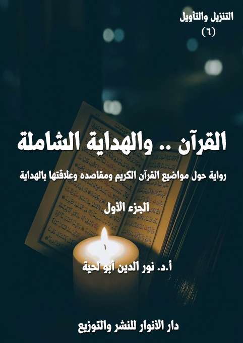

الكتاب: القرآن.. والهداية الشاملة ج1
الوصف: رواية حول مواضيع القرآن الكريم ومقاصده وعلاقتها بالهداية
السلسلة: التنزيل والتأويل
المؤلف: أ. د. نور الدين أبو لحية
الناشر: دار الأنوار للنشر والتوزيع
الطبعة: الأولى، 1443 هـ
عدد الصفحات: 623
ISBN: 978-620-4-72105-7
لمطالعة الكتاب من تطبيق مؤلفاتي المجاني وهو أحسن وأيسر: هنا

هذا الكتاب هو المقدمة السادسة لهذه السلسلة، ويتناول الخاصية الكبرى من خصائص القرآن الكريم، خاصية الهداية، التي نص عليها قوله تعالى: ﴿ذَلِكَ الْكِتَابُ لَا رَيْبَ فِيهِ هُدًى لِلْمُتَّقِينَ﴾ [البقرة: 2]، وقد رأينا من خلال استقراء ما ورد في القرآن الكريم حولها أنها تتضمن أربعة معان كبرى:
أولها: الأسس التي تقوم عليها الهداية، والتي لا يمكن أن تتحقق من دونها، وقد أشارت إليها كل الآيات التي تذكر الهداية القرآنية، فهي تقصرها على من لم تحل بينهم وبينها الحجب، وتجعلها خالصة لمن وفروا لأنفسهم الأهلية والقابلية لها.
ثانيها: الهداية للحقائق الكبرى، ابتداء من معرفة الله وانتهاء بمعرفة الكون والحياة والإنسان والمعاد وكل العوالم التي ذُكرت في القرآن الكريم، وكيفية التعامل معها.
ثالثها: الهداية للقيم والوظائف التي كُلف الإنسان بمراعاتها، والتي لا يمكن التعرف الدقيق عليها من دون هداية إلهية.
رابعها: غايات الهداية، ذلك أن لكل طريق غايات تحدد مساره، وتجعل السائر فيه أكثر اندفاعا ونشاطا وحماسة.
وبناء على هذا كان هذا الكتاب بجزئية عبارة عن تفسير موضوعي مختصر لمواضيع القرآن الكريم الكبرى جميعا، وقد اكتفينا فيه بذكر المواضيع القرآنية، وما ورد فيها من الآيات الكريمة، مع انتقاء بعضها وذكر تفسيره المختصر الذي يحدد معناه بسهولة ويسر.
وقد صببنا كل ذلك في رواية يرحل فيها المؤلف إلى المستقبل بعد أن تعم الهداية الأرض جميعا، وهناك يستمع للكثير ممن يحدثه عن تلك المعاني، ويبسطها بقدر الإمكان، وفي أجواء خاصة تتناسب مع الآيات الكريمة المراد الحديث عنها.
القرآن.. والهداية الشاملة (1/8)
هذا الكتاب هو المقدمة السادسة لهذه السلسلة، ويتناول الخاصية الكبرى من خصائص القرآن الكريم، خاصية الهداية، التي نص عليها قوله تعالى: ﴿ذَلِكَ الْكِتَابُ لَا رَيْبَ فِيهِ هُدًى لِلْمُتَّقِينَ﴾ [البقرة: 2]، وغيرها من الآيات الكريمة.
وهو القسم الأول من أربعة أقسام تحاول أن تتعرف على خصائص القرآن الكريم، وتطبقها على آياته، دون تحديد موضوع معين من مواضيعه، أو مقصد محدد من مقاصده، ولذلك كان هذا الجزء والأجزاء الثلاثة التي تليه من المقدمات الأساسية لفهم القرآن الكريم.
أما القسم التالي لهذا، والمكمل له، فهو القسم الخاص بالعزاء والشفاء القرآني، والذي نصت عليه آيات كثيرة جمعت بين الهداية والشفاء، كقوله تعالى: ﴿وَلَوْ جَعَلْنَاهُ قُرْآنًا أَعْجَمِيًّا لَقَالُوا لَوْلَا فُصِّلَتْ آيَاتُهُ أَأَعْجَمِيٌّ وَعَرَبِيٌّ قُلْ هُوَ لِلَّذِينَ آمَنُوا هُدًى وَشِفَاءٌ وَالَّذِينَ لَا يُؤْمِنُونَ فِي آذَانِهِمْ وَقْرٌ وَهُوَ عَلَيْهِمْ عَمًى أُولَئِكَ يُنَادَوْنَ مِنْ مَكَانٍ بَعِيدٍ﴾ [فصلت: 44]، وقوله: ﴿وَنُنَزِّلُ مِنَ الْقُرْآنِ مَا هُوَ شِفَاءٌ وَرَحْمَةٌ لِلْمُؤْمِنِينَ وَلَا يَزِيدُ الظَّالِمِينَ إِلَّا خَسَارًا﴾ [الإسراء: 82]، وهو يعنى بالجوانب الوجدانية والنفسية التي ينفعل لها وجدان المؤمن حين يقرأ القرآن الكريم.
وأما القسم الثالث، والمكمل لهما، فهو يهتم بالجوانب الوعظية والتربوية، والتي عبر عنها القرآن الكريم بالموعظة، كما قال تعالى: ﴿يَا أَيُّهَا النَّاسُ قَدْ جَاءَتْكُمْ مَوْعِظَةٌ مِنْ رَبِّكُمْ وَشِفَاءٌ لِمَا فِي الصُّدُورِ وَهُدًى وَرَحْمَةٌ لِلْمُؤْمِنِينَ﴾ [يونس: 57]، وهو يهتم بالأساليب والوسائل التي استعملها القرآن الكريم للتأثير والتزكية والتربية.
القرآن.. والهداية الشاملة (1/9)
وأما القسم الرابع، والمكمل لها جميعا، فهو يعنى بالبراهين والحجج التي استعملها القرآن الكريم، ومنهجه فيها، وهو ما عبر عنه قوله تعالى: ﴿أَفَلَا يَتَدَبَّرُونَ الْقُرْآنَ وَلَوْ كَانَ مِنْ عِنْدِ غَيْرِ اللَّهِ لَوَجَدُوا فِيهِ اخْتِلَافًا كَثِيرًا﴾ [النساء: 82]، وقوله: ﴿قُلْ فَلِلَّهِ الْحُجَّةُ الْبَالِغَةُ فَلَوْ شَاءَ لَهَدَاكُمْ أَجْمَعِينَ﴾ [الأنعام: 149]
وقد نبهنا إلى هذا هنا، حتى يعرف القارئ الكريم أنه ليس من مقاصد هذا الجزء الاهتمام بتلك الجوانب الوجدانية أو التأثيرية أو الاستدلالية، وإنما هو خاص فقط بالهداية، والتي رأينا من خلال استقراء ما ورد في القرآن الكريم بشأنها أنها تتضمن أربعة معان كبرى:
أولها: الأسس التي تقوم عليها الهداية، والتي لا يمكن أن تتحقق من دونها، وقد أشارت إليها كل الآيات التي تذكر الهداية القرآنية، فهي تقصرها على من لم تحل بينهم وبينها الحجب، وتجعلها خالصة لمن وفروا لأنفسهم الأهلية والقابلية.
ثانيها: الهداية للحقائق الكبرى، ابتداء من معرفة الله وانتهاء بمعرفة الكون والحياة والإنسان وكل العوالم التي ذُكرت في القرآن الكريم، وكيفية التعامل معها.
ثالثها: الهداية للقيم والوظائف التي كُلف الإنسان بمراعاتها، والتي لا يمكن التعرف الدقيق عليها من دون هداية إلهية.
رابعها: غايات الهداية، ذلك أن لكل طريق غايات تحدد مساره، وتجعل السائر فيه أكثر اندفاعا ونشاطا وحماسة.
وبناء على هذا كان هذا الكتاب بجزئية عبارة عن تفسير موضوعي مختصر لمواضيع القرآن الكريم جميعا، وقد اكتفينا فيه بذكر المواضيع القرآنية، وما ورد فيها من الآيات الكريمة، مع انتقاء بعضها وذكر تفسيره المختصر الذي يحدد معناه بسهولة ويسر، اهتداء
القرآن.. والهداية الشاملة (1/10)
بهدي القرآن الكريم الذي اختصر جميع مواضعه في سورة الفاتحة، ليكون القارئ على تبصرة بكل المحتويات، قبل الخوض في التفاصيل.
ولذلك لم نطرح في هذا الكتاب، وعند بيان معاني الآيات الكريمة التفاصيل المرتبطة بمعانيها إلا ما تمس الحاجة إليه، لأننا سنتحدث عن ذلك بتفصيل في الأجزاء الخاصة بكل موضوع.
وقد انتقينا في تفسير الآيات أسهل التفاسير وأبسطها مع التصرف فيها طبعا، بحسب الشروط التي ذكرناها في الأجزاء السابقة، فابتعدنا عن كل ما يثير الحساسيات الطائفية، أو يحول القرآن الكريم إلى مادة للجدل والسجالات التي لا تفيد القارئ سوى الصراع.
ولهذا انتقينا التفاسير من مدارس مختلفة، وتصرفنا فيها بحسب ما تقتضيه الضرورة، مع التنبيه إلى أن التوثيقات الموجودة في بدايات النصوص، تدل على تصرفنا فيها بالاختصار، أو بالإضافة ونحوها.
وقد وضعنا جميع ذلك في قالب رواية حوارية، ينتقل فيها تلميذ القرآن بصحبة معلمه إلى المستقبل، حيث تعم الهداية الأرض جميعا، وتعم معها البركات والخيرات والتطور العلمي والتقني، لكن لا يُسمح لتلميذ القرآن بتسجيل أي شيء ما عدا المعارف القرآنية، وما عدا الأوصاف العامة لمظاهر التحضر العلمي والأخلاقي.
وفي الرواية يسافر تلميذ القرآن عبر المراكب العجيبة، إلى العواصم الكبرى للعالم، ليسمع الحوارات والندوات القرآنية، فيراها، وكيف عم فيها الهدى والصلاح والتقوى، وكيف كان القرآن الكريم هو الملهم والمحرك والدافع لكل ذلك التطور والتحضر.
وبناء على المعاني الكبرى للهداية في القرآن الكريم، فقد قسمنا الكتاب إلى أربعة
القرآن.. والهداية الشاملة (1/11)
فصول كبرى، وخصصنا كل جزء بفصلين، وهي:
الفصل الأول: القرآن، وأسس الهداية: وقد تطرقنا فيه إلى أساسين مهمين:
1. حجب الهداية: وهي الحجب التي تحول بين الإنسان وتنزل الهداية عليه، وقد ذكرنا منها عشرين حجابا هي: حجاب المرض، وحجاب الموت، وحجاب الهوى، وحجاب الذنوب، وحجاب الحرص، وحجاب الرفاه، وحجاب الكبر، وحجاب الجهل، وحجاب النفاق، وحجاب الكفر، وحجاب التقليد، وحجاب الأماني، وحجاب الإعراض، وحجاب الاعتداء، وحجاب العجلة، وحجاب الكذب، وحجاب التزيين، وحجاب الظن، وحجاب المضللين [أئمة الضلال، وأصدقاء السوء، والبيئة المنحرفة]، وحجاب الوساوس.
2. معارج الهداية: وهي السبل والوسائل التي يستعملها من يريد أن تتنزل عليه الهداية بصورتها الابتدائية أو الكاملة، وقد ذكرنا منها المعارج التالية: معراج التقوى والورع، ومعراج الإيمان والإسلام، ومعراج المواجيد والمشاعر، ومعراج العلم والمعرفة، ومعراج المدارك الحسية، ومعراج المدارك العقلية، ومعراج الاتباع والاقتداء، ومعراج الاعتبار والتبصر، ومعراج المجاهدة والإلهام.
الفصل الثاني: القرآن، والهداية العلمية: وقد ذكرنا فيه سبع معارف قرآنية كبرى، وهي:
1. معرفة الله: وقد تطرقنا فيه للتقديس والتنزيه، والكمال والعظمة، والرحمة والعناية، والربوبية والحاكمية.
2. معرفة النبوة: وقد تطرقنا فيه للنبوة والهداية، والوحي والبشرية، والصلاح والإصلاح، والآيات والبينات.
القرآن.. والهداية الشاملة (1/12)
3. معرفة الإنسان: وقد تطرقنا فيه للخلافة ومؤهلاتها، والتكريم والعناية.
4. معرفة الكون: وقد تطرقنا فيه للكون والله، والكون والحياة، والكون والعبادة، والكون والتسخير.
5. معرفة السنن: وقد تطرقنا فيه للسنن والثبات، ومدرسة السنن.
6. معرفة الملائكة: وقد تطرقنا فيه للملائكة والهداية، والعبودية والطاعة، وخصائص وطاقات، وتكاليف ووظائف.
7. معرفة المعاد: وقد تطرقنا فيه للموت والبرزخ، والبعث والنشور، والحشر والحساب، والجزاء والعقوبة.
الفصل الثالث: القرآن، والهداية السلوكية: وقد تطرقنا فيه إلى أربع أركان كبرى لهذا النوع من الهداية، وهي:
1. التهذيب والتصفية، وقد تطرقنا فيه لما دعانا القرآن الكريم إلى تهذيب النفس عنه، وقد ذكرنا فيه: الجحود، والإعراض، والضلال، والكذب، والخداع، والافتراء، والاستعلاء، والعجب، والكبر، والعداوة، والحسد، والقتل، والنهب، والقذف، والمنع، والخذلان، والاحتقار، واللؤم، والفحش، والنجوى، والإسراف، والمجاهرة، والنجاسة، والحرام، والفاحشة.
2. الشعائر التعبدية، وقد تطرقنا فيه للشعائر التعبدية الكبرى، وهي: الصلاة، والتلاوة والذكر والدعاء، والصوم، والحج.
3. المقامات الروحية، وقد تطرقنا فيه لمنازل السلوك الروحي، وهي: الخشية، والرجاء، والتوبة، والإخلاص، والتوكل، والشكر، والمحبة.
4. الأخلاق السامية، وقد تطرقنا فيه للقيم الأخلاقية الكبرى التي وردت في القرآن
القرآن.. والهداية الشاملة (1/13)
الكريم من الصدق، والأدب، والسماحة، والسخاء، والعدل، والشجاعة، والإحسان.
الفصل الرابع: القرآن، وغايات الهداية، وقد ذكرنا فيه أربع غايات كبرى للهداية، وهي:
1. الحقيقة الخالصة، وتطرقنا فيه إلى ردود القرآن الكريم على أسباب التيه والضلال، والنظريات المرتبطة بها.. وإلى الهدى والنور الذي وضعه الله تعالى في كتابه ليجلي الحقائق بأجمل صورة وأكملها.
2. الكمال الإنساني، وتطرقنا فيه ـ أولا ـ لنماذج عن الكمال الإنساني في القرآن الكريم، والمتمثلة في الآيات التي جمعت أوصاف المؤمنين، وهي: المسلمون، والمؤمنون، والمتقون، والمكرمون، والأبرار، والصادقون، والمجاهدون، وأولو الألباب، والمفلحون، والمتوكلون، والسابقون، وعباد الرحمن.. ثم ذكرنا صفات وخصائص المجتمع الفاضل، وهي: التعارف، والتواصل، والتكافل، والتناصح.. ثم ذكرنا صفات وخصائص الحكومة العادلة، والمتمثلة في الحاكمية، والخلافة.
3. السعادة الأبدية، وتطرقنا فيه ـ أولا ـ للسعادة الدنيوية، والتي تتمثل في الطمأنينة، والتمكين، والرفاه، والإشراق.. ثم السعادة الأخروية، وما ورد في القرآن الكريم عن أهل الجنة، ومشاهد النجاة والفوز.
ونعتذر في الأخير لطول الكتاب؛ فهدفنا من هذه السلسلة ـ كما ذكرنا سابقا ـ الاستيعاب والشمول بالإضافة للتقريب والتوضيح، وكلاهما يستدعي التفصيل، والذي قد يستدعي التطويل، والذي يبتعد عن الحشو أو ذكر ما لا داعي لذكره.
القرآن.. والهداية الشاملة (1/14)
بعد أن طلب مني معلمي معلم القرآن أن أهيء نفسي للرحلة الخاصة بتعلم ما يتعلق بـ[القرآن.. والهداية الشاملة] رحت أبحث في الواقع عن مظاهر تلك الهداية وتجلياتها ومدى شمولها.
ومع أني وجدت بحمد الله الكثير من المظاهر الدالة على ذلك، إلا أني لم أجد تلك الهداية التي صورها القرآن الكريم بصورتها النقية الجميلة الكاملة التي مثّلها أنبياء الله وأولياؤه الصالحون.
وعندما رحت أبحث في أسباب ذلك، وجدت أولها الإعراض عن القرآن الكريم.. لا الإعراض عن حروفه وكلماته.. أو قراءته وترتيله.. وإنما الإعراض عن هدايته، وعدم التفاعل معها، أو الاهتمام بها.
ذلك أن الكثير انصرف إلى الألفاظ ومعانيها المحدودة، لا مقاصدها القريبة أو البعيدة، والتي لا يمكن أن يُفهم القرآن الكريم حق فهمه دون إدراكها.
وقد ذكرت للقراء الكرام الكثير من المشاهد الواقعية الدالة على ذلك في الروايات السابقة.. ومن أمثلتها القريبة ما حصل من أولئك الذين سمعوا قوله تعالى: ﴿الرَّحْمَنُ عَلَى الْعَرْشِ اسْتَوَى﴾ [طه: 5].. وبدل أن يهتدوا بها.. بل بدل أن يطيروا فرحا، وهم يسمعون بأن مالك هذا الكون جميعا، ومدبر أموره هو ﴿الرَّحْمَنُ﴾، وليس المنتقم أو المبتلي أو المعاقب.. راحوا يبحثون في معنى الاستواء وكيفيته.. وهل هو ثابت على العرش، أم يمكن أن يخلو العرش منه؟.. وعن حقيقة العرش، ومحله من السموات.. ويضعون الكتب والخرائط التي توضح ذلك.
القرآن.. والهداية الشاملة (1/15)
ثم يقع الخلاف الشديد بينهم في كل تلك التفاصيل، ويكفّر بعضهم بعضا.. ثم يقاتل بعضهم بعضا بكل قسوة.. لتضيع كلمة ﴿الرَّحْمَنُ﴾ المقصودة بالأصالة.. في كل ذلك الجدل والصراع والعنف.
وهكذا رأينا في روايات سابقة أولئك الذين انشغلوا برسم القرآن الكريم وكيفية كتابته عن حقائقه ومعانيه.. ومثلهم الذين انشغلوا بمخارج الحروف وصفاتها.. أو أولئك الذين انشغلوا بأسباب النزول عن أهداف النزول ومقاصده.
وقد وفر كل ذلك الضلال عن الهدي القرآني البيئة المناسبة لكل الأدعياء من الحشوية والكشفية والحداثيين والقرآنيين وغيرهم.. ليطوعوا القرآن الكريم لأهوائهم.. لا لينساقوا لها، ويستفيدوا منها، ويهتدوا بها.
وكل ذلك جعلني أشعر بأن القرآن الكريم أكبر مظلوم على هذه الأرض، وبين المسلمين أنفسهم.. وإلا فكيف نعيش التخلف، وبيننا كتاب التحضر الأعظم؟.. وكيف نعيش الشقاء، وبين أيدينا كلمات الله التي تحوي إكسير السعادة؟.. وكيف ننزل إلى السفل والبهيمية في سلوكنا وأخلاقنا، وبين أيدينا المعراج والسلم الذي يصعد بنا إلى أرقى مراتب الإنسانية؟
في غمرة تلك الآلام.. زارني معلمي الجديد الذي أرسله معلم القرآن.. والذي مسح الدموع عن عيني، وقال: إن كانت هذه الدموع دموع فرح وسرور، فلك الحق في إرسالها.. أما إن كانت دموع ألم وحزن؛ فليس لك ذلك.. لأن ما رأيته لا يساوي شيئا، أمام ما لم تره.. فانشغل بالأمل فيما لم تره عن الألم لما رأيته.
قلت: لم أفهم.. ما تقصد؟
قال: أنت الآن تعيش حالة يعقوب قبل عودة ابنه يوسف.. لكن يمكنك أن تعيش
القرآن.. والهداية الشاملة (1/16)
لحظات عودته إليه.. وتعيش معها لحظات الإنجازات العظيمة التي حققها ابنه في فترة غيابه.
قلت: لا أزال لا أفهم قصدك.
قال: أنت الآن تعيش مع المسلمين الأوائل في شِعب أبي طالب، وهم محاصرون جوعى.. لكن يمكنك أن تعيش بعد أن فتحت لهم مكة المكرمة.. وتتحول تلك البلدة العصية إلى مقر للمؤمنين والصالحين.. لا مكان فيه لأبي جهل ولا لأبي سفيان.
قلت: لا أزال لا أفهم قصدك.
قال: أنت الآن تعيش في طور الاختبار والابتلاء والسقوط.. لكن يمكنك أن تعيش في طور النصر والظهور.. ذلك الذي وصفه الله تعالى بقوله: ﴿هُوَ الَّذِي أَرْسَلَ رَسُولَهُ بِالْهُدَى وَدِينِ الْحَقِّ لِيُظْهِرَهُ عَلَى الدِّينِ كُلِّهِ وَلَوْ كَرِهَ الْمُشْرِكُونَ﴾ [التوبة: 33]، وقوله: ﴿هُوَ الَّذِي أَرْسَلَ رَسُولَهُ بِالْهُدَى وَدِينِ الْحَقِّ لِيُظْهِرَهُ عَلَى الدِّينِ كُلِّهِ وَكَفَى بِاللَّهِ شَهِيدًا﴾ [الفتح: 28]
قلت: وعيت ما تقول.. فأنت تريد مني أن أتخلص من حصار الحاضر، لأعيش جمال المستقبل.
قال: أجل.. فالألم الذي يحزنك سيصبح سجنا يحول بينك وبين تحقيق آمالك.. فلذلك لا تنظر إلى المصحف المسجون بين أيدي الهاجرين له.. وانظر إلى المصحف الذي ستتحقق به الحضارة الإنسانية الحقيقية في أجمل صورها.
قلت: وأنى لي أن أعيش ذلك.. وأنا لا أستطيع السفر إلى المستقبل.. يمكنني فقط أن أعيش الواقع.. أو أعيش الماضي من خلال ما سجله المؤرخون.. أو من خلال آثاره المريرة على الواقع.
قال: فهل المؤرخون أوثق عندك من ربك؟
القرآن.. والهداية الشاملة (1/17)
قلت: معاذ الله أن أعتقد هذا.
قال: أنت لا تقوله بلسانك.. لكن قلبك وعقلك وكل كيانك حتى دموعك تقول ذلك.
قلت: هلا فصلت لي ذلك.. فأنا لا طاقة لي بفهم الأحاديث المجملة.
قال: لاشك أنك قرأت قصة آدم عليه السلام وإبليس.. وتوعد إبليس لآدم.. ووعد الله بإرسال الهداة للبشر.. وقرأت قبله ما حصل من حوار بين الله وملائكته.. وقرأت معها جميعا وعد الله بنصر رسله وإظهار الحق وزهوق الباطل.. وهزيمة إبليس وكل زبانيته.
قلت: بلى.. أقرؤها كثيرا.. وقد وردت في القرآن الكريم في مواضع مختلفة.
قال: فإذا جمعت بينها جميعا.. علمت أن كلمة الله هي العليا.. وأن الله الذي استخلف البشر، وأرسل لهم الهداة يعلم أنهم سينجحون فيما كُلفوا به من مهام، وما أُنيط بهم من وظائف.. وأن تخلفهم في بعض المراحل لا يعني تخلفهم فيها جميعا.
قلت: فهمت الآن.. أنت تريدني أن أعيش تلك السنوات القليلة التي يتحقق فيها انتصار الحق على الباطل.. وظهور الإسلام على الدين كله.
قال: ومن ذكر لك أنها سنوات قليلة؟
قلت: المفسرون والمحدثون عادة يذكرون ذلك.
قال: لأنهم لم يستمدوا معارفهم من القرآن الكريم، ومن الهدي المقدس الذي لم يتدنس بتراث الأديان المحرفة.
قلت: فهل يمكن أن تطول تلك الفترة مدة من الزمن؟
قال: أجل.. وأطول مما تتصور.. أو يتصور المتشائمون.. وفيها ستعيش البشرية معنى الإنسان، بعد أن تجرب كل أنواع البهيمية.
القرآن.. والهداية الشاملة (1/18)
قلت: ولكن لِم حظيت تلك العصور بذلك دون غيرها؟
قال: الله تعالى أعدل وأرحم من أن يهب فضله لبعض العصور دون بعضها.. فلذلك كان فضله شاملا للجميع.. لكن هناك من يقبله ويقبل عليه.. وهناك من يعرض عنه.
قلت: فما ذنبنا نحن الذين عشنا في هذه العصور المظلمة؟
قال: فهمك للزمن هو الذي جعلك تشعر بذلك.. وإلا فإن الله تعالى أتاح لك أن تعيش في الزمن الذي تحب، ومع من تحب.. أليس المرء مع من أحب؟
قلت: بلى.. وقد قال تعالى: ﴿وَمَنْ يُطِعِ اللَّهَ وَالرَّسُولَ فَأُولَئِكَ مَعَ الَّذِينَ أَنْعَمَ اللَّهُ عَلَيْهِمْ مِنَ النَّبِيِّينَ وَالصِّدِّيقِينَ وَالشُّهَدَاءِ وَالصَّالِحِينَ وَحَسُنَ أُولَئِكَ رَفِيقًا ذَلِكَ الْفَضْلُ مِنَ اللَّهِ وَكَفَى بِاللَّهِ عَلِيمًا﴾ [النساء: 69 ـ 70].. لكن ذلك في الآخرة.. لا في الدنيا.
قال: وهذا أيضا من قصور فهمك عن حقيقة الزمن.. فالله رب الدنيا والآخرة.
قلت: لكن هناك فرق بين معية الحس ومعية المعنى.. فشتان بين أن أعيش بفكري أو أعيش بفكري وجسدي.
قال: وحتى في هذه يمكنك أن تشعر بنعمة الله تعالى عليك.
قلت: لم أفهم.. هل تريدني أن أفرح لأني أعيش في الطور المظلم للبشرية؟
قال: بل يمكنك أن تفرح لأنك في الطور المظلم لم تكن مظلما، بل كنت منيرا ومستنيرا.. بل يمكنك أن تحمد الله لأنك عشت فيه لأنه أتاح لك من النور ما تزيح به بعض الظلمات.
قلت: لم أفهم هذه أيضا.
قال: ألا ترى الكثير من الصالحين أو محبي الصالحين يرددون عند ذكر الإمام الحسين وما حصل له ولأهل بيته من المآسي والآلام قولهم: (يا ليتني كنت معكم فأفوز فوزا
القرآن.. والهداية الشاملة (1/19)
عظيما)؟
قلت: بلى.. وأنا أردد معهم ذلك أيضا.. فما فعله الإمام الحسين وأهل بيته وأصحابه كان أعظم نصر للإسلام.. ولذلك كان مساهما في الحفاظ عليه وعلى القيم النبيلة التي جاء بها في وجه أولئك الذين أرادوا تدنيسه والانحراف به.
قال: وهذا ما ينطبق على كل واقع وكل زمان.. فالشيطان الذي أراد أن يدنس الإسلام في عهد الإمام الحسين هو نفسه الشيطان الذي يريد أن يدنسه في كل العصور.. ولذلك يمكنك أن تحقق ما تحلم به من الفوز العظيم في صحبة الإمام الحسين وكل أئمة الهدى.. بل كل الرسل والأنبياء.. وأنت في عصرك من غير أن تغادره.
قلت: وعيت ما ذكرت.. لكن هذا قد يجعل أصحاب العصور المنوّرة بنور الهدى القرآني يصيحون أيضا متسائلين عن سر حرمانهم من تلك الفرص العظيمة.
قال: هم لم يُحرموا أيضا.. فالشيطان الذي دنس عصور الظلام يسعى بكل جهده ليدنس عصرهم.. ولذلك هم ليسوا مجبورين على الالتزام بالهدى.. وإنما يجاهدون أنفسهم على الالتزام به والثبات عليه.
قلت: صدقت.. لكن اعذرني.. فقد نسيت أن أسألك عنك.. فهل أنت معلمي الجديد؟
قال: أجل.. أنا معلم الهداية.. وقد أرسلني إليك معلمك معلم القرآن.. فالذي لا يدرك هداية القرآن ولا يعيشها، لا يعرف القرآن، حتى لو قضى حياته كلها يقرؤه ويرتله.
قلت: فهل سترحل بي إلى تلك القرون الفاضلة التي عاش فيها الصالحون مع القرآن الكريم، واهتدوا به، رغم كل المناوئين لهم، لأجعلهم نموذجا لي ولمن هم مثلي من المقصرين؟
القرآن.. والهداية الشاملة (1/20)
قال: بل سأرحل بك إلى تلك العصور الفاضلة التي سيعم فيها نور القرآن الكريم الأرض جميعا، فتتنور بنور ربها، وتحقق ما حلم جميع الأنبياء والأولياء بتحقيقه.
قلت: ولكن ذلك مستقبل.. ونحن لا يمكننا الرحيل إليه.
قال: المقيدون في سجون الزمان والمكان لا يمكنهم الرحيل إليه.. أما الذين تحرروا من تلك القيود؛ فيمكنهم أن يرحلوا إليه ويعيشوه.
قلت: إن ما تذكره غريب لا تطيقه العقول.
قال: بل بسيط.. تدركه الفطر السليمة وبسهولة ويسر.
قلت: كيف ذلك؟
قال: أنت تردد كثيرا قصة ذلك الصالح الذي ذكر مشاهدته لأهل الجنة وهم يتنعمون، ولأهل النار وهم يتعذبون.
قلت: أجل.. فهي مؤثرة جدا.. واسمح لي أن أقصها لك أنت أيضا.. فقد روي أن رسول الله صلى الله عليه وآله وسلم صلّى بالناس الصبح، فنظر إلى شاب في المسجد وهو يخفق ويهوي برأسه مصفرّا لونه، قد نحف جسمه، وغارت عيناه في رأسه، فقال له رسول الله صلى الله عليه وآله وسلم: (كيف أصبحت يا فلان؟).. قال: (أصبحت يا رسول الله موقنا)، فعجب رسوله الله صلى الله عليه وآله وسلم من قوله، وقال له: (إنّ لكل يقين حقيقة فما حقيقة يقينك؟).. فقال: (فإنّ يقيني يا رسول الله هو الذي أحزنني، وأسهر ليلي، وأظمأ هواجري، فعَزَفت نفسي عن الدنيا وما فيها، حتى كأني أنظر إلى عرش ربي وقد نصب للحساب، وحشر الخلايق لذلك وأنا فيهم، وكأني أنظر إلى أهل الجنة يتنعمون في الجنة ويتعارفون على الأرائك متكئون، وكأني أنظر إلى أهل النار وهم فيها معذبون مصطرخون، وكأني الآن أسمع زفير النار يدور في مسامعي، فقال رسول الله صلى الله عليه وآله وسلم: (هذا عبد نوّر الله قلبه بالإيمان)، ثم قال له: (الزم ما أنت عليه)، فقال الشاب: (ادع
القرآن.. والهداية الشاملة (1/21)
الله لي يا رسول الله أن أُرزق الشهادة معك، فدعا له رسول الله صلى الله عليه وآله وسلم، فلم يلبث أن خرج في بعض غزوات النبي صلى الله عليه وآله وسلم فاستشهد بعد تسعة نفر وكان هو العاشر) (1)
قال: فهل رأيت تأثير الأمل في البعث على العمل؟
قلت: أين ذلك؟
قال: إن ذلك اليقين الذي امتلأ به قلب ذلك الشاب في فضل الله تعالى، والذي جعله يراه رأي العين هو السبب في تقديمه نفسه لله، لنصرة الحق، ومواجهة الباطل.. ولذلك صار هذا الشاب نورا من الأنوار التي حافظت على الحق.
قلت: لقد تحقق له ذلك باليقين.. كما قال الإمام علي يصف الصالحين: (هجم بهم العلم على حقائق الأمور، وباشروا روح اليقين، واستلانوا ما استوعره المترفون، وأنسوا بما استوحش منه الجاهلون، وصحبوا الدنيا بأبدان أرواحها معلقة بالملأ الأعلى) (2)
قال: فقد اهتديت إذن إلى المركبة التي سترحل بك إلى المستقبل الجميل المنور بنور الهداية القرآنية؟
قلت: أي مركبة؟
قال: ألا تراهم يسافرون عبر الزمن من خلال المراكب؟
قلت: أجل.. كل الروايات التي تتحدث عن الرحلة عبر الزمن تذكر ذلك.
قال: فأنت تحتاج إلى هذه المركبة أيضا.. فلا سفر من دون آلة سفر.
قلت: فأنى لي ذلك؟
قال: اليقين في ربك، وصدق كلام ربك هو الذي يجعلك ترحل لأي محل يذكره
__________
(1) الكافي 2/ 53.
(2) نهج البلاغة، رقم 147
القرآن.. والهداية الشاملة (1/22)
ربك..
قلت: لكن أنى لي بذلك اليقين الذي وهبه الله للصالحين من عباده؟
قال: ووهبه لمن شاء وأراد وصدق في إرداته من عباده.. فيمكنك أن توفر في نفسك المشيئة والمحبة والإرادة، ليهبك الله ما وهبهم.. ففضل الله أعظم من أن يُحبس عمن يرغبون فيه.
قلت: فأنا أرغب فيه وأحبه.. وأتألم لأني لم أجاهد نفسي لتتحقق به.
قال: أعظم مجاهدة هي أن ترغب وتحب.
قلت: فأنا كذلك.. وكيف لا أرغب ولا أحب فيما لا تكون سعادة الأبد إلا به.
ـ ـ ـ
ما قلت ذلك.. حتى رأيتني في أرض غريبة، وكأنها قطعة من الجنة.. سألت معلمي عنها، فقال: أنت الآن في ذلك الزمن الجميل الذي تنورت فيه الأرض جميعا بنور ربها، وسترى كيف كان للقرآن الكريم دوره الريادي والقيادي في تحقيق ذلك.
فرحت كثيرا، وقلت: وأخيرا سوف أتحقق من كل النبوءات المرتبطة بالمستقبل وأنواع التقنيات والعمران المتوفرة فيه.. وستكون ملاحظاتي حقيقية، وليست مجرد فرضيات واحتمالات.
قال: ليس لك ذلك.. فأنت مأذون فقط بكتابة ما يرتبط بالقرآن والهداية الشاملة.. أما ما عدا ذلك.. فأنت تعلم ما ورد من النهي عن خطاب الناس بما لا تطيقه عقولهم.
قلت: أجل.. تذكرت ذلك.. وشكرا لتنبيهي إليه.. لكن ما اسم هذه الأرض التي نزلت فيها؟.. ومن أي بلاد المسلمين هي؟
القرآن.. والهداية الشاملة (1/23)
قال: في ذلك الوقت.. كل البلاد بلاد مسلمين.. فلذلك يمكنك أن تعتبرها مكة أو المدينة.. ويمكنك أن تعتبرها واشنطن أو باريس.
قلت: أليس هناك في ذلك الوقت فرق بينهما؟
قال: قد يكون هناك فرق بينهما في التضاريس والمناخ.. لكن ليس هناك أي فرق بينها في الإنسان والهداية.. فهداية الله مثل النور والعافية تنزل على أي محل لتصبغه بصبغتها.
قلت: أجل.. وقد صدقت في ذلك.. لكن.. هل ستكون معي في هذه الرحلة؟
قال: مثلما كان سائر معلميك.. سأكون معك من دون أن تشعر.. ولذلك سترى أن كل الأحاديث التي تسمعها مرتبطة فقط بغرض رحلتك.. فلا تتعجب من ذلك.
قلت: لقد تعود سائر المعلمين إخباري عن مسيرة رحلتي، لأكون على بينة من أمري.. فهلا فعلت ذلك.
قال: أجل.. أول رحلتك ستكون للأسس التي لا يمكن أن تقوم الهداية من دون توفرها.. فالهداية بناء عال يحتاج أسسا قوية ثابتة.. ومن لم يملك الأسس سينهار بنيانه لا محالة.
قلت: صدقت.. وقد أشار إلى ذلك قوله تعالى: ﴿وَمِنَ النَّاسِ مَنْ يَعْبُدُ اللَّهَ عَلَى حَرْفٍ فَإِنْ أَصَابَهُ خَيْرٌ اطْمَأَنَّ بِهِ وَإِنْ أَصَابَتْهُ فِتْنَةٌ انْقَلَبَ عَلَى وَجْهِهِ خَسِرَ الدُّنْيَا وَالْآخِرَةَ ذَلِكَ هُوَ الْخُسْرَانُ الْمُبِينُ﴾ [الحج: 11]
قال: ولذلك اهتم أهل ذلك الزمن الجميل المنور بنور الإيمان بتحقيق تلك الأسس وتثبيتها.. بل جعلها من الأركان الضرورية في كل سياساتهم التعليمية والثقافية والإعلامية وغيرها.. كما سترى.
قلت: هذا أول الرحلة.. فما ثانيها؟
القرآن.. والهداية الشاملة (1/24)
قال: الهداية العلمية.. فالهداية قبل أن تكون عملا وسلوكا تكون معاني مستقرة في الذهن والوجدان.. والإنسان ابن أفكاره ومعلوماته.
قلت: صدقت.. وقد قال الله تعالى عن الإيمان به: ﴿فَاعْلَمْ أَنَّهُ لَا إِلَهَ إِلَّا اللَّهُ﴾ [محمد: 19]، حيث اعتبر الإيمان علما.. بل أشرف العلوم.
قال: وبما أن العلم يقتضي العمل.. فسترحل أيضا إلى الهداية العملية، لتعرف كيف تتحقق، ومن خلال القرآن الكريم، وبأجمل صورها وأكملها.
قلت: وآخر رحلتي.. أين ستكون؟
قال: لكل رحلة غايات.. ولذلك سترحل في آخر رحلتك إلى غايات الهداية القرآنية.. وستراها رأي العين.. لكن لا تسجل إلا ما أُذن لك في تسجيله.
القرآن.. والهداية الشاملة (1/25)
في اللحظات الأولى من رحلتي للمستقبل الجميل المنوّر بنور الهداية القرآنية، رحت أسير في تلك المدينة الجميلة التي نزلت فيها، وقد رأيت فيها من عجيب العمران والتقانة ما لم أره في حياتي أبدا.
وبما أني لا أستطيع أن أصف لكم التفاصيل المرتبطة بذلك.. إلا أني أذكر لكم، ولكل أصدقاء المناخ أن الجو في تلك المدينة، وعلى الرغم من توفر كل وسائل الراحة والرفاه والتنقل ونحوها إلا أنه لم يكن ملوثا.. بل كان مشحونا بروائح زكية تبعث على النشاط والفرح.
ما هي إلا لحظات بعد وصولي حتى وجدت نفسي أمام بوابة كبيرة، تشبه بوابات الجامعات عندنا.. لكن بصورة أجمل بكثير من كل ما نراه، وفي كل الدول المتطورة..
وقد شدني ما زُخرفت به من زخارف تمثل كل الحضارات التي مرت بالبشرية.. وكلها كانت تحيط بقوله تعالى: ﴿الْحَمْدُ لِلَّهِ الَّذِي هَدَانَا لِهَذَا وَمَا كُنَّا لِنَهْتَدِيَ لَوْلَا أَنْ هَدَانَا اللَّهُ﴾ [الأعراف: 43]، والتي كانت تظهر بإشعاعات جميلة تبعث على الراحة والأمل.
بينما أنا كذلك أنظر إلى البوابة وجمالها، وما تبعثه من الطمأنينة والراحة شد على مرفقي بعض الشباب، وقال: هيا.. الجميع بانتظارك.. سيبدأ الآن امتحاننا.. وقد طلب مني الأستاذ أن أحضرك لتكون شاهدا ومراقبا.
لم أجد ما أقول.. إلا أني سرت معه إلى مدرج من مدرجات تلك الجامعة.. ولم يكن
القرآن.. والهداية الشاملة (1/26)
له من المدرجات التي نعرفها إلا الاسم.. أما حقيقته وصورته فقد كانت أجمل بكثير.. حيث كان الطلبة والأستاذ، وكأنهم في متنزه وحديقة، لا في سجن أو معتقل.
بعد أن دخلت.. ورحب بي الأستاذ.. قال مخاطبا طلبته: سيبدأ الآن الامتحان.. وفي المادة الأولى.. مادة [التحرر والتجرد].. وطبعا أنتم تعلمون أن الجهاز المرفق مع كل واحد منكم سيسجل كل تدخل، ويضع العلامات التي تستحقونها.. ومن دون أي تدخل مني ولا منكم.
قالوا: أجل.. والحمد لله.. ونحن نثق في الموازين التي يتعامل بها معنا في هذه المادة، وفي كل المواد.
قال الأستاذ: سأبدأ بأول سؤال.. وهو عن علاقة الهداية بالتحرر والتجرد.
قال أحد الطلبة (1): لا يمكن أن تتم الهداية أو تتحقق من دون التحرر والتجرد.. ذلك أن العين وحدها لا تكفي لرؤية الموجودات، بل ينبغي أن لا يكون هناك حجاب أو مانع يحول بينها وبين الرؤية.. فلو كان هناك دخان أو غبار أو ضباب غليظ يحول بيننا وبين الشي ء المراد رؤيته؛ فإنا لا نراه مهما كان قربه منا.
قال آخر: ولذلك إذا وضعنا نظارة سوداء قاتمة، فمن الطبيعي أن لا نرى شيئا، وإذا وضعنا نظارة ملونة، فإننا سنرى الأشياء ملونة حسب اللون الذي اخترناه.
قال آخر: وإذا كانت عدستا نظارتنا غير مصقولتين جيدا؛ فإننا سنرى الأشياء معوجة.. وهكذا إن كان مبتلين بأي مرض، فإنا سنرى الأشياء غير مطابقة لما هي عليه في الواقع.
__________
(1) نفحات القرآن، ج 1، ص: 229.
القرآن.. والهداية الشاملة (1/27)
قال آخر: وأمثال هذه الموانع بالضبط قد تحصل للعقل والفطرة، وقد تحصل لكل أدوات المعرفة التي أتاحها الله لنا.. فلذلك نحتاج إلى إزالة الحجب وتحرير أنفسنا منها حتى تتحقق لنا الهداية، وفي أكمل وأجمل صورها.
قال الأستاذ: بوركتم.. وما ذكرتموه صحيح.. والآن أريد منكم أن تثبتوا ذلك من خلال القرآن الكريم الذي هو دستور الهداية الأكمل والأشمل.
قال أحد الطلبة: عندما نعود للقرآن الكريم نجد تركيزه الشديد في خطابه للبشر على الدعوة للتحرر من كل تلك القيود التي تحول بينهم وبين الهداية.. لأن المشكلة ليست في الحقيقة، وإنما في الأعين التي تنظر إليها.
قال الأستاذ: أحسنتم.. فأخبروني عن الحجاب الذي يحول بين الإنسان والهداية الوارد في قوله تعالى: ﴿لِيَجْعَلَ مَا يُلْقِي الشَّيْطَانُ فِتْنَةً لِلَّذِينَ فِي قُلُوبِهِمْ مَرَضٌ وَالْقَاسِيَةِ قُلُوبُهُمْ وَإِنَّ الظَّالِمِينَ لَفِي شِقَاقٍ بَعِيدٍ﴾ [الحج: 53]
قال أحد الطلبة: هذه الآية الكريمة تشير إلى أخطر الحجب التي تحول بين الإنسان والهداية، وهو مرض قلبه الذي يمنعه من رؤية الأشياء كما هي.. ذلك أن القلب بالمفهوم القرآني هو الأداة التي تستقبل الحقائق؛ فإن مرض بأي مرض منعه من استقبالها بصورة صحيحة.
قال آخر: وقد قال بعض العلماء يوضح ذلك: (إن القرآن الكريم يؤكد على أن وجود البرامج والقوانين الحياتية لا تكفي بمفردها لسعادة فرد أو جماعة، بل يجب أن يؤخذ
القرآن.. والهداية الشاملة (1/28)
بنظر الاعتبار وجود الأرضية المهيئة والإستعداد للتلقي كشرط أساسي) (1)
قال آخر: ثم قال يوضح ذلك: (إن آيات القرآن الكريم كقطرات المطر تصيب الحديقة الغناء والأرض السبخة، فالذين ينظرون إلى الحقائق بروح التسليم والإيمان والعشق، يتعلمون من كل سورة ـ بل من كل آية ـ درسا يزيد في إيمانهم، ويفعل سمات الإنسانية لديهم.. أما الذين ينظرون إلى هذه الآيات من خلف حجب العناد والكبر والنفاق، فإنهم لايستفيدون منها، بل وتزيد في كفرهم ورجسهم.. وبتعبير آخر فإنهم يعصون كل أمر فيها ليرتكبوا بذلك معصية جديدة تضاف إلى معاصيهم، ويواجهون كل قانون بالتمرد عليه، ويصرون على رفض كل حقيقة، وهذا هو سبب تراكم المعاصي والآثام في وجودهم، وبالتالي تتجذر هذه الصفات الرذيلة في كيانهم، وفي النهاية إغلاق كل طرق الرجوع بوجوههم وموتهم على الكفر) (2)
قال آخر: ولهذا اعتنى القرآن الكريم بذكر كل أنواع الأمراض التي تصيب القلوب، وتحول بينها وبين استقبال الهداية الإلهية.
قال آخر: ومنها ما أطلق عليه القرآن الكريم لقب [إثم القلب]، تفريقا بينه وبين إثم الجوارح، كما قال تعالى: ﴿وَلَا تَكْتُمُوا الشَّهَادَةَ وَمَنْ يَكْتُمْهَا فَإِنَّهُ آثِمٌ قَلْبُهُ﴾ [البقرة: 283]، وهو مثل المرض؛ فكلما كان متجذرا في الباطن، كلما صعب علاجه، بخلاف الجرح الخارجي.
قال آخر: ومنها ما أطلق عليه لقب [صغو القلب]، أي ميله عن الحق، كما قال تعالى: ﴿إِنْ تَتُوبَا إِلَى اللَّهِ فَقَدْ صَغَتْ قُلُوبُكُمَا﴾ [التحريم: 4]؛ وهو يعني أن القلب حاسَّة قابلة للانحرافِ ما لم تجد عاصمًا يكبحها، كما قال تعالى: ﴿وَلِتَصْغَى إِلَيْهِ أَفْئِدَةُ الَّذِينَ لَا يُؤْمِنُونَ
__________
(1) الأمثل في تفسير كتاب الله المنزل (6/ 274)
(2) الأمثل في تفسير كتاب الله المنزل (6/ 274)
القرآن.. والهداية الشاملة (1/29)
بِالْآخِرَةِ﴾ [الأنعام: 113]
قال آخر: ومنها ما أطلق عليه لقب [غل القلب]، والذي ورد ذكره في قوله تعالى: ﴿وَلَا تَجْعَلْ فِي قُلُوبِنَا غِلًّا لِلَّذِينَ آمَنُوا رَبَّنَا إِنَّكَ رَؤُوفٌ رَحِيمٌ﴾ [الحشر: 10]، والغلُّ هو الغشّ، والعداوة، والضغن، والحقد، والحسد، والدغل؛ وقد ورد في الحديث عن رسول الله صلى الله عليه وآله وسلم: (ثلاثٌ لا يُغِلُّ عليهن قلبُ مسلم أبدًا: إخلاص العمل لله، ومناصحة ولاة الأمر، ولزوم جماعة المسلمين، فإنَّ دعوتهم تحيط من ورائهم) (1)
قال آخر: ومنها ما أطلق عليه لقب [غلظ القلب]، وقد ذكره الله تعالى، منزِّهًا عنه رسولَه صلى الله عليه وآله وسلم، فقال: ﴿فَبِمَا رَحْمَةٍ مِنَ اللَّهِ لِنْتَ لَهُمْ وَلَوْ كُنْتَ فَظًّا غَلِيظَ الْقَلْبِ لَانْفَضُّوا مِنْ حَوْلِكَ فَاعْفُ عَنْهُمْ وَاسْتَغْفِرْ لَهُمْ وَشَاوِرْهُمْ فِي الْأَمْرِ﴾ [آل عمران: 159]، والغلظة ضدّ الرقة في الخلق والطبع والفعل والمنطق والعيش، فهي قسوة وشدة واستطالة.
قال آخر: ومنها ما أطلق عليه لقب [إباء القلب]، والمقصود منه إباؤه عن الإذعان لما أمر الله، وقد نسبه الله تعالى إلى القلب في قوله عن المشركين: ﴿كَيْفَ وَإِنْ يَظْهَرُوا عَلَيْكُمْ لَا يَرْقُبُوا فِيكُمْ إِلًّا وَلَا ذِمَّةً يُرْضُونَكُمْ بِأَفْوَاهِهِمْ وَتَأْبَى قُلُوبُهُمْ وَأَكْثَرُهُمْ فَاسِقُونَ﴾ [التوبة: 8]
قال آخر: ومنها ما أطلق عليه لقب [لَهْو القلب]، والمقصود منه كل ما يشغل الإنسان عما يعنيه ويهمه، وقد ورد ذكر هذا المرض الخطير في القرآن الكريم ست عشرة مرة، وود ذكره مرتبطا بالقلب في قوله تعالى: ﴿اقْتَرَبَ لِلنَّاسِ حِسَابُهُمْ وَهُمْ فِي غَفْلَةٍ مُعْرِضُونَ مَا يَأْتِيهِمْ مِنْ ذِكْرٍ مِنْ رَبِّهِمْ مُحْدَثٍ إِلَّا اسْتَمَعُوهُ وَهُمْ يَلْعَبُونَ لَاهِيَةً قُلُوبُهُمْ وَأَسَرُّوا النَّجْوَى الَّذِينَ ظَلَمُوا﴾ [الأنبياء: 1 ـ 3]
__________
(1) مسند أحمد، حديث: 21590.
القرآن.. والهداية الشاملة (1/30)
قال آخر: ومنها ما أطلق عليه لقب [القلب المنكِر]، كما في قوله تعالى: ﴿فَالَّذِينَ لَا يُؤْمِنُونَ بِالْآخِرَةِ قُلُوبُهُمْ مُنْكِرَةٌ وَهُمْ مُسْتَكْبِرُون﴾ [النحل: 22]، وهي القلوب التي لا تقبل الوعظ، ولا ينجع فيها الذكر، فهم مستكبرون عن عبادة الله، مع إنكار قلوبهم لتوحيده (1).
قال آخر: ومنها ما أطلق عليه لقب [اشمئزاز القلب]، كما في قوله تعالى: ﴿وَإِذَا ذُكِرَ اللَّهُ وَحْدَهُ اشْمَأَزَّتْ قُلُوبُ الَّذِينَ لَا يُؤْمِنُونَ بِالْآخِرَةِ وَإِذَا ذُكِرَ الَّذِينَ مِنْ دُونِهِ إِذَا هُمْ يَسْتَبْشِرُونَ﴾ [الزمر: 45]، والاشمئزاز هو الانقباض، وهي حالة تمر على القلب المعرض على الهداية، فيمتلئ غيظا وغما يظهر أثره على الجوارح، كما يشاهد في وجه العابس المحزون.
قال آخر: ومنها ما أطلق عليه لقب [زيغ القلب]، وقد ورد ذكره في قوله تعالى: ﴿هُوَ الَّذِي أَنْزَلَ عَلَيْكَ الْكِتَابَ مِنْهُ آيَاتٌ مُحْكَمَاتٌ هُنَّ أُمُّ الْكِتَابِ وَأُخَرُ مُتَشَابِهَاتٌ فَأَمَّا الَّذِينَ فِي قُلُوبِهِمْ زَيْغٌ فَيَتَّبِعُونَ مَا تَشَابَهَ مِنْهُ ابْتِغَاءَ الْفِتْنَةِ وَابْتِغَاءَ تَأْوِيلِهِ﴾ [آل عمران: 7]
قال آخر: وقد قال بعض العلماء في التعريف بهذا المرض وأصحابه عند تفسيره للآية الكريمة: (أما الذين يميلون عن الحق ويتبعون أهواءهم الباطلة، فينكرون المتشابه، وينفرون الناس منه، ويستعينون على ذلك بما في غرائز الناس وطبائعهم من إنكار ما لم يصل إليه علمهم، ولا يناله حسهم.. ويأخذونه على ظاهره بدون نظر إلى الأصل المحكم، ليفتنوا الناس بدعوتهم إلى أهوائهم.. ومعنى ابتغاء تأويله أنهم يرجعونه إلى أهوائهم وتقاليدهم، لا إلى الأصل المحكم الذي بنى عليه الاعتقاد) (2)
قال آخر: وقال آخر: (الزيغ هو الميل عن الاستقامة، ويلزمه اضطراب القلب وقلقه بقرينة ما يقابله في ذيل الآية من قوله: ﴿وَالرَّاسِخُونَ فِي الْعِلْمِ يَقُولُونَ آمَنَّا بِهِ كُلٌّ مِنْ عِنْدِ
__________
(1) تفسير ابن كثير، 4/ 484.
(2) تفسير المراغي: (3/ 99)
القرآن.. والهداية الشاملة (1/31)
رَبِّنَا﴾ [آل عمران: 7]، فإن الآية تصف حال الناس بالنسبة إلى تلقي القرآن بمحكمه ومتشابهه، وأن منهم من هو زائغ القلب ومائله ومضطربه فهو يتبع المتشابه ابتغاء للفتنة والتأويل، ومنهم من هو راسخ العلم مستقر القلب يأخذ بالمحكم، ويؤمن بالمتشابه ولا يتبعه، ويسأل الله تعالى أن لا يزيغ قلبه بعد الهداية) (1)
قال آخر: وقال آخر في تفسير قوله تعالى: ﴿فَأَمَّا الَّذِينَ فِي قُلُوبِهِمْ زَيْغٌ﴾ [آل عمران: 7]: (الزيغ هو الميل عن خط التوازن في الفكر والاستقامة في الخط، من هؤلاء الذين يعيشون الارتباك الفكري والقلق الروحي والضياع العملي، فلا يلجأون إلى ركن وثيق من الحجة القاطعة الواضحة، ولا ينطلقون من فكر عميق واسع، ومن خط مستقيم واضح، فهم لا يتحركون من موقع إيمانهم بالحقيقة الواقعية التي تناديهم في إيحاءاتها الفكرية الإنسانية للبحث عنها والسعي إليها، بل يتحركون من خلال تلبية حاجاتهم، وتحريك أطماعهم وتوجيه طموحاتهم نحو الأهداف الخبيثة، فيبحثون عن أي مبرر للحصول على ما يريدون، بعيدا عن الشروط الأخلاقية لذلك، لأن المهم لديهم أن يقدموا بين أيديهم أية حجة في الصورة الظاهرة حتى لو كانت غير مقنعة، لأن قناعة الآخرين ليست الهدف لهم، بل الهدف الأساس هو تضليلهم وتوجيههم نحو الانحراف عن الخط المستقيم، من أجل إرباك الواقع الإنساني وإبعاده عن الانسجام مع رسالات الأنبياء وحركات المخلصين، ولهذا، فإنهم يحاولون أن يلعبوا على الألفاظ ويتحركوا بأساليب الدس والتشويه والتهويل ضد الرسل والرسالات، فيلجئون ـ في تبرير مواقفهم وأوضاعهم ـ إلى المتشابهات التي يمكن أن تثير الجدل بين الناس لقابليتها للتفسير والتأويل) (2)
__________
(1) تفسير الميزان (3/ 13)
(2) من وحي القرآن (5/ 228)
القرآن.. والهداية الشاملة (1/32)
قال آخر: ومن أمراض القلوب الحائلة بين الإنسان والهداية ما وصفه الله تعالى بقوله: ﴿إِنَّمَا يَسْتَأْذِنُكَ الَّذِينَ لَا يُؤْمِنُونَ بِاللَّهِ وَالْيَوْمِ الْآخِرِ وَارْتَابَتْ قُلُوبُهُمْ فَهُمْ فِي رَيْبِهِمْ يَتَرَدَّدُونَ﴾ [التوبة: 45]، وقد قال بعض العلماء في تفسيرها: (على كل حال فإن المؤمنين ـ بسبب إيمانهم ـ لديهم إرادة ثابتة وتصميم أكيد لا يقبل التهاون والرجوع حيث يرون طريقهم بجلاء ووضوح، فمقصدهم معلوم وهدفهم واضح، ولذلك فهم يمضون بخطى واثقة نحو الأمام ولا يترددون أبداً.. أمّا المنافقون فلأن هدفهم مظلم وغير معلوم، فهم مترددون حائرون ذاهلون، ويبحثون دائماً عن الأعذار والحجج الواهية للتخلص والفرار من تحمل المسؤولية الملقاة على عواتقهم) (1)
قال آخر: ثم عقب على من خصها بالمنافقين في عهد رسول الله صلى الله عليه وآله وسلم، فقال: (وهاتان العلامتان لا تختصان بالمؤمنين والمنافقين في صدر الإسلام ومعركة تبوك فحسب، بل يمكن في عصرنا الحاضر أن نميز المؤمنين الصادقين من المدَّعين الكاذبين بهاتين الصفتين؛ فالمؤمن شجاع ذو إِرادة وتصميم وخطى واثقة، والمنافق جبان وخائف ومتردد وحائر ويبحث عن المعاذير دائماً) (2)
قال آخر: ولهذا وصف الله تعالى المؤمنين بقوله: ﴿إِنَّمَا الْمُؤْمِنُونَ الَّذِينَ آمَنُوا بِاللَّهِ وَرَسُولِهِ ثُمَّ لَمْ يَرْتَابُوا وَجَاهَدُوا بِأَمْوَالِهِمْ وَأَنْفُسِهِمْ فِي سَبِيلِ اللَّهِ أُولَئِكَ هُمُ الصَّادِقُونَ﴾ [الحجرات: 15]
قال آخر (3): ومن أمراض القلوب الحائلة بين الإنسان والهداية ما وصفه الله تعالى بقوله: ﴿لَا يَزَالُ بُنْيَانُهُمُ الَّذِي بَنَوْا رِيبَةً فِي قُلُوبِهِمْ إِلَّا أَنْ تَقَطَّعَ قُلُوبُهُمْ وَاللَّهُ عَلِيمٌ حَكِيمٌ﴾
__________
(1) الأمثل في تفسير كتاب الله المنزل (6/ 67)
(2) الأمثل في تفسير كتاب الله المنزل (6/ 67)
(3) من وحي القرآن (11/ 213)
القرآن.. والهداية الشاملة (1/33)
[التوبة: 110]، أي ﴿لَا يَزَالُ بُنْيَانُهُمُ الَّذِي بَنَوْا﴾ [التوبة: 110] على أساس من الاهتزاز في الفكر والموقف ﴿رِيبَةً فِي قُلُوبِهِمْ﴾ [التوبة: 110] يثير الشك ويقود إلى التزلزل، فيطبع كل مشاعرها ونبضاتها بطابعه حتى يتحوّل إلى ما يشبه الخصوصيات الذاتية التي لا تزول إلا أن تزول الذات نفسها، فتبقى ما بقيت الذات ﴿إِلَّا أَنْ تَقَطَّعَ قُلُوبُهُمْ﴾ [التوبة: 110] وتتلاشى وتموت، فيتلاشى الشك بزوال قاعدته وموضعه ﴿وَاللَّهُ عَلِيمٌ حَكِيمٌ﴾ [الممتحنة: 10] فيما يمنح من رضوانه، وفي ما يمنع من غفرانه.
قال الأستاذ: أحسنتم.. فأخبروني عن الحجاب الذي يحول بين الإنسان والهداية الوارد في قوله تعالى: ﴿جَعَلْنَا عَلَى قُلُوبِهِمْ أَكِنَّةً أَنْ يَفْقَهُوهُ وَفِي آذَانِهِمْ وَقْرًا﴾ [الأنعام: 25]
قال أحد الطلبة: لقد ورد ذكر هذا الحجاب، وهو [أَكِنَّة القلب] في أربعة مواضع من القرآن الكريم؛ كما في قوله تعالى: ﴿جَعَلْنَا عَلَى قُلُوبِهِمْ أَكِنَّةً أَنْ يَفْقَهُوهُ وَفِي آذَانِهِمْ وَقْرًا﴾ [الأنعام: 25]، ومثلها في [الإسراء: 46]، وفي [الكهف: 57]، وفي [فصلت: 5]، والأكنَّة هي الأغطية، ومعنى الآية الكريمة: جعلنا على قلوبهم أغطيةً وغشاوة، مجازاة على كفرهم، ومنَعْنا الإيمان من أن يدخل قلوبهم وأسماعهم.
قال آخر: وهي تشير إلى أن القلوب بعد أن يشتد مرضها، تصبح غير قادرة على استقبال الحقائق، ولذلك تموت مثلما يموت الجسد بعد أن يعجز عن الوظائف التي تبقيه على قيد الحياة.
قال الأستاذ: فما تجيبون من يستدل بهذه الآية الكريمة وغيرها على الجبر، وأن الله تعالى يجبر القلوب على الضلال.. كما ذكر ذلك بعض من كان في فترة الظلمات التي مرت بالبشرية؟
القرآن.. والهداية الشاملة (1/34)
قال آخر: الآية الكريمة لا تعني أن الله تعالى وضع الأكنة على قلوبهم رغم أنوفهم، وإنما تعني أنهم باختيارهم لسبيل الضلال بدل الهداية تحققوا بما يحجبهم عن الحق، فلذلك وفر الله لهم ما استعدت نفوسهم له؛ فالله هو الهادي المضل.. يهدي من يشاء أن يهتدي، ويضل من يشاء أن يضل.
قال آخر: وقد قال بعض العلماء في الآية الكريمة: (هذه استعارة، لأنه ليس هناك على الحقيقة كنان على قلب، ولا وقر في سمع.. وإنما المراد أنهم ـ لاستثقالهم سماع القرآن عند أمر الله سبحانه نبيه صلى الله عليه وآله وسلم بتلاوته على أسماعهم وإفراغه في آذانهم ـ كالذين على قلوبهم أكنّة دون علمه، وفي آذانهم وقر دون فهمه، وإن كانوا من قبل نفوسهم أُتوا، وبسوء اختيارهم أُخذوا.. ولو لم يكن الأمر كذلك لما ذمّوا على اطراحه، ولعذروا بالإضراب عن استماعه) (1)
قال الأستاذ: فهل لهذا النوع من الحجاب نظائر في القرآن الكريم؟
قال أحد الطلبة: أجل.. ومنها ما أطلق عليه الله تعالى لقب [الإغفال]، كما في قوله: ﴿وَلَا تُطِعْ مَنْ أَغْفَلْنَا قَلْبَهُ عَنْ ذِكْرِنَا﴾ [الكهف: 28]: وقد فسرها بعض العلماء بقوله: (المراد بإغفال قلبه تسليط الغفلة عليه وإنساؤه ذكر الله سبحانه على سبيل المجازاة، حيث إنهم عاندوا الحق، فأضلهم الله بإغفالهم عن ذكره، فإن كلامه تعالى في قوم هذه حالهم) (2)
قال آخر: ثم عقب على ذلك بقوله: (فلا مساغ لقول من قال: إن الآية من أدلة جبره تعالى على الكفر والمعصية، وذلك لأن الإلجاء مجازاة لا ينافي الاختيار، والذي ينافيه هو الإلجاء ابتداء، ومورد الآية من القبيل الأول) (3)
__________
(1) تلخيص البيان في مجازات القرآن (ص: 193)
(2) تفسير الميزان (13/ 159)
(3) تفسير الميزان (13/ 159)
القرآن.. والهداية الشاملة (1/35)
قال آخر: ثم بين عدم الحاجة إلى التأويل في هذا وأمثاله، فقال: (ولا حاجة إلى تكلف التأويل كقول من قال إن المراد بقوله: ﴿أَغْفَلْنَا قَلْبَهُ﴾ [الكهف: 28]:عرضناه للغفلة أو أن المعنى صادفناه غافلا، أو أريد به نسبناه إلى الغفلة، أو أن الإغفال بمعنى جعله غفلا، لا سمة له ولا علامة، والمراد جعلنا قلبه غفلا لم نسمه بسمة قلوب المؤمنين، ولم نعلم فيه علامة المؤمنين لتعرفه الملائكة بتلك السمة) (1)
قال آخر: ومنها ما ورد وصفه في قوله تعالى: ﴿بَلْ قُلُوبُهُمْ فِي غَمْرَةٍ مِنْ هَذَا وَلَهُمْ أَعْمَالٌ مِنْ دُونِ ذَلِكَ هُمْ لَهَا عَامِلُونَ﴾ [المؤمنون: 63]، والغَمْرة، هي غطاء القلب عن فهم ما أودع الله كتابه من الهداية، وإذا بلغ هذا المبلغ، فليس للقلب القدرة على التفريق بين الحسن والقبيح.
قال آخر: ومنها ما أطلق عليه لقب [الطبع]، كما في قوله تعالى: ﴿أَوَلَمْ يَهْدِ لِلَّذِينَ يَرِثُونَ الْأَرْضَ مِنْ بَعْدِ أَهْلِهَا أَنْ لَوْ نَشَاءُ أَصَبْنَاهُمْ بِذُنُوبِهِمْ وَنَطْبَعُ عَلَى قُلُوبِهِمْ فَهُمْ لَا يَسْمَعُونَ﴾ [الأعراف: 100]، وقوله: ﴿رَضُوا بِأَنْ يَكُونُوا مَعَ الْخَوَالِفِ وَطُبِعَ عَلَى قُلُوبِهِمْ فَهُمْ لَا يَفْقَهُونَ﴾ [التوبة: 87]
قال آخر: وقد قال بعضهم في تفسير قوله تعالى: ﴿ثُمَّ بَعَثْنَا مِنْ بَعْدِهِ رُسُلًا إِلَى قَوْمِهِمْ فَجَاءُوهُمْ بِالْبَيِّنَاتِ فَمَا كَانُوا لِيُؤْمِنُوا بِمَا كَذَّبُوا بِهِ مِنْ قَبْلُ كَذَلِكَ نَطْبَعُ عَلَى قُلُوبِ الْمُعْتَدِينَ﴾ [يونس: 74]: (هذه الآية الكريمة لاتدل على الجبر، وقد أخفي تفسير ذلك فيها، لأنها تقول: إننا نطبع على قلوب المعتدين حتى لا يدركوا شيئا، وبناء على هذا فإن الاعتداءات المتكررة المتلاحقة على حدود الأحكام الإلهية والحق والحقيقة كانت تصدر من هؤلاء، وكانت تترك
__________
(1) تفسير الميزان (13/ 159)
القرآن.. والهداية الشاملة (1/36)
أثرها على قلوبهم تدريجيا حتى سلبت منهم قدرة تشخيص وتعيين الحق، ووصل الأمر بهم إلى أن يصبح التمرد والعصيان والمعصية طبيعة ثانية لديهم، بحيث لا يذعنون ولا يسلمون أمام أية حقيقة) (1)
قال آخر: ومنها ما أطلق عليه لقب [الختم]، كما في قوله تعالى: ﴿خَتَمَ اللَّهُ عَلَى قُلُوبِهِمْ وَعَلَى سَمْعِهِمْ وَعَلَى أَبْصَارِهِمْ غِشَاوَةٌ﴾ [البقرة: 7]، وقوله: ﴿أَفَرَأَيْتَ مَنِ اتَّخَذَ إِلَهَهُ هَوَاهُ وَأَضَلَّهُ اللَّهُ عَلَى عِلْمٍ وَخَتَمَ عَلَى سَمْعِهِ وَقَلْبِهِ وَجَعَلَ عَلَى بَصَرِهِ غِشَاوَةً﴾ [الجاثية: 23]
قال آخر: وقد قال بعض العلماء في تفسير أمثال هذه الآيات متسائلا: (أول سؤال يطرح في هذا المجال يدور حول مسألة الجبر، التي قد تتبادر إلى الأذهان من قوله تعالى: ﴿خَتَمَ اللَّهُ عَلَى قُلُوبِهِمْ وَعَلَى سَمْعِهِمْ وَعَلَى أَبْصَارِهِمْ غِشَاوَةٌ﴾ [البقرة: 7] فهذا الختم يفيد بقاء هؤلاء في الكفر إجبارا، دون أن يكون لهم اختيار في الخروج من حالتهم هذه.. أليس هذا بجبر؟ وإذا كان جبرا فلماذا العقاب؟) (2)
قال آخر: ثم أجاب على ذلك بقوله: (القرآن الكريم يجيب على هذه التساؤلات ويقول: إن هذا الختم وهذا الحجاب هما نتيجة إصرار هؤلاء ولجاجهم وتعنتهم أمام الحق، واستمرارهم في الظلم والطغيان والكفر، يقول تعالى: ﴿بَلْ طَبَعَ اللَّهُ عَلَيْهَا بِكُفْرِهِمْ﴾ [النساء: 155] ويقول: ﴿كَذَلِكَ يَطْبَعُ اللَّهُ عَلَى كُلِّ قَلْبِ مُتَكَبِّرٍ جَبَّارٍ﴾ [غافر: 35] ويقول: ﴿أَفَرَأَيْتَ مَنِ اتَّخَذَ إِلَهَهُ هَوَاهُ وَأَضَلَّهُ اللَّهُ عَلَى عِلْمٍ وَخَتَمَ عَلَى سَمْعِهِ وَقَلْبِهِ وَجَعَلَ عَلَى بَصَرِهِ غِشَاوَةً﴾ [الجاثية: 23].. كل هذه الآيات تقرر أن السبب في سلب قدرة التشخيص، وتوقف أجهزة الإدراك عن العمل يعود إلى الكفر والتكبر والتجبر واتباع الهوى واللجاج والعناد أمام الحق، هذه
__________
(1) الأمثل في تفسير كتاب الله المنزل (6/ 410)
(2) الأمثل في تفسير كتاب الله المنزل (1/ 86)
القرآن.. والهداية الشاملة (1/37)
الحالة التي تصيب الإنسان، هي في الحقيقة رد فعل لأعمال الإنسان نفسه) (1)
قال آخر: ثم ذكر كيفية حصول ذلك، والمراحل التي يمر بها الإنسان ليصل إلى تلك المرحلة الخطيرة، فقال: (من المظاهر الطبيعية في الموجود البشري، أن الإنسان لو تعود على انحراف واستأنس به، يتخذ في المرحلة الأولى ماهية الـ (حالة) ثم يتحول إلى (عادة) وبعدها يصبح (ملكة) وجزء من تكوين الإنسان حتى يبلغ أحيانا درجة لا يستطيع الإنسان أن يتخلى عنها أبدا.. لكن الإنسان اختار طريق الانحراف هذا عن علم ووعي، ومن هنا كان هو المسؤول عن عواقب أعماله، دون أن يكون في المسألة جبر.. تماما مثل شخص فقأ عينيه وسد أذنيه عمدا، كي لا يسمع ولا يرى) (2)
قال آخر: ثم ذكر سر نسبة ذلك إلى الله تعالى، فقال: (ولو رأينا أن الآيات تنسب الختم وإسدال الغشاوة إلى الله، فذلك لأن الله هو الذي منح الانحراف مثل هذه الخاصية) (3)
قال الأستاذ: أحسنتم.. فأخبروني عن الحجاب الذي يحول بين الإنسان والهداية الوارد في قوله تعالى: ﴿أَفَرَأَيْتَ مَنِ اتَّخَذَ إِلَهَهُ هَوَاهُ وَأَضَلَّهُ اللَّهُ عَلَى عِلْمٍ وَخَتَمَ عَلَى سَمْعِهِ وَقَلْبِهِ وَجَعَلَ عَلَى بَصَرِهِ غِشَاوَةً فَمَنْ يَهْدِيهِ مِنْ بَعْدِ اللَّهِ أَفَلَا تَذَكَّرُونَ﴾ [الجاثية: 23]، وقوله: ﴿كُلَّمَا جَاءَهُمْ رَسُولٌ بِمَا لَا تَهْوَى أَنْفُسُهُمْ فَرِيقًا كَذَّبُوا وَفَرِيقًا يَقْتُلُونَ وَحَسِبُوا أَلَّا تَكُونَ فِتْنَةٌ فَعَمُوا وَصَمُّوا ثُمَّ تَابَ اللَّهُ عَلَيْهِمْ ثُمَّ عَمُوا وَصَمُّوا كَثِيرٌ مِنْهُمْ وَاللَّهُ بَصِيرٌ بِمَا يَعْمَلُونَ﴾ [المائدة: 70 ـ 71]، وقوله: ﴿وَمِنْهُمْ مَنْ يَسْتَمِعُ إِلَيْكَ حَتَّى إِذَا خَرَجُوا مِنْ عِنْدِكَ قَالُوا لِلَّذِينَ أُوتُوا
__________
(1) الأمثل في تفسير كتاب الله المنزل (1/ 87)
(2) الأمثل في تفسير كتاب الله المنزل (1/ 87)
(3) الأمثل في تفسير كتاب الله المنزل (1/ 87)
القرآن.. والهداية الشاملة (1/38)
الْعِلْمَ مَاذَا قَالَ آنِفًا أُولَئِكَ الَّذِينَ طَبَعَ اللَّهُ عَلَى قُلُوبِهِمْ وَاتَّبَعُوا أَهْوَاءَهُمْ﴾ [محمد: 16]
قال أحد الطلبة (1): هذه الآيات الكريمة تتحدث عن حجاب الهوى، وهو المرتبط برغبة النفس، وميلها إلى الشهوات.. ويقال إن لفظة الهوى مشتقة من [الهوي]، وهو يعني السقوط من الارتفاع، وذلك لأن الهوى يسبب سقوط الإنسان في المصائب في الدنيا، وابتلاءه بالعذاب في الآخرة، ومن هنا قيل لجهنم ﴿هَاوِيَةٌ﴾ [القارعة: 9] لأن قعرها منحفض للغاية.
قال آخر (2): وقد أشارت الآية الكريمة الأولى، وهي قوله تعالى: ﴿أَفَرَأَيْتَ مَنِ اتَّخَذَ إِلَهَهُ هَوَاهُ وَأَضَلَّهُ اللَّهُ عَلَى عِلْمٍ وَخَتَمَ عَلَى سَمْعِهِ وَقَلْبِهِ وَجَعَلَ عَلَى بَصَرِهِ غِشَاوَةً فَمَنْ يَهْدِيهِ مِنْ بَعْدِ اللَّهِ أَفَلَا تَذَكَّرُونَ﴾ [الجاثية: 23]، إلى عاقبة من من اتخذ الهوى إلها، وهي أنه سوف يُختم على قلبه وعلى سمعه، ويُجعل على بصره غشاوة، فلا يهتدي بعد ذلك، لا جبرا، وإنما باختياره للهوى الذي من خصائصه ذلك العمى الذي يصيب صاحبه.
قال آخر: وأشارت الآيات الثانية، وهي قوله تعالى: ﴿كُلَّمَا جَاءَهُمْ رَسُولٌ بِمَا لَا تَهْوَى أَنْفُسُهُمْ فَرِيقًا كَذَّبُوا وَفَرِيقًا يَقْتُلُونَ وَحَسِبُوا أَلَّا تَكُونَ فِتْنَةٌ فَعَمُوا وَصَمُّوا ثُمَّ تَابَ اللَّهُ عَلَيْهِمْ ثُمَّ عَمُوا وَصَمُّوا كَثِيرٌ مِنْهُمْ وَاللَّهُ بَصِيرٌ بِمَا يَعْمَلُونَ﴾ [المائدة: 70 ـ 71] إلى نموذج عن أتباع هذا الهوى المضلل، وهو المتمثل في فريق من اليهود المعاندين حيث كلما جاءتهم رسل الله بما يخالف أهواءهم، قاموا بتكذيب بعضهم وقتل البعض الآخر.. وعنادهم هذا كان حجابا بينهم وبين الحقائق.
قال آخر (3): وفي قوله تعالى: ﴿فَعَمُوا وَصَمُّوا ثُمَّ تابَ اللهُ عَلَيْهِمْ ثُمَّ عَمُوا وَصَمُّوا
__________
(1) نفحات القرآن، ج 1، ص: 250.
(2) نفحات القرآن، ج 1، ص: 250.
(3) تفسير المراغي: (6/ 164)
القرآن.. والهداية الشاملة (1/39)
كَثِيرٌ مِنْهُمْ﴾ [المائدة: 71] إشارة إلى أنهم عموا عن آيات الله التي أنزلها في كتبه مرشدة إلى عقابه للأمم المفسدة الظالمة، وعما وضعه من السنن في خلقه مصدقا لذلك، وصموا عن سماع المواعظ التي جاءهم بها أولئك الرسل وأنذروهم بالعقاب إذا هم خالفوها ونقضوا الميثاق وخرجوا عن هدى الدين، وظلموا أنفسهم واتبعوا أهواءهم وساروا في غيهم، وانهمكوا في ضلالهم، فسلط الله عليهم من سامهم الخسف وأوقع بهم البوار والدمار، فجاس البابليون خلال ديارهم، وأحرقوا المسجد الأقصى ونهبوا أموالهم وسبوا أولادهم ونساءهم وسلبوهم أموالهم وثلوّا عروش ملكهم.. ثم رحمهم الله وتاب عليهم حين أقلعوا عن الفساد وأعاد إليهم ملكهم وعزهم على يد ملك من ملوك الفرس، إذ جاء إلى بيت المقدس وعمره وردّ من بقي من بنى إسرائيل في أسر بختنصّر إلى وطنهم، ورجع من تفرق منهم في الأقطار فاستقروا وكثروا وكانوا كأحسن ما كانوا.. ثم عموا وصموا مرة أخرى وعادوا إلى ظلمهم وفسادهم في الأرض وقتلوا الأنبياء بغير حق فقتلوا زكريا وأشعيا وأرادوا قتل عيسى عليه السلام، فسلط الله عليهم الفرس ثم الروم فأزالوا ملكهم واستقلالهم.
قال آخر (1): وفي قوله ﴿كَثِيرٌ مِنْهُمْ﴾ [المائدة: 71] إشارة إلى أن عمى البصيرة والصمم عن المواعظ لم يكن للجميع بل كان للكثير منهم، والله تعالى يعاقب الأمم بذنوبها إذا كثرت وشاعت فيها، إذ العبرة بالغالب لا بالأفل النادر الذي لا يؤثر في صلاح ولا فساد، ومن ثم قال تعالى: ﴿وَاتَّقُوا فِتْنَةً لَا تُصِيبَنَّ الَّذِينَ ظَلَمُوا مِنْكُمْ خَاصَّةً﴾ [الأنفال: 25]
قال آخر (2): والتعبير بـ ﴿يَقْتُلُونِ﴾ [القصص: 33] بصيغة المضارع يدل على أن ديدن هذا الفريق من اليهود هو قتل الأنبياء لما يأتون به من الشرائع المخالفة لأهوائهم.
__________
(1) تفسير المراغي: (6/ 165)
(2) نفحات القرآن، ج 1، ص: 251.
القرآن.. والهداية الشاملة (1/40)
قال آخر: أما الآية الثالثة التي ذكرها أستاذنا الفاضل، وهي قوله تعالى: ﴿وَمِنْهُمْ مَنْ يَسْتَمِعُ إِلَيْكَ حَتَّى إِذَا خَرَجُوا مِنْ عِنْدِكَ قَالُوا لِلَّذِينَ أُوتُوا الْعِلْمَ مَاذَا قَالَ آنِفًا أُولَئِكَ الَّذِينَ طَبَعَ اللَّهُ عَلَى قُلُوبِهِمْ وَاتَّبَعُوا أَهْوَاءَهُمْ﴾ [محمد: 16]، فهي تشير إلى فريق من المنافقين الذين يستمعون للنبي صلى الله عليه وآله وسلم، وبمجرد ابتعادهم عنه يستهزئوا به أمام المؤمنين.. وهي تذكر أن عقوبة هؤلاء مثل من سبقهم، وهي الطبع على قلوبهم، بسبب اتباعهم لأهوائهم.
قال آخر: وهذه الآيات الكريمة وأمثالها تبين العلاقة بين اتباع الهوى وفقدان قدرة التمييز.. وذلك أمر طبيعي، لأن اتباع الهوى يمنع من إدراك الحقيقة.. وسبب ذلك هو استحواذ الحب الذي هو لب الهوى على جميع جوانب الإنسان، فلا يرى شيئا غيره ولا يفكر إلا به؟
قال آخر: ومما يؤكد ذلك من الأحاديث النبوية قوله صلى الله عليه وآله وسلم: (حبك للشي ء يعمي ويصم) (1)، وقال: (من سلم من أمّتي من أربع خصال فله الجنّة: من الدخول في الدنيا، واتّباع الهوى، وشهوة البطن، وشهوة الفرج) (2) وقال: (إنّ الكيّس من دان نفسه، وعمل لما بعد الموت، والعاجز من أتبع نفسه هواها، وتمنّى على الله عزّ وجلّ الأماني) (3)
قال آخر: وقال الإمام علي: (إنّما أخاف عليكم اثنتين: اتّباع الهوى، وطول الأمل، أمّا اتّباع الهوى فإنّه يصدّ عن الحقّ، وأمّا طول الأمل فينسي الآخرة) (4)، وقال: (النفس مجبولة على سوء الأدب، والعبد مأمور بملازمة حسن الأدب، والنفس تجري في ميدان المخالفة، والعبد يجهد بردها عن سوء المطالبة؛ فمتى أطلق عنانها فهو شريك في فسادها،
__________
(1) بحار الأنوار: 74/ 166، وغوالي اللئالي.
(2) الخصال ج 1 ص 223.
(3) أمالي الطوسي ج 2 ص 143.
(4) أصول الكافي ج 2 ص 335.
القرآن.. والهداية الشاملة (1/41)
ومن أعان نفسه في هوى نفسه فقد أشرك نفسه في قتل نفسه) (1)، وقال يوصي أصحابه: (أوصيكم بمجانبة الهوى فإنّ الهوى يدعو إلى العمى وهو الضلال في الآخرة والدنيا، وإنّ أوّل المعاصي تصديق النفس والركون إلى الهوى) (2)، وقال في مدح أخ له في الله: (وكان إذا بدهه أمران ينظر أيّهما أقرب إلى الهوى فيخالفه، فعليكم بهذه الخلائق فالزموها وتنافسوا فيها، فإن لم تستطيعوها، فاعلموا أنّ أخذ القليل خير من ترك الكثير) (3)
قال الأستاذ: أحسنتم.. فأخبروني عن الحجاب الذي يحول بين الإنسان والهداية الوارد في قوله تعالى: ﴿كَلَّا بَلْ رَانَ عَلَى قُلُوبِهِمْ مَا كَانُوا يَكْسِبُونَ﴾ [المطففين: 14]
قال أحد الطلبة: هذا الحجاب هو حجاب المعاصي التي تتراكم على النفس، فتحول بينها وبين رؤية الحقيقة، كما هي.. بل تشوهها في نظرها، وقد تمنعها من رؤيتها تماما.
قال آخر (4): وقد ورد ذكره في آيات أخرى كثيرة، مثل قوله تعالى: ﴿فَهَلْ عَسَيْتُمْ إِنْ تَوَلَّيْتُمْ أَنْ تُفْسِدُوا فِي الْأَرْضِ وَتُقَطِّعُوا أَرْحَامَكُمْ﴾ [محمد: 22]، وهي تتحدث عن المنافقين الذين يُدعون الإيمان، فإذا ما نزلت آية في الجهاد تمارضوا وتذرعوا بذريعة من هو على وشك الموت، فيخاطبهم الله تعالى قائلا: (إن استمراركم في مخالفتكم هذه وإعراضكم عن العمل بكتاب الله، سيؤدي بكم إلى أن تفسدوا في الأرض، وأن تقطعوا أرحامكم، ولا يأمن شركم حتى أرحامكم)، ثم يعقب على ذلك بقوله: ﴿أُولَئِكَ الَّذِينَ لَعَنَهُمُ اللَّهُ فَأَصَمَّهُمْ وَأَعْمَى أَبْصَارَهُمْ﴾ [محمد: 23] فما كادوا يسمعون الحق ولا يرونه.
__________
(1) مشكاة الأنوار ص 247.
(2) دعائم الإسلام ج 2 ص 350.
(3) نهج البلاغة ص 1226.
(4) نفحات القرآن، ج 1، ص: 285.
القرآن.. والهداية الشاملة (1/42)
قال آخر (1): وقد فسر بعض العلماء قوله تعالى: ﴿إِنْ تَوَلَّيْتُمْ﴾ [محمد: 22] بالإعراض، وفسرها آخرون بالولاية والحكومة، أي أن مقاليد الأمور إذا أصبحت بأيديكم فستفسدون وتريقون الدماء وتقطعون الأرحام، ولهذا روي عن الإمام علي أنه اعتبر بني أمية من مصاديقها وهو تلميح إلى أنهم عند استلام زمام الأمور والحكومة الإسلامية سوف لا يرحمون صغيرا ولا كبيرا، ولم يسلم من ظلمهم أحد حتى أقاربهم وذووهم.
قال آخر (2): وورد ذكره في قوله تعالى: ﴿أَوَلَمْ يَهْدِ لِلَّذِينَ يَرِثُونَ الْأَرْضَ مِنْ بَعْدِ أَهْلِهَا أَنْ لَوْ نَشَاءُ أَصَبْنَاهُمْ بِذُنُوبِهِمْ وَنَطْبَعُ عَلَى قُلُوبِهِمْ فَهُمْ لَا يَسْمَعُونَ﴾ [الأعراف: 100]، فعطف العقاب على الذنوب مع الطبع على القلوب والآذان، تلميح إلى العلاقة بين هذين الاثنين.
قال آخر (3): وقد قال بعض العلماء في معناها: إن الله إذا شاء عذبهم بأحد العذابين: إما بإهلاكهم بسبب ذنوبهم، وإما بإبقاءهم أحياء مع سلب قدرة تمييز الحق عن الباطل منهم، وهذا عذاب أتعس من عذاب الهلاك الإلهي، إلا أنه بالالتفات إلى مجي ء ﴿أَصَبْنَاهُمْ﴾ [الأعراف: 100] بصيغة الماضي و﴿وَنَطْبَعُ عَلَى قُلُوبِهِمْ﴾ [الأعراف: 100] بصيغة المضارع، نفهم أن الجملة الثانية مستقلة، وليست عطفا على ما قبلها، فيكون معنى الآية هكذا: (سواء عجلنا بعذابهم أم لم نعجل فنحن نطبع على قلوب هؤلاء ونلقي حجبا عليها)
قال آخر (4): وورد ذكره في قوله تعالى: ﴿ثُمَّ كَانَ عَاقِبَةَ الَّذِينَ أَسَاءُوا السُّوأَى أَنْ كَذَّبُوا بِآيَاتِ اللَّهِ وَكَانُوا بِهَا يَسْتَهْزِئُونَ﴾ [الروم: 10]، وهي تشير إلى عاقبة الذين يرتكبون الأعمال السيئة، وأنها كالمرض الذي ينقض على روح الإنسان فيتآكل الإيمان من جرائه.. ولم لا يكون هكذا وهو كالحجاب الذي يغطي القلب ويعميه؟
__________
(1) نفحات القرآن، ج 1، ص: 285.
(2) نفحات القرآن، ج 1، ص: 286.
(3) نفحات القرآن، ج 1، ص: 286.
(4) نفحات القرآن، ج 1، ص: 287.
القرآن.. والهداية الشاملة (1/43)
قال آخر: وقد أشار رسول الله صلى الله عليه وآله وسلم إلى كل ذلك في قوله: (إن العبد إذا أذنب ذنباً كانت نكتة سوداء في قلبه، فإن تاب منها صقل قلبه، وإن زاد زادت، فذلك قول اللّه تعالى: ﴿كَلَّا بَلْ رَانَ عَلَى قُلُوبِهِمْ مَا كَانُوا يَكْسِبُونَ﴾ [المطففين: 14]) (1)
قال آخر: وإن أردنا تمثيلا واقعيا على هذا، وهو ما يكاد ينطق به هذا الحديث الشريف، فهو ما نعرفه في الواقع من تأثير الإدمان على الجسد، بحيث لا يملك صاحبه دفع آثاره، فالمدمن هو الذي أقبل على ما أدمن عليه باختياره، ولكنه نتيجة للمبالغة فيه وصل إلى حالة المتحكم فيه بعد أن كان متحكما في نفسه.
قال آخر: وعلى ذلك يدل قول الشاعر:
تولع بالعشق حتى عشق... فلما استقل به لم يطق
رأى لجة ظنها موجة... فلما تمكن منها غرق
قال آخر: ويشير إلى هذا المعنى قول رسول الله صلى الله عليه وآله وسلم: (الطابع معلق بقائمة العرش فإذا انتهك الحرمة وعمل بالمعاصي واجترئ على الله بعث الله الطابع فطبع على قلبه فلا يقبل بعد ذلك شيئا) (2)
قال آخر: ويشير إليه أيضا قول رسول الله صلى الله عليه وآله وسلم: (أعمى العمى الضلالة بعد الهدى، وخير الأعمال ما نفع، وخير الهدى ما اتبع، وشر العمى عمى القلب) (3)
قال آخر: وقال الإمام علي في خطبة له: (لو فكروا في عظيم القدرة وجسيم النعمة لرجعوا إلى الطريق، وخافوا عذاب الحريق، ولكن القلوب عليلة، والبصائر مدخولة) (4)
__________
(1) روضة الواعظين ج 2 ص 414.
(2) البزار والبيهقي في الشعب، الدر المنثور 2: 238.
(3) تفسير القمي: 1/ 291، الاختصاص: 342، دلائل النبوة للبيهقي: 5/ 242.
(4) نهج البلاغة: الخطبة 185، الاحتجاج: 1/ 481/117.
القرآن.. والهداية الشاملة (1/44)
قال آخر: وقال الإمام الحسين مخاطبا أعداءه المتربصين به: (ويلكم ما عليكم أن تنصتوا إلي فتسمعوا قولي، وإنما أدعوكم إلى سبيل الرشاد.. وكلكم عاص لأمري غير مستمع قولي؛ فقد ملئت بطونكم من الحرام وطبع على قلوبكم) (1)
قال آخر: وقال الإمام الباقر: (ما ضُرب عبد بعقوبة أعظم من قسوة القلب) (2)
قال آخر: وقال في قوله تعالى: ﴿وَمَنْ كَانَ فِي هَذِهِ أَعْمَى فَهُوَ فِي الْآخِرَةِ أَعْمَى وَأَضَلُّ سَبِيلًا﴾ [الإسراء: 72]: (من لم يدله خلق السماوات والأرض واختلاف الليل والنهار ودوران الفلك بالشمس والقمر والآيات العجيبات على أن وراء ذلك أمرا هو أعظم منها، فهو في الآخرة أعمى؛ فهو عما لم يعاين أعمى وأضل سبيلا) (3)
قال آخر: وقد قال بعض العلماء في تحديد مفهوم الران، وسر كونه حجابا: (الرين صدأ يعلو الشيء الجليل.. ويظهر من الآية أن للأعمال السيئة نقوشا وصورا في النفس تنتقش وتتصور بها.. وأن هذه النقوش والصور تمنع النفس أن تدرك الحق كما هو وتحول بينها وبينه.. وأن للنفس بحسب طبعها الأولي صفاء وجلاء تدرك به الحق كما هو وتميز بينه وبين الباطل وتفرق بين التقوى والفجور، كما قال تعالى: ﴿وَنَفْسٍ وَمَا سَوَّاهَا فَأَلْهَمَهَا فُجُورَهَا وَتَقْوَاهَا﴾ [الشمس: 7 ـ 8]) (4)
قال الأستاذ: أحسنتم.. فأخبروني عن الحجاب الذي يحول بين الإنسان والهداية الوارد في قوله تعالى: ﴿ذَلِكَ بِأَنَّهُمُ اسْتَحَبُّوا الْحَيَاةَ الدُّنْيَا عَلَى الْآخِرَةِ وَأَنَّ اللَّهَ لَا يَهْدِي الْقَوْمَ الْكَافِرِينَ أُولَئِكَ الَّذِينَ طَبَعَ اللَّهُ عَلَى قُلُوبِهِمْ وَسَمْعِهِمْ وَأَبْصَارِهِمْ وَأُولَئِكَ هُمُ الْغَافِلُونَ﴾
__________
(1) بحارالأنوار: 45/ 8 نقلا عن المناقب.
(2) تحف العقول: 296، بحارالأنوار: 78/ 176.
(3) الاحتجاج: 2/ 165 / 193، بحارالأنوار: 3/ 28 / 2.
(4) تفسير الميزان (20/ 130)
القرآن.. والهداية الشاملة (1/45)
[النحل: 107 ـ 108]
قال أحد الطلبة: هذه الآيات الكريمة تشير إلى حجاب الحرص على الحياة الدنيا وتفضيلها على الآخرة، والذي يؤدي بالضرورة إلى الإعراض عن الهداية المرتبطة بها.
قال آخر (1): والآيتان الكريمتان تتحدثان عن نموذج من نماذج المحجوبين عن الهداية الإلهية، وهو لقوم أسلموا رغبة في الإسلام، ثم ارتدوا عنه، لا لكونه يخالف الحق، وإنما لأنهم فضلوا الحياة الدنيا على الآخرة، ورجحوها عليها، فانسلخوا عن الإسلام واتجهوا نحو الكفر؛ فلم يهدهم الله بعد كفرهم لأنهم لم يكونوا أهلا لذلك، وذلك لحبهم الحياة الدنيا، فطبع الله على قلوبهم وسمعهم وأبصارهم وأغلق عليهم أبواب المعرفة فأصبحوا من الغافلين.
قال آخر (2): وقد حكم الله على هؤلاء الكافرين بستة أشياء هي: أنهم استوجبوا غضب الله.. واستحقوا عقابه العظيم.. واستحبوا الحياة الدنيا.. وحرمهم الله من الهداية للطريق القويم.. وطبع على قلوبهم وسمعهم وأبصارهم.. وجعلهم من الغافلين.
قال آخر: ولهذا ورد في الأحاديث الكثيرة التحذير من الحرص وحب الدنيا، ومن الأمثلة على ذلك قوله صلى الله عليه وآله وسلم: (لو أنّ لابن آدم ملء واد مالا لأحبّ أنّ له إليه مثله، ولا يملأ عين ابن آدم إلّا التّراب، ويتوب الله على من تاب) (3)
قال آخر: وفي حديث آخر، قال رسول الله صلى الله عليه وآله وسلم: (لا يزال قلب الكبير شابّا في اثنتين: في حبّ الدّنيا وطول الأمل) (4)، وقال: (ما ذئبان جائعان أرسلا في غنم بأفسد لها من حرص المرء على المال والشّرف لدينه) (5)، وقال: (منهومان لا يشبعان: منهوم في علم لا
__________
(1) نفحات القرآن، ج 1، ص: 253.
(2) تفسير المراغي: (14/ 147)
(3) البخاري، (6437) ومسلم (1049)
(4) البخاري، (6420) ومسلم (1046)
(5) الترمذي (2376) وأحمد (3/ 456، 460)
القرآن.. والهداية الشاملة (1/46)
يشبع، ومنهوم في دنيا لا يشبع) (1)، وقال: (يهرم ابن آدم وتشبّ اثنتان: الحرص على المال والحرص على العمر) (2)
قال آخر: وقال: (إيّاكم واستشعار الطمع فإنّه يشوب القلب شدّة الحرص ويختم على القلوب بطابع حبّ الدنيا وهو مفتاح كلّ سيّئة ورأس كلّ خطيئة وسبب إحباط كلّ حسنة) (3)
قال آخر: وقال: (إيّاكم وفضول المطعم فإنّه يسم القلب بالقسوة، ويبطئ بالجوارح عن الطاعة، ويصمّ الهمم عن سماع الموعظة، وإيّاكم وفضول النظر فإنّه يبدر الهوى ويولد الغفلة، وإيّاكم واستشعار الطمع فإنّه يشوب القلب شدّة الحرص، ويختم على القلوب بطابع حبّ الدنيا، وهو مفتاح كلّ سيّئة، ورأس كلّ خطيئة، وسبب إحباط كلّ حسنة) (4)
قال آخر: وقال: (بئس العبد عبد له طمع يقوده إلى الطبع) (5)، وقال: (إياكم وفضول الطعام فإنه يسم القلب بالقسوة، ويبطئ بالجوارح عن الطاعة، ويصم الهمم عن سماع الموعظة، وإياكم وفضول النظر فإنه يبذر الهوى ويولد الغفلة، وإياكم واستشعار الطمع فإنه يشوب القلب بشدة الحرص، ويختم القلب بطابع حبّ الدنيا، وهو مفتاح كلّ معصية، ورأس كلّ خطيئة، وسبب إحباط كلّ حسنة) (6)
قال آخر: وهكذا حذر أئمة الهدى من الحرص والطمع وحب الدنيا، وغيرها من الحجب الحائلة بين الإنسان والهداية، ومن الأمثلة على ذلك قول الإمام علي: (النفاق على أربع دعائم على الهوى والهوينا والحفيظة والطمع، وشعب الطمع أربع: الفرح والمرح
__________
(1) الحاكم (1/ 92)
(2) البخاري، (6421) ومسلم (1047)
(3) أعلام الدين ص 340.
(4) أعلام الدين ص 339.
(5) نوادر الراوندي ص 22.
(6) عدّة الداعي ص 313.
القرآن.. والهداية الشاملة (1/47)
واللجاجة والتكاثر، فالفرح مكروه عند الله عزّ وجلّ، والمرح خيلاء، واللجاجة بلاء لمن اضطرّته إلى حبائل الآثام، والتكاثر لهو وشغل واستبدال الّذي هو أدنى بالّذي هو خير، فذلك النفاق ودعائمه وشعبه) (1)
قال آخر: وقال يوصي بعض أهله: (إذا أحببت أن تجمع خير الدنيا والآخرة فاقطع طمعك مما في أيدي الناس) (2)
قال آخر: وقال: (الطمع رق مؤبّد) (3)، وقال: (أكثر مصارع العقول تحت بروق المطامع) (4)
قال آخر: وقال الإمام الحسن يوصي بعض أصحابه: (اتقوا الله وإياكم والطمع فإن الطمع يصير طبعا) (5)، وقال: (الشحّ: أن ترى ما في يدك شرفا وما أنفقت تلفا) (6)
قال آخر: وسئل عن البخل؟ فقال: (هو أن يرى الرجل ما أنفقه تلفا، وما أمسكه شرفا) (7)
قال آخر: وقال الإمام السجاد: (رأيت الخير كلّه قد اجتمع في قطع الطمع عمّا في أيدي الناس) (8)
قال آخر: وقال الإمام الصادق: (شيعتنا لا يهرون هرير الكلب، ولا يطمعون طمع الغراب) (9)، وقال: (إن أردت أن تقرّ عينك وتنال خير الدنيا والآخرة فاقطع الطمع ممّا في أيدي الناس وعدّ نفسك في الموتى، ولا تحدثنّ نفسك أنّك فوق أحد من الناس، واخزن
__________
(1) الخصال ج 1 ص 231.
(2) من لا يحضره الفقيه ج 4 ص 280.
(3) نهج البلاغة حكمة 171 ص 1170.
(4) نهج البلاغة ص 1184.
(5) روضة الواعظين ج 2 ص 420.
(6) معاني الأخبار ص 245.
(7) نزهة الناظر ص 33.
(8) أصول الكافي ج 2 ص 320.
(9) تحف العقول ص 303.
القرآن.. والهداية الشاملة (1/48)
لسانك كما تخزن مالك) (1)
قال الأستاذ: أحسنتم.. فأخبروني عن الحجاب الذي يحول بين الإنسان والهداية الوارد في قوله تعالى: ﴿وَإِذَا أُنْزِلَتْ سُورَةٌ أَنْ آمِنُوا بِاللَّهِ وَجَاهِدُوا مَعَ رَسُولِهِ اسْتَأْذَنَكَ أُولُو الطَّوْلِ مِنْهُمْ وَقَالُوا ذَرْنَا نَكُنْ مَعَ الْقَاعِدِينَ رَضُوا بِأَنْ يَكُونُوا مَعَ الْخَوَالِفِ وَطُبِعَ عَلَى قُلُوبِهِمْ فَهُمْ لَا يَفْقَهُونَ﴾ [التوبة: 86 ـ 87]، وقوله: ﴿إِنَّمَا السَّبِيلُ عَلَى الَّذِينَ يَسْتَأْذِنُونَكَ وَهُمْ أَغْنِيَاءُ رَضُوا بِأَنْ يَكُونُوا مَعَ الْخَوَالِفِ وَطَبَعَ اللَّهُ عَلَى قُلُوبِهِمْ فَهُمْ لَا يَعْلَمُونَ﴾ [التوبة: 93]
قال أحد الطلبة: هذه الآيات الكريمة تشير إلى حجاب الجاه والسلطان والرفاه، والذي يؤدي بالضرورة إلى الكسل والقعود عن كل المكارم.
قال آخر (2): وقد وصف الله تعالى هؤلاء بأنهم ﴿أُولُو الطَّوْلِ﴾، وكلمة (الطَّوْلِ) تعني القدرة والإستطاعة المالية، وعلى هذا فإن (أولو الطول) بمعنى المستطيعين والقادرين (3) ماليا وجسميا على الحضور في ميدان الحرب، ورغم ذلك فهم يميلون إلى التخلف مع أولئك الذين لا قدرة لديهم ـ ماديا أو بدنيا ـ على الحضور والمشاركة في الجهاد.
قال آخر (4): وفي قول هؤلاء: ﴿ذَرْنَا نَكُنْ مَعَ الْقَاعِدِينَ﴾ [التوبة: 86] ما يكشف عن استخفافهم بأمر الله، واسترواحهم للتحلل منه، حتى ليهنؤهم المقام، وتطيب لهم الحياة، فيقعدون مع القاعدين، ويسمرون مع السامرين.. وهذا ما يكشف عنه قوله تعالى: ﴿رَضُوا بِأَنْ يَكُونُوا مَعَ الْخَوَالِفِ وَطُبِعَ عَلَى قُلُوبِهِمْ فَهُمْ لَا يَفْقَهُونَ﴾ [التوبة: 87]
__________
(1) الخصال ج 1 ص 121.
(2) الأمثل في تفسير كتاب الله المنزل (6/ 156)
(3) وأصل هذه الكلمة مأخوذ من (الطول) ضد العرض، والاشتراك والارتباط بين هذين المعنيين واضح، لأن القدرة المالية والجسمية يعطي معنى الإستمرارية والدوام وطول القدرة.
(4) التفسير القرآني للقرآن (5/ 861)
القرآن.. والهداية الشاملة (1/49)
قال آخر (1): وقوله تعالى: ﴿رَضُوا بِأَنْ يَكُونُوا مَعَ الْخَوَالِفِ وَطُبِعَ عَلَى قُلُوبِهِمْ فَهُمْ لَا يَفْقَهُونَ﴾ [التوبة: 87] يعني أنه قد سولت لهم أنفسهم أن يكونوا مع الخوالف، ممن لا طول لهم ولا حول، من المرضى، والزّمنى، وأصحاب العاهات والعلل، والأطفال، والنساء، والإماء، والعبيد ـ رضوا أن يكونوا مع هذه الطوائف من الناس، وهم أصحاب طول وحول، لم يكن يرضيهم أبدا أن يكون بينهم وبين هذه الطوائف أمر جامع، أو صفة مشتركة.. فكيف وهم أصحاب الحول الطول ينزلون إلى هذا المستوي الذي يضيفهم إلى مجتمع الصبيان والعبيد؟ ولكن هكذا أرادوا أن يكونوا، وهكذا صنعوا بأيديهم هذا الثوب الذي لبسوه.. ثوب الصّغار والامتهان.
قال آخر (2): وفي قوله تعالى: ﴿وَطُبِعَ عَلَى قُلُوبِهِمْ فَهُمْ لَا يَفْقَهُونَ﴾ [التوبة: 87] إشارة إلى أنهم قد لبسوا ثياب المهانة والخزي بهذا الموقف الذي وقفوه ـ لا يدركون ما وقع عليهم من ذلة وهوان، إذ كانت أعينهم في عمى، وقلوبهم في غفلة، وعقولهم في ضلال.
قال آخر (3): وهو يشير إلى أن الميل إلى الراحة جعل حجابا سميكا على قلوبهم فلا يكادون يفقهون شيئا، وهو ما يؤكد العلاقة بين التخلف عن الجهاد لأجل الراحة والصحة وعدم إدراك الحقائق.
قال آخر (4): وقد عقب الله تعالى هذا الموقف المشين لهؤلاء بقوله: ﴿لَكِنِ الرَّسُولُ وَالَّذِينَ آمَنُوا مَعَهُ جَاهَدُوا بِأَمْوَالِهِمْ وَأَنْفُسِهِمْ وَأُولَئِكَ لَهُمُ الْخَيْرَاتُ وَأُولَئِكَ هُمُ الْمُفْلِحُونَ﴾ [التوبة: 88]، وهو عرض للوجه الآخر المشرق الوضيء من وجهى هذا الموقف.. من أمر الله بالإيمان، ودعوته إلى الجهاد.. فإذا كان المنافقون، وأصحاب الطول فيهم، قد نكصوا على
__________
(1) التفسير القرآني للقرآن (5/ 862)
(2) التفسير القرآني للقرآن (5/ 862)
(3) نفحات القرآن، ج 1، ص: 255.
(4) التفسير القرآني للقرآن (5/ 862)
القرآن.. والهداية الشاملة (1/50)
أعقابهم، ورضوا بأن يكونوا مع الخوالف، فإن النبي صلى الله عليه وآله وسلم والذين آمنوا معه، جاهدوا بأموالهم وأنفسهم في سبيل الله.. فما إن دعاهم الله ورسوله إلى الجهاد حتى طاروا إليه سراعا، ونفروا خفافا وثقالا.. وإذا كان المخلّفون قد ألبسهم لله بتخلفهم ثوب الخزي والذلة، فإن رسول الله صلى الله عليه وآله وسلم والمجاهدين معه، قد تلقاهم الله حفيّا بهم، موسعا لهم في رحاب فضله ورضوانه، فملأ أيديهم من المغانم، وكتب لهم النصر على عدوهم، ومكن لهم في الأرض.
قال الأستاذ: أحسنتم.. فأخبروني عن الحجاب الذي يحول بين الإنسان والهداية الوارد في قوله تعالى: ﴿الَّذِينَ يُجَادِلُونَ فِي آيَاتِ اللَّهِ بِغَيْرِ سُلْطَانٍ أَتَاهُمْ كَبُرَ مَقْتًا عِنْدَ اللَّهِ وَعِنْدَ الَّذِينَ آمَنُوا كَذَلِكَ يَطْبَعُ اللَّهُ عَلَى كُلِّ قَلْبِ مُتَكَبِّرٍ جَبَّارٍ﴾ [غافر: 35]، وقوله: ﴿وَلَوْ جَعَلْنَاهُ قُرْآنًا أَعْجَمِيًّا لَقَالُوا لَوْلَا فُصِّلَتْ آيَاتُهُ أَأَعْجَمِيٌّ وَعَرَبِيٌّ قُلْ هُوَ لِلَّذِينَ آمَنُوا هُدًى وَشِفَاءٌ وَالَّذِينَ لَا يُؤْمِنُونَ فِي آذَانِهِمْ وَقْرٌ وَهُوَ عَلَيْهِمْ عَمًى أُولَئِكَ يُنَادَوْنَ مِنْ مَكَانٍ بَعِيدٍ﴾ [فصلت: 44]
قال أحد الطلبة: هذه الآيات الكريمة تشير إلى حجاب الكبر والتعالي الذي يجعل الإنسان ينظر إلى الحق من برجه العاجي الذي يحرمه من رؤيته الحق بصورته الحقيقية.
قال آخر: وقد أشارت الآية الأولى على لسان مؤمن آل فرعون إلى السبب الذي من أجله حرم فرعون وآله من الهداية، وهو لا يرتبط بخلو الحق من البراهين، وإنما بالنفوس المتجبرة المتكبرة التي لا تتوفر لديها القابلية لرؤيته أو الاقتناع به؛ فالعلة فيها لا فيه.
قال آخر: ولذلك ذكرت الآية الكريمة أن عناد المتكبرين يضع حجابا قاتما على قدرتهم على التفكير.. بل يسلبهم قابلية التمييز والمعرفة، حتى يبلغ بهم الأمر إلى أن تصبح قلوبهم كالوعاء المغلق لا يخرج محتواه الفاسد، ولا ينفذ فيه المحتوى السليم والمفيد.
القرآن.. والهداية الشاملة (1/51)
قال آخر (1): وقد ذكر بعض العلماء الفرق بين ﴿الْجَبَّارُ﴾ و﴿الْمُتَكَبِّرُ﴾، وهو أن التكبر يقابل الخضوع للحق، والجبروت يقابل الشفقه والمحبة للخلق، فالظلمة المغرورون لا يخضعون للحق ولا يرحمون ولا يشفقون على الخلق.
قال آخر (2): أما الآية الثانية، فقد نقلت أقوال فريق من المتكبرين المعاندين حول القرآن حيث كانوا يقولون: (لم لم ينزل القرآن أعجميا كي نهتم به أكثر، وكي يفهمه غير العرب؟).. وقد يكون مرادهم هو الحؤول دون فهم الناس له.. فأجابهم الله تعالى بأنه لو نزل القرآن أعجميا لأشكلتم إشكالا آخر وهو ﴿لَوْلَا فُصِّلَتْ آيَاتُهُ﴾ [فصلت: 44] أي أن محتواه معقد ومبهم، ولا نعي شيئا منه، ثم قلتم: (عجيب أن يكون القرآن أعجميا ونازلا على عربي!؟)
قال آخر (3): ولهذا أمر الله تعالى رسوله صلى الله عليه وآله وسلم بأن يقول لأولئك المغرورين المتكبرين: ﴿هُوَ لِلَّذِينَ آمَنُوا هُدًى وَشِفَاءٌ وَالَّذِينَ لَا يُؤْمِنُونَ فِي آذَانِهِمْ وَقْرٌ وَهُوَ عَلَيْهِمْ عَمًى أُولَئِكَ يُنَادَوْنَ مِنْ مَكَانٍ بَعِيدٍ﴾ [فصلت: 44]، وواضح أن الذي ينادى من مكان بعيد لا يسمع ولا يرى.. ولذلك، فإنه إذا أنكرت أعينهم نور شمس القرآن الساطعة فذلك لرمدها، وإذا أنكرت آذانهم نداء الحق المدوي فذلك للوقر الذي فيها.
قال آخر: وقد ورد في الأحاديث الكثيرة عن رسول الله صلى الله عليه وآله وسلم ما يؤكد هذه المعاني، ويحذر من عواقب الكبر في الدنيا والآخرة، ومنها قوله صلى الله عليه وآله وسلم: (احتجّت النّار والجنّة فقالت هذه: يدخلني الجبّارون والمتكبّرون، وقالت هذه: يدخلني الضّعفاء والمساكين، فقال الله عزّ وجلّ لهذه: (أنت عذابي أعذّب بك من أشاء) وقال لهذه (أنت رحمتي أرحم بك من
__________
(1) نفحات القرآن، ج 1، ص: 254.
(2) نفحات القرآن، ج 1، ص: 255.
(3) نفحات القرآن، ج 1، ص: 255.
القرآن.. والهداية الشاملة (1/52)
أشاء) ولكلّ واحدة منكما ملؤها) (1)
قال آخر: وقال رسول الله صلى الله عليه وآله وسلم: (من كان في قلبه مثقال حبّة من خردل من كبر كبّه الله لوجهه في النّار) (2)
قال آخر: وقال: (ألا أخبركم بأهل الجنّة؟) قالوا: بلى، قال صلى الله عليه وآله وسلم: (كلّ ضعيف متضعّف، لو أقسم على الله لأبرّه، ثمّ قال: (أ لا أخبركم بأهل النّار؟) قالوا: بلى، قال: (كلّ عتلّ (3) جوّاظ (4) مستكبر) (5)
قال آخر: وقال: (إنّ من أحبّكم إليّ وأقربكم منّي مجلسا يوم القيامة أحاسنكم أخلاقا، وإنّ أبغضكم إليّ وأبعدكم منّي مجلسا يوم القيامة الثّرثارون والمتشدّقون والمتفيهقون)، قالوا: يا رسول الله قد علمنا الثّرثارون والمتشدّقون، فما المتفيهقون؟ قال: (المتكبّرون) (6)
قال آخر: وقال الإمام علي: (ما من أحد من ولد آدم إلّا وناصيته بيد ملك فإن تكبّر جذبه بناصيته، إلى الأرض وقال له: تواضع وضعك الله، وإن تواضع جذبه بناصيته، ثمّ قال له: ارفع رأسك رفعك الله، ولا وضعك بتواضعك لله) (7)
قال آخر: وقال: (استعيذوا بالله من لواقح الكبر، كما تستعيذونه من طوارق الدّهر، فلو رخّص الله في الكبر لأحد من عباده لرخّص فيه لخاصّة أنبيائه وأوليائه؛ ولكنّه سبحانه كرّه إليهم التكابر، ورضي لهم التّواضع، فألصقوا بالأرض خدودهم، وعفّروا في التّراب وجوههم، وخفضوا أجنحتهم للمؤمنين، وكانوا قوما مستضعفين، قد اختبرهم الله
__________
(1) البخارى (7449)، ومسلم (2846
(2) أحمد (2/ 215)
(3) العتل: الجافى الشديد الخصومة.
(4) الجواظ: الجموع المنوع، وقيل المختال في مشيته.
(5) البخاري (6071)، ومسلم (2853)
(6) الترمذي (2018)
(7) ثواب الاعمال ص 211.
القرآن.. والهداية الشاملة (1/53)
بالمخمصة، وابتلاهم بالمجهدة، وامتحنهم بالمخاوف، ومخضهم بالمكاره، فلا تعتبروا الرضى والسّخط بالمال والولد جهلا بمواقع الفتنة، والاختبار في موضع الغنى والاقتدار، فقد قال سبحانه وتعالى: ﴿أَيَحْسَبُونَ أَنَّمَا نُمِدُّهُمْ بِهِ مِنْ مَالٍ وَبَنِينَ نُسَارِعُ لَهُمْ فِي الْخَيْرَاتِ بَلْ لَا يَشْعُرُونَ﴾ [المؤمنون: 55 ـ 56]؛ فإنّ الله سبحانه يختبر عباده المستكبرين في أنفسهم بأوليائه المستضعفين في أعينهم) (1)
قال الأستاذ: أحسنتم.. فأخبروني عن الحجاب الذي يحول بين الإنسان والهداية الوارد في قوله تعالى: ﴿وَلَقَدْ ضَرَبْنَا لِلنَّاسِ فِي هَذَا الْقُرْآنِ مِنْ كُلِّ مَثَلٍ وَلَئِنْ جِئْتَهُمْ بِآيَةٍ لَيَقُولَنَّ الَّذِينَ كَفَرُوا إِنْ أَنْتُمْ إِلَّا مُبْطِلُونَ كَذَلِكَ يَطْبَعُ اللَّهُ عَلَى قُلُوبِ الَّذِينَ لَا يَعْلَمُونَ﴾ [الروم: 58 ـ 59]، وقوله: ﴿لِتُنْذِرَ قَوْمًا مَا أُنْذِرَ آبَاؤُهُمْ فَهُمْ غَافِلُونَ لَقَدْ حَقَّ الْقَوْلُ عَلَى أَكْثَرِهِمْ فَهُمْ لَا يُؤْمِنُونَ إِنَّا جَعَلْنَا فِي أَعْنَاقِهِمْ أَغْلَالًا فَهِيَ إِلَى الْأَذْقَانِ فَهُمْ مُقْمَحُونَ وَجَعَلْنَا مِنْ بَيْنِ أَيْدِيهِمْ سَدًّا وَمِنْ خَلْفِهِمْ سَدًّا فَأَغْشَيْنَاهُمْ فَهُمْ لَا يُبْصِرُونَ وَسَوَاءٌ عَلَيْهِمْ أَأَنْذَرْتَهُمْ أَمْ لَمْ تُنْذِرْهُمْ لَا يُؤْمِنُونَ﴾ [يس: 6 ـ 10]
قال أحد الطلبة: هذه الآيات الكريمة تشير إلى حجاب الجهل بأنواعه المختلفة، وخاصة ذلك الذي يجتمع مع العناد والكبر والغرور، لأنه حينها يصبح مركبا معقدا يصعب الفكاك منه.
قال آخر (2): وقد أكدت الآيات الأولى على أن الله ضرب للناس في هذا القرآن من كل مثل، فتارة بآيات الآفاق والأنفس، وتارة بالوعد والوعيد، وتارة بالأمر والنهي، وتارة
__________
(1) نهج البلاغة خطبة 234.
(2) نفحات القرآن، ج 1، ص: 256.
القرآن.. والهداية الشاملة (1/54)
بالبشرى والانذار، وتارة بالسبل العاطفية والفطرية، وتارة بالاستدلال، ورغم هذا البيان فإن فريقا من الجاهلين والغافلين يجحدون بآيات الله ويقولون: ﴿إِنْ أَنْتُمْ إِلَّا مُبْطِلُونَ﴾ [الروم: 58] أي على باطل.. ولذلك فإن عقوبة وعاقبة هؤلاء أن استحقوا الطبع على قلوبهم لجهلهم وعنادهم.
قال آخر (1): وهي تشير إلى أسوأ أنواع الجهل وهو [الجهل المركب]، وهو الجهل الذي يحسبه صاحبه علما، ولا يصغي لمن أراد إيقاظه من غفلة جهله.. ولهذا فإن شخصا كهذا يظل جاهلا جهلا مركبا إلى أبد الدهر.
قال آخر (2): ذلك أنه إذا كان الخطاب موجها لجاهل جهلا بسيطا، أي لا يعلم ويعلم أنه لا يعلم، ومستعد في نفس الوقت لقبول نداء الحق والهداية، فإن الأمر اتجاهه بسيط، والحجاب المانع يطبع على القلب عندما يكون الجهل مركبا وممتزجا بروح العناد وعدم التسليم لنداء الحق.
قال آخر: وقد صاغ بعضهم هذا المعنى شعرا، فقال:
قال حمار الحكيم يوما... لو تنصفوني لكنت أركب
لأنني جاهل بسيط... وصاحبي جاهل مركب
قال آخر (3): وتشير الآيات من سورة يس إلى فريق من الغافلين الذين صدر حكم العذاب بحقهم، وذلك لجهلهم وعنادهم، ولذلك لم يعودوا أهلا للهداية.
قال آخر (4): وفي الآيات الكريمة بيان للأسباب التي أقامها الله سبحانه لتصرف هؤلاء المشركين عن الحق، وتمسك بهم على الشرك والضلال بسبب بغيهم وعنادهم.. لقد
__________
(1) نفحات القرآن، ج 1، ص: 256.
(2) نفحات القرآن، ج 1، ص: 256.
(3) نفحات القرآن، ج 1، ص: 257.
(4) التفسير القرآني للقرآن (11/ 908)
القرآن.. والهداية الشاملة (1/55)
جعل الله ﴿فِي أَعْنَاقِهِمْ أَغْلَالًا﴾ [يس: 8] أي أطواقا من حديد، أشبه بالقلادة، تطوق بها أعناقهم.. ﴿فَهِيَ إِلَى الْأَذْقَانِ﴾ [يس: 8]ـ أي وهذه الأغلال أو القلائد تشتمل على العنق كله، حتى لتصل إلى الأذقان.. ﴿فَهُمْ مُقْمَحُونَ﴾ [يس: 8] أي مشدودو الرؤوس إلى أعلى.. فهم لا يستطيعون أن يحركوا رؤوسهم يمينا أو شمالا، أو إلى تحت أو فوق.
قال آخر (1): والصورة التي تبدو ممن طوق بهذا الطوق، أنه تمثال جامد، وأنه لا يستطيع أن يرى غير الطريق القائم بين يديه، أما ما حوله، عن يمين وشمال، فلا يرى منه شيئا.. ولذلك، فإن الطريق الذي بين يدى هؤلاء المشركين الذين حق عليهم القول، هو طريق الضلال، ولا طريق لهم غيره.
قال آخر (2): والأغلال التي جعلها الله في أعناق هؤلاء المشركين، هي أغلال معنوية، لأن الذي ينظر إليهم، وهم ماضون على طريق الشرك، لا يلتفتون إلى هذا النور الذي عن يمينهم وعن شمالهم، ومن أمامهم ومن خلفهم ـ يخيل إليه أن في أعناق القوم أطواقا من حديد، قد شلت حركة رؤوسهم، فلم يقدروا على إلفاتها يمينا أو شمالا.
قال آخر (3): ثم تمم الله تعالى الصورة بقوله: ﴿وَجَعَلْنَا مِنْ بَيْنِ أَيْدِيهِمْ سَدًّا وَمِنْ خَلْفِهِمْ سَدًّا فَأَغْشَيْنَاهُمْ فَهُمْ لَا يُبْصِرُونَ﴾ [يس: 9]، ذلك أنهم في الوضع السابق لا يستطيعون التفاتا يمينا أو شمالا، ولكنهم مع ذلك يستطيعون أن يروا ما أمامهم، وأن يستدبروا ليروا ما خلفهم.. ولهذا أشارت الآية الكريمة إلى سد هذين المنفذين اللذين يمكنانهما من الرؤية من أمام ومن خلف.. وبذلك، فقد أحكم سد المنافذ عليهم من جميع الجهات، وأصبحوا وقد أغلقت عليهم منافذ النظر إلى العالم الخارجي، وصاروا محصورين
__________
(1) التفسير القرآني للقرآن (11/ 908)
(2) التفسير القرآني للقرآن (11/ 909)
(3) التفسير القرآني للقرآن (11/ 909)
القرآن.. والهداية الشاملة (1/56)
في عالمهم الذي لا شيء فيه غير الضلال والظلام.
قال آخر (1): وكيف لهم أن يهتدوا، ويمينهم وشمالهم مغلق عليهم أبدا بحكم هذا الطوق الذي طوقوا به.. وأمامهم وخلفهم مسدودان.. فإذا أداروا وجوههم إلى أي اتجاه، لم يتغير حالهم، ولم يرتفع عنهم سد من هذه السدود المضروبة عليهم، حيث يلازمهم هذان السدان المضروبان عليهم من أمام ومن خلف.. فعلى أي اتجاه يكونون، يكون السدان من خلفهم ومن أمامهم.. أما عن أيمانهم وعن شمائلهم، فالطوق قائم بوظيفته فيهم في كل حال..
قال آخر (2): وهذه الصورة تبين منهج القرآن الكريم في تجسيد المعاني، وفي بعث الحياة والحركة في الجمادات والساكنات.. حيث نرى الكافر هنا وقد أدخل في سجن محكم، مطبق عليه، لا يرى منه النور أبدا.
قال آخر (3): وفي قوله تعالى: ﴿فَأَغْشَيْنَاهُمْ فَهُمْ لَا يُبْصِرُونَ﴾ [يس: 9] إشارة إلى ما يقع لهؤلاء المشركين من هذه الآيات التي سلطها الله عليهم، من الأغلال والسدود، فقد أقامت هذه الآفات غشاوة على عيونهم، فهم لا يبصرون.. وكيف يبصر من عاش في هذه الحدود التي لا تتجاوز محيط جسده؟ وماذا يبصر لو كان له أن يبصر؟
قال آخر (4): وفي قوله تعالى: ﴿وَسَوَاءٌ عَلَيْهِمْ أَأَنْذَرْتَهُمْ أَمْ لَمْ تُنْذِرْهُمْ لَا يُؤْمِنُونَ﴾ [يس: 10] دلالة على ما يقضي به الوضع الذي عليه هؤلاء المشركون.. إنهم لن يتحولوا عن حالهم التي هم فيها، فقد جمدوا على حالتهم تلك، كما تحنط الموتى في توابيتها ﴿وَمَا تُغْنِي الْآيَاتُ وَالنُّذُرُ عَنْ قَوْمٍ لَا يُؤْمِنُونَ﴾ [يونس: 101]
__________
(1) التفسير القرآني للقرآن (11/ 910)
(2) التفسير القرآني للقرآن (11/ 910)
(3) التفسير القرآني للقرآن (11/ 910)
(4) التفسير القرآني للقرآن (11/ 910)
القرآن.. والهداية الشاملة (1/57)
قال آخر (1): ولهذا دعا الله تعالى رسوله صلى الله عليه وآله وسلم إلى عدم الوقوف كثيرا مع هؤلاء المشركين الذين وقفوا من الدعوة هذا الموقف المحاد لها، المتربص بها.. وبدل يتوجه للذين وصفهم الله تعالى بقوله: ﴿إِنَّمَا تُنْذِرُ مَنِ اتَّبَعَ الذِّكْرَ وَخَشِيَ الرَّحْمَنَ بِالْغَيْبِ فَبَشِّرْهُ بِمَغْفِرَةٍ وَأَجْرٍ كَرِيمٍ﴾ [يس: 11] أي إنما تنفع النذر، والعظات، من استمع إلى آيات الله، فاتبعها، وآمن بها، وخاف ربه، وعمل ليوم القيامة، مصدقا بما وعد به، وإن لم يره.. وعلى هذا، فليوجه النبي وجهه كله إلى المؤمنين، وليعطهم جهده كله، ففي هذا الميدان يثمر عمله، ويقع موقعه من أهله.
قال الأستاذ: أحسنتم.. فأخبروني عن الحجاب الذي يحول بين الإنسان والهداية الوارد في قوله تعالى: ﴿يُخَادِعُونَ اللَّهَ وَالَّذِينَ آمَنُوا وَمَا يَخْدَعُونَ إِلَّا أَنْفُسَهُمْ وَمَا يَشْعُرُونَ فِي قُلُوبِهِمْ مَرَضٌ فَزَادَهُمُ اللَّهُ مَرَضًا وَلَهُمْ عَذَابٌ أَلِيمٌ بِمَا كَانُوا يَكْذِبُونَ وَإِذَا قِيلَ لَهُمْ لَا تُفْسِدُوا فِي الْأَرْضِ قَالُوا إِنَّمَا نَحْنُ مُصْلِحُونَ أَلَا إِنَّهُمْ هُمُ الْمُفْسِدُونَ وَلَكِنْ لَا يَشْعُرُونَ وَإِذَا قِيلَ لَهُمْ آمِنُوا كَمَا آمَنَ النَّاسُ قَالُوا أَنُؤْمِنُ كَمَا آمَنَ السُّفَهَاءُ أَلَا إِنَّهُمْ هُمُ السُّفَهَاءُ وَلَكِنْ لَا يَعْلَمُونَ وَإِذَا لَقُوا الَّذِينَ آمَنُوا قَالُوا آمَنَّا وَإِذَا خَلَوْا إِلَى شَيَاطِينِهِمْ قَالُوا إِنَّا مَعَكُمْ إِنَّمَا نَحْنُ مُسْتَهْزِئُونَ اللَّهُ يَسْتَهْزِئُ بِهِمْ وَيَمُدُّهُمْ فِي طُغْيَانِهِمْ يَعْمَهُونَ أُولَئِكَ الَّذِينَ اشْتَرَوُا الضَّلَالَةَ بِالْهُدَى فَمَا رَبِحَتْ تِجَارَتُهُمْ وَمَا كَانُوا مُهْتَدِينَ﴾ [البقرة: 9 ـ 16]
قال أحد الطلبة: هذه الآيات الكريمة تشير إلى حجاب النفاق بأنواعه المختلفة، ذلك أنه يحوي جميع أمراض القلوب، ويضيف إليها الخسة والدناءة والمكر.
__________
(1) التفسير القرآني للقرآن (11/ 911)
القرآن.. والهداية الشاملة (1/58)
قال آخر (1): والنفاق شر من الكفر الصّراح، لأن الكافر على بينة من أمره مع نفسه، وعلى حال يعرف الناس منها وجهه.. وليس الكافر بالميئوس منه أن يتحول في أية لحظة من الكفر إلى الإيمان.. أما المنافق فأمره مختلط، وشأنه مضطرب، يدور حول نفسه التي تحمل الكفر والإيمان معا، فلا هو في الكافرين، ولا في المؤمنين.. ولهذا توعد الله سبحانه المنافقين بما لم يتوعد به الكافرين، من عذاب ونكال، حيث يقول سبحانه: ﴿إِنَّ الْمُنَافِقِينَ فِي الدَّرْكِ الْأَسْفَلِ مِنَ النَّارِ وَلَنْ تَجِدَ لَهُمْ نَصِيرًا﴾ [النساء: 145]
قال آخر (2): ولهذا توعد الله سبحانه المنافقين في الآيات الكريمة التي قرأها الأستاذ بالعذاب الأليم، فقال: ﴿وَلَهُمْ عَذَابٌ أَلِيمٌ بِمَا كَانُوا يَكْذِبُونَ﴾ [البقرة: 10] في حين توعد الكافرين في الآية قبلها بالعذاب العظيم، فقال: ﴿وَلَهُمْ عَذَابٌ عَظِيمٌ﴾ [الجاثية: 10]، والأليم أشد هولا ونكالا من العظيم، فقد يكون العظيم عظيما في شخصه وهيئته، وليس عظيما في أفاعيله وسطوته.. أما الأليم فهو البالغ الغاية في الإيلام، ولو ضؤل شخصه.
قال آخر (3): وقد ذكر الله تعالى أن ﴿فِي قُلُوبِهِمْ مَرَضٌ﴾ [المدثر: 31] لأن آفة الكافرين في كفرهم موزعة بين أجهزة ثلاثة في كيانهم، هي القلب، والسمع، والبصر.. فقلوبهم مغلقة عن الخير، وأسماعهم نابية عن الحق، وأبصارهم كليلة عن الهدى.. أما المنافقون فإن آفة نفاقهم في القلوب وحدها، حيث قد سمعوا الحق ووعوه، وأبصروا الهدى واستيقنوه، ولكن حين ينفذ هذا كله إلى موطن الإيمان من قلوبهم، يصادف قلوبا مريضة، لا تقبل الحق والخير، وإن قبلتهما فإنها سرعان ما تلفظهما، كما يلفظ المحموم طيب الطعام.
قال آخر (4): أما قوله تعالى: ﴿فَزَادَهُمُ اللَّهُ مَرَضًا﴾ [البقرة: 10] فيمكن أن تكون الفاء
__________
(1) التفسير القرآني للقرآن (1/ 31)
(2) التفسير القرآني للقرآن (1/ 32)
(3) التفسير القرآني للقرآن (1/ 32)
(4) التفسير القرآني للقرآن (1/ 32)
القرآن.. والهداية الشاملة (1/59)
هنا للسببية، ويكون المعنى أن ما أرسل الله من هدى على يد النبي صلى الله عليه وآله وسلم قد استقبلوه بتلك القلوب المريضة فهيج علّتها، وأيقظ نائم دائها.. كما يمكن أن تكون (الفاء) للتفريغ، وتكون الجملة بعدها دعائية، والمعنى أن هؤلاء المنافقين ـ بما استبطنوا من نفاق لا يرجى شفاؤه ـ استحقوا أن يدعى عليهم بما يزيد مرض قلوبهم مرضا.
قال آخر (1): وفي قوله تعالى: ﴿وَإِذَا قِيلَ لَهُمْ لَا تُفْسِدُوا فِي الْأَرْضِ قَالُوا إِنَّمَا نَحْنُ مُصْلِحُونَ﴾ [البقرة: 11] إشارة إلى المنافق ينافق الجميع حتى نفسه، فيرى أنه على طريق الحق، على حين أنه غارق في الضلال.. والله سبحانه وتعالى يقول: ﴿أَفَمَنْ زُيِّنَ لَهُ سُوءُ عَمَلِهِ فَرَآهُ حَسَنًا﴾ [فاطر: 8]، فلقد غلبت عليهم شقوتهم، ونظروا إلى أنفسهم في مرايا النفاق، فرأوا أنهم أحسن الناس حالا، وأكملهم كمالا.
قال آخر (2): ولهذا عقب الله تعالى ذلك بقوله: ﴿أَلَا إِنَّهُمْ هُمُ الْمُفْسِدُونَ وَلَكِنْ لَا يَشْعُرُونَ﴾ [البقرة: 12]، فقد دمغهم الله تعالى بهذا الحكم القاطع المؤكد أوثق التوكيد، وبجملة أدوات: ألا (الاستفتاحية).. وإن (المؤكدة).. وهم (ضمير الفصل).. وال (المعرفة للخبر بما يدل على قصر الفساد عليهم وحدهم)
قال آخر (3): والآيات الكريمة تشير بوضوح إلى حقيقة خداع الضمير والوجدان، وأن الإنسان المنحرف الملوث كثيرا ما يعمد إلى خداع نفسه ووجدانه للتخلص من تأنيب الضمير، ويصبح بالتدريج مقتنعا بأن قبائحه ليست عملا انحرافيا، بل هي أعمال إصلاحية ﴿إِنَّمَا نَحْنُ مُصْلِحُونَ﴾ [البقرة: 11]، وبذلك يخدعون أنفسهم، ويستمرون في غيهم.
قال آخر (4): وقد ذكر المؤرخون أنه في القرون المظلمة وُجه سؤال لأحد القادة
__________
(1) التفسير القرآني للقرآن (1/ 33)
(2) التفسير القرآني للقرآن (1/ 33)
(3) الأمثل في تفسير كتاب الله المنزل (1/ 103)
(4) الأمثل في تفسير كتاب الله المنزل (1/ 103)
القرآن.. والهداية الشاملة (1/60)
الأمريكيين حول سبب إلقاء القنبلة الذرية على مدينتي (هيروشيما وناكازاكي) اليابانيتين مما أدى إلى مقتل عشرات الآلاف من البشر أو أصابتهم بعاهات، فقال: نحن فعلنا ذلك من أجل السلام، ولو لم نفعل ذلك لطالت الحرب أكثر، ولذهب ضحيتها عدد أكبر من القتلى.. فهذا الزعيم وضع أمامه طريقين فقط هما: استمرار الحرب، أو القصف الذري للمدن الآمنة، متناسيا طريقا ثالثا واضحا، وهو الكف عن الاعتداء على الشعوب وترك الناس أحرارا.
قال الأستاذ: أحسنتم.. فأخبروني عن الحجاب الذي يحول بين الإنسان والهداية الوارد في قوله تعالى: ﴿إِنَّ الَّذِينَ كَفَرُوا سَوَاءٌ عَلَيْهِمْ أَأَنْذَرْتَهُمْ أَمْ لَمْ تُنْذِرْهُمْ لَا يُؤْمِنُونَ خَتَمَ اللَّهُ عَلَى قُلُوبِهِمْ وَعَلَى سَمْعِهِمْ وَعَلَى أَبْصَارِهِمْ غِشَاوَةٌ وَلَهُمْ عَذَابٌ عَظِيمٌ﴾ [البقرة: 6 ـ 7]، وقوله: ﴿إِنَّ اللَّهَ لَا يَسْتَحْيِي أَنْ يَضْرِبَ مَثَلًا مَا بَعُوضَةً فَمَا فَوْقَهَا فَأَمَّا الَّذِينَ آمَنُوا فَيَعْلَمُونَ أَنَّهُ الْحَقُّ مِنْ رَبِّهِمْ وَأَمَّا الَّذِينَ كَفَرُوا فَيَقُولُونَ مَاذَا أَرَادَ اللَّهُ بِهَذَا مَثَلًا يُضِلُّ بِهِ كَثِيرًا وَيَهْدِي بِهِ كَثِيرًا وَمَا يُضِلُّ بِهِ إِلَّا الْفَاسِقِينَ﴾ [البقرة: 26]، وقوله: ﴿كَيْفَ تَكْفُرُونَ بِاللَّهِ وَكُنْتُمْ أَمْوَاتًا فَأَحْيَاكُمْ ثُمَّ يُمِيتُكُمْ ثُمَّ يُحْيِيكُمْ ثُمَّ إِلَيْهِ تُرْجَعُونَ﴾ [البقرة: 28]، وقوله: ﴿وَقَالُوا قُلُوبُنَا غُلْفٌ بَلْ لَعَنَهُمُ اللَّهُ بِكُفْرِهِمْ فَقَلِيلًا مَا يُؤْمِنُونَ وَلَمَّا جَاءَهُمْ كِتَابٌ مِنْ عِنْدِ اللَّهِ مُصَدِّقٌ لِمَا مَعَهُمْ وَكَانُوا مِنْ قَبْلُ يَسْتَفْتِحُونَ عَلَى الَّذِينَ كَفَرُوا فَلَمَّا جَاءَهُمْ مَا عَرَفُوا كَفَرُوا بِهِ فَلَعْنَةُ اللَّهِ عَلَى الْكَافِرِينَ﴾ [البقرة: 88 ـ 89]، وقوله: ﴿وَمَثَلُ الَّذِينَ كَفَرُوا كَمَثَلِ الَّذِي يَنْعِقُ بِمَا لَا يَسْمَعُ إِلَّا دُعَاءً وَنِدَاءً صُمٌّ بُكْمٌ عُمْيٌ فَهُمْ لَا يَعْقِلُونَ﴾ [البقرة: 171]، وقوله: ﴿زُيِّنَ لِلَّذِينَ كَفَرُوا الْحَيَاةُ الدُّنْيَا وَيَسْخَرُونَ مِنَ الَّذِينَ آمَنُوا وَالَّذِينَ اتَّقَوْا فَوْقَهُمْ يَوْمَ الْقِيَامَةِ وَاللَّهُ يَرْزُقُ مَنْ يَشَاءُ بِغَيْرِ حِسَابٍ﴾ [البقرة: 212]، وقوله: ﴿اللَّهُ وَلِيُّ الَّذِينَ آمَنُوا يُخْرِجُهُمْ مِنَ الظُّلُمَاتِ إِلَى النُّورِ وَالَّذِينَ
القرآن.. والهداية الشاملة (1/61)
كَفَرُوا أَوْلِيَاؤُهُمُ الطَّاغُوتُ يُخْرِجُونَهُمْ مِنَ النُّورِ إِلَى الظُّلُمَاتِ أُولَئِكَ أَصْحَابُ النَّارِ هُمْ فِيهَا خَالِدُونَ﴾ [البقرة: 257]، وقوله: ﴿كَيْفَ يَهْدِي اللَّهُ قَوْمًا كَفَرُوا بَعْدَ إِيمَانِهِمْ وَشَهِدُوا أَنَّ الرَّسُولَ حَقٌّ وَجَاءَهُمُ الْبَيِّنَاتُ وَاللَّهُ لَا يَهْدِي الْقَوْمَ الظَّالِمِينَ أُولَئِكَ جَزَاؤُهُمْ أَنَّ عَلَيْهِمْ لَعْنَةَ اللَّهِ وَالْمَلَائِكَةِ وَالنَّاسِ أَجْمَعِينَ خَالِدِينَ فِيهَا لَا يُخَفَّفُ عَنْهُمُ الْعَذَابُ وَلَا هُمْ يُنْظَرُونَ﴾ [آل عمران: 86 ـ 88]، وقوله: ﴿وَلَا يَحْزُنْكَ الَّذِينَ يُسَارِعُونَ فِي الْكُفْرِ إِنَّهُمْ لَنْ يَضُرُّوا اللَّهَ شَيْئًا يُرِيدُ اللَّهُ أَلَّا يَجْعَلَ لَهُمْ حَظًّا فِي الْآخِرَةِ وَلَهُمْ عَذَابٌ عَظِيمٌ﴾ [آل عمران: 176]، وقوله: ﴿وَلَا يَحْسَبَنَّ الَّذِينَ كَفَرُوا أَنَّمَا نُمْلِي لَهُمْ خَيْرٌ لِأَنْفُسِهِمْ إِنَّمَا نُمْلِي لَهُمْ لِيَزْدَادُوا إِثْمًا وَلَهُمْ عَذَابٌ مُهِينٌ﴾ [آل عمران: 178]
قال أحد الطلبة: هذه الآيات الكريمة تشير إلى حجاب الكفر والجحود والعناد، والذي يطبع على قلب صاحبه، فلا يلين لموعظة، ولا يذعن لحجة.
قال آخر (1): أما الآية الأولى، وهي قوله تعالى: ﴿إِنَّ الَّذِينَ كَفَرُوا سَوَاءٌ عَلَيْهِمْ أَأَنْذَرْتَهُمْ أَمْ لَمْ تُنْذِرْهُمْ لَا يُؤْمِنُونَ خَتَمَ اللَّهُ عَلَى قُلُوبِهِمْ وَعَلَى سَمْعِهِمْ وَعَلَى أَبْصَارِهِمْ غِشَاوَةٌ وَلَهُمْ عَذَابٌ عَظِيمٌ﴾ [البقرة: 6 ـ 7]، فهي تتحدث عن الكفار المعاندين الذين حادوا الله ورسوله، وأشربوا في قلوبهم الكفر، وعلم الله أنهم لن يستجيبوا للرسول صلى الله عليه وآله وسلم.. فهؤلاء قد حكم الله عليهم هذا الحكم: ﴿سَوَاءٌ عَلَيْهِمْ أَأَنْذَرْتَهُمْ أَمْ لَمْ تُنْذِرْهُمْ لَا يُؤْمِنُونَ﴾ [البقرة: 6]، وهذا ما يشير إليه قوله تعالى: ﴿لِتُنْذِرَ قَوْمًا مَا أُنْذِرَ آبَاؤُهُمْ فَهُمْ غَافِلُونَ لَقَدْ حَقَّ الْقَوْلُ عَلَى أَكْثَرِهِمْ فَهُمْ لَا يُؤْمِنُونَ﴾ [يس: 6 ـ 7] فهؤلاء الذين حق عليهم القول بألا يؤمنوا هم الذين تعنيهم هذه الآية: ﴿إِنَّ الَّذِينَ كَفَرُوا سَوَاءٌ عَلَيْهِمْ أَأَنْذَرْتَهُمْ أَمْ لَمْ تُنْذِرْهُمْ لَا يُؤْمِنُونَ﴾ [البقرة: 6] وإلا فلو كان المراد بالذين كفروا في هذه الآية مطلق الكافرين، لما كان لدعوة الرسل
__________
(1) التفسير القرآني للقرآن (1/ 28)
القرآن.. والهداية الشاملة (1/62)
حكمة، ولما كان لعرض رسالاتهم على الناس معنى، لأنهم إنما يبعثون إلى قوم كافرين، فيستجيب لهم من يستجيب، ويقيم على كفره من حق عليه القول منهم.. أما تيئيس الكافرين مطلقا، والحكم عليهم بألا يؤمنوا أبدا، فذلك بعيد عن حكمة الله في ابتلاء الناس واختبارهم، وإقامة الحجة عليهم، بإرسال الرسل إليهم.. ﴿لِيَهْلِكَ مَنْ هَلَكَ عَنْ بَيِّنَةٍ وَيَحْيَى مَنْ حَيَّ عَنْ بَيِّنَةٍ﴾ [الأنفال: 42]
قال آخر (1): وقوله تعالى: ﴿خَتَمَ اللَّهُ عَلَى قُلُوبِهِمْ وَعَلَى سَمْعِهِمْ وَعَلَى أَبْصَارِهِمْ غِشَاوَةٌ وَلَهُمْ عَذَابٌ عَظِيمٌ﴾ [البقرة: 6 ـ 7] كشف لما اشتمل عليه كيان هؤلاء الكافرين الذين لا يتحولون عن كفرهم أبدا، بما قام في كيانهم من حواجز تعزلهم عن التجاوب مع دعوة الإيمان، ولا تسمح لشعاعة من شعاعات الحق أن تخترق تلك الحواجز، والختم على الشيء وضع خاتم عليه، أشبه بالقفل المحكم، بحيث لا ينفذ إليه شئ.. وهذا ما يشير إليه قوله تعالى في آية أخرى: ﴿أَفَلَا يَتَدَبَّرُونَ الْقُرْآنَ أَمْ عَلَى قُلُوبٍ أَقْفَالُهَا﴾ [محمد: 24]
قال آخر (2): وهذه الصورة الحسية التي صورت بها حال أولئك الكافرين، إنما هي تجسيم لطبائعهم النكدة، وعقولهم المظلمة، وإلا فإن آذانهم مرهفة، وأبصارهم حديدة، ولكنهم لا يحصلون بها خيرا، ولا يهتدون بها إلى سبيل الرشاد والهدى.
قال آخر: أما الآية الثانية، وهي قوله تعالى: ﴿إِنَّ اللَّهَ لَا يَسْتَحْيِي أَنْ يَضْرِبَ مَثَلًا مَا بَعُوضَةً فَمَا فَوْقَهَا فَأَمَّا الَّذِينَ آمَنُوا فَيَعْلَمُونَ أَنَّهُ الْحَقُّ مِنْ رَبِّهِمْ وَأَمَّا الَّذِينَ كَفَرُوا فَيَقُولُونَ مَاذَا أَرَادَ اللَّهُ بِهَذَا مَثَلًا يُضِلُّ بِهِ كَثِيرًا وَيَهْدِي بِهِ كَثِيرًا وَمَا يُضِلُّ بِهِ إِلَّا الْفَاسِقِينَ﴾ [البقرة: 26]
قال آخر (3): هذه الآية الكريمة توحي بوجود حالة نفسية تحاول أن تفصح عما في
__________
(1) التفسير القرآني للقرآن (1/ 29)
(2) التفسير القرآني للقرآن (1/ 30)
(3) من وحي القرآن (1/ 195)
القرآن.. والهداية الشاملة (1/63)
داخلها من حالة ريب أو اعتراض على ما يورده الله من الأمثلة المتعلقة بصغار الأمور وكبارها، وربما أمكن للإنسان أن يستوحي منها وجود موقف مضاد، على أساس فكرة خاطئة تربط بين عظمة المتكلم وحجم القضايا التي يتحدث عنها، فكانت هذه الآية التي ترفض هذه الفكرة، وتقرر مبدأ ضرب المثل، في صغير الأمور وكبيرها، بطريقة حاسمة، كأسلوب قرآني بارز في أغلب السور، بعيدا عن كل وهم يعتبر ذلك بعيدا عن مقام الله وعظمته، لأن دور المثل هو أن يقرب الصورة للناس مما يعيشونه في حياتهم، وفي ما يمارسونه من أعمالهم، لتقترب بذلك الفكرة التي يراد بها هدايتهم للحق من غير فرق في ذلك بين الصغير والكبير، لأن القضية ليست قضية صاحب المثل، بل هي قضية الفكرة التي يثيرها في حياة الناس، وفي أفكارهم، مما يدعو المتكلم إلى أن يتلمس كل الأشياء التي تشارك في توضيح الصورة وتقريب الفكرة.
قال آخر (1): وهي تذكر أن الله جلت قدرته لا يرى من النقص أن يضرب المثل بالبعوضة فما دونها، لأنه هو الخالق لكل شئ جليلا كان أو حقيرا.. ﴿فَأَمَّا الَّذِينَ آمَنُوا فَيَعْلَمُونَ أَنَّهُ الْحَقُّ مِنْ رَبِّهِمْ﴾ [البقرة: 26] أي فالمؤمنون يقولون: ما ضرب الله هذا المثل إلا لحكم ومصالح اقتضت ضربه لها، وهي تقرير الحق والأخذ به، فهو إنما يضرب لإيضاح المبهم بجعل المعقولات تلبس ثوب المحسوسات، أو تفصيل المجمل لبسطه وإيضاحه.. ﴿وَأَمَّا الَّذِينَ كَفَرُوا فَيَقُولُونَ مَاذَا أَرَادَ اللَّهُ بِهَذَا مَثَلًا﴾ [البقرة: 26] فالذين كفروا كانوا يجادلون بعد أن استبانت لهم الحجة وحصحص الحق، ويقولون ماذا أراد الله بهذه الأمثال الحقيرة التي فيها الذباب والعنكبوت، ولو أنصفوا لعرفوا وجه الحكمة في ذلك وما أعرضوا
__________
(1) تفسير المراغي (1/ 72)
القرآن.. والهداية الشاملة (1/64)
وانصرفوا ﴿وَكَانَ الْإِنْسَانُ أَكْثَرَ شَيْءٍ جَدَلًا﴾ [الكهف: 54]
قال آخر (1): ثم أجاب عن سؤالهم بقوله: ﴿يُضِلُّ بِهِ كَثِيرًا وَيَهْدِي بِهِ كَثِيرًا﴾ [البقرة: 26] أي إن من غلب عليهم الجهل إذا سمعوه كابروا وعاندوا وقابلوه بالإنكار، فكان ذلك سببا في ضلالهم، ومن عادتهم الإنصاف والنظر بثاقب الفكر إذا سمعوه اهتدوا به، لأنهم يقدرون الأشياء بحسب فائدتها.. ومن المعلوم أن أنفع الكلام ما تجلت به الحقائق، واهتدى به السامع إلى سواء السبيل، وأجله في ذلك الأمثال كما قال تعالى: ﴿وَتِلْكَ الْأَمْثَالُ نَضْرِبُهَا لِلنَّاسِ وَمَا يَعْقِلُهَا إِلَّا الْعَالِمُونَ﴾ [العنكبوت: 43] والعالمون هم المؤمنون المهتدون بهدى الحق.
قال آخر (2): ولذلك فإن مصطلح [الكافرون] في المفهوم القرآني يقصد به أولئك الذين لم تنفتح قلوبهم للحق، ولم يعيشوا مسؤولية الكلمة في حياتهم، فلا يحاولون أن يتفهموا وجه الحق في ذلك؛ بل يعملون على التهرب من مواجهة المسؤولية بإثارة الاعتراضات والتساؤلات التي لا يريدون بها إلا المشاغبة والتشكيك بعيدا عن أية رغبة في المعرفة، أو نزوع إلى الإيمان، فيثيرون القضية في سؤال يوحي للآخرين بأنهم لم يفهموا ماذا أراد الله بهذا المثل.
قال آخر (3): وقد نستوحي من خلال هذا التساؤل أنهم يريدون التهرب من الحقائق الصارخة التي يجسدها المثل لا سيما في النيل من معتقداتهم وتضليلاتهم وكفرهم ونفاقهم، فيواجهونه مواجهة عدم الفهم إمعانا في الهروب من تحديات الحق ـ الذي تمثله الرسالة ـ للباطل المتمثل في خطواتهم الكافرة والضالة، تماما كما نشاهده في بعض الجماعات الكافرة التي تثير الضباب أمام الحقائق الدامغة بطرح الأسئلة التي تجعل القضية تتحرك في أجواء
__________
(1) تفسير المراغي (1/ 72)
(2) من وحي القرآن (1/ 196)
(3) من وحي القرآن (1/ 196)
القرآن.. والهداية الشاملة (1/65)
بعيدة عن الحوار الجدي العميق.
قال آخر (1): ونسبة الضلال والهدى إلى المثل الذي ضربه الله للناس، وأراد أن يضل به الكثير ويهدي به الكثير، على حسب مضمون الآية، يدل على أن وجود الحجة يحدد للناس الموقف الذي يقفونه من قضايا الكفر والإيمان والهدى والضلال، فيهتدي به من ينسجم معه، ويضل به من يبتعد عنه، تماما كما يقول الناس إن التجربة والامتحان يسقطان الناس أو ينجحانهم، مع أن القضية هي أن الناس يسقطون أمام التجربة بالابتعاد عن أسس النجاح، وينجحون معها بالاقتراب من ذلك، فهي السبب لكلا الموقفين، باعتبار أنها القاعدة التي أطلقت الموقف هنا وهناك، وبذلك تبتعد الآية عن ملامح الفكرة الجبرية التي تربط الضلال بالله بشكل مباشر.
قال آخر (2): أما الآية الثالثة، وهي قوله تعالى: ﴿كَيْفَ تَكْفُرُونَ بِاللَّهِ وَكُنْتُمْ أَمْوَاتًا فَأَحْيَاكُمْ ثُمَّ يُمِيتُكُمْ ثُمَّ يُحْيِيكُمْ ثُمَّ إِلَيْهِ تُرْجَعُونَ﴾ [البقرة: 28]، ففيها مواجهة فاضحة مخزية، لأولئك الذين لج بهم العناد والضلال، فاستحبوا العمى على الهدى، وجعلوا لله أندادا، يعبدونهم من دونه.. وهذا أمر لا يقيم عليه إلا سفيه، ولا يرضى به إلا سقيم القلب، أعمى البصر والبصيرة.. فالله وحده هو الذي خلق الإنسان من الموات، ثم سواه بشرا سويا، ثم يرده إلى الموات، ثم يعيده مرة أخرى إلى الحياة.. للحساب والجزاء.. فكيف يكون لإنسان أن يتنكر لخالقه، ويعدل وجهه عنه إلى عبادة المخلوقين.. من جماد وغير جماد؟ ذلك ضلال بعيد، وخسران مبين.
قال آخر (3): أما الآية الرابعة، وهي قوله تعالى: ﴿وَقَالُوا قُلُوبُنَا غُلْفٌ بَلْ لَعَنَهُمُ اللَّهُ
__________
(1) من وحي القرآن (1/ 196)
(2) التفسير القرآني للقرآن (1/ 47)
(3) من وحي القرآن (2/ 124)
القرآن.. والهداية الشاملة (1/66)
بِكُفْرِهِمْ فَقَلِيلًا مَا يُؤْمِنُونَ وَلَمَّا جَاءَهُمْ كِتَابٌ مِنْ عِنْدِ اللَّهِ مُصَدِّقٌ لِمَا مَعَهُمْ وَكَانُوا مِنْ قَبْلُ يَسْتَفْتِحُونَ عَلَى الَّذِينَ كَفَرُوا فَلَمَّا جَاءَهُمْ مَا عَرَفُوا كَفَرُوا بِهِ فَلَعْنَةُ اللَّهِ عَلَى الْكَافِرِينَ﴾ [البقرة: 88 ـ 89]، أي أن الكافرين كانوا يحتجون بأن قلوبهم مغلقة عن وعي الأفكار والدعوات والتعاليم التي يدعون إليها، وهذا ما كانوا يواجهون به الأنبياء الذين يطلبون منهم الفهم والتأمل فيما يقدم إليهم من براهين وحجج وآيات، فكان رد الفعل لديهم تظاهرهم بعدم الفهم أو بعدم القدرة على الإدراك، لأن قلوبهم لا تملك الذكاء الذي تستطيع من خلاله الوصول إلى أبعاد القضية.. وقد يكون هذا الزعم هروبا من الدخول في عملية الحوار، وقد يكون استهزاء وسخرية بالنبي عندما يقابلونه بهذا المنطق، الذي يجعله حائرا لا يدري كيف يواجه الموقف الجديد الذي لا يحقق أي صدى لصوته، وهذا ما جعل التعليق القرآني عليهم عنيفا قاسيا، لأنهم لا ينطلقون من مواقع صحيحة، ﴿بَلْ لَعَنَهُمُ اللَّهُ بِكُفْرِهِمْ﴾ [البقرة: 88] فقلوبهم كقلوب بقية الناس، وأفكارهم كأفكارهم في إمكان التقائها بالحقيقة ووعيها للمفاهيم التي تقدم إليها، وقدرتها على الدخول في عملية الحوار والمناقشة، ولكنهم فضلوا الكفر على الإيمان.. ولما لم يجدوا حجة على موقفهم الكافر، لجأوا إلى هذا المنطق ليبرروا ذلك، فأبعدهم الله عن ساحته، وهذا معنى اللعن لغة؛ ﴿فَقَلِيلًا مَا يُؤْمِنُونَ﴾ [البقرة: 88] لأنهم لا يريدون الإيمان.
قال آخر: أما الآية الخامسة، وهي قوله تعالى: ﴿وَمَثَلُ الَّذِينَ كَفَرُوا كَمَثَلِ الَّذِي يَنْعِقُ بِمَا لَا يَسْمَعُ إِلَّا دُعَاءً وَنِدَاءً صُمٌّ بُكْمٌ عُمْيٌ فَهُمْ لَا يَعْقِلُونَ﴾ [البقرة: 171]، وقد قال بعضهم في تفسيرها: (اعلم أنه تعالى لما حكى عن الكفار أنهم عند الدعاء إلى اتباع ما أنزل الله تركوا النظر والتدبر، وأخلدوا إلى التقليد، وقالوا: ﴿بل نتبع ما ألفينا عليه آباءنا﴾ ضرب لهم هذا المثل تنبيها للسامعين لهم أنهم إنما وقعوا فيما وقعوا فيه بسبب ترك الإصغاء، وقلة الاهتمام
القرآن.. والهداية الشاملة (1/67)
بالدين، فصيرهم من هذا الوجه بمنزلة الأنعام، ومثل هذا المثل يزيد السامع معرفة بأحوال الكفار، ويحقر إلى الكافر نفسه إذا سمع ذلك، فيكون كسرا لقلبه، وتضييقا لصدره، حيث صيره كالبهيمة فيكون في ذلك نهاية الزجر والردع لمن يسمعه عن أن يسلك مثل طريقه في التقليد) (1)
قال آخر (2): وفيها تصوير كاشف لحال هؤلاء الذي لبسوا الكفر تقليدا ومتابعة وإرثا، فجمدوا على ما هم فيه، وأبوا أن يتحولوا عنه، ولو زلزلت الأرض بهم.. إنهم ـ وهذا شأنهم ـ لا يستمعون لداع، ولا يستجيبون لمناد، فلا تختلف حالهم كثيرا عن حال الحيوان الأعجم الهائم على وجهه، يُهتف به: أن أقبل، أو اتجه يمينا أو يسارا، أو ما أشبه ذلك، فلا تترجم هذه المعاني في سمعه إلا على أنها أصوات هائمة، لا معقول لها عنده، فتسقط الكلمات على أذنه كما تسقط الحجارة على الحجر! ﴿صُمٌّ بُكْمٌ عُمْيٌ فَهُمْ لَا يَعْقِلُونَ﴾ [البقرة: 171]، فقد سدت عليهم منافذ العلم، وأغلقت دون عقولهم أبواب المعرفة.. وفي قوله تعالى: ﴿يَنْعِقُ﴾ [البقرة: 171] إشارة إلى أن الكلمات التي يهتف بها الهاتف إلى هذا الحيوان هي بالنسبة إليه نعيق، ولهذا عبر عنها بما هي صائرة إليه، لا بما كانت عليه عند منطلقها من فم قائلها.
قال آخر (3): أما الآية السادسة، وهي قوله تعالى: ﴿زُيِّنَ لِلَّذِينَ كَفَرُوا الْحَيَاةُ الدُّنْيَا وَيَسْخَرُونَ مِنَ الَّذِينَ آمَنُوا وَالَّذِينَ اتَّقَوْا فَوْقَهُمْ يَوْمَ الْقِيَامَةِ وَاللَّهُ يَرْزُقُ مَنْ يَشَاءُ بِغَيْرِ حِسَابٍ﴾ [البقرة: 212]، وهي تصور موقف المؤمنين والكافرين من هذه الحياة الدنيا.. وهي تذكر أن سبب طغيان الكافرين هو استسلامهم للحياة الدنيا بما زين لهم من شهواتها ورغباتها وطيباتها، ﴿زُيِّنَ لِلَّذِينَ كَفَرُوا الْحَيَاةُ الدُّنْيَا﴾ [البقرة: 212] بالمستوى الذي يشعرون
__________
(1) مفاتيح الغيب أو التفسير الكبير (5/ 189)
(2) التفسير القرآني للقرآن (1/ 189)
(3) من وحي القرآن (4/ 138)
القرآن.. والهداية الشاملة (1/68)
معه أنهم يملكون الأمر كله فيها، وبذلك تمتلئ قلوبهم بالكبر والشعور بالفوقية تجاه غيرهم من الذين يعيشون الحياة من خلال قيمها ومبادئها وارتباطها بالله.. ﴿وَيَسْخَرُونَ مِنَ الَّذِينَ آمَنُوا﴾ [البقرة: 212] ويتحول هذا الشعور إلى سخرية من المؤمنين فيما يفعلون وما يقولون وما يواجهونه من تضحيات لحساب إيمانهم، وفي ما يقدمونه من جهد كبير في سبيل الله لا يريدون به جزاء ولا شكورا، فيخيل إليهم أن ذلك كله مظهر سذاجة وغفلة، لأنهم لا يفهمون معنى التضحية في سبيل الله، لأنهم لا يعرفون معنى ثواب الله.
قال آخر (1): ولذلك يذكر الله في الآية الكريمة أن الدونية والفوقية ليست شيئا مهما فيما تمثله قيم الحياة، لأن ذلك عرض زائل لا بقاء له، فلا يوجب ارتفاع الإنسان فيه رفعة حقيقية، ولا اتضاعه ضعة حقيقية، بل المهم كله هو الرفعة في الدار الآخرة التي يمنحها الله للمؤمنين، لأنها من الله، وما كان منه، فهو الخير كله والمجد كله.. وعلى هذا الأساس، ﴿وَالَّذِينَ اتَّقَوْا فَوْقَهُمْ يَوْمَ الْقِيَامَةِ﴾ [البقرة: 212] فإن الله عندما يجعل المؤمنين فوق الكافرين يوم القيامة، فإنه يجعل لهم كل القيمة الكبرى التي يرتفعون بها إلى أعلى الدرجات، فلا يضعف المؤمنون ولا يستسلمون للشعور أمام الاضطهاد، بل ينبغي لهم أن يفكروا بما أعد الله لهم من ثواب وعقاب، فإن ﴿اللَّهُ يَرْزُقُ مَنْ يَشَاءُ بِغَيْرِ حِسَابٍ﴾ [النور: 38]، لأن الأمر بيده فيما يعطي أو يمنع، وهو ولي المؤمنين.
قال آخر (2): ولذلك، فإن كلمة ﴿الَّذِينَ كَفَرُوا﴾ قد لا يراد بها هنا الكافرين بالكفر الاصطلاحي، وهو الكفر بالله، أو الكفر المطلق، في مقابل الإيمان المطلق بحيث يعد الانحراف عن كل حقيقة من الحقائق الدينية من تفاصيل العقيدة، أو تغيير أية نعمة دينية،
__________
(1) من وحي القرآن (4/ 138)
(2) تفسير الميزان، ج: 2، ص: 112.
القرآن.. والهداية الشاملة (1/69)
كفرا، وذلك من جهة ظهور كلمة (الكفر) بالستر الذي يعم المعنيين؛ ولذلك، فإن من مصاديق هذه الآية المؤمنين بالله الذين زينت لهم الحياة الدنيا فدعتهم إلى اتباع هوى النفس وشهواتها، وأنستهم كل حق وحقيقة.
قال آخر (1): أما الآية السابعة، وهي قوله تعالى: ﴿اللَّهُ وَلِيُّ الَّذِينَ آمَنُوا يُخْرِجُهُمْ مِنَ الظُّلُمَاتِ إِلَى النُّورِ وَالَّذِينَ كَفَرُوا أَوْلِيَاؤُهُمُ الطَّاغُوتُ يُخْرِجُونَهُمْ مِنَ النُّورِ إِلَى الظُّلُمَاتِ أُولَئِكَ أَصْحَابُ النَّارِ هُمْ فِيهَا خَالِدُونَ﴾ [البقرة: 257]، أي إن المؤمن لا ولي له ولا سلطان لأحد على اعتقاده إلا الله تعالى، فهو يهديه إلى استعمال ضروب الهدايات التي وهبها له (الحواس والعقل والدين) على الوجه الصحيح، وإذا عرضت له شبهة لاح له شعاع من نور الحق يطرد هذه الظلمة حتى يخلص منها كما قال تعالى: ﴿إِنَّ الَّذِينَ اتَّقَوْا إِذَا مَسَّهُمْ طَائِفٌ مِنَ الشَّيْطَانِ تَذَكَّرُوا فَإِذَا هُمْ مُبْصِرُونَ﴾ [الأعراف: 201].. فنظر الحواس في الأكوان وإدراكها ما فيها من بديع الإتقان ينير هذه الحواس، ونظر العقل في المعقولات يزيده نورا على نور، والنظر فيما جاء به الدين من الآيات يتمم له ما يصل به إلى أوج سعادته ومنتهى فوزه وفلاحه.
قال آخر (2): ثم ذكرت الآية الكريمة أن ﴿وَالَّذِينَ كَفَرُوا أَوْلِيَاؤُهُمُ الطَّاغُوتُ يُخْرِجُونَهُمْ مِنَ النُّورِ إِلَى الظُّلُمَاتِ﴾ [البقرة: 257] أي والكافرون لا سلطان على نفوسهم إلا لتلك المعبودات الباطلة التي تسوقهم إلى الطغيان، فإن كانت من الأحياء الناطقة ورأت أن عابديها قد لاح لهم شعاع من نور الحق نبههم إلى فساد ما هم فيه ـ بادرت إلى إطفائه وصرفه عنهم بإلقاء حجب الشبهات، وإن كانت من غير الأحياء فسدنة هياكلها وزعماء حزبها لا
__________
(1) تفسير المراغي (3/ 19)
(2) تفسير المراغي (3/ 19)
القرآن.. والهداية الشاملة (1/70)
يقصرون في تنميق هذه الشبهات، ببيان أن الواجب الاعتقاد بتلك السلطة وبما ينبغي لأربابها من التعظيم.. ﴿أُولَئِكَ أَصْحَابُ النَّارِ هُمْ فِيهَا خَالِدُونَ﴾ [المجادلة: 17] فإن ما يكون في الآخرة ما هو إلا جزاء لما كان عليه الإنسان في الدنيا، ولا يليق بأهل الظلمات الذين لم يبق لنور الحق مكان في نفوسهم إلا تلك الدار التي وقودها الناس والحجارة.
قال آخر (1): أما الآية الثامنة، وهي قوله تعالى: ﴿كَيْفَ يَهْدِي اللَّهُ قَوْمًا كَفَرُوا بَعْدَ إِيمَانِهِمْ وَشَهِدُوا أَنَّ الرَّسُولَ حَقٌّ وَجَاءَهُمُ الْبَيِّنَاتُ وَاللَّهُ لَا يَهْدِي الْقَوْمَ الظَّالِمِينَ أُولَئِكَ جَزَاؤُهُمْ أَنَّ عَلَيْهِمْ لَعْنَةَ اللَّهِ وَالْمَلَائِكَةِ وَالنَّاسِ أَجْمَعِينَ خَالِدِينَ فِيهَا لَا يُخَفَّفُ عَنْهُمُ الْعَذَابُ وَلَا هُمْ يُنْظَرُونَ﴾ [آل عمران: 86 ـ 88]، والاستفهام في الآية الكريمة ليس على حقيقته، وإنما هو استنكار واستبعاد لمن يطمع من هؤلاء الضالين أن يلبس ثوب المهتدين، وأن يرجو العون والتوفيق من الله، بعد أن أعطى الله ظهره، وكفر به وبآياته المضيئة بين يديه.. وهؤلاء الضالون هم الذين كفروا من أهل الكتاب ـ وخاصة اليهود ـ الذين كفروا بعد إيمانهم.. فقد كانوا قبل بعثة محمد صلى الله عليه وآله وسلم يؤمنون بأن نبيا عربيا سيبعث كما قال الله تعالى: ﴿الَّذِينَ يَتَّبِعُونَ الرَّسُولَ النَّبِيَّ الْأُمِّيَّ الَّذِي يَجِدُونَهُ مَكْتُوبًا عِنْدَهُمْ فِي التَّوْرَاةِ وَالْإِنْجِيلِ يَأْمُرُهُمْ بِالْمَعْرُوفِ وَيَنْهَاهُمْ عَنِ الْمُنْكَرِ وَيُحِلُّ لَهُمُ الطَّيِّبَاتِ وَيُحَرِّمُ عَلَيْهِمُ الْخَبَائِثَ وَيَضَعُ عَنْهُمْ إِصْرَهُمْ وَالْأَغْلَالَ الَّتِي كَانَتْ عَلَيْهِمْ﴾ [الأعراف: 157].. ثم جاءهم النبي المنتظر، ورأوا فيه وبين يديه دلائل الحق التي تشهد له أنه رسول الله، ووافقت صفته عندهم ما تحدثت به كتب الله التي بين أيديهم عنه.. ومع هذا أبوا إلا عنادا وكفرا.. فأنكروا كلمات الله، وجحدوا الحق الذي تحدثهم به، وبهذا تحولوا من الإيمان إلى الكفر.. كما قال تعالى: ﴿كَفَرُوا بَعْدَ إِيمَانِهِمْ وَشَهِدُوا
__________
(1) التفسير القرآني للقرآن (2/ 516)
القرآن.. والهداية الشاملة (1/71)
أَنَّ الرَّسُولَ حَقٌّ وَجَاءَهُمُ الْبَيِّنَاتُ﴾ [آل عمران: 86]، وقال: ﴿فَلَمَّا جَاءَهُمْ مَا عَرَفُوا كَفَرُوا بِهِ فَلَعْنَةُ اللَّهِ عَلَى الْكَافِرِينَ﴾ [البقرة: 89]
قال آخر (1): وهذا يعني أن الكافرين جمعوا المتناقضات التي لا تستقيم على عقل عاقل.. إذ جمعوا الكفر مع ما شهدوا من الحق الذي يطالعهم من وجه الرسول، ومع ما بين يديه من آيات بينات.. وهذا أمر لا يكون إلا ممن سفه نفسه، وركب رأسه، وتعلق بأذيال شيطانه.
قال آخر (2): وفي قوله تعالى: ﴿وَاللَّهُ لَا يَهْدِي الْقَوْمَ الظَّالِمِينَ﴾ [آل عمران: 86] ما يكشف عن حقيقة الاستفهام الإنكاري الذي بدأت به الآية.. فهؤلاء القوم قد اتخذوا الظلم مركبا، فاعتدوا اعتداء منكرا على الحق الذي بين أيديهم، حتى لقد اجترؤوا على إفساد الكتاب السماوي الذي يؤمنون به، ويعيشون فيه.. ﴿وَاللَّهُ لَا يَهْدِي الْقَوْمَ الظَّالِمِينَ﴾ [آل عمران: 86] فكيف يهدي الله هؤلاء القوم الظالمين، الذين يشهدون الحق، ويستيقنونه، ثم يكفرون به؟.. إنهم ليسوا أهلا لخير أبدا.
قال آخر (3): وكلمة ﴿الْقَوْمَ﴾ [آل عمران: 86] هنا تعني أن هذا الظلم الذي ركبه هؤلاء السفهاء هو ظلم جماعى، تواطأ عليه القوم جميعا، ولم يقم فيهم رجل رشيد ينكر عليهم هذا المنكر، فكان ظلما غليظا، وداء قاتلا، لا يرجى له شفاء أبدا.. إنه أشبه بالوباء الذي ينزل بجماعة من الجماعات، فيأتى عليها بين يوم وليلة.
قال آخر (4):ولهذا كانت العقوبة الواردة على هؤلاء الظالمين عقوبة عامة قاصمة: ﴿أُولَئِكَ عَلَيْهِمْ لَعْنَةُ اللَّهِ وَالْمَلَائِكَةِ وَالنَّاسِ أَجْمَعِينَ﴾ [آل عمران: 87].. إنهم بمعزل من رحمة
__________
(1) التفسير القرآني للقرآن (2/ 517)
(2) التفسير القرآني للقرآن (2/ 517)
(3) التفسير القرآني للقرآن (2/ 517)
(4) التفسير القرآني للقرآن (2/ 517)
القرآن.. والهداية الشاملة (1/72)
الله.. تحيط بهم لعنة الله ولعنة ملائكته، ولعنة الناس أجمعين: المؤمنين منهم وغير المؤمنين.. أما المؤمنون فلأنهم من حزب الله، يحاربون من حارب الله، ويلعنون من يلعنه الله.. وأما غير المؤمنين فإنهم على خلاف مع هؤلاء القوم الظالمين.. لهم ظلم غير ظلمهم، ودين غير دينهم، فهم على عداوة ـ ظاهرة أو خفية ـ معهم.. ثم إنهم هم أنفسهم يتبرأ بعضهم من بعض، ويكفر بعضهم ببعض، ويلعن بعضهم بعضا، وذلك حين تقع بهم الواقعة، ويرون سوء المصير الذي هم صائرون إليه.. هكذا شأن جماعات الضالين والمفسدين، يجمعهم الضلال والفساد إلى حين.. ثم يفرق بينهم الضلال والفساد يوم يقوم الناس لرب العالمين.
قال آخر (1): أما الآية التاسعة، وهي قوله تعالى: ﴿وَلَا يَحْزُنْكَ الَّذِينَ يُسَارِعُونَ فِي الْكُفْرِ إِنَّهُمْ لَنْ يَضُرُّوا اللَّهَ شَيْئًا يُرِيدُ اللَّهُ أَلَّا يَجْعَلَ لَهُمْ حَظًّا فِي الْآخِرَةِ وَلَهُمْ عَذَابٌ عَظِيمٌ﴾ [آل عمران: 176]، فالله تعالى يسلي في هذه الآية الكريمة نبيه صلى الله عليه وآله وسلم في أعقاب أحداث (أحد) المؤلمة قائلا له: أيها الرسول لا يحزنك الذين يسارعون في الكفر، وكأنهم يتسابقون إليه، إنهم لن يضروا الله شيئا، بل يضرون بذلك أنفسهم.. وأساسا فالمتضرر والمنتفع إنما هي الموجودات التي لا تملك من عند أنفسها شيئا حتى وجودها، أما الله الأزلي الأبدي سبحانه فهو الغني المطلق، فما الذي يعود به كفر الناس أو إيمانهم عليه سبحانه، وأي أثر يمكن أن يكون لجهودهم ومحاولاتهم بالنسبة إليه تعالى؟.. إنهم هم المنتفعون بإيمانهم إذ يتكاملون بهذا الإيمان، وهم المتضررون بالكفر أيضا، إذ يؤدي هذا الكفر إلى سقوطهم وإنحطاطهم.
قال آخر (2): وتضيف الآية الكريمة أنه إذا كان هؤلاء يتسابقون في الكفر فليس ذلك لأن الله لا يقدر على كبح جماحهم، بل لأن الله أراد أن يكونوا أحرارا في اتخاذ المواقف
__________
(1) الأمثل في تفسير كتاب الله المنزل (3/ 11)
(2) الأمثل في تفسير كتاب الله المنزل (3/ 12)
القرآن.. والهداية الشاملة (1/73)
وسلوك الطريق الذي يريدون، ولا شك أن نتيجة ذلك هو الحرمان الكامل من المواهب الربانية في العالم الآخر.. وعلى هذا فالآية لا تنفي الجبر فحسب، بل هي من الأدلة والبراهين الساطعة على حرية الإرادة الإنسانية.
قال آخر (1): أما الآية العاشرة، وهي قوله تعالى: ﴿وَلَا يَحْسَبَنَّ الَّذِينَ كَفَرُوا أَنَّمَا نُمْلِي لَهُمْ خَيْرٌ لِأَنْفُسِهِمْ إِنَّمَا نُمْلِي لَهُمْ لِيَزْدَادُوا إِثْمًا وَلَهُمْ عَذَابٌ مُهِينٌ﴾ [آل عمران: 178]، أي ولا يحسبن هؤلاء الكافرون أن إمهالنا لهم وإطالة أعمارهم خير لأنفسهم، فإنه لا يكون كذلك إلا إذا ازدادوا فيه عملا صالحا ينتفعون به في أنفسهم بتزكيتها وتطهيرها من شوائب الأدران وسييء الأخلاق، وينتفع به الناس في تهذيبهم وتحسين معايشهم، ولكن هؤلاء لا يزدادون بجهلهم وسوء اختيارهم إلا إثما يضرهم في أنفسهم، بالتمادي في مكابرة الحق، وتأييد سلطان الشر في الخلق.. أي أن هذا الامهال والتأخير ليس عناية من الله بهم، وإنما هو بما قد جرى على سننه في الخلق، بأن ما يصيب الإنسان من خير أو شر فإنما هو ثمرة عمله، ومن مقتضى هذه السنة أن يكون الإملاء للكافر علة لغروره، وسببا لاسترساله في فجوره، ونتيجة ذلك الإثم الذي يكسبه العذاب المهين.
قال الأستاذ: أحسنتم.. فأخبروني عن الحجاب الذي يحول بين الإنسان والهداية الوارد في قوله تعالى: ﴿قَالُوا سَوَاءٌ عَلَيْنَا أَوَعَظْتَ أَمْ لَمْ تَكُنْ مِنَ الْوَاعِظِينَ إِنْ هَذَا إِلَّا خُلُقُ الْأَوَّلِينَ وَمَا نَحْنُ بِمُعَذَّبِينَ﴾ [الشعراء: 136 ـ 138]، وقوله: ﴿وَإِذَا قِيلَ لَهُمْ تَعَالَوْا إِلَى مَا أَنْزَلَ اللَّهُ وَإِلَى الرَّسُولِ قَالُوا حَسْبُنَا مَا وَجَدْنَا عَلَيْهِ آبَاءَنَا أَوَلَوْ كَانَ آبَاؤُهُمْ لَا يَعْلَمُونَ شَيْئًا وَلَا
__________
(1) تفسير المراغي (4/ 140)
القرآن.. والهداية الشاملة (1/74)
يَهْتَدُونَ﴾ [المائدة: 104]، وقوله: ﴿وَإِذَا فَعَلُوا فَاحِشَةً قَالُوا وَجَدْنَا عَلَيْهَا آبَاءَنَا وَاللَّهُ أَمَرَنَا بِهَا قُلْ إِنَّ اللَّهَ لَا يَأْمُرُ بِالْفَحْشَاءِ أَتَقُولُونَ عَلَى اللَّهِ مَا لَا تَعْلَمُونَ﴾ [الأعراف: 28]
قال أحد الطلبة: هذه الآيات الكريمة تشير إلى حجاب التقليد بأنواعه المختلفة، ذلك أنه يحجب عقل صاحبه عن التفكير، ويجعله تابعا وإمعة لغيره.
قال آخر (1): أما الآية الأولى، فهي تتحدث عن هود عليه السلام، وأنه بعد أن بلغ الغاية في إنذار قومه وتخويفهم، وترغيبهم وترهيبهم كانت خاتمة مطافه أن قابلوه بالاستخفاف وقلة الاكتراث والاستهانة بما سمعوا، كما أشار إلى ذلك قوله تعالى: ﴿قَالُوا سَوَاءٌ عَلَيْنَا أَوَعَظْتَ أَمْ لَمْ تَكُنْ مِنَ الْوَاعِظِينَ﴾ [الشعراء: 136] أي هون عليك وأرح نفسك، فكل هذا تعب ضائع، وجهاد في غير عدو، وضرب في حديد بارد، فإنا لن نرجع عما نحن عليه، وقد حكى سبحانه قولهم في سورة هود: ﴿وَمَا نَحْنُ بِتَارِكِي آلِهَتِنَا عَنْ قَوْلِكَ وَمَا نَحْنُ لَكَ بِمُؤْمِنِينَ﴾ [هود: 53].. ثم ذكروا السبب في أن الوعظ وعدمه سواء بقولهم: ﴿إِنْ هَذَا إِلَّا خُلُقُ الْأَوَّلِينَ وَمَا نَحْنُ بِمُعَذَّبِينَ﴾ [الشعراء: 137 ـ 138] أي ما هذا الدين الذي نحن عليه إلا دين الأولين من الآباء والأجداد، فنحن سالكون سبيلهم، نعيش كما عاشوا ونموت كما ماتوا، ولا بعث ولا معاد، ولا ثواب ولا عقاب، ولا جنة ولا نار.. (وبهذا كشفوا عن تحجرهم وصلابتهم تجاه كلام النبي المنطقي، وذلك لعدم سماح حجاب التقليد لهم بقبول الحقيقة) (2)
قال آخر (3): أما الآية الثانية، فهي تتحدث عن موقف مشركي العرب عندما كانوا يُدعون إلى ما أنزل الله، وإلى ترك عبادة الأصنام، وترك البدع في تحريم كثير من الأمور
__________
(1) تفسير المراغي (19/ 88)
(2) نفحات القرآن، ج 1، ص: 270.
(3) نفحات القرآن، ج 1، ص: 270.
القرآن.. والهداية الشاملة (1/75)
الحلال، وكان جوابهم آنذاك: ﴿حَسْبُنَا مَا وَجَدْنَا عَلَيْهِ آبَاءَنَا﴾ [المائدة: 104]
قال آخر (1): أي إذا قيل لهم تعالوا إلى ما أنزل الله في القرآن من الأحكام المؤيدة بالحجج والبراهين، وإلى الرسول المبلغ لها والمبين لمجملها فاتبعوه فيها، أجابوا من يدعونهم إلى ذلك حسبنا ما وجدنا آباءنا يعملون به، ونحن لهم تبع وهم لنا أئمة وقادة؛ فرد الله عليهم قولهم: ﴿أَوَلَوْ كَانَ آبَاؤُهُمْ لَا يَعْلَمُونَ شَيْئًا وَلَا يَهْتَدُونَ﴾ [المائدة: 104] أي أيكفيهم ذلك ولو كان آباؤهم لا يعلمون شيئا من الشرائع ولا يهتدون سبيلا إلى المصالح، سواء أكانت دينية أم دنيوية، ولا يعرف ما يكفي الأفراد والأمم إلا بالعلم الصحيح الذي يميز به بين الحق والباطل، فأولئك قوم أميون يتخبطون في ظلمات من الوثنية وخرافات من معتقدات الجاهلية، فمن وأد للبنات إلى سلب ونهب وإغارات من بعضهم على بعض، ومن قتال تشتجر فيه الرماح، إلى عداوة وبغضاء تملأ السهول والبطاح، ومن ظلم لليتامى والنساء إلى تفنن في الشعوذة وضروب السحر والكهانة.
قال آخر (2): أما الآية الثالثة، فهي تتحدث عن المسرفين في الفواحش وتقليدهم لآبائهم فيها، حيث قال تعالى فيهم: ﴿وَإِذَا فَعَلُوا فَاحِشَةً قَالُوا وَجَدْنَا عَلَيْهَا آبَاءَنَا وَاللَّهُ أَمَرَنَا بِهَا﴾ [الأعراف: 28] أي إذا فعل الذين لا يؤمنون بالله ممن جعلوا الشياطين أولياء لهم ـ قبيحا من الأفعال كتعريهم حين الطواف بالبيت، فلامهم الناس على ذلك، قالوا وجدنا آباءنا يفعلون كما نفعل، فنحن نقتدي بهم ونستن بسنتهم، والله أمرنا بذلك فنحن نتبع أمره فيه، وقد رد الله عن الأمر الثاني بأمر رسوله أن يدحضه بقوله: ﴿قُلْ إِنَّ اللَّهَ لَا يَأْمُرُ بِالْفَحْشَاءِ﴾ [الأعراف: 28] أي إن هذا الفعل من الفحشاء والله بكماله منزه أن يأمر بها وإنما يأمر بها
__________
(1) تفسير المراغي (7/ 45)
(2) تفسير المراغي (8/ 129)
القرآن.. والهداية الشاملة (1/76)
الشيطان كما جاء في قوله: ﴿الشَّيْطَانُ يَعِدُكُمُ الْفَقْرَ وَيَأْمُرُكُمْ بِالْفَحْشَاءِ﴾ [البقرة: 268] ثم رد عليهم الوجه الأول ووبخهم على تقليد الآباء والأجداد بقوله: ﴿أَتَقُولُونَ عَلَى اللَّهِ مَا لَا تَعْلَمُونَ﴾ [يونس: 68] أي إنكم باتباعكم للآباء والأجداد في الآراء والشرائع غير المسندة إلى الوحي تقولون على الله ما لا تعلمون أنه شرعه لعباده.
قال آخر: والخلاصة أنهم في عملهم الفاحشة استندوا إلى أمرين: أمر الله بهما، وتقليد الآباء والأجداد، وقد رد الله عليهما في كل منهما فرد على الأول ببيان أن الله لا يأمر بفاحشة، وأن الذي يأمر بذلك إنما هو الشيطان، ورد على الثاني بأن التشريع لا يعلم إلا بوحي من عنده هذا إنما هو اتباع للأهواء فيما هو قبيح تنفر منه الطباع السليمة، وتستنقصه العقول الراجحة الحكيمة إلى رسول يؤيده بالآيات البينات وهو لم ينزل عليهم به.
قال الأستاذ: أحسنتم.. فأخبروني عن الحجاب الذي يحول بين الإنسان والهداية الوارد في قوله تعالى: ﴿يُنَادُونَهُمْ أَلَمْ نَكُنْ مَعَكُمْ قَالُوا بَلَى وَلَكِنَّكُمْ فَتَنْتُمْ أَنْفُسَكُمْ وَتَرَبَّصْتُمْ وَارْتَبْتُمْ وَغَرَّتْكُمُ الْأَمَانِيُّ حَتَّى جَاءَ أَمْرُ اللَّهِ وَغَرَّكُمْ بِاللَّهِ الْغَرُورُ فَالْيَوْمَ لَا يُؤْخَذُ مِنْكُمْ فِدْيَةٌ وَلَا مِنَ الَّذِينَ كَفَرُوا مَأْوَاكُمُ النَّارُ هِيَ مَوْلَاكُمْ وَبِئْسَ الْمَصِيرُ﴾ [الحديد: 14 ـ 15]، وقوله: ﴿لَيْسَ بِأَمَانِيِّكُمْ وَلَا أَمَانِيِّ أَهْلِ الْكِتَابِ مَنْ يَعْمَلْ سُوءًا يُجْزَ بِهِ وَلَا يَجِدْ لَهُ مِنْ دُونِ اللَّهِ وَلِيًّا وَلَا نَصِيرًا وَمَنْ يَعْمَلْ مِنَ الصَّالِحَاتِ مِنْ ذَكَرٍ أَوْ أُنْثَى وَهُوَ مُؤْمِنٌ فَأُولَئِكَ يَدْخُلُونَ الْجَنَّةَ وَلَا يُظْلَمُونَ نَقِيرًا﴾ [النساء: 123 ـ 124]
قال أحد الطلبة: هذه الآيات الكريمة تشير إلى حجاب الأماني، وهو من الحجب الخطيرة التي تجعل الإنسان يتوهم أن ما يخطر بباله هو الواقع بينما هو ليس كذلك.. فليس كل ما يرغب فيه يتحقق، وإنما لذلك شروطه الخاصة به.
القرآن.. والهداية الشاملة (1/77)
قال آخر (1): أما الآية الأولى، فتذكر أن المنافقين ينادون المؤمنين: أما كنا معكم في الدار الدنيا نصلي معكم الجماعات، ونقف معكم بعرفات، ونحضر معكم الغزوات، ونؤدى معكم سائر الواجبات؟.. فيجيبهم المؤمنون قائلين لهم: بلى كنتم معنا، ولكنكم أهلكتم أنفسكم باللذات والمعاصي، وأخرتم التوبة، وشككتم في أمر البعث بعد الموت، وغرتكم الأمانى، فقلتم سيغفر لنا، وما زلتم كذلك حتى حضركم الموت، وغركم الشيطان فقال لكم: إن الله عفو كريم لا يعذبكم.. والخلاصة: إنكم كنتم معنا بأبدانكم لا بقلوبكم، وكنتم في حيرة من أمركم، فلا تذكرون الله إلا قليلا.
قال آخر (2): أما الآية الثانية، فقد ورد في سبب نزولها أن المسلمين وأهل الكتاب كانوا يتفاخر بعضهم على بعض، حيث كان أهل الكتاب يتباهون بكون نبيهم قد بُعث قبل رسول الله صلى الله عليه وآله وسلم وأن كتابهم أسبق من كتاب المسلمين، بينما كان المسلمون يفتخرون على أهل الكتاب بأن نبيهم هو خاتم الأنبياء وأن كتابه آخر الكتب وأكملها.
قال آخر (3): ولذلك ردت الآية الكريمة على كل تلك الدعاوى والأماني، وبينت أن القيمة الوجودية لأي إنسان وما يناله من ثواب أو عقاب، لا تمت بصلة إلى دعاواه وأمنياته مطلقا، بل إن تلك القيمة ترتبط بشكل وثيق بعمله وإيمانه.. وهذا مبدأ ثابت، وسنة غير قابلة للتغيير، وقانون تتساوى الأمم جميعها أمامه.
قال آخر (4): وبهذا المبدأ ينبذ القرآن الكريم كل العصبيات، معتبرا الاعتبارات والارتباطات المصطنعة الخيالية والاجتماعية والعرقية وأمثالها خاوية من كل قيمة إذا قيست برسالة دينية، ويعتبر الإيمان بمباديء الرسالة والعمل بأحكامها هو الأساس.
__________
(1) تفسير المراغي (27/ 170)
(2) الأمثل في تفسير كتاب الله المنزل (3/ 464)
(3) الأمثل في تفسير كتاب الله المنزل (3/ 465)
(4) الأمثل في تفسير كتاب الله المنزل (3/ 465)
القرآن.. والهداية الشاملة (1/78)
قال آخر: ولهذا ورد في الأحاديث الشريفة النهي عن الأماني، واعتبارها من العقبات الحائلة بين الإنسان والهداية، ومن الأمثلة عنها قول رسول الله صلى الله عليه وآله وسلم: (إنّ الكيّس من دان نفسه، وعمل لما بعد الموت، والعاجز من أتبع نفسه هواها، وتمنّى على الله عزّ وجلّ الأماني) (1)
قال الأستاذ: أحسنتم.. فأخبروني عن الحجاب الذي يحول بين الإنسان والهداية الوارد في قوله تعالى: ﴿وَمَنْ أَظْلَمُ مِمَّنْ ذُكِّرَ بِآيَاتِ رَبِّهِ فَأَعْرَضَ عَنْهَا وَنَسِيَ مَا قَدَّمَتْ يَدَاهُ إِنَّا جَعَلْنَا عَلَى قُلُوبِهِمْ أَكِنَّةً أَنْ يَفْقَهُوهُ وَفِي آذَانِهِمْ وَقْرًا وَإِنْ تَدْعُهُمْ إِلَى الْهُدَى فَلَنْ يَهْتَدُوا إِذًا أَبَدًا﴾ [الكهف: 57]، وقوله: ﴿تِلْكَ الْقُرَى نَقُصُّ عَلَيْكَ مِنْ أَنْبَائِهَا وَلَقَدْ جَاءَتْهُمْ رُسُلُهُمْ بِالْبَيِّنَاتِ فَمَا كَانُوا لِيُؤْمِنُوا بِمَا كَذَّبُوا مِنْ قَبْلُ كَذَلِكَ يَطْبَعُ اللَّهُ عَلَى قُلُوبِ الْكَافِرِينَ﴾ [الأعراف: 101]، وقوله: ﴿فَبِمَا نَقْضِهِمْ مِيثَاقَهُمْ وَكُفْرِهِمْ بِآيَاتِ اللَّهِ وَقَتْلِهِمُ الْأَنْبِيَاءَ بِغَيْرِ حَقٍّ وَقَوْلِهِمْ قُلُوبُنَا غُلْفٌ بَلْ طَبَعَ اللَّهُ عَلَيْهَا بِكُفْرِهِمْ فَلَا يُؤْمِنُونَ إِلَّا قَلِيلًا﴾ [النساء: 155]
قال أحد الطلبة: هذه الآيات الكريمة تشير إلى حجاب الإعراض عن الحق، والذي يجعل صاحبه فريسة للباطل، لأنه يمكن نفسه من استحواذ الشياطين عليه، حتى يطبع على قلبه، فلا يرى الحق حقا، ولا الباطل باطلا.
قال آخر (2): وقوله تعالى: ﴿وَمَنْ أَظْلَمُ مِمَّنْ ذُكِّرَ بِآيَاتِ رَبِّهِ فَأَعْرَضَ عَنْهَا وَنَسِيَ مَا قَدَّمَتْ يَدَاهُ﴾ [الكهف: 57] يعني أنه لا أحد أظلم ممن وعظ بآيات الله، ودُل بها على سبيل الرشاد، وهُدى بها إلى طريق النجاة، فأعرض عنها ولم يتدبرها ولم يتعظ بها، ونسى ما عمله
__________
(1) أمالي الطوسي ج 2 ص 143.
(2) نفحات القرآن، ج 1، ص: 290.
القرآن.. والهداية الشاملة (1/79)
من الكفر والمعاصي ولم يتفكر في عواقبه، ومن ثم لم يتب منها ولم ينب إلى ربه.
قال آخر (1): ثم علل الله تعالى ذلك الإعراض والنسيان بقوله: ﴿إِنَّا جَعَلْنَا عَلَى قُلُوبِهِمْ أَكِنَّةً أَنْ يَفْقَهُوهُ وَفِي آذَانِهِمْ وَقْرًا﴾ [الكهف: 57] أي إن ذلك الإعراض منهم بسبب أن جعلنا على قلوبهم أغطية كراهة أن يفقهوا ما ذكروا به، وجعلنا في آذانهم ثقلا لئلا يسمعوه، والمراد أنه لا يدع شيئا من الخير يصل إليها، فهي لا تعي شيئا من الآيات إذا تليت عليها، ذاك أنهم فقدوا الاستعداد لقبول الرشاد، بما دنسوا به أنفسهم من قبيح الأفعال والأقوال، وبما اجترحوا من الكفر والفسوق والعصيان، فأصبح بينهم وبين سماع الحق حجاب غليظ، فلا ينفذ إلى السمع شئ مما يسمع سماع تدبر واتعاظ، ولا إلى القلب شئ مما يقال فيعيه وينتفع به.
قال آخر: أما الآية الثانية، وهي قوله تعالى: ﴿تِلْكَ الْقُرَى نَقُصُّ عَلَيْكَ مِنْ أَنْبَائِهَا وَلَقَدْ جَاءَتْهُمْ رُسُلُهُمْ بِالْبَيِّنَاتِ فَمَا كَانُوا لِيُؤْمِنُوا بِمَا كَذَّبُوا مِنْ قَبْلُ كَذَلِكَ يَطْبَعُ اللَّهُ عَلَى قُلُوبِ الْكَافِرِينَ﴾ [الأعراف: 101]، فقد وردت بعد ذكر تاريخ وقصص خمسة أقوام من الأمم السابقة، وهم قوم نوح، وهود، وصالح، ولوط، وشعيب، حيث نزل عليهم العذاب الإلهي لتكذيبهم آيات الله، وقوله تعالى في ذكر عاقبتهم: ﴿كَذَلِكَ يَطْبَعُ اللَّهُ عَلَى قُلُوبِ الْكَافِرِينَ﴾ [الأعراف: 101] لا يشير إلى أي كافر كان، ذلك أن كثيرا من المؤمنين كانوا في صفوف الكفار، والتحقوا بصفوف المؤمنين بعد سماعهم لدعوة الأنبياء عليهم السلام، وبذلك؛ فإن المراد ذلك الفريق من الكافرين الذين ألحوا وأصروا على كفرهم، لأن كفرهم هذا يحول دون معرفتهم ورؤيتهم للحق.
__________
(1) نفحات القرآن، ج 1، ص: 290.
القرآن.. والهداية الشاملة (1/80)
قال آخر: والشاهد على هذا قوله تعالى: ﴿فَمَا كَانُوا لِيُؤْمِنُوا بِمَا كَذَّبُوا مِنْ قَبْلُ﴾ [الأعراف: 101] أي أن تعصبهم بلغ درجة لا تسمح لهم بتغيير طريقتهم والرجوع عن الباطل إلى الحق (1).. أو أنه (قد جاء أهل تلك القرى رسلهم بالبينات الدالة على صدق دعوتهم وبالآيات التي اقترحوها عليهم لإقامة حجتهم، فجاء كل رسوله قومه بما أعذر به إليهم، ولكن لم يكن من شأنهم أن يؤمنوا بعد مجيء البينات بما كذبوا به من قبل مجيئها حين بدء الدعوة إلى التوحيد وعبادة الله وحده بما شرعه وترك الشرك والمعاصي، ذاك أن شأن المكذبين عنادا أو تقليدا أن يصروا على التكذيب بعد إقامة البينة، إذ لا قيمة لها في نظرهم، فهم إما جاحدون معاندون ضلوا على علم، وإما مقلدون يأبون النظر والفهم، وفي معنى الآية قوله تعالى: ﴿ثُمَّ بَعَثْنَا مِنْ بَعْدِهِ رُسُلًا إِلَى قَوْمِهِمْ فَجَاءُوهُمْ بِالْبَيِّنَاتِ فَمَا كَانُوا لِيُؤْمِنُوا بِمَا كَذَّبُوا بِهِ مِنْ قَبْلُ كَذَلِكَ نَطْبَعُ عَلَى قُلُوبِ الْمُعْتَدِينَ﴾ [يونس: 74]) (2)
قال آخر (3): أما الآية الثالثة، وهي قوله تعالى: ﴿فَبِمَا نَقْضِهِمْ مِيثَاقَهُمْ وَكُفْرِهِمْ بِآيَاتِ اللَّهِ وَقَتْلِهِمُ الْأَنْبِيَاءَ بِغَيْرِ حَقٍّ وَقَوْلِهِمْ قُلُوبُنَا غُلْفٌ بَلْ طَبَعَ اللَّهُ عَلَيْهَا بِكُفْرِهِمْ فَلَا يُؤْمِنُونَ إِلَّا قَلِيلًا﴾ [النساء: 155]، فقد أشارت إلى سلوك فريق من اليهود وعدائهم للأنبياء عليهم السلام، ولذلك طبع الله على قلوبهم جراء ذلك.. وبديهي أن المراد من الكفر هنا هو الكفر المتزامن مع العناد، ومع العداء للأنبياء عليهم السلام، ومع نقض المواثيق باستمرار والاستهزاء بآيات الله، ومن المسلم به أن كفرا كهذا يجعل حجابا على عقل الإنسان لا
__________
(1) ذكر الفخر الرازي في تفسير الآية خمسة أقوال، هي: الأول: قال ابن عباس والسدي: فما كان أولئك الكفار ليؤمنوا عند إرسال الرسل بما كذبوا به يوم أخذ ميثاقهم حين أخرجهم من ظهر آدم، فآمنوا كرها، وأقروا باللسان وأضمروا التكذيب. الثاني: قال الزجاج: فما كانوا ليؤمنوا بعد رؤية المعجزات بما كذبوا به قبل رؤية تلك المعجزات. الثالث: ما كانوا لو أحييناهم بعد إهلاكهم ورددناهم إلى دار التكليف ليؤمنوا بما ما كذبوا به من قبل إهلاكهم، ونظيره قوله: ولو ردوا لعادوا لما نهوا عنه [الأنعام: 28] الرابع: قبل مجيء الرسول كانوا مصرين على الكفر، فهؤلاء ما كانوا ليؤمنوا بعد مجيء الرسل أيضا. الخامس: ليؤمنوا في الزمان المستقبل (مفاتيح الغيب أو التفسير الكبير (14/ 324)
(2) تفسير المراغي (9/ 19)
(3) نفحات القرآن، ج 1، ص: 290.
القرآن.. والهداية الشاملة (1/81)
يسمح لصاحبه أن يدرك الحقائق.
قال آخر (1): وفي هذه الآية والآيات التي بعدها يحصي الله سبحانه وتعالى على اليهود ما ارتكبوا من خطايا، وما اقترفوا من آثام، حتى كان لهم من الله هذا العقاب الأليم الذي أخذهم به في الدنيا قبل الآخرة.. فقد نقضوا مواثيق الله، وكفروا بآياته، وقتلوا رسله.. عدوانا وبغيا، حيث لا شبهة ولا مظنة شبهة يقتل بها رسول من رسل الله، إذا قتل غيرهم من الناس، بحق أو بغير حق.. فما رسل الله إلا رحمة من رحمته، وفضل من فضله، ونعمة من نعمه.. فالذي يدفع الرحمة، ويأبى الفضل، ويكفر بالنعمة، هو إنسان مبتلى في عقله، متهم في إنسانيته فإذا تجاوز ذلك إلى أن يكون حربا على الرحمة والفضل والنعمة، فقل أي كائن هو.. ولكن لا تنسبه إلى عالم الإنسان أبدا، على أن الأمر لا يحتاج إلى بحث أو نظر، فقد حكم القوم على أنفسهم، ونطقوا بما ينطق به في شأنهم الوجود كله، ويدينهم به.
قال آخر (2): وهذا ما أشار إليه قوله تعالى: ﴿وَقَوْلِهِمْ قُلُوبُنَا غُلْفٌ﴾ [النساء: 155] أي مغلفة، مغلقة، لا ينفذ إليها شئ من الحق والخير.. وهم إنما يقولون هذا القول في مجال الاستهزاء والسخرية، كما يقول من يتعالم: إني جاهل!.. والمغرور بماله، المدل بثروته: إني فقير!.. بل إن أمرهم لأكثر من هذا، إذ ليس ما بقلوبهم مجرد غطاء يحجبها عن كل خير، كما ادعوا على أنفسهم استهزاء وتعاظما، ولو كان ذلك هو الذي بهم لكان لدائهم طب، ولعلتهم دواء، ولكن الذي بهم هو شيء لو عقلوه لبكوا كثيرا، ولضحكوا قليلا، بل لكانت حياتهم كلها بكاء موصولا، ودمعا جاريا، لما رماهم الله به من داء قتل كل معاني الإنسانية فيهم.. فإذا هم ناس وليسوا ناسا، أحياء وليسوا بالأحياء.
__________
(1) التفسير القرآني للقرآن (3/ 963)
(2) التفسير القرآني للقرآن (3/ 964)
القرآن.. والهداية الشاملة (1/82)
قال الأستاذ: أحسنتم.. فأخبروني عن الحجاب الذي يحول بين الإنسان والهداية الوارد في قوله تعالى: ﴿ثُمَّ بَعَثْنَا مِنْ بَعْدِهِ رُسُلًا إِلَى قَوْمِهِمْ فَجَاءُوهُمْ بِالْبَيِّنَاتِ فَمَا كَانُوا لِيُؤْمِنُوا بِمَا كَذَّبُوا بِهِ مِنْ قَبْلُ كَذَلِكَ نَطْبَعُ عَلَى قُلُوبِ الْمُعْتَدِينَ﴾ [يونس: 74]
قال أحد الطلبة: هذه الآية الكريمة تشير إلى حجاب الاعتداء، والذي يجعل صاحبه يقف في صف الباطل حتى لو رأى كل البراهين في صف الحق، وهو ما يحول بينه وبين الهداية.
قال آخر (1): وقد بينت الآيات السابقة للآية الكريمة قصة نوح عليه السلام، حيث كان يدعو قومه لله ويسعى لهدايتهم وانذارهم من عذاب الله، إلاأنهم كذبوه، فأغرقهم الله بالطوفان وأهلكهم، وأنقذ المؤمنين منهم بالسفينة، فورثوا الأرض، ثم يذكر الله تعالى أنه أرسل بعد نوح عليه السلام رسلا، كلا إلى قومه مع معجزات وأدلة واضحة ورسائل يشهد محتواها على أحقيتهم، إلاأنهم لم يخضعوا للحق واستمروا في تكذيبهم.
قال آخر (2): ولهذا ذكر الله تعالى العقاب الذي استحقه هؤلاء، فقال: ﴿كَذَلِكَ نَطْبَعُ عَلَى قُلُوبِ الْمُعْتَدِينَ﴾ [يونس: 74]، وهذه إشارة إلى أن الاعتداء والعدوان يترك حجابا في القلب يحول دون معرفة القلب لآيات الله وتمييزه بين الحق والباطل.. وهذا يدل على أن الطبع الإلهي على القلوب بالاضافة إلى كونه عقابا إلهيا للمعتدين، كذلك يكون أثرا من آثار الاستمرار في الاعتداء.
__________
(1) نفحات القرآن، ج 1، ص: 294.
(2) نفحات القرآن، ج 1، ص: 294.
القرآن.. والهداية الشاملة (1/83)
قال الأستاذ: أحسنتم.. فأخبروني عن الحجاب الذي يحول بين الإنسان والهداية الوارد في قوله تعالى: ﴿وَيَدْعُ الْإِنْسَانُ بِالشَّرِّ دُعَاءَهُ بِالْخَيْرِ وَكَانَ الْإِنْسَانُ عَجُولًا﴾ [الإسراء: 11]
قال أحد الطلبة: هذه الآية الكريمة تشير إلى حجاب العجلة، والذي يجعل صاحبها خفيف العقل، لا يتأنى حتى يتثبت أو يتحقق، أو حتى يسمع للحجج والبراهين، بل يسارع إلى رفضها لمجرد مخالفتها هواه.
قال آخر: وفي الآية الكريمة ذكر الله تعالى أحد أسباب الكفر وعدم الإيمان بالله وهو عدم دراسة الأمور بدقة وتبحر، ويقول: (إنهم وبسبب إضطرابهم وتسرعهم يتجهون أحيانا نحو الشر، وكأنهم يتجهون نحو الخير والسعادة، ويتجهون نحو الهاوية وكأنهم يتجهون نحو مكان آمن، ويتجهون نحو الذل والعار كما لو كانوا يتجهون نحو طريق الفخر والعز)
قال آخر: أي أن تفكيرهم السطحي، وتركهم التدبر يجعل حجابا على عقولهم يحول دون إدراكهم الصحيح، فيرون ـ لأجل ذلك ـ الشر خيرا والشقاء سعادة، والضلال صراطا مستقيما.
قال آخر (1): وتكشف الآية كذلك عن حال من أحوال الإنسان، وهو أنه مولع بحبّ العاجل من المتاع، يطلبه، ويؤثره على الآجل، وإن كان فيه من الخير أضعاف العاجل الذي طلبه وآثره.. ومن هنا، كان أكثر الناس يطلبون الدنيا، ويستوفون حظوظهم منها، دون أن يتركوا للآخرة شيئا.. وهذا ما يحملهم على أن يهتفوا بالشرّ، ويلحّوا في طلبه، حتى كأنه خير محقق.
__________
(1) التفسير القرآني للقرآن (8/ 459)
القرآن.. والهداية الشاملة (1/84)
قال آخر (1): ووصف الله تعالى ما يستعجله الناس من متاع الحياة الدنيا بالشرّ، إنما هو بالإضافة إلى الحال التي يتلبّس بها طالبوه، حيث يصرفهم عن الآخرة، ويعمى أبصارهم عن النظر إليها.. فهذا المتاع ليس شرا في ذاته، وإنما هو شرّ بالنسبة لمن شغلوا به عن الآخرة، وأذهبوا طيباتهم في حياتهم الدنيا، واستمتعوا بها.
قال آخر: وقد ورد في الأحاديث ما يدل على ذم العجلة ومخاطرها، ومنها ما روي عن رسول الله صلى الله عليه وآله وسلم أنه قال: (الأناة من الله والعجلة من الشيطان) (2)، وقال: (يستجاب لأحدكم ما لم يعجل، يقول: دعوت فلم يستجب لي) (3)، وقال: (التؤدة في كلّ شيء إلّا في عمل الآخرة) (4)
قال آخر: وقال الإمام علي: (إيّاك والعجلة بالأمور قبل أوانها أو التّساقط فيها عند إمكانها، أو اللّجاجة فيها إذا تنكّرت، أو الوهن عنها إذا استوضحت، فضع كل أمر موضعه، وأوقع كلّ عمل موقعه) (5)
قال آخر: وقال: (أشدّ الناس ندامة وأكثرهم ملامة العجل النّزق الّذي لا يدركه عقله إلا بعد فوت أمره) (6)
قال آخر: وقال: (لن يلقى العجول محمودا) (7)، وقال: (من الخرق العجلة قبل الإمكان والأناة بعد إصابة الفرصة) (8)، وقال: (أخطأ مستعجل أو كاد) (9)
قال آخر: وقال: (ذر العجل فإنّ العجل في الأمور لا يدرك مطلبه ولا يحمد
__________
(1) التفسير القرآني للقرآن (8/ 459)
(2) تحف العقول ص 43.
(3) البخاري، 1 (6340) ومسلم (2735)
(4) أبو داود (4810)
(5) نهج البلاغة عهد 53 ص 1031.
(6) غرر الحكم ص 247.
(7) غرر الحكم ص 247.
(8) غرر الحكم ص 247.
(9) غرر الحكم ص 247.
القرآن.. والهداية الشاملة (1/85)
أمره) (1)، وقال: (قلّما يصيب رأى العجول) (2)، وقال: (قلّما تنجح حيلة العجول أو تدوم مودّة الملول) (3)
قال الأستاذ: أحسنتم.. فأخبروني عن الحجاب الذي يحول بين الإنسان والهداية الوارد في قوله تعالى: ﴿أَلَمْ تَرَ إِلَى الَّذِينَ أُوتُوا نَصِيبًا مِنَ الْكِتَابِ يُدْعَوْنَ إِلَى كِتَابِ اللَّهِ لِيَحْكُمَ بَيْنَهُمْ ثُمَّ يَتَوَلَّى فَرِيقٌ مِنْهُمْ وَهُمْ مُعْرِضُونَ ذَلِكَ بِأَنَّهُمْ قَالُوا لَنْ تَمَسَّنَا النَّارُ إِلَّا أَيَّامًا مَعْدُودَاتٍ وَغَرَّهُمْ فِي دِينِهِمْ مَا كَانُوا يَفْتَرُونَ﴾ [آل عمران: 23 ـ 24]، وقوله: ﴿وَلَقَدْ مَكَّنَّاهُمْ فِيمَا إِنْ مَكَّنَّاكُمْ فِيهِ وَجَعَلْنَا لَهُمْ سَمْعًا وَأَبْصَارًا وَأَفْئِدَةً فَمَا أَغْنَى عَنْهُمْ سَمْعُهُمْ وَلَا أَبْصَارُهُمْ وَلَا أَفْئِدَتُهُمْ مِنْ شَيْءٍ إِذْ كَانُوا يَجْحَدُونَ بِآيَاتِ اللَّهِ وَحَاقَ بِهِمْ مَا كَانُوا بِهِ يَسْتَهْزِئُونَ﴾ [الأحقاف: 26]
قال أحد الطلبة: هذه الآيات الكريمة تشير إلى حجاب الكذب والافتراء، والذي يجعل صاحبه بعيدا عن الهداية، لأنه وقف في مواجهتها وتشويهها وتحريفها.
قال آخر (4): والآية الكريمة الأولى تشير إلى أن التمادي في الضلال، والإعراض عن آيات الله، وعدم التوقف للتثبت من الحق، هو مما دخل على القوم من غرور، بسبب ما بدلوا وغيروا في دين الله، حتى أخذوا عن هذا الدين المحرّف أنهم شعب مختار، لهم عند الله فضل ومنزلة، وأن من يدخل النار من عصاتهم لن تمسه النار إلا أياما معدودة، على حين يخلد غيره في النار ممن ليس منهم، وبهذا اجترؤوا على الله، واستباحوا حرماته، لأنهم كما صور لهم دينهم الذي لعبوا فيه بأهوائهم ـ لا ينالهم الله بعذابه، وأن العصاة الغارقين منهم في
__________
(1) غرر الحكم ص 247.
(2) غرر الحكم ص 247.
(3) غرر الحكم ص 247.
(4) التفسير القرآني للقرآن (2/ 425)
القرآن.. والهداية الشاملة (1/86)
العصيان لن يمسهم عذاب الله إلا مسا رفيقا.. وقد كذبوا في ذلك وافتروا.
قال آخر: وقد فضحهم الله تعالى في قوله: ﴿وَقَالُوا لَنْ تَمَسَّنَا النَّارُ إِلَّا أَيَّامًا مَعْدُودَةً قُلْ أَتَّخَذْتُمْ عِنْدَ اللَّهِ عَهْدًا فَلَنْ يُخْلِفَ اللَّهُ عَهْدَهُ أَمْ تَقُولُونَ عَلَى اللَّهِ مَا لَا تَعْلَمُونَ بَلَى مَنْ كَسَبَ سَيِّئَةً وَأَحَاطَتْ بِهِ خَطِيئَتُهُ فَأُولَئِكَ أَصْحَابُ النَّارِ هُمْ فِيهَا خَالِدُونَ﴾ [البقرة: 80 ـ 81]
قال آخر (1): وفي قوله تعالى في هذه الآية: ﴿أَيَّامًا مَعْدُودَاتٍ﴾ [آل عمران: 24] وفي آية البقرة ﴿أَيَّامًا مَعْدُودَةً﴾ [البقرة: 80] حكاية لأقوالهم التي تختلف في أسلوبها، وإن لم تختلف في مضمونها، فكل واحد منهم له أسلوبه في التعبير عن هذا المعنى الذي تتوارد عليه ضلالاتهم..
قال آخر (2): والآية الكريمة تشير إلى أن الكذب والافتراء يخدعان الإنسان ويحجبان عنه المعرفة، ذلك أن الإنسان يجري في أعماله وأفعاله على ما تحصل عنده من الأحوال أو الملكات النفسانية والصور التي زينتها ونمقتها له نفسه دون الذي حصل له العلم به، كما أن المدمن على استعمال المواد المخدرة ونحوها يستعملها وهو يعلم أنها مضرة غير لائقة بشأنه، وذلك لأن حالته وملكته النفسانية زينت له هذه الأمور وأضفت عليها نوعا من الجاذبية بحيث لم تدع له مجالا للتفكر والاجتناب.
قال آخر (3): ولذلك؛ فإنهم لاستحكام الكبر والبغي وحب الشهوات في أنفسهم يجرون على ما تدعوهم إليه فريتهم، فكانت فريتهم هي الغارة لهم في دينهم، وهم مع ذلك كرروا ذكر ما افتروه على الله سبحانه، ولم يزالوا يكررونه ويلقنونه أنفسهم حتى أذعنوا به، أي اطمأنوا وركنوا إليه بالتلقين الذي يؤثر أثر العلم، كما بينه علماء النفس، فصارت الفرية
__________
(1) التفسير القرآني للقرآن (2/ 425)
(2) تفسير الميزان (3/ 69)
(3) تفسير الميزان (3/ 70)
القرآن.. والهداية الشاملة (1/87)
الباطلة بالتكرار والتلقين تغرهم في دينهم وتمنعهم عن التسليم لله والخضوع للحق الذي أنزله في كتابه.
قال آخر (1): وهذا مجرب، فتارة يتفوه الإنسان بحديث كذب ويعلم أنه كذب وافتراء، وعلى ضوء إعادة الحديث يقع في شك منه، ثم يعيده مرات أخرى فيصدق به، حتى يبلغ درجة الاعتقاد بالرغم من عدم واقعيته، فيصير حجابا أمام رؤيته العقلية السليمة.
قال آخر (2): أما الآية الثانية، وهي قوله تعالى: ﴿وَلَقَدْ مَكَّنَّاهُمْ فِيمَا إِنْ مَكَّنَّاكُمْ فِيهِ وَجَعَلْنَا لَهُمْ سَمْعًا وَأَبْصَارًا وَأَفْئِدَةً فَمَا أَغْنَى عَنْهُمْ سَمْعُهُمْ وَلَا أَبْصَارُهُمْ وَلَا أَفْئِدَتُهُمْ مِنْ شَيْءٍ إِذْ كَانُوا يَجْحَدُونَ بِآيَاتِ اللَّهِ وَحَاقَ بِهِمْ مَا كَانُوا بِهِ يَسْتَهْزِئُونَ﴾ [الأحقاف: 26]، فهي تشير إلى قوم عاد، وهم قوم ذو قدرة، كانوا يعيشون في الأحقاف، جنوب أو شمال الجزيرة العربية، وابتلوا بالريح العاصف إثر تكذيبهم لرسولهم هود عليه السلام وإثر ظلمهم وفسادهم في الأرض.
قال آخر (3): والآية الكريمة تؤكد أن تكذيبهم المتوالي لآيات الله سبب سلب إدراكهم ومعرفتهم، فأبصارهم ترى وآذانهم تسمع وأفكارهم تعقل ظاهرا، إلا أن الستار الحاجب حال دون استعانتهم بوسائل المعرفة هذه فابتلوا بعذاب الله.
قال آخر (4): وقوله تعالى: ﴿يَجْحَدُونَ﴾ [الأحقاف: 26] من مادة [جحود]، ويعني في الأصل نفي شي ء تيقن الإنسان من وجوده أو إثبات شي ء يؤمن الإنسان بعدمه، أو أنه يعني إنكار الواقعيات عمدا وعن معرفة، وقد أثبتت التجربة أن الإنسان إذا ما استمر في إنكار
__________
(1) نفحات القرآن، ج 1، ص: 302.
(2) نفحات القرآن، ج 1، ص: 302.
(3) نفحات القرآن، ج 1، ص: 302.
(4) نفحات القرآن، ج 1، ص: 302.
القرآن.. والهداية الشاملة (1/88)
الحقيقة، فستصبح القضايا التي يؤمن بها بشكل قطعي مورد شك وبشكل دائم، وإذا استمر الانكار أكثر فإن قدرته على التمييز تتبدل بحيث يرى الحق باطلا والباطل حقا.
قال آخر (1): وهناك أسباب مختلفة لهذا الإنكار المتعمد للواقعيات مع العلم والمعرفة، فتارة ينشأ عن العناد، وتارة أخرى عن التعصب، وتارة عن الكبر والغرور، وتارة يقدم الإنسان عليه حفاظا على مصالحه المادية التي تتعرض للخطر إذا ما كشف عن الحقائق، وتارة لأجل شهوات أخرى.. والنتيجة هي حدوث حجاب على العقل والفطرة فتنقلب قدرة التمييز عند الإنسان رأسا على عقب.
قال آخر (2): والآية الكريمة تشير إلى أنه حتى لو كان أولئك المكذبين مجهزين بالوسائل المادية، وبوسائل إدراك الحقيقة، إلا أنهم لما كانوا يتعاملون مع آيات الله بمنطق الإستكبار والعناد، وكانوا يتلقون كلام الأنبياء بالسخرية والإستهزاء، لم ينفذ نور الحق إلى قلوبهم، وهذا الكبر والغرور والعداء للحق هو الذي أدى إلى أن لا يستفيدوا ولا يستخدموا وسائل الهداية والمعرفة كالعين والأذن والعقل، ليجدوا طريق النجاة ويسلكوه، فكانت عاقبتهم أن ابتلوا بذلك المصير المشؤوم الذي أشارت إليه الآيات السابقة.
قال آخر (3): وتخاطب الآية الكريمة المعاندين في كل العصور لتقول لهم: إذا كان أولئك القوم قد عجزوا عن القيام بأي عمل مع كل تلك القدرات والإمكانيات التي كانوا يمتلكونها، وأصبحت جثثهم الهامدة كالريشة في مهب الرياح تتقاذفهم من كل جانب بكل مذلة واحتقار، أولى لكم أن تعتبروا إذ أنتم أضعف منهم وأعجز.. وليس عسيرا على الله تعالى أن يأخذكم بأشد العذاب نتيجة أعمالكم وجرائمكم، وأن يجعل عوامل حياتكم
__________
(1) نفحات القرآن، ج 1، ص: 303.
(2) الأمثل في تفسير كتاب الله المنزل (16/ 290)
(3) الأمثل في تفسير كتاب الله المنزل (16/ 290)
القرآن.. والهداية الشاملة (1/89)
أسباب فنائكم، وهذا خطاب لمشركي مكة، ولكل البشر المغرورين الظالمين العتاة على مر التأريخ، وفي كل الأعصار والأمصار.
قال الأستاذ: أحسنتم.. فأخبروني عن الحجب التي تحول بين الإنسان والهداية الواردة في قوله تعالى: ﴿أَفَمَنْ زُيِّنَ لَهُ سُوءُ عَمَلِهِ فَرَآهُ حَسَنًا﴾ [فاطر: 8]، وقوله: ﴿وَلَكِنْ قَسَتْ قُلُوبُهُمْ وَزَيَّنَ لَهُمُ الشَّيْطَانُ مَا كَانُوا يَعْمَلُونَ﴾ [الأنعام: 43].. وغيرها من الآيات الكريمة التي تدل على هذا المعنى.
قال أحد الطلبة: هاتان الآيتان الكريمتان ومثيلاتها تشير إلى حجاب التزيين، والذي يتم من الشيطان أو من الإنسان نفسه..
قال آخر: وقد أشارت الآيتان الكريمتان إلى دور الاستعداد النفسي لذلك.. فقسوة القلوب هي التي تجعلها مستعدة للتزيينات الشيطانية التي تنحرف بالحقائق عن معانيها أو مقاصدها.
قال آخر (1): ذلك أن فطرة الإنسان إذا كانت نقية، فإنها تميز الصالح من الطالح بصورة جيدة، إلا أنه حين يذنب الإنسان ويخطو في طريق الآثام، فإنه يفقد هذا الإحساس تدريجيا.. ومتى ما واصل الإقدام على السيئات، تبدو له سيئاته وكأنها أمر حسن، وتتزين له، وهذ ما أشارت إليه تلك الآيات الكريمة.
قال الأستاذ: بورك فيكم.. لكن ما سر اختلاف نسبة التزيين في القرآن الكريم.. ذلك أنه مرة ينسب التزيين للشيطان.. ومرة يُسند الفعل الى ما لم يُسمَّ فاعله، ويُبنى
__________
(1) الأمثل في تفسير كتاب الله المنزل (6/ 49)
القرآن.. والهداية الشاملة (1/90)
للمجهول.. ومرة يسند إلى الشركاء، أي الأصنام، كما في قوله تعالى: ﴿وَكَذَلِكَ زَيَّنَ لِكَثِيرٍ مِنَ الْمُشْرِكِينَ قَتْلَ أَوْلَادِهِمْ شُرَكَاؤُهُمْ لِيُرْدُوهُمْ وَلِيَلْبِسُوا عَلَيْهِمْ دِينَهُمْ وَلَوْ شَاءَ اللَّهُ مَا فَعَلُوهُ فَذَرْهُمْ وَمَا يَفْتَرُونَ﴾ [الأنعام: 137].. ومرة يُنسب تزيين الأعمال السيئة الى الله، كما في قوله تعالى: ﴿إِنَّ الَّذِينَ لَا يُؤْمِنُونَ بِالْآخِرَةِ زَيَّنَّا لَهُمْ أَعْمَالَهُمْ فَهُمْ يَعْمَهُونَ﴾ [النمل: 4]
قال أحد الطلبة (1): ذلك يرجع إلى أن مقدمات التزيين تبدأ من نفس الإنسان، فيتمسك بها الشيطان، ويوسوس لصاحبها.. وبما أن الله مسبب الأسباب وخالق العلل والمعلولات، فلذلك تنسب إليه نتيجة الأعمال.. ونسبة مثل هذه الأمور الى الله مع أنها تخص عمل الإنسان نفسه لأن خواص الأشياء بيد الله، فهو مسبب الأسباب.. وهذه النسبة لا تنافي الاختيار وحرية إرادة الإنسان.
قال آخر: وقد قال بعض العلماء في الجواب على الإشكال الذي طرحته: (أُسند التزيين إلى الشيطان بالنظر إلى أنه هو الذي يغري ويوسوس، وأُسند إليه تعالى بالنظر إلى أن سنة الله ومشيئته قضت بأن يعمى عن سوء أعماله من لا يؤمن باليوم الآخر، تماما كما قضت مشيئته تعالى بالموت والهلاك على من يسلك الطريق المؤدية اليه.. وبتعبير ثان أن من لا يؤمن بالآخرة يفعل الحرام، وهو يرى أنه حلال، لأن الله جعل عدم الإيمان سببا للجهل بالحرام.. ذلك أن جميع الأشياء الطبيعية والأسباب الكونية تنتهي إليه تعالى لأنه هو الذي أوجد الطبيعة والكون) (2)
قال آخر: وأجاب آخر عن ذلك جوابا مفصلا قال في مقدمته: (الزينة أمر جميل محبوب يضم إلى شيء ضما يجلب الرغبة إليه ويحببه عند طالبه فيتحرك نحو الزينة، وينتهي
__________
(1) نفحات القرآن، ج 1، ص: 235.
(2) التفسير الكاشف (6/ 6)
القرآن.. والهداية الشاملة (1/91)
إلى الشيء المتزين بها كاللباس المزين بهيئته الحسنة الذي يلبسه الإنسان لزينته فيصان به بدنه عن الحر والبرد.. وقد أراد الله سبحانه أن يعيش الإنسان هذه العيشة الدنيوية ذات الشعب والفروع ويديم حياته الأرضية الخاصة به من طريق إعمال قواه الفعالة فيدرك ما ينفعه وما يضره بحواسه الظاهرة، ثم يتصرف فيها بحواسه وقواه الباطنة، ثم يتغذى بأكل أشياء وشرب أشياء ويهيج إلى النكاح بأعمال خاصة، ويلبس ويأوي ويجلب ويدفع وهكذا.. وله في جميع هذه الأعمال وما يتعلق بها لذائذ يقارنها، وغايات حيوية ينتهي إليها، وآخر ما ينتهي إليه الحياة السعيدة الحقيقية التي خلق لها، أو الحياة التي يظنها الحياة السعيدة الحقيقية.. وهو إنما يقصد بما يعمله من عمل ما يتصل به من اللذة المادية كلذة الطعام والشراب والنكاح وغير ذلك، أو اللذة الفكرية كلذة الدواء ولذة التقدم والأنس والمدح والفخر والذكر الخالد والانتقام والثروة والأمن وغير ذلك مما لا يحصى) (1)
قال آخر: ثم راح يبين سر النسب المرتبطة بها في القرآن الكريم، فقال: (وما كان من هذه الزينة طبيعية مغروزة في طبائع الأشياء كالطعوم اللذيذة التي في أنواع الأغذية ولذة النكاح فهي مستندة إلى الخلقة منسوبة إلى الله سبحانه واقعة في طريق سوق الأشياء إلى غاياتها التكوينية، ولا سائق لها إليها إلا الله سبحانه فهو الذي أعطى كل شيء خلقه ثم هدى.. وما كان منها لذة فكرية تصلح حياة الإنسان في دنياه ولا تضره في آخرته فهي منسوبة أيضا إلى الله سبحانه لأنها ناشئة عن الفطرة السليمة التي فطر الله الناس عليها لا تبديل لخلق الله قال تعالى: ﴿حَبَّبَ إِلَيْكُمُ الْإِيمَانَ وَزَيَّنَهُ فِي قُلُوبِكُمْ﴾ [الحجرات: 7]) (2)
قال آخر: ثم ذكر الزينة المنحرفة، وسر نسبها، فقال: (وما كان منها لذة فكرية توافق
__________
(1) تفسير الميزان (7/ 175)
(2) تفسير الميزان (7/ 175)
القرآن.. والهداية الشاملة (1/92)
الهوى وتشقي في الأخرى والأولى بإبطال العبودية وإفساد الحياة الطيبة فهي لذة منحرفة عن طريق الفطرة السليمة فإن الفطرة هي الخلقة الإلهية التي نظمها الله بحيث تسلك إلى السعادة والأحكام الناشئة منها والأفكار المنبعثة منها لا تخالف أصلها الباعث لها فإذا خالفت الفطرة ولم تؤمن السعادة فليست بالمترشحة منها، بل إنما نشأت من نزعة شيطانية وعثرة نفسانية فهي منسوبة إلى الشيطان كاللذائذ الوهمية الشيطانية التي في الفسوق بأنواعه من حيث إنه فسوق، فإنها زينة منسوبة إلى الشيطان غير منسوبة إلى الله سبحانه إلا بالإذن كما قال تعالى حكاية عن قول إبليس: ﴿لَأُزَيِّنَنَّ لَهُمْ فِي الْأَرْضِ وَلَأُغْوِيَنَّهُمْ أَجْمَعِينَ﴾ [الحجر: 39]، وقال: ﴿فَزَيَّنَ لَهُمُ الشَّيْطَانُ أَعْمَالَهُمْ﴾ [النحل: 63]) (1)
قال آخر: ثم ذكر سر تنزيه الله تعالى عن نسبة تزيين الفواحش إليه، فقال: (أما أنها لا تنسب إلى الله سبحانه بلا واسطة فإنه تعالى هو الذي نظم نظام التكوين فساق الأشياء فيه إلى غاياتها وهداها إلى سعادتها ثم فرع على فطرة الإنسان الكونية السليمة عقائد وآراء فكرية يبني عليها أعماله فتسعده وتحفظه عن الشقاء وخيبة المسعى، وجلت ساحته عز اسمه أن يعود فيأمر بالفحشاء وينهى عن المعروف ويبعث إلى كل قبيح شنيع فيأمر الناس جميعا بالحسن والقبيح معا وينهى الناس جميعا عن القبيح والحسن معا فيختل بذلك نظام التكليف والتشريع ثم الثواب والعقاب، ثم يصف الدين الذي هذه صفته بأنه دين قيم فطرة الله التي فطر الناس عليها، والفطرة بريئة من هذا التناقض وأمثاله متأبية مستنكفة من أن ينسب إليها ما تعده من السفه والعتاهية) (2)
قال آخر: ثم ذكر أن ذلك لا يعني كون الشيطان يقوم بذلك بعيدا عن إرادة الله، أو
__________
(1) تفسير الميزان (7/ 176)
(2) تفسير الميزان (7/ 176)
القرآن.. والهداية الشاملة (1/93)
إكراها لله، فقال: (أما أنها منسوبة إليه تعالى بالإذن فإن الملك عام والسلطنة الإلهية مطلقة، وحاشا أن يتأتى لأحد أن يتصرف في شيء من ملكه إلا بإذنه فما يزينه الشيطان في قلوب أوليائه من الشرك والفسق وجميع ما ينتهي بوجه من الوجوه إلى سخط الله سبحانه فإنما ذلك عن إذن إلهي تتم به سنة الامتحان والاختبار الذي لا يتم دونه نظام التشريع ومسلك الدعوة والهداية، قال تعالى: ﴿مَا مِنْ شَفِيعٍ إِلَّا مِنْ بَعْدِ إِذْنِهِ﴾ [يونس: 3]، وقال: ﴿وَلِيُمَحِّصَ اللَّهُ الَّذِينَ آمَنُوا وَيَمْحَقَ الْكَافِرِينَ﴾ [آل عمران: 141]، فتبين أن لزينة الأعمال نسبة إليه تعالى أعم مما بواسطة الإذن أو بلا واسطة، وعليه يجري قوله تعالى: ﴿كَذَلِكَ زَيَّنَّا لِكُلِّ أُمَّةٍ عَمَلَهُمْ﴾ [الأنعام: 108] وأوضح منه في الانطباق قوله تعالى: ﴿إِنَّا جَعَلْنَا مَا عَلَى الْأَرْضِ زِينَةً لَهَا لِنَبْلُوَهُمْ أَيُّهُمْ أَحْسَنُ عَمَلًا﴾ [الكهف: 7]) (1)
قال الأستاذ: أحسنتم.. فأخبروني عن الحجاب الذي يحول بين الإنسان والهداية الوارد في قوله تعالى: ﴿وَحَسِبُوا أَلَّا تَكُونَ فِتْنَةٌ فَعَمُوا وَصَمُّوا ثُمَّ تَابَ اللَّهُ عَلَيْهِمْ ثُمَّ عَمُوا وَصَمُّوا كَثِيرٌ مِنْهُمْ وَاللَّهُ بَصِيرٌ بِمَا يَعْمَلُونَ﴾ [المائدة: 71]
قال أحد الطلبة: هذه الآية الكريمة ومثيلاتها تشير إلى حجاب استعمال الظن بدل التحقيق واليقين في الحكم على الأشياء، ولذلك يُحرم الظانون من الهداية بسبب حيلولة نفوسهم بينهم وبينها.
قال آخر (2): ذلك أن اتباع الظنون والخيالات الباطلة يغير العقل تدريجيا ويحرفه عن جادة المعارف الأصيلة، ويجعل حجابا أمام عيني الإنسان وأذنيه.
__________
(1) تفسير الميزان (7/ 177)
(2) نفحات القرآن، ج 1، ص: 303.
القرآن.. والهداية الشاملة (1/94)
قال آخر (1): وهذه الآية الكريمة وما قبلها تذكر ما أخذ الله على اليهود من العهد في التوراة بتوحيده واتباع الأحكام التي شرعها لهدي خلقه وتحليهم بحلي الفضائل ومكارم الأخلاق.. لكنهم نقضوا هذا الميثاق وعاملوا الرسل عليهم السلام تلك المعاملة القاسية، حيث أنهم كانوا كلما جاءهم رسول بشيء لا تهواه أنفسهم عاملوه بأحد الأمرين: إما التكذيب المستلزم للإعراض والعصيان، وإما القتل وسفك الدماء.
قال آخر (2): وهي تذكر أنهم بلغوا من الفساد واتباع الأهواء أخشنها مركبا، وأشدها عتوا وضلالا، حتى لم يعد يؤثر في قلوبهم وعظ الرسل ولا هديهم، بل صار ذلك مغريا لهم بزيادة الكفر والتكذيب وقتل أولئك الهداة البررة والسادة الأخيار.
قال آخر (3): ثم ذكر ما سولته لهم أنفسهم على سوء أفعالهم فقال: ﴿وَحَسِبُوا أَلَّا تَكُونَ فِتْنَةٌ﴾ [المائدة: 71] أي وظنوا ظنا قويا تمكن من نفوسهم أنه لا تقع لهم فتنة بما فعلوا من الفساد، لأنهم كانوا يقولون نحن أبناء الله وأحباؤه، ويعتقدون أن نبوة أسلافهم وآبائهم تدفع عنهم العقاب الذي يستحقونه بسبب ذلك القتل والتكذيب.. والمراد بالفتنة هنا: الاختبار بشدائد الأمور، كتسلط الأمم القوية عليهم بالقتل والتخريب والاضطهاد.
قال آخر (4): ثم تذكر الآية الكريمة أن ظنهم خاب في ذلك، فتقول: ﴿فَعَمُوا وَصَمُّوا ثُمَّ تَابَ اللَّهُ عَلَيْهِمْ ثُمَّ عَمُوا وَصَمُّوا كَثِيرٌ مِنْهُمْ﴾ [المائدة: 71] أي فعموا عن آيات الله التي أنزلها في كتبه مرشدة إلى عقابه للأمم المفسدة الظالمة، وعما وضعه من السنن في خلقه مصدقا لذلك، وصموا عن سماع المواعظ التي جاءهم بها أولئك الرسل وأنذروهم بالعقاب إذا هم خالفوها ونقضوا الميثاق وخرجوا عن هدى الدين، وظلموا أنفسهم
__________
(1) تفسير المراغي (6/ 163)
(2) تفسير المراغي (6/ 164)
(3) تفسير المراغي (6/ 164)
(4) تفسير المراغي (6/ 164)
القرآن.. والهداية الشاملة (1/95)
واتبعوا أهواءهم وساروا في غيهم، وانهمكوا في ضلالهم، فسلط الله عليهم من سامهم الخسف وأوقع بهم البوار والدمار.
قال آخر (1): حيث جاس البابليون خلال ديارهم، وأحرقوا المسجد الأقصى ونهبوا أموالهم وسبوا أولادهم ونساءهم وسلبوهم أموالهم وثلوا عروش ملكهم، ثم رحمهم الله وتاب عليهم حين أقلعوا عن الفساد وأعاد إليهم ملكهم وعزهم على يد ملك من ملوك الفرس، إذ جاء إلى بيت المقدس وعمره ورد من بقي من بنى إسرائيل في أسر بختنصر إلى وطنهم، ورجع من تفرق منهم في الأقطار فاستقروا وكثروا وكانوا كأحسن ما كانوا.
قال آخر (2): ثم عموا وصموا مرة أخرى وعادوا إلى ظلمهم وفسادهم في الأرض وقتلوا الأنبياء بغير حق فقتلوا زكريا وأشعيا وأرادوا قتل عيسى عليه السلام، فسلط الله عليهم الفرس ثم الرومانيين، فأزالوا ملكهم واستقلالهم.
قال آخر (3): والآية الكريمة تشير إلى أن الظن الباطل هو الذي ألقى بحجابه على أفئدتهم وأبصارهم وسمعهم فحال دون أن يعقلوا شيئا، فلم تعد أبصارهم تدرك الآثار المتبقية من المصير المؤلم للأقوام السالفة ولم تعد آذانهم تمتلك قدرة سماع ما ينقل عنهم، وبهذا فقدوا هاتين الوسيلتين المهمتين للمعرفة ـ السمع والبصر ـ من الناحية العملية، وظنوا أنهم في أمان من عذاب الله.
قال آخر (4):وقد حصل لهم هذا الظن بسبب عدم السير في الأرض ودراسة التاريخ والأقوام السالفة، فما سمعوا عن تلك الأقوام بآذانهم، ولا شاهدوا بأعينهم، بل إن أبصارهم وآذانهم وأفئدتهم عاطلة عن العمل فحسبوا أن لا عذاب لهم.
__________
(1) تفسير المراغي (6/ 164)
(2) تفسير المراغي (6/ 164)
(3) نفحات القرآن، ج 1، ص: 304.
(4) نفحات القرآن، ج 1، ص: 304.
القرآن.. والهداية الشاملة (1/96)
قال آخر (1): إلا أنه بعد انقضاء وطر من الزمن أدركوا خطأهم والتزموا طريق التوبة، وقد وسعتهم رحمة الله فقبل توبتهم.. إلا أنه ومرة أخرى خدعتهم ظنونهم الباطلة فظنوا أنهم شعب الله المختار في أرضه، بل أبناء الله، فأسدلت ستائر العمى والصم والجهل على أبصارهم وسمعهم، وطردوا من رحمة الله تارة أخرى.
قال آخر (2): وهي تشير إلى أن الظن الباطل، كظن اليهود أنهم شعب الله المختار، يمنع الإنسان تدريجيا عن الإدراك والفهم ويحرفه عن جادة الصواب، وإذا كان هذا الظن في بدايته فيقظة العقل محتملة، ورجوعه عن هذا الحسبان ممكن، أما إذا تفاقمت الظنون وتأصلت في ذاته فيصبح الرجوع عنها أمرا غير ممكن.
قال الأستاذ: أحسنتم.. لقد كان كل ما ذكرتموه من الحجب مرتبطا بشخص الإنسان وذاته؛ فهل هناك حجب أخرى موجهة إليه من غيره؟
قال أحد الطلبة: أجل.. ويمكن تقسيمها إلى ثلاثة حجب كبرى.. أولها حجاب أئمة الضلال والكفر.. وثانيها حجاب أصدقاء السوء.. وثالثها حجاب التبعية العمياء لما يمليه المجتمع المنحرف.
قال الأستاذ: فحدثونا عن الحجاب الأول منها.
قال أحد الطلبة: الحجاب الأول منها هو ما نص عليه قوله تعالى: ﴿وَقَالُوا رَبَّنَا إِنَّا أَطَعْنَا سَادَتَنَا وَكُبَرَاءَنَا فَأَضَلُّونَا السَّبِيلَا رَبَّنَا آتِهِمْ ضِعْفَيْنِ مِنَ الْعَذَابِ وَالْعَنْهُمْ لَعْنًا كَبِيرًا﴾
__________
(1) نفحات القرآن، ج 1، ص: 304.
(2) نفحات القرآن، ج 1، ص: 304.
القرآن.. والهداية الشاملة (1/97)
[الأحزاب: 67 ـ 68]، وقوله: ﴿وَلَوْ تَرَى إِذِ الظَّالِمُونَ مَوْقُوفُونَ عِنْدَ رَبِّهِمْ يَرْجِعُ بَعْضُهُمْ إِلَى بَعْضٍ الْقَوْلَ يَقُولُ الَّذِينَ اسْتُضْعِفُوا لِلَّذِينَ اسْتَكْبَرُوا لَوْلَا أَنْتُمْ لَكُنَّا مُؤْمِنِينَ قَالَ الَّذِينَ اسْتَكْبَرُوا لِلَّذِينَ اسْتُضْعِفُوا أَنَحْنُ صَدَدْنَاكُمْ عَنِ الْهُدَى بَعْدَ إِذْ جَاءَكُمْ بَلْ كُنْتُمْ مُجْرِمِينَ﴾ [سبأ: 31 ـ 32]، وقوله: ﴿قَالَ ادْخُلُوا فِي أُمَمٍ قَدْ خَلَتْ مِنْ قَبْلِكُمْ مِنَ الْجِنِّ وَالْإِنْسِ فِي النَّارِ كُلَّمَا دَخَلَتْ أُمَّةٌ لَعَنَتْ أُخْتَهَا حَتَّى إِذَا ادَّارَكُوا فِيهَا جَمِيعًا قَالَتْ أُخْرَاهُمْ لِأُولَاهُمْ رَبَّنَا هَؤُلَاءِ أَضَلُّونَا فَآتِهِمْ عَذَابًا ضِعْفًا مِنَ النَّارِ قَالَ لِكُلٍّ ضِعْفٌ وَلَكِنْ لَا تَعْلَمُونَ﴾ [الأعراف: 38]
قال آخر (1): فالآية الأولى تبين حال فريق من الكفار عندما يرون نتيجة أعمالهم عند الله، فيقولون: ﴿رَبَّنَا إِنَّا أَطَعْنَا سَادَتَنَا وَكُبَرَاءَنَا فَأَضَلُّونَا السَّبِيلَا﴾ [الأحزاب: 67]، فما كنا نبتلى بهذا المصير لولاهم، ثم يقولون: ﴿رَبَّنَا آتِهِمْ ضِعْفَيْنِ مِنَ الْعَذَابِ﴾ [الأحزاب: 68]، أي عذابا لكفرهم، وعذابا لأنهم أضلونا، ﴿وَالْعَنْهُمْ لَعْنًا كَبِيرًا﴾ [الأحزاب: 68]
قال آخر (2): ذلك أنهم لا يريدون سوى تبرير أعمالهم بكلامهم هذا، ذلك أنه مع كون رؤسائهم سببا مهما في انحرافهم، لكنه لم يسلب عنهم المسؤولية تجاه أعمالهم.. ذلك أنه مع أن وسوسة القادة المفسدين والزعماء الضالين والمضلين جعلت حجابا على عقولهم وأفكارهم فحال دون تفكيرهم الصحيح، إلاأن مقدمات هذا الأمر هم هيأوها بأنفسهم لأنهم سلموا أنفسهم عشوائيا إلى هؤلاء من دون إحراز أهليتهم للقيادة.
قال آخر (3): وقد ذكر العلماء فروقا بين السادة والكبراء في قوله تعالى: ﴿رَبَّنَا إِنَّا أَطَعْنَا سَادَتَنَا وَكُبَرَاءَنَا فَأَضَلُّونَا السَّبِيلَا﴾ [الأحزاب: 67]، منها أن السادة جمع (سيد)، وهو المالك العظيم الذي يتولى إدارة المدن المهمة أو الدول، و(الكبراء) جمع (كبير) وهو الفرد
__________
(1) نفحات القرآن، ج 1، ص: 308.
(2) نفحات القرآن، ج 1، ص: 308.
(3) الأمثل في تفسير كتاب الله المنزل (13/ 359)
القرآن.. والهداية الشاملة (1/98)
الكبير سواء من ناحية السن، أو العلم، أو المركز الإجتماعي وأمثال ذلك.. وبذلك فإن السادة ـ بحسب هذا القول ـ إشارة إلى رؤساء البلاد العظام، والكبراء هم الذين يتولون إدارة الأمور تحت إشراف أولئك السادة، ويعتبرون معاونين ومشاورين لهم، وكأنهم يقولون: (إنا قد جعلنا طاعة السادة محل طاعة الله، وطاعة الكبراء مكان طاعة الأنبياء، فابتلينا بأنواع الانحرافات والتعاسة والشقاء)
قال آخر (1): ومن البديهي أن معيار السيادة وكون الشخص كبيرا بين أولئك الأقوام هو القوة والسيطرة، والمال والثروة غير المشروعة، والمكر والخداع.. وربما كان اختيار هذين التعبيرين هنا من أجل أنهم يحاولون توجيه عذرهم ويقولون: (لقد كنا تحت تأثير العظمة الظاهرية لأولئك)
قال آخر (2): أما الآية الثانية، وهي قوله تعالى: ﴿وَلَوْ تَرَى إِذِ الظَّالِمُونَ مَوْقُوفُونَ عِنْدَ رَبِّهِمْ يَرْجِعُ بَعْضُهُمْ إِلَى بَعْضٍ الْقَوْلَ يَقُولُ الَّذِينَ اسْتُضْعِفُوا لِلَّذِينَ اسْتَكْبَرُوا لَوْلَا أَنْتُمْ لَكُنَّا مُؤْمِنِينَ قَالَ الَّذِينَ اسْتَكْبَرُوا لِلَّذِينَ اسْتُضْعِفُوا أَنَحْنُ صَدَدْنَاكُمْ عَنِ الْهُدَى بَعْدَ إِذْ جَاءَكُمْ بَلْ كُنْتُمْ مُجْرِمِينَ﴾ [سبأ: 31 ـ 32]، فهي تتحدث عن الكفار الظالمين الذين إذا ما رأوا نتيجة أعمالهم في الآخرة سعى كل منهم لإلقاء ذنبه على الآخر، فيقول حينها المستضعفون ـ أي المغفلون ـ للمستكبرين ـ أي الظلمة وأصحاب السلطة الذين أضلوا الآخرين بأفكارهم الشيطانية ـ: (لولا وساوسكم المغرية والشيطانية لكنا في صفوف المؤمنين، لقد غسلتم أدمغتنا، واتبعناكم جهلا، وجعلتمونا آلة بأيديكم لتحقيق مآربكم الشيطانية، وقد فهمنا الآن أنا كنا على خطأ)
__________
(1) الأمثل في تفسير كتاب الله المنزل (13/ 359)
(2) نفحات القرآن، ج 1، ص: 309.
القرآن.. والهداية الشاملة (1/99)
قال آخر (1): وبالطبع لم يخرس المستكبرون عندها، بل يجيبون: ﴿أَنَحْنُ صَدَدْنَاكُمْ عَنِ الْهُدَى بَعْدَ إِذْ جَاءَكُمْ﴾ [سبأ: 32]، أي أن الرسل عليهم السلام جاءوكم بالبينات والحجج الكافية، ولذلك فنحن لسنا مسؤولين عن ضلالتكم، ﴿بَلْ كُنْتُمْ مُجْرِمِينَ﴾ [سبأ: 32] ومذنبين لأنكم تركتم ما دعتكم إليه الرسل عليهم السلام واتبعتم الأقاويل الباطلة بالرغم من إرادتكم واختياركم.
قال آخر (2): أما الآية الثالثة، وهي قوله تعالى:: ﴿قَالَ ادْخُلُوا فِي أُمَمٍ قَدْ خَلَتْ مِنْ قَبْلِكُمْ مِنَ الْجِنِّ وَالْإِنْسِ فِي النَّارِ كُلَّمَا دَخَلَتْ أُمَّةٌ لَعَنَتْ أُخْتَهَا حَتَّى إِذَا ادَّارَكُوا فِيهَا جَمِيعًا قَالَتْ أُخْرَاهُمْ لِأُولَاهُمْ رَبَّنَا هَؤُلَاءِ أَضَلُّونَا فَآتِهِمْ عَذَابًا ضِعْفًا مِنَ النَّارِ قَالَ لِكُلٍّ ضِعْفٌ وَلَكِنْ لَا تَعْلَمُونَ﴾ [الأعراف: 38]، فهي تتحدث عن شجار القادة والأتباع الضالين في جهنم، فكلما دخلت أمة لعنت أخرى، واعتبرتها المسؤولة عن شقائها وعذابها في الآخرة، ويقول الأتباع يومذاك: ﴿رَبَّنَا هَؤُلَاءِ أَضَلُّونَا فَآتِهِمْ عَذَابًا ضِعْفًا مِنَ النَّارِ﴾ [الأعراف: 38] لأنهم ضالون وعذابا لأنهم أضلونا وأغوونا، فيجيبهم الله تعالى: ﴿لِكُلٍّ ضِعْفٌ وَلَكِنْ لَا تَعْلَمُونَ﴾ [الأعراف: 38]
قال آخر (3): إن مضاعفة العذاب لقادة الباطل أمر متوقع وليس عجيبا، إلا أن مضاعفة العذاب لأتباعهم أمر قد يبدو غريبا للوهلة الأولى، لكنا إذا دققنا في الأمر نجد ضرورة مضاعفة العذاب لهم أيضا، ذلك أنهم يستحقون العذاب لأجل أنهم ضالون، ويستحقونه لأجل اعانتهم أئمة الكفر والذود عنهم والقتال دونهم.
قال آخر: ولهذا ورد في الأحاديث الشريفة النهي عن إعانة الظلمة، ومن الأمثلة على
__________
(1) نفحات القرآن، ج 1، ص: 309.
(2) نفحات القرآن، ج 1، ص: 309.
(3) نفحات القرآن، ج 1، ص: 309.
القرآن.. والهداية الشاملة (1/100)
ذلك قوله صلى الله عليه وآله وسلم: (يكون في آخر الزمان أمراء ظلمة ووزراء فسقة وقضاه خونة وفقهاء كذبة، فمن أدرك ذلك الزمان منكم فلا يكونن لهم جابيا ولا عريفا ولا شرطيا) (1)
قال آخر: وقال: (إن الناس إذا رأوا الظالم فلم يأخذوا على يديه، أوشك أن يعمهم الله بعقاب) (2)
قال آخر: وقال: (ألا ومن علق سوطا بين يدي سلطان جعل الله ذلك السوط يوم القيامة ثعبانا من النار طوله سبعون ذراعا، يسلطه الله عليه في نار جهنم وبئس المصير) (3)
قال آخر: وقال: (إذا كان يوم القيامة نادى مناد: أين أعوان الظلمة، ومن لاق لهم دواة، أو ربط كيسا، أو مد لهم مدة قلم، فاحشروهم معهم) (4)
قال آخر: وقال: (ما اقترب عبد من سلطان جائر إلا تباعد من الله، ولا كثر ماله إلا اشتد حسابه، ولا كثر تبعه إلا كثرت شياطينه) (5)
قال آخر: وقال: (إياكم وأبواب السلطان وحواشيها، فإن أقربكم من أبواب السلطان وحواشيها أبعدكم من الله عز وجل، ومن آثر السلطان على الله أذهب الله عنه الورع وجعله حيرانا) (6)
قال آخر: وهكذا سار على منواله أئمة الهدى في التحذير من اتباع الأئمة المضلين وإعانتهم، وقد قال الإمام الصادق: (اتقوا الله وصونوا دينكم بالورع، وقووه بالتقية والاستغناء بالله عز وجل، إنه من خضع لصاحب سلطان ولمن يخالفه على دينه طلبا لما في يديه من دنياه أخمله الله عز وجل ومقته عليه، ووكله إليه، فإن هو غلب على شيء من دنياه
__________
(1) الطبراني في الأوسط 4/ 277 (4190)، و(الصغير)
(2) أبو داود (4338)، الترمذي (2168)، وابن ماجة (4005)
(3) من لا يحضره الفقيه: 4/ 10/ 1.
(4) عقاب الأعمال: 309/ 1.
(5) عقاب الأعمال: 310/ 1.
(6) عقاب الأعمال: 310/ 2.
القرآن.. والهداية الشاملة (1/101)
فصار إليه منه شيء نزع الله جل اسمه البركة منه، ولم يأجره على شيء منه ينفقه في حج ولا عتق ولا بر) (1)
قال آخر: وعن ابن أبي يعفور قال: كنت عند الإمام الصادق إذ دخل عليه رجل من أصحابنا فقال له: جعلت فداك إنه ربما أصاب الرجل منا الضيق أو الشدة فيدعى إلى البناء يبنيه، أو النهر يكريه، أو المسناة يصلحها، فما تقول في ذلك؟ فقال الإمام الصادق: ما أحب أني عقدت لهم عقدة، أو وكيت لهم وكاء، وإن لي ما بين لابتيها، لا ولا مدة بقلم، إن أعوان الظلمة يوم القيامة في سرادق من نار حتى يحكم الله بين العباد (2).
قال الأستاذ: حدثتمونا عن الحجاب الأول.. فحدثونا عن الثاني.
قال أحد الطلبة: الحجاب الثاني منها هو ما نص عليه قوله تعالى: ﴿وَيَوْمَ يَعَضُّ الظَّالِمُ عَلَى يَدَيْهِ يَقُولُ يَا لَيْتَنِي اتَّخَذْتُ مَعَ الرَّسُولِ سَبِيلًا يَا وَيْلَتَى لَيْتَنِي لَمْ أَتَّخِذْ فُلَانًا خَلِيلًا لَقَدْ أَضَلَّنِي عَنِ الذِّكْرِ بَعْدَ إِذْ جَاءَنِي وَكَانَ الشَّيْطَانُ لِلْإِنْسَانِ خَذُولًا﴾ [الفرقان: 27 ـ 29]
قال آخر (3): فهذه الآيات تشرح مشهدا من مشاهد يوم القيامة، وهي لحظات تأسف الظالمين على سوء أعمالهم إلى درجة يعضون فيها على أيديههم.
قال آخر (4): وعض الظالم على يديه، كناية عن الحسرة والندم، على ما فاته من خير، ولا يمكنه الآن دركه.. وقوله تعالى: ﴿يَقُولُ يَا لَيْتَنِي اتَّخَذْتُ مَعَ الرَّسُولِ سَبِيلًا﴾ [الفرقان: 27] جملة حالية، تكشف عن سبب الحسرة، التي تملأ قلب الظالم في هذا اليوم، وهو أنه قد كان على طريق مخالف لطريق النبي، وأنه دعى إلى الإيمان فأبى، ولم يتخذ مع الرسول سبيلا،
__________
(1) الكافي 5/ 105/ 3.
(2) الكافي 5/ 107/ 7.
(3) تفسير المراغي (19/ 8)
(4) التفسير القرآني للقرآن (10/ 11)
القرآن.. والهداية الشاملة (1/102)
بل اتخذ سبيله مع الضالين، والظالمين من أمثاله، الذين أغووه، وأغواهم، فكانوا حزبا على النبي والمؤمنين.. وهذا ما يشير إليه قوله تعالى، على لسان هذا الظالم: ﴿لَيْتَنِي لَمْ أَتَّخِذْ فُلَانًا خَلِيلًا﴾ [الفرقان: 28]
قال آخر (1): و(فلان) في قوله كناية عن إنسان، يعرفه المتحدث عنه، ولا يريد ذكر اسمه كراهية له.. وهو هنا كناية عن كل ضال أضل صاحبه، كما قال تعالى: ﴿الْأَخِلَّاءُ يَوْمَئِذٍ بَعْضُهُمْ لِبَعْضٍ عَدُوٌّ إِلَّا الْمُتَّقِينَ﴾ [الزخرف: 67] فالأخلاء في الدنيا، إذا كانت المخالة بينهم قائمة على الخير، وعلى الإيمان والتقوى، كانت في الآخرة روحا وأنسا.. أما إذا كانت قد جمعت بينهم على طريق الضلال والغواية، فإنها تكون يوم القيامة حسرة وندامة، وعداوة بادية، وتراميا باللعن والسباب.. وفي هذا يقول الله تعالى في الكافرين: ﴿ثُمَّ يَوْمَ الْقِيَامَةِ يَكْفُرُ بَعْضُكُمْ بِبَعْضٍ وَيَلْعَنُ بَعْضُكُمْ بَعْضًا وَمَأْوَاكُمُ النَّارُ وَمَا لَكُمْ مِنْ نَاصِرِينَ﴾ [العنكبوت: 25]
قال آخر (2): وقد روي في سبب نزول الآيات أن عقبة بن أبى معيط كان يكثر مجالسة النبي صلى الله عليه وآله وسلم فدعاه إلى ضيافته فأبى أن يأكل من طعامه حتى ينطق بالشهادتين ففعل، وكان أبىّ صديقه فعاتبه، وقال له: صبأت، فقال: لا والله ولكن أبى أن يأكل من طعامي وهو في بيتي فاستحييت منه فشهدت له، فقال لا: أرضى منك إلا أن تأتيه فتطأ قفاه وتبزق في وجهه، فوجده ساجدا في دار النّدوة ففعل ذلك.
قال آخر: ولهذا ورد في الأحاديث الشريفة التحذير من أصدقاء السوء، ومن الأمثلة عنها قول رسول الله صلى الله عليه وآله وسلم: (لا تصاحب إلا مؤمنا ولا يأكل طعامك إلا تقي) (3)، وقوله:
__________
(1) التفسير القرآني للقرآن (10/ 11)
(2) تفسير الطبري (19/ 262)
(3) أبو داود (4832)، الترمذي (2395)
القرآن.. والهداية الشاملة (1/103)
(المرء على دين خليله، فلينظره أحدكم من يخالل) (1)
قال آخر: وقال الإمام علي يحذر أهله من أصدقاء السوء، ويصفهم لهم: (يا بنيّ إيّاك ومصادقة الأحمق فإنّه يريد أن ينفعك فيضرّك، وإيّاك ومصادقة البخيل فإنّه يقعد عنك أحوج ما تكون إليه، وإيّاك ومصادقة الفاجر فإنّه يبيعك بالتافه، وإيّاك ومصادقة الكذّاب فإنّه كالسراب يقرب عليك البعيد ويبعد عليك القريب) (2)
قال آخر: وقال: (اجتنب مصاحبة الكذّاب، فإن اضطررت إليه فلا تصدّقه ولا تعلمه أنّك تكذّبه فإنّه ينتقل عن ودّك ولا ينتقل عن طبعه) (3)
قال آخر: وقال: (احذر صحابة من يضل رأيه وينكر عمله، فإنّ الصاحب معتبر بصاحبه) (4)
قال آخر: وقال: (احذر مجالسة الجاهل كما تأمن من مصاحبة العاقل) (5)، وقال: (بئس القرين الجهول) (6)، وقال: (صديق الجاهل معرض للعطب) (7)
قال الأستاذ: حدثتمونا عن الحجاب الثاني.. فحدثونا عن الثالث.
قال أحد الطلبة: الحجاب الثالث منها هو البيئة المنحرفة، والتبعية العمياء لها، وهو ما يجعل الإنسان عبدا لقومه وقيمهم، لا عبدا لربه وشريعته، وهو ما يحول بينه وبين الهداية.
قال آخر: وقد ضرب الله المثل لذلك بما فعله السامري مع قومه، فقال: ﴿قَالَ فَإِنَّا قَدْ فَتَنَّا قَوْمَكَ مِنْ بَعْدِكَ وَأَضَلَّهُمُ السَّامِرِيُّ فَرَجَعَ مُوسَى إِلَى قَوْمِهِ غَضْبَانَ أَسِفًا قَالَ يَا قَوْمِ
__________
(1) أبو داود (4833)، والترمذي (2378)
(2) نهج البلاغة: 1104.
(3) غرر الحكم: 433.
(4) نهج البلاغة: 1069.
(5) غرر الحكم: 432.
(6) غرر الحكم: 432.
(7) غرر الحكم: 432.
القرآن.. والهداية الشاملة (1/104)
أَلَمْ يَعِدْكُمْ رَبُّكُمْ وَعْدًا حَسَنًا أَفَطَالَ عَلَيْكُمُ الْعَهْدُ أَمْ أَرَدْتُمْ أَنْ يَحِلَّ عَلَيْكُمْ غَضَبٌ مِنْ رَبِّكُمْ فَأَخْلَفْتُمْ مَوْعِدِي قَالُوا مَا أَخْلَفْنَا مَوْعِدَكَ بِمَلْكِنَا وَلَكِنَّا حُمِّلْنَا أَوْزَارًا مِنْ زِينَةِ الْقَوْمِ فَقَذَفْنَاهَا فَكَذَلِكَ أَلْقَى السَّامِرِيُّ فَأَخْرَجَ لَهُمْ عِجْلًا جَسَدًا لَهُ خُوَارٌ فَقَالُوا هَذَا إِلَهُكُمْ وَإِلَهُ مُوسَى فَنَسِيَ﴾ [طه: 85 ـ 88]
قال آخر (1): والآيات الكريمة تشير إلى فصل من حياة موسى عليه السلام وبني إسرائيل، ويتعلق بذهاب موسى عليه السلام مع وكلاء وممثلي بني إسرائيل إلى الطور حيث موعدهم هناك، ثم عبادة بني إسرائيل للعجل في غياب هؤلاء.. فقد كان من المقرر أن يذهب موسى عليه السلام إلى الطور لتلقي أحكام التوراة، ويصطحب معه جماعة من بني إسرائيل لتتضح لهم خلال هذه الرحلة حقائق جديدة حول معرفة الله والوحي.
قال آخر (2): غير أن شوق موسى عليه السلام إلى المناجاة كان قد بلغ حدا بحيث نسي في هذا الطريق ـ حسب الروايات ـ كل شيء حتى الأكل والشرب والاستراحة، فطوى هذا الطريق بسرعة، ووصل لوحده قبل الآخرين إلى ميقات الله وميعاده.
قال آخر (3): وفي هذا اللقاء أدت الأجواء المهيأة لانحراف بني إسرائيل دورها، فالسامري، ذلك الرجل الفطن والمنحرف صنع باستعماله الوسائل الشيطانية فيما بعد عجلا، ودعا تلك الجماعة إلى عبادته، وأوقعهم فيها.
قال آخر (4): ولا شك أن البيئة التي كان فيها بنو إسرائيل، كمشاهدة عبادة المصريين للعجل، أو مشاهدة عبادة الأصنام بعد عبور نهر النيل، وطلب صنع صنم كهؤلاء، وكذلك تمديد مدة ميعاد موسى عليه السلام، وانتشار شائعة موته من قبل المنافقين، وأخيرا جهل
__________
(1) الأمثل في تفسير كتاب الله المنزل (10/ 52)
(2) الأمثل في تفسير كتاب الله المنزل (10/ 52)
(3) الأمثل في تفسير كتاب الله المنزل (10/ 52)
(4) الأمثل في تفسير كتاب الله المنزل (10/ 52)
القرآن.. والهداية الشاملة (1/105)
هذه الأمة، كل ذلك كان له أثر في ظهور هذا الانحراف الكبير عن التوحيد، لأن الحوادث الاجتماعية لا تقع عادة بدون مقدمات، غاية ما هناك أن هذه المقدمات تكون تارة واضحة وعلنية، وأخرى مستورة وخفية.
قال آخر (1): وكل ذلك يدل على أن الشرك في أسوأ صورة قد أحاط ببني إسرائيل، وأخذ بأطرافهم، خاصة وأن كبار القوم كانوا مع موسى عليه السلام في الجبل، وكان زعيم الأمة هارون وحيدا دون أن يكون له مساعدون أكفاء مؤثرون.
قال آخر: ومن الأمثلة على ذلك أيضا قوله تعالى في قصة قارون: ﴿فَخَرَجَ عَلَى قَوْمِهِ فِي زِينَتِهِ قَالَ الَّذِينَ يُرِيدُونَ الْحَيَاةَ الدُّنْيَا يَا لَيْتَ لَنَا مِثْلَ مَا أُوتِيَ قَارُونُ إِنَّهُ لَذُو حَظٍّ عَظِيمٍ وَقَالَ الَّذِينَ أُوتُوا الْعِلْمَ وَيْلَكُمْ ثَوَابُ اللَّهِ خَيْرٌ لِمَنْ آمَنَ وَعَمِلَ صَالِحًا وَلَا يُلَقَّاهَا إِلَّا الصَّابِرُونَ فَخَسَفْنَا بِهِ وَبِدَارِهِ الْأَرْضَ فَمَا كَانَ لَهُ مِنْ فِئَةٍ يَنْصُرُونَهُ مِنْ دُونِ اللَّهِ وَمَا كَانَ مِنَ الْمُنْتَصِرِينَ وَأَصْبَحَ الَّذِينَ تَمَنَّوْا مَكَانَهُ بِالْأَمْسِ يَقُولُونَ وَيْكَأَنَّ اللَّهَ يَبْسُطُ الرِّزْقَ لِمَنْ يَشَاءُ مِنْ عِبَادِهِ وَيَقْدِرُ لَوْلَا أَنْ مَنَّ اللَّهُ عَلَيْنَا لَخَسَفَ بِنَا وَيْكَأَنَّهُ لَا يُفْلِحُ الْكَافِرُونَ﴾ [القصص: 79 ـ 82]
قال آخر (2): أي أن قارون خرج على قومه في زينته، في حركة استعراضية، يحاول من خلالها أن يبهر عيون الناس بقوته المالية، مما يمنحه ذلك قدرة على إظهار مظاهر الأبهة والزينة والجمال، من الثياب التي يلبسها، والخيول التي يركبها ويستعرضها، والخدم الذين يحيطون به ويخدمونه، وما إلى ذلك مما يملكه أصحاب الأموال الكبيرة، ليخضع الناس لهم كهؤلاء الذين يخضعون للثراء ولزخارف الحياة وبهارجها، لأن الحياة الدنيا عندهم هي كل شيء، فهي القيمة والهدف في وجودهم.
__________
(1) الأمثل في تفسير كتاب الله المنزل (10/ 53)
(2) من وحي القرآن (17/ 342)
القرآن.. والهداية الشاملة (1/106)
قال آخر (1): ولذلك ذكر الله تعالى موقف الذين يريدون الحياة الدنيا، من الذين بهرتهم زينة قارون، ورأوا فيها عظمة القوة وكانت هي كل غايتهم في الحياة، فيما يسعون إليه ويطلبونه، فلا يرون وراءها غاية مما ينتظر الإنسان في الدار الآخرة عند الله.. وبهذا انطلقت تمنياتهم في قولهم: ﴿يَا لَيْتَ لَنَا مِثْلَ مَا أُوتِيَ قَارُونُ إِنَّهُ لَذُو حَظٍّ عَظِيمٍ﴾ [القصص: 79] فقد بلغ هذا الرجل غايته، فيا ليتنا نبلغ مثل هذه الغاية التي هي منتهى السعادة.. ولكن المسألة مسألة حظ ونصيب، وقد حصل قارون على الحظ العظيم دوننا، فيا لسعادته الكبرى.
قال آخر (2): وبخلافهم موقف الذين أوتوا العلم من الناس، والذين نفذوا إلى حقائق الأمور بعلمهم، وعرفوا نهاياتها بإيمانهم، واستطاعوا الوصول إلى النتيجة الحاسمة التي تؤكد للإنسان أن الدنيا بكل قوتها وزينتها عرض زائل، لا يملك معه الإنسان ثباتا وعمقا وامتدادا، وكان قولهم لهؤلاء البسطاء الذين يريدون الحياة الدنيا وحدها، في غفلة عن الآخرة: ﴿وَيْلَكُمْ ثَوَابُ اللَّهِ خَيْرٌ لِمَنْ آمَنَ وَعَمِلَ صَالِحًا﴾ [القصص: 80] فهو الضمانة الوحيدة للخلاص، لأنه هو الذي يتعهد الإنسان في حياته فيما يتعهده من النعم والرعاية والخير الكبير، وهو الذي ينتظره في الآخرة ليدخله جنته، وليمنحه رحمته ورضوانه، ليعيش النعيم الخالد الذي لا فناء فيه، ﴿وَلَا يُلَقَّاهَا إِلَّا الصَّابِرُونَ﴾ [القصص: 80] الذين يصبرون على نوازع أنفسهم وشهواتها وعلى تحديات الآخرين واستعراضاتهم، وعلى انتظار الغاية الباقية في أجواء الأوضاع الفانية، وعلى مرارة الآلام التي تصيبهم من خلال مواقفهم، وعلى قسوة الحياة الصعبة في مواقع رضى الله، وعلى مواجهة المسؤوليات الكبيرة من عمق
__________
(1) من وحي القرآن (17/ 342)
(2) من وحي القرآن (17/ 342)
القرآن.. والهداية الشاملة (1/107)
الإرادة الإيمانية وصلابة العقيدة، لأن التحرك في مواجهة التيار القوي المندفع، يحتاج إلى قوة التحمل لتلقي ضربات التيار، والصابرون وحدهم هم الذين يواجهون تيارات الكفر والضلال والطغيان والمندفعة إلى حياتهم لإبعادهم عن طريق الله.
قال آخر (1): ثم ذكر الله تعالى العاقبة التي آل إليها قارون، ومثله كل قارون، فقال: ﴿فَخَسَفْنَا بِهِ وَبِدَارِهِ الْأَرْضَ﴾ [القصص: 81] أي أنه بعد أن بلغ بالتمرد غايته وتحدى الله بغوايته، فلم يبق منه شيء في الدنيا، فدفن في الأرض قبل أن يموت، ﴿فَمَا كَانَ لَهُ مِنْ فِئَةٍ يَنْصُرُونَهُ مِنْ دُونِ اللَّهِ﴾ [القصص: 81] من هؤلاء الذين كانوا يخضعون له ويتزلفون إليه ويعاونونه على مواجهة أعدائه، وعلى تحقيق رغباته، لأن المسألة الآن هي مسألة قوة الله في عقاب عدوه، فما ذا يملكون من قوة أمام الله؟.. ﴿وَمَا كَانَ مِنَ الْمُنْتَصِرِينَ﴾ [القصص: 81] لأنه لا يملك لنفسه نفعا ولا ضرا، فكيف يمكن أن ينتصر لنفسه من الله!؟
قال آخر (2): ثم ذكر الله تعالى تغير موقف بيئة المتأثرين به بسبب ما حصل له، فقال: ﴿وَأَصْبَحَ الَّذِينَ تَمَنَّوْا مَكَانَهُ بِالْأَمْسِ يَقُولُونَ وَيْكَأَنَّ اللَّهَ يَبْسُطُ الرِّزْقَ لِمَنْ يَشَاءُ مِنْ عِبَادِهِ وَيَقْدِرُ﴾ [القصص: 82] فقد شاهدوه وهو ينزل بجسده إلى الأرض ويستغيث ولا مغيث له، ورأوا بعقولهم، أن المال لا يغني عن صاحبه شيئا أمام إرادة الله، لأن الله هو الذي يملك الأمر كله في العطاء والأخذ، والموت والحياة.. وهكذا بدأوا الرجوع إلى الحقيقة التي فرضت نفسها عليهم، وهي أن الله وحده، هو الذي يبسط الرزق لمن يشاء من عباده ويقدر، وأن الناس لا يملكون من أمرهم شيئا إلا فيما ملكهم الله إياه.
قال آخر: ومن الأمثلة على ذلك أيضا قوله تعالى في قصة السحرة مع موسى عليه
__________
(1) من وحي القرآن (17/ 343)
(2) من وحي القرآن (17/ 344)
القرآن.. والهداية الشاملة (1/108)
السلام: ﴿قَالَ أَلْقُوا فَلَمَّا أَلْقَوْا سَحَرُوا أَعْيُنَ النَّاسِ وَاسْتَرْهَبُوهُمْ وَجَاءُوا بِسِحْرٍ عَظِيمٍ﴾ [الأعراف: 116]
قال آخر (1): أي فلما ألقوا ما ألقوا من حبالهم وعصيهم سحروا أعين النظارة، ومنهم موسى عليه السلام كما يدل على ذلك قوله تعالى: ﴿فَإِذَا حِبَالُهُمْ وَعِصِيُّهُمْ يُخَيَّلُ إِلَيْهِ مِنْ سِحْرِهِمْ أَنَّهَا تَسْعَى﴾ [طه: 66]
قال آخر (2): وتذكر الآية الكريمة أنهم جاءوا بسحر عظيم في مظهره كبير في تأثيره في أعين الناس، حتى أنهم خيلوا إلى الأبصار أن ما فعلوه له حقيقة في الخارج، ولم يكن إلا مجرد صنعة وخيال، كما قال ابن عباس: (إنهم ألقوا حبالا غلاظا وخشبا طوالا فأقبلت يخيل إليه من سحرهم أنها تسعى).. وذكر آخر أن الحيات التي أظهروها بخيال سحرهم كانت كأمثال الجبال قد ملأت الوادي.. وذكر آخر أنها كانت عصيا مجوفة قد ملئت زئبقا، وكذلك الحبال كانت معمولة من جلد محشوة زئبقا.. وذكر آخر أنهم حفروا قبل ذلك تحت المواضع أسرابا ملئوها نارا، فلما طرحت عليه وحمى الزئبق حركها لأن من شأن الزئبق إذا أصابته النار أن يطير.
قال آخر (3): وعلى هذا يكون سحرهم لأعين الناس عبارة عن هذه الحيلة الصناعية إذا صح خبرها.. ويمكن أن تكون هناك حيلة أخرى كإطلاق أبخرة أثرت في الأعين فجعلتها تبصر ذلك، أو أن الحبال والعصى جعلت على صورة الحيات وحركت بمحركات خفية سريعة لا تدركها أبصار الناظرين.
قال آخر: ومن الأمثلة على ذلك أيضا قوله تعالى عن بعض ممارسات أهل الكتاب
__________
(1) تفسير المراغي (9/ 29)
(2) تفسير المراغي (9/ 30)
(3) تفسير المراغي (9/ 30)
القرآن.. والهداية الشاملة (1/109)
لتشويه الدين والصد عنه: ﴿وَقَالَتْ طَائِفَةٌ مِنْ أَهْلِ الْكِتَابِ آمِنُوا بِالَّذِي أُنْزِلَ عَلَى الَّذِينَ آمَنُوا وَجْهَ النَّهَارِ وَاكْفُرُوا آخِرَهُ لَعَلَّهُمْ يَرْجِعُونَ﴾ [آل عمران: 72]
قال آخر (1): والآية الكريمة تشير إلى إحدى المؤامرات الإعلامية التي حاكها اليهود ضد الإسلام، والتي كان هدفها توهين عقيدة المسلمين بالإسلام.. وقصتها: أن فريقا منهم أسلموا وآمنوا ظاهرا في النهار وارتدوا عن الإسلام في الليل، وعندما سئلوا عن سبب رجوعهم عن الإسلام قالوا: إنا لاحظنا صفات محمد صلى الله عليه وآله وسلم من قريب فوجدناها لا تتطابق مع كتبنا الدينية وأحاديث علمائنا فرجعنا عنه.
قال آخر (2): وهذه الحملة الاعلامية تسببت في ارتداد قوم من المسلمين عن الإسلام، إذ قالوا: إذا ارتد عن الإسلام أهل الكتاب الذين هم أفهم منا ويعرفون القراءة والكتابة، فلابد وأن الدين باطل ولا أسس قوية له، وبهذا استطاعوا أن يشوشوا على أفكار البسطاء من الناس ويلقوا بحجاب فتنتهم على عقولهم.
قال آخر: ومن الأمثلة على ذلك أيضا قوله تعالى على لسان فرعون: ﴿أَمْ أَنَا خَيْرٌ مِنْ هَذَا الَّذِي هُوَ مَهِينٌ وَلَا يَكَادُ يُبِينُ فَلَوْلَا أُلْقِيَ عَلَيْهِ أَسْوِرَةٌ مِنْ ذَهَبٍ أَوْ جَاءَ مَعَهُ الْمَلَائِكَةُ مُقْتَرِنِينَ فَاسْتَخَفَّ قَوْمَهُ فَأَطَاعُوهُ إِنَّهُمْ كَانُوا قَوْمًا فَاسِقِينَ﴾ [الزخرف: 52 ـ 54]
قال آخر (3): وهي تشير إلى جانب من جوانب مقارعة موسى عليه السلام لفرعون، فعندما اتجهت الأنظار إلى موسى عليه السلام، وكادت القلوب أن تهتدي، والأفكار أن تصحح، قام فرعون بحملة إعلامية شديدة سعيا منه لحرف الناس عن اتجاههم نحو دين موسى عليه السلام، وقد انعكس في هذه الآية جانب من جوانب الاعلام الفرعوني
__________
(1) نفحات القرآن، ج 1، ص: 321.
(2) نفحات القرآن، ج 1، ص: 321.
(3) نفحات القرآن، ج 1، ص: 322.
القرآن.. والهداية الشاملة (1/110)
المضلل.
قال آخر (1): حيث اعتمد اعلامه في البداية على ذكر شرفه العائلي ونسبه، فقال: (أنا خير من هذا الشخص) مشيرا إلى موسى عليه السلام الذي ينحدر من عائلة فقيرة، حيث يعمل راعيا، وعبدا من عبيد بنى اسرائيل.. وهو لا يملك قدرا من الفصاحة وأنا افصح منه.
قال آخر (2): ثم ذكر غناه وثروته، فقال: ﴿فَلَوْلَا أُلْقِيَ عَلَيْهِ أَسْوِرَةٌ مِنْ ذَهَبٍ﴾ [الزخرف: 53] ليمنحه الذهب رونقا وبهاء وزينة وعظمة، فيما كان الناس يعتادونه أنهم إذا سودوا رجلا سوروه بسوار من ذهب وطوقوه بطوق من ذهب.
قال آخر (3): ولذلك لم يكتف بذلك، بل راح يذكر شروطا أخرى لسيادته، فقال: ﴿أَوْ جَاءَ مَعَهُ الْمَلَائِكَةُ مُقْتَرِنِينَ﴾ [الزخرف: 53] به، ليشهدوا على صدقه في رسالته، لأن ذلك هو وحده الذي يؤكد زعمه..
قال آخر (4): وكان ذلك المنطق الذي ذكره فرعون قريبا إلى ذهنية قومه، التي كانت تركز على المقومات الخارجية للشخصية فيما تملكه من مال وجاه وقوة، لا فيما تملكه من كفاءات فكرية وروحية وعملية، ولذلك انفعلوا بالمقارنة التي عقدها فرعون بينه وبين موسى عليه السلام، كما قال تعالى: ﴿فَاسْتَخَفَّ قَوْمَهُ﴾ [الزخرف: 54] أي استفزهم بأسلوبه القريب من سطح عقولهم، فحملهم على أن يخفوا له ولما أراد منهم ﴿فَأَطَاعُوهُ﴾ [الزخرف: 54] بالانصياع لخطته في مواجهة موسى، ﴿إِنَّهُمْ كَانُوا قَوْمًا فَاسِقِينَ﴾ [الزخرف: 54] لا يملكون الأساس القوي الذي يركز أقدامهم على الخط المستقيم في التوازن العملي فيما
__________
(1) نفحات القرآن، ج 1، ص: 322.
(2) من وحي القرآن (20/ 251)
(3) من وحي القرآن (20/ 251)
(4) من وحي القرآن (20/ 251)
القرآن.. والهداية الشاملة (1/111)
يفعلونه أو فيما يتركونه، لأنهم ليسوا بأصحاب فكر يضبط لهم مواقفهم ويحدد لهم مواقعهم، بل هم أصحاب أهواء ومطامع تحركهم ذات اليمين وذات الشمال.
قال آخر (1): وكلمة ﴿اسْتَخَفَّ﴾ في قوله تعالى: ﴿فَاسْتَخَفَّ قَوْمَهُ فَأَطَاعُوهُ﴾ [الزخرف: 54] من مادة [خفيف]، وتعني أن فرعون سعى لأن يستخف عقول قومه، لأنه احتج عليهم بما ليس بدليل، وهو قوله: ﴿يَا قَوْمِ أَلَيْسَ لِي مُلْكُ مِصْرَ وَهَذِهِ الْأَنْهَارُ تَجْرِي مِنْ تَحْتِي أَفَلَا تُبْصِرُونَ﴾ [الزخرف: 51] إلى آخر الآيات الكريمة، واستخفاف الطغاة للجماهير أمر لاغرابة فيه؛ فهم يعزلون الجماهير أولا عن كل سبل المعرفة، ويحجبون عنهم الحقائق حتى ينسوها ولا يعودون يبحثون عنها؛ ويلقون في روعهم ما يشاؤون من المؤثرات حتى تنطبع نفوسهم بهذه المؤثرات المصطنعة، ومن ثم يسهل استخفافهم بعد ذلك، ويلين قيادتهم، فيذهبون بهم ذات اليمين وذات الشمال مطمئنين.
قال آخر (2): ويذكر الله تعالى أن المصريين أطاعوه واستسلموا لإعلامه، وذلك لأنهم مذنبون وفاسقون، وهو يشير بذلك إلى أن المؤمن الهادف والواعي لا يكون عرضة لظاهرة غسل الأدمغة، بل الفسق والذنوب هي التي تهيى ء الأرضية لتقبل إعلام باطل كهذا.. وبتعبير آخر: فإن النفس الامارة من الداخل، والوساوس الشيطانية من الخارج يتعاضدان فيكتمان المعرفة عن الإنسان.
قال الأستاذ: أحسنتم.. لقد كان كل ما ذكرتموه من الحجب مرتبطا إما بالإنسان بينه وبين نفسه، أو بينه وبين إخوانه من البشر؛ فهل هناك حجب أخرى موجهة إليه من غيره،
__________
(1) نفحات القرآن، ج 1، ص: 323.
(2) نفحات القرآن، ج 1، ص: 323.
القرآن.. والهداية الشاملة (1/112)
ولكن ليس من بني جنسه؟
قال أحد الطلبة: أجل.. إنها وساوس إبليس الذي توعد بني آدم بأن يضلهم ويغويهم، كما قال تعالى: ﴿قَالَ إِنَّكَ مِنَ الْمُنْظَرِينَ قَالَ فَبِمَا أَغْوَيْتَنِي لَأَقْعُدَنَّ لَهُمْ صِرَاطَكَ الْمُسْتَقِيمَ ثُمَّ لَآتِيَنَّهُمْ مِنْ بَيْنِ أَيْدِيهِمْ وَمِنْ خَلْفِهِمْ وَعَنْ أَيْمَانِهِمْ وَعَنْ شَمَائِلِهِمْ وَلَا تَجِدُ أَكْثَرَهُمْ شَاكِرِينَ﴾ [الأعراف: 15 ـ 17]، وقال: ﴿لَعَنَهُ اللَّهُ وَقَالَ لَأَتَّخِذَنَّ مِنْ عِبَادِكَ نَصِيبًا مَفْرُوضًا وَلَأُضِلَّنَّهُمْ وَلَأُمَنِّيَنَّهُمْ وَلَآمُرَنَّهُمْ فَلَيُبَتِّكُنَّ آذَانَ الْأَنْعَامِ وَلَآمُرَنَّهُمْ فَلَيُغَيِّرُنَّ خَلْقَ اللَّهِ وَمَنْ يَتَّخِذِ الشَّيْطَانَ وَلِيًّا مِنْ دُونِ اللَّهِ فَقَدْ خَسِرَ خُسْرَانًا مُبِينًا﴾ [النساء: 118 ـ 119]
قال آخر: وكانت أول تنفيذاته لوعوده وسوسته لآدم عليه السلام، والتي كانت سببا في خروجه من الجنة، كما قال تعالى: ﴿وَيَا آدَمُ اسْكُنْ أَنْتَ وَزَوْجُكَ الْجَنَّةَ فَكُلَا مِنْ حَيْثُ شِئْتُمَا وَلَا تَقْرَبَا هَذِهِ الشَّجَرَةَ فَتَكُونَا مِنَ الظَّالِمِينَ فَوَسْوَسَ لَهُمَا الشَّيْطَانُ لِيُبْدِيَ لَهُمَا مَا وُورِيَ عَنْهُمَا مِنْ سَوْآتِهِمَا وَقَالَ مَا نَهَاكُمَا رَبُّكُمَا عَنْ هَذِهِ الشَّجَرَةِ إِلَّا أَنْ تَكُونَا مَلَكَيْنِ أَوْ تَكُونَا مِنَ الْخَالِدِينَ وَقَاسَمَهُمَا إِنِّي لَكُمَا لَمِنَ النَّاصِحِينَ فَدَلَّاهُمَا بِغُرُورٍ فَلَمَّا ذَاقَا الشَّجَرَةَ بَدَتْ لَهُمَا سَوْآتُهُمَا وَطَفِقَا يَخْصِفَانِ عَلَيْهِمَا مِنْ وَرَقِ الْجَنَّةِ وَنَادَاهُمَا رَبُّهُمَا أَلَمْ أَنْهَكُمَا عَنْ تِلْكُمَا الشَّجَرَةِ وَأَقُلْ لَكُمَا إِنَّ الشَّيْطَانَ لَكُمَا عَدُوٌّ مُبِينٌ﴾ [الأعراف: 19 ـ 22]
قال آخر (1): ولم يكتف إبليس بنفسه في الوسوسة، بل استعمل الكثير من الأعوان والجن.. ولذلك، فإن كلمة ﴿الشَّيْطَانِ﴾ ليست اسما خاصا بابليس وعلما له، بل لها مفهوم عام، فهي اسم جنس يشمل كل موجود متمرد وباغ ومخرب، سواء كان من الجن أو الانس أو شيئا آخر.
__________
(1) نفحات القرآن، ج 1، ص: 327.
القرآن.. والهداية الشاملة (1/113)
قال آخر (1): لذلك يذكر البعض أن أصل كلمة ﴿الشَّيْطَانِ﴾ من (شطون) أي البعد، ولهذا قيل للبئر العميق والبعيد قعره عن متناول الأيدي (شطون).. وشطن تعني الحبل الطويل.. وبما أن الشيطان بعيد عن الحق وعن رحمة الله استعملت هذه المفردة فيه.
قال آخر (2): ويذكر آخرون أنه من مادة (شيط)، والتي تعني الالتهاب والاحتراق غضبا، وبما أن الشيطان خُلق من نار واشتعل غضبا عندما أمر بالسجود إلى آدم عليه السلام أطلقت هذه المفردة عليه وعلى الموجودات الأخرى من أمثاله.
قال آخر: ولهذا كثر التحذير منه في القرآن الكريم، واعتباره حجابا بين الإنسان والهداية، ومن الأمثلة على ذلك قوله تعالى: ﴿فَلَوْلَا إِذْ جَاءَهُمْ بَأْسُنَا تَضَرَّعُوا وَلَكِنْ قَسَتْ قُلُوبُهُمْ وَزَيَّنَ لَهُمُ الشَّيْطَانُ مَا كَانُوا يَعْمَلُونَ﴾ [الأنعام: 43]، والآية الكريمة تجمع بين الحجاب النفسي الداخلي والحجاب الخارجي؛ فالقلوب القاسية هي التي وفرت القابلية للوسوسة الشيطانية.
قال آخر (3): وهي تتحدث عن فريق من الأمم السابقة الذين أرسل إليهم رسل ليؤمنوا ويسلموا أنفسهم للحق، إلا أنهم أعرضوا عن ذلك، فأنزل الله عليهم بأسه، فابتلاهم بمختلف المشاكل والمصائب والحوادث الصعبة، والفقر والمرض والقحط وغير ذلك، كي يوقظهم من غفلتهم، ولكي يخضعوا للحق، إلاأنهم اتخذوا السبيل المنحرف بدل سبيل الرشاد والرجوع إلى الحق والتوبة.
قال آخر (4): ثم أرجع سبب عدم تضرعهم بالرغم من نزول البأس بهم إلى أمرين: الأول: إنهم لكثرة آثامهم وعنادهم في الشرك زايلت الرحمة قلوبهم والليونة أرواحهم..
__________
(1) نفحات القرآن، ج 1، ص: 327.
(2) نفحات القرآن، ج 1، ص: 327.
(3) نفحات القرآن، ج 1، ص: 328.
(4) الأمثل في تفسير كتاب الله المنزل (4/ 283)
القرآن.. والهداية الشاملة (1/114)
والثاني: إن الشيطان قد استغل عبادتهم أهواءهم فزين في نظرهم أعمالهم، فكل قبيح ارتكبوه أظهره لهم جميلا، ولكل خطأ فعلوه جعله في عيونهم صوابا.
قال آخر (1): وبذلك لم تؤثر فيهم لا مواعظ الأنبياء اللفظية، ولا مواعظ الله العملية والتكوينية.. وعامل هذا الحجاب هو قسوة القلوب من جهة، ومن جهة أخرى تزيين الشيطان لهم، بحيث سلب منهم روح التضرع والخضوع.
قال آخر: ومن الأمثلة على ذلك أيضا قوله تعالى: ﴿وَجَدْتُهَا وَقَوْمَهَا يَسْجُدُونَ لِلشَّمْسِ مِنْ دُونِ اللَّهِ وَزَيَّنَ لَهُمُ الشَّيْطَانُ أَعْمَالَهُمْ فَصَدَّهُمْ عَنِ السَّبِيلِ فَهُمْ لَا يَهْتَدُونَ﴾ [النمل: 24]
قال آخر (2): فهذه الآية الكريمة تكشف عن أن الهدهد بالرغم من محدودية عقله وذهنيته الخاصة به وبعالمه، كان يدرك بالاجمال حجب الهداية، ويعرف أن الشيطان يجعل ستارا على فكر الإنسان يحول دون تمكنه من إدراك الحقائق ويغلق أبواب المعرفة عنه ويحول دون وصوله إلى مراده المنشود.
قال آخر: ومن الأمثلة على ذلك أيضا قوله تعالى: ﴿وَعَادًا وَثَمُودَ وَقَدْ تَبَيَّنَ لَكُمْ مِنْ مَسَاكِنِهِمْ وَزَيَّنَ لَهُمُ الشَّيْطَانُ أَعْمَالَهُمْ فَصَدَّهُمْ عَنِ السَّبِيلِ وَكَانُوا مُسْتَبْصِرِينَ﴾ [العنكبوت: 38]
قال آخر (3): فهذه الآية تذكر قوم عاد وثمود وطغيانهم وعصيانهم ثم هلاكهم، كما عرضت على عرب الحجاز مدنهم الخربة التي يمرون بها عند رحلاتهم إلى الشام واليمن كعبرة لهم، ثم أشارت إلى السبب الأساسي في إهلاكهم، وهو تزيين الشيطان لأعمالهم بحيث ما كادوا يبصرون شيئا ولا يعقلون رغم امتلاكهم للابصار والعقول.
__________
(1) نفحات القرآن، ج 1، ص: 328.
(2) نفحات القرآن، ج 1، ص: 329.
(3) نفحات القرآن، ج 1، ص: 329.
القرآن.. والهداية الشاملة (1/115)
قال آخر (1): وقوله تعالى: ﴿وَكَانُوا مُسْتَبْصِرِينَ﴾ [العنكبوت: 38] يشير إلى أنهم لم يكونوا جاهلين قاصرين، بل كانوا يعرفون الحق جيدا من قبل، وكانت ضمائرهم حية ولديهم العقل الكافي، وأتم الأنبياء عليهم الحجة البالغة، ولكن، مع كل ما تقدم من نداء العقل والضمير، ودعوة الأنبياء، فقد انحرفوا عن السبيل ووسوس لهم الشيطان، ويوما بعد يوم يرون أعمالهم القبيحة حسنة، وبلغوا مرحلة لا سبيل لهم إلى الرجوع منها، فأحرق قانون الخلق والإيجاد هذه العيدان اليابسة.. وهي جديرة بذلك.
قال آخر: ومن الأمثلة على ذلك أيضا قوله تعالى: ﴿وَمَنْ يَعْشُ عَنْ ذِكْرِ الرَّحْمَنِ نُقَيِّضْ لَهُ شَيْطَانًا فَهُوَ لَهُ قَرِينٌ وَإِنَّهُمْ لَيَصُدُّونَهُمْ عَنِ السَّبِيلِ وَيَحْسَبُونَ أَنَّهُمْ مُهْتَدُونَ﴾ [الزخرف: 36 ـ 37]
قال آخر (2): والعشو عن ذكر الرحمن هو الإعراض عنه، مع قيام الحجج والبراهين بين يديه، كما يعشو بعض الناس في ضوء النهار لآفة تعرض لأبصارهم.. فالذي يعرض عن ذكر الرحمن هنا، هو من قامت بين يديه الدلائل، والحجج على صدق الرسول، وصدق ما جاء به من عند الله.. فهذا المعرض عن ذكر الله، يقيض الله له شيطانا، أي يسوق ويهيئ له شيطانا ﴿فَهُوَ لَهُ قَرِينٌ﴾ [الزخرف: 36] أي ملازم له، مسلط عليه، يقوده إلى حيث يشاء.. فهو شيطان مع الشيطان حيث يكون.
قال آخر (3): وفي اختصاص صفة الرحمن بالذكر هنا من بين صفات الله تعالى تذكير بهذه الرحمة المنزلة من الرحمن، وهي القرآن، وهي التي يعرض عنها أصحاب القلوب المريضة، فيتسلط عليهم الشيطان، ويملك أمرهم.. وإنها لمفارقة بعيدة أن يرى الإنسان يد
__________
(1) الأمثل في تفسير كتاب الله المنزل (12/ 389)
(2) التفسير القرآني للقرآن (13/ 131)
(3) التفسير القرآني للقرآن (13/ 131)
القرآن.. والهداية الشاملة (1/116)
الرحمن الرحيم تمتد إليه بالرحمة، ثم ينظر فيرى يد الشيطان الرجيم تمتد إليه بالبلاء والشقاء.. ثم يكون له ـ مع هذا ـ موقف للنظر والاختيار.. ثم يكون في الناس من يمد يده إلى الشيطان مبايعا على أن يصحبه إلى حيث ما يرى رأي العين من شقاء وبلاء.
قال آخر (1): أما قوله تعالى: ﴿وَإِنَّهُمْ لَيَصُدُّونَهُمْ عَنِ السَّبِيلِ وَيَحْسَبُونَ أَنَّهُمْ مُهْتَدُونَ﴾ [الزخرف: 37]، فهو يعني أن الشياطين ليصدون المشركين عن سبيل الله، ويدفعون بهم إلى طرق الغواية والضلال، ويزينونها لهم حتى ليحسبون أنهم مهتدون.. فقوله تعالى: ﴿وَيَحْسَبُونَ أَنَّهُمْ مُهْتَدُونَ﴾ [الزخرف: 37] جملة حالية، تكشف عن الحال الشعورية التي يكون عليها المشركون وهم يركبون طرق الضلال.. فهم يساقون إلى الضلال وقد خيل إليهم أنهم قائمون على الهدى، مستمسكون بالعروة الوثقى.
قال آخر: ومن الأمثلة على ذلك أيضا قوله تعالى: ﴿وَكَذَلِكَ جَعَلْنَا لِكُلِّ نَبِيٍّ عَدُوًّا شَيَاطِينَ الْإِنْسِ وَالْجِنِّ يُوحِي بَعْضُهُمْ إِلَى بَعْضٍ زُخْرُفَ الْقَوْلِ غُرُورًا وَلَوْ شَاءَ رَبُّكَ مَا فَعَلُوهُ فَذَرْهُمْ وَمَا يَفْتَرُونَ﴾ [الأنعام: 112]
قال آخر (2): وتشير الآية الكريمة إلى المعاندين اللجوجين المتعصبين، والذين لم يقتصر وجودهم على عهد رسول الله صلى الله عليه وآله وسلم، بل شمل جميعا الأنبياء السابقين عليهم السلام، الذين وقف في وجوههم أعداؤهم من شياطين الإنس والجن، والذين لا عمل لهم سوى الكلام المنمق الخادع الذي يستغفل به بعضهم بعضا، يلقونه في غموض أو يهمس به بعض لبعض.. ولو أراد الله لمنع هؤلاء بالإكراه عن ذلك ولحال دون وقوف هؤلاء الشياطين وأمثالهم بوجه الأنبياء، بيد أن الله لم يشأ ذلك، لأنه أراد أن يكون الناس أحرارا، وليكون
__________
(1) التفسير القرآني للقرآن (13/ 131)
(2) الأمثل في تفسير كتاب الله المنزل (4/ 433)
القرآن.. والهداية الشاملة (1/117)
هناك مجال لاختبارهم وتكاملهم وتربيتهم، وسلب الحرية والإِكراه لا يأتلف مع هذه الأغراض.
قال آخر (1): بالإضافة إلى أن وجود أمثال هؤلاء الأعداء المعاندين المتعصبين لا يضر المؤمنين الصادقين، شيئا، بل يؤدي بشكل غير مباشر إلى تكامل الجماعة المؤمنة، لأن التكامل يسير عبر التضاد، ووجود عدو قوي له تأثير على تعبئة الطاقات البشرية وتقوية الإرادة.. لذلك أمر الله نبيه صلى الله عليه وآله وسلم في آخر السورة أن لا يلقي بالا إلى أمثال هذه الأعمال الشيطانية: ﴿فَذَرْهُمْ وَمَا يَفْتَرُونَ﴾ [الأنعام: 137]
قال الأستاذ: فما تفسرون ما ورد في الآية من نسبة الله إلى نفسه وجود شياطين الإنس والجن في مواجهة الأنبياء عليهم السلام بقوله: ﴿وَكَذَلِكَ جَعَلْنَا لِكُلِّ نَبِيٍّ عَدُوًّا شَيَاطِينَ الْإِنْسِ وَالْجِنِّ﴾ [الأنعام: 112]؟
قال أحد الطلبة (2): لأن جميع أعمال الناس يمكن أن تُنسب إلى الله، لأن ما يملكه الناس انما هو من الله، فقدرتهم منه، وكذلك حرية اختيارهم وإرادتهم، لذلك فإن أمثال هذه التعبيرات لا يمكن أن تعني سلب حرية الإنسان واختياره، ولا أن الله قد خلق بعض الناس ليتخذوا موقف العداء من الأنبياء، إذ لو كان الأمر كذلك لما توجهت إليهم أي مسؤولية بشأن عدائهم للأنبياء، لأن عملهم في هذه الحالة يعتبر تنفيذا لرسالتهم، والأمر ليس كذلك بالطبع.
قال آخر (3): بالإضافة إلى ذلك، فإنه لا يمكن إنكار ما لوجود أمثال هؤلاء الأعداء ـ المختارين طبعا ـ من أثر بناء غير مباشر في تكامل المؤمنين، ذلك أن المؤمنين الصادقين
__________
(1) الأمثل في تفسير كتاب الله المنزل (4/ 433)
(2) الأمثل في تفسير كتاب الله المنزل (4/ 433)
(3) الأمثل في تفسير كتاب الله المنزل (4/ 433)
القرآن.. والهداية الشاملة (1/118)
يستطيعون أن ينتزعوا من وجود الأعداء أثرا إيجابيا متخذين منه وسيلة لرفع مستواهم ووعيهم وإعدادهم للمقاومة، لأن وجود العدو يحفز الإنسان لاستجماع قواه.
بعد انتهاء الامتحان الذي أجراه الأستاذ في ذلك المدرج العجيب للطلبة، قال: والآن بعد أن انتهيتم من الاختبار النظري، سيبدأ الاختبار العملي.. وستسيرون جميعا إلى الخبراء، والأجهزة المختصة بذلك.. فالعلم والدين ليسا مجرد معلومات تُحفظ في الذهن، وإنما معاني تسري في جميع اللطائف.
خرجت مع الطلبة إلى حيث طلب منهم الأستاذ، وقد صادفنا أثناء سيرنا رواق عجيب، كان يشبه ما كنت أتخيله عن الصراط الذي يميز بين الصادقين والكاذبين.
والحمد لله خرجت منه من غير أن يجذبني كما فعل مع بعض الطلبة الذين رأيتهم قد جُذبوا من بعض نواحيه.. ولست أدري هل كان ذلك بسبب خلوي من تلك الحجب، أم لإعفائي من الاختبار، لأني لم أحضر إلا ككاتب يسجل ما يراه.
بمجرد أن خرجت من ذلك المحل، جاءني شاب كالشاب الأول، وقال لي: هنيئا لك تخلصك من حجب الهداية.. والآن هيا بنا.. فنحن ننتظرك لتعرج معنا في معارجها.. فلا يعرج في معارج الهداية من لم يتخلص من حجبها.
سرت معه إلى محل عجيب، امتزج فيه كل ما نراه في واقعنا من محال مختلفة أو متناقضة.. فهو يشبه المساجد والمختبرات العلمية والمسارح والروضات والحقول.. وكل ما نراه من محال عبادة أو علم أو لهو أو لعب.
عندما وصلنا إليه، قال لي: في هذا المحل لن تسمع إلا ما يعرج بك في معارج
القرآن.. والهداية الشاملة (1/119)
الهداية.. فأصخ بسمعك، وسجل كل ما تسمعه أو تراه إلا ما لم يؤذن لك فيه.
كان أول ما شدني في ذلك المحل العجيب شيخان يتحدثان، قال أولها: هل تعلم السبب الذي خرجت به البشرية من عصورها المظلمة إلى هذا العصر الجديد المنور بنور الإيمان والعلم؟
قال الثاني: أجل.. لقد أتاح الله لك ذلك بعدما تخلصت من الحجب التي كانت تحول بينها وبين الهداية.. ولولا ذلك لظلت في غيها وضلالها إلى أن تقوم القيامة.
قال الأول: فهل تدري كيف تخلصت منها؟
قال الثاني (1): أجل.. بالتقوى، ألم تسمع قوله تعالى: ﴿الم ذَلِكَ الْكِتَابُ لَا رَيْبَ فِيهِ هُدًى لِلْمُتَّقِينَ﴾ [البقرة: 1 ـ 2]، فالآية الكريمة تذكر أن القرآن الكريم مع كونه مصدر هداية للبشرية جمعاء، إلا أنه لا ينالها منه إلا الذين يصلون إلى مرحلة معينة من التقوى.. مرحلة التسليم أمام الحق، وقبول ما ينطبق مع العقل والفطرة..
قال الأول (2): صحيح.. فالأفراد الفاقدون للإيمان قسمان: قسم يبحث عن الحق، ويحمل مقدارا من التقوى يدفعه لأن يقبل الحق في أي محل وجده.. وقسم لجوج متعصب قد استفحلت فيه الأهواء، لا يبحث عن الحق، بل يسعى في إطفاء نوره حيثما وجده.. ومن المسلم به أن أفراد القسم الأول هم الذين يستفيدون من القرآن أو أي كتاب سماوي آخر، أما القسم الثاني فلا حظ لهم في ذلك.
قال الثاني (3): صدقت.. فكما أن فاعلية الفاعل شرط في الهداية التكوينية وفي الهداية
__________
(1) الأمثل في تفسير كتاب الله المنزل (1/ 74)
(2) الأمثل في تفسير كتاب الله المنزل (1/ 74)
(3) الأمثل في تفسير كتاب الله المنزل (1/ 74)
القرآن.. والهداية الشاملة (1/120)
التشريعية، كذلك قابلية القابل شرط فيهما أيضا.. فالأرض السبخة لا تثمر وإن هطل عليها المطر آلاف المرات، فقابلية الأرض شرط في استثمار ماء المطر.. وساحة الوجود الإنساني لا تتقبل بذر الهداية ما لم يتم تطهيرها من اللجاج والتعصب والعناد.
قال الأول: لقد ذكرني حديثك هذا بمعنى جميل ذكره بعض العلماء، قال فيه: (ليست التقوى من الأوصاف الخاصة لطبقة من طبقات المؤمنين، أعني: لمرتبة من مراتب الإيمان حتى تكون مقاما من مقاماته نظير الإحسان والإخبات والخلوص، بل هي صفة مجامعة لجميع مراتب الإيمان إذا تلبس الإيمان بلباس التحقق، والدليل على ذلك أنه تعالى لا يخص بتوصيفه طائفة خاصة من طوائف المؤمنين على اختلاف طبقاتهم ودرجاتهم والذي أخذه تعالى من الأوصاف المعرفة للتقوى في هذه الآيات التسع عشرة التي يبين فيها حال المؤمنين والكفار والمنافقين خمس صفات، وهي الإيمان بالغيب، وإقامة الصلاة، والإنفاق مما رزق الله سبحانه، والإيمان بما أنزله على أنبيائه، والإيقان بالآخرة، وقد وصفهم بأنهم على هدى من ربهم فدل ذلك على أن تلبسهم بهذه الصفات الكريمة بسبب تلبسهم بلباس الهداية من الله سبحانه، فهم إنما صاروا متقين أولي هذه الصفات بهداية منه تعالى، ثم وصف الكتاب بأنه هدى لهؤلاء المتقين.. فعلمنا بذلك: أن الهداية غير الهداية، وأن هؤلاء وهم متقون محفوفون بهدايتين، هداية أولى بها صاروا متقين، وهداية ثانية أكرمهم الله سبحانه بها بعد التقوى وبذلك صحت المقابلة بين المتقين وبين الكفار والمنافقين، فإنه سبحانه يجعلهم في وصفهم بين ضلالين وعمائين، ضلال أول هو الموجب لأوصافهم الخبيثة، ومن هنا يعلم: أن الذي أخذه سبحانه من أوصافهم هو الذي يقضي به الفطرة إذا سلمت، وأنه سبحانه وعدهم أنه سيفيض عليهم أمرا سماه هداية، فهذه الأعمال الزاكية منهم متوسطة بين هدايتين كما عرفت، هداية سابقة وهداية لاحقة، وبين الهدايتين يقع
القرآن.. والهداية الشاملة (1/121)
صدق الاعتقاد وصلاح العمل) (1)
قال الثاني: صدق في ذلك، ويدل لذلك من القرآن الكريم آيات كثيرة، كقوله تعالى: ﴿يُثَبِّتُ اللَّهُ الَّذِينَ آمَنُوا بِالْقَوْلِ الثَّابِتِ فِي الْحَيَاةِ الدُّنْيَا وَفِي الْآخِرَةِ وَيُضِلُّ اللَّهُ الظَّالِمِينَ وَيَفْعَلُ اللَّهُ مَا يَشَاءُ﴾ [إبراهيم: 27]، وقوله: ﴿يَا أَيُّهَا الَّذِينَ آمَنُوا اتَّقُوا اللَّهَ وَآمِنُوا بِرَسُولِهِ يُؤْتِكُمْ كِفْلَيْنِ مِنْ رَحْمَتِهِ وَيَجْعَلْ لَكُمْ نُورًا تَمْشُونَ بِهِ﴾ [الحديد: 28]، وقوله: ﴿إِنْ تَنْصُرُوا اللَّهَ يَنْصُرْكُمْ وَيُثَبِّتْ أَقْدَامَكُمْ﴾ [محمد: 7]، وقوله: ﴿وَاللَّهُ لَا يَهْدِي الْقَوْمَ الظَّالِمِينَ﴾ [الجمعة: 5]، وقوله: ﴿وَاللَّهُ لَا يَهْدِي الْقَوْمَ الْفَاسِقِينَ﴾ [الصف: 5]، وغيرها من الآيات الكريمة.
قال الأول: أحسنت.. وبالمناسبة فقد أورد علي بعضهم إشكالا ذكر لي فيه أن المتقي مهتدي، والمهتدي لا يهتدي، فكيف قال الله تعالى عن القرآن الكريم: ﴿ذَلِكَ الْكِتَابُ لَا رَيْبَ فِيهِ هُدًى لِلْمُتَّقِينَ﴾ [البقرة: 2]، فأجبته بما ذكره بعض العلماء بقوله: (القرآن كما أنه هدى للمتقين ودلالة لهم على وجود الصانع، وعلى دينه وصدق رسوله، فهو أيضا دلالة للكافرين إلا أن الله تعالى ذكر المتقين مدحا ليبين أنهم هم الذين اهتدوا وانتفعوا به كما قال: ﴿إِنَّمَا أَنْتَ مُنْذِرُ مَنْ يَخْشَاهَا﴾ [النازعات: 45]، وقال: ﴿إِنَّمَا تُنْذِرُ مَنِ اتَّبَعَ الذِّكْرَ﴾ [يس: 11] وقد كان صلى الله عليه وآله وسلم منذرا لكل الناس، فذكر هؤلاء الناس لأجل أن هؤلاء هم الذين انتفعوا بإنذاره) (2)
قال الثاني (3): وهذا لا يتنافى مع ما ذكرناه من مراتب الهداية، لأن من فسر الهدى بالدلالة الموصلة إلى المقصود فهذا السؤال زائل عنه، لأن كون القرآن موصلا إلى المقصود ليس إلا في حق المتقين.
قالا ذلك.. ثم انصرفا عني، وعلى مسافة قريبة منهما، سمعت شابين يتحدثان
__________
(1) تفسير الميزان (1/ 22)
(2) مفاتيح الغيب أو التفسير الكبير (2/ 268)
(3) مفاتيح الغيب أو التفسير الكبير (2/ 268)
القرآن.. والهداية الشاملة (1/122)
بحماسة وانفعال شديدين، قال أولهما: أنا أتعجب كثيرا من أولئك المرجئة الذين يريدون هدم بنيان الدين حين يحصرون التقوى في اجتناب الكبائر، وكأن الصغائر ليست معاصي.. أو كأن الكبائر ليست سوى نتاج للتساهل في الصغائر.
قال الثاني: صدقت.. فالله تعالى في كل المواضع التي ذكر فيها المتقي في القرآن الكريم يذكرها في معرض المدح، ومن يكون كذلك أولى بأن يكون متقيا في جميع الشؤون، بل حتى في الشبهات التي وقع فيها الخلاف، وقد قال رسول الله صلى الله عليه وآله وسلم: (لا يبلغ العبد أن يكون من المتّقين حتّى يدع ما لا بأس به حذرا لما به البأس) (1)
قال الأول: وقال: (أصل الدين الورع، كن ورعا تكن أعبد الناس، وكن بالعمل بالتقوى أشدّ اهتماما منك بالعمل بغيره، فإنّه لا يقلّ عمل بالتقوى، وكيف يقلّ عمل يتقبّل لقول الله عز وجلّ: ﴿إِنَّمَا يَتَقَبَّلُ الله مِنَ الْمُتَّقِينَ﴾ [المائدة: 27]) (2)
قال الثاني: ومثله قال الإمام علي:: (المتّقون أنفسهم عفيفة وحاجاتهم خفيفة وخيراتهم مأمولة وشرورهم مأمونة) (3)، وقال: (المتّقي من اتّقى الذنوب، والمتنزّه من تنزّه عن العيوب) (4)، وقال: (التقوى أن يتّقي المرء كلّما يؤثمه) (5)
قال الأول: وقال يوصي بعض أصحابه: (لا تغترّ بأقوام يصلّون فيطيلون ويصومون فيداومون ويتصدّقون فيحتسبون انّهم موفّقون.. اقسم بالله لسمعت رسول الله صلى الله عليه وآله وسلم يقول: (إنّ الشيطان إذا حمل قوما على الفواحش مثل الزنا وشرب الخمر والريا وما اشبه ذلك من الخنا والمآثم حبّب إليهم العبادة الشديدة والخشوع والركوع والسجود ثمّ حملهم على ولاية
__________
(1) الترمذي (2451)
(2) عدّة الداعي/303.
(3) غرر الحكم، 273.
(4) غرر الحكم، 268.
(5) غرر الحكم، 268.
القرآن.. والهداية الشاملة (1/123)
الأئمة الّذين يدعون إلى النار ويوم القيامة لا ينصرون).. ليس الشأن أن تصلّي وتصوم وتتصدّق، الشأن أن تكون الصلاة فعلت بقلب تقيّ وعمل عند الله مرضيّ وخشوع سويّ وإبقاء الجدّ فيها) (1)
قال الثاني: وقال: (إنّ تقوى الله مفتاح سداد، وذخيرة معاد، وعتق من كلّ ملكة، ونجاة من كلّ هلكة، بها ينجو الهارب، وتنجح المطالب وتنال الرغائب) (2)
قال الأول (3): وسر ذلك أن التقوى تقوم على خشية الله، ولذلك تشمل كل مراتب الدين وأحكامه.. ولهذا جاءت في القرآن، والغرض الأصلي منها الإيمان تارة، والتوبة أخرى، والطاعة ثالثة، وترك المعصية رابعا.. والإخلاص خامسا..
قال الثاني: فهلا فسرت لي ما ذكرت؟
قال الأول: أجل.. بكل سرور.. أما الإيمان فيدل عليه قوله تعالى: ﴿وَأَلْزَمَهُمْ كَلِمَةَ التَّقْوَى﴾ [الفتح: 26] أي التوحيد، ومثله قوله: ﴿أُولَئِكَ الَّذِينَ امْتَحَنَ اللَّهُ قُلُوبَهُمْ لِلتَّقْوَى﴾ [الحجرات: 3] وفي الشعراء ﴿قَوْمَ فِرْعَوْنَ أَلَا يَتَّقُونَ﴾ [الشعراء: 11] أي ألا يؤمنون.. وأما التوبة فقوله: ﴿وَلَوْ أَنَّ أَهْلَ الْقُرَى آمَنُوا وَاتَّقَوْا﴾ [الأعراف: 96] أي تابوا.. وأما الطاعة فقوله في النحل: ﴿أَنْ أَنْذِرُوا أَنَّهُ لَا إِلَهَ إِلَّا أَنَا فَاتَّقُونِ﴾ [النحل: 2] وفيه أيضا: ﴿أَفَغَيْرَ اللَّهِ تَتَّقُونَ﴾ [النحل: 52] وفي المؤمنين ﴿وَأَنَا رَبُّكُمْ فَاتَّقُونِ﴾ [المؤمنون: 52] وأما ترك المعصية فقوله: ﴿وَأْتُوا الْبُيُوتَ مِنْ أَبْوَابِهَا وَاتَّقُوا اللَّهَ﴾ [البقرة: 189] أي فلا تعصوه، وأما الإخلاص فقوله في الحج: ﴿فَإِنَّهَا مِنْ تَقْوَى الْقُلُوبِ﴾ [الحج: 32] أي من إخلاص القلوب.
قال الثاني: اطلعت على هذا.. لكني كما تعلم أؤمن بأن الله تعالى لم يختر في تلك
__________
(1) مستدرك الوسائل 1/ 263، عن بشارة المصطفى.
(2) غرر الحكم، 272.
(3) مفاتيح الغيب أو التفسير الكبير (2/ 267)
القرآن.. والهداية الشاملة (1/124)
الآيات التي قرأت لفظ التقوى إلا لأجل التقوى نفسها.. لا لأجل تلك المعاني.. لأن مضامينها جزء من التقوى نفسها.
قال الأول: صدقت.. وأنا معك في هذا.. لكن الذي أردته هو أن التقوى في تلك المحال حاجتها إلى تلك المعاني أقوى من حاجتها إلى غيرها.. مثلما يأكل أحدنا طعاما معينا، وهو لا يقصد إلا بعض محتوياته التي يحتاج إليها جسمه، مع أن في الطعام غيرها من الفوائد.
على مسافة قريبة منهما، سمعت فتاتين تتحدثان، قالت أولاهما: هل تعلمين الهبات العظيمة المختزنة في قوله تعالى: ﴿يَا أَيُّهَا الَّذِينَ آمَنُوا إِنْ تَتَّقُوا اللَّهَ يَجْعَلْ لَكُمْ فُرْقَانًا﴾ [الأنفال: 29]؟
قالت الثانية: أجل.. فالآية الكريمة تشير إلى أن من مواهب الله تعالى للمتقين أن يرزقهم الفرقان، وهو تلك المعايير التي يفرقون بها بين الحق والباطل، والخير والشر.. والتي لا يمكنهم أن يسلكوا الصراط المستقيم من دونها.
قالت الأولى: أجل.. ذلك أن الله تعالى ـ بحكمته ورحمته وربوبيته ـ اقتضى أن يوفر لعباده اختبارات مختلفة، تختبر حقائقهم، وتبلو أسرارهم، وتكشف عن طبيعتهم، وفي نفس الوقت هيأ لهم من المؤيدات ما يمكنها أن تصحح ما يقعون فيه من أخطاء، وتزيل ما يعلق بطبيعتهم من مثالب.. ليتمكنوا من خلال حركة جوهرية لا عرضية، أن يعرجوا بأنفسهم إلى عوالم الكمال المهيأة لها.
قالت الثانية: ولكنه شرط لتحقيق تلك المراتب السنية، التحقق بالتقوى، ذلك أنها السبيل الوحيد الذي يحفظ الإنسان من التردي في الهاوية، أو ينزل بنفسه إلى عالم البهائم وما دونها، ولهذا يرتبط الصراط المستقيم في القرآن الكريم بالتقوى، كما قال تعالى: ﴿وَأَنَّ
القرآن.. والهداية الشاملة (1/125)
هَذَا صِرَاطِي مُسْتَقِيمًا فَاتَّبِعُوهُ وَلَا تَتَّبِعُوا السُّبُلَ فَتَفَرَّقَ بِكُمْ عَنْ سَبِيلِهِ ذَلِكُمْ وَصَّاكُمْ بِهِ لَعَلَّكُمْ تَتَّقُونَ﴾ [الأنعام: 153]
قالت الأولى: أجل.. وفي الحديث أن رسول الله صلى الله عليه وآله وسلم خط خطا ثم قال: (هذا سبيل الله)، ثم خط خطوطا عن يمينه وعن شماله ثم قال: (هذه سبل، على كل سبيل منها شيطان يدعو إليه، ثمّ قرأ: ﴿وَأَنَّ هَذَا صِرَاطِي مُسْتَقِيمًا فَاتَّبِعُوهُ وَلَا تَتَّبِعُوا السُّبُلَ فَتَفَرَّقَ بِكُمْ عَنْ سَبِيلِهِ ذَلِكُمْ وَصَّاكُمْ بِهِ لَعَلَّكُمْ تَتَّقُونَ﴾ [الأنعام: 153]) (1)
قالت الثانية: وهذا يدل على أن الحق واحد، لا متعدد، وأنه لا يمكن أن يصل أحد إلى الحق إلا بعد الوصول إلى أهله، وأن كل المنحرفين عن الحق لم ينحرفوا إلا بسبب بغيهم وظلمهم وحسدهم، كما حصل للشيطان عند رفضه السجود لآدم عليه السلام.. وكل ذلك بسبب الخلو من التقوى؛ لأنها وحدها من يحفظ الإنسان من المثالب التي تحول بينه وبين اتباع سبيل المتقين الذي يحفظه من السبل المنحرفة.
قالت الأولى: صحيح.. ولهذا عرف الله تعالى الصراط المستقيم، لا بالقيم التي يمثلها، وإنما بالصالحين الذين يمثلونه؛ فمن وصل إليهم وصل إليه، ومن انحرف عنهم انحرف عنه، قال تعالى: ﴿اهْدِنَا الصِّرَاطَ الْمُسْتَقِيمَ صِرَاطَ الَّذِينَ أَنْعَمْتَ عَلَيْهِمْ غَيْرِ الْمَغْضُوبِ عَلَيْهِمْ وَلَا الضَّالِّينَ﴾ [الفاتحة: 6، 7]، وقال: ﴿وَاتَّبِعْ سَبِيلَ مَنْ أَنَابَ إِلَيَّ﴾ [لقمان: 15]
قالت الثانية: ولهذا، كان الفرقان الأعظم هو القدرة على التفريق بين أولياء الله الممثلين للصراط المستقيم، وغيرهم من الدجالين والشياطين الذين ينحرفون بالحق، ويغيرونه إلى ما تقتضيه أهواؤهم.. فلا يمكن لأحد أن يعرف الحقائق، ولا أن يسير وفق
__________
(1) أحمد (435، 465)، وابن حبان (1741)، والحاكم (2/ 318)
القرآن.. والهداية الشاملة (1/126)
ما تقتضيه، ولا أن تتنزل عليه المواهب المرتبطة بها، ما لم يكن لديه ذلك البرهان الرباني الذي يجعله يفرق بين أهل الحق وأهل الباطل.
قالت الأولى: لقد ذكرني حديثنا هذا بكلام جميل لبعض العلماء عند تفسيره لقوله تعالى:: ﴿يَا أَيُّهَا الَّذِينَ آمَنُوا إِنْ تَتَّقُوا اللَّهَ يَجْعَلْ لَكُمْ فُرْقَانًا﴾ [الأنفال: 29]، قال فيه: (إن هذه الجملة الموجزة والكبيرة في معناها قد بينت إحدى أهم المسائل المؤثره في مصير الإنسان، وهي أن درب الإنسان نحو النصر محفوف دائما بالمصاعب والحفر، فإذا لم يبصرها جيدا ويحسن معرفتها واتقاءها فسيسقط فيها لامحالة، فأهم مسألة في هذا الطريق هي معرفة الحق والباطل، معرفة الحسن والقبيح، معرفة الصديق والعدو، معرفة الفوائد والأضرار، معرفة عوامل السعادة والضياع، فإذا استطاع الإنسان معرفة هذه الحقائق جيدا فسيسهل عليه الوصول إلى الهدف) (1)
قالت الثانية: أجل.. وقد قرأت له في تفسيرها قوله: (إن المشكلة التي تعترض الانسان غالبا هي خطأه في تشخيص الباطل واختياره على الحق، وانتخاب العدو بدل الصديق، وطريق الضلال بدل طريق الهداية، وهنا يحتاج الإنسان إلى بصر وبصيرة قوية، ووضوح رؤية.. وهذه الآية المباركة تقول: إن هذه البصيرة ثمرة لشجرة التقوى) (2)
قالت الأولى: وقد شرح كيفية تحقيق التقوى للبصيرة التي تيسر التمييز بين الحق والباطل، فذكر أن (قوة عقل الإنسان تستطيع إدراك الحقائق بقدر كاف، ولكن ستائر من الحرص والطمع والشهوة وحب النفس والحسد، والحب المفرط للمال والأزواج والأولاد والجاه والمنصب كل ذلك يغدو كالدخان الأسود أمام بصيرة العقل، أو كالغبار الغليظ
__________
(1) الأمثل في تفسير كتاب الله المنزل (5/ 405)
(2) الأمثل في تفسير كتاب الله المنزل (5/ 406)
القرآن.. والهداية الشاملة (1/127)
الذي يملأ الآفاق، وهنا لا يمكن للإنسان معرفة الحق والباطل في أجواء مظلمة، أما إذا غسل تلك الغشاوة بماء التقوى وانقشع ذلك الدخان الأسود، عند ذاك تسهل عليه رؤية نور الحق) (1)
قالت الثانية: أجل.. وذكر في تعليل ذلك أن (كل كمال في أي مكان إنما هو قبس من كمال الحق، وكلما اقترب الإنسان من الله فإن نور الكمال المطلق سينعكس في وجوده أكثر، وعلى ذلك فإن أي علم ومعرفة فهو نبع من علمه ومعرفته تعالى، وكلما تقدم الإنسان في ظلال التقوى وترك المعاصي من الله، ذابت قطرة وجوده في بحر وجود العظيم أكثر، وسيحصل على مقدار أكثر من العلم والمعرفة.. وبعبارة أخرى فإن قلب الإنسان كالمرآة، ووجود الله كالشمس الساطعة على الوجود، فإذا تلوثت مرآة قلبه من الأهواء حتى اسودت، فسوف لا تعكس النور، فإذا تم جلاؤها بالتقوى وزال الدرن عنها، فإن تلك الشمس الوضاءة الساطعة ستنعكس فيها وتنير كل مكان) (2)
قالت الأولى (3): صحيح.. ولذلك فإنا نرى في الواقع والتاريخ المتقين يملكون وضوحا من الرؤية لا يمكن بلوغه بوسائل العلم والمعرفة أبدا، فهم يرون أسباب الكثير من الحوادث التي تعصف بالمجتمع غير المرئية، ويرون وجود أعداء الحق وإن حجبتها آلاف الستائر الخادعة.
قالت الثانية: ولهذا نرى الله تعالى يذكر الفرقان في مواضع متعددة من القرآن الكريم باعتباره ركنا أساسيا في السير التكاملي للإنسان والمجتمع، كما قال تعالى: ﴿وَإِذْ آتَيْنَا مُوسَى الْكِتَابَ وَالْفُرْقَانَ لَعَلَّكُمْ تَهْتَدُونَ﴾ [البقرة: 53]، وقال: ﴿وَلَقَدْ آتَيْنَا مُوسَى وَهَارُونَ الْفُرْقَانَ
__________
(1) الأمثل في تفسير كتاب الله المنزل (5/ 406)
(2) الأمثل في تفسير كتاب الله المنزل (5/ 406)
(3) الأمثل في تفسير كتاب الله المنزل (5/ 407)
القرآن.. والهداية الشاملة (1/128)
وَضِيَاءً وَذِكْرًا لِلْمُتَّقِينَ﴾ [الأنبياء: 48]، وقال: ﴿تَبَارَكَ الَّذِي نَزَّلَ الْفُرْقَانَ عَلَى عَبْدِهِ لِيَكُونَ لِلْعَالَمِينَ نَذِيرًا﴾ [الفرقان: 1]
قال آخر: وقد عبر الله تعالى عن هذا المعنى أيضا بالميزان، كما في قوله تعالى: ﴿لَقَدْ أَرْسَلْنَا رُسُلَنَا بِالْبَيِّنَاتِ وَأَنْزَلْنَا مَعَهُمُ الْكِتَابَ وَالْمِيزَانَ لِيَقُومَ النَّاسُ بِالْقِسْطِ﴾ [الحديد: 25]
على مسافة قريبة منهما، سمعت شيخين يتحدثان، قال أولهما: صدقت.. وقد أشار إلى ذلك قوله تعالى: ﴿وَاتَّقُوا اللَّهَ وَيُعَلِّمُكُمُ اللَّهُ وَاللَّهُ بِكُلِّ شَيْءٍ عَلِيمٌ﴾ [البقرة: 282]، وقد سمعت بعض شيوخي يقول في تفسيرها: (لقد بين القرآن الكريم آثارا كثيرة للتقوى، ومن جملتها إزالة الحجب عن فكر الإنسان وقلبه.. لأن أكبر حاجز عن المعرفة وأهم مانع لها هو الحجاب الذي يغطي قلب الإنسان، والذي هو هوى النفس والنزعات الذاتية والأماني الفارغة، والآمال البعيدة، والوقوع في أسر المادة ومغريات الدنيا، حيث لا تسمح للإنسان أن يرى الحقائق بصورتها الطبيعية، وبالتالي فإن الحكم على الأشياء يكون بعيدا في منطق العقل والصواب إلا أن إستقرار الإيمان والتقوى في القلوب يبدد هذه الحجب ويزيل عتمتها وظلامها عن صفحة القلب، ويجعل الروح الإنسانية تفيض بشمس الحقيقة وتتعرف على الحقائق بصورتها الناصعة وتشعر باللذة والنشوة من هذا الإدراك الصحيح والعميق للأشياء، وتتفتح أمامه السبل السليمة للأهداف المقدسة التي يسعى نحوها ويتقدم باتجاهها) (1)
قال الثاني (2): صدقت.. فالتقوى هي التي توفر للإنسان الوعي والوضوح، كما أن الوعي يعطي للإنسان التقوى، أي أن لكل من التقوى والوعي تأثير متبادل بعضهما على
__________
(1) الأمثل في تفسير كتاب الله المنزل (18/ 95)
(2) الأمثل في تفسير كتاب الله المنزل (18/ 96)
القرآن.. والهداية الشاملة (1/129)
البعض الآخر.
قال الأول: وقد أشار إلى هذا المعنى أيضا قوله تعالى: ﴿يَا أَيُّهَا الَّذِينَ آمَنُوا اتَّقُوا اللَّهَ وَآمِنُوا بِرَسُولِهِ يُؤْتِكُمْ كِفْلَيْنِ مِنْ رَحْمَتِهِ وَيَجْعَلْ لَكُمْ نُورًا تَمْشُونَ بِهِ وَيَغْفِرْ لَكُمْ وَاللَّهُ غَفُورٌ رَحِيمٌ﴾ [الحديد: 28]
قال الثاني (1): أجل.. فذلك النور المصاحب للتقوى، يكون في كل المحال، ومنها ما ذلك النور الذي يسبق المؤمنين في سيرهم يوم القيامة، ليبدد ظلمات الحشر، حيث يتقدمون إلى الجنة والسعادة الأبدية، كما قال تعالى: ﴿يَوْمَ تَرَى الْمُؤْمِنِينَ وَالْمُؤْمِنَاتِ يَسْعَى نُورُهُمْ بَيْنَ أَيْدِيهِمْ وَبِأَيْمَانِهِمْ﴾ [الحديد: 12].. كما أنه النور الذي يصحبهم في الدنيا، كما قال تعالى: ﴿قَدْ جَاءَكُمْ مِنَ اللَّهِ نُورٌ وَكِتَابٌ مُبِينٌ﴾ [المائدة: 15]
قال الأول (2): صدقت.. فمفهوم النور في الآية الكريمة مطلق واسع، ولا يختص بالدنيا فقط، ولا بالآخرة فحسب، ذلك أن الإيمان والتقوى هي التي تسبب زوال الحجب عن قلوب المؤمنين، حيث يتبين لهم وجه الحقيقة واضحا وبدون حجاب، وفي ظل الإيمان والتقوى هذين سيكون للإنسان وعي وبصيرة حرم غير المؤمنين منها.
ما إن انتهى الشيخان من حديثهما، أو من سماعي لهما، حتى رأيت بابا عجيبا يُفتح على روضة جميلة، وكأنها الجنة نزلت إلى الأرض.. وقد كتب على بابها قوله تعالى: ﴿يَمُنُّونَ عَلَيْكَ أَنْ أَسْلَمُوا قُلْ لَا تَمُنُّوا عَلَيَّ إِسْلَامَكُمْ بَلِ اللَّهُ يَمُنُّ عَلَيْكُمْ أَنْ هَدَاكُمْ لِلْإِيمَانِ إِنْ كُنْتُمْ صَادِقِينَ﴾ [الحجرات: 17]، فتعجبت من وضعها في ذلك المحل العامر بالإيمان والتقوى، لكن
__________
(1) الأمثل في تفسير كتاب الله المنزل (18/ 93)
(2) الأمثل في تفسير كتاب الله المنزل (18/ 93)
القرآن.. والهداية الشاملة (1/130)
صبيا صغيرا أزال عجبي عندما قال: لا شك أنك أتيت من العصور السابقة التي اختلط فيها الحق بالباطل، لذلك تعجب من وضع هذه الآية هنا.
قلت: أجل.. أنا من تلك العصور.. وهذه الآية لا نذكرها إلا للذين لم يتعمق الإيمان في قلوبهم، بل اكتفوا بظاهر الإسلام عن باطنه وحقائقه وأنواره.
قال: ونحن كذلك نذكرها لأجل ذلك، لتنبيه أنفسنا بكون الإيمان هدية غالية من الله تعالى، من لم يحفظها أو يقدرها حق قدرها، فستُسلب منه.
قلت: ولكن الذي أعرفه أن الإيمان هو نتيجة للبحث والتفكير والتأمل والدراسة؟
قال: مع أهمية كل ذلك إلا أنه لا يكفي لتحقيق الإيمان.. فكم من باحث ودارس قد حُرم من ذلك الطعم الجميل الذي لا يذوقه إلا الصادقون.
قلت: أجل.. لقد ذكرتني بقوله تعالى عن ذلك المستكبر عن الحق بعد أن عرفه: ﴿إِنَّهُ فَكَّرَ وَقَدَّرَ فَقُتِلَ كَيْفَ قَدَّرَ ثُمَّ قُتِلَ كَيْفَ قَدَّرَ ثُمَّ نَظَرَ ثُمَّ عَبَسَ وَبَسَرَ ثُمَّ أَدْبَرَ وَاسْتَكْبَرَ فَقَالَ إِنْ هَذَا إِلَّا سِحْرٌ يُؤْثَرُ إِنْ هَذَا إِلَّا قَوْلُ الْبَشَرِ﴾ [المدثر: 18 ـ 25]
قال: ولهذا يذكر الله تعالى عن عباده الصالحين قولهم لأعدائهم: ﴿قُلْ أَنَدْعُو مِنْ دُونِ اللَّهِ مَا لَا يَنْفَعُنَا وَلَا يَضُرُّنَا وَنُرَدُّ عَلَى أَعْقَابِنَا بَعْدَ إِذْ هَدَانَا اللَّهُ كَالَّذِي اسْتَهْوَتْهُ الشَّيَاطِينُ فِي الْأَرْضِ حَيْرَانَ لَهُ أَصْحَابٌ يَدْعُونَهُ إِلَى الْهُدَى ائْتِنَا قُلْ إِنَّ هُدَى اللَّهِ هُوَ الْهُدَى وَأُمِرْنَا لِنُسْلِمَ لِرَبِّ الْعَالَمِينَ﴾ [الأنعام: 71]، وقولهم: ﴿وَمَا لَنَا أَلَّا نَتَوَكَّلَ عَلَى اللَّهِ وَقَدْ هَدَانَا سُبُلَنَا وَلَنَصْبِرَنَّ عَلَى مَا آذَيْتُمُونَا وَعَلَى اللَّهِ فَلْيَتَوَكَّلِ الْمُتَوَكِّلُونَ﴾ [إبراهيم: 12]
قلت: أجل.. وقد ذكر الله تعالى دعاء أهل الجنة، وهو قولهم: ﴿الْحَمْدُ لِلَّهِ الَّذِي هَدَانَا لِهَذَا وَمَا كُنَّا لِنَهْتَدِيَ لَوْلَا أَنْ هَدَانَا اللَّهُ لَقَدْ جَاءَتْ رُسُلُ رَبِّنَا بِالْحَقِّ وَنُودُوا أَنْ تِلْكُمُ الْجَنَّةُ أُورِثْتُمُوهَا بِمَا كُنْتُمْ تَعْمَلُونَ﴾ [الأعراف: 43]
القرآن.. والهداية الشاملة (1/131)
قال: ومثل ذلك ذكر اعتراف أهل النار بأن الهداية للإيمان هدية إلهية، فقال: ﴿وَبَرَزُوا لِلَّهِ جَمِيعًا فَقَالَ الضُّعَفَاءُ لِلَّذِينَ اسْتَكْبَرُوا إِنَّا كُنَّا لَكُمْ تَبَعًا فَهَلْ أَنْتُمْ مُغْنُونَ عَنَّا مِنْ عَذَابِ اللَّهِ مِنْ شَيْءٍ قَالُوا لَوْ هَدَانَا اللَّهُ لَهَدَيْنَاكُمْ سَوَاءٌ عَلَيْنَا أَجَزِعْنَا أَمْ صَبَرْنَا مَا لَنَا مِنْ مَحِيصٍ﴾ [إبراهيم: 21]
ما إن قال ذلك، حتى سمعت شخصا يدعوه، فاستأذنني، وذهب، فاستلقيت على كرسي وثير في تلك الحديقة، ثم لاح لي أن أضغط على بعض الأزرار الموجودة فيه؛ فإذا به يطير بي إلى حلقة في تلك الحديقة، ليرصف مع الأرائك الوثيرة الموجودة فيها، كما ترصف السيارات عندنا.
قال رجل من أهل تلك الحلقة: هيا.. حدثونا عن معراج الهداية الإلهية للإيمان.. وما ذكر عنه القرآن الكريم.
قال آخر: أول الآيات التي تذكر ذلك قوله تعالى: ﴿قَالَتِ الْأَعْرَابُ آمَنَّا قُلْ لَمْ تُؤْمِنُوا وَلَكِنْ قُولُوا أَسْلَمْنَا وَلَمَّا يَدْخُلِ الْإِيمَانُ فِي قُلُوبِكُمْ وَإِنْ تُطِيعُوا اللَّهَ وَرَسُولَهُ لَا يَلِتْكُمْ مِنْ أَعْمَالِكُمْ شَيْئًا إِنَّ اللَّهَ غَفُورٌ رَحِيمٌ﴾ [الحجرات: 14].. فما تقولون في تأويلها؟
قال آخر (1): هذه الآية الكريمة تشير إلى أن المرء قد يكون مسلما، ومع هذا فلن يكون مؤمنا، أوقانتا، أو صادقا.. وغيرها من الصفات الأخرى.. كما قال تعالى: ﴿إِنَّ الْمُسْلِمِينَ وَالْمُسْلِمَاتِ وَالْمُؤْمِنِينَ وَالْمُؤْمِنَاتِ وَالْقَانِتِينَ وَالْقَانِتَاتِ وَالصَّادِقِينَ وَالصَّادِقَاتِ وَالصَّابِرِينَ وَالصَّابِرَاتِ وَالْخَاشِعِينَ وَالْخَاشِعَاتِ وَالْمُتَصَدِّقِينَ وَالْمُتَصَدِّقَاتِ وَالصَّائِمِينَ وَالصَّائِمَاتِ وَالْحَافِظِينَ فُرُوجَهُمْ وَالْحَافِظَاتِ وَالذَّاكِرِينَ اللَّهَ كَثِيرًا وَالذَّاكِرَاتِ أَعَدَّ اللَّهُ لَهُمْ مَغْفِرَةً وَأَجْرًا
__________
(1) التفسير القرآني للقرآن (11/ 709)
القرآن.. والهداية الشاملة (1/132)
عَظِيمًا﴾ [الأحزاب: 35]
قال آخر (1): أجل.. فالإسلام في أدنى درجاته، هو نطق باللسان بشهادة أن لا إله إلا الله.. ثم هو في أعلى درجاته جامع لتلك الأوصاف المذكورة كلها.. وهذا ما يشير إليه قوله تعالى: ﴿قَالَتِ الْأَعْرَابُ آمَنَّا قُلْ لَمْ تُؤْمِنُوا وَلَكِنْ قُولُوا أَسْلَمْنَا وَلَمَّا يَدْخُلِ الْإِيمَانُ فِي قُلُوبِكُمْ وَإِنْ تُطِيعُوا اللَّهَ وَرَسُولَهُ لَا يَلِتْكُمْ مِنْ أَعْمَالِكُمْ شَيْئًا إِنَّ اللَّهَ غَفُورٌ رَحِيمٌ﴾ [الحجرات: 14].. فالإسلام هنا قولة باللسان، لا أكثر ولا أقل.. وتلك القولة إذا وقف بها المرء عند هذا الحد، فلن يكون محققا الوصف الذي لها، ومن ثم لن يكون مسلما بالمعنى الذي ينتظم به في هذا الموكب الكريم، الذي يجمع المؤمنين، القانتين، الصادقين.. إلى آخر ما ينتظمه هذا الموكب.
قال آخر (2): وكذلك الإيمان.. هو في أدنى درجاته إقرار باللسان، وتصديق بالقلب ثم يرتفع هذا الإيمان درجات، ويعلو منازل، بما يصحبه من أعمال، كالصدق والصبر، والخشوع، والتصدق، والصوم.. إلى آخر تلك الأوصاف..
قال آخر (3): ومثل ذلك الصدق.. فقد يكون الصدق طبيعة، لا تستند إلى إيمان أو إسلام.. وكذلك الصبر، والخشوع، والتصدق، والصوم، وحفظ الفرج.. فقد يصدق الإنسان، مروءة وترفعا.. وقد يصبر شجاعة وجلدا.. وقد يخشع تواضعا وتألفا.. وقد يتصدق، سخاء وكرما.. وقد يصوم، رياضة للروح أو صحة للبدن.. وقد يحفظ فرجه تعففا واستعلاء.. قد يفعل كل هذا غير ناظر إلى الله، وغير مرتبط بشريعة، أو دين.. إنه يعمل لحساب نفسه.. فلا يقام لشئ من ذلك وزن عند الله، الذي لا يقبل عملا من عامل
__________
(1) التفسير القرآني للقرآن (11/ 709)
(2) التفسير القرآني للقرآن (11/ 709)
(3) التفسير القرآني للقرآن (11/ 709)
القرآن.. والهداية الشاملة (1/133)
إلا إذا كان مقصودا به وجهه، وامتثال أمره.. ثم قد يذكر الله ذكرا كثيرا بلسانه، دون أن يتصل شئ من هذا الذكر بعقله أو قلبه، ودون أن يظهر لذلك أثر في قوله أو فعله.
قال آخر (1): وأوضح من هذا أن هذه الأوصاف يغذى بعضها بعضا، ويمسك بعضها ببعض، فتبدو كأنها صفة واحدة، إذا نظر إليها باعتبار، وتبدو كأنها أوصاف إذا نظر إليها باعتبار آخر.. إنها أشبه بالجسد الحى.. إذا نظرت إليه مجملا وجدت ذلك الإنسان، المشخص بذاته، وصفاته، وإذا نظرت إليه مفصلا، وجدته ذلك الإنسان المشخص بذاته وصفاته.. وملاك الحياة في هذا الجسد هو القلب، كما أن ملاك تلك الأوصاف، هو الإيمان المستقر في هذا القلب.
قال آخر (2): ولذلك كان الإسلام هو أول درجات السلم، الذي يرقى فيه المرء إلى منازل الشريعة، وهو المدخل، الذي يدخل منه إلى دين الله.. والإيمان هو العروج بالإسلام إلى موطنه من القلب.. والقنوت هو استجابة القلب، وتقبله لهذا الإيمان الذي استقر فيه واطمأن به، والصدق هو نبتة نبتت من بذرة الإيمان في القلب.. والصبر هو الغذاء الذي تغتذي منه تلك النبتة، حتى تقاوم الآفات التي تعرض لها، وحتى تعطى الثمر المرجو منها.. والخشوع ـ وهو الولاء لله، والامتثال لأمره ـ هو أول ما تفتح من زهر بيد الصبر.
قال آخر (3): وبهذا نرى أن هذه الصفات بناء متكامل، يقوم بعضه على بعض، ويستند التالى منه إلى السابق، بمعنى أن هذا الترتيب الذي جاءت عليه هو أمر لازم، لكي يتألف منها هذا النغم المتساوق الذي يقيم في كيان الإنسان إيمانا صحيحا، مثمرا..
قال آخر (4): ولا يعني هذا أن الإنسان يلقى هذه الصفات واحدة واحدة، وأنه كلما
__________
(1) التفسير القرآني للقرآن (11/ 711)
(2) التفسير القرآني للقرآن (11/ 711)
(3) التفسير القرآني للقرآن (11/ 712)
(4) التفسير القرآني للقرآن (11/ 712)
القرآن.. والهداية الشاملة (1/134)
حصل على صفة منها مد يده، أو فتح قلبه، إلى صفة أخرى.. كلا، وإنما الذي يعنيه هذا الجمع، وهذا الترتيب معا، هو أن المؤمن الجدير بهذا الوصف، المستحق للجزاء الموعود به المؤمنون من ربهم، هو الذي يحقق هذه الصفات، فيكون مسلما، مؤمنا، قانتا متحققا بكل صفات الكمال، والتي أسست جميعا على التسليم لله، والإيمان به.
قال آخر: لقد ذكرني حديثكم هذا بحديث للإمام الباقر يقول فيه: (الإيمان ما استقر في القلب وأفضى به إلى الله عز وجل، وصدقه العمل بالطاعة لله، والتسليم لأمره، والإسلام ما ظهر من قول أو فعل، وهو الذي عليه جماعة الناس من الفرق كلها.. فخرجوا بذلك من الكفر وأضيفوا إلى الإيمان، والإسلام لا يشرك الإيمان، والإيمان يشرك الإسلام، وهما في القول والفعل يجتمعان، كما صارت الكعبة في المسجد، والمسجد ليس في الكعبة، وكذلك الإيمان يشرك الإسلام والإسلام لا يشرك الإيمان، وقد قال الله عز وجل: ﴿قَالَتِ الْأَعْرَابُ آمَنَّا قُلْ لَمْ تُؤْمِنُوا وَلَكِنْ قُولُوا أَسْلَمْنَا وَلَمَّا يَدْخُلِ الْإيمان فِي قُلُوبِكُمْ﴾ [الحجرات: 14] فقول الله عز وجل أصدق القول)، قيل له: فهل للمؤمن فضل على المسلم في شيء من الفضائل والاحكام والحدود وغير ذلك؟ فقال: (لا، هما يجريان في ذلك مجرى واحدا ولكن للمؤمن فضل على المسلم في أعمالهما وما يتقربان به إلى الله عز وجل) قيل: أليس الله عز وجل يقول: ﴿مَنْ جَاءَ بِالْحَسَنَةِ فَلَهُ عَشْرُ أَمْثَالِهَا﴾ [الأنعام: 160]، وزعمت أنهم مجتمعون على الصلاة والزكاة والصوم والحج مع المؤمن؟ قال: (أليس قد قال الله عز وجل: ﴿يُضَاعِفَهُ لَهُ أَضْعَافًا كَثِيرَةً﴾ [البقرة: 245] فالمؤمنون هم الذين يضاعف الله عز وجل لهم حسناتهم، لكل حسنة سبعين ضعفا، فهذا فضل المؤمن ويزيد الله في حسناته على قدر صحة إيمانه أضعافا كثيرة، ويفعل الله بالمؤمنين ما يشاء من الخير)، قيل: أرأيت من دخل في الإسلام أليس هو داخلا في الإيمان؟ فقال: (لا ولكنه قد أضيف إلى الإيمان وخرج به من الكفر، وسأضرب لك مثلا
القرآن.. والهداية الشاملة (1/135)
تعقل به فضل الإيمان على الإسلام، أرأيت لو أبصرت رجلا في المسجد أكنت تشهد أنك رأيته في الكعبة؟) قيل: لا يجوز لي ذلك، قال: (فلو أبصرت رجلا في الكعبة أكنت شاهدا أنه قد دخل المسجد الحرام)، قيل: نعم قال: وكيف ذلك؟ قيل: لايصل إلى دخول الكعبة حتى يدخل المسجد، قال: (أصبت وأحسنت، كذلك الإيمان والإسلام) (1)
قال آخر: ولهذا؛ فإن الإيمان الحقيقي هو الذي يُكتب في القلب، وليس ذلك الذي يكتفي باللسان، فقد فرق الله تعالى بين المؤمنين والمنافقين، فقال عن المنافقين: ﴿يَقُولُونَ بِأَلْسِنَتِهِمْ مَا لَيْسَ فِي قُلُوبِهِمْ﴾ [الفتح: 11].. أما المؤمنون، فالإيمان ملء قلوبهم، يعمرها باليقين والسكينة، والرضا، كما قال تعالى: ﴿أُولَئِكَ كَتَبَ فِي قُلُوبِهِمُ الْإِيمَانَ﴾ [المجادلة: 22].. أي مكنه من قلوبهم، وثبته فيها كما يثبت الشيء بالكتابة.. وأصله من الكتب، وهو ضم الشيء إلى الشيء، ووصله به) (2)
قال آخر (3): ولهذا قال تعالى مخاطبا رسول الله صلى الله عليه وآله وسلم: ﴿نَزَلَ بِهِ الرُّوحُ الْأَمِينُ عَلَى قَلْبِكَ﴾ [الشعراء: 193 ـ 194] أي أنه ثبت ما نزل به الوحي في قلبه، ومكن له فيه ـ فكان قلبه صلى الله عليه وآله وسلم مستودع كلمات الله، تجد فيه مستقرها ومستودعها، حيث تعطى أكثر ما فيها من ثمر مبارك طيب، وحيث تنزل الكلمة الطيبة، في هذا القلب الطيب المصفى من كل دخل، فتكون كما وصفها الله في قوله تعالى: ﴿كَشَجَرَةٍ طَيِّبَةٍ أَصْلُهَا ثَابِتٌ وَفَرْعُهَا فِي السَّمَاءِ تُؤْتِي أُكُلَهَا كُلَّ حِينٍ بِإِذْنِ رَبِّهَا﴾ [إبراهيم: 24 ـ 25] ومن هنا تتحول كلمات الله في قلب الرسول إلى معان شريفة كريمة، وإلى سلوك شريف كريم.. فكان الرسول صلى الله عليه وآله وسلم بهذا الأدب الربانى، كما يقول عن نفسه: (أدبني ربي فأحسن تأديبي)
__________
(1) الكافى: ج 2 ص 26.
(2) التفسير القرآني للقرآن (10/ 170)
(3) التفسير القرآني للقرآن (10/ 170)
القرآن.. والهداية الشاملة (1/136)
قال آخر (1): ولهذا؛ فإن الأعراب الذين دخلوا في الإسلام على غير علم أو نظر، لم يكن لهذا الدين أثر في نفوسهم، ولا لشريعته حساب في ضمائرهم.. ولذلك وصفوا بأنهم مسلمون، وليسوا مؤمنين.. ولذلك يذكر الله تعالى أن هؤلاء الأعراب إذا دعوا إلى الإنفاق في سبيل الله، بحكم أنهم مسلمون، تجب عليهم الزكاة، كما يجب عليهم الجهاد بالمال والنفس في سبيل الله ـ إذا دعوا إلى الإنفاق لم ينفقوا إلا تحت هذا الحكم الملزم لهم، لا عن طواعية واختيار، ولهذا يعدون ما ينفقون في هذا الوجه مغرما، لأنهم أنفقوه في غير ما يشتهون، فهم لهذا ينظرون إلى الوجه الذي أنفقوه فيه نظر حقد وكراهية، ويتربصون بالمسلمين وبالمجاهدين الدوائر، أي يتمنون لهم الهزيمة والضياع، حتى لا يكون للإسلام يد عليهم تأخذ من أموالهم ما تأخذ من صدقات، كما قال تعالى: ﴿وَمِنَ الْأَعْرَابِ مَنْ يَتَّخِذُ مَا يُنْفِقُ مَغْرَمًا وَيَتَرَبَّصُ بِكُمُ الدَّوَائِرَ عَلَيْهِمْ دَائِرَةُ السَّوْءِ وَاللَّهُ سَمِيعٌ عَلِيمٌ﴾ [التوبة: 98]
قال آخر: وفي مقابلهم الأعراب المؤمنون الذين صدقوا في إيمانهم، والذين وصفهم الله تعالى بقوله: ﴿وَمِنَ الْأَعْرَابِ مَنْ يُؤْمِنُ بِاللَّهِ وَالْيَوْمِ الْآخِرِ وَيَتَّخِذُ مَا يُنْفِقُ قُرُبَاتٍ عِنْدَ اللَّهِ وَصَلَوَاتِ الرَّسُولِ أَلَا إِنَّهَا قُرْبَةٌ لَهُمْ سَيُدْخِلُهُمُ اللَّهُ فِي رَحْمَتِهِ إِنَّ اللَّهَ غَفُورٌ رَحِيمٌ﴾ [التوبة: 99]، أي أن (أهل البادية كغيرهم، منهم المنافق الذي يظهر خلاف ما يضمر، ويرى ما ينفق مغرما، لا واجبا، كما أشارت الآية السابقة، ومنهم المؤمن المخلص الذي ينفق لوجه الله وثوابه، ورغبة في دعاء الرسول له بالبركة والاستغفار، كما أشارت هذه الآية) (2)
قال آخر: ولهذا نجد القرآن الكريم يحصر المؤمنين في أوصاف مضبوطة محددة، لا يتصف بالإيمان إلا من تحقق بها، كما قال تعالى: ﴿إِنَّمَا الْمُؤْمِنُونَ الَّذِينَ آمَنُوا بِاللَّهِ وَرَسُولِهِ ثُمَّ
__________
(1) التفسير القرآني للقرآن (6/ 877)
(2) التفسير الكاشف (4/ 93)
القرآن.. والهداية الشاملة (1/137)
لَمْ يَرْتَابُوا وَجَاهَدُوا بِأَمْوَالِهِمْ وَأَنْفُسِهِمْ فِي سَبِيلِ اللَّهِ أُولَئِكَ هُمُ الصَّادِقُونَ﴾ [الحجرات: 15]، فهذه الآية الكريمة تذكر أن المؤمنين (هم الذين آمنوا بالله ورسوله فنزل هذا الإيمان في قلوبهم منزلة اليقين، لا يزحزحهم عنه أي عارض من عوارض الحياة، ولا يغيّر وجهه في قلوبهم ما يلقاهم على طريق الحياة من بأساء وضرّاء، ثقة منهم بالله، وركونا إليه، ورضاء بقضائه، وصبرا لحكمه.. وهذا هو الإيمان في صميمه.. أمّا الإيمان الذي يهتزّ كيانه في قلب الإنسان لأى عارض، ويتضاءل شخصه عند أي بلاء، فهو إيمان غير خالص، بل هو مشوب بآفات كثيرة من الشك، وسوء الفهم، فإذا وضع على محك التجربة والامتحان، ظهر ما فيه من ضعف، فلم يحتمل صدمة التجربة، ولم يصمد أمام تيار الامتحان) (1)
قال آخر (2): وفي قوله تعالى في الآية الكريمة ﴿وَجَاهَدُوا بِأَمْوَالِهِمْ وَأَنْفُسِهِمْ فِي سَبِيلِ اللَّهِ﴾ [الحجرات: 15] ذكر لمجال الامتحان لإيمان المؤمنين.. فمن آمن بالله ورسوله، ووقع منه هذا الإيمان موقع القبول واليقين، لم ينكل عن دعوة الجهاد في سبيل الله بماله ونفسه، بل يقدم ماله ونفسه قربانا لله، في رضا وغبطة.. وفي الآية الكريمة إشارة إلى أن الجهاد بالمال والنفس لمواجهة الظلمة والمتجبرين، هو الميدان الذي يمتحن به إيمان المؤمنين، والذي به تظهر حقيقة ما في قلوبهم من إيمان.. فالمؤمن، قد يصلى، ويصوم، ويحج، ويزكى، ولكنه حين يُمتحن في ماله أو نفسه بالجهاد في سبيل الله، يضن بماله، ويحرص على سلامة نفسه، وعندئذ يعلم حقيقة إيمانه، وأنه لم يستوف حقيقة الإيمان بعد.. والله تعالى يقول: ﴿ولنبلونكم حتى نعلم المجاهدين منكم والصابرين ونبلوا أخباركم ﴿ويقول: ﴿أَحَسِبَ النَّاسُ أَنْ يُتْرَكُوا أَنْ يَقُولُوا آمَنَّا وَهُمْ لَا يُفْتَنُونَ وَلَقَدْ فَتَنَّا الَّذِينَ مِنْ قَبْلِهِمْ فَلَيَعْلَمَنَّ اللَّهُ الَّذِينَ
__________
(1) التفسير القرآني للقرآن (13/ 457)
(2) التفسير القرآني للقرآن (13/ 458)
القرآن.. والهداية الشاملة (1/138)
صَدَقُوا وَلَيَعْلَمَنَّ الْكَاذِبِينَ﴾ [العنكبوت: 2 ـ 3]
قال آخر (1): وفي قوله تعالى في الآية الكريمة ﴿أُولَئِكَ هُمُ الصَّادِقُونَ﴾ [الحشر: 8] إشارة إلى الوصف الذي يستحقه الذين آمنوا بالله ورسوله ولم يرتابوا، وجاهدوا في سبيل الله بأموالهم وأنفسهم، وهو أنهم مؤمنون حقا.. قد صدق فعلهم قولهم.
قال آخر: وما ذكرناه عن الإيمان وفضله مقارنة بالإسلام، لا يهون من شأنه، بل إنه يرد في محال من القرآن الكريم مرادفا للإيمان نفسه، كما قال تعالى: ﴿فَأَخْرَجْنَا مَنْ كَانَ فِيهَا مِنَ الْمُؤْمِنِينَ فَمَا وَجَدْنَا فِيهَا غَيْرَ بَيْتٍ مِنَ الْمُسْلِمِينَ﴾ [الذاريات: 35، 36]
قال آخر: وهذا ما جعل العلماء يطلقون تلك القاعدة المعروفة (الإسلام والإيمان إذا اجتمعا افترقا، وإذا افترقا اجتمعا)، أي أنهما إذا اجتمعا في نص واحد من كتاب أو سنة فإن لكل واحد منهما معنىّ يختص به؛ فالإسلام يختص بالأعمال الظاهرة، كالصلاة.. والإيمان بالأعمال الباطنة من الاعتقادات كالتوكل والخوف والمحبة والرغبة والرهبة..
قال آخر: وقد قال بعض العلماء في ذلك: (قال المحققون من العلماء: كل مؤمن مسلم، فإن من حقَّق الإيمان، ورسخ في قلبه، قام بأعمال الإسلام، كما قال صلى الله عليه وآله وسلم: (ألا وإن في الجسد مضغة إذا صلحت صلح الجسد كله، وإذا فسدت فسد الجسد كله، ألا وهي القلب)، فلا يتحقق القلب بالإيمان إلا وتنبعث الجوارح بالأعمال.. وليس كل مسلم مؤمناً، فإنه قد يكون الإيمان ضعيفاً فلا يتحقق القلب به تحقيقاً تاماً، مع عمل جوارحه أعمال الإسلام فيكون مسلماً، وليس بمؤمن الإيمان التام) (2)
قال آخر (3): وسر ذلك أن الإيمان هو عبارة عن التّصديق، كما قال تعالى: ﴿وَمَا أَنْتَ
__________
(1) التفسير القرآني للقرآن (13/ 458)
(2) جامع العلوم والحكم، (28)
(3) إحياء علوم الدين (1/ 116)
القرآن.. والهداية الشاملة (1/139)
بِمُؤْمِنٍ لَنَا وَلَوْ كُنَّا صَادِقِينَ﴾ [يوسف: 17] أي بمصدق، والإسلام عبارة عن التسليم، والاستسلام بالإذعان والانقياد وترك التمرد والإباء والعناد، وللتصديق محل خاص وهو القلب، واللسان ترجمان.. وأما التسليم؛ فإنه عام في القلب واللسان والجوارح، فإن كل تصديق بالقلب هو تسليم وترك الإباء والجحود وكذلك الاعتراف باللسان، وكذلك الطاعة والانقياد بالجوارح.. ولهذا؛ فإنه فبموجب اللغة الإسلام أعم، والإيمان أخص، فكان الإيمان عبارة عن أشرف أجزاء الإسلام، لأن كل تصديق تسليم، وليس كل تسليم تصديقا.
قال آخر (1): ولهذا، فإن القرآن الكريم ورد باستعمالهما على سبيل الترادف، كما ورد باستعمالهما على سبيل الاختلاف والتداخل.. والإيمان في هذا المحل يدل على أنه عمل من الأعمال، وهو أفضلها، والإسلام هو تسليم إما بالقلب، وإما باللسان، وإما بالجوارح، وأفضلها الذي بالقلب، وهو التصديق الذي يسمى إيمانا، والاستعمال لهما على سبيل الاختلاف، وعلى سبيل التداخل وعلى سبيل الترادف، كله غير خارج عن طريق الاستعمال في اللغة.
قال آخر: ومن الآيات الكريمة التي يذكر الله تعالى فيها فضل الإسلام قوله: ﴿أَفَمَنْ شَرَحَ اللَّهُ صَدْرَهُ لِلْإِسْلَامِ فَهُوَ عَلَى نُورٍ مِنْ رَبِّهِ فَوَيْلٌ لِلْقَاسِيَةِ قُلُوبُهُمْ مِنْ ذِكْرِ اللَّهِ أُولَئِكَ فِي ضَلَالٍ مُبِينٍ﴾ [الزمر: 22]، وقوله: ﴿فَمَنْ يُرِدِ اللَّهُ أَنْ يَهْدِيَهُ يَشْرَحْ صَدْرَهُ لِلْإِسْلَامِ وَمَنْ يُرِدْ أَنْ يُضِلَّهُ يَجْعَلْ صَدْرَهُ ضَيِّقًا حَرَجًا كَأَنَّمَا يَصَّعَّدُ فِي السَّمَاءِ كَذَلِكَ يَجْعَلُ اللَّهُ الرِّجْسَ عَلَى الَّذِينَ لَا يُؤْمِنُونَ﴾ [الأنعام: 125]
__________
(1) إحياء علوم الدين (1/ 116)
القرآن.. والهداية الشاملة (1/140)
قال آخر (1): وكل ذلك يدل على أن الناس ليسوا على وتيرة واحدة من حيث قبول الحق وإدراك الأمور، فالبعض يتمكن من إدارك الحقيقة بمجرد إشارة واحدة أو جملة قصيرة، وهذا يعني أن تذكيرا واحدا يكفي لإيقاظهم فورا، وموعظة واحدة قادرة على إحداث صيحات في أرواحهم، في حين أن البعض الآخر لا يتأثر بأبلغ الكلمات وأوضح الأدلة وأقوى العبارات، وهذه المسألة ليست بالأمر السهل أو الهين.
قال آخر (2): ولهذا ورد ما يدل على السبل التي يتحقق بها انشراح الصدر، ومنها الدراسة الدائمة والمستمرة والاتصال بالعلماء والحكماء الصالحين، وبناء الذات وتهذيب النفس، واجتناب الذنوب وخاصة أكل الطعام الحرام، وذكر الله دائما، كلها أسباب وعوامل لإنشراح الصدر، وعلى العكس فإن الجهل والذنب والعناد والجدل والرياء، ومجالسة أصحاب السوء والفجار والمجرمين وعبيد الدنيا والشهوات، كلها تؤدي إلى ضيق الصدر وقساوة القلب، وقد ورد حديث عن الإمام الصادق أنه قال: (أوحى الله عز وجل إلى موسى: يا موسى لا تفرح بكثرة المال، ولا تدع ذكري على كل حال، فإن كثرة المال تنسي الذنوب، وإن ترك ذكري يقسي القلوب) (3)
قال آخر: وفي الحديث عن الإمام علي أنه قال: (ما جفت الدموع إلا لقسوة القلوب، وما قست القلوب إلا لكثرة الذنوب) (4)
قال آخر: وقال: (ذكر الله جلاء الصدور، وطمأنينة القلوب) (5)، وقال: (الذكر يشرح الصدر) (6)، وقال: (إن الله سبحانه وتعالى جعل الذكر جلاء للقلوب، تسمع به بعد
__________
(1) الأمثل في تفسير كتاب الله المنزل (15/ 60)
(2) الأمثل في تفسير كتاب الله المنزل (15/ 61)
(3) بحار الانوار، 70/ 55.
(4) بحار الأنوار، 70/ 55.
(5) غرر الحكم: ح 5165.
(6) غرر الحكم: ح 835.
القرآن.. والهداية الشاملة (1/141)
الوقرة، وتبصر به بعد العشوة، وتنقاد به بعد المعاندة) (1)
قال آخر: وقبل ذلك كله قال رسول الله صلى الله عليه وآله وسلم: (إذا دخل النور القلب انفتح القلب واستوسع) قيل: فما علامة ذلك، بأبي أنت وأمي يا رسول الله؟ قال: (الإنابة إلى دار الخلود، والتجافي عن دار الغرور، والاستعداد للموت قبل نزوله) (2)
لست أدري كيف ضغطت من حيث لا أشعر على زر آخر من أزرار تلك الأريكة لأجد نفسي في حلقة أخرى..
وقد سمعت أحدهم يقول فيها: هل تعلمون أني لم أفهم قوله تعالى: ﴿وَتَرَكْنَا فِيهَا آيَةً لِلَّذِينَ يَخَافُونَ الْعَذَابَ الْأَلِيمَ﴾ [الذاريات: 37] إلا بعد أن أصابني بعض الأدواء، فحذرني طبيب قريب لي من بعض الأكل الذي يزيد في تفاقم المرض.. ومنذ ذلك الحين، وأنا أتجنبه مخافة أن يحصل لي ما ذكره.
قال آخر: صدقت.. فالآية الكريمة تعتبر الهداية قاصرة على الذين لهم هذا الشعور الذي يجعلهم يحذرون، لا الغافلون البلداء الذين لا يهتمون بشيء حتى تحل عليهم عواقبه.
قال آخر: صدقتما.. ولهذا نرى القرآن الكريم يعتبر (الإحساس بالمسؤولية والخوف من الله إحدى أرضيات المعرفة التي تعد روح الإنسان وتهيئها لتقبل علوم ومعارف مختلفة) (3)
قال آخر: ومن الأمثلة على ذلك قوله تعالى: ﴿وَكَذَلِكَ أَخْذُ رَبِّكَ إِذَا أَخَذَ الْقُرَى
__________
(1) نهج البلاغة: الخطبة 122.
(2) بحار الأنوار: 74/ 73، من وصية أبي ذر.
(3) نفحات القرآن، ج 1، ص: 365.
القرآن.. والهداية الشاملة (1/142)
وَهِيَ ظَالِمَةٌ إِنَّ أَخْذَهُ أَلِيمٌ شَدِيدٌ إِنَّ فِي ذَلِكَ لَآيَةً لِمَنْ خَافَ عَذَابَ الْآخِرَةِ﴾ [هود: 102 ـ 103]
قال آخر (1): فهذه الآية الكريمة تلت الآيات الكريمة التي تحدثت عن ماضي بعض الأمم السابقة مثل قوم لوط وشعيب والفراعنة.. والتعبير بـ ﴿لِمَنْ خَافَ عَذَابَ الْآخِرَةِ﴾ [هود: 103] إشارة إلى الأرضية المعدة للمعرفة عند أولئك الذين يخافون من عذاب الآخرة.. أما أولئك الذين لا يخافون عذاب الآخرة فلا يدركون علاقة هذه الذنوب بأنواع العذاب الإلهي، إنهم يعدون العذاب أمرا قهريا وجبريا، أو يرجعون أسبابه إلى حركة الأفلاك والنجوم وأوهام وخرافات أخرى، ولا يدركون الأسباب الحقيقية له.
قال آخر: أجل.. ومن الأمثلة على ذلك قوله تعالى: ﴿أَفَلَمْ يَرَوْا إِلَى مَا بَيْنَ أَيْدِيهِمْ وَمَا خَلْفَهُمْ مِنَ السَّمَاءِ وَالْأَرْضِ إِنْ نَشَأْ نَخْسِفْ بِهِمُ الْأَرْضَ أَوْ نُسْقِطْ عَلَيْهِمْ كِسَفًا مِنَ السَّمَاءِ إِنَّ فِي ذَلِكَ لَآيَةً لِكُلِّ عَبْدٍ مُنِيبٍ﴾ [سبأ: 9]
قال آخر (2): ففي الآية الكريمة تهديد للمشركين، الذين كانوا يسخرون من رسول الله صلى الله عليه وآله وسلم، ولمن هم مثلهم من الذين يكذبون بآيات الله، ولا يرجون لقاءه.. فهؤلاء وقد توعدهم الله بالعذاب الأليم في الآخرة، إن كانوا قد شكوا في هذا الوعيد، أو استبعدوا يومه، فلينظروا فيما حولهم، وفيما بين أيديهم وما خلفهم من السماء والأرض.. من يمسك السماء أن تسقط عليهم؟ ومن يحفظ الأرض أن تخسف بهم؟ أليس هو الله سبحانه وتعالى؟ ذلك ما لا سبيل إلى إنكاره.. وإذا كان ذلك كذلك وقد عصوا الله، وحادوا رسوله، أفلا يمكن أن يعاجلهم الله بالعقاب في الدنيا؟.. أهناك من يعصمهم من بأس الله إذا جاءهم؟.. أهناك من يردّ مشيئة الله لو شاء سبحانه أن يخسف بهم الأرض، أو يسقط عليهم حجارة
__________
(1) نفحات القرآن، ج 1، ص: 365.
(2) التفسير القرآني للقرآن (11/ 782)
القرآن.. والهداية الشاملة (1/143)
من السماء؟
قال آخر (1): وفي قوله تعالى: ﴿إِنَّ فِي ذَلِكَ لَآيَةً لِكُلِّ عَبْدٍ مُنِيبٍ﴾ [سبأ: 9] إشارة إلى أن تلك المعاني التي ذكرتها الآية الكريمة لا يلتفت إليها، ولا ينتفع به إلا من كان ذا عقل متفتح، وبصيرة نافذة، وقلب سليم، إذا رأى الحق عرفه، وإذا عرفه آمن به، وعمل على هداه، فإن كان كافرا آمن بالله، وإن كان عاصيا تاب إلى الله ورجع إليه من قريب، أما من أنام عقله، وأغلق قلبه، فإنه يظل مجمدا على حال واحدة، لا يتحول عنها، ولا يرجع عن الطريق الذي ركبه، وإن كان فيه مهلكة.
قال آخر: ولذلك وصف الله تعالى العلماء بالخشية، وهو دليل على أن كمال علمهم ومعرفتهم هي التي جعلتهم كذلك، قال تعالى: ﴿إِنَّمَا يَخْشَى اللَّهَ مِنْ عِبَادِهِ الْعُلَمَاءُ﴾ [فاطر: 28]
قال آخر: وقد قال الإمام السجاد في معناها: (ما العلم بالله والعمل إلا إلفان مؤتلفان، فمن عرف الله خافه، وحثه الخوف على العمل بطاعة الله، وإنّ أرباب العلم وأتباعهم الذين عرفوا الله فعملوا له ورغبوا إليه، وقد قال الله: ﴿إِنَّمَا يَخْشَى اللَّهَ مِنْ عِبَادِهِ الْعُلَمَاءُ﴾ [فاطر: 28]) (2)
قال آخر: وقال بعض الحكماء في بيان سر التعبير بالخشية بدل الخوف: (الخشية أخص من الخوف، فإن الخشية للعلماء بالله تعالى، فهي خوف مقرون بمعرفة.. فالخوف حركة، والخشية انجماع وانقباض وسكون؛ فالخوف لعامة المؤمنين، والخشية للعلماء العارفين، والهيبة للمحبين، والوجل للمقربين، وعلى قدر العلم والمعرفة تكون الخشية.. فصاحب الخوف يلتجئ إلى الهرب والإمساك، وصاحب الخشية يلتجئ إلى الاعتصام
__________
(1) التفسير القرآني للقرآن (11/ 782)
(2) بحار الأنوار: 67/ 344، والكافي 8/ 16.
القرآن.. والهداية الشاملة (1/144)
بالعلم، ومثلهما كمثل من لا علم له بالطب ومثل الطبيب الحاذق فالأول يلتجى ء إلى الحمية والهرب، والطبيب يلتجى ء إلى معرفته بالأدوية والأدواء. وكل واحد إذا خفته هربت منه، إلا الله، فإنك إذا خفته هربت إليه فالخائف هارب من ربه إلى ربه) (1)
قال آخر: ولهذا ورد في الأحاديث الشريفة ما يدل على علاقة الخشية والخوف بالهداية، وفي مراتبها المختلفة، ومن الأمثلة على ذلك قوله صلى الله عليه وآله وسلم: (رأس الحكمة مخافة الله عزّ وجلّ) (2)
قال آخر: وفي حديث آخر قال رسول الله صلى الله عليه وآله وسلم: (يا أيّها الناس، إنّ لكم معالم فانتهوا إلى معالمكم، وإنّ لكم نهاية فانتهوا إلى نهايتكم، ألا إنّ المؤمن يعمل بين مخافتين: بين أجل قد مضى لا يدري ما الله صانع فيه، وبين أجل قد بقي لا يدري ما الله قاض فيه؛ فليأخذ العبد المؤمن من نفسه لنفسه، ومن دنياه لآخرته، وفي الشبيبة قبل الكبر، وفي الحياة قبل الممات؛ فو الّذي نفس محمّد بيده ما بعد الدنيا من مستعتب، وما بعدها من دار إلّا الجنّة أو النّار) (3)
قال آخر: وقال يوصي بعض أصحابه: (أوصيك بالصدق، ولا تخرجن من فيك كذبة أبدا، والثانية: الورع ولا تجترئ على خيانة أبدا.. والثالثة: الخوف من الله عزّ ذكره كأنّك تراه) (4)
قال آخر: وقال يوصي بعض أصحابه: (عليك بخشية الله وأداء الفرائض، فإنّه يقول: ﴿هُوَ أَهْلُ التَّقْوَى وَأَهْلُ الْمَغْفِرَةِ﴾ [المدثر: 56]، ويقول: ﴿رَضِيَ الله عَنْهُمْ وَرَضُوا عَنْهُ
__________
(1) انظر بصائر ذوي التمييز للفيروزآبادي (2/ 544 ـ 546)، ودليل الفالحين لابن علان (2/ 367)
(2) من لا يحضره الفقيه 4/ 272.
(3) أصول الكافي 2/ 70.
(4) روضة الكافي 1/ 112.
القرآن.. والهداية الشاملة (1/145)
ذَلِكَ لِمَنْ خَشِيَ رَبَّهُ﴾ [البينة: 8]، واخش الله تعالى بالغيب كأنّك تراه، فإن لم تكن تراه فإنّه يراك، يقول الله تعالى: ﴿مَنْ خَشِيَ الرَّحْمَنَ بِالْغَيْبِ وَجَاءَ بِقَلْبٍ مُنِيبٍ ادْخُلُوهَا بِسَلَامٍ ذَلِكَ يَوْمُ الْخُلُودِ﴾ [ق: 33، 34]) (1)
قال آخر: وهكذا نجد أئمة الهدى يؤكدون هذه المعاني، فعن الإمام علي أنه قال: (إن المؤمن لا يصبح إلا خائفا وإن كان محسنا، ولا يمسي إلا خائفا وإن كان محسنا، لأنه بين أمرين: بين وقت قد مضى لا يدري ما الله صانع به، وبين أجل قد اقترب لا يدري ما يصيبه من الهلكات.. ألا وقولوا خيرا تعرفوا به، واعملوا به تكونوا من أهله، صلوا أرحامكم وإن قطعوكم، وعودوا بالفضل على من حرمكم، وأدوا الأمانة إلى من ائتمنكم، وأوفوا بعهد من عاهدتم، وإذا حكمتم فاعدلوا) (2)
قال آخر: وقال في أحاديثه القصار: (من خاف القصاص كف عن ظلم الناس) (3)، وقال: (الوجل شعار المؤمنين) (4)، وقال: (الخشية من عذاب الله شيمة المتقين) (5)
قال آخر: وقال الإمام السجاد: (إن أحبكم إلى الله عز وجل أحسنكم عملا، وإن أعظمكم عند الله عملا أعظمكم فيما عند الله رغبة، وإن أنجاكم من عذاب الله أشدكم خشية لله، وإن أقربكم من الله أوسعكم خلقا، وإن أرضاكم عند الله أسبغكم على عياله، وإن أكرمكم على الله أتقاكم لله) (6)
قال آخر: وقال: (اعلموا عباد الله! أنه من خاف البيات تجافى عن الوساد، وامتنع عن الرقاد، وأمسك عن بعض الطعام والشراب من خوف سلطان أهل الدنيا، فكيف
__________
(1) مكارم الأخلاق/451.
(2) أمالي الطوسي 1/ 211.
(3) أصول الكافي 2/ 332.
(4) غرر الحكم، 190.
(5) غرر الحكم، 190.
(6) روضة الكافي 1/ 98.
القرآن.. والهداية الشاملة (1/146)
ويحك يا ابن آدم من خوف بيات سلطان رب العزة وأخذه الأليم وبياته لأهل المعاصي والذنوب مع طوارق المنايا بالليل والنهار، فذلك البيات الذي ليس منه منجى ولا دونه ملتجئا ولا منه مهرب، فخافوا الله أيها المؤمنون من البيات خوف أهل التقوى، فإن الله يقول: ﴿ذَلِكَ لِمَنْ خَافَ مَقَامِي وَخَافَ وَعِيدِ﴾ [إبراهيم: 14]) (1)
قال آخر: ولهذا كله وصف الله تعالى بها أولو الألباب، فقال: ﴿إِنَّمَا يَتَذَكَّرُ أُولُو الْأَلْبَابِ الَّذِينَ يُوفُونَ بِعَهْدِ اللَّهِ وَلَا يَنْقُضُونَ الْمِيثَاقَ وَالَّذِينَ يَصِلُونَ مَا أَمَرَ اللَّهُ بِهِ أَنْ يُوصَلَ وَيَخْشَوْنَ رَبَّهُمْ وَيَخَافُونَ سُوءَ الْحِسَابِ وَالَّذِينَ صَبَرُوا ابْتِغَاءَ وَجْهِ رَبِّهِمْ وَأَقَامُوا الصَّلَاةَ وَأَنْفَقُوا مِمَّا رَزَقْنَاهُمْ سِرًّا وَعَلَانِيَةً وَيَدْرَءُونَ بِالْحَسَنَةِ السَّيِّئَةَ أُولَئِكَ لَهُمْ عُقْبَى الدَّارِ﴾ [الرعد: 19 ـ 22]
قال آخر: بل إن الله تعالى أخبر أن الخوف والخشية من الوسائل التي تدعو إلى التزكية والترقية، وتحفظ النفس من كل حركة سلبية قد تقع فيها بسبب الأوهام التي تعرض لها، والتي قد تملؤها بالغرور الذي وقع فيه الشيطان.. ومن ذلك قوله تعالى في وصف المتقين، ودور الخشية في تقواهم: ﴿وَلَقَدْ آتَيْنَا مُوسَى وَهَارُونَ الْفُرْقَانَ وَضِيَاءً وَذِكْرًا لِلْمُتَّقِينَ الَّذِينَ يَخْشَوْنَ رَبَّهُمْ بِالْغَيْبِ وَهُمْ مِنَ السَّاعَةِ مُشْفِقُونَ﴾ [الأنبياء: 48، 49]
قال آخر: ومنه ربطه بين الخشية وكل الصفات النبيلة، وأولهما الاستعداد للتزكية والترقية، قال تعالى: ﴿إِنَّمَا تُنْذِرُ الَّذِينَ يَخْشَوْنَ رَبَّهُمْ بِالْغَيْبِ وَأَقَامُوا الصَّلَاةَ وَمَنْ تَزَكَّى فَإِنَّمَا يَتَزَكَّى لِنَفْسِهِ وَإِلَى اللَّهِ الْمَصِيرُ﴾ [فاطر: 18]
قال آخر: وقال عند وصفه لتأثير القرآن الكريم في النفوس: ﴿اللَّهُ نَزَّلَ أَحْسَنَ الْحَدِيثِ كِتَابًا مُتَشَابِهًا مَثَانِيَ تَقْشَعِرُّ مِنْهُ جُلُودُ الَّذِينَ يَخْشَوْنَ رَبَّهُمْ ثُمَّ تَلِينُ جُلُودُهُمْ وَقُلُوبُهُمْ
__________
(1) تحف العقول/272.
القرآن.. والهداية الشاملة (1/147)
إِلَى ذِكْرِ اللَّهِ ذَلِكَ هُدَى اللَّهِ يَهْدِي بِهِ مَنْ يَشَاءُ وَمَنْ يُضْلِلِ اللَّهُ فَمَا لَهُ مِنْ هَادٍ﴾ [الزمر: 23]
قال آخر: وأخبر أن التذكر لا ينتفع به إلا من في قلبه الخشية: ﴿فَذَكِّرْ إِنْ نَفَعَتِ الذِّكْرَى سَيَذَّكَّرُ مَنْ يَخْشَى﴾ [الأعلى: 9، 10]، وقال: ﴿إِنَّمَا أَنْتَ مُنْذِرُ مَنْ يَخْشَاهَا﴾ [النازعات: 45]، وقال: ﴿إِنَّ فِي ذَلِكَ لَعِبْرَةً لِمَنْ يَخْشَى﴾ [النازعات: 26]
قال آخر: وقال عند عده لأوصاف المؤمنين: ﴿وَالَّذِينَ يَصِلُونَ مَا أَمَرَ اللَّهُ بِهِ أَنْ يُوصَلَ وَيَخْشَوْنَ رَبَّهُمْ وَيَخَافُونَ سُوءَ الْحِسَابِ﴾ [الرعد: 21]
قال آخر: وقال عند ذكره لصفات المبلغين عنه، والدعاة إليه: ﴿الَّذِينَ يُبَلِّغُونَ رِسَالَاتِ اللَّهِ وَيَخْشَوْنَهُ وَلَا يَخْشَوْنَ أَحَدًا إِلَّا اللَّهَ وَكَفَى بِاللَّهِ حَسِيبًا﴾ [الأحزاب: 39]
قال آخر: وقال عند عده لصفات عمار المساجد: ﴿إِنَّمَا يَعْمُرُ مَسَاجِدَ اللَّهِ مَنْ آمَنَ بِاللَّهِ وَالْيَوْمِ الْآخِرِ وَأَقَامَ الصَّلَاةَ وَآتَى الزَّكَاةَ وَلَمْ يَخْشَ إِلَّا اللَّهَ فَعَسَى أُولَئِكَ أَنْ يَكُونُوا مِنَ الْمُهْتَدِينَ﴾ [التوبة: 18]
قال آخر: وقد جمع الله تعالى بين الخشية والشفقة، وبين آثارهما التربوية، فقال: ﴿إِنَّ الَّذِينَ هُمْ مِنْ خَشْيَةِ رَبِّهِمْ مُشْفِقُونَ وَالَّذِينَ هُمْ بِآيَاتِ رَبِّهِمْ يُؤْمِنُونَ وَالَّذِينَ هُمْ بِرَبِّهِمْ لَا يُشْرِكُونَ﴾ [المؤمنون: 57 ـ 59]
بعد سماعي لتلك الأحاديث الجميلة، ولهفتي لرؤية المزيد من المشاهد في تلك المدينة نزلت من الأريكة.. ورحت أتجول على قدمي في تلك الروضة الشريفة المباركة.. فرأيت شيخا يلتف به بعض الشباب، فرحت أجلس معهم، لأسجل ما يقولون..
قال الشيخ: هل تعلمون ـ أبنائي وأحفادي ـ الأسرار المرتبطة بمعارج الهداية في قوله تعالى: ﴿وَلَقَدْ أَرْسَلْنَا مُوسَى بِآيَاتِنَا أَنْ أَخْرِجْ قَوْمَكَ مِنَ الظُّلُمَاتِ إِلَى النُّورِ وَذَكِّرْهُمْ بِأَيَّامِ
القرآن.. والهداية الشاملة (1/148)
اللَّهِ إِنَّ فِي ذَلِكَ لَآيَاتٍ لِكُلِّ صَبَّارٍ شَكُورٍ﴾ [إبراهيم: 5]، وقوله: ﴿أَلَمْ تَرَ أَنَّ الْفُلْكَ تَجْرِي فِي الْبَحْرِ بِنِعْمَتِ اللَّهِ لِيُرِيَكُمْ مِنْ آيَاتِهِ إِنَّ فِي ذَلِكَ لَآيَاتٍ لِكُلِّ صَبَّارٍ شَكُورٍ﴾ [لقمان: 31]، وقوله: ﴿لَقَدْ كَانَ لِسَبَإٍ فِي مَسْكَنِهِمْ آيَةٌ جَنَّتَانِ عَنْ يَمِينٍ وَشِمَالٍ كُلُوا مِنْ رِزْقِ رَبِّكُمْ وَاشْكُرُوا لَهُ بَلْدَةٌ طَيِّبَةٌ وَرَبٌّ غَفُورٌ فَأَعْرَضُوا فَأَرْسَلْنَا عَلَيْهِمْ سَيْلَ الْعَرِمِ وَبَدَّلْنَاهُمْ بِجَنَّتَيْهِمْ جَنَّتَيْنِ ذَوَاتَيْ أُكُلٍ خَمْطٍ وَأَثْلٍ وَشَيْءٍ مِنْ سِدْرٍ قَلِيلٍ ذَلِكَ جَزَيْنَاهُمْ بِمَا كَفَرُوا وَهَلْ نُجَازِي إِلَّا الْكَفُورَ وَجَعَلْنَا بَيْنَهُمْ وَبَيْنَ الْقُرَى الَّتِي بَارَكْنَا فِيهَا قُرًى ظَاهِرَةً وَقَدَّرْنَا فِيهَا السَّيْرَ سِيرُوا فِيهَا لَيَالِيَ وَأَيَّامًا آمِنِينَ فَقَالُوا رَبَّنَا بَاعِدْ بَيْنَ أَسْفَارِنَا وَظَلَمُوا أَنْفُسَهُمْ فَجَعَلْنَاهُمْ أَحَادِيثَ وَمَزَّقْنَاهُمْ كُلَّ مُمَزَّقٍ إِنَّ فِي ذَلِكَ لَآيَاتٍ لِكُلِّ صَبَّارٍ شَكُورٍ﴾ [سبأ: 15 ـ 19]، وقوله: ﴿وَمَا أَنْتُمْ بِمُعْجِزِينَ فِي الْأَرْضِ وَمَا لَكُمْ مِنْ دُونِ اللَّهِ مِنْ وَلِيٍّ وَلَا نَصِيرٍ وَمِنْ آيَاتِهِ الْجَوَارِ فِي الْبَحْرِ كَالْأَعْلَامِ إِنْ يَشَأْ يُسْكِنِ الرِّيحَ فَيَظْلَلْنَ رَوَاكِدَ عَلَى ظَهْرِهِ إِنَّ فِي ذَلِكَ لَآيَاتٍ لِكُلِّ صَبَّارٍ شَكُورٍ﴾ [الشورى: 31 ـ 33].. فلم خص الله تعالى فهم هذه الآيات والاستفادة منها بكل صبار شكور؟
قال أحد الأبناء، وربما يكون أكبرهم (1): كلمات ﴿صَبَّارٍ شَكُورٍ﴾ الواردة في الآيات الكريمة صيغة مبالغة، الأولى تعني كثير الصبر، والثانية تعني كثير الشكر، وذلك لأجل أن دراسة دقائق هذه الحوادث وجذورها من جهة، ونتائجها من جهة أخرى يحتاج إلى صبر وتأن.. إضافة إلى هذا، فإنه لا يستفيد من هذه الحوادث إلا أولئك الذين يقّدرون نعم الله ويشكرونه عليها، وعلى هذا، فالصبر والشكر أرضيتان ملائمتان للمعرفة والعلم، وهما بذلك معراجان ضروريان للهداية.
قال آخر (2): بالإضافة إلى ذلك، يحتمل أن يكون تقارن الصبر مع الشكر لأجل أن
__________
(1) نفحات القرآن، ج 1، ص: 358.
(2) نفحات القرآن، ج 1، ص: 358.
القرآن.. والهداية الشاملة (1/149)
هؤلاء مجهزون بالصبر عند المصائب، وبالشكر عند النعم، وعلى هذا فلا يركعون أمام المصائب، ولا يغترون عند نزول النعم، فلا يُضلون أنفسهم على أية حال، فهم مؤهلون لتقبل المعرفة، وأخذ العبر والدروس من هذه الحوادث العظيمة.
قال آخر: وقد أشار إلى هذه المعاني بعض العلماء بقوله: (المعنى أن في ذلك التذكير والتنبيه دلائل لمن كان صبارا شكورا، لأن الحال إما أن يكون حال محنة وبلية أو حال منحة وعطية فإن كان الأول، كان المؤمن صبارا، وإن كان الثاني كان شكورا.. وهذا تنبيه على أن المؤمن يجب أن لا يخلو زمانه عن أحد هذين الأمرين فإن جرى الوقت على ما يلائم طبعه ويوافق إرادته كان مشغولا بالشكر، وإن جرى بما لا يلائم طبعه كان مشغولا بالصبر) (1)
قال آخر (2): ثم أجاب على ما قد يستشكل من تعارض كون التذكيرات آيات للكل مع اختصاصها بالصبار الشكور، فذكر أن ذلك يعود لأنهم هم المنتفعون الحقيقيون بتلك الآيات؛ فصارت كأنها ليست آيات إلا لهم كما في قوله: ﴿هُدًى لِلْمُتَّقِينَ﴾ [البقرة: 2] وقوله: ﴿إِنَّمَا أَنْتَ مُنْذِرُ مَنْ يَخْشَاهَا﴾ [النازعات: 45].. أو أن الانتفاع بهذا النوع من التذكير لا يمكن حصوله إلا لمن كان صابرا أو شاكرا، أما الذي لا يكون كذلك لم ينتفع بهذه الآيات.
قال آخر: ولهذا ورد في الأحاديث الشريفة الجمع بينهما، ومنها قول رسول الله صلى الله عليه وآله وسلم: (أربع من كن فيه كان في نور الله الأعظم، من كان عصمة أمره شهادة أن لا إله إلا الله وأني رسول الله، ومن إذا أصابته مصيبة قال: إنا لله وإنا إليه راجعون، ومن إذا أصاب خيرا قال: الحمد لله، ومن إذا أصاب خطيئة قال: أستغفر الله وأتوب إليه) (3)
قال آخر: وقال الإمام الصادق: (ينبغي للمؤمن أن يكون فيه ثمان خصال: وقور
__________
(1) تفسير الرازي = مفاتيح الغيب أو التفسير الكبير (19/ 65)
(2) تفسير الرازي = مفاتيح الغيب أو التفسير الكبير (19/ 65)
(3) ثواب الأعمال/198.
القرآن.. والهداية الشاملة (1/150)
عند الهزاهز، صبور عند البلاء، شكور عند الرخاء، قانع بما رزقه الله، لا يظلم الأعداء، ولا يتحامل للأصدقاء، بدنه منه في تعب، والناس منه في راحة، إن العلم خليل المؤمن، والحلم وزيره، والصبر أمير جنوده، والرفق أخوه، واللين والده) (1)
قال آخر: وقال: (لن تكونوا مؤمنين حتى تكونوا مؤتمنين وحتى تعدوا نعمة الرخاء مصيبة، وذلك أن الصبر على البلاء أفضل من العافية عند الرخاء) (2)
قال آخر: وقال: (العبد بين ثلاث: بلاء وقضاء ونعمة، فعليه للبلاء من الله الصبر فريضة، وعليه للقضاء من الله التسليم فريضة، وعليه للنعمة من الله الشكر فريضة) (3)
قال آخر: وقيل له: من أكرم الخلق على الله؟ قال: (من إذا أعطي شكر، وإذا ابتلي صبر) (4)
قال الشيخ: أحسنتم.. فما تقولون في المورد الأول الذي ورد فيه ذلك المنبع من منابع الهداية، وهو قوله تعالى: ﴿وَلَقَدْ أَرْسَلْنَا مُوسَى بِآيَاتِنَا أَنْ أَخْرِجْ قَوْمَكَ مِنَ الظُّلُمَاتِ إِلَى النُّورِ وَذَكِّرْهُمْ بِأَيَّامِ اللَّهِ إِنَّ فِي ذَلِكَ لَآيَاتٍ لِكُلِّ صَبَّارٍ شَكُورٍ﴾ [إبراهيم: 5]
قال أحد الأبناء (5): لما ذكر الله تعالى قبل هذه الآية أنه قضى ألا يرسل رسولا إلا بلسان قومه.. ذكر نموذجا تطبيقيا لذلك، وهو موسى عليه السلام، إذ بعثه الله تعالى رسولا إلى قومه، ليخلصهم من فرعون أولا، ثم يخرجهم من ظلمات الضلال إلى نور الهدى والإيمان ثانيا.. ثم أمره أن يذكرهم بأيام الله تعالى، وأيام الله هنا هي تلك الأيام التي كانت لله سبحانه وتعالى، فيها نعم ظاهرة عليهم، إذ أنجاهم من آل فرعون، وخلصهم من البلاء
__________
(1) الخصال 2/ 406.
(2) صفات الشيعة/34.
(3) المحاسن/6.
(4) التمحيص/68.
(5) التفسير القرآني للقرآن (7/ 151)
القرآن.. والهداية الشاملة (1/151)
الذي يلقونه تحت يد فرعون.. ففي هذه النعم آيات ﴿لِكُلِّ صَبَّارٍ شَكُورٍ﴾ [إبراهيم: 5] إذ لا يرى في تلك الآيات، آثار رحمة الله، وعظيم نعمته، إلا من كان قد وطّن نفسه على احتمال الضر، والصبر على المكروه، احتسابا لله، ورجاء في العافية، واستشوافا للرحمة والإحسان من فضله، فإذا أذن الله بالفرج، وهبّت أرواح الرحمة والعافية، اتجهت القلوب المؤمنة بالله، إلى الله بالحمد والشكر، كما اتجهت إليه من قبل بالدعاء والتضرّع.
قال الشيخ: أنتم تعلمون أن النور يشير إلى الهدى، والظلمة تشير إلى الضلال.. فما سر جمَع الظلمات دون النور؟
قال أحد الأبناء (1):لأن الهدى من الحق، والحق واحد لا تغاير بين أجزائه ومصاديقه، ولا كثرة بخلاف الضلال، فإنه من اتباع الهوى، والأهواء مختلفة متغاير بعضها مع بعض، لا وحدة بينها ولا اتحاد لأبعاضها ومصاديقها، قال تعالى: ﴿وَأَنَّ هَذَا صِرَاطِي مُسْتَقِيمًا فَاتَّبِعُوهُ وَلَا تَتَّبِعُوا السُّبُلَ فَتَفَرَّقَ بِكُمْ عَنْ سَبِيلِهِ﴾ [الأنعام: 153]
قال الشيخ: فما تعني اللام في قوله تعالى: ﴿لِتُخْرِجَ النَّاسَ﴾ [إبراهيم: 1]، وهل هي لام الغرض أو لام العاقبة؟
قال أحد الأبناء (2): هي لام الغرض، بناء على عموم الناس كما هو ظاهر الآية، وليس بلام العاقبة، إذ لو كان كذلك لكان الناس كلهم مؤمنين، والمعلوم خلافه.
قال آخر (3): ذلك أن الله سبحانه يدعو الناس ليغفر لهم ويهديهم إلى الإيمان والعمل الصالح ليسعدهم بذلك ويدخلهم الجنة، ويرسل الرسل وينزل عليهم الكتاب ليخرجوا الناس من الظلمات إلى النور بإذن ربهم، ويريد بما يوجهه إليهم من الأمر والنهي أن يطهرهم
__________
(1) تفسير الميزان (12/ 3)
(2) تفسير الميزان (12/ 3)
(3) تفسير الميزان (12/ 3)
القرآن.. والهداية الشاملة (1/152)
ويذهب عنهم رجز الشيطان.
قال آخر: والآيات الدالة على ذلك كثيرة، ومنها قوله تعالى: ﴿إِنَّا جَعَلْنَاهُ قُرْآنًا عَرَبِيًّا لَعَلَّكُمْ تَعْقِلُونَ﴾ [الزخرف: 3]، وقوله: ﴿وَمَا أَرْسَلْنَا مِنْ رَسُولٍ إِلَّا بِلِسَانِ قَوْمِهِ لِيُبَيِّنَ لَهُمْ فَيُضِلُّ اللَّهُ مَنْ يَشَاءُ وَيَهْدِي مَنْ يَشَاءُ وَهُوَ الْعَزِيزُ الْحَكِيمُ﴾ [إبراهيم: 4]، وغيرها كثير.
قال آخر (1): فلله سبحانه في خلقه وأمره أغراض، وإن كان لا يستكمل بأغراض أفعاله كما نستكمل نحن بأغراض أفعالنا، لكنه سبحانه لا يتأثر عن أغراضه.. وبعبارة أخرى الحكم والمصالح لا تؤثر فيه تعالى كما أن مصلحة الفعل تؤثر فينا فيبعثنا تعقلها نحو الفعل، ونرجح الفعل على الترك، فإنه سبحانه هو القاهر غير المقهور والغالب غير المغلوب، يملك كل شيء ولا يملكه شيء، ويحكم على كل شيء ولا يحكم عليه شيء، ولم يكن له شريك في الملك ولا ولي من الذل، فلا يكون تعالى محكوما بعقل، بل هو الذي يهدي العقل إلى ما يعقله، ولا تضطره مصلحة إلى فعل ولا مفسدة إلى ترك بل هو الهادي لهما إلى ما توجبانه.
قال الشيخ: أحسنتم.. فما تقولون في المورد الثاني الذي ورد فيه ذلك المنبع من منابع الهداية، وهو قوله تعالى: ﴿أَلَمْ تَرَ أَنَّ الْفُلْكَ تَجْرِي فِي الْبَحْرِ بِنِعْمَتِ اللَّهِ لِيُرِيَكُمْ مِنْ آيَاتِهِ إِنَّ فِي ذَلِكَ لَآيَاتٍ لِكُلِّ صَبَّارٍ شَكُورٍ﴾ [لقمان: 31]
قال أحد الأبناء (2): أي ألم تشاهد أيها الرسول السفن وهي تسير في البحر حاملة للأقوات والمتاع، من بلد إلى آخر، ومن قطر إلى قطر هو في حاجة إليها لينتفع الناس بما على ظاهر الأرض مما ليس في أيديهم.. وفي هذا دليل على عجيب قدرته التي ترشدكم إلى أنه
__________
(1) تفسير الميزان (12/ 3)
(2) تفسير المراغي (21/ 97)
القرآن.. والهداية الشاملة (1/153)
الحق الذي أوجد ما ترون من الأحمال الثقيلة على وجه الماء الذي ترسب فيه الإبرة فما دونها.
قال آخر (1): ثم ذكر من يستفيد من النظر في الآيات، فقال: ﴿إِنَّ فِي ذَلِكَ لَآيَاتٍ لِكُلِّ صَبَّارٍ شَكُورٍ﴾ [لقمان: 31] أي إن فيما ذكر لدلائل واضحات لكل صبار في الضراء، شكور في الرخاء.. ولهذا عقب الآية الكريمة بكون المشركين ينسون الله في السراء ويلجئون إليه حين الضراء، فقال: ﴿وَإِذَا غَشِيَهُمْ مَوْجٌ كَالظُّلَلِ دَعَوُا اللَّهَ مُخْلِصِينَ لَهُ الدِّينَ﴾ [لقمان: 32] أي إذا أحاطت بالمشركين الذين يدعون من دون الله الآلهة والأوثان ـ الأمواج العالية كالجبال، وأحدق بهم الخطر من كل جانب حين يركبون السفن ـ فزعوا بالدعاء إلى الله مخلصين له الطاعة لا يشركون به شيئا، ولا يدعون معه أحدا سواه، ولا يستغيثون بغيره، ﴿فَلَمَّا نَجَّاهُمْ إِلَى الْبَرِّ فَمِنْهُمْ مُقْتَصِدٌ وَمَا يَجْحَدُ بِآيَاتِنَا إِلَّا كُلُّ خَتَّارٍ كَفُورٍ﴾ [لقمان: 32] أي فلما نجوا من الأهوال التي كانوا فيها، وخلصوا إلى البر، فمنهم متوسط في أقواله وأفعاله بين الخوف والرجاء، موفّ بما عاهد عليه الله في البحر، ومنهم من غدر ونقض عهد الفطرة، وكفر بأنعم الله عليه.
قال الشيخ: أحسنتم.. فما تقولون في المورد الثالث الذي ورد فيه ذلك المنبع من منابع الهداية، وهو ما ورد في قصة سبأ من قوله تعالى: ﴿فَقَالُوا رَبَّنَا بَاعِدْ بَيْنَ أَسْفَارِنَا وَظَلَمُوا أَنْفُسَهُمْ فَجَعَلْنَاهُمْ أَحَادِيثَ وَمَزَّقْنَاهُمْ كُلَّ مُمَزَّقٍ إِنَّ فِي ذَلِكَ لَآيَاتٍ لِكُلِّ صَبَّارٍ شَكُورٍ﴾ [سبأ: 19]
قال أحد الأبناء: لقد سئل عنها الإمام الصادق، فقال: (هؤلاء قوم كانت لهم قرى متصلة ينظر بعضهم إلى بعض وأنهار جارية وأموال ظاهرة فكفروا نعم الله عز وجل وغيروا ما بأنفسهم من عافية الله فغير الله ما بهم من نعمة ﴿إِنَّ الله لَا يُغَيِّرُ مَا بِقَوْمٍ حَتَّى
__________
(1) تفسير المراغي (21/ 97)
القرآن.. والهداية الشاملة (1/154)
يُغَيِّرُوا مَا بِأَنْفُسِهِمْ﴾ [الرعد: 11]؛ فأرسل الله عليهم سيل العرم فغرّق قراهم وخرّب ديارهم وأذهب أموالهم، وأبدلهم مكان جنّاتهم ﴿جَنَّتَيْنِ ذَوَاتَيْ أُكُلٍ خَمْطٍ وَأَثْلٍ وَشَيْءٍ مِنْ سِدْرٍ قَلِيلٍ﴾ [سبأ: 16]، ثمّ قال: ﴿ذَلِكَ جَزَيْنَاهُمْ بِمَا كَفَرُوا وَهَلْ نُجَازِي إِلَّا الْكَفُورَ﴾ [سبأ: 17]) (1)
قال آخر (2): فتلك الآيات الكريمة تذكر أن قوم سبأ كانوا في نعمة وغبطة وعيش هنّي رغد في بلاد مرضية وأماكن آمنة وقرى متواصلة، مع كثرة أشجارها وزروعها وثمارها، فالمسافر لا يحتاج إلى حمل زاد ولا ماء، بل حيث نزل وجد ماء وثمرا، فهو يقيل في قرية ويبيت في أخرى بمقدار ما يحتاجون إليه في مسيرهم، ثم ذكر أنهم بطروا وملوا تلك النعم وآثروا الذي هو أدنى على الذي هو خير كما فعل بنوا إسرائيل فطلبوا أن يفصل بين القرى بمفاوز وقفار، ليظهر القادرون منهم الأزواد والرواحل تكبرا وفخرا على العاجزين كما حكى سبحانه عنهم بقوله: ﴿فَقَالُوا رَبَّنَا بَاعِدْ بَيْنَ أَسْفَارِنَا﴾ [سبأ: 19] أي فاجعل بيننا وبين الشام فلوات ومفاوز، لنركب فيها الرواحل، ونتزود معنا فيها الأزواد، فأجاب الله طلبهم وعاقبهم على بطرهم بالنعمة كما قال: ﴿وَظَلَمُوا أَنْفُسَهُمْ﴾ [سبأ: 19] إذ قد عرضوها للسخط والعذاب، بغمط النعمة وعدم الوفاء بشكرها.
قال آخر (3): ثم ذكر عاقبة أمرهم فقال: ﴿فَجَعَلْنَاهُمْ أَحَادِيثَ وَمَزَّقْنَاهُمْ كُلَّ مُمَزَّقٍ﴾ [سبأ: 19] أي فجعلناهم أحاديث للناس يسمرون بها ويعتبرون بأمرهم، وكيف مكر الله بهم، وفرق شملهم بعد الاجتماع والألفة والعيش الهني وصاروا مضرب الأمثال فقيل للقوم يتفرقون: (تفرقوا أيدى سبأ)
قال آخر (4): ثم ختم قصتهم بقوله: ﴿إِنَّ فِي ذَلِكَ لَآيَاتٍ لِكُلِّ صَبَّارٍ شَكُورٍ﴾
__________
(1) أصول الكافي ج 2 ص 274.
(2) تفسير المراغي (22/ 73)
(3) تفسير المراغي (22/ 74)
(4) تفسير المراغي (22/ 74)
القرآن.. والهداية الشاملة (1/155)
[الشورى: 33] أي إن في ذلك الذي حل بهؤلاء من النقمة والعذاب، بعد النعمة والعافية، عقوبة لهم على ما اجترحوه من الآثام لعبرة لكل عبد صبار على المصايب، شكور على النعم.
قال الشيخ: أحسنتم.. فما تقولون في المورد الرابع الذي ورد فيه ذلك المنبع من منابع الهداية، وهو قوله تعالى: ﴿وَمَا أَنْتُمْ بِمُعْجِزِينَ فِي الْأَرْضِ وَمَا لَكُمْ مِنْ دُونِ اللَّهِ مِنْ وَلِيٍّ وَلَا نَصِيرٍ وَمِنْ آيَاتِهِ الْجَوَارِ فِي الْبَحْرِ كَالْأَعْلَامِ إِنْ يَشَأْ يُسْكِنِ الرِّيحَ فَيَظْلَلْنَ رَوَاكِدَ عَلَى ظَهْرِهِ إِنَّ فِي ذَلِكَ لَآيَاتٍ لِكُلِّ صَبَّارٍ شَكُورٍ﴾ [الشورى:
قال أحد الأبناء (1): أي من الآيات الدالة على قدرة الله، وعلى بسطة سلطانه، وعلى فضله وإحسانه على عباده، هذه ﴿الْجَوارِ﴾ أي السفن الجارية على الماء، كالجبال في ضخامتها، وارتفاعها فوق سطح الماء.. فهي المعالم الوحيدة القائمة فوق وجه الماء، كما تقوم الجبال على اليابسة.. فهذه الجواري، إنما تجري بقدرة الله سبحانه وتعالى، بهذه الرياح المسخرة، التي تجريها وتدفعها فوق الماء.. ولو شاء الله سبحانه لأمسك هذه الريح، فسكنت وسكن مع سكونها جريان هذه الفلك، فتظل رواكد على سطح الماء.. لا تتحرك.
قال آخر (2): وقوله تعالى: ﴿إِنَّ فِي ذَلِكَ لَآيَاتٍ لِكُلِّ صَبَّارٍ شَكُورٍ﴾ [الشورى: 33].. أي إن في هذه السفن الجارية على الماء لآيات، لا آية واحدة، لكل صبار، أي كثير الصبر، يجد من صبره ما يعينه على الوقوف الطويل، الدارس، المتوسم، في آيات الله، فيرى في كل معلم من معالم هذا الوجود آيات من قدرة الله، وشواهد من إبداعه، وحكمته، وتدبيره.. وهذا هو بعض السرّ في جمع الآيات، إذ لا يمكن أن يرى في هذه الفلك وجريها على الماء، تلك الآيات منها، إلا الدارس، المتأمل، الذي يعينه صبره على الوقوف الطويل، والنظر
__________
(1) التفسير القرآني للقرآن (13/ 59)
(2) التفسير القرآني للقرآن (13/ 60)
القرآن.. والهداية الشاملة (1/156)
المتفحص.. أما من ينظر نظرا عابرا في معالم هذا الوجود، فإنه لا يرى إلا صورا وأشباحا.. إنه نظر جامد، أشبه بالمرءاة تظهر عليها صور الأشياء، ثم لا تمسك منها بشئ.. والله سبحانه وتعالى يقول في أصحاب هذا النظر البارد الفاتر، الساهم: ﴿وَكَأَيِّنْ مِنْ آيَةٍ فِي السَّمَاوَاتِ وَالْأَرْضِ يَمُرُّونَ عَلَيْهَا وَهُمْ عَنْهَا مُعْرِضُونَ﴾ [يوسف: 105]
قال آخر (1): وفي قوله تعالى: ﴿شَكُورٍ﴾ إشارة أخرى إلى أنّ هذه الآيات التي يراها المتأملون الدارسون، لا تكون آيات وشواهد إلا إذا صادفت قلبا مؤمنا، يردّ هذه الآيات التي تكشفت له، إلى قدرة الله، وتدبيره، وحكمته، فيفيض قلبه تسبيحا بحمد الله وشكرا له.. أما من يرى هذه الآيات بعين لا تكتحل بنور الإيمان، فإن هذه الآيات لا تحيا في وجدانه، ولا تعيش في مشاعره، فلا ينفعل بها، ولا يهتز لروعتها وجلالها، الذي يرى فيه المؤمنون بعض جلال الله، وروعة حكمته.
بعد سماعي لتلك الأحاديث الجميلة، لاحت لي من بعيد مكتبة جميلة.. فرحت أسرع إليها لأرى أشكال الكتب في تلك المدينة المستقبلية؛ فوجدت أشكالا كثيرة للكتب، بعضها ينطق، وبعضها يُرى، وبعضها بالأبعاد الثلاثة، وبعضها يتحدث به المؤلف نفسه لقرائه.. وغيرها من الأشكال الكثيرة.. لكني لم أجد أي كتاب ورقي بين تلك الكتب جميعا.. وقد أحزنني ذلك لأني رأيت من قومي من لا يستطيعون المطالعة في غير الكتب الورقية، وأسعدني لأني كنت من المدافعين عن ذلك النوع من الكتب، ومنذ بداية نشأته في عصرنا.
لست أدري، كيف خاطبني صاحب المكتبة بقوله ـ وكأنه قرأ ما في خاطري ـ: ما
__________
(1) التفسير القرآني للقرآن (13/ 60)
القرآن.. والهداية الشاملة (1/157)
تبحث عنه ليس موجودا عندي.. ولا عند أي أحد من الناس.. لأن ذلك كان في عصور سابقة.. وكان من أسباب احتكار المعرفة أو عدم تيسر الحصول عليها.. ونحن بحمد الله في عصر يتاح فيه العلم، وبكل الوسائل والأساليب.. ومن غير حاجة لدفع أي مبلغ من المال.
قلت: ولكني أراك تفتح مكتبة تسترزق منها.. فكيف تذكر ذلك؟
قال: أجل.. أنا أسترزق منها.. ولكن ليس من القراء، وإنما من الهيئات المشجعة على القراءة.. وهي كثيرة جدا.. وبقدر ما تُقرأ الكتب في هذه المكتبة، بقدر ما أجني من أموال.. ولهذا تراني أشجع القراء بإعطائهم بعضها.
قلت: هل تعني أنك تدفع أموالا لمن يقرأ في مكتبتك؟
قال: أجل.. وكل المكتبات يفعلون هذا.. لأن أمتنا المستنيرة بنور الهداية الإلهية، علمت أن العلم مشعل من مشاعل الهداية.. وأن أقرب الناس إلى الهداية أكثرهم علما.. إلا إذا حجب عنها بحجب نفسه الأمارة.
قلت: كيف ذلك؟
قال (1): ألا تعلم أن الثروة تجلب الثروة؟.. أي أن مقدارا من رأس مال يكون أرضية لربح رأس مال أكبر، وكلما ازداد مقداره ازداد مورد الإنسان من رأس ماله.. وهذا الأمر ينطبق على العلوم والمعارف كذلك، فالذين يملكون رأس مال من العلوم تتوفر عندهم الأرضية الخصبة لتقبل علوم ومعارف أخرى، ولهذا صارت المعرفة أرضية للمعرفة، أي لنيل معارف أخرى هي أرفع وأوسع.. وكل ذلك يقرب من الهداية.
__________
(1) نفحات القرآن، ج 1، ص: 361.
القرآن.. والهداية الشاملة (1/158)
قلت: فهل لذلك دليل من القرآن الكريم؟
قال: أجل.. ألم تسمع قوله تعالى: ﴿وَمِنْ آيَاتِهِ خَلْقُ السَّمَاوَاتِ وَالْأَرْضِ وَاخْتِلَافُ أَلْسِنَتِكُمْ وَأَلْوَانِكُمْ إِنَّ فِي ذَلِكَ لَآيَاتٍ لِلْعَالِمِينَ﴾ [الروم: 22]، وقوله: ﴿فَتِلْكَ بُيُوتُهُمْ خَاوِيَةً بِمَا ظَلَمُوا إِنَّ فِي ذَلِكَ لَآيَةً لِقَوْمٍ يَعْلَمُونَ﴾ [النمل: 52]، وقوله: ﴿وَهُوَ الَّذِي جَعَلَ لَكُمُ النُّجُومَ لِتَهْتَدُوا بِهَا فِي ظُلُمَاتِ الْبَرِّ وَالْبَحْرِ قَدْ فَصَّلْنَا الْآيَاتِ لِقَوْمٍ يَعْلَمُونَ﴾ [الأنعام: 97]، وقوله: ﴿وَكَذَلِكَ نُصَرِّفُ الْآيَاتِ وَلِيَقُولُوا دَرَسْتَ وَلِنُبَيِّنَهُ لِقَوْمٍ يَعْلَمُونَ﴾ [الأنعام: 105]، وقوله: ﴿فَإِنْ تَابُوا وَأَقَامُوا الصَّلَاةَ وَآتَوُا الزَّكَاةَ فَإِخْوَانُكُمْ فِي الدِّينِ وَنُفَصِّلُ الْآيَاتِ لِقَوْمٍ يَعْلَمُونَ﴾ [التوبة: 11]، وقوله: ﴿كِتَابٌ فُصِّلَتْ آيَاتُهُ قُرْآنًا عَرَبِيًّا لِقَوْمٍ يَعْلَمُونَ﴾ [فصلت: 3]، وقوله: ﴿قُلْ مَنْ حَرَّمَ زِينَةَ اللَّهِ الَّتِي أَخْرَجَ لِعِبَادِهِ وَالطَّيِّبَاتِ مِنَ الرِّزْقِ قُلْ هِيَ لِلَّذِينَ آمَنُوا فِي الْحَيَاةِ الدُّنْيَا خَالِصَةً يَوْمَ الْقِيَامَةِ كَذَلِكَ نُفَصِّلُ الْآيَاتِ لِقَوْمٍ يَعْلَمُونَ﴾ [الأعراف: 32]؟ فهذه سبع آيات كريمة تدل على ذلك.. وإن شئت المزيد ذكرت لك المزيد.
قلت: لقد تعودت في المجالس التي أمر عليها ألا أكتفي بسماع الآيات دون ذكر معانيها.. فأنا أكتب لقوم يحتاجون إلى معرفة المعاني والتفاصيل.
قال: أجل.. أعرف ذلك.. أنت تلميذ من تلاميذ القرآن الكريم، واضح ذلك من قلمك وقراطيسك.. فما أكثر أمثالك ممن يمرون علينا.. ومن العصور المختلفة.
قلت: فما الذي تعنيه الآية الأولى.. وهي قوله تعالى: ﴿وَمِنْ آيَاتِهِ خَلْقُ السَّمَاوَاتِ وَالْأَرْضِ وَاخْتِلَافُ أَلْسِنَتِكُمْ وَأَلْوَانِكُمْ إِنَّ فِي ذَلِكَ لَآيَاتٍ لِلْعَالِمِينَ﴾ [الروم: 22]
قال (1): أي من دلائل وجود الله وآيات قدرته خلقه السموات المزدانة بالكواكب
__________
(1) تفسير المراغي (21/ 38)
القرآن.. والهداية الشاملة (1/159)
والنجوم، وخلق الأرض ذات الجبال والوديان، والبحار والقفار، والحيوان والأشجار.. ﴿وَاخْتِلَافُ أَلْسِنَتِكُمْ وَأَلْوَانِكُمْ﴾ [الروم: 22] أي واختلاف لغاتكم اختلافا لا حدّ له، فمن عربية إلى فرنسية، إلى إنجليزية، إلى هندية، إلى صينية، إلى نحو ذلك مما لا يعلم حصره إلا خالق اللغات، واختلاف أنواعكم وأشكالكم اختلافا به أمكن التمييز بين الأشخاص في الأصوات والألوان، وهذا مما لا غنى عنه في منازع الحياة ومختلف أغراضها، فكثيرا ما تميز الأشخاص بالأصوات، وبذا نعرف الصديق من العدو، فنتخذ ما يلزم من العدّة لكل منهما، كما نميزها بلغاتها، فنعرف من أي الأجناس هى.. ثم ختمت الآية الكريمة بقوله تعالى: ﴿إِنَّ فِي ذَلِكَ لَآيَاتٍ لِلْعَالِمِينَ﴾ [الروم: 22] أي إن فيما ذكر لدلائل لائحة لأولى العلم الذين يفكرون فيما خلق الله، فيعلمون أنه لم يخلق الخلق عبثا، بل خلقه لحكمة بالغة فيها عبرة لمن تذكر.
قلت: فما السر في الجمع بين خلق السموات والأرض، واختلاف الألسنة والألوان؟
قال (1): في ذلك إشارة إلى هذه الظاهرة التي لا يكاد يلتفت إليها الناس، من اختلاف ألسنتهم وألوانهم.. إنها ـ وهي التي لا يكاد يلتفت إليها أحد ـ لا تقل عن خلق السموات والأرض، وما فيهما من أجرام وعوالم، في الدلالة على قدرة الخالق، وجلاله، وعظمته، وعلمه، وحكمته.. فكل إنسان من الناس هو عالم قائم بذاته، في ظاهره، وباطنه، جميعا.. ففي كل إنسان آية متفردة من آيات الخلق، وقدرة الخالق.. فعلى حين يبدو الناس وكأنهم ثمار شجرة واحدة، إذ هم ثمار مختلفة الطعوم، والألوان، والأشكال.. كل ثمرة لها طعمها، ولونها، وريحها.
__________
(1) التفسير القرآني للقرآن (11/ 498)
القرآن.. والهداية الشاملة (1/160)
قلت: صدقت.. فالعين تأخذ الناس جميعا، وكأنهم كائن واحد؛ فإذا عاد النظر إليهم، فردا فردا، كان كل واحد كائنا قائما بذاته، بماله من سمات وخصائص.
قال (1): أحسنت.. فلكل إنسان نبرات صوته، ومخارج كلماته، وطبقات أنغامه، التي تميزه عن غيره، فلا تختلط نبرة بنبرة، ولا يشتبه مخرج بمخرج، ولا تتماثل طبقة مع طبقة، وإن بدا في ظاهر الأمر أن هناك تماثلا وتشابها، بين صوت وصوت، ونغم ونغم، فإن الحقيقة غير هذا، حيث توجد فروق دقيقة، وخطوط هندسية غاية في الدقة، تفصل بين صوت وصوت، وتحجز بين نغم، ونغم.. وكذلك الشأن في الألوان والأشكال، والصور.. إن يد القدرة القادرة المحكمة، قد أقامت كلا منها في موضعه، وجعلت بينها حاجزا، فلا يبغي بعضها على بعض.. تماما كما حجزت بين البحرين: ﴿هَذَا عَذْبٌ فُرَاتٌ سَائِغٌ شَرَابُهُ وَهَذَا مِلْحٌ أُجَاجٌ﴾ [فاطر: 12] هذا، في ظاهر الإنسان.. أما ما في باطنه، فالأمر أعجب وأغرب.. فمنازع التفكير، ومناحي العواطف، ومسارب المشاعر، وخلجات الضمائر، ووسوسات الأهواء.. وغيرها.. أمواج متدافعة على صدر محيط لا حدود له.. ومع هذا لا تختلط موجة بموجة، ولا يضيع تيار في عباب تيار.. وفي قوله تعالى: ﴿إِنَّ فِي ذَلِكَ لَآيَاتٍ لِلْعَالِمِينَ﴾ [الروم: 22] إشارة إلى أن عين العلم هنا، هي التي تكشف هذه الأسرار، وتطّلع على هذه الآيات.
قلت: وعيت هذا.. فما الذي تعنيه الآية الثانية، وهي قوله تعالى: ﴿فَتِلْكَ بُيُوتُهُمْ خَاوِيَةً بِمَا ظَلَمُوا إِنَّ فِي ذَلِكَ لَآيَةً لِقَوْمٍ يَعْلَمُونَ﴾ [النمل: 52]
قال (2): ﴿خاوِيَةً﴾ أي ساقطة متهدّمة، لا أثر لحياة فيها.. وفي ذلك لفت للأنظار،
__________
(1) التفسير القرآني للقرآن (11/ 499)
(2) التفسير القرآني للقرآن (10/ 256)
القرآن.. والهداية الشاملة (1/161)
إلى هذه الديار الخاوية، حيث ينظر المشركون إلى حيث متجه الإشارة، فلا يرون إلا أطلالا، يرى فيها أولو العلم وأهل النظر، آية من آيات الله، فيما يحل بالظالمين من بأسه، وما يرميهم به من عذابه.
قلت: لقد ذكرتني بقول لبعض السلف يقول فيه: استفدت من القرآن أن الظلم يخرب البيوت ويهدمها، ثم استدل بالآية الكريمة ﴿فَتِلْكَ بُيُوتُهُمْ خَاوِيَةً بِمَا ظَلَمُوا﴾ [النمل: 52]
قال (1): أجل.. فإن تأثير الظلم في تخريب البيوت والمدن والمجتمعات لا يقاس بأي شيء، فالظلم يأتي بالصاعقة المهلكة، والظلم يزلزل ويدمر.. والظلم له أثر كأثر الصيحة ـ في السماء ـ المهلكة المميتة، وقد أكد التأريخ مرارا هذه الحقيقة وأثبتها، وهي أن الدنيا قد تدوم مع الكفر، إلا أنها لا تدوم مع الظلم أبدا.
قلت: وعيت هذا.. فما الذي تعنيه الآية الثالثة، وهي قوله تعالى: ﴿وَهُوَ الَّذِي جَعَلَ لَكُمُ النُّجُومَ لِتَهْتَدُوا بِهَا فِي ظُلُمَاتِ الْبَرِّ وَالْبَحْرِ قَدْ فَصَّلْنَا الْآيَاتِ لِقَوْمٍ يَعْلَمُونَ﴾ [الأنعام: 97]
قال (2): هي تعني أنه من مبدعات القدرة الإلهية، هذه النجوم التي هي زينة للناظرين في هذا السقف المرفوع، وهي علامات للسائرين ليلا في البر أو البحر.. وفي إضافة الظلمات إلى البر والبحر إشارة إلى أن الظلام هو الذي يلبسهما ويستولى عليهما، فكأن السائر في الليل، يقطع قطعا من الظلام، سواء أكان في البر أو البحر.. والمراد بالظلمات هنا، ليس هو الظلام الذي يلبس الوجود في الليل، وإنما هي هذا التيه الذي يستولى على راكب البحر، أو راكب الصحراء أو نحوها، في الليل، حيث لا يعرف الإنسان أين يتجه، وهو في هذا الكون الفسيح الذي لا معلم فيه.. والنجوم هي المعالم التي تكشف لراكب البحر أو
__________
(1) الأمثل في تفسير كتاب الله المنزل (12/ 94)
(2) التفسير القرآني للقرآن (4/ 246)
القرآن.. والهداية الشاملة (1/162)
الصحراء طريقه، وتشير له إلى متجهه، نحو الشرق أو الغرب، أو الشمال أو الجنوب، كما يشير إلى ذلك قوله تعالى: ﴿وَبِالنَّجْمِ هُمْ يَهْتَدُونَ﴾ [النحل: 16]
قلت: فلم ختمت هذه الآية الكريمة بقوله تعالى: ﴿لِقَوْمٍ يَعْلَمُونَ﴾ [الأنعام: 97]، بينما ختمت ما بعدها بقوله: ﴿قَدْ فَصَّلْنَا الْآيَاتِ لِقَوْمٍ يَفْقَهُونَ﴾ [الأنعام: 98]
قال: ذلك لأن كل فاصلة تتوافق مع الحال الداعية إليها في آيتها.. فعملية الخلق، والتوالد، والتناسل الواردة في قوله تعالى: ﴿وَهُوَ الَّذِي أَنْشَأَكُمْ مِنْ نَفْسٍ وَاحِدَةٍ فَمُسْتَقَرٌّ وَمُسْتَوْدَعٌ قَدْ فَصَّلْنَا الْآيَاتِ لِقَوْمٍ يَفْقَهُونَ﴾ [الأنعام: 98] عملية تحتاج إلى دقة نظر، ومزيد علم.
قلت: وعيت هذا.. فما الذي تعنيه الآية الرابعة، وهي قوله تعالى: ﴿وَكَذَلِكَ نُصَرِّفُ الْآيَاتِ وَلِيَقُولُوا دَرَسْتَ وَلِنُبَيِّنَهُ لِقَوْمٍ يَعْلَمُونَ﴾ [الأنعام: 105]
قال (1): تصريف الآيات، تنويعها، وتعدد وجوهها، بحيث يرى الناظر فيها مشاهد متعددة الألوان، مختلفة الأشكال.. لجلال الله، وكمال علمه، وسلطان قدرته، بحيث من أخطأه الاهتداء إلى الله من واحدة منها لم يخطئه ذلك في كثير غيرها.. وفي قوله تعالى ﴿وَلِيَقُولُوا دَرَسْتَ﴾ [الأنعام: 105] إشارة إلى معطوف محذوف يدل عليه سياق النظم، وتقديره، (وكذلك نصرف الآيات، ونعدد وجوهها لتلقاهم في كل متجه، ولتأخذ عليهم كل سبيل ﴿وَلِيَقُولُوا دَرَسْتَ﴾ [الأنعام: 105] أي وليقولوا جهلا وسفاهة: (إن هذا العلم الكثير الذي تحمله تلك الآيات إنما هو مما درسه محمد، وتلقاه من علماء أهل الكتاب، وأنه ما كان له وهو الأمي، أن يجئ إليهم بهذا العلم الذي لم يكن لهم هم ولا آباؤهم.. وفي هذا
__________
(1) التفسير القرآني للقرآن (4/ 255)
القرآن.. والهداية الشاملة (1/163)
تشنيع على هؤلاء الضالين المشاغبين وتسفيه لعقولهم، إذ لو عقلوا لكان أقرب إلى العقول أن يضيفوا هذا العلم إلى الله، وأن يروا في أمية محمد صلى الله عليه وآله وسلم وفي هذا العلم الغزير الذي حمله إليهم شاهدا على أن هذا القرآن هو من عند الله، لا من تلقيات محمد عن غيره.. وقد كان فيهم كثيرون اتصلوا بأهل الكتاب، ولم يكن لهم شئ من هذا العلم الذي جاءهم به هذا الأمي الذي لم ينقطع للعلم، ولم يجلس إلى أهل العلم..
قلت: فما سر ختم الآية بقوله تعالى: ﴿وَلِنُبَيِّنَهُ لِقَوْمٍ يَعْلَمُونَ﴾ [الأنعام: 105]
قال (1): في ذلك تعليل آخر لمجيء آيات الله مفصلة هذا التفصيل، ومبينة هذا التبيين.. وذلك ليكون فيها مزيد بيان ومعرفة وعلم ﴿لِقَوْمٍ يَعْلَمُونَ﴾ أي لقوم من شأنهم أن يتعلموا ويعلموا.. والضمير في قوله تعالى: ﴿وَلِنُبَيِّنَهُ﴾ يعود إلى القرآن الكريم، الذي هو مجمع هذه الآيات كلها، والكتاب الذي احتواها، واشتمل عليها جميعا، وفي تفصيل هذه الآيات، وتعدد وجوهها بيان وتوضيح لقوم يعلمون، وبلاء وفتنة للضالين.
قلت: وعيت هذا.. فما الذي تعنيه الآية الخامسة، وهي قوله تعالى: ﴿فَإِنْ تَابُوا وَأَقَامُوا الصَّلَاةَ وَآتَوُا الزَّكَاةَ فَإِخْوَانُكُمْ فِي الدِّينِ وَنُفَصِّلُ الْآيَاتِ لِقَوْمٍ يَعْلَمُونَ﴾ [التوبة: 11]؟
قال (2): في هذه الآية الكريمة إشارة إلى سماحة الإسلام، وإنسانيته، وأنه ليس لحساب فرد، أو جماعة، أو أمة، وإنما هو حظ متاح للناس جميعا.. وأن هذه الحرب التي تدور بين أتباعه وأعدائه، والتي يحتمل فيها هؤلاء الأتباع ما يحتملون من ابتلاء في أموالهم وأنفسهم.. هذه الحرب ليست لحساب أحد، وإنما هي من أجل هذا الدين، ولحساب هذا الدين ولحمايته من المعتدين الذين يريدون إلغاءه من الوجود.. ومن هنا كان مطلب
__________
(1) التفسير القرآني للقرآن (4/ 256)
(2) التفسير القرآني للقرآن (5/ 709)
القرآن.. والهداية الشاملة (1/164)
المسلمين المجاهدين أولا وقبل كل شئ، هو هداية الناس، وابتغاء الخير لهم.. فإذا اهتدى الضال، وآمن المشرك، ونزع المعتدي عن اعتدائه كان ذلك هو الجزاء الحسن الذي يسعد به المسلم، والغنيمة العظيمة التي يجد فيها العزاء لكل ما أصيب به، في نفسه، أو ماله.. ولهذا، فإن هؤلاء المحاربين للمسلمين، والمعتدين على الإسلام، هم على تلك الصفة، والمسلمون على موقفهم العدائى معهم، ما داموا على حالهم تلك، فإذا هم تحولوا عن موقفهم هذا، ودخلوا في دين الله ـ انقلبوا في الحال أولياء للمؤمنين، وإخوانا لهم، قد ذهب إيمانهم بالله بكل ما كان لهم في نفوس المؤمنين من بغضة وعداوة.
قلت: فكيف تفسر قوله تعالى: ﴿وَنُفَصِّلُ الْآيَاتِ لِقَوْمٍ يَعْلَمُونَ﴾ [التوبة: 11] في هذا المحل؟
قال (1): في هذه الخاتمة الشريفة للآية الكريمة دعوة للمشركين أن يتدبروا أمرهم فيما بينهم وبين هذا الدين الذي يدعون إليه، وإنهم لو نظروا بقلوب سليمة، وعقول تنشد الحق، وتطلب الهدى، لعلموا أن دعوة الإسلام لا تقوم على عصبية قبلية، أو طائفية، أو من أجل جاه أو سلطان، وأنه لو كان هذا شأنها لما كان دخولهم الإيمان شفيعا يشفع لهم عند المسلمين، ويعفى على ما اقترفوه في حقهم من آثام، ولما قبل منهم المسلمون إلا الاستسلام لهم، واستباحة دمائهم وأموالهم، شأن الحروب التي تقع بين الناس والناس، من أجل أمور الدنيا المتنازع عليها بينهم أبدا.
قلت: وعيت هذا.. فما الذي تعنيه الآية السادسة، وهي قوله تعالى: ﴿تَنْزِيلٌ مِنَ الرَّحْمَنِ الرَّحِيمِ كِتَابٌ فُصِّلَتْ آيَاتُهُ قُرْآنًا عَرَبِيًّا لِقَوْمٍ يَعْلَمُونَ﴾ [فصلت: 2 ـ 3]
__________
(1) التفسير القرآني للقرآن (5/ 710)
القرآن.. والهداية الشاملة (1/165)
قال (1): أي هذا الذي نزل من الرحمن الرحيم، هو ﴿كِتَابٌ فُصِّلَتْ آيَاتُهُ قُرْآنًا عَرَبِيًّا لِقَوْمٍ يَعْلَمُونَ﴾ [فصلت: 3] وفي قوله تعالى: ﴿مِنَ الرَّحْمَنِ الرَّحِيمِ﴾ [فصلت: 2] إشارة إلى أن منزل هذا القرآن هو الله سبحانه وتعالى، تجلى به سبحانه على العباد، رحمة لهم، وإحسانا إليهم.. وفي قوله تعالى: ﴿كِتَابٌ﴾ إشارة إلى أن هذه الرحمة المنزلة من عند الله كتاب، يقرأ، ويدرس، وتتلقى منه الحكمة والمعرفة، فهو من حظ العقول والقلوب والأرواح، وليس متاعا كالأنعام ونحوها، مما هو من حظ الأبدان، والجوارح، والبطون.. وفي قوله تعالى: ﴿فُصِّلَتْ آيَاتُهُ﴾ [فصلت: 3] إشارة ثالثة، إلى أن هذا الكتاب ليس ذا موضوع واحد، شأن الكتب المعروفة، فهو ليس كتاب فلك، أو حساب، أو قصص، أو تاريخ، أو نحو هذا مما هو موضوع كل كتاب.. وإنما هو كتاب الوجود كله، يحمل بين دفتيه كل علم، وكل فن، حيث هو جامعة العلوم والمعارف كلها، لمن آتاه الله عقلا مبصرا، وبصيرة مشرقة، وقلبا سليما، وروحا صافية.. ففي هذا الكتاب قطوف دانية من كل علم، وثمار شهية طيبة، مختلفة الألوان والطعوم من كل فن.. وفيه يقول الله تعالى: ﴿إِنَّ هَذَا الْقُرْآنَ يَهْدِي لِلَّتِي هِيَ أَقْوَمُ﴾ [الإسراء: 9].. وقوله تعالى: ﴿قُرْآنًا عَرَبِيًّا﴾ [فصلت: 3] حال من الكتاب، وهي حال واصفة لهذا الكتاب، وهو أنه قرآن عربي، أي يقرأ بلسان عربي.. وفي قوله تعالى: ﴿لِقَوْمٍ يَعْلَمُونَ﴾ [فصلت: 3] حث لأصحاب هذه اللغة وكل من تعلمها، أن يأخذوا نصيبهم الأوفى منها، وإنه لا سبيل إلى الإفادة من خيرها الممدود، إلا بالعلم، فمن كان على علم ومعرفة، كان حظه من هذا القرآن أوفى وأعظم.. ومن حرم العلم والمعرفة، فلا نصيب له منه.
قلت: وعيت هذا.. فما الذي تعنيه الآية السابعة، وهي قوله تعالى: ﴿قُلْ مَنْ حَرَّمَ
__________
(1) التفسير القرآني للقرآن (12/ 1280)
القرآن.. والهداية الشاملة (1/166)
زِينَةَ اللَّهِ الَّتِي أَخْرَجَ لِعِبَادِهِ وَالطَّيِّبَاتِ مِنَ الرِّزْقِ قُلْ هِيَ لِلَّذِينَ آمَنُوا فِي الْحَيَاةِ الدُّنْيَا خَالِصَةً يَوْمَ الْقِيَامَةِ كَذَلِكَ نُفَصِّلُ الْآيَاتِ لِقَوْمٍ يَعْلَمُونَ﴾ [الأعراف: 32]
قال (1): هذه الآية الكريمة من أصول الإسلام الداعية إلى التوسطوالاعتدال، والأخذ باليسر والسماحة، والبعد عن التنطع في الدين، وعن الأخذ بمشاق الأعمال المضنية للنفس البشرية، ومراعاة متطلبات الحياة، ودواعي الفطرة السليمة السوية من إيفاء حق الروح والجسد (2).. وفيها ينهى الله سبحانه عباده أن يحرموا شيئا مما أحل الله لهم.. إذ أن ذلك ـ وإن كان منهم مبالغة في تأديب النفس بالحرمان ـ هو اجتراء على الله، وتبديل في شرعه، وخروج على أحكامه.. وللإنسان أن يقتصد في الطيب الحلال، أو أن يؤدب نفسه بالحرمان من بعض الطيبات، ولكن على اعتقاد أن ذلك الذي حرم نفسه منه، هو حلال مباح.. فذلك مما لا بأس به، فهو أشبه شئ بالإمساك عن الطعام والشراب، بالصيام (3).. وفي ختام الآية بقوله تعالى: ﴿كَذَلِكَ نُفَصِّلُ الْآيَاتِ لِقَوْمٍ يَعْلَمُونَ﴾ [الأعراف: 32] دليل على أن هذه المعاني السامية لا يفقهها إلا العلماء.
ما إن انتهى صاحب المكتبة من حديثه إلى هذا المحل حتى رأيت كثيرا من الناس يدخلون المكتبة، فاستأذنني، وقال لي: سر في هذه المحال أو في غيرها.. فلن ترى إلا من يرشدك إلى الهداية ومعارجها.. ومن القرآن الكريم.. فدولتنا العالمية العادلة المنورة بنور الهداية لم تستقم لنا إلا بنوره وهدايته وفضله.
ما سرت قليلا، حتى رأيت صبية يتحدثون إلى شاب، وكأنه أخوهم..
__________
(1) التفسير القرآني للقرآن (4/ 10)
(2) التفسير المنير (7/ 16)
(3) التفسير القرآني للقرآن (4/ 11)
القرآن.. والهداية الشاملة (1/167)
قال الشاب: عندما دعوتكم إلى الاهتمام بصحة حواسكم.. أبصاركم وأسماعكم وأذواقكم.. لم أدعكم إلى الدنيا والركون إليها.. وإنما دعوتكم لحفظ ما وهبكم الله من مدارك، لتهتدوا بها إلى الحقائق، وبأقصر السبل.
قال أحد الصبية: لكن الذي نعرفه هو أن أعظم المدارك هو العقل.. وهو لا يحتاج إلى كل ما نصحتنا به من نصائح.. بالإضافة إلى أن المدارك الحسية التي تثني عليها، هي نفسها التي دل العقل على كثرة أخطائها، وعلى صعوبة الاعتماد عليها.
قال آخر (1): بل دل القرآن الكريم على ذلك ألم تسمع قوله تعالى: ﴿إِذْ يُرِيكَهُمُ اللَّهُ فِي مَنَامِكَ قَلِيلًا وَلَوْ أَرَاكَهُمْ كَثِيرًا لَفَشِلْتُمْ وَلَتَنَازَعْتُمْ فِي الْأَمْرِ وَلَكِنَّ اللَّهَ سَلَّمَ إِنَّهُ عَلِيمٌ بِذَاتِ الصُّدُورِ وَإِذْ يُرِيكُمُوهُمْ إِذِ الْتَقَيْتُمْ فِي أَعْيُنِكُمْ قَلِيلًا وَيُقَلِّلُكُمْ فِي أَعْيُنِهِمْ لِيَقْضِيَ اللَّهُ أَمْرًا كَانَ مَفْعُولًا وَإِلَى اللَّهِ تُرْجَعُ الْأُمُورُ﴾ [الأنفال: 43 ـ 44].. ففي هاتان الآيتان الكريمتان يذكر الله تعالى لرسوله صلى الله عليه وآله وسلم أنه (سميع لما يقول أصحابك، عليم بما يضمرونه، إذ يريك الله عدد عدوك وعدوهم قليلا في الرؤيا المنامية، فتخبر بها المؤمنين، وتطمئن قلوبهم، وتقوى آمالهم بالنصر، فيجترئون عليهم.. ﴿وَلَوْ أَرَاكَهُمْ كَثِيرًا لَفَشِلْتُمْ وَلَتَنَازَعْتُمْ فِي الْأَمْرِ﴾ [الأنفال: 43] أي ولو أراك ربك عدوك وعدوهم كثيرا لفشل أصحابك وخافوا ولم يقدروا على حرب القوم، ولوقع بينهم النزاع وتفرق الآراء في أمر القتال، إذ منهم القوىّ الإيمان والعزيمة، فيطيع الله ورسوله ويقاتل، ومنهم الضعيف الذي يثبّط عن القتال بمثل الأعذار التي جادلوا بها في قوله تعالى: ﴿يُجَادِلُونَكَ فِي الْحَقِّ بَعْدَ مَا تَبَيَّنَ﴾ [الأنفال: 6].. ثم قال: ﴿وَلَكِنَّ اللَّهَ سَلَّمَ﴾ [الأنفال: 43] أي ولكن الله سلمكم من الفشل والتنازع وتفرق الآراء، وما يعقب
__________
(1) تفسير المراغي (10/ 8)
القرآن.. والهداية الشاملة (1/168)
ذلك من الانكسار والخذلان.. ﴿إِنَّهُ عَلِيمٌ بِذَاتِ الصُّدُورِ﴾ [الملك: 13] أي إنه تعالى عليم بما تخفيه الصدور من شعور الجبن والجزع الذي تضيق به فتحجم عن القتال، ومن شعور الإيمان والتوكل الذي يبعث في النفس الطمأنينة والصبر فيحملها على الإقدام، ويسخر لكل منهما الأسباب التي تفضى إلى ما يريده منها.
قال آخر (1): ومما يؤكد ذلك قوله تعالى بعدها: ﴿وَإِذْ يُرِيكُمُوهُمْ إِذِ الْتَقَيْتُمْ فِي أَعْيُنِكُمْ قَلِيلًا وَيُقَلِّلُكُمْ فِي أَعْيُنِهِمْ لِيَقْضِيَ اللَّهُ أَمْرًا كَانَ مَفْعُولًا﴾ [الأنفال: 44] والخطاب هنا لرسول الله صلى الله عليه وآله وسلم والمؤمنين، أي وفي الوقت الذي يريكم الله الكافرين عند التلاقي معهم عددا قليلا، بما أودع في قلوبكم من الإيمان بوعد الله بنصركم وبتثبيتكم بملائكته والاستهانة بهم، ويقللكم في أعينهم لقلتكم بالفعل، ولما كان عندهم من عجب وغرور بأنفسهم حتى لقد قال أبو جهل: إنما أصحاب محمد أكلة جزور، أي لقلتهم يكفيهم جزور واحد في اليوم.
قال آخر (2): ويؤكد هذا أيضا قوله تعالى: ﴿قَدْ كَانَ لَكُمْ آيَةٌ فِي فِئَتَيْنِ الْتَقَتَا فِئَةٌ تُقَاتِلُ فِي سَبِيلِ اللَّهِ وَأُخْرَى كَافِرَةٌ يَرَوْنَهُمْ مِثْلَيْهِمْ رَأْيَ الْعَيْنِ وَاللَّهُ يُؤَيِّدُ بِنَصْرِهِ مَنْ يَشَاءُ إِنَّ فِي ذَلِكَ لَعِبْرَةً لِأُولِي الْأَبْصَارِ﴾ [آل عمران: 13].. أي قل لأولئك اليهود الذين غرتهم أموالهم واعتروا بأولادهم وأنصارهم: (لا تغرنكم كثرة العدد، ولا المال والولد، فليس هذا سبيل النصر والغلب، فالحوادث التي تجري في الكون أعظم دليل على تفنيد ما تدّعون.. انظروا إلى الفئتين اللتين التقتا يوم بدر، فئة قليلة من المؤمنين تقاتل في سبيل الله كتب لها الفوز والغلب على الفئة الكثيرة من المشركين.. وفي هذا عبرة أيّما عبرة لذوي البصائر السليمة التي استعملت العقول فيما خلقت لأجله من التأمل في الأمور والاستفادة منها.. ووجه العبرة
__________
(1) تفسير المراغي (10/ 8)
(2) تفسير المراغي (3/ 106)
القرآن.. والهداية الشاملة (1/169)
في هذا أن هناك قوة فوق جميع القوى قد تؤيد الفئة القليلة فتغلب الفئة الكثيرة بإذنه تعالى)
قال آخر: بالإضافة إلى ذلك، فقد نعى الله تعالى على أولئك الذين أرادوا استعمال المدارك الحسية فيما لم تخلق لأجله، كما قال تعالى عن بني إسرائيل: ﴿وَإِذْ قُلْتُمْ يَا مُوسَى لَنْ نُؤْمِنَ لَكَ حَتَّى نَرَى اللَّهَ جَهْرَةً فَأَخَذَتْكُمُ الصَّاعِقَةُ وَأَنْتُمْ تَنْظُرُونَ﴾ [البقرة: 55].. وقد ادعى هؤلاء وأمثالهم أن هذا أمر يقتضيه المنهج العلمي، وقد كذبوا في ذلك.. فإنهم لو كانوا صادقين في عدم تصديقهم بما لا تراه أعينهم للزمهم أن لا يؤمنوا بحوادث التاريخ، وللزمهم أن لا يصدقوا بوجود شيء في الأماكن التي تبعد عنهم بُعداً لا ترى ما فيها أعينهم.. بل للزمهم أن يذهبوا مذهب بعض الفلاسفة الذين كانوا يقولون إنهم إنما يؤمنون بما يرون ما داموا يرونه، ويقولون: من يدرينا أنه ما زال موجوداً حين نغمض عنه أعيننا أو نلفت عنه أنظارنا؟
قال الشاب: كل ما ذكرتموه صحيح.. ولن أجادلكم فيه، وكيف أجادلكم والقرآن الكريم أثبته، والعقل دل عليه.. فهو يعترف بأن حواسنا لا تعطينا علما محيطا بما نشاهد، إنما تعطينا جانبا منه.. ومثال ذلك أننا نعرف الآن بسبب الآلات التي تزيد من قوة حواسنا أن ما يبدو لنا صلباً من الأجسام ليس هو بالصلابة التي نراها، وإنما هو مكون من ذرات بينها فراغات كبيرة.. ومثل ذلك ما نراه سائلاً.. ونحن حين نرى الشمس قد غربت أو أشرقت تكون قد فعلت ذلك قبل ثماني دقائق من رؤيتنا لها تشرق أو تغرب.. وهكذا، فإن كثيرا مما نراه من نجوم السماء يكون قد انفجر وتبدد منذ آلاف السنين، ولكن بما أننا لا نرى الشيء إلا حين ينعكس الضوء منه على أعيننا، وبما أن هذه الأجرام تبعد عنا ملايين الملايين من الأميال؛ فإن ضوءها لا يصلنا إلا بعد آلاف من السنين تكون هي في أثنائها قد ماتت؛ فما نراه منها إنما هو تاريخها لا حاضرها.
القرآن.. والهداية الشاملة (1/170)
قال أحد الصبية: ما دمت قد ذكرت هذا.. فأنت معنا في موقفنا من الحواس، وعدم اعتبارها من أدوات العلم والهداية.. لأن اعتبارها كذلك مع احتمال الخطأ فيها، يجعلنا نسير في طريق غير آمن.
قال الشاب: أنتم مصيبون في حذركم.. لكن لستم مصيبين في إلغائكم لاعتبارها؛ فمع وجود أطعمة سامة إلا أننا لم نلغ الأكل من حياتنا، وإلا هلكنا.
قال أحد الصبية: صدقت.. ولكن هل في القرآن الكريم ما يشير إلى ذلك.
قال الشاب: بل فيه ما يدل على ذلك.. وهو كثير جدا.. وسأقتصر لكم على أربع عشرة آية منها.. كلها تدل على أهمية الحواس، وضرورة استعمالها لتحقيق الهداية.
قالوا: فما أولها؟
قال: قوله تعالى: ﴿أَفَلَمْ يَنْظُرُوا إِلَى السَّمَاءِ فَوْقَهُمْ كَيْفَ بَنَيْنَاهَا وَزَيَّنَّاهَا وَمَا لَهَا مِنْ فُرُوجٍ﴾ [ق: 6].. فالله تعالى يدعو الإنسان في هذه الآية الكريمة إلى الالتفات إلى السموات والأرض وجمالهما وكيفية بنيانهما والنظام الذي يتحكم بهما وإحكامهما واتقانهما وخلوهما من العيب (1).
قالوا: وعينا هذا.. فما الثانية؟
قال: قوله تعالى: ﴿أَوَلَمْ يَنْظُرُوا فِي مَلَكُوتِ السَّمَاوَاتِ وَالْأَرْضِ وَمَا خَلَقَ اللَّهُ مِنْ شَيْءٍ وَأَنْ عَسَى أَنْ يَكُونَ قَدِ اقْتَرَبَ أَجَلُهُمْ فَبِأَيِّ حَدِيثٍ بَعْدَهُ يُؤْمِنُونَ﴾ [الأعراف: 185].. فالله تعالى يدعو الجاحدين في هذه الآية الكريمة إلى أن ينظروا نظرة تأمل واستدلال في هذا الملكوت العظيم من السموات والأرضين، فيروا ذلك النظام البديع فيهما وفي كل ما خلق
__________
(1) نفحات القرآن، ج 1، ص: 99.
القرآن.. والهداية الشاملة (1/171)
الله، وإن دق وصغر.. إنهم لو تأملوا في كل ذلك لرأوا آثار قدرته وعلمه، وفضله ورحمته وأنه لم يخلق شيئا من ذلك عبثا، ولا ترك الناس سدى.. إن كل ذرة فيهما لدليل لائح على الصانع المجيد وسبيل واضح إلى التوحيد.. إنهم لو نظروا في شيء من ملكوت السموات والأرض لاهتدوا بدلائله إلى تصديق الرسول صلى الله عليه وآله وسلم، كذلك لو نظروا في توقع قرب أجلهم، وقدومهم على ربهم بسوء عملهم، لا حتاطوا لأنفسهم، ورأوا أن من الحكمة أن يقبلوا إنذاره صلى الله عليه وآله وسلم لهم، فما جاءهم به لا ينكرون أنه خير لهم في الدنيا وخير لهم في الآخرة إذا صدق ما يقرره من أمر البعث والجزاء، وهو صدق وحق لا شك فيه.. ثم ختم الآية بقوله: ﴿فَبِأَيِّ حَدِيثٍ بَعْدَهُ يُؤْمِنُونَ﴾ [المرسلات: 50] أي فبأى حديث بعد القرآن يؤمنون إذا لم يؤمنوا به، وهو أكمل كتب الله بيانا، وأقواها برهانا، فمن لم يؤمن به فلا مطمع في إيمانه بغيره (1).
قالوا: وعينا هذا.. فما الثالثة؟
قال: قوله تعالى: ﴿أَفَلَا يَنْظُرُونَ إِلَى الْإِبِلِ كَيْفَ خُلِقَتْ وَإِلَى السَّمَاءِ كَيْفَ رُفِعَتْ وَإِلَى الْجِبَالِ كَيْفَ نُصِبَتْ وَإِلَى الْأَرْضِ كَيْفَ سُطِحَتْ﴾ [الغاشية: 17 ـ 20].. فالله تعالى يدعو الإنسان في هذه الآيات الكريمة إلى النظر إلى الإبل التي لو تدبروا في خلقها لرأوا خلقا بديعا لا يشاكل خلق أكثر الحيوان، فلها من عظم الجثة، وشدة القوة، وعظيم الصبر على الجوع والعطش ما لا يشاركها فيه حيوان آخر، حتى لقبوها: سفينة الصحراء.. ويدعوهم إلى النظر إلى السماء وقد رفعت رفعا سحيق المدى بغير عمد.. وإلى الجبال كيف وضعت وضعا ثابتا لا ميدان فيه ولا اضطراب، فيتسنى ارتقاؤها في كل حين، وتجعل أمارة للسالكين في تلك الفيافي والقفار، وتنزل عليها المياه التي ينتفع بها في سقى النبات وري
__________
(1) تفسير المراغي (9/ 125)
القرآن.. والهداية الشاملة (1/172)
الحيوان.. وإلى الأرض كيف سطحت ومهدت على ما يقتضيه صلاح أمور ساكنيها وانتفاعهم بما في ظاهرها من المنافع وما في باطنها من المعادن.. وكل ذلك يدل على أنه لو نظر هؤلاء الجاحدون المعاندون فيما تقع عليه أنظارهم من هذه الأشياء وفكروا فيها، لعلموا أنها صنعة لا توجد إلا بموجد عظيم، ولا تحفظ إلا بحافظ قدير، ولأدركوا أن القادر على خلق هذه المخلوقات وسواها وحفظها ووضعها على قواعد الحكمة ـ قادر على أن يرجع الناس في يوم يوفى فيه كل عامل جزاء عمله، وأن ينشئ النشأة الآخرة من غير أن يعرفوا طريق إنشائها، فلا ينبغى أن يكون جهلهم بكيفية يوم القيام سببا في جحده وإنكاره (1).
قالوا: وعينا هذا.. فما الرابعة؟
قال (2): قوله تعالى: ﴿فَانْظُرْ إِلَى آثَارِ رَحْمَتِ اللَّهِ كَيْفَ يُحْيِي الْأَرْضَ بَعْدَ مَوْتِهَا إِنَّ ذَلِكَ لَمُحْيِي الْمَوْتَى وَهُوَ عَلَى كُلِّ شَيْءٍ قَدِيرٌ﴾ [الروم: 50]، وقد وردت هذه الآية الكريمة بعد قوله تعالى: ﴿اللَّهُ الَّذِي يُرْسِلُ الرِّيَاحَ فَتُثِيرُ سَحَابًا فَيَبْسُطُهُ فِي السَّمَاءِ كَيْفَ يَشَاءُ وَيَجْعَلُهُ كِسَفًا فَتَرَى الْوَدْقَ يَخْرُجُ مِنْ خِلَالِهِ فَإِذَا أَصَابَ بِهِ مَنْ يَشَاءُ مِنْ عِبَادِهِ إِذَا هُمْ يَسْتَبْشِرُونَ وَإِنْ كَانُوا مِنْ قَبْلِ أَنْ يُنَزَّلَ عَلَيْهِمْ مِنْ قَبْلِهِ لَمُبْلِسِينَ﴾ [الروم: 48 ـ 49]، وهي تدعو إلى التعرف على رحمة الله من خلال النظر إلى آثارها، فهي تذكر أن الله الذي يرسل الرياح فتنشئ سحابا فينشره ويجمعه جهة السماء، تارة سائرا، وأخرى واقفا، وحينا قطعا، فترى المطر يخرج من وسطه، فإذا أصاب به بعض عباده فرحوا به لحاجتهم إليه.. وقد كانوا من قبل أن ينزل عليهم قانطين يائسين من نزوله، فلما جاءهم على فاقة وحاجة وقع منهم موقعا عظيما.. ثم تدعو
__________
(1) تفسير المراغي (30/ 136)
(2) تفسير المراغي (21/ 61)
القرآن.. والهداية الشاملة (1/173)
إلى النظر إلى أثر الغيث الذي أنبت به ما أنبت من الزرع والأشجار والثمار، وفيه الدليل الكافي على عظيم القدرة وواسع الرحمة.. ثم تذكر أنه إذ قد ثبتت قدرته على إحياء الميت من الأرض بالغيث ثبتت قدرته على إحياء الأجسام بعد موتها وتفرقها وتمزقها إربا إربا، ومن ثم قال: ﴿إِنَّ ذلِكَ لَمُحْيِ الْمَوْتى﴾ [الروم: 50] أي إن ذلك الذي قدر على إحياء الأرض قادر على إحياء الأجسام حين البعث.. ثم أكد هذا بقوله: ﴿وَهُوَ عَلى كُلِّ شَيْءٍ قَدِيرٌ﴾ [الروم: 50] فلا يعجزه شئ، فإحياؤكم من قبوركم هيّن عليه.
قالوا: وعينا هذا.. فما الخامسة؟
قال: قوله تعالى: ﴿فَلْيَنْظُرِ الْإِنْسَانُ مِمَّ خُلِقَ خُلِقَ مِنْ مَاءٍ دَافِقٍ يَخْرُجُ مِنْ بَيْنِ الصُّلْبِ وَالتَّرَائِبِ إِنَّهُ عَلَى رَجْعِهِ لَقَادِرٌ﴾ [الطارق: 5 ـ 8]، ففي الآية الكريمة يشير الله إلى مبدأ خلق الإنسان وأنه يجب أن ينظر من أي شي ءٍ خُلِقَ؟ قد خلق من ماء دافق، ويذكر المشاهدة هنا كوسيلة للمعرفة كذلك (1).. والآية الكريمة تذكر أنه إذ كان مع كل إنسان حافظ، هو عقله، فلينظر بهذا العقل الحافظ، إلى قدرة الله سبحانه وتعالى، في ذاته هو، وإلى قدرة الله سبحانه في إبداع هذه الذات وتصويرها.. فإنه لو نظر بهذا العقل إلى هذا الذي يوجه إليه من حقائق، لعرف طريق الحق، وسلك مسالك الهدى.. وقوله تعالى: ﴿إِنَّهُ عَلَى رَجْعِهِ لَقَادِرٌ يَوْمَ تُبْلَى السَّرَائِرُ﴾ [الطارق: 8 ـ 9] يعني أن الله سبحانه الذي خلق هذا الإنسان من هذا الماء الدافق، قادر على أن يرجعه إلى الحياة بعد الموت، ويخلقه خلقا آخر، كما خلقه أول مرة.. فهذا الماء لا يختلف ـ في تقدير الإنسان ـ عن هذا التراب الذي يبعث منه الإنسان بعد موته.. كلاهما شئ بعيد عن صورة الإنسان.. فما أبعد ما بين الإنسان، وبين الماء، أو التراب (2)!
__________
(1) نفحات القرآن، ج 1، ص: 99.
(2) التفسير القرآني للقرآن (16/ 1522)
القرآن.. والهداية الشاملة (1/174)
قالوا: وعينا هذا.. فما السادسة؟
قال: قوله تعالى: ﴿فَلْيَنْظُرِ الْإِنْسَانُ إِلَى طَعَامِهِ أَنَّا صَبَبْنَا الْمَاءَ صَبًّا ثُمَّ شَقَقْنَا الْأَرْضَ شَقًّا فَأَنْبَتْنَا فِيهَا حَبًّا وَعِنَبًا وَقَضْبًا وَزَيْتُونًا وَنَخْلًا وَحَدَائِقَ غُلْبًا وَفَاكِهَةً وَأَبًّا مَتَاعًا لَكُمْ وَلِأَنْعَامِكُمْ﴾ [عبس: 24 ـ 32]، ففي هذه الآيات الكريمة دعوة من الله تعالى للإنسان لينظر في معرض من معارض قدرة الله، بعد أن عرضت عليه ذاته الإنسانية، وما لله سبحانه وتعالى فيها من عجيب الخلق وبديع الصنع، فلم يحدث له ذلك ذكرا، ولم يفتح له طريقا إلى الإيمان بالله.. وفي هذا المعرض، يرى الإنسان دلائل قدرة الله، فيما هو خارج عن ذاته الإنسانية، إذ قد يرى الإنسان ما هو خارج عن ذاته، دون أن يرى هذه الذات ولا ما بداخلها.. فهذا الطعام الذي يأكله الإنسان.. من أين جاء؟ ومن جاء به؟.. فلينظر الإنسان إلى هذا الطعام، ولينظر إلى أنا قد ﴿صَبَبْنَا الْمَاءَ صَبًّا﴾ [عبس: 25]، أي أنزلناه من السماء، ثم ﴿شَقَقْنَا الْأَرْضَ شَقًّا﴾ [عبس: 26] بما يخرج منها من نبات، فخرج من هذه التشققات الحبّ، وهو كل ما حصد من برّ، وأرز، وشعير، وذرة، ونحوها.. كما خرج منها العنب، والقضب، وهو ما يؤكل من النبات رطبا، كالبصل، والفجل، ونحوها.. وخرج منها الزيتون، الذي يستخرج منه الزيت، ليكون إداما، والنخل الذي يثمر التمر الذي يتفكّه به بعد الطعام (1).
قالوا: وعينا هذا.. فما السابعة؟
قال: قوله تعالى: ﴿أَوَلَمْ يَرَوْا إِلَى الْأَرْضِ كَمْ أَنْبَتْنَا فِيهَا مِنْ كُلِّ زَوْجٍ كَرِيمٍ﴾ [الشعراء: 7]، أي أعمى هؤلاء المشركون عن أن ينظروا إلى هذه الأرض الميتة، كيف ينزل الله سبحانه وتعالى عليها الماء من السماء، فتحيا، وتهتز، وتربو، وتنبت من كل زوج بهيج، وإذا كانت
__________
(1) التفسير القرآني للقرآن (16/ 1457)
القرآن.. والهداية الشاملة (1/175)
عقولهم قد عميت عن أن ترى ما في آيات الله وكلماته من هدى ونور، أفعميت أبصارهم عن أن ترى هذه الظاهرة الحية، التي تطلع عليهم في كل أفق من آفاق الأرض؟ فإذا كانوا قد عموا عن هذا الواقع المحسوس، فإنهم أشد عمى من أن يروا شيئا من آيات الله، وكلمات الله.. ثم قال تعالى بعدها: ﴿إِنَّ فِي ذَلِكَ لَآيَةً وَمَا كَانَ أَكْثَرُهُمْ مُؤْمِنِينَ﴾ [الشعراء: 8].. أي إن في هذه الظاهرة لآية مبصرة، يرى فيها أصحاب النظر والعقل من الناس، آثار رحمة الله، وقدرته، وحكمته.. ولكن أكثر الناس لا يلتفتون إليها، وإن التفتوا لا يروا شيئا، وإن رأوا شيئا أنكروه، وتأولوه تأويلا فاسدا. وهذا هو شأن هؤلاء العتاة المتكبرين المشركين (1).
قالوا: وعينا هذا.. فما الثامنة؟
قال: قوله تعالى: ﴿أَوَلَمْ يَهْدِ لَهُمْ كَمْ أَهْلَكْنَا مِنْ قَبْلِهِمْ مِنَ الْقُرُونِ يَمْشُونَ فِي مَسَاكِنِهِمْ إِنَّ فِي ذَلِكَ لَآيَاتٍ أَفَلَا يَسْمَعُونَ أَوَلَمْ يَرَوْا أَنَّا نَسُوقُ الْمَاءَ إِلَى الْأَرْضِ الْجُرُزِ فَنُخْرِجُ بِهِ زَرْعًا تَأْكُلُ مِنْهُ أَنْعَامُهُمْ وَأَنْفُسُهُمْ أَفَلَا يُبْصِرُونَ﴾ [السجدة: 26 ـ 27].. فالآية الكريمة تبدأ باستفهام إنكاري، ينكر على المشركين أنهم لم يروا فيما بين أيديهم من ديار الأقوام الظالمين قبلهم، وما اشتمل عليها من خراب، وما تحدث به هذه الديار من عبر، وما تنطق به من عظات.. وأنهم لو عقلوا لعلموا أنهم مأخوذون بما أخذ به أصحاب هذه الديار، ماداموا سائرين على طريقهم، آخذين مأخذهم.. وفي قوله تعالى: ﴿يَمْشُونَ فِي مَسَاكِنِهِمْ﴾ [السجدة: 26] إشارة إلى أنهم قد خلفوا هؤلاء الظالمين أصحاب تلك الديار، وورثوا ما كانوا عليه من كفر وضلال.. وفي قوله: ﴿إِنَّ فِي ذَلِكَ لَآيَاتٍ أَفَلَا يَسْمَعُونَ﴾ [السجدة: 26] إشارة إلى أن السمع طريق من طرق الاهتداء.. سواء كان هذا المسموع من كلمات الله، أو من الأخبار الصحيحة
__________
(1) التفسير القرآني للقرآن (10/ 74)
القرآن.. والهداية الشاملة (1/176)
والعظات النافعة.. فالكلمة الطيبة، إذا تلقتها أذن واعية، واستقبلها قلب سليم، أينعت، وأثمرت، كما تينع وتثمر البذرة الطيبة، في الأرض الطيبة.. وفي قوله بعدها: ﴿أَوَلَمْ يَرَوْا أَنَّا نَسُوقُ الْمَاءَ إِلَى الْأَرْضِ الْجُرُزِ فَنُخْرِجُ بِهِ زَرْعًا تَأْكُلُ مِنْهُ أَنْعَامُهُمْ وَأَنْفُسُهُمْ أَفَلَا يُبْصِرُونَ﴾ [السجدة: 27] إشارة إلى أن كل ذلك من آيات الله، تتملاها العين، فترى فيها قدرة الله، كما ترى فضله وإحسانه.. فهذا الماء الذي يسوقه الله تعالى محمولا على أجنحة السحاب، فينزل في الأرض الجديب، ويحيى مواتها، ويخرج من صدرها حبا ونباتا، وجنات ألفافا، تحيا عليها الأنعام، ويعيش فيها الناس ـ في هذا عبرة لمعتبر، وذكرى لمن يتذكر.. وقدمت الأنعام على أصحاب الأنعام، دلالة على أنه ليس للناس شئ في تقدير هذا الرزق الذي يسوقه الله إليهم وإلى أنعامهم.. وإنما هو من عند الله، وأن الأنعام والناس سواء في الاحتياج إلى الله، وأنهم إنما يرزقون كما ترزق الأنعام (1).
قالوا: وعينا هذا.. فما التاسعة؟
قال (2): قوله تعالى: ﴿سَنُرِيهِمْ آيَاتِنَا فِي الْآفَاقِ وَفِي أَنْفُسِهِمْ حَتَّى يَتَبَيَّنَ لَهُمْ أَنَّهُ الْحَقُّ أَوَلَمْ يَكْفِ بِرَبِّكَ أَنَّهُ عَلَى كُلِّ شَيْءٍ شَهِيدٌ﴾ [فصلت: 53].. ففي هذه الآية الكريمة وعد الله لعباده أن يطلعهم على شيء من خفايا هذا الكون، ومن خفايا أنفسهم على السواء.. ووعدهم أن يريهم آياته في الآفاق وفي أنفسهم، حتى يتبين لهم أنه الحق.. ولقد صدقهم الله وعده فكشف لهم عن آياته في الآفاق في خلال القرون الكثيرة التي تلت هذا الوعد وكشف لهم عن آياته في أنفسهم.. وما يزال يكشف لهم في كل يوم عن جديد.. حيث ينظر الإنسان فيرى البشر قد كشفوا كثيرا جدا منذ ذلك الحين، فقد تفتحت لهم الآفاق، وتفتحت لهم
__________
(1) التفسير القرآني للقرآن (11/ 628)
(2) في ظلال القرآن: (5/ 3130)
القرآن.. والهداية الشاملة (1/177)
مغاليق النفوس بالقدر الذي شاءه الله.
قالوا: وعينا هذا.. فما العاشرة؟
قال: قوله تعالى: ﴿أَوَلَمْ يَرَوْا إِلَى الطَّيْرِ فَوْقَهُمْ صَافَّاتٍ وَيَقْبِضْنَ مَا يُمْسِكُهُنَّ إِلَّا الرَّحْمَنُ إِنَّهُ بِكُلِّ شَيْءٍ بَصِيرٌ﴾ [الملك: 19]، وفيها دعوة إلى مشاهدة الطيور وكيفية طيرانها في السماء، فتارة صافّات أجنحتها وتارة أخرى قابضات.. وهذا الأمر هو الذي يجعلها تطير في السماء خلافاً لجاذبية الأرض، كما أنّ طيرانها بسرعة تارة بصف الأجنحة وأخرى بقبضها، وكأنّ هناك قدرة خفية تدفعها إلى الأمام، ولكلٍ من الطيور شكلها الخاص بها والوسائل الضرورية لحياتها (1).. والدعوة التي يدعى إليها المشركون هنا، للإيمان بالله، والاستقامة على طريق الحق هي دعوة موجهة إلى عقولهم التي غطّى عليها الجهل والضلال، وذلك بأن يوقظوا هذه العقول، وأن ينظروا بها إلى آيات الله التي بين أيديهم من صحف الوجود، بعد أن أصمّوا آذانهم عن آيات الله التي تتلى عليهم (2).
قالوا: وعينا هذا.. فما الحادية عشر؟
قال (3): قوله تعالى: ﴿وَفِي الْأَرْضِ آيَاتٌ لِلْمُوقِنِينَ وَفِي أَنْفُسِكُمْ أَفَلَا تُبْصِرُونَ﴾ [الذاريات: 20 ـ 21]، وهي تنعى على الضالين المكذبين، كفرهم وضلالهم الذي فوّت عليهم هذا النعيم الذي أعده الله للمؤمنين، وأنهم إذا كانوا قد استكبروا على أن ينقادوا لرسول الله، وأن يستجيبوا لما يدعوهم إليه من هدى، أفلا كانت لهم عيون تنظر في هذا الوجود، وتطالع ما فيه من آيات تشهد بما لله سبحانه وتعالى من قدرة وسلطان، وعلم وحكمة؟.. أي إنه كما في يد الرسول آيات ناطقة بالحق، داعية إليه، كذلك هناك آيات أخرى في
__________
(1) نفحات القرآن، ج 1، ص: 100.
(2) التفسير القرآني للقرآن (15/ 1064)
(3) التفسير القرآني للقرآن (13/ 510)
القرآن.. والهداية الشاملة (1/178)
الأرض، وفي السماء، وفي كل ما خلق الله، تشهد بأن الله هو الحق، وأن ما يدعون من دونه الباطل.. ولكنهم لشقوتهم قد أصموا آذانهم عن سماع كلمات الله، وأغمضوا أعينهم عن النظر في كتاب الوجود، فكفروا، وضلوا.. فكان مأواهم جهنم وساءت مصيرا.
قال أحد الصبية: فما سر قوله تعالى: ﴿آيَاتٌ لِلْمُوقِنِينَ﴾ [الذاريات: 20] هنا؟
قال (1): في ذلك إشارة إلى أنه لا ينتفع بتلك الآيات الكونية، ولا يقع على مواقع الهدى منها، إلا أهل اليقين، الذين يطلبون العلم والمعرفة، بالبحث الجاد، والنظر المتفحص، فإذا وقع لهم من ذلك علم، كان علمهم عن برهان وحجة، فيقع منهم ذلك العلم موقع التثبت واليقين.. فهم ـ والحال كذلك ـ لا يتبعون الأهواء، ولا يتابعون أهل الضلال..
قال أحد الصبية: فما سر قوله تعالى: ﴿وَفِي أَنْفُسِكُمْ أَفَلَا تُبْصِرُونَ﴾ [الذاريات: 21]؟
قال (2): أي إذا كنتم أيها المكذبون الضالون، قد كلت أبصاركم عن أن تنظر في صفحة هذا الوجود، وأن تمتد إلى أبعد من مواطئ أقدامكم، فإن ذلك لا يحول بينكم وبين الوصول إلى الدليل على قدرة الله وسلطانه القائم على الوجود، وإنه ليكفي أن تنظروا في ذات أنفسكم، فإن في أنفسكم عالما رحيبا، وكونا فسيحا.. وإنه ليكفي أن يقيم أحدكم بصره على مسيرته في الحياة، من وجوده نطفة إلى أن صار رجلا.. إنكم ستجدون في هذا سجلا حافلا بالآيات الدالة على قدرة الخالق، وعلى حكمته، وعلى بديع صنعه، وحكمة تدبيره.. والاستفهام هنا توبيخ وتعنيف، لهؤلاء الذي عموا عن مشاهد القدرة الإلهية، وآثارها الناطقة في كل ما خلق الخالق جل وعلا.
__________
(1) التفسير القرآني للقرآن (13/ 510)
(2) التفسير القرآني للقرآن (13/ 510)
القرآن.. والهداية الشاملة (1/179)
قالوا: وعينا هذا.. فما الثانية عشر؟
قال: قوله تعالى: ﴿وَاللَّهُ أَخْرَجَكُمْ مِنْ بُطُونِ أُمَّهَاتِكُمْ لَا تَعْلَمُونَ شَيْئًا وَجَعَلَ لَكُمُ السَّمْعَ وَالْأَبْصَارَ وَالْأَفْئِدَةَ لَعَلَّكُمْ تَشْكُرُونَ﴾ [النحل: 78].. وهي تؤكد على الأعضاء الثلاثة أى الأذن والعين والقلب، والتي تعتبر ثلاثة أعضاء أساسية للمعرفة، وهذا دليل واضح على اعتبار المشاهدة والحس من المصادر الأساسية للمعرفة (1).. وفي الآية الكريمة إلفات إلى قدرة الله، وإلى ما لهذه القدرة من سلطان حكيم، وتصريف محكم.. ففي خلق الإنسان، وفي أطواره التي مرّ بها، ما يفتح للعقل كتابا مبينا، يرى في صحفه من مظاهر قدرة الله، وعلمه، وحكمته، ما يأخذ بالألباب، ويأسر المشاعر.. من أين جاء الإنسان؟ وكيف كان هذا الكائن السميع، البصير، العاقل، العالم؟ ألم يكن نطفة، ثم كان علقة، ثم كان مضغة، ثم جنينا.. ثم طفلا؟.. ثم كيف بهذا الطفل، الذي استقبلته الحياة أشبه بقطعة من اللحم المتحرك، ثم هو يصبح هذا الإنسان الذي يقود سفينة الكوكب الأرضى، ويقوم عليها خليفة لله فيها؟.. وفي قوله تعالى: (لَعَلَّكُمْ تَشْكُرُونَ) توجيه للقوى العاقلة المدركة في الإنسان أن تؤدى وظيفتها فيه، وأن يفتح الإنسان منها طاقة على هذا الوجود، فيرى ما لبسه من نعم الله عليه، وإحسانه إليه، فيحمده، ويشكر له (2).
قالوا: وعينا هذا.. فما الثالثة عشر؟
قال (3): قوله تعالى: ﴿قُلْ أَرَأَيْتُمْ إِنْ جَعَلَ اللَّهُ عَلَيْكُمُ اللَّيْلَ سَرْمَدًا إِلَى يَوْمِ الْقِيَامَةِ مَنْ إِلَهٌ غَيْرُ اللَّهِ يَأْتِيكُمْ بِضِيَاءٍ أَفَلَا تَسْمَعُونَ قُلْ أَرَأَيْتُمْ إِنْ جَعَلَ اللَّهُ عَلَيْكُمُ النَّهَارَ سَرْمَدًا إِلَى يَوْمِ الْقِيَامَةِ مَنْ إِلَهٌ غَيْرُ اللَّهِ يَأْتِيكُمْ بِلَيْلٍ تَسْكُنُونَ فِيهِ أَفَلَا تُبْصِرُونَ﴾ [القصص: 71 ـ 72]، ففي هاتان
__________
(1) نفحات القرآن، ج 1، ص: 101.
(2) التفسير القرآني للقرآن (7/ 334)
(3) التفسير القرآني للقرآن (10/ 378)
القرآن.. والهداية الشاملة (1/180)
الآيتان استعراض لقدرة الله سبحانه وتعالى، وإحسانه إلى خلقه، وفضله عليهم، ورحمته بهم.. فلو شاء سبحانه أن يجعل الليل قائما على هذه الأرض، لا يعقبه نهار أبدا، لاستولى الظلام على هذا الكوكب، وعلى من فيه وما فيه، ولما كان لأحد أن يغير هذا الوضع القائم أبدا.. وفي قوله تعالى: ﴿أَفَلَا تَسْمَعُونَ﴾ [القصص: 71] إشارة إلى أن الحاسة العاملة في الإنسان، عند الظلام، هي حاسة السمع، حيث يبطل عمل البصر، ويتحول المجال الحسي للإنسان كله، إلى أذن تسمع.. فالناس في عالم الظلام، تتجمع حواسهم في سمعهم.. ومع هذا، فإن هؤلاء المشركين لا يسمعون، حتى حين يكون السمع هو الوسيلة الوحيدة للإنسان في اتصاله بالحياة..: وكما في قدرة الله سبحانه، أن يحبس الليل، فلا يتحول عن مكانه من الأرض، كذلك في قدرته جل شأنه أن يجعل من النهار سلطانا قائما على الأرض لا يتحول عنها أبدا، ولا يجد الناس ـ ولا الكائنات الحية ـ هذا الليل الذي يلف الوجود بردائه، ويريح الكائنات على صدره.. وقوله تعالى: ﴿أَفَلَا تُبْصِرُونَ﴾ [القصص: 72] إشارة إلى أن حاسة البصر في هذا النور الدائم الذي لا ينقطع أبدا، تكون هي الأداة العاملة في الإنسان.. ومع هذا، فإن المشركين، لا يبصرون في هذا النور الغامر، الساطع، الدائم.
قالوا: وعينا هذا.. فما الرابع عشر؟
قال: قوله تعالى: ﴿وَلَقَدْ ذَرَأْنَا لِجَهَنَّمَ كَثِيرًا مِنَ الْجِنِّ وَالْإِنْسِ لَهُمْ قُلُوبٌ لَا يَفْقَهُونَ بِهَا وَلَهُمْ أَعْيُنٌ لَا يُبْصِرُونَ بِهَا وَلَهُمْ آذَانٌ لَا يَسْمَعُونَ بِهَا أُولَئِكَ كَالْأَنْعَامِ بَلْ هُمْ أَضَلُّ أُولَئِكَ هُمُ الْغَافِلُونَ﴾ [الأعراف: 179]، ففي هذه الآية الكريمة يذكر الله تعالى سبب دخول أهل النار النار، وهي أن لهم أبصار وأسماع لا يوجهونها إلى التأمل والتفكر فيما يرون من آيات الله في خلقه، وفيما يسمعون من آياته المنزلة على رسله ومن أخبار التاريخ الدالة على سنته تعالى في خلقه، فيهتدوا بكل منها إلى ما فيه سعادتهم في دنياهم وآخرتهم.. فالآذان إنما خلقت
القرآن.. والهداية الشاملة (1/181)
للإنسان ليستفيد من كل ما يسمع، والأبصار خلقت لينتفع بكل ما يبصر، وإنما يكون ذلك بتوجيه الإرادة إلى استعمال كل منهما فيما خلق له (1).. ولهذا وصف الله تعالى هؤلاء بأنهم ﴿كَالْأَنْعَامِ بَلْ هُمْ أَضَلُّ أُولَئِكَ هُمُ الْغَافِلُونَ﴾ [الأعراف: 179]، أي أولئك الذين اتصفوا بما ذكر من الصفات كالأنعام من إبل وبقر وغنم، لا حظ لهم من عقولهم إلا استعمالها فيما يتعلق بمعيشتهم في هذه الحياة، بل هم أضل سبيلا منها، إذ هذه لا تجنى على أنفسها بتجاوز سنن الفطرة وحدود الحاجة الطبيعية في أكلها وشربها وجميع حاجاتها، لكن عبيد الشهوات يسرفون في كل ذلك إسرافا عظيما.. والخلاصة: إن أهل النار هم الأغبياء الجاهلون الغافلون الذين لا يستعملون عقولهم في فقه حقائق الأمور، وأبصارهم وأسماعهم في استنباط المعارف واستفادة العلوم، ولا في معرفة آيات الله الكونية وآياته التنزيلية، وهما سبب كمال الإيمان والباعث النفسي على كمال الإسلام (2).
قال أحد الصبية: فكيف قال الله تعالى: ﴿وَلَقَدْ ذَرَأْنَا لِجَهَنَّمَ﴾ [الأعراف: 179]، ونحن نعلم أن ذرأ تعني [خلق]، فهل يعني هذا أن هؤلاء خلقوا ليدخلوا النار.. فكيف يستقيم هذا مع عدالة الله؟
قال الشاب (3): هذه الآية الكريمة، تفهم على ضوء قوله تعالى: ﴿وَمَا خَلَقْتُ الْجِنَّ وَالْإِنْسَ إِلَّا لِيَعْبُدُونِ﴾ [الذاريات: 56]، فطبقا لمعنى هذه الآية فإن الجن والإنس لم يُخلقوا لغير عبادة الله والرقي والتكامل والسعادة.. أما الذين تركوا ما أُمروا به؛ فإنهم جلبوا لأنفسهم ما يستحقونه من العقوبة.. وهذا مثل قول النجار: إن قسما كبيرا من هذا الخشب هيأته لأصنع منه أبوابا جميلة، والقسم الآخر هو للإحراق والإضرام... فالخشب الرائق الجيد
__________
(1) تفسير المراغي (9/ 114)
(2) تفسير المراغي (9/ 115)
(3) الأمثل في تفسير كتاب الله المنزل (5/ 300)
القرآن.. والهداية الشاملة (1/182)
المناسب سأستعمله للقسم الأول، وأما الخشب الرديء غير المناسب فسأدعه للقسم الثاني.. وفي الحقيقة أن للنجار هدفين: هدفا (أصيلا) وهدفا (تبعيا).. فالهدف الأصيل هو صنع الأبواب والأطر الخشبية الجيدة وما إلى ذلك، وهو يبذل قصارى جهده وسعيه في هذا المضمار.. إلا أنه حين يجد أن بعض الخشب لا ينفعه شيئا، فسيكون مضطرا إلى نبذه ليكون حطبا للحرق والإشعال، فهذا الهدف (تبعي) لا أصلي.. والفرق الوحيد بين هذا المثال وما نحن فيه، أن الإختلاف بين أجزاء الخشب ليس اختيارا، واختلاف الناس له صلة وثيقة بأعمالهم أنفسهم، وهم مختارون وإرادتهم حرة بإزاء أعمالهم.. وخير شاهد على هذا ما جاء من صفات لأهل النار وصفات لأهل الجنة، والتي تدل على أن الأعمال هي نفسها أساس هذا التقسيم، إذ كان فريق منهم في الجنة، وفريق في السعير.
بعد سماعي لتلك الأحاديث الجميلة للشاب والصبية، سرت في تلك الروضة أتمتع بمناظرها البديعة ونسيمها العليل وأريجها العطر إلى أن رأيت جمعا من الفتية والفتيات، وقد انقسموا إلى فريقين، فريق خاص بالفتيان، وفريق خاص بالفتيات.. وكان بينهما مجموعة من الكهول يجلسون على منصة.
بعد فترة وجيزة، قام أحدهم، وقال: شكرا لانتخابكم لي لإدارة هذه المسابقة.. وكما تعودنا في كل مرة نجري فيها المسابقات في هذه الحديقة.. فقد اخترنا اليوم موضوع العقل والوظائف التي وُكلت له، حتى تتحقق الهداية الشاملة.. وذلك لأهمية العقل في القرآن الكريم، فقد ذكر باسمه وأفعاله في مواضع كثيرة.. وبأسماء مختلفة.. وبما أنه لا يمكن الإحاطة بهذا الموضوع هنا، فسنكتفي فقط بالتعرف على الألفاظ التي وردت في القرآن الكريم للدلالة على العقل، ووظائفه.. فنحن نعلم أن حقائق القرآن الكريم مختزنة في
القرآن.. والهداية الشاملة (1/183)
ألفاظه.. ومن لم يهتد للألفاظ لن يهتدي للمعاني.. وطبعا كما تعلمون، فإن نتائج المسابقة ستعرف من خلال الأجهزة المحيطة بنا، فهي التي ستحدد الفائز منكم، من خلال كثرة إجاباته وصحتها ودقتها.
التفت مدير المسابقة إلى قسم الفتيات، وقال: أول الألفاظ الدالة على العقل في القرآن الكريم هو [العقل] نفسه، فقد ورد فعل العقل في القرآن الكريم في تسعة وأربعين موضعا.. وأنا أريد منكن أن تذكرن لي بعض الآيات التي ورد فيها هذا اللفظ، مع ذكر معناه.
قامت إحدى الفتيات، وقالت: لقد ورد فعل العقل في القرآن الكريم بصيغة [تعقلون] في أربع وعشرين موضعا في القرآن؛ منها قوله تعالى: ﴿كَذَلِكَ يُبَيِّنُ اللَّهُ لَكُمْ آيَاتِهِ لَعَلَّكُمْ تَعْقِلُونَ﴾ [البقرة: 242]، وقوله: ﴿إِنَّا أَنْزَلْنَاهُ قُرْآنًا عَرَبِيًّا لَعَلَّكُمْ تَعْقِلُونَ﴾ [يوسف: 2].. وورد بصيغة [يعقلون] في اثنين وعشرين موضعا؛ منها قوله تعالى: ﴿صُمٌّ بُكْمٌ عُمْيٌ فَهُمْ لَا يَعْقِلُونَ﴾ [البقرة: 171].. وورد بصيغة [يعقلها] مرة واحدة في قوله تعالى: ﴿وَمَا يَعْقِلُهَا إِلَّا الْعَالِمُونَ﴾ [العنكبوت: 43].. وورد بصيغة [نعقل] مرة واحدة في قوله تعالى: ﴿وَقَالُوا لَوْ كُنَّا نَسْمَعُ أَوْ نَعْقِلُ مَا كُنَّا فِي أَصْحَابِ السَّعِيرِ﴾ [الملك: 10].. وورد بصيغة [عقَلوه] مرة واحدة في قوله تعالى: ﴿ثُمَّ يُحَرِّفُونَهُ مِنْ بَعْدِ مَا عَقَلُوهُ وَهُمْ يَعْلَمُونَ﴾ [البقرة: 75]
قالت أخرى (1): وهو مشتق من العقال، وهو الحبل الذي يُشدْ به ساق البعير لمنعه من الحركة، وبما أنّ العقل يردعُ الإنسان عن القيام بالأعمال المشينة أطلقت هذه المفردات
__________
(1) نفحات القرآن، ج 1، ص: 110.
القرآن.. والهداية الشاملة (1/184)
عليه.. ولهذا عرف بعضهم العاقل بأنه: (الذي يستطيع أن يسيطر على نفسه ويتغلب على أهوائه وميوله).. ولهذا يقال لمن امتنع لسانه عن النطق (اعتقل لسانه) كما يقال (للدية) (عقل) لأنّها تحول دون إهراق دماءٍ أكثر، ويقال للمرأة العفيفة والمحجبة والطاهرة (عقيلة).. كما يطلق على القلعة والحصن أيضاً.
قالت أخرى: ولهذا نرى المفسرين يفسرونه بهذا المعنى وأمثاله، ومن الأمثلة على ذلك قول بعضهم في تفسير قوله تعالى: ﴿وَقَالُوا لَوْ كُنَّا نَسْمَعُ أَوْ نَعْقِلُ مَا كُنَّا فِي أَصْحَابِ السَّعِيرِ﴾ [الملك: 10]: (أي وقالوا: لو كانت لنا عقول ننتفع بها، أو آذان تسمع ما أنزل الله من الحق، ما كنا على ما نحن عليه من الكفر بالله، والاغترار باللذات التي كنا منهمكين بها في دنيانا، فبؤنا بسخط ربنا وغضبه، وحلّ بنا عقابه الأليم) (1)
قالت أخرى: ومن الأمثلة على ذلك قول بعضهم في تفسير قوله تعالى: ﴿كَذَلِكَ يُبَيِّنُ اللَّهُ لَكُمْ آيَاتِهِ لَعَلَّكُمْ تَعْقِلُونَ﴾ [البقرة: 242]: (هي تعني أنه بمثل هذا البيان المبين، يخاطبكم الله بآياته، ويعلمكم آدابه وأحكامه، حتى تكونوا على هدى وبصيرة، لما التقى بعقولكم من هذا العلم الربانى الوضيء) (2)
قال آخر: وذكر آخر سر ارتباطها بآيات الطلاق، فقال: (ختمت هذه الآية الكريمة الآيات المتعلقة بالطلاق، وهي بذلك تدل على أن المراد من التفكر والتعقل هو ما يتعقبه التحرك نحو العمل، وإلا فإن التفكر والتعقل لوحده في الأحكام والآيات لا يثمر نتيجة، ولهذا يتبين من دراسة الآيات والأحاديث الشريفة أن لفظة (العقل) تستعمل غالبا عند ايراد التعبير عن امتزاج الإدراك والفهم مع العواطف والأحاسيس ثم يستتبع ذلك العمل،
__________
(1) تفسير المراغي (29/ 11)
(2) التفسير القرآني للقرآن (1/ 299)
القرآن.. والهداية الشاملة (1/185)
فعندما يتحدث القرآن في مواضع كثيرة عن معرفة الله مثلا يشير إلى نماذج من نظام هذا الكون العجيب، ثم يقول إننا نبين هذه الآيات (لعلكم تعقلون).. وهذا لا يعني أن القصد هو ملء الأدمغة ببعض المعلومات عن نظام الطبيعة، إذ أن العلوم الطبيعية إذا لم تبعث في القلب والعواطف حركة نحو معرفة الله وحبه والإنشداد به فلا ارتباط لها بقضايا التوحيد.. وهكذا المعارف العلمية لا تكون تعقلا إلا إذا اقترنت بالعمل) (1)
قالت أخرى (2): وذكر آخر أن [التعقل] هو الذي يدفع الإنسان بعد الفهم والإدراك إلى مرحلة العمل، والدليل على ذلك قوله تعالى: ﴿لَوْ كُنَّا نَسْمَعُ أَوْ نَعْقِلُ مَا كُنَّا فِي أَصْحَابِ السَّعِيرِ﴾ [الملك: 10]، وقوله: ﴿أَفَلَمْ يَسِيرُوا فِي الْأَرْضِ فَتَكُونَ لَهُمْ قُلُوبٌ يَعْقِلُونَ بِهَا﴾ [الحج: 46] فالتعقل الذي يتحدث عنه المجرمون يوم القيامة هو ذلك الذي يرافقه العمل، وهكذا التعقل الناتج عن السير في الأرض والتفكير في خلق الله إنما هو المعرفة التي تحمل الإنسان على تغير مسير حياته والإتجاه إلى الصراط المستقيم.. وبعبارة أخرى إن التفكر والتعقل والتدبر إذا كان متعمقا ومتجذرا في روح الإنسان فلا يمكن أن يكون عديم الآثار في دائرة الواقع العملي، فكيف يمكن أن يقطع الإنسان ويعتقد جازما بمسمومية الغذاء ثم يتناوله!؟ أو يعتقد جزما بتأثير الدواء الفلاني على معالجة أحد الأمراض الخطرة التي يعاني منها ثم لا يتناوله.
التفت مدير المسابقة إلى قسم الفتيان، وقال: والآن نريد من فتياننا المباركين أن يذكروا لي لفظا آخر يدل على العقل في القرآن الكريم، وهو بمعنى الصفوة والخلاصة..
__________
(1) الأمثل في تفسير كتاب الله المنزل (2/ 202)
(2) الميزان: ج 2 ص 250.
القرآن.. والهداية الشاملة (1/186)
ولذلك يدل على العقول الكاملة التي لا ترضى بالقشور، أو تكتفي بها، أو تنحجب بها عن اللباب.
قام أحد الفتيان، وقال: نراك تشير إلى اللب واللباب وأولي الألباب، فهو من الألفاظ الدالة على العقل في القرآن الكريم.. وقد وردت لفظة (أولي الألباب) في ستة عشر موضعا جاءت مرتبطة بأربعة معان رئيسية لا تنفك عن بعضها البعض: التقوى، والتذكر والتدبر، والتفكر والاعتبار، وحسن الاتباع.. وجميعها لا تدرك إلا بالعقل السليم والفهم السليم.
قال آخر (1): وهو مشتق من كلمة (اللب)، وهو يعني الخالص والصفوة من كلّ شي ء، ولهذا يُطلق على المرحلة الرفيعة من العقل (اللب)، فإنّ كل لبٍ عقلٌ، لكن ليس كل عقلٍ لُباً، لأنّ اللب هو العقل في مراحله الرفيعة والخالصة، ولهذا السبب ذكروا في المراحل الرفيعة من العقل، كما يطلق اللب على باطن كثير من الفواكه لأنه خالص من القشر.
قال آخر (2): وإنما سمي العقل لبا؛ لأن اللب هو محل الحياة من الشيء، وخاصته وفائدته، وإنما حياة الإنسان الخاصة به هي حياته العقلية، وكل عقل متمكن من الاستفادة من النظر في هذه الآيات والاستدلال بها على قدرة الله، وحكمته.
قال آخر: أما المعاني التي ارتبطت بهذا اللفظ، فأولها التقوى، وقد جاءت في أربعة مواضع، هي قوله تعالى: ﴿وَلَكُمْ فِي الْقِصَاصِ حَيَاةٌ يَا أُولِي الْأَلْبَابِ لَعَلَّكُمْ تَتَّقُونَ﴾ [البقرة: 179]، وقوله: ﴿الْحَجُّ أَشْهُرٌ مَعْلُومَاتٌ فَمَنْ فَرَضَ فِيهِنَّ الْحَجَّ فَلَا رَفَثَ وَلَا فُسُوقَ وَلَا جِدَالَ فِي الْحَجِّ وَمَا تَفْعَلُوا مِنْ خَيْرٍ يَعْلَمْهُ اللَّهُ وَتَزَوَّدُوا فَإِنَّ خَيْرَ الزَّادِ التَّقْوَى وَاتَّقُونِ يَا أُولِي
__________
(1) لسان العرب: 1/ 730، والقاموس المحيط: 133.
(2) تفسير المنار: 4/ 245.
القرآن.. والهداية الشاملة (1/187)
الْأَلْبَابِ﴾ [البقرة: 197]، وقوله: ﴿قُلْ لَا يَسْتَوِي الْخَبِيثُ وَالطَّيِّبُ وَلَوْ أَعْجَبَكَ كَثْرَةُ الْخَبِيثِ فَاتَّقُوا اللَّهَ يَا أُولِي الْأَلْبَابِ لَعَلَّكُمْ تُفْلِحُونَ﴾ [المائدة: 100]، وقوله: ﴿أَعَدَّ اللَّهُ لَهُمْ عَذَابًا شَدِيدًا فَاتَّقُوا اللَّهَ يَا أُولِي الْأَلْبَابِ الَّذِينَ آمَنُوا قَدْ أَنْزَلَ اللَّهُ إِلَيْكُمْ ذِكْرًا﴾ [الطلاق: 10]
قال آخر: وثاني المعاني المرتبطة بها [التذكر والتدبر]، وقد ورد في تسعة مواضع، هي قوله تعالى: ﴿يُؤْتِي الْحِكْمَةَ مَنْ يَشَاءُ وَمَنْ يُؤْتَ الْحِكْمَةَ فَقَدْ أُوتِيَ خَيْرًا كَثِيرًا وَمَا يَذَّكَّرُ إِلَّا أُولُو الْأَلْبَابِ﴾ [البقرة: 269]، وقوله: ﴿هُوَ الَّذِي أَنْزَلَ عَلَيْكَ الْكِتَابَ مِنْهُ آيَاتٌ مُحْكَمَاتٌ هُنَّ أُمُّ الْكِتَابِ وَأُخَرُ مُتَشَابِهَاتٌ فَأَمَّا الَّذِينَ فِي قُلُوبِهِمْ زَيْغٌ فَيَتَّبِعُونَ مَا تَشَابَهَ مِنْهُ ابْتِغَاءَ الْفِتْنَةِ وَابْتِغَاءَ تَأْوِيلِهِ وَمَا يَعْلَمُ تَأْوِيلَهُ إِلَّا اللَّهُ وَالرَّاسِخُونَ فِي الْعِلْمِ يَقُولُونَ آمَنَّا بِهِ كُلٌّ مِنْ عِنْدِ رَبِّنَا وَمَا يَذَّكَّرُ إِلَّا أُولُو الْأَلْبَابِ﴾ [آل عمران: 7]، وقوله: ﴿أَفَمَنْ يَعْلَمُ أَنَّمَا أُنْزِلَ إِلَيْكَ مِنْ رَبِّكَ الْحَقُّ كَمَنْ هُوَ أَعْمَى إِنَّمَا يَتَذَكَّرُ أُولُو الْأَلْبَابِ﴾ [الرعد: 19]، وقوله: ﴿هَذَا بَلَاغٌ لِلنَّاسِ وَلِيُنْذَرُوا بِهِ وَلِيَعْلَمُوا أَنَّمَا هُوَ إِلَهٌ وَاحِدٌ وَلِيَذَّكَّرَ أُولُو الْأَلْبَابِ﴾ [إبراهيم: 52]، وقوله: ﴿كِتَابٌ أَنْزَلْنَاهُ إِلَيْكَ مُبَارَكٌ لِيَدَّبَّرُوا آيَاتِهِ وَلِيَتَذَكَّرَ أُولُو الْأَلْبَابِ﴾ [ص: 29]، وقوله: ﴿وَوَهَبْنَا لَهُ أَهْلَهُ وَمِثْلَهُمْ مَعَهُمْ رَحْمَةً مِنَّا وَذِكْرَى لِأُولِي الْأَلْبَابِ﴾ [ص: 43]، وقوله: ﴿أَمَّنْ هُوَ قَانِتٌ آنَاءَ اللَّيْلِ سَاجِدًا وَقَائِمًا يَحْذَرُ الْآخِرَةَ وَيَرْجُو رَحْمَةَ رَبِّهِ قُلْ هَلْ يَسْتَوِي الَّذِينَ يَعْلَمُونَ وَالَّذِينَ لَا يَعْلَمُونَ إِنَّمَا يَتَذَكَّرُ أُولُو الْأَلْبَابِ﴾ [الزمر: 9]، وقوله: ﴿أَلَمْ تَرَ أَنَّ اللَّهَ أَنْزَلَ مِنَ السَّمَاءِ مَاءً فَسَلَكَهُ يَنَابِيعَ فِي الْأَرْضِ ثُمَّ يُخْرِجُ بِهِ زَرْعًا مُخْتَلِفًا أَلْوَانُهُ ثُمَّ يَهِيجُ فَتَرَاهُ مُصْفَرًّا ثُمَّ يَجْعَلُهُ حُطَامًا إِنَّ فِي ذَلِكَ لَذِكْرَى لِأُولِي الْأَلْبَابِ﴾ [الزمر: 21]، وقوله: ﴿هُدًى وَذِكْرَى لِأُولِي الْأَلْبَابِ﴾ [غافر: 54]
قال آخر: وثالث المعاني المرتبطة بها [التفكر والاعتبار]، وقد ورد في موضعين، هما قوله تعالى: ﴿إِنَّ فِي خَلْقِ السَّمَاوَاتِ وَالْأَرْضِ وَاخْتِلَافِ اللَّيْلِ وَالنَّهَارِ لَآيَاتٍ لِأُولِي الْأَلْبَابِ﴾ [آل عمران: 190]، وقوله: ﴿لَقَدْ كَانَ فِي قَصَصِهِمْ عِبْرَةٌ لِأُولِي الْأَلْبَابِ مَا كَانَ حَدِيثًا
القرآن.. والهداية الشاملة (1/188)
يُفْتَرَى وَلَكِنْ تَصْدِيقَ الَّذِي بَيْنَ يَدَيْهِ وَتَفْصِيلَ كُلِّ شَيْءٍ وَهُدًى وَرَحْمَةً لِقَوْمٍ يُؤْمِنُونَ﴾ [يوسف: 111]
قال آخر: ورابع المعاني المرتبطة بها [حسن الاتباع]، وقد ورد في موضع واحد هو قوله تعالى: ﴿الَّذِينَ يَسْتَمِعُونَ الْقَوْلَ فَيَتَّبِعُونَ أَحْسَنَهُ أُولَئِكَ الَّذِينَ هَدَاهُمُ اللَّهُ وَأُولَئِكَ هُمْ أُولُو الْأَلْبَابِ﴾ [الزمر: 18]
قال مدير الجلسة: بوركتم في ذكر المواضع التي ورد فيها هذا اللفظ، فما أسرار تلك الاقترانات؟
قال أحد الفتيان (1): في مخاطبة أولي الألباب بالأمر بالتقوى تعريضاً بأن غير المتقي لا لب له ولا عقل.. وأنّ من كان له لب فإنه بتقواه يكون على نور من فائدة التقوى وأهلا للانتفاع بها.
قال آخر (2): وفي اقتران أولي الألباب بالاعتبار بعواقب الأمور دلالة على أن أهل البصيرة والروية من العقلاء هم الذين يعتبرون بعواقب الأمور التي تدل عليها أوائلها ومقدماتها، بعد التأمل في حقيقتها وصفاتها، فلا يصرون على الغرور بكثرة الخبيث بعد التنبيه والتذكير.. وأمّا الأغرار والغافلون الذين لم يمرنوا عقولهم على الاستقلال في النظر والاعتبار بالتجارب والحكم، فلا يفيدهم وعظ واعظ ولا تذكير مذكر، بل لا يعتبرون بما يرون بأعينهم ويسمعون بآذانهم من حوادث الأغنياء الذين ذهبت أموالهم الكثيرة المجموعة من الحرام، ولا من عواقب الأمم والدول التي اضمحلت كثرتها العاطلة من فضيلتي العلم والنظام، وكيف ورث هؤلاء وأولئك من كانوا أقل مالا ورجالا، إذ كانوا أفضل أخلاقا وأعمالا.
__________
(1) تفسير المنار: 2/ 185.
(2) تفسير المنار: 7/ 104.
القرآن.. والهداية الشاملة (1/189)
قال آخر (1): وفي اقتران أولي الألباب بفهم الأحكام والغاية منها دلالة على أن ذا اللب هو الذي يفقه سر هذا الحكم وما اشتمل عليه من الحكمة والمصلحة، فعلى كل مكلف أن يستعمل عقله في فهم دقائق الأحكام، وما فيها من المنفعة للأنام، وهو يفيد أن من ينكر منفعة القصاص بعد هذا البيان، فهو بلا لب ولا جنان.. ولا رحمة ولا حنان.
قال آخر (2): وفي اقترانهم بالتذكر لقصد الانتفاع بالعلم والهداية والاتعاظ ما يدل على أنه لا يتعظ بالعلم ويتأثر به تأثرا يبعث على العمل إلا أصحاب العقول الخالصة من الشوائب، والقلوب السليمة من المعايب.
قال آخر: وفي اقترانهم بالتفكر في آيات الله وسننه للهداية والاتعاظ يقول بعضهم: (وخص أولي الألباب بالذكر مع أن كل الناس أولو ألباب؛ لأن من اللب ما لا فائدة فيه، كلبّ الجوز ونحوه إذا كان عفنا، وكذا تفسد ألباب بعض الناس وتعفن، فهي لا تهتدي إلى الاستفادة من آيات الله في خلق السماوات والأرض وغيرهما) (3)
قال آخر: وفي اقترانهم بالاعتبار بالقصص يقول بعضهم: (وكونها عبرة عامة للعقلاء من المؤمنين والكافرين المستعدين للاعتبار كما قال تعالى: ﴿لَقَدْ كَانَ فِي قَصَصِهِمْ عِبْرَةٌ لِأُولِي الْأَلْبَابِ﴾ [يوسف: 111].. وليس القرآن تاريخا ولا قصصا وإنما هو هداية وموعظة، فلا يذكر قصة لبيان تاريخ حدوثها، ولا لأجل التفكه بها أو الإحاطة بتفصيلها، وإنما يذكر ما يذكره لأجل العبرة... فيكتفي من القصة بموضع العبرة ومحل الفائدة، ولا يأتي بها مفصلة بجزئياتها التي لا تزيد في العبرة بل ربما تشغل عنها، فلا غرو أن يكون في هذه القصص التي يعظنا الله بها ويعلمنا سننه ما لا يعرفه الناس؛ لأنه لم يرو ولم يدون
__________
(1) تفسير المنار: 2/ 107.
(2) تفسير المنار: 3/ 260.
(3) تفسير المنار: 4/ 245.
القرآن.. والهداية الشاملة (1/190)
بالكتاب) (1)
التفت مدير المسابقة إلى قسم الفتيات، وقال: والآن نريد من فتياتنا المباركات أن يذكرن اللفظ الذي يدل على العقل والتفكير، كما يدل على الأحاسيس والمشاعر.. وكما يدل على الثبات يدل على التقلب.
قالت إحدى الفتيات (2): نراك تشير إلى القلب.. فهو الذي يصدق على ما وصفت.. فهو يعني تغير الشي ء وتحوله، وغالباً ما يستعمل بمعنيين، فتارة يطلق على العضو الذي يتكفل بضخ الدم إلى جميع أعضاء البدن، وتارة أخرى يستعمل فيرادُ به الروح والعقل والعلم والفهم والشعور، وجاء هذا الاطلاق من حيث إنّ القلب الجسماني والقلب الروحي في حركة وتغيّر مستمرين.. كما أنَّ كلمة (القلب) تطلق على مركز كل شي ء مثل: قلب العسكر، لأنّ القلب مركز جسم وروح الإنسان.
قالت أخرى: وهو يدل على معنى الإدراك والفكر، كما يشير إلى ذلك قوله تعالى: ﴿لَهُمْ قُلُوبٌ لَا يَفْقَهُونَ بِهَا وَلَهُمْ أَعْيُنٌ لَا يُبْصِرُونَ بِهَا وَلَهُمْ آذَانٌ لَا يَسْمَعُونَ بِهَا أُولَئِكَ كَالْأَنْعَامِ بَلْ هُمْ أَضَلُّ﴾ [الأعراف: 179]، فالله تعالى يصف في هذه الآية الكريمة حال الكافرين من الإنس والجن، وأن لهم عقولا لا يستخدمونها لفهم الأمور وإدراكها على حقيقتها، ولهم أبصار وكأنهم لا يبصرون بها، ولهم آذان وكأنهم لا يسمعون بها.
قالت أخرى (3): وهي تشير إلى أن قضية الإيمان والكفر لدى الإنسان ترتبط باستعمال أدوات المعرفة التي تفتح قلبه على الحقيقة وعينه على الحياة أو عدم استعمالها،
__________
(1) تفسير المنار: 2: 373.
(2) نفحات القرآن، ج 1، ص: 110.
(3) من وحي القرآن (5/ 51)
القرآن.. والهداية الشاملة (1/191)
وليست قضية فكر معقد يحتاج إلى تحليل وتفسير، تماما كما هي الشمس عندما يغمض عينيه، من يبادر إلى إنكارها، فذلك لا يعني وجود إشكال في وجود الشمس، بل كل ما يعنيه هو وجود مشكلة في طريقة مواجهته للحقيقة من خلال أدوات المعرفة التي يستخدمها للكشف عنها.
قالت أخرى (1): ومثل ذلك أيضا قوله تعالى: ﴿فَطُبِعَ عَلَى قُلُوبِهِمْ فَهُمْ لَا يَفْقَهُونَ﴾ [المنافقون: 3]. أي لإيمانهم ثم كفرهم أصبحوا لا يميزون الأمور.. وفيها إشارة إلى أنهم وقد لبسوا ثياب المهانة والخزي بهذا الموقف الذي وقفوه، لا يدركون ما وقع عليهم من ذلة وهوان، إذ كانت أعينهم في عمى، وقلوبهم في غفلة، وعقولهم في ضلال.
قالت أخرى (2): ومثل ذلك أيضا قوله تعالى: ﴿رَضُوا بِأَنْ يَكُونُوا مَعَ الْخَوَالِفِ وَطَبَعَ اللَّهُ عَلَى قُلُوبِهِمْ فَهُمْ لَا يَعْلَمُونَ﴾ [التوبة: 93]: أي رضوا لأنفسهم بأن يكونوا مع الخوالف من النساء اللواتى ليس عليهن فرض الجهاد، وهذا منتهى الجبن وتعافه النفس الكريمة التي لا ترضى بالمذلة.. ثم بين العلة في قبولهم هذا الذل فقال: ﴿وَطُبِعَ عَلَى قُلُوبِهِمْ فَهُمْ لَا يَفْقَهُونَ﴾ [التوبة: 93] أي إن الله قد ختم على قلوبهم فلا تقبل جديدا من العلم والمواعظة غير ما استقر فيها واستحوذ عليها وصار وصفا لازما لها، لأن النفاق قد أثر فيها بحسب سنة الله في الارتباط بين العقائد والأعمال، فهم لا يفهمون ما أمروا به، فهم تدبر واعتبار فيعملوا به.
قالت أخرى: وقد يدل القلب على المواجيد والمشاعر، كما قال تعالى: ﴿قَدْ بَدَتِ الْبَغْضَاءُ مِنْ أَفْوَاهِهِمْ وَمَا تُخْفِي صُدُورُهُمْ أَكْبَرُ﴾ [آل عمران: 118]، أي أن ما يبدو من أفواههم
__________
(1) التفسير القرآني للقرآن (5/ 862)
(2) تفسير المراغي (10/ 179)
القرآن.. والهداية الشاملة (1/192)
ما هي إلاَّ شرارة تحكي عن تلك النار القوية الكامنة في صدورهم (1).. والتي شرحها قوله تعالى: ﴿أَفَلَمْ يَسِيرُوا فِي الْأَرْضِ فَتَكُونَ لَهُمْ قُلُوبٌ يَعْقِلُونَ بِهَا أَوْ آذَانٌ يَسْمَعُونَ بِهَا فَإِنَّهَا لَا تَعْمَى الْأَبْصَارُ وَلَكِنْ تَعْمَى الْقُلُوبُ الَّتِي فِي الصُّدُورِ﴾ [الحج: 46]
قالت أخرى (2): ومثل هذه التعبيرات ليست مختصة بالقرآن، بل تُلاحظ في أدب اللغات المختلفة في الأزمنة الغابرة، وتلاحظ اليوم أيضا مظاهر هذه المسألة بأشكال مختلفة، فغالبا ما نقول للشخص الذي نحترمه ونحبه: إن لك مكانا في قلوبنا، أو أن قلوبنا منشدة إليك، والأدباء يجسدون هذا المعنى ويجعلون سنبلة العشق نابعة من القلب دائما.. وكل ذلك لأن الإنسان يحس دائما بتأثير خاص في قلبه في حالة العشق والغرام، أو الحقد والحسد، أي أن أول قدحة في هذه المسائل النفسية عند انتقالها إلى الجسم تتجلى في القلب.. إضافة إلى كل هذا، فإن أحد معاني القلب في اللغة هو عقل وروح الانسان، ومعنى ذلك أن القلب لاينحصر بهذا العضو الخاص الموجود داخل الصدر، وهذا بنفسه يمكن أن يكون تفسيرا آخر لآيات القلب، لكن لاجميعها، لأن بعضها صرحت بأنها القلوب التي في الصدور.
قالت أخرى: ولهذا يربط القرآن الكريم بين القلب والمشاعر الوجدانية المختلفة، ومن الأمثلة على ذلك الخشوع، كما قال تعالى: ﴿أَلَمْ يَأْنِ لِلَّذِينَ آمَنُوا أَنْ تَخْشَعَ قُلُوبُهُمْ لِذِكْرِ اللَّهِ وَمَا نَزَلَ مِنَ الْحَقِّ وَلَا يَكُونُوا كَالَّذِينَ أُوتُوا الْكِتَابَ مِنْ قَبْلُ فَطَالَ عَلَيْهِمُ الْأَمَدُ فَقَسَتْ قُلُوبُهُمْ وَكَثِيرٌ مِنْهُمْ فَاسِقُونَ﴾ [الحديد: 16]، أي: ألم يحن الوقت الذي تخشع فيه القلوب لذكر الله، ولما نزل من الحق ـ قلوب هؤلاء المؤمنين الشاكّين المترددين؟ وماذا ينتظرون بعد هذا وقد عاشوا في الإسلام وقتا كافيا، اطّلعوا فيه على سيرة الرسول فيهم، واستمعوا إلى آيات
__________
(1) الأمثل في تفسير كتاب الله المنزل (2/ 662)
(2) الأمثل في تفسير كتاب الله المنزل (6/ 382)
القرآن.. والهداية الشاملة (1/193)
الله التي يتلوها عليهم؟.. وفي تسميتهم مؤمنين، إغراء لهم بتصحيح إيمانهم، وبإخلاء قلوبهم من النفاق، وإخلاص نياتهم لهذا الدين الذي لبسوه ظاهرا، بأن يلبسوه باطنا.. وهو أسلوب من التربية الحكيمة العالية، التي ليس من همّها قتل المرضى، بل همّها الأول هو الطّبّ لدائهم، وتقديم الدواء الناجع لعللهم (1).
قالت أخرى (2): ثم حذرت الآية الكريمة من التشبه بأهل الكتاب في ذلك، والذين قست قلوبهم، فجفوا دينهم، وعبثوا بشريعتهم، وخرج كثير منهم جملة عن دينه وأحكام شريعته.. وفي تشبيه هؤلاء المؤمنين المرتابين في دينهم بأهل الكتاب من اليهود إشارة إلى ما كان بين هؤلاء المؤمنين المنافقين، وبين هؤلاء اليهود من اجتماع على الكيد للإسلام، والتربص بالمسلمين.. وفي هذا ما يكشف هؤلاء المرضى من المؤمنين، وأنّ من ينضوى منهم إلى هؤلاء اليهود، أو يلقاهم بالمودة، وهم على هذا الكيد للمؤمنين، فهو من المنافقين، وإلا كان عليه أن يعتزل مجالس هؤلاء اليهود، وأن يقطع حبال الود التي بينه وبينهم، والله سبحانه وتعالى يقول: ﴿أَلَمْ تَرَ إِلَى الَّذِينَ نَافَقُوا يَقُولُونَ لِإِخْوَانِهِمُ الَّذِينَ كَفَرُوا مِنْ أَهْلِ الْكِتَابِ لَئِنْ أُخْرِجْتُمْ لَنَخْرُجَنَّ مَعَكُمْ وَلَا نُطِيعُ فِيكُمْ أَحَدًا أَبَدًا﴾ [الحشر: 11] فهذا وجه بارز من وجوه النفاق، لا يجتمع مع الإيمان في قلب مؤمن أبدا.
قالت أخرى (3): ومثل ذلك ربطه بين القلب والرأفة والرحمة، كما في قوله تعالى: ﴿وَجَعَلْنَا فِي قُلُوبِ الَّذِينَ اتَّبَعُوهُ رَأْفَةً وَرَحْمَةً﴾ [الحديد: 27].. و(الرأفة) تعني الرغبة في دفع الضرر، و(الرحمة) تعني الرغبة في جلب المنفعة.. ولهذا تذكر الرأفة قبل الرحمة غالبا، لأن قصد الإنسان ابتداء هو دفع الضرر ومن ثم يفكر في جلب المنفعة.. ويدل على هذا ما ورد
__________
(1) التفسير القرآني للقرآن (14/ 766)
(2) التفسير القرآني للقرآن (14/ 767)
(3) الأمثل في تفسير كتاب الله المنزل (18/ 80)
القرآن.. والهداية الشاملة (1/194)
في القرآن الكريم من حد الزاني والزانية حيث يقول تعالى: ﴿وَلَا تَأْخُذْكُمْ بِهِمَا رَأْفَةٌ فِي دِينِ اللَّهِ﴾ [النور: 2]
قالت أخرى (1): والرأفة والرحمة بالنسبة للأتباع الحقيقيين للمسيح عليه السلام لم يذكر في هذه الآية فقط، بل ورد هذا المعنى أيضا في قوله تعالى: ﴿وَلَتَجِدَنَّ أَقْرَبَهُمْ مَوَدَّةً لِلَّذِينَ آمَنُوا الَّذِينَ قَالُوا إِنَّا نَصَارَى ذَلِكَ بِأَنَّ مِنْهُمْ قِسِّيسِينَ وَرُهْبَانًا وَأَنَّهُمْ لَا يَسْتَكْبِرُونَ﴾ [المائدة: 82] وبالرغم من أن الآية الكريمة أخذت بعين الاعتبار مسيحيي الحبشة وشخص (النجاشي) بالذات، حيث آوى المسلمين وعاملهم بإحسان ومحبة خاصة، إلا أنها بشكل عام تشير إلى الرأفة والرحمة والعواطف الإيجابية للمسيحيين الحقيقيين.. ومن الطبيعي ألا يكون المقصود هنا المسيحيين الذين مارسوا أقذر الأعمال وأكثرها إجراما وانحطاطا بحق الشعوب المستضعفة في العهود المظلمة للبشرية.
قالت أخرى: ومثل ذلك ربطه بين القلب والوجل، كما في قوله تعالى: ﴿إِنَّمَا الْمُؤْمِنُونَ الَّذِينَ إِذَا ذُكِرَ اللَّهُ وَجِلَتْ قُلُوبُهُمْ وَإِذَا تُلِيَتْ عَلَيْهِمْ آيَاتُهُ زَادَتْهُمْ إِيمَانًا وَعَلَى رَبِّهِمْ يَتَوَكَّلُونَ﴾ [الأنفال: 2]، وقوله: ﴿الَّذِينَ إِذَا ذُكِرَ اللَّهُ وَجِلَتْ قُلُوبُهُمْ وَالصَّابِرِينَ عَلَى مَا أَصَابَهُمْ وَالْمُقِيمِي الصَّلَاةِ وَمِمَّا رَزَقْنَاهُمْ يُنْفِقُونَ﴾ [الحج: 35]
قالت أخرى (2): و(الوجل) هو حالة الخوف التي تنتاب الإنسان، وهي تنشأ عن إدراك المسؤولية واحتمال عدم القيام بالوظائف اللازمة التي ينبغي على الإنسان أداؤها بأكمل وجه امتثالا لأمر الله تعالى.. أو عند إدراك عظمة مقام الله، والتوجه إلى وجوده المطلق الذي لا نهاية له، ومهابته التي لا حد لها.
__________
(1) الأمثل في تفسير كتاب الله المنزل (18/ 80)
(2) الأمثل في تفسير كتاب الله المنزل (5/ 362)
القرآن.. والهداية الشاملة (1/195)
قالت أخرى (1): وتوضيح ذلك، أنه قد يتفق للإنسان أن يمضي لرؤية شخص عظيم هو ـ بحق ـ جدير بالعظمة من جميع الجوانب، وحين يمضي لرؤيته قد يقع تحت تأثير ذلك المقام وتلك العظمة، بحيث يحس بنوع من الرهبة في داخله ويضطرب قلبه حتى أنه لو أراد الكلام لتلعثم، وقد ينسى ما أراد أن يقوله، حتى لو كان ذلك الشخص يحب هذا الإنسان ويحب الآخرين جميعا ولم يصدر عنه ما يدعو إلى القلق.. فهذا الخوف والإضطراب أو المهابة مصدرها عظمة ذلك الشخص، ويشير إلى هذا قوله تعالى: ﴿لَوْ أَنْزَلْنَا هَذَا الْقُرْآنَ عَلَى جَبَلٍ لَرَأَيْتَهُ خَاشِعًا مُتَصَدِّعًا مِنْ خَشْيَةِ اللَّهِ﴾ [الحشر: 21]، وقوله: ﴿إِنَّمَا يَخْشَى اللَّهَ مِنْ عِبَادِهِ الْعُلَمَاءُ﴾ [فاطر: 28].. ولهذا، فإن العلاقة قائمة بين العلم والخوف أيضا، وبناء على ذلك فمن الخطأ أن نعد أساس الخوف والخشية عدم أداء الوظائف المطلوبة فحسب.
قالت أخرى (2): ومثل ذلك ربطه بين القلب والخوف والرعب، كما في قوله تعالى: ﴿سَنُلْقِي فِي قُلُوبِ الَّذِينَ كَفَرُوا الرُّعْبَ بِمَا أَشْرَكُوا بِاللَّهِ مَا لَمْ يُنَزِّلْ بِهِ سُلْطَانًا وَمَأْوَاهُمُ النَّارُ وَبِئْسَ مَثْوَى الظَّالِمِينَ﴾ [آل عمران: 151]، وهي تبشر المؤمنين بأن الله سيملأ قلوب أعدائهم رعبا، بما حملوا من شرك، وبما عبدوا من ضلالات.. إذ أن الشرك يقتل في صاحبه كل معاني الإنسانية، ويقيمه في هذه الدنيا مقاما قلقا مضطربا، لا يجد ما يستند إليه عند الشدائد والمحن.. وما ظنك بإنسان ـ إذا كربه الكرب، ونزلت به النوازل ـ فزع الى حجر يعبده؟ أو إلى حيوان يسجد بين يديه؟.. وأين هذا ممن يمد يده إلى مالك الملك، ويفزع إلى من بيده ملكوت السموات والأرض؟.. وشتان بين هذا وذاك.. فالمشرك يدعو من لا يملك ضرا ولا نفعا ويهتف بمن لا يستجيب له إلى يوم القيامة.. أما المؤمن فيدعو رب الأرباب، ومدبر
__________
(1) الأمثل في تفسير كتاب الله المنزل (5/ 362)
(2) التفسير القرآني للقرآن (2/ 611)
القرآن.. والهداية الشاملة (1/196)
الأكوان، والآخذ بناصية كل كائن، والقائم على كل موجود.
قالت أخرى (1): ومثل ذلك ربطه بين القلب والإحساس بالتكبر والتعالي، كما في قوله تعالى: ﴿الَّذِينَ يُجَادِلُونَ فِي آيَاتِ اللَّهِ بِغَيْرِ سُلْطَانٍ أَتَاهُمْ كَبُرَ مَقْتًا عِنْدَ اللَّهِ وَعِنْدَ الَّذِينَ آمَنُوا كَذَلِكَ يَطْبَعُ اللَّهُ عَلَى كُلِّ قَلْبِ مُتَكَبِّرٍ جَبَّارٍ﴾ [غافر: 35]، وهو حكم على فرعون وملئه ومن هو على شاكلتهم أنهم لن يهتدوا، ولن يخرجوا عما هم فيه من عمى وضلال.. إنهم في ارتياب شديد مسرف، فأسلمهم الله سبحانه إلى ارتيابهم، وتركهم في ظلمات يعمهون.. وإنهم ليجادلون في آيات الله، وليس بين أيديهم سلطان من حقّ يجادلون به، وكل ما معهم هو باطل وضلال، يلقون به آيات الله.
قالت أخرى (2): ومثل ذلك ربطه بين القلب والشعور بالغيظ، كما في قوله تعالى: ﴿قَاتِلُوهُمْ يُعَذِّبْهُمُ اللَّهُ بِأَيْدِيكُمْ وَيُخْزِهِمْ وَيَنْصُرْكُمْ عَلَيْهِمْ وَيَشْفِ صُدُورَ قَوْمٍ مُؤْمِنِينَ وَيُذْهِبْ غَيْظَ قُلُوبِهِمْ وَيَتُوبُ اللَّهُ عَلَى مَنْ يَشَاءُ وَاللَّهُ عَلِيمٌ حَكِيمٌ﴾ [التوبة: 14 ـ 15].. وفيها تحفيز للمسلمين بلقاء المشركين المعتدين وقتالهم، وفيها وعد للمسلمين بالنصر على عدوّهم، وأنه سبحانه سيعذب هؤلاء المشركين بأيدى المؤمنين، بما يصيبهم في أنفسهم من قتل وأسر، وما يصيبهم في أموالهم، التي تقع غنيمة لأيدى المؤمنين في ميدان القتال، أو في فداء الأسرى منهم.. وليس هذا فحسب، فإن الذي لهم في العرب من مكان الرياسة والسيادة ستذهب به تلك الهزيمة المنكرة التي سيلقونها، ويلقون معها الخزي والعار...
قالت أخرى (3): وفي قوله تعالى: ﴿وَيُذْهِبْ غَيْظَ قُلُوبِهِمْ﴾ [التوبة: 15] إشارة إلى أولئك الذين فقدوا أعزتهم وأحبتهم بما لاقوه من تعذيب وحشي من قبل المشركين
__________
(1) التفسير القرآني للقرآن (12/ 1234)
(2) التفسير القرآني للقرآن (5/ 712)
(3) الأمثل في تفسير كتاب الله المنزل (5/ 545)
القرآن.. والهداية الشاملة (1/197)
فأغاظوهم، سيقر الله عيونهم بهلاك المشركين.
قالت أخرى (1): ومثل ذلك ربطه بين القلب والسكينة والطمأنينة، كما في قوله تعالى: ﴿أَلَا بِذِكْرِ اللَّهِ تَطْمَئِنُّ الْقُلُوبُ﴾ [الرعد: 28]، وقوله: ﴿هُوَ الَّذِي أَنْزَلَ السَّكِينَةَ فِي قُلُوبِ الْمُؤْمِنِينَ﴾ [الفتح: 4].. وهي تشير إلى أن الذي يذكر الله وهو موقن به، طامع في رحمته، معتصم بجلاله، محتم بحماه، لائد بفضله، عائد به، من هموم الدنيا، ومن ظلم الظالمين، وبغى الباغين يجد ربا قريبا منه، سامعا دعاءه مستجيبا له.. وهي تشير إلى أنه إذا ذكر المؤمن ربه، غردت في نفسه بلابل البهجة، وزغردت في صدره عرائس الرضا، واستولت عليه حال من الشجا الممزوج بالنشوة، حتى ليكاد يكون كله عاطفة ترف بجناحي الصبابة والوجد، وتحلق في سماوات عالية، مشرقة بنور الحق، معطرة بأريج الصفاء والطهر.. ولا يكون الذكر لله ذكرا يثمر هذه الثمرة، التي يطمئن بها القلب، إلا إذا انبعث من قلب عارف بالله، مدرك لما ينبغى له سبحانه، من صفات الكمال والجلال، فذلك هو الذي يفيض على القلب خشية عند ذكر الله، وهو الذي يستثير مشاعر الولاء لله، والإخبات له، فتقشعر الجلود، وتدمع العيون.. وهو ما يشير إليه قوله تعالى: ﴿إِنَّمَا الْمُؤْمِنُونَ الَّذِينَ إِذَا ذُكِرَ اللَّهُ وَجِلَتْ قُلُوبُهُمْ﴾ [الأنفال: 2]، وقوله: ﴿وَبَشِّرِ الْمُخْبِتِينَ الَّذِينَ إِذَا ذُكِرَ اللَّهُ وَجِلَتْ قُلُوبُهُمْ﴾ [الحج: 34 ـ 35]، وقوله: ﴿اللَّهُ نَزَّلَ أَحْسَنَ الْحَدِيثِ كِتَابًا مُتَشَابِهًا مَثَانِيَ تَقْشَعِرُّ مِنْهُ جُلُودُ الَّذِينَ يَخْشَوْنَ رَبَّهُمْ ثُمَّ تَلِينُ جُلُودُهُمْ وَقُلُوبُهُمْ إِلَى ذِكْرِ اللَّهِ﴾ [الزمر: 23]
قالت أخرى (2): ومثل ذلك ربطه بين القلب والتحسر، كما في قوله تعالى: ﴿يَا أَيُّهَا الَّذِينَ آمَنُوا لَا تَكُونُوا كَالَّذِينَ كَفَرُوا وَقَالُوا لِإِخْوَانِهِمْ إِذَا ضَرَبُوا فِي الْأَرْضِ أَوْ كَانُوا غُزًّى
__________
(1) التفسير القرآني للقرآن (7/ 110)
(2) تفسير المراغي (4/ 109)
القرآن.. والهداية الشاملة (1/198)
لَوْ كَانُوا عِنْدَنَا مَا مَاتُوا وَمَا قُتِلُوا لِيَجْعَلَ اللَّهُ ذَلِكَ حَسْرَةً فِي قُلُوبِهِمْ وَاللَّهُ يُحْيِي وَيُمِيتُ وَاللَّهُ بِمَا تَعْمَلُونَ بَصِيرٌ﴾ [آل عمران: 156].. أي لا تكونوا كالذين كفروا وقالوا فيمن ماتوا أو قتلوا ما قالوا، ليكون عاقبة ذلك القول مع الاعتقاد حسرة في قلوبهم على من فقد من إخوانهم تزيدهم ضعفا وتورثهم ندما على تمكينهم إياهم من التعرض لما ظنوه سببا ضروريا للموت، فإنكم إذا كنتم مثلهم في ذلك يصيبكم من الحسرة مثل ما يصيبهم، وتضعفون عن القتال كما يضعفون، فلا يكون لكم ميزة عنهم بالعقل الراجح الذي يهدي صاحبه إلى أن الذي وقع كان لا بد أن يقع، فلا يتحسر عليه، ولا بالإيمان الصادق الذي يزيد صاحبه إيقانا وتسليما بكل ما يجرى به القضاء ﴿وَاللَّهُ يُحْيِي وَيُمِيتُ﴾ [آل عمران: 156] أي والله هو المؤثر وحده في الحياة والموت بمقتضى سننه في أسبابهما، وليس للإقامة والسفر مدخل فيهما، فإن الله قد يحيى المسافر والغازي مع تعرضهما لأسباب الهلاك، ويميت المقيم والقاعد وإن كانا تحت ظلال النعيم.
قالت أخرى (1): ومثل ذلك ربطه بين القلب والحمية، كما في قوله تعالى: ﴿إِذْ جَعَلَ الَّذِينَ كَفَرُوا فِي قُلُوبِهِمُ الْحَمِيَّةَ حَمِيَّةَ الْجَاهِلِيَّةِ﴾ [الفتح: 26].. وفيها أمر للمؤمنين بترك ما كانوا عليه في الجاهلية من تخاصم وتلاحم وحروب مستمرة.. والتي كان يحركها الانفعال والعصبية ومشاعر الإخلاص للعشيرة، دون أي وعي فكري يربط المشاعر الإنسانية والعلاقات بالقضايا الفكرية والروحية والمعاني الإنسانية.. وهذا ما جعلهم يصرّون على عدم التنازل عن امتيازاتهم العصبية، ولا ينفتحون على منطق العقل والحوار باعتباره سبيل الوصول إلى نتائج إيجابية فيما يختلف فيه الناس، لكن هذه الحميّة الجاهلية، لم تخلق لدى
__________
(1) من وحي القرآن (21/ 122)
القرآن.. والهداية الشاملة (1/199)
المؤمنين ردّ فعل انفعالي لمواجهة الحمية بحمية مماثلة، بل حافظوا على هدوئهم النفسي، وطمأنينتهم الروحية، ﴿فَأَنْزَلَ اللَّهُ سَكِينَتَهُ عَلَى رَسُولِهِ وَعَلَى الْمُؤْمِنِينَ﴾ [الفتح: 26] ليحافظوا على التوازن في دراسة الأمور، ويتحركوا في خط التقوى الذي يضع المسألة في نصابها الصحيح من الوقوف مع التوجيه الإلهي الذي يحدد لهم مواقعهم في الساحة من خلال الحلال والحرام.
قالت أخرى (1): ومثل ذلك ربطه بين القلب والغل والحقد، كما في قوله تعالى في ذكر دعاء المؤمنين: ﴿وَلَا تَجْعَلْ فِي قُلُوبِنَا غِلًّا لِلَّذِينَ آمَنُوا﴾ [الحشر: 10]، أي أننا ـ يا رب ـ لا نريد أن نحمل في أعماقنا البغضاء والعداوة للمؤمنين، مهما كانت الأسباب التي تعقد العلاقات فيما بيننا، لأن الإيمان يفتح القلوب على محبة الله الذي يلتقي الجميع في رحاب حبه ولطفه، مما يفرض عليهم أن لا يتوقفوا أمام المشاكل التي تحدث فيما بينهم ليتعقدوا منها، ولكن لينطلقوا بعيدا عنها، ليكون العفو الذاتي في دائرة العفو الإلهي هو الذي يبتعد بهم عن التعقيد.
قالت أخرى (2): ومثل ذلك ربطه بين القلب والإحساس بالمحبة والألفة، كما في قوله تعالى: ﴿وَاذْكُرُوا نِعْمَتَ اللَّهِ عَلَيْكُمْ إِذْ كُنْتُمْ أَعْدَاءً فَأَلَّفَ بَيْنَ قُلُوبِكُمْ﴾ [آل عمران: 103].. أي واذكروا أيها المؤمنون النعمة التي أنعم الله عليكم بها حين كنتم أعداء يقتل بعضكم بعضا، ويأكل قويكم ضعيفكم، فجاء الإسلام فألف بينكم وجمع جمعكم، وجعلكم إخوانا، حتى قاسم الأنصار المهاجرين أموالهم وديارهم، وكان بعضهم يؤثر غيره على نفسه وهو في خصاصة وحاجة إليه، وأطفأ الحروب التي تطاولت بين الأوس والخزرج مائة
__________
(1) من وحي القرآن (22/ 117)
(2) تفسير المراغي (4/ 18)
القرآن.. والهداية الشاملة (1/200)
وعشرين سنة.
قالت أخرى (1): ومثل ذلك ربطه بين القلب والنفور، كما في قوله تعالى: ﴿وَإِذَا ذُكِرَ اللَّهُ وَحْدَهُ اشْمَأَزَّتْ قُلُوبُ الَّذِينَ لَا يُؤْمِنُونَ بِالْآخِرَةِ﴾ [الزمر: 45].. وفيها فضح لحال من أحوال المشركين، وكشف لضلالة من ضلالاتهم، وهي أنهم إذا ذكر الله وحده، من غير أن تذكر معه آلهتهم اشمأزت قلوبهم، أي نفرت، وجزعت، وهلعت.. وإذا ذكرت آلهتهم فرحوا واستبشروا.. وفي قوله تعالى: ﴿الَّذِينَ لَا يُؤْمِنُونَ بِالْآخِرَةِ﴾ [النجم: 27] إشارة إلى أن الإيمان بالآخرة، لا يكون إلا بعد الإيمان بالله.. فالإيمان بالآخرة، إيمان بها وبالله.
قالت أخرى (2): ومثل ذلك ربطه بين القلب والإحساس بالقسوة والغلظة، كما في قوله تعالى: ﴿ثُمَّ قَسَتْ قُلُوبُكُمْ مِنْ بَعْدِ ذَلِكَ فَهِيَ كَالْحِجَارَةِ أَوْ أَشَدُّ قَسْوَةً وَإِنَّ مِنَ الْحِجَارَةِ لَمَا يَتَفَجَّرُ مِنْهُ الْأَنْهَارُ وَإِنَّ مِنْهَا لَمَا يَشَّقَّقُ فَيَخْرُجُ مِنْهُ الْمَاءُ وَإِنَّ مِنْهَا لَمَا يَهْبِطُ مِنْ خَشْيَةِ اللَّهِ وَمَا اللَّهُ بِغَافِلٍ عَمَّا تَعْمَلُونَ﴾ [البقرة: 74]، أي إن قلوبكم صلبت بعد إذ رأيتم الحق وعرفتموه، واستكبرت عن الخضوع والإذعان لأمر الدين، فهي كالحجارة صلابة ويبسا، بل أشد منها، ذلك أن الحجارة تارة تتأثر تأثرا يعود بمنفعة عظيمة على الناس والحيوان والزرع بخروج الأنهار منها، وأخرى تتأثر تأثرا ضعيفا يترتب عليه منفعة قليلة فتنبع منه العيون والآبار، وحينا تتأثر بالتردي والسقوط بلا منفعة للناس وقلوب هؤلاء لا تتأثر بحال، فلا تجدي فيها الحكم والمواعظ التي من شأنها أن تنفذ في الوجدان وتصل إلى الجنان.
قالت أخرى (3): ومثل ذلك ربطه بين القلب والإحساس بالغلظة، كما في قوله تعالى: وقوله: ﴿وَلَوْ كُنْتَ فَظًّا غَلِيظَ الْقَلْبِ لَانْفَضُّوا مِنْ حَوْلِكَ﴾ [آل عمران: 159].. أي لو كنت
__________
(1) التفسير القرآني للقرآن (12/ 1170)
(2) تفسير المراغي (1/ 146)
(3) تفسير المراغي (4/ 113)
القرآن.. والهداية الشاملة (1/201)
خشنا جافيا في معاملتهم لتفرقوا عنك، ونفروا منك، ولم يسكنوا إليك، ولم يتم أمرك من هدايتهم وإرشادهم إلى الصراط السوي.. ذاك أن المقصود من بعثة الرسل تبليغهم شرائع الله إلى الخلق، ولا يتم ذلك إلا إذا مالت قلوبهم إليهم، وسكنت نفوسهم لديهم، وذلك إنما يكون إذا كان الرسول رحيما كريما يتجاوز عن ذنب المسيء، ويعفو عن زلاته، ويخصه بوجوه البر والمكرمة والشفقة.
التفت مدير المسابقة إلى قسم الفتيان، وقال: والآن نريد من فتياننا المباركين أن يذكروا لي لفظا يدل على وظيفة مهمة من وظائف العقل، وهي أهم وظائفه، وبها تنتج المعارف.
قال أحد الفتيان: نراك تشير إلى أهم وظيفة من وظائف العقل، وهي [الفكر]، وقد ورد في القرآن الكريم بصيغة [فكَّر] مرة واحدة في قوله تعالى: ﴿إِنَّهُ فَكَّرَ وَقَدَّرَ فَقُتِلَ كَيْفَ قَدَّرَ﴾ [المدثر: 18 ـ 19].. وورد بصيغة [تتفكَّروا] مرة واحدة في قوله تعالى: ﴿أَنْ تَقُومُوا لِلَّهِ مَثْنَى وَفُرَادَى ثُمَّ تَتَفَكَّرُوا﴾ [سبأ: 46].. وورد بصيغة [تتفكَّرون] ثلاث مرات؛ منها قوله تعالى: ﴿كَذَلِكَ يُبَيِّنُ اللَّهُ لَكُمُ الْآيَاتِ لَعَلَّكُمْ تَتَفَكَّرُونَ﴾ [البقرة: 219].. وورد بصيغة [يتفكَّروا] مرتين؛ منها قوله تعالى: ﴿أَوَلَمْ يَتَفَكَّرُوا فِي أَنْفُسِهِمْ﴾ [الروم: 8].. وورد بصيغة [يتفكَّرون] إحدى عشرة مرة، منها قوله تعالى: ﴿إِنَّ فِي ذَلِكَ لَآيَاتٍ لِقَوْمٍ يَتَفَكَّرُونَ﴾ [الرعد: 3]
قال آخر: وقد قال بعضهم في تعريفه: (اعلم أن معنى الفكر هو إحضار معرفتين في القلب، ليستثمر منهما معرفة ثالثة.. ومثاله أن من مال إلى العاجلة، وآثر الحياة الدنيا، وأراد أن يعرف أن الآخرة أولى بالإيثار من العاجلة فله طريقان: أحدهما: أن يسمع من غيره أن
القرآن.. والهداية الشاملة (1/202)
الآخرة أولى بالإيثار من الدنيا، فيقلده، ويصدقه من غير بصيرة بحقيقة الأمر، فيميل بعمله إلى إيثار الآخرة اعتمادا على مجرد قوله، وهذا يسمى تقليدا ولا يسمى معرفة.. والطريق الثاني: أن يعرف أن الأبقى أولى بالإيثار، ثم يعرف أن الآخرة أبقى، فيحصل له من هاتين المعرفتين معرفة ثالثة، وهو أن الآخرة أولى بالإيثار، ولا يمكن تحقق المعرفة بأن الآخرة أولى بالإيثار إلا بالمعرفتين السابقتين.. فإحضار المعرفتين السابقتين في القلب للتوصل به إلى المعرفة الثالثة يسمى تفكرا واعتبارا وتذكرا ونظرا وتأملا وتدبرا.. أما التدبر والتأمل والتفكر: فعبارات مترادفة على معنى واحد ليس تحتها معان مختلفة.. وأما اسم التذكر والاعتبار والنظر؛ فهي مختلفة المعاني، وإن كان أصل المسمى واحدا؛ كما أن اسم الصارم، والمهند، والسيف؛ يتوارد على شي ء واحد، ولكن باعتبارات مختلفة.. فالصارم يدل على السيف من حيث هو قاطع، والمهند يدل عليه من حيث نسبته إلى موضعه، والسيف يدل دلالة مطلقة من غير إشعار بهذه الزوائد) (1)
قال آخر: وقد قال بعضهم في قوله تعالى: ﴿كَذَلِكَ يُبَيِّنُ اللَّهُ لَكُمُ الْآيَاتِ لَعَلَّكُمْ تَتَفَكَّرُونَ﴾ [البقرة: 219]: (مما يجدر ذكره أن ذيل أكثر الآيات القرآنية يدعو الإنسان إلى التفكر والتعقل والتذكر، فأحيانا تقول: ﴿إِنَّ فِي ذَلِكَ لَآيَةً لِقَوْمٍ يَتَفَكَّرُونَ﴾ [النحل: 69] وأخرى تقول: ﴿إِنَّ فِي ذَلِكَ لَآيَاتٍ لِقَوْمٍ يَتَفَكَّرُونَ﴾ [الجاثية: 13] وثالثة تقول: ﴿لَعَلَّهُمْ يَتَفَكَّرُونَ﴾ [الحشر: 21]، وأحيانا تطرح الآيات القرآنية نفس المفهوم وجها لوجه ﴿كَذَلِكَ يُبَيِّنُ اللَّهُ لَكُمُ الْآيَاتِ لَعَلَّكُمْ تَتَفَكَّرُونَ﴾ [البقرة: 266].. وقد ورد في القرآن الكريم الكثير من هذا القبيل، ومنها الدعوة إلى الفقه ـ أي الفهم ـ والدعوة إلى العقل والتعقل، ومدح الناس
__________
(1) إحياء علوم الدين (4/ 425 ـ 426)
القرآن.. والهداية الشاملة (1/203)
المتعقلين، والندم الشديد لأولئك المتعصبين، وقد جاء ذلك في آية من آيات القرآن المجيد، وقد قال الكثير من العلماء: إننا لو أردنا جمع هذه الآيات وتفسيرها لأحتجنا إلى كتاب مستقل.. وفي هذا المجال ذكر القرآن الكريم أن أحد صفات أهل النار هو عدم التفكر والتعقل كقوله تعالى: ﴿وَقَالُوا لَوْ كُنَّا نَسْمَعُ أَوْ نَعْقِلُ مَا كُنَّا فِي أَصْحَابِ السَّعِيرِ﴾ [الملك: 10] ومنه قوله تعالى: ﴿وَلَقَدْ ذَرَأْنَا لِجَهَنَّمَ كَثِيرًا مِنَ الْجِنِّ وَالْإِنْسِ لَهُمْ قُلُوبٌ لَا يَفْقَهُونَ بِهَا وَلَهُمْ أَعْيُنٌ لَا يُبْصِرُونَ بِهَا وَلَهُمْ آذَانٌ لَا يَسْمَعُونَ بِهَا أُولَئِكَ كَالْأَنْعَامِ بَلْ هُمْ أَضَلُّ أُولَئِكَ هُمُ الْغَافِلُونَ﴾ [الأعراف: 179]) (1)
التفت مدير المسابقة إلى قسم الفتيات، وقال: والآن نريد من فتياتنا المباركات أن يذكرن اللفظ الذي يدل على وظيفة مهمة من وظائف العقل.. وتعني المجاوزة من محل إلى محل.
قالت إحدى الفتيات (2): نراك تشير إلى [الاعتبار]، والذي ورد في مواضع مختلفة من القرآن الكريم، منها ما ورد بصيغة [عبرة] كما في قوله تعالى: ﴿قَدْ كَانَ لَكُمْ آيَةٌ فِي فِئَتَيْنِ الْتَقَتَا فِئَةٌ تُقَاتِلُ فِي سَبِيلِ اللَّهِ وَأُخْرَى كَافِرَةٌ يَرَوْنَهُمْ مِثْلَيْهِمْ رَأْيَ الْعَيْنِ وَاللَّهُ يُؤَيِّدُ بِنَصْرِهِ مَنْ يَشَاءُ إِنَّ فِي ذَلِكَ لَعِبْرَةً لِأُولِي الْأَبْصَارِ﴾ [آل عمران: 13]، وقوله: ﴿وَإِنَّ لَكُمْ فِي الْأَنْعَامِ لَعِبْرَةً نُسْقِيكُمْ مِمَّا فِي بُطُونِهِ مِنْ بَيْنِ فَرْثٍ وَدَمٍ لَبَنًا خَالِصًا سَائِغًا لِلشَّارِبِينَ﴾ [النحل: 66]، وقوله: ﴿وَإِنَّ لَكُمْ فِي الْأَنْعَامِ لَعِبْرَةً نُسْقِيكُمْ مِمَّا فِي بُطُونِهَا وَلَكُمْ فِيهَا مَنَافِعُ كَثِيرَةٌ وَمِنْهَا تَأْكُلُونَ﴾ [المؤمنون: 21]، وقوله: ﴿يُقَلِّبُ اللَّهُ اللَّيْلَ وَالنَّهَارَ إِنَّ فِي ذَلِكَ لَعِبْرَةً لِأُولِي الْأَبْصَارِ﴾ [النور: 44]،
__________
(1) الأمثل في تفسير كتاب الله المنزل (14/ 52)
(2) نفحات القرآن، ج 1، ص: 110.
القرآن.. والهداية الشاملة (1/204)
وقوله: ﴿إِنَّ فِي ذَلِكَ لَعِبْرَةً لِمَنْ يَخْشَى﴾ [النازعات: 26]
قالت أخرى: ومنها ما ورد بصيغة الأمر [اعتبروا]، كما في قوله تعالى: ﴿هُوَ الَّذِي أَخْرَجَ الَّذِينَ كَفَرُوا مِنْ أَهْلِ الْكِتَابِ مِنْ دِيَارِهِمْ لِأَوَّلِ الْحَشْرِ مَا ظَنَنْتُمْ أَنْ يَخْرُجُوا وَظَنُّوا أَنَّهُمْ مَانِعَتُهُمْ حُصُونُهُمْ مِنَ اللَّهِ فَأَتَاهُمُ اللَّهُ مِنْ حَيْثُ لَمْ يَحْتَسِبُوا وَقَذَفَ فِي قُلُوبِهِمُ الرُّعْبَ يُخْرِبُونَ بُيُوتَهُمْ بِأَيْدِيهِمْ وَأَيْدِي الْمُؤْمِنِينَ فَاعْتَبِرُوا يَا أُولِي الْأَبْصَارِ﴾ [الحشر: 2]
قالت أخرى: وهو مشتق من مادة (عبر) التي تدل على النفوذ والمضي في الشي ء، يقال: عبرت النهر عبورا، والمعبر شطّ نهر هيّي ء للعبور، والمعبر سفينة يعبر عليها النّهر (1).. ثم صار يعني: النظر في حقائق الأشياء، وجهات دلالتها ليعرف بالنظر فيها شي ء آخر من جنسها.. أو هو التدبر وقياس ما غاب على ما ظهر.. أو هو المجاوزة من عدوة دنيا إلى عدوة قصوى، ومن علم أدنى إلى علم أعلى (2).
قالت أخرى (3): ومن الأمثلة على دلالاته على هذا المعنى قوله تعالى: ﴿وَإِنَّ لَكُمْ فِي الْأَنْعَامِ لَعِبْرَةً نُسْقِيكُمْ مِمَّا فِي بُطُونِهَا وَلَكُمْ فِيهَا مَنَافِعُ كَثِيرَةٌ وَمِنْهَا تَأْكُلُونَ﴾ [المؤمنون: 21].. أي إن في خلق الأنعام لعبرة فضلا عن كونها نعمة، ووجه العبرة فيها أن الدم المتوالد من الأغذية يتحول في الغدد التي في الضّرع إلى شراب طيب لذيذ الطعم صالح للتغذية، وهذا من أظهر الدلائل على قدرة الخالق لها.. ثم فصّل منافعها وذكر منها الانتفاع بألبانها على ضروب شتى.. ﴿وَلَكُمْ فِيهَا مَنَافِعُ كَثِيرَةٌ﴾ [المؤمنون: 21] فتأخذون أصوافها وأشعارها وأوبارها، وتتخذونها ملابس وفرشا للدفء وبيوتا في الصحارى ونحوها مما يجرى هذا
__________
(1) مقاييس اللغة (4/ 209، 210)
(2) الكليات للكفوي (147)، والتوقيف على مهمات التعاريف للمناوي (235)
(3) تفسير المراغي (18/ 15)
القرآن.. والهداية الشاملة (1/205)
المجرى.. ﴿وَمِنْهَا تَأْكُلُونَ﴾ [غافر: 79] أي وتأكلون منها بعد ذبحها، فكما انتفعتم بها وهي حية تنتفعون بها بعد الذبح بالأكل.
قالت أخرى (1): ومثل ذلك قوله تعالى: ﴿يُقَلِّبُ اللَّهُ اللَّيْلَ وَالنَّهَارَ إِنَّ فِي ذَلِكَ لَعِبْرَةً لِأُولِي الْأَبْصَارِ﴾ [النور: 44]، وهي تشير إلى ظاهرة تشهدها الحواس، حيث يدور الليل والنهار في هذا الفلك دورة منتظمة، محكمة، لا تتخلف أبدا.. وكأنهما الكفّ في حركتها، ظاهرا وباطنا.. وفي هذا عبرة وعظة لأولى الأبصار.. وهم الذين يرون في الظواهر منطلقا للتفكير والدرس والاعتبار، لا أداة للهو وللمتعة، وبذلك يلتقي عندهم البصر الداخلي الّذي تجسّده البصيرة بالبصر الخارجي الذي يمثل النظر (2).
قالت أخرى (3): ومثل ذلك قوله تعالى: ﴿إِنَّ فِي ذَلِكَ لَعِبْرَةً لِمَنْ يَخْشَى﴾ [النازعات: 26]، أي إن في هذا الحديث الذي يختصر مسألة الصراع بين الطاغية والرسول، فيما يمثله من الصراع بين حركة الطغيان وحركة الرسالة، درسا عمليا، يوحي للناس بالنتائج السلبية التي تواجههم إذا أخذوا بخط الطغيان، فيما يمثله من التمرد على الله ورسوله ورسالاته، وتجاوز حدوده في ظلم الناس في أنفسهم وفي أموالهم، فلن يكونوا أقوى من فرعون الذي أخذه الله أخذ عزيز مقتدر.. وإذا كانوا يجدون بعض القوة فيما يعيشون فيه من مواقعها وأسبابها، فإن الأمور لا تقاس ببداياتها ولكن بنهاياتها، فإن الله يمهل ولا يهمل، فعليهم أن ينتظروا مكر الله، فلا يأمنوا مكره وعذابه، فإن لله وسائل كثيرة لا تعد ولا تحصى فيما يهلك به الطغاة بشكل مباشر أو غير مباشر.. وهكذا ينبغي للإنسان أن يدرس التاريخ في سنن الله التي أودعها في الحياة، لأنها تمثل القانون الإلهي الذي قد تتنوع مواقعه ولكن طبيعته لا
__________
(1) التفسير القرآني للقرآن (9/ 1302)
(2) من وحي القرآن (16/ 339)
(3) من وحي القرآن (24/ 41)
القرآن.. والهداية الشاملة (1/206)
تختلف.
التفت مدير المسابقة إلى قسم الفتيان، وقال: والآن نريد من فتياننا المباركين أن يذكروا لي لفظا يدل على وظيفة مهمة من وظائف العقل، وهي تدل على اهتمامه وعدم غفلته ونسيانه.. لأنه لا يمكن أن يدرك الحقائق الناسون والغافلون والمهملون واللامبالون.
قال أحد الفتيان: نراك تشير إلى وظيفة من وظائف العقل، وهي [التذكر]، وقد ورد ذكرها في القرآن الكريم في مواضع عديدة اقترن بعضها بالاستفهام الإنكاري كما في قوله تعالى: ﴿وَحَاجَّهُ قَوْمُهُ قَالَ أَتُحَاجُّونِّي فِي اللَّهِ وَقَدْ هَدَانِ وَلَا أَخَافُ مَا تُشْرِكُونَ بِهِ إِلَّا أَنْ يَشَاءَ رَبِّي شَيْئًا وَسِعَ رَبِّي كُلَّ شَيْءٍ عِلْمًا أَفَلَا تَتَذَكَّرُونَ﴾ [الأنعام: 80]، وقوله: ﴿اللَّهُ الَّذِي خَلَقَ السَّمَاوَاتِ وَالْأَرْضَ وَمَا بَيْنَهُمَا فِي سِتَّةِ أَيَّامٍ ثُمَّ اسْتَوَى عَلَى الْعَرْشِ مَا لَكُمْ مِنْ دُونِهِ مِنْ وَلِيٍّ وَلَا شَفِيعٍ أَفَلَا تَتَذَكَّرُونَ﴾ [السجدة: 4]، وقوله: ﴿إِنَّ رَبَّكُمُ اللَّهُ الَّذِي خَلَقَ السَّمَاوَاتِ وَالْأَرْضَ فِي سِتَّةِ أَيَّامٍ ثُمَّ اسْتَوَى عَلَى الْعَرْشِ يُدَبِّرُ الْأَمْرَ مَا مِنْ شَفِيعٍ إِلَّا مِنْ بَعْدِ إِذْنِهِ ذَلِكُمُ اللَّهُ رَبُّكُمْ فَاعْبُدُوهُ أَفَلَا تَذَكَّرُونَ﴾ [يونس: 3]
قال آخر: واقترن بعضها بلفظ (لعل) التي تفيد الحث على التذكر ببيان الأسباب الداعية إليه، ومن الأمثلة على ذلك قوله تعالى: ﴿أُولَئِكَ يَدْعُونَ إِلَى النَّارِ وَاللَّهُ يَدْعُو إِلَى الْجَنَّةِ وَالْمَغْفِرَةِ بِإِذْنِهِ وَيُبَيِّنُ آيَاتِهِ لِلنَّاسِ لَعَلَّهُمْ يَتَذَكَّرُونَ﴾ [البقرة: 221]، وقوله: ﴿وَلَا تَقْرَبُوا مَالَ الْيَتِيمِ إِلَّا بِالَّتِي هِيَ أَحْسَنُ حَتَّى يَبْلُغَ أَشُدَّهُ وَأَوْفُوا الْكَيْلَ وَالْمِيزَانَ بِالْقِسْطِ لَا نُكَلِّفُ نَفْسًا إِلَّا وُسْعَهَا وَإِذَا قُلْتُمْ فَاعْدِلُوا وَلَوْ كَانَ ذَا قُرْبَى وَبِعَهْدِ اللَّهِ أَوْفُوا ذَلِكُمْ وَصَّاكُمْ بِهِ لَعَلَّكُمْ تَذَكَّرُونَ﴾ [الأنعام: 152]، وقوله: ﴿وَهُوَ الَّذِي يُرْسِلُ الرِّيَاحَ بُشْرًا بَيْنَ يَدَيْ رَحْمَتِهِ حَتَّى إِذَا أَقَلَّتْ سَحَابًا ثِقَالًا سُقْنَاهُ لِبَلَدٍ مَيِّتٍ فَأَنْزَلْنَا بِهِ الْمَاءَ فَأَخْرَجْنَا بِهِ مِنْ كُلِّ الثَّمَرَاتِ كَذَلِكَ نُخْرِجُ
القرآن.. والهداية الشاملة (1/207)
الْمَوْتَى لَعَلَّكُمْ تَذَكَّرُونَ﴾ [الأعراف: 57]، وقوله: ﴿أَلَمْ تَرَ كَيْفَ ضَرَبَ اللَّهُ مَثَلًا كَلِمَةً طَيِّبَةً كَشَجَرَةٍ طَيِّبَةٍ أَصْلُهَا ثَابِتٌ وَفَرْعُهَا فِي السَّمَاءِ تُؤْتِي أُكُلَهَا كُلَّ حِينٍ بِإِذْنِ رَبِّهَا وَيَضْرِبُ اللَّهُ الْأَمْثَالَ لِلنَّاسِ لَعَلَّهُمْ يَتَذَكَّرُونَ﴾ [إبراهيم: 24 ـ 25]، وقوله: ﴿إِنَّ اللَّهَ يَأْمُرُ بِالْعَدْلِ وَالْإِحْسَانِ وَإِيتَاءِ ذِي الْقُرْبَى وَيَنْهَى عَنِ الْفَحْشَاءِ وَالْمُنْكَرِ وَالْبَغْيِ يَعِظُكُمْ لَعَلَّكُمْ تَذَكَّرُونَ﴾ [النحل: 90]، وقوله: ﴿سُورَةٌ أَنْزَلْنَاهَا وَفَرَضْنَاهَا وَأَنْزَلْنَا فِيهَا آيَاتٍ بَيِّنَاتٍ لَعَلَّكُمْ تَذَكَّرُونَ﴾ [النور: 1]، وقوله: ﴿يَا أَيُّهَا الَّذِينَ آمَنُوا لَا تَدْخُلُوا بُيُوتًا غَيْرَ بُيُوتِكُمْ حَتَّى تَسْتَأْنِسُوا وَتُسَلِّمُوا عَلَى أَهْلِهَا ذَلِكُمْ خَيْرٌ لَكُمْ لَعَلَّكُمْ تَذَكَّرُونَ﴾ [النور: 27]، وقوله: ﴿وَلَقَدْ آتَيْنَا مُوسَى الْكِتَابَ مِنْ بَعْدِ مَا أَهْلَكْنَا الْقُرُونَ الْأُولَى بَصَائِرَ لِلنَّاسِ وَهُدًى وَرَحْمَةً لَعَلَّهُمْ يَتَذَكَّرُونَ﴾ [القصص: 43]، وقوله: ﴿وَمَا كُنْتَ بِجَانِبِ الطُّورِ إِذْ نَادَيْنَا وَلَكِنْ رَحْمَةً مِنْ رَبِّكَ لِتُنْذِرَ قَوْمًا مَا أَتَاهُمْ مِنْ نَذِيرٍ مِنْ قَبْلِكَ لَعَلَّهُمْ يَتَذَكَّرُونَ﴾ [القصص: 46]، وقوله: ﴿وَلَقَدْ وَصَّلْنَا لَهُمُ الْقَوْلَ لَعَلَّهُمْ يَتَذَكَّرُونَ﴾ [القصص: 51]، وقوله: ﴿وَلَقَدْ ضَرَبْنَا لِلنَّاسِ فِي هَذَا الْقُرْآنِ مِنْ كُلِّ مَثَلٍ لَعَلَّهُمْ يَتَذَكَّرُونَ﴾ [الزمر: 27]، وقوله: ﴿فَإِنَّمَا يَسَّرْنَاهُ بِلِسَانِكَ لَعَلَّهُمْ يَتَذَكَّرُونَ﴾ [الدخان: 58]، وقوله: ﴿وَمِنْ كُلِّ شَيْءٍ خَلَقْنَا زَوْجَيْنِ لَعَلَّكُمْ تَذَكَّرُونَ﴾ [الذاريات: 49]
قال آخر: واقترن بعضها بلفظ [قَلِيلًا مَا] التي تصف الإنسان بقلة تذكره أو عدم تذكره مع وجود الداعي لذلك كما في قوله تعالى: ﴿فَلَا أُقْسِمُ بِمَا تُبْصِرُونَ وَمَا لَا تُبْصِرُونَ إِنَّهُ لَقَوْلُ رَسُولٍ كَرِيمٍ وَمَا هُوَ بِقَوْلِ شَاعِرٍ قَلِيلًا مَا تُؤْمِنُونَ وَلَا بِقَوْلِ كَاهِنٍ قَلِيلًا مَا تَذَكَّرُونَ﴾ [الحاقة: 38 ـ 42]، وقوله: ﴿اتَّبِعُوا مَا أُنْزِلَ إِلَيْكُمْ مِنْ رَبِّكُمْ وَلَا تَتَّبِعُوا مِنْ دُونِهِ أَوْلِيَاءَ قَلِيلًا مَا تَذَكَّرُونَ﴾ [الأعراف: 3]، وقوله: ﴿أَمَّنْ يُجِيبُ الْمُضْطَرَّ إِذَا دَعَاهُ وَيَكْشِفُ السُّوءَ وَيَجْعَلُكُمْ خُلَفَاءَ الْأَرْضِ أَإِلَهٌ مَعَ اللَّهِ قَلِيلًا مَا تَذَكَّرُونَ﴾ [النمل: 62]، وقوله: ﴿وَمَا يَسْتَوِي الْأَعْمَى وَالْبَصِيرُ وَالَّذِينَ آمَنُوا وَعَمِلُوا الصَّالِحَاتِ وَلَا الْمُسِيءُ قَلِيلًا مَا تَتَذَكَّرُونَ﴾ [غافر: 58]
القرآن.. والهداية الشاملة (1/208)
قال آخر: واقترن بعضها بالإشادة بالمتذكرين، كما في قوله تعالى: ﴿يُؤْتِي الْحِكْمَةَ مَنْ يَشَاءُ وَمَنْ يُؤْتَ الْحِكْمَةَ فَقَدْ أُوتِيَ خَيْرًا كَثِيرًا وَمَا يَذَّكَّرُ إِلَّا أُولُو الْأَلْبَابِ﴾ [البقرة: 269]، وقوله: ﴿وَمَا يَعْلَمُ تَأْوِيلَهُ إِلَّا اللَّهُ وَالرَّاسِخُونَ فِي الْعِلْمِ يَقُولُونَ آمَنَّا بِهِ كُلٌّ مِنْ عِنْدِ رَبِّنَا وَمَا يَذَّكَّرُ إِلَّا أُولُو الْأَلْبَابِ﴾ [آل عمران: 7]، وقوله: ﴿وَهَذَا صِرَاطُ رَبِّكَ مُسْتَقِيمًا قَدْ فَصَّلْنَا الْآيَاتِ لِقَوْمٍ يَذَّكَّرُونَ﴾ [الأنعام: 126]، وقوله: ﴿وَمَا ذَرَأَ لَكُمْ فِي الْأَرْضِ مُخْتَلِفًا أَلْوَانُهُ إِنَّ فِي ذَلِكَ لَآيَةً لِقَوْمٍ يَذَّكَّرُونَ﴾ [النحل: 13]، وقوله: ﴿هَذَا بَلَاغٌ لِلنَّاسِ وَلِيُنْذَرُوا بِهِ وَلِيَعْلَمُوا أَنَّمَا هُوَ إِلَهٌ وَاحِدٌ وَلِيَذَّكَّرَ أُولُو الْأَلْبَابِ﴾ [إبراهيم: 52]
قال آخر: وجاء بعضها بلفظ [الذكرى]، كما في قوله تعالى: ﴿أَنَّى لَهُمُ الذِّكْرَى وَقَدْ جَاءَهُمْ رَسُولٌ مُبِينٌ﴾ [الدخان: 13]، وقوله: ﴿وَذَكِّرْ فَإِنَّ الذِّكْرَى تَنْفَعُ الْمُؤْمِنِينَ﴾ [الذاريات: 55]، وقوله: ﴿أَوْ يَذَّكَّرُ فَتَنْفَعَهُ الذِّكْرَى﴾ [عبس: 4]، وقوله: ﴿فَذَكِّرْ إِنْ نَفَعَتِ الذِّكْرَى سَيَذَّكَّرُ مَنْ يَخْشَى﴾ [الأعلى: 9 ـ 10]، وقوله: ﴿وَجِيءَ يَوْمَئِذٍ بِجَهَنَّمَ يَوْمَئِذٍ يَتَذَكَّرُ الْإِنْسَانُ وَأَنَّى لَهُ الذِّكْرَى﴾ [الفجر: 23]
قال آخر (1): والتّذكّر تفعّل من الذّكر، وهو ضدّ النّسيان، وهو حضور صورة المذكور العلمية في القلب، واختير له بناء التفعل لحصوله بعد مهلة وتدرج، كالتبصر والتفهم والتعلم.. ومنزلة التذكر من التفكر منزلة حصول الشي ء المطلوب بعد التفتيش عليه، ولهذا كانت آيات الله ـ المتلوّة والمشهودة ذكرى، كما قال تعالى في الآيات المتلوّة: ﴿وَلَقَدْ آتَيْنَا مُوسَى الْهُدَى وَأَوْرَثْنَا بَنِي إِسْرَائِيلَ الْكِتَابَ هُدًى وَذِكْرَى لِأُولِي الْأَلْبَابِ﴾ [غافر: 53 ـ 54]، وقال عن القرآن: ﴿وَإِنَّهُ لَتَذْكِرَةٌ لِلْمُتَّقِينَ﴾ [الحاقة: 48]، وقال في آياته المشهودة:
__________
(1) مدارج السالكين (2/ 69)
القرآن.. والهداية الشاملة (1/209)
﴿أَفَلَمْ يَنْظُرُوا إِلَى السَّمَاءِ فَوْقَهُمْ كَيْفَ بَنَيْنَاهَا وَزَيَّنَّاهَا وَمَا لَهَا مِنْ فُرُوجٍ وَالْأَرْضَ مَدَدْنَاهَا وَأَلْقَيْنَا فِيهَا رَوَاسِيَ وَأَنْبَتْنَا فِيهَا مِنْ كُلِّ زَوْجٍ بَهِيجٍ تَبْصِرَةً وَذِكْرَى لِكُلِّ عَبْدٍ مُنِيبٍ﴾ [ق: 6 ـ 8].. فالتّبصرة آلة البصر، والتّذكرة آلة الذّكر، وقرن بينهما وجعلهما لأهل الإنابة؛ لأنّ العبد إذا أناب إلى الله أبصر مواقع الآيات والعبر، فاستدلّ بها على ما هي آيات له؛ فزال عنه الإعراض بالإنابة، والعمى بالتّبصرة، والغفلة بالتّذكرة؛ لأنّ التّبصرة توجب له حصول صورة المدلول في القلب بعد غفلته عنها.
قال آخر (1): ومن الأمثلة على دلالاته على هذا المعنى قوله تعالى: ﴿فَذَكِّرْ إِنْ نَفَعَتِ الذِّكْرَى سَيَذَّكَّرُ مَنْ يَخْشَى﴾ [الأعلى: 9 ـ 10]، وهي تشير إلى أن دور رسول الله صلى الله عليه وآله وسلم أن يخرج الناس من الظلمة الفكرية والروحية التي تمنع النور من النفاذ إلى عقولهم، وينقذهم من حالة التخبط الحائر الذي يعيشونه أمام أشباح الظلام وتهاويله، وأن يحطم أسوار الغفلة التي تحول بينهم وبين الانفتاح على المعرفة التي تذكرهم بالله وباليوم الآخر وتعرفهم مسئوليتهم، لينطلقوا إلى الآفاق الواسعة التي تلتقي بالرسالة الهادية في العقيدة وفي الشريعة، وفي المنهج الفكري والروحي والعملي في الحياة.. ولا بد له من أن يكرر الكلمة، في أكثر من موقع، ويطلق الفكرة في أكثر من أسلوب، ويتابع التجربة حتى يستنفد كل احتمال، ولا ييأس مهما كانت التحديات صعبة، لأن المسألة هي تحطيم الحواجز النفسية التي تحول بينهم وبين الذكرى، لينطلق الإنسان حرا في فكره وإرادته.. وقد تحتاج التجربة إلى وقت طويل، وأسلوب متنوع، ونفس طويل، لأن التخلف الفكري، والرواسب الجاهلية، والعاطفة التقليدية المرتبطة بالآباء وبالمجتمع، قد تفرض نفسها على الشخصية
__________
(1) من وحي القرآن (24/ 212)
القرآن.. والهداية الشاملة (1/210)
من كل جانب، بحيث لا يتمكن الداعية من القضاء عليها في وقت قصير، لا سيما عندما تتحرك كل هذه العناصر لتضع الرافض في موقف الكافر.. ولهذا فرض القرآن الدعوة إلى التذكر في أجواء احتمال إمكانية النفع التي تختزن فرضية عدم النفع.. ﴿سَيَذَّكَّرُ مَنْ يَخْشَى﴾ [الأعلى: 10] لأن الذي يثير الخوف من الله في نفسه، لا بد من أن يعود إلى وعيه لينفتح فيه على ربه، وعلى يوم الحساب بين يديه، ليدفع بموقفه إلى خط التراجع عن الخطأ، ليلتزم خط الصواب.
قال آخر (1): ومثله قوله تعالى: ﴿وَجِيءَ يَوْمَئِذٍ بِجَهَنَّمَ يَوْمَئِذٍ يَتَذَكَّرُ الْإِنْسَانُ وَأَنَّى لَهُ الذِّكْرَى﴾ [الفجر: 23]، أي في هذا اليوم يعقل الإنسان كل شئ، ويعلم عن يقين ما فاته علمه في الدنيا من حق.. ولكن لا تنفعه الذكرى، ولا يفيده العلم، فقد طويت صحف الأعمال، ولا سبيل إلى تدارك ما فات.. وقوله تعالى بعدها: ﴿يَقُولُ يَا لَيْتَنِي قَدَّمْتُ لِحَيَاتِي﴾ [الفجر: 24] يدل على الندم الذي يملأ القلب حسرة وكمدا، وعلى النظر اليائس المتحسر إلى سقاء الماء وقد أربق كل ما فيه، في وسط صحراء ليس فيها قطرة ماء.. وفي قوله ﴿لحياتى﴾ إشارة إلى أن هذه الحياة ـ حياة الآخرة ـ هي حياة الإنسان حقا، وأن الحياة الدنيا ليست إلا معبرا إلى هذه الحياة.
التفت مدير المسابقة إلى قسم الفتيات، وقال: والآن نريد من فتياتنا المباركات أن يذكرن اللفظ الذي يدل على وظيفة مهمة من وظائف العقل، وقد ارتبطت خصوصا بالقرآن الكريم، وقد وصف بالغفلة من لم يستعملها.
__________
(1) التفسير القرآني للقرآن (16/ 1561)
القرآن.. والهداية الشاملة (1/211)
قالت إحدى الفتيات (1): نراك تشير إلى [التدبر]، وقد ورد في القرآن الكريم في أربعة مواضع اقترنت جميعا بالقرآن الكريم، وهي قوله تعالى: ﴿أَفَلَا يَتَدَبَّرُونَ الْقُرْآنَ وَلَوْ كَانَ مِنْ عِنْدِ غَيْرِ اللَّهِ لَوَجَدُوا فِيهِ اخْتِلَافًا كَثِيرًا﴾ [النساء: 82]، وقوله: ﴿أَفَلَا يَتَدَبَّرُونَ الْقُرْآنَ أَمْ عَلَى قُلُوبٍ أَقْفَالُهَا﴾ [محمد: 24]، وقوله: ﴿كِتَابٌ أَنْزَلْنَاهُ إِلَيْكَ مُبَارَكٌ لِيَدَّبَّرُوا آيَاتِهِ وَلِيَتَذَكَّرَ أُولُو الْأَلْبَابِ﴾ [ص: 29]، وقوله: ﴿أَفَلَمْ يَدَّبَّرُوا الْقَوْلَ أَمْ جَاءَهُمْ مَا لَمْ يَأْتِ آبَاءَهُمُ الْأَوَّلِينَ﴾ [المؤمنون: 68]
قالت أخرى: والتدبير في الأمر: أن ننظر إلى ما تئول إليه عاقبته، والتدبر في الأمر: التفكر فيه، ويقال: إن فلانا لو استقبل من أمره ما استدبره لهدي لوجهة أمره أي لو علم في بدء أمره ما علمه في آخره لاسترشد لأمره (2).. وهو يعني النظر في عواقب الأمور.. وهو قريب من التفكر، إلا أن التفكر تصرف القلب بالنظر في الدليل والتدبر تصرفه بالنظر في العواقب (3).
قالت أخرى (4): ومن الأمثلة على دلالاته على هذا المعنى قوله تعالى: ﴿أَفَلَا يَتَدَبَّرُونَ الْقُرْآنَ وَلَوْ كَانَ مِنْ عِنْدِ غَيْرِ اللَّهِ لَوَجَدُوا فِيهِ اخْتِلَافًا كَثِيرًا﴾ [النساء: 82]، وفيها إلفات لجماعات المنافقين والضالين إلى مافاتهم من خير عظيم، حين لم يقفوا عند آيات الله، ولم يتدبروها، ويصححوا موقفهم منها، وذلك بالنظر فيها، نظرا يرتاد مواقع الخير، وينشد مطالع الهدى.. لأنهم لو فعلوا ذلك، وأخلوا أنفسهم من تلك المشاعر الخبيثة المستولية عليهم، لرأوا وجه الحق سافرا في آيات الله وكلماته، ولأحذوا طريقهم إلى الله مستقيما، فآمنوا بالله، وبرسوله، وبهذا الكتاب الذي أنزل على رسوله.. ذلك أن نظرة مخلصة إلى
__________
(1) نفحات القرآن، ج 1، ص: 110.
(2) لسان العرب (4/ 273) دار صادر.
(3) انظر التعريفات للجرجاني (54)
(4) التفسير القرآني للقرآن (3/ 845)
القرآن.. والهداية الشاملة (1/212)
كتاب الله، تصل العقول به، وتفتح القلوب له، لما في كل آية وكل كلمة منه، من أمارات مشرقة، تحدث بأن هذا الكلام هو كلام الله، وأن هذا الكتاب هو كتاب الله، وأقرب تلك الأمارات وأظهرها أن هذا الكتاب قائم على أسلوب واحد، ومنهج واحد، ومستوى واحد.. ذلك أنه على امتداده، وسعته، وتشعب الموضوعات التي تناولها، والقضايا التي عرضها، والأحكام التي أصدرها ـ هو في ذلك كله على درجة واحدة من البلاغة والبيان، وعلى كلمة سواء فيما يأمر به وينهى عنه.. ولو كان هذا القرآن من عند غير الله، لاختلف أسلوبه، وتناقضت أحكامه، وتضاربت قضاياه.. شأن كل عمل بشري، لا يسلم أبدا من مواطن القوة والضعف فيه.
قالت أخرى (1): ومثل ذلك قوله تعالى: ﴿أَفَلَا يَتَدَبَّرُونَ الْقُرْآنَ أَمْ عَلَى قُلُوبٍ أَقْفَالُهَا﴾ [محمد: 24]، أي أفلا يتدبرون القرآن ليتعمقوا في مفاهيمه، وينفتحوا على أحكامه، ويتعرفوا من خلاله على الخطوط الفاصلة بين الحق والباطل، وبين الكفر والإيمان، ليلتزموا الخط القرآني في قضايا العقيدة والحياة!؟.. وما المانع أن يتدبروه وهم يملكون معرفة اللغة التي نزل بها، والقدرة على الفهم؟ ﴿أَمْ عَلَى قُلُوبٍ أَقْفَالُهَا﴾ [محمد: 24] فلا تنفتح على الحق من خلال القرآن، ولا تلتقي بالخير في آياته، كما لو كان على قلوبهم قفل يغلقها عن الوعي والفهم والانفتاح.. وهذه الآية دالة على بطلان قول من قال: (لا يجوز تفسير شيء من ظاهر القرآن إلا بخبر وسمع) (2)، لأن الله يدعو إلى فهم القرآن وتدبره حتى يكتشف الناس فكره وشريعته ونهجه في الحياة، وليست هذه الأقوال التي تعزل القرآن عن الفهم العام للناس، إلا لونا من ألوان تجميد القرآن في الثقافة العامة، وإبعاد الناس عن اكتشاف الزيف الذي
__________
(1) من وحي القرآن (21/ 71)
(2) مجمع البيان، ج: 9، ص: 135.
القرآن.. والهداية الشاملة (1/213)
يحشده البعض في المضمون التفسيري له.
قالت أخرى (1): ومثل ذلك قوله تعالى: ﴿كِتَابٌ أَنْزَلْنَاهُ إِلَيْكَ مُبَارَكٌ لِيَدَّبَّرُوا آيَاتِهِ وَلِيَتَذَكَّرَ أُولُو الْأَلْبَابِ﴾ [ص: 29]، وهي تشير إلى الهدف من الخلق، ذلك أن تعليمات القرآن الكريم خالدة، وأوامره عميقة وأصيلة، ونظمه باعثة للحياة وهادية للإنسان إلى الطريق المؤدي إلى إكتشاف هدف الخلق.. فالهدف من نزول هذا الكتاب العظيم لم يقتصر ـ فقط ـ على تلاوته وتلفظ اللسان به، بل لكي تكون آياته منبعا للفكر والتفكر وسببا ليقظة الوجدان، لتبعث بدورها الحركة في مسير العمل.. وكلمة ﴿مبارك﴾ تعني شيئا ذا خير دائم ومستمر، أما في هذه الآية فإنها تشير إلى دوام استفادة المجتمع الإنساني من تعليماته، ولكونها استعملت هنا بصورة مطلقة، فإنها تشمل كل خير وسعادة في الدنيا والآخرة.. وبذلك فإن كل الخير والبركة في القرآن، بشرط أن نتدبر في آياته ونستلهم منها ونعمل بها.
قالت أخرى (2): ومثل ذلك قوله تعالى: ﴿أَفَلَمْ يَدَّبَّرُوا الْقَوْلَ أَمْ جَاءَهُمْ مَا لَمْ يَأْتِ آبَاءَهُمُ الْأَوَّلِينَ﴾ [المؤمنون: 68]، أي إن المناوئين للقرآن الكريم لم يتدبروه، فيعلموا ما خصّ به من نواحي الإعجاز، وقد كان لديهم فسحة من الوقت، تمكنهم من التدبر فيه ومعرفة أنه الحق من ربهم، وأنه مبرأ من التناقض وسائر العيوب التي تعترى الكلام ـ إلى ما فيه من حجج دامغة، وبراهين ساطعة، إلى ما فيه من فضائل الآداب، وسامى الأخلاق، إلى ما فيه من تشريع إن هم اتبعوه كانوا سادة البشر، واتبعهم الأسود والأحمر، كما كان لمن اتبعه من السابقين الأولين من المؤمنين.
__________
(1) الأمثل في تفسير كتاب الله المنزل (14/ 494)
(2) تفسير المراغي (18/ 40)
القرآن.. والهداية الشاملة (1/214)
التفت مدير المسابقة إلى قسم الفتيان، وقال: والآن نريد من فتياننا المباركين أن يذكروا لي لفظا يدل على وظيفة مهمة من وظائف العقل، ترتبط بالتثبت والتحقيق.
قال أحد الفتيان: نراك تشير إلى [التبين]، وقد ورد في مواضع مختلفة من القرآن الكريم، منها قوله تعالى: ﴿وَدَّ كَثِيرٌ مِنْ أَهْلِ الْكِتَابِ لَوْ يَرُدُّونَكُمْ مِنْ بَعْدِ إِيمَانِكُمْ كُفَّارًا حَسَدًا مِنْ عِنْدِ أَنْفُسِهِمْ مِنْ بَعْدِ مَا تَبَيَّنَ لَهُمُ الْحَقُّ فَاعْفُوا وَاصْفَحُوا حَتَّى يَأْتِيَ اللَّهُ بِأَمْرِهِ إِنَّ اللَّهَ عَلَى كُلِّ شَيْءٍ قَدِيرٌ﴾ [البقرة: 109]، وقوله: ﴿مَا كَانَ لِلنَّبِيِّ وَالَّذِينَ آمَنُوا أَنْ يَسْتَغْفِرُوا لِلْمُشْرِكِينَ وَلَوْ كَانُوا أُولِي قُرْبَى مِنْ بَعْدِ مَا تَبَيَّنَ لَهُمْ أَنَّهُمْ أَصْحَابُ الْجَحِيمِ﴾ [التوبة: 113]، وقوله: ﴿وَمَا أَنْزَلْنَا عَلَيْكَ الْكِتَابَ إِلَّا لِتُبَيِّنَ لَهُمُ الَّذِي اخْتَلَفُوا فِيهِ وَهُدًى وَرَحْمَةً لِقَوْمٍ يُؤْمِنُونَ﴾ [النحل: 64]، وقوله: ﴿سَنُرِيهِمْ آيَاتِنَا فِي الْآفَاقِ وَفِي أَنْفُسِهِمْ حَتَّى يَتَبَيَّنَ لَهُمْ أَنَّهُ الْحَقُّ أَوَلَمْ يَكْفِ بِرَبِّكَ أَنَّهُ عَلَى كُلِّ شَيْءٍ شَهِيدٌ﴾ [فصلت: 53]، وقوله: ﴿إِنَّ الَّذِينَ ارْتَدُّوا عَلَى أَدْبَارِهِمْ مِنْ بَعْدِ مَا تَبَيَّنَ لَهُمُ الْهُدَى الشَّيْطَانُ سَوَّلَ لَهُمْ وَأَمْلَى لَهُمْ﴾ [محمد: 25]، وقوله: ﴿إِنَّ الَّذِينَ كَفَرُوا وَصَدُّوا عَنْ سَبِيلِ اللَّهِ وَشَاقُّوا الرَّسُولَ مِنْ بَعْدِ مَا تَبَيَّنَ لَهُمُ الْهُدَى لَنْ يَضُرُّوا اللَّهَ شَيْئًا وَسَيُحْبِطُ أَعْمَالَهُمْ﴾ [محمد: 32]، وقوله: ﴿يَا أَهْلَ الْكِتَابِ قَدْ جَاءَكُمْ رَسُولُنَا يُبَيِّنُ لَكُمْ كَثِيرًا مِمَّا كُنْتُمْ تُخْفُونَ مِنَ الْكِتَابِ وَيَعْفُو عَنْ كَثِيرٍ قَدْ جَاءَكُمْ مِنَ اللَّهِ نُورٌ وَكِتَابٌ مُبِينٌ﴾ [المائدة: 15]، وقوله: ﴿يَا أَهْلَ الْكِتَابِ قَدْ جَاءَكُمْ رَسُولُنَا يُبَيِّنُ لَكُمْ عَلَى فَتْرَةٍ مِنَ الرُّسُلِ أَنْ تَقُولُوا مَا جَاءَنَا مِنْ بَشِيرٍ وَلَا نَذِيرٍ فَقَدْ جَاءَكُمْ بَشِيرٌ وَنَذِيرٌ وَاللَّهُ عَلَى كُلِّ شَيْءٍ قَدِيرٌ﴾ [المائدة: 19]، وقوله: ﴿وَيُبَيِّنُ اللَّهُ لَكُمُ الْآيَاتِ وَاللَّهُ عَلِيمٌ حَكِيمٌ﴾ [النور: 18]
قال آخر: وهو مصدر تبين إذا تثبت في الأمر، والتثبت في الأمر والتأني فيه، ويقال: تبينت الأمر أي تأملته وتوسمته، واستبنت الشي ء إذا تأملته حتى تبين لك.. والبيان: ما بين به الشي ء من الدلالة وغيرها.. وبان الشي ء بيانا: اتضح، فهو بين، وكذلك أبان الشي ء فهو
القرآن.. والهداية الشاملة (1/215)
مبين (1).
قال آخر: وقد قال بعضهم في تعريف البيان: (هو اسم جامع لكل شي ء كشف لك قناع المعنى وهتك الحجاب دون الضمير حتى يفضي السامع إلى حقيقته ويهجم على محصوله كائنا ما كان ذلك البيان، ومن أي جنس كان الدليل؛ لأن مدار الأمر والغاية التي يجري إليها القائل والسامع إنما هو الفهم والإفهام فبأي شي ء بلغت الإفهام وأوضحت عن المعنى فذلك هو البيان في ذلك الموضع) (2)
قال آخر: وذكر بعضهم المراحل التي يمر بها المتبين، فقال: (اعلم أن مراتب وصول العلم إلى النفس: الشعور ثم الإدراك ثم الحفظ ثم التذكر ثم الذكر ثم الرأي وهو استحضار المقدمات وإجالة الخاطر فيها ثم التبين وهو علم يحصل بعد الالتباس ثم الاستبصار وهو العلم بعد التأمل) (3)
قال آخر (4): ومن الأمثلة على دلالاته على هذه المعاني قوله تعالى: ﴿وَمَا أَنْزَلْنَا عَلَيْكَ الْكِتَابَ إِلَّا لِتُبَيِّنَ لَهُمُ الَّذِي اخْتَلَفُوا فِيهِ وَهُدًى وَرَحْمَةً لِقَوْمٍ يُؤْمِنُونَ﴾ [النحل: 64]، أي وما أنزلنا عليك كتابنا، وما بعثناك به إلى عبادنا، إلا لتبين لهم ما اختلفوا فيه من دين الله، فيعرفوا الحق من الباطل، وتقيم عليهم حجة الله التي بعثك بها، وهو هدى للقلوب الضالة، ورحمة لقوم يؤمنون به فيصدقون بما فيه، ويقرّون بما تضمنه من أمر الله ونهيه ويعملون به.. ذلك أن هذا الكتاب هو الفاصل بين الناس فيما يتنازعون فيه، وأنه الهادي لهم إلى سبيل الرشاد.
قال آخر (5): ومثل ذلك قوله تعالى: ﴿سَنُرِيهِمْ آيَاتِنَا فِي الْآفَاقِ وَفِي أَنْفُسِهِمْ حَتَّى يَتَبَيَّنَ
__________
(1) لسان العرب (13/ 67 ـ 68)
(2) البيان والتبيين للجاحظ (1/ 76))
(3) الكليات للكفوي (1/ 89)
(4) تفسير المراغي (14/ 100)
(5) الأمثل في تفسير كتاب الله المنزل (15/ 444)
القرآن.. والهداية الشاملة (1/216)
لَهُمْ أَنَّهُ الْحَقُّ أَوَلَمْ يَكْفِ بِرَبِّكَ أَنَّهُ عَلَى كُلِّ شَيْءٍ شَهِيدٌ﴾ [فصلت: 53]، أي أن هؤلاء المعاندين الذين شكوا في رسول الله صلى الله عليه وآله وسلم، وفي آيات الله التي بين يديه، سيريهم الله آياته في الآفاق البعيدة عنهم، وفي ذات أنفسهم، وستكشف لهم هذه الآيات التي يرونها، أن هذا الرسول حق، وأن الكتاب الذي بين يديه حق.. و(آيات الآفاق) تشمل خلق الشمس والقمر والنجوم والنظام الدقيق الذي يحكمها، وخلق أنواع الأحياء والنباتات والجبال والبحار وما فيها من عجائب وأسرار لا تعد ولا تحصى، وما في عالم الأحياء من عجائب لا تنتهي، فكل هذه الآيات هي دليل على التوحيد وعلى وجودالله.. أما (الآيات النفسية)، فهي مثل خلق أجهزة جسم الإنسان، والنظام المحير الذي يتحكم بالمخ وحركات القلب المنتظمة والشرايين والعظام والخلايا، وانعقاد النطفة ونمو الجنين في ظلمات الرحم.. ثم أسرار الروح العجيبة.. كل ذلك كتاب مفتوح لمعرفة الإله الخالق العظيم.
قال آخر (1): وتذكر الآية الكريمة أن هذه العملية والإراءة مستمرة، لأن ﴿سنريهم﴾ فعل مضارع يدل على الاستمرار، وإذا عاش الإنسان مئات الآلاف من السنين، فسوف تنكشف له في كل زمان علامات وآيات إلهية جديدة، لأن أسرار العالم لا تنتهي.. ولهذا؛ فإن كافة كتب وبحوث العلوم الطبيعية ومايتصل بمعرفة الإنسان في أبعاده المختلفة (التشريح، فسلجة الأعضاء، علم النفس، والتحليل النفسي)، وكذلك العلوم التي تختص بمعرفة النباتات والحيوانات والهيئة والطبيعة وغير ذلك، تعتبر في الواقع كتبا وبحوثا في التوحيد ومعرفة الخالق جل وعلا، لأنها عادة ما ترفع الحجب عن الأسرار العجيبة لتبين قدرا من حكمة الخالق العظيم، وقدرته الأزلية، وعلمه الذي أحاط بكل
__________
(1) الأمثل في تفسير كتاب الله المنزل (15/ 444)
القرآن.. والهداية الشاملة (1/217)
شيء.
قال آخر (1): وهذا وجه من وجوه تأويل الآية الكريمة، وهناك وجه آخر، وهو إشارتها إلى إعجاز القرآن، فالله يريد أن يقول لنا من خلالها: (لقد عرضنا معجزاتنا ودلائلنا المختلفة لا في جزيرة العرب وحسب، وإنما في نواحي العالم المختلفة، وفي هؤلاء المشركين أنفسهم، حتى يعلموا بأن هذا القرآن على حق)
قال آخر (2): ومثل ذلك قوله تعالى: ﴿إِنَّ الَّذِينَ ارْتَدُّوا عَلَى أَدْبَارِهِمْ مِنْ بَعْدِ مَا تَبَيَّنَ لَهُمُ الْهُدَى الشَّيْطَانُ سَوَّلَ لَهُمْ وَأَمْلَى لَهُمْ﴾ [محمد: 25]، وهي تتحدث عن الذين تراجعوا عن الخط المستقيم من بعد وضوح مفاهيمه، وصفاء شريعته، واستقامة مناهجه، وهؤلاء هم الذين عاشوا داخل المجتمع الإسلامي وشاهدوا التجربة الإسلامية الواعية في صفائها ونقائها، لا سيما في أخلاق رسول الله صلى الله عليه وآله وسلم وروحانيته، واستقامة سيرته التي هي المثل الأعلى للكمال الإنساني، فليست المشكلة في مواقفهم السلبية مشكلة عدم الوضوح في الرسالة، أو ضياع الخطوط التي تحدد فواصل القضايا، أو اختفاء النموذج الحي الذي يعبر عن طبيعة الواقع السليم، بل هي ما ذكره الله: ﴿الشَّيْطَانُ سَوَّلَ لَهُمْ﴾ [محمد: 25] فيما زينه لهم من أعمالهم السيئة فرأوها حسنة، أو ما أثاره في داخلهم من مطامع الأنانية الذاتية فيما يكيدون به للإسلام والمسلمين، ﴿وَأَمْلَى لَهُمْ﴾ [محمد: 25] بما أوحى به إليهم من تطويل الأمل الذي يثير فيهم أحلام البقاء والامتداد في الحياة، حتى ينسيهم الموت، ويبعدهم عن الآخرة.
قال آخر (3): ومثل ذلك قوله تعالى: ﴿يَا أَهْلَ الْكِتَابِ قَدْ جَاءَكُمْ رَسُولُنَا يُبَيِّنُ لَكُمْ كَثِيرًا مِمَّا كُنْتُمْ تُخْفُونَ مِنَ الْكِتَابِ وَيَعْفُو عَنْ كَثِيرٍ قَدْ جَاءَكُمْ مِنَ اللَّهِ نُورٌ وَكِتَابٌ مُبِينٌ﴾ [المائدة:
__________
(1) الأمثل في تفسير كتاب الله المنزل (15/ 446)
(2) من وحي القرآن (21/ 74)
(3) تفسير المراغي (6/ 79)
القرآن.. والهداية الشاملة (1/218)
15]، أي يا أهل الكتاب إنا أرسلنا إليكم محمدا رسول الله وخاتم النبيين يبيّن لكم كثيرا من الأحكام التي كنتم تخفونها، وقد أنزلها الله عليكم، لكنكم لم تلتزموا العمل بها، وكذلك إخفاؤهم لصفات النبي صلى الله عليه وآله وسلم والبشارات به، حيث حرفوها بالحمل على معان أخرى، زيادة على ما أضاعوه من كتبهم ونسوه كنسيان اليهود ما جاء في التوراة من أخبار الحساب والجزاء في الآخرة، وأظهره الرسول لهم، وكانت الحجة عليهم فيه أقوى، إذ هم يعلمون أنه نبي أمي لم يطلع على شيء من كتبهم، ومن ثم آمن به من آمن من علمائهم المنصفين، واعترفوا بعد إيمانهم بما بقي عندهم من البشارات وصفات النبي صلى الله عليه وآله وسلم، وكان هذا البيان من دلائل نبوته صلى الله عليه وآله وسلم ومعجزات القرآن التي لا ينبغى أن يمتري أحد فيها، ومع هذا فقد كان يعفو عن كثير مما كانوا يخفونه، ولا يظهر الكثير مما يكتمونه، وإنما لم يظهره لأنه لا حاجة إلى إظهاره في الدين، والفائدة في ذكر بعضه إعلامهم بأن الرسول عالم بكل ما يخفونه، فيكون ذلك داعيا لترك الإخفاء حتى لا يفتضحوا ومن شأن علماء السوء في كل أمة أن يكتموا من العلم ما يكون حجة عليهم وكاشفا عن سوء حالهم، أو يحرّفوه بحمله على غير ظاهر معناه.
قال آخر (1): ثم قال بعدها: ﴿قَدْ جَاءَكُمْ مِنَ اللَّهِ نُورٌ وَكِتَابٌ مُبِينٌ﴾ [المائدة: 15]، فالنور هو النبي صلى الله عليه وآله وسلم، وسمي بذلك لأنه للبصيرة كالنور للبصر، فكما أنه لولا النور ما أدرك البصر شيئا من المبصرات، كذلك لولا ما جاء به النبي صلى الله عليه وآله وسلم من القرآن والإسلام لما أدرك ذو البصيرة من أهل الكتاب ولا من غيرهم حقيقة الدين الحق، ولا ما طرأ على التوراة والإنجيل من ضياع بعضها أو نسيانه، وعبث الرؤساء بالبعض الآخر بإخفاء شئ منه أو تحريفه، ولظلوا في ظلمات الجهل والكفر لا يبصرون.. والكتاب المبين: هو القرآن الكريم
__________
(1) تفسير المراغي (6/ 80)
القرآن.. والهداية الشاملة (1/219)
وهو بين في نفسه، مبين لما يحتاج إليه الناس لهدايتهم.
التفت مدير المسابقة إلى قسم الفتيات، وقال: والآن نريد من فتياتنا المباركات أن يذكرن اللفظ الذي يدل على وظيفة مهمة من وظائف العقل، لها علاقة بالبصر الحسي، وإن كانت غيره.
قالت إحدى الفتيات: نراك تشير إلى [التبصر] ومشتقاته، وقد ورد في مواضع مختلفة من القرآن الكريم، وبصيغ مختلفة، منها ما ورد بصيغة [البصائر]، كما في قوله تعالى: ﴿قَدْ جَاءَكُمْ بَصَائِرُ مِنْ رَبِّكُمْ فَمَنْ أَبْصَرَ فَلِنَفْسِهِ وَمَنْ عَمِيَ فَعَلَيْهَا وَمَا أَنَا عَلَيْكُمْ بِحَفِيظٍ﴾ [الأنعام: 104]، وقوله: ﴿وَإِذَا لَمْ تَأْتِهِمْ بِآيَةٍ قَالُوا لَوْلَا اجْتَبَيْتَهَا قُلْ إِنَّمَا أَتَّبِعُ مَا يُوحَى إِلَيَّ مِنْ رَبِّي هَذَا بَصَائِرُ مِنْ رَبِّكُمْ وَهُدًى وَرَحْمَةٌ لِقَوْمٍ يُؤْمِنُونَ﴾ [الأعراف: 203]، وقوله: ﴿قَالَ لَقَدْ عَلِمْتَ مَا أَنْزَلَ هَؤُلَاءِ إِلَّا رَبُّ السَّمَاوَاتِ وَالْأَرْضِ بَصَائِرَ وَإِنِّي لَأَظُنُّكَ يَا فِرْعَوْنُ مَثْبُورًا﴾ [الإسراء: 102]، وقوله: ﴿وَلَقَدْ آتَيْنَا مُوسَى الْكِتَابَ مِنْ بَعْدِ مَا أَهْلَكْنَا الْقُرُونَ الْأُولَى بَصَائِرَ لِلنَّاسِ وَهُدًى وَرَحْمَةً لَعَلَّهُمْ يَتَذَكَّرُونَ﴾ [القصص: 43]، وقوله: ﴿هَذَا بَصَائِرُ لِلنَّاسِ وَهُدًى وَرَحْمَةٌ لِقَوْمٍ يُوقِنُونَ﴾ [الجاثية: 20]
قالت أخرى: ومنها ما ورد بصيغة [التبصرة]، كما في قوله تعالى: ﴿وَالْأَرْضَ مَدَدْنَاهَا وَأَلْقَيْنَا فِيهَا رَوَاسِيَ وَأَنْبَتْنَا فِيهَا مِنْ كُلِّ زَوْجٍ بَهِيجٍ تَبْصِرَةً وَذِكْرَى لِكُلِّ عَبْدٍ مُنِيبٍ﴾ [ق: 7 ـ 8]
قالت أخرى: ومنها ما ورد بصيغة [أُولِي الْأَبْصَارِ]، كما في قوله تعالى: ﴿قَدْ كَانَ لَكُمْ آيَةٌ فِي فِئَتَيْنِ الْتَقَتَا فِئَةٌ تُقَاتِلُ فِي سَبِيلِ اللَّهِ وَأُخْرَى كَافِرَةٌ يَرَوْنَهُمْ مِثْلَيْهِمْ رَأْيَ الْعَيْنِ وَاللَّهُ يُؤَيِّدُ بِنَصْرِهِ مَنْ يَشَاءُ إِنَّ فِي ذَلِكَ لَعِبْرَةً لِأُولِي الْأَبْصَارِ﴾ [آل عمران: 13]، وقوله: ﴿يُقَلِّبُ اللَّهُ اللَّيْلَ
القرآن.. والهداية الشاملة (1/220)
وَالنَّهَارَ إِنَّ فِي ذَلِكَ لَعِبْرَةً لِأُولِي الْأَبْصَارِ﴾ [النور: 44]، وقوله: ﴿وَاذْكُرْ عِبَادَنَا إِبْرَاهِيمَ وَإِسْحَاقَ وَيَعْقُوبَ أُولِي الْأَيْدِي وَالْأَبْصَارِ﴾ [ص: 45]، وقوله: ﴿هُوَ الَّذِي أَخْرَجَ الَّذِينَ كَفَرُوا مِنْ أَهْلِ الْكِتَابِ مِنْ دِيَارِهِمْ لِأَوَّلِ الْحَشْرِ مَا ظَنَنْتُمْ أَنْ يَخْرُجُوا وَظَنُّوا أَنَّهُمْ مَانِعَتُهُمْ حُصُونُهُمْ مِنَ اللَّهِ فَأَتَاهُمُ اللَّهُ مِنْ حَيْثُ لَمْ يَحْتَسِبُوا وَقَذَفَ فِي قُلُوبِهِمُ الرُّعْبَ يُخْرِبُونَ بُيُوتَهُمْ بِأَيْدِيهِمْ وَأَيْدِي الْمُؤْمِنِينَ فَاعْتَبِرُوا يَا أُولِي الْأَبْصَارِ﴾ [الحشر: 2]
قالت أخرى: ومنها ما ورد بصيغة [مُسْتَبْصِرِينَ]، كما في قوله تعالى: ﴿وَعَادًا وَثَمُودَ وَقَدْ تَبَيَّنَ لَكُمْ مِنْ مَسَاكِنِهِمْ وَزَيَّنَ لَهُمُ الشَّيْطَانُ أَعْمَالَهُمْ فَصَدَّهُمْ عَنِ السَّبِيلِ وَكَانُوا مُسْتَبْصِرِينَ﴾ [العنكبوت: 38]
قالت أخرى: وهو يعني تقليب البصيرة لإدراك الشي ء ورؤيته.. أو التأمل والفحص.. أو المعرفة الحاصلة بعد الفحص (1).. أو طلب معرفة الأمور على حقيقتها من خلال البراهين الحسّيّة الّتي يمكن للعين رؤيتها.
قالت أخرى: ومن الأمثلة على دلالاته على هذه المعاني قوله تعالى: ﴿قَدْ جَاءَكُمْ بَصَائِرُ مِنْ رَبِّكُمْ فَمَنْ أَبْصَرَ فَلِنَفْسِهِ وَمَنْ عَمِيَ فَعَلَيْهَا وَمَا أَنَا عَلَيْكُمْ بِحَفِيظٍ﴾ [الأنعام: 104]، وقد روي عن الإمام الصادق أنه سئل عن قوله تعالى: ﴿لَا تُدْرِكُهُ الْأَبْصَارُ﴾ [الأنعام: 103]، فقال: إحاطة الوهم، ألا ترى إلى قوله: ﴿قَدْ جَاءَكُمْ بَصَائِرُ مِنْ رَبِّكُمْ﴾ [الأنعام: 104] ليس يعني بصر العيون ﴿فَمَنْ أَبْصَرَ فَلِنَفْسِهِ﴾ [الأنعام: 104] ليس يعني من البصر بعينه ﴿وَمَنْ عَمِيَ فَعَلَيْهَا﴾ [الأنعام: 104] ليس يعني عمى العيون، إنما عنى إحاطة الوهم كما يقال: فلان بصير بالشعر، وفلان بصير بالفقه، وفلان بصير بالدراهم، وفلان بصير بالثياب.. الله أعظم
__________
(1) بصائر ذوي التمييز 5/ 82
القرآن.. والهداية الشاملة (1/221)
من أن يرى بالعين) (1)
قالت أخرى (2): وهي تشير إلى وسائل الوعي الفكري والبصيرة القلبية، مما أوحى به الله إلى رسله، من كتب وتعاليم ودلائل، فيما أراد الله للإنسان أن يفكر فيه ويتأمله ويتعمق في دقائقه ليصل من خلاله إلى الهدى الذي يفتح له نوافذ المعرفة الفكرية والروحية، ويقوده إلى الصراط المستقيم في مسيرته العملية في الحياة.. وبذلك كانت قضية الرسالات قضية الإنسان فيما تستهدفه من رفع مستواه وتدبير أموره، وتحديد دوره الطبيعي في تنظيم شؤون الكون من حوله، ليبلغ السعادة في الدنيا، على أساس راحة الفكر والعمل والشعور، وينال السعادة في الآخرة على أساس ما يحصل عليه من جنة الله ورضوانه.
قالت أخرى (3): وفي قوله تعالى: ﴿فَمَنْ أَبْصَرَ فَلِنَفْسِهِ وَمَنْ عَمِيَ فَعَلَيْهَا﴾ [الأنعام: 104] إشارة إلى أنه إذا انطلق الإنسان، وفتح نوافذ قلبه على النور، ونظر بعين البصيرة إلى حقائق الكون والحياة، فإنه يحقق لنفسه الربح الكبير.. أما إذا أغلق قلبه عن النور، وأعمى عينيه عن رؤية الحقيقة فإنه لن يضر أحدا في ذلك، بل يضر نفسه، لأنه حرمها من آفاق الخير والسعادة والسلام، وتركها تتخبط مثلما يتخبط الأعمى عندما يسير في دربه، وذلك هو ما يؤكده القرآن في قضية العمى والبصر في قوله تعالى: ﴿فَإِنَّهَا لَا تَعْمَى الْأَبْصَارُ وَلَكِنْ تَعْمَى الْقُلُوبُ الَّتِي فِي الصُّدُورِ﴾ [الحج: 46]، لأن المسألة لديه هي مسألة الإنسان من الداخل، الإنسان، الفكر.. العقل.. الشعور، لا الإنسان الشكل، الجسد، لأن الله يريد للإنسان أن يتحرك بعقله ليحرك الحياة من حوله على هداه، ولا بد للعقل من أن ينفتح على كل نوافذ المعرفة فيما منحه الله من مفرداتها المتنوعة التي يدركها الحس، وفي ما أوحى الله به إلى رسله
__________
(1) الكافي، ج: 1، ص: 98.
(2) من وحي القرآن (9/ 257)
(3) من وحي القرآن (9/ 257)
القرآن.. والهداية الشاملة (1/222)
من رسالة وكتاب، ليجتمع له من هذه وذاك الفكر الصائب المنفتح الذي يتفايض بالإشراق، وينطلق من منابع النور، ليخطط للحياة طريقها المستقيم كما يريده الله، وليثير ـ مع نفسه ـ آفاق الروح السابحة في آفاق الله.
قالت أخرى (1): ومثل ذلك قوله تعالى: ﴿قَالَ لَقَدْ عَلِمْتَ مَا أَنْزَلَ هَؤُلَاءِ إِلَّا رَبُّ السَّمَاوَاتِ وَالْأَرْضِ بَصَائِرَ وَإِنِّي لَأَظُنُّكَ يَا فِرْعَوْنُ مَثْبُورًا﴾ [الإسراء: 102]، أي قال موسى عليه السلام لفرعون: (لقد علمت يا فرعون ما أنزل الله هذه الآيات التسع التي أريتكها إلا حجة لى على حقيقة ما أدعوك إليه، وشاهدة لى على صدقي وصحة قولي إني رسول الله، بعثني بها رب السموات والأرض، لأنه هو الذي يقدر عليها وعلى أمثالها، وهي بصائر لمن استبصر بها، وهدى لمن اهتدى بها، يعرف من رآها أن من جاء بها فهو محق، وأنها من عند الله لا من عند غيره، إذ كانت معجزة لا يقدر عليها إلا رب السموات والأرض ﴿وَإِنِّي لَأَظُنُّكَ يَا فِرْعَوْنُ مَثْبُورًا﴾ [الإسراء: 102] أي وإني لأظنك يا فرعون مصروفا عن الخير مطبوعا على الشر.
قالت أخرى (2): ومثل ذلك قوله تعالى: ﴿وَلَقَدْ آتَيْنَا مُوسَى الْكِتَابَ مِنْ بَعْدِ مَا أَهْلَكْنَا الْقُرُونَ الْأُولَى بَصَائِرَ لِلنَّاسِ وَهُدًى وَرَحْمَةً لَعَلَّهُمْ يَتَذَكَّرُونَ﴾ [القصص: 43]، والمقصود من (القرون الأولى) أي الأقوام السابقين.. وهو إشارة إلى الكفار من قوم نوح وعاد وثمود وأمثالهم.. لأنه بتقادم الزمان ومضيه تمحى آثار الأنبياء السابقين، ويلزم من ذلك وجود كتاب سماوي جديد في أيدي البشر.. و(البصائر) جمع (بصيرة) ومعناها
__________
(1) تفسير المراغي (15/ 104)
(2) الأمثل في تفسير كتاب الله المنزل (12/ 242)
القرآن.. والهداية الشاملة (1/223)
الرؤية، والمقصود بها هنا الآيات والدلائل التي تستوجب إنارة قلوب المؤمنين.. و(الهدى) و(الرحمة) أيضا من لوازم البصيرة.. وعلى أثرها تتيقظ القلوب.
قالت أخرى (1): ومثل ذلك قوله تعالى: ﴿هَذَا بَصَائِرُ لِلنَّاسِ وَهُدًى وَرَحْمَةٌ لِقَوْمٍ يُوقِنُونَ﴾ [الجاثية: 20]، أي هذا القرآن الذي يشتمل على العقيدة والشريعة (بصائر للناس) يفتح عقولهم وقلوبهم على المعرفة التي يبصرون بها حقائق الحياة، ويدلهم على الصراط المستقيم، ويخرجهم من الظلمات إلى النور، فيعيشون في النور المعنوي المنطلق من أفق الوحي الحق، والمعرفة اليقينية، عندما يتخذونه وسيلة للإبصار، (وهدى) يهتدون به إلى سواء السبيل (ورحمة) فيما يختزنه من إيحاءات الرحمة الإلهية المتدفقة من ينابيع الخير في حياتهم، (لقوم يوقنون) يتحركون في طريق تحصيل اليقين، فلا يتوقفون أمام الشك ليتجمدوا عنده، بل يلاحقون كل مواقع المعرفة التي يمكن أن تزيل الحجاب عن الحقيقة.. وإذا كانت هذه البصائر تربط مصير الإنسان بعبوديته لله، فلا بد من أن تكون العبودية مقياسا لتقويم أعماله وحركته، باعتبار أن رضوان الله عن حركة عباده ومصيرهم متعلق بها.
قالت أخرى (2): ومثل ذلك قوله تعالى: ﴿وَالْأَرْضَ مَدَدْنَاهَا وَأَلْقَيْنَا فِيهَا رَوَاسِيَ وَأَنْبَتْنَا فِيهَا مِنْ كُلِّ زَوْجٍ بَهِيجٍ تَبْصِرَةً وَذِكْرَى لِكُلِّ عَبْدٍ مُنِيبٍ﴾ [ق: 7 ـ 8]، إي إذا كان هؤلاء المعاندون الجاحدون قد كلّت أبصارهم عن أن ترى السماء وما فيها من دلائل القدرة، والحكمة، والعلم، فلينظروا إلى مواطئ أقدامهم.. إلى هذه الأرض التي يمشون عليها.. إنهم لو نظروا نظرا باحثا متفحصا لرأوا الأرض غير الأرض، ولرأوا فيها من آيات الله،
__________
(1) من وحي القرآن (20/ 323)
(2) التفسير القرآني للقرآن (13/ 469)
القرآن.. والهداية الشاملة (1/224)
ودلائل قدرته وحكمته وعلمه، ما لم يروه، وهم يمشون فيها بعيون مقفلة، وقلوب فارغة، وعقول لاهية.. إنها كون فسيح ممدود إلى غايات بعيدة، تتجاوز هذا القدر المحدود الذي لا يتعدّى مواطئ أقدامهم، ولا يخرج عن محيط مغداهم ومراحهم.. وإن هذه الجبال التي تطاول السماء بين أيديهم، ليست مجرّد أكوام من الأحجار، بل هي أوتاد تمسك هذه الأرض أن تميد، وتضطرب بما عليها من موجودات.. وإن هذه الزروع والحدائق، والمروج التي تغطّى وجه الأرض، ليست إفرازا من إفرازاتها، وإنما هي حلل من الجمال، والبهجة والحسن، كساها الله سبحانه وتعالى بها، حتى تطيب للناس الحياة فيها، وحتى تفيض عليهم بهجة وحبورا، مما تنتعش به النفوس، وتسعد به القلوب، فلا يكون حظّ الإنسان من هذه الزروع مقصورا على الغذاء الذي يملأ البطون، كما هو حظ الحيوان، الذي لا يعنيه من أمر هذه الخيرات إلا أن يملأ بطنه منها.
قالت أخرى (1): وفي قوله تعالى: ﴿تَبْصِرَةً وَذِكْرَى لِكُلِّ عَبْدٍ مُنِيبٍ﴾ [ق: 8] بيان للعلة التي من أجلها قامت السموات والأرض على هذا النظام البديع المتقن، المحلّى بحلي الجمال والبهجة.. إن في هذا كله ما يفتح البصائر إلى مطالع الحق، ويمدّ العقول بكمالات المعارف الموصلة إلى الله، وذلك حين تصادف الإنسان الذي لم تفسد فطرته، ولم تنطمس بصيرته، ولم تستول على عقله الضلالات والسفاهات.. والعبد المنيب، هو العبد المستعدّ لقبول الخير حين يدعى إليه، ولاتباع سبيل الحق حين يستبين له وجهه.
قالت أخرى (2): ومثل ذلك قوله تعالى: ﴿يُقَلِّبُ اللَّهُ اللَّيْلَ وَالنَّهَارَ إِنَّ فِي ذَلِكَ لَعِبْرَةً لِأُولِي الْأَبْصَارِ﴾ [النور: 44]، أي في حركة الزمن التي يتبدل معها الليل إلى نهار، والنهار إلى
__________
(1) التفسير القرآني للقرآن (13/ 470)
(2) من وحي القرآن (16/ 339)
القرآن.. والهداية الشاملة (1/225)
ليل، في نظام متقن دائم متواصل، لا يقف عند حد، ولا يتعثر أمام أية عقبة، لعبرة لأولي الأبصار الذين يرون في الظواهر منطلقا للتفكير والدرس والاعتبار، لا أداة للهو وللمتعة، وبذلك يلتقي عندهم البصر الداخلي الذي تجسده البصيرة بالبصر الخارجي الذي يمثل النظر.
قالت أخرى (1): ومثل ذلك قوله تعالى: ﴿وَاذْكُرْ عِبَادَنَا إِبْرَاهِيمَ وَإِسْحَاقَ وَيَعْقُوبَ أُولِي الْأَيْدِي وَالْأَبْصَارِ﴾ [ص: 45]، أي واذكر ـ أيها النبيّ ـ وأنت تدعو نفسك إلى الصبر على ما تكره من قومك ـ اذكر فيمن تذكر من عبادنا الصالحين، إبراهيم وإسحاق ويعقوب.. فهؤلاء من ذوى الأيدى العاملة في كل مجال للخير والإحسان، ومن ذوى الأبصار الكاشفة عما في هذا الوجود من بعض جلال الله، وعظمته، وعلمه، وقدرته.. إنهم لم يؤتوا ملكا وإنما أوتوا نبوّة، وهم لهذا إنما يعملون بأيديهم، ويسعون في تحصيل معاشهم بأنفسهم، لا يملكون سلطانا يعمل لهم العاملون فيه.. ثم إن لهم إلى جانب هذه الأيدى العاملة في الدنيا، أبصارا عاملة في التدبّر في ملكوت الله، والتسبيح بحمده.
قالت أخرى: ومثل ذلك قوله تعالى: ﴿وَعَادًا وَثَمُودَ وَقَدْ تَبَيَّنَ لَكُمْ مِنْ مَسَاكِنِهِمْ وَزَيَّنَ لَهُمُ الشَّيْطَانُ أَعْمَالَهُمْ فَصَدَّهُمْ عَنِ السَّبِيلِ وَكَانُوا مُسْتَبْصِرِينَ﴾ [العنكبوت: 38]، أي أنّهم كانوا ذوي أعين بصيرة، وعقل كاف وفطرة سليمة.. وفيها إشارة إلى أنهم لم يكونوا جاهلين قاصرين، بل كانوا يعرفون الحق جيدا من قبل، وكانت ضمائرهم حية ولديهم العقل الكافي، وأتم الأنبياء عليهم الحجة البالغة (2).
__________
(1) التفسير القرآني للقرآن (12/ 1099)
(2) الأمثل في تفسير كتاب الله المنزل (12/ 389)
القرآن.. والهداية الشاملة (1/226)
التفت مدير المسابقة إلى قسم الفتيان، وقال: والآن نريد من فتياننا المباركين أن يذكروا لي لفظا يدل على وظيفة مهمة من وظائف العقل، وهي ترتبط بالفهم الصحيح العميق.
قال أحد الفتيان (1): نراك تشير للفقه، ومشتقاته، والذي ورد في القرآن الكريم للدلالة على وظيفة مهمة من وظائف العقل، وهي وظيفة إدراك المسائل الخفية، وتمييزها عن المسائل الجليّة.. أو هو التوصل إلى علم غائب بعلم شاهد، ومن ثم فهو أخص من العلم، كما قال تعالى: ﴿فَمَالِ هَؤُلَاءِ الْقَوْمِ لَا يَكَادُونَ يَفْقَهُونَ حَدِيثًا﴾ [النساء: 78]
قال آخر (2): وقد ورد في القرآن الكريم بمعاني متعددة، كلها لها علاقة بالفهم، ومنها ارتباط الفهم بأحكام الشريعة بأنواعها المختلفة، كما يدل على ذلك قوله تعالى: ﴿وَمَا كَانَ الْمُؤْمِنُونَ لِيَنْفِرُوا كَافَّةً فَلَوْلَا نَفَرَ مِنْ كُلِّ فِرْقَةٍ مِنْهُمْ طَائِفَةٌ لِيَتَفَقَّهُوا فِي الدِّينِ وَلِيُنْذِرُوا قَوْمَهُمْ إِذَا رَجَعُوا إِلَيْهِمْ لَعَلَّهُمْ يَحْذَرُونَ﴾ [التوبة: 122]، أي لا بد للأمة من التنوع في سد الحاجات التي يتوقف عليها نموها وتطورها وحركتها الشاملة في الحياة، وربما كان في مقدمة ذلك الحاجة إلى المعرفة الدينية الشاملة التي تثير الوعي الديني المنفتح في واقع الناس، فيتحركون من خلاله إلى مواجهة قضاياهم العامة والخاصة من قاعدة إسلامية ثابتة تدفع بهم إلى تحويل المواقف إلى حركة حية للمفاهيم الإسلامية من جهة، وللأحكام الشرعية من جهة أخرى، وإلى صدق الانتماء إلى العقيدة والشريعة في كل شيء، فلا تبقى هناك أية ازدواجية بين ما هو الدين وما هو الحياة، كما يحدث للكثيرين الذين يجهلون دينهم في مفاهيمه وفي تفاصيل أحكامه.. وهذا ما جعل التفقه في الدين واجبا كفائيا على الأمة كلها، يفرض عليها أن تعد
__________
(1) مفردات الراغب (384)
(2) من وحي القرآن (11/ 241)
القرآن.. والهداية الشاملة (1/227)
من أفرادها مجموعة تتكفل بالحصول على المعرفة الدينية الشاملة التي تجعل من حركة الإسلام في وعي الأمة وثقافتها حركة واعية تفرض نفسها على الساحة كلها حتى تجعلها إسلاما يتحرك في كل جانب واتجاه.. وهذا ما عالجته هذه الآية الكريمة التي أرادت للمؤمنين أن ينفر بعضهم إلى التفقه في الدين، عندما ينفر بعضهم إلى الجهاد، فلا يعتبروا الجهاد مهمة الأمة كلها إلا في الحالات الصعبة التي تحتاج فيها الأمة إلى كل الطاقات المقاتلة للدفاع عن وجودها أمام الأعداء.
قال آخر: ومثل ذلك ورد الفقه بمعناه العام المرتبط بالفهم والإدراك، ومن الأمثلة على ذلك قوله تعالى: ﴿أَيْنَمَا تَكُونُوا يُدْرِكْكُمُ الْمَوْتُ وَلَوْ كُنْتُمْ فِي بُرُوجٍ مُشَيَّدَةٍ وَإِنْ تُصِبْهُمْ حَسَنَةٌ يَقُولُوا هَذِهِ مِنْ عِنْدِ اللَّهِ وَإِنْ تُصِبْهُمْ سَيِّئَةٌ يَقُولُوا هَذِهِ مِنْ عِنْدِكَ قُلْ كُلٌّ مِنْ عِنْدِ اللَّهِ فَمَالِ هَؤُلَاءِ الْقَوْمِ لَا يَكَادُونَ يَفْقَهُونَ حَدِيثًا﴾ [النساء: 78]، فقد يموت الإنسان وهو في برج مشيّد، وقد ينجو منه وهو في قلب المعركة، لأن الإنسان مرهون بأجله الذي لا يتقدم ولا يتأخر ولو مقدار لحظة (1).. وفي الآية الكريمة تسفيه لتلك العقول الضالة التي يعيش بها هؤلاء المنحرفون الضالون.. إنهم لا يكادون يفقهون حديثا.. ولو كان لهم شئ من فقه الحديث، لكان لهم فيما جاءهم به النبي من كلمات الله، تبصرة وهدى، ولكن أنّى للعمى أن يبصروا، وللصم أن يسمعوا (2)؟
قال آخر: ومثل ذلك قوله تعالى: ﴿قُلْ هُوَ الْقَادِرُ عَلَى أَنْ يَبْعَثَ عَلَيْكُمْ عَذَابًا مِنْ فَوْقِكُمْ أَوْ مِنْ تَحْتِ أَرْجُلِكُمْ أَوْ يَلْبِسَكُمْ شِيَعًا وَيُذِيقَ بَعْضَكُمْ بَأْسَ بَعْضٍ انْظُرْ كَيْفَ نُصَرِّفُ الْآيَاتِ لَعَلَّهُمْ يَفْقَهُونَ﴾ [الأنعام: 65]، أي أن الله الرحمن الرحيم، منتقم شديد العقاب.. قادر
__________
(1) من وحي القرآن (7/ 362)
(2) التفسير القرآني للقرآن (3/ 840)
القرآن.. والهداية الشاملة (1/228)
على أن يبعث على هؤلاء المشركين المحادين لله ورسوله، صواعق مهلكة من السماء، أو بحارا مغرقة من الأرض، أو أن يلبسهم شيعا، أي يجعلهم أهواء متفرقة، ومذاهب متقاتلة، يضرب بعضهم بعضا، ويذيق بعضهم بأس بعض.. ثم قال: انظر كيف نتابع عليهم الحجج ونضرب لهم الأمثال والعبر ونجعلها على وجوه شتى ليعتبروا ويتذكروا فينيبوا ويرجعوا ثم هم بعد ذلك يعرضون عنها ويتجنبون التأمل فيها ـ ويلقونها وراء ظهورهم (1).
قال آخر (2): ومثل ذلك قوله تعالى: ﴿وَهُوَ الَّذِي أَنْشَأَكُمْ مِنْ نَفْسٍ وَاحِدَةٍ فَمُسْتَقَرٌّ وَمُسْتَوْدَعٌ قَدْ فَصَّلْنَا الْآيَاتِ لِقَوْمٍ يَفْقَهُونَ﴾ [الأنعام: 98]، وهي تنبه العقول إلى فهم سر هذا الوجود الإنساني المتنوع في أشكاله وألوانه وطباعه ولغاته، وكيف انطلق؟ ومن أين؟ ومن هو الذي أنشأه؟.
قال آخر (3): ومثل ذلك قوله تعالى: ﴿يَا أَيُّهَا النَّبِيُّ حَرِّضِ الْمُؤْمِنِينَ عَلَى الْقِتَالِ إِنْ يَكُنْ مِنْكُمْ عِشْرُونَ صَابِرُونَ يَغْلِبُوا مِائَتَيْنِ وَإِنْ يَكُنْ مِنْكُمْ مِائَةٌ يَغْلِبُوا أَلْفًا مِنَ الَّذِينَ كَفَرُوا بِأَنَّهُمْ قَوْمٌ لَا يَفْقَهُونَ﴾ [الأنفال: 65]، وهذا التعليل يبدو عجيبا لأول وهلة، إذ ما هي العلاقة بين المعرفة والفقاهة وبين النصر أو بين عدم المعرفة والهزيمة!؟.. لكن الواقع هو أن العلاقة بينهما قريبة ومتينة، لأن المؤمنين يعرفون نهجهم الذي سلكوه ويدركون الهدف من خلقهم وإيجادهم، ويؤمنون بنتائجه الإيجابية في هذا العالم، والثواب الجزيل الذي ينتظرهم في العالم الآخر، فهم يعلمون، لم يقاتلون؟ ومن أجل من يجاهدون؟ وفي سبيل أي هدف مقدس يضحون؟ وعلى من سيكون حسابهم إذا ما ضحوا واستشهدوا في هذا المضمار؟.. فهذا السير الواضح المشفوع بالمعرفة يمنحهم الثبات والصبر والإستقامة.. أما الذين لا يؤمنون
__________
(1) تفسير المراغي (7/ 127)
(2) من وحي القرآن (9/ 239)
(3) الأمثل في تفسير كتاب الله المنزل (5/ 485)
القرآن.. والهداية الشاملة (1/229)
بالله واليوم الآخر، فلا يعرفون لأي أمر يقاتلون؟ ولأجل من يجاهدون؟ وإذا قتلوا فمن يؤدي دية دمهم؟ فهم لتقليدهم الأعمى ولعاداتهم الجاهلية ساروا وراء هذه الأفكار، وهكذا تبعث ظلمات الطريق وعدم معرفتهم الهدف ونتائج أعمالهم على انهيار أعصابهم وتفت في عضدهم وثباتهم، وتجعل منهم كائنات ضعيفة.
قال آخر (1): ومثل ذلك قوله تعالى: ﴿وَإِذَا مَا أُنْزِلَتْ سُورَةٌ نَظَرَ بَعْضُهُمْ إِلَى بَعْضٍ هَلْ يَرَاكُمْ مِنْ أَحَدٍ ثُمَّ انْصَرَفُوا صَرَفَ اللَّهُ قُلُوبَهُمْ بِأَنَّهُمْ قَوْمٌ لَا يَفْقَهُونَ﴾ [التوبة: 127]، وهي تصف حال المنافقين مع آيات الله، حين يستمعون إليها مع من يستمع إلى آيات الله من المؤمنين.. إنهم يلقونها بالشك والارتياب، حتى لتكاد تفضحهم ألسنتهم بما يدور في رؤوسهم، فينظر بعضهم إلى بعض، نظرات متلصصة، تبحث عن مهرب تهرب منه من بين يدى آيات الله، حتى لا ينفضح أمرهم بين يديها.. فإذا وجدوا فرصة مواتية للهرب انسلوا، وفروا مسرعين.. وفي قوله تعالى: ﴿صَرَفَ اللَّهُ قُلُوبَهُمْ بِأَنَّهُمْ قَوْمٌ لَا يَفْقَهُونَ﴾ [التوبة: 127] حكم عليهم من الله سبحانه وتعالى بأنه قد صرف قلوبهم عن الحق، وختم عليها أن ترى الهدى، وأن تطمئن إليه، لأنهم قوم لا يفقهون شيئا، ولا يفرقون بين نور وظلام، وهدى وضلال.
بعد انتهاء الفتيان من ذكر الآيات الكريمة التي تتحدث عن الفقه، قام بعض من في المنصة، وقال: والآن نريد من فتياننا المباركين وفتياتنا المباركات أن يذكروا لنا ألفاظا أخرى تدل على وظائف العقل، لا على التعيين.
__________
(1) التفسير القرآني للقرآن (6/ 923)
القرآن.. والهداية الشاملة (1/230)
قامت إحدى الفتيات، وقالت: من الألفاظ الدالة على العقل كلمة [النُّهَى]، وقد وردت مرتين في القرآن الكريم؛ وهما: ﴿وَارْعَوْا أَنْعَامَكُمْ إِنَّ فِي ذَلِكَ لَآيَاتٍ لِأُولِي النُّهَى﴾ [طه: 54]، وقوله: ﴿إِنَّ فِي ذَلِكَ لَآيَاتٍ لِأُولِي النُّهَى﴾ [طه: 128]
قالت أخرى (1): وكلمة (النُهى) تَعني (العقل)، وهي من مادة (نهي) على وزن (سَعْي) ويعني المنع من شي ء مأخوذ، وذلك لأنّ العقل ينهى عن الأعمال المشينة..
قالت أخرى (2):وبذلك فإن معنى قوله تعالى: ﴿إِنَّ فِي ذَلِكَ لَآيَاتٍ لِأُولِي النُّهَى﴾ [طه: 128] أي في هذه المعارض من قدرة الله، المبثوثة في هذا الوجود آيات مبصرة لِأُولِي النُّهى، أي العقول الواعية، والبصائر المدركة.
قام أحد الفتيان، وقال: ومن الألفاظ الدالة على العقل في القرآن الكريم [الحِجْر]، وقد ورد ليدل على العقل مرة واحدة في القرآن الكريم، وهي قوله تعالى: ﴿هَلْ فِي ذَلِكَ قَسَمٌ لِذِي حِجْرٍ﴾ [الفجر: 5]
قال آخر (3):: وسمى العقل حجرا، لأنه يحجر صاحبه ويحميه من الضلال والضياع، ومنه الحجر على السفيه، صيانة لما له، من تصرفاته الحمقاء.. ومنه سميت الحجرة، لأنها تحجر من يداخلها، وتحميه من الحر، والبرد، ومن أيدى اللصوص، ونظرات المتلصصين..
قال آخر (4): وقوله تعالى: ﴿هَلْ فِي ذَلِكَ قَسَمٌ لِذِي حِجْرٍ﴾ [الفجر: 5] ورد بعد قوله تعالى: ﴿وَالْفَجْرِ وَلَيَالٍ عَشْرٍ وَالشَّفْعِ وَالْوَتْرِ وَاللَّيْلِ إِذَا يَسْرِ﴾ [الفجر: 1 ـ 4]، وهي دعوة إلى أصحاب العقول أن ينظروا في هذه الأقسام التي تمجد من شأن الزمن، وتجعل من كل قطعة
__________
(1) نفحات القرآن، ج 1، ص: 111.
(2) التفسير القرآني للقرآن (8/ 800)
(3) التفسير القرآني للقرآن (16/ 1550)
(4) التفسير القرآني للقرآن (16/ 1550)
القرآن.. والهداية الشاملة (1/231)
منه آية من آيات القدرة الإلهية، لا يراها إلا أصحاب العقول، ولا يدرك سر القسم بها إلا أولو البصائر والأبصار.
قامت إحدى الفتيات، وقالت: ومن الألفاظ الدالة على العقل كلمة [الشعور] ومشتقاته، والتي وردت في قوله تعالى: ﴿وَلَا تَقُولُوا لِمَنْ يُقْتَلُ فِي سَبِيلِ اللَّهِ أَمْوَاتٌ بَلْ أَحْيَاءٌ وَلَكِنْ لَا تَشْعُرُونَ﴾ [البقرة: 154]، وقوله: ﴿قَالُوا أَنُؤْمِنُ لَكَ وَاتَّبَعَكَ الْأَرْذَلُونَ قَالَ وَمَا عِلْمِي بِمَا كَانُوا يَعْمَلُونَ إِنْ حِسَابُهُمْ إِلَّا عَلَى رَبِّي لَوْ تَشْعُرُونَ﴾ [الشعراء: 111 ـ 113]، وقوله: ﴿وَاتَّبِعُوا أَحْسَنَ مَا أُنْزِلَ إِلَيْكُمْ مِنْ رَبِّكُمْ مِنْ قَبْلِ أَنْ يَأْتِيَكُمُ الْعَذَابُ بَغْتَةً وَأَنْتُمْ لَا تَشْعُرُونَ﴾ [الزمر: 55]، وقوله: ﴿يَا أَيُّهَا الَّذِينَ آمَنُوا لَا تَرْفَعُوا أَصْوَاتَكُمْ فَوْقَ صَوْتِ النَّبِيِّ وَلَا تَجْهَرُوا لَهُ بِالْقَوْلِ كَجَهْرِ بَعْضِكُمْ لِبَعْضٍ أَنْ تَحْبَطَ أَعْمَالُكُمْ وَأَنْتُمْ لَا تَشْعُرُونَ﴾ [الحجرات: 2]
قالت أخرى: وقد قال بعضهم في تفسير قوله تعالى: ﴿مِنْ قَبْلِ أَنْ يَأْتِيَكُمُ الْعَذَابُ بَغْتَةً وَأَنْتُمْ لَا تَشْعُرُونَ﴾ [الزمر: 55]: (إشارة إلى المبادرة بالرجوع إلى الله، والتخلي الفوري عن مشاعر الإمهال والتسويف، من يوم إلى يوم، إذ لا يدرى المرء متى يحين حينه، ويأتيه أجله.. فقد يؤخر المرء التوبة إلى غد، ثم لا يأتى الغد إلا وهو في عالم الموتى. وقد يؤخر التوبة من صبح يومه إلى مسائه، فلا يكون في المساء بين الأحياء. فالمراد بإتيان العذاب هنا، هو وقوع الموت بالعصاة والمذنبين قبل التوبة.. فإتيان الموت لهم وهم على تلك الحال، إتيان بالعذاب الذي يبدأ دخولهم فيه منذ لحظة الموت.. وهنا تكون الحسرة والندامة، حيث لا تنفع حسرة، ولا تجدى ندامة!) (1)
قالت أخرى: وقال آخر في تفسير قوله تعالى: ﴿وَلَا تَقُولُوا لِمَنْ يُقْتَلُ فِي سَبِيلِ اللَّهِ
__________
(1) التفسير القرآني للقرآن (12/ 1183)
القرآن.. والهداية الشاملة (1/232)
أَمْوَاتٌ بَلْ أَحْيَاءٌ وَلَكِنْ لَا تَشْعُرُونَ﴾ [البقرة: 154]: (أي ولا تتحدثوا في شأنهم، فتقولوا: إنهم أموات، بل هم أحياء في عالم غير عالمكم، ولكن لا تشعرون بحياتهم، إذ ليست في عالم الحس الذي يدرك بالمشاعر، بل هي حياة غيبية تمتاز بها أرواح الشهداء على سائر أرواح الناس وبها يرزقون وينعمون، ولا نعرف حقيقة هذه الحياة ولا الرزق الذي يكون فيها، ولا نبحث عن ذلك لأنه من عالم الغيب، فنفوض أمره إلى الله، وقيل إنها حياة روحانية محضة لا ندرك سرها) (1)
بعد مشاهدتي واستماعي لتلك المسابقة الجميلة، لاح لي مسجد من بعيد.. فرحت أحث خطاي إليه، لأرى شكل المساجد في ذلك الزمان.. وكيف هم الأئمة.. وكيف هم المصلون؟
وقد خشيت في البداية أن تكون التقانة والتطور قد أثر في كل ذلك؛ فجلب للمصلين إماما آليا يصلي بهم الصلاة في أوقاتها، وبدقة عالية، وبدون أن يقع في أي خطأ يدعوه لسجود السهو.. أو أجد المصلين يصلون في بيوتهم، وعبر التواصل مع المساجد عن بعد.
لكني لم أجد كل ذلك.. بل وجدت المساجد عادية جدا.. بل إني وجدتها في عمرانها لا تختلف كثيرا عن مساجد قرانا البسيطة.. وكأن التطور قد مس كل تلك الحياة ما عدا عمران المساجد.
وقد جعلني ذلك أقترب من بعضهم، وأقول له: هل هانت مساجدكم عليكم إلى هذا الحد.. فأنتم متطورون في كل شيء إلا فيها؟
__________
(1) تفسير المراغي (2/ 23)
القرآن.. والهداية الشاملة (1/233)
نظر إلي بابتسامة، وقال: سؤالك يدل على أنك من عصر آخر.. وإلا فإن المساجد محال لعبادة الله.. وهي لا تحتاج إلى شيء من الزخارف التي تلهي عباد الله عن عبادة الله.. بالإضافة إلى ذلك فقد ورد النهي عن زخرفة المساجد، ونحن نطبق سنة رسول الله صلى الله عليه وآله وسلم فيها، ونحرص على أن تكون مساجدنا على نمط تلك المساجد التي كان فيها الصالحون من الأنبياء والهداة.
قلت: فأنتم تحرصون على سنة رسول الله صلى الله عليه وآله وسلم إذن؟
قال: أجل.. ولولا ذلك ما حصل لنا كل هذا التطور والنظام الذي تراه.. ألم تسمع قوله تعالى: ﴿وَلَوْ أَنَّهُمْ أَقَامُوا التَّوْرَاةَ وَالْإِنْجِيلَ وَمَا أُنْزِلَ إِلَيْهِمْ مِنْ رَبِّهِمْ لَأَكَلُوا مِنْ فَوْقِهِمْ وَمِنْ تَحْتِ أَرْجُلِهِمْ مِنْهُمْ أُمَّةٌ مُقْتَصِدَةٌ وَكَثِيرٌ مِنْهُمْ سَاءَ مَا يَعْمَلُونَ﴾ [المائدة: 66]
قلت: أجل.. ولكنها تتحدث عن إقامة الكتاب، لا عن إحياء ما تذكره من السنن.
قال: وهل يمكن إقامة الكتاب لمن أعرض عن السنن.. وهل يمكن إقامة الكتاب من غير اتباع.. ألم تسمع قوله تعالى: ﴿قُلْ إِنْ كُنْتُمْ تُحِبُّونَ اللَّهَ فَاتَّبِعُونِي يُحْبِبْكُمُ اللَّهُ وَيَغْفِرْ لَكُمْ ذُنُوبَكُمْ وَاللَّهُ غَفُورٌ رَحِيمٌ﴾ [آل عمران: 31]؟
قلت: بلى.. وقد سمعت كل الأنبياء عليهم السلام الذين ذكرهم القرآن الكريم يدعون قومهم إلى اتباعهم، كما قال تعالى: ﴿وَلَقَدْ قَالَ لَهُمْ هَارُونُ مِنْ قَبْلُ يَا قَوْمِ إِنَّمَا فُتِنْتُمْ بِهِ وَإِنَّ رَبَّكُمُ الرَّحْمَنُ فَاتَّبِعُونِي وَأَطِيعُوا أَمْرِي﴾ [طه: 90]
قال: أتدري سبب ذلك؟
قلت: ما سبب ذلك؟
قال: لأن الاتباع والاقتداء معراج عظيم من معارج الهداية.. ومن لم يركبه سيظل في الضلال المبين الذي لن يخرج منه أبدا.. إلا إذا تواضع ورضي باتباع من أمر الله باتباعه.
القرآن.. والهداية الشاملة (1/234)
قلت: ولم كان الأمر كذلك؟
قال: هذه حكمة الله.. حتى لا يعرج في معارج الهداية إلا أصحاب القلوب السليمة والنفوس الطيبة الذين خلوا من الكبر والعجب والتجبر، وكل الحجب التي تحجبهم عن الهداية.
قلت: لقد ذكرتني بإبليس.
قال: أجل.. فإبليس رمز لمن أراد أن يعبد الله كما يريد، لا كما يريد الله.. لكن الله لعنه.. لأنه لم يحترم نظام الله وسننه في كونه.
ما قال ذلك حتى رأيت جموعا من المصلين يفارقون أماكنهم، ثم يجتمعون في حلقة كبيرة، مثل الحلقات التي نراها في عصرنا، ومن غير استعمال أي أدوات متطورة.
قال أحدهم، ويبدو أنه إمام ذلك المسجد: لقد اجتمعنا اليوم للحديث فيما ينبغي أن نهتم به كثيرا في بلدتنا هذه.. وهو الحرص على الدعوة لتطبيق الشريعة بكل تفاصيلها، وفي جميع مناحي الحياة، وبأعلى المراتب الممكنة.. والحمد لله الأرضية مهيأة لذلك، فقد رأت البشرية جميعا ثمار تطبيق الشريعة في حياتهم السياسية والاقتصادية والاجتماعية.. فبها تخلصت من كل الحروب والمظالم، وبها تحققت العدالة الإلهية التي شملت الأرض جميعا.. ولذلك نحتاج إلى المزيد من الحرص، حتى لا نقع فيما وقعت فيه عصور الظلام من تفريطها في شريعة الله.
قال أحد الحضور: إن أهم ما علينا فعله في هذه المرحلة هو تميز الحقائق عن الأهواء، لأن كل ما أصاب البشرية في عهودها المظلمة من مصائب كان بسبب الأهواء التي صرفتهم عن الشريعة وحملتها.
القرآن.. والهداية الشاملة (1/235)
قال آخر: والحمد لله.. لقد جعل الله لنا مصدرين يمكننا أن نستند إليهما في ذلك التمييز.. فإذا عطلناهما، أو عطلنا أحدهما تسربت إلينا الأهواء من كل السبل.. أما أحدهما فشريعة ربنا، ومصادرها المقدسة، وأما الثاني، فالعقل السليم الذي أودعه الله فينا لنميز به بين الحق والباطل، ذلك العقل الذي لم تتلاعب به الأهواء، ولم يدنس بالشهوات.
قال آخر: لقد ضرب بعض الحكماء لكلا المصدرين مثلا، فقال: (اعلم أن العقل لن يهتدي إلا بالشرع، والشرع لم يتبين إلا بالعقل، فالعقل كالأس، والشرع كالبناء، ولن يغني أس ما لم يكن بناء، ولن يثبت بناء ما لم يكن أس) (1).. ثم ضرب المثل له بالبصر والشعاع، فالعقل كالبصر والشرع كالشعاع، ولن يغني البصر ما لم يكن شعاع من خارج ولن يغني الشعاع ما لم يكن بصر.
قال آخر: وضرب له المثل بالسراج والزيت، فالعقل كالسراج والشرع كالزيت الذي يمده فما لم يكن زيت لم يحصل السراج وما لم يكن سراج لم يضئ الزيت، وعلى هذا نبه الله سبحانه بقوله: ﴿الله نُورُ السَّمَاوَاتِ وَالْأَرْضِ مَثَلُ نُورِهِ كَمِشْكَاةٍ فِيهَا مِصْبَاحٌ الْمِصْبَاحُ فِي زُجَاجَةٍ الزُّجَاجَةُ كَأَنهَا كَوْكَبٌ دُرِّيٌّ يُوقَدُ مِنْ شَجَرَةٍ مُبَارَكَةٍ زَيْتُونَةٍ لَا شَرْقِيَّةٍ وَلَا غَرْبِيَّةٍ يَكَادُ زَيْتُهَا يُضِيءُ وَلَوْ لَمْ تَمْسَسْهُ نَارٌ نُورٌ عَلَى نُورٍ﴾ [النور: 35])
قال آخر: ولذلك، فإن الشرع عقل من خارج، والعقل شرع من داخل، وهما متعاضدان بل متحدان، ولذلك سلب الله تعالى اسم العقل من المفتقر للشرع، فقال: ﴿صُمٌّ بُكْمٌ عُمْيٌ فَهُمْ لَا يَعْقِلُونَ﴾ [البقرة: 171]
قال آخر: ولذلك سمى العقل دينا وشرعا من داخل، فقال في وصفه: ﴿فِطْرَتَ الله
__________
(1) معارج القدس في مدارج معرفه النفس (ص: 57)
القرآن.. والهداية الشاملة (1/236)
الَّتِي فَطَرَ الناسَ عَلَيْهَا لَا تَبْدِيلَ لِخَلْقِ الله ذَلِكَ الدِّينُ الْقَيِّمُ﴾ [الروم: 30]، فسمى العقل دينا ولكونهما متحدين قال: ﴿نُورٌ عَلَى نُورٍ﴾ [النور: 35] أي نور العقل ونور الشرع، ثم قال: ﴿يَهْدِي الله لِنُورِهِ مَنْ يَشَاءُ﴾ [النور: 35] فجعلها نورا واحدا.
قال آخر: ولهذا ورد في القرآن الكريم التحذير من اتباع الأهواء الصارفة عن اتباع الشريعة.. ومن الأمثلة على ذلك قوله تعالى مخاطبا اليهود، ومواقفهم من أنبيائهم: ﴿أَفَكُلَّمَا جَاءَكُمْ رَسُولٌ بِمَا لَا تَهْوَى أَنْفُسُكُمُ اسْتَكْبَرْتُمْ فَفَرِيقًا كَذَّبْتُمْ وَفَرِيقًا تَقْتُلُونَ﴾ [البقرة: 87]، وقوله: ﴿لَقَدْ أَخَذْنَا مِيثَاقَ بَنِي إِسْرَائِيلَ وَأَرْسَلْنَا إِلَيْهِمْ رُسُلًا كُلَّمَا جَاءَهُمْ رَسُولٌ بِمَا لَا تَهْوَى أَنْفُسُهُمْ فَرِيقًا كَذَّبُوا وَفَرِيقًا يَقْتُلُونَ﴾ [المائدة: 70]
قال آخر: فهذه الآيات الكريمة تشير إلى أن اليهود، ضيعوا كلا المصدرين.. أما الأول، فعقولهم التي لم يحكّموها في التعرف على أنبيائهم الذين جاءوهم بالبينات الدالة على صدقهم.. وأما الثاني فشريعة ربهم التي جاءهم بها أنبياؤهم.. ولذلك سقطوا في هاوية الهوى، وصاروا كذلك الذي أعطاه الله عينين ليبصر بهما، وسراجا ليستضيء به، فأطفأ السراج، وأغلق عينيه، وراح يقتحم الظلمات.
قال آخر: ولذلك عقب الله تعالى على فعلهم ذلك بقوله: ﴿قَالُوا قُلُوبُنَا غُلْفٌ بَلْ لَعَنَهُمُ الله بِكُفْرِهِمْ فَقَلِيلًا مَا يُؤْمِنُونَ﴾ [البقرة: 88]، وذلك شيء طبيعي، فمن ابتعد عن إعمال عقله الإعمال المناسب، وابتعد عن الهداة والرسل الذين جاءوا بالبينات، فسيغلف على عقله وقلبه، وستتبعه اللعنة لا محالة، لأنه لا يكون في جوار الله إلا أصحاب العقول النيرة، والقلوب الطاهرة.
قال آخر: ومثل ذلك ما ورد في قوله تعالى: ﴿وَمَا لَكُمْ أَلَّا تَأْكُلُوا مِمَّا ذُكِرَ اسْمُ الله عَلَيْهِ وَقَدْ فَصَّلَ لَكُمْ مَا حَرَّمَ عَلَيْكُمْ إِلَّا مَا اضْطُرِرْتُمْ إِلَيْهِ وَإِن كَثِيرًا لَيُضِلُّونَ بِأَهْوَائِهِمْ بِغَيْرِ
القرآن.. والهداية الشاملة (1/237)
عِلْمٍ إِن رَبَّكَ هُوَ أَعْلَمُ بِالْمُعْتَدِينَ﴾ [الأنعام: 119]، فهذه الآية الكريمة تشير إلى استغناء العقل عن الشرع، أو استغناء العين عن السراج.. حينها يخبط خبط عشواء، ويتدخل فيما لا يعنيه.. ومثال ذلك مثال من ينشئ لنفسه قانونا خاصا للمرور، فيرتكب المخالفات؛ فإذا ما سئل عن ذلك، ذكر أنه لا يحب أن يملي عليه أي قانون لا ينسجم مع هواه.. مع أنه لا يمكن أن يكون هناك نظام في أي شيء من دون أن تكون هناك قوانين تحكمه.
قال آخر: وهكذا الأمر بالنسبة لما ذكرت الآية الكريمة؛ فهي تشير إلى أن المتحكم في التحليل والتحريم هو الله.. ذلك أن الملك ملكه، والعباد ضيوف عنده، فإن أباح لهم شيئا، أو حرمه، لم يكن على العباد سوى الخضوع لذلك، لأنه صادر من صاحب الملك والعلم والحكمة.
قال آخر: ولهذا اعتبر الله تعالى الجدال في ذلك، والافتراء على الله بتحليل الحرام، أو تحريم الحلال تدخلا من العقل فيما لا يعنيه، وهو يدل على أن مصدر ذلك هو الهوى.. وأن من يقوم بذلك شيطان من شياطينه، كما قال تعالى ـ معقبا على تلك الآية الكريمة ـ: ﴿وَلَا تَأْكُلُوا مِمَّا لَمْ يُذْكَرِ اسْمُ الله عَلَيْهِ وَإِنهُ لَفِسْقٌ وَإِن الشَّيَاطِينَ لَيُوحُونَ إِلَى أَوْلِيَائِهِمْ لِيُجَادِلُوكُمْ وَإِنْ أَطَعْتُمُوهُمْ إِنكُمْ لَمُشْرِكُونَ﴾ [الأنعام: 121]
قال آخر: وقد أشار القرآن الكريم إلى أن الآلة التي يستعملها أهل الهوى وشياطينه هي الجدال، وهو التلاعب بالألفاظ والمعاني، ليصرفوا به عن الحق الواضح المنير، كما قال تعالى: ﴿وَمِنَ الناسِ مَنْ يُجَادِلُ فِي الله بِغَيْرِ عِلْمٍ وَلَا هُدًى وَلَا كِتَابٍ مُنِيرٍ ثَانِيَ عِطْفِهِ لِيُضِلَّ عَنْ سَبِيلِ الله لَهُ فِي الدُّنْيَا خِزْيٌ وَنُذِيقُهُ يَوْمَ الْقِيَامَةِ عَذَابَ الْحَرِيقِ﴾ [الحج: 8، 9]
قال آخر: ولذلك اعتبر الله تعالى أولئك الذين أعموا عقولهم عن شريعة ربهم، وهداتها، ومصادرها المقدسة، من الذين رموا بالسراج من أيديهم، ليخبطوا بعقولهم
القرآن.. والهداية الشاملة (1/238)
المجردة في الظلمات من غير أي دليل، كما قال تعالى ـ تعقيبا على الآيات السابقة ـ: ﴿أَوَمَنْ كَانَ مَيْتًا فَأَحْيَيْنَاهُ وَجَعَلْنَا لَهُ نُورًا يَمْشِي بِهِ فِي الناسِ كَمَنْ مَثَلُهُ فِي الظُّلُمَاتِ لَيْسَ بِخَارِجٍ مِنْهَا كَذَلِكَ زُيِّنَ لِلْكَافِرِينَ مَا كَانُوا يَعْمَلُونَ﴾ [الأنعام: 122]
قال آخر: ثم ذكر أن الذي يتولى هذا النوع من الهوى في كل قرية أو أمة كبار المجرمين والمضللين الذين ينتخبهم الشيطان للنيابة عنه في هذا الدور، قال تعالى: ﴿وَكَذَلِكَ جَعَلْنَا فِي كُلِّ قَرْيَةٍ أَكَابِرَ مُجْرِمِيهَا لِيَمْكُرُوا فِيهَا وَمَا يَمْكُرُونَ إِلَّا بِأَنْفُسِهِمْ وَمَا يَشْعُرُونَ﴾ [الأنعام: 123]
قال آخر: والآية الكريمة تشير إلى أن أول ما يُميز به الحق عن الهوى هو البحث عن أولئك المجرمين المبدلين المغيرين الذين أخضعوا الدين للعقول المجردة، أو الأمزجة المتقلبة، ولذلك يذكر القرآن الكريم ذلك الصراع الذي يدور في ساحات القيامة بين التابعين والمتبوعين الذين تركوا عقولهم، وسلموها لساداتهم، فصاروا هم المتحكمين فيها، قال تعالى: ﴿إِذْ تَبَرَّأَ الَّذِينَ اتُّبِعُوا مِنَ الَّذِينَ اتَّبَعُوا وَرَأَوُا الْعَذَابَ وَتَقَطَّعَتْ بِهِمُ الْأَسْبَابُ وَقَالَ الَّذِينَ اتَّبَعُوا لَوْ أَن لَنَا كَرَّةً فَنَتَبَرَّأَ مِنْهُمْ كَمَا تَبَرَّءُوا مِنا كَذَلِكَ يُرِيهِمُ الله أَعْمَالَهُمْ حَسَرَاتٍ عَلَيْهِمْ وَمَا هُمْ بِخَارِجِينَ مِنَ النارِ﴾ [البقرة: 166، 167]
قال آخر: وقد ضرب الله تعالى مثالا لأولئك المغيرين والمبدلين المضللين، وكيف انحرفوا عن الصراط المستقيم، واتبعوا أهواءهم، فقال: ﴿وَاتْلُ عَلَيْهِمْ نَبَأَ الَّذِي آتَيْنَاهُ آيَاتِنَا فَانْسَلَخَ مِنْهَا فَأَتْبَعَهُ الشَّيْطَانُ فَكَانَ مِنَ الْغَاوِينَ وَلَوْ شِئْنَا لَرَفَعْنَاهُ بِهَا وَلَكِنهُ أَخْلَدَ إِلَى الْأَرْضِ وَاتَّبَعَ هَوَاهُ فَمَثَلُهُ كَمَثَلِ الْكَلْبِ إِنْ تَحْمِلْ عَلَيْهِ يَلْهَثْ أَوْ تَتْرُكْهُ يَلْهَثْ ذَلِكَ مَثَلُ الْقَوْمِ الَّذِينَ كَذَّبُوا بِآيَاتِنَا فَاقْصُصِ الْقَصَصَ لَعَلَّهُمْ يَتَفَكَّرُونَ﴾ [الأعراف: 175، 176]
قال آخر: فهذه الآيات الكريمة تشير إلى المنبع الذي تصدر منه الأهواء، وهو التثاقل
القرآن.. والهداية الشاملة (1/239)
إلى الأرض، واتباع الشهوات، حتى يصبح الإنسان مثل الكلب الذي لا يعرف غير اللهث والنباح.
قال آخر: ولهذا يستعمل هؤلاء الذين وكل لهم الناس عقولهم، رسلا للشيطان يضل بهم الخلق عن ربهم، وعن هداتهم الحقيقيين، كما قال تعالى عن موقف المشركين من رسول الله صلى الله عليه وآله وسلم: ﴿وَإِذَا رَأَوْكَ إِنْ يَتَّخِذُونَكَ إِلَّا هُزُوًا أَهَذَا الَّذِي بَعَثَ الله رَسُولًا إِنْ كَادَ لَيُضِلُّنَا عَنْ آلِهَتِنَا لَوْلَا أَنْ صَبَرْنَا عَلَيْهَا وَسَوْفَ يَعْلَمُونَ حِينَ يَرَوْنَ الْعَذَابَ مَنْ أَضَلُّ سَبِيلًا﴾ [الفرقان: 41، 42]
قال آخر: ثم بين المنبع الذي جعلهم يقفون هذا الموقف، فقال: ﴿أَرَأَيْتَ مَنِ اتَّخَذَ إِلَهَهُ هَوَاهُ أَفَأَنْتَ تَكُونُ عَلَيْهِ وَكِيلًا﴾ [الفرقان: 43]
قال آخر: وبين افتقاد هؤلاء للعقل السليم الذي يسمح لهم برؤية الحقائق، وتمييزها، فقال: ﴿أَمْ تَحْسَبُ أَن أَكْثَرَهُمْ يَسْمَعُونَ أَوْ يَعْقِلُونَ إِنْ هُمْ إِلَّا كَالْأَنْعَامِ بَلْ هُمْ أَضَلُّ سَبِيلًا﴾ [الفرقان: 44]
قال آخر: وبذلك فإن أولئك الذين وقفوا محاربين للرسل عليهم السلام، لم يكن لهم حظ من العقل الداخلي، ولا من العقل الخارجي.. ذلك أنهم سلموا الأول لسادتهم وكبرائهم.. وأما الثاني فراحوا يستهزئون به، ويسخرون منه.
قال آخر: ولذلك طالبهم الله تعالى ببيان المصدر الذي جعلوه رائدهم في اتخاذ تلك المواقف، قال تعالى: ﴿قُلْ فَأْتُوا بِكِتَابٍ مِنْ عِنْدِ الله هُوَ أَهْدَى مِنْهُمَا أَتَّبِعْهُ إِنْ كُنْتُمْ صَادِقِينَ فَإِنْ لَمْ يَسْتَجِيبُوا لَكَ فَاعْلَمْ أَنمَا يَتَّبِعُونَ أَهْوَاءَهُمْ وَمَنْ أَضَلُّ مِمَّنِ اتَّبَعَ هَوَاهُ بِغَيْرِ هُدًى مِنَ الله إِن الله لَا يَهْدِي الْقَوْمَ الظَّالِمِينَ﴾ [القصص: 49، 50]
قال آخر: ولذلك اعتبر الله تعالى هؤلاء جميعا عبيدا لأهوائهم تتقلب بهم حيث
القرآن.. والهداية الشاملة (1/240)
شاءت، قال تعالى: ﴿أَفَرَأَيْتَ مَنِ اتَّخَذَ إِلَهَهُ هَوَاهُ وَأَضَلَّهُ الله عَلَى عِلْمٍ وَخَتَمَ عَلَى سَمْعِهِ وَقَلْبِهِ وَجَعَلَ عَلَى بَصَرِهِ غِشَاوَةً فَمَنْ يَهْدِيهِ مِنْ بَعْدِ الله أَفَلَا تَذَكَّرُونَ﴾ [الجاثية: 23]
قال آخر: وفي مقابلهم أولئك الذين أعملوا عقولهم، ولم يعطلوها، وأعملوا شريعة ربهم، فلم يضيعوها، وبحثوا عن الهداة، ووصلوا إليهم، فهؤلاء لا يمكن أن يضلوا أبدا، ولهذا اعتبرهم الله تعالى على بينة من ربهم، فقال: ﴿أَفَمَنْ كَانَ عَلَى بَيِّنَةٍ مِنْ رَبِّهِ كَمَنْ زُيِّنَ لَهُ سُوءُ عَمَلِهِ وَاتَّبَعُوا أَهْوَاءَهُمْ﴾ [محمد: 14]
قال آخر: وقد أخبر الله تعالى أن السبب الأكبر الحائل بين الخلق والاستجابة للرسل هو الهوى، فقال: ﴿فَإِنْ لَمْ يَسْتَجِيبُوا لَكَ فَاعْلَمْ أَنمَا يَتَّبِعُونَ أَهْوَاءَهُمْ وَمَنْ أَضَلُّ مِمَّنِ اتَّبَعَ هَوَاهُ بِغَيْرِ هُدًى مِنَ الله إِن الله لَا يَهْدِي الْقَوْمَ الظَّالِمِينَ﴾ [القصص: 50]
قال آخر: ولذلك كان رسول الله صلى الله عليه وآله وسلم يحذر من مضلات الهوى، ويقول: (اللهم إني أعوذ بك من منكرات الأخلاق والأعمال والأهواء) (1)، ويقول: (إن مما أخشى عليكم شهوات الغي في بطونكم وفروجكم ومضلات الهوى) (2)
قال آخر: وهكذا حذر أئمة الهدى منه، فعن الإمام علي أنه قال: (إنما بدء وقوع الفتن أهواء تتبع، وأحكام تبتدع، يخالف فيها كتاب الله، ويتولى عليها رجال رجالا، على غير دين الله) (3)
قال آخر: وبين علاقة ذلك بالتثاقل إلى الدنيا، فقال: (إن أخوف ما أتخوف عليكم اثنتان: طول الأمل واتباع الهوى.. فأما طول الأمل فينسي الآخرة، وأما اتباع الهوى فيصد عن الحق. ألا وإن الدنيا قد ولت مدبرة والآخرة مقبلة ولكل واحدة منهما بنون، فكونوا
__________
(1) رواه الترمذي (2/ 761 ـ 762)
(2) أحمد (4/ 042 ـ 423)
(3) نهج البلاغة: (ك 50)
القرآن.. والهداية الشاملة (1/241)
من أبناء الآخرة ولا تكونوا من أبناء الدنيا، فإن اليوم عمل ولا حساب، وغدا حساب ولا عمل) (1)
قال الإمام: ولذلك؛ فإن الله تعالى ما أتاح للبشرية أن تنجو من كل الفتن التي مرت بها إلا بسبب اعتصامها بالله وحده، واكتفائها بشريعته عن كل شريعة، وبالحقائق التي ذكرها في كتابه عن كل الأباطيل التي وضعتها عقول البشر.
قال أحد الحضور: وقد كان يمكن للبشرية أن تنجو من كل تلك الظلمات لو أنها طبقت ما ورد في القرآن الكريم من تحذيرات من مخالفة هدي الله، كما قال تعالى: ﴿يَا أَيُّهَا الَّذِينَ آمَنُوا إِنْ تُطِيعُوا فَرِيقًا مِنَ الَّذِينَ أُوتُوا الْكِتَابَ يَرُدُّوكُمْ بَعْدَ إِيمَانِكُمْ كَافِرِينَ وَكَيْفَ تَكْفُرُونَ وَأَنْتُمْ تُتْلَى عَلَيْكُمْ آيَاتُ اللَّهِ وَفِيكُمْ رَسُولُهُ وَمَنْ يَعْتَصِمْ بِاللَّهِ فَقَدْ هُدِيَ إِلَى صِرَاطٍ مُسْتَقِيمٍ﴾ [آل عمران: 100 ـ 101]
قال آخر (2): أحسنت.. ففي هاتين الآيتين الكريمتين دعوة للمؤمنين بأن يكونوا واعين للمخططات التي يرسمها أهل الكتاب من أجل إضلال المسلمين عن دينهم الحق، وذلك بإثارة الرواسب القديمة الكامنة في الأعماق، والتي استطاع الإسلام تجميدها في خطة طويلة لإزالتها نهائيا من النفوس، وذلك بتأكيد الإيمان في قلوبهم ومشاعرهم وخطواتهم العملية في الحياة، بحيث يتحول إلى جزء من الذات، بدلا من أن يكون فكرة ساذجة كامنة في بعض جوانبها.. فإذا أغفل المسلمون جانب الحذر، واستسلموا لمشاعرهم الساذجة، وشعروا بالأمن في حركات الكافرين من حولهم، أمكن لأولئك أن يجروهم إلى الوقوع في قبضة الجاهلية من جديد، فتتحرك الرواسب وتطفو على سطح الفكر والشعور،
__________
(1) فضائل الصحابة، للإمام أحمد (1/ 530) رقم (881)
(2) من وحي القرآن (6/ 179)
القرآن.. والهداية الشاملة (1/242)
وتتحول إلى ممارسات خبيثة تذكي نار العصبية، وتطفئ نور الإيمان في القلوب.
قال آخر: ومثل ذلك قوله تعالى: ﴿إِنَّ الْمُنَافِقِينَ فِي الدَّرْكِ الْأَسْفَلِ مِنَ النَّارِ وَلَنْ تَجِدَ لَهُمْ نَصِيرًا إِلَّا الَّذِينَ تَابُوا وَأَصْلَحُوا وَاعْتَصَمُوا بِاللَّهِ وَأَخْلَصُوا دِينَهُمْ لِلَّهِ فَأُولَئِكَ مَعَ الْمُؤْمِنِينَ وَسَوْفَ يُؤْتِ اللَّهُ الْمُؤْمِنِينَ أَجْرًا عَظِيمًا﴾ [النساء: 145 ـ 146]
قال آخر (1): ففي قوله تعالى: ﴿إِنَّ الْمُنَافِقِينَ فِي الدَّرْكِ الْأَسْفَلِ مِنَ النَّارِ وَلَنْ تَجِدَ لَهُمْ نَصِيرًا﴾ [النساء: 145] كشف للمؤمنين عن هول هذا العذاب الذي يلاقيه المنافقون، وأنهم في الدرك لأسفل من النار، ينزلون منها للنزل الدّون، الذي بعده منزلة، الأئمة والكافرين.. وقوله تعالى: ﴿إِلَّا الَّذِينَ تَابُوا وَأَصْلَحُوا وَاعْتَصَمُوا بِاللَّهِ وَأَخْلَصُوا دِينَهُمْ لِلَّهِ فَأُولَئِكَ مَعَ الْمُؤْمِنِينَ﴾ [النساء: 146] هو استثناء يفتح به باب الأمل والرجاء في النجاة من هذا المصير، لمن بقيت منه في كيان المنافقين بقية من خير، يستطيع بها أن يفتح له طاقة من نور يهتدى بها إلى طريق الله، فيرجع إليه، ويؤمن به، ويخلص دينه له، فلا يرجع إلى ما كان فيه مرة أخرى.. فإنه إن فعل كان في المؤمنين، وكان له ما للمؤمنين من الأجر العظيم الذي وعدهم الله به: ﴿وَسَوْفَ يُؤْتِ اللَّهُ الْمُؤْمِنِينَ أَجْرًا عَظِيمًا﴾ [النساء: 146]
قال آخر (2): ومثل ذلك قوله تعالى: ﴿يَا أَيُّهَا النَّاسُ قَدْ جَاءَكُمْ بُرْهَانٌ مِنْ رَبِّكُمْ وَأَنْزَلْنَا إِلَيْكُمْ نُورًا مُبِينًا فَأَمَّا الَّذِينَ آمَنُوا بِاللَّهِ وَاعْتَصَمُوا بِهِ فَسَيُدْخِلُهُمْ فِي رَحْمَةٍ مِنْهُ وَفَضْلٍ وَيَهْدِيهِمْ إِلَيْهِ صِرَاطًا مُسْتَقِيمًا﴾ [النساء: 174 ـ 175]، ففي هذه الآية الكريمة دعوة عامة للناس جميعا، أن ينظروا في أنفسهم، وأن يدعوا هذا الضلال الذي هم فيه، وأن يلتفتوا إلى هذا الرسول الكريم، الذي هو برهان مبين، وحجة مشرقة لا يزبغ عنها إلا ضالّ، ولا يجحد بها
__________
(1) التفسير القرآني للقرآن (3/ 944)
(2) التفسير القرآني للقرآن (3/ 1019)
القرآن.. والهداية الشاملة (1/243)
إلا هالك، فإنها تحمل بين يديها، هذا النور السماوي، الذي فيه تبصرة لأولى الألباب، وهدى للمتقين!
قال آخر (1): وفي قوله تعالى: ﴿فَأَمَّا الَّذِينَ آمَنُوا بِاللَّهِ وَاعْتَصَمُوا بِهِ فَسَيُدْخِلُهُمْ فِي رَحْمَةٍ مِنْهُ وَفَضْلٍ وَيَهْدِيهِمْ إِلَيْهِ صِرَاطًا مُسْتَقِيمًا﴾ [النساء: 175] بيان للآثار المترتبة على هذه الدعوة الكريمة من ربّ كريم.. فمن استجاب لها، وأقبل على الله مؤمنا، مخلصا له الإيمان به وحده، فهو في رحمته وفضله، وهو على نور من ربّه وهدى، لا يضلّ ولا يزيغ.. ومن كان هذا شأنه، وتلك سبيله، فالجنة مأواه، والنعيم نزله.. ومن صدّ عن سبيل الله، وحادّ الله ورسوله، فهو بعيد من رحمة الله، بعيد عن طريقه.. ومن كانت تلك صفته، فالجحيم مستقرّه، والنار مثواه.
قال آخر: ومثل ذلك قوله تعالى: ﴿لَا إِكْرَاهَ فِي الدِّينِ قَدْ تَبَيَّنَ الرُّشْدُ مِنَ الْغَيِّ فَمَنْ يَكْفُرْ بِالطَّاغُوتِ وَيُؤْمِنْ بِاللَّهِ فَقَدِ اسْتَمْسَكَ بِالْعُرْوَةِ الْوُثْقَى لَا انْفِصَامَ لَهَا وَاللَّهُ سَمِيعٌ عَلِيمٌ﴾ [البقرة: 256]
قال آخر (2): ففي قوله تعالى: ﴿لَا إِكْرَاهَ فِي الدِّينِ﴾ [البقرة: 256] نفي مطلق لكل صور الإكراه، المادية والمعنوية، التي تختل الناس عن الحق، وتحملهم حملا على معتقد لم يعتقدوه، ولم يجدوا من جهته مقنعا.. وليس هذا شأن الدين وحده، بل هو الشأن أو ما ينبغى أن يكون الشأن في حياة الإنسان كلها، لا يتلبس بأمر إلا بعد أن ينظر فيه، ويطمئن إليه، ويرضى عنه، فيقدم أو يحجم عن هدى وبصيرة، وهذا هو ملاك النجاح في كل أمر، ومنطلق الملكات الإنسانية كلها في وثاب وقوة، إلى أنيل.. ذلك أن تحرير ضمير الفرد من الضلال والعمى، وفك عقله من الضيق والإظلام، لا يكون إلا بتحرير إرادة الإنسان وإطلاقها من
__________
(1) التفسير القرآني للقرآن (3/ 1019)
(2) التفسير القرآني للقرآن (2/ 318)
القرآن.. والهداية الشاملة (1/244)
كل قهر أو قسر.
قال آخر (1): وقوله تعالى: ﴿قَدْ تَبَيَّنَ الرُّشْدُ مِنَ الْغَيِّ﴾ [البقرة: 256] ليس قيدا واردا على إطلاق الحرية في الدين، وإنما هو تقرير لبيان الحال من أمر الدعوة الإسلامية، وهو أنه يجب ألا يطوف حول دعوتها طائف من القهر والقسر، إذ قد استبانت معالمها، ووضحت حدودها، وإن الذي ينظر في مقرراتها، وفي شواهدها وآياتها ثم لا يجد الهدى، ولا يقبل عليه، فلا سبيل إلى هداه، ولا جدوى من إيمانه! إنه في حساب الناس.. لا شيء.
قال آخر (2): وفي قوله تعالى: ﴿فَمَنْ يَكْفُرْ بِالطَّاغُوتِ وَيُؤْمِنْ بِاللَّهِ فَقَدِ اسْتَمْسَكَ بِالْعُرْوَةِ الْوُثْقَى لَا انْفِصَامَ لَهَا﴾ [البقرة: 256] إشارة إلى أن الذي يحترم عقله، ويكرم إنسانيته يأبى أن ينقاد للوهم، ويتعبد لآلهة من مواليد الباطل والضلال، إنه يجرى وراء سراب، ويتعلق بما هو أوهى من خيوط العناكب.. والموقف الصحيح الذي ينبغى أن يأخذه الإنسان العاقل الرشيد، هو أن يعلو بعقله فوق هذه الأوهام، ويرتفع بإنسانيته عن هذا الهوان، وأن يجعل ولاءه وخضوعه لمن بيده ملكوت السموات والأرض، رب كل شئ، وخالق كل شئ.. وبهذا يمسك الإنسان بالسبب الأقوى، ويعلق بالعروة الوثقى التي لا انفصام لها، وبهذا تكتب له النجاة والسلامة.
قال آخر (3): ومثل ذلك قوله تعالى: ﴿وَمَنْ يُسْلِمْ وَجْهَهُ إِلَى اللَّهِ وَهُوَ مُحْسِنٌ فَقَدِ اسْتَمْسَكَ بِالْعُرْوَةِ الْوُثْقَى وَإِلَى اللَّهِ عَاقِبَةُ الْأُمُورِ﴾ [لقمان: 22]، فالمراد من تسليم الوجه إلى الله سبحانه، هو التوجه الكامل وبكل الوجود إلى ذات الله المقدسة، لأن الوجه لما كان أشرف عضو في البدن، ومركزا لأهم الحواس الإنسانية، فإنه يستعمل كناية عن ذاته.. والتعبير بـ
__________
(1) التفسير القرآني للقرآن (2/ 320)
(2) التفسير القرآني للقرآن (2/ 320)
(3) الأمثل في تفسير كتاب الله المنزل (13/ 56)
القرآن.. والهداية الشاملة (1/245)
﴿وَهُوَ مُحْسِنٌ﴾ [لقمان: 22] من قبيل ذكر العمل الصالح بعد الإيمان.. والاستمساك بالعروة الوثقى تشبيه لطيف لهذه الحقيقة، وهي أن الإنسان يحتاج لنجاته من منحدر المادية والإرتقاء إلى أعلى قمم المعرفة والمعنويات وتسامي الروح، إلى واسطة ووسيلة محكمة مستقرة ثابتة، وليست هذه الوسيلة إلا الإيمان والعمل الصالح، وكل سبيل ومتكأ غيرهما متهريء متخرق هاو وسبب للسقوط والموت، إضافة إلى أن ما يبقى هو هذه الوسيلة، وكل ما عداها فان، ولذلك فإن الآية تقول في النهاية: ﴿وَإِلَى اللَّهِ عَاقِبَةُ الْأُمُورِ﴾ [لقمان: 22]
قال آخر (1): ومثل ذلك قوله تعالى: ﴿فَاسْتَمْسِكْ بِالَّذِي أُوحِيَ إِلَيْكَ إِنَّكَ عَلَى صِرَاطٍ مُسْتَقِيمٍ﴾ [الزخرف: 43]، أي لا تتراجع عنه أمام هذا الجحود الذي يقابلونك به، أو هذه اللّامبالاة التي يواجهونك بها، فإن ذلك لا يسقط روح الرسالة، ولا يهزم مواقعها ولا يضعف من قدرتها، ما دمت تملك وضوح الرؤية للطريق الذي تسير عليه، وللهدف الذي تريد أن تقودهم إليه، ثم علل ذلك بقوله: ﴿إِنَّكَ عَلَى صِرَاطٍ مُسْتَقِيمٍ﴾ [الزخرف: 43] يؤدّي بك وبالناس من حولك إلى الله في خط رضوانه الذي يصل بهم إلى مواقع جنته.
بعد أن وصل الحديث بالإمام ومن معه إلى هذا الموضع، جاء شخص من الخارج، وقال: المركبة جاهزة.. ونحن في انتظاركم لزيارة المريض في المستشفى.. وقد أخبرناه بقدومكم جميعا.
سار الجميع، وسرت معهم، لنركب تلك المركبة التي ذكرها، والتي لم يسمح لي بوصفها بدقة، وهل كانت تسير، أو كانت تطير.. المهم أنها أوصلتنا وفي طرفة عين إلى
__________
(1) من وحي القرآن (20/ 244)
القرآن.. والهداية الشاملة (1/246)
مستشفى ليس له من مستشفياتنا إلا الاسم، أما ما عدا ذلك؛ فمختلف تماما.
عندما وصلنا إلى الشيخ، والذي كان يبدو في حال المحتضر إلا أنه كان يملك قوة وعقلا يكفيان لأن أسمع منه ما يغني ويشفي.
قال الشيخ: شكرا جزيلا لحضوركم.. فقد عشت عمرا طويلا معكم، ولهذا أحببت أن أختمه كما بدأته معكم.. فالحياة معكم حياة مع الإيمان والتقوى والصلاح.
قال أحدهم: لقد جئناك لتوصينا ككل مرة.
قال الشيخ: أجل.. أنتم تعلمون أن الله تعالى ما فتح للبشرية أبواب الهداية إلا بعد أن تخلصت من كبريائها، وراحت تتبع رسل الله الذي أرسلهم لهداية خلقه، ولذلك لا نجاة لكم إلا بطرح أنفسكم وأهوائكم والحرص على الاتباع.
سكت قليلا، ثم قال: اسمحوا لي، فأنا لا أستطيع أن أتحدث كثيرا.. لكني أريد منكم أن تحفظوا عني ثلاث وصايا.. احفظوها وطبقوها وبلغوها.
قال أحدهم: فما أولها؟
قال الشيخ: أولها، أن تعملوا عقولكم، ولا تعطلوها، فالله ما خلقها لك، لتهبوها لغيركم، وإنما أعطاها لكم لتميزوا بها بين الحق والباطل، والخير والشر، ولهذا قدم رسول الله صلى الله عليه وآله وسلم العقل والقلب عند الفتوى، فقال: (استفت قلبك، واستفت نفْسَك ثلاث مرات؛ البر ما اطمأنت إليه النفس، والإثم ما حاك في النفس، وتردد في الصدر، وإن أفتاك الناس وأفتوك) (1).. ولهذا.. احذروا ـ عند البحث عن الحقائق ـ أن تلتفتوا للآباء والأجداد، فالله ما أمركم بأن تفكروا بعقولهم، وإنما أمركم بالتفكير بعقولكم.. ولهذا كان التفكير بعقولهم
__________
(1) رواه أحمد 18006 والدارميُّ 2533.
القرآن.. والهداية الشاملة (1/247)
من أكبر الحجب التي حالت بين الأنبياء وأقوامهم، كما قال تعالى: ﴿وَكَذَلِكَ مَا أَرْسَلْنَا مِنْ قَبْلِكَ فِي قَرْيَةٍ مِنْ نَذِيرٍ إِلَّا قَالَ مُتْرَفُوهَا إِنا وَجَدْنَا آبَاءَنَا عَلَى أُمَّةٍ وَإِنا عَلَى آثَارِهِمْ مُقْتَدُونَ﴾ [الزخرف: 23]
قالوا: وعينا هذا.. فما الوصية الثانية؟
قال: الثانية أن تتمسكوا بكتاب ربكم المقدس، ذلك الكتاب العزيز الذي ﴿لَا يَأْتِيهِ الْبَاطِلُ مِنْ بَيْنِ يَدَيْهِ وَلَا مِنْ خَلْفِهِ تَنْزِيلٌ مِنْ حَكِيمٍ حَمِيدٍ﴾ [فصلت: 42]، فقد ورد في الحديث أن جبريل عليه السلام نزل على رسول الله صلى الله عليه وآله وسلم، فأخبره أنها ستكون فتن، فسأله رسول الله صلى الله عليه وآله وسلم عن المخرج منها؛ فقال: (كتاب الله، فيه نبأ ما قبلكم، ونبأ ما هو كائن بعدكم، وفيه الحكم بينكم، وهو حبل الله المتين، وهو النور المبين، وهو الصراط المستقيم، وهو الشفاء النافع، عصمة لمن تمسك به، ونجاة لمن اتبعه، لا يعوج فيقوم، ولا يزيغ فيستعتب، ولا يخلق على كثرة الرد، ولا تنقضي عجائبه، هو الذي لا تلتبس به الأهواء، ولا تشبع منه العلماء.. من وليه من جبار فحكم بغير ما فيه قصمه الله، ومن ابتغى الهدى في غيره أضله الله، من قال به صدق، ومن عمل به أجر، ومن اتبعه هدي إلى صراط مستقيم) (1)
قالوا: وعينا هذا.. فما الوصية الثالثة؟
قال: الثالثة، وهي أدقها وأصعبها، أن تتمسكوا بالهداة الذين لم ينحرفوا عن الدين، ولم يتبعوا أهواءهم، أولئك الذين أشار إليهم قوله تعالى: ﴿هْدِنَا الصِّرَاطَ الْمُسْتَقِيمَ صِرَاطَ الَّذِينَ أَنْعَمْتَ عَلَيْهِمْ غَيْرِ الْمَغْضُوبِ عَلَيْهِمْ وَلَا الضَّالِّينَ﴾ [الفاتحة: 6، 7].. ولا تتعبوا نفوسكم في البحث عنهم، فرسول الله صلى الله عليه وآله وسلم الحريص على أمته، لم يتركها من دون أن ينصحها بهم، ويحذرها من المحرفين المبدلين، وقد ورد في وصيته التي تواترت عنه، والتي جمع فيها بينهم
__________
(1) قال في جامع الأصول (8/ 464): رواه أبو عبيد القاسم بن سلام في كتابه [فضائل القرآن]
القرآن.. والهداية الشاملة (1/248)
وبين كتاب الله، قوله صلى الله عليه وآله وسلم: (إني تركت فيكم ما إنْ تمسّكتم به لنْ تضلّوا بعدي: كتاب الله حبلٌ ممدودٌ مِن السماء إلى الأرض، وعترتي أهل بيتي، ولنْ يفترقا حتّى يردا عليّ الحوض، فانظروا كيف تخلفوني فيهما) (1)
قال ذلك، ثم سلم روحه إلى بارئها.. والعجب أني رأيت الجميع هادئين مطمئنين بعد أن رأوه يموت أمامهم، فلم أر منهم لا بكاء ولا صراخا ولا أي شيء آخر مما نراه عادة عند الموتى.
لقد اكتفوا بالدعاء وقراءة القرآن الكريم، ثم انصرفوا ليتركوا لأهل المستشفى أمر تجهيزه، والذي لم أتمكن من مشاهدة كيفيته.
لم أدر كيف خرجت من ذلك المستشفى، ولا حال أولئك الذين كانوا معي، لكن الذي أدريه أني وجدت نفسي أمام مدرسة عتيقة قد كتب على بابها [مدرسة الأنبياء]، فتعجبت من ذلك عجبا شديدا.
لكنه سرعان ما زال حين راح بواب المدرسة يخبرني أن دورها خاص بترسيخ اتباع الأنبياء والرسل عليهم السلام، وتعميق الولاء لهم، وأن لها فروعا في جميع أنحاء العالم، وأن الكثير يلتحق بها على الرغم من شروطها المشددة.
استأذنته في الدخول، فقال لي بشدة: طبعا.. وليس لك إلا أن تدخل.. وإلا فارم أقلامك وقراطيسك، فلا يمكن لمن يريد أن يتعرف على هداية الله الشاملة أن يعرض عن
__________
(1) الحديث متواتر، وقد ورد بصيغ كثيرة رواه أحمد ومسلم والترمذي وغيرهم، وقد نص الألباني على صحته انظر حديث رقم: 2458 في صحيح الجامع.
القرآن.. والهداية الشاملة (1/249)
الأنبياء الذين هم وسيلتها العظمى.
دخلت إليها، وفي ساحتها رأيت تلاميذ يجتمعون مع أستاذ لهم، وهو يقول: والآن، حدثوني عن معنى قوله تعالى: ﴿قُلْنَا اهْبِطُوا مِنْهَا جَمِيعًا فَإِمَّا يَأْتِيَنَّكُمْ مِنِّي هُدًى فَمَنْ تَبِعَ هُدَايَ فَلَا خَوْفٌ عَلَيْهِمْ وَلَا هُمْ يَحْزَنُونَ﴾ [البقرة: 38]
قال أحد التلاميذ (1): الخطاب في الآية الكريمة كما هو ظاهر لآدم وحواء عليهما السلام، وإن كان يشمل الأمر بالهبوط إبليس أيضا، وهي تقول لهم: (في الأرض مستقركم وحركتكم ومسئولياتكم، فليست لكم الحرية في أن تتحركوا على مزاجكم فيما تفعلون أو تتركون، لأن عبوديتكم لله الذي خلقكم تفرض عليكم أن تخضعوا له، وتطيعوه في أوامره ونواهيه، وتسيروا على منهاجه، ﴿فَإِمَّا يَأْتِيَنَّكُمْ مِنِّي هُدًى﴾ [طه: 123] مما أوحي به إليكم من خلال رسلي في كل شؤونكم العامة والخاصة وفي ما يتصل بدوركم في رعاية الحياة من حولكم، ﴿فَمَنْ تَبِعَ هُدَايَ﴾ [البقرة: 38] وآمن بي وبرسلي وبرسالاتي وباليوم الآخر وعمل صالحا، فله الدرجة العليا عندي، وله النجاة في الآخرة، وله النعيم الخالد في الجنة، حيث الأمن والفرح والطمأنينة الروحية، ﴿فَلَا خَوْفٌ عَلَيْهِمْ وَلَا هُمْ يَحْزَنُونَ﴾ [الأحقاف: 13] إذ من يعيش في أمان الله، فممن يخاف؟ ومم يخاف؟ ومن ينفتح على فرح رضوانه، فكيف يحزن، وعلى ما ذا يحزن!؟.. والذين كفروا وجحدوا حقائق الإيمان، وكذبوا الرسل وانحرفوا عن خط الرسالات، فكذبوا بآيات الله الواضحة الجلية التي لا مجال فيها لإنكار منكر، أولئك أصحاب النار هم فيها خالدون دائمون، لأن الله قد أقام عليهم الحجة في توحيده وربوبيته، وأخذ عليهم العهد في الالتزام بالمضمون الحي لمعنى العبودية المنطلقة
__________
(1) من وحي القرآن (1/ 258)
القرآن.. والهداية الشاملة (1/250)
من خلقه لهم، فأنكروا ذلك كله، فحقت عليهم كلمة العذاب في نار جهنم وبئس المصير.
قال المعلم: أحسنت.. فحدثوني عن معنى قوله تعالى: ﴿وَمَنْ أَحْسَنُ دِينًا مِمَّنْ أَسْلَمَ وَجْهَهُ لِلَّهِ وَهُوَ مُحْسِنٌ وَاتَّبَعَ مِلَّةَ إِبْرَاهِيمَ حَنِيفًا وَاتَّخَذَ اللَّهُ إِبْرَاهِيمَ خَلِيلًا﴾ [النساء: 125]
قال أحد التلاميذ (1): أي لا أحد أحسن ممن جعل قلبه خالصا لله وحده، وهو مع هذا الإيمان الكامل والتوحيد الخالص، محسن للعمل متحلّ بأحسن الأخلاق والفضائل.. وقد عبر عن توجه القلب بإسلام الوجه، لأن الوجه أعظم مظهر لما في النفس من إقبال وإعراض، وسرور وكآبة، وما فيه هو الذي يدل على ما في السريرة.. وقوله: ﴿وَاتَّبَعَ مِلَّةَ إِبْرَاهِيمَ حَنِيفًا﴾ [النساء: 125] أي واتبع إبراهيم عليه السلام في حنيفيته التي كان عليها، بميله عن الوثنية وأهلها، وتبريه مما كان عليه أبوه وقومه منها، كما قال تعالى: ﴿وَإِذْ قَالَ إِبْرَاهِيمُ لِأَبِيهِ وَقَوْمِهِ إِنَّنِي بَرَاءٌ مِمَّا تَعْبُدُونَ إِلَّا الَّذِي فَطَرَنِي فَإِنَّهُ سَيَهْدِينِ﴾ [الزخرف: 26 ـ 27].. وقوله: ﴿وَاتَّخَذَ اللَّهُ إِبْرَاهِيمَ خَلِيلًا﴾ [النساء: 125] أي اصطفاه الله لإقامة دينه في بلاد غلبت عليها الوثنية، وأفسد الشرك عقول أهلها، وقد بلغ من الزلفى عند ربه ما صح به أن يسمى خليلا، فقد اختصه بكرامة ومنزلة تشبه الخليل لدى خليله، ومن كانت له هذه المنزلة كان جديرا أن تتّبع ملّته وتأتسي طريقته.. والخلاصة: إنه منّ عليه بسلامة الفطرة وقوة العقل وصفاء الروح وكمال المعرفة وفنائه في التوحيد.
قال المعلم: أحسنت.. فحدثوني عن معنى قوله تعالى: ﴿ذَلِكَ هُدَى اللَّهِ يَهْدِي بِهِ مَنْ يَشَاءُ مِنْ عِبَادِهِ وَلَوْ أَشْرَكُوا لَحَبِطَ عَنْهُمْ مَا كَانُوا يَعْمَلُونَ أُولَئِكَ الَّذِينَ آتَيْنَاهُمُ الْكِتَابَ وَالْحُكْمَ وَالنُّبُوَّةَ فَإِنْ يَكْفُرْ بِهَا هَؤُلَاءِ فَقَدْ وَكَّلْنَا بِهَا قَوْمًا لَيْسُوا بِهَا بِكَافِرِينَ أُولَئِكَ الَّذِينَ
__________
(1) تفسير المراغي (5/ 166)
القرآن.. والهداية الشاملة (1/251)
هَدَى اللَّهُ فَبِهُدَاهُمُ اقْتَدِهْ قُلْ لَا أَسْأَلُكُمْ عَلَيْهِ أَجْرًا إِنْ هُوَ إِلَّا ذِكْرَى لِلْعَالَمِينَ﴾ [الأنعام: 88 ـ 90]
قال أحد التلاميذ (1): هذه الآية الكريمة تشير إلى الفضل الذي تفضل الله به تعالى على إبراهيم عليه السلام، ومن اجتباهم الله من ذريته، وأن ذلك لم يكن إلا من هداية الله لهم، وشرح صدورهم للإيمان به، ولولا ذلك لما كانوا من المهتدين.. وقوله ﴿ولو أشركوا لحبط عنهم ما كانوا يعملون﴾ إنكار للشرك، ووعيد للمشركين، وأنه مما يجب على الإنسان العاقل أن يحذره كما يحذر النار التي تمد ألسنتها لتعلق به، وأن هؤلاء المكرمين من عباد الله لم ينالوا هذه المنزلة إلا بالإيمان بالله، ولو أنهم كانوا من المشركين لما نالوا شيئا من هذا، ولكانوا من الخاسرين.. وهذا يعنى أن الهدى وإن كان من الله الذي يهدي به من يشاء من عباده، فإن ذلك لا يعفى الإنسان من أن يطلب الهدى، ويلتمس مواقعه، كما يطلب تحصيل الرزق ويلتمس وجوهه، وألا يسلم نفسه إلى التواكل والاستنامة، الأمر الذي لا ترضاه البهائم لنفسها، ولا تتخذه موقفا لها في الحياة، وإلا هلكت، وماتت جوعا، مع أن الله سبحانه وتعالى، كفل لها رزقها، وضمن لها معاشها.. فالموقف السلبي أو العنادى من سنن الله، هو الذي يخرج الكائنات عن طبيعتها، وفي هذا ضياعه، وفساد أمره.
قال آخر (2): وهؤلاء رسل الله، والمصطفون من عباده.. إنهم لو أهملوا عقولهم، وعطلوا ملكاتهم، لما فتح الله لهم طريق الهداية، ولما يسر لهم التعرف إليه، ولكنهم أخذوا بالوسائل الموصلة إلى الهدى، فأخذ الله بنواصيهم إليه، ومكن لهم من الإيمان.. ولو أنهم كانوا على مثل هذا الموقف الذي وقفه ويقفه المشركون والكافرون، لكانوا في مربط الشرك والكفر، ولضلوا وضل عنهم الطريق إلى الله، وإلى صراطه المستقيم.
__________
(1) التفسير القرآني للقرآن (4/ 231)
(2) التفسير القرآني للقرآن (4/ 232)
القرآن.. والهداية الشاملة (1/252)
قال آخر (1): وفي قوله تعالى: ﴿وَلَوْ أَشْرَكُوا لَحَبِطَ عَنْهُمْ مَا كَانُوا يَعْمَلُونَ﴾ [الأنعام: 88] إشارة إلى أن الأعمال التي يعملها الإنسان من شأنها أن تكون درعا يحميه، ووقاية يتقى بها ضربات الحياة، أما أعمال المشركين فإنها سراب خادع، يتخلى عنهم وقت الحاجة والشدة.
قال آخر (2): وفي قوله تعالى: ﴿أُولَئِكَ الَّذِينَ آتَيْنَاهُمُ الْكِتَابَ وَالْحُكْمَ وَالنُّبُوَّةَ﴾ [الأنعام: 89] إشارة إلى هؤلاء الأنبياء والرسل الذين ذكروا في الآيات السابقة، فبعضهم آتاه الله الكتاب، فكان رسولا بهذا الكتاب الذي بعثه الله به، وبين فيه أحكام شريعته.. وبعضهم أوتي الملك والحكم، وهو نعمة من نعم الله، وسلطان مبين يقيم به ميزان العدل والحق بين الناس، فيهدي ضالهم ويقوم سفيههم، ويحفظ أمنهم وسلامتهم.. وتلك رسالة لها خطرها وأثرها في إصلاح المجتمع الإنسانى، الأمر الذي جاءت به وله رسالات السماء.
قال آخر (3): أما قوله تعالى: ﴿أُولَئِكَ الَّذِينَ هَدَى اللَّهُ فَبِهُدَاهُمُ اقْتَدِهْ قُلْ لَا أَسْأَلُكُمْ عَلَيْهِ أَجْرًا إِنْ هُوَ إِلَّا ذِكْرَى لِلْعَالَمِينَ﴾ [الأنعام: 90]، فهو يشير إلى أن أصول الدعوة التي قام بها الأنبياء عليهم السلام واحدة، بالرغم من وجود بعض الاختلافات الخاصة والخصائص اللازمة التي تقتضيها الحاجة في كل زمان ومكان، وكل دين تال يكون أكمل من الدين السابق، بحيث تستمر مسيرة الدروس العلمية والتربوية حتى تصل إلى المرحلة النهاية، أي الإسلام.
قال آخر (4): أما المقصود من أمر النبي صلى الله عليه وآله وسلم أن يهتدي بأولئك الأنبياء عليهم السلام فهو يشمل التوحيد وسائر الأصول العقائدية، كما يشمل الصبر والثبات وسائر الأصول
__________
(1) التفسير القرآني للقرآن (4/ 232)
(2) التفسير القرآني للقرآن (4/ 232)
(3) الأمثل في تفسير كتاب الله المنزل (4/ 370)
(4) الأمثل في تفسير كتاب الله المنزل (4/ 370)
القرآن.. والهداية الشاملة (1/253)
الأخلاقية والتربوية.. وهذا يدل على أن كون الإسلام ناسخا للأديان والشرائع السابقة، يشمل جانبا من أحكام تلك الشرائع لا الأصول العامة للدعوة.
قال المعلم: أحسنتم.. فحدثوني عن معنى قوله تعالى: ﴿يَا أَهْلَ الْكِتَابِ قَدْ جَاءَكُمْ رَسُولُنَا يُبَيِّنُ لَكُمْ كَثِيرًا مِمَّا كُنْتُمْ تُخْفُونَ مِنَ الْكِتَابِ وَيَعْفُو عَنْ كَثِيرٍ قَدْ جَاءَكُمْ مِنَ اللَّهِ نُورٌ وَكِتَابٌ مُبِينٌ يَهْدِي بِهِ اللَّهُ مَنِ اتَّبَعَ رِضْوَانَهُ سُبُلَ السَّلَامِ وَيُخْرِجُهُمْ مِنَ الظُّلُمَاتِ إِلَى النُّورِ بِإِذْنِهِ وَيَهْدِيهِمْ إِلَى صِرَاطٍ مُسْتَقِيمٍ﴾ [المائدة: 15 ـ 16]
قال أحد التلاميذ (1): في هاتين الآيتين الكريمتين بيان لما يحمله رسول الله صلى الله عليه وآله وسلم إلى أهل الكتاب من حق يصححون به ما أخفوا من أحكام الكتاب الذي في أيديهم، وما غيروا وبدلوا.. وأن كثيرا مما أخفوه وحرفوه قد تجاوز القرآن الكريم عنه، وترك الخوض معهم فيه، حتى لا يدخل معهم في طريق طويل من الخلاف والجدل، وإنما كان الذي اهتم له القرآن الكريم، ووقف عنده، هو ما كان من الأصول العامة في العقيدة، وهو ما يتصل بالألوهية، وعزلها عن كل ما دخل على مفهومها من ضلال وبهتان.. هذه هي قضية الإسلام الأولى، فإذا استقامت استقام كل شئ بعدها.
قال آخر (2): وقوله تعالى: ﴿قَدْ جَاءَكُمْ مِنَ اللَّهِ نُورٌ وَكِتَابٌ مُبِينٌ﴾ [المائدة: 15] وصف لهذا الكتاب الكريم، وما يحمل إلى الناس من نور هو نور الحق، المهدى من السماء، لينير للناس سبلهم إلى الله، وليبدد الظلام الذي يحجبهم عن الرؤية الصحيحة للحق والهدى.. ووصف الكتاب بأنه نور، ثم وصفه بأنه كتاب مبين، هو غاية ما يمكن أن تكون عليه دعوة الحق في جلالها، ووضوحها، وإشراق شمسها، وأن من لا يرى الحق في وجه هذه الدعوة،
__________
(1) التفسير القرآني للقرآن (3/ 1059)
(2) التفسير القرآني للقرآن (3/ 1060)
القرآن.. والهداية الشاملة (1/254)
ولا يتناوله منها، هو أعمى أو متعام، ليس لدائه دواء.
قال آخر (1): وقوله تعالى: ﴿يَهْدِي بِهِ اللَّهُ مَنِ اتَّبَعَ رِضْوَانَهُ سُبُلَ السَّلَامِ﴾ [المائدة: 16] يعني طرق الحق، التي يأمن سالكها من كل عطب، ويسلم من كل سوء.. وهو يعني أن الله سبحانه يهدي بهذا الكتاب إلى سبل السلام من اتبع رضوان الله، وابتغى مرضاته، فجاء إليه مستشفيا من دائه، مستطبا لعلته، مستهديا لبصره وبصيرته.. أما من أعرض مستكبرا، ولوى وجهه جاحدا، فهو وما اختار لنفسه، كما قال تعالى: ﴿وَأَمَّا ثَمُودُ فَهَدَيْنَاهُمْ فَاسْتَحَبُّوا الْعَمَى عَلَى الْهُدَى فَأَخَذَتْهُمْ صَاعِقَةُ الْعَذَابِ الْهُونِ بِمَا كَانُوا يَكْسِبُونَ﴾ [فصلت: 17]
قال آخر (2): وقوله تعالى: ﴿وَيُخْرِجُهُمْ مِنَ الظُّلُمَاتِ إِلَى النُّورِ بِإِذْنِهِ وَيَهْدِيهِمْ إِلَى صِرَاطٍ مُسْتَقِيمٍ﴾ [المائدة: 16] بيان لفضل الله ولطفه بعباده الذين يوجهون وجوههم إليه.. إذ كانت عناية الله إلى جوارهم، تمسك بهم على الطريق، وتسدد خطاهم إلى الغاية التي يجدون عندها الأمن والسلام.
قال المعلم: أحسنتم.. فحدثوني عن معنى قوله تعالى: ﴿قُلْ لَا أَقُولُ لَكُمْ عِنْدِي خَزَائِنُ اللَّهِ وَلَا أَعْلَمُ الْغَيْبَ وَلَا أَقُولُ لَكُمْ إِنِّي مَلَكٌ إِنْ أَتَّبِعُ إِلَّا مَا يُوحَى إِلَيَّ قُلْ هَلْ يَسْتَوِي الْأَعْمَى وَالْبَصِيرُ أَفَلَا تَتَفَكَّرُونَ﴾ [الأنعام: 50]
قال أحد التلاميذ (3): في هذه الآية الكريمة يُؤمر رسول الله صلى الله عليه وآله وسلم أن يقدم نفسه لمن أرسل إليهم باعتباره بشرا مجردا من كل الأوهام التي سادت الجاهليات عن طبيعة النبي والنبوة، وأن يقدم لهم كذلك هذه العقيدة بذاتها مجردة من كل إغراء.. لا ثراء.. ولا ادعاء.. فهي عقيدة يحملها رسول، لا يملك إلا هداية الله، تنير له الطريق، ولا يتبع إلا وحي الله
__________
(1) التفسير القرآني للقرآن (3/ 1060)
(2) التفسير القرآني للقرآن (3/ 1060)
(3) في ظلال القرآن: (2/ 1097)
القرآن.. والهداية الشاملة (1/255)
يعلمه ما لم يكن يعلم.. إنه لا يقعد على خزائن الله، ليغدق منها على من يتبعه، ولا يملك مفاتح الغيب ليدل أتباعه على ما هو كائن، ولا هو ملك كما يطلبون أن ينزل الله ملكا.. إنما هو بشر رسول وإنما هي هذه العقيدة وحدها، في صورتها الناصعة الواضحة البسيطة.. إنها العقيدة هتاف هذه الفطرة، وقوام هذه الحياة ودليل الطريق إلى الآخرة، وإلى الله؛ فهي مستغنية بذاتها عن كل زخرف.. من أرادها لذاتها فهو بها حقيق، وهي عنده قيمة أكبر من كل قيمة، ومن أرادها سلعة في سوق المنافع، فهو لا يدرك طبيعتها، ولا يعرف قيمتها، وهي لا تمنحه زادا، ولا غناء.. لذلك كله يؤمر رسول الله صلى الله عليه وآله وسلم أن يقدمها للناس هكذا، عاطلة من كل زخرف، لأنها غنية عن كل زخرف وليعرف من يفيئون إلى ظلها أنهم لا يفيئون إلى خزائن مال، ولا إلى وجاهة دنيا، ولا إلى تميز على الناس بغير التقوى، إنما يفيئون إلى هداية الله وهي أكرم وأغنى.
قال المعلم: أحسنت.. فحدثوني عن معنى قوله تعالى: ﴿اتَّبِعْ مَا أُوحِيَ إِلَيْكَ مِنْ رَبِّكَ لَا إِلَهَ إِلَّا هُوَ وَأَعْرِضْ عَنِ الْمُشْرِكِينَ﴾ [الأنعام: 106]
قال أحد التلاميذ (1): أي لا تتنازل، ولا تأخذ فكرا غير الفكر الذي يوحي به الله، ولا تسلك طريقا غير طريقه، ولا تلتزم بشريعة أخرى غير شريعته، ﴿لَا إِلَهَ إِلَّا هُوَ﴾ [الأنعام: 106] فهو الذي يستحق العبودية دون سواه، وهو الذي يملك التشريع دون غيره، أما الآخرون كل الآخرين، الذين يشرعون الشرائع ويقننون القوانين، ويرون لهم الحق كل الحق في عبادة الناس لهم، فهم مخلوقون له، وهو الخالق لهم، فكيف يتبع الإنسان وحي المخلوقين ويترك وحي الخالق؟ ﴿وَأَعْرِضْ عَنِ الْمُشْرِكِينَ﴾ [الحجر: 94] ولا تلتفت إليهم،
__________
(1) من وحي القرآن (9/ 261)
القرآن.. والهداية الشاملة (1/256)
ولا تفكر كثيرا بهم، ولا تتعقد منهم.. إنهم مجرد مرحلة صعبة من مراحل الدعوة، ثم يتراجعون ويتساقطون واحدا بعد الآخر.. وتنطلق المسيرة في موعد الشروق وتترك وراءها كل خطوات الظلام وتهاويله، فسر في طريقك، وواصل جهادك فإن الله بالغ أمره.. وهكذا أراد الله لرسوله، ولجميع الدعاة من بعده، أن ينتصروا على كل وسائل الهزيمة النفسية، وكل أساليب التراجع الفكري والروحي.. فأعرض عن المشركين، واتبع ما أوحى إليه ربه، وتابع المسيرة، وواصل الدعوة إلى الله وجاهد في سبيله.. حتى واجه المشركين بالحرب.. وهزمهم شر هزيمة.. وفتح قلوبهم على الإيمان بالصبر والجهد والحكمة.. وبدأ الناس، من خلال ذلك، يدخلون في دين الله أفواجا.
قال المعلم: أحسنت.. فحدثوني عن معنى قوله تعالى: ﴿وَأَنَّ هَذَا صِرَاطِي مُسْتَقِيمًا فَاتَّبِعُوهُ وَلَا تَتَّبِعُوا السُّبُلَ فَتَفَرَّقَ بِكُمْ عَنْ سَبِيلِهِ ذَلِكُمْ وَصَّاكُمْ بِهِ لَعَلَّكُمْ تَتَّقُونَ﴾ [الأنعام: 153]
قال أحد التلاميذ (1): أي إن طريقي هذا هو طريق التوحيد، طريق الحق والعدل، طريق الطهر والتقوى فامشوا فيه، واتبعوه، واسلكوه ولا تسلكوا الطرق المنحرفة والمتفرقة، فتؤدي بكم إلى الانحراف عن الله وإلى الاختلاف، والتشرذم، والتفرق، وتزرع فيكم بذور الفرقة والنفاق.
قال المعلم: أحسنت.. فحدثوني عن معنى قوله تعالى: ﴿وَإِذَا لَمْ تَأْتِهِمْ بِآيَةٍ قَالُوا لَوْلَا اجْتَبَيْتَهَا قُلْ إِنَّمَا أَتَّبِعُ مَا يُوحَى إِلَيَّ مِنْ رَبِّي هَذَا بَصَائِرُ مِنْ رَبِّكُمْ وَهُدًى وَرَحْمَةٌ لِقَوْمٍ يُؤْمِنُونَ﴾ [الأعراف: 203]
قال أحد التلاميذ (2): أي أن هؤلاء المشركين إذا لم تأتهم بآية مما يقترحون عليك من
__________
(1) الأمثل في تفسير كتاب الله المنزل (4/ 509)
(2) التفسير القرآني للقرآن (5/ 551)
القرآن.. والهداية الشاملة (1/257)
آيات، قالوا لك: هلا اجتبيتها، أي اخترتها أنت بنفسك من بين تلك الآيات التي كانت تتنزل على الرسل السابقين، كناقة صالح، وعصا موسى، ويده، ومعجزات عيسى في إحياء الموتى، وإبراء الأكمه والأبرص؟.. فهذه الآيات وأمثالها هي التي نطلب إليك أن تأتينا بواحدة منها أو مثلها، ونحن لا نشق عليك بأن نطلب إليك آية بعينها، بل نترك ذلك لك، لتتخير الآية التي تقدر عليها.. وليس ذلك منهم عن صدق وجد، وإنما هو استهزاء، وسخرية، وتحد وقاح للنبى، وإظهاره بمظهر المغلوب على أمره في تحدبهم له..
قال أحد التلاميذ (1): وقد أمر الله نبيه الكريم صلى الله عليه وآله وسلم أن يلقاهم بقوله تعالى: ﴿قُلْ إِنَّمَا أَتَّبِعُ مَا يُوحَى إِلَيَّ﴾ [الأعراف: 203] أي أنني لست إلا رسولا من الله إليكم، أبلغكم ما أرسلت به، وأنه ليس مما لى أن آتى لكم بما لم ينزله على ربى، ويأذن لى به.. ﴿إِنَّمَا الْآيَاتُ عِنْدَ اللَّهِ﴾ [العنكبوت: 50].. فلو أنكم أيها المشركون قدرتم الله حق قدره لما جعلتم إلى عبد من عباد الله ـ ولو كان رسولا من رسله ـ أن يكون له شأن مع الله، وأن يأتى بآيات ومعجزات لم يضعها الله سبحانه في يده، ولم يأذن له بها.. ثم ما لكم ـ أيها المشركون الضالون ـ تطلبون الآيات، وتقترحون منها ما تمليه عليكم أهواؤكم؟ وهذا كتاب الله، وتلك آياته بين أيديكم لو أنها وجدت منكم آذانا صاغية، وقلوبا واعية، لاستغنيتم بها عما تطلبون من آيات مادية تلمسونها بأيديكم، فتبهر عقولكم بأفعالها القاهرة المعجزة؟
قال آخر (2): وفي قوله تعالى: ﴿هَذَا بَصَائِرُ مِنْ رَبِّكُمْ وَهُدًى وَرَحْمَةٌ لِقَوْمٍ يُؤْمِنُونَ (203)﴾ [الأعراف: 203] إشارة إلى أن كل آية من آيات الكتاب الكريم معجزة قاهرة متحدية، تخشع لجلالها القلوب، وتعنو لروعتها الوجوه، ولكن لا ينكشف منها هذا
__________
(1) التفسير القرآني للقرآن (5/ 551)
(2) التفسير القرآني للقرآن (5/ 552)
القرآن.. والهداية الشاملة (1/258)
الجلال، ولا تتبين منها تلك الروعة إلا لأصحاب البصائر السليمة، التي تتهدى إلى الحق، وتتبع آثاره، وتستجيب لدعوته.. وهذا لمن يؤمنون بها، ويصحبونها على وفاق، لا لمن يمكرون بآيات الله، ويتخذونها لهوا ولعبا.
قال المعلم: أحسنتم.. فحدثوني عن معنى قوله تعالى: ﴿وَإِذَا تُتْلَى عَلَيْهِمْ آيَاتُنَا بَيِّنَاتٍ قَالَ الَّذِينَ لَا يَرْجُونَ لِقَاءَنَا ائْتِ بِقُرْآنٍ غَيْرِ هَذَا أَوْ بَدِّلْهُ قُلْ مَا يَكُونُ لِي أَنْ أُبَدِّلَهُ مِنْ تِلْقَاءِ نَفْسِي إِنْ أَتَّبِعُ إِلَّا مَا يُوحَى إِلَيَّ إِنِّي أَخَافُ إِنْ عَصَيْتُ رَبِّي عَذَابَ يَوْمٍ عَظِيمٍ﴾ [يونس: 15]
قال أحد التلاميذ (1): في هذه الآية الكريمة بيان للعرض السخيف الذي واجه به المناوئون القرآن الذي يتلى عليهم.. ذلك أنهم كانوا يطلبون من النبي صلى الله عليه وآله وسلم إما أن يستبدل القرآن بكتاب آخر، أو يبدله، والفرق واضح بين الاثنين، ففي الطلب الأول كان هدفهم هو اقتلاع وجود هذا الكتاب تماما ليحل محله كتاب آخر من طرف النبي صلى الله عليه وآله وسلم، أما في الطلب الثاني فكانوا يريدون على الأقل أن تبدل الآيات التي تخالف أصنامهم حتى لايشعروا بأي ضيق وانزعاج من هذه الناحية.. وقد أجابهم القرآن الكريم بلهجة قاطعة بأن النبي صلى الله عليه وآله وسلم ليس له أي اختيار وتصرف في التبديل، ولا التغيير، ولا تسريع نزول الوحي أو تأخره.. وندرك من ذلك حماقة وغباء هؤلاء، فهم يقبلون بالنبي الذي يتبع خرافاتهم وأهواءهم، لا القدوة والمربي والقائد والدليل.
قال آخر (2): ومما يستحق الانتباه، أن النبي صلى الله عليه وآله وسلم في الإجابة عن الطلبين اكتفى بذكر عدم القدرة بتنفيذ الطلب الثاني، وقال: إني لا أستطيع أن أغيره من تلقاء نفسي، وبهذا البيان يكون قد نفى الطلب الأول بطريق أولى، لأن تغيير بعض الآيات إذا كان خارجا عن حدود
__________
(1) الأمثل في تفسير كتاب الله المنزل (6/ 319)
(2) الأمثل في تفسير كتاب الله المنزل (6/ 320)
القرآن.. والهداية الشاملة (1/259)
صلاحية النبي صلى الله عليه وآله وسلم، فهل بامكانه تبديل كل هذا الكتاب السماوي؟.. وهذا نوع من الفصاحة في التعبير، حيث أن القرآن الكريم يعيد ويكرر كل المسائل في غاية الضغط والاختصار في العبارة، بدون جملة أو كلمة زائدة إضافية.
قال المعلم: أحسنتما.. فحدثوني عن معنى قوله تعالى: ﴿وَإِذَا قِيلَ لَهُمُ اتَّبِعُوا مَا أَنْزَلَ اللَّهُ قَالُوا بَلْ نَتَّبِعُ مَا وَجَدْنَا عَلَيْهِ آبَاءَنَا أَوَلَوْ كَانَ الشَّيْطَانُ يَدْعُوهُمْ إِلَى عَذَابِ السَّعِيرِ﴾ [لقمان: 21]
قال أحد التلاميذ (1): أي إذا قيل لهؤلاء المجادلين الجاحدين لوحدانية الله: اتبعوا ما أنزل الله على رسوله من الشرائع، لم يجدوا ردا لذلك إلا قولهم: إنا نتبع ما وجدنا عليه آباءنا من دين، فإنهم كانوا أهل حق ودين صحيح.. فوبخهم سبحانه على تلك المقالة التي هي من حبائل الشيطان ووساوسه فقال: ﴿أَوَلَوْ كَانَ الشَّيْطَانُ يَدْعُوهُمْ إِلَى عَذَابِ السَّعِيرِ﴾ [لقمان: 21] أي أيتبعونهم على كل حال دون نظر إلى دليل؟.. فربما كان اعتقادهم مبنيا على الهوى وترهات الأباطيل، سداه ولحمته ما زينه لهم الشيطان من وساوس، لا تستند إلى حجة ولا برهان.. والخلاصة: أما كان لهم أن يفكروا ويتدبروا حتى يعلموا الحق من الباطل، والصواب من الخطأ، فإن الرجال بالحق وليس الحق بالرجال؟.. وفي هذا ما لا يخفى من تسفيه عقولهم وتسخيف آرائهم، وأنهم بلغوا الدرك الأسفل في هدم العقل، وعدم الركون إلى الدليل مهما استبانت غايته، واستقامت محجته.
قال المعلم: أحسنت.. فحدثوني عن معنى قوله تعالى: ﴿فَبَشِّرْ عِبَادِ الَّذِينَ يَسْتَمِعُونَ الْقَوْلَ فَيَتَّبِعُونَ أَحْسَنَهُ أُولَئِكَ الَّذِينَ هَدَاهُمُ اللَّهُ وَأُولَئِكَ هُمْ أُولُو الْأَلْبَابِ﴾ [الزمر: 17 ـ 18]
قال أحد التلاميذ (2): أي أن هذه البشرى بالنجاة والفلاح إنما ينالها عباد الله الذين
__________
(1) تفسير المراغي (21/ 89)
(2) التفسير القرآني للقرآن (12/ 1136)
القرآن.. والهداية الشاملة (1/260)
يستضيئون بنور الله ويتدبرون ما يقع لأسماعهم من كلمات، فيميزون الخبيث من الطيب، والضلال من الهدى، ثم يؤديهم هذا إلى أن يستجيبوا لكل ما هو طيب، وأن يتبعوا كل ما هو هدى ورشاد.. فإنهم إن فعلوا ذلك كانوا من عباد الله المهتدين، الذين إذا سمعوا اللغو أعرضوا عنه، وأخذوا طريقهم المستقيم، السالك بهم إلى جنات النعيم.. ثم كانوا مع هذا ـ أو قبل هذا ـ أصحاب عقول، يعيشون بها في صورة بشرية كريمة.
قال المعلم: أحسنت.. فحدثوني عن معنى قوله تعالى: ﴿وَاتَّبِعُوا أَحْسَنَ مَا أُنْزِلَ إِلَيْكُمْ مِنْ رَبِّكُمْ مِنْ قَبْلِ أَنْ يَأْتِيَكُمُ الْعَذَابُ بَغْتَةً وَأَنْتُمْ لَا تَشْعُرُونَ﴾ [الزمر: 55]
قال أحد التلاميذ (1): أي أن هناك أوامر متعددة ومختلفة نزلت من عند الباريء عزوجل، البعض منها واجب والآخر مستحب، والبعض الآخر مباح، والمراد من (أحسن) هو انتخاب الواجبات والمستحبات، مع الإنتباه إلى تدرجها.. وفيها أيضا إشارة إلى كون القرآن هو أحسن الكتب السماوية النازلة، بدليل ما ورد في قوله تعالى في هذه السورة: ﴿اللَّهُ نَزَّلَ أَحْسَنَ الْحَدِيثِ كِتَابًا مُتَشَابِهًا مَثَانِيَ تَقْشَعِرُّ مِنْهُ جُلُودُ الَّذِينَ يَخْشَوْنَ رَبَّهُمْ ثُمَّ تَلِينُ جُلُودُهُمْ وَقُلُوبُهُمْ إِلَى ذِكْرِ اللَّهِ ذَلِكَ هُدَى اللَّهِ يَهْدِي بِهِ مَنْ يَشَاءُ وَمَنْ يُضْلِلِ اللَّهُ فَمَا لَهُ مِنْ هَادٍ﴾ [الزمر: 23]
قال المعلم: أحسنت.. فحدثوني عن معنى قوله تعالى: ﴿ثُمَّ جَعَلْنَاكَ عَلَى شَرِيعَةٍ مِنَ الْأَمْرِ فَاتَّبِعْهَا وَلَا تَتَّبِعْ أَهْوَاءَ الَّذِينَ لَا يَعْلَمُونَ﴾ [الجاثية: 18]
قال أحد التلاميذ (2): في هذه الآية الكريمة إشارة إلى أن رسول الله صلى الله عليه وآله وسلم لم يؤت مجرد آيات، وبينات من الدين، وإنما أوتي الدين كله، وأنه قد جعل القائم على شريعة هذا الدين،
__________
(1) الأمثل في تفسير كتاب الله المنزل (15/ 121)
(2) التفسير القرآني للقرآن (13/ 239)
القرآن.. والهداية الشاملة (1/261)
حيث يرد الواردون إليه، فيجدون الري من هذا المورد، ويحمل كل وارد ما استطاع حمله منه.. وفي تشبيه الشريعة الإسلامية بمورد الماء، إشارة إلى أن القرآن الكريم، الذي هو مصدر هذه الشريعة، هو شئ واحد، أشبه بالماء.. طبيعة واحدة، لا يختلف بعض عن بعض من حيث هو ماء يرده الواردون للسقيا منه.. وكذلك آيات الله وكلماته، كلها على سواء في جلالها وإعجازها وما فيها للأرواح من حياة.. ويشير كذلك إلى أن إعجاز القرآن، يبدو في كل آية من آياته، كما يبدو في القرآن كله.. كالماء تكشف القطرة منه عن جوهره كله..
قال المعلم: أحسنت.. فحدثوني عن معنى قوله تعالى: ﴿قُلْ مَا كُنْتُ بِدْعًا مِنَ الرُّسُلِ وَمَا أَدْرِي مَا يُفْعَلُ بِي وَلَا بِكُمْ إِنْ أَتَّبِعُ إِلَّا مَا يُوحَى إِلَيَّ وَمَا أَنَا إِلَّا نَذِيرٌ مُبِينٌ﴾ [الأحقاف: 9]
قال أحد التلاميذ (1): أي أن رسالة رسول الله صلى الله عليه وآله وسلم هي في الخط الذي تحركت به رسالات الأنبياء السابقين، كما أن دوره هو دورهم في الدعوة إلى الله بالحكمة والموعظة الحسنة، ولذلك ليس لكم ـ معشر المشركين المناوئين ـ أن تفرضوا ما توحي به خيالاتكم وأوهامكم من دور للنبي وشخصيته وقدرته على تغيير الواقع الكوني وحركة الكون ونظامه، فليس لذلك أي موقع في ساحة الحقيقة الرسالية، ﴿وَمَا أَدْرِي مَا يُفْعَلُ بِي وَلَا بِكُمْ﴾ [الأحقاف: 9] أي: لست ـ فيما أملكه من طاقة المعرفة ـ أعلم الغيب، لأن للغيب أدواته وأسبابه ووسائله التي لا أملكها بصفتي الذاتية كإنسان، ولا بصفتي الرسالية كنبي فيما تفرضه طبيعة الرسالة من دور للرسول، لأن الرسول يتحرك على ضوء التعليمات الإلهية التي ينزل بها الوحي عليه، مما يلقي الله إليه من علمه، ومما يفتح عليه من غيبه، فإن طاقاته
__________
(1) من وحي القرآن (21/ 17)
القرآن.. والهداية الشاملة (1/262)
محدودة بما يمنحه الله منها.. ﴿إِنْ أَتَّبِعُ إِلَّا مَا يُوحَى إِلَيَّ﴾ [الأحقاف: 9] فالوحي هو الذي يحدد لي خط الحركة، وهو الذي يحدد لي الخطوات من البداية إلى النهاية، ﴿وَمَا أَنَا إِلَّا نَذِيرٌ مُبِينٌ﴾ [الأحقاف: 9] أبلغكم آيات الله وأثير في قولكم معانيها، لتكون نذيرا لكم بين يدي عذاب شديد، وذاك هو كل شيء في الدور، وفي الحركة، وفي الهدف.
قال آخر (1): والآية الكريمة لا تعني انتفاء علم الأنبياء بالغيب من خلال الوحي الذي يحمل إليهم بعض غيب الله، كما جاء في حديث القرآن عن عيسى عليه السلام مما كان يتحدث به مع بني إسرائيل: ﴿وَأُنَبِّئُكُمْ بِمَا تَأْكُلُونَ وَمَا تَدَّخِرُونَ فِي بُيُوتِكُمْ﴾ [آل عمران: 49]، وكما جاء في قوله تعالى: ﴿عَالِمُ الْغَيْبِ فَلَا يُظْهِرُ عَلَى غَيْبِهِ أَحَدًا إِلَّا مَنِ ارْتَضَى مِنْ رَسُولٍ﴾ [الجن: 26 ـ 27]، وهذا ما تؤكده الآية القائلة: ﴿إِنْ أَتَّبِعُ إِلَّا مَا يُوحَى إِلَيَّ﴾ [الأحقاف: 9]، فالوحي هو مصدر معرفة النبي في قضايا العقيدة والشريعة والحياة والدار الآخرة، ضمن ما يريد الله له أن يعلمه لحاجة الرسالة إليه في ساحتها العامة والخاصة.
قال المعلم: أحسنتما.. فحدثوني عن معنى قوله تعالى: ﴿قُلْ إِنَّنِي هَدَانِي رَبِّي إِلَى صِرَاطٍ مُسْتَقِيمٍ دِينًا قِيَمًا مِلَّةَ إِبْرَاهِيمَ حَنِيفًا وَمَا كَانَ مِنَ الْمُشْرِكِينَ قُلْ إِنَّ صَلَاتِي وَنُسُكِي وَمَحْيَايَ وَمَمَاتِي لِلَّهِ رَبِّ الْعَالَمِينَ لَا شَرِيكَ لَهُ وَبِذَلِكَ أُمِرْتُ وَأَنَا أَوَّلُ الْمُسْلِمِينَ﴾ [الأنعام: 161 ـ 163]
قال أحد التلاميذ (2): أي قل أيها الرسول لقومك ولسائر البشر: إن ربي أرشدنى بما أوحاه إلى بفضله، إلى صراط مستقيم لا عوج فيه ولا اشتباه، يهدي سالكه إلى سعادة الدنيا والآخرة، وهو الذي يدعوكم إلى طلبه منه حين تناجونه فتقولون: ﴿اهْدِنَا الصِّرَاطَ الْمُسْتَقِيمَ﴾ [الفاتحة: 6].. وقوله: ﴿دِينًا قِيَمًا﴾ [الأنعام: 161] يعني أن هذا الصراط المستقيم هو
__________
(1) من وحي القرآن (21/ 17)
(2) تفسير المراغي (8/ 89)
القرآن.. والهداية الشاملة (1/263)
الدين الذي به يقوم أمر الناس في معاشهم ومعادهم، وبه يصلحون.. وقوله: ﴿مِلَّةَ إِبْرَاهِيمَ حَنِيفًا﴾ [النحل: 123] أي الزموا ملة إبراهيم حال كونه حنيفا مائلا عن جميع ما سواه من الشرك والباطل.. وقوله: ﴿وَمَا كَانَ مِنَ الْمُشْرِكِينَ﴾ [النحل: 123] أي إنه منزه عن الشرك وما عليه المبطلون، وفيه تكذيب لأهل مكة القائلين إنهم على ملة إبراهيم وهم يعتقدون أن الملائكة بنات الله، ولليهود الذين يقولون: عزير ابن الله، وللنصارى الذين يقولون: عيسى ابن الله.
قال آخر (1): وقوله: ﴿قُلْ إِنَّ صَلَاتِي وَنُسُكِي وَمَحْيَايَ وَمَمَاتِي لِلَّهِ رَبِّ الْعَالَمِينَ﴾ [الأنعام: 162] إشارة لكل الأعمال الصالحة التي هي غرض المؤمن الموحد من حياته وذخيرته لمماته، ويكون فيها الإخلاص لله رب العالمين.. فينبغى للمؤمن أن يوطن نفسه على أن تكون حياته لله ومماته لله، فيتحرى الخير والصلاح والإصلاح في كل عمل من أعماله، ويطلب الكمال في ذلك لنفسه رجاء أن يموت ميتة ترضى ربه، ولا يحرص على الحياة لذاتها، فلا يرهب الموت، فيمتنع عن الجهاد في سبيل الله، كما أن عليه أن يقيم ميزان العدل فيأخذ على أيدى أهل الجور ويأمر بالمعروف وينهى عن المنكر.
قال المعلم: أحسنتما.. فحدثوني عن معنى قوله تعالى: ﴿وَكَذَلِكَ أَوْحَيْنَا إِلَيْكَ رُوحًا مِنْ أَمْرِنَا مَا كُنْتَ تَدْرِي مَا الْكِتَابُ وَلَا الْإِيمَانُ وَلَكِنْ جَعَلْنَاهُ نُورًا نَهْدِي بِهِ مَنْ نَشَاءُ مِنْ عِبَادِنَا وَإِنَّكَ لَتَهْدِي إِلَى صِرَاطٍ مُسْتَقِيمٍ صِرَاطِ اللَّهِ الَّذِي لَهُ مَا فِي السَّمَاوَاتِ وَمَا فِي الْأَرْضِ أَلَا إِلَى اللَّهِ تَصِيرُ الْأُمُورُ﴾ [الشورى: 52 ـ 53]
قال أحد التلاميذ (2): أي وكما أوحينا إلى سائر رسلنا أوحينا إليك هذا القرآن رحمة
__________
(1) تفسير المراغي (8/ 89)
(2) من وحي القرآن (20/ 204)
القرآن.. والهداية الشاملة (1/264)
من عندنا.. ثم بين حال نبيه قبل نزول الوحي بقوله: ﴿ما كنت تدري ما الكتاب ولا الإيمان﴾ فلم تكن لديك أية معرفة ذاتية بالكتاب الذي أنزله الله على رسله من التوراة والإنجيل، وغيرهما حتى عرفك الله منه ما أراد لك أن تعرفه، أو بالقرآن الذي أرسلك الله به حتى أنزله عليك، ولم يكن لديك أية ثقافة شخصية في حدود الإيمان وشرائعه وحركته وما يتعلق به، حتى جاءك الوحي ليحدد لك كل ذلك، في وعي تفصيلي كامل.. وهذا ما يؤكد لنا أن المعرفة النبوية لم تكن مخلوقة مع النبي في ذاته، بل هي شيء مكتسب من الله منفصل عن عملية خلقه، وعن بداية نبوته، وليس معنى ذلك أنه لا يملك المعرفة الواعية من خلال تأملاته وتجاربه وألطاف الله التي تحيط به، بل إن معنى ذلك، هو التكامل التدريجي في شخصيته الروحية والفكرية، بالمستوى الذي لا يبتعد فيه عن معنى العصمة.. وهذا ما نستوحيه من أكثر من آية من القرآن، وتلك هي عظمة النبوة في النبي، حيث فتحت له آفاقا واسعة لم يكن له عهد بها، لو لم يعهدها الناس فيه، مما يدل على أن المسألة لم تكن حالة ذاتية، بل كانت شأنا رساليا إلهيا.
قال آخر (1): وقوله: ﴿صِرَاطِ اللَّهِ الَّذِي لَهُ مَا فِي السَّمَاوَاتِ وَمَا فِي الْأَرْضِ﴾ [الشورى: 53] يعني أهذا الطريق هو الطريق الذي شرعه الله مالك السموات والأرض والمتصرف فيهما، والحاكم الذي لا معقب لحكمه.. ﴿أَلَا إِلَى اللَّهِ تَصِيرُ الْأُمُورُ﴾ [الشورى: 53] أي ألا إن أمور الخلائق يوم القيامة تصير إلى الله لا إلى غيره، فيضع كلا منهم في موضعه الذي يستحقه من نعيم أو جحيم.. وفي هذا وعد للمهتدين إلى الصراط المستقيم، ووعيد للظالمين.
قال المعلم: أحسنتم.. فحدثوني عن معنى قوله تعالى: ﴿قُلْ يَا أَيُّهَا النَّاسُ إِنِّي رَسُولُ
__________
(1) تفسير المراغي (25/ 65)
القرآن.. والهداية الشاملة (1/265)
اللَّهِ إِلَيْكُمْ جَمِيعًا الَّذِي لَهُ مُلْكُ السَّمَوَاتِ وَالْأَرْضِ لَا إِلَهَ إِلَّا هُوَ يُحْيِي وَيُمِيتُ فَآمِنُوا بِاللَّهِ وَرَسُولِهِ النَّبِيِّ الْأُمِّيِّ الَّذِي يُؤْمِنُ بِاللَّهِ وَكَلِمَاتِهِ وَاتَّبِعُوهُ لَعَلَّكُمْ تَهْتَدُونَ﴾ [الأعراف: 158]
قال أحد التلاميذ (1): أي قل لجميع البشر من عرب وعجم إني رسول الله إليكم كافة لا إلى قومى خاصة، وهو بمعنى قوله تعالى: ﴿وَمَا أَرْسَلْنَاكَ إِلَّا كَافَّةً لِلنَّاسِ بَشِيرًا وَنَذِيرًا﴾ [سبأ: 28] وقوله: ﴿وَأُوحِيَ إِلَيَّ هَذَا الْقُرْآنُ لِأُنْذِرَكُمْ بِهِ وَمَنْ بَلَغَ﴾ [الأنعام: 19] أي وأنذر به كل من بلغه من الثقلين، وقوله: ﴿وَمَا أَرْسَلْنَاكَ إِلَّا رَحْمَةً لِلْعَالَمِينَ﴾ [الأنبياء: 107]
قال آخر (2): وقوله: ﴿الَّذِي لَهُ مُلْكُ السَّمَاوَاتِ وَالْأَرْضِ لَا إِلَهَ إِلَّا هُوَ يُحْيِي وَيُمِيتُ﴾ [الأعراف: 158] أي إن الله الذي أنا رسوله هو من له التصرف في السموات والأرض وتدبير العالم كله، إذ وحدة النظام في جملة المخلوقات وعدم التفاوت فيها دليل على وحدة مصدرها وتدبيرها، فهو المعبود وحده لا إله إلا هو.
قال آخر (3): وقوله: ﴿فَآمِنُوا بِاللَّهِ وَرَسُولِهِ النَّبِيِّ الْأُمِّيِّ﴾ [الأعراف: 158]، أي فآمنوا أيها الناس جميعا بالله الواحد في ربوبيته وألوهيته الذي يحيى كل ما تحله الحياة ويميت كل ما يعرض له الموت بعد الحياة، وهذا أمر مشاهد كل يوم.. وآمنوا برسوله النبي الأمي الذي بعثه في الأميين رسولا إلى الخلق أجمعين، يعلمهم الكتاب والحكمة ويطهرهم من خرافات الشرك والجهل والتفرق والتعادي ليكونوا بهدايته أمة واحدة يتحقق بها الإخاء البشري العام، وقد بشر بهذا النبي الأنبياء صلوات الله عليهم، لأنه المتمم لما بعثوا به من هداية الناس.
قال آخر (4): ثم وصف بكونه النبي الذي لا يكتفي بدعوة الآخرين إلى هذه الحقائق
__________
(1) تفسير المراغي (9/ 84)
(2) تفسير المراغي (9/ 84)
(3) تفسير المراغي (9/ 85)
(4) الأمثل في تفسير كتاب الله المنزل (5/ 255)
القرآن.. والهداية الشاملة (1/266)
فحسب، بل يؤمن هو في الدرجة الأولى ـ بما يقول، يعني الإيمان بالله وكلماته ﴿الَّذِي يُؤْمِنُ بِاللَّهِ وَكَلِمَاتِهِ﴾ [الأعراف: 158].. إنه لا يؤمن فقط بالآيات التي نزلت عليه، بل يؤمن بجميع الكتب الحقيقة للأنبياء السابقين.. وإيمانه بدينه والذي يتجلى من خلال أعماله وتصرفاته دليل واضح على حقانيته، لأن عمل الآمر بشيء يعكس مدى إيمانه بما يأمر به ويدعو إليه، وإيمانه بقوله أحد الأدلة على صدقه.. وتأريخ النبي صلى الله عليه وآله وسلم برمته يشهد بهذه الحقيقة وهي أنه صلى الله عليه وآله وسلم كان أكثر من غيره التزاما بالتعاليم التي جاء بها.
قال آخر (1): ثم تختم الآية بقوله تعالى: ﴿وَاتَّبِعُوهُ لَعَلَّكُمْ تَهْتَدُونَ﴾ [الأعراف: 158]، أي لابد لكم من اتباع مثل هذا النبي حتى تسطع أنوار الهدايه على قلوبكم، لتهتدوا إلى طريق السعادة.. وفي هذا إشارة إلى أنه لا يكفي مجرد الإيمان، وإنما يفيد الإيمان إذا إقترن بالإتباع العملي.
قال المعلم: أحسنتم.. وبارك الله فيكم.. والآن يمكنكم الانصراف إلى ما شئتم من الراحة واللعب.. لقد اطمأننت إلى أن الله سيحفظ هذا الجيل مثلما حفظ ما قبله من الأجيال ما دام يرجع للقرآن الكريم ليستوحي منه كل الحقائق.
لست أدري كيف سرت في أرجاء تلك المدرسة إلى أن وجدت منفذا ممتدا منها، ظننت في البداية أنه منفذ ممتد إلى خارجها، لكني وجدته منفذا ممتدا إلى مدرسة أخرى تشبهها تماما، وكأنها هي عينها.. وقد وجدت على بابها مكتوبا [مدرسة الإمامة والوراثة]
ما إن وصلت إليها، حتى أمسك البواب بيدي، وقال: الحمد لله.. ها قد وصلت
__________
(1) الأمثل في تفسير كتاب الله المنزل (5/ 255)
القرآن.. والهداية الشاملة (1/267)
أخيرا.. الشيوخ في انتظارك.
قلت: لم؟
قال: لقد كنت في مدرسة النبوة والرسالة.. ولا يمكن أن تخرج منها ما لم تمر على مدرسة الإمامة والوراثة.
قلت: لم؟
قال: لأن هناك سبلا تمتد من مدرسة النبوة والرسالة، لكنها لا تؤدي إلى الله، وإنما تؤدي إلى الشياطين وأئمة الضلالة.. لذلك فإن الله تعالى برحمته وفر هذا المنفذ لمن يريد أن ينجو بنفسه.. ألم تسمع قوله تعالى: ﴿وَأَنَّ هَذَا صِرَاطِي مُسْتَقِيمًا فَاتَّبِعُوهُ وَلَا تَتَّبِعُوا السُّبُلَ فَتَفَرَّقَ بِكُمْ عَنْ سَبِيلِهِ ذَلِكُمْ وَصَّاكُمْ بِهِ لَعَلَّكُمْ تَتَّقُونَ﴾ [الأنعام: 153]؟
قلت (1): بلى.. وهي تعني أن طريق الله هو طريق التوحيد، وطريق الحق والعدل، وطريق الطهر والتقوى.. فامشوا فيه، واتبعوه، واسلكوه ولا تسلكوا الطرق المنحرفة والمتفرقة، فتؤدي بكم إلى الانحراف عن الله وإلى الاختلاف، والتشرذم، والتفرق، وتزرع فيكم بذور الفرقة والنفاق.
قال (2): وهي الوصية العاشرة من الوصايا الواردة في آخر سورة الأنعام، التي لا تحوي مضمونا معينا لفعل خاص من أفعال الإنسان، بل هي تشمل كل حياته، فهي دعوة لتحديد الطريق التي يسلكها على أساس الهدف الذي يستهدفه، فإذا كان الله، هو هدف وجوده، فيما يريد أن يبلغه من رضوانه، ويصل إليه من جنته، فإن هناك طريقا واحدا يصل به إلى هذا الهدف، لا يوجد غيره، ولا سبيل سواه، وهو الطريق المستقيم، الذي يبدأ من
__________
(1) الأمثل في تفسير كتاب الله المنزل (4/ 509)
(2) من وحي القرآن (9/ 377)
القرآن.. والهداية الشاملة (1/268)
الإيمان بالله وينتهي بنيل رضاه.. أما إذا كان الهدف هو الشيطان، فهناك أكثر من طريق للأهواء والشهوات والأطماع، وهناك آلاف السبل الصغيرة والكبيرة، للشياطين الصغار والكبار، ولكنها سبل ملتوية ومتعرجة تغرق الإنسان في متاهات الضياع، فلا يخرج من مضيق إلا ليدخل في مضيق آخر، وكلما شعر أنه وصل إلى نهاية الطريق، انفتح له طريق آخر، وهكذا، حتى يبتعد عن طريق الله، ويضل عن سبيل السلام.
قلت (1): أجل.. فليست المشكلة عند المؤمن فيما يمارسه من أعمال كثيرة أو قليلة، ولا ما يستعرضه في حياته من أشكال وألوان الحركة، وما يقوم به من طقوس وعادات وتقاليد لأن ذلك كله يقف على هامش قضية الهدى والضلال، بل المشكلة تكمن في تحديد خط الاستقامة أو خط الانحراف، فذلك هو الهدى كله، أو الضلال كله، ويدخل في هذا الموضوع منهج الحياة الفكري والعملي، وطبيعة القيادة والولاية، فللمنهج دوره في مسألة الإطار الذي تتحرك فيه الحياة، وللقيادة دورها في تحديد الخطوات وتثبيتها وملاءمتها للمنهج في خطه العريض وتفاصيله الكثيرة.
قال (2): ولذلك كان التأكيد في هذه الآية على اتباع الصراط المستقيم، والابتعاد عن الطرق المنحرفة التي تبعد الإنسان عن سبيل الله، ولذلك ختمت الوصية بقوله تعالى: ﴿ذَلِكُمْ وَصَّاكُمْ بِهِ لَعَلَّكُمْ تَتَّقُونَ﴾ [الأنعام: 153] لأن ذلك هو سر التقوى المنضبط في خط السير على أساس وضوح الرؤية، ولن يكون ذلك إلا في نطاق الخط المستقيم المنفتح الذي لا التواء فيه ولا اعوجاج، بل هو الأفق المنفتح الذي يتفجر فيه النور من جميع جوانبه، ويطل الهدى منه في كل الاتجاهات.
__________
(1) من وحي القرآن (9/ 377)
(2) من وحي القرآن (9/ 378)
القرآن.. والهداية الشاملة (1/269)
قلت: لقد ذكرني حديثنا هذا بما ورد في الحديث عن رسول الله صلى الله عليه وآله وسلم أنه خطّ خطّا ثمّ قال: (هذا سبيل الله)، ثمّ خطّ خطوطا عن يمينه وعن شماله ثمّ قال: (هذه سبل، على كلّ سبيل منها شيطان يدعو إليه، ثمّ قرأ: ﴿وَأَنَّ هَذَا صِرَاطِي مُسْتَقِيمًا فَاتَّبِعُوهُ وَلَا تَتَّبِعُوا السُّبُلَ فَتَفَرَّقَ بِكُمْ عَنْ سَبِيلِهِ ذَلِكُمْ وَصَّاكُمْ بِهِ لَعَلَّكُمْ تَتَّقُونَ﴾ [الأنعام: 153]) (1)
قال: وهذا يدل على أن الحق واحد، لا متعدد، وأنه لا يمكن أن يصل أحد إلى الحق إلا بعد الوصول إلى أهله، وأن كل المنحرفين عن الحق لم ينحرفوا إلا بسبب بغيهم وظلمهم وحسدهم، كما حصل للشيطان عند رفضه السجود لآدم عليه السلام.. وكل ذلك بسبب الخلو من التقوى؛ لأنها وحدها من يحفظ الإنسان من المثالب التي تحول بينه وبين اتباع سبيل المتقين الذي يحفظه من السبل المنحرفة.
قلت: ولهذا عرّف الله تعالى الصراط المستقيم، لا بالقيم التي يمثلها، وإنما بالصالحين الذين يمثلونه؛ فمن وصل إليهم وصل إليه، ومن انحرف عنهم انحرف عنه، كما قال تعالى: ﴿اهْدِنَا الصِّرَاطَ الْمُسْتَقِيمَ صِرَاطَ الَّذِينَ أَنْعَمْتَ عَلَيْهِمْ غَيْرِ الْمَغْضُوبِ عَلَيْهِمْ وَلَا الضَّالِّينَ﴾ [الفاتحة: 6، 7]، وقال: ﴿وَاتَّبِعْ سَبِيلَ مَنْ أَنَابَ إِلَيَّ﴾ [لقمان: 15]
قال: أجل.. ولهذا كان الفرقان الأعظم هو القدرة على التفريق بين أولياء الله الممثلين للصراط المستقيم، وغيرهم من الدجالين والشياطين الذين ينحرفون بالحق، ويغيرونه إلى ما تقتضيه أهواؤهم.
قلت: لكني أتعجب من سر تعقيب تلك الآيات الكريمة التي تحث على هذا بقوله تعالى: ﴿ثُمَّ آتَيْنَا مُوسَى الْكِتَابَ تَمَامًا عَلَى الَّذِي أَحْسَنَ وَتَفْصِيلًا لِكُلِّ شَيْءٍ وَهُدًى وَرَحْمَةً
__________
(1) أحمد (435، 465)، وابن حبان (1741)، والحاكم (2/ 318)
القرآن.. والهداية الشاملة (1/270)
لَعَلَّهُمْ بِلِقَاءِ رَبِّهِمْ يُؤْمِنُونَ﴾ [الأنعام: 154]
قال: لقد عُقبت بهذه الآية الكريمة لتشير إلى آثار اتباع السبل، وكأنها تقول للمسلمين: إن أردتم أن تتأكدوا من الآثار الخطيرة لاتباع السبل المنحرفة، فانظروا إلى بني إسرائيل، فقد آتى الله موسى عليه السلام كتابا فيه كل ما يحتاجونه لصلاحهم، لكنهم أعرضوا عنه، فتحولوا إلى ما تحولوا إليه.
قلت: أجل.. وبورك فيك.. ولذلك أيضا عقبت تلك الآية بقوله تعالى: ﴿وَهَذَا كِتَابٌ أَنْزَلْنَاهُ مُبَارَكٌ فَاتَّبِعُوهُ وَاتَّقُوا لَعَلَّكُمْ تُرْحَمُونَ أَنْ تَقُولُوا إِنَّمَا أُنْزِلَ الْكِتَابُ عَلَى طَائِفَتَيْنِ مِنْ قَبْلِنَا وَإِنْ كُنَّا عَنْ دِرَاسَتِهِمْ لَغَافِلِينَ أَوْ تَقُولُوا لَوْ أَنَّا أُنْزِلَ عَلَيْنَا الْكِتَابُ لَكُنَّا أَهْدَى مِنْهُمْ فَقَدْ جَاءَكُمْ بَيِّنَةٌ مِنْ رَبِّكُمْ وَهُدًى وَرَحْمَةٌ فَمَنْ أَظْلَمُ مِمَّنْ كَذَّبَ بِآيَاتِ اللَّهِ وَصَدَفَ عَنْهَا سَنَجْزِي الَّذِينَ يَصْدِفُونَ عَنْ آيَاتِنَا سُوءَ الْعَذَابِ بِمَا كَانُوا يَصْدِفُونَ﴾ [الأنعام: 155 ـ 157]
قال (1): أجل.. أي وهذا القرآن ـ الذي تُليت عليكم أوامره ونواهيه ـ كتاب عظيم شأنه، أنزلناه بواسطة الروح الأمين، كما أنزلنا الكتاب على موسى، وهو مبارك كثير الخير دينا ودنيا، جامع لأسباب الهداية الدائمة، وقد جاء بأكثر مما في كتاب موسى عليه السلام من تفصيل لهدى البشر في معاشهم ومعادهم.. فاتبعوا ما هداكم إليه، واتقوا ما نهاكم عنه، وحذركموه، لتكون رحمته مرجوة لكم في الدنيا والآخرة.
قلت: بورك فيك.. أراني عرفت سر هذه المدرسة، وسر ارتباطها بمدرسة النبوة، لأنها امتداد لها، وتنفيذ صحيح لتعاليمها.
قال: أجل.. لكن ليس لك أن تخرج قبل أن تتبرك بحضور حلقة الشيوخ المباركين
__________
(1) تفسير المراغي (8/ 78)
القرآن.. والهداية الشاملة (1/271)
الذين من الله عليهم بمعرفة هذه العلوم، فما أنا إلا تلميذ بسيط من تلاميذهم.
سرت إلى المحل الذي دلني عليه البواب، فوجدت جمعا من الشيوخ المنورين بنور الإيمان، وما إن دخلت ورحبوا بي، حتى قال أحدهم: الحمد لله أن شرفنا برؤية رجل من العصور السابقة التي نتألم كلما نذكرها.. ذلك أنها أعرضت عن شموس الهداية التي وهبها الله، وراحت تتشبث بدلهم بكل قشة.. ولذلك لاقت الأمرين.
قال آخر: ولو أنهم تدبروا ما ذكره الله تعالى عن إبراهيم عليه السلام، وأنه دعا الله أن يمد البشر بالأئمة الهداة الذين يحفظون مسيرة الدين من التحريف والتبديل، لكفاهم ذلك.
قال آخر: أجل.. فقد قال تعالى: ﴿وَإِذِ ابْتَلَى إِبْرَاهِيمَ رَبُّهُ بِكَلِمَاتٍ فَأَتَمَّهُنَّ قَالَ إِنِّي جَاعِلُكَ لِلنَّاسِ إِمَامًا قَالَ وَمِنْ ذُرِّيَّتِي قَالَ لَا يَنَالُ عَهْدِي الظَّالِمِينَ﴾ [البقرة: 124].. فإبراهيم عليه السلام ـ لحرصه الشديد على هداية الخلق ـ لم يكتف بأهل زمانه، وإنما تطلع لسائر الأزمنة، سائلا الله تعالى أن يرزقهم من أئمة الهدى من يحفظون لهم الهداية الإلهية.
قال آخر: وقد عبر عن أولئك الذين يحفظون مسيرة النبوة بلقب [الإمام].. ذلك أن النبوة تتضمن إيصال التعاليم الإلهية إلى العباد لتطبيقها في حياتهم، ثم يقوم الإمام بعد ذلك بشرح تلك التعاليم، وخاصة في الزمن الذي يتسلل فيه البغاة للتحريف والتبديل.
قال آخر: وقد أشار إلى هذا قوله تعالى ـ مشيرا إلى منابع الهداية الثلاثة: الكتاب، والنبوة، والإمامة ـ: ﴿وَلَقَدْ آتَيْنَا مُوسَى الْكِتَابَ فَلَا تَكُنْ فِي مِرْيَةٍ مِنْ لِقَائِهِ وَجَعَلْنَاهُ هُدًى لِبَنِي إِسْرَائِيلَ وَجَعَلْنَا مِنْهُمْ أَئِمَّةً يَهْدُونَ بِأَمْرِنَا لَمَّا صَبَرُوا وَكَانُوا بِآيَاتِنَا يُوقِنُونَ﴾ [السجدة: 23، 24]؛ فقد قرن الله تعالى الإمامة بالهداية، أي أن دور الإمام هو حفظ الهداية من أن يتسلل إليها المتسللون عبر استثمار المتشابه، واستعماله وسيلة للفتنة.
القرآن.. والهداية الشاملة (1/272)
قال آخر: أجل.. فلم تكتف العناية الإلهية بتلك التعاليم المقدسة المنزلة في وحيه لأنبيائه، ولا بتلك الشروح والبيانات التفصيلية التي وضح بها الأنبياء ما نُزل إليهم، وإنما ضم إلى ذلك توفير أسباب الامتداد الرسالي حتى لا يحصل للأديان التغيير والتبديل الذي يحرفها عن مسارها.
قال آخر: وقد أخبر الله تعالى عن ذلك في قوله عن زكريا عليه السلام حينما دعا الله عز وجل في طلب الذرية الصالحة: ﴿فَهَبْ لِي مِنْ لَدُنْكَ وَلِيًّا يَرِثُنِي وَيَرِثُ مِنْ آلِ يَعْقُوبَ وَاجْعَلْهُ رَبِّ رَضِيًّا﴾ [مريم: 5، 6]، فزكريا عليه السلام حسب هذا الدعاء، لم يكن يقصد الولد لذاته، ولا ليتمتع برؤيته، وتقرّ به عينه، وإنما كان لحرصه على بني إسرائيل، خوفا من أن يؤثر فيهم غيابه عنهم، ليتحولوا عن الهداية التي جاء بها.
قال آخر: وهكذا أخبر عن موسى عليه السلام أنه لم يذهب للميعاد إلا بعد أن استخلف أخاه في بني إسرائيل حتى لا يضلوا من بعده، وقد أشار إلى ذلك، بل صرح به قوله تعالى: ﴿وَلَقَدْ قَالَ لَهُمْ هَارُونُ مِنْ قَبْلُ يَاقَوْمِ إِنَّمَا فُتِنْتُمْ بِهِ وَإِنَّ رَبَّكُمُ الرَّحْمَنُ فَاتَّبِعُونِي وَأَطِيعُوا أَمْرِي قَالُوا لَنْ نَبْرَحَ عَلَيْهِ عَاكِفِينَ حَتَّى يَرْجِعَ إِلَيْنَا مُوسَى قَالَ يَاهَارُونُ مَا مَنَعَكَ إِذْ رَأَيْتَهُمْ ضَلُّوا أَلَّا تَتَّبِعَنِ أَفَعَصَيْتَ أَمْرِي قَالَ يَبْنَؤُمَّ لَا تَأْخُذْ بِلِحْيَتِي وَلَا بِرَأْسِي إِنِّي خَشِيتُ أَنْ تَقُولَ فَرَّقْتَ بَيْنَ بَنِي إِسْرَائِيلَ وَلَمْ تَرْقُبْ قَوْلِي﴾ [طه: 90 ـ 94]
قال آخر: وهكذا ورد الإخبار عن هذه السنة الإلهية في قوله تعالى: ﴿ثُمَّ أَوْرَثْنَا الْكِتَابَ الَّذِينَ اصْطَفَيْنَا مِنْ عِبَادِنَا﴾ [فاطر: 32]، ثم بين مواقف الأمم من هؤلاء المصطفين، فقال: ﴿فَمِنْهُمْ ظَالِمٌ لِنَفْسِهِ وَمِنْهُمْ مُقْتَصِدٌ وَمِنْهُمْ سَابِقٌ بِالْخَيْرَاتِ بِإِذْنِ اللَّهِ﴾ [فاطر: 32]
قال آخر: وبذلك؛ فإن القرآن الكريم يشير إلى أن أئمة الهدى يتعرضون ـ مثلما تعرض الأنبياء ـ لمواجهة أصحاب الفتن، ومتبعي الشبهات، والذين لا يكتفون بتحريف
القرآن.. والهداية الشاملة (1/273)
الدين، وإنما يضيفون إليه إقصاء الأئمة، وتشويههم، واستبدالهم بأئمة آخرين.
قال آخر: وقد أشار إلى ذلك قوله تعالى: ﴿كَانَ النَّاسُ أُمَّةً وَاحِدَةً فَبَعَثَ اللَّهُ النَّبِيِّينَ مُبَشِّرِينَ وَمُنْذِرِينَ وَأَنْزَلَ مَعَهُمُ الْكِتَابَ بِالْحَقِّ لِيَحْكُمَ بَيْنَ النَّاسِ فِيمَا اخْتَلَفُوا فِيهِ وَمَا اخْتَلَفَ فِيهِ إِلَّا الَّذِينَ أُوتُوهُ مِنْ بَعْدِ مَا جَاءَتْهُمُ الْبَيِّنَاتُ بَغْيًا بَيْنَهُمْ فَهَدَى اللَّهُ الَّذِينَ آمَنُوا لِمَا اخْتَلَفُوا فِيهِ مِنَ الْحَقِّ بِإِذْنِهِ وَاللَّهُ يَهْدِي مَنْ يَشَاءُ إِلَى صِرَاطٍ مُسْتَقِيمٍ﴾ [البقرة: 213]
قال آخر: ثم عقب الله تعالى على هذه الآية الكريمة بأن سنته في هذه الأمة هي نفس سنته في سائر الأمم، وأن الشيطان الذي أضل سائر الأمم بإبعادها عن صراطها المستقيم، وممثليه الشرعيين، سيفعل ذلك مع هذه الأمة أيضا، قال تعالى: ﴿أَمْ حَسِبْتُمْ أَنْ تَدْخُلُوا الْجَنَّةَ وَلَمَّا يَأْتِكُمْ مَثَلُ الَّذِينَ خَلَوْا مِنْ قَبْلِكُمْ مَسَّتْهُمُ الْبَأْسَاءُ وَالضَّرَّاءُ وَزُلْزِلُوا حَتَّى يَقُولَ الرَّسُولُ وَالَّذِينَ آمَنُوا مَعَهُ مَتَى نَصْرُ اللَّهِ أَلَا إِنَّ نَصْرَ اللَّهِ قَرِيبٌ﴾ [البقرة: 214]
قال آخر: وكل ذلك يدل على أن من مقتضيات عناية الله تعالى بعباده، باعتباره ربهم وهاديهم، توفير كل أسباب الهداية التي تحميهم من الضلالة، ومن التحريف الذي يلحق الأديان بعد وفاة الأنبياء عليهم السلام، وأن الذين يقومون بذلك يُطلق عليهم [الأئمة]، أو [أئمة الهدى]، أو [الخلفاء]، أو [الورثة]، أو [الهداة]، كما نص على ذلك قوله تعالى: ﴿إِنَّمَا أَنْتَ مُنْذِرٌ وَلِكُلِّ قَوْمٍ هَادٍ﴾ [الرعد: 7]
قال آخر: ويدل كذلك على أن أتباع الأنبياء يفترقون في مواقفهم من أولئك الأئمة الهداة الذين استخلفهم أنبياؤهم عليهم، وأوصوهم بهم؛ فبينما يطبق بعضهم تلك الوصايا، ويحرص عليها، بينما يخالف آخرون، وهم كثر، تلك الوصايا، ويرتضون لأنفسهم أئمة بدلهم، كما قال تعالى: ﴿فَخَلَفَ مِنْ بَعْدِهِمْ خَلْفٌ أَضَاعُوا الصَّلَاةَ وَاتَّبَعُوا الشَّهَوَاتِ فَسَوْفَ يَلْقَوْنَ غَيًّا﴾ [مريم: 59]، وقال: ﴿فَخَلَفَ مِنْ بَعْدِهِمْ خَلْفٌ وَرِثُوا الْكِتَابَ يَأْخُذُونَ عَرَضَ
القرآن.. والهداية الشاملة (1/274)
هَذَا الْأَدْنَى وَيَقُولُونَ سَيُغْفَرُ لَنَا وَإِنْ يَأْتِهِمْ عَرَضٌ مِثْلُهُ يَأْخُذُوهُ أَلَمْ يُؤْخَذْ عَلَيْهِمْ مِيثَاقُ الْكِتَابِ أَنْ لَا يَقُولُوا عَلَى اللَّهِ إِلَّا الْحَقَّ وَدَرَسُوا مَا فِيهِ وَالدَّارُ الْآخِرَةُ خَيْرٌ لِلَّذِينَ يَتَّقُونَ أَفَلَا تَعْقِلُونَ﴾ [الأعراف: 169]
قال آخر: لكن ذلك لا يعني اندراس الدين الأصيل، لأن في ذلك فتنة كبرى، تجعل البشر محرومين من الهداية الإلهية الصافية.. فلذلك لا يخلوا عصر من العصور من المتمسكين بالدين الحقيقي، واتباع أئمة الهدى، كما أشار إلى ذلك قوله تعالى في الآية التي تلت الآية السابقة: ﴿وَالَّذِينَ يُمَسِّكُونَ بِالْكِتَابِ وَأَقَامُوا الصَّلَاةَ إِنَّا لَا نُضِيعُ أَجْرَ الْمُصْلِحِينَ﴾ [الأعراف: 170]
قال آخر: ولهذا يخبر الله تعالى أن الحق لن ينطفئ نوره أبدا، قال تعالى: ﴿يُرِيدُونَ لِيُطْفِئُوا نُورَ اللَّهِ بِأَفْوَاهِهِمْ وَاللَّهُ مُتِمُّ نُورِهِ وَلَوْ كَرِهَ الْكَافِرُونَ﴾ [الصف: 8]، وقال: ﴿وَقُلْ جَاءَ الْحَقُّ وَزَهَقَ الْبَاطِلُ إِنَّ الْبَاطِلَ كَانَ زَهُوقًا﴾ [الإسراء: 81]
قال آخر: وأخبر عن بني إسرائيل أنهم لم يجمعوا على تحريف الدين، بل بقيت منهم طائفة صالحة، إلى أن جاء الإسلام فاتبعته، كما قال تعالى: ﴿وَمِنْ قَوْمِ مُوسَى أُمَّةٌ يَهْدُونَ بِالْحَقِّ وَبِهِ يَعْدِلُونَ﴾ [الأعراف: 159]
قال آخر: وكل ذلك حتى تقوم الحجة على الخلق، ذلك أن وقوع جميع الأمة في الباطل يعني انتصاره على الحق، وهو ما يعني حرمان الأجيال من الهداية الإلهية الصافية التي لم تكدر بالأهواء البشرية.
قال آخر: وذلك لأن الأصل في إمامة الأئمة ووراثتهم أن تكون شاملة لكل الجوانب التي يرتبط بها الدين سواء تعلقت بالقضايا الدينية البحتة، أو تعلقت بالجوانب الحياتية ابتداء من الجانب السياسي.. ذلك أنهم يمثلون الهداية النبوية ويطبقونها في تلك
القرآن.. والهداية الشاملة (1/275)
الجوانب.
قلت: لقد كان الكثير من أهل عصرنا يؤمنون بكل ما ذكرتم.. لكنهم لم يعرفوا المصاديق الذين تنطبق عليهم تلك الأوصاف.. فلذلك اختارت كل طائفة إماما أو شيخا، واعتبرته خليفتها وهاديها.
قال أحد الشيوخ: وهذا أيضا بسبب عدم احترامهم وتعظيمهم للنبوة.. ذلك أن رسول الله صلى الله عليه وآله وسلم أرحم بالأمة من أن يتركها من غير أن يحدد لها من يخلفه في الإمامة من بعده.
قال آخر: ولذلك وردت الأحاديث الكثيرة التي يبين فيها رسول الله صلى الله عليه وآله وسلم بالتلميح والإشارة، أو بالتصريح والعبارة، المصاديق الذين ينطبق عليهم ألقاب الأئمة والخلفاء والورثة، حتى تجتمع الأمة عليهم، وتحفظ نفسها من الفرقة والخلاف بسبب التوزع على أئمة كثيرين مختلفين.
قال آخر: بل قد ورد في القرآن الكريم الإشارة إلى ناحية مهمة جدا، ربما يكون اعتبارها المعيار الأول في تحديد مصاديق الأئمة، فالله تعالى يعطي أهمية خاصة لذرية الأنبياء عليهم الصلاة والسلام، ويبين أن لهم مكانة كبيرة لا من الجانب العاطفي فقط، وإنما من الجانب العملي أيضا، باعتبار أن لهم اصطفاء خاصا، ودورا مهما في الرسالة وحفظها والوفاء بمقتضياتها.
قال آخر: وقد ذكر الله سبحانه وتعالى سنته في ذلك، فقال: ﴿إِنَّ اللَّهَ اصْطَفَى آدَمَ وَنُوحًا وَآلَ إِبْرَاهِيمَ وَآلَ عِمْرَانَ عَلَى الْعَالَمِينَ ذُرِّيَّةً بَعْضُهَا مِنْ بَعْضٍ وَاللَّهُ سَمِيعٌ عَلِيمٌ﴾ [آل عمران: 33، 34]
قال آخر: ومثلها قوله تعالى عند تسميته للأنبياء عليهم الصلاة والسلام المذكورين في القرآن الكريم: ﴿وَتِلْكَ حُجَّتُنَا آتَيْنَاهَا إِبْرَاهِيمَ عَلَى قَوْمِهِ نَرْفَعُ دَرَجَاتٍ مَنْ نَشَاءُ إِنَّ رَبَّكَ
القرآن.. والهداية الشاملة (1/276)
حَكِيمٌ عَلِيمٌ وَوَهَبْنَا لَهُ إِسْحَاقَ وَيَعْقُوبَ كُلًّا هَدَيْنَا وَنُوحًا هَدَيْنَا مِنْ قَبْلُ وَمِنْ ذُرِّيَّتِهِ دَاوُودَ وَسُلَيْمَانَ وَأَيُّوبَ وَيُوسُفَ وَمُوسَى وَهَارُونَ وَكَذَلِكَ نَجْزِي الْمُحْسِنِينَ وَزَكَرِيَّا وَيَحْيَى وَعِيسَى وَإِلْيَاسَ كُلٌّ مِنَ الصَّالِحِينَ وَإِسْمَاعِيلَ وَالْيَسَعَ وَيُونُسَ وَلُوطًا وَكُلًّا فَضَّلْنَا عَلَى الْعَالَمِينَ وَمِنْ آبَائِهِمْ وَذُرِّيَّاتِهِمْ وَإِخْوَانِهِمْ وَاجْتَبَيْنَاهُمْ وَهَدَيْنَاهُمْ إِلَى صِرَاطٍ مُسْتَقِيمٍ﴾ [الأنعام: 83 ـ 87]
قال آخر: فهذه الآيات الكريمة توضح الصلات النسبية بين الأنبياء جميعا، وتبين أن الاجتباء الإلهي شملهم بهذا الشكل، ولا راد لاجتباء الله.
قال آخر: ولم يكتف القرآن الكريم بهذا التعميم، بل ذكر تفاصيل كثيرة تدل عليه، حتى يترسخ في الأذهان أن اصطفاء الأنبياء فضل إلهي باعتباره استمرارا للنهج الرسالي وتوحيدا لمسيرته حتى لا تنحرف به الطرق والمناهج.
قال آخر: ومن تلك التفاصيل ما ذكره الله تعالى من اصطفائه لآل إبراهيم عليهم السلام في آيات متعددة، كقوله تعالى عن إبراهيم عليه السلام: ﴿وَوَهَبْنَا لَهُ إِسْحَاقَ وَيَعْقُوبَ وَجَعَلْنَا فِي ذُرِّيَّتِهِ النُّبُوَّةَ وَالْكِتَابَ وَآتَيْنَاهُ أَجْرَهُ فِي الدُّنْيَا وَإِنَّهُ فِي الْآخِرَةِ لَمِنَ الصَّالِحِينَ﴾ [العنكبوت: 27]
قال آخر: بل إن القرآن الكريم يذكر أن إبراهيم عليه السلام نفسه دعا الله أن يكون الخط الرسالي ممتدا في ذريته، فقال: ﴿وَإِذِ ابْتَلَى إِبْرَاهِيمَ رَبُّهُ بِكَلِمَاتٍ فَأَتَمَّهُنَّ قَالَ إِنِّي جَاعِلُكَ لِلنَّاسِ إِمَامًا قَالَ وَمِنْ ذُرِّيَّتِي قَالَ لَا يَنَالُ عَهْدِي الظَّالِمِينَ﴾ [البقرة: 124]
قال آخر: وقد صرح القرآن الكريم بانقسام ذريته إلى محسن وظالم في قوله تعالى: ﴿وَبَشَّرْنَاهُ بِإِسْحَاقَ نَبِيًّا مِنَ الصَّالِحِينَ وَبَارَكْنَا عَلَيْهِ وَعَلَى إِسْحَاقَ وَمِنْ ذُرِّيَّتِهِمَا مُحْسِنٌ وَظَالِمٌ لِنَفْسِهِ مُبِينٌ﴾ [الصافات: 112، 113]
القرآن.. والهداية الشاملة (1/277)
قال آخر: بل إن الله تعالى صرح بأن الأمر باق في عقبه، فقال: ﴿وَجَعَلَهَا كَلِمَةً بَاقِيَةً فِي عَقِبِهِ لَعَلَّهُمْ يَرْجِعُونَ﴾ [الزخرف: 28]
قال آخر: بل إن الله تعالى ذكر أن إبراهيم عليه السلام ـ كما سأل ربه أن يجعل ذريته أئمة للناس ـ سأله أيضا أن يوفق الناس لمودتهم والاقتداء بهم، فقال على لسان إبراهيم عليه السلام: ﴿رَبَّنَا إِنِّي أَسْكَنْتُ مِنْ ذُرِّيَّتِي بِوَادٍ غَيْرِ ذِي زَرْعٍ عِنْدَ بَيْتِكَ الْمُحَرَّمِ رَبَّنَا لِيُقِيمُوا الصَّلَاةَ فَاجْعَلْ أَفْئِدَةً مِنَ النَّاسِ تَهْوِي إِلَيْهِمْ وَارْزُقْهُمْ مِنَ الثَّمَرَاتِ لَعَلَّهُمْ يَشْكُرُونَ﴾ [إبراهيم: 37]
قال آخر: ومن تلك التفاصيل ما ذكره الله تعالى من اصطفائه لآل موسى وآل هارون عليهم السلام، كما يشير إلى ذلك قوله تعالى في قصة طالوت: ﴿وَقَالَ لَهُمْ نَبِيُّهُمْ إِنَّ آيَةَ مُلْكِهِ أَنْ يَأْتِيَكُمُ التَّابُوتُ فِيهِ سَكِينَةٌ مِنْ رَبِّكُمْ وَبَقِيَّةٌ مِمَّا تَرَكَ آلُ مُوسَى وَآلُ هَارُونَ تَحْمِلُهُ الْمَلَائِكَةُ إِنَّ فِي ذَلِكَ لَآيَةً لَكُمْ إِنْ كُنْتُمْ مُؤْمِنِينَ﴾ [البقرة: 248]
قال آخر: بل إننا نجد أن الله تعالى اختار هارون أخا موسى عليه السلام ليكون معينا له ووزيرا بناء على طلب موسى، فقال: ﴿وَلَقَدْ آتَيْنَا مُوسَى الْكِتَابَ وَجَعَلْنَا مَعَهُ أَخَاهُ هَارُونَ وَزِيرًا﴾ [الفرقان: 35]
قال آخر: ومن تلك التفاصيل ما ذكره الله تعالى من اصطفائه لآل يعقوب عليهم السلام، وهم وإن كانوا جزءا من آل إبراهيم، لكن القرآن خصهم بالذكر عند الحديث عن يوسف بن يعقوب عليهما السلام في قوله تعالى: ﴿وَكَذَلِكَ يَجْتَبِيكَ رَبُّكَ وَيُعَلِّمُكَ مِنْ تَأْوِيلِ الْأَحَادِيثِ وَيُتِمُّ نِعْمَتَهُ عَلَيْكَ وَعَلَى آلِ يَعْقُوبَ كَمَا أَتَمَّهَا عَلَى أَبَوَيْكَ مِنْ قَبْلُ إِبْرَاهِيمَ وَإِسْحَاقَ إِنَّ رَبَّكَ عَلِيمٌ حَكِيمٌ﴾ [يوسف: 6]
قال آخر: وذكرهم عند الحديث عن زكريا عليه السلام حينما دعا الله عز وجل
القرآن.. والهداية الشاملة (1/278)
وطلب الذرية الصالحة، فقال: ﴿فَهَبْ لِي مِنْ لَدُنْكَ وَلِيًّا يَرِثُنِي وَيَرِثُ مِنْ آلِ يَعْقُوبَ وَاجْعَلْهُ رَبِّ رَضِيًّا﴾ [مريم: 5، 6]
قال آخر: ومن تلك التفاصيل ما ذكره الله تعالى من اصطفائه لآل داود عليهم السلام، والذين ورد ذكرهم في قوله تعالى: ﴿اعْمَلُوا آلَ دَاوُودَ شُكْرًا وَقَلِيلٌ مِنْ عِبَادِيَ الشَّكُورُ﴾ [سبأ: 13]، وقد بين القرآن الكريم أن سليمان ورث داود، فقال: ﴿وَوَرِثَ سُلَيْمَانُ دَاوُودَ﴾ [النمل: 16]
قال آخر: وهكذا نجد حديث الله عن اصطفائه لآل بيت أنبيائه، وإعطائهم مكانة خاصة، وهي سنته فيهم، ورسول الله صلى الله عليه وآله وسلم أولى بذلك منهم، إن لم يكن نظيرا لهم فيه، وقد قال تعالى عنه: ﴿قُلْ مَا كُنْتُ بِدْعًا مِنَ الرُّسُلِ وَمَا أَدْرِي مَا يُفْعَلُ بِي وَلَا بِكُمْ إِنْ أَتَّبِعُ إِلَّا مَا يُوحَى إِلَيَّ وَمَا أَنَا إِلَّا نَذِيرٌ مُبِينٌ﴾ [الأحقاف: 9]
قال آخر: ولذلك؛ فإن وجود أحاديث تدل على هذه المعاني، وأن رسول الله صلى الله عليه وآله وسلم يتحدث عن أهل بيته، أو يوصي بهم، أو يدل على أن لهم وظائف خاصة ترتبط بالهداية ليس مستغربا؛ فالقرآن الكريم يؤكد ذلك، ويصرح به.
قال آخر: وسر ذلك يعود إلى السر الذي بسببه رفض إبليس السجود لآدم عليه السلام، وهو أن الأمم قد تخضع لأنبيائها بدافع المعجزات التي ظهرت على أيديهم، ولكنها ترفض أن تخضع لقرابتهم من بعدهم حسدا وبغيا، كما ذكر القرآن الكريم ذلك، فقال: ﴿أَمْ يَحْسُدُونَ النَّاسَ عَلَى مَا آتَاهُمُ اللَّهُ مِنْ فَضْلِهِ فَقَدْ آتَيْنَا آلَ إِبْرَاهِيمَ الْكِتَابَ وَالْحِكْمَةَ وَآتَيْنَاهُمْ مُلْكًا عَظِيمًا فَمِنْهُمْ مَنْ آمَنَ بِهِ وَمِنْهُمْ مَنْ صَدَّ عَنْهُ وَكَفَى بِجَهَنَّمَ سَعِيرًا﴾ [النساء: 54، 55]
قال آخر: بالإضافة إلى ما تدل عليه الفطرة السليمة، ذلك أن أقرب الناس تمثيلا للأنبياء واقتداء بهم وعلما بأحوالهم هم أهلوهم الذين عاشوا معهم، وهذا متوفر لأهل
القرآن.. والهداية الشاملة (1/279)
بيت النبوة بحكم تربيتهم في بيت النبي صلى الله عليه وآله وسلم، ومن ثم الأخذ عنهم بصفة مباشرة، ومن ثم انتقال العلم بينهم بالتوالي من المصدر تماماً.
قال آخر: وهذا ما يدل عليه الواقع؛ فالصانع الحرفي اليدوي الماهر ينقل سر صنعته ومهارته تلك إلي ابنه وحفيده.. والرياضي البارع هو في الغالب ابن رياضي بارع.. والسياسي الحاذق نجده قد تربي ونقل عن والده نفس المهارة.. حتى الساحر والحاوي ينقل سر مهنته تلك عن أبيه، وبالمثل الطبيب الحاذق والموسقي المبدع والعالم الباحث.
قال آخر: وهذا لا يعني أن الإمامة تنطبق على كل أولاد الرسول أو أقاربه، فقد أخبر الله تعالى أن منهم من يكون ظالما، ولذلك لا يستحق ذلك الشرف.. بل أخبر أن ابن نوح عليه السلام كان كافرا، ولذلك نزل عليه العذاب مثلما نزل على غيره، بناء على ما تقتضيه العدالة الإلهية.
قال آخر: ولهذا يحتاج التعرف على الإمام وصفاته ووظائفه إلى البيان النبوي الذي يحمي الأمة من أن تضع مصاديق الإمامة في غير أهلها؛ فتنحرف عن الصراط المستقيم.
قال آخر: ومن أوضح الأحاديث الدالة على ذلك ما روي عن رسول الله صلى الله عليه وآله وسلم أنه قال: (إني تارك فيكم ما إن تمسكتم به لن تضلوا بعدي. أحدهما أعظم من الآخر: كتاب الله، حبل ممدود من السماء إلى الأرض، وعترتي أهل بيتي، ولن يتفرقا حتى يردا علي الحوض، فانظروا كيف تخلفوني فيهما) (1)
ثم ذكروا أمورا كثيرة مما حصل في الواقع، والشواهد الكثيرة التي أكدت ذلك، مما لم يره أهل عصرنا، وخاصة ظهور الإمام الذي انتظرته البشرية طويلا، والذي كان قدومه
__________
(1) رواه الترمذي (3788)، والفسوي في (المعرفة والتاريخ) (1/ 536)، والشجري في (ترتيب الأمالي) (738)
القرآن.. والهداية الشاملة (1/280)
بداية لمرحلة النور والبركة والعدالة التي عاشتها البشرية.. وللأسف مُنعت من كتابة كل ذلك.
بعد أن منّ الله علي بالاستماع لكل تلك الأحاديث الجميلة عن النبوة والإمامة.. وجدت مركبة مكتوبا عليها قوله تعالى: ﴿قُلْ سِيرُوا فِي الْأَرْضِ ثُمَّ انْظُرُوا كَيْفَ كَانَ عَاقِبَةُ الْمُكَذِّبِينَ﴾ [الأنعام: 11]، فامتطيتها لأرى المحال التي توصلنا لها، وقد كنت أتوهم أنها ستوصلنا إلى أهرامات الفراعنة أو مسارح الرومان.. لكني وجدتها توصل إلى آثار كثيرة مما نراه في عصرنا.
ولم يؤذن لي في ذكر شيء من تلك الآثار إلا أثرا واحدا أُذن لي في ذكره، وهو البيت الأبيض الأمريكي.. والذي نزلت فيه.. ودخلت إلى كل غرفاته.. والمملوءة بالصور المختلفة التي تصور الجرائم التي ارتكبت في ذلك البيت، والتي عانى العالم بسببها الأمرين.
وقد كان المرشد يذكر لنا الكثير من المعلومات التي كشف عنها التاريخ في ذلك الحين، والتي لم تكشف لنا بعد.. وقد علمت حينها سر تسمية القائمين عليه بالشيطان الأكبر.. فهم يمثلون الشيطان الأكبر حقيقة لا مجازا.
بعد أخذنا قسطا من الراحة مع الرفاق الذين كانوا معي في الرحلة، قال المرشد: هلم بنا نستذكر ما ورد في القرآن الكريم حول الدعوة للاعتبار بالتاريخ، والاستفادة منه في تحقيق الهداية، فمن لم يعتبر بغيره صار عبرة لغيره.. ولنبدأ بكلمات الإمام علي في الاعتبار، فإن له في الدعوة إليه كلمات كثيرة جميلة.
قال أحدهم: أجل، وأنا أحفظ منها قوله: (اتّعظوا بالعبر واعتبروا بالغير وانتفعوا
القرآن.. والهداية الشاملة (1/281)
بالنّذر) (1).. وقوله: (إنّ ذهاب الذّاهبين لعبرة للقوم المتخلّفين) (2).. وقوله: (إذا أحبّ الله عبدا وعظه بالعبر) (3)
قال آخر: وأنا أحفظ قوله: (رحم الله امرؤا اتّعظ وازدجر وانتفع بالعبر) (4).. وقوله: (صدّق بما سلف من الحقّ واعتبر بما مضى من الدّنيا، فإن بعضها يشبه بعضا، وآخرها لا حق بأوّلها) (5)
قال آخر: وأنا أحفظ قوله: (تفكّروا أيّها الناس وتبصّروا واعتبروا واتّعظوا، وتزوّدوا للآخرة تسعدوا) (6).. وقوله: (كسب العقل الاعتبار والاستظهار، وكسب الجهل الغفلة والاغترار) (7).. وقوله: (للاعتبار تضرب الأمثال) (8).. وقوله: (من اعتبر بعقله استبان) (9).. وقوله: (من قوي عقله أكثر الاعتبار) (10)
قال آخر: وأنا أحفظ قوله: (من عرف العبرة فكأنّما عاش في الأوّلين) (11).. وقوله: (من كانت له فكرة فله في كلّ شيء عبرة) (12).. وقوله: (للكيّس في كلّ شيء اتّعاظ) (13)
قال آخر: وأنا أحفظ قوله: (اتّعظوا ممّن كان قبلكم قبل أن يتّعظ بكم من بعدكم) (14).. وقوله: (خلّف لكم عبر من آثار الماضين قبلكم لتعتبروا بها) (15)
قال آخر: وأنا أحفظ قوله: (إنّ في كلّ شيء موعظة وعبرة لذوي اللّبّ) (16)، وقوله:
__________
(1) غرر الحكم، 471 و472.
(2) غرر الحكم، 471 و472.
(3) غرر الحكم، 471 و472.
(4) غرر الحكم، 471 و472.
(5) غرر الحكم، 471 و472.
(6) غرر الحكم، 471 و472.
(7) غرر الحكم، 471 و472.
(8) غرر الحكم، 471 و472.
(9) غرر الحكم، 471 و472.
(10) غرر الحكم، 471 و472.
(11) غرر الحكم، 471 و472.
(12) غرر الحكم، 471 و472.
(13) غرر الحكم، 471 و472.
(14) غرر الحكم، 471 و472.
(15) غرر الحكم، 471 و472.
(16) غرر الحكم، 471 و472.
القرآن.. والهداية الشاملة (1/282)
(إنّ الأمور إذا تشابهت اعتبر آخرها بأوّلها) (1)
قال آخر: وأنا أحفظ قوله: (في تعاقب الأيّام معتبر للأنام) (2).. وقوله: (فطنة المواعظ تدعو إلى الحذر، فاتّعظوا بالعبر، واعتبروا بالغير، وانتفعوا بالنّذر) (3).. وقوله: (قد اعتبر بالباقي من اعتبر بالماضي) (4)
قال آخر: وأنا أحفظ قوله: (ذمّتي بما أقول رهينة وانا به زعيم: إنّ من صرّحت له العبر عمّا بين يديه من المثلات حجزه التقوى عن تقحّم الشّبهات) (5)
قال آخر: وأنا أحفظ قوله: (دوام الاعتبار يؤدّي إلى الاستبصار ويثمر الازدجار) (6)، وقوله: (طول الاعتبار يحدو على الاستظهار) (7)، وقوله: (في كلّ اعتبار استبصار) (8)
قال آخر: وأنا أحفظ قوله: (من اعتبر حذر) (9)، وقوله: (من كثر اعتباره قلّ عثاره) (10)، وقوله: (من اعتبر بتصاريف الزّمان حذر غيره) (11)، وقوله: (من اتّعظ بالعبر ارتدع) (12)
قال المرشد: أحسنتم كثيرا.. ما كنت أظن أنكم تحفظون كلماته إلى هذا الحد.
قال أحدهم: وكيف لا نحفظها، وقد جعلها الله وسيلة لفهم القرآن الكريم، والولوج في أعماق معانيه؟
قال المرشد: والآن اذكروا لي ما ورد في القرآن الكريم من الدعوة للاعتبار بما حصل
__________
(1) غرر الحكم، 471 و472.
(2) غرر الحكم، 471 و472.
(3) غرر الحكم، 471 و472.
(4) غرر الحكم، 471 و472.
(5) غرر الحكم، 471 و472.
(6) غرر الحكم، 471 و472.
(7) غرر الحكم، 471 و472.
(8) غرر الحكم، 471 و472.
(9) غرر الحكم، 471 و472.
(10) غرر الحكم، 471 و472.
(11) غرر الحكم، 471 و472.
(12) غرر الحكم، 471 و472.
القرآن.. والهداية الشاملة (1/283)
للماضين، والاستفادة منها في تحقيق الهداية.. مع بيان معنى الآية طبعا، لأن هناك من يسجل ما نقول.. وهو بين قوم يحتاجون إلى ذلك.
قال أحدهم (1): من ذلك قوله تعالى: ﴿لَقَدْ كَانَ فِي قَصَصِهِمْ عِبْرَةٌ لِأُولِي الْأَلْبَابِ مَا كَانَ حَدِيثًا يُفْتَرَى وَلَكِنْ تَصْدِيقَ الَّذِي بَيْنَ يَدَيْهِ وَتَفْصِيلَ كُلِّ شَيْءٍ وَهُدًى وَرَحْمَةً لِقَوْمٍ يُؤْمِنُونَ﴾ [يوسف: 111]، أي أن تلك القصص مرآة يستطيع البشر من خلالها أن يروا عوامل النصر والهزيمة، والهناء والحرمان، والسعادة والشقاء، والعز والذلة.. وكل ما له قيمة في حياة الإنسان وما ليس له قيمة.. وهي مرآة لكل تجارب المجتمعات السابقة والرجال العظام.. ومرآة نشاهد فيها ذلك العمر القصير للإنسان كيف يطول بمقدار عمر كل البشر، ولكن أولي الألباب وذوي البصائر فقط باستطاعتهم أن يشاهدوا العبر في صفحة المرآة العجيبة هذه.
قال آخر (2): ثم قال تعالى: ﴿مَا كَانَ حَدِيثًا يُفْتَرَى وَلَكِنْ تَصْدِيقَ الَّذِي بَيْنَ يَدَيْهِ﴾ [يوسف: 111]، أي أن هذه الآيات التي أنزلناها عليك، والتي أزاحت الستار عن التاريخ الصحيح للأمم السابقة ليست من العلم البشري الذي يمكن معرفته عن العلماء، بل إن الكتب السماوية السابقة تشهد على ذلك وتصدقه وتؤيده وبالإضافة إلى ذلك ففي هذه الآيات كل ما يحتاجه الإنسان في تأمين سعادته وتكامله: ﴿وَتَفْصِيلَ كُلِّ شَيْءٍ﴾ [يوسف: 111]، ولهذا السبب فهي هدى ورحمة لقوم يؤمنون.
قال آخر (3): ومن الآيات الواردة في ذلك قوله تعالى: ﴿ذَلِكَ مِنْ أَنْبَاءِ الْقُرَى نَقُصُّهُ عَلَيْكَ مِنْهَا قَائِمٌ وَحَصِيدٌ وَمَا ظَلَمْنَاهُمْ وَلَكِنْ ظَلَمُوا أَنْفُسَهُمْ فَمَا أَغْنَتْ عَنْهُمْ آلِهَتُهُمُ الَّتِي
__________
(1) الأمثل في تفسير كتاب الله المنزل (7/ 320)
(2) الأمثل في تفسير كتاب الله المنزل (7/ 320)
(3) التفسير القرآني للقرآن (6/ 1198)
القرآن.. والهداية الشاملة (1/284)
يَدْعُونَ مِنْ دُونِ اللَّهِ مِنْ شَيْءٍ لَمَّا جَاءَ أَمْرُ رَبِّكَ وَمَا زَادُوهُمْ غَيْرَ تَتْبِيبٍ وَكَذَلِكَ أَخْذُ رَبِّكَ إِذَا أَخَذَ الْقُرَى وَهِيَ ظَالِمَةٌ إِنَّ أَخْذَهُ أَلِيمٌ شَدِيدٌ إِنَّ فِي ذَلِكَ لَآيَةً لِمَنْ خَافَ عَذَابَ الْآخِرَةِ ذَلِكَ يَوْمٌ مَجْمُوعٌ لَهُ النَّاسُ وَذَلِكَ يَوْمٌ مَشْهُودٌ﴾ [هود: 100 ـ 103]، ففي هذه الآيات الكريمة إشارة إلى القصص الذي قصه الله.. والقرى: هي قرى أولئك الأقوام الذين أهلكهم الله، وصب عليهم نقمته، بعد أن ساق إليهم رحمته على يد رسله فردوها، وآذوا المرسلين إليهم بها.. و﴿مِنْهَا قَائِمٌ وَحَصِيدٌ﴾ [هود: 100] أي من هذه القرى ما هو قائم باق لم تضع كل معالمه بعد، ومنها ما هو حصيد قد اندثر، وذهبت معالمه.. وقد شبهت القرى بالزرع، لما فيها من حياة، ولما تتعرض له هذه الحياة من صور التبدل والتحول.. فتخضر، وتورق، وتزهر، وتثمر.. ثم تنضج، وتحصد.. وهكذا تلبس القرى من صور الحياة ما يلبس الزرع من تلك الصور.
قال آخر (1): ثم ذكر الله تعالى سبب هلاكهم، فقال: ﴿وَمَا ظَلَمْنَاهُمْ وَلَكِنْ ظَلَمُوا أَنْفُسَهُمْ﴾ [هود: 101] أي أن أهل هذه القرى، الذين أهلكهم الله، لم يكن إهلاكهم بظلم من الله لهم، ولكن هم الذين ظلموا أنفسهم، بحجزها عن الخير، وسوقها إلى هذا البلاء الذي أخذهم الله به.. ﴿فَمَا أَغْنَتْ عَنْهُمْ آلِهَتُهُمُ الَّتِي يَدْعُونَ مِنْ دُونِ اللَّهِ مِنْ شَيْءٍ﴾ [هود: 101].. أي أن آلهتهم، لم ترد عنهم بأس الله إذ جاءهم، ولم تمد إليهم يدا تستنقذهم من هذا البلاء الذي هم فيه.. ﴿وَمَا زَادُوهُمْ غَيْرَ تَتْبِيبٍ﴾ [هود: 101] أي أن هذه الآلهة التي عبدوها من دون الله لم تزدهم إلا خسرانا إلى خسران، وعذابا إلى عذاب، وحسرة إلى حسرة، وذلك حين ينادونهم فلا يسمعون لهم، ويستصرخونهم، فلا يخفون إليهم.. وهنا يرون أنهم كانوا مخدوعين بهم، وأن تلك الآلهة هي التي خدعتهم وأضلتهم.. حتى إذا جد الجد تبرءؤا
__________
(1) التفسير القرآني للقرآن (6/ 1199)
القرآن.. والهداية الشاملة (1/285)
منهم، وضلوا عنهم.
قال آخر (1): ثم ذكر الله تعالى قانون العبرة، فقال: ﴿وَكَذَلِكَ أَخْذُ رَبِّكَ إِذَا أَخَذَ الْقُرَى وَهِيَ ظَالِمَةٌ إِنَّ أَخْذَهُ أَلِيمٌ شَدِيدٌ﴾ [هود: 102] أي مثل هذا الأخذ بالهلاك والعذاب، يأخذ الله القرى الظالمة.. وفي هذا تهديد لكل من ماثل الظالمين الذين قص قصصهم، وتلويح لهم ولقريتهم، بهذا المصير الذي صارت إليه القرى الظالمة وأهلها..
قال آخر (2): ثم عقب الله تعالى على ذلك بقوله: ﴿إِنَّ فِي ذَلِكَ لَآيَةً لِمَنْ خَافَ عَذَابَ الْآخِرَةِ ذَلِكَ يَوْمٌ مَجْمُوعٌ لَهُ النَّاسُ وَذَلِكَ يَوْمٌ مَشْهُودٌ﴾ [هود: 103]، والإشارة هنا إلى هذه الأحداث التي مرت بتلك القرى الظالمة، وما حل بها وبأهلها من سوء.. ففي هذا عبرة وعظة لمن خاف عذاب الآخرة، أي آمن بالله، وباليوم الآخر، وعمل لنفسه من أجل هذا اليوم، حتى لا يقع تحت طائلة العذاب الذي أعده الله للظالمين، المكذبين بالله، وبهذا اليوم.. وهو يوم يجتمع له الناس جميعا، بعد أن يبعثهم الله من قبورهم، وهو يوم مشهود، يشهده الناس جميعا، ويرون ما يقع فيه من أهوال، وهو يوم عظيم.. للأحداث العظيمة التي تقع فيه.
قال آخر (3): ومن الآيات الواردة في ذلك قوله تعالى: ﴿هَلْ أَتَاكَ حَدِيثُ مُوسَى إِذْ نَادَاهُ رَبُّهُ بِالْوَادِ الْمُقَدَّسِ طُوًى اذْهَبْ إِلَى فِرْعَوْنَ إِنَّهُ طَغَى فَقُلْ هَلْ لَكَ إِلَى أَنْ تَزَكَّى وَأَهْدِيَكَ إِلَى رَبِّكَ فَتَخْشَى فَأَرَاهُ الْآيَةَ الْكُبْرَى فَكَذَّبَ وَعَصَى ثُمَّ أَدْبَرَ يَسْعَى فَحَشَرَ فَنَادَى فَقَالَ أَنَا رَبُّكُمُ الْأَعْلَى فَأَخَذَهُ اللَّهُ نَكَالَ الْآخِرَةِ وَالْأُولَى إِنَّ فِي ذَلِكَ لَعِبْرَةً لِمَنْ يَخْشَى﴾ [النازعات: 15 ـ 26]، أي ألم يبلغك حديث موسى عليه السلام مع فرعون وقومه، وقد أمره الله بالتلطف في
__________
(1) التفسير القرآني للقرآن (6/ 1199)
(2) التفسير القرآني للقرآن (6/ 1200)
(3) تفسير المراغي (30/ 28)
القرآن.. والهداية الشاملة (1/286)
القول، واللين في الدعوة إلى الحق إقامة للحجة والوصول من أقرب محجة، فاتبع نهجه واسلك سبيله يكن ذلك أقرب للفوز ببغيتك وبلوغ مطلبك كما فاز موسى وانتصر.. وكان ذلك حين ناداه ربه بالوادي المطهر المبارك من طور سيناء من برية الشام بعد مضى وقت من الليل، ثم فصل هذه المناجاة بقوله: ﴿اذْهَبْ إِلَى فِرْعَوْنَ إِنَّهُ طَغَى﴾ [النازعات: 17] أي اذهب له وعظه، فإنه تجاوز الحد وتكبر على الله وكفر به، وتجبر على بنى إسرائيل، واستعبدهم حتى بلغ من أمره أن ذبح أبناءهم واستحيا نساءهم.. ثم طلب إلى موسى أن يلين له القول ليكون ذلك أنجع في الدعوة فقال: ﴿فَقُلْ هَلْ لَكَ إِلَى أَنْ تَزَكَّى وَأَهْدِيَكَ إِلَى رَبِّكَ فَتَخْشَى﴾ [النازعات: 18 ـ 19] أي فقل له: هل ترغب أن تطهر نفسك من الآثام التي انغمست فيها، وتعمل بما أدلك عليه من طرق الخير، وتبعد عما أنت فيه من اجتراح السيئات، وتخشى عاقبة مخالفة أمر ربك، حتى تأمن من عقابه، إذا أديت ما ألزمك به من فرائضه، واجتنبت ما نهاك عنه من معاصيه.
قال آخر (1): ثم ذكر أنه لم يخضع للدليل والبرهان، ولم يقنع بما أدلى إليه موسى من حجة، فاضطر إلى أن يظهر له دليلا يراه ويشاهده فقال: ﴿فَأَرَاهُ الْآيَةَ الْكُبْرَى﴾ [النازعات: 20] أي فلما لم يقنع بالدليل القولي أظهر له آية ودليلا يراه بعينه، وهو انقلاب العصا حية، ومع ذلك كذب الداعي، وعصى سلطان البرهان وأظهر تمرده عليه، كما أشار إلى ذلك بقوله: ﴿فَكَذَّبَ وَعَصَى ثُمَّ أَدْبَرَ يَسْعَى﴾ [النازعات: 21 ـ 22] أي فكذب موسى ثم ولى معرضا عما دعاه إليه من طاعة ربه وخشيته، وطفق يخب في المعاصي ويضع، غير متدبر في عاقبة أمره، ولا مفكر في غده، ﴿فَحَشَرَ فَنَادَى فَقَالَ أَنَا رَبُّكُمُ الْأَعْلَى﴾ [النازعات: 23 ـ 24] أي فجمع
__________
(1) تفسير المراغي (30/ 28)
القرآن.. والهداية الشاملة (1/287)
السحرة الذين هم تحت إمرته وسلطانه، فقام فيهم يقول: ﴿أَنَا رَبُّكُمُ الْأَعْلَى﴾ [النازعات: 24] فلا سلطان يعلو سلطانى، ولم يزل في عتوه حتى تبع موسى وقومه إلى البحر عند خروجهم من مصر فأغرق فيه هو وجنوده.
قال آخر (1): وإلى ذلك أشار سبحانه بقوله: ﴿فَأَخَذَهُ اللَّهُ نَكَالَ الْآخِرَةِ وَالْأُولَى﴾ [النازعات: 25] أي فنكل الله به ولم يكن ذلك النكال مقصورا على ما عذب به في الدنيا من الغرق في البحر، بل عذبه في الآخرة أيضا في جهنم وبئس القرار.
قال آخر (2): ثم ختم الآيات الكريمة بقوله: ﴿إِنَّ فِي ذَلِكَ لَعِبْرَةً لِمَنْ يَخْشَى﴾ [النازعات: 26] أي إن فيما ذكر لموعظة لمن له عقل يتدبر به في عواقب الأمور ومصايرها، فينظر في حوادث الماضين، ويقيس بها أحوال الحاضرين ليتعظ بها.
قال آخر: ومن الآيات الواردة في ذلك قوله تعالى: ﴿فَأَخَذَتْهُمُ الصَّيْحَةُ مُشْرِقِينَ فَجَعَلْنَا عَالِيَهَا سَافِلَهَا وَأَمْطَرْنَا عَلَيْهِمْ حِجَارَةً مِنْ سِجِّيلٍ إِنَّ فِي ذَلِكَ لَآيَاتٍ لِلْمُتَوَسِّمِينَ وَإِنَّهَا لَبِسَبِيلٍ مُقِيمٍ إِنَّ فِي ذَلِكَ لَآيَةً لِلْمُؤْمِنِينَ﴾ [الحجر: 73 ـ 77]، وهي تتحدث عن العذاب الذي نزل بقوم لوط عليه السلام والدعوة لأخذ العبرة منه.
قال آخر (3): وهي تذكر أنه عند شروق الصباح، أخذتهم الصيحة، ولعلها كناية عن العذاب الذي نزل بهم بشكل مفاجئ، كما هي الصرخة التي تنطلق بطريقة غير متوقعة ﴿فَجَعَلْنَا عَالِيَهَا سَافِلَهَا﴾ [الحجر: 74]، في زلزال عنيف يقلبها رأسا على عقب ﴿وَأَمْطَرْنَا عَلَيْهِمْ حِجَارَةً مِنْ سِجِّيلٍ﴾ [الحجر: 74] أي من طين متحجر، كان ـ فيما يقال ـ ينزل على الشخص فيقتله بطريقة صاعقة.
__________
(1) تفسير المراغي (30/ 29)
(2) تفسير المراغي (30/ 29)
(3) من وحي القرآن (13/ 171)
القرآن.. والهداية الشاملة (1/288)
قال آخر (1): ثم دعا إلى الاعتبار بذلك، فقال: ﴿إِنَّ فِي ذَلِكَ لَآيَاتٍ لِلْمُتَوَسِّمِينَ﴾ [الحجر: 75] الذين ينظرون إلى الوقائع والأحداث والأشخاص نظرة تأمل وفراسة وتدقيق بحثا عن المعرفة حتى تتضح لهم السمات البارزة للأشياء في العمق، وهكذا يريد الله لهؤلاء أن ينطلقوا في استيحاء الدرس الذي تضمنه هذا العذاب الذي نزل بهؤلاء المتمردين المنحرفين، ليعتبروا به في حياتهم الخاصة، وفي حياة الآخرين الذين يمارسون ما مارسه هؤلاء من انحراف.
قال آخر (2): ثم عقب على ذلك بقوله: ﴿وَإِنَّهَا لَبِسَبِيلٍ مُقِيمٍ﴾ [الحجر: 76]، أي إن هذه القرية لا تزال من مخلفات الدمار والهلاك.. قائمة حيث كانت، يراها كل من يمر بها في هذه المواطن.
قال آخر (3): ثم ختم ذلك كله بقوله: ﴿إِنَّ فِي ذَلِكَ لَآيَةً لِلْمُؤْمِنِينَ﴾ [العنكبوت: 44]، أي في هذه المخلفات آية لمن كان مستعدا للإيمان، حين تلوح له دلائل الحق، وتبدو له شواهده.
قال آخر (4): والسر في اختلاف النظم بين فاصلتى الآيتين في قوله تعالى: ﴿إِنَّ فِي ذَلِكَ لَآيَاتٍ لِلْمُتَوَسِّمِينَ﴾ [الحجر: 75] وقوله: ﴿إِنَّ فِي ذَلِكَ لَآيَةً لِلْمُؤْمِنِينَ﴾ [العنكبوت: 44] أن المتوسمين، وهم أصحاب البصر الحديد والبصيرة النافذة، تتكشف لهم من ظواهر الأشياء أمور لا تتكشف لغيرهم من سائر الناس.. فهم يرون آيات، على حين يرى غيرهم آية.
__________
(1) من وحي القرآن (13/ 171)
(2) التفسير القرآني للقرآن (7/ 253)
(3) التفسير القرآني للقرآن (7/ 254)
(4) التفسير القرآني للقرآن (7/ 254)
القرآن.. والهداية الشاملة (1/289)
قال آخر (1): بالإضافة إلى ذلك، فإن المؤمنين، أو من في كيانهم استعداد للإيمان لا يحتاجون إلى كثير من الأدلة والبراهين، حتى يذعنوا للحق، ويهتدوا إلى الإيمان، وإنما تكفيهم الإشارة الدالة، أو اللمحة البارقة، حتى يكونوا على طريق الإيمان.
قال آخر (2): بالإضافة إلى ذلك، فإن الإيمان أمره هين، ومراده قريب.. والقاصد إليه، الباحث عنه، لا يحتاج إلى معاناة نظر، أو كد ذهن، وكل ما يحتاج إليه في تلك الحال، هو أن يخلى نفسه من التشبث، والعناد، والمكابرة، وأن يلقى وجه الإيمان بقلب سليم، ورأى مستقيم.. عندئذ يرى أن الإيمان أقرب شئ إليه، وآلف حقيقة عنده.. إذ كان جاريا مع الفطرة الإنسانية، متجاوبا مع أشواقها وتطلعاتها.
قال آخر (3): ومن الآيات الواردة في ذلك قوله تعالى: ﴿قَدْ كَانَ لَكُمْ آيَةٌ فِي فِئَتَيْنِ الْتَقَتَا فِئَةٌ تُقَاتِلُ فِي سَبِيلِ اللَّهِ وَأُخْرَى كَافِرَةٌ يَرَوْنَهُمْ مِثْلَيْهِمْ رَأْيَ الْعَيْنِ وَاللَّهُ يُؤَيِّدُ بِنَصْرِهِ مَنْ يَشَاءُ إِنَّ فِي ذَلِكَ لَعِبْرَةً لِأُولِي الْأَبْصَارِ﴾ [آل عمران: 13]، أي قل لأولئك اليهود الذين غرتهم أموالهم واعتروا بأولادهم وأنصارهم: لا تغرنكم كثرة العدد، ولا المال والولد، فليس هذا سبيل النصر والغلب، فالحوادث التي تجري في الكون أعظم دليل على تفنيد ما تدعون.. انظروا إلى الفئتين اللتين التقتا يوم بدر، فئة قليلة من المؤمنين تقاتل في سبيل الله كتب لها الفوز والغلب على الفئة الكثيرة من المشركين، وفي هذا عبرة أيما عبرة لذوي البصائر السليمة التي استعملت العقول فيما خلقت لأجله من التأمل في الأمور والاستفادة منها.
قال آخر (4): ووجه العبرة في هذا أن هناك قوة فوق جميع القوى قد تؤيد الفئة القليلة فتغلب الفئة الكثيرة بإذنه تعالى، وقوله: ﴿تُقَاتِلُ فِي سَبِيلِ اللَّهِ﴾ [آل عمران: 13] ترشد إلى السر
__________
(1) التفسير القرآني للقرآن (7/ 254)
(2) التفسير القرآني للقرآن (7/ 254)
(3) تفسير المراغي (3/ 106)
(4) تفسير المراغي (3/ 106)
القرآن.. والهداية الشاملة (1/290)
في هذا الفوز، لأنه متى كان القتال في هذا السبيل أي لحماية الحق والدفاع عن الدين وأهله، فإن النفس تقبل عليه بكل ما أوتيت من قوة، وما أمكنها من تدبير واستعداد، علما منها بأن وراء قوتها معونة الله وتأييده.
قال آخر: ومن الآيات الواردة في ذلك قوله تعالى: ﴿وَكَمْ أَهْلَكْنَا مِنْ الْقُرُونِ مِنْ بَعْدِ نُوحٍ وَكَفَى بِرَبِّكَ بِذُنُوبِ عِبَادِهِ خَبِيراً بَصِيراً﴾ [الإسراء:17]، أي: ألا يعتبرون بمن أهلكنا من الأمم قبلهم لتكذيبهم أنبياءهم (1).. وقد أهلكنا أيها القوم من قبلكم من بعد نوح إلى زمانكم قرونا كثيرة كانوا من جحود آيات الله والكفر به وتكذيب رسله على مثل الذي أنتم عليه، ولستم بأكرم على الله تعالى منهم لأنه لا مناسبة بين أحد وبين الله جل ثناؤه، فيعذب قوما بما لا يعذب به آخرين أو يعفو عن ذنوب ناس فيعاقب عليها آخرين (2).
قال آخر (3): ومن الآيات الواردة في ذلك قوله تعالى: ﴿ذَلِكَ بِأَنَّ اللَّهَ لَمْ يَكُ مُغَيِّراً نِعْمَةً أَنْعَمَهَا عَلَى قَوْمٍ حَتَّى يُغَيِّرُوا مَا بِأَنفُسِهِمْ وَأَنَّ اللَّهَ سَمِيعٌ عَلِيمٌ كَدَأْبِ آلِ فِرْعَوْنَ وَالَّذِينَ مِنْ قَبْلِهِمْ كَذَّبُوا بِآيَاتِ رَبِّهِمْ فَأَهْلَكْنَاهُمْ بِذُنُوبِهِمْ وَأَغْرَقْنَا آلَ فِرْعَوْنَ وَكُلٌّ كَانُوا ظَالِمِينَ﴾ [الأنفال:53، 54]، أي تلك هي سنة الله في عباده، فإن نعم الله التي ينزلها على عباده، فيما تقتضيه رحمته وحكمته، لا تتغير ولا تتبدل ما دامت النيات خالصة، والخطوات مستقيمة على النهج الذي يحبه الله ويرضاه، فلا ينزل عذابه في الدنيا، ولا عقابه في الآخرة، إلا بعد أن يغيروا ما بأنفسهم، فيما يواجهون به الأنبياء والدعاة إلى الله من جحود وكفران وتمرد وعصيان، وما يفسدون به الحياة بعد إصلاحها، ولذلك فإن الأمم السابقة لم تتعرض للعذاب أو للبلاء، إلا بعد وصولها إلى المدى الذي يمثل الخطورة على مسيرة الإيمان
__________
(1) تفسير القرطبي 6/ 391.
(2) تفسير الطبري 15/ 57.
(3) من وحي القرآن (10/ 401)
القرآن.. والهداية الشاملة (1/291)
والمؤمنين فيما يواجهونه من التحديات والتعديات في هذا المجال.
قال آخر (1): وهكذا نستطيع أن نعرف أن تغيير النعم وزوالها خاضع للسلوك العملي للناس، فيما يفعلون ويتركون؛ فإذا أرادوا بقاء النعمة، فعليهم الاستمرار في الانفتاح على الله وفي الإخلاص له ولعباده، لأن ذلك هو السبيل الذي تتحرك فيه النعم في حياتهم.. ولكن ليس معنى ذلك أن هناك حتمية في تغيير الواقع عند تغيير النيات والأعمال، فقد تقتضي حكمة الله أن يبقي لبعض عباده نعمتهم، مع اختلاف نواياهم وأعمالهم، لأن هناك جانبا آخر يفرض بقاءها واستمرارها، وتلك هي أسرار الله في خلقه، لا يعلمها إلا هو.
قال آخر (2): ثم ضرب الله تعالى المثل على ذلك بآل فرعون والذين من قبلهم الذين كانوا يتقلبون في نعم الله، فيما يملكونه من ثروات وإمكانيات، وما يتقلبون به من رخاء وجاه وسلطان، ولكنهم لم يشكروا الله على ذلك، عندما أرسل رسوله موسى عليه السلام بآياته ليخرجهم من ظلمات الضلال إلى نور الهدى، فتمردوا واستكبروا وكذبوا بآيات الله، ﴿فَأَهْلَكْنَاهُمْ بِذُنُوبِهِمْ وَأَغْرَقْنَا آلَ فِرْعَوْنَ وَكُلٌّ كَانُوا ظَالِمِينَ﴾ [الأنفال: 54] سواء كانوا في مواقع المسؤولية فأضلوا وضلوا، أو كانوا في القاعدة فظلموا أنفسهم باتباع الظالمين والمستكبرين، ولم يستجيبوا لرب العالمين.
ما انتهى الحديث بأولئك الرفاق الطيبين إلى هذا الموضع، حتى قال المرشد: والآن هيا بنا إلى محال أخرى للعبرة.. والحمد لله.. المركبة البرية والجوية جاهزة.. فإن شئتم أن نرحل إلى ما أودع الله في الأرض من جمال.. وإن شئتم أن نرحل إلى الفضاء لنتأمل ما أودع
__________
(1) من وحي القرآن (10/ 400)
(2) من وحي القرآن (10/ 400)
القرآن.. والهداية الشاملة (1/292)
الله من جمال في السماء.
صحت من حيث لا أشعر: بل إلى السماء، وما أودع فيها من جمال.. فكل حلمي أن أصير رائد فضاء.
قال المرشد: لا.. أنت لم يؤذن لك في تلك الرحلة، لأنها تحتاج قوى خاصة لا تتوفر لديك، ولا لأهل عصرك.. فلذلك اكتف بالسير في الأرض، وسترى فيها من الجمال ما لا يقل عن الجمال الذي تراه في السماء.. وسترى فيها من المناظر ما لم تره بين قومك.. لكن إياك أن تسجل ذلك، حتى لا يكون ذلك حجابا دون الحقائق.
ركبنا المركبة البرية التي حلقت بنا على محال كثيرة من الأرض، وقد رأيت فيها من العجب العجاب ما لا يمكن تصوره، ولم يؤذن لي في ذكر شيء من ذلك إلا في الصحاري التي تحولت كلها إلى حقول وبساتين مليئة بكل أصناف الزروع والثمار والحدائق الغناء.
وفي إحدى تلك الحدائق جلسنا مع المرشد، الذي راح يطلب من الحضور، أن يذكروا بعض ما ورد في القرآن الكريم من الآيات التي تأمر بالنظر في الكون والاعتبار به.
قال أحد الحضور (1): من ذلك قوله تعالى: ﴿وَإِنَّ لَكُمْ فِي الْأَنْعَامِ لَعِبْرَةً نُسْقِيكُمْ مِمَّا فِي بُطُونِهِ مِنْ بَيْنِ فَرْثٍ وَدَمٍ لَبَنًا خَالِصًا سَائِغًا لِلشَّارِبِينَ﴾ [النحل: 66] أي إن لكم أيها الناس لعظة في الأنعام دالة على باهر قدرتنا، وبديع صنعنا، وواسع فضلنا، ورحمتنا بعبادنا، فإننا نسقيكم مما في بطونها من اللبن الخالص من شائبات المواد الغربية، السهل التناول، اللذيذ الطعم، وهو متولد من بين فرث ودم، فإن الله جلت قدرته جعل الحيوان يتغذى بما يأكل من نبات ولحوم ونحوهما حتى إذا هضم المأكول تحول بإذنه تعالى إلى عصارة نافعة للجسم
__________
(1) تفسير المراغي (14/ 103)
القرآن.. والهداية الشاملة (1/293)
وفضلات تطرد إلى الخارج، ومن هذه العصارة يتكون الدم الذي يسرى في عروق الجسم لحفظ الحياة، وبعض هذا الدم يذهب إلى الغدد التي في الضرع فتحولها إلى لبن، فكأنّ الصانع الحكيم جعلها مصنعا ومعملا لتحويل الدم إلى لبن، وهكذا في الجسم غدد أخرى كالغدد الأنفية للمخاط والغدد الدمعية للعين، والغدد المنويّة التي تحول الدم إلى مادة التلقيح.
قال آخر (1): أما العبرة من ذلك، فهو أن هذا اللبن السائغ اللذيذ الخالص لم يتلوث بالفرث وبالدم، ولم يختلط بشيء منهما، بالرغم من مجاورته لهما، مما يوحي بالقدرة الإلهية التي تجمع كل هذه الأشياء المتنوعة دون أن يتأثر أحدها بالآخر، مع قربها من بعضها البعض، ودقة الحاجز الفاصل بينهما.. وربما كان في هذا إيحاء بأن القادر على تخليص اللبن من بين فرث ودم، لا يعجزه أن يبعث الإنسان ويحييه بعد أن صار عظاما رميما وذهبت في الأرض أجزاؤه.
قال آخر (2): ومثل ذلك قوله تعالى: ﴿وَمِنْ ثَمَرَاتِ النَّخِيلِ وَالْأَعْنَابِ تَتَّخِذُونَ مِنْهُ سَكَرًا وَرِزْقًا حَسَنًا إِنَّ فِي ذَلِكَ لَآيَةً لِقَوْمٍ يَعْقِلُونَ﴾ [النحل: 67]، أي ولكم أيضا عبرة فيما نسقيكم من ثمرات النخيل والأعناب مما تتخذونه خمرا وخلا ودبا (عسل التمر) وتمرا.. إن في ذلك لآية باهرة لمن يستعملون عقولهم بالنظر والتأمل في الآيات، ويعتبرون بما يستخلص من العبر.
قال آخر (3): ومثل ذلك قوله تعالى: ﴿قُلِ انْظُرُوا مَاذَا فِي السَّمَاوَاتِ وَالْأَرْضِ وَمَا تُغْنِي الْآيَاتُ وَالنُّذُرُ عَنْ قَوْمٍ لَا يُؤْمِنُونَ﴾ [يونس: 101]، أي قل يا أيها الرسول لمن تحرص
__________
(1) من وحي القرآن (13/ 255)
(2) تفسير المراغي (14/ 103)
(3) تفسير المراغي (11/ 159)
القرآن.. والهداية الشاملة (1/294)
على هدايتهم من قومك: انظروا بأبصاركم وبصائركم ماذا في السموات والأرض من كواكب نيرات، ثوابت وسيارات، وشمس وقمر، وليل ونهار، وسحاب ومطر، وهواء وماء، وليل ونهار، وإيلاج أحدهما في الآخر حتى يطول هذا ويقصر ذاك وما أنزل الله من السماء من ماء فأحيا به الأرض بعد موتها، وأخرج فيها من أفانين الثمار والزروع والأزاهير وصنوف النبات، وما ذرأ فيها من دواب مختلفة الأشكال والألوان والمنافع، وما فيها من جبال وسهول وقفار وعمران، وما في البحر من عجائب وهو مسخر مذلل للسالكين، يحمل سفنهم ويجرى بها برفق بتسخير القدير العليم الذي لا إله غيره ولا رب سواه ﴿وَفِي الْأَرْضِ آيَاتٌ لِلْمُوقِنِينَ وَفِي أَنْفُسِكُمْ أَفَلَا تُبْصِرُونَ﴾ [الذاريات: 20 ـ 21] إنه يريكم كل هذه الآيات ثم أنتم تشركون.
قال آخر (1): ثم عقب على ذلك بقوله: ﴿وَمَا تُغْنِي الْآيَاتُ وَالنُّذُرُ عَنْ قَوْمٍ لَا يُؤْمِنُونَ﴾ [يونس: 101] أي إن الآيات الكونية على ظهور دلالتها، والرسل على بلاغة حجتها، لا تجدى نفعا لقوم لا يتوقع إيمانهم، لأنهم لم يوجهوا أنظارهم إلى الاعتبار بالآيات والاستدلال بها على ما تدل عليه من وحدانية الله وقدرته والاعتبار بسننه في خلقه والاستفادة منها فيما يزكى النفس ويرفعها عن الأرجاس والأدناس.
قال آخر: ومثل ذلك قوله تعالى: ﴿وَهُوَ الَّذِي جَعَلَ لَكُمُ النُّجُومَ لِتَهْتَدُوا بِهَا فِي ظُلُمَاتِ الْبَرِّ وَالْبَحْرِ قَدْ فَصَّلْنَا الْآيَاتِ لِقَوْمٍ يَعْلَمُونَ وَهُوَ الَّذِي أَنْشَأَكُمْ مِنْ نَفْسٍ وَاحِدَةٍ فَمُسْتَقَرٌّ وَمُسْتَوْدَعٌ قَدْ فَصَّلْنَا الْآيَاتِ لِقَوْمٍ يَفْقَهُونَ وَهُوَ الَّذِي أَنْزَلَ مِنَ السَّمَاءِ مَاءً فَأَخْرَجْنَا بِهِ نَبَاتَ كُلِّ شَيْءٍ فَأَخْرَجْنَا مِنْهُ خَضِرًا نُخْرِجُ مِنْهُ حَبًّا مُتَرَاكِبًا وَمِنَ النَّخْلِ مِنْ طَلْعِهَا قِنْوَانٌ
__________
(1) تفسير المراغي (11/ 160)
القرآن.. والهداية الشاملة (1/295)
دَانِيَةٌ وَجَنَّاتٍ مِنْ أَعْنَابٍ وَالزَّيْتُونَ وَالرُّمَّانَ مُشْتَبِهًا وَغَيْرَ مُتَشَابِهٍ انْظُرُوا إِلَى ثَمَرِهِ إِذَا أَثْمَرَ وَيَنْعِهِ إِنَّ فِي ذَلِكُمْ لَآيَاتٍ لِقَوْمٍ يُؤْمِنُونَ﴾ [الأنعام: 97 ـ 99]
قال آخر (1): ففي هذه الآيات الكريمة عرض لمبدعات القدرة الإلهية وتدبيرها أمر هذا الوجود، والهيمنة على نظامه البديع.. ومنها هذه النجوم التي هي زينة للناظرين في هذا السقف المرفوع، وهي علامات للسائرين ليلا في البر أو البحر.
قال آخر (2): ومن مبدعات القدرة الإلهية أن عالم الإنسان ـ وهو واحد من عوالم كثيرة لا تحصى ـ هو ثمرة نفس واحدة، كان منها هذا العالم الإنسانى كله، في أممه، وشعوبه، المنتشرة في آفاق الأرض كلها.
قال آخر (3): ومن مبدعات هذه القدرة، هذا الماء المنزل من السماء، أي من جهة عالية، تعلو وجه الأرض، فكل ما علا الأرض فهو سماء.. فمن هذا الماء يخرج كل حى، من إنسان وحيوان ونبات.. ثم خص الله سبحانه بالذكر هنا عالم النبات، إذ كان أكثر الكائنات الحية تفاعلا مع الماء واعتمادا عليه.. إذ هو غذاؤه وحياته، لا شئ له غيره، به يحيا، وبفقده يذيل ويموت.
قال آخر (4): وقوله تعالى: ﴿فَأَخْرَجْنَا مِنْهُ خَضِرًا﴾ [الأنعام: 99] أي نباتا ذا خضرة، حيث الخضرة هي الروح السارية في حياة النبات، وبغير تلك الخضرة لا ينبض فيه عرق الحياة أبدا.. وقوله: ﴿نُخْرِجُ مِنْهُ حَبًّا مُتَرَاكِبًا﴾ [الأنعام: 99] أي من هذه الخضرة التي تمسك حياة النبات وتمده بالقوة والنماء ـ من هذه الخضرة يبلغ النبات غايته من النماء، فيزهو، ويثمر، ويخرج حبا متراكبا، أي يركب بعضه بعضا، كما هو الشأن في سنابل القمح، وعناقيد
__________
(1) التفسير القرآني للقرآن (4/ 246)
(2) التفسير القرآني للقرآن (4/ 247)
(3) التفسير القرآني للقرآن (4/ 248)
(4) التفسير القرآني للقرآن (4/ 248)
القرآن.. والهداية الشاملة (1/296)
العنب ونحوهما.
قال آخر (1): وقوله: ﴿وَمِنَ النَّخْلِ مِنْ طَلْعِهَا قِنْوَانٌ دَانِيَةٌ﴾ [الأنعام: 99] أي كما أخرجنا من الخضر حبا متراكبا، كذلك كان شأن النخل، الذي نخلق من طلعه قنوانا دانية.. والطلع، لقاح النخل، والقنوان: جمع قنو، وهو العذق، أي سباطة البلح أو الكباسة.. وفي هذا الذي بين طلع النخل، وما يتخلق منه من قنوان دانية الثمر، ما يلفتنا إلى الخضر الذي في النبات وما ينشأ عنه من حب متراكب.. وكأن هذه الخضرة هي اللقاح الذي لولاه ما أثمر نبات.
قال آخر (2): وفي وصف القنوان بأنها قنوان دانية، مع أنها قد تكون والنخلة سابحة في السماء ـ في هذا الوصف ما يشير إلى اشتهاء النفس لهذا الثمر الذي يحمله النخل، وتطلعها إليه، ورغبتها فيه ـ الأمر الذي يجعل بعيده قريبا، وكل صعب في الوصول إليه هينا.. هكذا المحبوب المشتهى أبدا.
قال آخر (3): وقوله سبحانه: ﴿وَجَنَّاتٌ مِنْ أَعْنَابٍ﴾ [الرعد: 4] معطوف على قوله تعالى: ﴿فَأَخْرَجْنَا بِهِ نَبَاتَ كُلِّ شَيْءٍ﴾ [الأنعام: 99] أي وأخرجنا به ـ أي بالماء ـ جنات من أعناب والزيتون والرمان..
قال آخر (4): وقوله سبحانه: ﴿مُشْتَبِهًا وَغَيْرَ مُتَشَابِهٍ﴾ [الأنعام: 99] أي أن الزيتون والرمان، منه ما يشبه بعضه بعضا، ومنه ما يختلف بعضه عن بعض.. في اللون، أو الحجم، أو الطعم.. لأن هذه الأشجار من الزيتون والرمان، وإن بدت أفراد كل جنس منها متشابهة في هيئتها وثمارها، إلا أنها في حقيقة أمرها غير متشابهة، فبين كل شجرة وأخرى فروق
__________
(1) التفسير القرآني للقرآن (4/ 249)
(2) التفسير القرآني للقرآن (4/ 249)
(3) التفسير القرآني للقرآن (4/ 249)
(4) التفسير القرآني للقرآن (4/ 249)
القرآن.. والهداية الشاملة (1/297)
دقيقة، في هيئتها، وفي ثمارها.. وهذا من بديع صنع الله، ومن كمال قدرته.. حيث تتنوع أفراد الجنس الواحد.. شجرة شجرة، وتختلف ثمرات الشجرة.. ثمرة ثمرة.
قال آخر (1): وقوله تعالى: ﴿انْظُرُوا إِلَى ثَمَرِهِ إِذَا أَثْمَرَ وَيَنْعِهِ﴾ [الأنعام: 99] إغراء بتوجيه النظر، وإعمال الفكر في هذه المخلوقات، وما يجئ منها إلى الناظر إليها وهي في حال إزهارها وإثمارها، من جمال رائع، وحسن فتان، يشيع في النفس البهجة والمسرة، ويثير في العقل أشواقا وتطلعات إلى التعرف على أسرار هذا الجمال واستكشاف ينابيعه ومصادره الأولى التي يجئ منها.. والإنسان إذ يلقى الطبيعة وهي في نضارة شبابها، وروعة حسنها، إنما يتيح له ذلك مجالا فسيحا للاندماج بها، والتعايش معها، الأمر الذي يسمح للطبيعة أن تبوح له بكثير من أسرارها، وتأتمنه على الكثير مما احتفظت به في كيانها، وضنت به على من لا يدنون منها، ولا يتعاطفون معها.
بعد استماعي لتلك الأحاديث الجميلة عن الاعتبار بآيات الله الكونية، قال بعض رفاقنا في تلك الرحلة للمرشد: نريد أن تسير بنا الآن إلى القدس.. فقد سمعنا بأن بها مدارس كثيرة لمجاهدة النفس وتأهيلها لتعرج في معارج الهداية.. وأنا وبعض رفاقي نحتاج إلى الإقامة هناك بعض الأيام، لعل الله يصلح حالنا، ويرفع مقامنا.
صحت من حيث لا أشعر: لا.. لن أسير معكم.. ما كنت أظن أنكم مع معرفتكم بالقرآن الكريم تذكرون هذا.
قال المرشد: لم؟.. ألم تسمع ما ورد في القرآن الكريم عن المجاهدة، ودورها الكبير
__________
(1) التفسير القرآني للقرآن (4/ 250)
القرآن.. والهداية الشاملة (1/298)
في تصحيح مسار النفس، والعروج بها في منازل الهداية؟
قلت: لا.. ولكني أتحدث عن القدس.. ألم تعلموا أن زيارتها مع وجود الكيان المحتل بها تطبيع، وموافقة على الاحتلال.
ضحكوا جميعا، وقالوا: من أي عصر أنت؟
قال المرشد: لقد مضى على تحرير القدس مئات السنين.. وهي الآن عاصمة من عواصم الإسلام الكبرى.. بل إن خيرة علمائنا تخرجوا من مدارسها وجامعاتها، وخاصة المدارس والجامعات المختصة بالتزكية والتطهير والتقديس.
قلت فرحا: فهيا بنا إليها إذن.. فما أشد شوقي لأن أصلي في مسجدها الأقصى.
سرنا في طرفة عين إلى القدس التي لم أر فيها من القدس التي أعرفها إلا آثارها.. وقد أنعم الله علي فيها بالصلاة بالمسجد الأقصى.. وفي أشرف محاله وأكرمها.
شد انتباهي في ركن من أركان المسجد الأقصى حلقة لبعض الشباب، وبألبسة خاصة، فاقتربت منهم لأسمع ما يقولون..
قال أحدهم، وهو كبيرهم: الحمد لله.. لقد قررنا جميعا إذن أن نرابط هذه الأيام في هذا المسجد المبارك.. لعل نفوسنا تتقدس وتتطهر وتتزكى.. ولذلك نريد منكم جميعا أن تذكروا لنا ما ورد في المصادر المقدسة مما يرغبنا في المجاهدة والمرابطة والرياضة الروحية.
قال آخر: بوركت.. فالمجاهد من المعارج الضرورية للهداية، ذلك أن المراتب الرفيعة لا ينالها إلا من هذبوا أنفسهم وأدبوها وملؤوها بأصناف المكارم؛ فهي من الرفعة بحيث لا يمكن أن ينالها الكسالى، ولا المقعدون، ولا أصحاب الهمم الدنية، بل هي مخصصة للذين جاهدوا أنفسهم في ذات الله، حتى لانت لهم، وأصبحت طوع أيديهم؛ لا
القرآن.. والهداية الشاملة (1/299)
تحركهم الشهوات، ولا تستفزهم الأهواء.
قال آخر (1): ولذلك أخبر الله تعالى أن هدايته الشاملة مخصصة للذين جاهدوا أنفسهم في سبيله، فقال: ﴿وَالَّذِينَ جَاهَدُوا فِينَا لَنَهْدِيَنَّهُمْ سُبُلَنَا وَإِنَّ الله لَمَعَ الْمُحْسِنِينَ﴾ [العنكبوت: 69]، فهذه الآية الكريمة تشير إلى أن الله يهدي الذين ينفتحون على آفاق الهدى في استعداداتهم الفكرية والروحية بالسعي إليه وإثارة الفكرة نحوه ومتابعة دلائله وبراهينه، وذلك بأن يوفر لهم الظروف والأسباب والأجواء التي تسرع بهم إلى بلوغ الهدف وهو الوصول إلى الهداية الفكرية والعملية، أما الذين يعيشون الغفلة واللامبالاة، فإن الله يتركهم لأنفسهم، ويهملهم فلا يمنحهم الأسباب التي ترفع عنهم الغفلة التي اختاروها بسبب سلوكهم اللاهي العابث الذي لا يعيش مسؤولية الفكر والعقيدة والسير إلى الله.. ويبقى عنصر الاختيار منفتحا على مواقف الإنسان هنا وهناك في حركته في الطريق الذي يسير فيه ويتحرك في اتجاهاته المستقيمة أو المنحرفة.
قال آخر (2): وفي الآية الكريمة وعد كريم من الله سبحانه وتعالى المؤمنين الذين يفعلون ذلك، ويحتملون ما يلقاهم من ضر وأذى أن يهديهم الله، ويثبت أقدامهم على سبيله لأنهم سعوا إلى الله، فتلقاهم الله بإمداد عونه، وتأييده، ونصره، فكان لهم الغلب، وكانت لهم العزة في الدنيا، وجنات النعيم في الآخرة.
قال آخر (3): وفي توكيد الفعل ﴿لَنَهْدِيَنَّهُمْ﴾ [العنكبوت: 69] توكيد لوعد الله، وأنه وعد أوجبه الله سبحانه على نفسه، كما يقول سبحانه: ﴿وَكَانَ حَقًّا عَلَيْنَا نَصْرُ الْمُؤْمِنِينَ﴾ [الروم: 47].. وفي قوله سبحانه: ﴿وَإِنَّ اللَّهَ لَمَعَ الْمُحْسِنِينَ﴾ [العنكبوت: 69] تطمين لقلوب المؤمنين،
__________
(1) من وحي القرآن (9/ 323)
(2) التفسير القرآني للقرآن (11/ 470)
(3) التفسير القرآني للقرآن (11/ 471)
القرآن.. والهداية الشاملة (1/300)
وإشعار لهم بأن الله معهم، بعزته وقوته، وسلطانه.. ومن كان الله معه، فهو في أمان من أن يذل أو يهون: ﴿أُولَئِكَ حِزْبُ اللَّهِ أَلَا إِنَّ حِزْبَ اللَّهِ هُمُ الْمُفْلِحُونَ﴾ [المجادلة: 22]
قال آخر (1): وفي وصف هؤلاء بأنهم محسنون، إشارة إلى أن الجهاد في جميع صوره إحسان، وأن المجاهد محسن، لأنه يأخذ طريق الإحسان، ويسلك مسالكه، على حين أن غير المجاهد مسئ، لأنه يركب مراكب الضلال، ويهيم في أودية الباطل؛ فحيثما كان الإنسان مع الله سبحانه وتعالى، فهو في جهاد.. فإذا قهر المرء أهواء نفسه، ووساوس شيطانه، فهو مع الله، وفي جهاد في الله، وإذا انتصر لمظلوم، فهو مع الله وعلى جهاد في سبيل الله، وإذا قال المرء كلمة الحق، ورد بها باطلا، وسفه بها ضلالا، فهو مع الله، وفي جهاد في الله.. وإذا حمل المرء سلاحه، ودخل الحرب تحت راية المجاهدين فهو مع الله، وفي جهاد في الله.
قال آخر (2): إن سبل الجهاد كثيرة، وميادينه متعددة، بالقول، وبالعمل، باللسان وبالسيف، ولعل هذا هو السر في جمع السبيل في قوله تعالى: ﴿وَالَّذِينَ جَاهَدُوا فِينَا لَنَهْدِيَنَّهُمْ سُبُلَنَا﴾ [العنكبوت: 69].. فهناك أكثر من سبيل يصل به المؤمن إلى الله... لأنها جميعها قائمة على الحق، والعدل، والإحسان.
قال آخر (3): ومثل ذلك قوله تعالى في ذكر جزاء من عارض هواه وجاهده: ﴿وَأَمَّا مَنْ خَافَ مَقَامَ رَبِّهِ وَنَهَى النَّفْسَ عَنِ الْهَوَى فَإِنَّ الْجَنَّةَ هِيَ الْمَأْوَى﴾ [النازعات: 40، 41]، فهاتان الآيتان الكريمتان تذكران شرطين لدخول الجنة.. الأول هو الخوف من الله من خلال معرفته والخوف من التمرد وعصيان أوامره.. والثاني وهو ثمرة ونتيجة الشرط الأول أي الخوف والمعرفة ويتمثل في السيطرة على هوى النفس وكبح جماحها.. فهوى النفس من
__________
(1) التفسير القرآني للقرآن (11/ 471)
(2) التفسير القرآني للقرآن (11/ 471)
(3) الأمثل في تفسير كتاب الله المنزل (19/ 398)
القرآن.. والهداية الشاملة (1/301)
أقبح الأصنام المعبودة من دون الله، لأنه المنفذ الرئيسي لدخول معترك الذنوب والمفاسد.. وهوى النفس هو الطابور الخامس في قلب الإنسان، فالشيطان الخارجي لا يتمكن من النفوذ إلى داخل الإنسان ما لم يوافقه الشيطان الداخلي في منحاه، ويفتح له أبواب الدخول، كما يشير إلى قوله تعالى: ﴿إِنَّ عِبَادِي لَيْسَ لَكَ عَلَيْهِمْ سُلْطَانٌ إِلَّا مَنِ اتَّبَعَكَ مِنَ الْغَاوِينَ﴾ [الحجر: 42]
قال آخر: ولذلك، فإن كل الآيات الكريمة التي تحذر من أهواء النفوس دليل على ضرورة المجاهدة، لأنه لا يمكن أن تطهر النفس من الأهواء ما لم يجاهدها صاحبها، كما قال تعالى: ﴿فَاتَّقُوا اللَّهَ مَا اسْتَطَعْتُمْ وَاسْمَعُوا وَأَطِيعُوا وَأَنْفِقُوا خَيْرًا لِأَنْفُسِكُمْ وَمَنْ يُوقَ شُحَّ نَفْسِهِ فَأُولَئِكَ هُمُ الْمُفْلِحُونَ﴾ [التغابن: 16]
قال آخر (1): ففي قوله تعالى: ﴿فَاتَّقُوا اللَّهَ مَا اسْتَطَعْتُمْ﴾ [التغابن: 16] إشارة إلى أن تقوى الله هي الغاية التي ينبغي للإنسان أن يبلغها في حركة المسؤولية في حياته، بحيث يشعر بالحضور الإلهي من جميع جوانبه، في مواقع المراقبة والمحاسبة والمجاهدة، فتستقيم بذلك خطواته في الطريق المستقيم.. وإذا كان الله قد أمر بالتقوى بقدر الاستطاعة، فليس المقصود تحديد التقوى بهذا الحد، بحيث لا تحسن التقوى فيما وراء الاستطاعة، بل الظاهر أن المقصود بها هو بذل كل الجهد فيما تقوم به الطاقة الإنسانية في هذا السبيل، في إيحاء خفي بأن عليه تنمية طاقته فيها كلما استطاع الاستزادة منها، لأن التقوى تمثل القيمة العليا في ميزان القيم عند الله.
قال آخر (2): وبهذا لا يكون هناك أي تعارض بين هذه الآية وبين قوله تعالى: ﴿اتَّقُوا اللَّهَ حَقَّ تُقَاتِهِ﴾ [آل عمران: 102] والتي قد يستوحي منها البعض لزوم أن تكون التقوى بالقدر
__________
(1) من وحي القرآن (22/ 272)
(2) من وحي القرآن (22/ 272)
القرآن.. والهداية الشاملة (1/302)
الذي يستحقه الله في موقع ألوهيته وربوبيته، مما يتجاوز حد الطاقة الإنسانية الطبيعية، لأن الظاهر منها هو التأكيد على نوعية التقوى التي تمثل جانب العمق في الالتزام، بحيث لا يكتفي الإنسان بالجانب السطحي الذي يرتبط بالصورة والشكل، بل ينفذ إلى المضمون الروحي المنفتح على الله في مواقع عظمته في داخله، بحيث يخشع قلبه أمام ذكره كما تخشع جوارحه، بينما تمثل هذه الآية استيعاب كل موارد الطاقة، مما يجعل النظر فيها إلى الكم، بينما تؤكد تلك الآية على النوع.
قال آخر (1): وفي قوله تعالى: ﴿وَاسْمَعُوا وَأَطِيعُوا وَأَنْفِقُوا﴾ [التغابن: 16] إشارة إلى أن السمع يفيد الاستجابة الروحية والقلبية لأوامر الله ونواهيه، أي على الصعيد الداخلي، والطاعة تشكل التعبير الحي للانقياد العملي، في حين أن الإنفاق هنا يمثل بذل المال في سبيل الله، وهذا هو المظهر الحي للتقوى.
قال آخر (2): وفي قوله تعالى: ﴿خَيْرًا لِأَنْفُسِكُمْ﴾ [التغابن: 16] تأكيد للإيحاء بأن الجهد الذي تبذلونه في الالتزام القلبي والعملي، والتضحية التي تقدمونها في بذل المال في سبيل الله، لا يمثل شيئا من الخسارة فيما يمكن أن توحي به إليكم وساوسكم الشيطانية، لأن الثواب الذي تحصلون عليه من الله، والسمو الروحي الذي ترتفعون إليه في ذلك، يمثل الربح كل الربح، والفوز العظيم.
قال آخر (3): وفي قوله تعالى: ﴿وَمَنْ يُوقَ شُحَّ نَفْسِهِ فَأُولَئِكَ هُمُ الْمُفْلِحُونَ﴾ [التغابن: 16] إشارة إلى أن الشح هو الصفة الذميمة التي إذا عاشت في وجدان الإنسان منعته عن كل خير، فيما يريد الله منه القيام به من بذل جهده في الطاعة، وبذل ماله في الخير، الأمر الذي
__________
(1) من وحي القرآن (22/ 273)
(2) من وحي القرآن (22/ 273)
(3) من وحي القرآن (22/ 273)
القرآن.. والهداية الشاملة (1/303)
يجعل التحرر منها بالسيطرة على نوازع الأنانية الذاتية التي تدفع إليها، من أفضل أسباب السعي نحو الفلاح، وذلك من خلال انفتاح الشخصية الإنسانية على مواطن الخير، ومواقع التضحية بالمال والنفس في مواقع طاعة الله تعالى.
قال آخر: ومثل ذلك ما ورد في القرآن الكريم من الدلالة على اعتبار النفس سببا في دفع الإنسان للارتداد عن الدين وسوء التعامل مع قضاياه، كما حصل للسامريّ الذي أضل المؤمنين بتوجيههم لعبادة عجل صنعه من الحليّ، كما قال تعالى: ﴿قَالَ فَمَا خَطْبُكَ يَا سَامِرِيُّ قَالَ بَصُرْتُ بِمَا لَمْ يَبْصُرُوا بِهِ فَقَبَضْتُ قَبْضَةً مِنْ أَثَرِ الرَّسُولِ فَنَبَذْتُهَا وَكَذَلِكَ سَوَّلَتْ لِي نَفْسِي﴾ [طه: 95 ـ 96]
قال آخر: ومثل ذلك ما ورد في القرآن الكريم من اعتبار أهواء النفس وراء ما يحصل من مخالفة للأنبياء ومن اعتداء عليهم، كما قال تعالى: ﴿أَفَكُلَّمَا جَاءَكُمْ رَسُولٌ بِمَا لَا تَهْوَى أَنْفُسُكُمُ اسْتَكْبَرْتُمْ فَفَرِيقًا كَذَّبْتُمْ وَفَرِيقًا تَقْتُلُونَ﴾ [البقرة: 87]
قال آخر: وهكذا اعتبر الله تعالى ما فعله إخوة يوسف عليه السلام من تلك الجريمة النكراء نتيجة لانحراف نفسي أصابهم، حيث قال على لسان أبيهم يعقوب عليه السلام: ﴿قَالَ بَلْ سَوَّلَتْ لَكُمْ أَنْفُسُكُمْ أَمْرًا فَصَبْرٌ جَمِيلٌ وَاللَّهُ الْمُسْتَعَانُ عَلَى مَا تَصِفُونَ﴾ [يوسف: 18]
قال آخر: وهكذا اعتبر الحسد حالة مرضية نفسية بين الأفراد أو الأمم والمجتمعات، فقال: ﴿وَدَّ كَثِيرٌ مِنْ أَهْلِ الْكِتَابِ لَوْ يَرُدُّونَكُمْ مِنْ بَعْدِ إِيمَانِكُمْ كُفَّارًا حَسَدًا مِنْ عِنْدِ أَنْفُسِهِمْ مِنْ بَعْدِ مَا تَبَيَّنَ لَهُمُ الْحَقُّ فَاعْفُوا وَاصْفَحُوا حَتَّى يَأْتِيَ اللَّهُ بِأَمْرِهِ إِنَّ اللَّهَ عَلَى كُلِّ شَيْءٍ قَدِيرٌ﴾ [البقرة: 109]
قال آخر: واعتبر التكبر مرضا يعشعش في أرجاء النفس، فقال: ﴿وَقَالَ الَّذِينَ لَا
القرآن.. والهداية الشاملة (1/304)
يَرْجُونَ لِقَاءَنَا لَوْلَا أُنْزِلَ عَلَيْنَا الْمَلَائِكَةُ أَوْ نَرَى رَبَّنَا لَقَدِ اسْتَكْبَرُوا فِي أَنْفُسِهِمْ وَعَتَوْا عُتُوًّا كَبِيرًا﴾ [الفرقان: 21]
قال آخر: واعتبر الإعراض عن دين الله ورسالة الأنبياء إنما ينشأ من حالة انحراف نفسي أطلق عليه لقب (السفاهة)، فقال: ﴿وَمَنْ يَرْغَبُ عَنْ مِلَّةِ إِبْرَاهِيمَ إِلَّا مَنْ سَفِهَ نَفْسَهُ وَلَقَدِ اصْطَفَيْنَاهُ فِي الدُّنْيَا وَإِنَّهُ فِي الْآخِرَةِ لَمِنَ الصَّالِحِينَ﴾ [البقرة: 130]
قال آخر: وبناء على ذلك كله، فإن الله تعالى ـ كما ينصر من يجاهدون أعداءهم وظالميهم ـ ينصر من يجاهدون أنفسهم في سبيله لتهذيبها وتربيتها، وقد ورد في الحديث القدسي، يقول الله عزّ وجلّ: (وعزّتي وجلالي وعظمتي وكبريائي ونوري وعلوّي، لا يؤثر عبد هواه على هواي إلا شتتّ أمره، ولبّست عليه دنياه، وشغلت قلبه بها، ولم أوته منها إلا ما قدّرت له، وعزتي وجلالي وعظمتي وكبريائي ونوري وعلوّي، لا يؤثر عبد هواي على هواه إلا استحفظته ملائكتي، وكفلت السماوات والأرض رزقه، وكنت له من وراء تجارة كل تاجر، وأتته الدنيا وهي راغمة) (1)
قال آخر: وفي حديث آخر قال رسول الله صلى الله عليه وآله وسلم: (لمّا خلق الله الجنّة قال لجبريل: اذهب فانظر إليها، فذهب فنظر إليها، ثمّ جاء، فقال: أي ربّ، وعزّتك لا يسمع بها أحد إلّا دخلها، ثمّ حفّها بالمكاره، ثمّ قال: يا جبريل، اذهب فانظر إليها، فذهب فنظر إليها، ثمّ جاء فقال: أي ربّ، وعزّتك، لقد خشيت أن لا يدخلها أحد)، فلمّا خلق الله النّار قال: يا جبريل، اذهب فانظر إليها، فذهب فنظر إليها، ثمّ جاء فقال: أي ربّ، وعزّتك، لا يسمع بها أحد فيدخلها، فحفّها بالشّهوات، ثمّ قال: يا جبريل، اذهب فانظر إليها، فذهب فنظر إليها، ثمّ
__________
(1) بحار الأنوار: 67/ 79، وعدة الداعي.
القرآن.. والهداية الشاملة (1/305)
جاء فقال: أي ربّ، وعزّتك، لقد خشيت ألّا يبقى أحد إلّا دخلها) (1)
قال آخر: وعن الإمام الصادق: أنّ رسول الله صلى الله عليه وآله وسلم بعث بسريّة فلمّا رجعوا قال: مرحبا بقوم قضوا الجهاد الأصغر وبقي الجهاد الأكبر، قيل: يا رسول الله وما الجهاد الأكبر؟ قال: (جهاد النفس) (2)
قال آخر: وفي حديث آخر قال رسول الله صلى الله عليه وآله وسلم: (المجاهد من جاهد نفسه في الله عزّ وجلّ) (3)
قال آخر: وقال رسول الله صلى الله عليه وآله وسلم في حجّة الوداع: (المؤمن من أمنه الناس على أموالهم وأنفسهم، والمسلم الّذي سلم الناس من لسانه ويده، والمجاهد من جاهد نفسه في طاعة الله تعالى، والمهاجر من هجر الخطايا والذنوب) (4)
قال آخر: وقال: (المجاهد من جاهد نفسه) (5).
قال آخر: وقال: (إن الشيطان قعد لابن آدم بأطرقه، قعد في طريق الإسلام، فقال: تسلم وتذر دينك ودين آبائك وآباء آبائك؟ فعصاه وأسلم، وقعد له بطريق الهجرة، فقال: تهاجر وتذر أرضك وسماءك؟ وإنما مثل المهاجر كمثل الفرس في الطول، فعصاه فهاجر، ثم قعد له بطريق الجهاد، فقال: تجاهد؟ فهو جهد النفس والمال، فتقاتل فتقتل، فتنكح المرأة ويقسم المال؟ فعصاه فجاهد، فعل ذلك كان حقا على الله أن يدخله الجنة، وإن غرق كان حقا على الله أن يدخله الجنة، أو وقصته دابته كان حقا على الله أن يدخله الجنة) (6)
__________
(1) أبو داود (4744) والترمذي (2563) وأصله في الصحيحين، انظر صحيح مسلم رقم (2822، 2823)
(2) الكافي 5/ 12.
(3) تنبيه الخواطر 1/ 96.
(4) نزهة الناظر/22.
(5) أحمد (6/ 20 ـ 22)، والترمذي (1621)
(6) النسائي (6/ 21 ـ 22)
القرآن.. والهداية الشاملة (1/306)
قال آخر: وقال: (ألا أدلكم على ما يمحو الله به الخطايا ويرفع به الدرجات؟) قالوا: بلى. يا رسول الله، قال: (إسباغ الوضوء على المكاره، وكثرة الخطا إلى المساجد، وانتظار الصلاة بعد الصلاة، فذلكم الرباط) (1)
قال آخر: وقال: (إن الله قال: من عادى لي وليا فقد آذنته بالحرب، وما تقرب إلي عبدي بشي ء أحب إلي مما افترضته عليه، وما يزال عبدي يتقرب إلي بالنوافل حتى أحبه، فإذا أحببته كنت سمعه الذي يسمع به، وبصره الذي يبصر به، ويده التي يبطش بها، ورجله التي يمشي بها، وإن سألني لأعطينه، ولئن استعاذ بي لأعيذنه) (2)
قال آخر: وقال الإمام علي: (انتفعوا ببيان الله، واتعظوا بمواعظ الله، واقبلوا نصيحة الله، فإن الله تعالى قد أعذر إليكم بالجلية، واتخذ عليكم الحجة، وبين لكم محابه من الأعمال، ومكارهه منها، لتتبعوا هذه، وتجتنبوا هذه، فإن رسول الله صلى الله عليه وآله وسلم كان يقول: (إن الجنة حفت بالمكاره، وإن النار حفت بالشهوات)، واعلموا أنه ما من طاعة الله شيء إلا يأتي في كُره، وما من معصية الله شيء إلا يأتي في شهوة، فرحم الله رجلا نزع عن شهوته، وقمع هوى نفسه، فإنّ هذه النفس أبعد شيء منزعا، وإنها لا تزال تنزع إلى معصية في هوى.. واعلموا عباد الله.. أنّ المؤمن لا يمسي ولا يصبح إلا ونفسه ظنون عنده، فلا يزال زاريا عليها، ومستزيدا لها، فكونوا كالسابقين قبلكم، والماضين أمامكم، قوّضوا من الدنيا تقويض الراحل، وطووها طي المنازل) (3)
قال آخر: وقال في وصيته لولده وشيعته عند وفاته: (الله الله في الجهاد للأنفس فهي أعدى العدو لكم، فإنه قال الله تبارك وتعالى: ﴿إِنَّ النَّفْسَ لَأَمَّارَةٌ بِالسُّوءِ إِلَّا مَا رَحِمَ رَبِّي﴾
__________
(1) مسلم برقم (251)
(2) البخاري. انظر الفتح 11 (6502)
(3) نهج البلاغة، رقم 174.
القرآن.. والهداية الشاملة (1/307)
[يوسف: 53]، وإن أول المعاصي تصديق النفس والركون إلى الهوى) (1)
قال آخر: وقال: (جهاد النفس ثمن الجنّة؛ فمن جاهدها ملكها، وهي أكرم ثواب الله لمن عرفها) (2)، وقال: (ردع النفس عن الهوى الجهاد الأكبر) (3)
قال آخر: وقال: (ضادّوا الشهوة مضادّة الضدّ ضدّه، وحاربوها محاربة العدوّ العدو) (4)، وقال: (غالب الهوى مغالبة الخصم خصمه، وحاربه محاربة العدوّ عدوّه لعلّك تملكه) (5)
قال آخر: وقال: (اغلبوا أهوائكم وهاربوها؛ فإنّها إن تقيدكم توردكم من الهلكة أبعد غاية) (6)، وقال: (ألا وإن الجهاد ثمن الجنّة فمن جاهد نفسه ملكها، وهي أكرم ثواب الله لمن عرفها) (7)
قال آخر: وقال الإمام الباقر: (إن المؤمن معني بمجاهدة نفسه ليغلبها على هواها، فمرة يقيم أودها ويخالف هواها في محبة الله، ومرة تصرعه نفسه فيتبع هواها، فينعشه الله فينتعش ويقيل الله عثرته، فيتذكر ويفزع إلى التوبة والمخافة، فيزداد بصيرة ومعرفة لما زيد فيه من الخوف.. ولا فضيلة كالجهاد ولا جهاد كمجاهدة الهوى) (8)
قال آخر: وقال يوصي بعض أصحابه: (اجعل نفسك عدوا تجاهده وعارية تردها، فإنك قد جعلت طبيب نفسك، وعرفت آية الصحة، وبين لك الداء ودللت على الدواء، فانظر قيامك على نفسك) (9)
__________
(1) دعائم الإسلام 2/ 352.
(2) غرر الحكم فصل 26/ 370.
(3) غرر الحكم، 241.
(4) غرر الحكم، 241.
(5) غرر الحكم، 241.
(6) غرر الحكم، 241.
(7) غرر الحكم، 242.
(8) تحف العقول/284.
(9) تحف العقول/304.
القرآن.. والهداية الشاملة (1/308)
قال آخر: وسئل الإمام الصادق عن الجهاد أسنة هو أم فريضة؟ فقال: (الجهاد على أربعة أوجه: فجهادان فرض، وجهاد سنة لا يقام إلا مع فرض، وجهاد سنة، فأما أحد الفرضين فمجاهدة الرجل نفسه عن معاصي الله وهو من أعظم الجهاد، ومجاهدة الذين يلونكم من الكفار فرض، وأما الجهاد الذي هو سنة لا يقام إلا مع فرض فإن مجاهدة العدو فرض على جميع الأمة ولو تركوا الجهاد لأتاهم العذاب وهذا هو من عذاب الأمة وهو سنة على الإمام وحده أن يأتي العدو مع الأمة فيجاهدهم، وأما الجهاد الذي هو سنة، فكل سنة أقامها الرجل وجاهد في إقامتها وبلوغها فالعمل والسعي فيها من أفضل الأعمال لأنها إحياء سنة، قال رسول الله صلى الله عليه وآله وسلم: من سن سنة حسنة فله أجرها وأجر من عمل بها إلى يوم القيامة من غير أن ينقص من أجورهم شيء) (1)
قال آخر: وقال: (طوبى لعبد جاهد لله نفسه وهواه، ومن هزم حينئذ هواه ظفر برضا الله، ومن جاور عقله نفسه الأمارة بالسوء بالجهد والاستكانة والخضوع على بساط خدمة الله تعالى فقد فاز فوزا عظيما، ولا حجاب أظلم وأوحش بين العبد وبين الله تعالى من النفس والهوى، وليس لقتلهما وقطعهما سلاح وآلة، مثل الافتقار إلى الله سبحانه، والخشوع والجوع، والظمأ بالنهار، والسهر بالليل، فإن مات صاحبه مات شهيدا، وإن عاش واستقام أدّاه عاقبته إلى الرضوان الأكبر قال الله عزّ وجلّ: ﴿وَالَّذِينَ جَاهَدُوا فِينَا لَنَهْدِيَنَّهُمْ سُبُلَنَا وَإِنَّ الله لَمَعَ الْمُحْسِنِينَ﴾ [العنكبوت: 69]) (2)
بعد أن سمعت تلك الأحاديث الجميلة الداعية إلى مجاهدة النفس وترويضها لتصبح
__________
(1) التهذيب 6/ 124.
(2) مصباح الشريعة/55.
القرآن.. والهداية الشاملة (1/309)
أهلا لتنزّل الهداية الإلهية في أكمل صورها، حنت نفسي لأن أدخل معهم، وأمارس ما يمارسون من أنواع المجاهدات.. لكن مرشد رحلتنا ربت على كتفي، وقال: لم يحن أوان ذلك بعد.. فأنت في هذه الرحلة لست مكلفا بالبحث في تفاصيل القضايا، وإنما في معانيها العامة.. وإن شاء الله سيهيء لك رحلة خاصة لتتعلم ذلك، فلا تستعجل.
قلت: والآن.. أين نسير؟
قال: نحن الآن سائرون إلى مكة المكرمة لزيارة بيت الله الحرام.. وهناك سترى معراجا جديدا من معارج الهداية.. بل آخر معارجها.
سرت معه، وامتطينا المركبة العجيبة التي نقلتنا في طرفة عين إلى مكة المكرمة، والتي رأيتها مختلفة تماما عن مكة التي أعرفها.. ولولا وجود الكعبة الشريفة لعرفت أنني في محل آخر مختلف تماما.
لقد كانت مساحتها أوسع بكثير، وقد أخبرني رفاق رحلتي أنها أصبحت تسع عشرات الملايين، وأن رحلات الحج صارت تقام بأعداد ضخمة جدا.. لم يؤذن لي بذكرها، كما لم يؤذن لي بذكر الكثير من التفاصيل التي كنت أود أن أسجلها.
أُذن لي فقط أن أتحدث عن المجالس المرتبطة بالحديث عن الهداية ومعارجها.. ومن تلك المجالس.. أني رأيت شيوخا يجلسون أمام محل قريب من الكعبة المشرفة، وقد قال أحدهم، ويبدو أنه كبيرهم: والآن بعد أن تحدثنا عن جميع معارج الهداية.. فقد آن لنا أن نتحدث عن أشرفها وأكرمها وأعظمها.. فهل تعرفون ما أقصد؟
قال أحدهم: أجل.. فأنت تقصد المعراج الذي أشار إليه قوله تعالى: ﴿أَوَمَنْ كَانَ مَيْتًا فَأَحْيَيْنَاهُ وَجَعَلْنَا لَهُ نُورًا يَمْشِي بِهِ فِي النَّاسِ كَمَنْ مَثَلُهُ فِي الظُّلُمَاتِ لَيْسَ بِخَارِجٍ مِنْهَا كَذَلِكَ زُيِّنَ لِلْكَافِرِينَ مَا كَانُوا يَعْمَلُونَ﴾ [الأنعام: 122]، فقد أخبر الله تعالى في هذه الآية
القرآن.. والهداية الشاملة (1/310)
الكريمة أن من مواهبه للصالحين من عباده ذلك النور الذي يمكنهم من أن يعيشوا بين الناس، أو في العالم، وهم على بصيرة من أمرهم، بحيث يستطيعون التمييز بين الحق والباطل، وبين أنواع الاختبارات الإلهية، وفي نفس الوقت يمكنهم من إدراك جمال الحقائق الوجودية، والتي يمتلئون بسببها سعادة وفرحا.
قال آخر: ذلك أن الروح لا يمكنها أن تبصر الحقائق، وهي تعيش في عالم الظلمات.. ولا يمكنها اكتساب الأنوار إلا بعد رفع الغشاوة والشوائب عنها.. ولهذا كانت الأنوار مواهب إلهية توزع مجانا لمن جاهد نفسه وأزال عنها كل الحجب التي تحول بينها وبين استقبال الأنوار، كما قال تعالى: ﴿وَالَّذِينَ جَاهَدُوا فِينَا لَنَهْدِيَنَّهُمْ سُبُلَنَا وَإِنَّ اللَّهَ لَمَعَ الْمُحْسِنِينَ﴾ [العنكبوت: 69]
قال آخر: ولذلك كان كل سير السائرين، وكل مجاهداتهم هي في رفع تلك الحجب التي تحول بين بصائرهم وإدراك الحقائق، كما يشير إلى ذلك قوله تعالى: ﴿كَلَّا بَلْ رَانَ عَلَى قُلُوبِهِمْ مَا كَانُوا يَكْسِبُونَ﴾ [المطففين: 14]، والتي تشير إلى أن الحجب الحائلة بين القلب ورؤية الأنوار هي بسبب الذنوب والمعاصي والمثالب.
قال آخر: ولهذا؛ فإن المؤمنين الذين امتلأوا بالأنوار في الدنيا، يطلبون من الذين قصروا في التماس الأنوار في الدنيا بالعودة إليها لشحن أنفسهم منها، كما قال تعالى: ﴿يَوْمَ يَقُولُ الْمُنَافِقُونَ وَالْمُنَافِقَاتُ لِلَّذِينَ آمَنُوا انْظُرُونَا نَقْتَبِسْ مِنْ نُورِكُمْ قِيلَ ارْجِعُوا وَرَاءَكُمْ فَالْتَمِسُوا نُورًا﴾ [الحديد: 13]
قال آخر: ولهذا أخبر الله تعالى أن النور مبثوث في كل شيء؛ فكل شيء يدل على الله، ويعرف به، ولكن العقول المملوءة بالدخن، والنفوس المملوءة بالهوى، تضع الغشاوات والحجب عن العقول لئلا تبصر ذلك، قال تعالى: ﴿اللَّهُ نُورُ السَّمَاوَاتِ وَالْأَرْضِ﴾ [النور: 35]
القرآن.. والهداية الشاملة (1/311)
قال آخر: ثم أخبر أن هذا النور مثل السراج يحتاج أن يوضع في محل بحيث يتمكن من الإضاءة، لمن يريد أن يستضيء به، قال تعالى: ﴿مَثَلُ نُورِهِ كَمِشْكَاةٍ فِيهَا مِصْبَاحٌ الْمِصْبَاحُ فِي زُجَاجَةٍ الزُّجَاجَةُ كَأَنَّهَا كَوْكَبٌ دُرِّيٌّ يُوقَدُ مِنْ شَجَرَةٍ مُبَارَكَةٍ زَيْتُونَةٍ لَا شَرْقِيَّةٍ وَلَا غَرْبِيَّةٍ يَكَادُ زَيْتُهَا يُضِيءُ وَلَوْ لَمْ تَمْسَسْهُ نَارٌ نُورٌ عَلَى نُورٍ﴾ [النور: 35]
قال آخر: ثم أخبر أن ذلك النور بسبب حاجته للمبصر والمدرك، لا يهتدي إليه إلا الصادقون المخلصون الذين نزعوا الحجب التي تحول بينهم وبين الرؤية، فقال: ﴿يَهْدِي اللَّهُ لِنُورِهِ مَنْ يَشَاءُ﴾ [النور: 35]
قال آخر: والقلب في ذلك يشبه المرآة الصقيلة التي تتجلى فيها صور الأشياء؛ فيكون تجليها واضحا بقدر صفائها وخلوها من الشوائب.. فإن لم تكن كذلك، لم تر الحقائق بصورتها الجميلة، وإنما تراها مشوهة، لا تعبر عن الواقع بدقة.
قال آخر: ولهذا؛ فإن كل الذين يقعون في تصورات خاطئة، أو أوهام كاذبة، لا يكون ذلك بسبب الحقائق كما هي في الواقع، وإنما بسبب مرائي قلوبهم التي وجهوها لغير الوجهة الصحيحة، أو وضعوها في غير المحل الصحيح، أو ملأوها بأصناف التشويهات التي حولت صور الحقائق إلى صور مملوءة بالقذارة.
قال آخر: وبذلك، فإن النور الإلهي الموهوب لعباده يحتاج إلى وسائل لإدراكه، مثلما نحتاج إلى المراصد والمجاهر للتعرف على حقائق الكون؛ ولا يمكن أن تتوفر تلك المراصد والمجاهر للنفس من دون تزكيتها وتطهيرها.
قال آخر: ولهذا أخبر الله تعالى أن القرآن الكريم يتنزل نورا خالصا صافيا على المؤمنين؛ فيملؤهم بالإيمان والتقوى، في نفس الوقت الذي يتنزل فيه على من ملأوا نفوسهم بالران، وعقولهم بالأهواء، فيتحول إلى فتن وشبه تزيدهم ضلالا على ضلالهم، قال تعالى:
القرآن.. والهداية الشاملة (1/312)
﴿وَإِذَا مَا أُنْزِلَتْ سُورَةٌ فَمِنْهُمْ مَنْ يَقُولُ أَيُّكُمْ زَادَتْهُ هَذِهِ إِيمَانًا فَأَمَّا الَّذِينَ آمَنُوا فَزَادَتْهُمْ إِيمَانًا وَهُمْ يَسْتَبْشِرُونَ وَأَمَّا الَّذِينَ فِي قُلُوبِهِمْ مَرَضٌ فَزَادَتْهُمْ رِجْسًا إِلَى رِجْسِهِمْ وَمَاتُوا وَهُمْ كَافِرُونَ﴾ [التوبة: 124، 125]، وقال: ﴿وَلَوْ جَعَلْنَاهُ قُرْآنًا أَعْجَمِيًّا لَقَالُوا لَوْلَا فُصِّلَتْ آيَاتُهُ أَأَعْجَمِيٌّ وَعَرَبِيٌّ قُلْ هُوَ لِلَّذِينَ آمَنُوا هُدًى وَشِفَاءٌ وَالَّذِينَ لَا يُؤْمِنُونَ فِي آذَانِهِمْ وَقْرٌ وَهُوَ عَلَيْهِمْ عَمًى أُولَئِكَ يُنَادَوْنَ مِنْ مَكَانٍ بَعِيدٍ﴾ [فصلت: 44]
قال آخر: وقد ضرب الله مثالا على ذلك بالماء الذي يتنزل على الأرض، لكن الوعاء المستقبل له هو الذي يحدد نوع النبات الذي ينبت به.. فالماء واحد، والثمار مختلفة.. قال تعالى: ﴿وَفِي الْأَرْضِ قِطَعٌ مُتَجَاوِرَاتٌ وَجَنَّاتٌ مِنْ أَعْنَابٍ وَزَرْعٌ وَنَخِيلٌ صِنْوَانٌ وَغَيْرُ صِنْوَانٍ يُسْقَى بِمَاءٍ وَاحِدٍ وَنُفَضِّلُ بَعْضَهَا عَلَى بَعْضٍ فِي الْأُكُلِ إِنَّ فِي ذَلِكَ لَآيَاتٍ لِقَوْمٍ يَعْقِلُونَ﴾ [الرعد: 4]
قال آخر: ولهذا؛ فإن السر في كل ذلك يرجع إلى تلك الأنوار التي تغمر القلوب؛ فتتشربها، وتستوعب بها الحقائق، وبقدر تشربها لها تكون قناعتها ويقينها، وبقدر يقينها يكون سلوكها وصلاحها.
قال آخر: وقد أشار بعض العلماء إلى كل ذلك عند تفسيره لقوله تعالى: ﴿ذَلِكَ الْكِتَابُ لَا رَيْبَ فِيهِ هُدًى لِلْمُتَّقِينَ﴾ [البقرة: 2]، حيث قال: (المتقون هم المؤمنون، وليست التقوى من الأوصاف الخاصة لطبقة من طبقاتهم أعني لمرتبة من مراتب الإيمان حتى تكون مقاما من مقاماته نظير الإحسان والإخبات والخلوص، بل هي صفة مجامعة لجميع مراتب الإيمان إذا تلبس الإيمان بلباس التحقق، والدليل على ذلك أنه تعالى لا يخص بتوصيفه طائفة خاصة من طوائف المؤمنين على اختلاف طبقاتهم ودرجاتهم والذي أخذه تعالى من الأوصاف المعرفة للتقوى في هذه الآيات التسع عشرة التي يبين فيها حال المؤمنين والكفار
القرآن.. والهداية الشاملة (1/313)
والمنافقين خمس صفات، وهي الإيمان بالغيب، وإقامة الصلاة، والإنفاق مما رزق الله سبحانه، والإيمان بما أنزله على أنبيائه، والإيقان بالآخرة، وقد وصفهم بأنهم على هدى من ربهم فدل ذلك على أن تلبسهم بهذه الصفات الكريمة بسبب تلبسهم بلباس الهداية من الله سبحانه، فهم إنما صاروا متقين أولي هذه الصفات بهداية منه تعالى، ثم وصف الكتاب بأنه هدى لهؤلاء المتقين بقوله تعالى: ﴿ذَلِكَ الْكِتَابُ لَا رَيْبَ فِيهِ هُدًى لِلْمُتَّقِينَ﴾ [البقرة: 2] فعلمنا بذلك: أن الهداية غير الهداية، وأن هؤلاء وهم متقون محفوفون بهدايتين، هداية أولى بها صاروا متقين، وهداية ثانية أكرمهم الله سبحانه بها بعد التقوى) (1)
قال آخر (2): أحسنت.. وبذلك صحت المقابلة بين المتقين وبين الكفار والمنافقين، فإنه سبحانه يجعلهم في وصفهم بين ضلالين وعمائين، ضلال أول هو الموجب لأوصافهم الخبيثة من الكفر والنفاق، وضلال ثان يتأكد به ضلالهم الأول، ويتصفون به بعد تحقق الكفر والنفاق كما يقول تعالى في حق الكفار: ﴿خَتَمَ اللَّهُ عَلَى قُلُوبِهِمْ وَعَلَى سَمْعِهِمْ وَعَلَى أَبْصَارِهِمْ غِشَاوَةٌ﴾ [البقرة: 7]، فنسب الختم إلى نفسه تعالى والغشاوة إلى أنفسهم، وكما يقوله في حق المنافقين: ﴿فِي قُلُوبِهِمْ مَرَضٌ فَزَادَهُمُ اللَّهُ مَرَضًا﴾ [البقرة: 10] فنسب المرض الأول إليهم والمرض الثاني إلى نفسه على حد ما يستفاد من قوله تعالى: ﴿يُضِلُّ بِهِ كَثِيرًا وَيَهْدِي بِهِ كَثِيرًا وَمَا يُضِلُّ بِهِ إِلَّا الْفَاسِقِينَ﴾ [البقرة: 26]، وقوله: ﴿فَلَمَّا زَاغُوا أَزَاغَ اللَّهُ قُلُوبَهُمْ﴾ [الصف: 5].. ولذلك؛ فإن المتقين واقعون بين هدايتين، كما أن الكفار والمنافقين واقعون بين ضلالين.
قال آخر (3): والهداية الثانية لما كانت بالقرآن، فالهداية الأولى قبل القرآن وبسبب سلامة الفطرة، فإن الفطرة إذا سلمت لم تنفك من أن تتنبه شاهدة لفقرها وحاجتها إلى أمر
__________
(1) تفسير الميزان (1/ 22)
(2) تفسير الميزان (1/ 22)
(3) تفسير الميزان (1/ 22)
القرآن.. والهداية الشاملة (1/314)
خارج عنها، وكذا احتياج كل ما سواها مما يقع عليه حس أو وهم أو عقل إلى أمر خارج يقف دونه سلسلة الحوائج، فهي مؤمنة مذعنة بوجود موجود غائب عن الحس منه يبدأ الجميع وإليه ينتهي ويعود، وإنه كما لم يهمل دقيقة من دقائق ما يحتاج إليه الخلقة كذلك لا يهمل هداية الناس إلى ما ينجيهم من مهلكات الأعمال والأخلاق، وهذا هو الإذعان بالتوحيد والنبوة والمعاد وهي أصول الدين، ويلزم ذلك استعمال الخضوع له سبحانه في ربوبيته، واستعمال ما في وسع الإنسان من مال وجاه وعلم وفضيلة لإحياء هذا الأمر ونشره، وهذان هما الصلاة والإنفاق.
قال آخر (1): ومن هنا يُعلم: أن الذي أخذه سبحانه من أوصافهم هو الذي يقضي به الفطرة إذا سلمت، وأنه سبحانه وعدهم أنه سيفيض عليهم أمرا سماه هداية، فهذه الأعمال الزاكية منهم متوسطة بين هدايتين، هداية سابقة وهداية لاحقة، وبين الهدايتين يقع صدق الاعتقاد وصلاح العمل.
قال آخر (2): ومن الدليل على أن هذه الهداية الثانية من الله سبحانه فرع الأولى، آيات كثيرة، منها قوله تعالى: ﴿يُثَبِّتُ اللَّهُ الَّذِينَ آمَنُوا بِالْقَوْلِ الثَّابِتِ فِي الْحَيَاةِ الدُّنْيَا وَفِي الْآخِرَةِ وَيُضِلُّ اللَّهُ الظَّالِمِينَ وَيَفْعَلُ اللَّهُ مَا يَشَاءُ﴾ [إبراهيم: 27]، ففي هذه الآية الكريمة وعد من الله تعالى للمؤمنين الصادقين بتثبيتهم بحيث لا يسقطون أمام الفتنة، ولا ينهارون أمام الاضطهاد، ولا ينحرفون أمام الإغراء، وفي الآخرة في وقوفهم بثبات في لحظات الحساب دون أن تهزهم أو تسقطهم أهوال القيامة، لأنهم يملكون الرؤية الواضحة لكل الحق الذي اعتقدوه أو عملوا به. فهم يملكون لكل سؤال جوابا، ولكل عمل تفسيرا، ذلك أن الإيمان
__________
(1) تفسير الميزان (1/ 23)
(2) من وحي القرآن (13/ 108)
القرآن.. والهداية الشاملة (1/315)
الذي يتعمق في الفكر والروح والشعور ويمتد في الحياة، يمنح صاحبه الثبات في الخطى، والقوة في الموقف.
قال آخر (1): أما الذين كفروا، بما يمثله الكفر من أوهام وتخيلات لا تثبت أمام النقد أو التحدي لافتقارها إلى الحجة، فإنهم يزدادون ضلالا كلما امتدت بهم الحياة، لأنهم ولروحية العناد التي تحكمهم، لا يريدون لضلالهم أن يتحول إلى هدى، فيتركهم الله لضلالهم في الدنيا، من خلال اختيارهم لذلك، ويحملهم مسئوليته في الآخرة، بالنتائج السلبية التي يفرضها، وهذا هو معنى إضلال الله لهم، إذ إنه يترك لحياتهم حرية التحرك من مواقع الأهواء ﴿وَيُضِلُّ اللَّهُ الظَّالِمِينَ﴾ [إبراهيم: 27] الذين ظلموا أنفسهم بالكفر والتمرد والعصيان، فاختاروا لأنفسهم الضياع في الطريق، والضلال عن الهدف السوي والصراط المستقيم، ﴿وَيَفْعَلُ اللَّهُ مَا يَشَاءُ﴾ [إبراهيم: 27] مما تقتضيه الحكمة في تدبير أمور الناس وفي شؤون الحياة، لأنه هو الذي لا راد لمشيئته، فإذا أراد شيئا كان.
قال آخر (2): ومثل ذلك قوله تعالى: ﴿يَا أَيُّهَا الَّذِينَ آمَنُوا اتَّقُوا اللَّهَ وَآمِنُوا بِرَسُولِهِ يُؤْتِكُمْ كِفْلَيْنِ مِنْ رَحْمَتِهِ وَيَجْعَلْ لَكُمْ نُورًا تَمْشُونَ بِهِ﴾ [الحديد: 28]، أي يا أيها الذين عاشوا الإيمان في عقولهم ومواقفهم من موقع المسؤولية المنفتحة على الله فيما يأمر به أو ينهى عنه، اتقوا الله وراقبوه في وعيكم الروحي وفي خطواتكم العملية، وآمنوا برسوله في ثقة عميقة واعية ممتدة في كل المواقع القيادية في خط الدعوة إلى الله، والعمل في سبيله، فيما يمثله ذلك من خط الإيمان العملي الذي يمثل التجسيد للإيمان في العقيدة وفي الكلمة يؤتكم نصيبين من رحمته، انطلاقا من الإيمان في الفكرة والكلمة، ومن الإيمان في الموقف والنصرة، ويجعل
__________
(1) من وحي القرآن (13/ 108)
(2) من وحي القرآن (22/ 51)
القرآن.. والهداية الشاملة (1/316)
لكم نورا تمشون به في الدنيا فيما يتمثل به الوعي الإيماني في طريق الهدى الذي يضيء للناس طريقهم، فلا تشتبه عليهم المواقف، ولا تنحرف بهم المواقع، كما يضيء لهم آفاق الفكر فيما يواجهونه من شبهات وإشكالات في الآخرة، حيث يتحرك النور بين أيديهم وعن أيمانهم، ليسيروا به في طريقهم إلى الجنة، ويغفر لكم والله غفور رحيم، وهذا هو الفضل الإلهي الذي يناله المؤمنون من خلال أعمالهم الصالحة في آفاق الإيمان بالله ورسوله.
قال آخر (1): ومثل ذلك قوله تعالى: ﴿إِنْ تَنْصُرُوا اللَّهَ يَنْصُرْكُمْ وَيُثَبِّتْ أَقْدَامَكُمْ﴾ [محمد: 7]، ففيها دعوة من الله تعالى إلى المؤمنين إلى أن يكونوا جميعا في هذه المنزلة التي أعدها للمجاهدين في سبيله.. فالمؤمنون الذين يقاتلون في سبيل الله إنما ينصرون الله.. فهم جند الله، الذين يحاربون من حارب الله.. ونصر المؤمنين لله، إنما هو بنصر دينه، وإقامة شريعته، ودفع الضلال والشرك والإثم، وكل ما يعترض سبيل الله، ويخالف ما أمر به، وفي إسناد نصر الله إلى المؤمنين تكريم لهم، ورفع لقدرهم، وإنزالهم منزلة المعين لله، المؤيد له، والله سبحانه غني عن كل معين ومؤيد.. إذ كل شئ في هذا الوجود هو منه، وله.. لا يملك أحد شيئا.. فكيف يطلب النصر من خلقه الذين لا يقوم وجودهم لحظة واحدة إلا بحفظه، ورعايته؟ إن ذلك ليس سوى تكريم للمؤمنين، وإحسان من الله إليهم، كما في قوله تعالى: ﴿مَنْ ذَا الَّذِي يُقْرِضُ اللَّهَ قَرْضًا حَسَنًا﴾ [الحديد: 11].. فالله سبحانه هو المعطى لكل ما في أيدى الناس.. ثم هو سبحانه ـ فضلا وإحسانا منه ـ يدعوهم إلى أن يقرضوه مما أعطاهم.
قال آخر (2): وفي قوله تعالى: ﴿يَنْصُرْكُمْ وَيُثَبِّتْ أَقْدَامَكُمْ﴾ [محمد: 7] إشارة إلى أن نصر المؤمنين لله، ليس نصرا على حقيقته، وإنما هو مظهر من مظاهر الطاعة والولاء لله.. وإلا
__________
(1) التفسير القرآني للقرآن (13/ 319)
(2) التفسير القرآني للقرآن (13/ 320)
القرآن.. والهداية الشاملة (1/317)
فإن النصر الحقيقي هو الذي يمنحه الله سبحانه وتعالى المؤمنين، ويمدهم بالأسباب الممكنة لهم منه.. فهو سبحانه الذي ينصرهم على عدوهم، ويثبت أقدامهم في مواقع القتال على حين يملأ قلوب الذين كفروا رعبا وفزعا.. كما قال تعالى: ﴿وَمَا النَّصْرُ إِلَّا مِنْ عِنْدِ اللَّهِ إِنَّ اللَّهَ عَزِيزٌ حَكِيمٌ﴾ [الأنفال: 10].. ومع أن هذا النصر من عند الله، فإنه محسوب للمؤمنين، يلقون عليه أحسن الجزاء في جنات النعيم.
قال آخر (1): ومثل ذلك قوله تعالى: ﴿وَلَكِنَّ اللَّهَ حَبَّبَ إِلَيْكُمُ الْإِيمَانَ وَزَيَّنَهُ فِي قُلُوبِكُمْ﴾ [الحجرات: 7]، ففي هذه الآية الكريمة إشارة لطيفة إلى قانون اللطف التكويني.. ذلك أنه حين يريد الشخص الحكيم أن يحقق أمرا، فإنه يوفر له جميع ما يلائمه من كل جهة ويصدق هذا الأصل في شأن الناس تماما.. فالله يريد أن يطوي الناس جميعا طريق الحق دون أن يقعوا تحت تأثير الإجبار، بل برغبتهم وإرادتهم، ولذا يرسل إليهم الرسل والكتب السماوية من جهة، ويحبب إليهم الإيمان من جهة أخرى، ويشعل شعلة العشق نحو طلب الحق والبحث عنه في داخل النفوس ويكره إليها الكفر والفسوق والعصيان.. وهكذا فإن كل إنسان مفطور على حب الإيمان والطهارة والتقوى، والبراءة من الكفر والذنب، إلا أنه من الممكن أن يتلوث ماء المعنويات المنصب في وجود الناس في المراحل المتتالية وذلك نتيجة للإختلاط بالمحيطات الموبوءة فيفقد صفاءه ويكتسب رائحة الذنب والكفر والعصيان، وهذه الموهبة الفطرية تدعو الناس إلى اتباع رسول الله وعدم التقدم بين يديه.
قال آخر (2): وهذه الآية الكريمة تشير إلى علاقة الإيمان بالحب، كما قال الإمام الصادق لمن سأله: هل الحب والبغض من الإيمان؟، فأجاب: (وهل الإيمان إلا الحب
__________
(1) الأمثل في تفسير كتاب الله المنزل (16/ 530)
(2) الكافى: ج 2 ص 125، المحاسن ص 262.
القرآن.. والهداية الشاملة (1/318)
والبغض!؟) (1)، ثم تلا هذه الآية الكريمة.
قال آخر (2): ومثل ذلك قوله تعالى: ﴿لَا تَجِدُ قَوْمًا يُؤْمِنُونَ بِاللَّهِ وَالْيَوْمِ الْآخِرِ يُوَادُّونَ مَنْ حَادَّ اللَّهَ وَرَسُولَهُ وَلَوْ كَانُوا آبَاءَهُمْ أَوْ أَبْنَاءَهُمْ أَوْ إِخْوَانَهُمْ أَوْ عَشِيرَتَهُمْ أُولَئِكَ كَتَبَ فِي قُلُوبِهِمُ الْإِيمَانَ وَأَيَّدَهُمْ بِرُوحٍ مِنْهُ وَيُدْخِلُهُمْ جَنَّاتٍ تَجْرِي مِنْ تَحْتِهَا الْأَنْهَارُ خَالِدِينَ فِيهَا رَضِيَ اللَّهُ عَنْهُمْ وَرَضُوا عَنْهُ أُولَئِكَ حِزْبُ اللَّهِ أَلَا إِنَّ حِزْبَ اللَّهِ هُمُ الْمُفْلِحُونَ﴾ [المجادلة: 22] أي أولئك الذين يخلصون ولاءهم لله من المؤمنين بالله ورسوله، ويقطعون في سبيل ذلك كل ولاء لهم مع أعداء الله من أهل وعشير كتب في قلوبهم الإيمان، أي ثبته الله ومكنه في قلوبهم، فلا تعصف به عواصف الفتن، ولا تغلبهم عليه الأهواء.. ﴿وَأَيَّدَهُمْ بِرُوحٍ مِنْهُ﴾ [المجادلة: 22] أي أعانهم الله سبحانه وتعالى بروح منه، تقيهم عوادي الفتن، وتعصمهم من نزعات الشيطان.. ﴿وَيُدْخِلُهُمْ جَنَّاتٍ تَجْرِي مِنْ تَحْتِهَا الْأَنْهَارُ﴾ [المجادلة: 22] فهذا هو جزاؤهم عند الله.. فقد رضي الله عنهم، وتقبل منهم أعمالهم، فكان جزاؤهم عنده هذا الرضوان، وذلك النعيم المقيم، وقد أرضاهم هذا النعيم، فحمدوا ربهم وشكروا له.
قال آخر (3): وفي قوله تعالى: ﴿وَرَضُوا عَنْهُ﴾ [المجادلة: 22] ما يكشف عن بعض لطف الله بعباده وإكرامه لأهل وده، وإغداق الإحسان عليهم، حتى تطيب نفوسهم وتمتلئ غبطة ورضى.. وهذا ما يشير إليه سبحانه وتعالى في خطابه لنبيه الكريم: ﴿وَلَسَوْفَ يُعْطِيكَ رَبُّكَ فَتَرْضَى﴾ [الضحى: 5].. وماذا يملك العبد حتى يكون لرضاه عن ربه أو سخطه، وزن أو قدر؟.. إنه لا شئ.. ولكن هكذا فضل الله على عباده، وإحسانه على أوليائه.. إنهم أرضوا الله بإيمانهم، وإحسانهم، فكان جزاؤهم عند الله أن يعطيهم حتى يرضوا عنه.. إنه رضى
__________
(1) أصول الكافي، ج 2، الحديث 5.
(2) التفسير القرآني للقرآن (14/ 844)
(3) التفسير القرآني للقرآن (14/ 844)
القرآن.. والهداية الشاملة (1/319)
متبادل بين الله وأوليائه حيث يطلب العبد رضى سيده ومولاه، فإن رضى عنه سيده، فعل به ما يرضيه عنه.. وكما يكون الرضا المتبادل بين الله وأوليائه، يكون الحب المتبادل بين الله وأحبابه.. ﴿يُحِبُّهُمْ وَيُحِبُّونَهُ﴾ [المائدة: 54].. ﴿أُولَئِكَ حِزْبُ اللَّهِ﴾ [المجادلة: 22].. أولئك الذين جعلوا ولاءهم لله ولرسول الله، هم حزب الله وأنصاره، وجنده، ﴿أَلَا إِنَّ حِزْبَ اللَّهِ هُمُ الْمُفْلِحُونَ﴾ [المجادلة: 22] ومن كان في حزب الله، ومع الله، فهو من الفائزين المفلحين.
قال آخر (1): ومثل ذلك قوله تعالى: ﴿وَجَعَلْنَا فِي قُلُوبِ الَّذِينَ اتَّبَعُوهُ رَأْفَةً وَرَحْمَةً﴾ [الحديد: 27]، أي بما حملت رسالة السيد المسيح من دعوة كريمة إلى الإخاء والبر والتسامح، فمن آمن بالمسيح واتبعه وأخذ بتعاليمه كان على تلك الصفات من الرأفة والرحمة.
قال آخر (2): ومثل ذلك قوله تعالى: ﴿وَاذْكُرُوا نِعْمَتَ اللَّهِ عَلَيْكُمْ إِذْ كُنْتُمْ أَعْدَاءً فَأَلَّفَ بَيْنَ قُلُوبِكُمْ فَأَصْبَحْتُمْ بِنِعْمَتِهِ إِخْوَانًا﴾ [آل عمران: 103]، أي واذكروا أيها المؤمنون النعمة التي أنعم الله عليكم بها حين كنتم أعداء يقتل بعضكم بعضا، ويأكل قويكم ضعيفكم، فجاء الإسلام فألف بينكم وجمع جمعكم، وجعلكم إخوانا، حتى قاسم الأنصار المهاجرين أموالهم وديارهم، وكان بعضهم يؤثر غيره على نفسه وهو في خصاصة وحاجة إليه، وأطفأ الحروب التي تطاولت بين الأوس والخزرج مائة وعشرين سنة، وأنقذهم مما هو أدهى وأمر وهو عذاب الآخرة.
قال آخر (3): ومثل ذلك قوله تعالى: ﴿هُوَ الَّذِي أَنْزَلَ السَّكِينَةَ فِي قُلُوبِ الْمُؤْمِنِينَ لِيَزْدَادُوا إِيمَانًا مَعَ إِيمَانِهِمْ﴾ [الفتح: 4] بما تعنيه كلمة السكينة من طمأنينة وصفاء روحي يدفع النفس إلى التأمل العميق، فإن النفس إذا عاشت الصفاء، انطلقت في أجواء التأمل بعيدا
__________
(1) التفسير القرآني للقرآن (14/ 792)
(2) تفسير المراغي (4/ 18)
(3) من وحي القرآن (21/ 100)
القرآن.. والهداية الشاملة (1/320)
من دون تكلف ولا تعقيد.. وتلك هي ألطاف الله التي يفيض بها على عباده المؤمنين الذين أخلصوا له العقيدة، وعاشوا الروحانية بين يديه، وحركوا العمل الصالح في خط رضاه، ﴿لِيَزْدَادُوا إِيمَانًا مَعَ إِيمَانِهِمْ﴾ [الفتح: 4] لأن الإيمان يتأتى عن وضوح الرؤية الذي يفتح للفكر آفاق الاعتقاد به، وعن صفاء الروح الذي يملأ الوجدان بالمعاني الروحية.. وبذلك كان ازدياد الوضوح في حركة التأمل الفكري، وامتداد الصفاء في آفاق الروح، يزيدان في الإيمان ويعمقانه، عبر ما يحدثانه من تفاعل بين الفكر والشعور، وهذا ما يدركه الوجدان، فيما يحسه الإنسان في نفسه من تنامي الإيمان، بتنامي المعرفة والشعور الداخلي من جهة، والمعاناة الداخلية في الممارسة من جهة ثانية.
القرآن.. والهداية الشاملة (1/321)
ثانيا ـ القرآن.. والهداية العلمية
في مكة المكرمة.. وفي تلك الأجواء الإيمانية العميقة، رحت أستغل الفرصة للطواف بالبيت الحرام، وفي حلته الجديدة التي لم تعرفها البشرية بعد في عصرنا.. ولا أخفيكم أني أثناء طوافي انشغل ذهني ببعض الأمور الدنيوية، والتي صرفتني عن حلاوة الطواف ومعناه ومقاصده.
وقد ربت حينها على كتفي شيخ، وقال لي: لقد ذكرتني بما قاله الغزالي عن الذين يكتفون من القرآن الكريم بحروفه وألفاظه دون معانيه ومقاصده وحقائقه.. لقد قال: (إني أنبهك على رقدتك، أيها المسترسل في تلاوتك، المتخذ دراسة القرآن عملا، المتلقف من معانيه ظواهر وجملا، إلى كم تطوف على ساحل البحر مغمضا عينيك عن غرائبها؟.. أوما كان لك أن تركب متن لجتها لتبصر عجائبها؟ وتسافر إلى جزائرها لآجتناء أطايبها؟ وتغوص في عمقها فتستغني بنيل جواهرها؟ أوما تعير نفسك في الحرمان عن دررها وجواهرها بإدمان النظر إلى سواحلها وظواهرها؟.. أوما بلغك أن القرآن هو البحر المحيط، ومنه يتشعب علم الأولين والآخرين كما يتشعب عن سواحل البحر المحيط أنهارها وجداولها؟.. أوما تغبط أقواما خاضوا في غمرة أمواجها فظفروا بالكبريت الأحمر؟.. وغاصوا في أعماقها فاستخرجوا الياقوت الأحمر، والدر الأزهر، والزبرجد الأخضر؟.. وساحوا في سواحلها، فالتقطوا العنبر الأشهب، والعود الرطب الأنضر؟.. وتعلقوا إلى جزائرها واستدروا من حيواناتها الترياق الأكبر، والمسك الأذفر؟) (1)
قلت: وما يعني بقوله هذا؟
__________
(1) جواهر القرآن (ص 22)
القرآن.. والهداية الشاملة (1/322)
قال: من لم يعرف مقاصد الأشياء لن يصل إلى حقائقها.. فمن طاف بالكعبة، وهو لا يعرف سر الطواف لم يستفد إلا تحريك قدميه.. ومثله من قرأ القرآن الكريم ولم يفقه مقاصده لم يستفد إلا تحريك شفتيه.
قلت: هل تعني أن التعرف على مقاصد القرآن الكريم ضروري لفهمه.
قال: وللعروج به في معارج الهداية.
قلت: كيف ذلك.. فالقرآن الكريم مليء بالمعاني الكثيرة.. فكيف تريد حصرها في مقاصد محدودة؟
قال: ألست ترى جسمك يحوي أعضاء كثيرة.. لكنها جميعا تتوجه وجهة واحدة.
قلت: بلى.. فما علاقة مقاصد القرآن الكريم بذلك؟
قال: عندما تعرف مقاصد القرآن الكريم ستوجه كل معانيه نحو وجهتها الصحيحة.
قلت: لم أفهم ما تقصد.
قال: أرأيت ذلك الذي يقرأ قصة موسى عليه السلام منفصلة عن باقي القرآن الكريم، ويتوهم أنها مقصودة لذاتها.. وكأن الله أراد أن يذكر لنا بعض الأخبار التي حصلت.. هل سيستفيد من تلك القصة؟
قلت: لا.. بل قد يراها مكررة في القرآن الكريم من غير داع إلى ذلك التكرار.
قال: لكنه إن عرف مقصدها في كل محل تورد فيه.. ومقصد ذكرها في القرآن الكريم جميعا سهل عليه حينها فهمها والاستفادة منها.. ولم ير في القرآن الكريم أي حشو أو تكرار أو ما لا حاجة له.
قلت: وعيت هذا.. وكأني بك تريد أن تذكر لي أن للقرآن الكريم مقصدا واحدا.
القرآن.. والهداية الشاملة (1/323)
قال: أجل.. له مقصد واحد رئيسي.. ثم فروع تنبني على ذلك المقصد.. مثلما ترى جميع أعضاء الإنسان ليس لها من مقصد سوى توفير القدرة له حتى يؤدي الوظائف التي أنيطت به.
قلت: وما ذلك المقصد؟
قال: لقد أشار إليه الغزالي في قوله: (سر القرآن، ولبابه الأصفى، ومقصده الأقصى، دعوة العباد إلى الجبار الأعلى، رب الآخرة والأولى، خالق السماوات العلى، والأرضين السلفى، وما بينهما وما تحت الثرى) (1)
قلت: كلامه جميل.. ولكن أين يضع ما ورد في القرآن الكريم من المعاني الكثيرة المرتبطة بجميع شؤون الحياة؟
قال: لقد قال يوضح ذلك: (فلذلك انحصرت سور القرآن وآياته في ستة أنواع: ثلاثة منها: هي السوابق والأصول المهمة.. وثلاثة: هي الروادف والتوابع المغنية المتمة.. أما الثلاثة المهمة فهي: تعريف المدعو إليه.. وتعريف الصراط المستقيم الذي تجب ملازمته في السلوك إليه.. وتعريف الحال عند الوصول إليه.. وأما الثلاثة المغنية المتمة: فأحدها: تعريف أحوال المجيبين للدعوة ولطائف صنع الله فيهم؛ وسره ومقصوده التشويق والترغيب، وتعريف أحوال الناكبين والناكلين عن الإجابة وكيفية قمع الله لهم وتنكيله لهم؛ وسره ومقصوده الاعتبار والترهيب.. وثانيها: حكاية أحوال الجاحدين، وكشف فضائحهم وجهلهم بالمجادلة والمحاجة على الحق، وسره ومقصوده في جنب الباطل الإفضاح والتنفير، وفي جنب الحق الإيضاح والتثبيت والتقهير.. وثالثها: تعريف عمارة
__________
(1) جواهر القرآن (ص 23)
القرآن.. والهداية الشاملة (1/324)
منازل الطريق، وكيفية أخذ الزاد والأهبة والاستعداد) (1)
قلت: هذا تقسيم جميل جدا.. فهذه الأقسام تشمل كل مواضع القرآن الكريم جميعا، بل تجعلها تتوجه وجهة واحدة.
قال: لذلك من يقرأ القرآن الكريم من هذه الوجهة سيهتدي إلى المقصود منه.. ومن قرأه ليتسلى بقصصه وأخباره.. أو ليطبق أحكامه من غير علم بمقاصدها سيتيه عما أريد منه.
قال لي ذلك.. ثم طلب مني أن أقوم معه للطواف، وأن أردد معه ما يردد.. فقمت، وفعلت ما أمرني به، ورددت كل ما كان يذكره من أذكار وأدعية.. وبطريقة مؤثرة جدا.. وقد كان ذلك الطواف أعظم طواف لي في حياتي.. وكأني أطوف بالكعبة لأول مرة.
بعد أن انتهينا من الطواف، ومن الصلاة في مقام إبراهيم عليه السلام تنفيذا لقوله تعالى: ﴿وَاتَّخِذُوا مِنْ مَقَامِ إِبْرَاهِيمَ مُصَلًّى﴾ [البقرة: 125]، قال لي: قم.. فقد أذن لك الآن في أن تتعرف على منازل الهداية.. فقد انتهيت من التعرف على حجبها ومعارجها.
قلت: وأين توجد هذه المدارس؟
قال: في كل المحال، حتى التي كنت فيها.. سر فقط.. ولن ترى، ولن تسمع إلا ما تعرف به تلك المنازل.
قلت: لقد تعودت من كل المعلمين أن يذكروا لي خارطة سيري حتى لا أتيه.
قال: ستجد في سيرك نوعين من المنازل.. أولهما يتعلق بالمعارف والحقائق.. وثانيهما يتعلق بالسير والسلوك والتهذيب والتصفية.
__________
(1) جواهر القرآن (ص 24)
القرآن.. والهداية الشاملة (1/325)
قلت: أراك تعيدني لما ذكره الغزالي.
قال: بل أعيدك لما ذكره القرآن الكريم، فالله تعالى قال: ﴿إِنَّ الَّذِينَ قَالُوا رَبُّنَا اللَّهُ ثُمَّ اسْتَقَامُوا تَتَنَزَّلُ عَلَيْهِمُ الْمَلَائِكَةُ أَلَّا تَخَافُوا وَلَا تَحْزَنُوا وَأَبْشِرُوا بِالْجَنَّةِ الَّتِي كُنْتُمْ تُوعَدُونَ﴾ [فصلت: 30]، وقال: ﴿إِنَّ الَّذِينَ قَالُوا رَبُّنَا اللَّهُ ثُمَّ اسْتَقَامُوا فَلَا خَوْفٌ عَلَيْهِمْ وَلَا هُمْ يَحْزَنُونَ﴾ [الأحقاف: 13]
قلت: فما فيهما من العلم؟
قال: فيهما كل العلم.. فالإيمان هو تلك الحقائق التي نذعن لها بعد أن نمتلئ قناعة بمعانيها.. والاستقامة هي السلوك وفق ما تتطلبه الحقائق، لا وفق ما تتطلبه الأهواء.
قلت: صدقت.. ولذلك يجمع الله تعالى في خطابه للمؤمنين بين هذين المعنيين، حين يجمع لهم في مواضع كثيرة بين الإيمان والعمل الصالح، كما قال تعالى: ﴿وَبَشِّرِ الَّذِينَ آمَنُوا وَعَمِلُوا الصَّالِحَاتِ أَنَّ لَهُمْ جَنَّاتٍ تَجْرِي مِنْ تَحْتِهَا الْأَنْهَارُ كُلَّمَا رُزِقُوا مِنْهَا مِنْ ثَمَرَةٍ رِزْقًا قَالُوا هَذَا الَّذِي رُزِقْنَا مِنْ قَبْلُ وَأُتُوا بِهِ مُتَشَابِهًا وَلَهُمْ فِيهَا أَزْوَاجٌ مُطَهَّرَةٌ وَهُمْ فِيهَا خَالِدُونَ﴾ [البقرة: 25]، وقال: ﴿وَالَّذِينَ آمَنُوا وَعَمِلُوا الصَّالِحَاتِ أُولَئِكَ أَصْحَابُ الْجَنَّةِ هُمْ فِيهَا خَالِدُونَ﴾ [البقرة: 82]، وقال: ﴿إِنَّ الَّذِينَ آمَنُوا وَعَمِلُوا الصَّالِحَاتِ وَأَقَامُوا الصَّلَاةَ وَآتَوُا الزَّكَاةَ لَهُمْ أَجْرُهُمْ عِنْدَ رَبِّهِمْ وَلَا خَوْفٌ عَلَيْهِمْ وَلَا هُمْ يَحْزَنُونَ﴾ [البقرة: 277].. وغيرها كثير.
قلت: فأين سأسير الآن؟
قال: ستسير بك المركبة إلى مدينة عريقة في الإسلام.. ولها عندنا قيمة كبيرة، ويزورها الناس من كل أنحاء العالم.. للأدوار العظيمة التي قامت بها في عهد الظلمات، للخروج بالبشرية إلى هذا العهد الذي نعيشه.
القرآن.. والهداية الشاملة (1/326)
قلت: لقد شوقتني إليها.. فما هي هذه المدينة؟
قال: هي مشهد..
صحت قائلا: لكنها في إيران.. وإيران محاصرة.. فكيف يمكن أن يسافر إليها الناس من كل أنحاء العالم؟
قال: لقد جازاها الله على صبرها الطويل، وثباتها العظيم بأن أصبحت أعرق مدن العالم وأغناها.. فالله تعالى شكور وهاب لا يضيع عنده عمل.
ركبت المركبة العجيبة، لأصل إلى مشهد في أقل من طرفة عين.. وقد استغربت كثيرا من جمالها وسعتها.. فهي أضعاف أضعاف ما هي عليه اليوم.. وقد رأيت فيها أصناف البشر، ومن كل أنحاء العالم.. وكلهم في وئام وإخاء وانسجام.
بعد أن تشرفت بزيارة مقام الإمام الرضا.. والذي كان في غاية الاتساع.. وأمام محل قريب منه رأيت رجلين منورين بنور الإيمان يتحدثان.. فحنت نفسي إلى الاستماع لهما.
قال أولهما: هل تعلم ما ذكره الغزالي عن المعارف القرآنية المرتبطة بالله.. فقد قسمها إلى ثلاثة أقسام.. وهي مهمة جدا لمن يريد أن يتدبر ما ورد في القرآن الكريم من المعارف الإلهية.
قال الثاني: فما أولها؟
قال الأول (1): معرفة الذات، وقد اعتبرها أضيق المعارف مجالا، وأعسرها منالا، وأعصاها على الفكر، وأبعدها عن قبول الذكر؛ ولذلك لا يشتمل القرآن منها إلا على تلويحات وإشارات، ترجع إلى التقديس المطلق كقوله تعالى: ﴿لَيْسَ كَمِثْلِهِ شَيْءٌ﴾ [الشورى:
__________
(1) جواهر القرآن (ص 26)
القرآن.. والهداية الشاملة (1/327)
11]، وكسورة الإخلاص، وإلى التعظيم المطلق كقوله تعالى ﴿سُبْحَانَهُ وَتَعَالَى عَمَّا يَصِفُونَ بَدِيعُ السَّمَاوَاتِ وَالْأَرْضِ﴾ [الأنعام: 100 ـ 101]
قال الأول: فما ثانيها؟
قال الثاني (1): معرفة الصفات.. وهو يذكر أن المجال فيها أفسح، ونطاق النطق فيها أوسع، ولذلك كثرت الآيات المشتملة على ذكر العلم والقدرة والحياة، والكلام والحكمة، والسمع والبصر وغيرها.
قال الأول: فما ثالثها؟
قال الثاني: معرفة الأفعال.. وقد ذكر أنها (بحر متسعة أكنافه، ولا تنال بالاستقصاء أطرافه، بل ليس في الوجود إلا الله وأفعاله، وكل ما سواه فعله، لكن القرآن يشتمل على الجلي منها الواقع في عالم الشهادة، كذكر السماوات والكواكب، والأرض والجبال، والشجر والحيوان، والبحار والنبات، وإنزال الماء الفرات، وسائر أسباب النبات والحياة، وهي التي ظهرت للحس) (2)
قال الأول: بورك فيك وفيه.. وقد رأيت من خلال تدبري في القرآن الكريم وما ورد في الأحاديث والروايات الشريفة أنه يمكن تقسيم ما ورد من المعارف المتعلقة بالله تعالى إلى أربعة أقسام.
قال الثاني: فما أولها؟
قال الأول: أولها.. التقديس والتنزيه.. وفيها كل ما يرتبط بتنزيه الله تعالى عن الشريك والشبيه والجهل والعجز والحاجة.. وغيرها.. ومثل ذلك تنزيه أفعاله من العبث
__________
(1) جواهر القرآن (ص 26)
(2) جواهر القرآن (ص 26)
القرآن.. والهداية الشاملة (1/328)
والظلم والإهمال والضرر وغيرها.
قال الثاني: فما ثانيها؟
قال الأول: ثانيها.. الكمال والعظمة.. وفيها كل ما يرتبط بعظمة الله وكماله من العلم والقدرة والحياة وغيرها.
قال الثاني: فما ثالثها؟
قال الأول: ثالثها الرحمة والعناية.. وفيها كل ما يرتبط بفضل الله تعالى على خلقه ابتداء بخلقهم وتصويرهم، وانتهاء برعاية أبسط حاجتهم.
قال الثاني: فما رابعها؟
قال الأول: رابعها.. الربوبية والحاكمية، ويدخل فيها كل ما يرتبط بملك الله تعالى على خلقه، وتربيته لهم وهدايتهم ودينونتهم وغيرها.
قال الثاني: فهل أمكنك حصر جميع أسماء الله الحسنى في هذه الأقسام الأربع.
قال الأول: أجل.. وسر بنا إلى تلك المجالس.. وطبق عليها ما أقول، فستسمع ما يزيدك يقينا بذلك.
ما إن قالا ذلك، حتى رأيت جمعا من الناس يجتمعون؛ فالتحق بهم ذانك الرجلان، والتحقت معهم، وقد سمعت هذا الحوار بينهم..
قال أحدهم: من أعظم منن الله علينا كلماته المقدسة التي عرفناه بها، ولولاها لكنا كأولئك الذين عاشوا يحملون كل أنواع الخرافة والضلالة، ويحملون معها صورا مشوهة عن ربهم.
القرآن.. والهداية الشاملة (1/329)
قال آخر (1): أجل.. فقد وقع الكثير من البشر في عبادة آلهة أخرى، من صنع أنفسهم، وكان تعصبهم لها شديدا، وربما كان حظها من الإقبال والخشية أكثر من حظ إله الحق.. ولذلك عندما جاء الرسل عليهم السلام يفردون الله بالعبودية، ويخاصمون الاتجاه إلى الوثنية، قوبلوا بحرب شعواء، كما قال تعالى عن قوم هود عليه السلام: ﴿قَالُوا أَجِئْتَنَا لِنَعْبُدَ اللَّهَ وَحْدَهُ وَنَذَرَ مَا كَانَ يَعْبُدُ آبَاؤُنَا فَأْتِنَا بِمَا تَعِدُنَا إِنْ كُنْتَ مِنَ الصَّادِقِينَ﴾ [الأعراف: 70].. وهكذا فعلت سائر الأم مع أنبيائها.
قال آخر (2): وقد حاول فرعون ـ وهو حاكم أعمى البصيرة ـ أن يسأل موسى عن كنه الله؛ فكان الجواب الفذ: إن الله يعرف بأسمائه الحسنى، وصفاته العلا، وآثاره التى يستحيل أن تنسب لغيره.. قال تعالى: ﴿قَالَ فِرْعَوْنُ وَمَا رَبُّ الْعَالَمِينَ قَالَ رَبُّ السَّمَاوَاتِ وَالْأَرْضِ وَمَا بَيْنَهُمَا إِنْ كُنْتُمْ مُوقِنِينَ قَالَ لِمَنْ حَوْلَهُ أَلَا تَسْتَمِعُونَ قَالَ رَبُّكُمْ وَرَبُّ آبَائِكُمُ الْأَوَّلِينَ قَالَ إِنَّ رَسُولَكُمُ الَّذِي أُرْسِلَ إِلَيْكُمْ لَمَجْنُونٌ قَالَ رَبُّ الْمَشْرِقِ وَالْمَغْرِبِ وَمَا بَيْنَهُمَا إِنْ كُنْتُمْ تَعْقِلُونَ﴾ [الشعراء: 23 ـ 28]
قال آخر (3): فمع أنه من المستبعد جدا أن يكون فرعون قد سأل موسى عليه السلام هذا السؤال لفهم الحقيقة، بل يبدو أنه سأله متجاهلا ومستهزئا.. إلا أن موسى عليه السلام لم يجد بدا كسائر الباحثين الواعين اليقظين، أن يجيب على فرعون بجد.. وحيث أن ذات الله سبحانه بعيدة عن متناول أفكار الناس، فإنه أخذ يحدثه عن آيات الله في الآفاق وآثاره الحية إذ قال: ﴿رَبِّ السَّمَاوَاتِ وَالْأَرْضِ وَمَا بَيْنَهُمَا إِنْ كُنْتُمْ مُوقِنِينَ﴾ [الدخان: 7]، فالسماوات بما فيهن من عظمة، والأرض على سعتها.. والموجودات المتعددة بألوانها بحيث لا تساوي
__________
(1) المحاور الخمسة للقرآن الكريم، ص 21.
(2) المحاور الخمسة للقرآن الكريم، ص 23.
(3) الأمثل في تفسير كتاب الله المنزل (11/ 357)
القرآن.. والهداية الشاملة (1/330)
أنت وقصرك بإزائها إلا ذرة في مقابل المجرة، كلها من خلق ربي، فمثل هذا الخالق المدبر لهذا العالم جدير بالعبادة، لا الموجود الضعيف التافه مثلك.
قال آخر (1): وينبغي الالتفات إلى أن عبدة الأوثان كانوا يعتقدون أن لكل موجود في هذا العالم ربا، وكانوا يعدون العالم تركيبا من نظم متفرقة، إلا أن كلام موسى عليه السلام يشير إلى أن هذا النظام الواحد المتحكم على هذه المجموعة في عالم الوجود دليل على أن له ربا واحدا.. وجملة ﴿إِنْ كُنْتُمْ مُوقِنِينَ﴾ [الدخان: 7] إشارة إلى أن موسى عليه السلام يريد أن يفهم فرعون ومن حوله ـ ولو تلويحا ـ أنه يعرف أن الهدف من هذا السؤال ليس إدراك الحقيقة، لأنه لو أراد إدراك الحقيقة والبحث عنها لكان استدلاله كافيا.. فكأنه يقول لهم: افتحوا أعينكم قليلا وتفكروا ساعة في السماوات والأرض بما فيهما من الآثار وعجائب المخلوقات لتطلعوا على معالمها وتصححوا نظرتكم نحو الكون.
قال آخر (2): إلا أن فرعون لم يستيقظ من نومة الغافلين بهذا البيان المتين المحكم لهذا المعلم الكبير الرباني السماوي، ولهذا عاد لمواصلة الإستهزاء والسخرية، واتبع طريقة المستكبرين القديمة بغرور، و﴿قَالَ لِمَنْ حَوْلَهُ أَلَا تَسْتَمِعُونَ﴾ [الشعراء: 25]، ومعلوم من هم الذين حول فرعون.. فهم أشخاص من نسيجه وجماعة من أصحاب القوة والظلم والقهر والمال.
قال آخر (3): ولا يكاد القوم يتجهون بعقولهم إلى ما يدعوهم إليه فرعون، حتى يلقاهم موسى عليه السلام بالجواب الذي كان ينبغى أن يلقوا به هذا السؤال الذي ألقاه إليهم فرعون، في عجب ودهش: ﴿قَالَ رَبُّكُمْ وَرَبُّ آبَائِكُمُ الْأَوَّلِينَ﴾ [الشعراء: 26].. هذا هو
__________
(1) الأمثل في تفسير كتاب الله المنزل (11/ 358)
(2) الأمثل في تفسير كتاب الله المنزل (11/ 358)
(3) التفسير القرآني للقرآن (10/ 82)
القرآن.. والهداية الشاملة (1/331)
الرب الذي ينكره فرعون، ويعجب من أمره.. أفتنكرونه أنتم كذلك؟ فأين عقولكم حتى تنقادوا إلى هذا الضلال؟..
قال آخر (1): ويأخذ فرعون الطريق على موسى إلى الملأ.. فيقول لهم: ﴿إِنَّ رَسُولَكُمُ الَّذِي أُرْسِلَ إِلَيْكُمْ لَمَجْنُونٌ﴾ [الشعراء: 27].. إنه رسول إليهم، لا إلى فرعون.. ثم إنه لمجنون يهذى بهذا القول.. فلا تستمعوا إليه، ولا تأخذوا كلامه إلا على أنه كلام مجانين.. ويرد موسى عليه السلام على فرعون هذا الاتهام بقوله: ﴿رَبُّ الْمَشْرِقِ وَالْمَغْرِبِ وَمَا بَيْنَهُمَا إِنْ كُنْتُمْ تَعْقِلُونَ﴾ [الشعراء: 28].. إنه يدعوهم جميعا، ومعهم فرعون، إلى أن يستمعوا ويعقلوا، وإنهم لو كانوا عقلاء حقا لعرفوا أن لهذا الوجود ربا، وأنه رب المشرق والمغرب، وما بين المشرق والمغرب، من كائنات.. ويقطع فرعون هذا الجدل، ويجرد سيف بأسه وسلطانه، ليفحم موسى، ويسكته.. فيقول: ﴿لَئِنِ اتَّخَذْتَ إِلَهًا غَيْرِي لَأَجْعَلَنَّكَ مِنَ الْمَسْجُونِينَ﴾ [الشعراء: 29].. هكذا منطق القوة الغاشمة.. إنها لا تحتكم إلى عقل، ولا تخضع لمنطق، إلا منطق القهر والتسلط.
قال آخر: وهكذا يذكر الله تعالى حوارا آخر بين موسى عليه السلام وفرعون حول معرفة الله، قال تعالى: ﴿قَالَ فَمَنْ رَبُّكُمَا يَا مُوسَى قَالَ رَبُّنَا الَّذِي أَعْطَى كُلَّ شَيْءٍ خَلْقَهُ ثُمَّ هَدَى قَالَ فَمَا بَالُ الْقُرُونِ الْأُولَى قَالَ عِلْمُهَا عِنْدَ رَبِّي فِي كِتَابٍ لَا يَضِلُّ رَبِّي وَلَا يَنْسَى الَّذِي جَعَلَ لَكُمُ الْأَرْضَ مَهْدًا وَسَلَكَ لَكُمْ فِيهَا سُبُلًا وَأَنْزَلَ مِنَ السَّمَاءِ مَاءً فَأَخْرَجْنَا بِهِ أَزْوَاجًا مِنْ نَبَاتٍ شَتَّى كُلُوا وَارْعَوْا أَنْعَامَكُمْ إِنَّ فِي ذَلِكَ لَآيَاتٍ لِأُولِي النُّهَى مِنْهَا خَلَقْنَاكُمْ وَفِيهَا نُعِيدُكُمْ وَمِنْهَا نُخْرِجُكُمْ تَارَةً أُخْرَى﴾ [طه: 49 ـ 55]
__________
(1) التفسير القرآني للقرآن (10/ 82)
القرآن.. والهداية الشاملة (1/332)
قال آخر (1): ونلاحظ في هذا الحوار كيف عرّف موسى عليه السلام الله تعالى، حيث لم يتطرق إلى الذات ونحوها، وإنما قال ـ بجواب جامع جدا، وقصير في الوقت نفسه ـ: ﴿رَبُّنَا الَّذِي أَعْطَى كُلَّ شَيْءٍ خَلْقَهُ ثُمَّ هَدَى﴾ [طه: 50]، ففي هذه العبارة الموجزة إشارة إلى أصلين أساسيين من الخلقة والوجود، وكل واحد منهما دليل وبرهان مستقل يوصل إلى معرفة الله.. أولهما أن الله سبحانه قد وهب لكل موجود ما يحتاجه.. ذلك أننا لو دققنا قليلا في النباتات والحيوانات التي تعيش في كل منطقة، سواء الطيور، أو الحيوانات البحرية، أو الحشرات والزواحف، فسنرى أن لكل منها إنسجاما تاما مع محيطها الذي تعيش فيه، وكل ما تحتاجه فهو موجود تحت تصرفها، فإن هيكل الطيور قد هيئها للطيران من ناحية شكلها ووزنها وحواسها المختلفة، وكذلك تكوين وبناء الحيوانات التي تعيش في أعماق البحار.
قال آخر (2): والثاني.. هداية وإرشاد الموجودات، وقد جعلها القرآن باستعماله (ثم)، أي أنها في الدرجة الثانية بعد تأمين الإحتياجات.. ذلك أنه من الممكن أن يمتلك الإنسان أي شيء من أسباب الحياة، إلا أنه يجهل كيفية الإستفادة منها، والمهم أن يعرف طريقة إستعمالها، وهذا هو الشيء الذي نراه في الموجودات المختلفة بوضوح، وكيف أن كلا منها يستغل طاقته بصورة دقيقة في إدامة حياته، كيف يبني بيتا، وكيف يتكاثر، وكيف يربي أولاده ويخفيهم ويبعدهم عن متناول الأعداء، أو يعلمهم كيف يواجهون الأعداء؟
قال آخر (3): والبشر ـ أيضا ـ لديهم هذه الهداية التكوينية، إلا أن الإنسان لما كان موجودا يمتلك عقلا وشعورا، فقد جعل الله سبحانه هدايته التكوينية مع هدايته التشريعية بواسطة الأنبياء متلازمة ومتزامنة، بحيث إنه إذا لم ينحرف عن ذلك الطريق، فإنه سيصل
__________
(1) الأمثل في تفسير كتاب الله المنزل (10/ 14)
(2) الأمثل في تفسير كتاب الله المنزل (10/ 15)
(3) الأمثل في تفسير كتاب الله المنزل (10/ 15)
القرآن.. والهداية الشاملة (1/333)
حتما إلى مقصده.. وبتعبير آخر فإن الإنسان نتيجة لإمتلاكه العقل والإرادة، فإن له واجبات ومسؤوليات، وبعد ذلك مناهج تكاملية ليس للحيوانات مثلها، ولذلك فإنه إضافة إلى الهداية التكوينية محتاج إلى الهداية التشريعية.
قال آخر (1): فموسى عليه السلام أراد أن يفهم فرعون أن عالم الوجود هذا غير منحصر فيك، ولا في أرض مصر، ولا يختص بالحاضر أو الماضي، فإن لهذا العالم ماضيا ومستقبلا لم أكن ولم تكن فيه، وتلاحظ مسألتان أساسيتان في هذا العالم: تأمين الحاجات، ثم استغلال الطاقات والقوى في طريق رقي الموجودات، فإنها تستطيع جيدا أن تدلك على ربنا، وتعرفك به، وكلما أمعنت النظر في هذا المجال فستحصل على دلالات وبراهين كثيرة على عظمته وقدرته.
قال آخر (2): فلما سمع فرعون هذا الجواب الجامع الجميل، راح يتهرب عن الحقيقة بطرح سؤال آخر، حيث قال: ﴿فَمَا بَالُ الْقُرُونِ الْأُولَى﴾ [طه: 51]، فأجابه موسى عليه السلام بقوله: ﴿عِلْمُهَا عِنْدَ رَبِّي فِي كِتَابٍ لَا يَضِلُّ رَبِّي وَلَا يَنْسَى﴾ [طه: 52]، وبناء على هذا فإن حساب هؤلاء وكتبهم محفوظة، وسينالون في النهاية ثواب وعقاب أعمالهم، فإن الحافظ لهذا الحساب هو الله الذي لا يخطئ ولا ينسى.
قال آخر (3): وبملاحظة ما بينه موسى عليه السلام من أصل التوحيد والتعريف بالله، فإن من الواضح جدا أن حفظ هذا الحساب لدى من أعطى كل موجود حاجته بدقة، ثم هداه ليس أمرا صعبا.
قال آخر (4): وفي قوله: ﴿لَا يَضِلُّ رَبِّي﴾ [طه: 52] إشارة إلى نفي أي نوع من الخطأ من
__________
(1) الأمثل في تفسير كتاب الله المنزل (10/ 15)
(2) الأمثل في تفسير كتاب الله المنزل (10/ 16)
(3) الأمثل في تفسير كتاب الله المنزل (10/ 16)
(4) الأمثل في تفسير كتاب الله المنزل (10/ 16)
القرآن.. والهداية الشاملة (1/334)
قبل الله سبحانه، وفي قوله: ﴿وَلَا يَنْسَى﴾ [طه: 52] إشارة إلى نفي النسيان، أي أنه سبحانه لا يشتبه في حساب الأفراد عند بداية العمل، ولا يبتلى بنسيان حفظ حسابهم وأعمالهم، وعلى هذا فإن موسى عليه السلام قد نبه بصورة ضمنية على إحاطة علم الله بكل شيء، لينتبه فرعون إلى هذه الحقيقة، وهي أن أي شيء من عمله لا يخفى على الله وإن كان بمقدار رأس الإبرة، وسوف ينال عقابه أو ثوابه.
قال آخر (1): والإحاطة العلمية لله هي نتيجة الكلام الذي قاله موسى عليه السلام من قبل، وهو أن الله الذي أعطى كل موجود حاجته ثم هداه، مطلع على حال كل أحد، وكل شيء.
قال آخر (2): ثم استدل موسى عليه السلام لما ذكره من التوحيد ومعرفة الله بقوله: ﴿الَّذِي جَعَلَ لَكُمُ الْأَرْضَ مَهْدًا وَسَلَكَ لَكُمْ فِيهَا سُبُلًا وَأَنْزَلَ مِنَ السَّمَاءِ مَاءً فَأَخْرَجْنَا بِهِ أَزْوَاجًا مِنْ نَبَاتٍ شَتَّى﴾ [طه: 53].. وفي مجموع هذه الآية إشارة إلى أربعة أنواع من نعم الله الكبرى.. أولاها الأرض التي هي مهد استقرار الإنسان ومهاده، ويستطيع الإنسان العيش عليها براحة وأمان.. وثانيها الطرق والسبل التي أوجدها الله في الأرض، والتي تربط جميع مناطقها بعضها بالبعض الآخر.. وثالثها الماء الذي هو أساس الحياة، ومصدر كل البركات، والذي أنزل من السماء.. ورابعها الأعشاب والنباتات المختلفة التي تخرج من الأرض بفعل هذا الماء، ويشكل قسم منها المواد الغذائية للإنسان، وقسم يستفيد منه الإنسان في صنع الأدوية، وقسم آخر يصنع ملابسه، وقسم آخر لوسائل الحياة كالأبواب، وحتى البيوت التي تبنى من الخشب، والسفن، وكثير من وسائط النقل الأخرى.
__________
(1) الأمثل في تفسير كتاب الله المنزل (10/ 17)
(2) الأمثل في تفسير كتاب الله المنزل (10/ 17)
القرآن.. والهداية الشاملة (1/335)
قال آخر (1): ويمكن القول: إن هذه النعم الأربع الكبرى تشكل حسب الترتيب الذي ورد في الآية أولويات حياة الإنسان، فقبل كل شيء يحتاج الإنسان إلى محل سكن وهدوء، وبعده إلى طرق المواصلات، ثم الماء، ثم المحاصيل الزراعية.. ثم أشار إلى خامس النعم وآخرها من سلسلة النعم الإلهية هذه، فقال: ﴿كُلُوا وَارْعَوْا أَنْعَامَكُمْ﴾ [طه: 54]، وهو إشارة إلى ثرواتكم ومنتوجاتكم الحيوانية، والتي تشكل جانبا مهما من المواد الغذائية والملابس ووسائل الحياة، هي أيضا من بركات هذه الأرض وذلك الماء النازل من السماء.
قال آخر: ولهذا، فإن المعرفة الأولى والأساسية التي يتحدث عنها القرآن الكريم وبتفصيل شديد، وفي كل المحال، هي تنزيه الله تعالى عن كل أدناس التشبيه.. فما عرف الله من شبهه.. وما عرف الله من قاسه على خلقه.. أو قاس خلقه عليه.. وما عرف الله من وضع الله في قوالب صورها له عقله أو صورها له هواه.. فالله أعظم من أن يحاط به.
قال آخر: ويدل لذلك تسمية الله لنفسه بكونه (قدوسا)، كما قال تعالى: ﴿هُوَ اللَّهُ الَّذِي لَا إِلَهَ إِلَّا هُوَ الْمَلِكُ الْقُدُّوسُ السَّلَامُ الْمُؤْمِنُ الْمُهَيْمِنُ الْعَزِيزُ الْجَبَّارُ الْمُتَكَبِّرُ سُبْحَانَ اللَّهِ عَمَّا يُشْرِكُونَ﴾ [الحشر: 23]، وقال: ﴿يُسَبِّحُ لِلَّهِ مَا فِي السَّمَاوَاتِ وَمَا فِي الْأَرْضِ الْمَلِكِ الْقُدُّوسِ الْعَزِيزِ الْحَكِيمِ﴾ [الجمعة: 1]، وفي الحديث أنه صلى الله عليه وآله وسلم كان يقول في ركوعه وسجوده: (سبوح قدوس رب الملائكة والروح) (2)
قال آخر (3): وهو مشتق في اللغة من (التقديس)، ويعني التطهير، ومنه سميت الجنة حظيرة القدس، وتسمية جبريل عليه السلام روح القدس، كما قال تعالى: ﴿قُلْ نَزَّلَهُ رُوحُ الْقُدُسِ مِنْ رَبِّكَ بِالْحَقِّ﴾، والقداسة تعني الطهر والبركة، وقدس الرجل ربه أي عظمه
__________
(1) الأمثل في تفسير كتاب الله المنزل (10/ 17)
(2) رواه مسلم.
(3) لسان العرب 6/ 168، وشرح أسماء الله الحسنى للرازي ص 94، والمقصد الأسنى ص 65، وغيرها.
القرآن.. والهداية الشاملة (1/336)
وكبره، وطهر نفسه بتوحيده وعبادته، ومحبته وطاعته، ومن ذلك قول الملائكة: ﴿وَنَحْنُ نُسَبِّحُ بِحَمْدِكَ وَنُقَدِّسُ لَكَ﴾، فالقدوس يعني المطهر المنزه عن كل نقص المتصف بكل أنواع الكمال.
قال آخر: (1): ومن أسمائه الدالة على التنزيه اسما [الواحد]، و[الأحد]، واللذان يعنيان المتفرد بكل معاني الكمال؛ فليس له مثيل ولا نظير، ومن كل الجهات.
قال آخر (2): ومن أسمائه الدالة على التنزيه [العزيز]؛ أي الذي لا مثل له ولا نظير؛ فالعزيز ـ في بعض معانيه ـ هو النادر الذي يصعب أو يتعذر وجود مثله؛ يقال: عز الشيء فهو عزيز إذا قل فلا يكاد يوجد، كما قال تعالى: ﴿وَإِنَّهُ لَكِتَابٌ عَزِيزٌ﴾ [فصلت: 41]؛ أي كتاب محال مناله، ووجود مثاله.
قال آخر (3): ومن أسمائه الدالة على التنزيه [القهار]؛ أي الواحد الذي لا نظير له ولا ند؛ لأن القهر ملازم للوحدة، فلا يكون اثنان قهاران متساويين في قهرهما أبدا؛ فالقهر المطلق لا يكون إلا مع الوحدة.. فلا يكون القهار إلا واحدا؛ إذ لو كان معه كفؤ له؛ فإن لم يقهره لم يكن قهارا على الإطلاق، وإن قهره لم يكن كفؤا، وكان القهار واحدا.. ولهذا، فإن الذي يقهر جميع الأشياء هو الواحد الذي لا نظير له، وهو الذي يستحق أن يعبد وحده كما كان قاهرا وحده، كما قال تعالى: ﴿قُلْ إِنَّمَا أَنَا مُنْذِرٌ وَمَا مِنْ إِلَهٍ إِلَّا اللَّهُ الْوَاحِدُ الْقَهَّارُ﴾ [ص: 65]؛ فأبطل الشرك، وقرر ألوهيته بوحدته، وقهره لكل شيء.
قال آخر (4): ومن أسمائه الدالة على التنزيه [المتكبر]؛ أي العظيم، المتعالي عن صفات الخلق، والتاء في اسم المتكبر تاء المتفرد، والمتخصص، لا تاء المتعاطي والمتكلف.. ويحتمل
__________
(1) المفردات للراغب ص 333.
(2) المفردات للراغب ص 333.
(3) الصواعق المرسلة 3/ 1032.
(4) شفاء العليل ص 302.
القرآن.. والهداية الشاملة (1/337)
أن يفسر بما يعم النقائص والعيوب؛ أي المتعالي عن مماثلة الخلق في ذواتهم وصفاتهم، وعن جميع النقائص والعيوب؛ فيكون من أسماء التمجيد المستوعبة لجميع معاني التقديس، ويدخل بالتالي ضمن أسماء التنزيه المطلق؛ كالصمد، والمجيد، والعلي.
قال آخر (1): ومن أسمائه الدالة على التنزيه [اللطيف]؛ فقد فسر بالذي لطف عن أن يُدرك، وهذا التفسير يتضمن التنزيه عن وجود المثل؛ لأن ذلك إنما يكون بمعرفة الذات، أو بمعرفة النظير المماثل.
قال آخر (2): بالإضافة إلى هذا فإن جميع أسماء التنزيه المطلق تدل على هذا؛ كالقدوس، والسلام، والسبوح؛ فإنها تدل على سلامة الرب، وطهارته، ومباعدته عن كل عيب، أو نقص، وعن أن يكون له كفء في ذاته، أو صفاته، أو أفعاله.
قال آخر (3): ومثل ذلك جميع أسماء التمجيد، التي تدل على جميع صفات الكمال؛ كالصمد، والمجيد، والعظيم، والواسع، والأعلى؛ فإن هذه الأسماء تنافي جميع النقائص؛ لأن ثبوت الكمال يستلزم نفي ضده، وما يستلزم ضده؛ وتنافي أيضا وجود المثل والكفء؛ لأن اتصاف الرب بأعلى صفات الكمال يستحيل معه وجود المثل؛ لأنهما إن تماثلا ارتفع الكمال عنهما معا، وإن لم يتماثلا فالكمال الأعلى لأحدهما وحده.
قال آخر: وهذه الأسماء وغيرها تشير إلى طائفة كثيرة من المعاني كلها تبشر بتنزيه الله عن كل ما لا يليق به.. وأولها تنزيهه عن الشريك.. فالقدوس واحد، كما قال تعالى: ﴿اللَّهُ لَا إِلَهَ إِلَّا هُوَ﴾ [التغابن: 13]، وقال: ﴿قُلْ هُوَ اللَّهُ أَحَدٌ اللَّهُ الصَّمَدُ لَمْ يَلِدْ وَلَمْ يُولَدْ وَلَمْ يَكُنْ لَهُ كُفُوًا أَحَدٌ﴾ [الإخلاص: 1 ـ 4]
__________
(1) جامع الأصول لابن الأثير 4/ 178.
(2) دلالة الأسماء الحسنى على التنزيه (ص: 108)
(3) دلالة الأسماء الحسنى على التنزيه (ص: 112)
القرآن.. والهداية الشاملة (1/338)
قال آخر: والله منزه عن الشبيه.. فالقدوس لا يشبهه شيء، كما قال تعالى: ﴿وَلَمْ يَكُنْ لَهُ كُفُوًا أَحَدٌ﴾ [الإخلاص: 4]، وقال: ﴿لَيْسَ كَمِثْلِهِ شَيْءٌ وَهُوَ السَّمِيعُ الْبَصِيرُ﴾ [الشورى: 11]
قال آخر: والله منزه عن الحاجة للزوجة أو الولد، كما قال تعالى إخبارا عن مقالة الجن: ﴿وَأَنَّهُ تَعَالَى جَدُّ رَبِّنَا مَا اتَّخَذَ صَاحِبَةً وَلَا وَلَدًا﴾ [الجن: 3]، وقال: ﴿وَقَالُوا اتَّخَذَ اللَّهُ وَلَدًا سُبْحَانَهُ بَلْ لَهُ مَا فِي السَّمَاوَاتِ وَالْأَرْضِ كُلٌّ لَهُ قَانِتُونَ﴾ [البقرة: 116]
قال آخر: والله منزه عن الموت والنوم، كما قال تعالى: ﴿وَتَوَكَّلْ عَلَى الْحَيِّ الَّذِي لَا يَمُوتُ﴾ [الفرقان: 58]
قال آخر: والله منزه عن السمي والشبيه.. كما قال تعالى: ﴿لَيْسَ كَمِثْلِهِ شَيْءٌ وَهُوَ السَّمِيعُ الْبَصِيرُ﴾ [الشورى: 11]، وقال: ﴿وَلَمْ يَكُنْ لَهُ كُفُوًا أَحَدٌ﴾ [الإخلاص: 4]، وقال: ﴿فَلَا تَضْرِبُوا لِلَّهِ الْأَمْثَالَ﴾ [النحل: 74]، وقال: ﴿هَلْ تَعْلَمُ لَهُ سَمِيًّا﴾ [مريم: 65]؛ أي مثلا وشبيها.
قال آخر: والله منزه عن كل الحاجات التي تفتقر إليها الحوادث.. فهو منزه عن الأكل والشرب، والسنة والنوم، والصاحبة والولد، والشريك، والظهير، ونظائرها من لوازم الحدوث والاحتياج، كما قال تعالى: ﴿وَهُوَ يُطْعِمُ وَلَا يُطْعَمُ﴾ [الأنعام: 14]، وقال: ﴿اللَّهُ الصَّمَدُ﴾ [الإخلاص: 2]، وقال: ﴿اللَّهُ لَا إِلَهَ إِلَّا هُوَ الْحَيُّ الْقَيُّومُ لَا تَأْخُذُهُ سِنَةٌ وَلَا نَوْمٌ﴾ [البقرة: 255]، وقال: ﴿وَأَنَّهُ تَعَالَى جَدُّ رَبِّنَا مَا اتَّخَذَ صَاحِبَةً وَلَا وَلَدًا﴾ [الجن: 3]، وقال: ﴿وَقُلِ الْحَمْدُ لِلَّهِ الَّذِي لَمْ يَتَّخِذْ وَلَدًا وَلَمْ يَكُنْ لَهُ شَرِيكٌ فِي الْمُلْكِ وَلَمْ يَكُنْ لَهُ وَلِيٌّ مِنَ الذُّلِّ وَكَبِّرْهُ تَكْبِيرًا﴾ [الإسراء: 111]، وقال: ﴿قُلِ ادْعُوا الَّذِينَ زَعَمْتُمْ مِنْ دُونِ اللَّهِ لَا يَمْلِكُونَ مِثْقَالَ ذَرَّةٍ فِي السَّمَاوَاتِ وَلَا فِي الْأَرْضِ وَمَا لَهُمْ فِيهِمَا مِنْ شِرْكٍ وَمَا لَهُ مِنْهُمْ مِنْ ظَهِيرٍ﴾ [سبأ: 22]
قال آخر: وقد نطقت جميع أسماء الله الحسنى بالدلالة على هذا.. فمن أسماء الله تعالى: الأول، والآخر، والحي، والقيوم، والواجد، والغني، والملك، والقهار.. وغيرها.. وكل
القرآن.. والهداية الشاملة (1/339)
هذه الأسماء تبطل الاحتياج من أصله؛ لأنها تدل على وحدانية الرب، وأزليته، وأبديته، وكمال حياته، وقيامه بنفسه؛ فلا يفتقر لغيره، لا في وجوده، ولا في بقائه، ولا في صفاته، وأفعاله، وتدل على إقامته لغيره، وعلى عموم قهره، وكمال غناه وملكه، فلا يحتاج ما يحتاجه المخلوق الفقير المحدث من الأكل والشرب، والسنة، والنوم، والصاحبة، والولد، والشركاء والأعوان.
قال آخر (1): والله منزه عن الجهل.. فهو وسع كل شيء علما، وأحصى كل شيء عددا، فما من شيء قل أو جل إلا أحاط به علمه، وجرى به قلمه، فلا يعزب عن ربك من مثقال ذرة في الأرض ولا في السماء، ولا أصغر من ذلك ولا أكبر، كما قال تعالى: ﴿وَمَا يَخْفَى عَلَى اللَّهِ مِنْ شَيْءٍ فِي الْأَرْضِ وَلَا فِي السَّمَاءِ﴾ [إبراهيم: 38]، وقال: ﴿وَمَا رَبُّكَ بِغَافِلٍ عَمَّا تَعْمَلُونَ﴾ [النمل: 93]؛ والغافل الذي لا يفطن للأمور؛ إهمالا منه، مأخوذ من الأرض الغفل، وهي التي لا علم بها، ولا أثر عمارة، وقال: ﴿لَا يَضِلُّ رَبِّي وَلَا يَنْسَى﴾ [طه: 52]؛ أي لا يغيب عنه شيء، ولا يغيب عن شيء، أو لا يفوت علمه شيء، ولا ينسى شيء.
قال آخر (2): وقد نطقت أسماء حسنى كثيرة بالدلالة على كمال علم الله، وكمال إحاطته بكل شيء؛ أزلا وأبدا، غيبا وشهادة، وعلى تقديسه عن الجهل بجميع صوره ومظاهره؛ لأن إثبات الشيء نفي لضده ولما يستلزم ضده عقلا وسمعا.. فمن ذلك الأسماء الدالة على شمول العلم، وانتفاء جميع صور الجهل؛ كالعليم، والخبير، والمحيط، والواسع؛ أي الذي وسع علمه كل شيء، وأحاط بما في العالم العلوي والسفلي، فلا يغيب عن علمه شيء.
__________
(1) تفسير ابن كثير 3/ 155، وتفسير القرطبي 11/ 208.
(2) دلالة الأسماء الحسنى على التنزيه (ص: 122)
القرآن.. والهداية الشاملة (1/340)
قال آخر (1): ومن أسمائه ما يدل على كمال أسباب العلم؛ كالسميع والبصير، والقريب، والرقيب، والشهيد، والمهيمن؛ وهو بمعنى الشهيد؛ أي الحاضر مع عباده، يسمع أقوالهم، ويبصر أفعالهم، فلا يغيب عنه من أمرهم شيء يقولونه، أو يفعلونه، كما قال تعالى: ﴿وَمَا تَكُونُ فِي شَأْنٍ وَمَا تَتْلُو مِنْهُ مِنْ قُرْآنٍ وَلَا تَعْمَلُونَ مِنْ عَمَلٍ إِلَّا كُنَّا عَلَيْكُمْ شُهُودًا إِذْ تُفِيضُونَ فِيهِ وَمَا يَعْزُبُ عَنْ رَبِّكَ مِنْ مِثْقَالِ ذَرَّةٍ فِي الْأَرْضِ وَلَا فِي السَّمَاءِ وَلَا أَصْغَرَ مِنْ ذَلِكَ وَلَا أَكْبَرَ إِلَّا فِي كِتَابٍ مُبِينٍ﴾ [يونس: 61]
قال آخر (2): والله منزه عن العجز.. فهو على كل شيء قدير، كما أنه بكل شيء عليم؛ فلا يسبقه شيء، ولا يعجزه ما يريد، كما قال تعالى: ﴿وَمَا نَحْنُ بِمَسْبُوقِينَ﴾ [المعارج: 41]؛ أي وما نحن بعاجزين.. وقال: ﴿وَمَا كَانَ اللَّهُ لِيُعْجِزَهُ مِنْ شَيْءٍ فِي السَّمَاوَاتِ وَلَا فِي الْأَرْضِ إِنَّهُ كَانَ عَلِيمًا قَدِيرًا﴾ [فاطر: 44]؛ فنزه تعالى نفسه عن العجز، وذيل الآية بما يتضمن علة التنزيه عنه من أسمائه، وهما العليم والقدير؛ لأن العجز سببه إما الجهل بأسباب الإيجاد، أو قصور الإرادة عن فعل المراد.. وقال تعالى: ﴿وَلَقَدْ خَلَقْنَا السَّمَاوَاتِ وَالْأَرْضَ وَمَا بَيْنَهُمَا فِي سِتَّةِ أَيَّامٍ وَمَا مَسَّنَا مِنْ لُغُوبٍ﴾ [ق: 38].. وقال: ﴿أَوَلَمْ يَرَوْا أَنَّ اللَّهَ الَّذِي خَلَقَ السَّمَاوَاتِ وَالْأَرْضَ وَلَمْ يَعْيَ بِخَلْقِهِنَّ بِقَادِرٍ عَلَى أَنْ يُحْيِيَ الْمَوْتَى بَلَى إِنَّهُ عَلَى كُلِّ شَيْءٍ قَدِيرٌ﴾ [الأحقاف: 33]
قال آخر (3): وقد نطقت بالدلالة على تنزيه الله عن العجز وأسبابه أسماء كثيرة.. منها ما يدل على انتفائه؛ لشمول علمه، وكمال أسبابه، وآثاره؛ كالخبير، والسميع، والحسيب.. ومنها ما يدل على انتفائه؛ لكمال قوته، وشمول قدرته؛ كالقوي، والعلي، والوكيل.. ومن
__________
(1) تفسير أسماء اللّه الحسنى للزجّاج ص 42.
(2) دلالة الأسماء الحسنى على التنزيه (ص: 124)
(3) دلالة الأسماء الحسنى على التنزيه (ص: 124)
القرآن.. والهداية الشاملة (1/341)
هذا الصنف ما يدل على انتفاء العجز وكمال القدرة بدلالة المطابقة؛ كالقادر، والقدير، والمقتدر، والمقيت ـ أي المقتدر بحسب بعض معانيه ـ وكالقوي، والمتين، أي تام القدرة؛ فلا يشق عليه فعل، ولا يلحقه عجز، أو فتور، أو وهن.
قال آخر: والله منزه عن الظلم، كما قال تعالى: ﴿إِنَّ اللَّهَ لَا يَظْلِمُ مِثْقَالَ ذَرَّةٍ وَإِنْ تَكُ حَسَنَةً يُضَاعِفْهَا وَيُؤْتِ مِنْ لَدُنْهُ أَجْرًا عَظِيمًا﴾ [النساء: 40]
وقال: ﴿ذَلِكَ بِمَا قَدَّمَتْ أَيْدِيكُمْ وَأَنَّ اللَّهَ لَيْسَ بِظَلَّامٍ لِلْعَبِيدِ﴾ [آل عمران: 182]، وقال: ﴿مِثْلَ دَأْبِ قَوْمِ نُوحٍ وَعَادٍ وَثَمُودَ وَالَّذِينَ مِنْ بَعْدِهِمْ وَمَا اللَّهُ يُرِيدُ ظُلْمًا لِلْعِبَادِ﴾ [غافر: 31].. وقد ورد في النصوص ما يبين تنزه الله عن جميع صور الظلم ومظاهره المختلفة؛ كإضاعة ثواب المحسن، أو نقصه، أو مساواته بالمسيء، أو مؤاخذة العبد قبل قيام الحجة عليه، أو بما لم يعمله، أو بجرم غيره، أو بزيادة على ذنبه، كما قال تعالى: ﴿وَمَا كَانَ اللَّهُ لِيُضِيعَ إِيمَانَكُمْ إِنَّ اللَّهَ بِالنَّاسِ لَرَءُوفٌ رَحِيمٌ﴾ [البقرة: 143]﴾، وقال: ﴿وَمَنْ يَعْمَلْ مِنَ الصَّالِحَاتِ وَهُوَ مُؤْمِنٌ فَلَا يَخَافُ ظُلْمًا وَلَا هَضْمًا﴾ [طه: 112]؛ والهضم الانتقاص من الحسنات.
قال آخر: ومن مظاهر تنزيه الله عن الظلم تنزيهه عن التكليف بما لا يطاق، وعن المعاجلة بعقوبة العصاة، كما قال تعالى: ﴿لَا يُكَلِّفُ اللَّهُ نَفْسًا إِلَّا وُسْعَهَا﴾ [البقرة: 286]، وقال: ﴿وَلَوْ يُؤَاخِذُ اللَّهُ النَّاسَ بِظُلْمِهِمْ مَا تَرَكَ عَلَيْهَا مِنْ دَابَّةٍ وَلَكِنْ يُؤَخِّرُهُمْ إِلَى أَجَلٍ مُسَمًّى﴾ [النحل: 61]، وهذا من كمال عدله، ومن كمال رفقه ولطفه أيضا؛ فإن الله لطيف، رفيق يحب الرفق؛ فلا يكلف عباده ما لا يطيقون، أو يأخذهم بالتكاليف الشاقة دفعة واحدة، أو يعاجلهم بالعقوبة قبل وجود شرطها، وانتفاء مانعها؛ ولهذا يمهلهم، ويستأني بهم، ولا يهلك على الله إلا هالك.
قال آخر: والله منزه عن الكذب.. فقوله الصدق وخبره الحق، كما قال تعالى: ﴿وَمَنْ
القرآن.. والهداية الشاملة (1/342)
أَصْدَقُ مِنَ اللَّهِ حَدِيثًا﴾ [النساء: 87]
قال آخر: والله منزه عن الضلال والنسيان، كما قال تعالى مخبرا عن نبيه موسى عليه السلام أنه قال: ﴿لَا يَضِلُّ رَبِّي وَلَا يَنْسَى﴾ [طه: 52]
قال آخر: والله منزه عن الفناء.. فالقدوس باق، كما قال تعالى: ﴿وَلَا تَدْعُ مَعَ اللَّهِ إِلَهًا آخَرَ لَا إِلَهَ إِلَّا هُوَ كُلُّ شَيْءٍ هَالِكٌ إِلَّا وَجْهَهُ لَهُ الْحُكْمُ وَإِلَيْهِ تُرْجَعُونَ﴾ [القصص: 88]
قال آخر: والله منزه عن كل العوراض التي لا تتناسب مع جلال الألوهية.. كما قال تعالى: ﴿اللَّهُ لَا إِلَهَ إِلَّا هُوَ الْحَيُّ الْقَيُّومُ لَا تَأْخُذُهُ سِنَةٌ وَلَا نَوْمٌ لَهُ مَا فِي السَّمَاوَاتِ وَمَا فِي الْأَرْضِ مَنْ ذَا الَّذِي يَشْفَعُ عِنْدَهُ إِلَّا بِإِذْنِهِ يَعْلَمُ مَا بَيْنَ أَيْدِيهِمْ وَمَا خَلْفَهُمْ وَلَا يُحِيطُونَ بِشَيْءٍ مِنْ عِلْمِهِ إِلَّا بِمَا شَاءَ وَسِعَ كُرْسِيُّهُ السَّمَاوَاتِ وَالْأَرْضَ وَلَا يَئُودُهُ حِفْظُهُمَا وَهُوَ الْعَلِيُّ الْعَظِيمُ﴾ [البقرة: 255]
قال آخر: والله منزه عن البخل، لأن البخل ينافي كمال غنى الرب وكرمه، كما قال تعالى: ﴿يَا أَيُّهَا النَّاسُ أَنْتُمُ الْفُقَرَاءُ إِلَى اللَّهِ وَاللَّهُ هُوَ الْغَنِيُّ الْحَمِيدُ﴾ [فاطر: 15] ولهذا حين قال اليهود: (إن ربك بخيل لا ينفق) أنزل الله تعالى قوله: ﴿وَقَالَتِ الْيَهُودُ يَدُ اللَّهِ مَغْلُولَةٌ غُلَّتْ أَيْدِيهِمْ وَلُعِنُوا بِمَا قَالُوا بَلْ يَدَاهُ مَبْسُوطَتَانِ يُنْفِقُ كَيْفَ يَشَاءُ﴾ [المائدة: 64]
قال آخر (1): وهكذا أنكر الله مقالة اليهود، وعظم فريتهم، وأوعدهم عليها بأعظم العقوبات؛ فحين قال بعضهم: (إن الله فقير ونحن أغنياء يقترض منا)، أنزل الله تعالى قوله: ﴿لَقَدْ سَمِعَ اللَّهُ قَوْلَ الَّذِينَ قَالُوا إِنَّ اللَّهَ فَقِيرٌ وَنَحْنُ أَغْنِيَاءُ سَنَكْتُبُ مَا قَالُوا وَقَتْلَهُمُ الْأَنْبِيَاءَ بِغَيْرِ حَقٍّ وَنَقُولُ ذُوقُوا عَذَابَ الْحَرِيقِ﴾ [آل عمران: 181]؛ فأوعدهم على هذه المقالة المنكرة،
__________
(1) تفسير القرطبي 4/ 294.
القرآن.. والهداية الشاملة (1/343)
وعلى رضاهم بأفعال أسلافهم الشنيعة؛ وهي قتل الأنبياء تمردا وعنادا لا جهلا وضلالا، أوعدهم على ذلك بأعظم العقوبات؛ وهي النيران المحرقة، التي تطلع على الأفئدة؛ جزاء وفاقا، وما ربك بظلام للعبيد.
قال آخر: والله منزه عن التعب والنصب.. قال تعالى: ﴿وَمَا مَسَّنَا مِنْ لُغُوبٍ﴾ [ق: 38]
قال آخر: والله منزه عن الحاجة إلى الآلات والأدوات وتقدم المادة والمدة، كما قال تعالى: ﴿إِنَّمَا قَوْلُنَا لِشَيْءٍ إِذَا أَرَدْنَاهُ أَنْ نَقُولَ لَهُ كُنْ فَيَكُونُ﴾ [النحل: 40]
قال آخر: والله منزه عن انتهاء القدرة وحصول الفقر، كما قال تعالى: ﴿لَقَدْ سَمِعَ اللَّهُ قَوْلَ الَّذِينَ قَالُوا إِنَّ اللَّهَ فَقِيرٌ وَنَحْنُ أَغْنِيَاءُ﴾ [آل عمران: 181]
قال آخر: والله منزه عن الحاجة قال تعالى: ﴿وَهُوَ يُطْعِمُ وَلَا يُطْعَمُ﴾ [الأنعام: 14] ﴿وَهُوَ يُجِيرُ وَلَا يُجَارُ عَلَيْهِ﴾ [المؤمنون: 88]
قال آخر: والله منزه عن الزمان، فمن أسمائه الحسنى.. (الأول) و(الآخر)، وهما يشيران إلى أن كل حادث مخلوق مرتبط بالزمن.. والله وحده هو الذي لا يجري عليه الزمان.. فهو أقدس من أن يؤثر فيه الزمان، أو يتأثر بالزمان، لأنه خالق الزمان.. فهو الموجود قبل كل موجود، لأنه هو الخالق لكل موجود، كما قال تعالى: ﴿الْحَمْدُ لِلَّهِ الَّذِي خَلَقَ السَّمَاوَاتِ وَالْأَرْضَ وَجَعَلَ الظُّلُمَاتِ وَالنُّورَ ثُمَّ الَّذِينَ كَفَرُوا بِرَبِّهِمْ يَعْدِلُونَ﴾ [الأنعام: 1]، وقال: ﴿اللَّهُ خَالِقُ كُلِّ شَيْءٍ وَهُوَ عَلَى كُلِّ شَيْءٍ وَكِيلٌ﴾ [الزمر: 62].. وهو الباقي بعد كل موجود.. فالذوات كلها فانية وزائلة إلا ذاته المقدسة، فإنها منزهة عن هلاك المحدثات وزوالها، كما قال تعالى: ﴿كُلُّ شَيْءٍ هَالِكٌ إِلَّا وَجْهَهُ﴾ [القصص: 88]، وقال: ﴿كُلُّ مَنْ عَلَيْهَا فَانٍ وَيَبْقَى وَجْهُ رَبِّكَ ذُو الْجَلَالِ وَالْإِكْرَامِ﴾ [الرحمن: 26 ـ 27]، وقال: ﴿وَتَوَكَّلْ عَلَى الْحَيِّ الَّذِي
القرآن.. والهداية الشاملة (1/344)
لَا يَمُوتُ﴾ [الفرقان: 58].. وهذا ما تنطق به أسماء الله الحسنى.. كالحي، والقيوم، والآخر، والباقي، والوارث وغيرها.
قال آخر: والله منزه عن المكان، فمن أسمائه الحسنى (الظاهر) و(الباطن).. وخالق المكان أعظم من أن ينسب إلى مكان.. كما قال تعالى: ﴿لَا تَحْزَنْ إِنَّ اللَّهَ مَعَنَا﴾ [التوبة: 40].. وقال: ﴿إِنَّنِي مَعَكُمَا أَسْمَعُ وَأَرَى﴾ [طه: 46].. وقال: ﴿إِنَّ اللَّهَ مَعَ الَّذِينَ اتَّقَوْا وَالَّذِينَ هُمْ مُحْسِنُونَ﴾ [النحل: 128].. وقال: ﴿وَاصْبِرُوا إِنَّ اللَّهَ مَعَ الصَّابِرِينَ﴾ [الأنفال: 46].. وقال: ﴿كَمْ مِنْ فِئَةٍ قَلِيلَةٍ غَلَبَتْ فِئَةً كَثِيرَةً بِإِذْنِ اللَّهِ وَاللَّهُ مَعَ الصَّابِرِينَ﴾ [البقرة: 249].. وقال: ﴿وَلِلَّهِ الْمَشْرِقُ وَالْمَغْرِبُ فَأَيْنَمَا تُوَلُّوا فَثَمَّ وَجْهُ اللَّهِ إِنَّ اللَّهَ وَاسِعٌ عَلِيمٌ﴾ [البقرة: 115]
قال آخر: والله منزه عن أن يخلق الباطل، كما قال تعالى: ﴿وَمَا خَلَقْنَا السَّمَاءَ وَالْأَرْضَ وَمَا بَيْنَهُمَا بَاطِلًا ذَلِكَ ظَنُّ الَّذِينَ كَفَرُوا﴾ [ص: 27]، وقال حكاية عن المؤمنين: ﴿وَيَتَفَكَّرُونَ فِي خَلْقِ السَّمَاوَاتِ وَالْأَرْضِ رَبَّنَا مَا خَلَقْتَ هَذَا بَاطِلًا سُبْحَانَكَ فَقِنَا عَذَابَ النَّارِ﴾ [آل عمران: 191]
قال آخر: والله منزه عن أن يخلق للعب، كما قال تعالى: ﴿وَمَا خَلَقْنَا السَّمَاءَ وَالْأَرْضَ وَمَا بَيْنَهُمَا لَاعِبِينَ﴾ [الأنبياء: 16]
قال آخر: والله منزه عن أن يخلق للعبث؛ قال تعالى: ﴿أَفَحَسِبْتُمْ أَنَّمَا خَلَقْنَاكُمْ عَبَثًا وَأَنَّكُمْ إِلَيْنَا لَا تُرْجَعُونَ فَتَعَالَى اللَّهُ الْمَلِكُ الْحَقُّ لَا إِلَهَ إِلَّا هُوَ رَبُّ الْعَرْشِ الْكَرِيمِ﴾ [المؤمنون: 115 ـ 116]، وقال: ﴿أَيَحْسَبُ الْإِنْسَانُ أَنْ يُتْرَكَ سُدًى﴾ [القيامة: 36]، وقوله تعالى في تينك الآيتين الكريمتين: ﴿رَبُّ الْعَرْشِ الْكَرِيمِ﴾ [المؤمنون: 116]
قال آخر: والله منزه عن أن يرضى بالكفر، كما قال تعالى: ﴿وَلَا يَرْضَى لِعِبَادِهِ الْكُفْرَ﴾ [الزمر: 7]
القرآن.. والهداية الشاملة (1/345)
قال آخر: والله منزه عن إرادة الظلم، كما قال تعالى: ﴿وَمَا اللَّهُ يُرِيدُ ظُلْمًا لِلْعِبَادِ﴾ [غافر: 31]
قال آخر: والله منزه عن حب الفساد، كما قال تعالى: ﴿وَاللَّهُ لَا يُحِبُّ الْفَسَادَ﴾ [البقرة: 205]
قال آخر: والله منزه عن أن يعاقب من غير سابقة جرم، كما قال تعالى: ﴿مَا يَفْعَلُ اللَّهُ بِعَذَابِكُمْ إِنْ شَكَرْتُمْ﴾ [النساء: 147]
قال آخر: والله منزه عن أن ينتفع بطاعات المطيعين أو يتضرر بمعاصي المذنبين، كما قال تعالى: ﴿إِنْ أَحْسَنْتُمْ أَحْسَنْتُمْ لِأَنْفُسِكُمْ وَإِنْ أَسَأْتُمْ فَلَهَا﴾ [الإسراء: 7]
قال آخر: والله منزه عن أن يعترض أحد على أفعاله وأحكامه، كما قال تعالى: ﴿لَا يُسْأَلُ عَمَّا يَفْعَلُ وَهُمْ يُسْأَلُونَ﴾ [الأنبياء: 23]، وقال: ﴿فَعَّالٌ لِمَا يُرِيدُ﴾ [البروج: 16]
قال آخر: والله منزه عن أن يخلف وعده ووعيده، كما قال تعالى: ﴿مَا يُبَدَّلُ الْقَوْلُ لَدَيَّ وَمَا أَنَا بِظَلَّامٍ لِلْعَبِيدِ﴾ [ق: 29]
ما إن انتهى الجمع من حديثهم إلى هذا المحل حتى قام من الحلقة رجل، وقال: لقد أعجبتني كثيرا أحاديثكم هذه.. ولهذا؛ فأنا أريد أن أستضيفكم في بيتي، فقد أقمت لكم وليمة بسيطة، وسيحضر بعض العلماء أيضا.. فأرجو أن تشرفوني لذلك.
قال أحد الحضور: وهل بيتك قريب؟
قال: أجل.. هو في قم.. تلك التي يطلق عليها عش آل محمد صلى الله عليه وآله وسلم.. حيث يثوي الكثير من الصالحين والهداة والدعاة إلى الله.. وحيث توجد المراكز العلمية الكبيرة.
قال أحد الحضور: هذا جيد.. وهو فرصة لنا لزيارتها.. وبيتكم قريب بحمد الله..
القرآن.. والهداية الشاملة (1/346)
فهلا انتظرت حتى يصل وقت الغداء لنذهب.
قال الرجل: أجل.. لا بأس.. مركبتي في الخارج.. وهذا رقمها.. اكتبوه فقط في أجهزتكم وستوصلكم إليها.
قلت: ولكني.. ليس لدي هذه الأجهزة التي تتحدثون عنها.. ماذا أفعل؟.. أنا أيضا أحب أن أذهب معكم.. فأنا أحب تلك المدينة كثيرا.
ابتسم، وقال: أنت لا حاجة لك لشيء.. سر فقط، وسترى كل شيء أمامك.
سرت كما ذكر لي.. وما هي إلا لحظات قصيرة حتى بدت لي مركبة.. فركبتها.. وانتظرت برهة إلى أن حضر أصحاب الحلقة التي كنت جالسا فيها.. وانطلقت بنا المركبة في طرفة عين إلى مدينة قم.. والتي تطورت كثيرا عما كانت عليه..
وقد كان أول محل نزلنا فيه بعد غدائنا في بيت الرجل، المسجد المدعو بمسجد فاطمة المعصومة.. وقد توسع كثيرا عما كان عليه.. وقد رأيت فيه الزوار وطلبة العلم من كل أنحاء العالم.
وفي ذلك المسجد اجتمع أصحاب الحلقة التي كنت فيها، مع علماء وطلبة في حلقة كبيرة، أكبر من الحلقة التي كنا فيها.. وقد كان المحل الذي جلسنا فيه من المسجد مصمما بحيث يسمح بوصول الصوت للجميع صافيا واضحا، ومن غير أي عناء.
قال أحدهم، وربما كان كبيرهم: نعم تقديس الله وتنزيهه ركن من أركان معرفة الله.. لكنه لا يكفي وحده لمعرفة الله.. فالله كما يعرف بتقديسه يعرف بكماله وعظمته.. ولهذا أمرنا بأن نحمد الله، كما أمرنا بأن نسبحه.
قال آخر: وذلك لأن من يكتفي بتوحيد الله، أو تنزيهه عما لا يليق به، ثم لا يثبت له المحامد، ولا الكمالات لم يسبحه ولم يقدسه ولم يكبره.. لأن كمال الله ليس مرتبطا بتنزيهه
القرآن.. والهداية الشاملة (1/347)
فقط، وإنما بإثبات جميع صفات الكمال له.
قال آخر: بل إن التمجيد والحمد مندرج في التقديس والتنزيه؛ فلا يمكن أن يكون الله تعالى قدوسا وسبوحا ما لم يكن حميدا مجيدا.. ومثل ذلك التمجيد والتحميد، فهما مفتقران للتقديس والتنزيه؛ فلا يمكن ثبوت الكمال ما لم يثبت نفي النقص.
قال آخر: ولهذا يجتمع في القرآن الكريم كلا المعنيين: التقديس والتمجيد، كما قال تعالى: ﴿فَسَبِّحْ بِحَمْدِ رَبِّكَ وَكُنْ مِنَ السَّاجِدِينَ﴾ [الحجر: 98]، وقال: ﴿وَإِنْ مِنْ شَيْءٍ إِلَّا يُسَبِّحُ بِحَمْدِهِ﴾ [الإسراء: 44]، وقال: ﴿وَتَوَكَّلْ عَلَى الْحَيِّ الَّذِي لَا يَمُوتُ وَسَبِّحْ بِحَمْدِهِ﴾ [الفرقان: 58]، وقال: ﴿فَاصْبِرْ إِنَّ وَعْدَ الله حَقٌّ وَاسْتَغْفِرْ لِذَنْبِكَ وَسَبِّحْ بِحَمْدِ رَبِّكَ بِالْعَشِيِّ وَالْإِبْكَارِ﴾ [غافر: 55]، وقال: ﴿وَاصْبِرْ لِحُكْمِ رَبِّكَ فَإِنَّكَ بِأَعْيُنِنَا وَسَبِّحْ بِحَمْدِ رَبِّكَ حِينَ تَقُومُ﴾ [الطور: 48]، وقال: ﴿فَسَبِّحْ بِحَمْدِ رَبِّكَ وَاسْتَغْفِرْهُ إِنَّهُ كَانَ تَوَّابًا﴾ [النصر: 3]، وغيرها من الآيات الكريمة.
قال آخر: وهكذا، فإن أكثر ما ورد في الأحاديث الشريفة من الثناء على التسبيح وبيان فضله والأجور المرتبطة به، له علاقة بالحمد والتمجيد، ذلك أنهما مقترنان في أكثر ما ورد من صيغ الذكر.
قال آخر: وحمد الله وتمجيده لا يعني ما نفهمه من المديح والتزلف والتملق والثناء الذي يقوم به الخلق بعضهم تجاه بعض، ليستفيد بعضهم من بعض، ويتقرب بعضهم من بعض.. كلا.. فما ذلك إلا تملق وتودد.. أما تمجيد الله والثناء عليه؛ فهو تذكير للنفس بعظمة خالقها، ودعوتها للجوء إليه، وعدم تضييع الفرصة في التواصل معه، ولذلك فإن مصلحته المجردة تعود على العبد، أما الله، فهو غني بذاته عن أن يصل إليه النفع منه؛ فكيف يصله من غيره.
القرآن.. والهداية الشاملة (1/348)
قال آخر: ولهذا، فإن تذكير النفس بكون الله قادرا أو مريدا أو رحيما أو لطيفا أو عليما، أو غيرها من معاني عظمة الله ومجده، هي إشعار للنفس بأنها في كنف إله يغنيها في كل حاجاتها، ويدعوها إلى التواصل معه، وعدم الاحتجاب عنه بأي حجاب.
قال آخر: وهو ما يدعوها إلى الابتعاد عن كل العيوب والمثالب التي تحول بينها وبينه، فالكريم لا يقبل بصحبة البخيل، والصادق لا يقبل صحة الكاذب، والعدل لا يقبل صحبة الظالم الجائر، والرحيم لا يقبل صحبة القاسي، والعليم لا يقبل صحبة الجاهل.
قال آخر: وهكذا فإن حمد الله ومجده لا يرتبط فقط بالجوانب الروحية، وإنما يرتبط أيضا بالجوانب الأخلاقية والتربوية، ذلك أن كل معنى من المعاني التي يُمجد بها الله تعالى له تأثيره في النفس بالدعوة للتخلق بأخلاقه، والتأدب بعظيم صفاته.
قال آخر: ولهذا؛ كان القرآن الكريم كتاب التمجيد والحمد الأعظم؛ فلا تكاد تخلو سورة أو آية من آياته من تمجيد الله وعظمته، ولذلك كانت تلاوته أعظم وسيلة للتزكية والترقية والتحقق بكل القيم الروحية والتربوية، بالإضافة إلى كونه تعبيرا عن الحقائق الوجودية العظيمة، والتي لا يمكن الاستفادة منها من دون معرفتها.
قال آخر: ولهذا، فإن أول وأعظم سورة في القرآن سورة الفاتحة، والتي جعل الله تعالى تلاوتها ركنا في الصلاة، تقرأ في كل ركعة، افتتحت بالثناء على الله تعالى، قال تعالى: ﴿الْحَمْدُ لله رَبِّ الْعَالَمِينَ الرَّحْمَنِ الرَّحِيمِ مَالِكِ يَوْمِ الدِّينِ﴾ [الفاتحة: 2 ـ 4]
قال آخر: ونلاحظ كيف أن الله تعالى بدأ بذكر تمجيده، وحمده، ثم رتب عليه الدعاء والطلب، وهو يشبه ذلك الذي يذهب إلى الطبيب، ويقول له: بما أنك طبيب ومختص في كذا وكذا؛ فإني أطلب منك أن تعالجني بما هو في دائرة اختصاصك.
قال آخر: ولذلك، يرد الحمد والتمجيد في القرآن الكريم مقترنا بالطلب والدعاء،
القرآن.. والهداية الشاملة (1/349)
كما في قوله تعالى: ﴿الَّذِينَ يَذْكُرُونَ الله قِيَامًا وَقُعُودًا وَعَلَى جُنُوبِهِمْ وَيَتَفَكَّرُونَ فِي خَلْقِ السَّمَاوَاتِ وَالْأَرْضِ رَبَّنَا مَا خَلَقْتَ هَذَا بَاطِلًا سُبْحَانَكَ فَقِنَا عَذَابَ النَّارِ رَبَّنَا إِنَّكَ مَنْ تُدْخِلِ النَّارَ فَقَدْ أَخْزَيْتَهُ وَمَا لِلظَّالِمِينَ مِنْ أَنْصَارٍ﴾ [آل عمران: 191، 192]
قال آخر: ويذكر الله تعالى كيف قدم إبراهيم عليه السلام الثناء على الله قبل دعائه، فقال: ﴿رَبَّنَا إِنَّكَ تَعْلَمُ مَا نُخْفِي وَمَا نُعْلِنُ وَمَا يَخْفَى عَلَى الله مِنْ شَيْءٍ فِي الْأَرْضِ وَلَا فِي السَّمَاءِ الْحَمْدُ لله الَّذِي وَهَبَ لِي عَلَى الْكِبَرِ إِسْمَاعِيلَ وَإِسْحَاقَ إِنَّ رَبِّي لَسَمِيعُ الدُّعَاءِ﴾ [إبراهيم: 38، 39]، ثم ذكر طلبه بعدها، فقال: ﴿رَبِّ اجْعَلْنِي مُقِيمَ الصَّلَاةِ وَمِنْ ذُرِّيَّتِي رَبَّنَا وَتَقَبَّلْ دُعَاءِ رَبَّنَا اغْفِرْ لِي وَلِوَالِدَيَّ وَلِلْمُؤْمِنِينَ يَوْمَ يَقُومُ الْحِسَابُ﴾ [إبراهيم: 40، 41]
قال آخر: وهكذا نجد في السنة المطهرة اقتران الأدعية النبوية، وما ورد عن أئمة الهدى من أدعية بالتمجيد والثناء على الله، لأنه أعظم وسيلة لتحقيق المطلوب، بل نراهم في بعض الأدعية يكتفون بالثناء وحده، لأنه كاف في تحقيق المطلوب.
قال آخر: وهذا لا يعني أن الغرض من تمجيد الله هو تحقيق المطالب.. كلا.. فالله تعالى مقصود لذاته، ومطلوب لذاته.. ولذلك كان تمجيده مقصودا بالأصالة، لأنه يعبر عن الحقائق، والنفس الكاملة لا تفرح بشيء كما تفرح بالحقائق.
قال آخر: ولهذا أخبر رسول الله صلى الله عليه وآله وسلم عن آية الكرسي أنها أعظم آي القرآن الكريم لكونها كلها ثناء على الله تعالى، قال تعالى: ﴿الله لَا إِلَهَ إِلَّا هُوَ الْحَيُّ الْقَيُّومُ لَا تَأْخُذُهُ سِنَةٌ وَلَا نَوْمٌ لَهُ مَا فِي السَّمَاوَاتِ وَمَا فِي الْأَرْضِ مَنْ ذَا الَّذِي يَشْفَعُ عِنْدَهُ إِلَّا بِإِذْنِهِ يَعْلَمُ مَا بَيْنَ أَيْدِيهِمْ وَمَا خَلْفَهُمْ وَلَا يُحِيطُونَ بِشَيْءٍ مِنْ عِلْمِهِ إِلَّا بِمَا شَاءَ وَسِعَ كُرْسِيُّهُ السَّمَاوَاتِ وَالْأَرْضَ وَلَا يَئُودُهُ حِفْظُهُمَا وَهُوَ الْعَلِيُّ الْعَظِيمُ﴾ [البقرة: 255]
قال آخر: وهكذا مثلها من آيات القرآن الكريم المتعلقة بحمد الله والثناء عليه وبيان
القرآن.. والهداية الشاملة (1/350)
صفاته العظيمة، فهي لا شك أولى من غيرها من الآيات المتعلقة بالأحكام أو القصص أو المواعظ، وإن كان القرآن الكريم كله كلام الله، ولكن موضوع الكلام له تأثيره في الأفضلية.
قال آخر: ولهذا اعتبر رسول الله صلى الله عليه وآله وسلم سورة الإخلاص ثلث القرآن الكريم، ففي الحديث أن رسول الله صلى الله عليه وآله وسلم قال لأصحابه يوما: (أيعجز أحدكم أن يقرأ في ليلة ثُلثَ القرآن؟)، قالوا: وكيف يقرأ ثلث القرآن؟ قال: (قل هو الله أحد، تعدِلُ ثلث القرآن) (1)
قال آخر: ولهذا؛ فإن لآيات الحمد والثناء منزلة خاصة في القرآن الكريم، ولهذا افتتحت به أول سورة، كما افتتحت به أربع سور غيرها، وهي الأنعام، قال تعالى: ﴿الْحَمْدُ لله الَّذِي خَلَقَ السَّمَاوَاتِ وَالْأَرْضَ وَجَعَلَ الظُّلُمَاتِ وَالنُّورَ﴾ [الأنعام: 1]، والكهف، قال تعالى: ﴿الْحَمْدُ لله الَّذِي أَنْزَلَ عَلَى عَبْدِهِ الْكِتَابَ وَلَمْ يَجْعَلْ لَهُ عِوَجًا﴾ [الكهف: 1]، وسبأ، قال تعالى: ﴿الْحَمْدُ لله الَّذِي لَهُ مَا فِي السَّمَاوَاتِ وَمَا فِي الْأَرْضِ وَلَهُ الْحَمْدُ فِي الْآخِرَةِ وَهُوَ الْحَكِيمُ الْخَبِيرُ﴾ [سبأ: 1]، وفاطر، قال تعالى: ﴿الْحَمْدُ لله فَاطِرِ السَّمَاوَاتِ وَالْأَرْضِ جَاعِلِ الْمَلَائِكَةِ رُسُلًا أُولِي أَجْنِحَةٍ مَثْنَى وَثُلَاثَ وَرُبَاعَ يَزِيدُ فِي الْخَلْقِ مَا يَشَاءُ إِنَّ الله عَلَى كُلِّ شَيْءٍ قَدِيرٌ﴾ [فاطر: 1]
قال آخر: ومثل ذلك ما ورد بصيغة التبريك، وهو مثل الحمد، والذي افتتحت به سورتا الفرقان والملك، قال تعالى: ﴿تَبَارَكَ الَّذِي نَزَّلَ الْفُرْقَانَ عَلَى عَبْدِهِ لِيَكُونَ لِلْعَالَمِينَ نَذِيرًا الَّذِي لَهُ مُلْكُ السَّمَاوَاتِ وَالْأَرْضِ وَلَمْ يَتَّخِذْ وَلَدًا وَلَمْ يَكُنْ لَهُ شَرِيكٌ فِي الْمُلْكِ وَخَلَقَ كُلَّ شَيْءٍ فَقَدَّرَهُ تَقْدِيرًا﴾ [الفرقان: 1 ـ 2]، وقال: ﴿تَبَارَكَ الَّذِي بِيَدِهِ الْمُلْكُ وَهُوَ عَلَى كُلِّ شَيْءٍ قَدِيرٌ الَّذِي خَلَقَ الْمَوْتَ وَالْحَيَاةَ لِيَبْلُوَكُمْ أَيُّكُمْ أَحْسَنُ عَمَلًا وَهُوَ الْعَزِيزُ الْغَفُورُ الَّذِي خَلَقَ سَبْعَ سَمَاوَاتٍ طِبَاقًا مَا تَرَى فِي خَلْقِ الرَّحْمَنِ مِنْ تَفَاوُتٍ﴾ [الملك: 1 ـ 3]
__________
(1) رواه مسلم: 1886.
القرآن.. والهداية الشاملة (1/351)
قال آخر: وهكذا نجد في القرآن الكريم الكثير من المعاني التي ترتبط بكمال الله وعظمته ومجده.. ومن الأمثلة على ذلك وصف الله تعالى بأنه [الحق].. ذلك أن مبدأ كل كمال هو الحقانية.. والتي تعني وجوب الوجود وثبوته وعدم علاقته بأي تبعية.. فالله هو الحق المبين.. كما قال تعالى: ﴿ثُمَّ رُدُّوا إِلَى اللَّهِ مَوْلَاهُمُ الْحَقِّ أَلَا لَهُ الْحُكْمُ وَهُوَ أَسْرَعُ الْحَاسِبِينَ﴾ [الأنعام: 62]، وقال: ﴿فَتَعَالَى اللَّهُ الْمَلِكُ الْحَقُّ وَلَا تَعْجَلْ بِالْقُرْآنِ مِنْ قَبْلِ أَنْ يُقْضَى إِلَيْكَ وَحْيُهُ وَقُلْ رَبِّ زِدْنِي عِلْمًا﴾ [طه: 114]، وقال: ﴿فَتَعَالَى اللَّهُ الْمَلِكُ الْحَقُّ لَا إِلَهَ إِلَّا هُوَ رَبُّ الْعَرْشِ الْكَرِيمِ﴾ [المؤمنون: 116]، وقال: ﴿ذَلِكَ بِأَنَّ اللَّهَ هُوَ الْحَقُّ وَأَنَّهُ يُحْيِي الْمَوْتَى وَأَنَّهُ عَلَى كُلِّ شَيْءٍ قَدِيرٌ﴾ [الحج: 6]
قال آخر: والله هو الحق الوحيد، ولذلك، فإن كل من توجه إلى غيره لن يجد شيئا، بل لن يجد إلا سرابا في سراب.. كما قال تعالى: ﴿وَالَّذِينَ كَفَرُوا أَعْمَالُهُمْ كَسَرَابٍ بِقِيعَةٍ يَحْسَبُهُ الظَّمْآنُ مَاءً حَتَّى إِذَا جَاءَهُ لَمْ يَجِدْهُ شَيْئًا وَوَجَدَ اللَّهَ عِنْدَهُ فَوَفَّاهُ حِسَابَهُ وَاللَّهُ سَرِيعُ الْحِسَابِ أَوْ كَظُلُمَاتٍ فِي بَحْرٍ لُجِّيٍّ يَغْشَاهُ مَوْجٌ مِنْ فَوْقِهِ مَوْجٌ مِنْ فَوْقِهِ سَحَابٌ ظُلُمَاتٌ بَعْضُهَا فَوْقَ بَعْضٍ إِذَا أَخْرَجَ يَدَهُ لَمْ يَكَدْ يَرَاهَا وَمَنْ لَمْ يَجْعَلِ اللَّهُ لَهُ نُورًا فَمَا لَهُ مِنْ نُورٍ﴾ [النور: 39 ـ 40]
قال آخر (1): وبما أن الأشياء تستبان بأضدادها، وكل ما يخبر عنه فإما باطل مطلقا، وإما حق مطلقا، وإما حق من وجه باطل من وجه.. فالممتنع بذاته هو الباطل مطلقا.. والواجب بذاته هو الحق مطلقا.. والممكن بذاته الواجب بغيره هو حق من وجه باطل من وجه، فهو من حيث ذاته لا وجود له فهو باطل، وهو من جهة غيره مستفيد للوجود فهو من هذا الوجه الذي يلي مفيد الوجود موجود فهو من ذلك الوجه حق ومن جهة نفسه
__________
(1) المقصد الأسنى (ص: 126)
القرآن.. والهداية الشاملة (1/352)
باطل.
قال آخر (1): ولهذا، فإن أحق الموجودات بأن يكون حقا هو الله.. وأحق المعارف بأن تكون حقا هي معرفة الله.. وأحق الكلمات بأن تكون حقا هي الكلمات المعبرة عن معرفة الله.. ذلك لأن الحق يطلق على الوجود في الأعيان، وعلى الوجود في الأذهان وهو المعرفة، وعلى الوجود الذي في اللسان وهو النطق.. فأحق الأشياء بأن يكون حقا هو الذي يكون وجوده ثابتا لذاته أزلا وأبدا، ومعرفته حقا أزلا وأبدا، والشهادة له حقا أزلا وأبدا.. وكل ذلك لذات الموجود الحقيقي.
قال آخر (2): والله تعالى هو الحقيق بكل ذلك، فهو واجب الوجود لذاته من غير حاجة لأي علة أو سبب، وكل ما عداه دائم الافتقار إليه في وجوده، ولهذا فهو هالك من حيث ذاته، كما قال تعالى: ﴿كُلُّ شَيْءٍ هَالِكٌ إِلَّا وَجْهَهُ﴾ [القصص: 88]، وهو كذلك أزلا وأبدا، ليس ذلك في حال دون حال، لأن كل شيء سواه أزلا وأبدا من حيث ذاته لا يستحق الوجود، ومن جهته يستحق، فهو باطل بذاته حق بغيره.
قال آخر (3): والمعرفة بالله حق في نفسها، لأنها مطابقة للمعلوم أزلا وأبدا، ومطابقتها لذاتها لا لغيرها، بخلاف العلم بوجود غيره، فإنه لا يكون إلا ما دام ذلك الغير موجودا، فإذا عدم عاد ذلك الاعتقاد باطلا، وذلك الاعتقاد أيضا لا يكون حقا لذات المعتقد لأنه ليس موجودا لذاته، بل هو موجود لغيره.
قال آخر (4): والشهادة لله بالوحدانية وغيرها هي أحق الأقوال لأن الناطق بها صادق أبدا وأزلا، لذاته لا لغيره.
__________
(1) المقصد الأسنى (ص: 126)
(2) المقصد الأسنى (ص: 127)
(3) المقصد الأسنى (ص: 127)
(4) المقصد الأسنى (ص: 127)
القرآن.. والهداية الشاملة (1/353)
قال آخر: ومن الأمثلة على ما ورد في القرآن الكريم من تمجيد الله وتعظيمه ذكر حياته سبحانه وتعالى، فاسم [الحي] من أسماء الله الحسنى، كما قال تعالى: ﴿اللَّهُ لَا إِلَهَ إِلَّا هُوَ الْحَيُّ الْقَيُّومُ﴾ [آل عمران: 2]، وقال: ﴿وَعَنَتِ الْوُجُوهُ لِلْحَيِّ الْقَيُّومِ وَقَدْ خَابَ مَنْ حَمَلَ ظُلْمًا﴾ [طه: 111]، وقال: ﴿هُوَ الْحَيُّ لَا إِلَهَ إِلَّا هُوَ فَادْعُوهُ مُخْلِصِينَ لَهُ الدِّينَ الْحَمْدُ لِلَّهِ رَبِّ الْعَالَمِينَ﴾ [غافر: 65]، وقال: ﴿وَتَوَكَّلْ عَلَى الْحَيِّ الَّذِي لَا يَمُوتُ وَسَبِّحْ بِحَمْدِهِ وَكَفَى بِهِ بِذُنُوبِ عِبَادِهِ خَبِيرًا﴾ [الفرقان: 58]
قال آخر (1): وبما أن الحي هو المدرك الفعال.. ومن لا فعل له أصلا ولا إدراك فهو ميت.. فإن أكمل درجات الحياة تكون لمن دخلت جميع المدركات تحت إدراكه، وجميع الموجودات تحت فعله حتى لا يشذ عن علمه مدرك، ولا عن فعله مفعول.. وذلك هو الحي الكامل المطلق.. وذلك هو الله عز وجل.. فهو الحي المطلق، وكل حي سواه فحياته بقدر إدراكه وفعله، وكل ذلك محصور في قلة.
قال آخر: ومن الأمثلة على ما ورد في القرآن الكريم من تمجيد الله وتعظيمه ذكر قيوميته تعالى، فمن أسماء الله الحسنى [القيوم].. ذلك أنه لا يكفي أن يكون الكامل حقا وحيا.. بل لابد أن تكون له القوامة الكاملة على الأشياء، وإلا كان كماله قاصرا.
قال آخر: وقد ورد ذكر هذا الاسم في مواضع متعددة من القرآن الكريم، كقوله تعالى: ﴿وَعَنَتِ الْوُجُوهُ لِلْحَيِّ الْقَيُّومِ وَقَدْ خَابَ مَنْ حَمَلَ ظُلْمًا وَمَنْ يَعْمَلْ مِنَ الصَّالِحَاتِ وَهُوَ مُؤْمِنٌ فَلَا يَخَافُ ظُلْمًا وَلَا هَضْمًا﴾ [طه: 111 ـ 112]، وقوله: ﴿اللَّهُ لَا إِلَهَ إِلَّا هُوَ الْحَيُّ الْقَيُّومُ﴾ [آل عمران: 2]
__________
(1) المقصد الأسنى (ص: 131)
القرآن.. والهداية الشاملة (1/354)
قال آخر: وهذا الاسم يدل على أن الله قائم بذاته، ومقوم لكل ما عداه.. وكونه قائما بذاته يستدعي أن لا يكون عرضا في موضوع، ولا صورة في مادة، ولا حالا في محل أصلا.. لأن الحال مفتقر إلى المحل والمفتقر إلى الغير لا يكون قيوما بذاته.
قال آخر: والقائم بذاته يستدعي أن تكون ماهيته غير مركبة من الأجزاء.. وذلك لأن كل مركب مفتقر في تحققه إلى تحقق كل واحد من أجزائه، وجزؤه غيره، وكل مركب فهو متقوم بغيره، والمتقوم بغيره لا يكون متقوما بذاته، فلا يكون قيوما.
قال آخر: والقائم بذاته يمتنع كونه متحيزا، لأن كل متحيز فهو منقسم، وإذا ثبت أنه ليس بمتحيزا امتنع كونه في الجهة، لأنه لا معنى للمتحيز إلا ما يمكن أن يشار إليه إشارة حسية، وإذا ثبت أنه ليس بمتحيز وليس في الجهة، امتنع أن يكون له أعضاء وحركة وسكون.
قال آخر: والقيوم لكل ما سواه يستدعي أن يكون كل ما سواه محدثا، لأن تأثيره في تقويم ذلك الغير يمتنع أن يكون حال بقاء ذلك الغير، لأن تحصيل الحاصل محال فهو إما حال عدمه وإما حال حدوثه وعلى التقديرين وجب أن يكون الكل محدثا.
قال آخر: ومن الأمثلة على ما ورد في القرآن الكريم من تمجيد الله وتعظيمه ذكر علمه تعالى.. فلا يمكن أن تتحقق الحياة والقيومية بصورتها الكاملة لغير العالم.. ولذلك كان من أسماء الله الحسنى [العليم].. وقد ورد هذا الاسم في مواضع كثيرة من القرآن الكريم، كقوله تعالى: ﴿إِنَّ اللَّهَ عِنْدَهُ عِلْمُ السَّاعَةِ وَيُنَزِّلُ الْغَيْثَ وَيَعْلَمُ مَا فِي الْأَرْحَامِ وَمَا تَدْرِي نَفْسٌ مَاذَا تَكْسِبُ غَدًا وَمَا تَدْرِي نَفْسٌ بِأَيِّ أَرْضٍ تَمُوتُ إِنَّ اللَّهَ عَلِيمٌ خَبِيرٌ﴾ [لقمان: 34]، وقوله: ﴿قُلْ لَا يَعْلَمُ مَنْ فِي السَّمَاوَاتِ وَالْأَرْضِ الْغَيْبَ إِلَّا اللَّهُ وَمَا يَشْعُرُونَ أَيَّانَ يُبْعَثُونَ﴾ [النمل: 65]
القرآن.. والهداية الشاملة (1/355)
قال آخر: وقد ورد فيه ما يدل على علم بكل شيء، فهو يعلم ذاته.. ويعلم غيره.. ويعلم الكليات.. ويعلم الجزئيات.
قال آخر: فالله تعالى يقول عن ذاته: ﴿فَاعْلَمْ أَنَّهُ لَا إِلَهَ إِلَّا اللَّهُ﴾ [محمد: 19]، ويخبرنا عن أسمائه الحسنى، فيقول: ﴿هُوَ اللَّهُ الَّذِي لَا إِلَهَ إِلَّا هُوَ عَالِمُ الْغَيْبِ وَالشَّهَادَةِ هُوَ الرَّحْمَنُ الرَّحِيمُ هُوَ اللَّهُ الَّذِي لَا إِلَهَ إِلَّا هُوَ الْمَلِكُ الْقُدُّوسُ السَّلَامُ الْمُؤْمِنُ الْمُهَيْمِنُ الْعَزِيزُ الْجَبَّارُ الْمُتَكَبِّرُ سُبْحَانَ اللَّهِ عَمَّا يُشْرِكُونَ هُوَ اللَّهُ الْخَالِقُ الْبَارِئُ الْمُصَوِّرُ لَهُ الْأَسْمَاءُ الْحُسْنَى يُسَبِّحُ لَهُ مَا فِي السَّمَاوَاتِ وَالْأَرْضِ وَهُوَ الْعَزِيزُ الْحَكِيمُ﴾ [الحشر: 22 ـ 24]
قال آخر: ويخبرنا عن علمه بغيره بكلياته وجزئياته، فيقول: ﴿وَمَا تَكُونُ فِي شَأْنٍ وَمَا تَتْلُو مِنْهُ مِنْ قُرْآنٍ وَلَا تَعْمَلُونَ مِنْ عَمَلٍ إِلَّا كُنَّا عَلَيْكُمْ شُهُودًا إِذْ تُفِيضُونَ فِيهِ وَمَا يَعْزُبُ عَنْ رَبِّكَ مِنْ مِثْقَالِ ذَرَّةٍ فِي الْأَرْضِ وَلَا فِي السَّمَاءِ وَلَا أَصْغَرَ مِنْ ذَلِكَ وَلَا أَكْبَرَ إِلَّا فِي كِتَابٍ مُبِينٍ﴾ [يونس: 61]، ويقول: ﴿وَعِنْدَهُ مَفَاتِحُ الْغَيْبِ لَا يَعْلَمُهَا إِلَّا هُوَ وَيَعْلَمُ مَا فِي الْبَرِّ وَالْبَحْرِ وَمَا تَسْقُطُ مِنْ وَرَقَةٍ إِلَّا يَعْلَمُهَا وَلَا حَبَّةٍ فِي ظُلُمَاتِ الْأَرْضِ وَلَا رَطْبٍ وَلَا يَابِسٍ إِلَّا فِي كِتَابٍ مُبِينٍ﴾ [الأنعام: 59]
قال آخر: ومن الأمثلة على ما ورد في القرآن الكريم من تمجيد الله وتعظيمه ذكر سمعه تعالى.. فالله لا يعزب عن إدراكه مسموع وإن خفي.. فيسمع السر والنجوى، بل ما هو أدق من ذلك وأخفى، ويدرك دبيب النملة السوداء على الصخرة الصماء في الليلة الظلماء.. ويسمع حمد الحامدين فيجازيهم، ودعاء الداعين فيستجيب لهم.. قال تعالى: ﴿قَدْ سَمِعَ اللَّهُ قَوْلَ الَّتِي تُجَادِلُكَ فِي زَوْجِهَا وَتَشْتَكِي إِلَى اللَّهِ وَاللَّهُ يَسْمَعُ تَحَاوُرَكُمَا إِنَّ اللَّهَ سَمِيعٌ بَصِيرٌ﴾ [المجادلة: 1]، وقال: ﴿لَقَدْ سَمِعَ اللَّهُ قَوْلَ الَّذِينَ قَالُوا إِنَّ اللَّهَ فَقِيرٌ وَنَحْنُ أَغْنِيَاءُ سَنَكْتُبُ مَا قَالُوا﴾ [آل عمران: 181]، وقال: ﴿أَمْ يَحْسَبُونَ أَنَّا لَا نَسْمَعُ سِرَّهُمْ وَنَجْوَاهُمْ بَلَى وَرُسُلُنَا
القرآن.. والهداية الشاملة (1/356)
لَدَيْهِمْ يَكْتُبُونَ﴾ [الزخرف: 80]
قال آخر: وقد ورد اسم الله تعالى [السميع] مقترنا باسم الله العليم في أكثر من ثلاثين موضعا، ومقترنا باسم الله البصير في أكثر من عشرة مواضع، ومقترنا باسم الله القريب في قوله تعالى: ﴿قُلْ إِنْ ضَلَلْتُ فَإِنَّمَا أَضِلُّ عَلَى نَفْسِي وَإِنِ اهْتَدَيْتُ فَبِمَا يُوحِي إِلَيَّ رَبِّي إِنَّهُ سَمِيعٌ قَرِيبٌ﴾ [سبأ: 50]
قال آخر: ومن الأمثلة على ما ورد في القرآن الكريم من تمجيد الله وتعظيمه ذكر بصره تعالى.. فمن أسماء الله تعالى (البصير).. فالله تعالى يبصر جميع الموجودات في عالم الغيب والشهادة، ويرى الأشياء كلها مهما خفيت أو ظهرت، ومهما دقت أو عظمت.. وهو مطلع على خلقه يعلم خائنة الأعين وما تخفى الصدور، لا يخفى عليه شيء من أعمال العباد، بل هو بجميعها محيط، ولها حافظ ذاكر، فالسر عنده علانية والغيب عنده شهادة، يرى دبيب النملة السوداء على الصخرة الصماء في الليلة الظلماء، ويرى نياط عروقها ومجاري القوت في أعضائها.
قال آخر: ومن الأمثلة على ما ورد من ذكره في القرآن الكريم قوله تعالى حاكيا عن موسى عليه السلام: ﴿قَالَ رَبِّ اشْرَحْ لِي صَدْرِي وَيَسِّرْ لِي أَمْرِي وَاحْلُلْ عُقْدَةً مِنْ لِسَانِي يَفْقَهُوا قَوْلِي وَاجْعَلْ لِي وَزِيرًا مِنْ أَهْلِي هَارُونَ أَخِي اشْدُدْ بِهِ أَزْرِي وَأَشْرِكْهُ فِي أَمْرِي كَيْ نُسَبِّحَكَ كَثِيرًا وَنَذْكُرَكَ كَثِيرًا إِنَّكَ كُنْتَ بِنَا بَصِيرًا قَالَ قَدْ أُوتِيتَ سُؤْلَكَ يَا مُوسَى﴾ [طه: 25 ـ 36]
قال آخر: وقال حاكيا عن مؤمن آل فرعون: ﴿وَيَا قَوْمِ مَا لِي أَدْعُوكُمْ إِلَى النَّجَاةِ وَتَدْعُونَنِي إِلَى النَّارِ تَدْعُونَنِي لِأَكْفُرَ بِاللَّهِ وَأُشْرِكَ بِهِ مَا لَيْسَ لِي بِهِ عِلْمٌ وَأَنَا أَدْعُوكُمْ إِلَى الْعَزِيزِ الْغَفَّارِ لَا جَرَمَ أَنَّمَا تَدْعُونَنِي إِلَيْهِ لَيْسَ لَهُ دَعْوَةٌ فِي الدُّنْيَا وَلَا فِي الْآخِرَةِ وَأَنَّ مَرَدَّنَا إِلَى اللَّهِ وَأَنَّ
القرآن.. والهداية الشاملة (1/357)
الْمُسْرِفِينَ هُمْ أَصْحَابُ النَّارِ فَسَتَذْكُرُونَ مَا أَقُولُ لَكُمْ وَأُفَوِّضُ أَمْرِي إِلَى اللَّهِ إِنَّ اللَّهَ بَصِيرٌ بِالْعِبَادِ﴾ [غافر: 41 ـ 44]
قال آخر: وقال حاكيا عن داود عليه السلام: ﴿وَلَقَدْ آتَيْنَا دَاوُودَ مِنَّا فَضْلًا يَا جِبَالُ أَوِّبِي مَعَهُ وَالطَّيْرَ وَأَلَنَّا لَهُ الْحَدِيدَ أَنِ اعْمَلْ سَابِغَاتٍ وَقَدِّرْ فِي السَّرْدِ وَاعْمَلُوا صَالِحًا إِنِّي بِمَا تَعْمَلُونَ بَصِيرٌ﴾ [سبأ: 10 ـ 11]
قال آخر: وقال آمرا رسوله صلى الله عليه وآله وسلم: ﴿فَلَا تَدْعُ مَعَ اللَّهِ إِلَهًا آخَرَ فَتَكُونَ مِنَ الْمُعَذَّبِينَ وَأَنْذِرْ عَشِيرَتَكَ الْأَقْرَبِينَ وَاخْفِضْ جَنَاحَكَ لِمَنِ اتَّبَعَكَ مِنَ الْمُؤْمِنِينَ فَإِنْ عَصَوْكَ فَقُلْ إِنِّي بَرِيءٌ مِمَّا تَعْمَلُونَ وَتَوَكَّلْ عَلَى الْعَزِيزِ الرَّحِيمِ الَّذِي يَرَاكَ حِينَ تَقُومُ وَتَقَلُّبَكَ فِي السَّاجِدِينَ﴾ [الشعراء: 213 ـ 219]
قال آخر: ومن الأمثلة على ما ورد في القرآن الكريم من تمجيد الله وتعظيمه ذكر إرادته تعالى.. فلله الإرادة المطلقة.. وهو يخصص بها الممكنات ببعض ما يجوز عليها.. وكل ما نراه في الكون هو تخصيصات إلهية.
قال آخر: لقد ذكر الله ذلك، فقال: ﴿لَقَدْ كَفَرَ الَّذِينَ قَالُوا إِنَّ اللَّهَ هُوَ الْمَسِيحُ ابْنُ مَرْيَمَ قُلْ فَمَنْ يَمْلِكُ مِنَ اللَّهِ شَيْئًا إِنْ أَرَادَ أَنْ يُهْلِكَ الْمَسِيحَ ابْنَ مَرْيَمَ وَأُمَّهُ وَمَنْ فِي الْأَرْضِ جَمِيعًا وَلِلَّهِ مُلْكُ السَّمَاوَاتِ وَالْأَرْضِ وَمَا بَيْنَهُمَا يَخْلُقُ مَا يَشَاءُ وَاللَّهُ عَلَى كُلِّ شَيْءٍ قَدِيرٌ﴾ [المائدة: 17]
قال آخر: وقال: ﴿لَهُ مُعَقِّبَاتٌ مِنْ بَيْنِ يَدَيْهِ وَمِنْ خَلْفِهِ يَحْفَظُونَهُ مِنْ أَمْرِ اللَّهِ إِنَّ اللَّهَ لَا يُغَيِّرُ مَا بِقَوْمٍ حَتَّى يُغَيِّرُوا مَا بِأَنْفُسِهِمْ وَإِذَا أَرَادَ اللَّهُ بِقَوْمٍ سُوءًا فَلَا مَرَدَّ لَهُ وَمَا لَهُمْ مِنْ دُونِهِ مِنْ وَالٍ﴾ [الرعد: 11]
قال آخر: ومن الأمثلة على ما ورد في القرآن الكريم من تمجيد الله وتعظيمه ذكر قدرته تعالى، ذلك أنه من الكمالات التي لا مناص منها للكامل أن يكون قادرا لا يعجزه
القرآن.. والهداية الشاملة (1/358)
شيء.
قال آخر: ولذلك فإن الله هو القادر.. وهو القدير.. وهو المقتدر.. كما قال تعالى يعرفنا بنفسه: ﴿قُلِ اللَّهُمَّ مَالِكَ الْمُلْكِ تُؤْتِي الْمُلْكَ مَنْ تَشَاءُ وَتَنْزِعُ الْمُلْكَ مِمَّنْ تَشَاءُ وَتُعِزُّ مَنْ تَشَاءُ وَتُذِلُّ مَنْ تَشَاءُ بِيَدِكَ الْخَيْرُ إِنَّكَ عَلَى كُلِّ شَيْءٍ قَدِيرٌ﴾ [آل عمران: 26]، وقال: ﴿أَوَلَيْسَ الَّذِي خَلَقَ السَّمَاوَاتِ وَالْأَرْضَ بِقَادِرٍ عَلَى أَنْ يَخْلُقَ مِثْلَهُمْ بَلَى وَهُوَ الْخَلَّاقُ الْعَلِيمُ﴾ [يس: 81]، وقال: ﴿فَلَا أُقْسِمُ بِرَبِّ الْمَشَارِقِ وَالْمَغَارِبِ إِنَّا لَقَادِرُونَ عَلَى أَنْ نُبَدِّلَ خَيْرًا مِنْهُمْ وَمَا نَحْنُ بِمَسْبُوقِينَ﴾ [المعارج: 40 ـ 41]، وقال: ﴿وَإِنَّا عَلَى أَنْ نُرِيَكَ مَا نَعِدُهُمْ لَقَادِرُونَ﴾ [المؤمنون: 95]
قال آخر: ومن الأمثلة على ما ورد في القرآن الكريم من تمجيد الله وتعظيمه ذكر كلامه تعالى.. ذلك أنه لا يكفي الكامل أن يكون قادرا.. بل لابد أن يكون بالإضافة إلى ذلك متكلما، فالكلام هو الذي يعرفنا بحقيقته المتسترة وراء أفعاله.. وكلامه هو الذي يعبر لنا عن رضاه وسخطه، وعن حبه وبغضه، وعن تقريبه وإبعاده.. وكلامه هو الذي يعبر لنا بعد ذلك كله عن مراده من مخلوقاته، وعن الوظائف التي يطلبها منهم.
قال آخر: وقد ذكر الله ذلك.. ففي قصة محاجة إبراهيم عليه السلام لقومه، قال تعالى: ﴿وَلَقَدْ آتَيْنَا إِبْرَاهِيمَ رُشْدَهُ مِنْ قَبْلُ وَكُنَّا بِهِ عَالِمِينَ إِذْ قَالَ لِأَبِيهِ وَقَوْمِهِ مَا هَذِهِ التَّمَاثِيلُ الَّتِي أَنْتُمْ لَهَا عَاكِفُونَ قَالُوا وَجَدْنَا آبَاءَنَا لَهَا عَابِدِينَ قَالَ لَقَدْ كُنْتُمْ أَنْتُمْ وَآبَاؤُكُمْ فِي ضَلَالٍ مُبِينٍ قَالُوا أَجِئْتَنَا بِالْحَقِّ أَمْ أَنْتَ مِنَ اللَّاعِبِينَ قَالَ بَلْ رَبُّكُمْ رَبُّ السَّمَاوَاتِ وَالْأَرْضِ الَّذِي فَطَرَهُنَّ وَأَنَا عَلَى ذَلِكُمْ مِنَ الشَّاهِدِينَ وَتَاللَّهِ لَأَكِيدَنَّ أَصْنَامَكُمْ بَعْدَ أَنْ تُوَلُّوا مُدْبِرِينَ فَجَعَلَهُمْ جُذَاذًا إِلَّا كَبِيرًا لَهُمْ لَعَلَّهُمْ إِلَيْهِ يَرْجِعُونَ قَالُوا مَنْ فَعَلَ هَذَا بِآلِهَتِنَا إِنَّهُ لَمِنَ الظَّالِمِينَ قَالُوا سَمِعْنَا فَتًى يَذْكُرُهُمْ يُقَالُ لَهُ إِبْرَاهِيمُ قَالُوا فَأْتُوا بِهِ عَلَى أَعْيُنِ النَّاسِ لَعَلَّهُمْ يَشْهَدُونَ قَالُوا أَأَنْتَ
القرآن.. والهداية الشاملة (1/359)
فَعَلْتَ هَذَا بِآلِهَتِنَا يَا إِبْرَاهِيمُ قَالَ بَلْ فَعَلَهُ كَبِيرُهُمْ هَذَا فَاسْأَلُوهُمْ إِنْ كَانُوا يَنْطِقُونَ فَرَجَعُوا إِلَى أَنْفُسِهِمْ فَقَالُوا إِنَّكُمْ أَنْتُمُ الظَّالِمُونَ ثُمَّ نُكِسُوا عَلَى رؤوسهِمْ لَقَدْ عَلِمْتَ مَا هَؤُلَاءِ يَنْطِقُونَ قَالَ أَفَتَعْبُدُونَ مِنْ دُونِ اللَّهِ مَا لَا يَنْفَعُكُمْ شَيْئًا وَلَا يَضُرُّكُمْ أُفٍّ لَكُمْ وَلِمَا تَعْبُدُونَ مِنْ دُونِ اللَّهِ أَفَلَا تَعْقِلُونَ﴾ [الأنبياء: 51 ـ 67]، فقد أقام إبراهيم عليه السلام الحجة على قومه بعجز آلهتهم عن الكلام، وهو يدل على أن الكلام من مستلزمات الألوهية.
قال آخر: ولهذا.. فالقرآن الكريم مليء بالحديث عن تكليم الله لعباده سواء كانوا بشرا أو غيرهم.. كما قال تعالى يذكر حديثه للكون في بداية خلقه: ﴿ثُمَّ اسْتَوَى إِلَى السَّمَاءِ وَهِيَ دُخَانٌ فَقَالَ لَهَا وَلِلْأَرْضِ ائْتِيَا طَوْعًا أَوْ كَرْهًا قَالَتَا أَتَيْنَا طَائِعِينَ﴾ [فصلت: 11]
قال آخر: وقال يذكر حديثه مع ملائكته ومع إبليس: ﴿إِذْ قَالَ رَبُّكَ لِلْمَلَائِكَةِ إِنِّي خَالِقٌ بَشَرًا مِنْ طِينٍ فَإِذَا سَوَّيْتُهُ وَنَفَخْتُ فِيهِ مِنْ رُوحِي فَقَعُوا لَهُ سَاجِدِينَ فَسَجَدَ الْمَلَائِكَةُ كُلُّهُمْ أَجْمَعُونَ إِلَّا إِبْلِيسَ اسْتَكْبَرَ وَكَانَ مِنَ الْكَافِرِينَ قَالَ يَا إِبْلِيسُ مَا مَنَعَكَ أَنْ تَسْجُدَ لِمَا خَلَقْتُ بِيَدَيَّ أَسْتَكْبَرْتَ أَمْ كُنْتَ مِنَ الْعَالِينَ قَالَ أَنَا خَيْرٌ مِنْهُ خَلَقْتَنِي مِنْ نَارٍ وَخَلَقْتَهُ مِنْ طِينٍ قَالَ فَاخْرُجْ مِنْهَا فَإِنَّكَ رَجِيمٌ وَإِنَّ عَلَيْكَ لَعْنَتِي إِلَى يَوْمِ الدِّينِ قَالَ رَبِّ فَأَنْظِرْنِي إِلَى يَوْمِ يُبْعَثُونَ قَالَ فَإِنَّكَ مِنَ الْمُنْظَرِينَ إِلَى يَوْمِ الْوَقْتِ الْمَعْلُومِ قَالَ فَبِعِزَّتِكَ لَأُغْوِيَنَّهُمْ أَجْمَعِينَ إِلَّا عِبَادَكَ مِنْهُمُ الْمُخْلَصِينَ قَالَ فَالْحَقُّ وَالْحَقَّ أَقُولُ لَأَمْلَأَنَّ جَهَنَّمَ مِنْكَ وَمِمَّنْ تَبِعَكَ مِنْهُمْ أَجْمَعِينَ﴾ [ص: 71 ـ 85]
قال آخر: وهكذا.. فالقرآن الكريم مليء بذكر كلمات الله لعباده.. بل هو نفسه من كلمات الله المقدسة التي أوحاها لعباده، كما قال تعالى: ﴿وَإِنْ أَحَدٌ مِنَ الْمُشْرِكِينَ اسْتَجَارَكَ فَأَجِرْهُ حَتَّى يَسْمَعَ كَلَامَ اللَّهِ ثُمَّ أَبْلِغْهُ مَأْمَنَهُ ذَلِكَ بِأَنَّهُمْ قَوْمٌ لَا يَعْلَمُونَ﴾ [التوبة: 6]، وقال: ﴿سَيَقُولُ الْمُخَلَّفُونَ إِذَا انْطَلَقْتُمْ إِلَى مَغَانِمَ لِتَأْخُذُوهَا ذَرُونَا نَتَّبِعْكُمْ يُرِيدُونَ أَنْ يُبَدِّلُوا كَلَامَ
القرآن.. والهداية الشاملة (1/360)
اللَّهِ قُلْ لَنْ تَتَّبِعُونَا كَذَلِكُمْ قَالَ اللَّهُ مِنْ قَبْلُ فَسَيَقُولُونَ بَلْ تَحْسُدُونَنَا بَلْ كَانُوا لَا يَفْقَهُونَ إِلَّا قَلِيلًا﴾ [الفتح: 15]
قال آخر: بل إن جميع وحي الله لأنبيائه من كلمات الله المقدسة لعباده، كما قال تعالى عن الكتب التي أنزلت على بني إسرائيل: ﴿أَفَتَطْمَعُونَ أَنْ يُؤْمِنُوا لَكُمْ وَقَدْ كَانَ فَرِيقٌ مِنْهُمْ يَسْمَعُونَ كَلَامَ اللَّهِ ثُمَّ يُحَرِّفُونَهُ مِنْ بَعْدِ مَا عَقَلُوهُ وَهُمْ يَعْلَمُونَ﴾ [البقرة: 75]
ما إن انتهى الجمع من حديثهم إلى هذا المحل حتى قام من الحلقة رجل، وقال: بما أنكم تحدثتم عن كمال الله وعظمته؛ فإن هذا الحديث لا يكمل إلا بالحديث عن رحمته وعنايته، فهما من تجليات كماله وعظمته.. وقد سمعت أن ندوة ستقام هذا المساء في مدينة النجف حول الموضوع.. فمن شاء منكم أن يحضرها، فيسرني ذلك.. والمركبة التي تحمل الراغبين في حضورها، موجودة في الخارج.. فقط انووا ذلك.. وسترون أنفسكم داخلها.
قال أحد الحضور: وهل يمكن لمن يقيم في قم ألا يحن إلى النجف.. أجل.. سنذهب جميعا.. ولا أظن أن هناك من يرغب عن زيارتها.. أو عن الأحاديث التي ستلقى فيها.
ما هي إلا طرفة عين، حتى وجدت نفسي، ومعي كل من كان في تلك الحلقة وغيرهم في مدينة النجف.. والتي تغيرت كثيرا عما كانت عليه، وذلك بعد أن أصبحت عاصمة من عواصم العالم الكبرى، والتي تدير الكثير من الشؤون.
وقد كان أول ما تشرفنا به هو زيارتنا للإمام علي، وللكثير من الصالحين المدفونين في تلك المدينة الشريفة، والذين لا تزال لهم حرمتهم ومكانتهم.. بل لم تزدها الأيام إلا رفعة وكرامة، وخاصة بعد أن اكتسحت أنوار الهداية كل تلك الظلمات التي أشاعها المتطرفون.
بعد أن انتهيت من كل ذلك.. وأمام مقام الإمام علي.. جلس مجموعة من الشيوخ
القرآن.. والهداية الشاملة (1/361)
على حصير بسيط، وجرى بينهم هذا الحديث.
قال أحدهم: لقد اجتمعنا في هذا المجلس لنتعلم كيف ننفذ قوله تعالى: ﴿وَأَمَّا بِنِعْمَةِ رَبِّكَ فَحَدِّثْ﴾ [الضحى: 11]، ولذلك نطلب منكم أن تذكروا لنا ما تعرفونه من نعم الله تعالى علينا، وإن كان ذلك لا يحصى، كما قال تعالى: ﴿وَآتَاكُمْ مِنْ كُلِّ مَا سَأَلْتُمُوهُ وَإِنْ تَعُدُّوا نِعْمَتَ اللَّهِ لَا تُحْصُوهَا إِنَّ الْإِنْسَانَ لَظَلُومٌ كَفَّارٌ﴾ [إبراهيم: 34]، وقال: ﴿وَإِنْ تَعُدُّوا نِعْمَةَ اللَّهِ لَا تُحْصُوهَا إِنَّ اللَّهَ لَغَفُورٌ رَحِيمٌ﴾ [النحل: 18].. فما لا يدرك كله لا يترك كله.
قال آخر: وأول نعم الله علينا ورحمته وعنايته هي نعمة الخلق.. فالله تعالى هو الخالق لكل شيء.. ولولاه لم يكن شيء.. ولذلك؛ فإن أول ما نزل من القرآن الكريم قوله تعالى: ﴿اقْرَأْ بِاسْمِ رَبِّكَ الَّذِي خَلَقَ خَلَقَ الْإِنْسَانَ مِنْ عَلَقٍ﴾ [العلق: 1 ـ 2]، ففي هذه الآية الكريمة ذكر للخلق.. وتعريف بأن الله هو الخالق.. وهو أول ما عرف به الله بذلك في القرآن.
قال آخر: بل إن الله تعالى يصف نفسه بكونه خلاقا، كما قال تعالى: ﴿إِنَّ رَبَّكَ هُوَ الْخَلَّاقُ الْعَلِيمُ﴾ [الحجر: 86]، وقال: ﴿أَوَلَيْسَ الَّذِي خَلَقَ السَّمَاوَاتِ وَالْأَرْضَ بِقَادِرٍ عَلَى أَنْ يَخْلُقَ مِثْلَهُمْ بَلَى وَهُوَ الْخَلَّاقُ الْعَلِيمُ﴾ [يس: 81].. والفرق بينه وبين اسم الخالق هو أن الخالق يدل على أصل الخلق، أما الخلاق، فيدل على المبالغة في الخلق، وهي تتحقق بالتنوع والدوام.
قال آخر: ولهذا يتحدث القرآن الكريم كثيرا عن نعمة التنوع في المخلوقات.. ومن الأمثلة على ذلك التنوع في النباتات، مع كونها تسقى من ماء واحد، وتتغذى تغذية واحدة، قال تعالى: ﴿وَهُوَ الَّذِي مَدَّ الْأَرْضَ وَجَعَلَ فِيهَا رَوَاسِيَ وَأَنْهَارًا وَمِنْ كُلِّ الثَّمَرَاتِ جَعَلَ فِيهَا زَوْجَيْنِ اثْنَيْنِ يُغْشِي اللَّيْلَ النَّهَارَ إِنَّ فِي ذَلِكَ لَآيَاتٍ لِقَوْمٍ يَتَفَكَّرُونَ وَفِي الْأَرْضِ قِطَعٌ مُتَجَاوِرَاتٌ وَجَنَّاتٌ مِنْ أَعْنَابٍ وَزَرْعٌ وَنَخِيلٌ صِنْوَانٌ وَغَيْرُ صِنْوَانٍ يُسْقَى بِمَاءٍ وَاحِدٍ وَنُفَضِّلُ بَعْضَهَا عَلَى بَعْضٍ فِي الْأُكُلِ إِنَّ فِي ذَلِكَ لَآيَاتٍ لِقَوْمٍ يَعْقِلُونَ﴾ [الرعد: 3 ـ 4]
القرآن.. والهداية الشاملة (1/362)
قال آخر: ومثل ذلك قوله تعالى في تنوع تضاريس الأرض: ﴿وَمَا ذَرَأَ لَكُمْ فِي الْأَرْضِ مُخْتَلِفًا أَلْوَانُهُ إِنَّ فِي ذَلِكَ لَآيَةً لِقَوْمٍ يَذَّكَّرُونَ﴾ [النحل: 13]
قال آخر: ومثل ذلك حديث القرآن الكريم عن دوام الخلق، والذي هو من مقتضيات اسمه تعالى الخلاق.. كما قال تعالى: ﴿أَلَمْ تَرَ أَنَّ اللَّهَ خَلَقَ السَّمَاوَاتِ وَالْأَرْضَ بِالْحَقِّ إِنْ يَشَأْ يُذْهِبْكُمْ وَيَأْتِ بِخَلْقٍ جَدِيدٍ﴾ [إبراهيم: 19]، وقال: ﴿إِنْ يَشَأْ يُذْهِبْكُمْ وَيَأْتِ بِخَلْقٍ جَدِيدٍ﴾ [فاطر: 16]، وقال: ﴿إِنْ يَشَأْ يُذْهِبْكُمْ أَيُّهَا النَّاسُ وَيَأْتِ بِآخَرِينَ وَكَانَ اللَّهُ عَلَى ذَلِكَ قَدِيرًا﴾ [النساء: 133]
قال آخر: وعندما تعجب زكريا عليه السلام من أن يكون له ولد بعد أن كبرت سنه، وكانت امرأته عاقرا رده الله إلى مشيئته، كما قال تعالى: ﴿قَالَ رَبِّ أَنَّى يَكُونُ لِي غُلَامٌ وَقَدْ بَلَغَنِيَ الْكِبَرُ وَامْرَأَتِي عَاقِرٌ قَالَ كَذَلِكَ اللَّهُ يَفْعَلُ مَا يَشَاءُ﴾ [آل عمران: 40]
قال آخر: وعندما تعجبت مريم عليها السلام ردها الله إلى المشيئة، كما قال تعالى: ﴿قَالَتْ رَبِّ أَنَّى يَكُونُ لِي وَلَدٌ وَلَمْ يَمْسَسْنِي بَشَرٌ قَالَ كَذَلِكِ اللَّهُ يَخْلُقُ مَا يَشَاءُ إِذَا قَضَى أَمْرًا فَإِنَّمَا يَقُولُ لَهُ كُنْ فَيَكُونُ﴾ [آل عمران: 47]
قال آخر: وسر ذلك يعود إلى أن الله المبدع العظيم لا يحتاج لما نحتاج إليه نحن من الجهد والعناء، فهو سبحانه بمجرد توجه مشيئته لخلق شيء يكون.. ولهذا فإن كل ما نراه من أشياء ناتج عن خضوعها لأمر الله الواحد ﴿كُنَّ﴾، كما قال تعالى: ﴿إِنَّمَا قَوْلُنَا لِشَيْءٍ إِذَا أَرَدْنَاهُ أَنْ نَقُولَ لَهُ كُنْ فَيَكُونُ﴾ [النحل: 40]، وقال: ﴿إِنَّمَا أَمْرُهُ إِذَا أَرَادَ شَيْئًا أَنْ يَقُولَ لَهُ كُنْ فَيَكُونُ﴾ [يس: 82]، وقال: ﴿هُوَ الَّذِي يُحْيِي وَيُمِيتُ فَإِذَا قَضَى أَمْرًا فَإِنَّمَا يَقُولُ لَهُ كُنْ فَيَكُونُ﴾ [غافر: 68]
قال آخر: ومن أسماء الله تعالى الواردة في القرآن الكريم والدالة على عنايته بخلقه
القرآن.. والهداية الشاملة (1/363)
اسمه [البارئ]، وله معان متعددة منها ما يرتبط بتنزيه الله وتقديسه.. ومنها ما يرتبط بعنايته بخلقه.. أما الأول، فدلالته على أن الله تعالى خال من أي نقص وعيب وتهمة ومذمة.. وأما الثاني، فدلالته على أن أفعال الله خالية من كل عيب، بل كلها في منتهى الكمال.
قال آخر: وقد عبر عن ذلك بعضهم بقوله: (لو خلق الخلق كلهم على عقل أعقلهم وعلم أعلمهم، وخلق لهم من العلم ما تحتمله نفوسهم، وأفاض عليهم من الحكمة ما لا منتهى لوصفها، ثم زاد مثل عدد جميعهم علما وحكمة وعقلا، ثم كشف لهم عن عواقب الأمور وأطلعهم على أسرار الملكوت وعرفهم دقائق اللطف وخفايا العقوبات حتى اطلعوا به على الخير والشر والنفع والضر، ثم أمرهم أن يدبروا الملك والملكوت بما أعطوا من العلوم والحكم، لما اقتضى تدبير جميعهم مع التعاون والتظاهر عليه أن يزاد فيما دبر الله سبحانه الخلق به في الدنيا والآخرة جناح بعوضة، ولا أن ينقص منها جناح بعوضة، ولا أن يرفع منها ذرة ولا أن يخفض منها ذرة، ولا أن يدفع مرض أو عيب أو نقص أو فقر أو ضر عمن بلي به، ولا أن يزال صحة أو كمال أو غنى أو نفع عمن أنعم الله به عليه، بل كل ما خلقه الله تعالى من السماوات والأرض ـ إن رجعوا فيها البصر وطولوا فيها النظر ـ ما رأوا فيها من تفاوت ولا فطور، وكل ما قسم الله تعالى بين عباده من رزق وأجل وسرور وحزن وعجز وقدرة وإيمان وكفر وطاعة ومعصية، فكله عدل محض لا جور فيه، وحق صرف لا ظلم فيه، بل هو على الترتيب الواجب الحق على ما ينبغي، وكما ينبغي، وبالقدر الذي ينبغي، وليس في الإمكان أصلا أحسن منه ولا أتم ولا أكمل) (1)
قال آخر: ثم استدل على ذلك بقوله: (ولو كان وادخره مع القدرة ولم يتفضل بفعله
__________
(1) إحياء علوم الدين (4/ 258)
القرآن.. والهداية الشاملة (1/364)
لكان بخلا يناقض الجود وظلما يناقض العدل، ولو لم يكن قادرا لكان عجزا يناقض الإلهية، بل كل فقر وضر في الدنيا فهو نقصان من الدنيا وزيادة في الآخرة، وكل نقص في الآخرة بالإضافة إلى شخص فهو نعيم بالإضافة إلى غيره، إذ لولا الليل لما عرف قدر النهار، ولولا المرض لما تنعم الأصحاء بالصحة،.. وما لم يخلق الناقص لا يعرف الكامل، ولولا خلق البهائم لما ظهر شرف الإنس، فإن الكمال والنقص يظهر بالإضافة، فمقتضى الجود والحكمة خلق الكامل والناقص جميعا) (1)
قال آخر: ومن معاني هذا الاسم (الإيجاد بعد التقدير على الهيئة المخصوصة)، ويدل لذلك قوله تعالى عند ذكر نعم الحواس: ﴿قُلْ أَرَأَيْتُمْ إِنْ أَخَذَ اللَّهُ سَمْعَكُمْ وَأَبْصَارَكُمْ وَخَتَمَ عَلَى قُلُوبِكُمْ مَنْ إِلَهٌ غَيْرُ اللَّهِ يَأْتِيكُمْ بِهِ انْظُرْ كَيْفَ نُصَرِّفُ الْآيَاتِ ثُمَّ هُمْ يَصْدِفُونَ﴾ [الأنعام: 46]، وقوله عند ذكر نعمة الليل والنهار: ﴿قُلْ أَرَأَيْتُمْ إِنْ جَعَلَ اللَّهُ عَلَيْكُمُ اللَّيْلَ سَرْمَدًا إِلَى يَوْمِ الْقِيَامَةِ مَنْ إِلَهٌ غَيْرُ اللَّهِ يَأْتِيكُمْ بِضِيَاءٍ أَفَلَا تَسْمَعُونَ قُلْ أَرَأَيْتُمْ إِنْ جَعَلَ اللَّهُ عَلَيْكُمُ النَّهَارَ سَرْمَدًا إِلَى يَوْمِ الْقِيَامَةِ مَنْ إِلَهٌ غَيْرُ اللَّهِ يَأْتِيكُمْ بِلَيْلٍ تَسْكُنُونَ فِيهِ أَفَلَا تُبْصِرُونَ وَمِنْ رَحْمَتِهِ جَعَلَ لَكُمُ اللَّيْلَ وَالنَّهَارَ لِتَسْكُنُوا فِيهِ وَلِتَبْتَغُوا مِنْ فَضْلِهِ وَلَعَلَّكُمْ تَشْكُرُونَ﴾ [القصص: 71 ـ 73]، وقوله عن الماء: ﴿قُلْ أَرَأَيْتُمْ إِنْ أَصْبَحَ مَاؤُكُمْ غَوْرًا فَمَنْ يَأْتِيكُمْ بِمَاءٍ مَعِينٍ﴾ [الملك: 30]، وقوله عن الرياح: ﴿إِنْ يَشَأْ يُسْكِنِ الرِّيحَ فَيَظْلَلْنَ رَوَاكِدَ عَلَى ظَهْرِهِ إِنَّ فِي ذَلِكَ لَآيَاتٍ لِكُلِّ صَبَّارٍ شَكُورٍ﴾ [الشورى: 33]
قال آخر: ومن أسماء الله تعالى الواردة في القرآن الكريم والدالة على عنايته بخلقه اسمه [المصور].. ذلك أنه كما أن الإبداع لا يكون إلا بإحداث ما لم يكن.. فإنه لا يكمل
__________
(1) إحياء علوم الدين (4/ 258)
القرآن.. والهداية الشاملة (1/365)
إلا بتصوير ما أبدع على هيئة خاصة تميزه عما سواه..
قال آخر: ولهذا نرى القرآن الكريم يذكر منّة الله على عباده بأنه عدل صورهم في نفس الوقت الذي كان قادرا على تشويهها، كما قال تعالى: ﴿الَّذِي خَلَقَكَ فَسَوَّاكَ فَعَدَلَكَ فِي أَيِّ صُورَةٍ مَا شَاءَ رَكَّبَكَ﴾ [الانفطار: 7 ـ 8]
قال آخر: وقال عن مشيئته المرتبطة بتصوير الجنين: ﴿هُوَ الَّذِي يُصَوِّرُكُمْ فِي الْأَرْحَامِ كَيْفَ يَشَاءُ لَا إِلَهَ إِلَّا هُوَ الْعَزِيزُ الْحَكِيمُ﴾ [آل عمران: 6]
قال آخر: وقال يمن على عباده بقوة أجسامهم وسلامتها: ﴿نَحْنُ خَلَقْنَاهُمْ وَشَدَدْنَا أَسْرَهُمْ وَإِذَا شِئْنَا بَدَّلْنَا أَمْثَالَهُمْ تَبْدِيلًا﴾ [الإنسان: 28]، وقد ورد عن ابن عباس في تفسيرها: (لغيرنا محاسنهم إلى أسمج الصور وأقبحها)
قال آخر: ويذكر الله تعالى تنوع الكائنات في طريقة مشيها، ويستدل بذلك على طلاقة مشيئته، كما قال تعالى: ﴿وَاللَّهُ خَلَقَ كُلَّ دَابَّةٍ مِنْ مَاءٍ فَمِنْهُمْ مَنْ يَمْشِي عَلَى بَطْنِهِ وَمِنْهُمْ مَنْ يَمْشِي عَلَى رِجْلَيْنِ وَمِنْهُمْ مَنْ يَمْشِي عَلَى أَرْبَعٍ يَخْلُقُ اللَّهُ مَا يَشَاءُ إِنَّ اللَّهَ عَلَى كُلِّ شَيْءٍ قَدِيرٌ﴾ [النور: 45]
قال آخر: وينبهنا القرآن الكريم إلى النظر في أطوار الخلق التي يمر بها الإنسان ليعاين طلاق المشيئة الإلهية في التصوير، كما قال تعالى: ﴿اللَّهُ الَّذِي خَلَقَكُمْ مِنْ ضَعْفٍ ثُمَّ جَعَلَ مِنْ بَعْدِ ضَعْفٍ قُوَّةً ثُمَّ جَعَلَ مِنْ بَعْدِ قُوَّةٍ ضَعْفًا وَشَيْبَةً يَخْلُقُ مَا يَشَاءُ وَهُوَ الْعَلِيمُ الْقَدِيرُ﴾ [الروم: 54]
قال آخر: ويذكر القرآن الكريم الصور المختلفة والطاقات المختلفة الموهوبة للملائكة عليهم السلام، وينبه بذلك إلى طلاقة مشيئته، كما قال تعالى: ﴿الْحَمْدُ لِلَّهِ فَاطِرِ السَّمَاوَاتِ وَالْأَرْضِ جَاعِلِ الْمَلَائِكَةِ رُسُلًا أُولِي أَجْنِحَةٍ مَثْنَى وَثُلَاثَ وَرُبَاعَ يَزِيدُ فِي الْخَلْقِ مَا
القرآن.. والهداية الشاملة (1/366)
يَشَاءُ إِنَّ اللَّهَ عَلَى كُلِّ شَيْءٍ قَدِيرٌ﴾ [فاطر: 1]
قال آخر: ومن أسماء الله تعالى الواردة في القرآن الكريم والدالة على عنايته بخلقه اسمه [المغني]، وهو يعني أن الله خالق هذا الكون ومبدعه قد وفر لكل كائن جميع ما يحتاجه، فأغناه به عن سواه.
قال آخر: ومن الأمثلة على ذلك ما ورد في الدعوة إلى النظر إلى الطعام، وتوفر كل ما يحتاجه الإنسان فيه، كما قال تعالى: ﴿فَلْيَنْظُرِ الْإِنْسَانُ إِلَى طَعَامِهِ﴾ [عبس: 24]، وقال: ﴿أَنَّا صَبَبْنَا الْمَاءَ صَبًّا ثُمَّ شَقَقْنَا الْأَرْضَ شَقًّا فَأَنْبَتْنَا فِيهَا حَبًّا وَعِنَبًا وَقَضْبًا وَزَيْتُونًا وَنَخْلًا وَحَدَائِقَ غُلْبًا وَفَاكِهَةً وَأَبًّا مَتَاعًا لَكُمْ وَلِأَنْعَامِكُمْ﴾ [عبس: 25 ـ 32]
قال آخر: وذكر الله تعالى بعض أسباب ذلك الإغناء، فقال: ﴿وَهُوَ الَّذِي أَنْزَلَ مِنَ السَّمَاءِ مَاءً فَأَخْرَجْنَا بِهِ نَبَاتَ كُلِّ شَيْءٍ فَأَخْرَجْنَا مِنْهُ خَضِرًا نُخْرِجُ مِنْهُ حَبًّا مُتَرَاكِبًا وَمِنَ النَّخْلِ مِنْ طَلْعِهَا قِنْوَانٌ دَانِيَةٌ وَجَنَّاتٍ مِنْ أَعْنَابٍ وَالزَّيْتُونَ وَالرُّمَّانَ مُشْتَبِهًا وَغَيْرَ مُتَشَابِهٍ انْظُرُوا إِلَى ثَمَرِهِ إِذَا أَثْمَرَ وَيَنْعِهِ إِنَّ فِي ذَلِكُمْ لَآيَاتٍ لِقَوْمٍ يُؤْمِنُونَ﴾ [الأنعام: 99]
قال آخر: وفي آية أخرى ذكر ما قدر الله في الأرض من أقوات، فقال: ﴿قُلْ أَئِنَّكُمْ لَتَكْفُرُونَ بِالَّذِي خَلَقَ الْأَرْضَ فِي يَوْمَيْنِ وَتَجْعَلُونَ لَهُ أَنْدَادًا ذَلِكَ رَبُّ الْعَالَمِينَ وَجَعَلَ فِيهَا رَوَاسِيَ مِنْ فَوْقِهَا وَبَارَكَ فِيهَا وَقَدَّرَ فِيهَا أَقْوَاتَهَا فِي أَرْبَعَةِ أَيَّامٍ سَوَاءً لِلسَّائِلِينَ﴾ [فصلت: 9 ـ 10]
قال آخر: وأخبرنا أنه هو الذي وفر لكل ما في الكون ما يحتاجه، فقال: ﴿وَأَنَّهُ هُوَ أَغْنَى وَأَقْنَى﴾ [النجم: 48]، أي أن الله سبحانه لم يرفع حاجات الإنسان المادية عنه بلطفه العميم فحسب، بل أولاه غنى يرفع عنه حاجاته المعنوية من أمور التربية والتعليم والتكامل عن طريق إرسال الرسل إليه وإنزال الكتب السماوية وإعطائه المواهب العديدة.. فأغنى: فعل مشتق من غني ومعناه عدم الحاجة.. وأقنى: فعل مشتقّ من قنية على وزن جِزيَة،
القرآن.. والهداية الشاملة (1/367)
ومعناها الأموال التي يدّخرها الإنسان.. ويكون معنى الآية بذلك: هو أغنى أي رفع الحاجات الفعلية، وأقنى معناه إيلاء المواهب التي تدخّر سواء في الأمور المادية كالحائط أو البستان والأملاك وما شاكلها، أو الأمور المعنوية كرضا الله سبحانه الذي يُعدّ أكبر رأس مال دائم.. أو الإغناء هو ما آتاه الله لعباده من الأجهزة، وما وفره لهم من أنواع القوت واللباس وغيرها.. والإقناء هو كل ما زاد على ذلك (1).
قال آخر: وقد ذكر الله تعالى في القرآن الكريم الكثير من الحاجات التي وفر الله لعباده، والتي لا يستقيم لهم العيش من دونها، فقال: ﴿وَهُوَ الَّذِي جَعَلَ لَكُمُ اللَّيْلَ لِبَاسًا وَالنَّوْمَ سُبَاتًا وَجَعَلَ النَّهَارَ نُشُورًا وَهُوَ الَّذِي أَرْسَلَ الرِّيَاحَ بُشْرًا بَيْنَ يَدَيْ رَحْمَتِهِ وَأَنْزَلْنَا مِنَ السَّمَاءِ مَاءً طَهُورًا لِنُحْيِيَ بِهِ بَلْدَةً مَيْتًا وَنُسْقِيَهُ مِمَّا خَلَقْنَا أَنْعَامًا وَأَنَاسِيَّ كَثِيرًا وَلَقَدْ صَرَّفْنَاهُ بَيْنَهُمْ لِيَذَّكَّرُوا فَأَبَى أَكْثَرُ النَّاسِ إِلَّا كُفُورًا﴾ [الفرقان: 47 ـ 50]، وقال: ﴿أَلَمْ نَجْعَلِ الْأَرْضَ مِهَادًا وَالْجِبَالَ أَوْتَادًا وَخَلَقْنَاكُمْ أَزْوَاجًا وَجَعَلْنَا نَوْمَكُمْ سُبَاتًا وَجَعَلْنَا اللَّيْلَ لِبَاسًا وَجَعَلْنَا النَّهَارَ مَعَاشًا وَبَنَيْنَا فَوْقَكُمْ سَبْعًا شِدَادًا وَجَعَلْنَا سِرَاجًا وَهَّاجًا وَأَنْزَلْنَا مِنَ الْمُعْصِرَاتِ مَاءً ثَجَّاجًا لِنُخْرِجَ بِهِ حَبًّا وَنَبَاتًا وَجَنَّاتٍ أَلْفَافًا﴾ [النبأ: 6 ـ 16]
قال آخر: ومن أسماء الله تعالى الواردة في القرآن الكريم والدالة على عنايته بخلقه اسمه [الحافظ]، فقد ذكر الله تعالى أنه على كل شيء حفيظ، قال تعالى: ﴿فَإِنْ تَوَلَّوْا فَقَدْ أَبْلَغْتُكُمْ مَا أُرْسِلْتُ بِهِ إِلَيْكُمْ وَيَسْتَخْلِفُ رَبِّي قَوْمًا غَيْرَكُمْ وَلَا تَضُرُّونَهُ شَيْئًا إِنَّ رَبِّي عَلَى كُلِّ شَيْءٍ حَفِيظٌ﴾ [هود: 57].. وقال: ﴿وَمَا كَانَ لَهُ عَلَيْهِمْ مِنْ سُلْطَانٍ إِلَّا لِنَعْلَمَ مَنْ يُؤْمِنُ بِالْآخِرَةِ مِمَّنْ هُوَ مِنْهَا فِي شَكٍّ وَرَبُّكَ عَلَى كُلِّ شَيْءٍ حَفِيظٌ﴾ [سبأ: 21].. وقال: ﴿وَالَّذِينَ اتَّخَذُوا مِنْ
__________
(1) الأمثل في تفسير كتاب الله المنزل (17/ 270)
القرآن.. والهداية الشاملة (1/368)
دُونِهِ أَوْلِيَاءَ اللَّهُ حَفِيظٌ عَلَيْهِمْ وَمَا أَنْتَ عَلَيْهِمْ بِوَكِيلٍ﴾ [الشورى: 6].. وقال: ﴿إِنَّا نَحْنُ نَزَّلْنَا الذِّكْرَ وَإِنَّا لَهُ لَحَافِظُونَ﴾ [الحجر: 9].. وقال: ﴿وَمِنَ الشَّيَاطِينِ مَنْ يَغُوصُونَ لَهُ وَيَعْمَلُونَ عَمَلًا دُونَ ذَلِكَ وَكُنَّا لَهُمْ حَافِظِينَ﴾ [الأنبياء: 82].. وقال: ﴿قَالَ هَلْ آمَنُكُمْ عَلَيْهِ إِلَّا كَمَا أَمِنْتُكُمْ عَلَى أَخِيهِ مِنْ قَبْلُ فَاللَّهُ خَيْرٌ حَافِظًا وَهُوَ أَرْحَمُ الرَّاحِمِينَ﴾ [يوسف: 64].. وقال: ﴿وَلَقَدْ جَعَلْنَا فِي السَّمَاءِ بُرُوجًا وَزَيَّنَّاهَا لِلنَّاظِرِينَ وَحَفِظْنَاهَا مِنْ كُلِّ شَيْطَانٍ رَجِيمٍ إِلَّا مَنِ اسْتَرَقَ السَّمْعَ فَأَتْبَعَهُ شِهَابٌ مُبِينٌ﴾ [الحجر: 16 ـ 18]
قال آخر: ومن أسماء الله تعالى الواردة في القرآن الكريم والدالة على عنايته بخلقه اسمه [الفاطر]، وهو اسم يدل على الذي وفر لكل صنعة من الإتقان والكمال ما يحميها من الانفطار والانشقاق والنقص.. وقد ذكر الله تعالى هذا المعنى.. فقال يحث على النظر إلى السماء: ﴿الَّذِي خَلَقَ سَبْعَ سَمَاوَاتٍ طِبَاقًا مَا تَرَى فِي خَلْقِ الرَّحْمَنِ مِنْ تَفَاوُتٍ فَارْجِعِ الْبَصَرَ هَلْ تَرَى مِنْ فُطُورٍ ثُمَّ ارْجِعِ الْبَصَرَ كَرَّتَيْنِ يَنْقَلِبْ إِلَيْكَ الْبَصَرُ خَاسِئًا وَهُوَ حَسِيرٌ﴾ [الملك: 3 ـ 4]، وفي هذا إشارة إلى أن من النواحي المراعاة في إبداع الله تعالى هذه الناحية المهمة، والتي تحفظ للكائن وجوده في إطار الأجل الذي حدد له.
قال آخر: ومن أسماء الله تعالى الواردة في القرآن الكريم والدالة على عنايته بخلقه اسمه [الرزاق]، كما قال تعالى: ﴿وَكَأَيِّنْ مِنْ دَابَّةٍ لَا تَحْمِلُ رِزْقَهَا اللَّهُ يَرْزُقُهَا وَإِيَّاكُمْ وَهُوَ السَّمِيعُ الْعَلِيمُ﴾ [العنكبوت: 60]، وقال: ﴿قُلْ مَنْ يَرْزُقُكُمْ مِنَ السَّمَاءِ وَالْأَرْضِ أَمَّنْ يَمْلِكُ السَّمْعَ وَالْأَبْصَارَ وَمَنْ يُخْرِجُ الْحَيَّ مِنَ الْمَيِّتِ وَيُخْرِجُ الْمَيِّتَ مِنَ الْحَيِّ وَمَنْ يُدَبِّرُ الْأَمْرَ فَسَيَقُولُونَ اللَّهُ فَقُلْ أَفَلَا تَتَّقُونَ﴾ [يونس: 31]
القرآن.. والهداية الشاملة (1/369)
قال آخر (1): ولو تأملنا الواقع، فإنا سنرى أنه لا رزق إلا من الله، وكل رزق من سواه فهو مجاز لا حقيقة له، فالله تعالى إذا رزق يرزق مما هو ملكه.. أما الآخرون، فهم ليسوا سوى وسائط للرزق الإلهي.. ولا يحق اسم الرزاق إلا ممن يرزق مما هو ملكه.. والله تعالى يرزق جيمع أنواع الرزق المادية والمعنوية والدنيوية والأخروية، والظاهرية والباطنية، والعلنية والخفية، أما غيره، فهو إن إنما يعطي غيره عطاء محدودا من جميع النواحي.. والله تعالى يأخذ بعين الاعتبار حاجة العباد عند تقدير أرزاقهم، ويرزقهم بما يناسب أحوالهم، لأنه عليم بأسرار المرتزقين الظاهرة والباطنة، أما غيره، فعلمه يحول بينه وبين ذلك.
قال آخر (2): والله تعالى هو الرزاق الذي لا تنفد خزائنه أبدا، لأن خزائن كل الأشياء بيده، كما قال تعالى: ﴿وَالْأَرْضَ مَدَدْنَاهَا وَأَلْقَيْنَا فِيهَا رَوَاسِيَ وَأَنْبَتْنَا فِيهَا مِنْ كُلِّ شَيْءٍ مَوْزُونٍ وَجَعَلْنَا لَكُمْ فِيهَا مَعَايِشَ وَمَنْ لَسْتُمْ لَهُ بِرَازِقِينَ وَإِنْ مِنْ شَيْءٍ إِلَّا عِنْدَنَا خَزَائِنُهُ وَمَا نُنَزِّلُهُ إِلَّا بِقَدَرٍ مَعْلُومٍ﴾ [الحجر: 19 ـ 21]، في حين يتصف الآخرون بالمحدودية التامة من هذه الجهة، كما يتصفون بالمحدودية في غيرها.
قال آخر (3): والله تعالى هو الرازق الذي يتناول من مائدته الصديق والعدو، فجميعهم يتزودون من نعمته بمقتضى كونه الرحمن الرحيم.. لكن غيره لا يفكرون سوى بأصدقائهم وأقاربهم.
قال آخر (4): والله تعالى لا ينتظر لقاء عطائه وإنعامه جزاء ولا شكورا، لأنه غني من كل ناحية، لكن غيره ينتظرون ألف لون من قبيل ذلك.
__________
(1) نفحات القرآن، الشيرازي: (4/ 217)
(2) نفحات القرآن، الشيرازي: (4/ 217)
(3) نفحات القرآن، الشيرازي: (4/ 217)
(4) نفحات القرآن، الشيرازي: (4/ 217)
القرآن.. والهداية الشاملة (1/370)
قال آخر (1): والله تعالى واسع الرزق شامله يبدأ منذلحظة انعقاد النطفة في عالم الرحم، ويستمر طيلة مرحلة وجود الجنين في بطن أمه، وبعد الولادة من خلال حليبها وحنانها، وحتى لحظات الموت الأخيرة.. وليس ذلك إلا لله.. ولذلك قال تعالى عند ذكر دعاء المسيح عليه السلام بنزول المائدة: ﴿قَالَ عِيسَى ابْنُ مَرْيَمَ اللَّهُمَّ رَبَّنَا أَنْزِلْ عَلَيْنَا مَائِدَةً مِنَ السَّمَاءِ تَكُونُ لَنَا عِيدًا لِأَوَّلِنَا وَآخِرِنَا وَآيَةً مِنْكَ وَارْزُقْنَا وَأَنْتَ خَيْرُ الرَّازِقِينَ﴾ [المائدة: 114]
ما إن انتهى الجمع من حديثهم إلى هذا المحل حتى قام من الحلقة رجل، وقال: بما أنكم تحدثتم عن رحمة الله وعنايته بخلقه؛ فإن هذا الحديث لا يكمل إلا بالحديث عن ربوبيته وحاكميته، فهما من تجليات عنايته ورحمته بخلقه.. وقد سمعت أن ندوة ستقام هذا المساء في مدينة كربلاء حول الموضوع.. فمن شاء منكم أن يحضرها، فيسرني ذلك.. وأنتم تعلمون طبعا أن الرحلة إليها لا تحتاج أي مركبة.. يكفي أن تركبوا [الطريق السائر]، وسيوصلكم إليها.
قال أحد الحضور: وهل يمكن لمن كان في النجف ألا يزور كربلاء؟.. أجل سنسير إليها جميعا.
ركبت مع الجموع الكثيرة فيما يطلقون عليه [الطريق السائر]، وهي طريق تتحرك بأصحابها مثلما نراه في بعض المحال، لكنها أكثر تطورا وسرعة.. إذا وصلنا إلى كربلاء في دقائق معدودة، ومن غير أن يشعر بأي حركة لذلك الطريق.
وقد رأيت أن كل المسافة بين كربلاء والنجف صارت عامرة، وبمباني ومؤسسات
__________
(1) نفحات القرآن، الشيرازي: (4/ 217)
القرآن.. والهداية الشاملة (1/371)
في غاية الجمال والبهاء.
بمجرد دخولنا كربلاء، وزيارتنا لمشاهدها، وأولها مقام الإمام الحسين، ذهبنا إلى المحل الذي تعقد فيه الندوة، وهناك رأينا شيخا كبيرا يقول لمن معه: لقد جمعتكم في هذه المدينة الشريفة لتحدثونا عن ربوبية الله وحاكميته على عباده.. ومن خلال القرآن الكريم.. فلا يعرف الله من لا يعرف ذلك.. ولا يفهم القرآن الكريم ولا يهتدي إلى معانيه من لا يعرف ذلك.
قال آخر: بورك فيك شيخنا.. وقد ذكر الله تعالى ذلك في سورة الفاتحة، فقال: ﴿الْحَمْدُ لِلَّهِ رَبِّ الْعَالَمِينَ﴾ [الفاتحة: 2]، وقال في قصة إبراهيم عليه السلام: ﴿إِذْ قَالَ لَهُ رَبُّهُ أَسْلِمْ قَالَ أَسْلَمْتُ لِرَبِّ الْعَالَمِينَ﴾ [البقرة: 131]، وقال في قصة موسى عليه السلام: ﴿وَقَالَ مُوسَى يَا فِرْعَوْنُ إِنِّي رَسُولٌ مِنْ رَبِّ الْعَالَمِينَ﴾ [الأعراف: 104]، وقال عن السحرة بعد أن آمنوا: ﴿قَالُوا آمَنَّا بِرَبِّ الْعَالَمِينَ﴾ [الأعراف: 121]، وقال عن أهل الجنة: ﴿دَعْوَاهُمْ فِيهَا سُبْحَانَكَ اللَّهُمَّ وَتَحِيَّتُهُمْ فِيهَا سَلَامٌ وَآخِرُ دَعْوَاهُمْ أَنِ الْحَمْدُ لِلَّهِ رَبِّ الْعَالَمِينَ﴾ [يونس: 10]
قال آخر (1): وكلمة [الرب] تعني المالك المصلح والمربي.. ولذلك يمتزج معنى الألوهية، فيما تعنيه الكلمة، بمعنى التربية.. فهو الإله الذي يخلق الخلق، ولكن لا ليتركهم في الفراغ، بل ليرعاهم فيربي لهم إحساسهم من خلال الأجهزة التي أودعها في داخل كيانهم، ومن خلال الأشياء التي خلقها لهم من الطعام والشراب وغير ذلك، مما يتوقف عليه نمو أجسادهم، ومما يربي لهم عقولهم من خلال العناصر الدقيقة الخفية التي أقام عليها كيانهم الفكري، ومن خلال الوسائل الحسية التي حركها لتمون جهاز العقل في وجودهم،
__________
(1) من وحي القرآن (1/ 49)
القرآن.. والهداية الشاملة (1/372)
ليبدع ما شاء الله له من النتاج الفكري الذي يرفع مستوى الحياة في أكثر من مجال، ويربي لهم حياتهم الروحية والعملية بالرسالات التي تمثل أعلى درجات السمو والخير والإبداع.
قال آخر (1): ثم كانت تربيته للوجود كله في مخلوقاته الحية والنامية والجامدة، فيما أبدعه من النظام الكوني الذي يضع لكل موجود نظاما بديعا من الداخل والخارج، ويربط فيه بين المخلوقات في عملية التكامل الذي يتمثل في الترابط الوجودي المتحرك أو الساكن في وجود الأشياء.
قال آخر (2): وهكذا كانت الألوهية، التي تنفتح على الكون كله من قاعدة الوجود، والتربية، كما تتطلع إليها الموجودات من الموقع نفسه من خلال حاجتها الذاتية إليها في ذلك كله.
قال آخر (3): ومن هنا يظهر أن الألوهية، في المفهوم الإسلامي، تمثل حقيقة حية متحركة في علاقة الخالق بالمخلوق، كما هي علاقة المخلوق بالخالق، ليبقى الإنسان والحيوان والملك وكل مفردات الوجود في تطلع دائم، وفي انتظار يومي، لكل العطاء الإلهي في استمرار الوجود، مما يجعل من عملية النمو عملية مستمرة مع الزمن كله، في حركة الوجود كله.
قال آخر (4): وفي اقتران العالمين بالربوبية، دليل على التآزر والتآخي بين مفردات الوجود.. فكلمة ﴿الْعَالَمِينَ﴾، تفتح آفاقها لتشمل مفردات الوجود كلها في اختلافها في عناصرها الذاتية وملامحها النوعية، وحركتها الوجودية، وأوضاعها الشكلية، ومجالاتها الحركية، ومداراتها الكونية.. ثم توحدها في وحدة الخالق المربي الذي يرعى حركة
__________
(1) من وحي القرآن (1/ 50)
(2) من وحي القرآن (1/ 50)
(3) من وحي القرآن (1/ 50)
(4) من وحي القرآن (1/ 50)
القرآن.. والهداية الشاملة (1/373)
وجودها، ويمنح كل واحدة منها الخصائص التي تؤدي بها إلى غاية الوجود فيها، لتتآزر كلها في أخوة وجودية تجعل من ساحة الكون مجالا للتكامل.
قال آخر: ولذلك يمكن من خلال هذا المعنى قراءة وفهم الكثير من أسماء الله الحسنى.. ومن الأمثلة على ذلك اسما (الكبير)، و(المتعال).. وقد وردا مقترنين في قوله تعالى: ﴿اللَّهُ يَعْلَمُ مَا تَحْمِلُ كُلُّ أُنْثَى وَمَا تَغِيضُ الْأَرْحَامُ وَمَا تَزْدَادُ وَكُلُّ شَيْءٍ عِنْدَهُ بِمِقْدَارٍ عَالِمُ الْغَيْبِ وَالشَّهَادَةِ الْكَبِيرُ الْمُتَعَالِ﴾ [الرعد: 8 ـ 9]، وقد ورد اسم الكبير مقترنا بالعلي في قوله تعالى: ﴿إِنَّ الَّذِينَ كَفَرُوا يُنَادَوْنَ لَمَقْتُ اللَّهِ أَكْبَرُ مِنْ مَقْتِكُمْ أَنْفُسَكُمْ إِذْ تُدْعَوْنَ إِلَى الْإِيمَانِ فَتَكْفُرُونَ قَالُوا رَبَّنَا أَمَتَّنَا اثْنَتَيْنِ وَأَحْيَيْتَنَا اثْنَتَيْنِ فَاعْتَرَفْنَا بِذُنُوبِنَا فَهَلْ إِلَى خُرُوجٍ مِنْ سَبِيلٍ ذَلِكُمْ بِأَنَّهُ إِذَا دُعِيَ اللَّهُ وَحْدَهُ كَفَرْتُمْ وَإِنْ يُشْرَكْ بِهِ تُؤْمِنُوا فَالْحُكْمُ لِلَّهِ الْعَلِيِّ الْكَبِيرِ﴾ [غافر: 10 ـ 12]
قال آخر: ومعنى الكبير هو ذلك الذي اكتمل وجوده، فلم يكن به أي نقص أو قصور.. ولا يكمل الوجود إلا بشيئين: أن يكون دائما لا انقطاع له.. وأن يكون ذاتيا لا تبعية له.. فكل وجود مقطوع بعدم سابق أو لاحق فهو ناقص.. ولذلك يقال للإنسان إذا طالت مدة وجوده إنه كبير، أي كبير السن، طويل مدة البقاء.
قال آخر: وهذان المعنيان للكبير لا يصدقان إلا على الله.. فالله هو الكبير الحقيقي، فهو دائم الوجود أزلا وأبدا.. ووجوده هو الوجود الذي يصدر عنه وجود كل موجود.. فإن كان الذي تم وجوده في نفسه كاملا وكبيرا، فالذي حصل منه الوجود لجميع الموجودات أولى أن يكون كاملا وكبيرا.
قال آخر: وعلاقة هذا الاسم بالربوبية هي أن المملكة الحقيقية لا يديرها إلا الكبير الحقيقي.. ذلك أن كمال العدل وكمال الرحمة لا تتمان إلا من خلال ملك لا تفنيه الأيام، ولا
القرآن.. والهداية الشاملة (1/374)
يستبد به الضعف، ولا يتسلل إلى طاقاته القصور.
قال آخر: ومثل ذلك اسمه (المتعال)، فقد ذكر الله تعالى هذا الاسم في القرآن الكريم، كما قال تعالى: ﴿اللَّهُ الَّذِي خَلَقَكُمْ ثُمَّ رَزَقَكُمْ ثُمَّ يُمِيتُكُمْ ثُمَّ يُحْيِيكُمْ هَلْ مِنْ شُرَكَائِكُمْ مَنْ يَفْعَلُ مِنْ ذَلِكُمْ مِنْ شَيْءٍ سُبْحَانَهُ وَتَعَالَى عَمَّا يُشْرِكُونَ﴾ [الروم: 40]، وهو يعني المتعالي الذي لا رتبة فوق رتبته.. بل جميع المراتب منحطة عنه.. فكل ما له الفوقية في المكان فله العلو المكاني.. وكل ما له الفوقية في الرتبة فله العلو في الرتبة.
قال آخر: وبما أن الله تعالى منزه عن أن يحده المكان، فلذلك لا يراد بعلوه ما نفهمه من علو الكائنات علوا حسيا بعضها فوق بعض.. بل المراد به ما هو أشرف من ذلك وأعظم، وهو أن الموجودات لا يمكن قسمتها إلى درجات متفاوتة في العقل إلا ويكون الحق سبحانه وتعالى في الدرجة العليا من درجات أقسامها، حتى لا يتصور أن يكون فوقه درجة، وذلك هو العلي المطلق، وكل ما سواه فيكون عليا بالإضافة إلى ما دونه، ويكون دنيا أو سافلا بالإضافة إلى ما فوقه.
قال آخر: وعلاقة هذا الاسم بالربوبية هو أنه لا تستقيم المملكة إلا بملك قد حاز من الرتب أعلاها.. فلا ينافسه في كماله منافس، ولا يتطلع إلى جلاله متطلع.
قال آخر: ومثل ذلك اسمه (العزيز)، وقد ورد ذكره في مواضع كثيرة من القرآن الكريم، منها قوله تعالى: ﴿هُوَ اللَّهُ الَّذِي لَا إِلَهَ إِلَّا هُوَ الْمَلِكُ الْقُدُّوسُ السَّلَامُ الْمُؤْمِنُ الْمُهَيْمِنُ الْعَزِيزُ الْجَبَّارُ الْمُتَكَبِّرُ سُبْحَانَ اللَّهِ عَمَّا يُشْرِكُونَ﴾ [الحشر: 23]، وقوله: ﴿اللَّهَ لَا يَخْفَى عَلَيْهِ شَيْءٌ فِي الْأَرْضِ وَلَا فِي السَّمَاءِ هُوَ الَّذِي يُصَوِّرُكُمْ فِي الْأَرْحَامِ كَيْفَ يَشَاءُ لَا إِلَهَ إِلَّا هُوَ الْعَزِيزُ الْحَكِيمُ﴾ [آل عمران: 5 ـ 6]، وقوله: ﴿شَهِدَ اللَّهُ أَنَّهُ لَا إِلَهَ إِلَّا هُوَ وَالْمَلَائِكَةُ وَأُولُو الْعِلْمِ قَائِمًا بِالْقِسْطِ لَا إِلَهَ إِلَّا هُوَ الْعَزِيزُ الْحَكِيمُ﴾ [آل عمران: 18]، وقوله: ﴿فَالِقُ الْإِصْبَاحِ وَجَعَلَ اللَّيْلَ
القرآن.. والهداية الشاملة (1/375)
سَكَنًا وَالشَّمْسَ وَالْقَمَرَ حُسْبَانًا ذَلِكَ تَقْدِيرُ الْعَزِيزِ الْعَلِيمِ﴾ [الأنعام: 96]
قال آخر: وله معان كثيرة، ومن معانيه المرتبطة بالربوبية [الغالب] الذي لا يغلب، ولهذا تقول العرب في أمثلتها: من عز بز، أي من انتصر أخذ ما راق له.. وعلى هذا قوله تعالى: ﴿وَعَزَّنِي فِي الْخِطَابِ﴾ [ص: 23] أي غلبني في الخطاب.. فالقاهر الذي انتصر مع أنه قد يغلب ويقهر يسمى عزيزا، فكيف بالقاهر الذي لا يمكن أن يغلب.. وذلك هو الله، فهو وحده العزيز الذي لا يغلب بحال من الأحوال، كما قال تعالى: ﴿وَاللَّهُ غَالِبٌ عَلَى أَمْرِهِ وَلَكِنَّ أَكْثَرَ النَّاسِ لَا يَعْلَمُونَ﴾ [يوسف: 21]، وقال: ﴿يُرِيدُونَ أَنْ يُطْفِئُوا نُورَ اللَّهِ بِأَفْوَاهِهِمْ وَيَأْبَى اللَّهُ إِلَّا أَنْ يُتِمَّ نُورَهُ وَلَوْ كَرِهَ الْكَافِرُونَ﴾ [التوبة: 32]
قال آخر: ومثل ذلك دلالته على [القوي الشديد].. ومنه قوله تعالى: ﴿إِذْ أَرْسَلْنَا إِلَيْهِمُ اثْنَيْنِ فَكَذَّبُوهُمَا فَعَزَّزْنَا بِثَالِثٍ فَقَالُوا إِنَّا إِلَيْكُمْ مُرْسَلُونَ﴾ [يس: 14]، أي قويناهم وشددناهم بثالث.. فإذا كان القادر الذي قد يضعف يسمى عند الناس عزيزا، فكيف بالقادر الذي يستحيل أن يضعف.. وليس ذلك إلا الله تعالى.
قال آخر: ومثل ذلك دلالته على [المعز]، فنحن نقول: الأليم، ونقصد المؤلم.. ولهذا، فلا عزيز إلا من أعزه الله، كما قال تعالى: ﴿مَنْ كَانَ يُرِيدُ الْعِزَّةَ فَلِلَّهِ الْعِزَّةُ جَمِيعًا إِلَيْهِ يَصْعَدُ الْكَلِمُ الطَّيِّبُ وَالْعَمَلُ الصَّالِحُ يَرْفَعُهُ وَالَّذِينَ يَمْكُرُونَ السَّيِّئَاتِ لَهُمْ عَذَابٌ شَدِيدٌ وَمَكْرُ أُولَئِكَ هُوَ يَبُورُ﴾ [فاطر: 10]، وقال: ﴿سُبْحَانَ رَبِّكَ رَبِّ الْعِزَّةِ عَمَّا يَصِفُونَ وَسَلَامٌ عَلَى الْمُرْسَلِينَ وَالْحَمْدُ لِلَّهِ رَبِّ الْعَالَمِينَ﴾ [الصافات: 180 ـ 182]
قال آخر: ومثل ذلك اسمه (الحكيم)، فهو من مقتضيات كون الله تعالى ربا وحاكما، وقد ورد ذكره في مواضع كثيرة من القرآن الكريم، منها قوله تعالى: ﴿وَمَا أَرْسَلْنَا مِنْ رَسُولٍ إِلَّا بِلِسَانِ قَوْمِهِ لِيُبَيِّنَ لَهُمْ فَيُضِلُّ اللَّهُ مَنْ يَشَاءُ وَيَهْدِي مَنْ يَشَاءُ وَهُوَ الْعَزِيزُ الْحَكِيمُ﴾ [إبراهيم:
القرآن.. والهداية الشاملة (1/376)
4]، وقال: ﴿يَا مُوسَى إِنَّهُ أَنَا اللَّهُ الْعَزِيزُ الْحَكِيمُ﴾ [النمل: 9]
قال آخر (1): وهو يعني ذو الحكمة.. وللحكمة معنيان: معنى علمي، ومعنى عملي.. أما المعنى العلمي، فهو معرفة أفضل الأشياء بأفضل العلوم.. وأجل الأشياء هو الله سبحانه وتعالى، ولا يعرف كنه الله غير الله، ولذلك فهو الحكيم الحق لأنه يعلم أجل الأشياء بأجل العلوم.. إذ أجل العلوم هو العلم الأزلي الدائم الذي لا يتصور زواله المطابق للمعلوم مطابقة لا يتطرق إليها خفاء ولا شبهة، ولا يتصف بذلك إلا علم الله سبحانه وتعالى.
قال آخر (2): وأما المعنى العملي، فإنه يقال لمن يحسن دقائق الصناعات ويحكمها ويتقن صنعتها حكيم، وكمال ذلك ـ أيضا ـ ليس إلا لله تعالى فهو الحكيم الحق الذي دل على حكمته كل شيء.
قال آخر: والله بعد ذلك كله هو صاحب الحكمة، فهو يعطيها لمن تتوفر لدليه القابلية، وينزعها ممن لا يستحقها، كما قال تعالى: ﴿يُؤْتِي الْحِكْمَةَ مَنْ يَشَاءُ وَمَنْ يُؤْتَ الْحِكْمَةَ فَقَدْ أُوتِيَ خَيْرًا كَثِيرًا وَمَا يَذَّكَّرُ إِلَّا أُولُو الْأَلْبَابِ﴾ [البقرة: 269]، وقال: ﴿إِذْ قَالَتِ الْمَلَائِكَةُ يَا مَرْيَمُ إِنَّ اللَّهَ يُبَشِّرُكِ بِكَلِمَةٍ مِنْهُ اسْمُهُ الْمَسِيحُ عِيسَى ابْنُ مَرْيَمَ وَجِيهًا فِي الدُّنْيَا وَالْآخِرَةِ وَمِنَ الْمُقَرَّبِينَ وَيُكَلِّمُ النَّاسَ فِي الْمَهْدِ وَكَهْلًا وَمِنَ الصَّالِحِينَ قَالَتْ رَبِّ أَنَّى يَكُونُ لِي وَلَدٌ وَلَمْ يَمْسَسْنِي بَشَرٌ قَالَ كَذَلِكِ اللَّهُ يَخْلُقُ مَا يَشَاءُ إِذَا قَضَى أَمْرًا فَإِنَّمَا يَقُولُ لَهُ كُنْ فَيَكُونُ وَيُعَلِّمُهُ الْكِتَابَ وَالْحِكْمَةَ وَالتَّوْرَاةَ وَالْإِنْجِيلَ﴾ [آل عمران: 45 ـ 48]
قال آخر: ومثل ذلك اسماه (الحَكم العدل)، ذلك أن من مقتضيات الرب والحاكم
__________
(1) المقصد الأسنى (ص: 120)
(2) المقصد الأسنى (ص: 120)
القرآن.. والهداية الشاملة (1/377)
أن يكون حكما بين رعيته إليه ترجع في أحكامها وقوانينها وفصل خصوماتها.. ويكون له في نفس الوقت من العدل ما يحمي به أحكامه من طغيان الجائرين، وتعسف الظالمين.
قال آخر: وقد ورد ذكر هذا المعنى في قوله تعالى: ﴿وَإِنْ كَانَ طَائِفَةٌ مِنْكُمْ آمَنُوا بِالَّذِي أُرْسِلْتُ بِهِ وَطَائِفَةٌ لَمْ يُؤْمِنُوا فَاصْبِرُوا حَتَّى يَحْكُمَ اللَّهُ بَيْنَنَا وَهُوَ خَيْرُ الْحَاكِمِينَ﴾ [الأعراف: 87]
قال آخر (1): وهي تشير إلى أن جميع سلطات الحكم لا تُستمد إلا من الله، فالله هو الذي يشرع القوانين، وهو الذي يجيز تشكيل الحكومات وتنفيذ القوانين، وهو الذي يمنح الشرعية لعمل القضاة، وعليه فإن هذه السلطات الثلاث لابد أن تستمد شرعيتها عن طريق الإذن الإلهي طبق الشرائط والأوامر.
قال آخر: لقد ذكر القرآن هذا في مواضع كثيرة.. فالله تعالى يقول: ﴿إِنَّا أَنْزَلْنَا التَّوْرَاةَ فِيهَا هُدًى وَنُورٌ يَحْكُمُ بِهَا النَّبِيُّونَ الَّذِينَ أَسْلَمُوا لِلَّذِينَ هَادُوا وَالرَّبَّانِيُّونَ وَالْأَحْبَارُ بِمَا اسْتُحْفِظُوا مِنْ كِتَابِ اللَّهِ وَكَانُوا عَلَيْهِ شُهَدَاءَ فَلَا تَخْشَوُا النَّاسَ وَاخْشَوْنِ وَلَا تَشْتَرُوا بِآيَاتِي ثَمَنًا قَلِيلًا وَمَنْ لَمْ يَحْكُمْ بِمَا أَنْزَلَ اللَّهُ فَأُولَئِكَ هُمُ الْكَافِرُونَ وَكَتَبْنَا عَلَيْهِمْ فِيهَا أَنَّ النَّفْسَ بِالنَّفْسِ وَالْعَيْنَ بِالْعَيْنِ وَالْأَنْفَ بِالْأَنْفِ وَالْأُذُنَ بِالْأُذُنِ وَالسِّنَّ بِالسِّنِّ وَالْجُرُوحَ قِصَاصٌ فَمَنْ تَصَدَّقَ بِهِ فَهُوَ كَفَّارَةٌ لَهُ وَمَنْ لَمْ يَحْكُمْ بِمَا أَنْزَلَ اللَّهُ فَأُولَئِكَ هُمُ الظَّالِمُونَ وَقَفَّيْنَا عَلَى آثَارِهِمْ بِعِيسَى ابْنِ مَرْيَمَ مُصَدِّقًا لِمَا بَيْنَ يَدَيْهِ مِنَ التَّوْرَاةِ وَآتَيْنَاهُ الْإِنْجِيلَ فِيهِ هُدًى وَنُورٌ وَمُصَدِّقًا لِمَا بَيْنَ يَدَيْهِ مِنَ التَّوْرَاةِ وَهُدًى وَمَوْعِظَةً لِلْمُتَّقِينَ وَلْيَحْكُمْ أَهْلُ الْإِنْجِيلِ بِمَا أَنْزَلَ اللَّهُ فِيهِ وَمَنْ لَمْ يَحْكُمْ بِمَا أَنْزَلَ اللَّهُ فَأُولَئِكَ هُمُ الْفَاسِقُونَ وَأَنْزَلْنَا إِلَيْكَ الْكِتَابَ بِالْحَقِّ مُصَدِّقًا لِمَا بَيْنَ يَدَيْهِ مِنَ الْكِتَابِ وَمُهَيْمِنًا عَلَيْهِ فَاحْكُمْ بَيْنَهُمْ بِمَا أَنْزَلَ اللَّهُ وَلَا تَتَّبِعْ أَهْوَاءَهُمْ عَمَّا جَاءَكَ مِنَ الْحَقِّ لِكُلٍّ
__________
(1) نفحات القرآن، الشيرازي: (3/ 253)
القرآن.. والهداية الشاملة (1/378)
جَعَلْنَا مِنْكُمْ شِرْعَةً وَمِنْهَاجًا وَلَوْ شَاءَ اللَّهُ لَجَعَلَكُمْ أُمَّةً وَاحِدَةً وَلَكِنْ لِيَبْلُوَكُمْ فيما آتَاكُمْ فَاسْتَبِقُوا الْخَيْرَاتِ إِلَى اللَّهِ مَرْجِعُكُمْ جَمِيعًا فَيُنَبِّئُكُمْ بِمَا كُنْتُمْ فِيهِ تَخْتَلِفُونَ وَأَنِ احْكُمْ بَيْنَهُمْ بِمَا أَنْزَلَ اللَّهُ وَلَا تَتَّبِعْ أَهْوَاءَهُمْ وَاحْذَرْهُمْ أَنْ يَفْتِنُوكَ عَنْ بَعْضِ مَا أَنْزَلَ اللَّهُ إِلَيْكَ فَإِنْ تَوَلَّوْا فَاعْلَمْ أَنَّمَا يُرِيدُ اللَّهُ أَنْ يُصِيبَهُمْ بِبَعْضِ ذُنُوبِهِمْ وَإِنَّ كَثِيرًا مِنَ النَّاسِ لَفَاسِقُونَ أَفَحُكْمَ الْجَاهِلِيَّةِ يَبْغُونَ وَمَنْ أَحْسَنُ مِنَ اللَّهِ حُكْمًا لِقَوْمٍ يُوقِنُونَ﴾ [المائدة: 44 ـ 50]، وقال: ﴿فَلَا وَرَبِّكَ لَا يُؤْمِنُونَ حَتَّى يُحَكِّمُوكَ فِيمَا شَجَرَ بَيْنَهُمْ ثُمَّ لَا يَجِدُوا فِي أَنْفُسِهِمْ حَرَجًا مِمَّا قَضَيْتَ وَيُسَلِّمُوا تَسْلِيمًا﴾ [النساء: 65]، وقال: ﴿قُلْ إِنِّي عَلَى بَيِّنَةٍ مِنْ رَبِّي وَكَذَّبْتُمْ بِهِ مَا عِنْدِي مَا تَسْتَعْجِلُونَ بِهِ إِنِ الْحُكْمُ إِلَّا لِلَّهِ يَقُصُّ الْحَقَّ وَهُوَ خَيْرُ الْفَاصِلِينَ﴾ [الأنعام: 57].. وغيرها من الآيات الكثيرة.. وكلها تدل على أن الله ـ بحكم كونه ملكا على عباده ـ هو الحاكم عليهم، فلا يحق لعبد أن يتصرف في مملكة ربه مخالفا لأحكامه.
قال آخر: وهكذا ذكر وصف الله تعالى بالعدل في مواضع كثيرة من القرآن الكريم، كقوله تعالى: ﴿وَوُضِعَ الْكِتَابُ فَتَرَى الْمُجْرِمِينَ مُشْفِقِينَ مِمَّا فِيهِ وَيَقُولُونَ يَا وَيْلَتَنَا مَالِ هَذَا الْكِتَابِ لَا يُغَادِرُ صَغِيرَةً وَلَا كَبِيرَةً إِلَّا أَحْصَاهَا وَوَجَدُوا مَا عَمِلُوا حَاضِرًا وَلَا يَظْلِمُ رَبُّكَ أَحَدًا﴾ [الكهف: 49]
قال آخر: والمتأمل في أفعال الله، فسيجدها كلها جارية على سنن العدل والاستقامة، ليس فيها شائبة جور أصلا، فهي كلها بين الفضل والرحمة، وبين العدل والحكمة.. وما ينزله سبحانه بالعصاة والمكذبين من أنواع الهلاك والخزي في الدنيا، وما أعده لهم من العذاب المهين في الآخرة، فإنما فعل بهم ما يستحقونه، فإنه لا يأخذ إلا بذنب، ولا يعذب إلا بعد إقامة الحجة، فهو سبحانه لا يأمرهم إلا بما فيه مصلحة خالصة أو راجحة، ولا ينهاهم إلا عما مضرته خالصة أو راجحة.
القرآن.. والهداية الشاملة (1/379)
قال آخر: وهكذا هو سبحانه في حكمه بين عباده يوم فصل القضاء، كما قال تعالى: ﴿وَنَضَعُ الْمَوَازِينَ الْقِسْطَ لِيَوْمِ الْقِيَامَةِ فَلَا تُظْلَمُ نَفْسٌ شَيْئًا وَإِنْ كَانَ مِثْقَالَ حَبَّةٍ مِنْ خَرْدَلٍ أَتَيْنَا بِهَا وَكَفَى بِنَا حَاسِبِينَ﴾ [الأنبياء: 47]
قال آخر: وهكذا هو سبحانه وتعالى في تسييره لشؤون الكون جميعا.. قال تعالى حاكيا قول هود عليه السلام لقومه: ﴿إِنِّي تَوَكَّلْتُ عَلَى اللَّهِ رَبِّي وَرَبِّكُمْ مَا مِنْ دَابَّةٍ إِلَّا هُوَ آخِذٌ بِنَاصِيَتِهَا إِنَّ رَبِّي عَلَى صِرَاطٍ مُسْتَقِيمٍ﴾ [هود: 56]
قال آخر: ومثل ذلك اسمه [الصبور]، والذي ورد ذكره في قوله تعالى: ﴿وَلَوْ يُعَجِّلُ اللَّهُ لِلنَّاسِ الشَّرَّ اسْتِعْجَالَهُمْ بِالْخَيْرِ لَقُضِيَ إِلَيْهِمْ أَجَلُهُمْ فَنَذَرُ الَّذِينَ لَا يَرْجُونَ لِقَاءَنَا فِي طُغْيَانِهِمْ يَعْمَهُونَ﴾ [يونس: 11]
قال آخر (1): فالصبور هو الذي لا تحمله العجلة على المسارعة إلى الفعل قبل أوانه، بل ينزل الأمور بقدر معلوم، ويجريها على سنن محدود، فلا يؤخرها على آجالها المقدورة لها تأخير متكاسل، ولا يقدمها على أوقاتها تقديم مستعجل، بل يودع كل شيء في أوانه، على الوجه الذي يجب أن يكون، وكما ينبغي أن يكون، وكل ذلك من غير مقاساة داع على مضادة الإرادة.. بخلاف صبر العبد، فإنه لا يخلو عن مقاساة، لأن معنى صبره هو ثبات داعي الدين أو العقل في مقابلة داعي الشهوة أو الغضب، فإذا تجاذبه داعيان متضادان فدفع الداعي إلى الإقدام والمبادرة ومال إلى باعث التأخير سمي صبورا، وإذ جعل باعث العجلة مقهورا.. أما باعث العجلة في حق الله تعالى فهو معدوم، ولذلك فهو أبعد عن العجلة ممن باعثه موجود، ولكنه مقهور.
__________
(1) المقصد الأسنى (ص: 149)
القرآن.. والهداية الشاملة (1/380)
قال آخر: ومثل ذلك اسماه [القابض الباسط]، وهو يعني أن الله تعالى بيده مقاليد جميع الأمور، فهو يقبض منها ما شاء، ويبسط منها ما شاء، لا معقب له في ذلك، ولا راد، ولا يستقيم الملك لملك إلا بهذا.. وليس ذلك على كماله إلا لملك الملوك الله تعالى.. فهو وحده القابض الباسط.
قال آخر: وقد وردت الإشارة إليهما في قوله تعالى: ﴿مَنْ ذَا الَّذِي يُقْرِضُ اللَّهَ قَرْضًا حَسَنًا فَيُضَاعِفَهُ لَهُ أَضْعَافًا كَثِيرَةً وَاللَّهُ يَقْبِضُ وَيَبْسُطُ وَإِلَيْهِ تُرْجَعُونَ﴾ [البقرة: 245]، وقوله: ﴿اللَّهُ يَبْسُطُ الرِّزْقَ لِمَنْ يَشَاءُ وَيَقْدِرُ وَفَرِحُوا بِالْحَيَاةِ الدُّنْيَا وَمَا الْحَيَاةُ الدُّنْيَا فِي الْآخِرَةِ إِلَّا مَتَاعٌ﴾ [الرعد: 26]، وقوله: ﴿إِنَّ رَبَّكَ يَبْسُطُ الرِّزْقَ لِمَنْ يَشَاءُ وَيَقْدِرُ إِنَّهُ كَانَ بِعِبَادِهِ خَبِيرًا بَصِيرًا﴾ [الإسراء: 30]، وقوله: ﴿اللَّهُ الَّذِي يُرْسِلُ الرِّيَاحَ فَتُثِيرُ سَحَابًا فَيَبْسُطُهُ فِي السَّمَاءِ كَيْفَ يَشَاءُ وَيَجْعَلُهُ كِسَفًا فَتَرَى الْوَدْقَ يَخْرُجُ مِنْ خِلَالِهِ فَإِذَا أَصَابَ بِهِ مَنْ يَشَاءُ مِنْ عِبَادِهِ إِذَا هُمْ يَسْتَبْشِرُونَ﴾ [الروم: 48]
قال آخر (1): والقابض سبحانه هو الذي يمسك الرزق وغيره عن العباد بلطفه وحكمته، ويقبض الأرواح عند الممات بأمره وقدرته، ويضيق الأسباب على قوم كما يوسعها على آخرين ابتلاء وامتحانا.. ولذلك لا يُلجأ إلا إليه، ولا يستعاذ إلا به.
قال آخر (2): والباسط هو الذي يبسط من كل ألوان المواهب والكرم والفتح ما يغنيك به عن سؤال غيره.. وهو من يعطي من ألوان العطايا الخالية عن الأعواض والأغراض.. وهو الذي إذا قدر عفا، وإذا وعد وفى، وإذا أعطى زاد على منتهى الرجاء، ولا يبالي كم أعطى ولمن أعطى، وإن رفعت حاجة إلى غيره لا يرضى، وإذا جفي عاتب وما
__________
(1) المقصد الأسنى (ص: 88)
(2) المقصد الأسنى (ص: 88)
القرآن.. والهداية الشاملة (1/381)
استقصى، ولا يضيع من لاذ به والتجأ، ويغنيه عن الوسائل والشفعاء.. وهو الذي ينفتح بعنايته كل منغلق، وبهدايته ينكشف كل مشكل، فتارة يفتح الممالك لأنبيائه ويخرجها من أيدي أعدائه، وتارة يرفع الحجاب عن قلوب أوليائه، ويفتح لهم الأبواب إلى ملكوت سمائه وجمال كبريائه.
قال آخر: ومثل ذلك اسمه [الغفور]، وقد ورد ذكره في مواضع كثيرة من القرآن الكريم، كقوله تعالى: ﴿قُلْ يَا عِبَادِيَ الَّذِينَ أَسْرَفُوا عَلَى أَنْفُسِهِمْ لَا تَقْنَطُوا مِنْ رَحْمَةِ اللَّهِ إِنَّ اللَّهَ يَغْفِرُ الذُّنُوبَ جَمِيعًا إِنَّهُ هُوَ الْغَفُورُ الرَّحِيمُ﴾ [الزمر: 53]، وقوله: ﴿نَبِّئْ عِبَادِي أَنِّي أَنَا الْغَفُورُ الرَّحِيمُ﴾ [الحجر: 49]
قال آخر: والغفور هو الذي لم يزل ولا يزال بالعفو معروفا، وبالغفران والصفح عن عباده موصوفا، فكل أحد مضطر إلى عفوه ومغفرته، كما هو مضطر إلى رحمته، وكرمه فإن الله عز وجل وسعت رحمته كل شيء، ومغفرته أعظم من كل ذنب.
قال آخر: ومثل ذلك اسمه [المولى]، كما قال تعالى: ﴿وَإِنْ تَوَلَّوْا فَاعْلَمُوا أَنَّ اللَّهَ مَوْلَاكُمْ نِعْمَ الْمَوْلَى وَنِعْمَ النَّصِيرُ﴾ [الأنفال: 40]، وقال: ﴿إِنَّ وَلِيِّيَ اللَّهُ الَّذِي نَزَّلَ الْكِتَابَ وَهُوَ يَتَوَلَّى الصَّالِحِينَ﴾ [الأعراف: 196]، وهو الذي كلما افتقرت إليه وجدته أقرب إليك منك.. فهو يرحمك، وينصرك، ويرزقك، ويعطيك ما سألته، وما لم تسأله.. وهو أعلم بك منك، فلذلك لا يعطيك إلا ما ينفعك، ولا يهديك إلا إلى ما يرفعك.
قال آخر: ومثل ذلك اسمه [النصير]، وقد ورد ذكره في مواضع كثيرة من القرآن الكريم، كقوله تعالى: ﴿وَلَمَّا بَرَزُوا لِجَالُوتَ وَجُنُودِهِ قَالُوا رَبَّنَا أَفْرِغْ عَلَيْنَا صَبْرًا وَثَبِّتْ أَقْدَامَنَا وَانْصُرْنَا عَلَى الْقَوْمِ الْكَافِرِينَ﴾ [البقرة: 250]
قال آخر: والله هو النصير الوحيد الذي ينصر من كل عدو، ويحفظ من كل بلاء،
القرآن.. والهداية الشاملة (1/382)
ويعين على كل هم.
قال آخر: ومثل ذلك اسمه [المعطي]، وقد وردت الإشارة إليه في مواضع متعددة من القرآن الكريم، كقوله تعالى: ﴿مَنْ كَانَ يُرِيدُ الْعَاجِلَةَ عَجَّلْنَا لَهُ فِيهَا مَا نَشَاءُ لِمَنْ نُرِيدُ ثُمَّ جَعَلْنَا لَهُ جَهَنَّمَ يَصْلَاهَا مَذْمُومًا مَدْحُورًا وَمَنْ أَرَادَ الْآخِرَةَ وَسَعَى لَهَا سَعْيَهَا وَهُوَ مُؤْمِنٌ فَأُولَئِكَ كَانَ سَعْيُهُمْ مَشْكُورًا كُلًّا نُمِدُّ هَؤُلَاءِ وَهَؤُلَاءِ مِنْ عَطَاءِ رَبِّكَ وَمَا كَانَ عَطَاءُ رَبِّكَ مَحْظُورًا﴾ [الإسراء: 18 ـ 20]
قال آخر: المعطي سبحانه وتعالى هو الذي أعطى كل شيء خلقه، وتولى أمره ورزقه في الدنيا والآخرة، كما قال تعالى عن موسى عليه السلام، وهو يصف عطاء ربه: ﴿قَالَ رَبُّنَا الَّذِي أَعْطَى كُلَّ شَيْءٍ خَلْقَهُ ثُمَّ هَدَى﴾ [طه: 50]، وقال عن عطاء الآخرة: ﴿وَأَمَّا الَّذِينَ سُعِدُوا فَفِي الْجَنَّةِ خَالِدِينَ فِيهَا مَا دَامَتِ السَّمَاوَاتُ وَالْأَرْضُ إِلَّا مَا شَاءَ رَبُّكَ عَطَاءً غَيْرَ مَجْذُوذٍ﴾ [هود: 108]
قال آخر: وعطاء الله قد يكون عاما أو خاصا، فالعطاء العام يكون للخلائق أجمعين، والعطاء الخاص يكون للأنبياء والمرسلين وصالحي المؤمنين، فمن العطاء العام ما ورد في قوله تعالى: ﴿كُلًّا نُمِدُّ هَؤُلَاءِ وَهَؤُلَاءِ مِنْ عَطَاءِ رَبِّكَ وَمَا كَانَ عَطَاءُ رَبِّكَ مَحْظُورًا﴾ [الإسراء: 20]، والمراد بالعطاء هنا تمكين العبد من الفعل ومنحه القدرة والاستطاعة، كل على حسب رزقه أو قضاء الله وقدره.
قال آخر: ومن العطاء الخاص استجابة الدعاء وتحقيق مطلب الأنبياء والصالحين الأولياء، ومن ذلك الدعاء والعطاء في قول سليمان عليه السلام: ﴿رَبِّ اغْفِرْ لِي وَهَبْ لِي مُلْكًا لَا يَنْبَغِي لِأَحَدٍ مِنْ بَعْدِي إِنَّكَ أَنْتَ الْوَهَّابُ فَسَخَّرْنَا لَهُ الرِّيحَ تَجْرِي بِأَمْرِهِ رُخَاءً حَيْثُ أَصَابَ وَالشَّيَاطِينَ كُلَّ بَنَّاءٍ وَغَوَّاصٍ وَآخَرِينَ مُقَرَّنِينَ فِي الْأَصْفَادِ هَذَا عَطَاؤُنَا فَامْنُنْ أَوْ
القرآن.. والهداية الشاملة (1/383)
أَمْسِكْ بِغَيْرِ حِسَابٍ﴾ [ص: 35 ـ 39]، وكذلك في دعاء زكريا عليه السلام حيث قال: ﴿وَإِنِّي خِفْتُ الْمَوَالِيَ مِنْ وَرَائِي وَكَانَتِ امْرَأَتِي عَاقِرًا فَهَبْ لِي مِنْ لَدُنْكَ وَلِيًّا﴾ [مريم: 5]، فحقق الله ـ عز وجل ـ مطلبه وأعطاه ما تمناه فقال: ﴿يَا زَكَرِيَّا إِنَّا نُبَشِّرُكَ بِغُلَامٍ اسْمُهُ يَحْيَى لَمْ نَجْعَلْ لَهُ مِنْ قَبْلُ سَمِيًّا﴾ [مريم: 7]، وقال عن عطائه للمؤمنين في الآخرة: ﴿جَزَاءً مِنْ رَبِّكَ عَطَاءً حِسَابًا﴾ [النبأ: 36]
قال آخر: ومثل ذلك اسمه [المؤمن]، كما قال تعالى: ﴿هُوَ اللَّهُ الَّذِي لَا إِلَهَ إِلَّا هُوَ الْمَلِكُ الْقُدُّوسُ السَّلَامُ الْمُؤْمِنُ الْمُهَيْمِنُ الْعَزِيزُ الْجَبَّارُ الْمُتَكَبِّرُ سُبْحَانَ اللَّهِ عَمَّا يُشْرِكُونَ﴾ [الحشر: 23]
قال آخر: والمؤمن هو الذي يوفر من الأمن والأمان ما يجعل المؤمّن بمأمن من كل عدو ظاهر أو خفي.. وليس ذلك إلا الله تعالى.. وقد ذكر الله تعالى ذلك، فقال ذاكرا نعمته على قريش: ﴿الَّذِي أَطْعَمَهُمْ مِنْ جُوعٍ وَآمَنَهُمْ مِنْ خَوْفٍ﴾ [قريش: 4]، وقال ضاربا المثل بقرية من القرى الظالمة: ﴿وَضَرَبَ اللَّهُ مَثَلًا قَرْيَةً كَانَتْ آمِنَةً مُطْمَئِنَّةً يَأْتِيهَا رِزْقُهَا رَغَدًا مِنْ كُلِّ مَكَانٍ فَكَفَرَتْ بِأَنْعُمِ اللَّهِ فَأَذَاقَهَا اللَّهُ لِبَاسَ الْجُوعِ وَالْخَوْفِ بِمَا كَانُوا يَصْنَعُونَ وَلَقَدْ جَاءَهُمْ رَسُولٌ مِنْهُمْ فَكَذَّبُوهُ فَأَخَذَهُمُ الْعَذَابُ وَهُمْ ظَالِمُونَ﴾ [النحل: 112 ـ 113]
قال آخر: وإنما سلط الله علينا بعض المخاوف لنبحث عنه، فلا يمكن أن يؤمننا من المخاوف غيره.. لقد ذكر الله ذلك، فقال: ﴿وَلَنَبْلُوَنَّكُمْ بِشَيْءٍ مِنَ الْخَوْفِ وَالْجُوعِ وَنَقْصٍ مِنَ الْأَمْوَالِ وَالْأَنْفُسِ وَالثَّمَرَاتِ وَبَشِّرِ الصَّابِرِينَ الَّذِينَ إِذَا أَصَابَتْهُمْ مُصِيبَةٌ قَالُوا إِنَّا لِلَّهِ وَإِنَّا إِلَيْهِ رَاجِعُونَ أُولَئِكَ عَلَيْهِمْ صَلَوَاتٌ مِنْ رَبِّهِمْ وَرَحْمَةٌ وَأُولَئِكَ هُمُ الْمُهْتَدُونَ﴾ [البقرة: 155 ـ 157]
قال آخر: ولذلك فإن من لجأ إلى الله، فسيشعر بالأمن الحقيقي.. الأمن الذي لا
القرآن.. والهداية الشاملة (1/384)
تستطيع أي جهة في الدنيا أن توفره.. لقد ذكر الله ذلك، فقال: ﴿إِنَّ الَّذِينَ آمَنُوا وَالَّذِينَ هَادُوا وَالنَّصَارَى وَالصَّابِئِينَ مَنْ آمَنَ بِاللَّهِ وَالْيَوْمِ الْآخِرِ وَعَمِلَ صَالِحًا فَلَهُمْ أَجْرُهُمْ عِنْدَ رَبِّهِمْ وَلَا خَوْفٌ عَلَيْهِمْ وَلَا هُمْ يَحْزَنُونَ﴾ [البقرة: 62]، وقال: ﴿وَقَالُوا لَنْ يَدْخُلَ الْجَنَّةَ إِلَّا مَنْ كَانَ هُودًا أَوْ نَصَارَى تِلْكَ أَمَانِيُّهُمْ قُلْ هَاتُوا بُرْهَانَكُمْ إِنْ كُنْتُمْ صَادِقِينَ بَلَى مَنْ أَسْلَمَ وَجْهَهُ لِلَّهِ وَهُوَ مُحْسِنٌ فَلَهُ أَجْرُهُ عِنْدَ رَبِّهِ وَلَا خَوْفٌ عَلَيْهِمْ وَلَا هُمْ يَحْزَنُونَ﴾ [البقرة: 111 ـ 112]
قال آخر: ومثل ذلك اسمه [الرقيب]، وقد ورد ذكره في مواضع كثيرة من القرآن الكريم، كما قال تعالى: ﴿يَا أَيُّهَا النَّاسُ اتَّقُوا رَبَّكُمُ الَّذِي خَلَقَكُمْ مِنْ نَفْسٍ وَاحِدَةٍ وَخَلَقَ مِنْهَا زَوْجَهَا وَبَثَّ مِنْهُمَا رِجَالًا كَثِيرًا وَنِسَاءً وَاتَّقُوا اللَّهَ الَّذِي تَسَاءَلُونَ بِهِ وَالْأَرْحَامَ إِنَّ اللَّهَ كَانَ عَلَيْكُمْ رَقِيبًا﴾ [النساء: 1]، وقال: ﴿مَا يَكُونُ مِنْ نَجْوَى ثَلَاثَةٍ إِلَّا هُوَ رَابِعُهُمْ وَلَا خَمْسَةٍ إِلَّا هُوَ سَادِسُهُمْ وَلَا أَدْنَى مِنْ ذَلِكَ وَلَا أَكْثَرَ إِلَّا هُوَ مَعَهُمْ أَيْنَ مَا كَانُوا ثُمَّ يُنَبِّئُهُمْ بِمَا عَمِلُوا يَوْمَ الْقِيَامَةِ إِنَّ اللَّهَ بِكُلِّ شَيْءٍ عَلِيمٌ﴾ [المجادلة: 7]، وقال: ﴿وَلَقَدْ خَلَقْنَا الْإِنْسَانَ وَنَعْلَمُ مَا تُوَسْوِسُ بِهِ نَفْسُهُ وَنَحْنُ أَقْرَبُ إِلَيْهِ مِنْ حَبْلِ الْوَرِيدِ إِذْ يَتَلَقَّى الْمُتَلَقِّيَانِ عَنِ الْيَمِينِ وَعَنِ الشِّمَالِ قَعِيدٌ مَا يَلْفِظُ مِنْ قَوْلٍ إِلَّا لَدَيْهِ رَقِيبٌ عَتِيدٌ﴾ [ق: 16 ـ 18]، وقال: ﴿وَأَسِرُّوا قَوْلَكُمْ أَوِ اجْهَرُوا بِهِ إِنَّهُ عَلِيمٌ بِذَاتِ الصُّدُورِ أَلَا يَعْلَمُ مَنْ خَلَقَ وَهُوَ اللَّطِيفُ الْخَبِيرُ﴾ [الملك: 13 ـ 14]، وقال: ﴿وَمَا تَكُونُ فِي شَأْنٍ وَمَا تَتْلُو مِنْهُ مِنْ قُرْآنٍ وَلَا تَعْمَلُونَ مِنْ عَمَلٍ إِلَّا كُنَّا عَلَيْكُمْ شُهُودًا إِذْ تُفِيضُونَ فِيهِ وَمَا يَعْزُبُ عَنْ رَبِّكَ مِنْ مِثْقَالِ ذَرَّةٍ فِي الْأَرْضِ وَلَا فِي السَّمَاءِ وَلَا أَصْغَرَ مِنْ ذَلِكَ وَلَا أَكْبَرَ إِلَّا فِي كِتَابٍ مُبِينٍ﴾ [يونس: 61]، وقال: ﴿وَعِنْدَهُ مَفَاتِحُ الْغَيْبِ لَا يَعْلَمُهَا إِلَّا هُوَ وَيَعْلَمُ مَا فِي الْبَرِّ وَالْبَحْرِ وَمَا تَسْقُطُ مِنْ وَرَقَةٍ إِلَّا يَعْلَمُهَا وَلَا حَبَّةٍ فِي ظُلُمَاتِ الْأَرْضِ وَلَا رَطْبٍ وَلَا يَابِسٍ إِلَّا فِي كِتَابٍ مُبِينٍ وَهُوَ الَّذِي يَتَوَفَّاكُمْ بِاللَّيْلِ وَيَعْلَمُ مَا جَرَحْتُمْ بِالنَّهَارِ ثُمَّ يَبْعَثُكُمْ فِيهِ لِيُقْضَى أَجَلٌ مُسَمًّى ثُمَّ إِلَيْهِ مَرْجِعُكُمْ ثُمَّ يُنَبِّئُكُمْ بِمَا كُنْتُمْ تَعْمَلُونَ﴾
القرآن.. والهداية الشاملة (1/385)
[الأنعام: 59 ـ 60]، وقال مخبرا عن موعظة لقمان عليه السلام لابنه: ﴿يَا بُنَيَّ إِنَّهَا إِنْ تَكُ مِثْقَالَ حَبَّةٍ مِنْ خَرْدَلٍ فَتَكُنْ فِي صَخْرَةٍ أَوْ فِي السَّمَاوَاتِ أَوْ فِي الْأَرْضِ يَأْتِ بِهَا اللَّهُ إِنَّ اللَّهَ لَطِيفٌ خَبِيرٌ﴾ [لقمان: 16]
قال آخر: ولهذا، فإن شعور المؤمن برقابة ربه لا يحوجه إلى أي شرطي أو قوانين تحد من حريته الجامحة.
ما إن انتهى الجمع من حديثهم إلى هذا المحل حتى ربت على كتفي صبي صغير، وقال لي: هيا نحن في انتظارك لتزور رسول الله صلى الله عليه وآله وسلم في مدينته.. فلا يليق بمن يزور أحفاد رسول الله صلى الله عليه وآله وسلم ألا يزور جدهم.
قلت: أجل.. فما أشد شوقي لذلك.. ولكنك كما تراني مرتبط بتسجيل ما طُلب مني من المعارف القرآنية حول الهداية الربانية.
قال: ستجد هناك ما تجده هنا.. لقد سجلت ما يرتبط بمعرفة الله.. والآن عليك أن تسجل ما يرتبط بمعرفة النبوة.. فالله أكرمنا بالنبوة لنتعرف عليه من خلالها.. وهي من مقتضيات ربوبيته وحاكميته وهدايته لعباده.
سرت معه إلى مركبة لا تقل عجبا عن المراكب السابقة.. وما هي إلا طرفة عين حتى وجدت نفسي في مدينة رسول الله صلى الله عليه وآله وسلم، وقد ازداد بهاؤها وجمالها وعمرانها عما كانت عليه.. وقد رأيت فيها من أصناف البشر، ما لم أره في مدينة أخرى.
وبعد تشرفي بزيارة رسول الله صلى الله عليه وآله وسلم، وزيارة الصالحين وأئمة الهدى في البقيع الشريف.. رحت أتجول في شوارعها إلى أن صادفتني روضة جميلة كُتب على بابها قوله تعالى:
القرآن.. والهداية الشاملة (1/386)
﴿وَمَا كُنَّا مُعَذِّبِينَ حَتَّى نَبْعَثَ رَسُولاً﴾ [الإسراء: 15]، وكانت تفوح بأنواع العطور، فانجذبت إليها كما ينجذب الفراش إلى النور، والنحل إلى الأزهار.
لكني قبل أن أدخل لمحت صبيتين تتحدثان، فأردت أن أستمع لما تقولان قبل الدخول.
قالت أولاهما: لقد سمعت أن هناك بوابا متشددا لا يسمح لأحد بالدخول إلى هذه الروضات إلا بعد أن يسأله عن معنى الآية الكريمة التي كتبت على بابها.
قالت الثانية (1): أجل.. وقد حضرت نفسي لذلك.. فمعنى الآية واضح جدا.. فهي تشير إلى أن العقاب بدون البيان الكافي قبيح، كما أنه ظلم، والله العادل الحكيم محال أن يفعل ذلك أبدا، وهذا ما يعبر عنه في علم الأصول بـ (أصل البراءة) ومعناه أن كل حكم لم يقم عليه الدليل، فإنه ينفى بواسطة هذا الأصل.. وهي تشير بذلك إلى أن من حكمة إرسال الرسل قطع حجة الناس واعتذارهم بالجهل عندما يحاسبهم الله ويقضى بعقابهم، فلولا إرسالهم لكان لهم أن يحتجوا في الآخرة على عذابهم فيها وعلى عذاب الدنيا الذي كان قد أصابهم بظلمهم (2).
قالت الأولى: فإن سألنا عن سر ذلك.
قالت الثانية (3): سر ذلك واضح.. فالدين وضع إلهى لا يستقل العقل بالوصول إليه، ولا يعرف إلا بالوحي، وهو موافق لسنن الفطرة في تزكية النفوس وإعدادها للحياة الأبدية في عالم القدس، ويترتب على العمل به أو تركه جزاء حدده الله في الدنيا والآخرة، ولن يكون هذا الجزاء إلا لمن بلغته الدعوة على الوجه الصحيح.
__________
(1) الأمثل في تفسير كتاب الله المنزل (11/ 471)
(2) تفسير المراغي (22/ 124)
(3) تفسير المراغي (22/ 124)
القرآن.. والهداية الشاملة (1/387)
قالت الأولى: فإن سألنا عما يشير إلى هذا من القرآن الكريم غير هذه الآية؟
قالت الثانية (1): سنذكر له قوله تعالى: ﴿وَلِكُلِّ أُمَّةٍ رَسُولٌ فَإِذَا جَاءَ رَسُولُهُمْ قُضِيَ بَيْنَهُمْ بِالْقِسْطِ وَهُمْ لَا يُظْلَمُونَ﴾ [يونس: 47] أي أن لكل أمة رسولا منهم، يبعثه الله فيهم، لينذرهم ويبشرهم، ويدلهم على الطريق إلى الله، وليقيمهم في حياتهم على صراط مستقيم.. وفي قوله تعالى: ﴿فَإِذَا جَاءَ رَسُولُهُمْ قُضِيَ بَيْنَهُمْ بِالْقِسْطِ وَهُمْ لَا يُظْلَمُونَ﴾ [يونس: 47] إشارة إلى أن من رحمة الله بعباده، أن أرسل إليهم الرسل، مبشرين ومنذرين، حتى يقيم على الناس الحجة ويأخذ الظالمين منهم بما كسبوا، فإذا بعث في أمة رسول من الرسل وبلغ رسالة ربه إليهم، فقد وجب عليهم الحساب، وحق عليهم الثواب والعقاب.. أما إذا لم يكن هناك رسول ولا رسالة، فلا حساب، ولا عقاب..
قالت الأولى: فإن عاد وسألنا عما يشير إلى هذا من القرآن الكريم غير هذه الآية؟
قالت الثانية (2): سنذكر له قوله تعالى: ﴿رُسُلًا مُبَشِّرِينَ وَمُنْذِرِينَ لِئَلَّا يَكُونَ لِلنَّاسِ عَلَى اللَّهِ حُجَّةٌ بَعْدَ الرُّسُلِ﴾ [النساء: 165]، أي أرسلنا رسلا قد قصصنا بعضهم عليك ولم نقصص بعضا آخر، ليكونوا مبشرين من آمن وعمل صالحا بالثواب العظيم، وينذروا من كفر وأجرم بالعذاب الأليم، إذ لو لم يرسلهم لكان للناس أن يحتجوا إذا هم أجرموا أو كفروا بأنهم ما فعلوا ذلك إلا لجهلهم ما يجب من الإيمان والعمل الصالح كما قال تعالى: ﴿وَلَوْ أَنَّا أَهْلَكْنَاهُمْ بِعَذَابٍ مِنْ قَبْلِهِ لَقَالُوا رَبَّنَا لَوْلَا أَرْسَلْتَ إِلَيْنَا رَسُولًا فَنَتَّبِعَ آيَاتِكَ مِنْ قَبْلِ أَنْ نَذِلَّ وَنَخْزَى﴾ [طه: 134]
قالت الأولى: فإن عاد وسألنا عما يشير إلى هذا من القرآن الكريم غير هذه الآية؟
__________
(1) التفسير القرآني للقرآن (6/ 1025)
(2) تفسير المراغي (6/ 23)
القرآن.. والهداية الشاملة (1/388)
قالت الثانية (1): سنذكر له قوله تعالى: ﴿وَإِنْ مِنْ أُمَّةٍ إِلَّا خَلَا فِيهَا نَذِيرٌ﴾ [فاطر: 24]، أي وما من أمة خلت من بنى آدم إلا وقد بعث الله إليهم النذر، وأزاح عنهم العلل.
قالت الأولى: فإن سألنا عن كيفية الجمع بين هذه الآية، وقوله تعالى: ﴿وَلَوْ شِئْنَا لَبَعَثْنَا فِي كُلِّ قَرْيَةٍ نَذِيرًا﴾ [الفرقان: 51]
قالت الثانية (2): ذاك واضح وبسيط، فالأنبياء عليهم السلام قادة الأمم، والتعدد في مسألة القيادة يؤدي إلى إضعاف كل أمة وشعب، خاصة وأن الكلام هنا عن خاتم الأنبياء صلى الله عليه وآله وسلم، ويجب أن تستمر هذه القيادة حتى نهاية العالم. لذا تتضح ـ أكثر ـ أهمية التمركز والوحدة في القيادة.. فالقائد الواحد يستطيع أن يوحد جميع القوى، ويمنحها الانسجام والوحدة.. ذلك أن وحدة القيادة انعكاس لحقيقة التوحيد في المجتمع الإنساني، ويكون في النقطة المقابلة ظواهر الشرك والتفرقة والنفاق.. وقوله تعالى: ﴿وَإِنْ مِنْ أُمَّةٍ إِلَّا خَلَا فِيهَا نَذِيرٌ﴾ [فاطر: 24] لا ينافي هذا، لأن الكلام فيها عن الأمة، لا أهل كل مدينة وكل بلد.
بعد أن استمعت إلى حديث الصبيتين وسجلتها دخلت الروضة، ورحت أظهر نفسي للبواب ليستوقفني.. لكنه لم يفعل، مع أنه كان يستوقف كل من يمر به، ويسأله.
في أول الروضة رأيت جمعا من الشباب والشيوخ متحلقين، قال أحدهم، وهو أكبرهم سنا: أحسنتم كثيرا، وفي كل أجوبتكم.. والآن اذكروا لي الآيات الكريمة التي تدل على وجوب الإيمان بالرسل عليهم السلام، وأنه لا تتحق الهداية لمن يكفر بهم.. حتى لو كان مؤمنا بالله.
قال آخر: من الآيات الدالة على ذلك قوله تعالى: ﴿كَذّبَتْ قَوْمُ نُوحٍ الْمُرْسَلِينَ﴾
__________
(1) تفسير المراغي (22/ 124)
(2) الأمثل في تفسير كتاب الله المنزل (11/ 287)
القرآن.. والهداية الشاملة (1/389)
[الشعراء: 105]، وقوله: ﴿كَذّبَتْ عَادٌ الْمُرْسَلِينَ﴾ [الشعراء: 123]، وقوله: ﴿كَذَّبَتْ ثَمُودُ الْمُرْسَلِينَ﴾ [الشعراء: 141]، وقوله: ﴿كَذّبَتْ قَوْمُ لُوطٍ الْمُرْسَلِينَ﴾ [الشعراء: 160]، والشاهد في هذه الآيات الكريمة هو أنه فمع أن كل أمة كذبت رسولها فقط، إلا أن التكذيب برسول واحد يعد تكذيبا بالرسل كلهم، ذلك أن الرسل حملة رسالة واحدة، ودعاة دين واحد، ومرسلهم واحد.
قال آخر: ولذلك كان التكذيب بواحد منهم تكذيبا بهم جميعا، ولهذا وسم الله تعالى من هذا حاله بالكفر، فقال: ﴿إِنَّ الَّذِينَ يَكْفُرُونَ بِاللَّهِ وَرُسُلِهِ وَيُرِيدُونَ أَنْ يُفَرِّقُوا بَيْنَ اللَّهِ وَرُسُلِهِ وَيَقُولُونَ نُؤْمِنُ بِبَعْضٍ وَنَكْفُرُ بِبَعْضٍ وَيُرِيدُونَ أَنْ يَتَّخِذُوا بَيْنَ ذَلِكَ سَبِيلاً أُولَئِكَ هُمُ الْكَافِرُونَ حَقّاً﴾ [النساء: 150 ـ 151]
قال آخر: ولهذا أمرنا الله بعدم التفريق بين الرسل والإيمان بهم جميعا، كما قال تعالى: ﴿قُولُوَا آمَنّا بِاللهِ وَمَآ أُنْزِلَ إِلَيْنَا وَمَآ أُنزِلَ إِلَىَ إِبْرَاهِيمَ وَإِسْمَاعِيلَ وَإِسْحَاقَ وَيَعْقُوبَ وَالأسْبَاطِ وَمَآ أُوتِيَ مُوسَىَ وَعِيسَىَ وَمَا أُوتِيَ النّبِيّونَ مِن رّبّهِمْ لَا نُفَرّقُ بَيْنَ أَحَدٍ مّنْهُمْ وَنَحْنُ لَهُ مُسْلِمُونَ﴾ [البقرة: 136]، وأخبر من سار على هذا النهج فقد اهتدى، فقال: ﴿فَإِنْ آمَنُوا بِمِثْلِ مَا آمَنْتُمْ بِهِ فَقَدِ اهْتَدَوا﴾ [البقرة: 137]، وأن الذي يخالفه ضلَّ وغوى، قال تعالى: ﴿وّإِن تَوَلّوْا فَإِنّمَا هُمْ فِي شِقَاقٍ فَسَيَكْفِيكَهُمُ اللهُ وَهُوَ السّمِيعُ الْعَلِيمُ﴾ [البقرة: 137]
قال آخر (1): ولهذا مدح الله رسول هذه الأمة، والمؤمنين الذين تابعوه لإيمانهم بالرسل كلهم، ولعدم تفريقهم بينهم، فقال: ﴿آمَنَ الرَّسُولُ بِمَا أُنْزِلَ إِلَيْهِ مِنْ رَبِّهِ وَالْمُؤْمِنُونَ كُلٌّ آمَنَ بِاللَّهِ وَمَلائِكَتِهِ وَكُتُبِهِ وَرُسُلِهِ لا نُفَرِّقُ بَيْنَ أَحَدٍ مِنْ رُسُلِهِ﴾ [البقرة: 285]، أي لا نصدق
__________
(1) تفسير المراغي (3/ 204)
القرآن.. والهداية الشاملة (1/390)
ببعض، ونكفر ببعض كما فعل اليهود والنصارى، فما مثل الأنبياء إلا مثل الأمراء الأمناء الصادقين يرسلهم السلطان على التعاقب للقيام بشئون ولاية من ولاياته، وإصلاح أحوال أهلها، وعمل القوانين النافعة لحكمها، فقد يغير التالي بعض قوانين السابق بحسب ما يرى من تبدل طباع أهلها وعاداتهم من شراسة إلى لين، ومن جهل إلى علم، ومن بداوة إلى مدنية وحضارة، وما المقصد من كل هذا إلا عمرانها وبذل الوسع في سعادة أهلها، وإيصال الخير إليهم.
قال آخر (1): وهكذا وعد الله الذين لم يفرقوا بين الرسل بالمثوبة والأجر الكريم، فقال: ﴿وَالَّذِينَ آمَنُوا بِاللَّهِ وَرُسُلِهِ وَلَمْ يُفَرِّقُوا بَيْنَ أَحَدٍ مِنْهُمْ أُولَئِكَ سَوْفَ يُؤْتِيهِمْ أُجُورَهُمْ وَكَانَ اللَّهُ غَفُوراً رَحِيماً﴾ [النساء: 152]، أي في مقابل العذاب المهين الذي يصلاه الكافرون والمنافقون، يتقلب المؤمنون ـ الذين آمنوا بالله إيمانا خالصا، فصدقوا رسله، وآمنوا بهم جميعا، ولم يفرقوا بين أحد منهم كما فعل هؤلاء المنافقون الكافرون ـ في رضوان الله، ويلقون من رحمته ومغفرته، ما يغسل أدرانهم، ويمحو سيئاتهم، ويفتح لهم أبواب الجنات، يلقون فيها تحية وسرورا.
قال آخر (2): وهكذا ذم الله تعالى أهل الكتاب لإيمانهم ببعض الرسل وكفرهم ببعض، فقال: ﴿وَإِذَا قِيلَ لَهُمْ آمِنُوا بِمَا أَنْزَلَ اللَّهُ قَالُوا نُؤْمِنُ بِمَا أُنْزِلَ عَلَيْنَا وَيَكْفُرُونَ بِمَا وَرَاءَهُ وَهُوَ الْحَقُّ مُصَدِّقًا لِمَا مَعَهُمْ قُلْ فَلِمَ تَقْتُلُونَ أَنْبِيَاءَ اللَّهِ مِنْ قَبْلُ إِنْ كُنْتُمْ مُؤْمِنِينَ﴾ [البقرة: 91]، أي أنهم يقولون: (نحن أصحاب كتاب سماوي أنزله الله علينا، فلا حاجة لنا بغيره لأنه يحقق لنا الكفاية فيما نحتاجه من أمور الدنيا والآخرة)، ولذلك هم ﴿وَيَكْفُرُونَ بِمَا وَرَاءَهُ﴾
__________
(1) التفسير القرآني للقرآن (3/ 958)
(2) من وحي القرآن (2/ 127)
القرآن.. والهداية الشاملة (1/391)
[البقرة: 91] من الكتب السماوية من الإنجيل والقرآن مع أنه ﴿وَهُوَ الْحَقُّ مُصَدِّقًا لِمَا مَعَهُمْ﴾ [البقرة: 91] وبذلك كان الإيمان بكتابهم مستلزما للإيمان بالقرآن لأنه يصدق التوراة في تعاليمها..
قال آخر (1): وقد رد الله تعالى عليهم هذه الدعوى الكاذبة بقوله: ﴿قُلْ فَلِمَ تَقْتُلُونَ أَنْبِيَاءَ اللَّهِ مِنْ قَبْلُ إِنْ كُنْتُمْ مُؤْمِنِينَ﴾ [البقرة: 91]، أي: هل أنتم جادون في دعوى الإيمان بما أنزل عليكم من كتاب؟.. وهل تنطلقون فيها من مواقع الحق والإيمان، أم أنها مجرد مبرر استعراضي تحاولون من خلاله تبرير كفركم بالقرآن؟.. إنكم كاذبون في ذلك، لأن المؤمن بشيء لا بد له أن ينسجم مع إيمانه في مجال العمل به من جهة، وفي مجال التقديس لأنبياء الإيمان من جهة أخرى، ولكنكم سرتم في غير هذا الاتجاه.. فالأنبياء الذين جاءوا من بعد موسى عليهم السلام، يحملون رسالته، ويدعون الناس إلى العمل بالكتاب، ويعتبرون امتدادا طبيعيا له.
قال الشيخ: أحسنتم كثيرا.. والآن أجيبوني.. كيف تجمعون بين ما ذكرتم من الآيات الكريمة الداعية إلى عدم التفريق في الإيمان بين الرسل عليهم السلام، وبين ما ورد في فضل بعضهم على بعض، كما قال تعالى: ﴿تِلْكَ الرُّسُلُ فَضَّلْنَا بَعْضَهُمْ عَلَى بَعْضٍ مِنْهُمْ مَنْ كَلَّمَ اللَّهُ وَرَفَعَ بَعْضَهُمْ دَرَجَاتٍ﴾ [البقَرة: 253]
قال أحدهم (2): الآيات الكريمة التي قرأناها تنهى عن التفريق في الإيمان بالرسل، لأن الله يريد من المؤمنين أن يؤمنوا بجميع الرسل، كما حدث لدى اليهود الذين أنكروا رسالة عيسى عليه السلام، والنصارى الذين أنكروا رسالة محمد صلى الله عليه وآله وسلم، وهي ليست واردة في
__________
(1) من وحي القرآن (2/ 127)
(2) من وحي القرآن (5/ 9)
القرآن.. والهداية الشاملة (1/392)
الحديث عن المساواة أو الفضل.
قال آخر (1): ونستوحي من الآيات الكريمة أن الله قد أرسل الرسل عليهم السلام ليبلغوا الناس رسالات الله، والتي ترجع ـ في عمق مضمونها ـ إلى رسالة واحدة، وهي الإسلام لله، فلم تختلف رسالاتهم مع اختلاف خصائصهم التي يفضل بها بعضهم على بعض بها، سواء كانت متصلة بالذات في عناصرها المميزة، أو بالدور، أو بالمعجزة، أو بالصلة المباشرة بالله، أو نحلة الله له، أو بشمولية الرسالة وخاتميتها، ليكون الرسول خاتم النبيين الذي يجمع الكتاب كله والرسالة كلها في رسالته.
قال آخر (2): أجل.. فقد كان جميع الرسل عليهم السلام موحدين يصدق بعضهم بعضا، ويبشر بعضهم ببعض، لأنهم انطلقوا من الروحية النقية الصافية المنفتحة على الله وعلى كل سننه، ومن إدراك الحاجة الإنسانية لكل رسالاتهم من خلال ارتباط مسيرة الإنسان بعضها ببعض.. ولكن لكل مرحلة حاجاتها وقضاياها وتحدياتها، الأمر الذي يفرض التكامل والتواصل، لتستقيم الحياة كلها في الطريق الواحد الذي يصل بالإنسان إلى الله في كل مراحله المتنوعة.
قال الشيخ: أحسنتم كثيرا.. والآن أجيبوني.. بما أن الله تعالى ذكر أنه ما من أمة إلا خلا فيه نذير، فإن ذلك يدل على كثرة الأنبياء.. فلم اقتصرت كتب التاريخ والتفسير القديمة على عد أنبياء محدودين، ولأمم محدودة؟
قال أحدهم: ذلك لأنهم خالفوا ما ورد في القرآن الكريم من النهي عن الأخذ عن المحرفين والمبدلين.. ولو أنهم رجعوا إلى القرآن الكريم لعلموا أن الله تعالى ما قص علينا
__________
(1) من وحي القرآن (5/ 9)
(2) من وحي القرآن (5/ 9)
القرآن.. والهداية الشاملة (1/393)
إلا قصصا محدودة، لتكون نماذج عن غيرها.
قال آخر: أجل.. فقد قال تعالى في ذلك: ﴿وَرُسُلاً قَدْ قَصَصْنَاهُمْ عَلَيْكَ مِنْ قَبْلُ وَرُسُلاً لَمْ نَقْصُصْهُمْ عَلَيْكَ﴾ [النساء: 164]، وقال: ﴿وَلَقَدْ أَرْسَلْنَا رُسُلاً مّن قَبْلِكَ مِنْهُم مّن قَصَصْنَا عَلَيْكَ وَمِنْهُمْ مّن لّمْ نَقْصُصْ عَلَيْكَ﴾ [غافر: 78]، أي كالذين أرسلوا إلى الأمم المجهول تاريخها عند قومك وعند أهل الكتاب المجاورين لبلادك كالصين واليابان والهند وأوروبا وأمريكا وغيرها (1).
قال آخر (2): وذلك لأن القرآن الكريم ليس كتاب تاريخ عادي يستعرض كل الوقائع والأشخاص والمواقف، بل هو كتاب هداية وإرشاد وتوجيه، يأخذ من التاريخ في وقائعه وأشخاصه ما يتصل بذلك الهدف، ويترك ما عدا ذلك.
قال آخر (3): وهذا يدل على أن صلة الوحي ظلت باقية بين البشر؛ فلم يكن من عدل الله أن يترك البشر دون مرشد أو قائد، أو أن يتركهم دون أن يعين لهم واجباتهم وتكاليفهم، وهو الذي بعث الأنبياء والرسل للبشر مبشرين ومنذرين، لكي يبشروا الناس برحمته وثوابه، وينذرونهم من عذابه وعقابه لكي يتم الحجة عليهم فلا يبقى لهم عذر أو حجة.
قال آخر: أحسنتم.. والآن إلى آخر سؤال أطرحه عليكم اليوم.. ولا عليكم أن تختلفوا.. فلا جناح في الاختلاف إن كان القصد طيبا.
قالوا: سل ما بدا لك.. وإن شاء الله سيوفقنا الله للإجابة.
قال الشيخ: هل ورد ما يدل على عدد الأنبياء والرسل عليهم السلام؟
قال أحدهم: بلى.. فقد ورد في بعض الأحاديث ما يشير إلى ذلك، فعن أبي ذر قال:
__________
(1) تفسير المراغي (6/ 22)
(2) من وحي القرآن (7/ 545)
(3) الأمثل في تفسير كتاب الله المنزل (3/ 536)
القرآن.. والهداية الشاملة (1/394)
قلت: يا رسول الله، كم وفاء عدة الأنبياء؟ قال: (مائة ألف وأربعة وعشرون ألفا، الرسل من ذلك ثلاثمائة وخمسة عشر جما غفيرا) (1).. وقد وردت روايات أخرى تذكر أعدادا أخرى.. والمسألة لا تهم كثيرا، لأن العبرة بالكثرة الدالة على فضل الله ولطفه بعباده، لا بتحديد الأعداد.
قال آخر (2): وقد ورد في القرآن الكريم التصريح بأسماء ست وعشرين نبيا فقط هم: آدم، ونوح، وإدريس، وصالح، وهود، وإبراهيم، وإسماعيل، وإسحق، ويوسف، ولوط، ويعقوب، وموسى، وهارون، وزكريا، وشعيب، ويحيى، وعيسى، وداود، وسليمان، وإلياس، واليسع، وذوالكفل، وأيوب، ويونس، وعزير، ومحمد عليهم الصلاة والسلام.
قال آخر: وقد ذكر الله في القرآن الكريم في مواضع متفرقة آدم وهودا وصالحا وشعيبا وإسماعيل وإدريس وذا الكفل ومحمدا عليهم السلام، كما قال تعالى: ﴿إِنّ اللهَ اصْطَفَىَ آدَمَ﴾ [آل عمران: 33]، وقال: ﴿وَإِلَى عَادٍ أَخَاهُمْ هُوداً﴾ [هود: 50]، وقال: ﴿وَإِلَى ثَمُودَ أَخَاهُمْ صَالِحاً﴾ [هود: 61]، وقال: ﴿وَإِلَى مَدْيَنَ أَخَاهُمْ شُعَيْباً﴾ [هود: 84]، وقال: ﴿وَإِسْمَاعِيلَ وَإِدْرِيسَ وَذَا الْكِفْلِ كُلّ مّنَ الصّابِرِينَ﴾ [الأنبياء: 85]، وقال: ﴿مُحَمَّدٌ رَسُولُ اللَّهِ﴾ [الفتح: 29].. وذكر ثمانية عشر منهم في موضع واحد في سورة الأنعام في قوله: ﴿وَتِلْكَ حُجَّتُنَا آتَيْنَاهَا إِبْرَاهِيمَ عَلَى قَوْمِهِ نَرْفَعُ دَرَجَاتٍ مَنْ نَشَاءُ إِنَّ رَبَّكَ حَكِيمٌ عَلِيمٌ وَوَهَبْنَا لَهُ إِسْحَاقَ وَيَعْقُوبَ كُلّاً هَدَيْنَا وَنُوحاً هَدَيْنَا مِنْ قَبْلُ وَمِنْ ذُرِّيَّتِهِ دَاوُدَ وَسُلَيْمَانَ وَأَيُّوبَ وَيُوسُفَ وَمُوسَى وَهَارُونَ وَكَذَلِكَ نَجْزِي الْمُحْسِنِينَ وَزَكَرِيَّا وَيَحْيَى وَعِيسَى وَإِلْيَاسَ كُلٌّ مِنَ الصَّالِحِينَ وَإِسْمَاعِيلَ وَالْيَسَعَ وَيُونُسَ وَلُوطاً وَكُلّاً فَضَّلْنَا عَلَى الْعَالَمِينَ﴾ [الأنعام: 83 ـ 86]
__________
(1) رواه أحمد (5/ 265) (22342)
(2) الأمثل في تفسير كتاب الله المنزل (15/ 328)
القرآن.. والهداية الشاملة (1/395)
قال آخر (1): وهناك أنبياء آخرون أشار إليهم القرآن وإن لم يذكر أسماءهم صراحة مثل (أشموئيل) الذي ورد ذكره في قوله تعالى: ﴿وَقَالَ لَهُمْ نَبِيُّهُمْ﴾ [البقرة: 248]، والنبي (أرميا) الوارد في قوله تعالى: ﴿أَوْ كَالَّذِي مَرَّ عَلَى قَرْيَةٍ﴾ [البقرة: 259]، و(يوشع) المذكور في قوله تعالى: ﴿وَإِذْ قَالَ مُوسَى لِفَتَاهُ﴾ [الكهف: 60]
بعد أن استمعت إلى تلك الأحاديث الجميلة من الشيخ ومن معه، بدا لي أن أسير إلى محل آخر في تلك الروضة الجميلة، ولست أدري كيف ذكرت بيني وبين نفسي بعض الأنبياء عليهم السلام من غير أن أذكر السلام عليه.. فالتفت شاب كان يسير بالقرب مني، وقال: قل.. عليه السلام.. أو عليه الصلاة والسلام.
قلت: وعليك السلام.. ما تعني؟
قال: ليس من الأدب أن نذكر أسماء الأنبياء عليهم السلام دون أن نسلم عليهم.. ولذلك ذكرتك بذلك.. لقد أمر الله المؤمنين بذلك، وأخبر عن إبقائه الثناء الحسن عليهم، وتسليم الأمم عليهم من بعدهم، كما قال تعالى عن نوح عليه السلام: ﴿وَتَرَكْنَا عَلَيْهِ فِي الْآخِرِينَ سَلَامٌ عَلَى نُوحٍ فِي الْعَالَمِينَ﴾ [الصافات: 78، 79]، فهو سلام من الله سبحانه وتعالى على نوح في مجتمعات الإنسانية كلها، يردده كل مؤمن بالله، وبرسل الله) (2)
قلت: أجل.. فما قيمة هذا السلام؟
قال (3): يمثل هذا السلام التقدير الكبير لإخلاصه في الدعوة، ولجهاده في خط المواجهة، وتلك هي مسألة الذكر الحسن للماضين، فهي النافذة المفتوحة على حياتهم الخيرة
__________
(1) الأمثل في تفسير كتاب الله المنزل (15/ 328)
(2) التفسير القرآني للقرآن (12/ 994)
(3) من وحي القرآن (19/ 199)
القرآن.. والهداية الشاملة (1/396)
المجاهدة العاملة في سبيل الله، وليست امتيازا ذاتيا خاضعا للعوامل الشخصية الطارئة، ولذلك كان السلام الذي تركه الله له سلاما شاملا للعالمين، كدليل على شمول موقعه لدى أمم البشر كافة.
قلت: أجل.. وقد ذكر الله تعالى مثل ذلك عن إبراهيم عليه السلام، فقال: ﴿وَتَرَكْنَا عَلَيْهِ فِي الْآخِرِينَ سَلَامٌ عَلَى إِبْرَاهِيمَ﴾ [الصافات: 108، 109]، وقال عن موسى وهارون عليهما السلام: ﴿وَتَرَكْنَا عَلَيْهِمَا فِي الْآخِرِينَ سَلَامٌ عَلَى مُوسَى وَهَارُونَ﴾ [الصافات: 119، 120]، وذكر السلام العام على جميع المرسلين، فقال: ﴿سَلَامٌ عَلَى الْمُرْسَلِينَ﴾ [الصافات: 181]
قال: بل ذكر السلام على غيرهم من الصالحين الذين ساروا على هديهم، فقال: ﴿قُلِ الْحَمْدُ لِلَّهِ وَسَلَامٌ عَلَى عِبَادِهِ الَّذِينَ اصْطَفَى آللَّهُ خَيْرٌ أَمَّا يُشْرِكُونَ﴾ [النمل: 59]
قلت: وعيت هذا.. لكن ما سره؟.. لم أُمرنا بأن نخصهم بالتحية والسلام.. ولم أمرنا بالصلاة على رسول الله صلى الله عليه وآله وسلم، كما قال تعالى: ﴿إِنَّ اللَّهَ وَمَلَائِكَتَهُ يُصَلُّونَ عَلَى النَّبِيِّ يَا أَيُّهَا الَّذِينَ آمَنُوا صَلُّوا عَلَيْهِ وَسَلِّمُوا تَسْلِيمًا﴾ [الأحزاب: 56]
قال: لتنعقد الصلة بيننا وبينهم.. فبقدر تلك الصلة يكون الاهتداء والاقتداء الذي أمرنا به.. ذلك أن نفوسنا حينها تنصبغ بما هم عليه من هدي نتيجة حبنا لهم.
قلت: لكن الذي أعلمه أن النبوة منحة إلهية، (لا تنال بمجرد التشهي والرغبة، ولا تنال بالمجاهدة والمعاناة، وقد كذب الفلاسفة الذين زعموا أن النبوة تنال بمجرد الكسب بالجد والاجتهاد، وتكلف أنواع العبادات، واقتحام أشق الطاعات، والدأب في تهذيب النفوس، وتنقية الخواطر، وتطهير الأخلاق، ورياضة النفس والبدن) (1)، كما ذكر الله تعالى
__________
(1) انظر: لوامع الأنوار البهية للسفاريني (2/ 267).
القرآن.. والهداية الشاملة (1/397)
ذلك، فقال: ﴿أُولَئِكَ الَّذِينَ أَنْعَمَ اللَّهُ عَلَيْهِمْ مِنَ النَّبِيِّينَ مِنْ ذُرِّيَّةِ آدَمَ وَمِمَّنْ حَمَلْنَا مَعَ نُوحٍ وَمِنْ ذُرِّيَّةِ إِبْرَاهِيمَ وَإِسْرائيلَ وَمِمَّنْ هَدَيْنَا وَاجْتَبَيْنَا﴾ [مريم: 58]، وحكى قول يعقوب لابنه يوسف عليهما السلام، فقال: ﴿وَكَذَلِكَ يَجْتَبِيكَ رَبّكَ﴾ [يوسف: 6]، وقال لموسى عليه السلام: ﴿إِنِّي اصْطَفَيْتُكَ عَلَى النَّاسِ بِرِسَالاتِي وَبِكَلامِي﴾ [الأعراف: 144].. فكل هذه الآيات الكريمة تدل على أنّ النبوة نعمة ربانية إلهية، وليس لها علاقة بالكسب.
قال (1): أجل.. ذلك صحيح.. لكن ذلك لا يدل على أن الأنبياء عليهم السلام قد أعطوا تلك الهدية مجانا، أو من غير استحقاق، فقد قال تعالى: ﴿اللَّهُ أَعْلَمُ حَيْثُ يَجْعَلُ رِسَالَتَهُ﴾ [الأنعام: 124]، فليست الرسالة امتيازا ذاتيا يمنحه الله لأي شخص كان، بل هي اصطفاء واختيار وكفاءة، فيما يعلمه الله من قابليات عباده وقدرتهم، فمنهم الذي تميز بسعة الفكر، وصفاء الروح، وطيبة القلب وقوة الإرادة، وعناصر القيادة، ومنهم الذي تميز بضيق الأفق، وقلق الروح، وخبث النية، وضعف الإرادة، فاختار من النموذج الأول أنبياءه ورسله، وترك الآخرين في موقع.
ما قلت ذلك حتى سمعنا صوتا جميلا يرتل قوله تعالى: ﴿وَقَالُوا لَوْلَا أُنْزِلَ عَلَيْهِ مَلَكٌ وَلَوْ أَنْزَلْنَا مَلَكًا لَقُضِيَ الْأَمْرُ ثُمَّ لَا يُنْظَرُونَ وَلَوْ جَعَلْنَاهُ مَلَكًا لَجَعَلْنَاهُ رَجُلًا وَلَلَبَسْنَا عَلَيْهِمْ مَا يَلْبِسُونَ﴾ [الأنعام: 8 ـ 9]
ثم رأيت جمعا كثيرا من الناس يجتمعون أمام مصدر الصوت.. وبعد أن أكمل القراءة، قال أحد الشيوخ في المجلس: من منكم يستنبط لي ما في هذه الآية الكريمة من معان تتعلق بسمات النبوة الأساسية؟
__________
(1) من وحي القرآن (9/ 316)
القرآن.. والهداية الشاملة (1/398)
قال أحد الحضور (1): هذه الآية الكريمة تشير إلى سمة من سمات النبوة الأساسية، وهي كونهم من جنس البشر، وليسوا من الملائكة.. فمن رحمة الله تعالى بعباده أن أرسل إليهم بشرا مثلهم حتى يتمكنوا من الاهتداء به.
قال آخر: وقوله تعالى: ﴿وَقَالُوا لَوْلَا أُنْزِلَ عَلَيْهِ مَلَكٌ﴾ [الأنعام: 8] جاء ضمن مقترحات الكافرين الذين يأبون أن يقبلوا إنسانا بشرا يحدثهم عن الله، ويجئ إليهم بكلماته.. وقد قالها من قبل أهل ثمود، قوم صالح عليه السلام، كما أخبر الله تعالى عنهم، فقال: ﴿كَذَّبَتْ ثَمُودُ بِالنُّذُرِ فَقَالُوا أَبَشَرًا مِنَّا وَاحِدًا نَتَّبِعُهُ إِنَّا إِذًا لَفِي ضَلَالٍ وَسُعُرٍ أَأُلْقِيَ الذِّكْرُ عَلَيْهِ مِنْ بَيْنِنَا بَلْ هُوَ كَذَّابٌ أَشِرٌ﴾ [القمر: 23 ـ 25]
قال آخر (2): وقد رد الله سبحانه وتعالى على مقترحهم هذا بقوله: ﴿وَلَوْ أَنْزَلْنَا مَلَكًا لَقُضِيَ الْأَمْرُ ثُمَّ لَا يُنْظَرُونَ﴾ [الأنعام: 8] فنزول الملك يعنى أنه آية محسوسة، ظاهرة قاهرة، لا مجال للابتلاء والاختيار فيها، فمن أنكرها فهو منكر لوجوده كله، ظاهرا وباطنا، ومن كان هذا شأنه فقد استحق أن يؤخذ بجريرته، دون مهل لابتلاء أو اختبار بعد هذا.. ومن أجل ذلك، كانت المعجزات الحسية التي يحملها الأنبياء إلى أقوامهم، تحمل معها نذر الإهلاك لهم، إذا هم كذبوا بها، كما كان ذلك في عصى موسى عليه السلام، التي كان الغرق جزاء كل من كفر بها، وكناقة صالح عليه السلام، التي هلك بها قومه، ثمود.. وفي قوله تعالى: ﴿ثُمَّ لَا يُنْظَرُونَ﴾ [الأنعام: 8] إشارة إلى أن العقاب سيقع بالمكذبين من غير مهل، لو نزل الملك من السماء، كما اقترحوا.. ثم كذبوا.
قال آخر (3): والآية الكريمة تشير إلى أنه إذا حصلت الاستجابة لطلبهم فأرسل الله
__________
(1) التفسير القرآني للقرآن (4/ 133)
(2) التفسير القرآني للقرآن (4/ 134)
(3) من وحي القرآن (9/ 35)
القرآن.. والهداية الشاملة (1/399)
ملكا في صورة بشر، فسيختلط عليهم الأمر لأنهم سوف يتصورونه إنسانا لا ملكا، وسوف يكذبونه انطلاقا من بشريته التي تتنافي مع رساليته ـ في زعمهم ـ كما لو كان بشرا حقيقيا، وسوف يكذبون دعواه في ملائكته لأنهم لا يتفاعلون مع فكرة تحول الملك إلى بشر ـ في الصورة ـ وبذلك يفقدون الوضوح لدى أنفسهم، كما حاولوا أن يلبسوا على الناس الآخرين سلامة الفكرة في شخصية الرسول فأوقعوهم في الحيرة والتخليط عندما أثاروا أمامهم أن البشرية تنافي الرسولية.
قال آخر (1): وإلى هذا أشار الله سبحانه وتعالى بقوله: ﴿قُلْ لَوْ كَانَ فِي الْأَرْضِ مَلَائِكَةٌ يَمْشُونَ مُطْمَئِنِّينَ لَنَزَّلْنَا عَلَيْهِمْ مِنَ السَّمَاءِ مَلَكًا رَسُولًا﴾ [الإسراء: 95]، وذلك يشير إلى اختلاف الطبيعة البشرية والطبيعة الملكية، وأنه سبحانه وتعالى لو أراد أن يبعث إلى البشر ملكا رسولا إليهم لاقتضت حكمته أن يلبس هذا الملك صورة البشر، حتى يسكن إليه الناس، ويكون بينه وبينهم لقاء وإلف.. فالجنس لا يألف غير جنسه، ولا يسكن إلا إليه.
قال آخر (2): وقوله تعالى: ﴿وَلَلَبَسْنَا عَلَيْهِمْ مَا يَلْبِسُونَ﴾ [الأنعام: 9]، أي ولو جاءهم الملك في صورة إنسان، لما ارتفع هذا اللبس، وهذا الشك والوسواس، ولبقى حالهم مع الملك في صورة إنسان، هو حالهم مع الإنسان، يحمل رسالة من الله رب العالمين.. فالقضية بالنسبة لهؤلاء المعاندين، هي هكذا.. يطلبون أن يكون رسول الله إليهم ملكا من ملائكة الرحمن.. والملك غير ممكن أن يلقوه على صورته.. بل لا بد أن يكون على صورة إنسان، والإنسان في نظرهم هو الإنسان.. سواء أكان ملكا تحول إلى إنسان أم كان إنسانا أصلا.. وإذن فالمشكلة قائمة عندهم، والشك منعقد عليهم.. لا يؤمنون برسول إنسان، ولن يكون
__________
(1) التفسير القرآني للقرآن (4/ 135)
(2) التفسير القرآني للقرآن (4/ 135)
القرآن.. والهداية الشاملة (1/400)
الرسول إلا إنسانا منهم.
قال الشيخ: بورك فيكم.. والآن أخبروني عن السمات الخاصة بالأنبياء عليهم السلام الواردة في قوله تعالى: ﴿إِنَّا أَوْحَيْنَا إِلَيْكَ كَمَا أَوْحَيْنَا إِلَى نُوحٍ وَالنَّبِيِّينَ مِنْ بَعْدِهِ وَأَوْحَيْنَا إِلَى إِبْرَاهِيمَ وَإِسْمَاعِيلَ وَإِسْحَاقَ وَيَعْقُوبَ وَالْأَسْبَاطِ وَعِيسَى وَأَيُّوبَ وَيُونُسَ وَهَارُونَ وَسُلَيْمَانَ وَآتَيْنَا دَاوُدَ زَبُوراً﴾ [النساء: 163]
قال أحد الحضور (1): هذه الآية الكريمة تشير إلى الوحي، ومعناه: أن يعلم الله تعالى من اصطفاه من عباده كل ما أراد إطلاعه عليه من ألوان الهداية والعلم، ولكن بطريقة سرية خفية غير معتادة للبشر، ويكون على أنواع شتى، فمنه ما يكون مكالمة بين العبد وربه؛ كما كلم الله موسى تكليما، ومنه ما يكون إلهاما يقذفه الله في قلب مصطفاه على وجه من العلم الضروري لا يستطيع له دفعا ولا يجد فيه شكا، ومنه ما يكون مناما صادقا يجيء في تحققه ووقوعه كما يجيء فلق الصبح في تبلجه وسطوعه، ومنه ما يكون بواسطة أمين الوحي جبريل عليه السلام وهو من أشهر أنواع الوحي وأكثرها، ووحي القرآن كله من هذا القبيل، وهو المصطلح عليه بالوحي الجلي.. وبتعبير أشمل: الوحي كلام الله تعالى المنزل على نبي من أنبيائه، وهو تعريف له بمعنى اسم المفعول؛ أي: الموحى.
قال آخر: والآية الكريمة تشير كذلك إلى أنه ما دام الوحي واحدا للأنبياء جميعا، فمصدر الدين وحقائقه وقيمه واحدة، وإن اختلفت في بعض تفاصيلها، كما قال تعالى: ﴿شَرَعَ لَكُمْ مِنَ الدِّينِ مَا وَصَّى بِهِ نُوحًا وَالَّذِي أَوْحَيْنَا إِلَيْكَ وَمَا وَصَّيْنَا بِهِ إِبْرَاهِيمَ وَمُوسَى وَعِيسَى أَنْ أَقِيمُوا الدِّينَ وَلَا تَتَفَرَّقُوا فِيهِ﴾ [الشورى: 13]
__________
(1) مناهل العرفان في علوم القرآن، ص 46.
القرآن.. والهداية الشاملة (1/401)
قال آخر (1): وقد ذكر الله تعالى أن الاختلاف الذي حصل بين الأمم كان بسبب البغي، كما قال تعالى: ﴿وَمَا اخْتَلَفَ الَّذِينَ أُوتُوا الْكِتَابَ إِلَّا مِنْ بَعْدِ مَا جَاءَهُمُ الْعِلْمُ بَغْيًا بَيْنَهُمْ﴾ [آل عمران: 19]، وفي ذلك إشارة إلى ما وقع بين أصحاب الكتب الإلهية من خلاف، وأنه خلاف لم يقم على عقل، ولم يستند إلى منطق، لأن الكتب التي يختلفون فيها تجئ من مصدر واحد، وتتجه نحو غاية واحدة، فيلتقى بعضها ببعض، ويصدق بعضها بعضا، فكيف يقع بينها خلاف أو يدور عليها اختلاف؟ وكيف يؤمن الإنسان ببعض الشيء ثم يكفر ببعضه الآخر؟.. إن ذلك لم يكن إلا عن بغى وعدوان بين أصحاب هذه الكتب.. فاختلاف من اختلف من أهل الكتاب، وزيغ من زاغ منهم، إنما هو عن علم، وذلك هو البغي على الحق، والعدوان على العقل.
قال الشيخ: بورك فيكم.. والآن.. أخبروني هل هناك آيات أخرى تشير إلى هذه السمات الأساسية من سمات النبوة.
قال أحدهم (2): من ذلك قوله تعالى: ﴿قُلْ إِنَّمَا أَنَا بَشَرٌ مِثْلُكُمْ يُوحَى إِلَيَّ أَنَّمَا إِلَهُكُمْ إِلَهٌ وَاحِدٌ فَاسْتَقِيمُوا إِلَيْهِ وَاسْتَغْفِرُوهُ وَوَيْلٌ لِلْمُشْرِكِينَ﴾ [فصلت: 6]، ففي هذه الآية الكريمة تقرير بشرية الرسول صلى الله عليه وآله وسلم، وأنه وجميع رسل الله، ليسوا إلا خلقا من خلق الله، وعبيدا من عبيده، اختصهم الله برحمته، واصطفاهم لرسالته.
قال آخر (3): ولأن النبوة قد اقترنت مع أشكال من الغلو والمبالغة على طول التأريخ، لذا فإن الآية الكريمة تقول: ﴿قُلْ إِنَّمَا أَنَا بَشَرٌ مِثْلُكُمْ يُوحَى إِلَيَّ﴾ [فصلت: 6]، وفي هذا التعبير القرآني نسف جميع الامتيازات المقرونة بالشرك التي تخرج الأنبياء عليهم السلام من صفة
__________
(1) التفسير القرآني للقرآن (2/ 420)
(2) التفسير القرآني للقرآن (8/ 718)
(3) الأمثل في تفسير كتاب الله المنزل (9/ 392)
القرآن.. والهداية الشاملة (1/402)
البشرية إلى صفة الألوهية.. ثم تشير الآية إلى قضية التوحيد من بين جميع القضايا الأخرى في الوحي الالهي حيث تقول: ﴿أَنَّمَا إِلَهُكُمْ إِلَهٌ وَاحِدٌ﴾ [فصلت: 6]، وذلك لأن التوحيد هو خلاصة جميع المعتقدات، وغاية كل البرامج الفردية والإجتماعية التي تجلب السعادة للإنسان، والتوحيد ليس أصلا من أصول الدين وحسب، وإنما هو خلاصة لجميع أصول وفروع الإسلام.
قال آخر (1): ومن ذلك قوله تعالى: ﴿وَالنَّجْمِ إِذَا هَوَى مَا ضَلَّ صَاحِبُكُمْ وَمَا غَوَى وَمَا يَنْطِقُ عَنِ الْهَوَى إِنْ هُوَ إِلَّا وَحْيٌ يُوحَى عَلَّمَهُ شَدِيدُ الْقُوَى ذُو مِرَّةٍ فَاسْتَوَى﴾ [النجم: 1 ـ 6]، ففي هذه الآيات الكريمة أقسم الله تعالى بخلق من مخلوقاته العظيمة التي لا يعلم حقيقتها إلا هو، وهي نجوم السماء التي تهدى الساري في الفلوات، وترشده إلى البعيد من المسافات أن محمدا صلى الله عليه وآله وسلم نبى حقا، وما ضل عن طريق الرشاد، ولا اتبع الباطل، ولا تكلم إلا بوحي يوحيه الله إليه، يعلمه إياه جبريل شديد القوى، وقد رآه مرتين على صورته التي خلقه الله عليها.
قال آخر (2): وفي قوله تعالى: ﴿صَاحِبُكُمْ﴾ [النجم: 2] إشارة إلى تلك الصحبة الطويلة التي صحب فيها النبي صلى الله عليه وآله وسلم قومه قبل البعثة، وإلى ما عرفوا منه خلال تلك الصحبة من أمانة، وصدق، واستقامة، ونبل، وسداد رأى، ورجاحة عقل، حتى نزل من قلوبهم جميعا منزلة الصاحب من قلب صاحبه.. فكيف تتبدل حالهم معه، بعد أن جاوز الأربعين؟.. وكيف ينكرون عليه ما جاءهم به دون أن ينظروا فيه بعقولهم، ويقفوا طويلا عنده، قبل المسارعة بهذا الاتهام من غير تدبر أو نظر؟.. وقد كان يمكن أن يكون لهذا الإنكار الذي استقبلوا به
__________
(1) تفسير المراغي (27/ 43)
(2) التفسير القرآني للقرآن (14/ 587)
القرآن.. والهداية الشاملة (1/403)
دعوة النبي صلى الله عليه وآله وسلم وجه من العذر، لو كان النبي صلى الله عليه وآله وسلم طارئا عليهم، غير معروف لهم، أو كان موضع تهمة عندهم من قبل.. أما وللنبى صلى الله عليه وآله وسلم فيهم مقام كريم، ومعاشرة طويلة، قائمة على الإكبار والإجلال والتعظيم، فإن المبادأة بهذا الاتهام مما لا يستقيم على منطق أبدا، ولا يقوم له وجه من العذر بحال أبدا.
قال آخر (1): ومن ذلك قوله تعالى: ﴿قُلْ لَا أَقُولُ لَكُمْ عِنْدِي خَزَائِنُ اللَّهِ وَلَا أَعْلَمُ الْغَيْبَ وَلَا أَقُولُ لَكُمْ إِنِّي مَلَكٌ إِنْ أَتَّبِعُ إِلَّا مَا يُوحَى إِلَيَّ قُلْ هَلْ يَسْتَوِي الْأَعْمَى وَالْبَصِيرُ أَفَلَا تَتَفَكَّرُونَ﴾ [الأنعام: 50]، وهي تشير إلى الصورة المشرقة الواقعية للشخصية النبوية التي يريد الله للنبي صلى الله عليه وآله وسلم أن يقدم بها نفسه للناس، فهو لا يريده كائنا غيبيا يبرز إليهم من خلال الجو الغيبي الضبابي الذي يوحي بكون ذاته سرا خفيا مقدسا بعيدا عن التصور البشري الطبيعي، ولا يريد له أن يبدو في نظرهم شخصية أسطورية تملك في حوزتها كل خزائن الله الذهبية والفضية ونحو ذلك مما يدخل في عالم التقييم المادي، بالمستوى الذي يستطيع فيه غرف ما يشاء من المال لمن يشاء من الناس، ولا يريده إنسانا يقف بين الناس ليتحدث عن أسرارهم الكامنة في صدورهم، وعما ينتظر كل واحد منهم من أحداث المستقبل، على أساس ما يحمله من علم الغيب الإلهي، كما هو دور النبي في تصور الكثيرين، الذين يربطونه بشخصية الكاهن الذي كان يمثل بعضا من ذلك، ولا يريد له الشخصية الملائكية ليأخذ بألباب الناس فيدهش العقول بأجنحته المتنوعة المتعددة، وقدرته الأسطورية الخارجة عن كل حد، لأن الله يريد للناس أن يؤمنوا به من خلال رسالته بعيدا عن كل أشكال الضغط النفسي أو المادي، وعن كل ألوان الإغراء أو الاستعراض، الذي يوحي للإنسان
__________
(1) من وحي القرآن (9/ 113)
القرآن.. والهداية الشاملة (1/404)
بالانجذاب العاطفي، والانسحاق الشعوري.
قال آخر (1): بل أمره بدل ذلك كله أن يقف بينهم عبدا خاشعا بين يديه، لا يملك أية مقومات ذاتية كبيرة، أو أية قدرات شخصية مطلقة، رسولا أمينا على الدور الذي أوكله الله إليه، فهو ينتظر أمر الله ووحيه في كل صغيرة أو كبيرة ليتبعه ويبلغه للناس، وربما كان الحديث عن الاتباع موحيا بالصفة المطيعة المتواضعة التي تجسدها شخصيته ليكون في ذلك بعض الإيحاء لهم بالطاعة لله والاستغراق في دور العبد المطيع الذي يتمثل حركة العبد ـ النبي، في شخصية العبد ـ المؤمن، وإذا كان التوجيه الإلهي يفرض على الرسول أن يقدم نفسه إلى الناس بهذه الصفة فقد نجد فيه الدرس الفكري الذي يريدنا أن لا نغرق أنفسنا بالأسرار العميقة التي يحاول البعض أن يحيط بها شخصية النبي، للإيحاء بأنه يرتفع فوق مستوى البشر في إمكاناته الذاتية وقدراته الكبيرة، بل بصفته الرسالية من حيث أخلاقه وخطواته ومشاريعه المتصلة برسالته.
قال آخر (2): وذلك هو السبيل للتعامل مع شخصية الأنبياء والأولياء، بالأسلوب القريب إلى الوعي الإنساني العادي، فيما يمكن للإنسان أن يعيشه ويتصوره ويتمثله في نفسه، ليشعر بأن النبي قريب منه بصفاته البشرية المثلى التي يمكن أن تكون أساسا للتمثل والاتباع والاقتداء.
قال آخر (3): ومن ذلك قوله تعالى: ﴿فَلَعَلَّكَ تَارِكٌ بَعْضَ مَا يُوحَى إِلَيْكَ وَضَائِقٌ بِهِ صَدْرُكَ أَنْ يَقُولُوا لَوْلَا أُنْزِلَ عَلَيْهِ كَنْزٌ أَوْ جَاءَ مَعَهُ مَلَكٌ إِنَّمَا أَنْتَ نَذِيرٌ وَاللَّهُ عَلَى كُلِّ شَيْءٍ وَكِيلٌ﴾ [هود: 12]، أي أفتارك أنت أيها الرسول بعض ما يوحى إليك، مما يشق سماعه على
__________
(1) من وحي القرآن (9/ 114)
(2) من وحي القرآن (9/ 114)
(3) تفسير المراغي (12/ 10)
القرآن.. والهداية الشاملة (1/405)
المشركين من الأمر بالتوحيد والنهى عن الشرك والإنذار والوعيد لهم، والنعي على معبوداتهم وتسفيه أحلامهم، وضائق به صدرك أن تبلغهم إياه كما أنزل.. ذاك أنهم كانوا يتهاونون به فيضيق صدره أن يلقي إليهم ما لا يقبلون وما يضحكون منه، فاستحثه سبحانه على أداء الرسالة وعدم المبالاة باستهزائهم، وطرح مقالاتهم الساخرة وراءه ظهريا.
قال آخر (1): وقوله تعالى: ﴿أَنْ يَقُولُوا لَوْلَا أُنْزِلَ عَلَيْهِ كَنْزٌ أَوْ جَاءَ مَعَهُ مَلَكٌ﴾ [هود: 12] أي كراهة أن يقولوا: هلا أعطاه ربه كنزا من عنده يغنيه ويمتاز به عن غيره، أو جاء معه ملك يؤيده في دعوته، كما حكى الله عنهم في سورة أخرى قولهم: ﴿مَالِ هَذَا الرَّسُولِ يَأْكُلُ الطَّعَامَ وَيَمْشِي فِي الْأَسْوَاقِ لَوْلَا أُنْزِلَ إِلَيْهِ مَلَكٌ فَيَكُونَ مَعَهُ نَذِيرًا أَوْ يُلْقَى إِلَيْهِ كَنْزٌ أَوْ تَكُونُ لَهُ جَنَّةٌ يَأْكُلُ مِنْهَا﴾ [الفرقان: 7 ـ 8]، وهذا يدل على عنادهم وجحودهم وإعراضهم عن الإيمان.
قال آخر: وقد جاء بمعنى الآية قوله تعالى: ﴿فَلَعَلَّكَ بَاخِعٌ نَفْسَكَ عَلَى آثَارِهِمْ إِنْ لَمْ يُؤْمِنُوا بِهَذَا الْحَدِيثِ أَسَفًا﴾ [الكهف: 6]، وقوله: ﴿وَلَا تَحْزَنْ عَلَيْهِمْ وَلَا تَكُ فِي ضَيْقٍ مِمَّا يَمْكُرُونَ﴾ [النحل: 127] وقوله: ﴿كِتَابٌ أُنْزِلَ إِلَيْكَ فَلَا يَكُنْ فِي صَدْرِكَ حَرَجٌ مِنْهُ لِتُنْذِرَ بِهِ وَذِكْرَى لِلْمُؤْمِنِينَ﴾ [الأعراف: 2]
قال الشيخ: بورك فيكم.. والآن اذكروا لي السمة الأخرى للنبوة، وهي ركن من أركانها، والواردة في قوله تعالى عقب ذكره لبعض الأنبياء عليهم السلام: ﴿إِنَّهُمْ كَانُوا يُسَارِعُونَ فِي الْخَيْرَاتِ وَيَدْعُونَنَا رَغَبًا وَرَهَبًا وَكَانُوا لَنَا خَاشِعِينَ﴾ [الأنبياء: 89 ـ 90]
__________
(1) تفسير المراغي (12/ 11)
القرآن.. والهداية الشاملة (1/406)
قال أحدهم: هذه الآية الكريمة تشير إلى سمة أخرى من سمات النبوة الأساسية، وهي الصلاح والتقوى والمسارعة في الخيرات.
قال آخر (1): وهي تذكر أن أولئك الذين جمعوا هذه المحاسن يرغبون في الطاعات أشد الرغبة، فيبادرونها لئلا تفوتهم إذا هم ماتوا، ويتعجلون في الدنيا وجوه الخيرات العاجلة التي وعدوا بها على الأعمال الصالحة في نحو قوله: ﴿فَآتَاهُمُ اللَّهُ ثَوَابَ الدُّنْيَا وَحُسْنَ ثَوَابِ الْآخِرَةِ﴾ [آل عمران: 148]، وقوله: ﴿وَآتَيْنَاهُ أَجْرَهُ فِي الدُّنْيَا وَإِنَّهُ فِي الْآخِرَةِ لَمِنَ الصَّالِحِينَ﴾ [العنكبوت: 27]، وقوله تعالى: ﴿وَهُمْ لَهَا سَابِقُونَ﴾ [المؤمنون: 61] يدل على أنهم يرغبون في الطاعات وهم لأجلها سابقون الناس إلى الثواب.
قال آخر (2): وفي قوله تعالى: ﴿إِنَّهُمْ كَانُوا يُسَارِعُونَ فِي الْخَيْرَاتِ﴾ [الأنبياء: 90] إشارة إلى أن الخير لم يكن في حياة الأنبياء عليهم السلام حالة طارئة، أو انفعالا سريعا، بل كان قيمة روحية تتحرك في خط العقيدة، وحركة الرسالة على أساس المسؤولية المنفتحة على الناس كلهم، الذين يحتاجون الخدمات على كافة مستوياتها الفكرية والروحية والحياتية.. وبذلك كانت مواقع الخير، فرصة كبيرة، تلامس الفرح الروحي في شخصيتهم، كما لو كانت المسألة مسألة لذة، أو شهوة، أو منفعة، ولذا يسارعون إلى اغتنام الفرصة التي تفتح أبواب الخير أمامهم.. وكان هذا الخير الذي يتحرك في عمق شخصيتهم، نتيجة للإيمان بالله، والانفتاح عليه، وهم يعتبرونه أساسا للمسؤولية في مواجهتهم لقضايا الحياة التي يريد الله لها أن تنطلق من قاعدة الخير وتتحرك في طريقه، وتعيش في آفاقه، كما يريد لعباده أن يأخذوا به، وينفتحوا عليه ويعملوا من أجل تأكيده كقيمة إنسانية رسالية مسئولة،
__________
(1) تفسير المراغي (18/ 34)
(2) من وحي القرآن (15/ 261)
القرآن.. والهداية الشاملة (1/407)
وذلك في أجواء اللقاء الكامل بالله، حتى يستلهم الإنسان روحيته في كل حال، في أوقات الرغبة، والرهبة، لأن ذلك هو التعبير الحي عن الانشداد إلى الله في كل الأمور، بحيث يشعر الإنسان بأن الله هو مصدر القوة والحياة، فليس هناك أي شيء ساكن أو متحرك في داخل شخصية الإنسان وفي خارجها إلا وهو مرتبط بالله، محتاج إليه.
قال آخر (1): وفي قوله تعالى: ﴿وَيَدْعُونَنَا رَغَبًا وَرَهَبًا﴾ [الأنبياء: 90] دلالة على كثرة لجوء الأنبياء عليهم السلام لربهم، لأن الدعاء هو الأساس في التعبير عن الحاجة، بقطع النظر عن طبيعتها، فيما يرجوه الناس أو يخافونه، وفي قوله تعالى: ﴿وَكَانُوا لَنَا خَاشِعِينَ﴾ [الأنبياء: 90] دلالة على رهافة الحس الايماني في حياتهم، وفي عمق الشعور الروحي في ذواتهم، وفي انسحاقهم أمام عظمة الله، التي يتمثلونها في أفكارهم وقلوبهم.
قال الشيخ: بورك فيكم.. والآن.. وبمناسبة ذكركم لكثرة دعوات الأنبياء عليهم السلام في القرآن الكريم اذكروا لي ما ورد منها فيه.
قال أحدهم: من ذلك دعاء آدم عليه السلام وزوجته، وهو قولهما: ﴿رَبَّنَا ظَلَمْنَا أَنْفُسَنَا وَإِنْ لَمْ تَغْفِرْ لَنَا وَتَرْحَمْنَا لَنَكُونَنَّ مِنَ الْخَاسِرِينَ﴾ [الأعراف: 23]
قال آخر: من ذلك دعاء نوح عليه السلام، وهو قوله: ﴿رَبِّ انْصُرْنِي بِمَا كَذَّبُونِ﴾ [المؤمنون: 39]، وقوله: ﴿رَبِّ لَا تَذَرْ عَلَى الْأَرْضِ مِنَ الْكَافِرِينَ دَيَّارًا إِنَّكَ إِنْ تَذَرْهُمْ يُضِلُّوا عِبَادَكَ وَلَا يَلِدُوا إِلَّا فَاجِرًا كَفَّارًا﴾ [نوح: 26 ـ 27]، وقوله: ﴿رَبِّ إِنِّي أَعُوذُ بِكَ أَنْ أَسْأَلَكَ مَا لَيْسَ لِي بِهِ عِلْمٌ وَإِلَّا تَغْفِرْ لِي وَتَرْحَمْنِي أَكُنْ مِنَ الْخَاسِرِينَ﴾ [هود: 47]، وقوله: ﴿رَبِّ اغْفِرْ لِي وَلِوَالِدَيَّ وَلِمَنْ دَخَلَ بَيْتِيَ مُؤْمِنًا وَلِلْمُؤْمِنِينَ وَالْمُؤْمِنَاتِ وَلَا تَزِدِ الظَّالِمِينَ إِلَّا تَبَارًا﴾ [نوح: 28]
__________
(1) من وحي القرآن (15/ 261)
القرآن.. والهداية الشاملة (1/408)
قال آخر: ومن ذلك دعاء هود عليه السلام، وهو قوله: ﴿إِنِّي تَوَكَّلْتُ عَلَى اللَّهِ رَبِّي وَرَبِّكُمْ مَا مِنْ دَابَّةٍ إِلَّا هُوَ آخِذٌ بِنَاصِيَتِهَا إِنَّ رَبِّي عَلَى صِرَاطٍ مُسْتَقِيمٍ﴾ [هود: 56]
قال آخر: من ذلك دعاء إبراهيم عليه السلام، وهو قوله: ﴿رَبِّ اجْعَلْ هَذَا بَلَدًا آمِنًا وَارْزُقْ أَهْلَهُ مِنَ الثَّمَرَاتِ مَنْ آمَنَ مِنْهُمْ بِاللَّهِ وَالْيَوْمِ الْآخِرِ﴾ [البقرة: 126]، وقوله: ﴿رَبَّنَا إِنِّي أَسْكَنْتُ مِنْ ذُرِّيَّتِي بِوَادٍ غَيْرِ ذِي زَرْعٍ عِنْدَ بَيْتِكَ الْمُحَرَّمِ رَبَّنَا لِيُقِيمُوا الصَّلَاةَ فَاجْعَلْ أَفْئِدَةً مِنَ النَّاسِ تَهْوِي إِلَيْهِمْ وَارْزُقْهُمْ مِنَ الثَّمَرَاتِ لَعَلَّهُمْ يَشْكُرُونَ﴾ [إبراهيم: 37]، وقوله: ﴿رَبِّ اجْعَلْنِي مُقِيمَ الصَّلَاةِ وَمِنْ ذُرِّيَّتِي رَبَّنَا وَتَقَبَّلْ دُعَاءِ﴾ [إبراهيم: 40]، وقوله: ﴿رَبَّنَا اغْفِرْ لِي وَلِوَالِدَيَّ وَلِلْمُؤْمِنِينَ يَوْمَ يَقُومُ الْحِسَابُ﴾ [إبراهيم: 41]، وقوله: ﴿رَبِّ هَبْ لِي حُكْمًا وَأَلْحِقْنِي بِالصَّالِحِينَ وَاجْعَلْ لِي لِسَانَ صِدْقٍ فِي الْآخِرِينَ وَاجْعَلْنِي مِنْ وَرَثَةِ جَنَّةِ النَّعِيمِ﴾ [الشعراء: 83 ـ 85]،وقوله: ﴿رَبِّ هَبْ لِي مِنَ الصَّالِحِينَ﴾ [الصافات: 100]، وقوله: ﴿وَلَا تُخْزِنِي يَوْمَ يُبْعَثُونَ﴾ [الشعراء: 87]
قال آخر: ومن ذلك دعاء لوط عليه السلام، وهو قوله: ﴿رَبِّ انْصُرْنِي عَلَى الْقَوْمِ الْمُفْسِدِينَ﴾ [العنكبوت: 30]، وقوله ﴿رَبِّ نَجِّنِي وَأَهْلِي مِمَّا يَعْمَلُونَ﴾ [الشعراء: 169]
قال آخر: ومن ذلك دعاء يعقوب عليه السلام، وهو قوله: ﴿إِنَّمَا أَشْكُو بَثِّي وَحُزْنِي إِلَى اللَّهِ﴾ [يوسف: 86]
قال آخر: ومن ذلك دعاء يوسف عليه السلام، وهو قوله: ﴿فَاطِرَ السَّمَاوَاتِ وَالْأَرْضِ أَنْتَ وَلِيِّي فِي الدُّنْيَا وَالْآخِرَةِ تَوَفَّنِي مُسْلِمًا وَأَلْحِقْنِي بِالصَّالِحِينَ﴾ [يوسف: 101]
قال آخر: ومن ذلك دعاء أيوب عليه السلام، وهو قوله: ﴿أَنِّي مَسَّنِيَ الضُّرُّ وَأَنْتَ أَرْحَمُ الرَّاحِمِينَ﴾ [الأنبياء: 83]
قال آخر: من ذلك دعاء يونس عليه السلام، وهو قوله: ﴿لَا إِلَهَ إِلَّا أَنْتَ سُبْحَانَكَ
القرآن.. والهداية الشاملة (1/409)
إِنِّي كُنْتُ مِنَ الظَّالِمِينَ﴾ [الأنبياء: 87]
قال آخر: ومن ذلك دعاء شعيب عليه السلام، وهو قوله: ﴿وَسِعَ رَبُّنَا كُلَّ شَيْءٍ عِلْمًا عَلَى اللَّهِ تَوَكَّلْنَا رَبَّنَا افْتَحْ بَيْنَنَا وَبَيْنَ قَوْمِنَا بِالْحَقِّ وَأَنْتَ خَيْرُ الْفَاتِحِينَ﴾ [الأعراف: 89]
قال آخر: من ذلك دعاء موسى عليه السلام، وهو قوله: ﴿رَبِّ إِنِّي ظَلَمْتُ نَفْسِي فَاغْفِرْ لِي﴾ [القصص: 16]، وقوله: ﴿رَبِّ إِنِّي لِمَا أَنْزَلْتَ إِلَيَّ مِنْ خَيْرٍ فَقِيرٌ﴾ [القصص: 24]، وقوله: ﴿قَالَ رَبِّ نَجِّنِي مِنَ الْقَوْمِ الظَّالِمِينَ﴾ [القصص: 21]، وقوله ﴿وَاكْتُبْ لَنَا فِي هَذِهِ الدُّنْيَا حَسَنَةً وَفِي الْآخِرَةِ إِنَّا هُدْنَا إِلَيْكَ﴾ [الأعراف: 156]، وقوله: ﴿رَبِّ اشْرَحْ لِي صَدْرِي وَيَسِّرْ لِي أَمْرِي وَاحْلُلْ عُقْدَةً مِنْ لِسَانِي يَفْقَهُوا قَوْلِي﴾ [طه: 25 ـ 28]، وقوله: ﴿رَبِّ بِمَا أَنْعَمْتَ عَلَيَّ فَلَنْ أَكُونَ ظَهِيرًا لِلْمُجْرِمِينَ﴾ [القصص: 17]
قال آخر: من ذلك دعاء داود عليه السلام وقومه عندما برزوا لجالوت وجنوده: ﴿رَبَّنَا أَفْرِغْ عَلَيْنَا صَبْرًا وَثَبِّتْ أَقْدَامَنَا وَانْصُرْنَا عَلَى الْقَوْمِ الْكَافِرِينَ﴾ [البقرة: 250]
قال آخر: من ذلك دعاء سليمان عليه السلام، وهو قوله: ﴿رَبِّ اغْفِرْ لِي وَهَبْ لِي مُلْكًا لَا يَنْبَغِي لِأَحَدٍ مِنْ بَعْدِي إِنَّكَ أَنْتَ الْوَهَّابُ﴾ [ص: 35]، وقوله: ﴿رَبِّ أَوْزِعْنِي أَنْ أَشْكُرَ نِعْمَتَكَ الَّتِي أَنْعَمْتَ عَلَيَّ وَعَلَى وَالِدَيَّ وَأَنْ أَعْمَلَ صَالِحًا تَرْضَاهُ وَأَدْخِلْنِي بِرَحْمَتِكَ فِي عِبَادِكَ الصَّالِحِينَ﴾ [النمل: 19]
قال آخر: ومن ذلك دعاء زكريا عليه السلام، وهو قوله: ﴿رَبِّ لَا تَذَرْنِي فَرْدًا وَأَنْتَ خَيْرُ الْوَارِثِينَ﴾ [الأنبياء: 89]، وقوله: ﴿رَبِّ هَبْ لِي مِنْ لَدُنْكَ ذُرِّيَّةً طَيِّبَةً إِنَّكَ سَمِيعُ الدُّعَاءِ﴾ [آل عمران: 38]
قال آخر: ومن ذلك دعاء المسيح عليه السلام، وهو قوله: ﴿رَبَّنَا أَنْزِلْ عَلَيْنَا مَائِدَةً مِنَ السَّمَاءِ تَكُونُ لَنَا عِيدًا لِأَوَّلِنَا وَآخِرِنَا وَآيَةً مِنْكَ وَارْزُقْنَا وَأَنْتَ خَيْرُ الرَّازِقِينَ﴾ [المائدة: 114]،
القرآن.. والهداية الشاملة (1/410)
وقوله: ﴿إِنْ تُعَذِّبْهُمْ فَإِنَّهُمْ عِبَادُكَ وَإِنْ تَغْفِرْ لَهُمْ فَإِنَّكَ أَنْتَ الْعَزِيزُ الْحَكِيمُ﴾ [المائدة: 118]
قال الشيخ: بارك الله فيكم.. والآن.. اذكروا لي الآيات الكريمة التي يأمر الله تعالى فيها بذكر الأنبياء عليهم السلام، ويسميهم، ويذكر فضائلهم.
قال أحدهم (1): من ذلك قوله تعالى في ذكر عدد من الأنبياء عليهم السلام: ﴿وَاذْكُرْ عِبَادَنَا إِبْرَاهِيمَ وَإِسْحَاقَ وَيَعْقُوبَ أُولِي الْأَيْدِي وَالْأَبْصَارِ إِنَّا أَخْلَصْنَاهُمْ بِخَالِصَةٍ ذِكْرَى الدَّارِ وَإِنَّهُمْ عِنْدَنَا لَمِنَ الْمُصْطَفَيْنَ الْأَخْيَارِ وَاذْكُرْ إِسْمَاعِيلَ وَالْيَسَعَ وَذَا الْكِفْلِ وَكُلٌّ مِنَ الْأَخْيَارِ﴾ [ص: 45 ـ 48] أي واذكر عبادنا الذين شرفناهم بطاعتنا، وقويناهم على العمل لما يرضينا، وآتيناهم البصيرة في الدين، والفقه في أسراره والعمل النافع فيه.. ثم علل ما وصفهم به من فاضل الصفات وجليل المدح بقوله: ﴿إِنَّا أَخْلَصْنَاهُمْ بِخَالِصَةٍ ذِكْرَى الدَّارِ﴾ [ص: 46]، أي إنا جعلناهم خالصين لطاعتنا، عاملين بأوامرنا ونواهينا، لا تصافهم بخصلة جليلة الشأن لا يساويها غيرها من الخصال، وهي تذكرهم الدار الآخرة، فهي مطمح أنظارهم ومطرح أفكارهم في كل ما يأتون وما يذرون ليفوزوا بلقاء ربهم، وينالوا رضوانه في جنات النعيم.. ﴿وَإِنَّهُمْ عِنْدَنَا لَمِنَ الْمُصْطَفَيْنَ الْأَخْيَارِ﴾ [ص: 47] أي وإنهم لمن المختارين الذين جبلت نفوسهم على الخير، قلا تطمح إلى الأذى، ولا تميل إلى التباغض والتحاسد، ولا ترتكب الشرور والآثام.. ثم ذكر أنبياء آخرين، فقال: ﴿وَاذْكُرْ إِسْمَاعِيلَ وَالْيَسَعَ وَذَا الْكِفْلِ﴾ [ص: 48] أي واذكر لقومك من هؤلاء الأنبياء الذين تحملوا الشدائد في دين الله، ﴿وَكُلٌّ مِنَ الْأَخْيَارِ﴾ [ص: 48] أي وكل منهم ممن اختاره الله للنبوة، واصطفاه من خلقه.
__________
(1) تفسير المراغي (23/ 127)
القرآن.. والهداية الشاملة (1/411)
قال آخر: ومثل ذلك تزكيته تعالى للأنبياء عليهم السلام بذكر أسمائهم، للترغيب في حبهم والاقتداء بهم، كما قال تعالى عن آدم ونوح عليهما السلام: ﴿إِنَّ اللَّهَ اصْطَفَى آدَمَ وَنُوحًا﴾ [آل عمران: 33]، وقال في إبراهيم وإدريس عليهما السلام: ﴿إِنَّهُ كَانَ صِدِّيقًا نَبِيًّا﴾ [مريم: 56]، وقال في يعقوب عليه السلام: ﴿وَإِنَّهُ لَذُو عِلْمٍ لِمَا عَلَّمْنَاهُ﴾ [يوسف: 68]، وقال في يوسف عليه السلام: ﴿إِنَّهُ مِنْ عِبَادِنَا الْمُخْلَصِينَ﴾ [يوسف: 24]، وقال في موسى عليه السلام: ﴿إِنَّهُ كَانَ مُخْلَصًا وَكَانَ رَسُولًا نَبِيًّا﴾ [مريم: 51]، وقال في المسيح عليه السلام: ﴿وَجِيهًا فِي الدُّنْيَا وَالْآخِرَةِ وَمِنَ الْمُقَرَّبِينَ﴾ [آل عمران: 45]، وقال في سليمان وأيوب عليهما السلام: ﴿نِعْمَ الْعَبْدُ إِنَّهُ أَوَّابٌ﴾ [ص: 44]، وقال في رسول الله صلى الله عليه وآله وسلم: ﴿إِنَّ وَلِيِّيَ اللَّهُ الَّذِي نَزَّلَ الْكِتَابَ وَهُوَ يَتَوَلَّى الصَّالِحِينَ﴾ [الأعراف: 196]، وقال: ﴿وَإِنَّكَ لَعَلَى خُلُقٍ عَظِيمٍ﴾ [القلم: 4]
قال آخر (1): وهكذا قد يخص الله تعالى بعض الأنبياء عليهم السلام بالذكر باعتباره نموذجا لبعض القضايا، ومن الأمثلة على ذلك الآيات الكريمة التي تذكر إبراهيم عليه السلام وفضائله وخصائصه، لتقديره من جهة، والاقتداء به من جهة أخرى، ومنها قوله تعالى: ﴿وَمَنْ أَحْسَنُ دِينًا مِّمَّنْ أَسْلَمَ وَجْهَهُ لله وَهُوَ مُحْسِنٌ واتَّبَعَ مِلَّةَ إِبْرَاهِيمَ حَنِيفًا وَاتَّخَذَ اللهُ إِبْرَاهِيمَ خَلِيلاً﴾ [النساء: 125]، أي هذا هو الدين الحق الذي يريد الله للإنسان أن يتحسسه في مشاعره وأفكاره، فيستسلم لله استسلاما مطلقا في جميع قضاياه وتصرفاته.. ثم ذكر أن ذلك ما تعنيه: ﴿واتَّبَعَ مِلَّةَ إِبْرَاهِيمَ حَنِيفًا﴾ [النساء: 125].. فإن إبراهيم كان يمثل الخط العام لكل الرسل عليهم السلام، كما أن رسالته كانت العنوان الكبير الذي تتحرك في داخله الرسالات الأخرى، فهي قد تختلف في بعض التفاصيل والتشريعات، ولكنها تلتقي جميعا
__________
(1) من وحي القرآن (7/ 479)
القرآن.. والهداية الشاملة (1/412)
في الخط العام والعنوان الكبير، ولذلك كان اتباع ملة إبراهيم حنيفا ـ أي خالصا ـ وجها من وجوه الالتزام بالإسلام لله.
قال آخر (1): فقد انطلق النبي إبراهيم عليه السلام أمام الله في وقفة إسلام رائعة ﴿إِذْ قَالَ لَهُ رَبُّهُ أَسْلِمْ قَالَ أَسْلَمْتُ لِرَبِّ الْعَالَمِينَ وَوَصَّى بِهَا إِبْرَاهِيمُ بَنِيهِ وَيَعْقُوبُ يَا بَنِيَّ إِنَّ اللَّهَ اصْطَفَى لَكُمُ الدِّينَ فَلَا تَمُوتُنَّ إِلَّا وَأَنْتُمْ مُسْلِمُونَ﴾ [البقرة: 131 ـ 132]، وتحركت الرسالات في تاريخ البشرية لتحمل عنوان الإسلام، حتى رسالة الإسلام في نبوة النبي محمد صلى الله عليه وآله وسلم، وهكذا كان الدين الأحسن هو الذي يحمل الإنسان فيه هذه العناوين الثلاثة التي تشمل الحياة كلها: إسلام الوجه لله، والإحسان بمعناه الممتد في الحياة، واتباع ملة إبراهيم حنيفا.
قال آخر (2): ثم قال تعالى: ﴿وَاتَّخَذَ اللَّهُ إِبْرَاهِيمَ خَلِيلًا﴾ [النساء: 125] أي أن الله اصطفاه لإقامة دينه في بلاد غلبت عليها الوثنية، وأفسد الشرك عقول أهلها، وقد بلغ من الزلفى عند ربه ما صح به أن يسمى خليلا، فقد اختصه بكرامة ومنزلة تشبه الخليل لدى خليله، ومن كانت له هذه المنزلة كان جديرا أن تتّبع ملّته وتأتسي طريقته.
قال آخر: ولهذا يذكر الله عز وجل أنه جعله إماما للناس يقتدون به ويهتدون بهديه، كما قال تعالى: ﴿وَإِذِ ابْتَلَى إِبْرَاهِيمَ رَبُّهُ بِكَلِمَاتٍ فَأَتَمَّهُنَّ قَالَ إِنِّي جَاعِلُكَ لِلنَّاسِ إِمَامًا قَالَ وَمِن ذُرِّيَّتِي قَالَ لَا يَنَالُ عَهْدِي الظَّالِمِينَ﴾ [البقرة: 124]، وقال: ﴿وَمَن يَرْغَبُ عَن مِّلَّةِ إِبْرَاهِيمَ إِلَاّ مَن سَفِهَ نَفْسَهُ وَلَقَدِ اصْطَفَيْنَاهُ فِي الدُّنْيَا وَإِنَّهُ فِي الآخِرَةِ لَمِنَ الصَّالِحِينَ﴾ [البقرة: 130]
قال آخر: ويذكر الله تعالى كذلك أنه أجرى على يديه بناء بيته الذي جعله قياما للناس ومثابة وأمنا وعهد الله إليه ولابنه تبعا له تطهير البيت للطائفين، والعاكفين، والركع،
__________
(1) من وحي القرآن (7/ 480)
(2) تفسير المراغي (5/ 167)
القرآن.. والهداية الشاملة (1/413)
والسجود. وأمر سبحانه المؤمنين باتخاذ مقامه مصلى، كما قال تعالى: ﴿وَإِذْ جَعَلْنَا الْبَيْتَ مَثَابَةً لِّلنَّاسِ وَأَمْناً وَاتَّخِذُوا مِن مَّقَامِ إِبْرَاهِيمَ مُصَلًّى وَعَهِدْنَا إِلَى إِبْرَاهِيمَ وَإِسْمَاعِيلَ أَن طَهِّرَا بَيْتِيَ لِلطَّائِفِينَ وَالْعَاكِفِينَ وَالرُّكَّعِ السُّجُودِ﴾ [البقرة: 125]، وقال: ﴿وَإِذْ يَرْفَعُ إِبْرَاهِيمُ الْقَوَاعِدَ مِنَ الْبَيْتِ وَإِسْمَاعِيلُ رَبَّنَا تَقَبَّلْ مِنَّا إِنَّكَ أَنتَ السَّمِيعُ الْعَلِيمُ﴾ [البقرة: 127]
قال آخر: ويذكر الله تعالى كذلك أنه جعل في ذريته النبوة والكتاب، كما قال تعالى: ﴿وَوَهَبْنَا لَهُ إِسْحَقَ وَيَعْقُوبَ وَجَعَلْنَا فِي ذُرِّيَّتِهِ النُّبُوَّةَ وَالْكِتَابَ وَآتَيْنَاهُ أَجْرَهُ فِي الدُّنْيَا وَإِنَّهُ فِي الْآخِرَةِ لَمِنَ الصَّالِحِينَ﴾ [العنكبوت: 27]
قال آخر: ولذلك كله يذكر الله تعالى أنه جمع له منزلتين عظيمتين، فقال: ﴿وَاذْكُرْ فِي الْكِتَابِ إِبْرَاهِيمَ إِنَّهُ كَانَ صِدِّيقًا نَّبِيًّا﴾ [مريم: 41] فجمع له بين الصديقية والنبوة.
قال آخر: ومثل ذلك ما ذكره الله تعالى عن نوح عليه السلام، وكيف لبث في قومه ألف سنة إلا خمسين عاما باذلا وسعه في الدعوة إلى الله ليلا ونهارا، سرا وجهارا، صابرا على أذى قومه، لا تثنيه عن الدعوة إلى ربه سفاهاتهم وتعدياتهم، كما قال تعالى: ﴿وَلَقَدْ أَرْسَلْنَا نُوحًا إِلَى قَوْمِهِ فَلَبِثَ فِيهِمْ أَلْفَ سَنَةٍ إِلَّا خَمْسِينَ عَامًا فَأَخَذَهُمُ الطُّوفَانُ وَهُمْ ظَالِمُونَ فَأَنجَيْنَاهُ وَأَصْحَابَ السَّفِينَةِ وَجَعَلْنَاهَا آيَةً لِّلْعَالَمِينَ﴾ [العنكبوت: 14 ـ 15]
قال آخر: وقال يذكر اعتماده كل الوسائل والأساليب للقيام بدعوة قومه، كما قال تعالى: ﴿قَالَ رَبِّ إِنِّي دَعَوْتُ قَوْمِي لَيْلاً وَنَهَارًا فَلَمْ يَزِدْهُمْ دُعَائِي إِلا فِرَارًا وَإِنِّي كُلَّمَا دَعَوْتُهُمْ لِتَغْفِرَ لَهُمْ جَعَلُوا أَصَابِعَهُمْ فِي آذَانِهِمْ وَاسْتَغْشَوْا ثِيَابَهُمْ وَأَصَرُّوا وَاسْتَكْبَرُوا اسْتِكْبَارًا ثُمَّ إِنِّي دَعَوْتُهُمْ جِهَارًا ثُمَّ إِنِّي أَعْلَنتُ لَهُمْ وَأَسْرَرْتُ لَهُمْ إِسْرَارًا فَقُلْتُ اسْتَغْفِرُوا رَبَّكُمْ إِنَّهُ كَانَ غَفَّارًا﴾ [نوح: 5 ـ 10]، وقال عن قومه: ﴿قَالُوا يَا نُوحُ قَدْ جَادَلْتَنَا فَأَكْثَرْتَ جِدَالَنَا فَأْتَنِا بِمَا تَعِدُنَا إِن كُنتَ مِنَ الصَّادِقِينَ قَالَ إِنَّمَا يَأْتِيكُم بِهِ اللهُ إِن شَاء وَمَا أَنتُم بِمُعْجِزِينَ﴾ [هود: 32 ـ 33]
القرآن.. والهداية الشاملة (1/414)
قال آخر: ومثل ذلك ما ذكره الله تعالى عن موسى ويوسف عليهما السلام، وقصتهما الطويلة المفصلة في القرآن الكريم.
قال آخر: ومثل ذلك ما ذكره الله تعالى عن مواقف الأنبياء عليهم السلام الدعوية مع أقوامهم.. ومن الأمثلة على ذلك ما ذكره عن هود عليه السلام ودعوته لقومه وكيفية مواجهتهم له، والذي ذُكر سبع مرات، في سورة الأعراف وسورة هود وسورة الشعراء، ومنها قوله تعالى: ﴿وَإِلَى عَادٍ أَخَاهُمْ هُودًا قَالَ يَا قَوْمِ اعْبُدُوا اللَّهَ مَا لَكُمْ مِنْ إِلَهٍ غَيْرُهُ إِنْ أَنْتُمْ إِلَّا مُفْتَرُونَ يَا قَوْمِ لَا أَسْأَلُكُمْ عَلَيْهِ أَجْرًا إِنْ أَجْرِيَ إِلَّا عَلَى الَّذِي فَطَرَنِي أَفَلَا تَعْقِلُونَ وَيَا قَوْمِ اسْتَغْفِرُوا رَبَّكُمْ ثُمَّ تُوبُوا إِلَيْهِ يُرْسِلِ السَّمَاءَ عَلَيْكُمْ مِدْرَارًا وَيَزِدْكُمْ قُوَّةً إِلَى قُوَّتِكُمْ وَلَا تَتَوَلَّوْا مُجْرِمِينَ قَالُوا يَا هُودُ مَا جِئْتَنَا بِبَيِّنَةٍ وَمَا نَحْنُ بِتَارِكِي آلِهَتِنَا عَنْ قَوْلِكَ وَمَا نَحْنُ لَكَ بِمُؤْمِنِينَ إِنْ نَقُولُ إِلَّا اعْتَرَاكَ بَعْضُ آلِهَتِنَا بِسُوءٍ قَالَ إِنِّي أُشْهِدُ اللَّهَ وَاشْهَدُوا أَنِّي بَرِيءٌ مِمَّا تُشْرِكُونَ مِنْ دُونِهِ فَكِيدُونِي جَمِيعًا ثُمَّ لَا تُنْظِرُونِ إِنِّي تَوَكَّلْتُ عَلَى اللَّهِ رَبِّي وَرَبِّكُمْ مَا مِنْ دَابَّةٍ إِلَّا هُوَ آخِذٌ بِنَاصِيَتِهَا إِنَّ رَبِّي عَلَى صِرَاطٍ مُسْتَقِيمٍ فَإِنْ تَوَلَّوْا فَقَدْ أَبْلَغْتُكُمْ مَا أُرْسِلْتُ بِهِ إِلَيْكُمْ وَيَسْتَخْلِفُ رَبِّي قَوْمًا غَيْرَكُمْ وَلَا تَضُرُّونَهُ شَيْئًا إِنَّ رَبِّي عَلَى كُلِّ شَيْءٍ حَفِيظٌ وَلَمَّا جَاءَ أَمْرُنَا نَجَّيْنَا هُودًا وَالَّذِينَ آمَنُوا مَعَهُ بِرَحْمَةٍ مِنَّا وَنَجَّيْنَاهُمْ مِنْ عَذَابٍ غَلِيظٍ وَتِلْكَ عَادٌ جَحَدُوا بِآيَاتِ رَبِّهِمْ وَعَصَوْا رُسُلَهُ وَاتَّبَعُوا أَمْرَ كُلِّ جَبَّارٍ عَنِيدٍ وَأُتْبِعُوا فِي هَذِهِ الدُّنْيَا لَعْنَةً وَيَوْمَ الْقِيَامَةِ أَلَا إِنَّ عَادًا كَفَرُوا رَبَّهُمْ أَلَا بُعْدًا لِعَادٍ قَوْمِ هُودٍ﴾ [هود: 50 ـ 60]
قال آخر (1): ففي هذه الآيات الكريمة يذكر الله تعالى أن هودا عليه السلام ظل ينذر قومه ويحذرهم بأس الله، ويذكرهم بقوم نوح وبنعم الله تعالى عليهم من طول القامة وقوة
__________
(1) التفسير المنير ـ الزحيلي (8/ 262)
القرآن.. والهداية الشاملة (1/415)
البدن، والإقامة في أرض كثيرة الخير من الزروع والماشية، ويدعوهم إلى نبذ عبادة الأصنام، ثم توحيد الله تعالى، والتوبة والاستغفار من الشرك في العبادة.. لكن أغلب القوم كذبوه، ووصفوه بالسفاهة، لتركه ما ورثوه عن الآباء من عبادة الأصنام، وإفراد الله تعالى بالعبادة، ثم اشتطوا فاتهموه بالجنون والخبال والعته، وأن آلهتهم مسته بسوء، فتبرأ من تلك الآلهة، وتحداهم وسخر من تأثيرها المزعوم، وأعلن أن الله وحده هو المؤثر الآخذ بنواصي كل ما على الأرض من دابة، وأنذرهم أنه إن لم يستمعوا لنصيحته، فإن الله تعالى سيبيدهم ويستخلف قوما غيرهم، وسيحل بهم عذاب قريب: ﴿قَدْ وَقَعَ عَلَيْكُمْ مِنْ رَبِّكُمْ رِجْسٌ وَغَضَبٌ﴾ [الأعراف: 71]
قال آخر (1): وهي تذكر أنه مع عتو قوم هود وتجبرهم ظل هود عليه السلام يحذرهم ويذكرهم بأن نجاتهم بالإيمان بدعوته والعمل بنصائحه، فزادهم ذلك عتوا إلى أن دمرهم الله بالريح العقيم، سلطها عليهم سبع ليال وثمانية أيام حسوما.. ونجىّ الله هودا عليه السلام والذين آمنوا معه برحمة منه.
قال آخر: ومثل ذلك ما ذكره عن صالح عليه السلام ودعوته لقومه وكيفية مواجهتهم له، كما قال تعالى: ﴿وَإِلَى ثَمُودَ أَخَاهُمْ صَالِحًا قَالَ يَا قَوْمِ اعْبُدُوا اللَّهَ مَا لَكُمْ مِنْ إِلَهٍ غَيْرُهُ هُوَ أَنْشَأَكُمْ مِنَ الْأَرْضِ وَاسْتَعْمَرَكُمْ فِيهَا فَاسْتَغْفِرُوهُ ثُمَّ تُوبُوا إِلَيْهِ إِنَّ رَبِّي قَرِيبٌ مُجِيبٌ قَالُوا يَا صَالِحُ قَدْ كُنْتَ فِينَا مَرْجُوًّا قَبْلَ هَذَا أَتَنْهَانَا أَنْ نَعْبُدَ مَا يَعْبُدُ آبَاؤُنَا وَإِنَّنَا لَفِي شَكٍّ مِمَّا تَدْعُونَا إِلَيْهِ مُرِيبٍ قَالَ يَا قَوْمِ أَرَأَيْتُمْ إِنْ كُنْتُ عَلَى بَيِّنَةٍ مِنْ رَبِّي وَآتَانِي مِنْهُ رَحْمَةً فَمَنْ يَنْصُرُنِي مِنَ اللَّهِ إِنْ عَصَيْتُهُ فَمَا تَزِيدُونَنِي غَيْرَ تَخْسِيرٍ وَيَا قَوْمِ هَذِهِ نَاقَةُ اللَّهِ لَكُمْ آيَةً فَذَرُوهَا
__________
(1) التفسير المنير (8/ 263)
القرآن.. والهداية الشاملة (1/416)
تَأْكُلْ فِي أَرْضِ اللَّهِ وَلَا تَمَسُّوهَا بِسُوءٍ فَيَأْخُذَكُمْ عَذَابٌ قَرِيبٌ فَعَقَرُوهَا فَقَالَ تَمَتَّعُوا فِي دَارِكُمْ ثَلَاثَةَ أَيَّامٍ ذَلِكَ وَعْدٌ غَيْرُ مَكْذُوبٍ فَلَمَّا جَاءَ أَمْرُنَا نَجَّيْنَا صَالِحًا وَالَّذِينَ آمَنُوا مَعَهُ بِرَحْمَةٍ مِنَّا وَمِنْ خِزْيِ يَوْمِئِذٍ إِنَّ رَبَّكَ هُوَ الْقَوِيُّ الْعَزِيزُ وَأَخَذَ الَّذِينَ ظَلَمُوا الصَّيْحَةُ فَأَصْبَحُوا فِي دِيَارِهِمْ جَاثِمِينَ كَأَنْ لَمْ يَغْنَوْا فِيهَا أَلَا إِنَّ ثَمُودَ كَفَرُوا رَبَّهُمْ أَلَا بُعْدًا لِثَمُودَ﴾ [هود: 61 ـ 68]
قال آخر (1): ففي هذه الآيات الكريمة يذكر الله تعالى قصة صالح عليه السلام، والتي وردت في أكثر من سورة.. وصالح عليه السلام نبي أرسله الله إلى قومه الذين جاءوا من بعد عاد، ليدعوهم إلى السير في خط الإيمان بالله، والالتزام بأوامره ونواهيه.. وإذا كان لا بد لكل نبي من معجزة للتحدي أو للضغط على القوة المعادية الضاغطة، فقد كانت معجزته أنه أخرج لهم ناقة عجيبة، تسقي القوم عن آخرهم، ولكنها كانت تشرب الماء كله، ولذلك فقد جعل لهم يوما يشربون فيه، لا تشاركهم فيه الناقة، ويوما تشرب فيه الناقة ولا يشاركونها فيه، لأن هذا الماء يتحول إلى حليب بقدرة الله، فضاقوا ذرعا بذلك، بعد أن تدخل المستكبرون بإثارة السلبية ضد هذا التوزيع الإلهي، فتآمروا على قتل الناقة، وأوعزوا إلى شخص منهم فعقرها وقتلها؛ فحملهم الله مسؤولية ذلك فعاقبهم جميعا، لأن ما يجمع الناس الرضا والسخط، كما قال الإمام علي في بعض كلماته: (وإنما عقر ناقة ثمود رجل واحد، فعمهم الله بالعذاب لما عموه بالرضا فقال سبحانه: ﴿فَعَقَرُوهَا فَأَصْبَحُوا نَادِمِينَ﴾ [الشعراء: 157]) (2)
قال آخر: ومثل ذلك ما ذكره الله تعالى عن شعيب عليه السلام ودعوته لقومه وكيفية مواجهتهم له، كما قال تعالى: ﴿وَإِلَى مَدْيَنَ أَخَاهُمْ شُعَيْبًا قَالَ يَا قَوْمِ اعْبُدُوا اللَّهَ مَا لَكُمْ مِنْ
__________
(1) من وحي القرآن (10/ 170)
(2) نهج البلاغة، خطبة: 201.
القرآن.. والهداية الشاملة (1/417)
إِلَهٍ غَيْرُهُ وَلَا تَنْقُصُوا الْمِكْيَالَ وَالْمِيزَانَ إِنِّي أَرَاكُمْ بِخَيْرٍ وَإِنِّي أَخَافُ عَلَيْكُمْ عَذَابَ يَوْمٍ مُحِيطٍ وَيَا قَوْمِ أَوْفُوا الْمِكْيَالَ وَالْمِيزَانَ بِالْقِسْطِ وَلَا تَبْخَسُوا النَّاسَ أَشْيَاءَهُمْ وَلَا تَعْثَوْا فِي الْأَرْضِ مُفْسِدِينَ بَقِيَّتُ اللَّهِ خَيْرٌ لَكُمْ إِنْ كُنْتُمْ مُؤْمِنِينَ وَمَا أَنَا عَلَيْكُمْ بِحَفِيظٍ قَالُوا يَا شُعَيْبُ أَصَلَاتُكَ تَأْمُرُكَ أَنْ نَتْرُكَ مَا يَعْبُدُ آبَاؤُنَا أَوْ أَنْ نَفْعَلَ فِي أَمْوَالِنَا مَا نَشَاءُ إِنَّكَ لَأَنْتَ الْحَلِيمُ الرَّشِيدُ قَالَ يَا قَوْمِ أَرَأَيْتُمْ إِنْ كُنْتُ عَلَى بَيِّنَةٍ مِنْ رَبِّي وَرَزَقَنِي مِنْهُ رِزْقًا حَسَنًا وَمَا أُرِيدُ أَنْ أُخَالِفَكُمْ إِلَى مَا أَنْهَاكُمْ عَنْهُ إِنْ أُرِيدُ إِلَّا الْإِصْلَاحَ مَا اسْتَطَعْتُ وَمَا تَوْفِيقِي إِلَّا بِاللَّهِ عَلَيْهِ تَوَكَّلْتُ وَإِلَيْهِ أُنِيبُ وَيَا قَوْمِ لَا يَجْرِمَنَّكُمْ شِقَاقِي أَنْ يُصِيبَكُمْ مِثْلُ مَا أَصَابَ قَوْمَ نُوحٍ أَوْ قَوْمَ هُودٍ أَوْ قَوْمَ صَالِحٍ وَمَا قَوْمُ لُوطٍ مِنْكُمْ بِبَعِيدٍ وَاسْتَغْفِرُوا رَبَّكُمْ ثُمَّ تُوبُوا إِلَيْهِ إِنَّ رَبِّي رَحِيمٌ وَدُودٌ قَالُوا يَا شُعَيْبُ مَا نَفْقَهُ كَثِيرًا مِمَّا تَقُولُ وَإِنَّا لَنَرَاكَ فِينَا ضَعِيفًا وَلَوْلَا رَهْطُكَ لَرَجَمْنَاكَ وَمَا أَنْتَ عَلَيْنَا بِعَزِيزٍ قَالَ يَا قَوْمِ أَرَهْطِي أَعَزُّ عَلَيْكُمْ مِنَ اللَّهِ وَاتَّخَذْتُمُوهُ وَرَاءَكُمْ ظِهْرِيًّا إِنَّ رَبِّي بِمَا تَعْمَلُونَ مُحِيطٌ وَيَا قَوْمِ اعْمَلُوا عَلَى مَكَانَتِكُمْ إِنِّي عَامِلٌ سَوْفَ تَعْلَمُونَ مَنْ يَأْتِيهِ عَذَابٌ يُخْزِيهِ وَمَنْ هُوَ كَاذِبٌ وَارْتَقِبُوا إِنِّي مَعَكُمْ رَقِيبٌ وَلَمَّا جَاءَ أَمْرُنَا نَجَّيْنَا شُعَيْبًا وَالَّذِينَ آمَنُوا مَعَهُ بِرَحْمَةٍ مِنَّا وَأَخَذَتِ الَّذِينَ ظَلَمُوا الصَّيْحَةُ فَأَصْبَحُوا فِي دِيَارِهِمْ جَاثِمِينَ كَأَنْ لَمْ يَغْنَوْا فِيهَا أَلَا بُعْدًا لِمَدْيَنَ كَمَا بَعِدَتْ ثَمُودُ وَلَقَدْ أَرْسَلْنَا مُوسَى بِآيَاتِنَا وَسُلْطَانٍ مُبِينٍ﴾ [هود: 84 ـ 96]
قال آخر (1): ففي هذه الآيات الكريمة يذكر الله تعالى قصة شعيب عليه السلام، وقد أرسله الله إلى قومه لهدايتهم ومعالجة بعض الانحرافات الاقتصادية في تجارتهم مع الناس، والتي كانت تتمثل بالتطفيف في المكيال والميزان، حيث يأخذون لأنفسهم ما يستحقونه، ويعطون الناس أقل مما يستحقون.. وقد كانت لشعيب عليه السلام عشيرة قوية، وهذا ما
__________
(1) من وحي القرآن (10/ 181)
القرآن.. والهداية الشاملة (1/418)
جعل أسلوبه ـ في خطابه لقومه ـ يتصف بالقوة التي لا تبتعد عن الجو الرسالي الوديع الذي يحاول ـ من خلاله ـ أن يجرهم إلى دعوته بالأسلوب الهادئ اللين.. ونلاحظ ـ في هذا الحوار ـ أنه استطاع أن يجلب إلى دعوته الجماعات المضطهدة والمستضعفة من قومه، ليواجه الجماعات الغنية المستكبرة.. وربما يكون هذا منطلقا من طبيعة الدعوة التي دعا إليها، والمفاهيم التي بشر بها، فإن التطفيف نوع من أنواع الاستغلال الاقتصادي الذي يتميز به الأغنياء المستكبرون، حيث يعيشون مشاعر الأنانية وسلوكها، مما يجعلهم يفكرون بالاستغلال عندما يشترون فيأخذون الزيادة لأنفسهم، ويفكرون به عندما يبيعون، فيستغلون حاجة الآخرين إليهم لينقصوا من حقهم بما يشاءون.
قال الشيخ: بورك فيكم.. لكني أراكم تحدثتم عن الكثير من الأنبياء عليهم السلام، ولم تتحدثوا عما ورد في القرآن الكريم عن رسول الله صلى الله عليه وآله وسلم.
قال أحدهم: أكثر القرآن الكريم حديث عن رسول الله صلى الله عليه وآله وسلم وتأكيد لنبوته ورسالته، ووصف لسجاياه وأخلاقه، وتوجيه وتربية له، وردود على كل الشبهات التي تثار ضده.
قال آخر (1): ومن الأمثلة على ذلك ثناء الله تعالى على أخلاقه العالية، حيث قال: ﴿وَإِنَّكَ لَعَلَى خُلُقٍ عَظِيمٍ﴾ [القلم: 4]، أي في رحابة صدرك، ورأفة قلبك، ورحمة إحساسك، ولين كلامك، ورقة شعورك، وحرصك على من حولك، وحزنك على كل الآلام التي تعرض لهم، وانفتاحك على كل الناس، من أصدقاء وأعداء، بالكلمة التي هي أحسن، والأسلوب الذي هو أفضل، والنصيحة التي هي أقوم، والبسمة التي هي أحلى، والعطية التي هي أغلى، والروح التي هي أصفى، والقلب الذي هو أنقى، والقوة في غير قسوة،
__________
(1) من وحي القرآن (23/ 40)
القرآن.. والهداية الشاملة (1/419)
والرفق في غير ضعف، والصبر في غير خوف، والتواضع في غير ذل، والعزة في غير كبر.. وهكذا كان الرسول الذي تتحرك أخلاقه في عمق رسالته، وتنطلق إنسانيته في ساحة مسئوليته، وتلتقي شخصيته بكل الآفاق الرحبة في أبعاد حركته.. وبهذا كان التجسيد الحي لكل أخلاقية الرسالة، حتى تحول إلى قرآن يتحرك بين الناس، ليقدم الفكرة بالكلمة، ويعمق الكلمة بالقدوة، فكانت كلماته رسالة، وكانت أفعاله شريعة، وكان سكوته عما يراه ويسمعه وتقريره له دينا يدان به، وكانت عظمته في خلقه المنفتح على الناس هي نفسها عظمته في نفسه وفي خلقه الرسالي الروحي في خشوعه لربه، في كل نبضة من نبضات قلبه، وكل همسة من همسات روحه، وكل دمعة من دموع عينيه، وكل ابتهال في سبحات الصلاة والدعاء من ابتهالات وجدانه.
قال آخر (1): ومثل ذلك ما ذكر الله تعالى من الدعوة إلى التأسي به، حيث قال: ﴿لَقَدْ كَانَ لَكُمْ فِي رَسُولِ اللَّهِ أُسْوَةٌ حَسَنَةٌ لِمَنْ كَانَ يَرْجُو اللَّهَ وَالْيَوْمَ الْآخِرَ وَذَكَرَ اللَّهَ كَثِيرًا﴾ [الأحزاب: 21]، أي أن رسول الله صلى الله عليه وآله وسلم خير نموذج لكم في كل مجالات الحياة، فإن كلا من معنوياته العالية، وصبره وإستقامته وصموده، وذكائه ودرايته، وإخلاصه وتوجهه إلى الله، وتسلطه وسيطرته على الحوادث، وعدم خضوعه وركوعه أمام الصعاب والمشاكل، نموذج يحتذي به كل المسلمين.. فهذا القائد العظيم لا يدع للضعف والعجلة إلى نفسه سبيلا عندما تحيط بسفينته أشد العواصف، وتعصف بها الأمواج المتلاطمة، فهو ربان السفينة، ومرساها المطمئن الثابت، وهو مصباح الهداية، ومبعث الراحة والهدوء والإطمئنان الروحي لركابها.. لقد كان يأخذ المعول بيده ليحفر الخندق مع بقية المؤمنين، فيجمع ترابه بمسحاة
__________
(1) الأمثل في تفسير كتاب الله المنزل (13/ 197)
القرآن.. والهداية الشاملة (1/420)
ويخرجه بوعاء معه، ويمزح مع أصحابه لحفظ معنوياتهم والتخفيف عنهم، ويرغبهم في إنشاد الشعر الحماسي لإلهاب مشاعرهم وتقوية قلوبهم، ويدفعهم دائما نحو ذكر الله تعالى ويبشرهم بالمستقبل الزاهر والفتوحات العظيمة.
قال آخر (1): ومثل ذلك ما ذكر الله تعالى من وظائف رسول الله صلى الله عليه وآله وسلم، والتي قام بها خير قيام، حيث قال: ﴿هُوَ الَّذِي بَعَثَ فِي الْأُمِّيِّينَ رَسُولًا مِنْهُمْ يَتْلُو عَلَيْهِمْ آيَاتِهِ وَيُزَكِّيهِمْ وَيُعَلِّمُهُمُ الْكِتَابَ وَالْحِكْمَةَ وَإِنْ كَانُوا مِنْ قَبْلُ لَفِي ضَلَالٍ مُبِينٍ﴾ [الجمعة: 2]، أي من وظائف رسول الله صلى الله عليه وآله وسلم أن يتلو عليهم آيات الله، أي يسمعهم إياها، ويلقيها على أسماعهم مشافهة منه.. فهو الذي يتولى تبليغ رسالة ربه بنفسه، لا بوساطة كتب، أو رسل.. فما دام هو بين قومه، فهو الذي يلقى الناس برسالة ربه، وينقلها إليهم كما تلقاها وحيا من السماء، وهو بهذه التلاوة لآيات الله، إنما يريد أن يزكى قومه، أي يطهرهم من الشرك، ومن ضلالات الجاهلية وأرجاسها.. وهو صلى الله عليه وآله وسلم ﴿يُعَلِّمُهُمُ الْكِتَابَ وَالْحِكْمَةَ﴾ [البقرة: 129] أي يبين لهم ما في كتاب الله من شرائع وأحكام، كما يقول الله سبحانه: ﴿وَأَنْزَلْنَا إِلَيْكَ الذِّكْرَ لِتُبَيِّنَ لِلنَّاسِ مَا نُزِّلَ إِلَيْهِمْ﴾ [النحل: 44] ويعلمهم كذلك (الحكمة).. فليس كل ناظر في كتاب الله قادرا على أن يتلقى الحكمة عنه.. وإنما رسول الله صلى الله عليه وآله وسلم هو الذي أخذ الحكمة كلها من كتاب الله، بما أراه الله.. وفوق ذلك كله يزكيهم.. والتزكية هي التطهير من أدناس الأعمال والأقوال والأخلاق والنيات، فجعل الله من صفات نبيه أنه يزكي من آمن به واتبعه، ولا يمكن أن تكون هذه التزكية بمجرد القول، بل لابد أن يكون المزكي صلى الله عليه وآله وسلم مثالا حيا رفيعا في التزكية.
قال آخر (2): ومثل ذلك ما ذكر الله تعالى من رحمته ولينه، حيث قال: ﴿فَبِمَا رَحْمَةٍ مِنَ
__________
(1) التفسير القرآني للقرآن (14/ 943)
(2) تفسير المراغي (4/ 112)
القرآن.. والهداية الشاملة (1/421)
اللَّهِ لِنْتَ لَهُمْ وَلَوْ كُنْتَ فَظًّا غَلِيظَ الْقَلْبِ لَانْفَضُّوا مِنْ حَوْلِكَ﴾ [آل عمران: 159]، أي إنه قد كان من أصحابك ما يستحق الملامة والتعنيف بمقتضى الطبيعة البشرية، إذ صدروا عنك حين اشتداد الأهوال، وشمروا للهزيمة والحرب قائمة على قدم وساق، ومع ذلك لنت لهم وعاملتهم بالحسنى بسبب الرحمة التي أنزلها الله على قلبك، وخصك بها، إذ أمدك بآداب القرآن العالية، وحكمه السامية، حتى هانت عليك المصايب، وعلمتك ما لها من المنافع وحسن العواقب.
قال آخر (1): ومثل ذلك ما ذكر الله تعالى من حرصه على هداية الخلق، حيث قال: ﴿لَقَدْ جَاءَكُمْ رَسُولٌ مِنْ أَنْفُسِكُمْ عَزِيزٌ عَلَيْهِ مَا عَنِتُّمْ حَرِيصٌ عَلَيْكُمْ بِالْمُؤْمِنِينَ رَءُوفٌ رَحِيمٌ﴾ [التوبة: 128]، ففي هذه الآية الكريمة تصوير للنبي الإنسان صلى الله عليه وآله وسلم في مشاعره الحلوة الرقيقة التي تنساب بالحنان والعاطفة على الناس من حوله فيضم المؤمنين إليه في حرص كبير وخوف شديد من أن يمسهم سوء، أو يعرض لهم مكروه، أو يصيبهم جهد أو مشقة وعذاب، في جو حميم من الرأفة والرحمة التي تغمر القلوب وتملأ النفوس غبطة وسرورا، وذلك هو الذي يفسح المجال للسائلين أن يجدوا لديه القلب المفتوح الذي ينفتح لكل علامة استفهام تدور في أفكارهم، ليجيب عنها بكل محبة وعمق وانفتاح، وهو الذي يتيح الفرصة للضالين أن يلتمسوا الهدى عنده، فلا يتعقدون من أسلوب ولا يتشنجون من نظرة، بل يواجهون ـ بدلا من ذلك ـ النظرة الحنونة، والابتسامة المشرقة، والكلمة الطيبة، واللفتة الحلوة، فيقتربون إليه بالجو الحميم، قبل أن يقتربوا بالفكرة العميقة الموحية، بل يكون هذا الجو، هو المدخل الذي يتيح للفكرة أن تلج إلى القلب وتتحرك في العقل،
__________
(1) من وحي القرآن (11/ 252)
القرآن.. والهداية الشاملة (1/422)
فتتحول إلى حركة إيمان في النفس.
قال آخر: وفوق ذلك كله، فقد زكى الله تعالى نبينا عليه السلام في كل أحواله ولطائفه، فقال في عقله: ﴿مَا ضَلَّ صَاحِبُكُمْ وَمَا غَوَى﴾ [النجم: 2]، وقال في بصره: ﴿مَا زَاغَ الْبَصَرُ وَمَا طَغَى﴾ [النجم: 17]، وقال في فؤاده: ﴿مَا كَذَبَ الْفُؤَادُ مَا رَأَى﴾ [النجم: 11]، وقال في صدره: ﴿أَلَمْ نَشْرَحْ لَكَ صَدْرَكَ﴾ [الشرح: 1]، وقال في ذكره: ﴿وَرَفَعْنَا لَكَ ذِكْرَكَ﴾ [الشرح: 4]، وقال في طهره: ﴿وَوَضَعْنَا عَنْكَ وِزْرَكَ﴾ [الشرح: 2]، وقال في معلمه: ﴿عَلَّمَهُ شَدِيدُ الْقُوَى﴾ [النجم: 5]، وقال في صِدقه: ﴿وَمَا يَنْطِقُ عَنِ الْهَوَى﴾ [النجم: 3]، وقال في حلمه: ﴿بِالْمُؤْمِنِينَ رَءُوفٌ رَحِيمٌ﴾ [التوبة: 128]، وقال فيه كله: ﴿وَإِنَّكَ لَعَلَى خُلُقٍ عَظِيمٍ﴾ [القلم: 4]
ما إن انتهى الحديث بالشيخ ومن معه إلى هذا الموضع، حتى سمعت صوتا جميلا يردد قوله تعالى: ﴿لَقَدْ أَرْسَلْنَا رُسُلَنَا بِالْبَيِّنَاتِ﴾ [الحديد: 25]، وقوله: ﴿لَمْ يَكُنِ الَّذِينَ كَفَرُوا مِنْ أَهْلِ الْكِتَابِ وَالْمُشْرِكِينَ مُنْفَكِّينَ حَتَّى تَأْتِيَهُمُ الْبَيِّنَةُ رَسُولٌ مِنَ اللَّهِ يَتْلُو صُحُفًا مُطَهَّرَةً فِيهَا كُتُبٌ قَيِّمَةٌ وَمَا تَفَرَّقَ الَّذِينَ أُوتُوا الْكِتَابَ إِلَّا مِنْ بَعْدِ مَا جَاءَتْهُمُ الْبَيِّنَةُ﴾ [البينة: 1 ـ 4]
ثم رأيت جموعا من الناس تجتمع حول شيخ، وهو يقول لهم: لاشك أنكم تعلمون أن الصلاح والإصلاح لا يكفيان وحدهما لإثبات النبوة، بل يحتاج مدعي النبوة إلى إثباتها بالدليل والبرهان.. فما علة ذلك؟
قال أحدهم (1):الآيات الكريمة تشير إلى ذلك.. فقوله تعالى: ﴿لَقَدْ أَرْسَلْنَا رُسُلَنَا بِالْبَيِّنَاتِ﴾ [الحديد: 25] يشير إلى أن الله لا يريد للناس أن يؤمنوا الإيمان الأعمى الذي يسلم
__________
(1) من وحي القرآن (22/ 45)
القرآن.. والهداية الشاملة (1/423)
بالفكرة من دون قناعة فكرية مرتكزة على الحجة والبرهان، لأن مثل هذا الإيمان لا يوحي للإنسان باحترام نفسه وعقله، ولا يوحي له باحترام العقيدة التي يؤمن بها.
قال آخر (1): وقد عبر الله تعالى عن تلك البينات بكونها آيات الله، كما قال تعالى: ﴿وَلَقَدْ أَنْزَلْنَا إِلَيْكَ آيَاتٍ بَيِّنَاتٍ وَمَا يَكْفُرُ بِهَا إِلَّا الْفَاسِقُونَ﴾ [البقرة: 99]، أي أن في هذا القرآن من وضوح الفكرة، وعمق الحجة ما يؤدي إلى الالتزام بالإيمان، وما يكفر بها إلا الذين يتحركون في الحياة من خلال ذهنية التمرد على الله في سلوكهم العملي، الأمر الذي يصل بهم إلى الكفر، لأن الإيمان يفرض عليهم الالتزام الدقيق بالمضمون الواسع للتوحيد في حركة الواقع، فيكفرون هربا من الالتزام من غير عقدة فكرية تفرض عليهم ذلك؛ ومن هنا نفهم أن الكفر قد يكون نتيجة الفسق كعنصر سلبي من عناصر شخصية الكافرين.
قال آخر: ولهذا يذكر الله تعالى عن أقوام الأنبياء عليهم السلام أنهم كانوا يطالبون بالآيات، كما قال تعالى: ﴿وَقَالَ الَّذِينَ لَا يَعْلَمُونَ لَوْلَا يُكَلِّمُنَا اللَّهُ أَوْ تَأْتِينَا آيَةٌ كَذَلِكَ قَالَ الَّذِينَ مِنْ قَبْلِهِمْ مِثْلَ قَوْلِهِمْ تَشَابَهَتْ قُلُوبُهُمْ قَدْ بَيَّنَّا الْآيَاتِ لِقَوْمٍ يُوقِنُونَ﴾ [البقرة: 118]، فلم يعاتبهم الله على طلب الآية، ولكن على التعسف في طلبها، أي أنهم بدل أن يطلبوا البرهان، ويكتفوا به راحوا يقولون: (هلا يكلمنا الله بأنك رسوله حقا كما يكلم الملائكة، أو يرسل إلينا ملكا فيخبرنا بذلك، كما كلمك على هذا الوجه مع أنك بشر مثلنا) (2)
قال آخر (3): وما مقصدهم من هذا إلا العناد والاستكبار، وبيان أنه ليس بأحسن منهم حالا، فلم اختصّ بهذا الفضل؟.. وفي قولهم: ﴿أَوْ تَأْتِينَا آيَةٌ﴾ [البقرة: 118] لا يقصدون طلب البرهان على صدق دعوى النبوة، وإنما مرادهم ما حكاه الله عنهم بنحو قوله:
__________
(1) من وحي القرآن (2/ 138)
(2) تفسير المراغي (1/ 201)
(3) تفسير المراغي (1/ 201)
القرآن.. والهداية الشاملة (1/424)
﴿وَقَالُوا لَنْ نُؤْمِنَ لَكَ حَتَّى تَفْجُرَ لَنَا مِنَ الْأَرْضِ يَنْبُوعًا أَوْ تَكُونَ لَكَ جَنَّةٌ مِنْ نَخِيلٍ وَعِنَبٍ فَتُفَجِّرَ الْأَنْهَارَ خِلَالَهَا تَفْجِيرًا أَوْ تُسْقِطَ السَّمَاءَ كَمَا زَعَمْتَ عَلَيْنَا كِسَفًا أَوْ تَأْتِيَ بِاللَّهِ وَالْمَلَائِكَةِ قَبِيلًا أَوْ يَكُونَ لَكَ بَيْتٌ مِنْ زُخْرُفٍ أَوْ تَرْقَى فِي السَّمَاءِ وَلَنْ نُؤْمِنَ لِرُقِيِّكَ حَتَّى تُنَزِّلَ عَلَيْنَا كِتَابًا نَقْرَؤُهُ قُلْ سُبْحَانَ رَبِّي هَلْ كُنْتُ إِلَّا بَشَرًا رَسُولًا﴾ [الإسراء: 90 ـ 93]
قال آخر (1): ولهذا أخبر الله تعالى عن إعراض الجاحدين عن كل الآيات، كما قال تعالى: ﴿وَلَئِنْ أَتَيْتَ الَّذِينَ أُوتُوا الْكِتَابَ بِكُلِّ آيَةٍ مَا تَبِعُوا قِبْلَتَكَ﴾ [البقرة: 145]، وذلك لأنهم أغلقوا كل النوافذ الروحية والفكرية التي تطل على الحق.. فالقضية ليست قضية الدلائل والبينات التي تقدم إليهم كثرة أو قلة، بل هي الباب المغلق الذي يقفون خلفه ولا يريدون الخروج منه.
قال آخر (2): ومثل ذلك قوله تعالى: ﴿اقْتَرَبَتِ السَّاعَةُ وَانْشَقَّ الْقَمَرُ وَإِنْ يَرَوْا آيَةً يُعْرِضُوا وَيَقُولُوا سِحْرٌ مُسْتَمِرٌّ وَكَذَّبُوا وَاتَّبَعُوا أَهْوَاءَهُمْ وَكُلُّ أَمْرٍ مُسْتَقِرٌّ﴾ [القمر: 1 ـ 3]، وهي تشير إلى معجزة انشقاق القمر العظيمة التي تدلّل على قدرة الباريء عز وجل المطلقة، وتدل ـ كذلك ـ على صدق دعوة الرسول الأعظم.
قال آخر (3): وفي قوله تعالى: ﴿وَإِنْ يَرَوْا آيَةً يُعْرِضُوا وَيَقُولُوا سِحْرٌ مُسْتَمِرٌّ﴾ [القمر: 2] دليل على أنهم شاهدوا من الرسول الكريم صلى الله عليه وآله وسلم معجزات عديدة، وشق القمر هو استمرار لها، لكنهم كانوا يبررون إعراضهم عن الإيمان وعدم الإستسلام لدعوة الحق وذلك بقولهم: إنها سحر مستمر.
__________
(1) من وحي القرآن (3/ 88)
(2) الأمثل في تفسير كتاب الله المنزل (17/ 289)
(3) الأمثل في تفسير كتاب الله المنزل (17/ 291)
القرآن.. والهداية الشاملة (1/425)
قال آخر (1): وهو إخبار عن مستقبل هؤلاء المشركين مع الدعوة الإسلامية، وأنهم سيظلّون على ما هم عليه من كفر وعناد، وأنه كلما تلا عليهم الرسول بعض آيات الله، لم يجدوا إلا قولا واحدا فيها، قد استقر عليه رأيهم، وهو أن هذا الكلام من واردات السحر، لما فيه من قوّى خفية، تكاد تملك وجودهم، وتستولى على مشاعرهم.. حيث قالوا: ﴿إِنْ هَذَا إِلَّا سِحْرٌ يُؤْثَرُ﴾ [المدثر: 24].. وقالوا: ﴿سِحْرٌ مُسْتَمِرٌّ﴾ [القمر: 2] أي متصل، يشبه بعضه بعضا، ويلتقى لا حقه مع سابقه.. أو هو سحر مستمر، من المرّة وهي القوة، أي قوى محكم.. كما قال فرعون عن موسى وعصاه: ﴿إِنَّ هَذَا لَسَاحِرٌ عَلِيمٌ﴾ [الشعراء: 34]
قال آخر (2): وهكذا أخبر الله تعالى عن كثرة الآيات التي أيد بها الأنبياء عليهم السلام ليؤمن أقوامهم، كما قال تعالى: ﴿سَلْ بَنِي إِسْرَائِيلَ كَمْ آتَيْنَاهُمْ مِنْ آيَةٍ بَيِّنَةٍ﴾ [البقرة: 211]، والسؤال وإن كان مطلوبا من النبي صلى الله عليه وآله وسلم أن يوجهه إلى بنى إسرائيل في هذا الإعلان العام، فإنه سؤال مطلوب من كل إسرائيلى أن يوجهه إلى نفسه، وأن يعطى الجواب عليه فيما بينه وبين نفسه، وقد يسأل بنو إسرائيل أنفسهم هذا السؤال، وقد يجيبون عليه، ولكنهم لا يقعون على الحق، ولا يهتدون إليه، وخاصة فيما بينه الله تعالى لهم من دلائل النبوة المحمدية، الناطقة به، الكاشفة عنه، لأنهم بدلوا آيات الله وحرفوا كلماته، فكان انحرافهم عن الحق، وتخبطهم في الضلال، هو مما صنعته أيديهم، والتوت به ألسنتهم.
قال آخر (3): والآية الكريمة تشير إلى أحد مصاديق الآيات السابقة، لأن الحديث في الآيات السابقة كان يدور حول المؤمنين والكافرين والمنافقين، وأن الكافرين كانوا يتجاهلون آيات الله وبراهينه الواضحة ويتذرعون بمختلف الحجج والمعاذير، وبني
__________
(1) التفسير القرآني للقرآن (14/ 634)
(2) التفسير القرآني للقرآن (1/ 233)
(3) الأمثل في تفسير كتاب الله المنزل (2/ 84)
القرآن.. والهداية الشاملة (1/426)
إسرائيل مصداق واضح لهذا المعنى.
قال الشيخ: بورك فيكم.. والآن.. اذكروا لي نماذج عن تلك الآيات البينات التي أيد الله تعالى بها رسله الكرام عليهم السلام.
قال أحد الحضور: ومن الأمثلة على ذلك ما ذكره الله تعالى عن آية نبي الله صالح عليه السلام، حيث أنه دعا قومه إلى عبادة الله الواحد الأحد، كما قال تعالى: ﴿وَلَقَدْ أَرْسَلْنَا إِلَى ثَمُودَ أَخَاهُمْ صَالِحًا أَنِ اعْبُدُوا اللَّهَ﴾ [النمل: 45]، فكذبوه وطلبوا منه آية تدل على صدقه، كما قال تعالى: ﴿قَالُوا إِنَّمَا أَنتَ مِنَ الْمُسَحَّرِينَ مَا أَنتَ إِلَّا بَشَرٌ مِّثْلُنَا فَأْتِ بِآيَةٍ إِن كُنتَ مِنَ الصَّادِقِينَ﴾ [الشعراء: 153 ـ 154]، وقد ذكر الله استجابته لطلبهم الآية، فقال: ﴿قَالَ هَذِهِ نَاقَةٌ لَّهَا شِرْبٌ وَلَكُمْ شِرْبُ يَوْمٍ مَّعْلُومٍ﴾ [الشعراء: 155]، وقال: ﴿قَدْ جَاءتْكُم بَيِّنَةٌ مِّن رَّبِّكُمْ هَذِهِ نَاقَةُ اللهِ لَكُمْ آيَةً فَذَرُوهَا تَأْكُلْ فِي أَرْضِ اللهِ وَلَا تَمَسُّوهَا بِسُوَءٍ﴾ [الأعراف: 73]
قال آخر (1): وقد أخبر الله تعالى أنها كانت آية واضحة بينة لا خفاء فيها، ولذا سماها مبصرة ﴿وَآتَيْنَا ثَمُودَ النَّاقَةَ مُبْصِرَةً﴾ [الإسراء: 59]، وفي وصفها بأنها مبصرة إشارة إلى أنها كانت آية واضحة، تعيش في الناس، وتتمشى بينهم، يمرون بها مصبحين وممسين.. وليست كعصا موسى، ولا يد عيسى، فكلتاهما تظهر المعجزة فيها بإذن من صاحبها، ثم تختفى، دون أن يتاح للناس تقليبها، وترديد النظر فيها.. وهذا هو بعض السر في اختصاص ناقة صالح بالذكر هنا، إنها كانت تعيش مع الناس، بين سمعهم وبصرهم.
قال آخر: ومن الأمثلة على ذلك ما ذكره الله تعالى عن آية نبي الله إبراهيم عليه السلام، حيث حطم آلهة قومه التي كانوا يعبدونها، فأشعلوا له النار، ورموه فيها، فأمر الله
__________
(1) التفسير القرآني للقرآن (8/ 509)
القرآن.. والهداية الشاملة (1/427)
جل وعلا النار ألا تصيبه بأذى وأن تكون عليه برداً وسلاماً، كما قال تعالى: ﴿قَالُوا حَرِّقُوهُ وَانصُرُوا آلِهَتَكُمْ إِن كُنتُمْ فَاعِلِينَ قُلْنَا يَا نَارُ كُونِي بَرْدًا وَسَلَامًا عَلَى إِبْرَاهِيمَ وَأَرَادُوا بِهِ كَيْدًا فَجَعَلْنَاهُمُ الْأَخْسَرِينَ﴾ [الأنبياء: 68 ـ 70]
قال آخر: ومن الآيات التي أجراها الله على يد إبراهيم عليه السلام إحياء الموتى، وقد قص الله علينا خبر ذلك، فقال: ﴿وَإِذْ قَالَ إِبْرَاهِيمُ رَبِّ أَرِنِي كَيْفَ تُحْيِي الْمَوْتَى قَالَ أَوَلَمْ تُؤْمِن قَالَ بَلَى وَلَكِن لِّيَطْمَئِنَّ قَلْبِي قَالَ فَخُذْ أَرْبَعَةً مِّنَ الطَّيْرِ فَصُرْهُنَّ إِلَيْكَ ثُمَّ اجْعَلْ عَلَى كُلِّ جَبَلٍ مِّنْهُنَّ جُزْءًا ثُمَّ ادْعُهُنَّ يَأْتِينَكَ سَعْيًا﴾ [البقرة: 260]
قال آخر: ومن الأمثلة على ذلك ما ذكره الله تعالى عن آية نبي الله موسى عليه السلام، حيث ذكر أنه أيده بتسع آيات بينات، كما قال تعالى: ﴿وَلَقَدْ آتَيْنَا مُوسَى تِسْعَ آيَاتٍ بَيِّنَاتٍ﴾ [الإسراء: 101]
قال آخر (1): وهي تشير إلى أن الإنسان إذا كان صادقا في البحث عن الحقيقة فإنه يكفيه أن يرى واحدة منها، وخاصة تلك التي يسبقها إنذار، ثم بلاء، ثم زوال هذا البلاء عند دعاء النبي الإلهي، ولكن العناد والإصرار على الباطل والغرور إذا ركب الإنسان، فحتى لو أصبحت جميع السماء والأرض آيات لله، فلن تكون ذات تأثير على أمثال هؤلاء، والجواب الحاسم المناسب لهم هو العذاب الإلهي الذي يقضي على النزعات الشريرة والنفوس المريضة التي يملؤها الهوى والغرور.
قال آخر: وأعظم هذه الآيات التي خص بها موسى عليه السلام وأكبرها العصا التي كانت تتحول إلى حيّة عظيمة عندما يلقيها على الأرض، كما قال تعالى: ﴿وَمَا تِلْكَ
__________
(1) الأمثل في تفسير كتاب الله المنزل (17/ 340)
القرآن.. والهداية الشاملة (1/428)
بِيَمِينِكَ يَا مُوسَى قَالَ هِيَ عَصَايَ أَتَوَكَّأُ عَلَيْهَا وَأَهُشُّ بِهَا عَلَى غَنَمِي وَلِيَ فِيهَا مَآرِبُ أُخْرَى قَالَ أَلْقِهَا يَا مُوسَى فَأَلْقَاهَا فَإِذَا هِيَ حَيَّةٌ تَسْعَى قَالَ خُذْهَا وَلَا تَخَفْ سَنُعِيدُهَا سِيرَتَهَا الْأُولَى﴾ [طه: 17 ـ 21]
قال آخر: وكان من شأن هذه العصا أن ابتلعت عشرات من الحبال والعصي التي جاء بها فرعون ليغالبوا موسى، كما قال تعالى: ﴿قَالُوا يَا مُوسَى إِمَّا أَن تُلْقِيَ وَإِمَّا أَن نَّكُونَ أَوَّلَ مَنْ أَلْقَى قَالَ بَلْ أَلْقُوا فَإِذَا حِبَالُهُمْ وَعِصِيُّهُمْ يُخَيَّلُ إِلَيْهِ مِن سِحْرِهِمْ أَنَّهَا تَسْعَى فَأَوْجَسَ فِي نَفْسِهِ خِيفَةً مُّوسَى قُلْنَا لَا تَخَفْ إِنَّكَ أَنتَ الْأَعْلَى وَأَلْقِ مَا فِي يَمِينِكَ تَلْقَفْ مَا صَنَعُوا إِنَّمَا صَنَعُوا كَيْدُ سَاحِرٍ وَلَا يُفْلِحُ السَّاحِرُ حَيْثُ أَتَى﴾ [طه: 65 ـ 69].
قال آخر: وعندما عاين السحرة ما فعلته حية موسى، علموا أن هذا ليس من صنع البشر، إنما هو من صنع الله خالق البشر، فلم يتمالكوا أن خروا أمام الجموع ساجدين لله رب العالمين، قال تعالى: ﴿فَأُلْقِيَ السَّحَرَةُ سُجَّدًا قَالُوا آمَنَّا بِرَبِّ هَارُونَ وَمُوسَى﴾ [طه: 70]
قال آخر: ومن الآيات التي أُيد بها موسى عليه السلام ما ذكره الله في قوله: ﴿وَاضْمُمْ يَدَكَ إِلَى جَنَاحِكَ تَخْرُجْ بَيْضَاء مِنْ غَيْرِ سُوءٍ آيَةً أُخْرَى﴾ [طه: 22]، حيث كان يدخل يده في درع قميصه، ثم ينزعها، فإذا هي تتلألأ كالقمر بياضاً من غير سوء، أي: من غير برص، ولا بهق.
قال آخر: وذكر الله تعالى سبع آيات في سورة الأعراف، وهي قوله تعالى: ﴿وَقَالُوا مَهْمَا تَأْتِنَا بِهِ مِنْ آيَةٍ لِتَسْحَرَنَا بِهَا فَمَا نَحْنُ لَكَ بِمُؤْمِنِينَ فَأَرْسَلْنَا عَلَيْهِمُ الطُّوفَانَ وَالْجَرَادَ وَالْقُمَّلَ وَالضَّفَادِعَ وَالدَّمَ آيَاتٍ مُفَصَّلَاتٍ فَاسْتَكْبَرُوا وَكَانُوا قَوْمًا مُجْرِمِينَ﴾ [الأعراف: 132 ـ 133]، فقد ذكر الله تعالى أنه أصابهم: بالسنين، وهي ما أصابهم من الجدب والقحط، بسبب قلة مياه النيل، وانحباس المطر عن أرض مصر.. ونقص الثمرات، ذلك أن الأرض منعت
القرآن.. والهداية الشاملة (1/429)
خيرها، وما يخرج يصاب بالآفات والجوائح.. والطوفان الذي يتلف المزارع ويهدم المدن والقرى.. والجراد الذي لا يدع خضراء ولا يابسة.. والقمّل، وهي حشرة تؤذي الناس في أجسادهم.. والضفادع التي نغصت عليهم عيشتهم لكثرتها.. والدم الذي يصيب طعامهم وشرابهم.
قال آخر: هذه الآيات التسع التي أرسل بها موسى عليه السلام إلى فرعون، وإلا فالآيات التي أجراها الله على يده أكثر من ذلك، فمن ذلك ضربه البحر بعصاه وانفلاقه، ومن هذا ضربه الحجر فينفلق عن اثنتي عشرة عينا، وإنزال المن والسلوى على بني إسرائيل في صحراء سيناء، وغير ذلك من الآيات.
قال آخر: ومن الأمثلة على ذلك ما ذكره الله تعالى عن آية نبي الله عيسى عليه السلام، فمن معجزاته التي أخبرنا الله بها أنه كان يصنع من الطين ما يشبه الطيور، ثم ينفخ فيها، فتصبح طيورا بإذن الله وقدرته، ويمسح الأكمه فيبرأ بإذن الله، ويمسح الأبرص فيذهب الله عنه برصه، ويمر على الموتى فيناديهم فيحييهم الله تعالى، وذلك في قوله تعالى مخاطباً عيسى عليه السلام: ﴿وَإِذْ تَخْلُقُ مِنَ الطِّينِ كَهَيْئَةِ الطَّيْرِ بِإِذْنِي فَتَنفُخُ فِيهَا فَتَكُونُ طَيْرًا بِإِذْنِي وَتُبْرِئُ الأَكْمَهَ وَالأَبْرَصَ بِإِذْنِي وَإِذْ تُخْرِجُ الْمَوتَى بِإِذْنِي﴾ [المائدة: 110]
قال آخر: ومن آياته تلك المائدة التي أنزلها الله من السماء عندما طلب الحواريون منه إنزالها، وكانت على الحال التي طلبها عيسى عليه السلام عيداً لأولهم وآخرهم، كما قال تعالى: ﴿إِذْ قَالَ الْحَوَارِيُّونَ يَا عِيسَى ابْنَ مَرْيَمَ هَلْ يَسْتَطِيعُ رَبُّكَ أَن يُنَزِّلَ عَلَيْنَا مَآئِدَةً مِّنَ السَّمَاء قَالَ اتَّقُوا اللهَ إِن كُنتُم مُّؤْمِنِينَ قَالُوا نُرِيدُ أَن نَّأْكُلَ مِنْهَا وَتَطْمَئِنَّ قُلُوبُنَا وَنَعْلَمَ أَن قَدْ صَدَقْتَنَا وَنَكُونَ عَلَيْهَا مِنَ الشَّاهِدِينَ قَالَ عِيسَى ابْنُ مَرْيَمَ اللَّهُمَّ رَبَّنَا أَنزِلْ عَلَيْنَا مَآئِدَةً مِّنَ السَّمَاء تَكُونُ لَنَا عِيداً لِّأَوَّلِنَا وَآخِرِنَا وَآيَةً مِّنكَ وَارْزُقْنَا وَأَنتَ خَيْرُ الرَّازِقِينَ قَالَ اللهُ إِنِّي مُنَزِّلُهَا
القرآن.. والهداية الشاملة (1/430)
عَلَيْكُمْ فَمَن يَكْفُرْ بَعْدُ مِنكُمْ فَإِنِّي أُعَذِّبُهُ عَذَابًا لَاّ أُعَذِّبُهُ أَحَدًا مِّنَ الْعَالَمِينَ﴾ [المائدة: 112 ـ 115]
قال الشيخ: بورك فيكم.. والآن.. اذكروا لي ما أيد به رسول الله صلى الله عليه وآله وسلم من الآيات.
قال أحد الحضور: أول تلك الآيات وأعظمها، بل هي أعظم من كل آيات الرسل السابقين عليهم السلام القرآن الكريم، فهو الذي تحدى الله به الأمم وفي جميع أجيالها على أن يأتوا بمثله، بل ببعضه، مع عظم محادتهم له ومشاقتهم فيه وشدة حرصهم على رده، كما قال تعالى: ﴿أَمْ يَقُولُونَ تَقَوَّلَهُ بَل لَاّ يُؤْمِنُونَ فَلْيَأْتُوا بِحَدِيثٍ مِّثْلِهِ إِن كَانُوا صَادِقِينَ﴾ [الطور:33 ـ 34]، وقال: ﴿أَمْ يَقُولُونَ افْتَرَاهُ قُلْ فَأْتُوا بِعَشْرِ سُوَرٍ مِّثْلِهِ مُفْتَرَيَاتٍ﴾ [هود:13]، وقال: ﴿وَإِن كُنتُمْ فِي رَيْبٍ مِّمَّا نَزَّلْنَا عَلَى عَبْدِنَا فَأْتُوا بِسُورَةٍ مِّن مِّثْلِهِ وَادْعُوا شُهَدَاءكُم مِّن دُونِ اللهِ إِنْ كُنْتُمْ صَادِقِينَ فَإِن لَّمْ تَفْعَلُوا وَلَن تَفْعَلُوا فَاتَّقُوا النَّارَ الَّتِي وَقُودُهَا النَّاسُ وَالْحِجَارَةُ أُعِدَّتْ لِلْكَافِرِينَ﴾ [البقرة:23 ـ 24]
قال آخر: ثم أخبر عن عجزهم عن ذلك، فلا يقدر أحد منهم على شيء منه، لا مجتمعين ولا متفرقين، لا في زمن واحد، ولا في أزمان متعددة، قال تعالى: ﴿قُل لَّئِنِ اجْتَمَعَتِ الإِنسُ وَالْجِنُّ عَلَى أَن يَأْتُوا بِمِثْلِ هَذَا الْقُرْآنِ لَا يَأْتُونَ بِمِثْلِهِ وَلَوْ كَانَ بَعْضُهُمْ لِبَعْضٍ ظَهِيرًا﴾ [الإسراء:88]،
قال آخر (1): فالآية الكريمة تشير إلى بقاء التحدي القرآني يفرض نفسه على ساحة المعرفة، ليثبت بذلك أنه كلام الله الذي يتضمن أسرارا في الشكل والمضمون، بحيث لا يتمكن أحد من الإتيان بمثله، وذلك لما يحتويه من دقائق وأسرار، وما يتمثل فيه من بلاغة وفن... ولا يقتصر الأمر على الإنس، بل يتعداه إلى الجن الذين كان العرب يعتقدون أنهم
__________
(1) من وحي القرآن (14/ 226)
القرآن.. والهداية الشاملة (1/431)
يملكون قدرة خارقة فوق قدرة الإنسان، فهم يقفون عاجزين أمام هذا التحدي، فلا يستطيعون لمواجهته سبيلا.. واستمر القرآن طيلة هذه القرون، ولم يأت أحد بمثله يقابله في هذا الجو المتنوع التأثير على عقول الناس وأرواحهم وشعورهم.
قال آخر (1): وذلك هو الدليل على أنه كلام الله الذي لا يأتيه الباطل من بين يديه ولا من خلفه، وأنه ليس كلام البشر، نبيا كان أو غيره، وأنه لا يمكن لأحد أن يزيد فيه شيئا مما لم يوح به الله، لأنه لا يتناسب مع أسلوبه المعجز، بحيث يبرز الفرق بشكل واضح بين ما هو القرآن، وما هو التحريف فيه.
قال آخر (2): بالإضافة إلى ذلك، فقد أيد رسول الله صلى الله عليه وآله وسلم كما أيد من قبله بالكثير من الآيات الحسية، ومنها ما عبر عنه قوله تعالى: ﴿اقْتَرَبَتِ السَّاعَةُ وَانشَقَّ الْقَمَرُ﴾ [القمر:1]، وقد ورد في الحديث أن أهل مكة سألوا رسول الله صلى الله عليه وآله وسلم أَنْ يريهم آية، فأراهم انشقاق القمر.
ما إن سمعت تلك المعاني القرآنية الجميلة التي ذكرها الشيخ مع من معه، حتى قال لي رجل كان بجانبي: إن كل ما ذكروه مهم جدا.. لكن لا يمكننا فهمه حق الفهم ما لم نزر روضة الإنسان.. فلا يمكن أن يعرف الله أو يعرف النبوة من لم يعرف حقيقته ووظائفه.
قلت: وأين هذه الروضة؟
قال: لقد خصصوا لها في الهند هذه الروضة، احتراما للأنبياء والصالحين الذين كانوا بها، وهناك من يقول بأن آدم عليه السلام كانت له بها علاقة.
قلت: أين نحن والهند.. أنا هنا لفترة محدودة.. وسفري إليها سيضيع كل وقتي
__________
(1) من وحي القرآن (14/ 225)
(2) رواه البخاري (3637)، ومسلم (2802).
القرآن.. والهداية الشاملة (1/432)
وجهدي.
قال: أنت لم تستطع أن تتخلى عن عصرك.. طبعا سنذهب راكبين لا ماشين.. ومركبتي هناك.. هيا معي فقط.
ركبت معه مركبته الصغيرة الجميلة التي تشبه الدراجات النارية عندنا.. وقلت له مازحا: هل تريد بدراجة نارية أن نذهب إلى الهند؟
ابتسم، وقال: قل دعاء الركوب فقط.. والله هو الذي يحملنا إلى ما شاء، وكيف شاء.
ما إن انتهيت من ذكر الدعاء، حتى وجدت نفسي في عاصمة الهند، والتي تحولت عما كانت عليه تحولا عظيما.. فقد صارت أكثر تحضرا والتزاما وتدينا، وبكثير.
بمجرد وصولنا رأينا روضة جميلة كتب على بابها الكبير قوله تعالى: ﴿وَإِذْ قَالَ رَبُّكَ لِلْمَلَائِكَةِ إِنِّي جَاعِلٌ فِي الْأَرْضِ خَلِيفَةً قَالُوا أَتَجْعَلُ فِيهَا مَنْ يُفْسِدُ فِيهَا وَيَسْفِكُ الدِّمَاءَ وَنَحْنُ نُسَبِّحُ بِحَمْدِكَ وَنُقَدِّسُ لَكَ قَالَ إِنِّي أَعْلَمُ مَا لَا تَعْلَمُونَ﴾ [البقرة: 30]، وما بعدها من الآيات الكريمة التي تتحدث عن قصة آدم عليه السلام.
ثم وجدت شبابا وكهولا يتحدثون، قال أحدهم: لقد تأملت في هذه القصة العظيمة طويلا.. فوجدتها خير تعريف للإنسان.. وهي تشمل كل ما يحتاج إليه لمعرفة حقيقته وأصله وغاياته.. ومن لم يعرف نفسه لم يعرف أي شيء.
قال آخر: وأنا كذلك.. فهلم نتدبر فيها وفي مفرداتها لنستنبط منها حقائق العلم، فما أحسن التدبر الجماعي للقرآن الكريم.
القرآن.. والهداية الشاملة (1/433)
قال آخر (1): الآيات كما تعلمون تنبئ عن غرض إنزال الإنسان إلى الدنيا وحقيقة جعل الخلافة في الأرض وآثارها وخواصها، وهي على خلاف سائر قصص القرآن الكريم لم تذكر إلا في محل واحد وهو هذا المحل.
قال آخر: وأول ما يستدعي الانتباه فيها قول الملائكة عليهم السلام: ﴿أَتَجْعَلُ فِيهَا مَنْ يُفْسِدُ فِيهَا وَيَسْفِكُ الدِّمَاءَ وَنَحْنُ نُسَبِّحُ بِحَمْدِكَ وَنُقَدِّسُ لَكَ﴾ [البقرة: 30]، والذي أساء البعض فهمه، فتوهموا أنهم عارضوا ربهم، سبحان الله عما يقولون، فالملائكة أعظم وأكرم من أن يفعلوا ذلك.
قال آخر (2): ذلك أن ذكرهم لهذا مشعر بأنهم إنما فهموا وقوع الإفساد وسفك الدماء من قوله تعالى: ﴿إِنِّي جَاعِلٌ فِي الْأَرْضِ خَلِيفَةً﴾ [البقرة: 30]، حيث إن الموجود الأرضي بما أنه مادي مركب من القوى الغضبية والشهوية، والدار دار تزاحم، محدودة الجهات، وافرة المزاحمات، مركباتها في معرض الانحلال، وانتظاماتها وإصلاحاتها في مظنة الفساد ومصب البطلان، لا تتم الحياة فيها إلا بالحياة النوعية، ولا يكمل البقاء فيها إلا بالاجتماع والتعاون، فلا تخلو من الفساد وسفك الدماء، ففهموا من ذاك أن الخلافة المرادة لا تقع في الأرض إلا بكثرة من الأفراد ونظام اجتماعي بينهم يفضي بالآخرة إلى الفساد والسفك.
قال آخر (3): والخلافة ـ وهي قيام شيء مقام آخر ـ لا تتم إلا بكون الخليفة حاكيا للمستخلف في جميع شؤونه الوجودية وآثاره وأحكامه وتدابيره بما هو مستخلف، والله سبحانه في وجوده مسمى بالأسماء الحسنى متصف بالصفات العليا، من أوصاف الجمال
__________
(1) تفسير الميزان (1/ 64)
(2) تفسير الميزان (1/ 64)
(3) تفسير الميزان (1/ 64)
القرآن.. والهداية الشاملة (1/434)
والجلال، منزه في نفسه عن النقص، ومقدس في فعله عن الشر والفساد جلت عظمته، والخليفة الأرضي بما هو كذلك لا يليق بالاستخلاف، ولا يحكي بوجوده المشوب بكل نقص وشين الوجود الإلهي المقدس المنزه عن جميع النقائص.. فأين التراب ورب الأرباب؟
قال آخر (1): ولذلك؛ فإن هذا الكلام من الملائكة عليهم السلام كان في مقام تعرف ما جهلوه، واستيضاح ما أشكل عليهم من أمر هذا الخليفة، وليس من الاعتراض والخصومة في شيء، والدليل على ذلك قولهم فيما حكاه الله تعالى عنهم: ﴿إِنَّكَ أَنْتَ الْعَلِيمُ الْحَكِيمُ﴾ [البقرة: 32]، حيث صدر الجملة بـ[إن] التعليلية المشعرة بتسلم مدخولها.
قال آخر (2): ولذلك، فإن قولهم يعود إلى أن جعل الخلافة إنما هو لأجل أن يحكي الخليفة مستخلفه بتسبيحه بحمده وتقديسه له بوجوده، والأرض لا تدعه يفعل ذلك، بل تجره إلى الفساد والشر.
قال آخر (3): وهذا يدل بأن الخلافة المذكورة إنما كانت خلافة الله تعالى، لا خلافة نوع من الموجود الأرضي كانوا في الأرض قبل الإنسان وانقرضوا، ثم أراد الله تعالى أن يخلفهم بالإنسان كما احتمله بعض المفسرين، وذلك لأن الجواب الذي أجاب سبحانه به عنهم وهو تعليم آدم الأسماء لا يناسب ذلك، وعلى هذا فالخلافة غير مقصورة على شخص آدم عليه السلام بل بنوه يشاركونه فيها من غير اختصاص.
قال آخر (4): وبذلك يكون معنى تعليم الأسماء إيداع هذا العلم في الإنسان بحيث يظهر منه آثاره تدريجا دائما، ولو اهتدى إلى السبيل أمكنه أن يخرجه من القوة إلى الفعل، ويؤيد هذا قوله تعالى: ﴿إِذْ جَعَلَكُمْ خُلَفَاءَ مِنْ بَعْدِ قَوْمِ نُوحٍ﴾ [الأعراف: 69]، وقوله: ﴿ثُمَّ
__________
(1) تفسير الميزان (1/ 64)
(2) تفسير الميزان (1/ 64)
(3) تفسير الميزان (1/ 64)
(4) تفسير الميزان (1/ 64)
القرآن.. والهداية الشاملة (1/435)
جَعَلْنَاكُمْ خَلَائِفَ فِي الْأَرْضِ﴾ [يونس: 14]، وقوله: ﴿وَيَجْعَلُكُمْ خُلَفَاءَ الْأَرْضِ﴾ [النمل: 62]
قال آخر (1): والله تعالى لم ينف عن خليفة الأرض الفساد وسفك الدماء، ولا كذب الملائكة في دعوى التسبيح والتقديس، بل قررهم على ما ادعوا، بل إنما أبدى شيئا آخر وهو أن هناك أمرا لا يقدر الملائكة على حمله ولا تحمله، ويتحمله هذا الخليفة الأرضي، فإنه يحكي عن الله سبحانه أمرا، ويتحمل منه سرا ليس في وسع الملائكة، ولا محالة يتدارك بذلك أمر الفساد وسفك الدماء.
قال آخر (2): وقوله تعالى: ﴿وَعَلَّمَ آدَمَ الْأَسْمَاءَ كُلَّهَا﴾ [البقرة: 31] يعني أن الله أعطاه علم الأشياء التي تتصل بمسؤولياته من مفردات الموجودات الأرضية، وطريقة إدارتها، واستعمالها فيما يمكن أن يجدد عناصر الحياة فيها، ويعمرها، ويصنع منها الصناعات التي تسهل أمور العيش للإنسان، وتدفع به إلى تطوير طاقاته إلى المستوى الأفضل، وغير ذلك، مما يجعل وعيه الإنساني شاملا لكل الأشياء والأوضاع والأعمال والنتائج المتصلة بقضايا وجوده، ليكون أهلا للقيام بمهمة الخلافة الأرضية التي يتحرك فيها بحرية العقل والإرادة والحركة المتنوعة في شؤون الجماد والنبات والحيوان، بالإضافة إلى شؤونه الإنسانية الخاصة، مما أوكل الله إليه أمره، ليكون أداؤه لوظيفته الفكرية والعملية أداء متقنا منفتحا على الخير كله في مسئولياته العامة والخاصة.
قال آخر (3): أو أن الله سبحانه أودع في الإنسان القدرة على البحث والنظر في الكشف عن خصائص الأشياء، وعللها، وأسبابها، والوقوف على أسرارها المودعة فيها، وحلها وتركيبها.. وبهذه القدرة عرف حقائق كثير من الأشياء، وهو جاد أبدا في الكشف
__________
(1) تفسير الميزان (1/ 65)
(2) من وحي القرآن (1/ 217)
(3) التفسير القرآني للقرآن (1/ 52)
القرآن.. والهداية الشاملة (1/436)
عن المزيد منها، يوما بعد يوم، وجيلا بعد جيل، وعصرا إثر عصر.. وكلما عرف حقيقة وضع لها اسما تعرف به.. فالمراد بالأسماء هنا هو مسميات تلك الأسماء، والمراد بالمسميات، خصائص هذه المسميات، وحقائقها.. والأسماء كلها، لا يراد بها أسماء جميع الموجودات في هذا الوجود، إذ أن آدم عليه السلام لا يمكن أن يحيط علمه بكل موجود، ظاهر أو خفى، قريب أو بعيد.. وإنما المراد المسميات التي تكشفت حقائقها لآدم وذريته، واهتدوا إلى التعرف عليها، وتحديد موقفهم منها، إيجابا أو سلبا.
قال آخر: وبما أن المسألة تكاد تكون معروضة للاجتهاد، فليس فيها من النصوص الصريحة ما يحيلها مسألة توقيفية، فإني أرى والله أعلم أن آدم عليه السلام عُلم من الأسماء ما تقتضيه خلافته على الأرض، وأولهما الأسماء المتعلقة بالمستخلف فيه، وهو كل ما يتعلق بحياته على الأرض من معارف أساسية، ومن لغة يستطيع بواسطتها بناء علاقاته وإنماء معارفه.. وإلى هذا النوع الإشارة بالروايات الواردة عن ابن عباس وغيره من أنه: (علمه أسماء جميع الأشياء كلها جليلها وحقيرها)، وقال ابن عباس: (علمه أسماء كل شيء حتى الجفنة والمحلب) (1)
قال آخر: أحسنت.. وهذه الروايات وغيرها تدل على أن اللغة مأخوذة توقيفا، وأن الله تعالى علمها آدم عليه السلام جملة وتفصيلا، ولم يرد في النصوص ما يحدد هذه اللغة التي علمها آدم عليه السلام، لعدم الحاجة إلى ذلك.
قال آخر: وروي من جهة أخرى ما يدل على أن آدم عليه السلام عرف بخصائص الأشياء التي يتعامل معها ومنافعها ومضارها، وفي هذا روي عن بعضهم قوله: علم آدم من الأسماء أسماء
__________
(1) انظر في هذه الروايات: الدر المنثور:1/ 120.
القرآن.. والهداية الشاملة (1/437)
خلقه ما لم يعلم الملائكة، وسمي كل شيء باسمه وأنحى منفعة كل شيء إلى جنسه.. وهذا يدل ـ كذلك ـ على ان المعارف الأساسية للإنسان في جميع المجالات معارف توقيفية لا اجتهادية.
قال آخر: إضافة إلى ما ذكرتم، فإني أرى أنه قد يكون المقصود بالأسماء أيضا الأسماء المتعلقة بالمستخلف عليه، فهي أيضا من المعارف الأساسية التي يحتاج إليها في أداء وظيفة الخلافة، لأن جميع الكون، دقيقه وجليله يستند إلى أسماء الله التي تمده بمعاني الوجود التي هو عليها.
قال آخر: ويدل لهذا أن القرآن الكريم لم يذكر كلمة (الأسماء) معرّفة إلا وأراد بها الأسماء الحسنى، كما قال تعالى: ﴿وَلِلَّهِ الْأَسْمَاءُ الْحُسْنَى فَادْعُوهُ بِهَا وَذَرُوا الَّذِينَ يُلْحِدُونَ فِي أَسْمَائِهِ سَيُجْزَوْنَ مَا كَانُوا يَعْمَلُونَ﴾ [الأعراف: 180]، وقال: ﴿قُلِ ادْعُوا اللَّهَ أَوِ ادْعُوا الرَّحْمَنَ أَيًّا مَا تَدْعُوا فَلَهُ الْأَسْمَاءُ الْحُسْنَى وَلَا تَجْهَرْ بِصَلَاتِكَ وَلَا تُخَافِتْ بِهَا وَابْتَغِ بَيْنَ ذَلِكَ سَبِيلًا﴾ [الإسراء: 110]، وقال: ﴿اللَّهُ لَا إِلَهَ إِلَّا هُوَ لَهُ الْأَسْمَاءُ الْحُسْنَى﴾ [طه: 8]، وقال: ﴿هُوَ اللَّهُ الْخَالِقُ الْبَارِئُ الْمُصَوِّرُ لَهُ الْأَسْمَاءُ الْحُسْنَى يُسَبِّحُ لَهُ مَا فِي السَّمَاوَاتِ وَالْأَرْضِ وَهُوَ الْعَزِيزُ الْحَكِيمُ﴾ [الحشر: 24]
قال آخر: أما الأسماء الورادة نكرة، فلها بعض الدلالة، لأنها وردت في التسميات الخاطئة للأوثان التي عبدت من دون الله، وكأن أسماء الله بذلك أعيرت ـ من باب الشرك ـ لتلك الأوثان، كما قال تعالى عن يوسف عليه السلام: ﴿مَا تَعْبُدُونَ مِنْ دُونِهِ إِلَّا أَسْمَاءً سَمَّيْتُمُوهَا أَنْتُمْ وَآبَاؤُكُمْ مَا أَنْزَلَ اللَّهُ بِهَا مِنْ سُلْطَانٍ﴾ [يوسف: 40]، وقال: ﴿إِنْ هِيَ إِلَّا أَسْمَاءٌ سَمَّيْتُمُوهَا أَنْتُمْ وَآبَاؤُكُمْ مَا أَنْزَلَ اللَّهُ بِهَا مِنْ سُلْطَانٍ﴾ [النجم: 23]
قال آخر: بورك فيكم.. وما ذكرتموه يجعلنا نتساءل عن سبب جهل الملائكة عليهم السلام مع قربهم من الله تعالى هذه الأسماء.. والجواب على ذلك سهل، وهو يرجع إلى أن أسماء الله لا يحصرها الحاصر، وهي تتعلق بكل الأشياء، ولا يعرف كل شيء منها إلا ما له علاقة به.. فالملائكة
القرآن.. والهداية الشاملة (1/438)
عليهم السلام مفطورون على الطاعة، وتستحيل في حقهم المعصية، فلذلك قد لا يدركون من أسماء الله التي يعرفونها ما يتعلق بالمغفرة والتوبة، فذلك لما عرضت هذه السماء أخبروا عن جهلهم بها وردوا العلم فيها إلى الله.. ولعله لأجل هذا أسرع آدم عليه السلام إلى التوبة بمجرد اقتراف المعصية لما علمه من أسماء الله المقتضية لذلك.
قال آخر: لقد ذكرتموني بسؤال سألنيه أحدهم، حيث قال: ما ذكر في القرآن الكريم يخص آدم عليه السلام، فكيف يكون العدل في تكليف البشرية جميعا بمؤهلات وهبت لفرد منها؟.. وقد أجبته على ذلك بأن المعارف التي تلقاها آدم عليه السلام ورثها لذريته، إلا أن رحمة الله تعالى لم تكتف بهذا التوريث الذي قد يدخل فيه من التحريف ما ينحرف به مسار الإنسان، بل زودت الإنسان بمعلمين دائمين للأسماء والحقائق، ولهذا قال تعالى لآدم عليه السلام بعد نزوله إلى الأرض: ﴿اهْبِطُوا مِنْهَا جَمِيعًا فَإِمَّا يَأْتِيَنَّكُمْ مِنِّي هُدًى فَمَنْ تَبِعَ هُدَايَ فَلَا خَوْفٌ عَلَيْهِمْ وَلَا هُمْ يَحْزَنُونَ﴾ [البقرة: 38]
قال آخر: ولذلك أخبر الله تعالى أنه لم يخل القرى من الأنبياء والرسل المقومين لأقوامهم والمعرفين بالفطرة الأصلية، والمعلمين للأسماء، والهادين إلى الإجابات الصحيحة على اختبارات التكليف، كما قال تعالى: ﴿إِنَّا أَرْسَلْنَاكَ بِالْحَقِّ بَشِيرًا وَنَذِيرًا وَإِنْ مِنْ أُمَّةٍ إِلَّا خَلَا فِيهَا نَذِيرٌ﴾ [فاطر: 24]، وقال: ﴿وَلَقَدْ بَعَثْنَا فِي كُلِّ أُمَّةٍ رَسُولًا أَنِ اعْبُدُوا اللَّهَ وَاجْتَنِبُوا الطَّاغُوتَ فَمِنْهُمْ مَنْ هَدَى اللَّهُ وَمِنْهُمْ مَنْ حَقَّتْ عَلَيْهِ الضَّلَالَةُ فَسِيرُوا فِي الْأَرْضِ فَانْظُرُوا كَيْفَ كَانَ عَاقِبَةُ الْمُكَذِّبِينَ﴾ [النحل: 36]
ما انتهوا من حديثهم إلى هذا الموضع، حتى سمعت صوتا جميلا يرتل قوله تعالى: ﴿وَلَقَدْ كَرَّمْنَا بَنِي آدَمَ وَحَمَلْنَاهُمْ فِي الْبَرِّ وَالْبَحْرِ وَرَزَقْنَاهُمْ مِنَ الطَّيِّبَاتِ وَفَضَّلْنَاهُمْ عَلَى كَثِيرٍ مِمَّنْ خَلَقْنَا تَفْضِيلًا﴾ [الإسراء: 70]، ثم رأيت شيخا كبيرا يقف أمام مجموعة من الفتيان، وهو
القرآن.. والهداية الشاملة (1/439)
يقول لهم: أريد منكم اليوم أن تحدثوني عن معنى هذه الآية الكريمة، وعلاقتها بمعرفة الإنسان.
قال أحدهم (1): في هذه الآية الكريمة استعراض عام لنعم الله على الناس جميعا.. أبناء آدم.. فقد كرمهم الله سبحانه وتعالى بهذه الصورة التي خلقهم عليها، وجعل لهم السمع والأبصار والأفئدة، كما قال تعالى: ﴿لَقَدْ خَلَقْنَا الْإِنْسَانَ فِي أَحْسَنِ تَقْوِيمٍ﴾ [التين: 4]، وقال: ﴿يَا أَيُّهَا الْإِنْسَانُ مَا غَرَّكَ بِرَبِّكَ الْكَرِيمِ الَّذِي خَلَقَكَ فَسَوَّاكَ فَعَدَلَكَ فِي أَيِّ صُورَةٍ مَا شَاءَ رَكَّبَكَ﴾ [الانفطار: 6 ـ 8]، ومع هذا التكريم في الخلق، فقد سخر الله للناس ما في البر والبحر، وأفاض عليهم من الخيرات والنعم، وأقامهم على هذه الأرض، وجعلهم خلفاءه عليها.. وهذا كله من شأنه أن يدعو الإنسان إلى الولاء لله، وإفراده سبحانه بالحمد والثناء.
قال آخر (2): وهذا التنويه بشخصية الإنسان ومكانته ومواهبه، من أبرز طرق الهداية والتربية، لذا فإن القرآن الكريم وبعد حديثه عن المشركين والمنحرفين في الآيات السابقة لهذه الآية، يبين قيمة الشخصية الممتازة للإنسان والمواهب، التي منحها الله له، وذلك حتى لا يلوث الإنسان جوهره الثمين، ولا يبيع نفسه بثمن بخس.
قال آخر (3): ونلاحظ أن الآية الكريمة استعملت كلمة (بني آدم)، بدل (الإنسان)، ذلك أنها عادة ترد في القرآن الكريم كعنوان للإنسان مقرونة بالمدح والاحترام، في حين أن كلمة (إنسان) ذكرت مع صفات مذمومة، مثل: ظلوم، جهول، هلوع، ضعيف، طاغي، وما شابهها من الأوصاف.. وهذا يدل على أن بني آدم صفة للإنسان المتربي، أو على الأقل الذي له استعدادات إيجابية في حين أن كلمة (إنسان) وردت بشكل مطلق، وأحيانا تشير
__________
(1) التفسير القرآني للقرآن (8/ 524)
(2) الأمثل في تفسير كتاب الله المنزل (9/ 62)
(3) الأمثل في تفسير كتاب الله المنزل (9/ 69)
القرآن.. والهداية الشاملة (1/440)
إلى الصفات السلبية.. لذا فإن الآية الكريمة استخدمت كلمة (بني آدم)، لأن الحديث فيها هو عن الكرامة وأفضلية الإنسان.
قال الشيخ: فقد ذكرت الآية الكريمة بعض مظاهر ذلك التكريم.. فما هي؟.. وما علة ذكرها؟.. وما علاقتها بكرامة الإنسان؟
قال أحدهم: لقد ذكرت الآية الكريمة ثلاثة من المواهب الإلهية التي حباها الله للإنسان.. وكلها مما يختلف به عن غيره من سكان الأرض.
قال آخر (1): وأولها ما عبر عنه بقوله: ﴿وَحَمَلْنَاهُمْ فِي الْبَرِّ وَالْبَحْرِ﴾ [الإسراء: 70]، أي: فسخرنا لهم قطع البراري والقفار، وتسلق الجبال، وركوب البحار بالوسائل التي أعدها الله للركوب، أو التي ألهم الإنسان لمعرفتها والقيام بصنعها، للتخفيف من عناء التنقل وحمل الأثقال، واختصار الزمن، والوصول إلى الغايات الكبرى في الحياة من أقرب طريق. وهذا مظهر حي من مظاهر تكريم الله للإنسان، لأنه لا يريد له الوقوع في الجهد والمشقة التي تثقل وضعه وتعطل كثيرا من حركته في الوجود.
قال آخر (2): وثانيها ما عبر عنه بقوله: ﴿وَرَزَقْنَاهُمْ مِنَ الطَّيِّبَاتِ﴾ [الجاثية: 16] أي فيما يأكلون ويشربون ويتلذذون ويستمتعون ويلبسون أو يسكنون، ليعيشوا الحياة في رخاء ورفاهية وراحة، بعيدا عن الضيق والتعب وشظف العيش.
قال آخر (3): وثالثها ما عبر عنه بقوله: ﴿وَفَضَّلْنَاهُمْ عَلَى كَثِيرٍ مِمَّنْ خَلَقْنَا تَفْضِيلًا﴾ [الإسراء: 70] كالحيوان والجن، اللذين يعيشان في الأجواء التي يعيش فيها بنو آدم، والتفضيل لا يأتي عبثا، بل يعود لقابلية الإنسان، وللدور الذي أعده الله للإنسان في مسئوليته عن
__________
(1) من وحي القرآن (14/ 181)
(2) من وحي القرآن (14/ 181)
(3) من وحي القرآن (14/ 181)
القرآن.. والهداية الشاملة (1/441)
الحياة، وعن المخلوقات الموجودة فيها.
قال آخر (1): ومما لا شك فيه، أن الإنسان في أصل خلقته، أفضل المخلوقات التي تعيش معه على هذا الكوكب الأرضى، ولهذا جعله الله خليفته في هذه الأرض.. كما قال تعالى: ﴿إِنِّي جَاعِلٌ فِي الْأَرْضِ خَلِيفَةً﴾ [البقرة: 30]، ولكن هذه الخلقة المهيأة لأن تكون بمقام الخلافة لله تعالى على الأرض، لا يتحقق لها هذا، حتى تحقق هي ذاتيتها، وتخرج القوى الكامنة فيها، وتفجر الطاقات المندسة في كيانها.. كالنواة التي تضم في كيانها عناصر شجرة عظيمة، أو نخلة باسقة.. تظل هكذا شيئا ضئيلا ميتا، حتى تندس في صدر الثرى، ثم تتفاعل معه، وتخرج خبأها بعد جهد وصراع.
قال آخر (2): أما الإنسان الذي لا يعمل على الانتفاع بما أودع الله فيه من قوى، فسيظل كتلة باردة من لحم ودم، لا يرتفع كثيرا عن مستوى أدنى الحيوانات وأحطها منزلة.. والله سبحانه وتعالى يقول: ﴿لَقَدْ خَلَقْنَا الْإِنْسَانَ فِي أَحْسَنِ تَقْوِيمٍ ثُمَّ رَدَدْنَاهُ أَسْفَلَ سَافِلِينَ إِلَّا الَّذِينَ آمَنُوا وَعَمِلُوا الصَّالِحَاتِ فَلَهُمْ أَجْرٌ غَيْرُ مَمْنُونٍ﴾ [التين: 4 ـ 6]
قال آخر (3): هذا هو مقام الإنسان في العالم الأرضى.. إنه سيد المخلوقات كلها في هذا العالم، مادام محتفظا بإنسانيته، عاملا على الارتقاء بوجوده.. أما المخلوقات التي في غير هذا العالم الأرضى، فلا شأن للإنسان بها، كما أنها لا شأن لها بالإنسان، ومن ثم فالمفاضلة بينه وبينها شئ غير وارد، وغير منظور إليه.. إذ لا تعامل بين الإنسان وبين تلك المخلوقات.
قال الشيخ: فهل هناك آيات أخرى تحدثت عن تكريم الله تعالى للإنسان غير هذه
__________
(1) التفسير القرآني للقرآن (8/ 525)
(2) التفسير القرآني للقرآن (8/ 525)
(3) التفسير القرآني للقرآن (8/ 525)
القرآن.. والهداية الشاملة (1/442)
الآية الكريمة؟
قال أحدهم: أجل.. وأولها أمر الله تعالى الملائكة بالسجود لآدم عليه السلام، وقد ذكر الله تعالى مرات متعددة لأهميته، حيث قال: ﴿وَإِذْ قُلْنَا لِلْمَلَائِكَةِ اسْجُدُوا لِآدَمَ فَسَجَدُوا إِلَّا إِبْلِيسَ أَبَى وَاسْتَكْبَرَ وَكَانَ مِنَ الْكَافِرِينَ﴾ [البقرة: 34]، وقال: ﴿وَلَقَدْ خَلَقْنَاكُمْ ثُمَّ صَوَّرْنَاكُمْ ثُمَّ قُلْنَا لِلْمَلَائِكَةِ اسْجُدُوا لِآدَمَ فَسَجَدُوا إِلَّا إِبْلِيسَ لَمْ يَكُنْ مِنَ السَّاجِدِينَ﴾ [الأعراف: 11]، وقال: ﴿وَإِذْ قُلْنَا لِلْمَلَائِكَةِ اسْجُدُوا لِآدَمَ فَسَجَدُوا إِلَّا إِبْلِيسَ قَالَ أَأَسْجُدُ لِمَنْ خَلَقْتَ طِينًا﴾ [الإسراء: 61]، وقال: ﴿وَإِذْ قُلْنَا لِلْمَلَائِكَةِ اسْجُدُوا لِآدَمَ فَسَجَدُوا إِلَّا إِبْلِيسَ كَانَ مِنَ الْجِنِّ فَفَسَقَ عَنْ أَمْرِ رَبِّهِ أَفَتَتَّخِذُونَهُ وَذُرِّيَّتَهُ أَوْلِيَاءَ مِنْ دُونِي وَهُمْ لَكُمْ عَدُوٌّ بِئْسَ لِلظَّالِمِينَ بَدَلًا﴾ [الكهف: 50]، وقال: ﴿وَإِذْ قُلْنَا لِلْمَلَائِكَةِ اسْجُدُوا لِآدَمَ فَسَجَدُوا إِلَّا إِبْلِيسَ أَبَى﴾ [طه: 116]
قال آخر: لا شك أن المراد بالسجود هنا هو السجود على وجه التكريم والتحية، ومنه سجود يعقوب عليه السلام وأهله ليوسف عليه السلام، فقد كان ذلك هو التعبير عن التحية، كما قال تعالى: ﴿وَرَفَعَ أَبَوَيْهِ عَلَى الْعَرْشِ وَخَرُّوا لَهُ سُجَّدًا﴾ [يوسف: 100]
قال آخر (1): بالإضافة إلى ما في ذلك التكريم من السجود، ففيه دلالة على التسخير الإلهي للملائكة الساجدين في مصالح الإنسان، فقد ورد في القرآن الكريم والسنة المطهرة ما يدل على أن الملائكة عليهم السلام موكلون بكل الأعمال من إنماء نبات، وخلق حيوان وحفظ إنسان.
قال آخر (2): وفي هذه الآيات جميعا تنبيه إلى كرامة الملائكة عليهم السلام وشقاوة
__________
(1) تفسير المراغي (1/ 86)
(2) التفسير القرآني للقرآن (8/ 631)
القرآن.. والهداية الشاملة (1/443)
إبليس، حيث جاءت دعوة الله إلى الملائكة أن يسجدوا لآدم، فسجدوا امتثالا لأمر الله.. لكن إبليس قد غلبت عليه شقوته، فخرج عن أمر ربه، وأبى أن يسجد، فطرده الله من الملأ الأعلى، وألقى به إلى العالم الأرضى، صورة للتمرد والعصيان، ودعوة من دعوات الإغواء والإفساد والفسوق عن أمر الله، إلى جانب الدعوة التي يحملها رسل الله إلى الناس بالهدى والإيمان.
قال الشيخ: بورك فيكم.. فهل ورد في القرآن الكريم غير ذلك؟
قال أحدهم (1): أجل.. لقد ذكر الله تعالى تكريم الإنسان بخلقه بأحسن تقويم، كما قال تعالى: ﴿لَقَدْ خَلَقْنَا الْإِنْسَانَ فِي أَحْسَنِ تَقْوِيمٍ ثُمَّ رَدَدْنَاهُ أَسْفَلَ سَافِلِينَ إِلَّا الَّذِينَ آمَنُوا وَعَمِلُوا الصَّالِحَاتِ فَلَهُمْ أَجْرٌ غَيْرُ مَمْنُونٍ﴾ [التين: 4 ـ 6]، أي لقد خلقنا الإنسان في أحسن صورة، فجعلناه مديد القامة، حسن البزة، يتناول ما يريد بيده لا كسائر الحيوان يتناول ما يريد بفيه.. إلى أنه خصه بالعقل والتمييز والاستعداد لقبول العلوم والمعارف، واستنباط الحيل التي بها يستطيع أن يكون له السلطان على جميع الكائنات، وله من الحول والطول ما يمتد إلى كل شئ.. لكنه قد غفل عما ميز به، وظن نفسه كسائر المخلوقات، وراح يعمل ما لا يبيحه له العقل، ولا ترضى عنه الفطرة، وانطلق يتزود من متاع الدنيا والاستمتاع بشهواتها ما استطاع إلى ذلك سبيلا، وأعرض عن النظر فيما ينفعه في معاده، وما يرضى به ربه وما يوصله إلى النعيم المقيم.
قال آخر (2): وهذا ما أشار إليه قوله تعالى: ﴿ثُمَّ رَدَدْنَاهُ أَسْفَلَ سَافِلِينَ﴾ [التين: 5] أي إنه استشرى فيه الفساد، وأمعن في سبيل الضلالة، ونسى فطرته وعاد إلى حيوانيته، وتردى
__________
(1) تفسير المراغي (30/ 195)
(2) تفسير المراغي (30/ 195)
القرآن.. والهداية الشاملة (1/444)
في هاوية الشرور والآثام، إلا من عصمهم الله فظلوا على فطرتهم التي فطرهم عليها، وهم من عناهم سبحانه بقوله: ﴿إِلَّا الَّذِينَ آمَنُوا وَعَمِلُوا الصَّالِحَاتِ فَلَهُمْ أَجْرٌ غَيْرُ مَمْنُونٍ﴾ [التين: 6] أي إلا الذين أُشربت قلوبهم عقيدة الإيمان، وعرفوا أن لهذا الكون موجدا دبر أمره، ووضع لخلقه شرائع يسيرون على نهجها، وأيقنوا أن للشر جزاء وللخير مثله.. وهؤلاء سيعطون أجر صالح أعمالهم إذا انتقلوا إلى الحياة الثانية، وهم أتباع الأنبياء ومن هداهم الله إلى الحق من كل أمة.
قال الشيخ: بورك فيكم.. فهل ورد في القرآن الكريم غير ذلك؟
قال أحدهم (1): أجل.. لقد ذكر الله تعالى تكريم الإنسان بنعمة البيان، كما قال تعالى: ﴿خَلَقَ الْإِنْسَانَ عَلَّمَهُ الْبَيَانَ﴾ [الرحمن: 3 ـ 4]، أي أن الله تعالى خلق الإنسان، وعلمه التعبير عما يختلج بخاطره ويدور بخلده.. ذلك أنه لما كان الإنسان مدنيا بطبعه لا يعيش إلا مجتمعا بسواه، كان لا بد له من لغة يتفاهم بها مع سواه من أبناء جنسه.. وهذه منة روحية كبرى لا تعدلها منة أخرى في هذه الحياة، ومن ثم قدمها على النعم الأخرى الآتية.
قال آخر (2): وكلمة (البيان) لها معنى لغوي واسع، حيث تقال لكل شيء يوضح ويبين شيئا معينا، وبناء على هذا فإنها لا تشمل النطق والكلام فحسب، بل تجمع الكتابة والخط وأنواع الإستدلالات العقلية والمنطقية التي تبين المسائل المختلفة والمعقدة أيضا رغم أن معالم هذه المجموعة هي التكلم والنطق.
قال آخر (3): بالإضافة إلى ذلك، فإن تعودنا ممارسة الكلام، جعلنا نتصور أنه أمر بسيط وسهل، مع أن التكلم من أعقد وأظرف أعمال الإنسان.. فمن جهة نجد أن الأجهزة
__________
(1) تفسير المراغي (27/ 106)
(2) الأمثل في تفسير كتاب الله المنزل (17/ 365)
(3) الأمثل في تفسير كتاب الله المنزل (17/ 365)
القرآن.. والهداية الشاملة (1/445)
المختصة لإصدار الصوت تتساعد وتتعاون مع بعضها لإيجاد الأصوات المختلفة.. فالرئة تجمع الهواء لتخرجه من الحنجرة تدريجيا، والأوتار الصوتية تهتز لتولد أصواتا مختلفة تماما، بعضها تعبر عن حالة الرضى، والأخرى عن الغضب، والثالثة تعبر عن النجدة والإستغاثة وطلب العون، والرابعة عن المحبة أو العداوة وهكذا.. ثم إن هذه الأصوات ـ بمساعدة اللسان والشفتين والأسنان والحلق ـ تصنع الحروف الأبجدية بسرعة وظرافة خاصة، وبتعبير آخر: إن الصوت الممتد والمتساوي الذي يخرج من الحنجرة يقطع إلى أشكال وقياسات مختلفة حيث تتشكل منه الحروف.
قال آخر (1): وإذا تجاوزنا كل ذلك وأخذنا دور البيان في تكامل وتقدم الحياة الإنسانية، فمن الواضح أن الإنسان لم يكن بمقدوره وإمكانه أن ينقل تجاربه وعلومه من جيل إلى آخر بهذه السهولة، وبالتالي أدى إلى التقدم والعلم والدين والأخلاق... وإذا ما سلبت هذه النعمة العظيمة من الإنسان ليوم واحد فإن المجتمع الإنساني سوف يأخذ طريقه نحو التقهقر بسرعة.. ومن هنا ندرك لماذا جاء ذكر نعمة (تعليم البيان) بعد نعمة خلق الإنسان في سورة الرحمن التي هي عرض لمجموعة من هبات الله تعالى.
قال الشيخ: بورك فيكم.. فهل ورد في القرآن الكريم غير ذلك؟
قال أحدهم (2): أجل.. لقد ذكر الله تعالى تكريم الإنسان بنعمة الإيجاد، كما قال تعالى: ﴿هَلْ أَتَى عَلَى الْإِنْسَانِ حِينٌ مِنَ الدَّهْرِ لَمْ يَكُنْ شَيْئًا مَذْكُورًا﴾ [الإنسان: 1]، وهو سؤال يقرر الحقيقة الوجودية للإنسان من أجل أن يؤكدها في الذهن، لينفتح على آفاقها الرحبة التي تجعله يفكر تفكيرا متوازنا، فلا يدعي لنفسه الأزلية التي قد يرقى بها إلى موقع
__________
(1) الأمثل في تفسير كتاب الله المنزل (17/ 367)
(2) من وحي القرآن (23/ 262)
القرآن.. والهداية الشاملة (1/446)
الألوهية، كما حدث لبعض نماذجه في الخط المنحرف، بل يتواضع لله الذي خلقه، ليدرس كيف يتحرك في حياته من خلال ما جعله الله غاية لوجوده، ليكون خليفة الله في الأرض، فيبني الحياة على أساس خط الله، ويعبد الله عبر الخضوع لإرادته، وفي امتثال أوامره ونواهيه، ويؤكد معنى العبودية في شخصه.
قال آخر (1): وذكر الله نعمة خلقه على الفطرة، فقال: ﴿فَأَقِمْ وَجْهَكَ لِلدِّينِ حَنِيفًا فِطْرَتَ اللَّهِ الَّتِي فَطَرَ النَّاسَ عَلَيْهَا لَا تَبْدِيلَ لِخَلْقِ اللَّهِ ذَلِكَ الدِّينُ الْقَيِّمُ وَلَكِنَّ أَكْثَرَ النَّاسِ لَا يَعْلَمُونَ﴾ [الروم: 30]، أي فسدد وجهك نحو الوجه الذي وجهك إليه ربك لطاعته، وهو الدين القيم، دين الفطرة، ومل عن الضلال إلى الهدى.
قال آخر (2): وذكر نعمة تلقينهم التوحيد، فقال: ﴿وَإِذْ أَخَذَ رَبُّكَ مِنْ بَنِي آدَمَ مِنْ ظُهُورِهِمْ ذُرِّيَّتَهُمْ وَأَشْهَدَهُمْ عَلَى أَنْفُسِهِمْ أَلَسْتُ بِرَبِّكُمْ قَالُوا بَلَى شَهِدْنَا أَنْ تَقُولُوا يَوْمَ الْقِيَامَةِ إِنَّا كُنَّا عَنْ هَذَا غَافِلِينَ﴾ [الأعراف: 172]، أي اذكر أيها الرسول للناس كافة ما أخذه الله من ميثاق الفطرة على البشر عامة، إذ استخرج من بنى آدم ذريتهم بطنا إثر بطن، وخلقهم على فطرة الإسلام بما أودع في قلوبهم من غريزة الإيمان اليقيني بأن كل فعل لا بد له من فاعل وأن فوق كل العوالم القائمة على سنة الأسباب والمسببات سلطانا أعلى على جميع الكائنات هو المستحق للعبادة وحده، وأشهد كل واحد من هؤلاء الذرية الحادثة جيلا بعد جيل على نفسه بما أودعه في غريزته واستعداده قائلا لهم قول إرادة وتكوين لا قول وحي وتبليغ: ألست بربكم؟ فقالوا بلسان الحال لا بلسان المقال: بلى أنت ربنا المستحق وحدك للعبادة.
__________
(1) تفسير المراغي (21/ 45)
(2) تفسير المراغي (9/ 103)
القرآن.. والهداية الشاملة (1/447)
قال آخر (1): وليس لنا أن نسأل: كيف؟ لأن الله أعلم بخلقه وأعلم كيف يخاطبهم في كل طور من أطوار حياتهم بما يلزمهم الحجة، وهو يقول: إنه أخذ عليهم هذا العهد، على ربوبيته لهم.. فلا بد أن ذلك كان، كما قال الله سبحانه.. فإذا لم يفوا بتعاقدهم هذا مع ربهم لم يكونوا أوفياء.
قال آخر: وذكر نعمة تسخير الكثير من الكائنات للإنسان، فقال: ﴿اللَّهُ الَّذِي خَلَقَ السَّمَاوَاتِ وَالْأَرْضَ وَأَنْزَلَ مِنَ السَّمَاءِ مَاءً فَأَخْرَجَ بِهِ مِنَ الثَّمَرَاتِ رِزْقًا لَكُمْ وَسَخَّرَ لَكُمُ الْفُلْكَ لِتَجْرِيَ فِي الْبَحْرِ بِأَمْرِهِ وَسَخَّرَ لَكُمُ الْأَنْهَارَ وَسَخَّرَ لَكُمُ الشَّمْسَ وَالْقَمَرَ دَائِبَيْنِ وَسَخَّرَ لَكُمُ اللَّيْلَ وَالنَّهَارَ وَآتَاكُمْ مِنْ كُلِّ مَا سَأَلْتُمُوهُ وَإِنْ تَعُدُّوا نِعْمَتَ اللَّهِ لَا تُحْصُوهَا إِنَّ الْإِنْسَانَ لَظَلُومٌ كَفَّارٌ﴾ [إبراهيم: 32 ـ 34]، وقال: ﴿أَلَمْ تَرَوْا أَنَّ اللَّهَ سَخَّرَ لَكُمْ مَا فِي السَّمَاوَاتِ وَمَا فِي الْأَرْضِ وَأَسْبَغَ عَلَيْكُمْ نِعَمَهُ ظَاهِرَةً وَبَاطِنَةً وَمِنَ النَّاسِ مَنْ يُجَادِلُ فِي اللَّهِ بِغَيْرِ عِلْمٍ وَلَا هُدًى وَلَا كِتَابٍ مُنِيرٍ﴾ [لقمان: 20]
قال آخر (2): وذكر نعمة توفير أدوات التعلم، فقال: ﴿وَاللَّهُ أَخْرَجَكُمْ مِنْ بُطُونِ أُمَّهَاتِكُمْ لَا تَعْلَمُونَ شَيْئًا وَجَعَلَ لَكُمُ السَّمْعَ وَالْأَبْصَارَ وَالْأَفْئِدَةَ لَعَلَّكُمْ تَشْكُرُونَ﴾ [النحل: 78]، أي أن الله أخرجكم من بطون أمهاتكم لا تملكون أية أداة من أدوات المعرفة التي تتيح لكم التحرك في اتجاه الحصول عليها، وبهذا فإن الإنسان يولد خاليا من كل معرفة إلا ما اختزنته الفطرة في عمق الذات من استعداد للتعلم يشكل القاعدة لكل معرفة تأتيه من الخارج، ﴿وَجَعَلَ لَكُمُ السَّمْعَ وَالْأَبْصَارَ﴾ [النحل: 78] حيث زودكم بأدوات المعرفة الحسية، ﴿وَالْأَفْئِدَةَ﴾ [النحل: 78] وهي أدوات المعرفة العقلية.. وهذه هي النعم التي تفتح للإنسان
__________
(1) في ظلال القرآن: (2/ 836)
(2) من وحي القرآن (13/ 269)
القرآن.. والهداية الشاملة (1/448)
باب المعرفة لكل ما حوله ومن حوله، ولكل القضايا التي قد تكون بعيدة عنه، بحيث لا يمكن أن يدركها بشكل مباشر، ولكنه يدركها بطريقة فكرية.
قال آخر (1): ويريد الله للإنسان أن يتعمق في وعيه لقيمة هذه النعم، ويدرك أهميتها في حركة حياته، ليعرف من خلال ذلك علاقتها بالله وبفضله عليه، ليتحول ذلك إلى موقف اعتراف بالجميل ﴿لَعَلَّكُمْ تَشْكُرُونَ﴾ [النحل: 78] ذلك لأن وعي النعمة في طبيعتها وقيمتها، يفرض الشكر القولي والعملي لله الذي أبدع هذه النعمة للناس تسهيلا لحياتهم.
ما إن سمعت تلك المعاني القرآنية الجميلة في تلك الروضة الإنسانية الشريفة، حتى قال لي رجل كان بجانبي، كان يشبه الصينيين في ملامحهم، وبلغة عربية جميلة: هلم معي إلى بكين.. فهناك علوم جمة أنت بحاجة إلى تسجيلها في قراطيسك العتيقة هذه.
قلت: هل تقصد عاصمة الصين؟
قال: أجل.. وهل هناك غيرها؟
قلت: فهل صارت أيضا من عواصم الإسلام؟
قال: وكيف لا تصير كذلك.. أليس بشرها أناسي كسائر البشر؟.. أو ليست الشمس تتنزل عليها بأشعتها كما تتنزل عليهم؟
قلت: بلى.. ولكن..
قال: الله أعدل وأكرم من أن يحرم أحدا من خلقه من أنوار هدايته.. كما لم يحرمهم من أنوار شموسه.
__________
(1) من وحي القرآن (13/ 269)
القرآن.. والهداية الشاملة (1/449)
قلت: أراك تربط شمس السماء بشمس الهداية.
قال: أجل.. فالعاقل هو الذي يعبر من الحس إلى المعنى.. ومن الشهادة إلى الغيب.. ومن نفسه إلى ربه.. من الكون إلى المكون.
قلت: أجل.. لقد ذكرتني بأمر الله لنا بقراءة رحمته من خلال حياة الأرض بعد موتها، كما قال تعالى: ﴿فَانْظُرْ إِلَى آثَارِ رَحْمَتِ اللَّهِ كَيْفَ يُحْيِي الْأَرْضَ بَعْدَ مَوْتِهَا﴾ [الروم: 50]
قال: فهلم معي لتعرف معناها.. فمركتبي في الانتظار.
ركبت معه المركبة العجيبة، وما هي إلا طرفة عين حتى كنت في الصين الجديدة، وبحلتها التي لم أر مثلها من قبلها.. فقد تغيرت عما كانت عليه كثيرا، مثلها مثل سائر المدن التي زرتها.
وكان أول ما لاقانا بعد نزولنا من المركبة روضة جميلة، لا تقل عن الروضة التي كنا فيها، وقد كتب على بابها الآية التي قرأتها، وهي قوله تعالى: ﴿فَانْظُرْ إِلَى آثَارِ رَحْمَتِ اللَّهِ كَيْفَ يُحْيِي الْأَرْضَ بَعْدَ مَوْتِهَا﴾ [الروم: 50]
وقد رأيت شبابا يجلسون إلى شيخ، فجلست إليهم مع صاحبي الذي أحضرني، قال الشيخ: والآن سأبدأ باختباركم بالسمة الأولى للكون.. والتي ذكرتها الآية الكريمة، وهي أهم سماته وأشرفها.
قال أحدهم: تلك الآية الكريمة تشير إلى أن المؤمن الموقن العارف هو الذي لديه القدرة على حل رموز الكون، أو هو الخبير الذي لديه المفاتيح التي يفك بها الشيفرة التي يختزنها الكون، أو هو صاحب البصيرة الذي يرى ما يخبأ بين سطور الكون.
قال آخر: هذه الآية الكريمة مثل غيرها من الآيات الكريمة التي تدعو إلى النظر إلى
القرآن.. والهداية الشاملة (1/450)
ما في الكون من آيات الله، كما قال تعالى: ﴿قُلِ انْظُرُوا مَاذَا فِي السَّمَاوَاتِ وَالْأَرْضِ﴾ [يونس: 101]، وقال: ﴿انْظُرُوا إِلَى ثَمَرِهِ إِذَا أَثْمَرَ وَيَنْعِهِ﴾ [الأنعام: 99]، وقال: ﴿قُلْ سِيرُوا فِي الْأَرْضِ فَانْظُرُوا كَيْفَ بَدَأَ الْخَلْقَ ثُمَّ اللَّهُ يُنْشِئُ النَّشْأَةَ الْآخِرَةَ﴾ [العنكبوت: 20]
قال آخر (1): وفي ذلك إشارة إلى أن آثار رحمة الله في إحياء الأرض بالمطر، هي من الوضوح بحيث تكفي نظرة واحدة لمشاهدة هذه الآثار، دون حاجة للبحث والتدقيق.. والتعبير بـ ﴿رحمة الله﴾ في شأن المطر إشارة للآثار المباركة فيه من جهات مختلفة.
قال آخر (2): ولا يقتصر التوجيه القرآني في استلهام العمق العقدي بالإيمان بالله والشعور برحمته، على ما يثيره في نفس الإنسان من مشاعر الامتنان بالنعمة والرحمة، بل يمتد إلى أن يحرك الفكر في اتجاه استشفاف عقلانية الإيمان باليوم الآخر في مواجهته للفكرة المضادة التي تنكر البعث على أساس استبعاده، وذلك من خلال المقارنة بين موت الأرض وحياتها بقدرة الله، وبين موت الإنسان وإحيائه بعد ذلك بقدرة الله، فإن محيي الأرض هو محيي الإنسان ﴿إِنَّ ذَلِكَ لَمُحْيِي الْمَوْتَى وَهُوَ عَلَى كُلِّ شَيْءٍ قَدِيرٌ﴾ [الروم: 50] فإذا كان الله يملك القدرة المطلقة فلا يعجزه شيء، فيما يخلق، ولا في تدبيره، ولا في تغييره بما يشاء.
قال آخر: ولهذا كله الإشارة بقوله تعالى: ﴿اقْرَأْ بِاسْمِ رَبِّكَ الَّذِي خَلَقَ﴾ [العلق:1]، فالآية تحتمل من حيث الإشارة أن يكون اسم الموصول مفعولا به، ويصير المعنى حينئذ (اقرأ باسم ربك الأشياء التي خلقها)
قال آخر: والقرآن الكريم مليئ بهذا المعنى مما قد لا يحوجنا إلى هذا المعنى الإشاري، بل فيه الدلالة على كيفية قراءة الكون باسم الله.. ومن الأمثلة على ذلك أن الله تعالى يأمرنا
__________
(1) الأمثل في تفسير كتاب الله المنزل (12/ 562)
(2) من وحي القرآن (18/ 157)
القرآن.. والهداية الشاملة (1/451)
بالاستبشار تفاؤلا بفضل الله، وفرحا بالله، وتنسما لرحمة الله عند هبوب الرياح التي يرسلها الله، قال تعالى: ﴿وَهُوَ الَّذِي يُرْسِلُ الرِّيَاحَ بُشْراً بَيْنَ يَدَيْ رَحْمَتِهِ حَتَّى إِذَا أَقَلَّتْ سَحَاباً ثِقَالاً سُقْنَاهُ لِبَلَدٍ مَيِّتٍ فَأَنْزَلْنَا بِهِ الْمَاءَ فَأَخْرَجْنَا بِهِ مِنْ كُلِّ الثَّمَرَاتِ كَذَلِكَ نُخْرِجُ الْمَوْتَى لَعَلَّكُمْ تَذَكَّرُونَ﴾ [لأعراف:57]
قال آخر: ويعلمنا الله تعالى أن نقرأ لطفه وخبرته المحيطة بكل شيء من خلال حروف الماء الساقطة على الأرض المخضرة، فيقول: ﴿أَلَمْ تَرَ أَنَّ اللَّهَ أَنْزَلَ مِنَ السَّمَاءِ مَاءً فَتُصْبِحُ الْأَرْضُ مُخْضَرَّةً إِنَّ اللَّهَ لَطِيفٌ خَبِيرٌ﴾ [الحج:63]
قال آخر: ويعلمنا أن نقرأ علم الله وقدرته من خلال السطور المبثوثة في تقلب الزمان بأعمارنا، فيقول: ﴿وَاللَّهُ خَلَقَكُمْ ثُمَّ يَتَوَفَّاكُمْ وَمِنْكُمْ مَنْ يُرَدُّ إِلَى أَرْذَلِ الْعُمُرِ لِكَيْ لا يَعْلَمَ بَعْدَ عِلْمٍ شَيْئاً إِنَّ اللَّهَ عَلِيمٌ قَدِيرٌ﴾ [النحل:70]
قال آخر: ويرينا قوة الله تعالى القاهرة، وقدرته الشاملة باستعراض تفاصيل دقيق المكونات وجليلها.. فالسموات التي ننبهر لضخامتها لا تعدو أن تكون شيئا حقيرا جدا أمام عظمة الله، قال تعالى: ﴿وَمَا قَدَرُوا اللَّهَ حَقَّ قَدْرِهِ وَالْأَرْضُ جَمِيعاً قَبْضَتُهُ يَوْمَ الْقِيَامَةِ وَالسَّمَاوَاتُ مَطْوِيَّاتٌ بِيَمِينِهِ سُبْحَانَهُ وَتَعَالَى عَمَّا يُشْرِكُونَ﴾ [الزمر:67]
قال آخر: فالقرآن الكريم يرشدنا من خلال هذه الآية إلى أن سبب الجهل بقدر الله هو عدم قراءة الكون باسم الله، فهؤلاء نظروا إلى عظم السموات والأرض غافلين عن خالقهما.
قال آخر: ولهذا، فليس من الغريب لهذا أن تحوي سيدة آي القرآن الكريم الحديث عن خلق الله لتستدل به على الله، قال تعالى: ﴿اللَّهُ لا إِلَهَ إِلَّا هُوَ الْحَيُّ الْقَيُّومُ لا تَأْخُذُهُ سِنَةٌ وَلا نَوْمٌ لَهُ مَا فِي السَّمَاوَاتِ وَمَا فِي الْأَرْضِ مَنْ ذَا الَّذِي يَشْفَعُ عِنْدَهُ إِلَّا بِإِذْنِهِ يَعْلَمُ مَا بَيْنَ
القرآن.. والهداية الشاملة (1/452)
أَيْدِيهِمْ وَمَا خَلْفَهُمْ وَلا يُحِيطُونَ بِشَيْءٍ مِنْ عِلْمِهِ إِلَّا بِمَا شَاءَ وَسِعَ كُرْسِيُّهُ السَّمَاوَاتِ وَالْأَرْضَ وَلا يَؤُودُهُ حِفْظُهُمَا وَهُوَ الْعَلِيُّ الْعَظِيمُ﴾ [البقرة:255]
قال آخر: فالآية الكريمة تدلنا على طريق العبور من السموات والأرض إلى الحي القيوم، لأنه لا يكون هذا الإبداع العظيم في هذا الخلق العظيم إلا بحياة المبدع وقيوميته، فالتوازن والتكامل والبقاء في المخلوقات دليل قيام خالقها بها.
قال آخر: ومن الأبواب التي يفتحها لنا القرآن الكريم للتعرف على الله من خلال كتاب الكون ما ورد فيه من استدلالات على البعث، فهي ـ عند التأمل ـ أدلة على الله أكثر من دلالتها على البعث.
قال آخر: وهي تدل على الله قبل البعث، لأن الأساس الذي أوقع الدهريين والمنكرين للبعث هو اعتقادهم بالاستحالة العقلية لعودة العظم الرميم للحياة، كما قال تعالى ضاربا المثل ببعضهم: ﴿وَضَرَبَ لَنَا مَثَلاً وَنَسِيَ خَلْقَهُ قَالَ مَنْ يُحْيِي الْعِظَامَ وَهِيَ رَمِيمٌ﴾ [يّس:78]
قال آخر: والقرآن الكريم ـ لينفي هذه الشبهة، ويرفع هذا الالتباس ـ لا يتكلف كلاما عقليا جافا كالكلام الذي يتعمده الفلاسفة، بل يكتفي بأمرنا برفع أبصارنا وحواسنا للنظر إلى الأرض الخاشعة كيف تتحول بالماء الرباني إلى جنة من جنان الحياة، قال تعالى: ﴿وَمِنْ آيَاتِهِ أَنَّكَ تَرَى الْأَرْضَ خَاشِعَةً فَإِذَا أَنْزَلْنَا عَلَيْهَا الْمَاءَ اهْتَزَّتْ وَرَبَتْ إِنَّ الَّذِي أَحْيَاهَا لَمُحْيِي الْمَوْتَى إِنَّهُ عَلَى كُلِّ شَيْءٍ قَدِيرٌ﴾ [فصلت:39]، وقال: ﴿وَالَّذِي نَزَّلَ مِنَ السَّمَاءِ مَاءً بِقَدَرٍ فَأَنْشَرْنَا بِهِ بَلْدَةً مَيْتاً كَذَلِكَ تُخْرَجُونَ﴾ [الزخرف:11]، وقال: ﴿وَاللَّهُ الَّذِي أَرْسَلَ الرِّيَاحَ فَتُثِيرُ سَحَاباً فَسُقْنَاهُ إِلَى بَلَدٍ مَيِّتٍ فَأَحْيَيْنَا بِهِ الْأَرْضَ بَعْدَ مَوْتِهَا كَذَلِكَ النُّشُورُ﴾ [فاطر:9]
قال آخر: أما صعوبة تحقيق ذلك، فالقرآن الكريم يدل عليه بالنظر في السموات
القرآن.. والهداية الشاملة (1/453)
والأرض، فيستدل بالقدرة على النشأة الثانية بقدرته تعالى على النشأة الأولى، قال تعالى: ﴿أَوَلَيْسَ الَّذِي خَلَقَ السَّمَاوَاتِ وَالْأَرْضَ بِقَادِرٍ عَلَى أَنْ يَخْلُقَ مِثْلَهُمْ بَلَى وَهُوَ الْخَلَّاقُ الْعَلِيمُ﴾ [يّس:81]
قال آخر: فكل شيء يسير على الله، والكون كله يدل على ذلك اليسر، قال تعالى: ﴿أَوَلَمْ يَرَوْا كَيْفَ يُبْدِئُ اللَّهُ الْخَلْقَ ثُمَّ يُعِيدُهُ إِنَّ ذَلِكَ عَلَى اللَّهِ يَسِيرٌ﴾ [العنكبوت:19]، وقال تعالى: ﴿أَفَعَيِينَا بِالْخَلْقِ الْأَوَّلِ بَلْ هُمْ فِي لَبْسٍ مِنْ خَلْقٍ جَدِيدٍ﴾ [قّ:15]
قال آخر: ولهذا يرد الله تعالى على غلاظ القلوب من بني إسرائيل الذي صورت لهم عقولهم الغارقة في أوحال المادة أن الله ـ تعالى عما يقولون ـ يلحقه العياء، فرد عليهم تعالى في قوله تعالى: ﴿أَوَلَمْ يَرَوْا أَنَّ اللَّهَ الَّذِي خَلَقَ السَّمَاوَاتِ وَالْأَرْضَ وَلَمْ يَعْيَ بِخَلْقِهِنَّ بِقَادِرٍ عَلَى أَنْ يُحْيِيَ الْمَوْتَى بَلَى إِنَّهُ عَلَى كُلِّ شَيْءٍ قَدِيرٌ﴾ [الاحقاف:33]
قال آخر: وهذه النظرة العرفانية لسطور المكونات تكسبها من الجمال ما لا يكسبها أي وصف بشري، فلا مقارنة بين من يرى ذات الزهرة التي سرعان ما تذبل، فيحزن لذبولها بقدر ما سره تفتحها، وبين من يرى في ابتسام الزهرة لطف الله ورحمته وجماله.
قال آخر: وقد ذكر بعضهم الفرق في آثار النظرة العرفانية والناظرة الغافلة للكون بقوله: (ثم إن الإيمان أراني بفضل أسرار القرآن الكريم أحوال الدنيا وأوضاعها المنهارة في ظلمات العدم بنظر الغفلة، لا تتدحرج هكذا في غياهب العدم ـ كما ظنّ في بادئ الأمر ـ بل إنها نوع من رسائل ربانية ومكاتيب صمدانية، وصحائف نقوش للأسماء السبحانية قد أتمّت مهامها، وأفادت معانيها، وأخلفت عنها نتائجها في الوجود، فأعلمني الإيمان بذلك ماهية الدنيا علم اليقين) (1)
__________
(1) اللمعات، اللمعة السادسة والعشرون (رسالة الشيوخ)، ص 324.
القرآن.. والهداية الشاملة (1/454)
ما انتهوا من حديثهم إلى هذا الموضع، حتى سمعت صوتا جميلا يرتل قوله تعالى: ﴿ثُمَّ اسْتَوَى إِلَى السَّمَاءِ وَهِيَ دُخَانٌ فَقَالَ لَهَا وَلِلْأَرْضِ ائْتِيَا طَوْعاً أَوْ كَرْهاً قَالَتَا أَتَيْنَا طَائِعِينَ﴾ [فصلت:11]، ثم رأيت جمعا من الناس يجتمعون حول شيخ، وهو يقول لهم: من منكم يذكر لي معنى هذه الآية، وهل حديث السموات والأرض فيها حقيقي، أم أنه ضرب من المجاز؟
قال أحدهم (1):هناك من يرى أن الكلام الوارد في الآية الكريمة لا يعني أن كلاما قد جرى باللفظ، وإنما قول الخالق وأمره هو نفسه الأمر التكويني، وهو عين إرادته في الخلق.. أما التعبير بـ ﴿طَوْعًا أَوْ كَرْهًا﴾ [فصلت: 11] فهو إشارة إلى أن الإرادة الإلهية الحتمية قد ارتبطت بتكون السماوات والأرض.. والمعنى أنه يجب أن يحدث هذا الأمر شاءت أم أبت.. ويرى أن قوله تعالى: ﴿أَتَيْنَا طَائِعِينَ﴾ [فصلت: 11] إشارة إلى أن المواد التي تتشكل منها السماء والأرض من ناحية التكوين والخلقة، كانت مستسلمة تماما لإرادة الله وأمره، فتقبلت شكلها المطلوب ولم تعترض أمام هذا الأمر الإلهي مطلقا.. وبذلك؛ فإن هذا الأمر وهذا الامتثال ليس لهما طبيعة تكليفية وتشريعية، بل حدثت بمحض التكوين فقط.
قال آخر (2): ويرى هؤلاء أن هذا تعبير كنائي عن قدرة الله في تدبير أمورهما وحركتهما التكوينية، مما يوحي بأن الأمر بيده، فليس لهما من الأمر شيء، ولذلك فإن مسألة رضاهما وعدم رضاهما لا تقدم ولا تؤخر في الموضوع شيئا، لأن إرادة الله فوق كل إرادة من أي مخلوق، لأنه لا يملك إلا ما ملكه الله من أمره.
قال آخر: وهناك من يرى أن هذا الكلام حقيقي، بناء على ما ورد في القرآن الكريم
__________
(1) الأمثل في تفسير كتاب الله المنزل (15/ 364)
(2) وحي القرآن (20/ 98)
القرآن.. والهداية الشاملة (1/455)
من الآيات الكثيرة الدالة على حديث الكون وتسبيحه، ومن الأمثلة على ذلك قوله تعالى: ﴿إِذَا زُلْزِلَتِ الْأَرْضُ زِلْزَالَهَا وَأَخْرَجَتِ الْأَرْضُ أَثْقَالَهَا وَقَالَ الْإِنْسَانُ مَا لَهَا يَوْمَئِذٍ تُحَدِّثُ أَخْبَارَهَا بِأَنَّ رَبَّكَ أَوْحَى لَهَا﴾ [الزلزلة: 1 ـ 5]، وقد فسر رسول الله صلى الله عليه وآله وسلم حديث الأرض في ذلك اليوم العظيم بقوله بعد أن تلا قوله تعالى: ﴿يَوْمَئِذٍ تُحَدِّثُ أَخْبَارَهَا﴾ [الزلزلة:4]: (أتدرون ما أخبارها؟) قالوا: اللّه ورسوله أعلم، قال: (فإن أخبارها أن تشهد على كل عبد وأمة بما عمل على ظهرها، أن تقول: عمل كذا وكذا يوم كذا وكذا، فهذه أخبارها) (1)
قال آخر: ولهذا ورد في الحديث الأمر بمراعاة الأرض والتحفظ منها، قال صلى الله عليه وآله وسلم: (تحفظوا من الأرض فإنها أمكم، وإنه ليس من أحد عامل عليها خيراً أو شراً إلا وهي مخبرة) (2)
قال آخر: وليس ذلك خاصا بالآخرة.. ولا بالبرزخ الذي بين الدنيا والآخرة، بل ورد في النصوص ما يشمل الدنيا والآخرة، وقد قال رسول الله صلى الله عليه وآله وسلم: (إني لأعرف حجرا بمكة كان يسلم علي قبل أن أبعث إني لأعرفه الآن) (3)
قال آخر: هذا في عالم الجماد، أما في عالم الحيوان، فقد ذكر القرآن الكريم منطق حيوانين، هما الهدهد والنملة.. أما الهدهد، فقد وردت قصته في قوله تعالى إخبارا عن بعض ما وهب سليمان عليه السلام من الملك: ﴿وَتَفَقَّدَ الطَّيْرَ فَقَالَ مَا لِيَ لَا أَرَى الْهُدْهُدَ أَمْ كَانَ مِنَ الْغَائِبِينَ لَأُعَذِّبَنَّهُ عَذَابًا شَدِيدًا أَوْ لَأَذْبَحَنَّهُ أَوْ لَيَأْتِيَنِّي بِسُلْطَانٍ مُبِينٍ فَمَكَثَ غَيْرَ بَعِيدٍ فَقَالَ أَحَطْتُ بِمَا لَمْ تُحِطْ بِهِ وَجِئْتُكَ مِنْ سَبَإٍ بِنَبَإٍ يَقِينٍ إِنِّي وَجَدْتُ امْرَأَةً تَمْلِكُهُمْ وَأُوتِيَتْ مِنْ كُلِّ شَيْءٍ وَلَهَا عَرْشٌ عَظِيمٌ وَجَدْتُهَا وَقَوْمَهَا يَسْجُدُونَ لِلشَّمْسِ مِنْ دُونِ اللَّهِ وَزَيَّنَ لَهُمُ الشَّيْطَانُ
__________
(1) الترمذي (2429) و(3353)
(2) الطبرانى (5/ 65، رقم 4596)
(3) ابن أبي شيبة 11/ 464، والدارمي (20)، ومسلم (2277)
القرآن.. والهداية الشاملة (1/456)
أَعْمَالَهُمْ فَصَدَّهُمْ عَنِ السَّبِيلِ فَهُمْ لَا يَهْتَدُونَ﴾ [النمل: 20 ـ 24]
قال آخر (1): فالآية الكريمة تشير إلى أن هذا الطائر الضعيف الصغير لم يكن مجرد مكتشف، وعالم بما لم يعلم به سليمان عليه السلام وحسب، بل إنه كان داعية إلى الله، وإلى الإيمان به.. فهو ينكر على المشركين شركهم، ويسفه أحلامهم، ويحقر آلهتهم وما يعبدون من دون الله.
قال آخر: وأما النملة، فقد وردت قصتها في قوله تعالى: ﴿حَتَّى إِذَا أَتَوْا عَلَى وَادِي النَّمْلِ قَالَتْ نَمْلَةٌ يَا أَيُّهَا النَّمْلُ ادْخُلُوا مَسَاكِنَكُمْ لَا يَحْطِمَنَّكُمْ سُلَيْمَانُ وَجُنُودُهُ وَهُمْ لَا يَشْعُرُونَ﴾ [النمل: 18]، وهي تمثل بقولها هذا عالما جليلا من عوالم الرحمة والتكافل والأدب مما يقصر الكثير من البشر المتطاولون عن البلوغ إليه.
قال آخر: فقد كانت موضع تهديد بوطء جيش سليمان عليه السلام لها، فلم تكتف في تلك اللحظة المملوءة بالرعب أن تفر بنفسها، بل التفتت إلى النمل من أصحابها أن يفروا بأنفسهم.
قال آخر: وهي في تلك اللحظة لم تتخل عن الأدب، فذكرت عذر سليمان عليه السلام وجنوده، وهو أنهم قد يطؤونهم من غير شعور منهم، وهو خلق نبيل قل من يكون عليه من البشر.
قال الشيخ: إن ما ذكرتموه يستدعي أن يكون كل ما ذكرتموه من الأرض والسموات والجمادات كلها أحياء حياة حقيقية.
قال أحدهم: عندما نرجع للقرآن الكريم نجد الكثير من الأدلة على حياة الكون،
__________
(1) التفسير القرآني للقرآن (10/ 234)
القرآن.. والهداية الشاملة (1/457)
بكل ما فيه من أنواع، لأن الحياة لا تقتصر فقط على الصورة التي نراها لها، بل إن العقل يحتمل لها صورا أخرى لا طاقة لنا بتصورها أو إدراكها.. وعدم القدرة على الإثبات لا يعني عدم الثبوت.
قال آخر: ومن الأمثلة على ذلك ما ورد في القرآن الكريم من الآية الكريمة الدالة على وعي الكائنات وإدراكها.. وهي وحدها كافية للدلالة على الحياة.
قال آخر: فمن مظاهر الإدراك مثلا إدراك المدرك للعواقب، فلذلك يحترز منها بصنوف الاحترازات.. فنعرف من خلال احترازه على مدى إدراكه.. وقد أخبر الله تعالى عن إدراك الكائنات لهذا في قوله: ﴿إِنَّا عَرَضْنَا الْأَمَانَةَ عَلَى السَّمَاوَاتِ وَالْأَرْضِ وَالْجِبَالِ فَأَبَيْنَ أَنْ يَحْمِلْنَهَا وَأَشْفَقْنَ مِنْهَا وَحَمَلَهَا الْأِنْسَانُ إِنَّهُ كَانَ ظَلُوماً جَهُولاً﴾ [الأحزاب:72]، فالحياة العاقلة المدركة للعواقب هي التي منعت هذا الكون من قبول أمانة التكليف.
قال آخر: ولولا ما في الكون من طاقة الإدراك والاختيار ما عرض عليه هذا العرض الخطير، ولولاها ما أجاب هذه الإجابة الواعية.
قال آخر: ومن مظاهر الإدراك إدراك المشاعر الوجدانية التي هي روح الحياة.. ومن لا مشاعر له لا حياة له.. وقد قال تعالى واصفا تأثير نزول القرآن على الجبل: ﴿لَوْ أَنْزَلْنَا هَذَا الْقُرْآنَ عَلَى جَبَلٍ لَرَأَيْتَهُ خَاشِعاً مُتَصَدِّعاً مِنْ خَشْيَةِ اللَّهِ وَتِلْكَ الْأَمْثَالُ نَضْرِبُهَا لِلنَّاسِ لَعَلَّهُمْ يَتَفَكَّرُونَ﴾ [الحشر:21].. بل إنه أخبر من فرط الخشوع للتجلي يندك، قال تعالى: ﴿فَلَمَّا تَجَلَّى رَبُّهُ لِلْجَبَلِ جَعَلَهُ دَكّاً﴾ [لأعراف: 143].. بل أخبر أنه ينهد لسماع شرك المشركين، قال تعالى: ﴿تَكَادُ السَّمَاوَاتُ يَتَفَطَّرْنَ مِنْهُ وَتَنْشَقُّ الْأَرْضُ وَتَخِرُّ الْجِبَالُ هَدّاً أَنْ دَعَوْا لِلرَّحْمَنِ وَلَداً﴾ [مريم:90 ـ 91]
قال آخر: وقد ورد في الآثار ما يدل على سرور الأشياء، والذي قد يسري إلى
القرآن.. والهداية الشاملة (1/458)
الناظرين ليشعرهم بالأنس والسعادة، فقد روي أن الجبل يفخر إن مر عليه ذاكر لله تعالى، فعن ابن مسعود قال: (إن الجبل ليقول للجبل: هل مرَّ بك اليوم ذاكر لله؟ فإن قال: نعم، سُرَّ به) ثم قرأ عبد الله قوله تعالى: ﴿وَقَالُوا اتَّخَذَ اللَّهُ وَلَداً سُبْحَانَهُ بَلْ لَهُ مَا فِي السَّمَاوَاتِ وَالْأَرْضِ كُلٌّ لَهُ قَانِتُونَ﴾ [البقرة:116] قال: (أفتراهن يسمعن الزور ولايسمعن الخير) (1)، وعن أنس بن مالك قال: (ما من صباح ولا رواح إلا تنادي بقاع الأرض بعضها بعضا، يا جاره هل مر بك اليوم عبد فصلى لله أو ذكر الله عليك، فمن قائلة لا، ومن قائلة نعم، فإذا قالت نعم رأت لها بذلك فضلا عليها) (2)
قال آخر: وقد أخبر الله تعالى عن مشاعر الخشية من الله التي تجعل الحجارة تهبط أو تتفجر أو تتشقق، فقال: ﴿وَإِنَّ مِنَ الْحِجَارَةِ لَمَا يَتَفَجَّرُ مِنْهُ الْأَنْهَارُ وَإِنَّ مِنْهَا لَمَا يَشَّقَّقُ فَيَخْرُجُ مِنْهُ الْمَاءُ وَإِنَّ مِنْهَا لَمَا يَهْبِطُ مِنْ خَشْيَةِ اللَّه﴾ [البقرة: 74]
قال آخر: ومن المشاعر التي ورد في القرآن الكريم الحديث عنها الغضب.. فقد أخبرنا الله تعالى أن جهنم ـ مثلا ـ ليست تنورا للعذاب لا عقل له، وإنما هي كائن ككينونة الإنسان لها عقل ووعي ومشاعر، بل أخبر أن مصدر عذابها وشدته نابع من غضبها لله، فهي مغتاظة على الجاحدين، كما قال تعالى: ﴿إِذَا رَأَتْهُمْ مِنْ مَكَانٍ بَعِيدٍ سَمِعُوا لَهَا تَغَيُّظاً وَزَفِيراً﴾ [الفرقان:12]
قال آخر: ومثل زفير استقبالها لأهلها، يصورها القرآن الكريم بصورة الجلاد الحي الذي يتفنن في التعذيب، وهو مدرك ماذا يفعل ولماذا يفعل، قال تعالى: ﴿كَلَّا إِنَّهَا لَظَى نَزَّاعَةً لِّلشَّوَى تَدْعُو مَنْ أَدْبَرَ وَتَوَلَّى وَجَمَعَ فَأَوْعَى﴾ [المعارج:15 ـ 18]
__________
(1) ابن أببي شيبة: 7/ 110.
(2) رواه ابن المبارك في (دقائقه)، انظر: القرطبي:10/ 267.
القرآن.. والهداية الشاملة (1/459)
قال آخر: فالقرآن الكريم عبر عما يحصل فيها من نزع للشوى (1)، بصيغة (نزاعة) للدلالة على أن شخص جهنم الحي هو الذي يؤدي هذه المهمة، بل يخبر أنها تدعو من أدبر وتولى.
قال آخر: وهذا الغيظ الذي تبديه جهنم لأهلها ليس ناتجا من قسوة طبعية، بل هو كما توضح الآثار نابع من غيرة إيمانية، وقد قال ابن عباس: (إن الرجل ليجر إلى النار فتنزوي وتنقبض بعضها إلى بعض فيقول لها الرحمن: ما لك؟ قالت: إنه يستجير مني، فيقول أرسلوا عبدي؛ وإن الرجل ليجر إلى النار فيقول: يا رب ما كان هذا الظن بك، فيقول: فما كان ظنك؟ فيقول: أن تسعني رحمتك، فيقول: أرسلوا عبدي؛ وإن الرجل ليجر إلى النار فتشهق إليه النار شهقة البغلة إلى الشعير، وتزفر زفرة لا يبقى أحد إلا خاف) (2)
قال آخر: والقرآن الكريم يخبرنا بأن جهنم ـ لشوقها لأهلها ـ تدرك بما أعطاها الله من البصيرة أن هناك من لا يزال خارجها، فلذلك تطالب بالمزيد، قال تعالى: ﴿يَوْمَ نَقُولُ لِجَهَنَّمَ هَلِ امْتَلأْتِ وَتَقُولُ هَلْ مِنْ مَزِيدٍ﴾ [قّ:30]
قال آخر: والجنة في القرآن الكريم، وكما توضح الأخبار والآثار المفسرة له ـ مثل جهنم وكل مكونات العالم الآخر ـ كائن حي مدرك متكلم، له مشاعره الوجدانية، جعله الله تعالى محلا لرحمته، ومجلى لصفات فضله وكرمه.. وقد ورد في الآثار ما يدل على شوق الجنة لأهلها شوقا لا يقل عن شوق أهلها إليها، قال صلى الله عليه وآله وسلم: (قالت الجنة: يا رب قد اطردت أنهاري وطابت ثماري فعجل على بأهلي) (3)
__________
(1) قال ابن عباس: جلدة الرأس، انظر: الطبري: 29/ 76، ابن كثير: 4/ 422.
(2) ذكره ابن جرير في تفسيره وقال ابن كثير: إسناده صحيح، انظر: الطبري: 18/ 187، ابن كثير: 3/ 312.
(3) أمالي ابن بشران (626)
القرآن.. والهداية الشاملة (1/460)
قال آخر: ومن المشاعر التي ورد في القرآن الكريم الحديث عنها، ونسبتها للكائنات مشاعر الرحمة.. وهي من المشاعر العظيمة التي تستدعي منتهى الكمال والرقي، كما قال تعالى: ﴿فَمَا بَكَتْ عَلَيْهِمُ السَّمَاءُ وَالْأَرْضُ وَمَا كَانُوا مُنْظَرِينَ﴾ [الدخان:29]
قال آخر: وقد ورد في الآثار ما يدل عليه، ومن ذلك قوله صلى الله عليه وآله وسلم: (ما من مؤمن إلا وله في السماء بابان، باب ينزل منه رزقه، وباب يدخل منه كلامه وعمله، فإذا مات فقداه فبكيا عليه، ثم تلا قوله تعالى: ﴿فَمَا بَكَتْ عَلَيْهِمُ السَّمَاءُ وَالْأَرْضُ﴾ [الدخان: 29] (1)
قال آخر: ولهذا أخبر القرآن الكريم بعدم بكاء السموات والأرض على الكفار، لأنهم لم يعملوا على الأرض عملا صالحا تبكي عليهم لأجله، ولا صعد لهم إلى السماء عمل صالح فتبكي فقده، كما قال الإمام علي: (إنه يبكي عليه مصلاه من الأرض ومصعد عمله من السماء) (2)
ما انتهوا من حديثهم إلى هذا الموضع، حتى سمعت صوتا جميلا يرتل قوله تعالى: ﴿تُسَبِّحُ لَهُ السَّمَاوَاتُ السَّبْعُ وَالْأَرْضُ وَمَنْ فِيهِنَّ وَإِنْ مِنْ شَيْءٍ إِلَّا يُسَبِّحُ بِحَمْدِهِ وَلَكِنْ لا تَفْقَهُونَ تَسْبِيحَهُمْ إِنَّهُ كَانَ حَلِيماً غَفُوراً﴾ [الاسراء:44]، ثم رأيت جمعا من الناس يجتمعون حول شيخ، وهو يقول لهم: من منكم يذكر لي معنى هذه الآية، وهل تسبيح السموات والأرض فيها حقيقي، أم أنه ضرب من المجاز؟
قال أحدهم (3): هناك تفسيران لهذا، أحدهما يذكر أن ذرات هذا العالم كلها ـ عاقلة أو غير عاقلة ـ لها نوع من الإدراك والشعور، وهي تسبح في عالمها لله وتحمده على الرغم من
__________
(1) البغوي في شرح السنة (6/ 146)
(2) انظر هذه الآثاروغيرها في: القرطبي: 16/ 140، ابن كثير: 4/ 143.
(3) الأمثل في تفسير كتاب الله المنزل (11/ 123)
القرآن.. والهداية الشاملة (1/461)
عدم إدراكنا لها.. والثاني أن القصد من التسبيح والحمد هما ما نعبر عنه بعبارة (لسان حاله)، أي نظام الوجود وأسراره المدهشة الكامنة في كل مخلوق تتحدث بصراحة عن عظمة الخالق وعلمه وحكمته التي لا حدود لها، إذ كل مخلوق جميل، وكل أثر فني بديع يثير الدهشة والإعجاب، حتى أن لوحة فنية وقطعة شعرية جميلة، تحمد وتسبح لمبدعها. فمن جهة تكشف عن صفاته (بحمدها له)، ومن جهة أخرى تنفي عنه أي عيب أو نقص (فتسبحه).. فكيف وهذا الكون العظيم بما فيه من عجائب وغرائب لا تنتهي؟
قال آخر: وقال بعض هؤلاء أن تسبيح الجمادات إنما يكون بدعوتها الناظر إليها إلى أن يقول: (سبحان الله)، وذلك لعدم توفر الإدراك لها.
قال الشيخ: فما تقولون أنتم؟
قال أحدهم: أنا أقول في ذلك ما قاله بعض شيوخي، حيث قال: (المراد بتسبيحها حقيقة معنى التسبيح دون المعنى المجازي الذي هو دلالة وجود كل موجود في السماوات والأرض على أن له موجدا منزها من كل نقص متصفا بكل كمال، ودون عموم المجاز وهو دلالة كل موجود على تنزهه تعالى إما بلسان القال كالعقلاء، وإما بلسان الحال كغير العقلاء من الموجودات) (1)
قال آخر (2): وأنا معه في ذلك.. ويدل عليه قوله تعالى: ﴿وَإِنْ مِنْ شَيْءٍ إِلَّا يُسَبِّحُ بِحَمْدِهِ وَلَكِنْ لَا تَفْقَهُونَ تَسْبِيحَهُمْ﴾ [الإسراء: 44]، حيث استدرك تعالى، فذكر أنهم لا يفقهون تسبيحهم، ولو كان المراد بتسبيحهم دلالة وجودهم على وجوده، وهي قيام الحجة على الناس بوجودهم، أو كان المراد تسبيحهم وتحميدهم بلسان الحال وذلك مما يفقه الناس
__________
(1) تفسير الميزان (19/ 77)
(2) تفسير الميزان (19/ 77)
القرآن.. والهداية الشاملة (1/462)
لم يكن للاستدراك معنى.. وبذلك فتسبيح ما في السماوات والأرض تسبيح ونطق بالتنزيه بحقيقة معنى الكلمة، وإن كنا لا نفقهه، كما قال تعالى: ﴿قَالُوا أَنْطَقَنَا اللَّهُ الَّذِي أَنْطَقَ كُلَّ شَيْءٍ﴾ [فصلت: 21]
قال الشيخ: بورك فيكم.. والآن حدثوني عن العبادات التي ورد ذكرها في القرآن الكريم، والخاصة بالكائنات المختلفة.
قال أحدهم: أولها، وعلى رأسها، القنوت لله تعالى، كما قال تعالى: ﴿وَقَالُوا اتَّخَذَ اللَّهُ وَلَداً سُبْحَانَهُ بَلْ لَهُ مَا فِي السَّمَاوَاتِ وَالْأَرْضِ كُلٌّ لَهُ قَانِتُونَ﴾ [البقرة:116]، وقال: ﴿وَلَهُ مَنْ فِي السَّمَاوَاتِ وَالْأَرْضِ كُلٌّ لَهُ قَانِتُونَ﴾ [الروم:26]، والقنوت هو دوام الطاعة، ولذلك يقال للمصلي إذا طال قيامه أو ركوعه أو سجوده هو قانت في ذلك كله، كما قال تعالى: ﴿أَمَّنْ هُوَ قَانِتٌ آنَاءَ اللَّيْلِ سَاجِدًا وَقَائِمًا يَحْذَرُ الْآخِرَةَ وَيَرْجُو رَحْمَةَ رَبِّهِ﴾ [الزمر: 9]، فاعتبره تعالى قانتا في حال السجود والقيام، وعلى هذا يدل قوله تعالى: ﴿إِنَّ إِبْرَاهِيمَ كَانَ أُمَّةً قَانِتاً لِلَّهِ حَنِيفاً وَلَمْ يَكُ مِنَ الْمُشْرِكِينَ﴾ [النحل:120] فقد كان إبراهيم عليه السلام يمارس جميع أنواع الطاعات وفي جميع الأوقات.. فالقنوت إذن هو دوام الطاعة واستمرارها وشمولها.
قال آخر: ويخبرنا القرآن الكريم أن الكون لم يتخل عن قنوته لله تعالى منذ ولادته، بل يخبر أن ولادته تمثل أعلى درجات القنوت لله تعالى، فكل ما نراه من أشياء ناتج عن الخضوع لأمر الله الواحد ﴿كُنْ﴾، قال تعالى: ﴿بَدِيعُ السَّمَاوَاتِ وَالْأَرْضِ وَإِذَا قَضَى أَمْراً فَإِنَّمَا يَقُولُ لَهُ كُنْ فَيَكُونُ﴾ [البقرة:117]، وقال: ﴿إِنَّمَا قَوْلُنَا لِشَيْءٍ إِذَا أَرَدْنَاهُ أَنْ نَقُولَ لَهُ كُنْ فَيَكُونُ﴾ [النحل:40]، وقال: ﴿إِنَّمَا أَمْرُهُ إِذَا أَرَادَ شَيْئاً أَنْ يَقُولَ لَهُ كُنْ فَيَكُونُ﴾ [يّس:82]، وقال: ﴿هُوَ الَّذِي يُحْيِي وَيُمِيتُ فَإِذَا قَضَى أَمْراً فَإِنَّمَا يَقُولُ لَهُ كُنْ فَيَكُونُ﴾ [غافر:68]
قال آخر: وقنوت الأشياء لله، وخضوعها لأمره (كن) مستمر في كل الأحوال،
القرآن.. والهداية الشاملة (1/463)
فالكون الذي أطاع الله ابتداء، فخرج إلى الوجود بأمر (كن) لا زال يجيب الله.. وسيظل يجيبه.
قال آخر: وإلى هذه الاستمرارية في القنوت الإشارة بقوله تعالى: ﴿مَا مِنْ دَابَّةٍ إِلَّا هُوَ آخِذٌ بِنَاصِيَتِهَا﴾ [هود: 56]، وقوله: ﴿فَسُبْحَانَ الَّذِي بِيَدِهِ مَلَكُوتُ كُلِّ شَيْءٍ وَإِلَيْهِ تُرْجَعُونَ﴾ [يّس:83]
قال الشيخ: بورك فيكم.. فهل هناك عبادة غيرها؟
قال أحدهم: أجل.. فمن عبادات الكون التي ورد ذكرها في القرآن الكريم (السجود).. وهي عبودية تجعل من الكون كله مسجدا يقيم شعائره، كل بطريقته الخاصة، بحسب قابليته، ومدى نيله لتجليات الأسماء الحسنى، كما قال تعالى: ﴿أَلَمْ تَرَ أَنَّ اللَّهَ يَسْجُدُ لَهُ مَنْ فِي السَّمَاوَاتِ وَمَنْ فِي الْأَرْضِ وَالشَّمْسُ وَالْقَمَرُ وَالنُّجُومُ وَالْجِبَالُ وَالشَّجَرُ وَالدَّوُابُّ وَكَثِيرٌ مِنَ النَّاسِ وَكَثِيرٌ حَقَّ عَلَيْهِ الْعَذَابُ وَمَنْ يُهِنِ اللَّهُ فَمَا لَهُ مِنْ مُكْرِمٍ إِنَّ اللَّهَ يَفْعَلُ مَا يَشَاءُ﴾ [الحج:18]
قال آخر: والسجود كما يعبر القرآن الكريم سجود شامل يشمل الشخوص والظلال، أو الجواهر والأعراض، كما قال تعالى: ﴿وَلِلَّهِ يَسْجُدُ مَنْ فِي السَّمَاوَاتِ وَالْأَرْضِ طَوْعاً وَكَرْهاً وَظِلالُهُمْ بِالْغُدُوِّ وَالْآصَالِ﴾ [الرعد:15]
قال آخر: وقد صور القرآن الكريم شكلا من أشكال السجود بقوله تعالى: ﴿أَوَلَمْ يَرَوْا إِلَى مَا خَلَقَ اللَّهُ مِنْ شَيْءٍ يَتَفَيَّأُ ظِلالُهُ عَنِ الْيَمِينِ وَالشَّمَائِلِ سُجَّداً لِلَّهِ وَهُمْ دَاخِرُونَ﴾ [النحل:48]
قال آخر: أما هيئة السجود، والتي قد تستهوي الخيال، وقد تحجب العقل عن الحقائق إن وقف عندها، فإن لكل شيء سجوده الخاص الذي يعبر به عن منتهى خضوعه
القرآن.. والهداية الشاملة (1/464)
وذله لله تعالى، وقد قال بعضهم في ذلك: (والسجود من جنس القنوت، فإن السجود الشامل لجميع المخلوقات، وهو المتضمن لغاية الخضوع والذل، وكل مخلوق فقد تواضع لعظمته وذل لعزته واستسلم لقدرته، ولا يجب أن يكون سجود كل شيء مثل سجود الإنسان على سبعة أعضاء ووضع جبهة في رأس مدور على التراب، فإن هذا سجود مخصوص من الإنسان) (1)
قال آخر: ومن هذا الباب ما روي في الحديث أن رسول الله صلى الله عليه وآله وسلم قال: (صوت الديك صلاته، وضربه بجناحيه سجوده وركوعه) ثم تلا هذه الآية: ﴿وَإِنْ مِنْ شَيْءٍ إِلَّا يُسَبِّحُ بِحَمْدِهِ وَلَكِنْ لا تَفْقَهُونَ تَسْبِيحَهُمْ﴾ [الاسراء: 44] (2)
قال الشيخ: بورك فيكم.. فهل هناك عبادة غيرها؟
قال أحدهم: أجل.. فمن عبادات الكون التي ورد ذكرها في القرآن الكريم، وهي أكثرها ورودا، عبادة التسبيح لله تعالى.. وقد افتتحت خمس سور من القرآن الكريم بذكر تسبيح ما في السموات وما في الأرض لله، وهي قوله تعالى: ﴿سَبَّحَ لِلَّهِ مَا فِي السَّمَاوَاتِ وَالْأَرْضِ وَهُوَ الْعَزِيزُ الْحَكِيمُ﴾ [الحديد:1] ونفس الآية في سورة الحشر، وقوله تعالى: ﴿سَبَّحَ لِلَّهِ مَا فِي السَّمَاوَاتِ وَمَا فِي الْأَرْضِ وَهُوَ الْعَزِيزُ الْحَكِيمُ﴾ [الصف:1]، وقوله: ﴿يُسَبِّحُ لِلَّهِ مَا فِي السَّمَاوَاتِ وَمَا فِي الْأَرْضِ الْمَلِكِ الْقُدُّوسِ الْعَزِيزِ الْحَكِيمِ﴾ [الجمعة:1]، وقوله: ﴿يُسَبِّحُ لِلَّهِ مَا فِي السَّمَاوَاتِ وَمَا فِي الْأَرْضِ لَهُ الْمُلْكُ وَلَهُ الْحَمْدُ وَهُوَ عَلَى كُلِّ شَيْءٍ قَدِيرٌ﴾ [التغابن:1]
قال آخر: وتسبيح الأشياء دليل على معرفتها بالله معرفة تجعلها تنزهه عن كل ما لا يليق بجلاله.. والمعرفة التنزيهية هي الأصل للمعرفة الإثباتية.. بل إن المعرفة التنزيهية
__________
(1) رسالة في قنوت الأشياء: 27.
(2) الدر المنثور في التفسير بالمأثور (5/ 289): ابن مردويه وأبو نعيم.
القرآن.. والهداية الشاملة (1/465)
معرفة إثباتية.. فمن نزه الله عن الجهل أثبت له علما.. ومن نزه الله عن الجور أثبت له عدلا.
قال آخر: وقد ورد في القرآن الكريم أن الكائنات تنزه الله بحسب أحوالها، وأنواعها، فلكل مخلوق تسبيحه الخاص به، والذي قد لا يفقهه غيره ممن لم يذق ذوقه، أو يمر بتجربته.. ولذلك نفى الله تعالى عن أكثر الخلق إمكانية فقه هذه التسابيح التي يعج بها الكون، قال تعالى: ﴿تُسَبِّحُ لَهُ السَّمَاوَاتُ السَّبْعُ وَالْأَرْضُ وَمَنْ فِيهِنَّ وَإِنْ مِنْ شَيْءٍ إِلَّا يُسَبِّحُ بِحَمْدِهِ وَلَكِنْ لا تَفْقَهُونَ تَسْبِيحَهُمْ إِنَّهُ كَانَ حَلِيماً غَفُوراً﴾ [الاسراء:44]
قال آخر: وعدم الفقه والتصور لا يعني في المنهج العلمي السليم إنكار ما لم نتمكن من فقهه أو تصوره، كما قال تعالى: ﴿وَلا تَقْفُ مَا لَيْسَ لَكَ بِهِ عِلْمٌ إِنَّ السَّمْعَ وَالْبَصَرَ وَالْفُؤَادَ كُلُّ أُولَئِكَ كَانَ عَنْهُ مَسْؤُولاً﴾ [الاسراء:36]، فمن أنكر ما لم يقف على سره وحقيقته كان مقتفيا ما ليس له به علم.
قال آخر: وما ذكره الله تعالى من التسبيح الخاص للأشياء بوقت دون وقت، كالعشى والاشراق، يدل على كونه حقيقيا لا مجازيا، قال تعالى: ﴿إِنَّا سَخَّرْنَا الْجِبَالَ مَعَهُ يُسَبِّحْنَ بِالْعَشِيِّ وَالْأِشْرَاقِ﴾ [صّ:18]، فهل المراد بذلك أن دلالتها على خالقها تخص هذين الوقتين فقط؟.. وقد قال صلى الله عليه وآله وسلم مشيرا إلى توقيت تسبيح الكائنات: (ما تستقل الشمس فيبقي من خلق الله تعالى إلا سبح الله بحمده إلا ما كان من الشيطان وأغبياء بني آدم) (1)
قال آخر: ولعل في تحديد مواقيت العبادات ارتباطها بالعبادات التي يمارسها الكون، حتى يشكل المؤمنون مع الكون الواسع حلقة ذكر واحدة، فقد أمر المؤمنون مثلا بمراعاة هذين الوقتين، قال تعالى لزكريا عليه السلام: ﴿وَاذْكُرْ رَبَّكَ كَثِيراً وَسَبِّحْ بِالْعَشِيِّ
__________
(1) مسند الشاميين: 2/ 84، الفردوس بمأثور الخطاب: 4/ 76.
القرآن.. والهداية الشاملة (1/466)
وَالْإِبْكَارِ﴾ [آل عمران: 41]، وقال لعموم المؤمنين: ﴿فَاصْبِرْ إِنَّ وَعْدَ اللَّهِ حَقٌّ وَاسْتَغْفِرْ لِذَنْبِكَ وَسَبِّحْ بِحَمْدِ رَبِّكَ بِالْعَشِيِّ وَالْأِبْكَارِ﴾ [غافر:55]
قال آخر: وفي نفس الوقت الذي أخبر القرآن الكريم فيه عن عبودية الكون في الغدو والآصال أمر وأخبر عن المؤمنين أنهم يراعون هذين الوقتين، فقد قال تعالى مخبرا عن عبودية الكون في هذين الوقتين: ﴿وَلِلَّهِ يَسْجُدُ مَنْ فِي السَّمَاوَاتِ وَالْأَرْضِ طَوْعاً وَكَرْهاً وَظِلالُهُمْ بِالْغُدُوِّ وَالْآصَالِ﴾ [الرعد:15]
قال آخر: وقال عن المؤمنين مخبرا: ﴿فِي بُيُوتٍ أَذِنَ اللَّهُ أَنْ تُرْفَعَ وَيُذْكَرَ فِيهَا اسْمُهُ يُسَبِّحُ لَهُ فِيهَا بِالْغُدُوِّ وَالْآصَالِ رِجَالٌ لا تُلْهِيهِمْ تِجَارَةٌ وَلا بَيْعٌ عَنْ ذِكْرِ اللَّهِ وَإِقَامِ الصَّلاةِ وَإِيتَاءِ الزَّكَاةِ يَخَافُونَ يَوْماً تَتَقَلَّبُ فِيهِ الْقُلُوبُ وَالْأَبْصَارُ﴾ [النور:36 ـ 37]
قال آخر: وقال لهم آمرا: ﴿وَاذْكُرْ رَبَّكَ فِي نَفْسِكَ تَضَرُّعاً وَخِيفَةً وَدُونَ الْجَهْرِ مِنَ الْقَوْلِ بِالْغُدُوِّ وَالْآصَالِ وَلا تَكُنْ مِنَ الْغَافِلِينَ﴾ [لأعراف:205]
ما انتهوا من حديثهم إلى هذا الموضع، حتى سمعت صوتا جميلا يرتل قوله تعالى: ﴿اللَّهُ الَّذِي سَخَّرَ لَكُمُ الْبَحْرَ لِتَجْرِيَ الْفُلْكُ فِيهِ بِأَمْرِهِ وَلِتَبْتَغُوا مِنْ فَضْلِهِ وَلَعَلَّكُمْ تَشْكُرُونَ وَسَخَّرَ لَكُمْ مَا فِي السَّمَاوَاتِ وَمَا فِي الْأَرْضِ جَمِيعًا مِنْهُ إِنَّ فِي ذَلِكَ لَآيَاتٍ لِقَوْمٍ يَتَفَكَّرُونَ﴾ [الجاثية: 12 ـ 13]، ثم رأيت جمعا من الناس يجتمعون حول شيخ، وهو يقول لهم: من منكم يذكر لي علاقة هذه الآية بالرؤية الإيمانية التوحيدية للكون؟
قال أحدهم: هذه الآية الكريمة وغيرها من الآيات تشير إلى أن الكون مسخر في خدمة الإنسان، يستجيب لجميع مطالبه، ليحقق له الأمن بجميع أشكاله، ويوفر له القوت بجميع أنواعه، بل يضم إلى ذلك رعاية جوانبه النفسية، فيملأها بالحيوية والجمال.
القرآن.. والهداية الشاملة (1/467)
قال آخر: وهذه الرؤية هي الرؤية الوحيدة التي يتفق فيها المؤمن مع غيره، وهي رؤية مشتركة من حيث الظاهر، فالكل يتمتع بخيرات الكون، ويستغلها، ويستسخرها في مصالحه، معتبرا مصالحه أعلى من مصالحها، لكن نظرة المؤمن تختلف عن غيره اختلافا كليا، فتكسبها طابعا روحيا مؤدبا غير موغل في البهيمية، ولا مفرط في الأنانية.
قال آخر: ولذلك، فإن كل النعم المسخرة في الكون تكاد تقول للإنسان: (أنا بين يديك.. أنا رهن إشارتك.. أنا مخلوق لخدمتك)، أو تقول ما قاله بعضهم، وهو يعبر عن خطاب الشمس لنا، وترحيبها بنا: (يا إخوتي لا تستوحشوا مني ولا تضجروا.. فأهلا وسهلا بكم.. فقد حللتم أهلا ونزلتم سهلا.. أنتم أصحاب المنزل، وأنا المأمور المكلف بالإضاءة لكم، أنا مثلكم خادم مطيع سخرني الأحد الصمد للاضاءة لكم، بمحض رحمته وفضله. فعلي الاضاءة والحرارة وعليكم الدعاء والصلاة) (1)
قال آخر: وهكذا يخاطبنا كل شيء بلسان حاله، (فيا هذا هلا نظرت إلى القمر.. إلى النجوم.. إلى البحار.. كل يرحب بلسانه الخاص ويقول: حياكم وبياكم. فأهلا وسهلا بكم)
قال آخر: ولذلك، فإن المؤمن ينظر إلى الكون، وما سخر له فيه بهذه النظرة، فهو يتعامل مع كون سخر له، لا كون معاند يحتاج فيه إلى الصراع معه من أجل تحقيق مصالحه.
قال آخر: وهذه النظرة تخالف نظرة الكافر الجاحد، الذي يمتلئ كبرا وغرورا، فيتصور أنه مصارع عنيف، فلذلك يفرض وجوده على هذه الأرض بجهده وحيلته وقوته، ويقول ـ كما عبر القرآن الكريم على لسان قارون ـ: ﴿إِنَّمَا أُوتِيتُهُ عَلَى عِلْمٍ عِنْدِي﴾ [القصص:
__________
(1) الكلمات، النورسي، ص 777.
القرآن.. والهداية الشاملة (1/468)
78] فلذلك رد عليه تعالى مكملا: ﴿أَوَلَمْ يَعْلَمْ أَنَّ اللَّهَ قَدْ أَهْلَكَ مِنْ قَبْلِهِ مِنَ الْقُرُونِ مَنْ هُوَ أَشَدُّ مِنْهُ قُوَّةً وَأَكْثَرُ جَمْعاً وَلا يُسْأَلُ عَنْ ذُنُوبِهِمُ الْمُجْرِمُونَ﴾ [القصص: 78] فهل علمه من القصور ما جعله لا يمتد إلى معرفة مصاير القرى الهالكة، ليرى أسباب هلاكها؟
قال آخر: ومثل قارون من أنعم الله عليه بنعمة العافية بعد البلاء، فينسى المبتلي والمعافي، لا يذكر إلا نفسه، قال تعالى: ﴿فَإِذَا مَسَّ الْأِنْسَانَ ضُرٌّ دَعَانَا ثُمَّ إِذَا خَوَّلْنَاهُ نِعْمَةً مِنَّا قَالَ إِنَّمَا أُوتِيتُهُ عَلَى عِلْمٍ بَلْ هِيَ فِتْنَةٌ وَلَكِنَّ أَكْثَرَهُمْ لا يَعْلَمُونَ﴾ [الزمر:49]
قال آخر: وفي مقابل ذلك نجد القرآن الكريم يصور النعم المستسخرة بصورة الهدايا المقدمة على أطباق، ومعها ختم المهدي، فالله تعالى صور ـ مثلا ـ الأرض بصورة المركب الذلول، المحتوية على كل المنافع، فقال تعالى: ﴿هُوَ الَّذِي جَعَلَ لَكُمُ الْأَرْضَ ذَلُولاً فَامْشُوا فِي مَنَاكِبِهَا وَكُلُوا مِنْ رِزْقِهِ وَإِلَيْهِ النُّشُورُ﴾ [الملك:15]، فالآية تصف الأرض بكونها ذلولا، وهذا الوصف يطلق عادة على الدابة، ليصور في الأذهان ويغرس في العقول والقلوب (أن هذه الأرض التي نراها ثابتة مستقرة ساكنة، هي دابة متحركة.. بل رامحة راكضة مهطعة، وهي في الوقت ذاته ذلول لا تلقي براكبها على ظهرها، ولا تتعثر خطاها، ولا تخضه وتهزه وترهقه كالدابة غير الذلول، ثم هي دابة حلوب مثلما هي ذلول!) (1)، بينما يصورها الجاحدون في صورة الدابة الرامحة الراكضة التي تحتاج فارسا قويا مثل فرسان رعاة البقر ليقوم بترويض جماحها على نغمات تصفيق المعجبين.
قال آخر: ولهذا نجد في القرآن الكريم روعة التعبير عن الكون المسخر، بخلاف تعبير العلوم الحديثة، والتي كان تقهقرها في فلسفة ما اكتشفته من معارف مساويا لتقدمها
__________
(1) في ظلال القرآن: 6/ 3637.
القرآن.. والهداية الشاملة (1/469)
في اكتشافاتها واختراعاتها.
قال آخر: وقد عقد بعضهم هذه المقارنة بين التعبير القرآني في وصف الشمس في قوله تعالى: ﴿وَجَعَلَ الشمسَ سراجاً﴾ [نوح:16]، وبين التعبير العلمي الجاف، فقال عن التعبير القرآني: (في تعبير السراج تصوير العالم بصورة قصر، وتصوير الأشياء الموجودة فيه في صورة لوازم ذلك القصر، ومزيناته، ومطعوماته لسكان القصر ومسافريه، واحساس أنه قد أحضرتها لضيوفه وخدامه يد كريم رحيم، وما الشمس إلا مأمور مسخر وسراج منور.. ففي تعبير السراج تنبيه الى رحمة الخالق في عظمة ربوبيته، وافهام إحسانه في سعة رحمته، واحساس كرمه في عظمة سلطنته) (1)
قال آخر: ثم ذكر أن العلم في عصرهم يعرف الشمس بأنها (كتلة عظيمة من المائع الناري تدور حول نفسها في مستقرها، تطايرت منها شرارات وهي أرضنا وسيارات أخرى فتدور هذه الاجرام العظيمة المختلفة في الجسامة.. ضخامتها كذا.. ماهيتها كذا..) (2)
قال آخر: وعقب على هذه المقارنة بقوله: (فانظر ماذا أفادتك هذه المسألة غير الحيرة المدهشة والدهشة الموحشة، فلم تفدك كمالا علميا ولا ذوقا روحيا ولا غاية إنسانية ولا فائدة دينية) (3)
قال الشيخ: بورك فيكم.. فهلا ذكرتم لي الآن بعض ما ذكره الله تعالى في القرآن الكريم من النعم التي سخرها لعباده.
قال أحدهم: من ذلك قوله تعالى: ﴿اللَّهُ الَّذِي خَلَقَ السَّمَاوَاتِ وَالْأَرْضَ وَأَنْزَلَ مِنَ السَّمَاءِ مَاءً فَأَخْرَجَ بِهِ مِنَ الثَّمَرَاتِ رِزْقًا لَكُمْ وَسَخَّرَ لَكُمُ الْفُلْكَ لِتَجْرِيَ فِي الْبَحْرِ بِأَمْرِهِ
__________
(1) المكتوبات، النورسي، ص 269.
(2) المكتوبات، النورسي، ص 269.
(3) المكتوبات، النورسي، ص 269.
القرآن.. والهداية الشاملة (1/470)
وَسَخَّرَ لَكُمُ الْأَنْهَارَ وَسَخَّرَ لَكُمُ الشَّمْسَ وَالْقَمَرَ دَائِبَيْنِ وَسَخَّرَ لَكُمُ اللَّيْلَ وَالنَّهَارَ وَآتَاكُمْ مِنْ كُلِّ مَا سَأَلْتُمُوهُ وَإِنْ تَعُدُّوا نِعْمَتَ اللَّهِ لَا تُحْصُوهَا إِنَّ الْإِنْسَانَ لَظَلُومٌ كَفَّارٌ﴾ [إبراهيم: 32 ـ 34]
قال آخر (1): وقد أتت هذه الآية الكريمة بعد آيات سابقة توعدت المشركين الذين بدلوا نعمة الله كفرا، وجعلوا لله أندادا، على حين نوهت بشأن المؤمنين، وأضافتهم إلى الله، وشرفتهم بالعبودية لله، فجاءت هذه الآيات وما بعدها لتذكر قدرة الله، وجلاله، وعلمه، وفضله على عباده من المؤمنين، والكافرين جميعا.. وفي هذا العرض مجال لأن يراجع الكافرون أنفسهم، وأن يرجعوا إلى ربهم، بعد أن يعاينوا آثار رحمته وبدائع قدرته، على حين يزداد المؤمنون إقبالا على الله، واجتهادا في العبادة.
قال آخر (2): وقد ذكر الله تعالى في هذه الآيات الكريمة أنه هو الذي خلق السموات والأرض وما فيهن، وهو الذي أنزل من السماء هذا الماء الذي تتدفق به الأنهار، وتتفجر منه العيون، وتحيا عليه الزروع، وما يخرج منها من ثمر وحب.. وأنه هو الذي سخر السفن، وأجراها مع الماء، وسخر الأنهار لتحملها على ظهرها.. وسخر الشمس والقمر تسخيرا منتظما، لا يتخلف أبدا، وسخر الليل والنهار، على هذا النظام البديع المحكم.
قال آخر (3): والمراد بالتسخير التذليل، والإخضاع، والانقياد.. وذلك بإخضاع هذه المخلوقات لسنن وقوانين تحكمها، وتضبط موقفها بين المخلوقات، بحيث يمكن الإنسان إخضاع هذه المخلوقات والانتفاع بها، إذا هو عرف القوانين الكونية الممسكة بها.
قال آخر (4): وفي قوله تعالى: ﴿وَآتَاكُمْ مِنْ كُلِّ مَا سَأَلْتُمُوهُ﴾ [إبراهيم: 34] إشارة إلى
__________
(1) التفسير القرآني للقرآن (7/ 185)
(2) التفسير القرآني للقرآن (7/ 185)
(3) التفسير القرآني للقرآن (7/ 185)
(4) التفسير القرآني للقرآن (7/ 186)
القرآن.. والهداية الشاملة (1/471)
أن الله سبحانه وتعالى، قد شمل العباد بلطفه، وأنزلهم منازل إحسانه وكرمه، فأقامهم على خلافته في هذه الأرض ومكن لهم من أسباب الحياة فيها، فبسط الأرض، وأنزل عليها من السماء ماء، وأجرى فيها الأنهار، وفجر العيون، وسخر ما في السموات من كواكب، ونجوم، وما في الأرض من عوالم وكائنات، وأودع في الإنسان عقلا، يقدر به على أن يهتدى إلى مواطن النفع من هذه الموجودات، وأن يقيم منها هذه الدنيا، التي نسج من خيوطها هذا الثوب الجميل الذي تزدان به، كما تزدان العروس في ليلة عرسها.
قال آخر: وليس المراد بقوله تعالى: ﴿وَآتَاكُمْ مِنْ كُلِّ مَا سَأَلْتُمُوهُ﴾ [إبراهيم: 34] أن كل إنسان قد أوتى سؤله، واستوفى كل مطلوبه من دنياه، فهذا ـ وإن بدا في ظاهره أنه خير ـ هو في حقيقته آفة تغتال مطامح الإنسانية، وتقتل آمالها، وتدفن ملكاتها.. إذ لو توفرت لكل إنسان حاجته، لما جد وسعى، ولما تفتق عقله عن هذه العلوم والمعارف، التي كشف بها أسرار الطبيعة، وأخرج المخبوء في صدرها، وأقام له سلطانا على هذا الكوكب الأرضى، الذي جعله الله خليفة عليه، وإنما المراد به الإنسانية كلها في مجموعها، وأن ما سخر الله لها من عوالم السموات والأرض، وما أودع فيها من قوى التفكير والتدبير، هو بمنزلة إعطاء الناس كل ما أرادوا، فبين أيديهم كل ما يحتاجون إليه.. وليس عليهم لكى يحصلوا على ما يريدون إلا أن يعملوا، ويجدوا في العمل، وأن يديروا عقولهم على هذه الموجودات، وأن يلقوا بشباكهم في كل أفق، فتجيئهم ملأى باللئالئ والأصداف، والدر والحصى! وهذا يعنى أن هذه الدنيا ليست للإنسان وحده، وإنما هي للإنسانية كلها، وأن الناس في مجموعهم أشبه بالجسد الواحد، تتعاون أعضاؤه جميعا على حفظ هذا الجسد، وصيانته، وتوفير أسباب الحياة الطيبة له.
القرآن.. والهداية الشاملة (1/472)
قال آخر (1):وفي قوله تعالى: ﴿وَإِنْ تَعُدُّوا نِعْمَتَ اللَّهِ لَا تُحْصُوهَا إِنَّ الْإِنْسَانَ لَظَلُومٌ كَفَّارٌ﴾ [إبراهيم: 34] إلفات إلى هذه النعم الكثيرة التي بين أيدينا، والتي نجدها ـ لو التفتنا إليها ـ في كل شئ يحيط بنا.. في الهواء الذي نتنفسه، وفي الضوء الذي تكتحل به عيوننا، وفي اللقمة نجدها على جوع، وهكذا.. نحن في نعم دائمة لا تنقطع أبدا.. يجدها الغنى والفقير، والقوى والضعيف، والمريض والسليم.. وهي من الكثرة بحيث لا نلتفت إلا إلى ما نفقده منها، ولا نشعر إلا بما بعد عنا من وجوهها.. ولهذا جاء التعبير القرآنى عن هذه النعم بلفظ المفرد (نعمة)، بمعنى أن النعمة الواحدة من نعم الله، هي نعم كثيرة، لا تحصى، وأن أيا منها ـ وإن بدا صغيرا ـ لا يستطيع الإنسان أن يؤدى لله حق شكره.. فكيف ونعم الله ـ لا نعمته ـ تلبسنا ظاهرا وباطنا؟ ومع هذا فإن الإنسان لا يحمد الله، ولا يشكر له، على ما أسبغ عليه من نعم، بل يرى دائما أنه مغبون.. ولهذا جاء وصف الله سبحانه وتعالى له بقوله: ﴿إِنَّ الْإِنْسَانَ لَظَلُومٌ كَفَّارٌ﴾ [إبراهيم: 34].. أي أنه يظلم نفسه بحجزها عن مواقع الهدى، وبحجبها عن مطالع الخير، فلا يرى ما لله عليه من فضل، فيكفر بالله، ويرد موارد الهالكين.
قال الشيخ: بورك فيكم.. فهلا ذكرتم لي غيرها.
قال أحدهم (2): من ذلك قوله تعالى: ﴿وَالْأَنْعَامَ خَلَقَهَا لَكُمْ فِيهَا دِفْءٌ وَمَنَافِعُ وَمِنْهَا تَأْكُلُونَ وَلَكُمْ فِيهَا جَمَالٌ حِينَ تُرِيحُونَ وَحِينَ تَسْرَحُونَ وَتَحْمِلُ أَثْقَالَكُمْ إِلَى بَلَدٍ لَمْ تَكُونُوا بَالِغِيهِ إِلَّا بِشِقِّ الْأَنْفُسِ إِنَّ رَبَّكُمْ لَرَءُوفٌ رَحِيمٌ وَالْخَيْلَ وَالْبِغَالَ وَالْحَمِيرَ لِتَرْكَبُوهَا وَزِينَةً وَيَخْلُقُ مَا لَا تَعْلَمُونَ وَعَلَى اللَّهِ قَصْدُ السَّبِيلِ وَمِنْهَا جَائِرٌ وَلَوْ شَاءَ لَهَدَاكُمْ أَجْمَعِينَ﴾ [النحل: 5 ـ
__________
(1) التفسير القرآني للقرآن (7/ 187)
(2) تفسير المراغي (14/ 56)
القرآن.. والهداية الشاملة (1/473)
9]، وفهيا يمتن سبحانه على عباده بما خلق لهم من الأنعام، وبما جعل لهم فيها من المنافع من الأصواف والأوبار والأشعار، لباسا وفراشا، ومن الألبان شرابا، ومن الأولاد أكلا..
قال آخر (1): وفي قوله تعالى: ﴿وَلَكُمْ فِيهَا جَمَالٌ حِينَ تُرِيحُونَ وَحِينَ تَسْرَحُونَ﴾ [النحل: 6] إشارة إلى ما في النعم المسخرة من جمال.. أي ولكم في هذه الأنعام زينة حين تردونها بالعشي من مسارحها إلى منازلها التي تأوى إليها، وحين إخراجها من مراحها إلى مسارحها، وخصص هذين الوقتين بالذكر، لأن الأفنية تتزين بها، ويتجاوب ثغاؤها ورغاؤها حين الذهاب والإياب، فيعظم أربابها في أعين الناظرين إليها، وقدم الإراحة على السرح مع تأخرها في الوجود، لأن الجمال فيها أظهر، وجلب السرور فيها أكمل، ففيها حضور بعد غيبة، وإقبال بعد إدبار، على أحسن ما يكون، إذ تكون ملأى البطون، حافلة الضروع.
قال آخر (2): وفي قوله تعالى: ﴿وَتَحْمِلُ أَثْقَالَكُمْ إِلَى بَلَدٍ لَمْ تَكُونُوا بَالِغِيهِ إِلَّا بِشِقِّ الْأَنْفُسِ﴾ [النحل: 7] إشارة إلى نعم التنقل، أي وهي أيضا تحمل أمتعتكم وأحمالكم من بلد إلى آخر لم تكونوا بالغيه بدونها إلا بكلفة ومشقة وجهد شديد.. ومثله قوله تعالى: ﴿وَإِنَّ لَكُمْ فِي الْأَنْعَامِ لَعِبْرَةً نُسْقِيكُمْ مِمَّا فِي بُطُونِهَا وَلَكُمْ فِيهَا مَنَافِعُ كَثِيرَةٌ وَمِنْهَا تَأْكُلُونَ وَعَلَيْهَا وَعَلَى الْفُلْكِ تُحْمَلُونَ﴾ [المؤمنون: 21 ـ 22]، وقوله: ﴿اللَّهُ الَّذِي جَعَلَ لَكُمُ الْأَنْعَامَ لِتَرْكَبُوا مِنْهَا وَمِنْهَا تَأْكُلُونَ وَلَكُمْ فِيهَا مَنَافِعُ وَلِتَبْلُغُوا عَلَيْهَا حَاجَةً فِي صُدُورِكُمْ وَعَلَيْهَا وَعَلَى الْفُلْكِ تُحْمَلُونَ﴾ [غافر: 79 ـ 80]، وقوله: ﴿أَوَلَمْ يَرَوْا أَنَّا خَلَقْنَا لَهُمْ مِمَّا عَمِلَتْ أَيْدِينَا أَنْعَامًا فَهُمْ لَهَا مَالِكُونَ وَذَلَّلْنَاهَا لَهُمْ فَمِنْهَا رَكُوبُهُمْ وَمِنْهَا يَأْكُلُونَ﴾ [يس: 71 ـ 72]
__________
(1) تفسير المراغي (14/ 56)
(2) تفسير المراغي (14/ 57)
القرآن.. والهداية الشاملة (1/474)
قال آخر (1): وفي قوله تعالى: ﴿وَالْخَيْلَ وَالْبِغَالَ وَالْحَمِيرَ لِتَرْكَبُوهَا وَزِينَةً﴾ [النحل: 8] إشارة إلى الحيوانات المسخرة للركوب.. أي وخلق لكم الخيل والبغال والحمير أيضا لتركبوها، وجعلها لكم زينة تتزينون بها إلى مالكم فيها من منافع أخرى.
قال آخر (2): وفي قوله تعالى: ﴿وَيَخْلُقُ مَا لَا تَعْلَمُونَ﴾ [النحل: 8] إشارة إلى غير هذه الدواب مما يهدي إليه العلم وتستنبطه العقول كالمراكب المختلفة، والتي اختلفت باختلاف العصور.. والتي تحمل أمتعتكم وتركبونها من بلد إلى آخر ومن قطر إلى قطر، ويقوم مقام الخليل والبغال والحمير في الركوب والزينة.
قال آخر (3): وبعد أن شرح سبحانه دلائل وحدانيته أرشد إلى أنه كفيل ببيان الطريق السوي لمن أراده فقال: ﴿وَعَلَى اللَّهِ قَصْدُ السَّبِيلِ﴾ [النحل: 9]، أي وعلى الله بيان الطريق المستقيم الموصل من ملكه إلى الحق، بنصب الأدلة وإرسال الرسل عليهم السلام وإنزال الكتب لدعوة الناس إليه، فمن اهتدى فلنفسه، ومن ضل فإنما يضل عليها، ومثله قوله تعالى: ﴿وَأَنَّ هَذَا صِرَاطِي مُسْتَقِيمًا فَاتَّبِعُوهُ وَلَا تَتَّبِعُوا السُّبُلَ فَتَفَرَّقَ بِكُمْ عَنْ سَبِيلِهِ﴾ [الأنعام: 153]، وقوله: ﴿هَذَا صِرَاطٌ عَلَيَّ مُسْتَقِيمٌ﴾ [الحجر: 41]
قال الشيخ: بورك فيكم.. فهلا ذكرتم لي غيرها.
قال أحدهم (4): من ذلك قوله تعالى: ﴿هُوَ الَّذِي أَنْزَلَ مِنَ السَّمَاءِ مَاءً لَكُمْ مِنْهُ شَرَابٌ وَمِنْهُ شَجَرٌ فِيهِ تُسِيمُونَ يُنْبِتُ لَكُمْ بِهِ الزَّرْعَ وَالزَّيْتُونَ وَالنَّخِيلَ وَالْأَعْنَابَ وَمِنْ كُلِّ الثَّمَرَاتِ إِنَّ فِي ذَلِكَ لَآيَةً لِقَوْمٍ يَتَفَكَّرُونَ﴾ [النحل: 10 ـ 11]، أي أن الله تعالى هو الذي أنزل من السماء ماء لتستفيدوا منه في تنمية حياتكم وتطويرها، ومنه شراب تشربون منه، أنتم وأنعامكم،
__________
(1) تفسير المراغي (14/ 57)
(2) تفسير المراغي (14/ 57)
(3) تفسير المراغي (14/ 58)
(4) من وحي القرآن (13/ 202)
القرآن.. والهداية الشاملة (1/475)
وكل شيء حي يحتاج إلى الماء في استمرار وجوده، ومنه شجر ترتوي بذورها الأولى بالماء فتنمو، وتمتد جذورها في الأرض، وترتفع أغصانها في الفضاء، وتتدلى أثمارها من الأغصان، و﴿فِيهِ تُسِيمُونَ﴾ [النحل: 10] من السوم وهو رعي الماشية، التي تتغذى بأوراق الشجر، لتكون غذاء لكم بعد نموها وقوتها.
قال آخر (1): ويفصل القرآن الكريم هنا في شأن النبات الذي يستمد قدرته على الحياة والنمو والامتداد من الماء الذي أنزله الله لتكون منه حياة كل شيء ﴿يُنْبِتُ لَكُمْ بِهِ الزَّرْعَ وَالزَّيْتُونَ وَالنَّخِيلَ وَالْأَعْنَابَ وَمِنْ كُلِّ الثَّمَرَاتِ﴾ [النحل: 11] التي تتنوع بأشكالها وخصائصها، مما لم تعتادوه أو تشاهدوه أو تكتشفوه ﴿إِنَّ فِي ذَلِكَ لَآيَةً لِقَوْمٍ يَتَفَكَّرُونَ﴾ [النحل: 69] وذلك لأن التفكير في خصائص هذه النباتات يقود إلى اكتشاف سر عظمة الله ورحمته وقدرته المتجلية فيها.
قال الشيخ: بورك فيكم.. فهلا ذكرتم لي غيرها.
قال أحدهم (2): من ذلك قوله تعالى: ﴿وَسَخَّرَ لَكُمُ اللَّيْلَ وَالنَّهَارَ وَالشَّمْسَ وَالْقَمَرَ وَالنُّجُومُ مُسَخَّرَاتٌ بِأَمْرِهِ إِنَّ فِي ذَلِكَ لَآيَاتٍ لِقَوْمٍ يَعْقِلُونَ﴾ [النحل: 12]، فهي تشير إلى أن المفهوم الواقعي لتسخير الموجودات للإنسان أن تكون في منفعته، ويكون ذلك من شأنها ووظيفتها مع تمكين الإنسان من الإستفادة منها.. فكل من الشمس والقمر والليل والنهار والنجوم له نوع وأثر خاص في حياة الإنسان..
قال آخر (3): وذلك، لأن تسخير الموجودات للإنسان هو بأمر الله، وهو ما يدل على شرف ورفعة شخصية الإنسان، وإعطائه من الجلال ما يجعله مؤهلا لمقام خليفة الله، فهي
__________
(1) من وحي القرآن (13/ 202)
(2) تفسير المراغي (14/ 56)
(3) الأمثل في تفسير كتاب الله المنزل (8/ 143)
القرآن.. والهداية الشاملة (1/476)
تذكرة للإنسان بأن لا يغفل عما أنعم الله عليه، وباعثة فيه شعور لزوم الشكر لله تعالى من خلال ما يلمس ويرى، عسى أن يتقرب لخالقه فينال حسن مآبه، ولهذا قال تعالى في فاصلة الآية: ﴿إِنَّ فِي ذَلِكَ لَآيَاتٍ لِقَوْمٍ يَعْقِلُونَ﴾ [الروم: 24]
قال الشيخ: بورك فيكم.. فهلا ذكرتم لي غيرها.
قال أحدهم (1): من ذلك قوله تعالى: ﴿وَمَا ذَرَأَ لَكُمْ فِي الْأَرْضِ مُخْتَلِفًا أَلْوَانُهُ إِنَّ فِي ذَلِكَ لَآيَةً لِقَوْمٍ يَذَّكَّرُونَ﴾ [النحل: 13]، أي أن الله سبحانه سخر لكم ما أنبت في الأرض من نبات، مختلف الألوان، فجعله مستجيبا لكم، جاريا على ما ألفتموه منه، تغرسون الحب، فينمو، ويزهو، ويثمر.. هكذا على نظام لا يتخلف أبدا.. إنه آلة مسخرة، لا يملك من أمره شيئا.. إذ ليس له إرادة يمكن أن تخرج به عن السنن المعهود له، والنظام الذي أقامه الله سبحانه وتعالى عليه.
قال آخر (2): وفي ختم الآية الكريمة بقوله تعالى: ﴿إِنَّ فِي ذَلِكَ لَآيَةً لِقَوْمٍ يَذَّكَّرُونَ﴾ [النحل: 13] إشارة إلى ما في كلمة التذكر من وعي للكون والواقع والمصير، مما يجعل الإنسان يتوقف أمام كل شيء يراه أو يسمعه أو يلمسه أو يكتشفه، ليجعله موضع دراسة وتجربة، ومصدر معرفة واستذكار للنتائج الإيجابية أو السلبية التي يواجهها، تبعا للتخطيط الدقيق الذي يخضع له حياته.
قال آخر: وقد أشار بعضهم إلى اختلاف الفواصل في الآيات السابقة لهذه الآية الكريمة، وذلك في قوله ﴿يَتَفَكَّرُونَ﴾ [النحل: 11] و﴿يَعْقِلُونَ﴾ [النحل: 12] و﴿يَذْكُرُونَ﴾ [النحل: 13]، فقال: (وهذه حجج ثلاث، نسب الأولى إلى الذين يتفكرون، والثانية إلى الذين
__________
(1) التفسير القرآني للقرآن (7/ 276)
(2) من وحي القرآن (13/ 203)
القرآن.. والهداية الشاملة (1/477)
يعقلون، والثالثة إلى الذين يتذكرون، وذلك أن الحجة الأولى مؤلفة من مقدمات ساذجة يكفي في إنتاجها مطلق التفكر، والثانية مؤلفة من مقدمات علمية لا يتيسر فهمها إلا لمن غار في أوضاع الأجرام العلوية والسفلية وعقل آثار حركاتها وانتقالاتها، والثالثة مؤلفة من مقدمات كلية فلسفية إنما ينالها الإنسان بتذكر ما للوجود من الأحكام العامة الكلية كاحتياج هذه النشأة المتغيرة إلى المادة، وكون المادة العامة واحدة متشابهة الأمر، ووجوب انتهاء هذه الاختلافات الحقيقية إلى أمر آخر وراء المادة الواحدة المتشابهة) (1)
قال الشيخ: بورك فيكم.. فهلا ذكرتم لي غيرها.
قال أحدهم (2): من ذلك قوله تعالى: ﴿وَهُوَ الَّذِي سَخَّرَ الْبَحْرَ لِتَأْكُلُوا مِنْهُ لَحْمًا طَرِيًّا وَتَسْتَخْرِجُوا مِنْهُ حِلْيَةً تَلْبَسُونَهَا وَتَرَى الْفُلْكَ مَوَاخِرَ فِيهِ وَلِتَبْتَغُوا مِنْ فَضْلِهِ وَلَعَلَّكُمْ تَشْكُرُونَ﴾ [النحل: 14]، فهذه الآية الكريمة تتحدث الآية عن البحار، وما سخر الله سبحانه وتعالى فيها من منافع للناس.. حيث يؤكل منها السمك، ويستخرج منها اللؤلؤ والمرجان للزينة، وتجري فيها السفن، تحمل الناس والمتاع من بلد إلى بلد.. وفي إفراد كلمة البحر ما يشير إلى أن عالم الماء كائن واحد، وأن أجزاءه الداخلة في اليابسة متصلة به، بحيث ينبض كله بحياة واحدة، ويأخذ جميعه مستوى واحدا.
قال آخر (3): ولم تذكر الأنهار، مع أنها مصدر الماء العذب الذي يحيا عليه الإنسان والحيوان والنبات، كما أنها كالبحر يؤكل منها السمك الذي يعيش فيها، وتجري عليها السفن، وذلك لأن الأنهار وليدة البحار، فهي فرع من أصل، وذكر الأصل يغني عن ذكر الفرع.
__________
(1) تفسير الميزان، ج: 12، ص: 215.
(2) التفسير القرآني للقرآن (7/ 277)
(3) التفسير القرآني للقرآن (7/ 277)
القرآن.. والهداية الشاملة (1/478)
قال آخر (1): وقد وُصف لحم السمك بأنه لحم طرى، إشارة إلى أنه يختلف عن لحم الحيوان، من ضأن، وبقر، وجمل، وغيرها.. لأن لحم السمك هش، طرى، غير متماسك تماسك لحم هذه الحيوانات.. وهو لهذا هين المضغ، سهل الهضم..
قال آخر (2): وفي قوله تعالى: ﴿وَتَرَى الْفُلْكَ مَوَاخِرَ فِيهِ﴾ [النحل: 14] عدول عن خطاب الجمع إلى المفرد، وفي هذا مزيد عناية إلى هذه الظاهرة، وتوجيه نظر الإنسان إليها بذاته، دون أن يكون نظره من وراء نظر الآخرين، أو معهم، وذلك ليشهد بنفسه بعض مظاهر قدرة الله وحكمته، في هذه الفلك التي تمخر عباب الماء، محمولة على ظهره بأثقالها، وما عليها من إنسان، ومتاع.. على حين أنك لو ألقيت في هذا الماء حصاة لهوت إلى القاع! فكيف بهذا الماء، يحمل هذه السفن التي كالجبال على ظهره، دون أن تهوى إلى قاعه؟
قال الشيخ: بورك فيكم.. فهلا ذكرتم لي غيرها.
قال أحدهم (3): من ذلك قوله تعالى: ﴿وَأَلْقَى فِي الْأَرْضِ رَوَاسِيَ أَنْ تَمِيدَ بِكُمْ وَأَنْهَارًا وَسُبُلًا لَعَلَّكُمْ تَهْتَدُونَ وَعَلَامَاتٍ وَبِالنَّجْمِ هُمْ يَهْتَدُونَ﴾ [النحل: 15 ـ 16]، وفيها إشارة إلى النعم التي أتاحها الله في الجبال، فهي متصلة من جذورها، وتقوم بتثبيت الأرض مما يجعلها مانعا حصينا من الزلازل الأرضية الشديدة الناشئة من الغازات الكامنة في باطن الأرض والمهددة بالخروج في أية لحظة على شكل زلزال.. إضافة لخاصية الجبال في مد القشرة الأرضية بالمقاومة اللازمة أمام جاذبية القمر، والتي تسبب ظاهرة المد والجزر، ويقلل من أثرها إلى حد كبير.. بالإضافة إلى قدرتها على تقليل شدة حركة الرياح وتوجيه حركتها، ولو لم تكن الجبال لكان سطح الأرض عرضة للعواصف الشديدة المستمرة.
__________
(1) التفسير القرآني للقرآن (7/ 277)
(2) التفسير القرآني للقرآن (7/ 278)
(3) الأمثل في تفسير كتاب الله المنزل (8/ 152)
القرآن.. والهداية الشاملة (1/479)
ما إن سمعت تلك المعاني القرآنية الجميلة في روضة الكون الشريفة، حتى قال لي رجل كان بجانبي: هلم معي إلى طوكيو.. فهناك علوم جمة أنت بحاجة إلى تسجيلها في قراطيسك العتيقة هذه.
قلت: هل تقصد عاصمة اليابان؟.. وهل تحولت هي أيضا إلى ما تحول إليه غيرها؟
قال: أجل.. وقد وُكل إليها الاهتمام بالبحث عن السنن الإلهية، ولذلك؛ فإن كل من يبحث في السنن والنظم والقوانين يسير إليها، ويتعلم منها.
قلت: فلم اختيرت لذلك؟
قال: لرغبة أهلها في ذلك.. وكثرة بحوثهم فيها.
قلت: أنا لم أقرأ بحثا لياباني واحد في علم السنن.. بل عرفت عنهم فقط اهتمامهم بالتقانة ونحوها.
قال: أنت تحكم على كل الأجيال من خلال جيلك.. وقد نسيت أهم سنة من سنن الله تعالى، وهي ما عبر عنه في قوله: ﴿وَلَا تَكْسِبُ كُلُّ نَفْسٍ إِلَّا عَلَيْهَا وَلَا تَزِرُ وَازِرَةٌ وِزْرَ أُخْرَى﴾ [الأنعام: 164]
سرت معه في مركبته العجيبة.. وما هي إلا طرفة عين حتى تنقلت بنا إلى طوكيو التي رأيتها لأول مرة، وهي مثل غيرها مزينة بزينة الإيمان والتقوى.
بمجرد أن دخلنا إليها سرنا إلى روضة من رياضها الجميلة، كتب على بابها قوله تعالى: ﴿سُنَّةَ اللَّهِ الَّتِي قَدْ خَلَتْ مِنْ قَبْلُ وَلَنْ تَجِدَ لِسُنَّةِ اللَّهِ تَبْدِيلًا﴾ [الفتح: 23]
ثم رأينا شيخا تبدو عليه الحكمة يجتمع إليه جمع من الناس، وهو يقول لهم: حدثونا
القرآن.. والهداية الشاملة (1/480)
عما تتضمنه هذه الآية الكريمة من المعارف الإيمانية.
قال أحدهم (1): هذه الآية الكريمة وأمثالها من الآيات تتحدث عن القوانين الإلهية الثابتة والأساسية، سواء التكوينية أو التشريعية، التي لا تتغير مطلقا.
قال آخر (2): أي أن لله سبحانه في عالم التكوين والتشريع قوانين وأصولا ثابتة، كالقوانين الأساسية والدساتير المسنونة بين شعوب العالم، والتي لا تتبدل، ولا تكون عرضة للتغيير.. وهذه القوانين الإلهية كانت حاكمة على الأقوام الماضين، وهي تحكمنا اليوم، وستكون حاكمة في المستقبل على الأجيال الآتية.
قال آخر (3): ومن أمثلتها نصرة الله للأنبياء عليهم السلام، وهزيمته الكفار، ووجوب تنفيذ أوامره والعمل بموجبها، حتى وإن أدت إلى إثارة سخط الناس وعدم رضاهم، عدم جدوى التوبة حين نزول العذاب الإلهي، وأمثال ذلك.. وكلها من هذه السنن الخالدة.
قال آخر (4): إن هذه التعبيرات تسلي خواطر كل السائرين في طريق الحق، وتمنحهم الهدوء والطمأنينة من جهة، وتوضح من جهة أخرى وحدة دعوة الأنبياء وانسجامها، وتناسق القوانين الحاكمة على نظام الخلقة ونظام الحياة الإنسانية وإتحادها، وهي في الحقيقة فرع من فروع التوحيد.
قال آخر (5): وقد ورد نظير هذا التعبير في مواضع أخرى من القرآن الكريم، ومن جملتها ما ورد في سورة الأحزاب.. فبعد أن أجاز الله تعالى مخالفة سنة جاهلية خاطئة وإلغاءها في مسألة مطلّقة الابن بالادعاء، وإخباره تعالى أنه ليس للنبي أي ذنب إذا ما نفذ أوامر الله مهما كانت، عقب الله تعالى على ذلك بقوله: ﴿سُنَّةَ اللَّهِ فِي الَّذِينَ خَلَوْا مِنْ قَبْلُ وَكَانَ أَمْرُ اللَّهِ قَدَرًا مَقْدُورًا (38)﴾
__________
(1) الأمثل في تفسير كتاب الله المنزل (13/ 356)
(2) الأمثل في تفسير كتاب الله المنزل (13/ 356)
(3) الأمثل في تفسير كتاب الله المنزل (13/ 356)
(4) الأمثل في تفسير كتاب الله المنزل (13/ 356)
(5) الأمثل في تفسير كتاب الله المنزل (13/ 355)
القرآن.. والهداية الشاملة (1/481)
[الأحزاب: 38]، أي (أنك أيها النبي لست بدعا من الرسل في الأخذ بأمر الله، وامتثاله على وجهه، دون التفات إلى مقولات الناس، ودون خشية لما يتخرص به المتخرصون، فقد سبقك إلى هذا عباد مكرمون، هم إخوانك الكرام من رسل الله، فقد كانوا ولا يخشون في الله لومة لائم) (1)
قال آخر (2): ومثل ذلك ما ورد في سورة فاطر، فبعد أن هدد الله تعالى الكافرين والمجرمين بالفناء والهلاك، قال: ﴿اسْتِكْبَارًا فِي الْأَرْضِ وَمَكْرَ السَّيِّئِ وَلَا يَحِيقُ الْمَكْرُ السَّيِّئُ إِلَّا بِأَهْلِهِ فَهَلْ يَنْظُرُونَ إِلَّا سُنَّتَ الْأَوَّلِينَ فَلَنْ تَجِدَ لِسُنَّتِ اللَّهِ تَبْدِيلًا وَلَنْ تَجِدَ لِسُنَّتِ اللَّهِ تَحْوِيلًا﴾ [فاطر: 43]، أي أنهم بسبب عقدة الكبرياء المتأصلة في نفوسهم، يريدون المحافظة على امتيازاتهم الطبقية التي يستغلون بها المستضعفين، فيظلمونهم في أنفسهم وأموالهم وحقوقهم الإنسانية العامة، كما أنهم يواجهون الأفكار التغييرية التي ترجعهم إلى حجمهم الطبيعي الإنساني حيث يتحولون إلى مجرد أشخاص عاديين يتميزون، إذا أرادوا التميز، بأعمالهم وخدماتهم للآخرين، ولهذا كان هؤلاء المستكبرون هم القوة المضادة الغاشمة التي تقف ضد الرسالات والرسل والمصلحين الذين يريدون للمستضعفين أن يتمردوا على ضعفهم، وللمستكبرين أن يبتعدوا عن استكبارهم، فيجحدون الحق، وهم يعرفونه، ويحاربون الرسول، وهم يعلمون أنه الصادق في رسالته، الأمين على حياة الناس.
قال آخر (3): وقوله تعالى: ﴿وَمَكْرَ السَّيِّئِ﴾ [فاطر: 43] إشارة ما كانوا يخططون من مكائد ومؤامرات وحيل، من أجل أن يحركوا فكر السوء ومشروعه ونهجه في الواقع، ليحاربوا به فكر الخير ومشروعه ونهجه، ولكن المكر السيئ الذي يريد هؤلاء أن يثيروا مشاريعه بين الناس، قد
__________
(1) التفسير القرآني للقرآن (11/ 724)
(2) من وحي القرآن (19/ 118)
(3) من وحي القرآن (19/ 119)
القرآن.. والهداية الشاملة (1/482)
يمتد إلى حياتهم فينقلب عليهم دون أن يكونوا قد أعدوا عدة للتخلص منه، لأنهم كانوا مستغرقين في توجيهه للآخرين، الذين قد يكونون مستعدين للتخلص منه بسبب استنفارهم لمواجهة التحديات.. ولهذا أطلق القرآن الآية في أسلوب المثل ﴿وَلَا يَحِيقُ الْمَكْرُ السَّيِّئُ إِلَّا بِأَهْلِهِ﴾ [فاطر: 43] وربما كانت المسألة تتعدى جانب النتائج السيئة للمكر السيئ، من نتائج الدنيا إلى نتائج الآخرة، حيث يتحول ما فعلوه وما خططوا له من الإضرار بالآخرين إلى عذاب شديد يحل بهم، كما حل بهم بلاؤه في الدنيا.
قال آخر (1): ثم عقب على ذلك بقوله: ﴿فَهَلْ يَنْظُرُونَ إِلَّا سُنَّتَ الْأَوَّلِينَ﴾ [فاطر: 43] أي تلك التي تدل عليها كتب التاريخ، أو تكشفها آثار الأمم الماضية التي عملت السيئات وتآمرت على الرسل والرسالات، وتمردت على خط الله، وخططت للإضرار بعباده، كيف ذهبت وتحطمت كل حياتها وحل بها العذاب؟ هل يدرسون الفكرة من خلال التجربة السابقة ليتعرفوا أن تلك النتائج السلبية لم تنطلق من خصوصية معينة لواقع هؤلاء، بل انطلقت من الخط العام الذي يجمعهم مع الآخرين في عناصر زوال الأمم التي تتحرك في سبيل الدمار والمكر السيئ في كل ألوانه وأوضاعه.. وتلك هي سنة الله في الكون فيما جعله من نظام السببية التي ترتبط فيها المسببات بأسبابها، بعيدا عن خصوصيات الزمان والمكان والشخص، مما يجعلها ممتدة في كل مواقع الحياة، فلا تتخلف النتائج عن المقدمات، انطلاقا من إرادة الله التي لا تتغير ولا تتبدل.
قال آخر (2): ثم أكد الله تعالى ذلك بقوله: ﴿فَلَنْ تَجِدَ لِسُنَّتِ اللَّهِ تَبْدِيلًا وَلَنْ تَجِدَ لِسُنَّتِ اللَّهِ تَحْوِيلًا﴾ [فاطر: 43]، وذلك لأن معنى التبدل أو التحول، أن تهتز الثوابت التي جعلها الله بمثابة القاعدة التكوينية للنظام الكوني القائم على سنن وقوانين، مما يسيء إلى إرادة الله، فالسنة تعني
__________
(1) من وحي القرآن (19/ 119)
(2) من وحي القرآن (19/ 120)
القرآن.. والهداية الشاملة (1/483)
الثبات، ولو كان الأمر متحولا أو متبدلا لما كان هناك سنة في معناها الكوني.. وهذا ما يريدنا الله أن نفرق فيه بين الإرادة المتعلقة بالحالات الطارئة للأشياء، وبين الإرادة المتعلقة بالقوانين الثابتة في الكون، لنواجه المسألة في نهاية الأمور ضمن هذا الاتجاه.
قال آخر (1): ومثل ذلك ما ورد في سورة غافر، فبعد أن صرح بأن إيمان الكفار المعاندين من الأقوام الماضين عند مشاهدتهم عذاب الإستئصال لم ينفعهم شيئا، قال: ﴿سُنَّتَ اللَّهِ الَّتِي قَدْ خَلَتْ فِي عِبَادِهِ وَخَسِرَ هُنَالِكَ الْكَافِرُونَ﴾ [غافر: 85]، أي وهكذا كانت سنة الله في الذين سلفوا إذا عاينوا عذابه ألا ينفعهم إيمانهم حينئذ، بعد أن جحدوا به وأنكروا وحدانيته، وعبدوا من دونه من الأصنام والأوثان.. أي إن حكم الله في جميع من تاب حين معاينة العذاب ألا تقبل منه توبة، وقد قال رسول الله صلى الله عليه وآله وسلم: (إن الله يقبل توبة العبد ما لم يغرغر) (2)
قال آخر (3): لأنه عادة ما يكون مثل هذا الإيمان إيمانا اضطراريا ليس له ثمرة الإيمان الاختياري، إذ أنه تحقق في ظل شروط غير عادية، لذا من المحتمل جدا أن يعود هؤلاء إلى سابق وضعهم عندما ترتفع الشروط الإستثنائية التي حلت بهم.. لذلك لم يقبل من فرعون إيمانه وهو في الأنفاس الأخيرة من حياته وعند غرقه في النيل.
قال آخر (4): ومثل ذلك ما ورد في سورة الفتح، فبعد أن ذكر انتصار المؤمنين وهزيمة الكفار في الحروب، وأن ليس لهم ولي ولا نصير، قال: ﴿سُنَّةَ اللَّهِ الَّتِي قَدْ خَلَتْ مِنْ قَبْلُ وَلَنْ تَجِدَ لِسُنَّةِ اللَّهِ تَبْدِيلًا﴾ [الفتح: 23]، أي هذه هي سنة الله في خلقه، ما تقابل الكفر والإيمان في موطن فيصل إلا نصر الله المؤمنين على الكافرين ورفع الحق ووضع الباطل كما نصر يوم بدر أولياءه المؤمنين على قلة عددهم وعدتهم، وكثرة المشركين وكثرة عدتهم.
__________
(1) تفسير المراغي (24/ 101)
(2) الترمذي (3537)
(3) الأمثل في تفسير كتاب الله المنزل (15/ 337)
(4) تفسير المراغي (26/ 107)
القرآن.. والهداية الشاملة (1/484)
قال آخر (1): ومثل ذلك ما ورد في سورة الإسراء، فبعدما بين مؤامرة إبعاد النبي صلى الله عليه وآله وسلم أو قتله، قال: ﴿وَإِذًا لَا يَلْبَثُونَ خِلَافَكَ إِلَّا قَلِيلًا سُنَّةَ مَنْ قَدْ أَرْسَلْنَا قَبْلَكَ مِنْ رُسُلِنَا وَلَا تَجِدُ لِسُنَّتِنَا تَحْوِيلًا﴾ [الإسراء: 76 ـ 77]، أي لا يمكثون بعدك إلا قليلا في الحياة، لو نجحوا في هذا المخطط الذي يخططون له.. ﴿سُنَّةَ مَنْ قَدْ أَرْسَلْنَا قَبْلَكَ مِنْ رُسُلِنَا﴾ [الإسراء: 77] الذين كانت تواجههم أممهم بمختلف أساليب الضغط الجسدي والمعنوي، ومحاولة إبعادهم عن أرضهم.. فقد كان من سنة الله في حركة الرسل، أن لا يسمح لهؤلاء الناس الذين قاوموهم بالاستفادة من نتائج ظلمهم، بل إن الله سينزل بهم العذاب الذي يهلكهم في الدنيا، قبل عذاب الآخرة، كما قال تعالى: ﴿وَقَالَ الَّذِينَ كَفَرُوا لِرُسُلِهِمْ لَنُخْرِجَنَّكُمْ مِنْ أَرْضِنَا أَوْ لَتَعُودُنَّ فِي مِلَّتِنَا فَأَوْحَى إِلَيْهِمْ رَبُّهُمْ لَنُهْلِكَنَّ الظَّالِمِينَ وَلَنُسْكِنَنَّكُمُ الْأَرْضَ مِنْ بَعْدِهِمْ ذَلِكَ لِمَنْ خَافَ مَقَامِي وَخَافَ وَعِيدِ﴾ [إبراهيم: 13 ـ 14]
قال آخر (2): ثم عقب الله تعالى على ذلك بقوله: ﴿وَلَا تَجِدُ لِسُنَّتِنَا تَحْوِيلًا﴾ [الإسراء: 77] أو تبديلا، لأنها تمثل القوانين الكونية والاجتماعية التي جعلها الله أساسا لحركة الحياة في نظامها المتوازن وخطها المستقيم.
قال الشيخ: بورك فيكم.. فهل عبر القرآن الكريم عن هذه المعاني بأساليب أخرى؟
قال أحدهم: أجل.. فقد ورد التعبير عن هذا المعنى في مواضع أخرى من القرآن الكريم بكون كلمات الله تامات، والتمام هو التحقق، والشيء لا يتم إلا بعد تحققه، كما قال تعالى: ﴿وَتَمَّتْ كَلِمَتُ رَبِّكَ صِدْقًا وَعَدْلًا لَا مُبَدِّلَ لِكَلِمَاتِهِ وَهُوَ السَّمِيعُ الْعَلِيمُ﴾ [الأنعام: 115] أي صدقاً في الأخبار، وعدلاً في الأوامر والنواهي.
قال آخر (3): أي أن كلمات الله هي الغاية فيما هو صدق، وفيما هو عدل.. فكل ما
__________
(1) من وحي القرآن (14/ 199)
(2) من وحي القرآن (14/ 199)
(3) التفسير القرآني للقرآن (4/ 300)
القرآن.. والهداية الشاملة (1/485)
جاءت به كلمات الله هو الصدق المطلق، الذي لا يشوبه كذب أبدا، ولا يأتيه باطل أبدا، وكل ما جاءت به كلمات الله هو العدل.. العدل المطلق، الذي لا يخالطه ظلم، ولا يعلق به جور.. وهي إذ استوفت الحق كله، واستولت على العدل جميعه، فلن يلحقها تبديل، ولا يصيبها عارض من عوارض التحريف، لأن تلك العوارض إنما تجد لها طريقا إلى ما كان في أصله نقص أو خلل، أما ما على الصحة التامة، والسلامة المطلقة، فلن تسكن إليه آفة، أو تمسه علة.. وإذا كانت آيات الله على هذا التمام والكمال، فهي قائمة بسلطانها على الحياة، لا تنقضها المعارف التي تجد، ولا تنسخها الكشوف العلمية التي تقع.
قال آخر (1): وخير من يمثل كلمات الله الإسلام الذي أنزله الله على الرسول صلى الله عليه وآله وسلم مفصلا، فهو صدق فيما يمثله من الحقيقة التي لا يقترب إليها الباطل، فهي الصورة الحية التي تتطابق مع خط الحق، فلا شيء إلا الصدق، الصدق في الكلمة، وفي الجو، وفي الموقف، وفي حركة الحياة، وفي ما يريد أن يبنيه من شخصية الإنسان الذي يصنعه على أساس الصدق، في نطاق الفرد والمجتمع، في المشاعر والكلمات والمواقف، في الصدق مع النفس، ومع الله، ومع الناس، ومع الحياة، وبذلك يكون الإنسان الذي يجسد الصدق في كل حياته كلمة الله، لأن الله هو الحق، فكل ما يمثل الحق هو كلمته وإرادته، ويكون التشريع والفكر والجو الذي ينسجم مع خط الصدق كلمة الله، لأن الله هو الحق.. وهكذا تمت كلمة ربك صدقا لأن الصدق يحيط بها من بين يديها ومن خلفها وعن يمينها وعن شمالها، وفي عمقها وامتدادها.
قال آخر (2): وهكذا نرى القرآن الكريم في أكثر من آية يؤكد على العدل في الكلمة
__________
(1) من وحي القرآن (9/ 287)
(2) من وحي القرآن (9/ 288)
القرآن.. والهداية الشاملة (1/486)
والشهادة والحكم والمعاملة وفي الحياة الزوجية، وفي الصلح بين الناس، وفي الحرب والسلم وفي كل شيء، حتى اعتبر القيام بالقسط ـ أي العدل ـ هدف كل الرسالات وكل الرسل.
قال آخر (1): ثم عقب على ذلك بقوله: ﴿لَا مُبَدِّلَ لِكَلِمَاتِهِ﴾ [الأنعام: 115] لأن التبديل إنما يعرض للأشياء التي تخضع للحدود الزمنية أو المكانية أو تنطلق من الظروف المحدودة أو الخبرة القصيرة النظر، وتلك هي صفة القرارات والكلمات الصادرة عن الإنسان، الذي لا يملك النظرة المطلقة البعيدة المدى، التي لا تتجمد في الحدود الضيقة، أما الأشياء التي تتحرك من قلب الحقيقة، فيما تنطلق فيه المصلحة الممتدة المطلقة للإنسان، بعيدا عن كل خصوصياته الزمانية والمكانية والعرقية والشخصية، فإنها لا يمكن أن تتبدل أو تتغير لأنها تمثل الحق الثابت الذي لا مجال فيه للاهتزاز وللتحول، وتلك هي صفة كلمات الله التامة التي أراد الله للحياة وللإنسان أن يسيرا عليها من خلال المصلحة الثابتة الممتدة الدائمة ما بقي للحياة حركة، وما بقي للإنسان وجود.
قال الشيخ: بورك فيكم.. فهل هناك مثال آخر غير هذا؟
قال أحدهم: أجل.. من ذلك التعبير بعدم لحوق التبديل لكلمات الله، كما قال تعالى تسلية للنبي صلى الله عليه وآله وسلم وتعزية له فيمن كذبه من قومه، وأمر له بالصبر كما صبر أولو العزم من الرسل: ﴿وَلَقَدْ كُذِّبَتْ رُسُلٌ مِنْ قَبْلِكَ فَصَبَرُوا عَلَى مَا كُذِّبُوا وَأُوذُوا حَتَّى أَتَاهُمْ نَصْرُنَا وَلَا مُبَدِّلَ لِكَلِمَاتِ اللَّهِ وَلَقَدْ جَاءَكَ مِنْ نَبَإِ الْمُرْسَلِينَ﴾ [الأنعام: 34] [الأنعام:34) أي أن الله لا يبدل الكلمات التي كتبها بالنصر في الدنيا والآخرة لعباده المؤمنين.
قال آخر (2): ففي هذه الآية الكريمة عزاء بعد عزاء للنبى صلى الله عليه وآله وسلم، ورحمات من رب
__________
(1) من وحي القرآن (9/ 288)
(2) التفسير القرآني للقرآن (4/ 160)
القرآن.. والهداية الشاملة (1/487)
رحيم تتنزل عليه، وهو في مواجهة هذا العناد والعنت الذي يلقاه من قومه.. وفي هذا العزاء يرى النبي صلى الله عليه وآله وسلم مشاهد كثيرة لهذا المشهد الذي يعيش فيه.. فهناك رسل كثيرون من رسل الله قد كذبوا من أقوامهم، وأوذوا في أنفسهم من سفهاء قومهم، ولكنهم اعتصموا بالصبر، واحتملوا الأذى في سبيل الرسالة الكريمة التي شرفهم الله بها.
ما انتهى الشيخ ومن معه من حديثهم إلى هذا الموضع، حتى أخذ بيدي بعض الشباب، وقال: هلم معي إلى مدرسة قريبة من هنا لتتعلم الطريقة التي تستنبط بها السنن الإلهية من القرآن الكريم.
قلت: وما حاجتي إلى معرفة كيفية الاستنباط يكفيني أن أجد المستنبطات جاهزة لأتناولها من غير جهد.
قال: فما تعمل في قوله تعالى: ﴿أَفَلَا يَتَدَبَّرُونَ الْقُرْآنَ أَمْ عَلَى قُلُوبٍ أَقْفَالُهَا﴾ [محمد: 24]؟
قلت: فهل يدخل هذا ضمن التدبر؟
قال: بل هذا هو لب التدبر.. فالخطأ في التعرف على السنن والقوانين لها تأثيرها الخطير في جميع حياة الإنسان.
قلت: فهلا ضربت لي مثالا على ذلك.
قال: مثال ذلك اقتصار بعض الديانات على مجرد التبشير، حيث تتصور أن فلانا من الناس جاء للخلاص، فخلص البشرية، وأنه لا عذاب ولا عقاب، ثم تنظر بعد ذلك باحتقار إلى القرآن الكريم وهو يتحدث عن الجنة والنار.. فهؤلاء يصادمون سنن الله.. فالكون ـ كما نراه ـ يحوي كل شيء.. يحوي الجنان والحقول والأزهار.. وهي بذور من أزهار الجنة.. ويحوي كذلك الزلازل
القرآن.. والهداية الشاملة (1/488)
والبراكين والنيران والعواصف والزوابع.. وكل ذلك بذور من بذور جهنم.. وبما أن كل هذه البذور لها قوانينها الخاصة، فإن لأصولها قوانينها الخاصة.. واحتقار هذه القوانين والاستخفاف بها لا يختلف عن استخفاف المجرمين بقوانين العقوبات إلى أن تطبق عليهم، والقاضي حينها لا يقول لهم ـ إذا اعتذروا بجهلهم للقوانين ـ إلا كلمة واحدة، هي أن القانون لا يحمي المغفلين.
قلت: ألأجل هذا يدعونا القرآن الكريم إلى التعرف على قوانين الله وسننه؟
قال: أجل.. وذلك حتى نسير في الكون وفق إرادة وأمر مسيره، فلا نشذ ولا ننحرف، كما قال تعالى: ﴿قَدْ خَلَتْ مِنْ قَبْلِكُمْ سُنَنٌ فَسِيرُوا فِي الْأَرْضِ فَانْظُرُوا كَيْفَ كَانَ عَاقِبَةُ الْمُكَذِّبِينَ﴾ [آل عمران: 137]
قلت: صدقت.. ولهذا، فإن الدور الأكبر للقرآن الكريم هو أن يعرفنا على سنن الله، كما قال تعالى: ﴿يُرِيدُ اللَّهُ لِيُبَيِّنَ لَكُمْ وَيَهْدِيَكُمْ سُنَنَ الَّذِينَ مِنْ قَبْلِكُمْ وَيَتُوبَ عَلَيْكُمْ وَاللَّهُ عَلِيمٌ حَكِيمٌ﴾ [النساء: 26]
قال: ما دمت قد عرفت هذا.. فهل ستسير معي، أم تحتاج المزيد من الأدلة؟
قلت: بل سأسير معك.. فقد أثبت لي أن استناط هذه المعاني ضروري للتدبر الواعي، حتى لا تصبح القراءة مجرد طقوس لا تأثير لها في الحياة.
سرنا مسافة قليلة في تلك الروضة الغناء إلى أن صادفتنا مدرسة جميلة، وفي ساحتها رأينا أستاذا يقول لتلاميذه: لقد عرفتم في الحصص الماضية أن أول ما ينبغي للباحث عن سنن الله التعرف على الصيغ التي يستطيع من خلالها أن يتعرف على تلك السنن والقوانين التي نظم الله بها كونه، ذلك أنها بمثابة أصول الفقه بالنسبة للفقه، فالفقيه في الأحكام العملية لا يستطيع أن يصير فقيها إلا بوعيه بتلك المبادئ الأصولية التي يتأسس عليها الفقه.. وكذلك هذا الباب فهو أصول فقه السنن الإلهية.
القرآن.. والهداية الشاملة (1/489)
قال أحدهم: أجل.. ذلك أنه إن كان الفقيه يرى الأمر يفيد الوجوب على المكلفين، فإن فقيه السنن يرى في أن النصوص التي تحوي هذا النوع من الصيغ مفيدا للوجوب، لا بمعنى أن الفقيه هو الذي يوجب على الله، وإنما بمعنى أن الله ـ برحمته وحكمته ـ أوجب على نفسه.
قال الأستاذ: بورك فيك.. والآن هل أنتم مستعدون لأن تجيبوني على ما أطرحه عليكم من أسئلة لأتأكد من مدى فهمكم للموضوع، وتطبيقكم له.
قالوا: أجل.. لك ذلك.
قال الأستاذ: من الصيغ المعبرة عن سنن الله ما عبر عنه الله تعالى أو رسوله صلى الله عليه وآله وسلم بصيغة (حقا)، وما في معناها، ذلك أن هذه الصيغة تفيد بأن الله تعالى يوجب فعل ذلك على نفسه رحمة منه وفضلا.. وأريد منكم أن تذكروا لي أمثلة على ذلك من القرآن الكريم.
قال أحدهم: من ذلك قوله تعالى: ﴿ثُمَّ نُنَجِّي رُسُلَنَا وَالَّذِينَ آمَنُوا كَذَلِكَ حَقًّا عَلَيْنَا نُنْجِ الْمُؤْمِنِينَ﴾ [يونس: 103]، فالله تعالى أوجب على نفسه ـ حسب هذه الآية ـ رحمة منه وفضلا إنجاء المؤمنين من المهالك.
قال آخر (1): ففي الآية الكريمة تبشير للمؤمنين، وتطمين لهم من أن يصيبهم شئ من هذا المكروه الذي سيحل بالكافرين.. فالمؤمنون بمنجاة من هذا المكروه.. إنهم مع رسل الله، وإن الله سبحانه وتعالى لن يتخلى عن رسله، ولن يريهم منه إلا ما يسرهم من الأمن والعافية، والدرجات العليا عنده.. وكذلك المؤمنون الذين اتبعوا الرسل.. إنهم معهم حيث يكونون.. فالمرء مع من أحب.. وفي هذا خزى للكافرين، إذ حرموا من أن ينالوا شيئا من هذا الذي ينعم فيه المؤمنون مع رسل الله.. من نصر الله وتأييده..
__________
(1) التفسير القرآني للقرآن (6/ 1091)
القرآن.. والهداية الشاملة (1/490)
قال آخر (1): وفي قوله تعالى: ﴿كَذَلِكَ حَقًّا عَلَيْنَا نُنْجِ الْمُؤْمِنِينَ﴾ [يونس: 103] إشارة إلى أن هذا الوعد الذي وعده الله رسله والمؤمنين، هو وعد حق لا شك فيه، قد أوجبه الله على نفسه، فضلا وكرما، كما يقول سبحانه وتعالى: ﴿وَكَانَ حَقًّا عَلَيْنَا نَصْرُ الْمُؤْمِنِينَ﴾ [الروم: 47]
قال آخر (2): ومثل ذلك قوله تعالى: ﴿وَلَقَدْ أَرْسَلْنَا مِنْ قَبْلِكَ رُسُلًا إِلَى قَوْمِهِمْ فَجَاءُوهُمْ بِالْبَيِّنَاتِ فَانْتَقَمْنَا مِنَ الَّذِينَ أَجْرَمُوا وَكَانَ حَقًّا عَلَيْنَا نَصْرُ الْمُؤْمِنِينَ﴾ [الروم: 47]، وهي تتحدث عن مسيرة الأنبياء عليهم السلام التاريخية الممتدة في الزمن، حيث أراد الله للناس أن يكتشفوا سر الهدى في وحي الله وفي تشريع رسالاته، وفي حكمة رسله وجهادهم من أجل تطوير الحياة في اتجاه الخير والعدل والسلام، ليأخذوا بأسباب الهدى، فيهتدوا به إلى رضوان الله، (فجاؤوهم بالبينات، لأن الله يريد للناس أن ينفتحوا على الإيمان به، من خلال البينات الواضحة التي تقودهم إلى معرفته واكتشاف خط الرسالة الإلهية في دائرة الحياة وفي حركة المصير.. وانطلق الأنبياء بالدعوة، فأتبعهم فريق، وكفر بهم فريق آخر، ووقف الكافرون في مواجهة المؤمنين، ومارسوا الجريمة الوحشية في قتل البعض، وتعذيب البعض الآخر، وفي السخرية بالنبي والنبوة والكتاب، وتجاوزوا الحدود في ذلك كله، ﴿فَانْتَقَمْنَا مِنَ الَّذِينَ أَجْرَمُوا﴾ [الروم: 47] بعد أن أمهلهم الله ليعودوا إليه، وليتراجعوا عن ضلالهم وكفرهم، فلم ينفعهم ذلك، ونصر المؤمنين الذي كانوا يعانون من وحشية الاضطهاد، وهمجية الكفر.
قال آخر (3): ثم عقب الله تعالى على ذلك بقوله: ﴿وَكَانَ حَقًّا عَلَيْنَا نَصْرُ الْمُؤْمِنِينَ﴾ [الروم: 47]، وذلك لأن الله أرادهم أن يصبروا ويتحركوا في ساحات الجهاد، ليعانوا ويتألموا ويحققوا
__________
(1) التفسير القرآني للقرآن (6/ 1091)
(2) من وحي القرآن (18/ 153)
(3) من وحي القرآن (18/ 154)
القرآن.. والهداية الشاملة (1/491)
الكثير من النتائج الإيجابية في واقع الإنسان والحياة، ثم يأتي النصر من الله في إرادته الحاسمة في نصر عباده الذين آمنوا به وأخلصوا له في رسالته، في الفكر والشريعة والهدف.
قال آخر: ومثل ذلك قوله تعالى: ﴿إِنَّ اللَّهَ اشْتَرَى مِنَ الْمُؤْمِنِينَ أَنْفُسَهُمْ وَأَمْوَالَهُمْ بِأَنَّ لَهُمُ الْجَنَّةَ يُقَاتِلُونَ فِي سَبِيلِ اللَّهِ فَيَقْتُلُونَ وَيُقْتَلُونَ وَعْدًا عَلَيْهِ حَقًّا فِي التَّوْرَاةِ وَالْإِنْجِيلِ وَالْقُرْآنِ وَمَنْ أَوْفَى بِعَهْدِهِ مِنَ اللَّهِ فَاسْتَبْشِرُوا بِبَيْعِكُمُ الَّذِي بَايَعْتُمْ بِهِ وَذَلِكَ هُوَ الْفَوْزُ الْعَظِيمُ﴾ [التوبة: 111]
قال آخر (1): ففي هذه الآية الكريمة ترغيب في الجهاد على أبلغ وجه وأحسن صورة، فقد مثل الله إثابة المؤمنين على بذل أنفسهم وأموالهم في سببله بتمليكهم الجنة التي هي دار النعيم والرضوان الدائم السرمدي تفضلا منه تعالى وكرما ـ بصورة من باع شيئا هو له لآخر ـ وعاقد عقد البيع هو رب العزة والمبيع هو بذل الأنفس والأموال، والثمن هو ما لا عين رأت ولا أذن سمعت ولا خطر على قلب بشر، وجعل هذا العقد مسجلا في الكتب السماوية، وناهيك به من صك لا يقبل التحلل والفسخ، وفي هذا منتهى الربح والفوز العظيم، وكل هذا لطف منه تعالى وتكريم لعباده المؤمنين، فهو المالك لأنفسهم إذ هو الذي خلقها، ولأموالهم إذ هو الذي رزقها، ولهذا قال بعضهم: (اشترى أنفسا هو خلقها، وأموالا هو رزقها، إلا أنه تعالى غني عن أنفسهم وأموالهم والمبيع والثمن له وقد جعله بفضله وكرمه لهم)
قال آخر (2): ومثل ذلك قوله تعالى: ﴿وَأَقْسَمُوا بِاللَّهِ جَهْدَ أَيْمَانِهِمْ لَا يَبْعَثُ اللَّهُ مَنْ يَمُوتُ بَلَى وَعْدًا عَلَيْهِ حَقًّا وَلَكِنَّ أَكْثَرَ النَّاسِ لَا يَعْلَمُونَ﴾ [النحل: 38]، أي أنهم اجتهدوا في الحلف، وأغلظوا في الأيمان، أنه لا يقع بعث بعد الموت، وهذا استبعاد منهم لحصوله، من
__________
(1) تفسير المراغي (11/ 30)
(2) تفسير المراغي (14/ 83)
القرآن.. والهداية الشاملة (1/492)
جراء أن الميت يفنى ويعدم، والبعث إعادة له، وإعادة المعدوم مستحيلة.. وقد رد الله عليهم وكذبهم بقوله: ﴿بَلَى وَعْدًا عَلَيْهِ حَقًّا وَلَكِنَّ أَكْثَرَ النَّاسِ لَا يَعْلَمُونَ﴾ [النحل: 38] أي بلى سيبعثه الله بعد مماته، وقد وعد بذلك وعدا حقا لا بد منه، ولكن أكثر الناس لجهلهم بشئون الله وصفات كماله من علم وقدرة وحكمة ونحوها، لا يعلمون أن وعد الله لا بد من نفاذه وأنه باعثهم بعد مماتهم يوم القيامة أحياء، ومن قبل هذا جرءوا على مخالفة الرسل، ووقعوا في الكفر والمعاصي.
قال الأستاذ: بورك فيكم.. والآن حدثوني عما ورد التعبير عنه بصيغة (علينا)
قال أحدهم (1): من ذلك قوله تعالى: ﴿إِنَّ عَلَيْنَا لَلْهُدَى وَإِنَّ لَنَا لَلْآخِرَةَ وَالْأُولَى﴾ [الليل: 12 ـ 13]، أي إنا خلقنا الإنسان وألهمناه التمييز بين الحق والباطل، وبين الخير والشر، ثم بعثنا له الكملة من أفراده، وهم الأنبياء وشرعنا لهم الأحكام، وبينا لهم العقائد تعليما وإرشادا، ثم هو بعد ذلك يختار أحد السبيلين: سبيل الخير والفلاح، والسبيل المعوج فيتردى في الهاوية.. ذلك أن الإنسان خلق نوعا ممتازا عن سائر الحيوان بما أوتيه من العقل، وبما وضع له من الشرائع التي تهديه إلى سبيل الرشاد.
قال آخر (2): ثم زاد الأمر توكيدا فأبان عظيم قدرته فقال: ﴿وَإِنَّ لَنَا لَلْآخِرَةَ وَالْأُولَى﴾ [الليل: 13]، أي وإنا لنحن المالكون لكل ما في الدنيا وكل ما في الآخرة، فنهب ما نشاء لمن نريد، ولا يضيرنا أن يترك بعض عبادنا الاعتداء بهدينا الذي بيناه لهم، ولا يزيد في ملكنا اهتداء من اهتدى منهم، لأن نفع ذلك وضره عائد إليهم، فمن اهتدى فإنما يهتدى لنفسه، ومن ضل فإنما يضل عليها، وما ربك بظلام للعبيد.. وإذا كان ملك الحياتين لله كان
__________
(1) تفسير المراغي (30/ 178)
(2) تفسير المراغي (30/ 178)
القرآن.. والهداية الشاملة (1/493)
هديه هو الذي يجب اتباعه فيهما، لأن المالك لأمر عالم بوجوه التصرف فيه.
قال آخر (1): ومثل ذلك قوله تعالى: ﴿وَعَلَى اللَّهِ قَصْدُ السَّبِيلِ﴾ [النحل: 9]، أي على الله السبيل القاصد، أي الطريق المستقيم، وقد نسبه الله إلى نفسه، لأن الهداية منه، فيما أودعه في الفطرة من استعداد، وما منحه من وسائلها الحسية والمعنوية التي إذا استعملها الإنسان اهتدى إلى الصراط المستقيم.
قال آخر (2): وقد نسب الله السبيل القاصد إليه، لأنه هو الذي تلتقي عنده كل وسائل الهداية، وترجع إليه كل أسبابها، بما لا يلغي عملية الاختيار لدى الإنسان.. أما الانحراف عن الطريق، فإنه يمثل عدم الأخذ بأسباب الهداية، مما يجعلها حالة إنسانية مرضية، يتحمل الإنسان مسئوليتها، وإن كانت مقدماتها بيد الله، مما يمكن نسبة الفعل إليه في بعض الآيات على سبيل المجاز.
قال آخر (3): ومثل ذلك قوله تعالى: ﴿قَالَ هَذَا صِرَاطٌ عَلَيَّ مُسْتَقِيمٌ﴾ [الحجر: 41]، فمن معانيها أن عليه بيان الطريق المستقيم، وفيه إشارة إلى الصراط المستقيم، وهو الصراط الذي يسلكه السالكون إلى الله، ممن رضى الله عنهم، كما يقول سبحانه: ﴿اهْدِنَا الصِّرَاطَ الْمُسْتَقِيمَ صِرَاطَ الَّذِينَ أَنْعَمْتَ عَلَيْهِمْ﴾ [الفاتحة: 6 ـ 7].. فهذا الصراط هو الذي يسلكه عباد الله المخلصون، وليس لإبليس سلطان على أحد ممن سلك هذا السبيل، واستقام على هذا الصراط، لأن الله سبحانه وتعالى قد أوجب على نفسه حراسة المستقيمين عليه، من كيد الشيطان وإغوائه، ولهذا جاء قوله تعالى بعد ذلك: ﴿إِنَّ عِبَادِي لَيْسَ لَكَ عَلَيْهِمْ سُلْطَانٌ﴾ [الإسراء: 65].. فهؤلاء هم عباد الله المخلَصون، وقد أضافهم سبحانه إلى نفسه، وأظلهم
__________
(1) من وحي القرآن (13/ 198)
(2) من وحي القرآن (13/ 198)
(3) التفسير القرآني للقرآن (7/ 238)
القرآن.. والهداية الشاملة (1/494)
بحمايته ورعايته، وحرسهم من كل شيطان رجيم.
قال آخر (1): ومثل ذلك قوله تعالى: ﴿وَإِذَا جَاءَكَ الَّذِينَ يُؤْمِنُونَ بِآيَاتِنَا فَقُلْ سَلَامٌ عَلَيْكُمْ كَتَبَ رَبُّكُمْ عَلَى نَفْسِهِ الرَّحْمَةَ أَنَّهُ مَنْ عَمِلَ مِنْكُمْ سُوءًا بِجَهَالَةٍ ثُمَّ تَابَ مِنْ بَعْدِهِ وَأَصْلَحَ فَأَنَّهُ غَفُورٌ رَحِيمٌ﴾ [الأنعام: 54]، ففي هذه الآية الكريمة بيان لوجه كريم من وجوه الدعوة الإسلامية، وأنها لا تصد أحدا يرد شريعتها، ويريد الارتواء منها.. وهؤلاء الذين وقفوا من النبي صلى الله عليه وآله وسلم هذا الموقف العنادى العنيف لن يغلق الإسلام بابه دونهم، ولن يقبض الله يد رحمته عنهم.. بل هم حيث طرقوا باب الإسلام فتح لهم على مصراعيه، واستقبلتهم على عتباته رحمة الله ومغفرته، فمحت كل ما علق بهم من آثام وسيئات، وإذا هم مواليد جدد في الإسلام، يدخلونه وصفحات كتابهم بيضاء لم يمسسها سوء.. وأنهم منذ اليوم هم الذين يملون ما يكتب في هذه الصفحات، من خير أو شر.
قال آخر (2): وفي قوله تعالى: ﴿وَإِذَا جَاءَكَ الَّذِينَ يُؤْمِنُونَ بِآيَاتِنَا﴾ [الأنعام: 54] استدعاء لأولئك الذين تخلفوا عن الإسلام، وحث لخطاهم على أن يسبقوا حتى لا يكونوا في مؤخرة الركب.. وهذا هو السر في التعبير بـ (يؤمنون) الذي يدل على الحال المتجددة في المستقبل الممتد.. وفي قوله تعالى: ﴿فَقُلْ سَلَامٌ عَلَيْكُمْ﴾ [الأنعام: 54] هو التحية الطيبة المباركة التي يلقاهم بها الله على لسان رسوله، وهم على عتبة الإسلام.. وفي هذا الترحيب بهم أنس لهم، وطمأنينة لمستقبلهم، فهم في أمن وسلام، وفي خير وعافية.
قال آخر (3): وفي قوله تعالى: ﴿كَتَبَ رَبُّكُمْ عَلَى نَفْسِهِ الرَّحْمَةَ﴾ [الأنعام: 54] إشارة إلى الرحمة التي أوجبها الله على نفسه، كرما وفضلا، فهي التي تضفى على الداخلين في الإسلام
__________
(1) التفسير القرآني للقرآن (4/ 195)
(2) التفسير القرآني للقرآن (4/ 196)
(3) التفسير القرآني للقرآن (4/ 196)
القرآن.. والهداية الشاملة (1/495)
الأمن والسلام، بالتجاوز عما اقترفوا من قبل من آثام.. فهم أبناء الإسلام منذ اليوم الذي دخلوا فيه، ولا شئ عليهم مما اقترفوه من قبل.
قال آخر: ومثل ذلك قوله تعالى: ﴿وَمَا مِنْ دَابَّةٍ فِي الْأَرْضِ إِلَّا عَلَى اللَّهِ رِزْقُهَا وَيَعْلَمُ مُسْتَقَرَّهَا وَمُسْتَوْدَعَهَا كُلٌّ فِي كِتَابٍ مُبِينٍ﴾ [هود: 6]، فقد أوجب تعالى ـ رحمة منه وفضلا ـ على نفسه رزق كل دابة في الأرض.
قال الأستاذ: بورك فيكم.. والآن حدثوني عما ورد التعبير عنه بصيغة (كلمة)
قال أحدهم (1): من ذلك وعده لعباده المرسلين بالنصر، كما قال تعالى: ﴿وَلَقَدْ سَبَقَتْ كَلِمَتُنَا لِعِبَادِنَا الْمُرْسَلِينَ﴾ [الصافات: 171]، أي لقد سبق وعدنا أن العاقبة للرسل وأتباعهم في الدنيا والآخرة، فننصرهم على أعدائهم بقهرهم والنيل منهم، بقتلهم أو تشريدهم أو إجلائهم عن الأوطان أو أسرهم أو نحو ذلك.
قال آخر (2): ومثل ذلك قوله تعالى: ﴿وَلَقَدْ آتَيْنَا مُوسَى الْكِتَابَ فَاخْتُلِفَ فِيهِ وَلَوْلَا كَلِمَةٌ سَبَقَتْ مِنْ رَبِّكَ لَقُضِيَ بَيْنَهُمْ وَإِنَّهُمْ لَفِي شَكٍّ مِنْهُ مُرِيبٍ﴾ [فصلت: 45]، أي لو لا كلمة سبقت من ربك بتأخير الحساب إلى يوم المعاد لعجل لهم العذاب.. أي إذا رأيت أننا لا نعجل في عقاب هؤلاء الأعداء المعاندين، فذلك لأن المصلحة تقتضي أن يكونوا أحرارا حتى تتم الحجة عليهم، والتأجيل الإلهي إنما يتم هنا لمصلحة الناس، ومن أجل المزيد من فرص الهداية والنور، وبغية إتمام الحجة عليهم، وهذه السنة كانت نافذة في جميع الأقوام السابقة، وهي تجري في قوم رسول الله صلى الله عليه وآله وسلم أيضا.
قال آخر (3): ومثل ذلك قوله تعالى: ﴿وَمَا كَانَ النَّاسُ إِلَّا أُمَّةً وَاحِدَةً فَاخْتَلَفُوا وَلَوْلَا
__________
(1) تفسير المراغي (23/ 91)
(2) الأمثل في تفسير كتاب الله المنزل (15/ 427)
(3) التفسير القرآني للقرآن (6/ 976)
القرآن.. والهداية الشاملة (1/496)
كَلِمَةٌ سَبَقَتْ مِنْ رَبِّكَ لَقُضِيَ بَيْنَهُمْ فِيمَا فِيهِ يَخْتَلِفُونَ﴾ [يونس: 19]، فهي تذكر أن الناس ـ في أصلهم ـ فطرة سليمة، مستعدة للتهدى إلى الإيمان بالله، والاستقامة على الخير والحق.. لكن كما تعرض العلل للجسم السليم كذلك تعرض الآفات والعلل للمجتمع الإنسانى، فيظهر فيه المنحرفون الذين يخرجون عن سواء الفطرة، وسرعان ما يسرى هذا الداء، وتنتشر عدواه في المجتمع.. ومن هنا يكون الناس على أشكال مختلفة، وأنماطا شتى.. كل يركب طريقا، ويأخذ اتجاها، ومن هنا أيضا يختلف الناس، وتختلف بهم الموارد والمشارب.. وإذا كل جماعة على مورد، وكل أمة على مشرب.. وقد كان جديرا بهؤلاء الضالين أن ينظروا إلى أنفسهم، وإلى موقفهم المنحرف الذي خرجوا به على الفطرة الإنسانية، فركبوا طريق الكفر والضلال، وكان من شأنهم أن يكونوا مع الناس أمة واحدة مؤمنة بالله.
قال آخر (1): وفي قوله تعالى: ﴿وَلَوْلَا كَلِمَةٌ سَبَقَتْ مِنْ رَبِّكَ لَقُضِيَ بَيْنَهُمْ فِيمَا فِيهِ يَخْتَلِفُونَ﴾ [يونس: 19] إشارة إلى ما سبق أن قضى به الله سبحانه وتعالى من إمهال الظالمين، والعاصين، وأهل الكفر والضلال، وإنظارهم إلى يوم البعث والجزاء، وأنه لولا ذلك القضاء الذي قضى به الله سبحانه وتعالى، لأخذ على يد كل ضال ومنحرف، في هذه الحياة الدنيا، ولأوقع الجزاء عاجلا منجزا، فلا يبقى في الناس ضال أو مفسد.. فالمراد بالكلمة التي سبقت من الله سبحانه، هي حكمه وقضاؤه، بأن يؤخر الناس ليوم الدين، وأن يوفى الناس جزاء أعمالهم، فيكون منهم أهل النار، كما يقول سبحانه: ﴿وَتَمَّتْ كَلِمَةُ رَبِّكَ لَأَمْلَأَنَّ جَهَنَّمَ مِنَ الْجِنَّةِ وَالنَّاسِ أَجْمَعِينَ﴾ [هود: 119]
قال آخر (2): ومثل ذلك قوله تعالى: ﴿وَلَوْلَا كَلِمَةٌ سَبَقَتْ مِنْ رَبِّكَ لَكَانَ لِزَامًا وَأَجَلٌ مُسَمًّى﴾ [طه: 129]، أي لولا كلمة سبقت من ربك لكان الهلاك لزاما على هذه الأمة التي عاندت
__________
(1) التفسير القرآني للقرآن (6/ 977)
(2) من وحي القرآن (15/ 174)
القرآن.. والهداية الشاملة (1/497)
الرسول وكفرت به، ووقفت في وجه الدعوة إلى الله، لأنهم يستحقون ذلك بأكثر مما كان يستحقه السابقون من الكفار، ولكن الله سبحانه أراد بكلمة القضاء والحسم التي يقدر فيها الأمور أن يؤخر عذابهم، كرامة للدور الرسولي الذي يتمثل في شخصية النبي محمد صلى الله عليه وآله وسلم، فلم يرد أن ينزل العذاب على الأمة مع وجوده فيها، بل أراد للتجربة أن تمتد معه بالأسلوب العقلاني الذي يمنح الناس فرصة بعد فرصة لكي يفكروا ويعتبروا ويستخلصوا النتائج الحاسمة، لأن الفرق بين مرحلة الإسلام وبين مرحلة الأديان الأخرى، هو أن الأديان الأخرى السابقة انطلقت لتلبية حاجة مرحلة زمنية محدودة، بينما انطلق الإسلام ليكون دين الحياة الذي يستمر إلى نهايتها، ولهذا كان العذاب يمثل الصدمة التي قد لا تتناسب مع الطبيعة الهادئة المنسجمة مع دور الإسلام في التعبئة الفكرية لمصلحة الإيمان.. هذا بالإضافة إلى أن الله أراد للحياة في حركة الأمم في بقائها وفنائها أن تعيش في نطاق السنن الكونية التي تخضع لها الحياة في الأشخاص والأمكنة والأوضاع.
قال آخر (1): ومثل ذلك قوله تعالى: ﴿وَلَقَدْ آتَيْنَا مُوسَى الْكِتَابَ فَاخْتُلِفَ فِيهِ وَلَوْلَا كَلِمَةٌ سَبَقَتْ مِنْ رَبِّكَ لَقُضِيَ بَيْنَهُمْ وَإِنَّهُمْ لَفِي شَكٍّ مِنْهُ مُرِيبٍ﴾ [فصلت: 45]، فالكلمة هنا هي كلمة الله بأن يؤخرهم إلى أجل مسمى، وألا يعجل لهم العذاب في الدنيا.. فلولا هذه الكلمة لقضي بينهم، وأخذ الله الظالمين منهم بما أخذ به الظالمين من الأمم السالفة قبلهم، ولكن يؤخرهم إلى أجل مسمى، يلقون عنده جزاء الظالمين.
قال آخر (2): وفي قوله تعالى: ﴿وَإِنَّهُمْ لَفِي شَكٍّ مِنْهُ مُرِيبٍ﴾ [فصلت: 45] إشارة إلى أهل الكتاب المعاصرين للنبى صلى الله عليه وآله وسلم، وهم الذين أوتوا الكتاب من بعد آبائهم الذين اختلفوا فيه، وقد
__________
(1) التفسير القرآني للقرآن (6/ 1206)
(2) التفسير القرآني للقرآن (6/ 1206)
القرآن.. والهداية الشاملة (1/498)
أشار إليهم قوله تعالى: ﴿وَإِنَّ الَّذِينَ أُورِثُوا الْكِتَابَ مِنْ بَعْدِهِمْ لَفِي شَكٍّ مِنْهُ مُرِيبٍ﴾ [الشورى: 14] فآباؤهم قد اختلفوا في كتابهم هذا، وتفرقوا شيعا وأحزابا، وأبناؤهم الذين أورثوا هذا الكتاب من بعدهم، في ريب منه وفي شك فيه، إذ أورثهم هذا الخلاف الذي وقع بين آبائهم في الكتاب حيرة، وقلقا، واضطرابا، حيث يجدون لكل أمر جاءهم به الكتاب أكثر من وجه من وجوه الرأى، وأكثر من مذهب من مذاهب الخلاف، فتتفرق بهم السبل، وتزيغ الأبصار، وتضل العقول.. فلا يكون لهم من نظرهم في الكتاب إلا الارتياب والشك.
قال آخر (1): ومثل ذلك قوله تعالى: ﴿وَمَا تَفَرَّقُوا إِلَّا مِنْ بَعْدِ مَا جَاءَهُمُ الْعِلْمُ بَغْيًا بَيْنَهُمْ وَلَوْلَا كَلِمَةٌ سَبَقَتْ مِنْ رَبِّكَ إِلَى أَجَلٍ مُسَمًّى لَقُضِيَ بَيْنَهُمْ وَإِنَّ الَّذِينَ أُورِثُوا الْكِتَابَ مِنْ بَعْدِهِمْ لَفِي شَكٍّ مِنْهُ مُرِيبٍ﴾ [الشورى: 14]، أي وما تفرقت الأمم إلا من بعد ما علموا أن الفرقة ضلالة، وقد فعلوا ذلك بغيا وطلبا للرياسة، وللحمية الجاهلية التي جعلت كل طائفة تذهب مذهبا وتدعو إليه وتقبح ما سواه، طلبا للأحدوثة بين الناس والسيطرة عليهم.. ثم ذكر أن هؤلاء كانوا يستحقون العذاب المعجل على سوء أفعالهم، ولكن حكمته تعالى اقتضت تأخيره ليوم معلوم فقال: ﴿وَلَوْلَا كَلِمَةٌ سَبَقَتْ مِنْ رَبِّكَ لَقُضِيَ بَيْنَهُمْ﴾ [فصلت: 45] أي ولولا الكلمة السابقة من ربك بإنظار حسابهم وتأخيره إلى يوم المعاد لعجل لهم العقوبة في الدنيا سريعا بما دسوا به أنفسهم من كبير الآثام وقبيح المعاصي.. ثم ذكر أن تفرقهم في الدين باق في أعقابهم مضافا إليه الشك في كتابهم مع انتسابهم إليه فقال: ﴿وَإِنَّ الَّذِينَ أُورِثُوا الْكِتَابَ مِنْ بَعْدِهِمْ لَفِي شَكٍّ مِنْهُ مُرِيبٍ﴾ [الشورى: 14] أي وإن أهل الكتاب الذين كانوا في عهده صلى الله عليه وآله وسلم وورثوا التوراة والإنجيل عن السابقين لهم في شك من كتابهم، إذ
__________
(1) تفسير المراغي (25/ 26)
القرآن.. والهداية الشاملة (1/499)
لم يؤمنوا به حق الإيمان، فهم مقلدون أسلافهم بلا حجة ولا برهان، وهم في حيرة من أمرهم، وشك أقض مضاجعهم، وأوقعهم في اضطراب وقلق.
قال آخر (1): ومثل ذلك قوله تعالى: ﴿أَمْ لَهُمْ شُرَكَاءُ شَرَعُوا لَهُمْ مِنَ الدِّينِ مَا لَمْ يَأْذَنْ بِهِ اللَّهُ وَلَوْلَا كَلِمَةُ الْفَصْلِ لَقُضِيَ بَيْنَهُمْ وَإِنَّ الظَّالِمِينَ لَهُمْ عَذَابٌ أَلِيمٌ﴾ [الشورى: 21]، أي لماذا يعمل المجرمون للدنيا، وينسون الآخرة؟.. ألأن لهم شياطين يصدونهم عنها، ويوسوسون لهم بأشياء ما هي من دين الله في شيء؟.. ثم هددهم سبحانه وتوعدهم بقوله: ﴿وَلَوْلَا كَلِمَةُ الْفَصْلِ لَقُضِيَ بَيْنَهُمْ﴾ [الشورى: 21] فقد شاءت حكمته تعالى أن يؤخر عذاب المجرمين إلى يوم يبعثون، ولولا ذلك لأخذ بنقمته كل معتد أثيم، وإن الظالمين لهم عذاب أليم في الآخرة، والقليل منه كثير بالنسبة إلى عذاب الدنيا.
قال آخر: ومثل ذلك قوله تعالى: ﴿وَتَمَّتْ كَلِمَةُ رَبِّكَ لَأَمْلَأَنَّ جَهَنَّمَ مِنَ الْجِنَّةِ وَالنَّاسِ أَجْمَعِينَ﴾ [هود: 119]، أي وجبت كلمة ربك وحقت، وجاءت على تمامها وكمالها، لا استثناء فيها، وهي أن يملأ جهنم من الجنة والناس، بسبب أعمالهم وجرائمهم التي اختاروها لأنفسهم.
قال آخر (2): ومثل ذلك قوله تعالى: ﴿وَتَمَّتْ كَلِمَتُ رَبِّكَ الْحُسْنَى عَلَى بَنِي إِسْرَائِيلَ بِمَا صَبَرُوا﴾ [الأعراف: 137]، أي نفذت كلمة الله ومضت على بنى إسرائيل تامة كاملة بسبب صبرهم على الشدائد التي كابدوها من فرعون وقومه، وقد كان وعد الله تعالى إياهم مقرونا بأمرهم بالصبر والاستقامة كما أمرهم نبيهم عليه السلام مبلغا عن ربه ﴿قَالَ مُوسَى لِقَوْمِهِ اسْتَعِينُوا بِاللَّهِ وَاصْبِرُوا﴾ [الأعراف: 128]، ومن قابل البلاء بالجزع وكله الله إليه، ومن قابله
__________
(1) التفسير الكاشف (6/ 520)
(2) تفسير المراغي (9/ 48)
القرآن.. والهداية الشاملة (1/500)
بالصبر ضمن الله له الفرج، وقد تم وعد الله تعالى لهم بذلك، ثم سلبهم تلك الأرض بظلمهم لأنفسهم وللناس ولم يكن من مقتضى الوعد أن يعودوا إليها مرة أخرى.
قال الأستاذ: بورك فيكم.. والآن حدثوني عما ورد التعبير عنه بصيغة القسم.
قال أحدهم (1): من الأمثلة على ذلك قوله تعالى: ﴿فَوَرَبِّكَ لَنَسْأَلَنَّهُمْ أَجْمَعِينَ﴾ [الحجر: 92]، فهي تهديد للمشركين المعاندين، والمكذبين المنافقين من أهل الكتاب، ولهذا جاء قوله تعالى (أجمعين) جامعا لهم جميعا في موقف المساءلة والجزاء.
قال آخر (2): و(الفاء) للدلالة على أن ما بعدها مترتب على ما قبلها، أي أنه ترتب على اقتسامهم للقرآن، وجعله متفرقا في زعمهم الباطل، وإيغالهم في الشرك والفساد إيغالا أضل عقولهم وأقوالهم وأعمالهم أن أقسم الله بربوبيته، ليسألن عما كانوا يعملون، وكان القسم بقوله تعالى: ﴿فَوَرَبِّكَ﴾ للإشارة إلى أن ذلك من الحياطة لرسالتك وجزاء اقترافهم عليها وجحودهم لها.. وجواب القسم ﴿لَنَسْأَلَنَّهُمْ أَجْمَعِينَ﴾ [الحجر: 92]، وقد أكد سؤالهم بـ (نون التوكيد)، وبـ (لام القسم)، وبكلمة (أجمعين)، أي أنه لا يعزب أحد عن السؤال، وليس العقاب هو مجرد السؤال، وإنما العقاب ما وراء السؤال من عذاب، وذكر السؤال.
قال آخر (3): ومثل ذلك قوله تعالى: ﴿فَلَنَسْأَلَنَّ الَّذِينَ أُرْسِلَ إِلَيْهِمْ وَلَنَسْأَلَنَّ الْمُرْسَلِينَ﴾ [الأعراف: 6]، أي سنسأل الذين أُرسل إليهم من الأمم والشعوب عن ذلك كله، فإنهم سيتحدثون بكل ذلك، وإذا كانوا غير حاضرين أمامنا الآن لأنهم ذهبوا في ظلمات التاريخ، فإن تاريخهم حاضر بين أيدينا، بكل نتائجه وآثاره وبقاياه، يعرفنا كيف بادت تلك الحضارات ولماذا، وكيف هلكت تلك الأمم ولماذا، فنعرف أن انحرافهم عن طريق الله هو
__________
(1) التفسير القرآني للقرآن (7/ 264)
(2) زهرة التفاسير (8/ 4114)
(3) من وحي القرآن (10/ 18)
القرآن.. والهداية الشاملة (1/501)
الذي أدى إلى ذلك كله.. ﴿وَلَنَسْأَلَنَّ الْمُرْسَلِينَ﴾ [الأعراف: 6] كيف واجهتهم أممهم بالجحود والنكران، وسيقدمون تقريرهم إلى الله يوم القيامة، كما قدموا تقريرهم فيما كانوا يعيشونه من مشاكل وآلام في وقت الرسالة.
قال آخر (1): ومثل ذلك قسم الله تعالى على حشر جيمع عباده، ثم محاسبتهم بحسب جرائمهم، كما قال تعالى: ﴿فَوَرَبِّكَ لَنَحْشُرَنَّهُمْ وَالشَّيَاطِينَ ثُمَّ لَنُحْضِرَنَّهُمْ حَوْلَ جَهَنَّمَ جِثِيًّا ثُمَّ لَنَنْزِعَنَّ مِنْ كُلِّ شِيعَةٍ أَيُّهُمْ أَشَدُّ عَلَى الرَّحْمَنِ عِتِيًّا ثُمَّ لَنَحْنُ أَعْلَمُ بِالَّذِينَ هُمْ أَوْلَى بِهَا صِلِيًّا﴾ [مريم: 68 ـ 70]، والخطاب هنا للنبى صلى الله عليه وآله وسلم، وفي القسم له بربه وإضافته إلى ربه، تكريم عظيم له، واستدناء له من ربه، وإفضاء إليه بهذا الخبر، الذي يردع الظالمين ويفزعهم.. فهؤلاء المشركون، الضالون، المكذبون بيوم الدين، سيحشرون مع الشياطين، حشرا واحدا، يجمع بينهم.. إذ كانوا على شاكلة واحدة.. ثم هم بعد هذا الحشر مدعرون إلى جهنم، يساقون إليها سوقا، ويجتمعون حولها، جاثين على ركبهم، في هوان وذلة، حيث يشهدون بأعينهم المنزل الذي سينزلونه منها.
قال آخر (2): ولما كانت الأولويات تلاحظ في تلك المحكمة العادلة، فإن الآية التالية تقول: ﴿ثُمَّ لَنَنْزِعَنَّ مِنْ كُلِّ شِيعَةٍ أَيُّهُمْ أَشَدُّ عَلَى الرَّحْمَنِ عِتِيًّا﴾ [مريم: 69]، أي نبدأ بحسابهم أولا، فإنهم عتوا عتوا نسوا معه كل مواهب الله الرحمان، وجنحوا إلى التمرد والعصيان وإظهار الوقاحة أمام ولي نعمتهم، ولذلك فإن هؤلاء أحق من الجميع بالجحيم.. ثم أكد على هذا المعنى مرة أخرى فقال: ﴿ثُمَّ لَنَحْنُ أَعْلَمُ بِالَّذِينَ هُمْ أَوْلَى بِهَا صِلِيًّا﴾ [مريم: 70] أي سنختار هؤلاء بدقة، وسوف لا يقع أي اشتباه في هذا الإختيار.
__________
(1) التفسير القرآني للقرآن (8/ 754)
(2) الأمثل في تفسير كتاب الله المنزل (9/ 487)
القرآن.. والهداية الشاملة (1/502)
قال آخر (1): ومثل ذلك قوله تعالى لإبليس: ﴿فَالْحَقُّ وَالْحَقَّ أَقُولُ لَأَمْلَأَنَّ جَهَنَّمَ مِنْكَ وَمِمَّنْ تَبِعَكَ مِنْهُمْ أَجْمَعِينَ﴾ [ص: 84 ـ 85]، فهو قسم من الله سبحانه وتعالى بأن تمتلئ جهنم من إبليس، وممن شايعه واتبع سبيله من الناس.. وفي هذا وعيد شديد من الله، بأن لجهنم أهلها من بنى آدم، وهم كثير تمتلئ بهم على سعتها.. فليطلب كل إنسان السلامة لنفسه منها، والنجاة من أن يكون من أهلها، فإن لها أهلا ـ نعوذ بالله أن نكون منهم ـ وإنه لا نجاة إلا بالإيمان بالله والعمل الصالح.
قال الأستاذ: بورك فيكم.. والآن حدثوني عما ورد في القرآن الكريم من التعبير عن السنن باعتبارها وعدا إلهيا.
قال أحدهم (2): من الأمثلة على ذلك قوله تعالى: ﴿وَعْدَ اللَّهِ لَا يُخْلِفُ اللَّهُ وَعْدَهُ وَلَكِنَّ أَكْثَرَ النَّاسِ لَا يَعْلَمُونَ﴾ [الروم: 6]، أي صدقوا وعد الله، أو استيقنوا وعد الله.. ﴿وَلَكِنَّ أَكْثَرَ النَّاسِ لَا يَعْلَمُونَ﴾ [الروم: 6] أي لا يعلمون هذه الحقيقة، وهي أن الله لا يخلف وعده.. والمراد بأكثر الناس هنا هم المشركون والضالون، الذين لا يؤمنون بالله.. فهؤلاء هم أكثرية الناس.. وهم لا يصدقون ما تتحدث به إليهم آيات الله، عن الله، لأنهم لا يقدرون الله حق قدره، ولا يعلمون ما ينبغى أن يكون له سبحانه من صفات الكمال والجلال.
قال آخر (3): ومثل ذلك قوله تعالى: ﴿أَلَا إِنَّ لِلَّهِ مَا فِي السَّمَاوَاتِ وَالْأَرْضِ أَلَا إِنَّ وَعْدَ اللَّهِ حَقٌّ وَلَكِنَّ أَكْثَرَهُمْ لَا يَعْلَمُونَ﴾ [يونس: 55]، أي إنه تعالى مالك السموات والأرض وكل من فيهما من العقلاء وغيرهم، فليس للكافرين به شئ يملكونه فيفتدون به أنفسهم من
__________
(1) التفسير القرآني للقرآن (12/ 1111)
(2) التفسير القرآني للقرآن (11/ 484)
(3) تفسير المراغي (11/ 121)
القرآن.. والهداية الشاملة (1/503)
ذلك العذاب، بل الأشياء كلها لله الذي إليه عقابهم جزاء ما كسبت أيديهم.. ثم أكد ذلك بقوله: ﴿أَلَا إِنَّ وَعْدَ اللَّهِ حَقٌّ وَلَكِنَّ أَكْثَرَهُمْ لَا يَعْلَمُونَ﴾ [يونس: 55]، أي إن كل ما وعد به على ألسنة رسله حق لا ريب فيه، لأنه وعد المالك القادر على كل شئ ولا يعجزه شئ، ولكن أكثر الكفار منكرى البعث والجزاء لا يعلمون أمر الآخرة لغفلتهم عنها وقصور أنظارهم عن الوصول إلى ما يكون فيها.
قال آخر: ومثل ذلك قوله تعالى عن مقالة بعض أهل الكتاب عند إيمانهم: ﴿وَيَقُولُونَ سُبْحَانَ رَبِّنَا إِنْ كَانَ وَعْدُ رَبِّنَا لَمَفْعُولًا﴾ [الإسراء: 108] أي إن كان ما وعدنا الله على ألسنة رسله المتقدمة من مجيء محمد صلى الله عليه وآله وسلم لمفعولا أي لكائنا لا محالة.
قال آخر (1): ومثل ذلك قوله تعالى في الحض على الصبر انتظارا لوعد الله الذي لا يتخلف: ﴿فَاصْبِرْ إِنَّ وَعْدَ اللَّهِ حَقٌّ وَلَا يَسْتَخِفَّنَّكَ الَّذِينَ لَا يُوقِنُونَ﴾ [الروم: 60]، وهي دعوة من الله سبحانه وتعالى لرسول الله صلى الله عليه وآله وسلم إلى الصبر على ما يلقى من قومه من مكاره، مستعينا على الصبر، واحتمال المكروه، بما وعده ربه من نصر لدين الله الذي يدعو إليه، ومن تمكن له وللمؤمنين معه في هذه الدنيا، ومغفرة من الله ورضوان في الآخرة، هذا، إلى ما يلقى هؤلاء المشركون الضالون من خزى وخذلان في الدنيا، وعذاب شديد في الآخرة.
قال آخر (2): وفي قوله تعالى: ﴿وَلَا يَسْتَخِفَّنَّكَ الَّذِينَ لَا يُوقِنُونَ﴾ [الروم: 60] إشارة لافتة إلى ما قد يرد على النبي صلى الله عليه وآله وسلم من تلك الخواطر التي تساور بعض النفوس، من المؤمنين الذين اشتدت عليهم وطأة البلاء، وطال بهم الانتظار لملاقاة ما وعدهم الله من نصر، ففي ساعات الضيق والعسرة، قد يتسرب إلى بعض المؤمنين شئ من القلق، وربما شئ من
__________
(1) التفسير القرآني للقرآن (11/ 549)
(2) التفسير القرآني للقرآن (11/ 549)
القرآن.. والهداية الشاملة (1/504)
الشك والريب، ذلك أن للنفس البشرية حدا من الاحتمال والصبر على المكاره، إذا بلغته زايلتها القدرة على الاحتمال، وآذنها الصبر بالرحيل، وعندئذ تنحل العزيمة، ويضعف اليقين، وتبرد حرارة الإيمان، وفي هذا يقول الله تعالى: ﴿أَمْ حَسِبْتُمْ أَنْ تَدْخُلُوا الْجَنَّةَ وَلَمَّا يَأْتِكُمْ مَثَلُ الَّذِينَ خَلَوْا مِنْ قَبْلِكُمْ مَسَّتْهُمُ الْبَأْسَاءُ وَالضَّرَّاءُ وَزُلْزِلُوا حَتَّى يَقُولَ الرَّسُولُ وَالَّذِينَ آمَنُوا مَعَهُ مَتَى نَصْرُ اللَّهِ﴾ [البقرة: 214]، فهذه حال تعرض المؤمنين، ولن يعصهم منها إلا التحصن بالإيمان، واللياذ باليقين الذي يدفع كل شك في قدرة الله، وفي تحقيق ما وعد المؤمنين به، من نصر، وعافية مما هم فيه من بلاء.
قال آخر (1): فقوله تعالى: ﴿وَلَا يَسْتَخِفَّنَّكَ الَّذِينَ لَا يُوقِنُونَ﴾ [الروم: 60] دعوة للمؤمنين أن يوثقوا إيمانهم بالله، وأن يمتحنوا هذا الإيمان على محك الشدائد والمحن، فعلى هذا المحك يظهر معدن الإيمان، وتعرف حقيقته.. والاستخفاف: أصله من الخفة، والمراد به التحول من حال إلى حال، والانتقال من وضع إلى وضع، عند كل خاطرة، ولأية مسة.
قال آخر: ومثل ذلك قوله تعالى عن مقالة صالح عليه السلام لقومه بعد وعد الله بإهلاكهم: ﴿فَعَقَرُوهَا فَقَالَ تَمَتَّعُوا فِي دَارِكُمْ ثَلَاثَةَ أَيَّامٍ ذَلِكَ وَعْدٌ غَيْرُ مَكْذُوبٍ﴾ [هود: 65]
قال آخر: ومثل ذلك قوله تعالى عن مقالة الشيطان في الآخرة مصدقا بوعد الله الذي كان يحض على تكذيبه: ﴿وَقَالَ الشَّيْطَانُ لَمَّا قُضِيَ الْأَمْرُ إِنَّ اللَّهَ وَعَدَكُمْ وَعْدَ الْحَقِّ وَوَعَدْتُكُمْ فَأَخْلَفْتُكُمْ وَمَا كَانَ لِيَ عَلَيْكُمْ مِنْ سُلْطَانٍ إِلَّا أَنْ دَعَوْتُكُمْ فَاسْتَجَبْتُمْ لِي فَلَا تَلُومُونِي وَلُومُوا أَنْفُسَكُمْ مَا أَنَا بِمُصْرِخِكُمْ وَمَا أَنْتُمْ بِمُصْرِخِيَّ إِنِّي كَفَرْتُ بِمَا أَشْرَكْتُمُونِ مِنْ قَبْلُ إِنَّ الظَّالِمِينَ لَهُمْ عَذَابٌ أَلِيمٌ﴾ [إبراهيم: 22]
__________
(1) التفسير القرآني للقرآن (11/ 549)
القرآن.. والهداية الشاملة (1/505)
قال آخر: ومثل ذلك إخباره تعالى عن اكتشاف أهل النار صدق وعد الله الذي كانوا يكذبون به، وبسبب تكذيبهم حل بهم ما حل من العذاب، قال تعالى: ﴿وَنَادَى أَصْحَابُ الْجَنَّةِ أَصْحَابَ النَّارِ أَنْ قَدْ وَجَدْنَا مَا وَعَدَنَا رَبُّنَا حَقًّا فَهَلْ وَجَدْتُمْ مَا وَعَدَ رَبُّكُمْ حَقًّا قَالُوا نَعَمْ فَأَذَّنَ مُؤَذِّنٌ بَيْنَهُمْ أَنْ لَعْنَةُ اللَّهِ عَلَى الظَّالِمِينَ﴾ [الأعراف: 44]
قال آخر: ومثل ذلك إخباره تعالى عن الندم الشديد الذي يبديه الغافلون عندما يكتشفون صدق الوعد الإلهي، قال تعالى: ﴿قَالُوا يَا وَيْلَنَا مَنْ بَعَثَنَا مِنْ مَرْقَدِنَا هَذَا مَا وَعَدَ الرَّحْمَنُ وَصَدَقَ الْمُرْسَلُونَ﴾ [يس: 52]
قال آخر: ولهذا يحض الله تعالى أصحاب العقول على الصبر والتبصر وإدراك حقانية الوعد الإلهي في الدنيا قبل الآخرة، قال تعالى: ﴿يَا أَيُّهَا النَّاسُ اتَّقُوا رَبَّكُمْ وَاخْشَوْا يَوْمًا لَا يَجْزِي وَالِدٌ عَنْ وَلَدِهِ وَلَا مَوْلُودٌ هُوَ جَازٍ عَنْ وَالِدِهِ شَيْئًا إِنَّ وَعْدَ اللَّهِ حَقٌّ فَلَا تَغُرَّنَّكُمُ الْحَيَاةُ الدُّنْيَا وَلَا يَغُرَّنَّكُمْ بِاللَّهِ الْغَرُورُ﴾ [لقمان: 33]، وقال: ﴿يَا أَيُّهَا النَّاسُ إِنَّ وَعْدَ اللَّهِ حَقٌّ فَلَا تَغُرَّنَّكُمُ الْحَيَاةُ الدُّنْيَا وَلَا يَغُرَّنَّكُمْ بِاللَّهِ الْغَرُورُ﴾ [فاطر: 5]، وقال: ﴿فَاصْبِرْ إِنَّ وَعْدَ اللَّهِ حَقٌّ وَاسْتَغْفِرْ لِذَنْبِكَ وَسَبِّحْ بِحَمْدِ رَبِّكَ بِالْعَشِيِّ وَالْإِبْكَارِ﴾ [غافر: 55]
قال آخر: ولأهمية التصديق بالوعد الإلهي، فإن الله تعالى يتلطف بعباده الصالحين ليدركوا حقانية هذا الوعد، كما قال تعالى عن أم موسى عليه السلام: ﴿فَرَدَدْنَاهُ إِلَى أُمِّهِ كَيْ تَقَرَّ عَيْنُهَا وَلَا تَحْزَنَ وَلِتَعْلَمَ أَنَّ وَعْدَ اللَّهِ حَقٌّ وَلَكِنَّ أَكْثَرَهُمْ لَا يَعْلَمُونَ﴾ [القصص: 13]، وقال عن أصحاب الكهف: ﴿وَكَذَلِكَ أَعْثَرْنَا عَلَيْهِمْ لِيَعْلَمُوا أَنَّ وَعْدَ اللَّهِ حَقٌّ﴾ [الكهف: 21]
قال الأستاذ: فهل ورد في القرآن الكريم من هذه الصيغة ما يدل على سنن الله في مقاديره؟
القرآن.. والهداية الشاملة (1/506)
قال أحدهم (1): أجل.. ومنها وعد المؤمنين بالمغفرة والفضل، كما قال تعالى: ﴿الشَّيْطَانُ يَعِدُكُمُ الْفَقْرَ وَيَأْمُرُكُمْ بِالْفَحْشَاءِ وَاللَّهُ يَعِدُكُمْ مَغْفِرَةً مِنْهُ وَفَضْلًا وَاللَّهُ وَاسِعٌ عَلِيمٌ﴾ [البقرة: 268]، وقد وردت الآية الكريمة تعقيبا على آيات الإنفاق، وهي تشير إلى أحد الموانع المهمة للإنفاق، وهو الوساوس الشيطانية التي تخوف الإنسان من ا لفقر والعوز، وخاصة إذا أراد التصدق بالأموال الطيبة والمرغوبة، وما أكثر ما منعت الوساوس الشيطانية من الإنفاق المستحب في سبيل الله وحتى من الإنفاق الواجب.. وهي تذكر أن ﴿الشَّيْطَانُ يَعِدُكُمُ الْفَقْرَ﴾ [البقرة: 268] أي يقول لكم: (لا تنسوا مستقبل أطفالكم وتدبروا في غدكم)، وأمثال هذه الوساوس المظلة، ومضافا إلى ذلك يدعوكم إلى الإثم وإرتكاب المعصية ﴿وَيَأْمُرُكُمْ بِالْفَحْشَاءِ﴾ [البقرة: 268]، والفحشاء تعني كل عمل قبيح وشنيع.
قال آخر (2): وقد روي عن الإمام الصادق في قوله تعالى: ﴿وَاللَّهُ يَعِدُكُمْ مَغْفِرَةً مِنْهُ وَفَضْلًا﴾ [البقرة: 268] أنه قال: (إن في الإنفاق شيئين من الله وشيئين من الشيطان، فاللذان من الله هما غفران الذنوب والسعة في المال، واللذان من الشيطان هما الفقر والأمر بالفحشاء)، وعليه فإن المقصود بالمغفرة هو غفران الذنوب، والمقصود بالفضل هو ازدياد رؤوس الأموال بالإنفاق.. وقد روي عن الإمام علي أنه قال: (اذا أملقتم فتاجروا الله بالصدقة) (3)
قال آخر (4): وفي قوله تعالى: ﴿وَاللَّهُ وَاسِعٌ عَلِيمٌ﴾ [البقرة: 268] إشارة إلى أن لله قدرة واسعة وعلما غير محدود، فهو قادر على أن يفي بما يعد، ولا شك أن المرء يطمئن إلى هذا الوعد، لا كالوعد الذي يعده الشيطان المخادع الضعيف الذي يجر المرء إلى العصيان، فالشيطان ضعيف وجاهل بالمستقبل، ولذلك ليس وعده سوى الضلال والتحريض على الإثم.
__________
(1) الأمثل في تفسير كتاب الله المنزل (2/ 312)
(2) الأمثل في تفسير كتاب الله المنزل (2/ 313)
(3) نهج البلاغة: الكلمات القصار: رقم 258.
(4) الأمثل في تفسير كتاب الله المنزل (2/ 313)
القرآن.. والهداية الشاملة (1/507)
قال آخر (1): ومثل ذلك ما ورد من الوعد بالنصر، كما قال تعالى: ﴿وَإِذْ يَعِدُكُمُ اللَّهُ إِحْدَى الطَّائِفَتَيْنِ أَنَّهَا لَكُمْ وَتَوَدُّونَ أَنَّ غَيْرَ ذَاتِ الشَّوْكَةِ تَكُونُ لَكُمْ وَيُرِيدُ اللَّهُ أَنْ يُحِقَّ الْحَقَّ بِكَلِمَاتِهِ وَيَقْطَعَ دَابِرَ الْكَافِرِينَ﴾ [الأنفال: 7]، أي واذكروا حين وعدكم الله أن إحدى الطائفتين لكم تتسلطون عليها وتتصرفون فيها.. ﴿وَتَوَدُّونَ أَنَّ غَيْرَ ذَاتِ الشَّوْكَةِ تَكُونُ لَكُمْ﴾ [الأنفال: 7] أي وتتمنون أن الطائفة غير ذات الشوكة، وهي العير تكون لكم، لأنه لم يكن فيها إلا أربعون فارسا، وعبر عنها بذلك تعريضا لكراهتهم للقتال وطمعهم في المال.. ﴿وَيُرِيدُ اللَّهُ أَنْ يُحِقَّ الْحَقَّ بِكَلِمَاتِهِ﴾ [الأنفال: 7] أي ويريد الله بوعده غير ما أردتم، يريد أن يثبت الحق الذي أراده بكلماته، أي بآياته المنزلة على رسوله في محاربة ذات الشوكة وبما أمر به الملائكة من نزولهم للنصرة، وبما قضى به من أسر المشركين وقتلهم.. ﴿وَيَقْطَعَ دَابِرَ الْكَافِرِينَ﴾ [الأنفال: 7] أي ويهلك المعاندين جملة، ويستأصل شأفتهم، ويمحق قوتهم.
قال آخر (2): أي أنكم تريدون الفائدة العاجلة وسفساف الأمور وألا تلقوا ما يرزؤكم في أبدانكم وأموالكم، والله عز وجل يريد معالى الأمور وما يرجع إلى عمارة الدين ونصرة الحق وعلو الكلمة والفوز في الدارين، وشتان بين المرادين ولذلك اختار لكم الطائفة ذات الشوكة وكسر قوتهم بضعفكم، وغلب كثرتهم بقلتكم وأعزكم وأذلهم.
قال آخر: وقوله تعالى: ﴿لِيُحِقَّ الْحَقَّ وَيُبْطِلَ الْبَاطِلَ وَلَوْ كَرِهَ الْمُجْرِمُونَ﴾ [الأنفال: 8] أي وعد الله بما وعد، وأراد بإحدى الطائفتين ذات الشوكة، ليحق الحق وهو الإسلام ويثبته، ويبطل الباطل وهو الشرك ويزيله، ولو كره المجرمون أولو الاعتداء والطغيان، ولا يكون ذلك بالاستيلاء على العير بل بقتل أئمة الكفر من صناديد قريش الذين خرجوا إليكم من مكة
__________
(1) تفسير المراغي (9/ 170)
(2) الكشاف عن حقائق غوامض التنزيل (2/ 199)
القرآن.. والهداية الشاملة (1/508)
ليستأصلوكم.
قال آخر: ومثل ذلك ما ورد من الوعد بتمكين الصالحين في الأرض، كما قال تعالى: ﴿وَعَدَ اللَّهُ الَّذِينَ آمَنُوا مِنْكُمْ وَعَمِلُوا الصَّالِحَاتِ لَيَسْتَخْلِفَنَّهُمْ فِي الْأَرْضِ كَمَا اسْتَخْلَفَ الَّذِينَ مِنْ قَبْلِهِمْ وَلَيُمَكِّنَنَّ لَهُمْ دِينَهُمُ الَّذِي ارْتَضَى لَهُمْ وَلَيُبَدِّلَنَّهُمْ مِنْ بَعْدِ خَوْفِهِمْ أَمْنًا يَعْبُدُونَنِي لَا يُشْرِكُونَ بِي شَيْئًا وَمَنْ كَفَرَ بَعْدَ ذَلِكَ فَأُولَئِكَ هُمُ الْفَاسِقُونَ﴾ [النور: 55] [النور:55)
قال آخر: ومثل ذلك ما ورد من الوعد بالمغفرة والأجر العظيم والجنة ورضوان الله، كما قال تعالى: ﴿وَعَدَ اللَّهُ الَّذِينَ آمَنُوا وَعَمِلُوا الصَّالِحَاتِ لَهُمْ مَغْفِرَةٌ وَأَجْرٌ عَظِيمٌ﴾ [المائدة: 9]، وقال: ﴿لَا يَسْتَوِي الْقَاعِدُونَ مِنَ الْمُؤْمِنِينَ غَيْرُ أُولِي الضَّرَرِ وَالْمُجَاهِدُونَ فِي سَبِيلِ اللَّهِ بِأَمْوَالِهِمْ وَأَنْفُسِهِمْ فَضَّلَ اللَّهُ الْمُجَاهِدِينَ بِأَمْوَالِهِمْ وَأَنْفُسِهِمْ عَلَى الْقَاعِدِينَ دَرَجَةً وَكُلًّا وَعَدَ اللَّهُ الْحُسْنَى وَفَضَّلَ اللَّهُ الْمُجَاهِدِينَ عَلَى الْقَاعِدِينَ أَجْرًا عَظِيمًا﴾ [النساء: 95]، وقال: ﴿وَالَّذِينَ آمَنُوا وَعَمِلُوا الصَّالِحَاتِ سَنُدْخِلُهُمْ جَنَّاتٍ تَجْرِي مِنْ تَحْتِهَا الْأَنْهَارُ خَالِدِينَ فِيهَا أَبَدًا وَعْدَ اللَّهِ حَقًّا وَمَنْ أَصْدَقُ مِنَ اللَّهِ قِيلًا﴾ [النساء: 122]، وقال: ﴿وَعَدَ اللَّهُ الْمُؤْمِنِينَ وَالْمُؤْمِنَاتِ جَنَّاتٍ تَجْرِي مِنْ تَحْتِهَا الْأَنْهَارُ خَالِدِينَ فِيهَا وَمَسَاكِنَ طَيِّبَةً فِي جَنَّاتِ عَدْنٍ وَرِضْوَانٌ مِنَ اللَّهِ أَكْبَرُ ذَلِكَ هُوَ الْفَوْزُ الْعَظِيمُ﴾ [التوبة: 72]، وقال: ﴿جَنَّاتِ عَدْنٍ الَّتِي وَعَدَ الرَّحْمَنُ عِبَادَهُ بِالْغَيْبِ إِنَّهُ كَانَ وَعْدُهُ مَأْتِيًّا﴾ [مريم: 61]، وقال: ﴿لَكِنِ الَّذِينَ اتَّقَوْا رَبَّهُمْ لَهُمْ غُرَفٌ مِنْ فَوْقِهَا غُرَفٌ مَبْنِيَّةٌ تَجْرِي مِنْ تَحْتِهَا الْأَنْهَارُ وَعْدَ اللَّهِ لَا يُخْلِفُ اللَّهُ الْمِيعَادَ﴾ [الزمر: 20]
قال آخر (1): ومثل ذلك ما ورد من وعد المؤمنين والكافرين بالجزاء في الآخرة على
__________
(1) تفسير المراغي (11/ 64)
القرآن.. والهداية الشاملة (1/509)
الأعمال، كما قال تعالى: ﴿إِلَيْهِ مَرْجِعُكُمْ جَمِيعًا وَعْدَ اللَّهِ حَقًّا إِنَّهُ يَبْدَأُ الْخَلْقَ ثُمَّ يُعِيدُهُ لِيَجْزِيَ الَّذِينَ آمَنُوا وَعَمِلُوا الصَّالِحَاتِ بِالْقِسْطِ وَالَّذِينَ كَفَرُوا لَهُمْ شَرَابٌ مِنْ حَمِيمٍ وَعَذَابٌ أَلِيمٌ بِمَا كَانُوا يَكْفُرُونَ﴾ [يونس: 4]، أي إلى ربكم وحده دون غيره من معبوداتكم وشفعائكم وأوليائكم ترجعون جميعا بعد الموت وفناء هذا العالم الذي أنتم فيه لا يتخلف منكم أحد.. ﴿وَعْدَ اللَّهِ حَقًّا﴾ [لقمان: 9] أي وعد الله ذلك وعدا حقا لا خلف فيه.. ﴿إِنَّهُ يَبْدَأُ الْخَلْقَ ثُمَّ يُعِيدُهُ﴾ [يونس: 4] أي إن شأنه تعالى أن يبدأ الخلق وينشئه حين التكوين، ثم يعيده في نشأة أخرى بعد انحلاله وفنائه، ﴿لِيَجْزِيَ الَّذِينَ آمَنُوا وَعَمِلُوا الصَّالِحَاتِ بِالْقِسْطِ﴾ [يونس: 4] أي إنه تعالى يعيدهم لأجل جزائهم بالعدل، فيعطى كل عامل حقه من الثواب الذي جعله لعمله.
قال آخر (1): وهذا المعنى جاء في آيات كثيرة كقوله: ﴿وَنَضَعُ الْمَوَازِينَ الْقِسْطَ لِيَوْمِ الْقِيَامَةِ فَلَا تُظْلَمُ نَفْسٌ شَيْئًا﴾ [الأنبياء: 47] وقوله: ﴿وَقُضِيَ بَيْنَهُمْ بِالْقِسْطِ﴾ [يونس: 54].. والعدل في الأمور كلها مما يتطلبه الإيمان كما قال تعالى: ﴿لَقَدْ أَرْسَلْنَا رُسُلَنَا بِالْبَيِّنَاتِ وَأَنْزَلْنَا مَعَهُمُ الْكِتَابَ وَالْمِيزَانَ لِيَقُومَ النَّاسُ بِالْقِسْطِ﴾ [الحديد: 25] وقال: ﴿قُلْ أَمَرَ رَبِّي بِالْقِسْطِ﴾ [الأعراف: 29]
قال آخر (2): والجزاء بالعدل لا يمنع أن يزيدهم ربهم شيئا من فضله ويضاعف لهم كما وعد على ذلك في آيات أخرى، منها قوله: ﴿لِيُوَفِّيَهُمْ أُجُورَهُمْ وَيَزِيدَهُمْ مِنْ فَضْلِهِ﴾ [فاطر: 30] وقوله: ﴿لِلَّذِينَ أَحْسَنُوا الْحُسْنَى وَزِيَادَةٌ﴾ [يونس: 26]
قال آخر (3): وقوله تعالى: ﴿وَالَّذِينَ كَفَرُوا لَهُمْ شَرَابٌ مِنْ حَمِيمٍ وَعَذَابٌ أَلِيمٌ بِمَا كَانُوا
__________
(1) تفسير المراغي (11/ 65)
(2) تفسير المراغي (11/ 65)
(3) تفسير المراغي (11/ 66)
القرآن.. والهداية الشاملة (1/510)
يَكْفُرُونَ﴾ [يونس: 4] أي إن الكافرين لهم من الجزاء شراب من حميم يقطع أمعاءهم وعذاب شديد الألم بسبب ما كانوا يعملون من أعمال الكفر المستمرة إلى الموت كدعاء غير الله من الأوثان والأصنام، وسائر المعاصي التي يزينها لهم الشيطان ويصدهم بها عن الإيمان.
قال آخر (1): ومثل ذلك ما ورد من وعد الكافرين والمنافقين بالعذاب، كما قال تعالى: ﴿وَعَدَ اللَّهُ الْمُنَافِقِينَ وَالْمُنَافِقَاتِ وَالْكُفَّارَ نَارَ جَهَنَّمَ خَالِدِينَ فِيهَا هِيَ حَسْبُهُمْ وَلَعَنَهُمُ اللَّهُ وَلَهُمْ عَذَابٌ مُقِيمٌ﴾ [التوبة: 68]، ففي الآية وعيد شديد وإنذار بالعذاب الأليم، وأنهم سيخلدون في هذه النار المحرقة، وأن هذه المجازاة تشمل كل أنواع العذاب والعقوبات تكفي هؤلاء، إذ هي حسبهم.. فهم لا يحتاجون إلى عقوبة أخرى غير النار، حيث يوجد في نار جهنم كل أنواع العذاب: الجسمية منها والروحية.
قال آخر (2): وتضيف الآية في خاتمتها أن الله تعالى قد أبعد هؤلاء عن ساحة رحمته وجازاهم بالعذاب الأبدي المقيم، كما قال تعالى: ﴿يُرِيدُونَ أَنْ يَخْرُجُوا مِنَ النَّارِ وَمَا هُمْ بِخَارِجِينَ مِنْهَا وَلَهُمْ عَذَابٌ مُقِيمٌ﴾ [المائدة: 37]، والمقيم هو الثابت الذي لا يرتحل أبدا، أي يتمنون الخروج من النار دار العذاب والشقاء بعد دخولهم فيها وما هم بخارجين منها البتة.
قال الأستاذ: بورك فيكم.. والآن حدثوني عما ورد في القرآن الكريم من التعبير عن السنن بصيغ أخرى غير التي ذكرتم.
قال أحدهم (3): من ذلك التعبير بكل ما يدل على الامتناع.. كالآيات الكريمة الدالة على امتناع الظلم عن الله، كما قال تعالى: ﴿ذَلِكَ بِمَا قَدَّمَتْ أَيْدِيكُمْ وَأَنَّ اللَّهَ لَيْسَ بِظَلَّامٍ لِلْعَبِيدِ﴾ [الأنفال: 51]، أي إن هذا العذاب المحرق الذي تذوقون حرارته، بسبب أعمالكم في
__________
(1) الأمثل في تفسير كتاب الله المنزل (6/ 115)
(2) تفسير المراغي (6/ 113)
(3) تفسير المراغي (4/ 148)
القرآن.. والهداية الشاملة (1/511)
الدنيا كقتل الأنبياء، ووصف الله بالفقر، وجميع ما كان منكم من ضروب الكفر والفسوق والعصيان.. وأضاف العمل إلى الأيدى، من قبل أن أكثر أعمال الإنسان تزاول باليد وليفيد أن ما عذبوا عليه هو من عملهم على الحقيقة، لا أنهم أمروا به ولم يباشروه.
قال آخر (1): ثم عقب على ذلك بأن ذلك العذاب أصابكم بعملكم، وبكونه تعالى عادلا في حكمه وفعله، لا يجور ولا يظلم، فلا يعاقب غير المستحق للعقاب، ولا يجعل المجرمين كالمتقين، والكافرين كالمؤمنين كما قال تعالى: ﴿أَمْ حَسِبَ الَّذِينَ اجْتَرَحُوا السَّيِّئَاتِ أَنْ نَجْعَلَهُمْ كَالَّذِينَ آمَنُوا وَعَمِلُوا الصَّالِحَاتِ سَوَاءً مَحْيَاهُمْ وَمَمَاتُهُمْ سَاءَ مَا يَحْكُمُونَ﴾ [الجاثية: 21]، وقال: ﴿أَفَنَجْعَلُ الْمُسْلِمِينَ كَالْمُجْرِمِينَ مَا لَكُمْ كَيْفَ تَحْكُمُونَ﴾ [القلم: 35 ـ 36]، وقال: ﴿أَمْ نَجْعَلُ الَّذِينَ آمَنُوا وَعَمِلُوا الصَّالِحَاتِ كَالْمُفْسِدِينَ فِي الْأَرْضِ أَمْ نَجْعَلُ الْمُتَّقِينَ كَالْفُجَّارِ﴾ [ص: 28].. ذلك لأن المساواة بين المحسن والمسيء ووضع للشئ في غير موضعه، وهو ظلم كبير لا يصدر إلا ممن كان كثير الظلم مبالغا فيه.
قال آخر: ومثل تلك الآية الكريمة قوله تعالى: ﴿مَنْ عَمِلَ صَالِحًا فَلِنَفْسِهِ وَمَنْ أَسَاءَ فَعَلَيْهَا وَمَا رَبُّكَ بِظَلَّامٍ لِلْعَبِيدِ﴾ [فصلت: 46]، وقوله: ﴿إِنَّ اللَّهَ لَا يَظْلِمُ النَّاسَ شَيْئًا وَلَكِنَّ النَّاسَ أَنْفُسَهُمْ يَظْلِمُونَ﴾ [يونس: 44]، وقوله: ﴿إِنَّ اللَّهَ لَا يَظْلِمُ مِثْقَالَ ذَرَّةٍ وَإِنْ تَكُ حَسَنَةً يُضَاعِفْهَا وَيُؤْتِ مِنْ لَدُنْهُ أَجْرًا عَظِيمًا﴾ [النساء: 40]، وقوله: ﴿وَمَنْ يَعْمَلْ مِنَ الصَّالِحَاتِ وَهُوَ مُؤْمِنٌ فَلَا يَخَافُ ظُلْمًا وَلَا هَضْمًا﴾ [طه: 112]
قال آخر: ومثل هذا كثير في القرآن الكريم، وهو مما يدل على أن الله قادر على الظلم ولكن لا يفعله فضلا منه وجودا وكرما وإحسانا إلى عباده.
__________
(1) تفسير المراغي (4/ 148)
القرآن.. والهداية الشاملة (1/512)
ما إن سمعت تلك المعاني القرآنية الجميلة في تلك الروضة الشريفة، حتى قال لي رجل كان بجانبي: أظن أن ما سمعته يكفي.. فهلم معي الآن إلى باريس.. لتنزل منازل جديدة من المعارف القرآنية.
ابتسمت، وقلت: باريس.. بلد الجن والملائكة.. لم أكن أظن أبدا أني سأزورها.. لكني أخاف جنها.
قال: لا تخف.. فليس فيها الآن إلا الملائكة.. وإن كان فيها جن، فهو من إخوانك من الصالحين.. ألم تعلم أن الله تعالى أنزل سورة كاملة تخبر عنهم.
قلت: أجل.. وكيف لا أعلم، وأنا أرتلها عند كل ختمة لي من القرآن الكريم، فلا يمكن أن أختمه من دون أن أقرأها.
قال: فقد قرأت فيها إذن قوله تعالى: ﴿وَأَنَّا مِنَّا الصَّالِحُونَ وَمِنَّا دُونَ ذَلِكَ كُنَّا طَرَائِقَ قِدَدًا﴾ [الجن: 11]، وقوله: ﴿وَأَنَّا لَمَّا سَمِعْنَا الْهُدَى آمَنَّا بِهِ فَمَنْ يُؤْمِنْ بِرَبِّهِ فَلَا يَخَافُ بَخْسًا وَلَا رَهَقًا وَأَنَّا مِنَّا الْمُسْلِمُونَ وَمِنَّا الْقَاسِطُونَ فَمَنْ أَسْلَمَ فَأُولَئِكَ تَحَرَّوْا رَشَدًا وَأَمَّا الْقَاسِطُونَ فَكَانُوا لِجَهَنَّمَ حَطَبًا﴾ [الجن: 13 ـ 15]
قلت: أجل.. وقد علمت من خلالها أن عالم الجن مثل عالم البشر، فيه الصالحون والمنحرفون.. وكما أن فيهم ومنهم إبليس الشيطان الأكبر، فإن فينا نحن البشر الكثير من الأبالسة الذين زاحموا الشيطان شيطانيته، ولهذا أمرنا بأن نستعيد من شياطين الإنس والجن، كما قال تعالى: ﴿قُلْ أَعُوذُ بِرَبِّ النَّاسِ مَلِكِ النَّاسِ إِلَهِ النَّاسِ مِنْ شَرِّ الْوَسْوَاسِ الْخَنَّاسِ الَّذِي يُوَسْوِسُ فِي صُدُورِ النَّاسِ مِنَ الْجِنَّةِ وَالنَّاسِ﴾ [الناس: 1 ـ 6]
قال: فهلم معي إذن إلى باريس لتعرف من عالم الملائكة الذي يختلف عنا وعن عالم
القرآن.. والهداية الشاملة (1/513)
الجن.
قلت: ولم باريس بالضبط.. وما العلوم التي اختصت بها من دون سائر عواصم العالم؟
قال: بما أنها اشتهرت في عصركم بكونها بلد الجن والملائكة، فقد كُلفت في عصرنا بالاهتمام بعالم الملائكة، ولأهلها فيهم أبحاث رائعة، لم يكتب مثلها من قبل.
قلت: هذا جميل جدا.. فهلم بي إليهم، لأتعلم منهم ما لم أتعلمه من قومي.
قال: لا.. ألم تعلم بما ورد في الحديث من النهي عن مخاطبة الناس بما لا يفهمون؟.. فلذلك لن تسمع هناك إلا ما يفهمه قومك.. فأنت جئت لتكتب لا لتتعلم أو تسبق قومك.
ركبت المركبة العجيبة.. وما هي إلا لحظات حتى كنا في باريس، وفي روضة جميلة من رياضها، كانت قريبة من برج إيفل.. لكنه لم يبق بصورته تلك، بل تحول إلى صورة أخرى مختلفة تماما.. لكن للأسف لم يؤذن لي بذكرها، كما لم يؤذن لي بذكر أشياء كثيرة جميلة رأيتها في باريس وغيرها من العواصم.
في مدخل تلك الروضة رأيت لافتة جميلة مكتوبا عليها قوله تعالى: ﴿مَن كَانَ عَدُوًّا لِّلّهِ وَمَلآئِكَتِهِ وَرُسُلِهِ وَجِبْرِيلَ وَمِيكَالَ فَإِنَّ اللهَ عَدُوٌّ لِّلْكَافِرِينَ﴾ [البقرة: 98]، ثم رأيت جموعا من الناس، وقد قال كبيرهم: من يحدثهم عن المعاني التي تهدي إليها هذه الآية الكريمة؟
قال أحدهم (1): في هذه الآية الكريمة إشارة إلى أن موقف الإنسان من الله وملائكته ورسله ومن جبرئيل وميكائيل، لا يقبل التفكيك، وأن الموقف المعادي من أحدهم هو
__________
(1) الأمثل في تفسير كتاب الله المنزل (1/ 308)
القرآن.. والهداية الشاملة (1/514)
معاداة للآخرين.. ذلك أن الأوامر الإلهية الباعثة على تكامل الإنسان، تنزل عن طريق الملائكة على الرسل عليهم السلام، وإن كان بين مهمات الملائكة اختلاف، فذلك يعود إلى تقسيم المسؤوليات لا إلى التناقض بين المهمات، واتخاذ موقف معاد من أحدهم هو عداء الله سبحانه.
قال آخر (1): وعداوة الله مخالفة أوامره وعدم القيام بطاعته، والكفر بما ينزله لهداية الناس على لسان رسله.. وعداوة ملائكته بكراهة العمل بما يعهد به إليهم ربهم من رسالات يبلغونها للناس.. وعداوة رسله بتكذيبهم في دعوى الرسالة مع قيام الأدلة على صدقها، أو بقتل بعضهم كما فعلوا مع زكريا ويحيى.. وعداوة جبريل وميكال بادعاء أن الأول يأتي بالآيات والنذر، ومن عاداه فقد عادى ميكائيل، لأن الداعي إلى محبتهم وعداوتهم واحد.. ذلك أن من عادى الله وعادى هؤلاء المقربين عنده، فالله عدو له، لأنه كافر به ومعاد له، وهو الظالم لنفسه حين دعاه فلم يجب.
قال آخر (2): وفي هذا من شديد الوعيد ما لا يخفى، إذ فيه تصريح بأنهم أعداء الحق وأعداء كل من يدعو إليه، ومعاداة القرآن كمعاداة سائر الكتب السماوية، لأن المقصد من الجميع واحد وهو هداية الناس وإرشادهم إلى سبل الخير، ومعاداة محمد صلى الله عليه وآله وسلم كمعاداة سائر الأنبياء، لأن رسالتهم واحدة والمقصد منها متحد.
قال آخر (3): ولهذا حكم الله تعالى بالكفر على من أنكر وجود الملائكة؛ ولم يؤمن بهم، حيث قال: ﴿وَمَن يَكْفُرْ بِاللهِ وَمَلَائِكَتِهِ وَكُتُبِهِ وَرُسُلِهِ وَالْيَوْمِ الآخِرِ فَقَدْ ضَلَّ ضَلَالاً بَعِيدًا﴾ [النساء: 136]، ففي هذه الآية الكريمة اعتبر الله تعالى الإيمان واجبا وضروريا بخمسة
__________
(1) تفسير المراغي (1/ 176)
(2) تفسير المراغي (1/ 176)
(3) الأمثل في تفسير كتاب الله المنزل (3/ 490)
القرآن.. والهداية الشاملة (1/515)
معارف كبرى؛ فبالإضافة إلى ضرورة الإيمان بالمبدأ والمعاد، فإن الإيمان لازم وضروري بالنسبة إلى الكتب السماوية والأنبياء والملائكة.. والذين لا يؤمنون بها قد انجرفوا خارج الصراط أو الطريق المبدئي، وعودتهم إلى هذا الطريق لا تتحقق بسهولة.
قال آخر (1): ولهذا اعتبر الإيمان بهم من أركان البر، فقال: ﴿لَيْسَ الْبِرَّ أَنْ تُوَلُّوا وُجُوهَكُمْ قِبَلَ الْمَشْرِقِ وَالْمَغْرِبِ وَلَكِنَّ الْبِرَّ مَنْ آمَنَ بِاللَّهِ وَالْيَوْمِ الْآخِرِ وَالْمَلَائِكَةِ وَالْكِتَابِ وَالنَّبِيِّينَ﴾ [البقرة: 177]، أي ليس توجيه الوجه إلى المشرق والمغرب لذاته نوعا من أنواع البر، فهو في نفسه ليس عملا صالحا.. لكن البر هو الإيمان وما يتبعه من الأعمال باعتبار اتصاف البار بها وقيامه بعملها.. فالإيمان بالله أساس البر، ولن يكون كذلك إلا إذا كان متمكنا من النفس مصحوبا بالإذعان والخضوع واطمئنان القلب بحيث لا تبطره نعمة، ولا تؤيسه نقمة.. والإيمان باليوم الآخر يعلم الإنسان أن له حياة أخرى في عالم غيبى غير هذا العالم، فلا يقصر سعيه وعمله على ما يصلح الجسد، ولا يجعل أكبر همه لذات الدنيا وشهواتها فحسب.. والإيمان بالملائكة أصل للإيمان بالوحي والنبوة واليوم الآخر، فمن أنكرها أنكر كل ذلك، لأن ملك الوحي هو الذي يفيض العلم بإذن الله على النبي بأمور الدين كما قال تعالى: ﴿تَنَزَّلُ الْمَلَائِكَةُ وَالرُّوحُ فِيهَا بِإِذْنِ رَبِّهِمْ مِنْ كُلِّ أَمْرٍ﴾ [القدر: 4]، وقال: ﴿نَزَلَ بِهِ الرُّوحُ الْأَمِينُ عَلَى قَلْبِكَ لِتَكُونَ مِنَ الْمُنْذِرِينَ بِلِسَانٍ عَرَبِيٍّ مُبِينٍ﴾ [الشعراء: 193 ـ 195].. والإيمان بالكتب السماوية التي جاء بها الأنبياء يستدعى امتثال ما فيها من أوامر ونواه، إذ من أيقن أن هذا الشيء حسن نافع توجهت نفسه لعمله، ومن اعتقد أنه ضار ابتعد عنه ونفرت نفسه منه.. والإيمان بالنبيين يستدعى الاهتداء بهديهم والتخلق بأخلاقهم والتأدب بآدابهم.
__________
(1) تفسير المراغي (2/ 54)
القرآن.. والهداية الشاملة (1/516)
ما انتهوا من حديثهم إلى هذا الموضع، حتى سمعت صوتا جميلا يرتل قوله تعالى: ﴿وَقَالُوا اتَّخَذَ الرَّحْمَنُ وَلَدًا سُبْحَانَهُ بَلْ عِبَادٌ مُّكْرَمُونَ لا يَسْبِقُونَهُ بِالْقَوْلِ وَهُم بِأَمْرِهِ يَعْمَلُونَ يَعْلَمُ مَا بَيْنَ أَيْدِيهِمْ وَمَا خَلْفَهُمْ وَلا يَشْفَعُونَ إِلَاّ لِمَنِ ارْتَضَى وَهُم مِّنْ خَشْيَتِهِ مُشْفِقُونَ وَمَن يَقُلْ مِنْهُمْ إِنِّي إِلَهٌ مِّن دُونِهِ فَذَلِكَ نَجْزِيهِ جَهَنَّمَ كَذَلِكَ نَجْزِي الظَّالِمِينَ﴾ [الأنبياء: 26 ـ 29]، ثم رأيت جمعا من الناس يجتمعون حول شيخ، وهو يقول لهم: من منكم يذكر لي معنى هذه الآية الكريمة، ودلالتها على صفات الملائكة عليهم السلام ومدى اهتدائنا بذلك؟
قال أحدهم (1): في هذه الآيات الكريمة يرد الله تعالى على الذين كانوا يشوهون الملائكة عليهم السلام، فيزعمون أنهم أولاد الله سبحانه، باعتبارهم مخلوقات غيبية غامضة موجودة في السماء التي هي المكان الطبيعي لله في زعمهم، وهم يحملون ملامح خارقة تقترب من ملامح الصورة التي يحملونها عن الله، مما يؤكد التقارب الذاتي بينهم وبينه، تماما كما هو التقارب بين الأب وأولاده في الملامح والصفات.
قال آخر (2): وهكذا نجد أن فكرة الولد لله، التي تمثلت في عقيدة بعض النصارى وبعض اليهود، وبعض العرب، كانت ناشئة من القدرات الخارقة التي يدعونها لهؤلاء، إذ إنهم يرون أنه لا يمكن أن يكون إلا عن نسبة إلهية عضوية، نظرا إلى أن أصحاب هذه العقيدة لا يتعقلون امكانية إعطاء الله لهؤلاء بعضا من القدرة التي قد يصنعون بها ما يقومون به من معجزات، أو ما يعيشونه من أوضاع مميزة.
قال آخر (3): وقد رد الله تعالى عليهم بقوله: ﴿بَلْ عِبَادٌ مُكْرَمُونَ﴾ [الأنبياء: 26] أي
__________
(1) من وحي القرآن (15/ 210)
(2) من وحي القرآن (15/ 211)
(3) من وحي القرآن (15/ 211)
القرآن.. والهداية الشاملة (1/517)
أكرمهم الله بتقريبهم إليه، فمنحهم الدرجة العليا، وأعطاهم الموقع الحسن، ومنحهم الميزة على بقية المخلوقين، انطلاقا من حكمته التي تحدد مواقع المخلوقين في الكون، كما تخطط لحركة الأشياء فيه، وانسجاما مع روحيتهم العميقة في خضوعهم لله وانقيادهم له، في آفاق العبودية المطلقة التي يعيشونها فكرا، ويتحسسونها شعورا، ويتحركون فيها عملا وطاعة.
قال آخر (1): ثم ذكر أنهم ﴿لَا يَسْبِقُونَهُ بِالْقَوْلِ﴾ [الأنبياء: 27] حيث يعبر السبق بالقول عن معنى كنائي عن الاستقلال في الفكر والكلمة والموقف، الناشئ عن الشعور باستقلال الذات وحرية الموقف والموقع، فهم لا يرون لأنفسهم ذلك، بل يلتزمون التبعية المطلقة التي ينتظرون فيها الكلمة الإلهية ليلتزموها ويقولوها، والخط الإلهي ليتحركوا فيه، والشريعة الهادية لينفعلوا بها.
قال آخر (2): ثم ذكر أنهم ﴿وَهُمْ بِأَمْرِهِ يَعْمَلُونَ﴾ [الأنبياء: 27] فلا يتمردون في كلمة، ولا ينحرفون في خط، ولا يبتعدون عن هدف، مما يريده الله لهم ولدورهم في حركة الحياة، فهم الخاضعون له، وهو المسيطر على الأمر كله، والمحيط بسرهم وعلانيتهم، فيما يحيطون به، وما لا يحيطون به، فهو يعلم منهم ما لا يعلمونه من أنفسهم، ﴿يَعْلَمُ مَا بَيْنَ أَيْدِيهِمْ وَمَا خَلْفَهُمْ﴾ [الأنبياء: 27] في حاضر الواقع الذي يتحركون فيه، وفي مستقبله، فلا يغيب عن علمه شيء منه، مهما كان دقيقا وخفيا.
قال آخر (3): تلك هي مواقعهم التي تتميز بها ملامحهم الشخصية، فلا يتجاوزون حدود مواقعهم أمام الله من خلال ما يعيشونه في داخل حياتهم الخاصة، وما يتحركون به من العلاقات في حياة الآخرين، فلا يتصرفون معهم إلا بما يعلمون أن الله يرضى عنه، فلا
__________
(1) من وحي القرآن (15/ 212)
(2) من وحي القرآن (15/ 212)
(3) من وحي القرآن (15/ 212)
القرآن.. والهداية الشاملة (1/518)
يرون لأنفسهم الحرية في أن تتدخل العوامل الذاتية فيما يريدون أن يتقدموا به إلى الله، من الشفاعة لبعض الخاطئين، أو المنحرفين، لأنهم يعرفون أن الشفاعة ليست حالة ذاتية ينطلق بها المقربون إلى الله، ليستفيدوا من مواقع القرب، في علاقاتهم الخاصة بالأشخاص، ليقربوهم بعيدا عن الله، كما يفعل الناس في الدنيا، ليتقرب الناس إليهم بما يتقربون به إلى المقربين من الملوك والأمراء، ليشفعوا لهم عنده، فينفعلون بذلك فيما يتحدثون به إلى رؤسائهم، في قضايا الامتيازات والشفاعات، وما إلى ذلك..
قال آخر (1): وهي تشير إلى أن المقربين من عباد الله المكرمين، سواء منهم الملائكة أو الأنبياء والأولياء، لا يعيشون الذاتية في مشاعرهم، بل يتمثلون في وجدانهم العنصر الروحي، فهم يعرفون مواقع رضا الله فيتحركون فيها، ومحال كرامة الله ورحمته، فينطلقون إليها، ويعلمون أن الشفاعة كرامة يريد الله أن يكرم بها بعض خلقه فيشفعهم فيمن يريد أن يغفر لهم ويرحمهم، لأنهم في الموقع الذي يمكن لهم فيه أن يقتربوا من رحمته ومغفرته، ولذلك فهم يعرفون مواقع الشفاعة فيمن يطلبون من الله أن يشفعهم فيهم فلا يشفعون للكافرين والمشركين والمنحرفين الذين حاربوا الله ورسوله، لأنهم ليسوا في المواقع التي يستحقون فيها الرحمة، ولأنهم لا يشعرون بأية عاطفة تجاههم، ولا بأية مسؤولية عنهم.
قال آخر (2): ولهذا قال تعالى: ﴿وَلَا يَشْفَعُونَ إِلَّا لِمَنِ ارْتَضَى﴾ [الأنبياء: 28] من خلقه، فيما يعلمونه من مواقع رضاه، ﴿وَهُمْ مِنْ خَشْيَتِهِ مُشْفِقُونَ﴾ [الأنبياء: 28] حيث يتمثلون في أنفسهم الإحساس العميق بعبوديتهم لله فيخشون أن يخطئوا في كلمة، أو حركة، أو علاقة، أو عاطفة، أو موقف، مما يمكن لله أن يحاسبهم عليه، فهم في مواقع الحذر في مواقعهم من
__________
(1) من وحي القرآن (15/ 213)
(2) من وحي القرآن (15/ 213)
القرآن.. والهداية الشاملة (1/519)
الله لأنهم لا يريدون لحياتهم أن تنفصل عن مواقع رحمته ورضاه.
قال الأستاذ: بوركتم.. فهلا ذكرتم لي من القرآن الكريم ما يؤكد هذه المعاني أو يفصلها.
قال أحدهم (1): من ذلك قوله تعالى: ﴿تَكَادُ السَّمَاوَاتُ يَتَفَطَّرْنَ مِنْ فَوْقِهِنَّ وَالْمَلَائِكَةُ يُسَبِّحُونَ بِحَمْدِ رَبِّهِمْ وَيَسْتَغْفِرُونَ لِمَنْ فِي الْأَرْضِ أَلَا إِنَّ اللَّهَ هُوَ الْغَفُورُ الرَّحِيمُ﴾ [الشورى: 5]، أي تكاد السموات يتشققن من هيبة من هو فوقهن بالألوهية والقهر، والعظمة والقدرة.. وبعد أن بين كمال عظمته باستيلاء هيبته على الجسمانيات، انتقل إلى ذكر الروحانيات فقال: ﴿والملائكة يسبحون بحمد ربهم﴾، أي والملائكة ينزهون ربهم عن صفات النقص، ويسمونه بسمات الجلال والكمال، شاكرين له على ما أنعم به عليهم من طاعته، وسخرهم لعبادته.. ﴿وَيَسْتَغْفِرُونَ لِمَنْ فِي الْأَرْضِ﴾ [الشورى: 5] أي يسألون ربهم المغفرة لذنوب من في الأرض من أهل الإيمان به، ويلهمونهم سبل الخير الموصلة إلى السعادة، فمثلهم مثل الضوء يعطى الحياة بحرارته، ويعطى الهدى بنوره.
قال آخر (2): ومثل ذلك قوله تعالى: ﴿فَإِنِ اسْتَكْبَرُوا فَالَّذِينَ عِندَ رَبِّكَ يُسَبِّحُونَ لَهُ بِاللَّيْلِ وَالنَّهَارِ وَهُمْ لا يَسْأَمُونَ﴾ [فصلت: 38]، أي فإن رفضوا عبادة الله، والسجود له، وأقبلوا على عبادة غيره من مخلوقاته، فلن تزول عبادة الله من الوجود، لأنهم ليسوا ـ وحدهم ـ الذين يمكن أن يعبدوا الله، فهناك الملائكة الذين يملكون المقام الرفيع، والمعرفة العظيمة بالله، دائبون في عبادته، مستمرون في السجود له، مستغرقون في تسبيحه، لا يملون، بل يزدادون حركة ونشاطا وإقبالا كلما ازدادوا عبادة لأنهم لا يسبحون له، بناء على
__________
(1) تفسير المراغي (25/ 15)
(2) من وحي القرآن (20/ 122)
القرآن.. والهداية الشاملة (1/520)
بعض مظاهر عظمته إلا ويجدون منها مظاهر أخرى، تزيدهم تعظيما له، وتسبيحا.. وهكذا تصبح العبادة بمثابة الغذاء الروحي الشهي الذي يتناولونه في كل وقت من الليل والنهار، كما يتناول الناس طعامهم وشرابهم عند الإحساس بالجوع في أي ساعة من ساعات اليوم.
قال آخر (1): ومثل ذلك قوله تعالى: ﴿لَنْ يَسْتَنْكِفَ المَسِيحُ أَنْ يَكُونَ عَبْداً لله وَلا المَلائِكَةُ المُقَرَّبُونَ وَمَنْ يَسْتَنْكِفْ عَنْ عِبَادَتِهِ وَيَسْتَكْبِرْ فَيَحْشُرْهُمْ إليه جَمِيعا﴾ [الأنبياء:172]، أي لن يستنكف المسيح أن يكون عبدا لله من خلال الالتزام والممارسة، لأنها الحقيقة الواضحة التي تفرض نفسها على كيانه، وقد كانت سيرته في حياته، في الدعوة إلى الله الواحد، وفي خضوعه العملي له، دليلا على ذلك، ومثله الملائكة المقربون الذين يؤكدون هذه العبودية بكل ما لديهم من وسائل التعبير المتنوعة في مظاهر العبادة، بكل ما لديهم من مشاعر الانسحاق أمام عظمة الله.. ولا تتوقف الآية الكريمة عند حدود هذا التقرير للحقيقة في حياة السيد المسيح والملائكة المقربين، بل تواجه الموقف بالتهديد الإلهي لكل الذين يعيشون حياتهم بعيدا عن ذلك، من خلال ابتعادهم عن عبادة الله استنكافا وتكبرا ﴿وَمَنْ يَسْتَنْكِفْ عَنْ عِبَادَتِهِ وَيَسْتَكْبِرْ فَسَيَحْشُرُهُمْ إِلَيْهِ جَمِيعًا﴾ [النساء: 172] ليواجه المتعبدون والمستكبرون حركة هذه الحقيقة في مصيرهم، عندما يحشرون إلى الله، ليروا أن القوة لله، وأن العزة له؛ فله الملك وله السلطة المطلقة في كل خلقه، وبيده الأمر كله.
قال آخر (2): ومثل ذلك قوله تعالى: ﴿وَلَهُ مَنْ فِي السَّمَاوَاتِ وَالْأَرْضِ وَمَنْ عِنْدَهُ لَا يَسْتَكْبِرُونَ عَنْ عِبَادَتِهِ وَلَا يَسْتَحْسِرُونَ يُسَبِّحُونَ اللَّيْلَ وَالنَّهَارَ لَا يَفْتُرُونَ﴾ [الأنبياء: 19 ـ 20]، فهاتان الآيتان والتي بعدها، تكشف عن بعض سلطان الله، وتحدث عن بعض ما له من
__________
(1) من وحي القرآن (7/ 559)
(2) التفسير القرآني للقرآن (9/ 858)
القرآن.. والهداية الشاملة (1/521)
قدرة قادرة على كل شئ، ممسكة بكل شئ.. فهو ـ سبحانه ـ المالك لمن في السموات والأرض، من عوالم.. من الذرة، وما دون الذرة، إلى الكواكب في مساراتها، والنجوم في أفلاكها.. إلى الملائكة الحافين بالعرش.. وهو سبحانه المتصرف في هذه الموجودات، الموجه لها، المقدر لوضعها الذي تأخذه في هذا الوجود.. وإذا كان هذا سلطان الله، وتلك قدرته الآخذة بناصية كل شئ، فإنه من غير المعقول أن يكون شئ من خلقه ذا سلطان معه، أو خارجا عن سلطانه.. والملائكة، الذين هم عند الله بهذا المكان الرفيع، لم تخرج بهم منزلتهم هذه عن أن يكونوا عبادا من عباد الله يدينون له بالولاء ويتقربون إليه بالعبادة.. ثم ذكر أنهم ﴿يُسَبِّحُونَ اللَّيْلَ وَالنَّهَارَ لَا يَفْتُرُونَ﴾ [الأنبياء: 20].. أي إنهم في عبادة دائمة، وذكر لله لا يفترون عنه.
قال آخر (1): ومثل ذلك قوله تعالى: ﴿إِنَّ الذِّينَ عِنْدَ رَبِّكَ لا يَسْتَكْبِرُونَ عَنْ عِبَادَتِهِ وَيُسَبِّحُونَهُ وَلَهُ يَسْجُدُون﴾ [الأعراف:206]، أي إن ملائكة الرحمن المقربين عنده لا يستكبرون عن عبادته كما يستكبر عنها هؤلاء المشركون، وينزهونه عن كل ما لا يليق بعظمته وكبريائه وجلاله، وعن اتخاذ الند والشريك كما يفعل الذين اتخذوا من دون الله شفعاء وأندادا يحبونهم كحبه، وله وحده يصلون ويسجدون، فلا يشركون معه أحدا، فالواجب على كل مؤمن أن يجعل خواص الملائكة والمقربين إليه تعالى من حملة عرشه والحافين به أسوة حسنة له في صلاته وسجوده وسائر عبادته.
قال آخر (2): والتعبير بـ ﴿عِنْدَ رَبِّكَ﴾ [الأعراف:206] لا يعني القرب المكاني، لأن الله ليس له مكان خاص، بل هو إشارة إلى القرب المقامي، أي أن الملائكة وغيرهم من المقربين
__________
(1) تفسير المراغي (9/ 157)
(2) الأمثل في تفسير كتاب الله المنزل (5/ 349)
القرآن.. والهداية الشاملة (1/522)
على رغم مقامهم ومنزلتهم عند الله، لا يقصرون في التسبيح والذكر لله والسجود له.
قال آخر (1): ومثل ذلك قوله تعالى: ﴿وَإِذْ قَالَ رَبُّكَ لِلْمَلَائِكَةِ إِنِّي جَاعِلٌ فِي الْأَرْضِ خَلِيفَةً قَالُوا أَتَجْعَلُ فِيهَا مَنْ يُفْسِدُ فِيهَا وَيَسْفِكُ الدِّمَاءَ وَنَحْنُ نُسَبِّحُ بِحَمْدِكَ وَنُقَدِّسُ لَكَ قَالَ إِنِّي أَعْلَمُ مَا لَا تَعْلَمُونَ﴾ [البقرة: 30]، أي أتجعل من يقتل النفوس المحرمة بغير حق خليفة في الأرض، ونحن نسبح بحمدك ونقدس لك.. فقال لهم ربهم: إني أعلم من المصلحة في استخلافه ما هو خفى عليكم، وفي هذا إرشاد للملائكة أن يعلموا أن أفعاله تعالى كلها بالغة غاية الحكمة والكمال وإن عمى ذلك عليهم.
قال آخر (2): والملائكة عليهم السلام لم يعترضوا على الله تعالى بقولهم هذا، وإنما بينوا حقيقة من الحقائق، ولذلك لم ينكر الله عليهم قولهم، بل أشار إلى أن ثمة حقائق أخرى إلى جانب هذه الحقيقة، حقائق ترتبط بمكانة الإنسان في الوجود، وهذا ما لم تعرفه الملائكة؛ فهم يعلمون أن الهدف من الخلقة هو العبودية والطاعة، وكانوا يرون في أنفسهم مصداقا كاملا لذلك، فهم في العبادة مستغرقون، ولذلك فهم ـ أكثر من غيرهم ـ للخلافة لائقون، غير عالمين أن بين عبادة الإنسان المليء بألوان الشهوات، والمحاط بأشكال الوساوس الشيطانية والمغريات الدنيوية وبين عبادتهم ـ وهم خالون من كل هذه المؤثرات ـ بون شاسع.
قال آخر (3): ومثل ذلك قوله تعالى: ﴿شَهِدَ اللَّهُ أَنَّهُ لَا إِلَهَ إِلَّا هُوَ وَالْمَلَائِكَةُ وَأُولُو الْعِلْمِ قَائِمًا بِالْقِسْطِ لَا إِلَهَ إِلَّا هُوَ الْعَزِيزُ الْحَكِيمُ﴾ [آل عمران: 18]، أي الذين يؤمنون بالله، يجدون في كل لمحة من لمحات الوجود آيات تشهد بوحدانيته المطلقة، وتفرده بالوجود
__________
(1) تفسير المراغي (1/ 81)
(2) الأمثل في تفسير كتاب الله المنزل (1/ 157)
(3) التفسير القرآني للقرآن (2/ 418)
القرآن.. والهداية الشاملة (1/523)
المطلق، فإن لم يكن لهم نظر يؤديهم إلى التحقق من هذه الحقيقة، فقد حملتها إليهم ثلاث شهادات قاطعة.. أولها: شهادة الله، فقد شهد الحق لنفسه أنه لا إله إلا هو.. وهي عند المؤمنين شهادة صدق مطلق، لا تعلق بها شائبة أو تشوبها شبهة.. وثانيها: شهادة الملائكة، وهم خلق جبله الله على الحق والصدق المطلقين.. وثالثها: شهادة أولي العلم، الذين نظروا في هذا الوجود، فعرفوا الله، وعاينوا آثار قدرته، وعلمه، وحكمته، ووحدانيته.. وهذه شهادة لا يردها عاقل، مهما كان حظه من العقل.. فإن الأعمى الذي لا يسلم يده للمبصر الذي يقيمه على الطريق، هو لا محالة ملق بنفسه إلى التهلكة.. والمقعد الذي لا يستسلم لمن يحمله، لا يزال هكذا ملتصقا بالأرض إلى أن يهلك، غير مأسوف عليه.
قال آخر (1): ومثل ذلك قوله تعالى: ﴿وَتَرَى الْمَلَائِكَةَ حَافِّينَ مِنْ حَوْلِ الْعَرْشِ يُسَبِّحُونَ بِحَمْدِ رَبِّهِمْ وَقُضِيَ بَيْنَهُمْ بِالْحَقِّ وَقِيلَ الْحَمْدُ لِلَّهِ رَبِّ الْعَالَمِينَ﴾ [الزمر: 75]، أي محدقين به، باعتبار ما يمثله من المكان الأعلى وما يرمز إليه من موقع السلطة التي تصدر منها الأمور من خلال إرادة الله على يد ملائكته في عالم الغيب الذي استقل الله بعلمه، ﴿يُسَبِّحُونَ بِحَمْدِ رَبِّهِمْ﴾ [الشورى: 5] وذلك هو الذي يعطي المشهد روعة ورهبة وجلالا.
قال آخر (2): وهي تشير إلى وضع الملائكة الحافين حول عرش الله، أو أنها تعبر عن استعداد أولئك الملائكة لتنفيذ الأوامر الإلهية، أو أنها إشارة إلى خفايا قيمة تمنح في ذلك اليوم للخواص والمقربين من العرش الإلهي.
قال آخر (3): ومثل ذلك قوله تعالى: ﴿الَّذِينَ يَحْمِلُونَ الْعَرْشَ وَمَنْ حَوْلَهُ يُسَبِّحُونَ بِحَمْدِ رَبِّهِمْ وَيُؤْمِنُونَ بِهِ وَيَسْتَغْفِرُونَ لِلَّذِينَ آمَنُوا رَبَّنَا وَسِعْتَ كُلَّ شَيْءٍ رَحْمَةً وَعِلْمًا فَاغْفِرْ
__________
(1) من وحي القرآن (19/ 364)
(2) الأمثل في تفسير كتاب الله المنزل (15/ 170)
(3) الأمثل في تفسير كتاب الله المنزل (15/ 197)
القرآن.. والهداية الشاملة (1/524)
لِلَّذِينَ تَابُوا وَاتَّبَعُوا سَبِيلَكَ وَقِهِمْ عَذَابَ الْجَحِيمِ﴾ [غافر: 7]، وقد نزلت هذه الآيات الكريمة في فترة كان فيها المسلمون قلة محرومة، بينما كان الأعداء في أوج قوتهم، يتمتعون بالإمكانات الكبيرة ويسيطرون على السلطة، وذلك لتكون بشرى للمؤمنين الحقيقيين والصابرين في كل وقت وحين، بأنكم لستم وحدكم، فلا تشعروا بالغربة أبدا، فحملة العرش الإلهي والمقربون منه، وكبار الملائكة معكم يؤيدونكم، إنهم في دعاء دائم لكم، ويطلبون لكم من الله النصر في الدنيا وحسن الثواب في الآخرة.. وهذا هو أفضل أسلوب للتعاطف مع المؤمنين في ذاك اليوم، وهذا اليوم، وغدا.
قال آخر (1): وهي من جانب آخر تحذر الكفار، وتقول لهم: إن إيمانكم أو عدمه ليس مهما، فالله غني عن العباد لا يحتاج إلى إيمان أحد، وهناك الملائكة يسبحون بحمده ويحمدونه وهم من الكثرة بحيث لا يمكن تصورهم بالرغم من أنه غير محتاج إلى حمد هؤلاء وتسبيحهم.
قال آخر (2): وعند التأمل في أدعية الملائكة عليهم السلام يتبين أن كل واحد منها يشير إلى موضوع مختلف.. ففي البداية يطلب الملائكة غسل المؤمنين وتطهيرهم من آثار الذنوب، وهذا الأمر إضافة لكونه مطلوبا بذاته، فهو يعتبر مقدمة للوصول إلى أي نعمة كبيرة.. وإلا فهل هناك موهبة أعلى من أن يشعر الإنسان بأنه أصبح طاهرا مطهرا، وأن خالقه جل وعلا راض عنه، وهو أيضا راض عن خالقه الكريم؟.. إن هذا الإحساس ـ بغض النظر عن الجنة والنار ـ يعتبر أمرا عظيما وفخرا كبيرا بالنسبة للعباد.
قال آخر (3): وفي المرحلة الثانية يطلب حملة العرش والملائكة إبعاد المؤمنين وإنقاذهم
__________
(1) الأمثل في تفسير كتاب الله المنزل (15/ 198)
(2) الأمثل في تفسير كتاب الله المنزل (15/ 200)
(3) الأمثل في تفسير كتاب الله المنزل (15/ 200)
القرآن.. والهداية الشاملة (1/525)
من عذاب جهنم، وهذا الأمر بحد ذاته يعتبر من أهم وسائل تحقيق الراحة والرضا النفسيين.. وفي المرحلة الثالثة يطلب حملة العرش والملائكة الجنة للمؤمنين ولأقربائهم أيضا، حيث يعتبر هؤلاء الأقرباء الصالحون عاملا من عوامل الراحة والإستقرار النفسي.. وبسبب وجود مؤذيات أخرى مهمة يوم القيامة غير نار جهنم، كهول المطلع والمحشر، والفضيحة أمام الخلائق، وطول الوقفة للحساب وأمثال ذلك، لذا طلبت الملائكة وحملة العرش في أدعيتهم الأخرى أن يحفظ الله المؤمنين ويقيهم من أي سوء أو مكروه في ذلك اليوم، كي يدخلوا جنة الخلد براحة بال واطمئنان واحترام كامل.
ما انتهوا من حديثهم إلى هذا الموضع، حتى سمعت صوتا جميلا يرتل قوله تعالى: ﴿الْحَمْدُ لِلَّهِ فَاطِرِ السَّمَاوَاتِ وَالْأَرْضِ جَاعِلِ الْمَلَائِكَةِ رُسُلًا أُولِي أَجْنِحَةٍ مَثْنَى وَثُلَاثَ وَرُبَاعَ يَزِيدُ فِي الْخَلْقِ مَا يَشَاءُ إِنَّ اللَّهَ عَلَى كُلِّ شَيْءٍ قَدِيرٌ﴾ [فاطر: 1]، ثم رأيت جمعا من الناس يجتمعون حول شيخ، وهو يقول لهم: من منكم يذكر لي معنى هذه الآية الكريمة، ودلالتها على صفات الملائكة عليهم السلام، ومدى اهتدائنا بذلك؟
قال أحدهم: الآية الكريمة تتحدث عن بعض الطاقات التي وهبها الله للملائكة عليهم السلام لتؤدي الوظائف الكثيرة التي وكلت لها، وهي تختلف باختلاف الوظائف الموكلة لكل ملاك.
قال أحدهم (1): وهي تبدأ بحمد الله الذي أبدع خلق السموات والأرض وما بينهما على غير مثال سابق وأحكم تدبيرهما على أتم نظام، وأنه هو الذي جعل الملائكة عليهم
__________
(1) تفسير المراغي (22/ 103)
القرآن.. والهداية الشاملة (1/526)
السلام وسائط بينه وبين أنبيائه عليهم السلام يبلغون إليهم رسالاته.. وأنهم ذوو أجنحة إما اثنين اثنين، وإما ثلاثة ثلاثة، وإما أربعة أربعة.
قال آخر (1): والأجنحة في العالم المادي تساعد على الطيران، وكثرتها تومئ إلى السرعة، وهي في عالم الأرواح ترشد إلى القدرة على السرعة في تنفيذ أوامر الله وتبليغ رسالات ربهم إلى أنبيائه.. وفي هذا إيماء إلى أن الملائكة تتفاوت أقدارهم وقواهم عند الله تعالى بحسب استعدادهم الروحي.
قال آخر (2): ثم قال تعالى: ﴿يَزِيدُ فِي الْخَلْقِ مَا يَشَاءُ﴾ [فاطر: 1] أي يزيد في خلق الأجنحة ما يشاء، كما يزيد في أرجل الحيوان ما يشاء حتى لقد تبلغ فوق العشرين أحيانا، وهكذا يزيد في تفاوت العقول والنفوس والقوى المادية والمعنوية، ثم ذكر ما هو كالدليل لذلك، فقال: ﴿إنَّ اللَّهَ عَلَى كُلِّ شَيْءٍ قَدِيرٌ﴾ [فاطر: 1] أي يزيد كل ما هو أهل للزيادة وما هو مستعد لها، حسية كانت أو معنوية، فلا يمتنع عليه فعل شئ أراده، لما له من القدرة والسلطان على كل شئ.
قال آخر (3): وقد ورد في الأحاديث الشريفة ما يؤكد هذه المعاني ويقربها ويفصلها، ومن أمثلتها ما روي أن جبرئيل عليه السلام رسول الوحي الإلهي، له ستمائة جناح (4).. وروي عن الإمام علي أنه قال يصف عظمة الملائكة: (منهم الثابتة في الأرضين السفلى أقدامهم، والمارقة من السماء العليا أعناقهم، والخارجة من الأقطار أركانهم، والمناسبة لقوائم العرش أكتافهم) (5)
__________
(1) تفسير المراغي (22/ 104)
(2) تفسير المراغي (22/ 104)
(3) الأمثل في تفسير كتاب الله المنزل (14/ 12)
(4) نور الثقلين، ج 4، ص 349.
(5) نهج البلاغة، خطبة رقم 1.
القرآن.. والهداية الشاملة (1/527)
قال آخر (1): ومن الواضح أن هذه التعبيرات لا يمكن حملها على البعد الجسماني والمادي، بل المراد بيان العظمة المعنوية وأبعاد القدرة، حيث أننا نعلم أن الجناح ـ عادة ـ يستفاد منه في جو الأرض، لأن الأخيرة محاطة بغلاف غازي من الهواء الضاغط، والطيور إنما تستفيد من أمواج الهواء للطيران، والارتفاع والانخفاض، ولكن بمجرد خروجنا من المحيط الغازي للأرض حيث ينعدم الهواء فإن الجناح ليس له أدنى تأثير في تحقيق الحركة، ويكون حاله حال سائر الأعضاء، ناهيك عن أن الملك الذي تكون أقدامه في أعماق الأرض ورأسه أعلى من أعلى السموات، ليس له حاجة إلى الطيران الجسماني.
قال الشيخ: بورك فيكم.. فهل ورد في القرآن الكريم ما يدل على صفات وخصائص وطاقات أخرى للملائكة عليهم السلام؟
قال أحدهم (2): أجل.. من ذلك ما ورد فيه من الدلالة على قدرتهم على أن يتشكلوا بالأشكال المختلفة، فقد أرسل الله جبريل عليه السلام إلى مريم في صورة بشر، كما قال تعالى: ﴿وَاذْكُرْ فِي الْكِتَابِ مَرْيَمَ إِذِ انتَبَذَتْ مِنْ أَهْلِهَا مَكَانًا شَرْقِيًّا فَاتَّخَذَتْ مِن دُونِهِمْ حِجَابًا فَأَرْسَلْنَا إِلَيْهَا رُوحَنَا فَتَمَثَّلَ لَهَا بَشَرًا سَوِيًّا قَالَتْ إِنِّي أَعُوذُ بِالرَّحْمَن مِنكَ إِن كُنتَ تَقِيًّا قَالَ إِنَّمَا أَنَا رَسُولُ رَبِّكِ لأَهَبَ لَكِ غُلامًا زَكِيًّا﴾ [مريم: 16 ـ 19]، أي واتل أيها الرسول في كتاب الله الذي أنزله إليك بالحق، قصص مريم ابنة عمران حين اعتزلت من أهلها وانفردت عنهم إلى مكان شرقى بيت المقدس لتتخلى للعبادة، فاتخذت من دون أهلها سترا يسترها عنهم وعن الناس، فأرسلنا إليها جبريل عليه السلام فجاءها بصورة رجل معتدل الخلق ليعلمها بما يريد بها من الكرامة بولادة عيسى عليه السلام من غير أب، إذ ربما يشتبه عليها الأمر
__________
(1) الأمثل في تفسير كتاب الله المنزل (14/ 12)
(2) تفسير المراغي (16/ 41)
القرآن.. والهداية الشاملة (1/528)
فتقتل نفسها أسى وغما، وإنما مثل لها بهذا المثال، لتأنس بكلامه، وتتلقى منه ما يلقى إليها من كلماته، ولأنه لو بدا لها على الصورة الملكية لنفرت منه ولم تستطع محاورته.
قال آخر (1): فلما رأته فزعت منه وقالت: إني أستجير بالرحمن منك أن تنال منى ما حرم الله عليك إن كنت ذا تقوى له، تتقى محارمه، وتجتنب معاصيه، فمن يتق الله يجتنب ذلك.. فلما علم جبريل خوفها، قال مجيبا لها ومزيلا لما حصل عندها من الخوف على نفسها: لست ممن تظنين، ولا يقع منى ما تتوهمين من الشر، ولكنى رسول ربك بعثني إليك، لأهب لك غلاما طاهرا مبرأ من العيوب، وقد أضاف الهبة إلى نفسه من قبل أنها جرت على يده بأن نفخ في جيبها بأمر الله.
قال آخر (2): ولما عجبت مريم عليها السلام مما سمعت، قالت لجبريل: من أي وجه يكون لى غلام، ولست بذات زوج، ولا يتصور منى الفجور؟.. فقال الملك مجيبا لها عما سألت: إن الله قد قال: إنه سيوجد منك غلام وإن لم تكونى ذات بعل، ولا تقترفين فاحشة، فإنه تعالى على ما يشاء قدير، ولا يمتنع عليه فعل ما يريده، ولا يحتاج في إنشائه إلى المواد والآلات.
قال آخر (3): ومثل ذلك جاءت الملائكة إبراهيم عليه السلام في صورة بشر، ولم يعرف أنهم ملائكة حتى كشفوا له عن حقيقة أمرهم، قال تعالى: ﴿وَلَقَدْ جَاءتْ رُسُلُنَا إِبْرَاهِيمَ بِالْبُشْرَى قَالُوا سَلَامًا قَالَ سَلَامٌ فَمَا لَبِثَ أَن جَاء بِعِجْلٍ حَنِيذٍ فَلَمَّا رَأَى أَيْدِيَهُمْ لَا تَصِلُ إِلَيْهِ نَكِرَهُمْ وَأَوْجَسَ مِنْهُمْ خِيفَةً قَالُوا لَا تَخَفْ إِنَّا أُرْسِلْنَا إِلَى قَوْمِ لُوطٍ﴾ [هود: 69 ـ 70]، والرسل هنا، هم ملائكة الرحمن، جاءوا إبراهيم عليه السلام في صورة بشرية.. والبشرى
__________
(1) تفسير المراغي (16/ 42)
(2) تفسير المراغي (16/ 42)
(3) التفسير القرآني للقرآن (6/ 1169)
القرآن.. والهداية الشاملة (1/529)
التي جاءوه بها، هي ما بشر به من الولد، بعد أن بلغ من الكبر عتيا، ويمكن أن تكون البشرى ما حمله الملائكة إليه من أمر ربه بهلاك قوم لوط.. إذ لا شك أن في هذا انتصارا للحق، وخزيا وخذلانا لأهل الضلال والزيغ، وذلك مما يفرح له المؤمنون، وتنشرح به صدورهم..
قال آخر (1): وفي قوله تعالى: ﴿قَالَ سَلَامٌ﴾ [هود: 69] إشارة إلى أن إبراهيم عليه السلام قد أخذ بمجيء هؤلاء الرسل، وأنهم ظهروا فجأة في بيته، فلم يدر من أين جاءوا.. فأنكرهم ولكنه لم يردهم، وإنما رد عليهم تحيتهم ردا خاطفا، متجملا، يحمل أمارات الاستفهام والتعجب والإنكار، والخوف.
قال آخر (2): وقد كان التبشير بالغلام على كبر ويأس، هو الذي ذهب بكل ما وقع في نفس إبراهيم عليه السلام من خوف ووجل، سواء أكان وجلا عارضا من ظهور الملائكة له على تلك الصورة، أم وجلا سكن في نفسه من فوات الأوان لإنجاب ولد.
قال آخر (3): وقد تكشف لإبراهيم عليه السلام من القوم ما قوى ظنونه فيهم، وأنهم على حال لا تبعث على الطمأنينة من جهتهم، فها هو ذا يقدم لهم ما يقدم للضيفان، فلا يأبهون له، ولا يمدون أيديهم إليه، وهنا تتحرك دواعى الشك في نفسه، وتسرى رعشة الخوف في كيانه، ولكنه يغالب خوفه، ويمسك به في صدره، فيسأل القوم سؤال المنكر المستريب: ألا تأكلون.. قالوا: لا تخف، إنا رسل ربك.. إنا أرسلنا إلى قوم لوط.. فسكن لذلك روع إبراهيم عليه السلام، واطمأنت نفسه، وعلم أنهم رسل الله، قد أرسلوا بالهلاك لقوم لوط عليه السلام.. وأنهم لم يرسلوا إلى لوط، وإنما أرسلوا إلى قوم لوط، وليس لقوم
__________
(1) التفسير القرآني للقرآن (6/ 1170)
(2) التفسير القرآني للقرآن (6/ 1170)
(3) التفسير القرآني للقرآن (6/ 1170)
القرآن.. والهداية الشاملة (1/530)
لوط عند الله إلا البلاء والهلاك.
قال آخر (1): ومثل ذلك جاؤوا إلى لوط عليه السلام في صورة شباب حسان الوجوه، كما قال تعالى: ﴿وَلَمَّا جَاءَتْ رُسُلُنَا لُوطًا سِيءَ بِهِمْ وَضَاقَ بِهِمْ ذَرْعًا وَقَالَ هَذَا يَوْمٌ عَصِيبٌ﴾ [هود: 77]، أي جاء الملائكة إلى لوط عليه السلام، بصورة ضيوف من البشر، ذوي وجوه جميلة، تثير غرائز قومه الذين انحرفوا عن السبيل السوي، وكانت هذه مشكلة لوط اليومية التي يعاني منها عندما يأتيه ضيوف أمثال هؤلاء، فيحاولون الاعتداء عليهم، فيعمل لوط عليه السلام على الدفاع عنهم بما يملكه من وسائل قد لا تثبت أمام ما يملكونه من القوة والكثرة المسيطرة، لذا شعر بالحرج عندما جاءه هؤلاء فيما حدثنا الله عنه.
قال آخر (2): وقوله تعالى:: ﴿وَضَاقَ بِهِمْ ذَرْعًا﴾ [هود: 77] تعبير عن العجز عن إيجاد منفذ أو مهرب؛ فقد تحولت المسألة عند قدومهم، إلى أمر واقع لا مجال معه للتخلص منهم، ولا بد له من مواجهة الموقف بكل سلبياته ومشاكله، ولذلك قال: هذا يوم عصيب شديد.. لأنه سيواجه فيه قومه، بصراع عنيف سيخوضه ضدهم دفاعا عن ضيوفه الذين جاءوا إليه في صورة غلمان مرد يتميزون بالجمال الشديد، وأخذ ينتظر اللحظة الحاسمة، التي اعتادها من سلوك قومه.
قال الشيخ: بورك فيكم.. فهل ورد في القرآن الكريم ما يدل على صفات وخصائص وطاقات أخرى للملائكة عليهم السلام؟
قال أحدهم (3): أجل.. فقد ورد ما يدل على كون الله تعالى خلقهم على صور في منتهى الجمال والكمال والقوة، كما قال تعالى في وصف جبريل عليه السلام: ﴿عَلَّمَهُ شَدِيدُ
__________
(1) من وحي القرآن (12/ 102)
(2) من وحي القرآن (12/ 103)
(3) التفسير القرآني للقرآن (14/ 588)
القرآن.. والهداية الشاملة (1/531)
الْقُوَى ذُو مِرَّةٍ فَاسْتَوَى﴾ [النجم: 5 ـ 6]، أي علمه جبريل عليه السلام، أمين الوحي.. وأنه ﴿شَدِيدُ الْقُوَى﴾ [النجم: 5] أي قوى أمين حافظ لما يحمل من رسالات الله سبحانه وتعالى إلى رسله.
قال آخر (1): ومن صفات جبريل عليه السلام كذلك أنه ﴿ذُو مِرَّةٍ﴾ [النجم: 6] أي جلد وصبر، وقدرة على حمل هذه الأمانة التي كلف بحملها.. وإنها لأمانة ثقيلة أبت السماء والأرض والجبال أن يحملنها وأشفقن منها.. وقوله تعالى: ﴿فَاسْتَوَى﴾ [النجم: 6] يشير إلى أن جبريل عليه السلام بهذه الصفات التي أقام الله سبحانه وتعالى خلقه عليها، قد استوفى الصفات التي تؤهله لهذه الوظيفة، والتي تمكنه من القيام بها على الوجه الأكمل.
قال آخر (2): وقوله تعالى: ﴿وَهُوَ بِالْأُفُقِ الْأَعْلَى﴾ [النجم: 7] معطوف على ما قبله، وهو صفة من صفات جبريل، عليه السلام، تشير إلى العالم العلوي، الذي يعيش فيه.. أي أنه ملك سماوى، وليس من هذا العالم الأرضى.
قال آخر (3): ومثل ذلك قوله تعالى في جبريل عليه السلام: ﴿إِنَّهُ لَقَوْلُ رَسُولٍ كَرِيمٍ ذِي قُوَّةٍ عِنْدَ ذِي الْعَرْشِ مَكِينٍ مُطَاعٍ ثَمَّ أَمِينٍ﴾ [التكوير: 19 ـ 21]، أي إن هذا القرآن لم ينطلق من تجربة فكرية ذاتية، بل هو قول رسول كريم أرسله الله إلى نبيه ليفتح به قلبه، ويعمق به تجربته ليبلغه للناس، وهذا الرسول هو جبريل عليه السلام الذي حدثنا الله عنه في علاقته بتنزيل القرآن في قوله تعالى: ﴿قُلْ مَنْ كَانَ عَدُوًّا لِجِبْرِيلَ فَإِنَّهُ نَزَّلَهُ عَلَى قَلْبِكَ بِإِذْنِ اللَّهِ﴾ [البقرة: 97] وقد وصفه الله بصفة (كريم) إشارة إلى كونه ذا كرامة عند ربه في قربه منه.
قال آخر (4): ووصفه الله بأنه أعطاه القدرة على حمل الرسالة وتبليغها للنبي صلى الله عليه وآله وسلم، كما
__________
(1) التفسير القرآني للقرآن (14/ 589)
(2) التفسير القرآني للقرآن (14/ 589)
(3) من وحي القرآن (24/ 97)
(4) من وحي القرآن (24/ 97)
القرآن.. والهداية الشاملة (1/532)
أعطاه المكانة المميزة لديه، ومنحه الطاعة التي أراد للملائكة أن يقدموها إليه فيما يأمره به من المهمات الموكلة إليه، وأكد أمانته في حمل الرسالة وإبلاغها، فلا يزيد فيها حرفا ولا ينقص منها شيئا.
قال آخر (1): وهكذا ورد في القرآن الكريم الإشارة إلى أنهم لا يوصفون بالذكورة والأنوثة، كما قال تعالى في الرد على المشركين: ﴿فَاسْتَفْتِهِمْ أَلِرَبِّكَ الْبَنَاتُ وَلَهُمُ الْبَنُونَ أَمْ خَلَقْنَا الْمَلَائِكَةَ إِنَاثًا وَهُمْ شَاهِدُونَ أَلَا إِنَّهُمْ مِنْ إِفْكِهِمْ لَيَقُولُونَ وَلَدَ اللَّهُ وَإِنَّهُمْ لَكَاذِبُونَ أَصْطَفَى الْبَنَاتِ عَلَى الْبَنِينَ مَا لَكُمْ كَيْفَ تَحْكُمُونَ أَفَلَا تَذَكَّرُونَ أَمْ لَكُمْ سُلْطَانٌ مُبِينٌ فَأْتُوا بِكِتَابِكُمْ إِنْ كُنْتُمْ صَادِقِينَ﴾ [الصافات: 149 ـ 157]، أي سل المشركين مؤنبا لها ومقرعا على ضعف أحلامهم وسفاهة عقولهم، ألربي البنات ولكم البنون؟ فمن أين جاءكم هذا التقسيم، وإلام تستندون؟ وإنكم لتكرهون البنات وتبغضونها أشد البغض.. ونحو الآية قوله تعالى: ﴿أَلَكُمُ الذَّكَرُ وَلَهُ الْأُنْثَى تِلْكَ إِذًا قِسْمَةٌ ضِيزَى﴾ [النجم: 21 ـ 22] أي قسمة جائرة.
قال آخر (2): ثم ترقى في التوبيخ لهم على هذه المقالة، بأن ذلك لا يُعلم إلا بالمشاهدة أو النقل، ولا سبيل إلى معرفته بالعقل، حتى يقوم الدليل والبرهان على صحته، والنقل الصحيح الذي يؤيد ما تدعون لا يوجد، فلم تبق إلا المشاهدة، وهذه لم تحصل.
قال آخر (3): ثم بين فساد منشأ هذه العقيدة الزائفة فقال: ﴿أَلَا إِنَّهُمْ مِنْ إِفْكِهِمْ لَيَقُولُونَ وَلَدَ اللَّهُ﴾ [الصافات: 151 ـ 152] أي وما جرأهم على هذا القول الهراء والرأى الخطل إلا اعتقادهم الباطل أن لله ولدا، وهو افتراء قبيح وإفك صريح، لا مستند له، ولا شبهة
__________
(1) تفسير المراغي (23/ 85)
(2) تفسير المراغي (23/ 86)
(3) تفسير المراغي (23/ 86)
القرآن.. والهداية الشاملة (1/533)
ترشد إلى صدقه.
قال آخر (1): ثم أكد هذا النفي بقوله: ﴿وَإِنَّهُمْ لَكَاذِبُونَ﴾ [الصافات: 152] فيما يقولون، ولا أثرة لهم من علم يصدق ما يعتقدون، فمن أين جاءهم هذا؟.. ثم نقض الدعوى من أساسها مبينا أن العقل لا يتقبلها فقال: ﴿أَصْطَفَى الْبَنَاتِ عَلَى الْبَنِينَ﴾ [الصافات: 153] أي أى شئ يحمله على أن يختار البنات ويترك البنين؟ والعرف والعادة والمنطق السليم شاهد صدق على غير هذا.. ونحو الآية قوله تعالى: ﴿أَفَأَصْفَاكُمْ رَبُّكُمْ بِالْبَنِينَ وَاتَّخَذَ مِنَ الْمَلَائِكَةِ إِنَاثًا إِنَّكُمْ لَتَقُولُونَ قَوْلًا عَظِيمًا﴾ [الإسراء: 40]
قال الشيخ: بورك فيكم.. فهل ورد في القرآن الكريم ما يدل على صفات وخصائص وطاقات أخرى للملائكة عليهم السلام؟
قال أحدهم: أجل.. من ذلك أنهم لا يحتاجون إلى طعام البشر وشرابهم، فقد أخبرنا الله أن الملائكة جاؤوا إبراهيم في صورة بشر، فقدّم لهم الطعام، فلم تمتد أيديهم إليه، فأوجس منهم خيفة، فكشفوا له عن حقيقتهم، فزال خوفه واستغرابه، كما قال تعالى: ﴿هَلْ أَتَاكَ حَدِيثُ ضَيْفِ إِبْرَاهِيمَ الْمُكْرَمِينَ إِذْ دَخَلُوا عَلَيْهِ فَقَالُوا سَلَامًا قَالَ سَلَامٌ قَوْمٌ مُنْكَرُونَ فَرَاغَ إِلَى أَهْلِهِ فَجَاءَ بِعِجْلٍ سَمِينٍ فَقَرَّبَهُ إِلَيْهِمْ قَالَ أَلَا تَأْكُلُونَ فَأَوْجَسَ مِنْهُمْ خِيفَةً قَالُوا لَا تَخَفْ وَبَشَّرُوهُ بِغُلَامٍ عَلِيمٍ﴾ [الذاريات: 24 ـ 28]، وقال: ﴿فَلَمَّا رَأَى أَيْدِيَهُمْ لَا تَصِلُ إِلَيْهِ نَكِرَهُمْ وَأَوْجَسَ مِنْهُمْ خِيفَةً قَالُوا لَا تَخَفْ إِنَّا أُرْسِلْنَا إِلَى قَوْمِ لُوطٍ﴾ [هود: 70]
قال آخر: ومن ذلك أنهم لا يملّون ولا يتعبون، ولذلك وصفهم الله تعالى أنهم يقومون بعبادة الله وطاعته وتنفيذ أوامره، بلا كلل ولا ملل، ولا يدركهم ما يدرك البشر
__________
(1) تفسير المراغي (23/ 86)
القرآن.. والهداية الشاملة (1/534)
من ذلك، قال تعالى في وصف الملائكة: ﴿يُسَبِّحُونَ اللَّيْلَ وَالنَّهَارَ لا يَفْتُرُونَ﴾ [الأنبياء: 20]، ومعنى لا يفترون: لا يضعفون.. ومثل ذلك قوله تعالى: ﴿فَالَّذِينَ عِندَ رَبِّكَ يُسَبِّحُونَ لَهُ بِاللَّيْلِ وَالنَّهَارِ وَهُمْ لا يَسْأَمُونَ﴾ [فصلت: 38]
قال آخر (1): ومن ذلك ما وصفهم الله تعالى به في قوله: ﴿وَإِنَّ عَلَيْكُمْ لَحَافِظِينَ كِرَامًا كَاتِبِينَ يَعْلَمُونَ مَا تَفْعَلُونَ﴾ [الانفطار: 10 ـ 12]، أي إن أعمالكم محصاة عليكم، فقد وكل بكم ملائكة حفظة، كرام كاتبون يحصون كل ما تعملون من خير وشر، كما قال تعالى: ﴿عَنِ الْيَمِينِ وَعَنِ الشِّمَالِ قَعِيدٌ مَا يَلْفِظُ مِنْ قَوْلٍ إِلَّا لَدَيْهِ رَقِيبٌ عَتِيدٌ﴾ [ق: 17 ـ 18]، وقال: ﴿وَهُوَ الْقَاهِرُ فَوْقَ عِبَادِهِ وَيُرْسِلُ عَلَيْكُمْ حَفَظَةً﴾ [الأنعام: 61]، وليس علينا أن نبحث عن كنه هؤلاء الحفظة، ولا أن نعرف من أي شئ خلقوا وما عملهم، وكيف يحفظون الأعمال، وهل عندهم أوراق وأقلام، أو هناك ألواح ترسم فيها الأعمال، أو هم أرواح تتجلى فيها تلك الأعمال، فتبقى فيها بقاء المداد في القرطاس، كل ذلك لم نكلف العلم به، وإنما نكلف الإيمان بصدق الخبر، وتفويض الأمر في حقيقته إلى الله.
قال آخر: ولا يعارض هذا قوله تعالى: ﴿وَعَلَّمَ آدَمَ الأَسْمَاءَ كُلَّهَا ثُمَّ عَرَضَهُمْ عَلَى الْمَلَائِكَةِ فَقَالَ أَنبِئُونِي بِأَسْمَاء هَؤُلاء إِن كُنتُمْ صَادِقِينَ قَالُوا سُبْحَانَكَ لَا عِلْمَ لَنَا إِلَاّ مَا عَلَّمْتَنَا إِنَّكَ أَنتَ الْعَلِيمُ الْحَكِيمُ﴾ [البقرة: 31 ـ 32]، لأن لكل عالم علمه وقدراته الخاصة به.
ما انتهوا من حديثهم إلى هذا الموضع، حتى سمعت صوتا جميلا يرتل قوله تعالى: ﴿وَمَا مِنَّا إِلَّا لَهُ مَقَامٌ مَعْلُومٌ وَإِنَّا لَنَحْنُ الصَّافُّونَ وَإِنَّا لَنَحْنُ الْمُسَبِّحُونَ﴾ [الصافات: 164 ـ 166]،
__________
(1) تفسير المراغي (30/ 68)
القرآن.. والهداية الشاملة (1/535)
ثم رأيت جمعا من الناس يجتمعون حول شيخ، وهو يقول لهم: من منكم يذكر لي معنى هذه الآية الكريمة، ودلالتها على وظائف الملائكة عليهم السلام، ومدى اهتدائنا بذلك؟
قال أحدهم (1): الآيات الثلاث مسوقة لرد قول المشركين بألوهية الملائكة بإيراد نفس اعترافهم بما ينتفي به قول الكفار، وهم لا ينفون العبودية عن الملائكة، بل يرون أنهم مربوبون لله سبحانه أرباب وآلهة لمن دونهم يستقلون بالتصرف فيما فوض إليهم من أمر العالم من غير أن يرتبط شيء من هذا التدبير إلى الله سبحانه، وهذا هو الذي ينفيه الملائكة عن أنفسهم، لا كونهم أسبابا متوسطة بينه تعالى وبين خلقه كما قال تعالى: ﴿بَلْ عِبَادٌ مُكْرَمُونَ لَا يَسْبِقُونَهُ بِالْقَوْلِ وَهُمْ بِأَمْرِهِ يَعْمَلُونَ﴾ [الأنبياء: 26 ـ 27]
قال آخر (2): والملائكة يؤكدون بأن لكل واحد منهم دورا معينا، ومقاما معلوما فيما يفوضه الله إليهم من مهمات في حركة الكون، وأنهم الذين يقفون أمام الله صفا في انتظار أوامره الكونية وأنهم الذين يرفعون التسبيح إلى مقام قدسه، في عبادتهم الخالصة التي ينزهوا فيها الله عن كل ما لا يليق به.
قال الشيخ: فهل هناك آيات أخرى تتحدث عن هذه المقامات المعلومة، والوظائف المحددة؟
قال أحدهم: أجل.. فمن ذلك وظيفة الهداية والإرشاد والتعليم والتربية؛ فالملائكة عليهم السلام هم رسل الله الدالون على كل خير، وقد قال رسول الله صلى الله عليه وآله وسلم: (إن للشيطان لمة بابن آدم وللملك لمة فأما لمة الشيطان فإيعاد بالشر وتكذيب بالحق، وأما لمة الملك فإيعاد بالخير وتصديق بالحق فمن وجد ذلك فليعلم أنه من الله فليحمد الله، ومن وجد الآخرى
__________
(1) من وحي القرآن (19/ 224)
(2) من وحي القرآن (19/ 224)
القرآن.. والهداية الشاملة (1/536)
فليتعوذ بالله من الشيطان) (1)
قال آخر: ومن الملائكة الموكلين بهذا الجانب جبريل عليه السلام الذي وصفه الله تعالى بذلك في قوله: ﴿مَنْ كَانَ عَدُوّاً لِجِبْرِيلَ فَإِنَّهُ نَزَّلَهُ عَلَى قَلْبِكَ بِإِذْنِ اللَّهِ﴾ [البقرة:97]، وقوله: ﴿نَزَلَ بِهِ الرُّوحُ الأَمِينُ عَلَى قَلْبِكَ لِتَكُونَ مِنَ الْمُنْذِرِينَ بِلِسَانٍ عَرَبِيٍّ مُبِينٍ﴾ [الشعراء:193]، وقوله: ﴿قُلْ نَزَّلَهُ رُوحُ الْقُدُسِ مِنْ رَبِّكَ بِالْحَقّ﴾ [النحل:102]، وقوله: ﴿إِنْ هُوَ إِلَاّ وَحْيٌ يُوحَى عَلَّمَهُ شَدِيدُ الْقُوَى ذُو مِرَّةٍ فَاسْتَوَى وَهُوَ بِالأُفُقِ الأَعْلَى ثُمَّ دَنَا فَتَدَلَّى فَكَانَ قَابَ قَوْسَيْنِ أَوْ أَدْنَى﴾ [النجم:4 ـ 9]، وقوله: ﴿وَلَقَدْ رَآهُ نَزْلَةً أُخْرَى عِنْدَ سِدْرَةِ الْمُنْتَهَى عِنْدَهَا جَنَّةُ الْمَأْوَى﴾ [النجم:13 ـ 15]، وقوله: ﴿إِنَّهُ لَقَوْلُ رَسُولٍ كَرِيمٍ ذِي قُوَّةٍ عِنْدَ ذِي الْعَرْشِ مَكِينٍ مُطَاعٍ ثَمَّ أَمِينٍ وَمَا صَاحِبُكُمْ بِمَجْنُونٍ وَلَقَدْ رَآهُ بِالأُفُقِ الْمُبِينِ﴾ [التكوير:19 ـ 23]
قال الشيخ: فهل هناك وظائف أخرى ذكرها القرآن الكريم؟
قال آخر (2): أجل.. من ذلك ما ورد من توكيل الله تعالى للملائكة عليهم السلام بقبض الأرواح، ومنهم الملك الموكل بذلك، والمسمى ملك الموت، كما قال الله تعالى: ﴿قُلْ يَتَوَفَّاكُمْ مَلَكُ الْمَوْتِ الَّذِي وُكِّلَ بِكُمْ ثُمَّ إلى رَبِّكُمْ تُرْجَعُونَ﴾ [السجدة:11]، أي قل لهؤلاء المشركين: إن ملك الموت الذي وكل بقبض أرواحكم يستوفى العدد الذي كتب عليه الموت منكم حين انتهاء أجله، ثم تُردون إلى ربكم يوم القيامة أحياء كهيئتكم قبل وفاتكم، فيجازى المحسن منكم بإحسانه، والمسيء بإساءته.
قال آخر (3): ومثل ذلك قوله تعالى: ﴿وَهُوَ الْقَاهِرُ فَوْقَ عِبَادِهِ وَيُرْسِلُ عَلَيْكُمْ حَفَظَةً حَتَّى إِذَا جَاءَ أَحَدَكُمُ الْمَوْتُ تَوَفَّتْهُ رُسُلُنَا وَهُمْ لَا يُفَرِّطُونَ ثُمَّ رُدُّوا إِلَى اللَّهِ مَوْلَاهُمُ الْحَقِّ أَلَا
__________
(1) رواه الترمذي (2988)، والنسائي في الكبرى، تحفة الأشراف (9550)
(2) تفسير المراغي (21/ 107)
(3) تفسير المراغي (7/ 147)
القرآن.. والهداية الشاملة (1/537)
لَهُ الْحُكْمُ وَهُوَ أَسْرَعُ الْحَاسِبِينَ﴾ [الأنعام: 61 ـ 62]، أي إنه تعالى هو الغالب خلقه العالي عليهم بقدرته وسلطانه، ويرسل عليكم حفظة من الملائكة يتعاقبونكم ليلا ونهارا يحفظون أعمالكم ويحصونها، ولا يفرطون في حفظها وإحصائها، ولا يضيعون شيئا منها حتى إذا جاء أحدكم الموت وانتهى عمله، توفته وقبضت روحه رسلنا الموكلون بذلك من الملائكة، وهؤلاء الرسل هم أعوان ملك الموت الذين يتولون ذلك بأمره.. ثم يُرد أولئك الذين تتوفاهم الرسل إلى الله الذي هو مولاهم ومالك أمورهم، وهو الحق الذي لا يقضى إلا بالعدل، ليحاسبهم ويجازيهم على أعمالهم.. وفي الآية إيماء إلى أن ردهم إليه حتم، لأنه سيدهم الذي يتولى أمورهم ويحكم بينهم بالحق.
قال آخر (1): ومثل ذلك قوله تعالى في تصوير قبض الملائكة عليهم السلام لأرواح الكافرين، وما فيها من عنف وإهانة وتحقير: ﴿وَلَوْ تَرَى إِذْ يَتَوَفَّى الَّذِينَ كَفَرُوا الْمَلائِكَةُ يَضْرِبُونَ وُجُوهَهُمْ وَأَدْبَارَهُمْ وَذُوقُوا عَذَابَ الْحَرِيقِ﴾ [الأنفال:50]، ففيها إشارة إلى ما حل بالمشركين الذين خرجوا من ديارهم بطرا ورياء الناس، من بلاء ونكال في يوم بدر الذي خرجوا له، وهم على تلك الحال التي كانت تستولى عليهم من الزهو والخيلاء.. فهاهم أولاء يتلقون الصفعات على وجوههم، والضربات على أدبارهم، فأين العزة والمنعة؟ وأين السطوة والجاه؟ لقد تعروا من هذا كله، ولبسوا ثوب الخزي والمهانة، ونزلوا إلى أسوأ مما كان عليه الأرقاء.. وقوله تعالى: ﴿وَذُوقُوا عَذَابَ الْحَرِيقِ﴾ [الحج: 22] بيان للمصير الذي صار إليه أولئك المشركون الذين أذل الله كبرياءهم في هذا اليوم، يوم بدر، وهو مصير مشئوم، يلقى بهم في سواء الجحيم، حطبا لجهنم، ووقودا لسعيرها.. وذلك الذي حل
__________
(1) التفسير القرآني للقرآن (5/ 635)
القرآن.. والهداية الشاملة (1/538)
بالمشركين من هوان في الدنيا، وعذاب في الآخرة، هو جزاء لما كان منهم، وما قدمت أيديهم من سوء.. ﴿ذَلِكَ بِمَا قَدَّمَتْ أَيْدِيكُمْ وَأَنَّ اللَّهَ لَيْسَ بِظَلَّامٍ لِلْعَبِيدِ﴾ [الأنفال: 51].. والحديث في الآية عامة، وما ذكر عن قتلى المشركين في بدر مجرد نموذج ليعبر منه العابرون.
قال آخر (1): ومثل ذلك قوله تعالى: ﴿الَّذِينَ تَتَوَفَّاهُمُ الْمَلَائِكَةُ ظَالِمِي أَنْفُسِهِمْ فَأَلْقَوُا السَّلَمَ مَا كُنَّا نَعْمَلُ مِنْ سُوءٍ بَلَى إِنَّ اللَّهَ عَلِيمٌ بِمَا كُنْتُمْ تَعْمَلُونَ فَادْخُلُوا أَبْوَابَ جَهَنَّمَ خَالِدِينَ فِيهَا فَلَبِئْسَ مَثْوَى الْمُتَكَبِّرِينَ﴾ [النحل: 28 ـ 29]، وهي في وصف كيفية موت الكافرين الذين تقبض ملائكة الموت أرواحهم وهم ظالموا أنفسهم ومعرضوها للعذاب المخلد بكفرهم، وأي ظلم للنفس أشد من الكفر؟.. ثم ذكر الله تعالى حالهم حينئذ من الخضوع والمذلة فقال: ﴿فَأَلْقَوُا السَّلَمَ مَا كُنَّا نَعْمَلُ مِنْ سُوءٍ﴾ [النحل: 28] أي فاستسلموا وانقادوا حين عاينوا العذاب قائلين: ما كنا نشرك بربنا أحدا، وهم قد كذبوا على ربهم واعتصموا بالباطل رجاء النجاة.. ثم كذبهم الله تعالى فيما قالوا فقال: ﴿بَلَى إِنَّ اللَّهَ عَلِيمٌ بِمَا كُنْتُمْ تَعْمَلُونَ﴾ [النحل: 28] أي بل كنتم تعملون أعظم السوء وأقبح الآثام والله عليم بذلك، فلا فائدة لكم في الإنكار والله مجازيكم بأفعالكم.. ثم بين ما يترتب على قبيح أفعالهم فقال: ﴿فَادْخُلُوا أَبْوَابَ جَهَنَّمَ خَالِدِينَ فِيهَا فَلَبِئْسَ مَثْوَى الْمُتَكَبِّرِينَ﴾ [النحل: 29] أي فادخلوا طبقات جهنم، وذوقوا ألوانا من العذاب، بما دنستم به أنفسكم من الإشراك بربكم، واجتراحكم عظيم الموبقات والمعاصي خالدين فيها أبدا، وبئس المقيل والمقام دار الذل والهوان لمن كان متكبرا عن اتباع الرسل والاهتداء بالآيات التي أنزلت عليهم، وما أفظعها من دار.
قال آخر (2): ومثل ذلك قوله تعالى: ﴿إِنَّ الَّذِينَ تَوَفَّاهُمُ الْمَلَائِكَةُ ظَالِمِي أَنْفُسِهِمْ قَالُوا
__________
(1) تفسير المراغي (14/ 72)
(2) تفسير المراغي (5/ 132)
القرآن.. والهداية الشاملة (1/539)
فِيمَ كُنْتُمْ قَالُوا كُنَّا مُسْتَضْعَفِينَ فِي الْأَرْضِ قَالُوا أَلَمْ تَكُنْ أَرْضُ اللَّهِ وَاسِعَةً فَتُهَاجِرُوا فِيهَا فَأُولَئِكَ مَأْوَاهُمْ جَهَنَّمُ وَسَاءَتْ مَصِيرًا إِلَّا الْمُسْتَضْعَفِينَ مِنَ الرِّجَالِ وَالنِّسَاءِ وَالْوِلْدَانِ لَا يَسْتَطِيعُونَ حِيلَةً وَلَا يَهْتَدُونَ سَبِيلًا فَأُولَئِكَ عَسَى اللَّهُ أَنْ يَعْفُوَ عَنْهُمْ وَكَانَ اللَّهُ عَفُوًّا غَفُورًا﴾ [النساء: 97 ـ 99]، أي إن الذين تتوفاهم الملائكة وتقبض أرواحهم حين انتهاء آجالهم حالة كونهم ظالمى أنفسهم برضاهم بالإقامة في دار الذل والظلم حيث لا حرية لهم في أعمالهم الدينية، ولا يتمكنون من إقامة دينهم ونصره وتأييده، تقول لهم الملائكة بعد توفيها لهم: في أى شئ كنتم من أمر دينكم؟ أي إنهم لم يكونوا في شئ منه، إذ هم قدروا على الهجرة ولم يهاجروا.. لكنهم يعتذرون عن تقصيرهم الذي وبخوا عليه قائلين: إننا لم نستطع أن نكون في شئ يعتد به من أمر ديننا لاستضعاف الكفار لنا فعجزنا عن القيام بواجبات الدين.. وهذه حجة لم تتقبلها الملائكة، ومن ثم ردوا عليهم المعذرة فقالوا لهم: ﴿أَلَمْ تَكُنْ أَرْضُ اللَّهِ وَاسِعَةً فَتُهَاجِرُوا فِيهَا﴾ [النساء: 97] وترحلوا إلى قطر آخر من الأرض تقدرون فيه على إقامة الدين وتحرروا أنفسكم من رق الذل الذي لا يليق بالمؤمن، ولا هو من خصاله.. ﴿فَأُولَئِكَ مَأْوَاهُمْ جَهَنَّمُ﴾ [النساء: 97] أي إن أولئك الذين فصلت حالهم الفظيعة نسكنهم في الآخرة جهنم لتركهم ما كان مفروضا عليهم، ﴿وَسَاءَتْ مَصِيرًا﴾ [النساء: 97] أي وقبحت جهنم مصيرا لهم، لأن كل ما فيها يسوءهم.
قال آخر (1):وفى هذا إيماء إلى أن الرجل إذا كان في بلد لا يتمكن فيه من إقامة دينه كما يجب لبعض الأسباب، أو علم أنه في غير بلده أقوم بحق الله وأدوم على العبادة وجبت عليه الهجرة، أما المقيم في دار الكفر ولا يمنع ولا يؤذى إذ هو عمل بدينه وأقام أحكامه بلا
__________
(1) تفسير المراغي (5/ 132)
القرآن.. والهداية الشاملة (1/540)
نكير فلا يجب عليه أن يهاجر، لأن الإقامة فيها ربما كانت سببا من أسباب ظهور محاسن الإسلام وإقبال الناس عليه.
قال آخر (1): ثم استثنى الله تعالى المستضعفين كالشيوخ الضعفاء والعجزة الذين ضاقت بهم الحيل فلم يستطيعوا ركوب واحدة منها، وعميت عليهم الطرق فلم يهتدوا طريقا منها، إما للعجز كمرض وزمانة، وإما للفقر، وإما للجهل بمسالك الأرض ومضايقها بحيث لو خرجوا لهلكوا.
قال آخر (2): ومثل ذلك قوله تعالى: ﴿الَّذِينَ تَتَوَفَّاهُمُ الْمَلَائِكَةُ طَيِّبِينَ يَقُولُونَ سَلَامٌ عَلَيْكُمُ ادْخُلُوا الْجَنَّةَ بِمَا كُنْتُمْ تَعْمَلُونَ﴾ [النحل: 32]، وهي الصورة التي تقابل الكافرين في موقف الجزاء يوم القيامة، هي صورة المؤمنين المتقين.. هكذا يواجه بعضهم بعضا، فيكون في هذا إيلام فوق إيلام للكافرين، ونعيم فوق نعيم للمؤمنين، إذ يتضاعف عندهم فضل الله عليهم ورحمته بهم، لأنهم نجوا من هذا البلاء.
قال آخر (3): وقد وصف الله تعالى هؤلاء المؤمنين بكونهم طيبين، بما توحيه كلمة الطيبة من طيبة في الروح، وفي النية، وفي الجو الذي يحيط بهم في علاقات الحياة، وفي الخط الذي يحكم كل تاريخ حياتهم من البداية إلى النهاية، حتى إذا جاءهم الموت، كانوا على استعداد لمواجهة نتائج المسؤولية بكل قوة وإيمان أمام الله، لأنهم يعرفون النتيجة سلفا من خلال تاريخهم المليء بالتقوى، فهم ينتظرون الملائكة الذين يتوفونهم ﴿يَقُولُونَ سَلَامٌ عَلَيْكُمُ﴾ [النحل: 32]، في تحية طيبة توحي إليهم بكل معاني السلام الروحية والعملية التي تنتظرهم في حياتهم الجديدة ﴿ادْخُلُوا الْجَنَّةَ بِمَا كُنْتُمْ تَعْمَلُونَ﴾ [النحل: 32] لأن الجنة لا تنال
__________
(1) تفسير المراغي (5/ 132)
(2) التفسير القرآني للقرآن (7/ 289)
(3) من وحي القرآن (13/ 217)
القرآن.. والهداية الشاملة (1/541)
بالتمنيات بل بالأعمال، وهذا ما ينبغي للناس أن يتمثلوه في الدنيا، عندما يتمنون الجنة بعد الموت؛ فلا مجال هناك إلا للعاملين المؤمنين الصالحين، الذين يلتقون بالرحمة الإلهية من مواقع العمل في خط الإيمان.
قال الشيخ: فهل هناك وظائف أخرى ذكرها القرآن الكريم؟
قال آخر (1): أجل.. من ذلك ما ورد من توكيل الله تعالى للملائكة عليهم السلام بحفظ العبد في حِلّه وارتحاله ونومه ويقظته وفي كل حالاته، وهم المعقبات الذين ذكرهم الله تعالى في قوله: ﴿سَوَاءٌ مِنْكُمْ مَنْ أَسَرَّ الْقَوْلَ وَمَنْ جَهَرَ بِهِ وَمَنْ هُوَ مُسْتَخْفٍ بِاللَّيْلِ وَسَارِبٌ بِالنَّهَارِ لَهُ مُعَقِّبَاتٌ مِنْ بَيْنِ يَدَيْهِ وَمِنْ خَلْفِهِ يَحْفَظُونَهُ مِنْ أَمْرِ اللَّهِ إِنَّ اللَّهَ لا يُغَيِّرُ مَا بِقَوْمٍ حَتَّى يُغَيِّرُوا مَا بِأَنْفُسِهِمْ﴾ [الرعد:10 ـ 11]
قال آخر (2): فالآيتان الكريمتان تذكران أن الله سبحانه، محيط بكل صغيرة وكبيرة في الوجود.. يتساوى لديه في ذلك بعيد الأمور وقريبها، خفيها وظاهرها، إذ لا قرب ولا بعد عند من احتوى الوجود كله، ولا خفاء ولا ظهور لدى من ملك الأمر جميعه.. فمن أسر القول كمن جهر به.. الله يعلم سره، علمه لجهره.. ومن تدثر بالليل واستتر به عن العيون، كمن هو سارب، أي متحرك، بالنهار.. الله يراه في ظلمة الليل، كما يراه في ضوء النهار.
قال آخر (3): ثم عقب على ذلك بقوله: ﴿لَهُ مُعَقِّبَاتٌ مِنْ بَيْنِ يَدَيْهِ وَمِنْ خَلْفِهِ يَحْفَظُونَهُ مِنْ أَمْرِ اللَّهِ﴾ [الرعد: 11]، أي إن لهذا الإنسان الذي يسر القول ويخافت به، أو يظهره ويجهر به، أو يحتجب عن الأنظار في ظلمة الليل أو يتحرك بين الناس في وضح النهار.. موكل به
__________
(1) تفسير المراغي (21/ 107)
(2) التفسير القرآني للقرآن (7/ 79)
(3) التفسير القرآني للقرآن (7/ 80)
القرآن.. والهداية الشاملة (1/542)
من قبل الله، جند يحفظونه، ويحرسونه، ويرصدون كل نفس يتنفسه، وكل خاطر يخطر له، أو طرفة عين يطرفها، أو خفقة قلب يخفقها.. إنه حيث كان، وعلى أي حال كان، هو تحت هذه المراقبة التي لا تغفل، وبين هذه الحراسة التي لا تنام.. فأنى له أن يخلص إلى نفسه، أو يخلو إلى وجوده، دون أن ترقبه هذه العيون الراصدة المتعقبة له؟
قال آخر (1): وفي قوله تعالى: ﴿مُعَقِّبَاتٌ﴾ [الرعد: 11] إشارة إلى أن هؤلاء الجند، يرون الإنسان من حيث لا يراهم، وأنهم أشبه بمن يتبع الإنسان من وراء عقبه، دون أن يراه أو يحس به، وهم ـ مع هذا ـ بين يدى الإنسان ومن خلفه.. يحفظونه بما أمروا به من تقدير الله، وحكمه، وقضائه في عباده.
قال الشيخ: فهل هناك وظائف أخرى ذكرها القرآن الكريم؟
قال أحدهم (2): أجل.. من ذلك ما ورد من توكيل الله تعالى للملائكة عليهم السلام بحفظ عمل العبد من خير وشر، وهم الكرام الكاتبون، وهؤلاء يشملهم مع ما قبلهم قوله تعالى: ﴿وَيُرْسِلُ عَلَيْكُمْ حَفَظَةً﴾ [الأنعام:61]
قال آخر (3): ومثل ذلك قوله تعالى: ﴿أَمْ يَحْسَبُونَ أَنَّا لا نَسْمَعُ سِرَّهُمْ وَنَجْوَاهُمْ بَلَى وَرُسُلُنَا لَدَيْهِمْ يَكْتُبُونَ﴾ [الزخرف:80]، أي أفلا يتصورون أن الله يسمع وساوس الصدور، وهمس الشفاه، فهو الشاهد على كل نجوى مهما كانت خفية، فكيف لا يسمع سرهم ونجواهم.. بلى، فإن الله هو المحيط بالإنسان في سره وعلانيته، ﴿وَرُسُلُنَا﴾ الذين جعلناهم شهودا عليهم ﴿لَدَيْهِمْ يَكْتُبُونَ﴾ [الزخرف: 80] كل ما يقولون ويعملون، فيما أوكلنا إليهم من حفظ أعمال العباد، الصغيرة والكبيرة.
__________
(1) التفسير القرآني للقرآن (7/ 80)
(2) تفسير المراغي (21/ 107)
(3) من وحي القرآن (20/ 267)
القرآن.. والهداية الشاملة (1/543)
قال آخر (1): ومثل ذلك قوله تعالى: ﴿إِذْ يَتَلَقَّى الْمُتَلَقِّيَانِ عَنِ الْيَمِينِ وَعَنِ الشِّمَالِ قَعِيدٌ مَا يَلْفِظُ مِنْ قَوْلٍ إِلا لَدَيْهِ رَقِيبٌ عَتِيدٌ﴾ [ق:18]، أي أن الله سبحانه مع قربه هذا القرب المستولى على كيان الإنسان كله، ظاهرا وباطنا، فإنه قد وكل بهذا الإنسان جنديين من جنوده، يتلقيان منه كل ما يصدر عنه، من قول أو فعل، فيكتبانه في كتاب يلقاه منشورا يوم القيامة.
قال آخر (2): وقوله تعالى: ﴿مَا يَلْفِظُ مِنْ قَوْلٍ إِلَّا لَدَيْهِ رَقِيبٌ عَتِيدٌ﴾ [ق: 18] بيان شارح لوظيفة الجنديين القاعدين عن يمين الإنسان وعن شماله.. فهما واقفان للإنسان بالمرصاد.. ما يلفظ من قول إلا كان على هذا القول ﴿رَقِيبٌ﴾ أي مراقب، يسمع ما يقال، ويسجله، وهو ﴿عَتِيدٌ﴾ أي حاضر دائما لا يغيب أبدا.. وليس رقيب وعتيد، اسمين للملكين القائمين على الإنسان، الموكلان به، وإنما ذلك وصف لكل منهما، فكل منهما رقيب يقظ، حاضر أبدا.
قال آخر (3): ومثل ذلك قوله تعالى: ﴿وَإِنَّ عَلَيْكُمْ لَحَافِظِينَ كِرَاماً كَاتِبِينَ يَعْلَمُونَ مَا تَفْعَلُونَ﴾ [الانفطار:10]، أي إن عليكم ملائكة يحفظون عليكم أعمالكم بكل دقة، ﴿كِرَامًا كَاتِبِينَ﴾ [الانفطار: 11] من الملائكة الذين أكرمهم الله بكرامته فقربهم إليه، وأوكل إليهم كثيرا من المهمات المتعلقة بالكون والحياة والإنسان، وأبقاهم في دائرة غيبه ومواقع سره، وكان مما أوكله إليهم من ذلك كتابة أعمال الإنسان في كل حركة حياته، في سره وعلانيته، فلا يغيب عنهم شيء من ذلك.. وهذا ما ينبغي لكم أن تعيشوا وعيه، فهم ﴿يَعْلَمُونَ مَا تَفْعَلُونَ﴾ [الانفطار: 12] من خير أو شر، أو طاعة أو معصية.. فعليكم أن تضعوا ذلك في حسابكم أثناء
__________
(1) التفسير القرآني للقرآن (13/ 479)
(2) التفسير القرآني للقرآن (13/ 479)
(3) من وحي القرآن (24/ 116)
القرآن.. والهداية الشاملة (1/544)
العمل، لتتحركوا فيه في أجواء الشعور بالمسؤولية، والانفتاح على اليوم الذي تبعثون فيه لتواجهوا نتائج المسؤولية التي يحددها الله بشكل حاسم.
قال الشيخ: فهل هناك وظائف أخرى ذكرها القرآن الكريم؟
قال أحدهم (1): أجل.. فمنهم الملائكة المبشرون للمؤمنين عند وفاتهم، وفي يوم القيامة، كما قال تعالى: ﴿إِنَّ الَّذِينَ قَالُوا رَبُّنَا اللَّهُ ثُمَّ اسْتَقَامُوا تَتَنَزَّلُ عَلَيْهِمُ الْمَلائِكَةُ أَلَاّ تَخَافُوا وَلا تَحْزَنُوا وَأَبْشِرُوا بِالْجَنَّةِ الَّتِي كُنْتُمْ تُوعَدُونَ نَحْنُ أَوْلِيَاؤُكُمْ فِي الْحَيَاةِ الدُّنْيَا وَفِي الآخِرَةِ وَلَكُمْ فِيهَا مَا تَشْتَهِي أَنْفُسُكُمْ وَلَكُمْ فِيهَا مَا تَدَّعُونَ نُزُلاً مِنْ غَفُورٍ رَحِيمٍ﴾ [فصلت:30 ـ 32]، أي إن الذين قالوا ربنا الله، وحده، لا شريك له، ولا نعبد إلها غيره، ولا نتخذ معه شركاء، ثم إنهم مع إيمانهم هذا، قد عملوا بمقتضى هذا الإيمان فاستقاموا على ما يدعو إليه الإيمان بالله، من امتثال ما يأمر به، واجتناب ما ينهى عنه.. هؤلاء المؤمنون تتنزل عليهم الملائكة بالرحمات والبركات من ربهم، فيلقونهم عند كل مطلع من مطالع القيامة، وعند كل شدة من شدائدها، بما يملأ قلوبهم أمنا وسكينة ورضا، قائلين لهم: ألا تخافوا مما أنتم مقدمون عليه من حساب وجزاء، ولا تحزنوا على فائت فاتكم في الدنيا، فقد أخذتم خير ما فيها، وهو الإيمان بالله، والعمل الصالح الذي تقبله الله منكم، وأعد لكم الجزاء الطيب عليه، وهو الجنة التي وعدكم.. والله منجز وعده.
قال آخر (2): ثم قال تعالى: ﴿نَحْنُ أَوْلِيَاؤُكُمْ فِي الْحَيَاةِ الدُّنْيَا وَفِي الْآخِرَةِ وَلَكُمْ فِيهَا مَا تَشْتَهِي أَنْفُسُكُمْ وَلَكُمْ فِيهَا مَا تَدَّعُونَ﴾ [فصلت: 31]، أي فقد أرادنا الله أن نتولى أمركم في الحياة الدنيا ونرعاكم ونسدد خطواتكم في طريق الحق، فيما وضعه في أيدينا من أسباب على
__________
(1) التفسير القرآني للقرآن (12/ 1313)
(2) من وحي القرآن (20/ 116)
القرآن.. والهداية الشاملة (1/545)
ذلك، كما أرادنا الله أن نستقبلكم في الآخرة، بالولاية والرعاية التي تستجيب لكل حاجة أو رغبة لديكم فلن ينقص عليكم شيء مما تريدون وتحبون، فنحن على استعداد لتلبية رغباتكم فادخلوا الجنة بسلام الروح، واطمئنان النفس.. ولكم فيها ما تشتهي أنفسكم من اللذات والمتع الحسية، ولكم فيها كل ما تطلبون وكل ما يخطر ببالكم من أشياء يتطلبها الإنسان في عقله وروحه وشعوره. ﴿نُزُلًا مِنْ غَفُورٍ رَحِيمٍ﴾ [فصلت: 32] وهو من أعد لكم كل هذا النعيم، وأنزل عليكم هذه الرحمة، فغفر لكم ذنوبكم التي ألممتم بها في الدنيا، ورحمكم بالجنة التي أعدها لعباده المؤمنين الصالحين في الآخرة.
قال آخر (1): ومثل ذلك قوله تعالى في وصف نعيم أهل الجنة: ﴿لَا يَسْمَعُونَ حَسِيسَهَا وَهُمْ فيما اشْتَهَتْ أَنْفُسُهُمْ خَالِدُونَ لَا يَحْزُنُهُمُ الْفَزَعُ الْأَكْبَرُ وَتَتَلَقَّاهُمُ الْمَلَائِكَةُ هَذَا يَوْمُكُمُ الَّذِي كُنْتُمْ تُوعَدُونَ﴾ [الأنبياء: 102 ـ 103]، أي لا يسمعون صوت النار الذي يحس من حركتها، ولا يرون اضطرابها من شدة توهجها.. وهم في حبور دائم، ونعيم لا ينقطع.. لا يخيفهم هول النفخة الأخيرة في الصور حين قيامهم من قبورهم للحساب.. وتستقبلهم الملائكة بالبشرى من النجاة من العذاب قائلين لهم: هذا هو اليوم الذي كنتم توعدون في الدنيا بمجيئه، وتبشرون بما لكم فيه من الثواب، كفاء إيمانكم بالله وطاعتكم له، وتزكية أنفسكم بصالح الأعمال، باتباعكم أوامر ربكم واجتنابكم نواهيه.
قال آخر (2): ومنهم خزنة الجنة، كما قال تعالى: ﴿وَسِيقَ الَّذِينَ اتَّقَوْا رَبَّهُمْ إلى الْجَنَّةِ زُمَراً حَتَّى إِذَا جَاءُوهَا وَفُتِحَتْ أَبْوَابُهَا وَقَالَ لَهُمْ خَزَنَتُهَا سَلامٌ عَلَيْكُمْ طِبْتُمْ فَادْخُلُوهَا خَالِدِينَ﴾ [الزمر:73]، وقد عبر عن السير بالمتقين إلى الجنة، بالسوق، كما عبر به عن دفع
__________
(1) تفسير المراغي (17/ 74)
(2) التفسير القرآني للقرآن (12/ 1198)
القرآن.. والهداية الشاملة (1/546)
الكافرين إلى جهنم، وذلك للمشاكلة بينهم في الحال التي كانوا عليها في موضع الحساب، وأنه لم يكن يدرى أحد منهم ما الله صانع به، حتى إذا حوسبوا جميعا، ولم يبرحوا الموقف بعد، انقسموا إلى فريقين، كل فريق يأخذ اتجاها لا يدرى ما هو.. فهذا يساق، وذاك يساق.. ولا يعلم أحد إلى أين المساق.. ثم ينكشف الحال، فإذا الكافرون إلى جهنم، وبين يدى أبوابها، وإذا المؤمنون المتقون إلى الجنة، وعلى مشارف ظلالها.. وفي هذا مضاعفة للسرور الذي يلقاهم بهذا الفوز العظيم بعد أن ذهبت بهم الظنون.. كل مذهب.
قال آخر (1): والآية الكريمة تذكر أنهم إذا جاءوها لا يقفون عند أبواب الجنة، بل يمضون إلى حيث أراد الله لهم من نعيمه ورضوانه.. ويلقاهم عند هذه الأبواب خزنة الجنة وحراسها، وحجابها، رسلا من الله، لاستقبال ضيوفه، والترحيب بهم، قائلين لهم ﴿سَلَامٌ عَلَيْكُمْ طِبْتُمْ فَادْخُلُوهَا خَالِدِينَ﴾ [الزمر: 73] أي لكم سلام من الله.. طبتم وطهرتم من كل دنس، فاهنئوا بهذا المقام الطيب، الذي لا يحل به إلا كل طيب.
قال آخر (2): ومثل ذلك قوله تعالى: ﴿جَنَّاتُ عَدْنٍ يَدْخُلُونَهَا وَمَنْ صَلَحَ مِنْ آبَائِهِمْ وَأَزْوَاجِهِمْ وَذُرِّيَّاتِهِمْ وَالْمَلائِكَةُ يَدْخُلُونَ عَلَيْهِمْ مِنْ كُلِّ بَابٍ سَلامٌ عَلَيْكُمْ بِمَا صَبَرْتُمْ فَنِعْمَ عُقْبَى الدَّارِ﴾ [الرعد:23]، أي أن الله تعالى يجمع الذين كانوا يعيشون جو الصلاح في الدنيا في علاقاتهم الاجتماعية الحميمة، بحيث لا يفقدون في الآخرة أجواء المشاعر الذاتية التي كانت تهز وجدانهم وتثير أرواحهم في الدنيا.. ويتكامل الجو الروحي إلى أعلى المستويات، بلقائهم في الملأ الأعلى مخلوقات الله، الذين يتلقونهم بالترحيب والإكرام والبشارة من الله، ليرتفعوا بهم إلى الجو الملائكي السامي العابق بروحانية الإخلاص لله، في إحاطة شاملة
__________
(1) التفسير القرآني للقرآن (12/ 1199)
(2) من وحي القرآن (13/ 47)
القرآن.. والهداية الشاملة (1/547)
ورعاية كبيرة، فلا يجدون للغربة أي مكان في مشاعرهم، بل يجدون بدلا من ذلك الأنس والفرح العظيم.
قال آخر (1): ثم ذكر الله خطاب الملائكة عليهم السلام لهم، وهو قولهم: ﴿سَلَامٌ عَلَيْكُمْ بِمَا صَبَرْتُمْ فَنِعْمَ عُقْبَى الدَّارِ﴾ [الرعد: 24]، وهي كلمة السلام التي تحمل كل معاني الأمن والطمأنينة والصفاء والانفتاح على رحابة الواقع الجديد، حيث يشعرون فيه بقيمة المعاناة الشاقة التي عاشوها في الدنيا، مع صبرهم على كل المكاره التي واجهتهم في خط الالتزام الشامل.. فعاقبة الصابرين في البأساء والضراء وحين البأس، وجزاء العاملين في سبيل الله، دار الله وجنته التي أعدها لعباده المتقين، الذين صدقوا الله ما عاهدوه عليه، فنعم أجر الصابرين.
قال الشيخ: فهل هناك وظائف أخرى ذكرها القرآن الكريم؟
قال أحدهم (2): أجل.. فمنهم الملائكة المكلفون بجهنم، وأولهم خزنتها الذي ذكرهم الله تعالى في قوله: ﴿وَسِيقَ الَّذِينَ كَفَرُوا إِلَى جَهَنَّمَ زُمَرًا حَتَّى إِذَا جَاءُوهَا فُتِحَتْ أَبْوَابُهَا وَقَالَ لَهُمْ خَزَنَتُهَا أَلَمْ يَأْتِكُمْ رُسُلٌ مِنْكُمْ يَتْلُونَ عَلَيْكُمْ آيَاتِ رَبِّكُمْ وَيُنْذِرُونَكُمْ لِقَاءَ يَوْمِكُمْ هَذَا قَالُوا بَلَى وَلَكِنْ حَقَّتْ كَلِمَةُ الْعَذَابِ عَلَى الْكَافِرِينَ﴾ [الزمر: 71]، أي وسيق الكافرون بربهم، إلى جهنم سوقا عنيفا، أفواجا متفرقة بعضها في إثر بعض بحسب ترتب طبقاتهم في الضلال والشر، بزجر وتهديد ووعيد، كما يساق المجرمون في الدنيا إلى السجون جماعات مع الإهانة والتحقير على ضروب شتى، كما قال تعالى: ﴿يَوْمَ يُدَعُّونَ إِلَى نَارِ جَهَنَّمَ دَعًّا﴾ [الطور: 13] أي يدفعون إليها دفعا.. حتى إذا وصلوا إليها فتحت لهم أبوابها سريعا
__________
(1) من وحي القرآن (13/ 47)
(2) تفسير المراغي (24/ 36)
القرآن.. والهداية الشاملة (1/548)
ليدخلوها، كأبواب السجون لا تزال مغلقة حتى يأتى أرباب الجرائم الذين يسجنون فيها، فتفتح ليدخلوها، فإذا دخلوها أغلقت عليهم.
قال آخر (1): ثم ذكر سؤال الخزنة لهم على طريق التوبيخ، والاهانة، وقولهم لهم: ألم يأتكم رسل من جنسكم تفهمون ما ينبئونكم به من طاعة ربكم والاعتراف بوحدانيته وترك الشرك به، ويسهل عليكم مراجعتهم حين يقيمون عليكم الحجج والبراهين مبينين صدق ما دعوكم إليه، وينذرونكم أهوال هذا اليوم؟.. فأجابوهم معترفين ولم يقدروا على الجدل الذي كانوا يتعللون به في الدنيا لوضوح السبل أمامهم، ولا سبيل حينئذ إلى الإنكار والجحود، قالوا: بلى قد أتانا رسل من ربنا فأنذرونا وأقاموا الحجج والبراهين، ولكنا كذبناهم وخالفناهم لما سبق لنا من الشقوة والضلالة، فعدلنا بسوء اختيارنا عن الحق إلى الباطل، وفعلنا الشر دون الخير، وعبدنا ما لا يضر ولا ينفع، وتركنا عبادة الواحد القهار.
قال آخر (2): ومثل ذلك قوله تعالى: ﴿كُلَّمَا أُلْقِيَ فِيهَا فَوْجٌ سَأَلَهُمْ خَزَنَتُهَا أَلَمْ يَأْتِكُمْ نَذِيرٌ قَالُوا بَلَى قَدْ جَاءَنَا نَذِيرٌ فَكَذَّبْنَا وَقُلْنَا مَا نَزَّلَ اللَّهُ مِنْ شَيْءٍ﴾ [الملك: 8 ـ 9]، أي كلما ألقي فيها فوج من الكافرين الداخلين إليها عندما يلقون فيها جماعات جماعات سألهم خزنتها توبيخا أو إقامة للحجة، أو إيحاء بأنهم يستحقون ذلك، لأن الله لم يظلمهم بعذابهم بالنار: ألم يأتكم نذير يعرفكم أوامر الله ونواهيه، ويدعوكم إلى الطريق المستقيم الذي يؤدي بكم إلى الجنة، ويحذركم من الكفر والشرك الذي يؤدي بكم إلى النار.. قالوا: بلى قد جاءنا نذير تمثل برسل الله وبالدعاة إليه من بعدهم، لكننا رفضناهم وواجهناهم بطريقة اللامبالاة، فامتنعنا عن الاستماع إليهم والتفكير بدعواتهم والدخول في الحوار معهم، فكذبنا، وقلنا:
__________
(1) تفسير المراغي (24/ 36)
(2) من وحي القرآن (23/ 17)
القرآن.. والهداية الشاملة (1/549)
ما نزل الله من شيء من دون أية حجة على النفي، وتابعنا الحملة عليهم بطريقة السباب وقلنا لهم: إن أنتم إلا في ضلال كبير، فاتهمناهم بما نحن متصفون به، لأننا كنا نعيش الضياع بسبب الجهل الذي تخبطنا فيه.
قال آخر (1): ومثل ذلك قوله تعالى: ﴿وَقَالَ الَّذِينَ فِي النَّارِ لِخَزَنَةِ جَهَنَّمَ ادْعُوا رَبَّكُمْ يُخَفِّفْ عَنَّا يَوْماً مِنَ الْعَذَابِ قَالُوا أَوَلَمْ تَكُ تَأْتِيكُمْ رُسُلُكُمْ بِالْبَيِّنَاتِ قَالُوا بَلَى قَالُوا فَادْعُوا وَمَا دُعَاءُ الْكَافِرِينَ إِلَاّ فِي ضَلالٍ﴾ [غافر:49]، أي أنه إذا يئس أهل النار من أن يغنى بعضهم عن بعض شيئا، فإنهم يمدون أيديهم إلى خزنة جهنم، وإلى حراس هذا السجن الجهنمى المطبق عليهم، يسألونهم أن يدعوا ربهم، ويسألوه تخفيف العذاب عنهم، ولو يوما واحدا، ليجدوا نسمة من نسمة الحياة، تدخل إلى صدورهم المكظومة بلهيب السعير، كما قال تعالى: ﴿قَالُوا أَوَلَمْ تَكُ تَأْتِيكُمْ رُسُلُكُمْ بِالْبَيِّنَاتِ قَالُوا بَلَى قَالُوا فَادْعُوا وَمَا دُعَاءُ الْكَافِرِينَ إِلَّا فِي ضَلَالٍ﴾ [غافر: 50]
قال آخر (2): ويلقى خزنة جهنم أصحاب النار بهذا السؤال، ردا على طلبهم: ﴿أَوَلَمْ تَكُ تَأْتِيكُمْ رُسُلُكُمْ بِالْبَيِّنَاتِ﴾ [غافر: 50]؟ أي: أو لم يبعث الله فيكم رسلا؟ وألم يحمل إليكم الرسل بين أيديهم آيات بينات من عند الله، تكشف لكم الطريق إلى الحق والهدى؟.. قالوا: بلى، قد جاءنا رسل ربنا بالحق.. وإذ يتلقى خزنة جهنم هذا الاعتراف من أفواههم، والإقرار على أنفسهم بأنهم كانوا ظالمين ـ يقولون لهم في استهزاء وسخرية: لم لا تدعون أنتم؟ فادعوا إن كان ينفعكم الدعاء، ويستجاب لكم بما تدعون.. ﴿فَادْعُوا وَمَا دُعَاءُ الْكَافِرِينَ إِلَّا فِي ضَلَالٍ﴾ [غافر: 50]
__________
(1) التفسير القرآني للقرآن (12/ 1245)
(2) التفسير القرآني للقرآن (12/ 1245)
القرآن.. والهداية الشاملة (1/550)
قال آخر (1): ومثل ذلك قوله تعالى: ﴿فَلْيَدْعُ نَادِيَهُ سَنَدْعُ الزَّبَانِيَةَ﴾ [العلق:17 ـ 18]، أي فليجمع أمثاله ممن ينتدى معهم ليمنع المصلين المخلصين، ويؤذى أهل الحق الصالحين، فإنه إن فعل ذلك تعرض لسخط ربه والتنكيل به، وسندعو له من جنودنا كل قوى متين لا قبل له بمغالبته فيهلكه في الدنيا، أو يرديه في النار في الآخرة.. والمراد بهم الملائكة الذين أقامهم الله على تعذيب العصاة من خلقه، وسموا زبانية لأنهم يزبنون الكفار في النار أي يدفعونهم ويسوقونهم إليها.
قال آخر (2): ومثل ذلك قوله تعالى: ﴿يَا أَيُّهَا الَّذِينَ آمَنُوا قُوا أَنْفُسَكُمْ وَأَهْلِيكُمْ نَاراً وَقُودُهَا النَّاسُ وَالْحِجَارَةُ عَلَيْهَا مَلائِكَةٌ غِلاظٌ شِدَادٌ لا يَعْصُونَ اللَّهَ مَا أَمَرَهُمْ وَيَفْعَلُونَ مَا يُؤْمَرُونَ﴾ [التحريم:6]، ففي الآية الكريمة نداء للمؤمنين الذين يريد الله منهم تفادي الآثار السيئة للانحراف، أن انطلقوا من موقع الإيمان الذي يثير أمامكم الاستعداد لليوم الآخر الذي تواجهون فيه المسؤولية أمام الله، فيما كنتم تستطيعون القيام به من خلاص أنفسكم وأهليكم من نار جهنم، ﴿قُوا أَنْفُسَكُمْ وَأَهْلِيكُمْ نَارًا وَقُودُهَا النَّاسُ وَالْحِجَارَةُ﴾ [التحريم: 6] بحيث يتحول الناس فيها إلى حطب للوقود، كما تتحول الحجارة إلى جمرات تتوهج وتشتعل وتلتهب، ﴿عَلَيْهَا مَلَائِكَةٌ غِلَاظٌ شِدَادٌ﴾ [التحريم: 6] فيما يفرضه موقعهم في الإشراف على نار جهنم في مهمات التعذيب القاسية من الغلظة والشدة التي تضيف إلى عذاب النار عذابا آخر، ﴿لَا يَعْصُونَ اللَّهَ مَا أَمَرَهُمْ﴾ [التحريم: 6] في إنزال العذاب بالكافرين والمتمردين على الله، بفعل المؤثرات العاطفية أو غيرها، ﴿وَيَفْعَلُونَ مَا يُؤْمَرُونَ﴾ [التحريم: 6] بكل دقة وإخلاص.. هذا هو النداء الإلهي الحاسم الصارم الذي يريد إثارة الشفقة، كما يريد إثارة
__________
(1) تفسير المراغي (30/ 204)
(2) من وحي القرآن (22/ 316)
القرآن.. والهداية الشاملة (1/551)
الخوف الذي يتحرك ليتحول إلى موقف.
قال آخر (1): ومثل ذلك قوله تعالى: ﴿وَمَا أَدْرَاكَ مَا سَقَرُ لا تُبْقِي وَلا تَذَرُ لَوَّاحَةٌ لِلْبَشَرِ عَلَيْهَا تِسْعَةَ عَشَرَ وَمَا جَعَلْنَا أَصْحَابَ النَّارِ إِلَاّ مَلائِكَةً وَمَا جَعَلْنَا عِدَّتَهُمْ إِلا فِتْنَةً لِلَّذِينَ كَفَرُوا لِيَسْتَيْقِنَ الَّذِينَ أُوتُوا الْكِتَابَ وَيَزْدَادَ الَّذِينَ آمَنُوا إِيمَاناً﴾ [المدثر:27 ـ 31]، فهذه الآيات الكريمة تبدأ باستفهام يراد به الإشارة إلى أن المستفهم عنه شئ مهول، لا يمكن وصفه.. لأنه مما لم يقع في حياة الناس أبدا.. وقد وصفت سقر بأنها لا تبقى شيئا إلا التهمته، وجعلته وقودا لها، كما لا تذر أحدا من أهل الضلال إلا ضمته إليها، وأذاقته بأسها، لا تدع منه ظاهرا أو باطنا إلا ذاق عذابها.. وأنها ﴿لَوَّاحَةٌ لِلْبَشَرِ﴾ [المدثر: 29].. أي أنها مغيرة لألوان البشر، إلى لون الفحم، بما تلفح به وجوههم من لهيبها.. وأن ﴿عَلَيْهَا تِسْعَةَ عَشَرَ﴾ [المدثر: 30].. أي على هذه النار، التي هي سقر، تسعة عشر من الزبانية، يقومون على حراستها، وتقليب الحطب المقدم إليها من المكذبين والضالين، الذين يلقى بهم فيها، ليكونوا وقودا لها.
قال آخر (2): ثم عقب الله تعالى على ذلك بقوله: ﴿وَمَا جَعَلْنَا أَصْحَابَ النَّارِ إِلَّا مَلَائِكَةً﴾ [المدثر: 31]، أي وما جعلنا المدبرين لأمر النار القائمين بعذاب من فيها إلا ملائكة، فمن يطيق الملائكة ومن يغلبهم؟.. وهؤلاء هم النقباء والمدبرون لأمرها.. وإنما كانوا ملائكة لأنهم أقوى الخلق وأشدهم بأسا وأقومهم بحق الله والغضب له سبحانه، وليكونوا من غير جنس المعذبين حتى لا يرقوا لهم ويرحموهم.
قال آخر (3): ثم ذكر الحكمة في اختيار هذا العدد القليل فقال: ﴿وَمَا جَعَلْنَا عِدَّتَهُمْ
__________
(1) التفسير القرآني للقرآن (15/ 1294)
(2) تفسير المراغي (29/ 136)
(3) تفسير المراغي (29/ 136)
القرآن.. والهداية الشاملة (1/552)
إِلَّا فِتْنَةً لِلَّذِينَ كَفَرُوا﴾ [المدثر: 31] أي وما جعلنا عددهم هذا العدد إلا محنة وضلالة للكافرين، حتى قالوا ما قالوا ليتضاعف عذابهم، ويكثر غضب الله عليهم.. وفتنتهم به أنهم استقلوه واستهزؤوا به واستبعدوه وقالوا: كيف يتولى هذا العدد القليل تعذيب الثقلين؟.. و﴿لِيَسْتَيْقِنَ الَّذِينَ أُوتُوا الْكِتَابَ﴾ [المدثر: 31] أي إنه سبحانه جعل عدة خزنة جهنم هذه العدة، ليحصل اليقين لليهود والنصارى بنبوة محمد صلى الله عليه وآله وسلم ﴿وَيَزْدَادَ الَّذِينَ آمَنُوا إِيمَانًا﴾ [المدثر: 31] أي وليزداد إيمان المؤمنين حين يرون تسليم أهل الكتاب وتصديقهم أن العدد كما قال.
قال آخر (1): ومثل ذلك قوله تعالى: ﴿إِنَّ الْمُجْرِمِينَ فِي عَذَابِ جَهَنَّمَ خَالِدُونَ لَا يُفَتَّرُ عَنْهُمْ وَهُمْ فِيهِ مُبْلِسُونَ وَمَا ظَلَمْنَاهُمْ وَلَكِنْ كَانُوا هُمُ الظَّالِمِينَ وَنَادَوْا يَا مَالِكُ لِيَقْضِ عَلَيْنَا رَبُّكَ قَالَ إِنَّكُمْ مَاكِثُونَ لَقَدْ جِئْنَاكُمْ بِالْحَقِّ وَلَكِنَّ أَكْثَرَكُمْ لِلْحَقِّ كَارِهُونَ﴾ [الزخرف: 74 ـ 78]، فهذه الآيات الكريمة تذكر جزاء جريمة الانحراف عن خط الحقيقة من غير حجة، بالإضافة إلى جريمة السير في خط المعصية لأوامر الله ونواهيه.. لا يخفف العذاب ولا يقلل منه شيء وهم فيه يائسون من رحمة الله بالخروج من النار.. وما ظلمهم الله، لأن الظلم يمثل التصرف الذي لا ينطلق من الاستحقاق الناشئ من العمل الذي لا يملك العامل المبرر له أو الذي يملك صاحب الأمر الجزاء عليه بالعقوبة.. ولم يكن عذابهم ظلما لأن الله يملك على عباده حق الطاعة والسير في خط هداه بعد أن أقام الحجة عليهم في كل قضايا العقيدة والعمل، ولكن كانوا هم الظالمين الذين ابتعدوا عن الله في كل شيء فاستحقوا عذابه، فظلموا أنفسهم بذلك بما أوصلوها به إلى الهلكة.
__________
(1) من وحي القرآن (20/ 264)
القرآن.. والهداية الشاملة (1/553)
قال آخر (1): ثم يذكر الله تعالى استغاثتهم بخزنة جهنم، فقال: ﴿وَنَادَوْا يَا مَالِكُ لِيَقْضِ عَلَيْنَا رَبُّكَ﴾ [الزخرف: 77]، أي ونادى المجرمون من شدة العذاب فقالوا: يا مالك ادع لنا ربك أن يقبض أرواحنا ليريحنا مما نحن فيه، فأجابهم بقوله إنكم ماكثون لا خروج لكم منها، ولا محيص لكم عنها.
قال الشيخ: فهل هناك وظائف أخرى ذكرها القرآن الكريم؟
قال أحدهم (2): أجل.. فمنهم الملائكة المكلفون بحمل العرش، وهم الذين قال الله تعالى فيهم: ﴿الَّذِينَ يَحْمِلُونَ الْعَرْشَ وَمَنْ حَوْلَهُ يُسَبِّحُونَ بِحَمْدِ رَبِّهِمْ وَيُؤْمِنُونَ بِهِ وَيَسْتَغْفِرُونَ لِلَّذِينَ آمَنُوا رَبَّنَا وَسِعْتَ كُلَّ شَيْءٍ رَحْمَةً وَعِلْماً فَاغْفِرْ لِلَّذِينَ تَابُوا وَاتَّبَعُوا سَبِيلَكَ وَقِهِمْ عَذَابَ الْجَحِيمِ﴾ [غافر:7]، أي أن الملائكة الذين يحملون العرش ومن حوله، لا يكتفون بالتسبيح بحمد الله، وبالإيمان به، بل يستغفرون للمؤمنين الذين يشاركونهم روحية الإيمان بالله، ممن عاشوا الإيمان واندمجوا فيه وتابوا بعد أن أخطئوا، في كلمات خاشعة مبتهلة منفتحة على رحمة الله لكل المؤمنين التائبين.. وهو أمر يوحي إلينا باللقاء الروحي الذي يتحول فيه الملائكة إلى كائنات عاطفية تبتهل إلى الله من أجل الإنسان التائب المؤمن، وهو ما يجعلنا نتطلع إلى السماء ومخلوقاتها الملائكية لنشعر بإطلالة السماء في ملائكتها على الأرض في إنسانها.. في انطلاقة الإيمان.
قال آخر (3): ومثل ذلك قوله تعالى: ﴿وَيَحْمِلُ عَرْشَ رَبِّكَ فَوْقَهُمْ يَوْمَئِذٍ ثَمَانِيَةٌ﴾ [الحاقة:17]، وحملة العرش بالرغم من أنهم لم يشخصوا بصورة صريحة في هذه الآية، وهل هم من الملائكة أم من جنس آخر؟ إلا أن ظاهر تعبير الآية الكريمة أنهم من الملائكة، ومن
__________
(1) تفسير المراغي (25/ 111)
(2) من وحي القرآن (20/ 16)
(3) الأمثل في تفسير كتاب الله المنزل (18/ 585)
القرآن.. والهداية الشاملة (1/554)
غير المعلوم أن المقصود ب (ثمانية) هل هم ثمانية ملائكة؟ أم ثمانية مجاميع من الملائكة؟ سواء كانت هذه المجاميع صغيرة أو كبيرة.. وقد ورد في الأحاديث أن حملة العرش في عالم الدنيا أربعة أشخاص، أو أربع مجاميع إلا أنهم في يوم القيامة يكونون ضعف ذلك.
قال الشيخ: فما تقولون في قوله تعالى: ﴿وَالنَّازِعَاتِ غَرْقًا وَالنَّاشِطَاتِ نَشْطًا وَالسَّابِحَاتِ سَبْحًا فَالسَّابِقَاتِ سَبْقًا فَالْمُدَبِّرَاتِ أَمْرًا﴾ [النازعات: 1 ـ 5]، وقوله: ﴿وَالصَّافَّاتِ صَفًّا فَالزَّاجِرَاتِ زَجْرًا فَالتَّالِيَاتِ ذِكْرًا﴾ [الصافات: 1 ـ 3]، وقوله: ﴿وَالْمُرْسَلَاتِ عُرْفًا فَالْعَاصِفَاتِ عَصْفًا وَالنَّاشِرَاتِ نَشْرًا فَالْفَارِقَاتِ فَرْقًا فَالْمُلْقِيَاتِ ذِكْرًا عُذْرًا أَوْ نُذْرًا﴾ [المرسلات: 1 ـ 6]
قال أحدهم (1): لقد وقع الخلاف بين المفسرين في المقصود بهذه الآيات الكريمة، وهل المقصود بجميعها معنى واحدا، أم أن بعضها يختلف عن البعض في مصداقه؟.. ومن الأمثلة على ذلك أنه قيل في النازعات: إنها الملائكة نازعات للأرواح نزعا شديدا، ناشطات منطلقات في حركاتها، سابحات في العوالم العليا، سابقات للإيمان أو للطاعة لأمر ربها، مدبرات ما يوكل من الأمور إليها.. وقيل: إنها النجوم تنزع في مداراتها، وتتحرك وتنشط متنقلة من منزل إلى منزل، وتسبح سبحا في فضاء الله، وهي معلقة به، وتسبق سبقا في جريانها ودورانها، وتدبر من النتائج والظواهر ما وكله الله إليها مما يؤثر في حياة الأرض ومن عليها.. وقيل: النازعات، والناشطات، والسابحات، والسابقات، هي النجوم، والمدبرات هي الملائكة.
قال آخر (2): وهكذا قيل في الصافات أنهم جماعة الملائكة الذين يقفون صفوفا لكل واحد منهم مرتبة معينة في الشرف والفضيلة.. والزاجرات زجرا: الملائكة، لأن لهم تأثيرا
__________
(1) من وحي القرآن (24/ 30)
(2) تفسير المراغي (23/ 41)
القرآن.. والهداية الشاملة (1/555)
في قلوب بنى آدم بزجرهم عن المعاصي وإلهامهم فعل الخير.. والتاليات ذكرا: هم الملائكة يجيئون بالكتب من عند الله إلى أنبيائه.
قال آخر (1): وهكذا قيل في المرسلات إنهم طوائف من الملائكة، منهم المرسلون إلى الأنبياء بالإحسان والمعروف ليبلغوه للناس.. ومنهم الذين يعصفون ما سوى الحق ويبعدونه كما تبعد العواصف التراب وغيره.. ومنهم الذين ينشرون آثار رحمته في النفوس الحية، ومنهم الذين يفرقون بين الحق والباطل.. ومنهم الملقون العلم والحكمة للإعذار والإنذار من الله، إن يوم القيامة لا ريب فيه، وحين تمحق أنوار النجوم، وتشقق السماء، وتنسف الجبال، ويعين للرسل الوقت الذي يشهدون فيه على أممهم، ويفصل بين الخلائق إبان العرض والحساب يكون الخزي والعذاب للكافرين المكذبين.
ما إن سمعت تلك المعاني القرآنية الجميلة في تلك الروضة الشريفة، حتى قال لي رجل كان بجانبي: أظن أن ما سمعته يكفي.. فهلم معي الآن إلى دمشق.. لتنزل منازل جديدة من المعارف القرآنية.
قلت: لاشك أننا سنسمع هناك الحديث حول معارف المعاد.. وأن أهل دمشق والشام، صاروا في عصركم من المتخصصين في هذه الجوانب.
قال: أجل.. فكيف عرفت ذلك؟
قلت: لقد سمعت حديثا لرسول الله صلى الله عليه وآله وسلم أنه أشار بيده قبل الشام، فقال: (ها هنا تحشرون، ها هنا تحشرون ركبانا ورجالا، وعلى وجوهكم الفدام، وأول شئ يعرب عن
__________
(1) تفسير المراغي (29/ 179)
القرآن.. والهداية الشاملة (1/556)
أحدكم فخذه) (1).. ولذلك صار للشام هذا المعنى في ذهني.
قال: ربما كان الأمر كذلك.. لكن أهل الشام في عصرنا كتبوا البحوث الكثيرة في هذا المجال، ولذلك كُلفوا بأن يؤدوا دور الهداية فيه.
ركبت المركبة العجيبة.. وما هي إلا لحظات حتى كنا في دمشق، وفي روضة جميلة من رياضها، سمعنا قارئا يقرأ بصوت جميل قوله تعالى: ﴿حَتَّى إِذَا جَاءَ أَحَدَهُمُ الْمَوْتُ قَالَ رَبِّ ارْجِعُونِ لَعَلِّي أَعْمَلُ صَالِحًا فِيمَا تَرَكْتُ كَلَّا إِنَّهَا كَلِمَةٌ هُوَ قَائِلُهَا وَمِنْ وَرَائِهِمْ بَرْزَخٌ إِلَى يَوْمِ يُبْعَثُونَ﴾ [المؤمنون: 99، 100]، ثم رأينا شيخا يخاطب شيوخا مثله قائلا لهم: لقد اجتمعنا في هذا المحل، لنعرف من خلال القرآن الكريم ما يرتبط بالموت والبرزخ، والمعارف الربانية المرتبطة بهما، فلا ينفعنا شيء مثل هذه المعارف.
قال أحدهم (2): الآيتان الكريمتان تذكران أنه لا يزال الكافر يجترح السيئات ولا يبالى بما يأتى وما يذر من الآثام والأوزار، حتى إذا جاءه الموت وعاين ما هو قادم عليه من عذاب الله ندم على ما فات، وأسف على ما فرط في جنب الله وقال: رب ارجعنى إلى الدنيا لأعمل صالحا فيما قصرت فيه من عبادتك وحقوق خلقك.
قال آخر: ونحو ذلك قوله تعالى: ﴿وَلَوْ تَرَى إِذِ الْمُجْرِمُونَ نَاكِسُو رؤوسهِمْ عِنْدَ رَبِّهِمْ رَبَّنَا أَبْصَرْنَا وَسَمِعْنَا فَارْجِعْنَا نَعْمَلْ صَالِحًا إِنَّا مُوقِنُونَ﴾ [السجدة: 12] وقوله: ﴿وَلَوْ تَرَى إِذْ وُقِفُوا عَلَى النَّارِ فَقَالُوا يَا لَيْتَنَا نُرَدُّ وَلَا نُكَذِّبَ بِآيَاتِ رَبِّنَا﴾ [الأنعام: 27] وقوله: ﴿وَتَرَى الظَّالِمِينَ لَمَّا رَأَوُا الْعَذَابَ يَقُولُونَ هَلْ إِلَى مَرَدٍّ مِنْ سَبِيلٍ﴾ [الشورى: 44] وقوله: ﴿وَهُمْ
__________
(1) تهذيب تاريخ دمشق 1/ 31.
(2) تفسير المراغي (18/ 55)
القرآن.. والهداية الشاملة (1/557)
يَصْطَرِخُونَ فِيهَا رَبَّنَا أَخْرِجْنَا نَعْمَلْ صَالِحًا غَيْرَ الَّذِي كُنَّا نَعْمَلُ أَوَلَمْ نُعَمِّرْكُمْ مَا يَتَذَكَّرُ فِيهِ مَنْ تَذَكَّرَ وَجَاءَكُمُ النَّذِيرُ فَذُوقُوا فَمَا لِلظَّالِمِينَ مِنْ نَصِيرٍ﴾ [فاطر: 37]
قال آخر (1): وقد رد الله تعالى على هذه الطلبات بقوله: ﴿كَلَّا إِنَّهَا كَلِمَةٌ هُوَ قَائِلُهَا﴾ [المؤمنون: 100] أي إنا لا نجيبه إلى ما طلب، لأن طلبه الرد ليعمل صالحا هو قول فحسب ولا عمل معه وهو كاذب فيه، فلو رد لما عمل كما قال: ﴿وَلَوْ رُدُّوا لَعَادُوا لِمَا نُهُوا عَنْهُ وَإِنَّهُمْ لَكَاذِبُونَ﴾ [الأنعام: 28]
قال آخر: وفي قوله تعالى: ﴿وَمِنْ وَرَائِهِمْ بَرْزَخٌ إِلَى يَوْمِ يُبْعَثُونَ﴾ [المؤمنون: 100] إشارة إلى العالم الذي يعيش فيه الإنسان بعد موته إلى قيام الساعة (2).. أي أن هناك سدا قائما، فاصلا بين الأموات، وعالم الأحياء.. فلا سبيل لمن أدركه الموت أن يخترق هذا البرزخ، وينفذ إلى عالم الأحياء مرة أخرى، وذلك إلى يوم يبعثون.. حيث يزول البرزخ، وينتقل الناس جميعا إلى العالم الآخر، ويصبحون جميعا في عالم الحق (3).
قال آخر: وهكذا ذكر الله تعالى في سورة الواقعة بعض المشاهد التي يراها الإنسان في ساعة احتضاره، وقبل موته، فقال: ﴿فَلَوْلَا إِذَا بَلَغَتِ الْحُلْقُومَ وَأَنْتُمْ حِينَئِذٍ تَنْظُرُونَ وَنَحْنُ أَقْرَبُ إِلَيْهِ مِنْكُمْ وَلَكِنْ لَا تُبْصِرُونَ فَلَوْلَا إِنْ كُنْتُمْ غَيْرَ مَدِينِينَ تَرْجِعُونَهَا إِنْ كُنْتُمْ صَادِقِينَ فَأَمَّا إِنْ كَانَ مِنَ الْمُقَرَّبِينَ فَرَوْحٌ وَرَيْحَانٌ وَجَنَّتُ نَعِيمٍ وَأَمَّا إِنْ كَانَ مِنْ أَصْحَابِ الْيَمِينِ فَسَلَامٌ لَكَ مِنْ أَصْحَابِ الْيَمِينِ وَأَمَّا إِنْ كَانَ مِنَ الْمُكَذِّبِينَ الضَّالِّينَ فَنُزُلٌ مِنْ حَمِيمٍ وَتَصْلِيَةُ جَحِيمٍ إِنَّ هَذَا لَهُوَ حَقُّ الْيَقِينِ فَسَبِّحْ بِاسْمِ رَبِّكَ الْعَظِيمِ﴾ [الواقعة: 83 ـ 96]
قال آخر (4): أي فهلا إذا وصلت الروح أو النفس الحلق حين الاحتضار، وأنتم
__________
(1) تفسير المراغي (18/ 56)
(2) تفسير الميزان، ج: 15، ص: 68.
(3) التفسير القرآني للقرآن (9/ 1176)
(4) التفسير المنير ـ الزحيلي (27/ 281)
القرآن.. والهداية الشاملة (1/558)
ترون المحتضر قد قارب فراق الحياة، تنظرون إليه وما يكابده من سكرات الموت.
قال آخر (1): ثم قال تعالى: ﴿وَنَحْنُ أَقْرَبُ إِلَيْهِ مِنْكُمْ﴾ [الواقعة: 85]، أي نحن الذين نعلم بصورة جيدة ما الذي يجول في خواطر المحتضر، وما يعتريه، نحن الذين أصدرنا أمرنا بقبض روحه في وقت معين، إنكم تلاحظون ظاهر حاله فقط، ولا تعلمون كيفية انتقال روحه من هذه الدار إلى الدار الآخرة، وطبيعة المخاضات الصعبة التي يعيشها في هذه اللحظة.
قال آخر (2): ثم أكد الله تعالى الحث والتحضيض، فقال: ﴿فَلَوْلَا إِنْ كُنْتُمْ غَيْرَ مَدِينِينَ تَرْجِعُونَهَا إِنْ كُنْتُمْ صَادِقِينَ﴾ [الواقعة: 86 ـ 87] أي فهلا إن كنتم غير محاسبين ولا مجزيين ولا مبعوثين، تمنعون موته، وترجعون الروح التي قد بلغت الحلقوم إلى مقرها الذي كانت فيه، إن كنتم صادقين في زعمكم أنكم لن تبعثوا وأنكم غير مربوبين ولا مملوكين للخالق؟
قال آخر (3): ثم بين الله تعالى مصائر هؤلاء الناس عند احتضارهم وبعد وفاتهم، وجعلهم أقساما ثلاثة.. أما إن كان المحتضر أو المتوفى من فئة السابقين المقربين، وهم الذين فعلوا الواجبات والمستحبات، وتركوا المحرمات والمكروهات، وبعض المباحات، وهم الصنف الأول في مطلع السورة، فلهم راحة، واستراحة وطمأنينة من أحوال الدنيا، ورزق واسع ونعيم في الجنة، وتبشرهم الملائكة بذلك عند الموت.. والروح: الاستراحة، وهو يعم الروح والبدن، والريحان: الرزق، وهو للبدن، وجنة النعيم للروح، يتنعم بلقاء المليك المقتدر.
قال آخر (4): وأما إن كان المحتضر أو المتوفى من أهل اليمين، وهم الذين يؤتون
__________
(1) الأمثل في تفسير كتاب الله المنزل (17/ 504)
(2) التفسير المنير ـ الزحيلي (27/ 281)
(3) التفسير المنير ـ الزحيلي (27/ 282)
(4) التفسير المنير ـ الزحيلي (27/ 282)
القرآن.. والهداية الشاملة (1/559)
كتبهم بأيمانهم، فتبشرهم الملائكة بذلك، وتقول لهم: سلام لك يا صاحب اليمين من إخوانك أصحاب اليمين، لا بأس عليك أنت إلى سلامة، أنت من أصحاب اليمين، وذلك لأنك ستكون معهم، فيستقبلونك بالسلام.
قال آخر (1): وأما إن كان المتوفى أو المحتضر من المكذبين بالحق والبعث، الضالين عن الهدى، وهم أصحاب الشمال، فله ضيافة أو نزل يعد له من حميم، وهو الماء الشديد الحرارة، بعد أن يأكل من الزقوم، ثم استقرار، وزج له في النار التي تغمره من جميع جهاته.
قال آخر (2): ثم حسم الله تعالى الأمر، وأبان مدى صحة الخبر، فقال: ﴿إِنَّ هَذَا لَهُوَ حَقُّ الْيَقِينِ﴾ [الواقعة: 95] أي إن هذا المذكور في هذه السورة من أمر البعث وغيره هو محض اليقين وخالصة، والحق الثابت الذي لا شك فيه ولا ريب، ولا محيد لأحد عنه.
قال آخر (3): ومثل ذلك قوله تعالى: ﴿كَلَّا إِذَا بَلَغَتِ التَّرَاقِيَ وَقِيلَ مَنْ رَاقٍ وَظَنَّ أَنَّهُ الْفِرَاقُ وَالْتَفَّتِ السَّاقُ بِالسَّاقِ إِلَى رَبِّكَ يَوْمَئِذٍ الْمَسَاقُ فَلَا صَدَّقَ وَلَا صَلَّى وَلَكِنْ كَذَّبَ وَتَوَلَّى ثُمَّ ذَهَبَ إِلَى أَهْلِهِ يَتَمَطَّى أَوْلَى لَكَ فَأَوْلَى ثُمَّ أَوْلَى لَكَ فَأَوْلَى﴾ [القيامة: 26 ـ 35]، أي ازدجروا وتنبهوا إلى ما بين أيديكم من الموت، فأقلعوا عن إيثار الدنيا على الآخرة، فستنقطع الصلة بينكم وبينها وتنتقلون إلى الدار الآخرة التي ستكونون فيها مخلدين أبدا.
قال آخر (4): ثم وصف الحال التي تفارق فيها الروح الجسد، أي إذا بلغت الروح أعالى الصدر، وأشرفت النفس على الموت، وقال أهله: من يرقيه ليشفيه مما نزل به؟.. والتمسوا له الأطباء فلم يغنوا عنه من قضاء الله شيئا، وأيقن المحتضر أن ما نزل به نذير الفراق من الدنيا والمال والأهل والولد، وسمى هذا اليقين ظنا لأن المرء ما دامت روحه
__________
(1) التفسير المنير ـ الزحيلي (27/ 283)
(2) التفسير المنير ـ الزحيلي (27/ 283)
(3) تفسير المراغي (29/ 155)
(4) تفسير المراغي (29/ 155)
القرآن.. والهداية الشاملة (1/560)
معلقة ببدنه يطمع في الحياة لشدة حبه لهذه العاجلة كما قال تعالى: ﴿كَلَّا بَلْ تُحِبُّونَ الْعَاجِلَةَ﴾ [القيامة: 20] فلا يحصل له يقين الموت، بل الظن الغالب مع رجاء الحياة.
قال آخر (1): ثم قال تعالى: ﴿وَالْتَفَّتِ السَّاقُ بِالسَّاقِ﴾ [القيامة: 29] أي التوت ساقه بساقه فلا يقدر على تحريكهما، أو التفت شدة فراق الدنيا بشدة خوف الآخرة واختلطتا، فالتف بلاء ببلاء، ﴿إِلَى رَبِّكَ يَوْمَئِذٍ الْمَسَاقُ﴾ [القيامة: 30] أي إلى خالقك يوم القيامة المرجع والمآب، والمراد إنك صائر إلى جنة أو نار.
قال آخر (2): ثم ذكر الله تعالى ما كان قد فرط منه في الدنيا فقال: ﴿فَلَا صَدَّقَ وَلَا صَلَّى وَلَكِنْ كَذَّبَ وَتَوَلَّى﴾ [القيامة: 31 ـ 32] أي فما صدق بالله ووحدانيته، بل اتخذ الشركاء والأنداء وجحد كتبه التي أنزلها على أنبيائه، وما صلى وأدى فرائضه التي أوجبها عليه، بل أعرض وتولى عن الطاعة، ﴿ثُمَّ ذَهَبَ إِلَى أَهْلِهِ يَتَمَطَّى﴾ [القيامة: 33] أي ليته اقتصر على الإعراض والتولى عن الطاعة بل هو قد ذهب إلى أهله جذلان فرحا، يمشى الخيلاء متبخترا.
قال آخر (3): ثم هدده وتوعده فقال: ﴿أَوْلَى لَكَ فَأَوْلَى﴾ [القيامة: 35] أي ويل لك مرة بعد أخرى، وأهلكك الله هلاكا أقرب لك من كل شر وهلاك.. ثم كرر هذا الوعيد فقال: ﴿ثُمَّ أَوْلَى لَكَ فَأَوْلَى﴾ [القيامة: 35] أي يتكرر هذا الدعاء عليك مرة بعد أخرى، فأنت جدير بهذا.
قال آخر: ومثل ذلك قوله تعالى: ﴿وَجَاءَتْ سَكْرَةُ الْمَوْتِ بِالْحَقِّ ذَلِكَ مَا كُنْتَ مِنْهُ تَحِيدُ﴾ [ق: 19]، فهذه الآية الكريمة تبين أن الإنسان بعد موته، أو حين موته تنكشف له
__________
(1) تفسير المراغي (29/ 156)
(2) تفسير المراغي (29/ 156)
(3) تفسير المراغي (29/ 157)
القرآن.. والهداية الشاملة (1/561)
الحقائق، ويتجلى له ما كان غافلا عنه، ذلك أنه لم يكن يرى سوى عالم الملك، وغافلا عن عالم الملكوت.. وبعد الموت يظهر له ما كان خافيا عنه من هذا العالم.. وهذان العالمان لا يمكن للعقل أن ينكرهما، أما عالم الملك، فهو عالم الشهادة الذي نعيشه، ونرى قوانينه، أما عالم الملكوت، فهو ذلك العالم الخفي الذي لا نتمكن من السفر إليه أو رؤيته.. ولكنا مع ذلك لا نستطيع أن ننكره، وكيف ننكره، ونحن نرى الكثير من المظاهر التي تدل عليه، وأولها النوم، والذي قد نرى فيه الكثير من العجائب، بل قد نرى فيه المستقبل، أو ما خفي من الأمور.
قال آخر (1): وسكرة الموت هي ما يغشى الإنسان ساعة الاحتضار، من غيبوبة أشبه بغيبوبة من يقع تحت خمار الخمر، فتنطفئ لذلك تلك الشعلة التي تمد كيانه بالحرارة والحركة، ويبدو وكأنه جثة هامدة، بلا شعور، ولا حركة، ولا وعي..
قال آخر (2): ﴿وَجَاءَتْ سَكْرَةُ الْمَوْتِ بِالْحَقِّ﴾ [ق: 19] أي لتنقلك إلى عالم آخر، يختلف عن العالم الذي أنت فيه، فتفارق كل مواقع شغلك، وكل ملاعب لهوك وفرحك، ﴿ذَلِكَ مَا كُنْتَ مِنْهُ تَحِيدُ﴾ [ق: 19]) فتهرب من ذكره، وتبتعد عن مواقعه وإيحاءاته، وتعمل على إلهاء نفسك عنه بأي شيء، مما يجلب الغفلة إلى وعيك وشعورك، لأنك كنت مشدودا إلى الدنيا بكل غرائزك وشهواتك وعلاقاتك، وبكل ما ألفته من أوضاع وأشياء وأعمال.. وها أنت تواجه الحق في القضاء الإلهي، فتنشغل به فيما يشبه السكرة عن كل من حولك من الناس، وما حولك من الأمور.
قال آخر (3): ولهذا اعتبر الله تعالى النوم نوعا من الموت، فقال: ﴿الله يَتَوَفَّى الْأَنْفُسَ
__________
(1) التفسير القرآني للقرآن (13/ 479)
(2) من وحي القرآن (21/ 180)
(3) التفسير المنير (24/ 21)
القرآن.. والهداية الشاملة (1/562)
حِينَ مَوْتِهَا وَالَّتِي لَمْ تَمُتْ فِي مَنَامِهَا فَيُمْسِكُ الَّتِي قَضَى عَلَيْهَا الْمَوْتَ وَيُرْسِلُ الْأُخْرَى إِلَى أَجَلٍ مُسَمًّى إِنَّ فِي ذَلِكَ لَآيَاتٍ لِقَوْمٍ يَتَفَكَّرُونَ﴾ [الزمر: 42]، أي إن الله هو الذي يقبض الأنفس أو الأرواح حين انقضاء آجالها بالموت، الوفاة الكبرى، بما يرسل من الملائكة الذين يقبضونها من الأبدان، ويقطع تعلقها بالأجساد.. وكذلك يتوفى الأنفس التي لم يأت أجلها الوفاة الصغرى عند المنام، تشبيها للنائمين بالموتى، حيث يمنعهم من التمييز والتصرف كالموتى بالفعل، مع بقاء الأرواح في أبدانهم.. فيمسك الأنفس والأرواح التي قضى عليها الموت الحقيقي، أي لا يردها إلى الجسد الذي كانت فيه، ويرسل النفس النائمة إلى الأجساد حين اليقظة، بأن يعيد إليها إحساسها، إلى أجل مسمى، هو وقت الموت.. وفي ذلك المذكور من التوفي التام والإمساك لنفوس، والإرسال لنفوس أخرى لعلامات عجيبة دالة على كمال قدرة الله الباهرة، وحكمته البديعة.
قال آخر: ونظير ذلك قوله تعالى: ﴿وَهُوَ الَّذِي يَتَوَفَّاكُمْ بِاللَّيْلِ وَيَعْلَمُ مَا جَرَحْتُمْ بِالنَّهَارِ ثُمَّ يَبْعَثُكُمْ فِيهِ لِيُقْضَى أَجَلٌ مُسَمًّى ثُمَّ إِلَيْهِ مَرْجِعُكُمْ ثُمَّ يُنَبِّئُكُمْ بِمَا كُنْتُمْ تَعْمَلُونَ وَهُوَ الْقَاهِرُ فَوْقَ عِبَادِهِ وَيُرْسِلُ عَلَيْكُمْ حَفَظَةً حَتَّى إِذَا جَاءَ أَحَدَكُمُ الْمَوْتُ تَوَفَّتْهُ رُسُلُنَا وَهُمْ لَا يُفَرِّطُونَ﴾ [الأنعام: 60 ـ 61]، فذكر الوفاتين الصغرى ثم الكبرى، وفي هذه الآية هنا ذكر الكبرى ثم الصغرى.
قال آخر: وقد عبر بعضهم عن ذلك تعبيرا جميلا، فقال: (النفس الإنسانية: عبارة عن جوهر مشرق روحاني إذا تعلق بالبدن حصل ضوؤه في جميع الأعضاء، وهو الحياة، ففي وقت الموت: ينقطع تعلقه عن ظاهر البدن وباطنه، وذلك هو الموت.. وأما في وقت النوم فإنه ينقطع ضوؤه عن ظاهر البدن دون باطنه، فثبت أن الموت والنوم من جنس
القرآن.. والهداية الشاملة (1/563)
واحد، إلا أن الموت انقطاع تام كامل، والنوم انقطاع ناقص من بعض الوجوه) (1)
قال آخر: ولشبه النوم بالموت في بعض الأوجه، إذ النوم موت أصغر، والموت نوم أكبر، روي عن رسول الله صلى الله عليه وآله وسلم أنه قال: (إذا أوى أحدكم إلى فراشه، فلينفضه بداخلة إزاره، فإنه لا يدري ما خلفه عليه، ثم ليقل: باسمك ربي وضعت جنبي، وبك أرفعه، إن أمسكت نفسي فارحمها، وإن أرسلتها فاحفظها بما تحفظبه عبادك الصالحين) (2).. وعن حذيفة قال: كان رسول الله صلى الله عليه وآله وسلم إذا أخذ مضجعه من الليل وضع يده تحت خده، ثم يقول: (اللهم باسمك أموت وأحيا)، وإذا استيقظقال: (الحمد لله الذي أحيانا بعد ما أماتنا وإليه النشور) (3)
قال الشيخ: بورك فيكم.. والآن حدثونا عن المعاني التي يدل عليها قوله تعالى: ﴿لَقَدْ كُنْتَ فِي غَفْلَةٍ مِنْ هَذَا فَكَشَفْنَا عَنْكَ غِطَاءَكَ فَبَصَرُكَ الْيَوْمَ حَدِيدٌ﴾ [ق: 22]
قال أحدهم (4): أي لقد كنت أيها الإنسان في غفلة عن هذا الذي عاينت من الأهوال والشدائد، فجلينا ذلك لك، وأظهرناه لعينيك حتى رأيته وعاينته، فزالت عنك هذه الغفلة.. وقد جعل سبحانه الغفلة غطاء غطى به الجسد كله، أو غشاوة غشى بها عينيه فلا يبصر شيئا، فإذا كان يوم القيامة تيقظ وزالت عنه الغفلة وغطاؤها، فأبصر ما لم يكن يبصره من الحق.
قال آخر: والآية الكريمة تشير إلى أن الحجاب بين عالم الملك والملكوت ليس الجسد، وإنما الغفلة، ولذلك يمكن لمن رفع الغفلة عن قلبه أن يرى الحقائق في الدنيا قبل الآخرة، كما أشار إلى ذلك ما ورد في الحديث عن الحارث بن مالك الانصاري، قال: مررت بالنبي
__________
(1) تفسير الرازي: 26/ 286.
(2) البخاري (7393)، ومسلم (2714)
(3) البخاري (7394)، وأحمد (23391)
(4) تفسير المراغي (26/ 162)
القرآن.. والهداية الشاملة (1/564)
صلى الله عليه وآله وسلم فقال: (كيف أصبحت يا حارث؟) قال: أصبحت مؤمنا حقا. فقال: (انظر ما تقول؟ فإن لكل شيء حقيقة، فما حقيقة إيمانك؟) فقال: قد عزفت نفسي عن الدنيا، وأسهرت لذلك ليلي، واطمأن نهاري، وكأني أنظر إلى عرش ربي بارزا، وكأني أنظر إلى أهل الجنة يتزاورون فيها، وكأني أنظر إلى أهل النار يتضاغون فيها. فقال: (يا حارث عرفت فالزم) (1)
قال آخر: ولكن مع ذلك يظل الجسد ومتطلباته هو الحجاب الأكبر الذي يحول بين الإنسان وبين رؤية العالم الآخر، ولهذا كان الموت بمثابة رفع الغطاء والحجاب الذي تنكشف به الحقائق.
قال آخر (2): وقد ورد في القرآن الكريم الإشارة إلى أن أول ما يكتشفه الميت إيمانه، وهل كان إيمانا حقيقيا راسخا، أم كان مجرد ألفاظ يرددها، وهذا ما يشير إليه قوله تعالى: ﴿يُثَبِّتُ الله الَّذِينَ آمَنُوا بِالْقَوْلِ الثَّابِتِ فِي الْحَيَاةِ الدُّنْيَا وَفِي الْآخِرَةِ وَيُضِلُّ الله الظَّالِمِينَ وَيَفْعَلُ الله مَا يَشَاءُ﴾ [إبراهيم: 27]، أي يثبتهم بالكلمة الطيبة مدة حياتهم، إذا وجد من يفتنهم عن دينهم ويحاول زللهم كما جرى لبلال وغيره من أصحاب رسول الله صلى الله عليه وآله وسلم، وبعد الموت في القبر الذي هو أول منزل من منازل الآخرة، وفي مواقف القيامة فلا يتلعثمون ولا يضطربون إذا سئلوا عن معتقدهم ولا تدهشهم الأهوال.
قال آخر: وقد ورد في تفسيرها عن رسول الله صلى الله عليه وآله وسلم أنه قال: (المسلم إذا سئل في القبر، شهد أن لا إله إلا الله وأن محمدا رسول الله، فذلك قوله: ﴿يُثَبِّتُ اللَّهُ الَّذِينَ آمَنُوا بِالْقَوْلِ الثَّابِتِ فِي الْحَيَاةِ الدُّنْيَا وَفِي الْآخِرَةِ﴾ [إبراهيم: 27]) (3)
__________
(1) مصنف ابن أبي شيبة 6/ 170 ح (30425)، المعجم الكبير للطبراني 3/ 266 ح (3367)
(2) تفسير المراغي (13/ 150)
(3) البخاري برقم (4699)
القرآن.. والهداية الشاملة (1/565)
قال آخر (1): ومثل ذلك ذكر الله تعالى خروج نفوس المؤمنين بكل نشاط، لأنها كانت مليئة بالطمأنينة والراحة والسعادة، قال تعالى: ﴿يَاأَيَّتُهَا النَّفْسُ الْمُطْمَئِنَّةُ ارْجِعِي إِلَى رَبِّكِ رَاضِيَةً مَرْضِيَّةً فَادْخُلِي فِي عِبَادِي وَادْخُلِي جَنَّتِي﴾ [الفجر: 27 ـ 30]، أي يا أيتها النفس التي عاشت الطمأنينة الروحية، في انفتاحها الفكري الإيماني على آفاق الله في صفات الكمال والجمال، فتخلقت بأخلاقه، ووثقت به، واطمأنت إليه وإلى قضائه، والتزمت بطاعته، وأنابت إليه، فهي معه، لا مع الناس، وعندما تكون معهم، فإنها تتحرك بالشعور الإيماني في محبة الله ورضاه، فيما يريده لها أن تكون علاقتها بهم قريبة إلى رضوانه، لأنها ترضى برضى الله وتسخط بسخطه، فتوالي من والى الله وتعادي من عاداه.. وإذا واجهتها المشاكل والضغوط والآلام والأحزان والتحديات، فإنها تتلقى ذلك كله بصبر جميل، وروح رضية، وأمل كبير بالله، وثقة بما عنده، فلا تجزع، ولا تهلع، ولا تسقط ولا تهتز، لأن الاطمئنان الروحي الذي يغمر روحها وحياتها، يتحول إلى اطمئنان عملي بالنتائج الإيجابية من خلال الموقف القوي الهادئ الواثق بالله.
قال آخر (2): وقوله تعالى: ﴿ارْجِعِي إِلَى رَبِّكِ﴾ [الفجر: 28] أي بعد كل هذا العناء الطويل، والبلاء الكبير، والآلام الكثيرة، والصبر الجميل، والعض على الجراح، والاستعلاء على الأحزان، والابتعاد عن كل انفعالات الغربة والوحشة في محيط الكفر والضلال، ليستقبلك الله بعطفه وحنانه ورحمته ورضوانه.. ﴿رَاضِيَةً مَرْضِيَّةً﴾ [الفجر: 28] في هذه العلاقة الروحية بين العبد وربه التي تحركت في مواقع الرضى، فهي راضية بما قضى وقدر، وبما حكم وشرع، لأنها ترى أنها ملك الله، وله أن يتصرف في ملكه بما يشاء، ويحكم
__________
(1) من وحي القرآن (24/ 253)
(2) من وحي القرآن (24/ 255)
القرآن.. والهداية الشاملة (1/566)
بما يريد، وهي مرضية عنده سبحانه، بما آمنت به، وبما قامت به من فروض الطاعة لديه، والعمل على الحصول على محبته، وبذلك عاشت السعادة والطمأنينة في حبها لله، وحب الله لها.
قال آخر (1): وقوله تعالى: ﴿فَادْخُلِي فِي عِبَادِي﴾ [الفجر: 29] أي المؤمنين الصالحين المقربين الذين اختارهم الله لنفسه ليكونوا جنده الغالبين، وحزبه المفلحين، وأوليائه المطيعين.. ﴿وَادْخُلِي جَنَّتِي﴾ [الفجر: 30] أي التي أعددتها لكل نفس مطمئنة إلى ربها، وإلى قدره وقضائه، وإلى طريقها المستقيم في خط رضاه، وإلى كل النتائج الطيبة التي تلتقيها هناك في مستقبل الزمن، حيث تواجه الموقف بالثقة والثبات والاستقامة والسلام الروحي الكبير.. وهكذا تكون الجنة نهاية المطاف للمؤمنين الصالحين المتقين، حيث يستسلمون للنعيم الهانئ السعيد الذي يعيشون في داخله الراحة من كل ذلك العناء الطويل، والجهاد الكبير الذي ذهب بكل ذكرياتهم وآلامهم، ليبقوا مع الله في رضوانه الذي يهيمن على أرواحهم المتعبة لطفا ورحمة وحنانا، فيزيدها راحة واطمئنانا. وذلك هو الفوز العظيم.
قال آخر: وقد أشار الله تعالى إلى النزع اليسير المرتبط بهم مقارنة بالنزع المرتبط بأهل الشمال، فقال: ﴿وَالنَّازِعَاتِ غَرْقًا وَالنَّاشِطَاتِ نَشْطًا وَالسَّابِحَاتِ سَبْحًا فَالسَّابِقَاتِ سَبْقًا﴾ [النازعات: 1 ـ 4]، فمن الأقوال الواردة في تفسير الآيات الكريمة ما روي عن ابن مسعود وابن عباس وغيرهما أن المراد من ﴿وَالنَّازِعَاتِ غَرْقًا﴾ [النازعات: 1]: (الملائكة، حين تنزع أرواح بني آدم، فمنهم من تأخذ روحه بعنف فتغرق في نزعها، ومنهم من تأخذ روحه بسهولة وكأنما حلته من نشاط) (2)، وروي عن الإمام علي قوله في تفسيرها أن (﴿وَالنَّازِعَاتِ غَرْقًا﴾
__________
(1) من وحي القرآن (24/ 255)
(2) تفسير ابن كثير (8/ 312)
القرآن.. والهداية الشاملة (1/567)
[النازعات: 1] هي الملائكة تنزع أرواح الكفّار، ﴿وَالنَّاشِطَاتِ نَشْطًا﴾ [النازعات: 2] هي الملائكة تنشط أرواح الكفّار، ما بين الأظفار والجلد حتّى تخرجها، ﴿وَالسَّابِحَاتِ سَبْحًا﴾ [النازعات: 3] الملائكة تسبح بأرواح المؤمنين السماء والأرض، ﴿فَالسَّابِقَاتِ سَبْقًا﴾ [النازعات: 4] هي الملائكة تسبق بعضها بعضاً بأرواح المؤمنين إلى الله تعالى) (1)
قال آخر: وهكذا ورد في القرآن الكريم وصف معاملة الملائكة لهم، وهم في تلك الحالة بين الحياة والموت، قال تعالى: ﴿الَّذِينَ تَتَوَفَّاهُمُ الْمَلَائِكَةُ طَيِّبِينَ يَقُولُونَ سَلَامٌ عَلَيْكُمُ ادْخُلُوا الْجَنَّةَ بِمَا كُنْتُمْ تَعْمَلُونَ﴾ [النحل: 32]، وقد وصف هؤلاء المقربون في الآية الكريمة بكونهم طيبين، أي أنه لا يوجد فيهم شيء من الخبث الذي قد يكون موجودا في أهل اليمين.
قال آخر: وقد ذكر بعضهم سر ذلك السلام الذي حظي به هؤلاء الطيبون من الملائكة في ذلك الموقف الحرج، فقال: (وقوله: طيبين كلمة مختصرة جامعة للمعاني الكثيرة، وذلك لأنه يدخل فيه إتيانهم بكل ما أمروا به، واجتنابهم عن كل ما نهوا عنه ويدخل فيه كونهم موصوفين بالأخلاق الفاضلة مبرئين عن الأخلاق المذمومة، ويدخل فيه كونهم مبرئين عن العلائق الجسمانية متوجهين إلى حضرة القدس والطهارة، ويدخل فيه أنه طاب لهم قبض الأرواح وأنها لم تقبض إلا مع البشارة بالجنة حتى صاروا كأنهم مشاهدون لها ومن هذا حاله لا يتألم بالموت) (2)
قال الشيخ: فحدثونا عن المعاني الجميلة التي يدل علىها قوله تعالى في وصف مصير الشهداء: ﴿وَلَا تَحْسَبَنَّ الَّذِينَ قُتِلُوا فِي سَبِيلِ الله أَمْوَاتًا بَلْ أَحْيَاءٌ عِنْدَ رَبِّهِمْ يُرْزَقُونَ فَرِحِينَ
__________
(1) كنز العمال 2: 545 ح 4686.
(2) تفسير الرازي (20/ 202)
القرآن.. والهداية الشاملة (1/568)
بِمَا آتَاهُمُ الله مِنْ فَضْلِهِ وَيَسْتَبْشِرُونَ بِالَّذِينَ لَمْ يَلْحَقُوا بِهِمْ مِنْ خَلْفِهِمْ أَلَّا خَوْفٌ عَلَيْهِمْ وَلَا هُمْ يَحْزَنُونَ﴾ [آل عمران: 169، 170]
قال أحدهم (1): في هاتين الآيتين الكريمتين تطمين للمؤمنين، وكبت وحسرة للكافرين والمنافقين.. فهؤلاء الذين قتلوا في سبيل الله، قد استوفوا آجالهم في الدنيا، ولم يذهب القتل بساعة من أعمارهم، فما قتل منهم قتيل إلا بعد أن انتهى أجله المقدور له عند الله.. ثم إن هؤلاء القتلى شهداء أي حضور، لم يغيبوا، ولم يصيروا إلى عالم الفناء والعدم، وإنما هم أحياء حياة باقية خالدة، لا يذوقون فيها الموت.. وهذا هو الذي يصير إليه كل من يموت من الناس من مؤمنين وكافرين.. وهذا هو الذي يؤمن به المؤمنون بالله، فلا يرون في الموت خاتمة الإنسان وانتهاء دوره في الوجود، وإنما يرون الموت رحلة من عالم إلى عالم، ونقلة من دار إلى دار.. من دار الفناء والزوال إلى دار البقاء والخلود، ومن عالم التكليف والابتلاء، إلى عالم الحساب والجزاء.. ومن أجل هذا يستخف المؤمنون بالموت، ولا يكبر عليهم خطبه، لأنهم ينظرون إلى الحياة الخالدة بعده، ويعملون لها، ليسعدوا فيها، ولينعموا بنعيمها المعد لعباده الله الصالحين، أما غير المؤمنين بالله، فإنهم لا يؤمنون باليوم الآخر، ولا يعتقدون أن وراء الحياة الدنيا حياة، وأنهم إذا ماتوا صاروا إلى تراب وعدم.. ولهذا يشتد حرصهم على الحياة، ويعظم جزعهم من الموت، إذ كان العدم ـ كما يتصورن ـ هو الذي ينتظرهم بعده.. فتتضاعف حسرتهم على من مات منهم، ويشتد حزنهم عليه، لأنهم ـ حسب معتقدهم ـ لا يلتقون به أبدا.. هذه هي الحقيقة.. الأموات جميعا، ليسوا بأموات على الحقيقة، وإنما هم أحياء في العالم الآخر.
__________
(1) التفسير القرآني للقرآن (2/ 640)
القرآن.. والهداية الشاملة (1/569)
قال آخر (1): والقرآن الكريم لم يكشف هذه الحقيقة كلها، ولم يظهر منها إلا ما يملأ قلوب الكافرين والمنافقين حسرة وألما، وإلا ما يبعث في قلوب المؤمنين العزاء والرضا، إذ ينظر هؤلاء وأولئك جميعا إلى قوله تعالى: ﴿وَلَا تَحْسَبَنَّ الَّذِينَ قُتِلُوا فِي سَبِيلِ اللَّهِ أَمْوَاتًا بَلْ أَحْيَاءٌ عِنْدَ رَبِّهِمْ يُرْزَقُونَ﴾ [آل عمران: 169] فيجدون هؤلاء القتلى أحياء في العالم العلوي، يرزقون من نعيمه، ويطعمون من طيباته ﴿فَرِحِينَ بِمَا آتَاهُمُ اللَّهُ مِنْ فَضْلِهِ﴾ [آل عمران: 170].. فهؤلاء القتلى الذين ينظر إليهم المشركون والمنافقون نظر شماتة وتشف، على حين ينظر إليهم إخوانهم وأحبابهم نظرة حزن وأسى لهذه الميتة التي ماتوا عليها، هؤلاء القتلى قد أشرفوا على الدنيا من عليائهم، ينعمون بما أتاهم الله من فضله، وإنه لفضل عميم، يملأ القلوب بهجة ومسرة.. فيحزن لذلك المشركون والمنافقون، ويتعزى به، ويستبشر المؤمنون.
قال آخر (2): وقوله تعالى: ﴿وَيَسْتَبْشِرُونَ بِالَّذِينَ لَمْ يَلْحَقُوا بِهِمْ مِنْ خَلْفِهِمْ أَلَّا خَوْفٌ عَلَيْهِمْ وَلَا هُمْ يَحْزَنُونَ﴾ [آل عمران: 170] بيان لكمال هذا النعيم الذين يُنعم به هؤلاء الشهداء، وأنهم ليسوا مجرد أحياء حياة باهتة، بل هم في حياة قوية كاملة، بحيث تشمل عالمهم العلوى الذي نقلوا إليه، وعالمهم الأرضى الذي انتقلوا منه.. فهم في هذا العالم العلوى.. إذ ينظرون إلى أنفسهم فيجدون أنهم في فضل من الله ونعمة، وأنهم إنما نالوا هذا الفضل وتلك النعمة بجهادهم في سبيل الله، وباستشهادهم في هذه السبيل يعودون فينظرون إلى إخوانهم المؤمنين الذين لم يلحقوا بهم بعد، وأنهم على طريق الجهاد والاستشهاد، فيستبشرون لذلك، وتتضاعف فرحتهم إذ سيلقى إخوانهم هذا الجزاء الذي جوزوا هم به، وينعمون بهذا النعيم الذي هم فيه، وهذا ما يشير إليه قوله تعالى: ﴿يَسْتَبْشِرُونَ بِنِعْمَةٍ مِنَ اللَّهِ وَفَضْلٍ وَأَنَّ
__________
(1) التفسير القرآني للقرآن (2/ 641)
(2) التفسير القرآني للقرآن (2/ 642)
القرآن.. والهداية الشاملة (1/570)
اللَّهَ لَا يُضِيعُ أَجْرَ الْمُؤْمِنِينَ﴾ [آل عمران: 171].. فكما وفي الله هؤلاء الذين استشهدوا في سبيل الله، سيوفى الذين لم يستشهدوا بعد أجرهم، فالله سبحانه وتعالى لا يضيع أجر المؤمنين، ولا يبخس ثواب المجاهدين.
قال الشيخ: فحدثونا عن قبض أرواح المنحرفين عن الصراط المستقيم.
قال أحدهم: لقد ورد في القرآن الكريم ما يدل على أن النزع المرتبط بهؤلاء شديد جدا، وهو يشير إلى مدى تشبثهم بالدنيا، وحرصهم الشديد عليها، كما يشير إلى أنهم بعد معاينتهم لما ينتظرهم من أهوال يزداد خوفهم وحرصهم، ولهذا يحصل لهم ما وصفه الله تعالى في قوله: ﴿وَلَوْ تَرَى إِذِ الظَّالِمُونَ فِي غَمَرَاتِ الْمَوْتِ وَالْمَلَائِكَةُ بَاسِطُو أَيْدِيهِمْ أَخْرِجُوا أَنْفُسَكُمُ الْيَوْمَ تُجْزَوْنَ عَذَابَ الْهُونِ بِمَا كُنْتُمْ تَقُولُونَ عَلَى الله غَيْرَ الْحَقِّ وَكُنْتُمْ عَنْ آيَاتِهِ تَسْتَكْبِرُونَ وَلَقَدْ جِئْتُمُونَا فُرَادَى كَمَا خَلَقْنَاكُمْ أَوَّلَ مَرَّةٍ وَتَرَكْتُمْ مَا خَوَّلْنَاكُمْ وَرَاءَ ظُهُورِكُمْ وَمَا نَرَى مَعَكُمْ شُفَعَاءَكُمُ الَّذِينَ زَعَمْتُمْ أَنَّهُمْ فِيكُمْ شُرَكَاءُ لَقَدْ تَقَطَّعَ بَيْنَكُمْ وَضَلَّ عَنْكُمْ مَا كُنْتُمْ تَزْعُمُونَ﴾ [الأنعام: 93، 94]
قال آخر (1): ففي الآيتين الكريمتين عرض لهؤلاء الظالمين الذي افتروا على الله الكذب، وقالوا بما لم يقبله الله، وفي هذا العرض يبدو المصير الذي يصير إليه كل ظالم، حين تنتهى أيامه القصيرة في هذه الدنيا، بحلوها ومرها، وبلهوها وعبثها، وإذ هو على مشارف الحياة الآخرة، وملائكة الرحمن يمدون أيديهم لانتزاع ثوب الحياة الذي يلبسه هذا الجسد، الذي كان يمشى في الأرض مختالا فخورا، يحسب أن ماله أخلده.. وما هي إلا لحظات، يعالج فيها سكرات الموت، حتى يكون جثة هامدة، كأنه لقى ملقى على الطريق، بل إنه
__________
(1) التفسير القرآني للقرآن (4/ 240)
القرآن.. والهداية الشاملة (1/571)
يصبح سوأة يجب أن تختفى وتتوارى عن الأنظار، وتغيب في باطن الأرض.. وليس هذا فحسب، بل إن ذلك هو بدء لمرحلة جديدة، لحياة أخرى غير الحياة التي كان فيها.. إنه سيبعث من جديد، ويلبس ثوب الحياة مرة أخرى، ولكن لا ليكون مطلق السراح، يلهو ويعبث، بل ليلقى به في جهنم، وليكون وقودا لجحيمها المتسعر.
قال آخر (1): وفي قوله تعالى: ﴿أَخْرِجُوا أَنْفُسَكُمُ﴾ [الأنعام: 93] إشارة إلى هذا الأمر الملزم، الذي يحمله الملائكة، لقبض أرواح الظالمين، وأن الملائكة، وهم الموكلون بقبض هذه الأرواح، يحملون هؤلاء الظالمين حملا على انتزاعها بأنفسهم، وإعطائها لهم بأيديهم، وفي هذا تنكيل بهم، وإذلال وقهر لهم، بأن يحملوا حملا على انتزاع حياتهم بأيديهم.. هكذا ﴿أَخْرِجُوا أَنْفُسَكُمُ﴾ [الأنعام: 93].. وهل يعطى الإنسان نفسه بيده؟ إنه لأهون عليه كثيرا أن ينتزعها أحد منه قهرا وقسرا، من أن يكون هو الذي يقدم بيديه أعز شئ يملكه، بل كل شئ يملكه.
قال آخر (2): ثم قال تعالى: ﴿وَلَقَدْ جِئْتُمُونَا فُرَادَى كَمَا خَلَقْنَاكُمْ أَوَّلَ مَرَّةٍ﴾ [الأنعام: 94]، أي ولقد جئتمونا وحدانا منفردين عن الأنداد والأوثان والأهل والإخوان، مجردين من الخدم والأملاك والأموال، كما خلقناكم أول مرة من بطون أمهاتكم حفاة عراة.. ﴿وَتَرَكْتُمْ مَا خَوَّلْنَاكُمْ وَرَاءَ ظُهُورِكُمْ﴾ [الأنعام: 94] أي إن ما كان شاغلا لكم من المال والولد والخدم والحشم والأثاث والرياش عن الإيمان بالرسل، والاهتداء بما جاء ولم ينفعكم كما كنتم تتوهمون، فهو لم يغن عنكم شيئا ولم يمكنكم الافتداء به أو ببعضه من عذاب الآخرة.
قال آخر (3): ثم قال تعالى: ﴿وَمَا نَرَى مَعَكُمْ شُفَعَاءَكُمُ الَّذِينَ زَعَمْتُمْ أَنَّهُمْ فِيكُمْ
__________
(1) التفسير القرآني للقرآن (4/ 241)
(2) تفسير المراغي (7/ 194)
(3) تفسير المراغي (7/ 194)
القرآن.. والهداية الشاملة (1/572)
شُرَكَاءُ﴾ [الأنعام: 94]، وهو نداء من الله في أسلوب السخرية والتبكيت.. أي وما نبصر معكم شفعاءكم، ولا تماثيلهم وقبورهم، وقد زعمتم في الدنيا أنهم شركاء لله تدعونهم ليشفعوا لكم عنده ويقربوكم إليه زلفى بتأثيرهم في إرادته وحملهم إياه على ما لم تتعلق به إرادته في الأزل.. لقد تقطع ما كان بينكم من صلات النسب والملك والولاء والصداقة.. وغابت عنكم شفاعة الشفعاء، وتقريب الأولياء وأوهام الفداء، وقد علمتم بطلان غروركم واعتمادكم على غيركم.. والخلاصة إن آمالكم قد خابت في كل ما تزعمون وتتوهمون فلا فداء ولا شفاعة، ولا ما يغنى عنكم من عذاب الله من شيء.
قال الشيخ: فحدثونا عن المعاني الواردة في قوله تعالى عن آل فرعون: ﴿وَحَاقَ بِآلِ فِرْعَوْنَ سُوءُ الْعَذَابِ النَّارُ يُعْرَضُونَ عَلَيْهَا غُدُوًّا وَعَشِيًّا وَيَوْمَ تَقُومُ السَّاعَةُ أَدْخِلُوا آلَ فِرْعَوْنَ أَشَدَّ الْعَذَابِ﴾ [غافر: 45، 46]
قال أحدهم (1): في استخدام تعبير ﴿آلَ فِرْعَوْنَ﴾ إشارة إلى العائلة والأنصار والأصحاب الضالين، وعندما يكون هذا هو مصير الآل، ترى ماذا يكون مصير نفس فرعون.. والآية الكريمة تذكر أنهم يُعرضون على النار صباحا ومساء، ثم تذكر أنه يوم القيامة يكون العذاب أشد ما يمكن.. وهذا دليل على أن العذاب الأول يختص بعالم البرزخ، وهو مما يلي موت الإنسان ومغادرة روحه جسده، ويقع قبل يوم القيامة.. ذلك أن العرض على نار جهنم يهز الانسان ويجعله يرتعد خوفا وهلعا.. وفي التعبير بـ (الغدو) و(العشي) إشارة إلى استمرار العذاب.. أو قد يفيد انقطاع العذاب البرزخي ليقتصر على (الغدو) و(العشي) أي الصبح والمساء، وهو الوقت الذي يقترن في حياة الفراعنة
__________
(1) الأمثل في تفسير كتاب الله المنزل (15/ 272)
القرآن.. والهداية الشاملة (1/573)
وأصحابهم مع أوقات لهوهم واستعراضهم لقوتهم وجبروتهم في حياتهم الدنيا.
قال آخر: وليس في الآيات الكريمة ـ كما يزعم المنكرون لهذا النوع من العذاب ـ أي دلالة على كون ذلك العذاب خاصا بهم، وكيف يستقيم ذلك مع العدالة الإلهية، والتي تضع القوانين والسنن، وتطبقها على الجميع بحسب أعمالهم، لا بحسب أشخاصهم.
ما انتهوا من حديثهم إلى هذا الموضع، حتى سمعت صوتا جميلا يرتل قوله تعالى: ﴿إِذَا وَقَعَتِ الْوَاقِعَةُ لَيْسَ لِوَقْعَتِهَا كَاذِبَةٌ خَافِضَةٌ رَافِعَةٌ إِذَا رُجَّتِ الْأَرْضُ رَجًّا وَبُسَّتِ الْجِبَالُ بَسًّا فَكَانَتْ هَبَاءً مُنْبَثًّا وَكُنْتُمْ أَزْوَاجًا ثَلَاثَةً فَأَصْحَابُ الْمَيْمَنَةِ مَا أَصْحَابُ الْمَيْمَنَةِ وَأَصْحَابُ الْمَشْأَمَةِ مَا أَصْحَابُ الْمَشْأَمَةِ وَالسَّابِقُونَ السَّابِقُونَ أُولَئِكَ الْمُقَرَّبُونَ﴾ [الواقعة: 1 ـ 11]، ثم رأيت جمعا من الناس يجتمعون حول شيخ، وهو يقول لهم: من منكم يذكر لي معنى هذه الآية الكريمة؟
قال أحدهم: هذه الآيات الكريمة تشير إلى بدء نشأة أخرى بعد انتهاء النشأة الأولى بقسميها [الدنيوي والبرزخي]، حيث يُصنف الخلق على أساسها إلى أصنافهم الحقيقية، وفق موازين الله، لا وفق الموازين التي وضعوها بأهوائهم.
قال آخر (1): والآيات الكريمة تذكر أنه إذا قامت القيامة لا يكون لوقعتها ارتداد ولا رجعة كالحملة الصادقة من ذى سطوة قاهر.. ليس في وقت وقوعها كذب، لأنه حق لا شبهة فيه.. خافضة لأقوام ورافعة لآخرين، إذ الوقائع العظيمة شأنها الخفض والرفع كما يشاهد في تبدل الدول من ذل الأعزة وعز الأذلة.. وفي هذا إيماء إلى ما يكون يومئذ من حط
__________
(1) تفسير المراغي (27/ 132)
القرآن.. والهداية الشاملة (1/574)
الأشقياء إلى الدركات، ورفع السعداء إلى درجات الجنات.
قال آخر (1): ثم ذكر الله تعالى ما يحدث حينها، فقال: ﴿إِذَا رُجَّتِ الْأَرْضُ رَجًّا﴾ [الواقعة: 4] أي إذا وقعت الواقعة تزلزل الأرض زلزالا وتضطرب اضطرابا شديدا طولا وعرضا، فتندك الحصون والجبال، وتهدم البيوت والصياصي، كما قال تعالى: ﴿إِذَا زُلْزِلَتِ الْأَرْضُ زِلْزَالَهَا﴾ [الزلزلة: 1] وقال: ﴿يَا أَيُّهَا النَّاسُ اتَّقُوا رَبَّكُمْ إِنَّ زَلْزَلَةَ السَّاعَةِ شَيْءٌ عَظِيمٌ﴾ [الحج: 1].. ﴿وَبُسَّتِ الْجِبَالُ بَسًّا﴾ [الواقعة: 5] أي وتفتت الجبال تفتتا، وصارت كثيبا مهيلا بعد أن كانت شامخة، فصارت كالهباء المنبث الذي ذرته الريح وفرقته، أو صارت كيبيس الشجر الذي تذروه الرياح.
قال آخر (2): ثم ذكر الله تعالى أصناف البشر في ذلك اليوم، وهي ثلاثة أنواع.. أولهم أصحاب الميمنة، وهم الذين يحملون كتابهم بيمينهم، لينطلقوا في أجواء اليمن والسعادة من خلال أعمالهم الصالحة التي تقربهم إلى الله.. وثانيهم أصحاب المشأمة وهم الذين يحملون كتابهم بشمالهم، ليواجهوا الشؤم والشقاء في مصيرهم المشؤوم بسبب أعمالهم السيئة التي تبعدهم عن الله.. وثالثهم وأفضلهم السابقون الذين لم يكتفوا بالتزام أوامر الله ونواهيه بطريقة عادية، بل تطلعوا إلى الحصول على رضاه، وعملوا على السبق إلى طاعته حتى فيما لم يلزمهم به، مما عرفوا فيه عمق محبته له لقيمته الروحية الكبيرة التي يريد للحياة أن تلتزمها كخط للسلوك الإنساني في حركة الإيمان.. وهكذا كانوا يعيشون روحية العمل من خلال روحية الإخلاص لله، وحركة الطاعة في ساحات السبق إلى الحصول على رضاه سبحانه، فلا يريدون لأحد أن يسبقهم في ذلك، ولا ينتظرون الإلزام ليعملوا، بل يبادرون
__________
(1) تفسير المراغي (27/ 133)
(2) من وحي القرآن (21/ 328)
القرآن.. والهداية الشاملة (1/575)
إلى القيام بما يعرفون أن فيه رضى الله، انطلاقا من محبتهم له وإخلاصهم لربوبيته، وبذلك وصلوا إلى مواقع القرب منه.
قال الشيخ: بوركتم.. فحدثونا عن الآيات الكريمة التي تذكر اختلاف صور البشر في ذلك العالم.
قال أحدهم (1): من ذلك قوله تعالى: ﴿وُجُوهٌ يَوْمَئِذٍ نَاضِرَةٌ إِلَى رَبِّهَا نَاظِرَةٌ وَوُجُوهٌ يَوْمَئِذٍ بَاسِرَةٌ تَظُنُّ أَنْ يُفْعَلَ بِهَا فَاقِرَةٌ﴾ [القيامة: 22 ـ 25]، فهذه الآية الكريمة تصف مجتمع المؤمنين يوم القيامة، المنعكسة في وجوههم التي تحدق بالموقف الرهيب، فهناك الوجوه المليئة بالحيوية والنضارة والإشراق، انطلاقا من الطمأنينة الروحية، والهدوء النفسي، والإشراق الداخلي المنطلق من الإيمان بالله في انفتاحه على الحق النازل من عند الله.. ﴿إِلَى رَبِّهَا نَاظِرَةٌ﴾ [القيامة: 23] بكل وجدانها الفكري، وتطلعاتها الروحية، واستغراقها في آفاق عظمته ورحمته، مما يجعلها مشدودة إليه بكل كيانها، حتى يخيل إليك، وأنت تنظر إليها وهي تحدق في الأعالي، أنها تحدق في الله، كما لو كان شيئا محسوسا في آفاق القيامة، في ذهول النظرة، وخشوعها.. وفي ضوء ذلك، فإن النظر إلى الله ليس نظرا ماديا، بل هو نظر روحي بعين القلب والبصيرة، لاستحالة النظر إليه كما ثبت ذلك بالدليل.. ﴿وَوُجُوهٌ يَوْمَئِذٍ بَاسِرَةٌ﴾ [القيامة: 24] أي عابسة عبوسا شديدا، ﴿تَظُنُّ أَنْ يُفْعَلَ بِهَا فَاقِرَةٌ﴾ [القيامة: 25] أي فعلة تقصم الظهور أو تسم أنوفها بالنار، وهي وجوه الكافرين والمشركين والمنافقين الذين كانت حياتهم تمردا على الله، وضلالا عن سبيله، وكفرا به.
قال آخر (2): ومثل ذلك قوله تعالى: ﴿وُجُوهٌ يَوْمَئِذٍ مُسْفِرَةٌ ضَاحِكَةٌ مُسْتَبْشِرَةٌ
__________
(1) من وحي القرآن (23/ 248)
(2) التفسير القرآني للقرآن (16/ 1464)
القرآن.. والهداية الشاملة (1/576)
وَوُجُوهٌ يَوْمَئِذٍ عَلَيْهَا غَبَرَةٌ تَرْهَقُهَا قَتَرَةٌ أُولَئِكَ هُمُ الْكَفَرَةُ الْفَجَرَةُ﴾ [عبس: 38 ـ 40]، أي وجوه المؤمنين مشرقة بالبهجة والمسرة، تضحك استبشارا بما لاح لها من دلائل الفوز، وما هب عليها من أنسام الرضوان والجنان.. ووجوه غيرهم عليها غبرة الكمد والحسد، وسواد الكآبة والمذلة.. يعلوها الشحوب، ويعتصر ماءها الرهق والتعب.. ﴿أُولَئِكَ هُمُ الْكَفَرَةُ الْفَجَرَةُ﴾ [عبس: 42] أي أن أصحاب هذه الوجوه المغبرة الكالحة الشاحبة، هم الكفرة الفجرة، أي الذين جمعوا بين الكفر بالله، وبين المبالغة في الضلال، والفجور.. فالكفر ظلمات بعضها أشد ظلاما من بعض، والكفار أصناف، بعضهم أشد إيغالا في الكفر والضلال من بعض.. والحديث عن الوجوه عوضا عن أصحابها لما في الوجوه من قدرة على التعبير عما في النفوس من مشاعر وعواطف.. حيث ينطبع عليها كل ما يقع على الإنسان مما يسوء أو يسر.
قال آخر (1): ومثل ذلك قوله تعالى: ﴿هَلْ أَتَاكَ حَدِيثُ الْغَاشِيَةِ وُجُوهٌ يَوْمَئِذٍ خَاشِعَةٌ عَامِلَةٌ نَاصِبَةٌ تَصْلَى نَارًا حَامِيَةً تُسْقَى مِنْ عَيْنٍ آنِيَةٍ لَيْسَ لَهُمْ طَعَامٌ إِلَّا مِنْ ضَرِيعٍ لَا يُسْمِنُ وَلَا يُغْنِي مِنْ جُوعٍ وُجُوهٌ يَوْمَئِذٍ نَاعِمَةٌ لِسَعْيِهَا رَاضِيَةٌ﴾ [الغاشية: 1 ـ 9]، أي هل بلغك نبأ يوم القيامة وعلمت قصصه، وإننا سنعلمك شأنه الخطير.. وهذا أسلوب من الكلام لا يراد منه حقيقة الاستفهام، بلى يراد منه تعجيب السامع مما سيذكر بعد، وتشويقه إلى استماعه، وتوجيه فكره إلى أنه من الأحاديث التي من حقها أن تتناقلها الرواة، ويحفظها الوعاة.
قال آخر (2): ثم فصل شأن أهل الموقف في ذلك اليوم، وذكر أن أهله فريقان: فريق الكفرة الفجرة.. وفريق المؤمنين البررة، وقد أشار إلى الأولين بقوله: ﴿وُجُوهٌ يَوْمَئِذٍ
__________
(1) تفسير المراغي (30/ 130)
(2) تفسير المراغي (30/ 131)
القرآن.. والهداية الشاملة (1/577)
خَاشِعَةٌ﴾ [الغاشية: 2] أي وجوه يومئذ يظهر عليها الخزي والهوان مما ترى وتشاهد من الهول، كما قال تعالى: ﴿وَلَوْ تَرَى إِذِ الْمُجْرِمُونَ نَاكِسُو رؤوسهِمْ عِنْدَ رَبِّهِمْ رَبَّنَا أَبْصَرْنَا وَسَمِعْنَا فَارْجِعْنَا نَعْمَلْ صَالِحًا إِنَّا مُوقِنُونَ﴾ [السجدة: 12] وقال: ﴿وَتَرَاهُمْ يُعْرَضُونَ عَلَيْهَا خَاشِعِينَ مِنَ الذُّلِّ يَنْظُرُونَ مِنْ طَرْفٍ خَفِيٍّ﴾ [الشورى: 45].. والخشوع والذل وإن كان في الحقيقة لأرباب الوجوه، نسب إلى الوجوه لما كان أثره يظهر عليها.
قال آخر (1): ثم وصف الوجوه بصفات أخرى فقال: ﴿عَامِلَةٌ نَاصِبَةٌ﴾ [الغاشية: 3] أي إن هؤلاء الكفار كانوا في حياتهم الدنيا يعملون ويجتهدون في أعمالهم، لكن لم يتقبلها ربهم، لأنهم لم يقدموا عليها الإيمان بالله ورسوله، وهو الدعامة الأولى في قبول العمل عنده، ولأنهم لم يقصدوا بها وجهه تعالى، ولأنهم كانوا يجتهدون في مشاقة الله ورسوله ويسعون في الأرض فسادا.. أي إن هؤلاء الكفار وقع منهم في الدنيا عمل، وأصابهم فيه تعب ونصب، لكنهم لم يستفيدوا منه شيئا، فآثار الخيبة وحبوط العمل بادية على وجوههم.
قال آخر (2): ثم ذكر جزاءها في هذا اليوم فقال: ﴿تَصْلَى نَارًا حَامِيَةً﴾ [الغاشية: 4] أي هذه الوجوه تقاسى حر النار وتعذب بها، لأن أعمالها في الدنيا كانت خاسرة، غلبها الشر، وجانبها الخير.. ﴿تُسْقَى مِنْ عَيْنٍ آنِيَةٍ﴾ [الغاشية: 5] أي إن أهل النار إذا عطشوا في تلك الدار وطلبوا ما يطفئ غتهم، جئ لهم بماء من ينبوع بلغ من الحرارة غايتها، فهو لا يطفئ لهبا، ولا ينقع غلة.. ﴿لَيْسَ لَهُمْ طَعَامٌ إِلَّا مِنْ ضَرِيعٍ﴾ [الغاشية: 6] أي إنهم إذا أحسوا بالجوع وطلبوا الطعام أتى لهم بالضريع وهو ذلك المرعى السوء الذي لا تعقد عليه السائمة شحما ولا لحما، وإن لم تفارقه إلى غيره ساءت حالها، والمراد بهذا كله أنه يؤتى لهم بردئ الطعام..
__________
(1) تفسير المراغي (30/ 131)
(2) تفسير المراغي (30/ 131)
القرآن.. والهداية الشاملة (1/578)
وهذا الطعام لا يدفع جوعا، ولا يفيد سمنا، فليس له فائدة الطعام التي لأجلها يؤكل في الدنيا، وقد سمى الله ذلك الطعام بالضريع تشبيها له، وإلا فذلك العالم ليس فيه نمو أبدان ولا تحلل مواد على النحو الذي يكون في الدنيا، بل هو عالم خلود وبقاء، واللذائذ فيه لذائذ سعادة، والآلام آلام شقاء، فكل ما في ذلك العالم إنما يقع بينه وبين ما في عالمنا نوع مشابهة، لا اتفاق ولا مجانسة.
قال آخر (1): ثم ذكر وجوه المؤمنين، فقال: ﴿وُجُوهٌ يَوْمَئِذٍ نَاعِمَةٌ﴾ [الغاشية: 8] أي رضية نضرة فيما توحي به النعومة من البهجة والراحة والسعادة، فليس هناك هم يثقل ملامحها بالأذى، وليس هناك خوف ينال انبساطها وإشراقها بالإرهاق، وهي وجوه المؤمنين الأتقياء السعداء.. ﴿لِسَعْيِهَا رَاضِيَةٌ﴾ [الغاشية: 9] حيث يفيض الرضى منها لأنها تجد ما عملته من خير وتقوى في الدنيا، فيما تحصل عليه الآن من رضى الله، فترضى به وتطمئن له، وتحس بالراحة النفسية التي تنعكس على ملامحها روحا وسرورا، فها هم يتطلعون إلى النتائج الطيبة لأعمالهم ليرتاحوا بعد الجهد الكبير الذي عانوا منه في الدنيا، وبعد الآلام الكثيرة التي عاشوها وصبروا عليها هناك.. ﴿فِي جَنَّةٍ عَالِيَةٍ﴾ [الغاشية: 10] فيما يدل عليه العلو من ارتفاع الدرجة وعلو المقام الذي يطرد عنهم كل ذكريات الواقع الطبقي الذي كان ينظر إليهم نظرة الاستعلاء، ويعاملهم من مواقع الاستكبار ليضعهم في الدرجة السفلى من السلم الاجتماعي للطبقات، فكان المستكبرون في الدرجة العليا، وكان المستضعفون المؤمنون البائسون في الدرجة المنحطة على مستوى الحقوق التي لا يملكون منها إلا القليل، وعلى مستوى المسؤوليات التي تثقل حياتهم.
__________
(1) من وحي القرآن (24/ 222)
القرآن.. والهداية الشاملة (1/579)
قال آخر (1): ومثل ذلك قوله تعالى: ﴿يَوْمَ تَبْيَضُّ وُجُوهٌ وَتَسْوَدُّ وُجُوهٌ فَأَمَّا الَّذِينَ اسْوَدَّتْ وُجُوهُهُمْ أَكَفَرْتُمْ بَعْدَ إِيمَانِكُمْ فَذُوقُوا الْعَذَابَ بِمَا كُنْتُمْ تَكْفُرُونَ وَأَمَّا الَّذِينَ ابْيَضَّتْ وُجُوهُهُمْ فَفِي رَحْمَةِ الله هُمْ فِيهَا خَالِدُونَ﴾ [آل عمران: 106، 107]، والتعبير عن الحق بالبياض، وعن الباطل بالسواد، تعبير عربي مشهور، كوصف الحق بأنه نور، ووصف الباطل بأنه ظلام، ووصف الوجوه بالبياض تعبير عن إشراق القلوب بالمعرفة، وامتلائها بالنور؛ ووصف الوجوه بالسواد مجاز من إظلام القلوب، وانطفاء نورها.. ثم بين سبحانه حال الذين اسودت وجوههم وعقابهم بقوله: ﴿فَأَمَّا الَّذِينَ اسْوَدَّتْ وُجُوهُهُمْ أَكَفَرْتُمْ بَعْدَ إِيمَانِكُمْ فَذُوقُوا الْعَذَابَ بِمَا كُنْتُمْ تَكْفُرُونَ﴾ [آل عمران: 106]، وهذا تفصيل لما أشار إليه الإجمال، وفيه بيان العقوبة وسببها، وقوله تعالى: ﴿أَكَفَرْتُمْ بَعْدَ إِيمَانِكُمْ﴾ [آل عمران: 106] بيان لحالهم، أي أن حالهم حال من يستفهم عنها استفهام إنكار وتعجب فيقال لهم: أكفرتم وجحدتم الحق وأنكرتموه بعد إيمانكم به وإذعانكم، وهذا حقا موضع عجب، كمن يكون في روضة من الرياض فيها النعيم، ويتركها إلى الكفر والجحيم، فهم كانوا في روضة الإيمان، وبتفرق أهوائهم وتنازعهم وعصبيتهم انتقلوا إلى جحيم الكفر، وإذا كانوا كذلك فكفرهم كان كفرا عن علم بالحق وهم لذلك لا يعذرون، ولذا ترتب عليه العقاب فقال: ﴿فَذُوقُوا الْعَذَابَ بِمَا كُنْتُمْ تَكْفُرُونَ﴾ [الأحقاف: 34] أي فادخلوا جهنم وذوقوا مرارة العذاب وآلامه كما ذقتم حلاوة الهوى، وكان ذلك العذاب بسبب استمراركم على الكفر.
قال آخر (2): وبعد هذا بين حال الذين ابيضت وجوههم فقال: ﴿وَأَمَّا الَّذِينَ ابْيَضَّتْ وُجُوهُهُمْ فَفِي رَحْمَةِ اللَّهِ هُمْ فِيهَا خَالِدُونَ﴾ [آل عمران: 107]، أي أن الذين أشرقت نفوسهم
__________
(1) زهرة التفاسير (3/ 1350)
(2) زهرة التفاسير (3/ 1351)
القرآن.. والهداية الشاملة (1/580)
بنور الحق، وأدركت قلوبهم معنى الإيمان، وذاقت حلاوته، في رحمة الله تعالى، ورحمة الله تعالى تتسع لكل معاني النعيم المقيم، ورضوانه العظيم وهو أكبر الرحمة، ثم خصهم سبحانه بالخلود في هذا النعيم الذي لا يحد بحد، ولا يرسم برسم، ولا تبلغ العقول مداه، فقال سبحانه: ﴿هُمْ فِيهَا خَالِدُونَ﴾ [المجادلة: 17]، أي هم في الرحمة باقون دائمون.
قال آخر (1): ومثل ذلك قوله تعالى: ﴿الَّذِينَ يُحْشَرُونَ عَلَى وُجُوهِهِمْ إِلَى جَهَنَّمَ أُولَئِكَ شَرٌّ مَكَانًا وَأَضَلُّ سَبِيلًا﴾ [الفرقان: 34]، أي إن أولئك المشركين المفترين على رسول الله، الذين يسحبون على وجوههم إلى جهنم إذلالا وخزيا وهوانا، ويساقون إليها بالسلاسل والأغلال، هم شر مكانا وهو جهنم من أهل الجنة، وأضل سبيلا وطريقا عن الحق.. والمقصود منه الزجر عن طريقهم، كما في قوله تعالى المتقدم: ﴿أَصْحَابُ الْجَنَّةِ يَوْمَئِذٍ خَيْرٌ مُسْتَقَرًّا﴾ [الفرقان: 24] فلا يراد من ذلك المفاضلة، وإنما بيان سوء حال أهل النار، وحسن حال أهل الجنة، ولفت نظر الكفار إلى أن مكانهم شر من مكان المؤمنين، وسبيلهم أضل من سبيل المسلمين.
قال آخر: وقد ورد في الكثير من الأحاديث بيان ذلك، ووصف عجائب الصور التي يتحول إليها الظلمة والمجرمون بسبب جرائمهم.. ففي الحديث في تفسير قوله الآية الكريمة، قال رسول الله صلى الله عليه وآله وسلم ـ بعد أن رأى استغرابهم في ذلك وسؤالهم عنه ـ: (أليس الذي أمشاه على الرجلين في الدنيا قادرا على أن يمشيه على وجهه يوم القيامة؟) (2)، وقد علق بعضهم على هذا الحديث بقوله ـ ردا على الذين حاولوا تأويله عن ظاهره ـ (قوله صلى الله عليه وآله وسلم: (أليس الذي أمشاه) ظاهر في أن المراد بالمشي حقيقته؛ فلذلك استغربوا حتى سألوا عن كيفيته) (3)،
__________
(1) التفسير المنير (19/ 60)
(2) رواه البخاري (6158)، ومسلم (7265)
(3) فتح الباري) (11/ 382)
القرآن.. والهداية الشاملة (1/581)
ثم علل ذلك بقوله: (والحكمة في حشر الكافر على وجهه: أنه عوقب على عدم السجود لله في الدنيا، بأن يسحب على وجهه في القيامة؛ إظهارا لهوانه، بحيث صار وجهه مكان يده ورجله في التوقي عن المؤذيات) (1)
قال آخر: ومثله ذكر آخر الأقوال الكثيرة في المسألة، ورجح ظاهر الآية الكريمة، فقال: (أقوال كثيرة بين المفسّرين فيما هو المقصود بحشر هذه الفئة من المجرمين على وجوههم، بعضهم فسّروا ذلك بنفس معناه الحقيقي، وقالوا: إنّ ملائكة العذاب يسحبونهم إلى جهنم وهم ملقَون على وجوههم إلى الأرض، وهذا علامة على مهانتهم وذلتهم، لأنّهم كانوا في الدنيا في غاية الكبر والغرور والإستهانة بخلق الله، هذا من جهة، ومن جهة أخرى تجسيد لضلالتهم في هذا العالم، ذلك أن من يسحبونه بهذه الصورة لا يرى ما أمامه بأي شكل، وغافل عما حوله، والبعض الآخر أخذوا بمعناه الكنائي، فقالوا تارة هذه الجملة كناية عن تعلق قلوب أولئك بالدنيا، فهم يسحبون إلى جهنم لأن وجوه قلوبهم لا زالت مرتبطة بالدنيا وقالوا تارةً اُخرى: إنها كناية مستعملة في الأدب العربي حيث يقولون: فلان مرَّ على وجهه، يعني أنّه لم يكن يدري أين يذهب.. لكن الواضح أنّنا مع عدم الدليل على المعنى الكنائي، لابدّ من حملها على المعنى الأوّل، وهو المعنى الحقيقي) (2)
قال الشيخ: بورك فيكم.. فهلا ذكرتم لنا الآيات الكريمة التي تتحدث عن أحداث القيامة وأهوالها؟
قال أحدهم (3): من ذلك قوله تعالى: ﴿وَنُفِخَ فِي الصُّورِ فَصَعِقَ مَنْ فِي السَّمَاوَاتِ وَمَنْ فِي الْأَرْضِ إِلَّا مَنْ شَاءَ اللَّهُ ثُمَّ نُفِخَ فِيهِ أُخْرَى فَإِذَا هُمْ قِيَامٌ يَنْظُرُونَ وَأَشْرَقَتِ الْأَرْضُ
__________
(1) فتح الباري) (11/ 382)
(2) تفسير الأمثل مكارم الشيرازي (11/ 250)
(3) التفسير القرآني للقرآن (12/ 1191)
القرآن.. والهداية الشاملة (1/582)
بِنُورِ رَبِّهَا وَوُضِعَ الْكِتَابُ وَجِيءَ بِالنَّبِيِّينَ وَالشُّهَدَاءِ وَقُضِيَ بَيْنَهُمْ بِالْحَقِّ وَهُمْ لَا يُظْلَمُونَ وَوُفِّيَتْ كُلُّ نَفْسٍ مَا عَمِلَتْ وَهُوَ أَعْلَمُ بِمَا يَفْعَلُونَ﴾ [الزمر: 68 ـ 70]، ففي هذه الآيات الكريمة وما بعدها إلى آخر السورة، حديث جميل عن مشاهد القيامة، وإرهاصاتها، وما يلقى الكافرون من بلاء وعذاب، وما يستقبل به المؤمنون من حفاوة وتكريم وترحيب، في جنات النعيم.
قال آخر (1): وأولها النفخ في الصور، وهو الأمر الذي يصدر منه سبحانه، إلى ما يشاء من عالم الخلق، فيستجيب له من وقع عليه الأمر، بلا تردد أو مهل.. ولهذا شبه الأمر بالنفخ في الصور، حيث يفزع كل من سمع النفخة، فيخف مسرعا، متخليا عن كل شئ، ليتوقى هذا الخطر الداهم.. والصعق: حال من الفزع تعترى الكائن الحي، فتشل حركته، وتهد كيانه، أشبه بما يكون من صعقة الصاعقة، ومسة الكهرباء.. وفي الآية الكريمة إشارة إلى النفخة الأولى، وهي نفخة الموت.. ففي هذه النفخة يصعق، أي يموت، من في السموات والأرض من عالم الأحياء.. وقوله تعالى: ﴿إِلَّا مَنْ شَاءَ اللَّهُ﴾ [الزمر: 68] استثناء لمن لا تقع عليهم هذه الصعقة، أي الذين لا يقضى بموتهم فيها، أو الذين لا تمسهم زلزلة منها.. وأولهم نفوس الأخيار المصطفين من عباد الله، وأولهم رسله، وأنبياؤه وأولياؤه، حيث لا يمسهم السوء ولا هم يحزنون.
قال آخر (2): وقوله تعالى: ﴿ثُمَّ نُفِخَ فِيهِ أُخْرَى فَإِذَا هُمْ قِيَامٌ يَنْظُرُونَ﴾ [الزمر: 68] إشارة إلى نفخة البعث، بعد نفخة الموت.. وفي قوله تعالى: ﴿فَإِذَا هُمْ قِيَامٌ يَنْظُرُونَ﴾ [الزمر: 68] إشارة إلى أن البعث يقع للناس جميعا في لحظة واحدة، حيث يولدون جميعا ميلادا كاملا،
__________
(1) التفسير القرآني للقرآن (12/ 1192)
(2) التفسير القرآني للقرآن (12/ 1194)
القرآن.. والهداية الشاملة (1/583)
على صورة كاملة.. يجد فيها كل إنسان حواسه ومدركاته، ووجوده كله.
قال آخر (1): ثم قال تعالى: ﴿وَأَشْرَقَتِ الْأَرْضُ بِنُورِ رَبِّهَا﴾ [الزمر: 69]، أي انفتحت كل الساحات أمام الناظرين، فلا شيء يحجب شيئا منها عن شيء، ولا مجال للحواجز المنتصبة في الآفاق مما يمنع عن الرؤية، وقد يكون المقصود من النور هنا، المعنى الحسي الذي يوحي بالإضاءة الطبيعية، بما يخلقه الله من الوسائل التي تحقق ذلك، أو بالتجلي الإلهي للأرض كما يتجلى لفصل القضاء.. وقد يكون المقصود منه العدل الذي تضيء به الحياة أو الحق والبرهان، بما يقيمه الله فيها من الحق والعدل ويبسطه من القسط في الحساب ووزن الحسنات والسيئات، أو انكشاف الغطاء وظهور الأشياء بحقائقها وبروز الأعمال من خير أو شر أو طاعة ومعصية، أو حق أو باطل للناظرين.. ولما كان إشراق الشيء هو ظهوره بالنور، فلا ريب أن مظهره يومئذ هو الله سبحانه، إذ الأسباب ساقطة دونه، فالأشياء مشرقة بنور مكتسب منه.
قال آخر (2): ثم ذكر الله تعالى ما يحصل حينذاك، فقال: ﴿وَوُضِعَ الْكِتَابُ﴾ [الزمر: 69] الذي يشتمل على أعمال الخلق، سواء كتاب الفرد أو كتاب الأمة، ليكون هو الأساس في النتائج، ﴿وَجِيءَ بِالنَّبِيِّينَ وَالشُّهَدَاءِ﴾ [الزمر: 69] لأن النبيين هم الشهود على حركة الرسالة في خط التبليغ، وأما الشهداء، فهم الذين يشهدون على حركة الرسالة في خط الواقع في سلوك الإنسان العام والخاص.. وقد تكرر الحديث في القرآن أن الله قد أخرج من كل أمة شهيدا، وقد يلتقي الأنبياء والشهداء من أوصيائهم وأوليائهم في شهادة واحدة حول موضوع واحد، وقد يشهد كل واحد منهم بموضوع يختلف عما يشهد به الآخر...
__________
(1) من وحي القرآن (19/ 362)
(2) من وحي القرآن (19/ 362)
القرآن.. والهداية الشاملة (1/584)
وهكذا تتم المحاكمة من خلال الكتاب والشهود، لتقوم الحجة على الناس من خلال الوسائل الظاهرة، كما قامت عليهم من خلال القضايا الخفية التي يعلمها الله.
قال آخر (1): ثم ذكر القضاء الإلهي بين الخلق، فقال: ﴿وَقُضِيَ بَيْنَهُمْ بِالْحَقِّ وَهُمْ لَا يُظْلَمُونَ﴾ [الزمر: 69] لأنه لا معنى للظلم في يوم القيامة الذي يملك الله كل أمره، وهو مستحيل عليه، ولا معنى لنسبته إليه، لأن الظلم مظهر ضعف من الظالم فيما يخافه من أمر المظلوم، والله القوي القادر لا يخاف أحدا من عباده، بل يخاف كل العباد مواقع عدله، بسبب ما يستحقونه من ذنوبهم وجرائمهم.. ﴿وَوُفِّيَتْ كُلُّ نَفْسٍ مَا عَمِلَتْ﴾ [الزمر: 70] من خير أو شر ﴿وَهُوَ أَعْلَمُ بِمَا يَفْعَلُونَ﴾ [الزمر: 70] فلا يخفى عليه من أمرهم شيء.
قال الشيخ: بورك فيكم.. والآن حدثونا عما يحصل من تبديل لشكل الكون الذي نراه، كما قال تعالى: ﴿يَوْمَ تُبَدَّلُ الأَرْضُ غَيْرَ الأَرْضِ وَالسَّمَاوَاتُ وَبَرَزُوا للهِ الْوَاحِدِ الْقَهَّارِ﴾ [إبراهيم: 48]
قال أحدهم (2): التبديل ـ كما يذكر القرآن الكريم ـ يبدأ مباشرة بعد النفخة الأولى، بتلك الزلزلة العظيمة التي يعاينها الخلائق، وهو أمر حدثنا الله عنه في أكثر من آية، تصويرا لفناء الأرض عبر تحولها إلى غبار منتشر، أو إلى قاع صفصف، وتحول السماء إلى كون تتناثر فيه الكواكب وتتساقط، وغير ذلك مما لم يوضح لنا تفاصيله، ومما لا نستطيع تصوره بشكل واضح، لأننا لا نملك النموذج الذي نستطيع وعي الصورة من خلاله ﴿وَبَرَزُوا لِلَّهِ الْوَاحِدِ الْقَهَّارِ﴾ [إبراهيم: 48]، في وقفة مواجهة حاسمة لنتائج أعمالهم في الدنيا، من خير وشر، حيث يعذب الله الكافر بكفره، ويثيب المؤمن بإيمانه.
__________
(1) من وحي القرآن (19/ 363)
(2) من وحي القرآن (13/ 130)
القرآن.. والهداية الشاملة (1/585)
قال آخر (1): ومثل ذلك قوله تعالى: ﴿يَاأَيُّهَا النَّاسُ اتَّقُوا رَبَّكُمْ إِنَّ زَلْزَلَةَ السَّاعَةِ شَيْءٌ عَظِيمٌ يَوْمَ تَرَوْنَهَا تَذْهَلُ كُلُّ مُرْضِعَةٍ عَمَّا أَرْضَعَتْ وَتَضَعُ كُلُّ ذَاتِ حَمْلٍ حَمْلَهَا وَتَرَى النَّاسَ سُكَارَى وَمَا هُمْ بِسُكَارَى وَلَكِنَّ عَذَابَ الله شَدِيدٌ﴾ [الحج: 1، 2]، ففي هذه الآيات الكريمة ذكر الله تعالى هول يوم البعث حيث تزلزل القلوب والأرض، فإذا زلزلت الأرض زلزالها اضطربت مع هذه الزلزلة القلوب والنفوس، وزاغت الأبصار واضطربت الأفئدة.
قال آخر (2): والآية الكريمة تذكر أن الزلزلة التي تكون حين قيام الساعة قبل قيام الناس من أجداثهم أمر هائل وخطر عظيم، لا يقدر قدره إلا موجده.. وإذا كانت الزلزلة وحدها لا تحتمل، فما بالك بما يحدث في ذلك اليوم من الحشر والجزاء والحساب على الأعمال لدى من لا يغيب عنه مثقال ذرة في الأرض ولا في السماء.
قال آخر (3): ثم بين شيئا من أهوال هذا اليوم فقال: ﴿يَوْمَ تَرَوْنَهَا تَذْهَلُ كُلُّ مُرْضِعَةٍ عَمَّا أَرْضَعَتْ﴾ [الحج: 2] أي في هذا اليوم يبلغ الأمر من الدهشة والاضطراب والحيرة والذهول أن تذهل المرضعة عن ولدها الذي ترضعه، وهو أعز شئ لديها، فكيف بذهولها عن سواه؟.. ﴿وَتَضَعُ كُلُّ ذَاتِ حَمْلٍ حَمْلَهَا﴾ [الحج: 2] أي وتسقط كل ذات حمل الجنين الذي في بطنها قبل التمام رعبا وفزعا.. ﴿وَتَرَى النَّاسَ سُكَارَى وَمَا هُمْ بِسُكَارَى وَلَكِنَّ عَذَابَ اللَّهِ شَدِيدٌ﴾ [الحج: 2] أي وترى الناس حينئذ، كأنهم سكارى وما هم بسكارى على التحقيق، ولكن شدة العذاب هي التي أذهلت عقولهم، وأذهبت تمييزهم.. وقد يكون المراد من ذهول الحامل ووضع المرضع ضرب المثل لشدة الأمر وبلوغه أقصى الغايات كما يؤول به أيضا قوله تعالى: ﴿يَوْمًا يَجْعَلُ الْوِلْدَانَ شِيبًا﴾ [المزمل: 17]
__________
(1) زهرة التفاسير (9/ 4937)
(2) تفسير المراغي (17/ 84)
(3) تفسير المراغي (17/ 85)
القرآن.. والهداية الشاملة (1/586)
قال آخر: ومثل ذلك ما ورد في سورة خاصة بها، وبما يحدث أثناءها، وهي سورة الزلزلة، والتي يقول الله تعالى فيها: ﴿إِذَا زُلْزِلَتِ الْأَرْضُ زِلْزَالَهَا وَأَخْرَجَتِ الْأَرْضُ أَثْقَالَهَا وَقَالَ الْإِنْسَانُ مَا لَهَا يَوْمَئِذٍ تُحَدِّثُ أَخْبَارَهَا بِأَنَّ رَبَّكَ أَوْحَى لَهَا﴾ [الزلزلة: 1 ـ 5]، ويبدو من خلال هذه الآيات، ومن خلال تتمتها، وهي قوله تعالى: ﴿يَوْمَئِذٍ يَصْدُرُ النَّاسُ أَشْتَاتًا لِيُرَوْا أَعْمَالَهُمْ فَمَنْ يَعْمَلْ مِثْقَالَ ذَرَّةٍ خَيْرًا يَرَهُ وَمَنْ يَعْمَلْ مِثْقَالَ ذَرَّةٍ شَرًّا يَرَهُ﴾ [الزلزلة: 6 ـ 8] أن هذه الزلزلة ـ الواردة في هذه السورة ـ بخلاف الزلزلة الأولى، مرتبطة بالنفخة الثانية، والتي يتم فيها بعث الخلائق، وتشكل الأرض بشكلها الجديد، مع قوانينها الجديد، ولهذا ذكر الله تعالى أن الأرض تجيب البشر، وتحدثهم، وتخبر بوحي الله لها، وهو من الظواهر العادية في النشأة الأخرى، بخلاف النشأة الأولى.
قال آخر: ويذكر الله تعالى أن من أغراض ذلك التبديل، وتلك التهيئة توفير محل مناسب للعرض، كما قال تعالى: ﴿وَتَرَى الْأَرْضَ بَارِزَةً وَحَشَرْنَاهُمْ فَلَمْ نُغَادِرْ مِنْهُمْ أَحَدًا﴾ [الكهف: 47]، وقال: ﴿يَوْمَ هُم بَارِزُونَ لَا يَخْفَى عَلَى الله مِنْهُمْ شَيْءٌ لِّمَنِ الْمُلْكُ اليوْمَ لِلَّهِ الْوَاحِدِ الْقَهَّارِ﴾ [غافر: 16]
قال آخر: ويبدو كذلك أن الأرض في تلك النشأة الجديدة، وبالقوانين الجديدة، ستكون أكبر من الأرض التي نعرفها، ومختلفة في تضاريسها ومناخها عنها، كما قال تعالى يصفها: ﴿وَإِذَا الْأَرْضُ مُدَّتْ وَأَلْقَتْ مَا فِيهَا وَتَخَلَّتْ وَأَذِنَتْ لِرَبِّهَا وَحُقَّتْ﴾ [الانشقاق: 3 ـ 5]
قال آخر (1): أي إذا اضطربت الأرض ودكت جبالها، وتقطعت أوصالها، وفقدت ما بينها من التماسك، فليس لها هذا الاندماج المشاهد الآن بل تمد مد الجلد، والمراد أنه لا
__________
(1) تفسير المراغي (30/ 89)
القرآن.. والهداية الشاملة (1/587)
انشقاق فيها ولا اعوجاج.. ﴿وَأَلْقَتْ مَا فِيهَا﴾ [الانشقاق: 4] أي رمت ما في جوفها من الناس والمعادن، وأخرجت كل ذلك إلى ظاهرها.. ﴿وَتَخَلَّتْ﴾ [الانشقاق: 4]، أي خلت من جميع ما في جوفها، وربما قذفته الحركة العنيفة إلى ما يبعد عن سطحها، فيخلو منه باطن الأرض وظاهرها، وهي في ذلك خاضعة لأوامر ربها، منقادة لمشيئته.. ﴿وَأَذِنَتْ لِرَبِّهَا وَحُقَّتْ﴾ [الانشقاق: 5] أي وقالت له: يا رب، ها أنا طوع إرادتك فافعل ما تشاء، فلك الحق في ذلك كله، وليس لي من الحق في أي موقع خارج إرادتك (1).
قال آخر: وأخبر الله تعالى أن الجبال تتحول عن صلابتها وقسوتها؛ فتصبح هينة لينة كالرمل الناعم، قال تعالى: ﴿يَوْمَ تَرْجُفُ الأَرْضُ وَالْجِبَالُ وَكَانَتِ الْجِبَالُ كَثِيبًا مَّهِيلاً﴾ [المزمل:14]، أي أنها تصبح ككثبان الرمل بعد أن كانت حجارة صماء، والرمل المهيل: هو الذي إذا أخذت منه شيئا تبعك ما بعده.. وأخبر أنها تصبح كالعهن، وهو الصوف، قال تعالى: ﴿وَتَكُونُ الْجِبَالُ كَالْعِهْنِ﴾ [المعارج: 9]، وقال: ﴿وَتَكُونُ الْجِبَالُ كَالْعِهْنِ الْمَنْفُوشِ﴾ [القارعة: 5] وأخبر عن إزالتها بتسييرها ونسفها، فقال: ﴿وَإِذَا الْجِبَالُ سُيِّرَتْ﴾ [التكوير:3]، وقال: ﴿وَإِذَا الْجِبَالُ نُسِفَتْ﴾ [المرسلات:10].. وبين حال الأرض بعد ذلك التسيير والنسف، فقال: ﴿وَيَوْمَ نُسَيِّرُ الْجِبَالَ وَتَرَى الأَرْضَ بَارِزَةً﴾ [الكهف:47]
قال آخر: وبذلك تصبح الأرض ظاهرة لا ارتفاع فيها، ولا انخفاض، كما قال تعالى: ﴿وَيَسْأَلُونَكَ عَنِ الْجِبَالِ فَقُلْ يَنسِفُهَا رَبِّي نَسْفًا فَيَذَرُهَا قَاعًا صَفْصَفًا لا تَرَى فِيهَا عِوَجًا وَلا أَمْتًا﴾ [طه:105 ـ 107]
قال آخر: وقد ورد تقريب صفة تلك الأرض التي يقع فيها العرض والحساب في
__________
(1) من وحي القرآن (24/ 150)
القرآن.. والهداية الشاملة (1/588)
قوله صلى الله عليه وآله وسلم: (يحشر الناس يوم القيامة على أرض بيضاء عفراء، كقرصة النقي، ليس فيها معلم لأحد) (1)
قال آخر: وهكذا ورد وصف الأهوال التي تحدث في البحار، وأنها تفجر وتشتعل ناراً، كما قال تعالى: ﴿وَإِذَا الْبِحَارُ فُجِّرَتْ﴾ [الانفطار:3]، وقال: ﴿وَإِذَا الْبِحَارُ سُجِّرَتْ﴾ [التكوير:6]
قال آخر: أما السماء، فقد ورد أنها تمور وتضطرب اضطراباً عظيماً، كما قال تعالى: ﴿يَوْمَ تَمُورُ السَّمَاءُ مَوْرًا﴾ [الطور: 9]، ثم تنفطر وتتشقق، كما قال تعالى: ﴿إِذَا السَّمَاءُ انفَطَرَتْ﴾ [الانفطار: 1]، وقال: ﴿إِذَا السَّمَاءُ انشَقَّتْ وَأَذِنَتْ لِرَبِّهَا وَحُقَّتْ﴾ [الانشقاق: 1 ـ 2]، وعند ذلك تصبح واهية، كما قال تعالى: ﴿وَانشَقَّتِ السَّمَاءُ فَهِيَ يَوْمَئِذٍ وَاهِيَةٌ﴾ [الحاقة:16]
قال الشيخ: بورك فيكم.. والآن حدثونا عن بدايات السور الثلاث التي وردت الدعوة لقراءتها، لتصور ما يحدث يوم القيامة، فقد قال رسول الله صلى الله عليه وآله وسلم: (مَنْ سرّه أنْ ينظر إلى يوم القيامة كأنّه رأي عين، فليقرأ: (إذا الشمس كورت) و(إذا السماء انفطرت) و(إذا السماء انشقت) (2)
قال أحدهم: أما السورة الأولى، سورة التكوير، فقد بدئت بقوله تعالى: ﴿إِذَا الشَّمْسُ كُوِّرَتْ وَإِذَا النُّجُومُ انْكَدَرَتْ وَإِذَا الْجِبَالُ سُيِّرَتْ وَإِذَا الْعِشَارُ عُطِّلَتْ وَإِذَا الْوُحُوشُ حُشِرَتْ وَإِذَا الْبِحَارُ سُجِّرَتْ وَإِذَا النُّفُوسُ زُوِّجَتْ وَإِذَا الْمَوْءُودَةُ سُئِلَتْ بِأَيِّ ذَنْبٍ قُتِلَتْ وَإِذَا الصُّحُفُ نُشِرَتْ وَإِذَا السَّمَاءُ كُشِطَتْ وَإِذَا الْجَحِيمُ سُعِّرَتْ وَإِذَا الْجَنَّةُ أُزْلِفَتْ عَلِمَتْ نَفْسٌ مَا أَحْضَرَتْ﴾ [التكوير: 1 ـ 14]، ففي هذه الآيات الكريمة إشارات قصيرة، مثيرة ومرعبة لما سيجري لنهاية العالم المذهلة ـ بداية يوم القيامة ـ فتنقل الإنسان في فكره
__________
(1) صحيح البخاري برقم (6521) وصحيح مسلم برقم (2790)
(2) رواه الترمذي (2/ 235)
القرآن.. والهداية الشاملة (1/589)
وأحاسيسه إلى مفاجآت ذلك اليوم الرهيب، وقد تحدثت تلك الإشارات عن ثمانية علائم من يوم القيامة.
قال آخر (1): وأول مشهد عرضته عدسة العرض القرآني، هو: ﴿إِذَا الشَّمْسُ كُوِّرَتْ﴾ [التكوير: 1]، (كورت) من (التكوير)، بمعنى الطي والجمع واللف.. أو إطفاء شيء.. والمقصود هو: خمود نور الشمس وذهابه، وتغير نظام تكوينها.. وكما بات معلوما، فالشمس في وضعها الحالي، عبارة عن كرة مشتعلة، على هيئة غازية ملتهبة، وتتفجر الغازات على سطحها بصورة شعلات هائلة محرقة، قد يصل ارتفاعها إلى مئات الآلاف من الكيلو مترات.. ولو قدر وضع الكرة الأرضية وسط شعلة منها، فإنها تستحيل فورا إلى رماد وكتلة من الغازات، ولكن.. عند نهاية العالم، والاقتراب من يوم القيامة، سيخمد ذلك اللهب المروع، وستجمع تلك الشعلات، فيطفأ نور الشمس، ويصغر حجمها.. وهو ما أشير إليه بالتكوير.. وقد أيد العلم هذه الحقيقة، من خلال اعتقاده وبعد دراسات علمية كثيرة، بأن الشمس تسير تدريجيا نحو الظلام والإنطفاء.
قال آخر (2): والمشهد الثاني هو ما عبر عنه قوله تعالى: ﴿وَإِذَا النُّجُومُ انْكَدَرَتْ﴾ [التكوير: 2]، و(الإنكدار)، بمعنى السقوط والتناثر، واشتق من (الكدورة)، وهي السواد والظلام.. ويمكن جمع المعنيين في الآية، لأن النجوم يوم القيامة ستفقد إشعاعها وتتناثر وتسقط في هاوية الفناء، كما يشير إلى ذلك قوله تعالى: ﴿وَإِذَا الْكَوَاكِبُ انْتَثَرَتْ﴾ [الانفطار: 2]، وقوله: ﴿وإذا النجوم طمست﴾
قال آخر (3): والمشهد الثالث هو ما عبر عنه قوله تعالى: ﴿وَإِذَا الْجِبَالُ سُيِّرَتْ﴾
__________
(1) الأمثل في تفسير كتاب الله المنزل (19/ 445)
(2) الأمثل في تفسير كتاب الله المنزل (19/ 446)
(3) الأمثل في تفسير كتاب الله المنزل (19/ 447)
القرآن.. والهداية الشاملة (1/590)
[التكوير: 3]، وهي تشير إلى مرحلة من مراحل فناء الجبال، وهي تبدأ من السير والحركة وانتهاء بتحولها إلى غبار متناثر.
قال آخر (1): والمشهد الرابع هو ما عبر عنه قوله تعالى: ﴿وَإِذَا الْعِشَارُ عُطِّلَتْ﴾ [التكوير: 4]، و(العشار): جمع (عشراء)، وهي الناقة التي مر على حملها عشرة أشهر، فأضحت على أبواب الولادة، بعدما امتلأت أثداؤها باللبن.. وهي من أحب وأثمن النوق لدى العرب زمن نزول الآية المباركة، وعطلت: أي تركت لا راعي لها.. فهول ووحشة القيامة، سينسي الإنسان أحب وأثمن ما يمتلكه.. أو أنها السحاب تعطل فلا تمطر، أي: إن الغيوم ستظهر في ذلك اليوم، ولكن لا تمطر، ويمكن أن تكون الغيوم ناشئة من الغازات والمختلفة، أو تكون غيوما ذرية، أو طبقات من الغبار الناتج من تدمير الجبال.. وكل ذلك لا تمطر.
قال آخر (2): والمشهد الخامس هو ما عبر عنه قوله تعالى: ﴿وَإِذَا الْوُحُوشُ حُشِرَتْ﴾ [التكوير: 5]، فالحيوانات الوحشية التي تراها في الحالات العادية تبتعد الواحدة عن الأخرى خوفا من الافتراس والبطش، ستراها وقد جمعت في محفل واحد، وكل منها لا يلتفت إلى ما حوله لما سيطاب به من رهبة وأهوال ذلك اليوم الخطير، وكأنها تقصد من اجتماعها هذا التخفيف عن شدة خوفها وفزعها.. كما تشير الآية الكريمة إلى حشر الحيوانات الوحشية في عرصة يوم القيامة لمحاسبتها على قدر ما تحمل من إدراك، كما قال تعالى: ﴿وَمَا مِنْ دَابَّةٍ فِي الْأَرْضِ وَلَا طَائِرٍ يَطِيرُ بِجَنَاحَيْهِ إِلَّا أُمَمٌ أَمْثَالُكُمْ مَا فَرَّطْنَا فِي الْكِتَابِ مِنْ شَيْءٍ ثُمَّ إِلَى رَبِّهِمْ يُحْشَرُونَ﴾ [الأنعام: 38]
__________
(1) الأمثل في تفسير كتاب الله المنزل (19/ 447)
(2) الأمثل في تفسير كتاب الله المنزل (19/ 447)
القرآن.. والهداية الشاملة (1/591)
قال آخر (1): والمشهد السادس هو ما عبر عنه قوله تعالى: ﴿وَإِذَا الْبِحَارُ سُجِّرَتْ﴾ [التكوير: 6]، و(التسجير)، هو إضرام النار.. أو بمعنى (امتلأت)، كما يقال للتنور الممتليء بالنار (مسجر)، وعلى ضوء هذا المعنى، يمكننا أن نتصور امتلاء البحار مما سيتسبب من الزلازل الحادثة وتدمير الجبال في إرهاصات يوم القيامة، أو ستمتليء بما يتساقط من أحجار وصخور سماوية، فيفيض ماؤها على اليابسة ليغرق كل شيء.
قال آخر (2): والمشهد السابع هو ما عبر عنه قوله تعالى: ﴿وَإِذَا النُّفُوسُ زُوِّجَتْ﴾ [التكوير: 7]، حيث تبدأ المآلفة بخلاف حال الدنيا.. فالصالحون مع الصالحين، والمسيؤون مع المسيئين، وأصحاب اليمين مع أصحاب اليمين، وأصحاب الشمال مع أصحاب الشمال، فإذا ما جاور المؤمن مشركا، أو تزوج الصالح من غير الصالحة في الحياة الدنيا، فتصنيف يوم القيامة غير ذلك، فهو يوم الفصل الحق.. أو أن المعنى رد الأرواح إلى أجسادها.. أو زواج الصالحين بالحور العين.. أو قرن الضالين بالشياطين.. أو لحوق الإنسان بحميمه، بعد أن فرق الموت بينهما.. أو قرن الإنسان بأعماله.
قال آخر (3): والمشهد الثامن هو ما عبر عنه قوله تعالى: ﴿وَإِذَا الْمَوْءُودَةُ سُئِلَتْ بِأَيِّ ذَنْبٍ قُتِلَتْ﴾ [التكوير: 8 ـ 9]﴾، أي إذا سئلت الموءودة بين يدى وائدها عن السبب الذي لأجله قتلت، ليكون جوابها أشد وقعا على الوائد، فإنها ستجيب أنها قتلت بلا ذنب جنته.
قال آخر (4): وأما سورة الانفطار، فقد بدئت بقوله تعالى: ﴿إِذَا السَّمَاءُ انْفَطَرَتْ وَإِذَا الْكَوَاكِبُ انْتَثَرَتْ وَإِذَا الْبِحَارُ فُجِّرَتْ وَإِذَا الْقُبُورُ بُعْثِرَتْ عَلِمَتْ نَفْسٌ مَا قَدَّمَتْ وَأَخَّرَتْ﴾ [الانفطار: 1 ـ 6]، فقد افتتح الله تعالى هذه السورة بمثل ما افتتح به سابقتها من ذكر أمور تحدث
__________
(1) الأمثل في تفسير كتاب الله المنزل (19/ 448)
(2) الأمثل في تفسير كتاب الله المنزل (19/ 449)
(3) تفسير المراغي (30/ 55)
(4) تفسير المراغي (30/ 63)
القرآن.. والهداية الشاملة (1/592)
حين القيامة، وتكون مقدمة ليوم العرض والحساب والجزاء، منها أمران علويان هما: انفطار السماء وانتثار الكواكب، وأمران سفليان هما تفجير البحار وبعثرة القبور.. ثم أبان أنه في ذلك اليوم تتجلى للنفوس أعمالها على حقيقتها، فلا ترى خيرا في صورة شر، ولا تتخيل شرا في مثال خير، كما يقع في الدنيا لأغلب النفوس. فيعرف أهل الخير أنهم ـ وإن نجوا ـ مقصرون، فيأسفون على ما تركوا ويستبشرون بما عملوا، ويعض أهل السوء بنان الندم، ويوقنون بسوء المنقلب، ويتمنون أن لو كانوا ترابا.
قال آخر (1): وأما سورة الانشقاق، فقد بدئت بقوله تعالى: ﴿إِذَا السَّمَاءُ انْشَقَّتْ وَأَذِنَتْ لِرَبِّهَا وَحُقَّتْ وَإِذَا الْأَرْضُ مُدَّتْ وَأَلْقَتْ مَا فِيهَا وَتَخَلَّتْ وَأَذِنَتْ لِرَبِّهَا وَحُقَّتْ﴾ [الانشقاق: 1 ـ 5]، فقد بين سبحانه في أوائل هذه السورة أهوال يوم القيامة، فذكر أنه حين انشقاق السماء واختلال نظام العالم، وانبساط الأرض بنسف ما فيها من جبال، وتخليها عما في جوفها ـ يلاقى المرء ربه فيوفيه حسابه، وينقسم الناس حينئذ فريقين: فريق الصالحين البررة، وهؤلاء يحاسبون حسابا يسيرا ويرجعون مسرورين إلى أهلهم.. فريق الكفرة والعصاة، وهؤلاء يؤتون كتبهم وراء ظهورهم، ثم يصلون حر النار لأنهم كانوا فرحين بما يتمتعون به من اللذات والجري وراء الشهوات، إذ كانوا يظنون أن لا بعث ولا حساب، ولا ثواب ولا عقاب.
قال آخر: فهذه الآيات الكريمة وغيرها تصور بعض المشاهد التي تحصل ذلك الحين، أو تقربها، وما قاله المفسرون حولها مجرد توضيح بحسب الثقافة المتاحة لعصرهم، لا الحقيقة بعينها، لأنها لا يمكن تصورها، والقرآن الكريم يستعمل اللغة التي يفهمها
__________
(1) تفسير المراغي (30/ 88)
القرآن.. والهداية الشاملة (1/593)
الناس جميعا، ولا يمكن لتلك اللغة أن تعبر عن تلك الأحداث بصورتها الكاملة.
ما انتهوا من حديثهم إلى هذا الموضع، حتى سمعت صوتا جميلا يرتل قوله تعالى: ﴿فَإِذَا جَاءَتِ الصَّاخَّةُ يَوْمَ يَفِرُّ الْمَرْءُ مِنْ أَخِيهِ وَأُمِّهِ وَأَبِيهِ وَصَاحِبَتِهِ وَبَنِيهِ لِكُلِّ امْرِئٍ مِنْهُمْ يَوْمَئِذٍ شَأْنٌ يُغْنِيهِ﴾ [عبس: 33 ـ 37]، ثم رأيت جمعا من الفتيان يجتمعون حول أستاذهم، وهو يقول لهم: من منكم يذكر لي معنى هذه الآية الكريمة؟
قال أحدهم (1): هذه الآيات الكريمة تشير إلى حدث من أحداث القيامة، وهو الصيحة العظيمة التي تصم الأسماع من شدتها، وربما كانت كناية عن نفخة الصور التي تخرج الناس من الأجداث فتدب الحياة فيهم من جديد، لينطلقوا إلى لقاء الله في ساحة المحشر.. ويومها ﴿يَوْمَ يَفِرُّ الْمَرْءُ مِنْ أَخِيهِ وَأُمِّهِ وَأَبِيهِ وَصَاحِبَتِهِ وَبَنِيهِ﴾ [عبس: 34 ـ 36] وهي تشير إلى أنه ستقطع في ذلك اليوم العلاقات التي تشد الإنسان إلى أرحامه وإلى الأقربين منه، فلا دور للأخوة هناك في اجتذاب عاطفة الأخ لأخيه، ولا مجال للأمومة والأبوة لاجتذاب عاطفة الابن لأبويه، كما تذوب المشاعر الحنونة الحميمة في شعور الأب تجاه بنيه، أو إحساس الحب للزوج تجاه زوجته.. إنه الفرار، فرار الإنسان من كل الذين قد يتعلقون به، وقد يسألونه حاجة، وقد يذكرونه بعلاقتهم به، وقد يشغلونه بذلك عن بعض ما هو فيه، لكنه مشغول بنفسه، وبمصيره، وبالنتائج المرتقبة أمامه، ولذلك، فإن كل تفكيره يتجه إلى ذلك، بعيدا عن كل هؤلاء.
قال آخر (2): وهي لا تمثل موت العاطفة، بل تمثل تغلب الخوف المرعب الهائل على
__________
(1) من وحي القرآن (24/ 80)
(2) من وحي القرآن (24/ 80)
القرآن.. والهداية الشاملة (1/594)
إحساس الإنسان بعلاقاته النسبية والعاطفية، مما يجمد له ذلك الشعور الإنساني الحميم، تماما كما هي الحال في الحياة الدنيا، عندما تضغط عليه التحديات الصعبة.
قال آخر (1): ثم ذكر الله تعالى سبب ذلك، فقال: ﴿لِكُلِّ امْرِئٍ مِنْهُمْ يَوْمَئِذٍ شَأْنٌ يُغْنِيهِ﴾ [عبس: 37] لأن القضية قضية المصير الذي لا يملك أحد تبديله بأية وسيلة من الوسائل التي كان يستعملها في الدنيا، عندما تزدحم المشاكل في ساحته، وتشتد الضغوط عليه، فيلجأ إلى ماله أو إلى أهله أو ولده أو عشيرته، فإن الدنيا في خطها التاريخي العملي هي التي تحدد الصورة الأخيرة للمصير الإنساني، ﴿يَوْمَ لَا تَمْلِكُ نَفْسٌ لِنَفْسٍ شَيْئًا وَالْأَمْرُ يَوْمَئِذٍ لِلَّهِ﴾ [الانفطار: 19]، مما يجعل من كل إنسان إنسانا مشغولا بما يقدم عليه في شأنه الجزائي، فهل يقدم على الجنة أو يقدم على النار!؟.. فليس لديه فراغ لغيره وليس عنده فضلة لسواه، إنه همه الكبير الذي لا هم أكبر منه، وهو شأنه العظيم الذي لم يطرأ في حياته شأن مثله، فعلى الآخرين من أهله أن يتركوه ليفكر في همه، وأن يدعوه وشأنه، فلا يشغلوه بشيء من أمرهم.
قال آخر (2): ومثل ذلك قوله تعالى: ﴿يُبَصَّرُونَهُمْ يَوَدُّ الْمُجْرِمُ لَوْ يَفْتَدِي مِنْ عَذَابِ يَوْمِئِذٍ بِبَنِيهِ وَصَاحِبَتِهِ وَأَخِيهِ وَفَصِيلَتِهِ الَّتِي تُؤْوِيهِ وَمَنْ فِي الْأَرْضِ جَمِيعًا ثُمَّ يُنْجِيهِ﴾ [المعارج: 11 ـ 14]، ففي هذه الآيات الكريمة بيان للحال التي يكون عليها الناس يوم القيامة، وأن كل إنسان مشغول بنفسه، لا يسأل عن أحد، ولا يسأل عنه أحد.. إن كان من الناجين مضى إلى مرفأ النجاة، ناجيا بنفسه، دون أن يلتفت إلى وراء، أو عن يمين أو شمال.. وحسبه أنه نجا.. وإن كان من الهالكين فحسبه ما يعانى من شدة وبلاء.. ﴿لِكُلِّ امْرِئٍ مِنْهُمْ يَوْمَئِذٍ شَأْنٌ
__________
(1) من وحي القرآن (24/ 81)
(2) التفسير القرآني للقرآن (15/ 1161)
القرآن.. والهداية الشاملة (1/595)
يُغْنِيهِ﴾ [عبس: 37]
قال آخر (1): وقوله تعالى: ﴿يُبَصَّرُونَهُمْ﴾ [المعارج: 11].. أي يرونهم رؤية كاشفة لأحوالهم وما هم فيه من كرب وبلاء.. أي أنه لا يسأل الأصدقاء أصدقاءهم، لأن كلا من طرفى التساؤل، على حال واحدة، من الوجوم، والاشتغال بالنفس عن الغير، فالجميع في هذا اليوم على سواء فيما يذهلهم من هموم، فلا سائل ولا مسئول.. وفي الفعل (يبصرونهم) ما ليس في الفعل (يبصرونهم) وذلك لأن يبصرونهم يفيد أن أهل الموقف ـ لما هم فيه من بلاء ـ لا يكادون يبصرون شيئا.. ولكن كأن قوة خارجة عنهم تحملهم حملا على أن يفتحوا أعينهم على هذا المكروه الذي يحيط بهم، ويهجم عليهم.. ولأن يبصرونهم، تجعل المبصرين والمبصرين على سواء، فكل منهم يبصر، ويبصر، في حال من الفزع والهلع، لا تدع لأى سبيلا إلى الاختيار فيما ينظر إليه..
قال آخر (2): ثم ذكر الله تعالى حالهم حينها، وهي أنهم في حال يود فيها المجرم لو يفتدى من عذاب هذا اليوم ببنيه، وصاحبته وأخيه، وفصيلته التي تؤويه، ومن في الأرض جميعا.. وهنا نجد صورة من صور الفرار من الخطر، يتخفف فيها الإنسان مما بين يديه من كل عزيز عليه، غال عنده، ولكنه محمول على هذا تحت وطأة البلاء المحيط به.. ولهذا فهو لا يلقى بكل مدخراته جملة واحدة، وإنما يخلى يده من بعض، ويشد يده على بعض، حتى إذا لم يجد فيما فعل ما يخفف عنه البلاء، ألقى بكل مامعه جميعا، لعله يجد في هذا طريقا للإفلات من يد هذا الخطر المطل عليه.
قال آخر: ولهذا وصف الله تعالى يوم المحشر بكونه ﴿يَوْمَ لَا يَنْفَعُ مَالٌ وَلَا بَنُونَ إِلَّا
__________
(1) التفسير القرآني للقرآن (15/ 1161)
(2) التفسير القرآني للقرآن (15/ 1162)
القرآن.. والهداية الشاملة (1/596)
مَنْ أَتَى الله بِقَلْبٍ سَلِيمٍ﴾ [الشعراء: 88، 89]، وقد ورد في بعض الآثار تصوير ذلك، ففيه: (يلقى الرجل زوجته فيقول لها: يا هذه، أي بعل كنت لك؟ فتقول: نعم البعل كنت! وتثني بخير ما استطاعت، فيقول لها: فإني أطلب إليك اليوم حسنة واحدة تهبينها لي لعلي أنجو مما ترين، فتقول له: ما أيسر ما طلبت، ولكني لا أطيق أن أعطيك شيئا أتخوف مثل الذي تخاف.. وإن الرجل ليلقى ابنه فيتعلق به فيقول: يا بني، أي والد كنت لك؟ فيثني بخير، فيقول له: يا بني، إني احتجت إلى مثقال ذرة من حسناتك لعلي أنجو بها مما ترى، فيقول ولده: يا أبت، ما أيسر ما طلبت، ولكني أتخوف مثل الذي تتخوف، فلا أستطيع أن أعطيك شيئا) (1)
قال الأستاذ: بورك فيكم.. والآن حدثونا عن المعاني المرتبطة بالحشر في قوله تعالى: ﴿يَوْمَ تَرَى الْمُؤْمِنِينَ وَالْمُؤْمِنَاتِ يَسْعَى نُورُهُمْ بَيْنَ أَيْدِيهِمْ وَبِأَيْمَانِهِمْ بُشْرَاكُمُ الْيَوْمَ جَنَّاتٌ تَجْرِي مِنْ تَحْتِهَا الْأَنْهَارُ خَالِدِينَ فِيهَا ذَلِكَ هُوَ الْفَوْزُ الْعَظِيمُ يَوْمَ يَقُولُ الْمُنَافِقُونَ وَالْمُنَافِقَاتُ لِلَّذِينَ آمَنُوا انْظُرُونَا نَقْتَبِسْ مِنْ نُورِكُمْ قِيلَ ارْجِعُوا وَرَاءَكُمْ فَالْتَمِسُوا نُورًا فَضُرِبَ بَيْنَهُمْ بِسُورٍ لَهُ بَابٌ بَاطِنُهُ فِيهِ الرَّحْمَةُ وَظَاهِرُهُ مِنْ قِبَلِهِ الْعَذَابُ يُنَادُونَهُمْ أَلَمْ نَكُنْ مَعَكُمْ قَالُوا بَلَى وَلَكِنَّكُمْ فَتَنْتُمْ أَنْفُسَكُمْ وَتَرَبَّصْتُمْ وَارْتَبْتُمْ وَغَرَّتْكُمُ الْأَمَانِيُّ حَتَّى جَاءَ أَمْرُ الله وَغَرَّكُمْ بِالله الْغَرُورُ فَالْيَوْمَ لَا يُؤْخَذُ مِنْكُمْ فِدْيَةٌ وَلَا مِنَ الَّذِينَ كَفَرُوا مَأْوَاكُمُ النَّارُ هِيَ مَوْلَاكُمْ وَبِئْسَ الْمَصِيرُ﴾ [الحديد: 12 ـ 16]
قال أحدهم: في هذا المشهد المرتبط بالحشر وموقف الخلق في الآخرة، نسمع هذا الحوار الجاري بين المؤمنين وغيرهم، والذي يبين للمنافقين حقيقة الخداع والتلبيسات التي كانوا يلبسون بها على أنفسهم في الدنيا.
__________
(1) تفسير ابن كثير (8/ 325)
القرآن.. والهداية الشاملة (1/597)
قال آخر (1): اليوم هنا متعلق بقوله تعالى في الآية السابقة: ﴿فَيُضَاعِفَهُ لَهُ وَلَهُ أَجْرٌ كَرِيمٌ﴾ [الحديد: 11] أي أن الذي يقرض الله قرضا، فيضاعفه الله سبحانه وتعالى له، ويعطيه الأجر الكبير عليه ـ إنما يجد ذلك يوم القيامة، يوم ترى ـ أيها الرائي في ذلك اليوم ـ المؤمنين والمؤمنات يسعى نورهم بين أيديهم وبأيمانهم.. والمراد بالنور هو الإيمان، وما يتبعه من الأعمال الصالحة، حيث يكون هذا الإيمان نورا هاديا لأصحابه إلى الجنة.. كما قال تعالى: ﴿إِنَّ الَّذِينَ آمَنُوا وَعَمِلُوا الصَّالِحَاتِ يَهْدِيهِمْ رَبُّهُمْ بِإِيمَانِهِمْ تَجْرِي مِنْ تَحْتِهِمُ الْأَنْهَارُ فِي جَنَّاتِ النَّعِيمِ﴾ [يونس: 9]، والنور الذي في أيمان المؤمنين والمؤمنات يومئذ، هو صحف أعمالهم التي يتناولونها بأيمانهم. فتكون أمارة من أمارات السلامة والنجاة، كما تكون نورا هاديا يتجه بهم إلى طريق الجنة.
قال آخر (2): وقوله تعالى: ﴿بُشْرَاكُمُ الْيَوْمَ جَنَّاتٌ تَجْرِي مِنْ تَحْتِهَا الْأَنْهَارُ خَالِدِينَ فِيهَا ذَلِكَ هُوَ الْفَوْزُ الْعَظِيمُ﴾ [الحديد: 12] تشير إلى النداء الذي ينادى به المؤمنون والمؤمنات من الملائكة يوم القيامة، حيث يلقونهم مرحبين بهم، مسرعين إليهم بزف هذه البشرى المسعدة، مهنئين لهم بما ظفروا به من رحمة الله ورضوانه في هذا اليوم العظيم.
قال آخر (3): ثم وصف الله تعالى موقفا من تلك المواقف التي تجري يوم القيامة بين أهل المحشر، من خصام، وملاحاة، وترام بالتهم، وقذف بالشناعات.. ذلك أنه حين يرى المنافقون والمنافقات أن المؤمنين والمؤمنات قد زايلوا موقف الحشر، وساحة القضاء، إلى دار الخلد والنعيم، يسعى بهم نورهم إلى دارهم تلك، يركبهم الكرب، ويستبد بهم الفزع، بعد أن انطلق المؤمنون والمؤمنات من بينهم، وأخذوا طريقهم إلى الجنة.. وهنا يحاولون أن
__________
(1) التفسير القرآني للقرآن (14/ 758)
(2) التفسير القرآني للقرآن (14/ 759)
(3) التفسير القرآني للقرآن (14/ 759)
القرآن.. والهداية الشاملة (1/598)
يتعلقوا بأذيالهم، وأن يلحقوا بهم. فينادونهم: انتظرونا وأمهلونا قليلا نمشى على نوركم، ونتعرف على طريق السلامة بالجري على آثاركم.
قال آخر (1): وقوله تعالى: ﴿قِيلَ ارْجِعُوا وَرَاءَكُمْ فَالْتَمِسُوا نُورًا﴾ [الحديد: 13] هو الجواب الذي يجاب به على ما سأل المنافقون والمنافقات بقولهم: ﴿انْظُرُونَا نَقْتَبِسْ مِنْ نُورِكُمْ﴾ [الحديد: 13].. وقد يكون من المؤمنين والمؤمنات، وقد يكون من الملائكة.. ولهذا بنى الفعل للمجهول، ذلك لأن هذا الجواب هو الجواب الذي لا جواب غيره، وإن لم ينطق به أحد.. فهو جواب الحال، قبل أن يكون جواب المقال.. وهو ردع للمنافقين والمنافقات، وحبس لهم في أماكنهم التي هم فيها لا يبرحونها، حتى يقضى الحق فيهم قضاءه.
قال آخر (2): وقوله تعالى: ﴿فَضُرِبَ بَيْنَهُمْ بِسُورٍ لَهُ بَابٌ بَاطِنُهُ فِيهِ الرَّحْمَةُ وَظَاهِرُهُ مِنْ قِبَلِهِ الْعَذَابُ﴾ [الحديد: 13]، أي أقيم، ورفع بين المنافقين والمنافقات، والمؤمنين والمؤمنات، هذا الحجاز، وهو حائط، له باب، وهو الباب الذي دخل منه المؤمنون والمؤمنات إلى ساحة الرحمة والمغفرة، وقد أغلق بعد أن دخل المؤمنون والمؤمنات إلى رضوان الله، وبقي في الخارج المنافقون والمنافقات ينتظرون قضاء الله سبحانه وتعالى فيهم، وإنه لقضاء عدل، حيث ينال المنافقون والمنافقات جزاء ما كانوا يعملون..
قال آخر (3): ويلاحظ هنا في هذا الموقف، أن المؤمنين والمؤمنات، والمنافقين والمنافقات، كانوا في موقف الحساب والمساءلة، وأن المؤمنين والمؤمنات قد فصل في أمرهم، وبرئت ساحتهم، وسيقوا إلى الجنة زمرا، وأن المنافقين والمنافقات قد هموا ليلحقوا بهم، فضرب بينهم بهذا السد، وهو سد يحول بين المنافقين والمنافقات وبين الخروج من مكانهم
__________
(1) التفسير القرآني للقرآن (14/ 760)
(2) التفسير القرآني للقرآن (14/ 760)
(3) التفسير القرآني للقرآن (14/ 761)
القرآن.. والهداية الشاملة (1/599)
الذي هم فيه.. وفي التعبير عن إقامة هذا الحاجز أو هذا السور بين أهل الجنة وأهل النار بالضرب، ما يدل على أن هذا السور قد أقيم مرة واحدة، في لحظة خاطفة، ولم يبن لبنة لبنة، وجزءا جزءا.. وشبيه بهذا ما يقام من خيام، فإنه يسمى في حال إقامته بالضرب، كما في قوله تعالى: ﴿وَضُرِبَتْ عَلَيْهِمُ الذِّلَّةُ وَالْمَسْكَنَةُ﴾ [البقرة: 61] أي لزمتهم الذلة والمسكنة لزوما دائما لا يزول.
قال آخر (1): أما الباب الذي لهذا السور، فهو معد لمن بقي من أهل السلامة في الموقف، ولم يدخل الجنة بعد، ولم يلحق بالذين سبقوا من المؤمنين، حيث أبطأ به عمله.. ولكنه مع هذا سائر على طريق النجاة.. فإذا بلغ أول هذا الطريق، دخل من هذا الباب، فوجد أرواح الرحمة، والرضوان..
قال آخر (2): وقوله تعالى: ﴿بَاطِنُهُ فِيهِ الرَّحْمَةُ وَظَاهِرُهُ مِنْ قِبَلِهِ الْعَذَابُ﴾ [الحديد: 13] إشارة إلى أن الذين يجوزون هذا السور من المؤمنين والمؤمنات، يجدون ريح الجنة، وراء هذا الباب القائم على السور، أما الذين ظلوا في موقف الحشر، خارج هذا السور، فإنه لا يطلع عليهم في موقفهم هذا إلا نذر الشر، والعذاب.
قال آخر (3): وقوله تعالى: ﴿يُنَادُونَهُمْ أَلَمْ نَكُنْ مَعَكُمْ قَالُوا بَلَى وَلَكِنَّكُمْ فَتَنْتُمْ أَنْفُسَكُمْ وَتَرَبَّصْتُمْ وَارْتَبْتُمْ وَغَرَّتْكُمُ الْأَمَانِيُّ حَتَّى جَاءَ أَمْرُ اللَّهِ وَغَرَّكُمْ بِاللَّهِ الْغَرُورُ﴾ [الحديد: 14]، أي أن المنافقين والمنافقات، وقد وجدوا المؤمنين والمؤمنات، أخذوا طريقهم إلى الجنة، ولم يستجيبوا لندائهم أن: ﴿انْظُرُونَا نَقْتَبِسْ مِنْ نُورِكُمْ﴾ [الحديد: 13] حين رأوا ذلك عجبوا لهم، وجعلوا يسائلونهم: ﴿أَلَمْ نَكُنْ مَعَكُمْ﴾ [الحديد: 14] أي: ألم نكن نحسب من المؤمنين، بينكم؟
__________
(1) التفسير القرآني للقرآن (14/ 761)
(2) التفسير القرآني للقرآن (14/ 761)
(3) التفسير القرآني للقرآن (14/ 762)
القرآن.. والهداية الشاملة (1/600)
ألم تعاملونا معاملة أهل الإيمان؟ فلماذا تتبرؤون منا الآن، وتأخذون طريقا وحدكم، لا حساب لنا فيه معكم؟.. ويأتيهم الجواب من المؤمنين: بلى.. لقد كنتم حقا معنا، ولكن بألسنتكم، لا بقلوبكم، وبهذا دخلتم مدخل المؤمنين في الدنيا، بهذه الثياب الزائفة من النفاق، التي اتخذتموها زيا لكم، لتدخلوا به في زمرة المؤمنين.. أما قلوبكم فهي على ما هي عليه من ضلال، وشرك، وكفر.. وأنتم هنا في هذا الموقف ـ موقف القيامة ـ إنما تحاسبون على ما في قلوبكم، وقد كشف الله سبحانه وتعالى ما بها من نفاق.. لقد كنتم معنا، وكنتم في حساب المؤمنين، لأننا لا نعلم ما في قلوبكم من نفاق وخداع.. ولكنكم كنتم في حقيقة الأمر، على غير سبيل المؤمنين.. فلقد ﴿فَتَنْتُمْ أَنْفُسَكُمْ﴾ [الحديد: 14]، وأوردتموها موارد الضلال، ﴿وَتَرَبَّصْتُمْ﴾ [الحديد: 14] أي كنتم تتربصون بالمؤمنين، وتنتظرون ما يحل بهم من هزيمة وخذلان، فتنفضون أيديكم منهم، وتجدون لكم طريقا إلى عدوهم.. ﴿وَارْتَبْتُمْ﴾ [الحديد: 14] أي كنتم في ريبة وشك من دين الله، فلم تؤمنوا به عن صدق ويقين، ﴿وَغَرَّتْكُمُ الْأَمَانِيُّ﴾ [الحديد: 14] أي وظللتم في خداع أنفسكم بتلك الأمانى الباطلة، التي كنتم تمنونها بها حتى جاءكم الموت، وأنتم في هذا الموقف من التربص والريبة والغرور.. ﴿وَغَرَّكُمْ بِاللَّهِ الْغَرُورُ﴾ [الحديد: 14] أي أنكم كنتم في هذا كله منقادين للشيطان الذي دعاكم إليه، وزين لكم طريق الضلال، فاستجبتم له، وغررتم بخداعه وضلاله.. والغرور، هو الشيطان، لأن التغرير بالناس، هو وظيفته التي خلق لها.
قال آخر: ثم قال تعالى: ﴿فَالْيَوْمَ لَا يُؤْخَذُ مِنْكُمْ فِدْيَةٌ وَلَا مِنَ الَّذِينَ كَفَرُوا مَأْوَاكُمُ النَّارُ هِيَ مَوْلَاكُمْ وَبِئْسَ الْمَصِيرُ﴾ [الحديد: 15].. هو مما يرد به على المنافقين والمنافقات، يوم القيامة، بعد أن سمعوا ما يسوؤهم.. إنهم لم يكونوا من المؤمنين، بل كانوا على نفاق خفى انكشف أمره يوم القيامة، ولهذا فهم يساقون إلى النار، مع الكافرين، لأنهم في الحقيقة كانوا
القرآن.. والهداية الشاملة (1/601)
كافرين، وإن حسبوا في ظاهر أمرهم من المؤمنين.. وإنه لن يقبل منهم فدية يفتدون بها أنفسهم من هذا العذاب.. تماما كما لا يقبل من الكافرين فدية.. إنهم على سواء في الكفر والضلال.. وقوله تعالى: ﴿هِيَ مَوْلَاكُمْ﴾ [الحديد: 15].. يعني هي الولى الذي يضمكم إليه وتقوم بينكم وبينه المودة والتآخى.. إنه لا بد لكم من ولى، وقد انقطعت بينكم وبين المؤمنين والمؤمنات حبال الولاء، وليس بعد ولاية المؤمنين إلا ولاية الكافرين.. والكافرين في النار، فخذوا مكانكم معهم فيها.
قال الأستاذ: بورك فيكم.. فحدثونا عن مشاهد أخرى لذلك الموقف.
قال أحدهم (1): من ذلك ما عبر عنه قوله تعالى: ﴿فَالْيَوْمَ الَّذِينَ آمَنُوا مِنَ الْكُفَّارِ يَضْحَكُونَ عَلَى الْأَرَائِكِ يَنْظُرُونَ هَلْ ثُوِّبَ الْكُفَّارُ مَا كَانُوا يَفْعَلُونَ﴾ [المطففين: 34 ـ 36]، أي يوم القيامة، يضحك المؤمنون ويهزؤون من الكفار حين يرونهم أذلاء مغلوبين، قد نزل بهم ما نزل من العذاب، كما ضحك الكفار منهم في الدنيا، معاملة بالمثل، وتبيانا أن الكفار الجاحدين هم في الواقع سفهاء العقول والأحلام، خسروا الدنيا والآخرة، وذلك هو الخسران المبين.
قال آخر (2): ثم قال تعالى: ﴿هَلْ ثُوِّبَ الْكُفَّارُ مَا كَانُوا يَفْعَلُونَ﴾ [المطففين: 36] أي هل أثيب وجوزي الكفار على ما كانوا يقابلون به المؤمنين من الاستهزاء والطعن والتنقيص، أم لا؟.. نعم، قد جوزي الكفار أتم الجزاء بما كان يقع منهم في الدنيا من الضحك من المؤمنين والاستهزاء بهم.
قال آخر (3): وفي هذا دلالة على أن الكفار دائما في عداوة وحقد وتغاير مع المؤمنين،
__________
(1) التفسير المنير (30/ 134)
(2) التفسير المنير (30/ 134)
(3) التفسير المنير (30/ 134)
القرآن.. والهداية الشاملة (1/602)
فلا يلتقي الإيمان مع الكفر، ولا الدين الصحيح مع الضلال، ولا الأخلاق العالية مع الأخلاق المرذولة.. فقد كان يصدر من المشركين ألوان متعددة من أذى المؤمنين، منها ما ذكرته هذه الآيات: وهو الاستهزاء والسخرية من المؤمنين، وتعييبهم والطعن بهم وتعييرهم بالإسلام، والتفكه بذكر المسلمين بالسوء أمام أهاليهم والعجب بما هم فيه من الشرك والمعصية والتنعم بالدنيا، وقولهم بأن المؤمنين في ضلال لتركهم دين الآباء والأجداد واتباعهم محمدا صلى الله عليه وآله وسلم، وتركهم التنعم الحاضر بسبب طلب ثواب غير مؤكد الحصول.
قال آخر (1): وقد قوبل الكفار في الآخرة بمثل فعلهم وقولهم، تسلية للمؤمنين، وتثبيتا لهم على الإسلام، وتصبرا على متاعب التكاليف، وأذية الأعداء، في أيام معدودة، لنيل ثواب لا نهاية له ولا غاية، ففي الآخرة يهزأ المؤمنون من الكفار ويضحكون منهم، كما ضحك الكفار منهم في الدنيا، بسبب الضر والبؤس، فضحك المؤمنون منهم بسبب ما هم فيه من أنواع العذاب والبلاء.
قال آخر (2): ومن تلك المشاهد ما نص عليه قوله تعالى: ﴿وَلَوْ تَرَى إِذِ الْمُجْرِمُونَ نَاكِسُو رؤوسهِمْ عِنْدَ رَبِّهِمْ رَبَّنَا أَبْصَرْنَا وَسَمِعْنَا فَارْجِعْنَا نَعْمَلْ صَالِحًا إِنَّا مُوقِنُونَ﴾ [السجدة: 12]، أي في موقف الخزي والعار الذي يقفه المجرمون أمام الله من دون أن يملكوا حجة على ما اعتقدوه وما علموه، وما أنكروه من قضايا العقيدة والعمل، فيما هو بحجم الجريمة، لا سيما في مسألة إنكار البعث الذي أقام الله عليهم الحجة فيه في وحيه لرسله، يقولون: ﴿رَبَّنَا أَبْصَرْنَا وَسَمِعْنَا﴾ [السجدة: 12] ولم يبق عندنا شك في هذه الحقيقة الإيمانية المتجسدة في اليوم الآخر الذي نشاهده عيانا ونفتح أسماعنا لنداء الله فيه.. فليست هناك مشكلة في
__________
(1) التفسير المنير (30/ 135)
(2) من وحي القرآن (18/ 230)
القرآن.. والهداية الشاملة (1/603)
الإيمان، لكن المشكلة هي كيف نغير ميزان العمل، ليكون راجحا في الطاعة لا في المعصية، فهل يمكننا أن نقدم طلب استرحام لله في إرجاعنا إلى الدنيا، بعد هذه الصحوة الإيمانية التي فرضت نفسها على أسماعنا وأبصارنا، لنبدأ العمل في هذا الخط في ساحات العمل الصالح؟
قال آخر (1): وقد رد الله تعالى عليهم بقوله: ﴿وَلَوْ شِئْنَا لَآتَيْنَا كُلَّ نَفْسٍ هُدَاهَا﴾ [السجدة: 13] أي كما أعطيناها سمعها وبصرها وعقلها وشعورها، ليكون الهدى حالة تكوينية في الذات، لا حالة إرادية في الخط والحركة، ليكون الناس بأجمعهم مؤمنين صالحين، كما قال تعالى: ﴿وَلَوْ شَاءَ رَبُّكَ لَجَعَلَ النَّاسَ أُمَّةً وَاحِدَةً﴾ [هود: 118]
قال آخر (2): أو لو شئنا أن نعطي كل نفس الهدى الذي يختص بها ويناسبها، لأعطيناه لها بأن نشاء من طريق اختيار الكافر وإرادته أن يتلبس بالهدى، فيتلبس بها من طريق الاختيار والإرادة كما شئنا في المؤمن كذلك، فتلبس بالهدى باختيار منه وإرادة من دون أن ينجر إلى الإلجاء والاضطرار فيبطل التكليف ويلغو الجزاء (3).
قال آخر (4): ومن تلك المشاهد ما نص عليه قوله تعالى: ﴿وَيَوْمَ يَعَضُّ الظَّالِمُ عَلَى يَدَيْهِ يَقُولُ يَالَيْتَنِي اتَّخَذْتُ مَعَ الرَّسُولِ سَبِيلًا يَاوَيْلَتَا لَيْتَنِي لَمْ أَتَّخِذْ فُلَانًا خَلِيلًا لَقَدْ أَضَلَّنِي عَنِ الذِّكْرِ بَعْدَ إِذْ جَاءَنِي وَكَانَ الشَّيْطَانُ لِلْإِنْسَانِ خَذُولًا﴾ [الفرقان: 27 ـ 29]، أي يفعلون ما يفعل النادم الذي يكتشف ضياع الفرصة الذهبية منه، أو وقوعه في مواقع الخيبة والخسران، بعد فوات الأوان، فلا يجد لديه أي شيء يمكن أن ينفس فيه عن غيظه من نفسه، إلا أن يعض أصابعه.. وهكذا يرى هذا الإنسان الظالم نفسه بالكفر والضلال كيف أن علاقته بالكافرين
__________
(1) من وحي القرآن (18/ 230)
(2) تفسير الميزان، ج: 16، ص: 258.
(3) تفسير الميزان، ج: 16، ص: 258.
(4) من وحي القرآن (17/ 36)
القرآن.. والهداية الشاملة (1/604)
والضالين ابتغاء مطمع أو شهوة، أو رغبة، أو غفلة، هي السبب في وقوفه موقف الخزي يوم القيامة، ويتذكر الشخص الذي كان له التأثير السلبي على مصيره، من خلال تأثيره على قناعاته وقراره، مما أبعده عن العلاقة الإيمانية بالرسول التي يجد فيها الآن موقع النجاة.
قال آخر (1): ويقول ﴿يَا لَيْتَنِي اتَّخَذْتُ مَعَ الرَّسُولِ سَبِيلًا﴾ [الفرقان: 27] حيث كان يبلغني رسالات الله ويبصرني مواقع الخير والفلاح في الدنيا والآخرة، ويشق لي طريق الهدى والنجاة فيما آخذ به، أو أدعه من قضايا الحياة، وشؤون المسؤولية، فقد كانت الغفلة تحجبني عن التطلع إلى آفاق الرسالة في انطلاقات الشروق الروحي في وحي الله.. ﴿يَا وَيْلَتَى﴾ [الفرقان: 28] أي يا هلاكي، حيث يتعاظم الشعور بالحسرة والندامة حتى يتحول إلى ما يشبه الاستغاثة والمناداة بالويل الذي يعبر عن الإحساس المباشر العميق بالهلاك ﴿لَيْتَنِي لَمْ أَتَّخِذْ فُلَانًا خَلِيلًا﴾ [الفرقان: 28] هذا الإنسان الذي عشت معه الصداقة الحميمة التي كانت تنفذ إلى مشاعري العميقة فتحجب عني وضوح الرؤية للأشياء، وتواجه أفكاري بالصدمة التي لا يثبت فيها أي فكر أمام حرارة الشعور، ولا يصمد فيها أي حق أمام باطل العاطفة في ليالي السمر التي يغفل الإنسان فيها عن نفسه فيستسلم إلى غيره، وفي أجواء الشهوات التي يفقد فيها إرادته، فلا تتماسك معها مواقفه، كيف لم أنتبه إلى طبيعة فكره، وسوء موقفه، وبعده عن ربه، وعبادته لشهواته!؟ كيف غاب عني هذا كله، فلم أر منه إلا الصورة الحلوة، والشعور الحميم!؟
قال آخر (2): ثم ذكر حاله معه، فقال: ﴿لَقَدْ أَضَلَّنِي عَنِ الذِّكْرِ بَعْدَ إِذْ جَاءَنِي﴾ [الفرقان: 29] وأبعدني عن الاستماع إليه، والتفكير به، والتعمق في فهم مداليله ونتائجه،
__________
(1) من وحي القرآن (17/ 37)
(2) من وحي القرآن (17/ 37)
القرآن.. والهداية الشاملة (1/605)
والاهتداء بهداه، فيما يأمرني به، أو ما ينهاني عنه.. وها أنا الآن أقف موقف المسؤولية الصعب الذي يواجه عذاب الله في النار، ويقف هذا الإنسان ليتخلى عن كل مسؤولية في إضلالي، فيحملني مسؤولية ما أنا فيه، من دون أن يكون له دور في ذلك، ﴿كَمَثَلِ الشَّيْطَانِ إِذْ قَالَ لِلْإِنْسَانِ اكْفُرْ فَلَمَّا كَفَرَ قَالَ إِنِّي بَرِيءٌ مِنْكَ إِنِّي أَخَافُ اللَّهَ رَبَّ الْعَالَمِينَ﴾ [الحشر: 16]
قال آخر (1): ومن تلك المشاهد ما نص عليه قوله تعالى: ﴿وَلَوْ أَنَّ لِكُلِّ نَفْسٍ ظَلَمَتْ مَا فِي الْأَرْضِ لَافْتَدَتْ بِهِ وَأَسَرُّوا النَّدَامَةَ لَمَّا رَأَوُا الْعَذَابَ وَقُضِيَ بَيْنَهُمْ بِالْقِسْطِ وَهُمْ لَا يُظْلَمُونَ﴾ [يونس: 54]، أي ولو أن لكل نفس كفرت بالله ـ جميع ما في الأرض من أنواع الملك وصنوف النعم وأمكنها أن تجعله فداء لها من ذلك العذاب الأليم الذي تعانيه ـ لافتدت به ولم تدخر منه شيئا. ﴿وَأَسَرُّوا النَّدَامَةَ لَمَّا رَأَوُا الْعَذَابَ﴾ [سبأ: 33]، أي وأسر أولئك الذين ظلموا غمهم وأسفهم على ما فعلوا من الظلم حين معاينة العذاب بأبصارهم إذ برزت لهم نار جهنم وأيقنوا أنهم مواقعوها لا مصرف لهم عنها، فما مثلهم إلا مثل من يقدم للصلب يثقله ما نزله به من الخطب الجلل، ويغلب عليه الحزن الفادح فيخرسه، ولا يستطيع أن ينطق ببنت شفة ويبقى جامدا مبهوتا لا حراك به.
قال آخر (2): ثم بين أنه لا ظلم يوم القيامة، فقال: ﴿وَقُضِيَ بَيْنَهُمْ بِالْقِسْطِ وَهُمْ لَا يُظْلَمُونَ﴾ [يونس: 54] أي وقضى الله بينهم وبين خصومهم بالحق والعدل، وخصومهم هم الرسل والمؤمنون بهم، وكذلك من أضلوهم وظلموهم من المرؤوسين والضعفاء الذين كانوا يغرونهم بالكفر ويصدونهم عن الإيمان، كما قال تعالى: ﴿وَأَسَرُّوا النَّدَامَةَ لَمَّا رَأَوُا الْعَذَابَ وَجَعَلْنَا الْأَغْلَالَ فِي أَعْنَاقِ الَّذِينَ كَفَرُوا هَلْ يُجْزَوْنَ إِلَّا مَا كَانُوا يَعْمَلُونَ﴾ [سبأ: 33]،
__________
(1) تفسير المراغي (11/ 120)
(2) تفسير المراغي (11/ 120)
القرآن.. والهداية الشاملة (1/606)
وقال: ﴿يَوْمَ يَنْظُرُ الْمَرْءُ مَا قَدَّمَتْ يَدَاهُ وَيَقُولُ الْكَافِرُ يَا لَيْتَنِي كُنْتُ تُرَابًا﴾ [النبأ: 40]
قال آخر (1): ومن تلك المشاهد ما نص عليه قوله تعالى: ﴿وَلَوْ تَرَى إِذِ الظَّالِمُونَ مَوْقُوفُونَ عِنْدَ رَبِّهِمْ يَرْجِعُ بَعْضُهُمْ إِلَى بَعْضٍ الْقَوْلَ يَقُولُ الَّذِينَ اسْتُضْعِفُوا لِلَّذِينَ اسْتَكْبَرُوا لَوْلَا أَنْتُمْ لَكُنَّا مُؤْمِنِينَ قَالَ الَّذِينَ اسْتَكْبَرُوا لِلَّذِينَ اسْتُضْعِفُوا أَنَحْنُ صَدَدْنَاكُمْ عَنِ الْهُدَى بَعْدَ إِذْ جَاءَكُمْ بَلْ كُنْتُمْ مُجْرِمِينَ وَقَالَ الَّذِينَ اسْتُضْعِفُوا لِلَّذِينَ اسْتَكْبَرُوا بَلْ مَكْرُ اللَّيْلِ وَالنَّهَارِ إِذْ تَأْمُرُونَنَا أَنْ نَكْفُرَ بِالله وَنَجْعَلَ لَهُ أَنْدَادًا وَأَسَرُّوا النَّدَامَةَ لَمَّا رَأَوُا الْعَذَابَ وَجَعَلْنَا الْأَغْلَالَ فِي أَعْنَاقِ الَّذِينَ كَفَرُوا هَلْ يُجْزَوْنَ إِلَّا مَا كَانُوا يَعْمَلُونَ﴾ [سبأ: 31 ـ 33]، أي ولو تنظر أيها الرسول حين يكون الكافرون أذلة مهانين محبوسين في موقف الحساب، يتخاصمون ويتحاجون ويتحاورون فيما بينهم ويتراجعون الكلام فيما بينهم باللوم والعتاب، لرأيت العجيب والمخيف.
قال آخر (2): حينها يقول الأتباع الضعفاء للسادة الرؤساء المتكبرين في الدنيا: لولا صدكم لنا عن الإيمان بالله واتباع رسوله صلى الله عليه وآله وسلم، لكنا مؤمنين بالله، مصدقين برسوله صلى الله عليه وآله وسلم وكتابه.. فأجابهم السادة القادة المتكبرون مستنكرين لما قالوا: أنحن منعناكم عن الإيمان واتباع طريق الهدى بعد أن جاءكم من عند الله؟ لا، بل أنتم منعتم أنفسكم بإصراركم على الكفر، وولوغكم في الاجرام والإثم.. فرد عليهم الأتباع بقولهم: بل الذي صدنا عن الإيمان مكركم بنا بالليل والنهار حين كنتم تطلبون منا أن نبقى على الكفر بالله، ونجعل له أشباها وأمثالا في الألوهية والعبادة.
قال آخر (3): ثم ذكر مصير الفريقين، وأنه حينها يضمر الجميع من السادة والأتباع
__________
(1) التفسير المنير ـ الزحيلي (22/ 188)
(2) التفسير المنير ـ الزحيلي (22/ 188)
(3) التفسير المنير ـ الزحيلي (22/ 189)
القرآن.. والهداية الشاملة (1/607)
كل ندم على ما سلف منهم من الكفر، مخافة الشماتة، وتتبين الندامة في وجوههم حين يواجهون العذاب المحدق بهم، وحين تجعل الأغلال وهي السلاسل التي تجمع أيديهم مع أعناقهم في النار.
قال آخر (1): ثم أخبر تعالى عن عدالة هذا الجزاء، فقال: ﴿هَلْ يُجْزَوْنَ إِلَّا مَا كَانُوا يَعْمَلُونَ﴾ [سبأ: 33]، أي إنما نجازي هؤلاء وأمثالهم بأعمالهم، كل بحسبه، وبسبب ما اقترفه من الشرك بالله والإثم، للقادة عذاب بحسبهم، وللأتباع بحسبهم: ﴿وَمَا رَبُّكَ بِظَلَّامٍ لِلْعَبِيدِ﴾ [فصلت: 46]
قال آخر (2): ولذلك كان من أسماء يوم القيامة يوم التغابن، كما قال تعالى: ﴿يَوْمَ يَجْمَعُكُمْ لِيَوْمِ الْجَمْعِ ذَلِكَ يَوْمُ التَّغَابُنِ﴾ [التغابن: 9]، أي اليوم الذي يعرف فيه الغابن بالفوز عن المغبون بالغلبة، وهو اليوم الذي ينكشف فيه من هم الناس الذين غبنوا وخسرت تجارتهم؟.. اليوم الذي يرى فيه أهل جهنم مكانهم الخالي في الجنة ويأسفون لذلك، ويرى أهل الجنة مكانهم الخالي في النار فيفرحون لذلك، وقد ورد في بعض الأحاديث أن لكل إنسان مكانا في الجنة وآخر في النار، فحينما يذهب إلى الجنة يعطى مكانه في جهنم إلى أهل جهنم، ويعطى مكان الجهنمي في الجنة إلى أهل الجنة (3).
قال آخر: وقد ورد الحديث عن رسول الله صلى الله عليه وآله وسلم بتفسير سر تلك التسمية، حيث قال: (يفتح للعبد يوم القيامة على كل يوم من أيام عمره أربعة وعشرون خزانة ـ عدد ساعات الليل والنهار ـ فخزانة يجدها مملوءة نورا وسرورا فيناله عند مشاهدتها من الفرح والسرور ما لو وزع على أهل النار لادهشهم عن الإحساس بألم النار، وهي الساعة التي أطاع فيها
__________
(1) التفسير المنير ـ الزحيلي (22/ 189)
(2) الأمثل في تفسير كتاب الله المنزل (18/ 385)
(3) نور الثقلين، ج 3، ص 532.
القرآن.. والهداية الشاملة (1/608)
ربه، ثم يفتح له خزانة اخرى فيراها مظلمة منتنة مفزعة فيناله عند مشاهدتها من الفزع والجزع ما لو قسم على أهل الجنة لنغص عليهم نعيمها، وهي الساعة التي عصى فيها ربه، ثم يفتح له خزانة أخرى فيراها فارغة ليس فيها ما يسره ولا ما يسوؤه وهي الساعة التي نام فيها أو اشتغل فيها بشئ من مباحات الدنيا، فيناله من الغبن والاسف على فواتها حيث كان متمكنا من أن يملأها حسنات ما لا يوصف، ومن هذا قوله تعالى: ﴿ذَلِكَ يَوْمُ التَّغَابُنِ﴾ [التغابن: 9]) (1)
قال آخر: ولذلك أيضا كان من أسمائه يوم الحسرة، ذلك أن الآلام النفسية فيه ربما تفوق الآلام الحسية، كما قال تعالى: ﴿وَأَنْذِرْهُمْ يَوْمَ الْحَسْرَةِ إِذْ قُضِيَ الْأَمْرُ وَهُمْ فِي غَفْلَةٍ وَهُمْ لَا يُؤْمِنُونَ﴾ [مريم: 39]
قال آخر: وهكذا نرى فيه المشاهد الكثيرة لتحسر الكافرين، ومنها هذا المشهد الذي يذكر خطاب الله تعالى لأولئك المجرمين في ذلك الموقف، والذين قضوا حياتهم كلها يكذبون به: ﴿وَلَوْ تَرَى إِذْ وُقِفُوا عَلَى رَبِّهِمْ قَالَ أَلَيْسَ هَذَا بِالْحَقِّ قَالُوا بَلَى وَرَبِّنَا قَالَ فَذُوقُوا الْعَذَابَ بِمَا كُنْتُمْ تَكْفُرُونَ قَدْ خَسِرَ الَّذِينَ كَذَّبُوا بِلِقَاءِ الله حَتَّى إِذَا جَاءَتْهُمُ السَّاعَةُ بَغْتَةً قَالُوا يَاحَسْرَتَنَا عَلَى مَا فَرَّطْنَا فِيهَا وَهُمْ يَحْمِلُونَ أَوْزَارَهُمْ عَلَى ظُهُورِهِمْ أَلَا سَاءَ مَا يَزِرُونَ﴾ [الأنعام: 30، 31]
قال آخر: ومنها تلك الصيحات التي يصيحها أولئك المحادون لله في ذلك الموقف الشديد، والتي تعبر عن حسرتهم الشديدة، قال تعالى: ﴿وَاتَّبِعُوا أَحْسَنَ مَا أُنْزِلَ إِلَيْكُمْ مِنْ رَبِّكُمْ مِنْ قَبْلِ أَنْ يَأْتِيَكُمُ الْعَذَابُ بَغْتَةً وَأَنْتُمْ لَا تَشْعُرُونَ أَنْ تَقُولَ نَفْسٌ يَاحَسْرَتَا عَلَى مَا فَرَّطْتُ فِي جَنْبِ الله وَإِنْ كُنْتُ لَمِنَ السَّاخِرِينَ﴾ [الزمر: 55، 56]، وهي حسرة لا تصيب الكفار
__________
(1) بحار الأنوار: 7/ 262.
القرآن.. والهداية الشاملة (1/609)
فقط، بل تشمل المؤمنين أيضا، من الذين قصروا في حق الله، أو تساهلوا في التعامل مع حدوده.
ما انتهوا من حديثهم إلى هذا الموضع، حتى سمعت صوتا جميلا يرتل قوله تعالى: ﴿لَيْسَ بِأَمَانِيِّكُمْ وَلَا أَمَانِيِّ أَهْلِ الْكِتَابِ مَنْ يَعْمَلْ سُوءًا يُجْزَ بِهِ وَلَا يَجِدْ لَهُ مِنْ دُونِ اللَّهِ وَلِيًّا وَلَا نَصِيرًا وَمَنْ يَعْمَلْ مِنَ الصَّالِحَاتِ مِنْ ذَكَرٍ أَوْ أُنْثَى وَهُوَ مُؤْمِنٌ فَأُولَئِكَ يَدْخُلُونَ الْجَنَّةَ وَلَا يُظْلَمُونَ نَقِيرًا﴾ [النساء: 123 ـ 124]، ثم رأيت جمعا من الناس يجتمعون حول شيخ، وهو يقول لهم: حدثونا عن هاتين الآيتين الكريمتين وما تحملانه من المعاني المرتبطة بالمعاد؟
قال أحدهم (1): في الآيتين الكريمتين رد على أولئك الذين يتمنون على الله الأمانى، دون عمل.. والأمانى التي لا ترتبط بعمل، ولا تتجه إلى هدف، هي أباطيل وأضاليل وأوهام وأضغاث أحلام، لا يمسك منها صاحبها إلا سرابا، ولا يجنى منها إلا حسرة وندما على ما كان من تفريط وتقصير.. فليس الإيمان مجرد كلمة يتلفظ بها الإنسان، ليدخل بها في جماعة المؤمنين، وليتخذ منها زيا يندس به بينهم، وينال ما ينالون، ويطعم بما يطعمون، مما أعد الله لهم من رضوان، وجنات لهم فيها نعيم مقيم.. هكذا من غير أن يكون منه عمل صالح، بل الإيمان في حقيقته، قول وعمل، معتقد وسلوك.. فمن لم يحقق الإيمان على هذا الوجه فليس مؤمنا، وليس له أن ينال شيئا مما أعد الله للمؤمنين..
قال آخر (2): ولهذا جاء قوله تعالى: ﴿مَنْ يَعْمَلْ سُوءًا يُجْزَ بِهِ وَلَا يَجِدْ لَهُ مِنْ دُونِ اللَّهِ وَلِيًّا وَلَا نَصِيرًا﴾ [النساء: 123] ليقرر هذا المضمون الذي احتواه قوله: ﴿لَيْسَ بِأَمَانِيِّكُمْ وَلَا
__________
(1) التفسير القرآني للقرآن (3/ 909)
(2) التفسير القرآني للقرآن (3/ 909)
القرآن.. والهداية الشاملة (1/610)
أَمَانِيِّ أَهْلِ الْكِتَابِ﴾ [النساء: 123] في جانب الذين يتمنون الأمانى الباطلة، فلا يكون منهم عمل صالح.. فهؤلاء سيجزون سوء ما عملوا، وليس لهم من يدفع عنهم أخذ الله لهم.
قال آخر (1): وقوله تعالى: ﴿وَمَنْ يَعْمَلْ مِنَ الصَّالِحَاتِ مِنْ ذَكَرٍ أَوْ أُنْثَى وَهُوَ مُؤْمِنٌ فَأُولَئِكَ يَدْخُلُونَ الْجَنَّةَ وَلَا يُظْلَمُونَ نَقِيرًا﴾ [النساء: 124] تقرير لمصير الجانب الآخر، المقابل لأولياء الشيطان، وهو جانب أولياء الله، الذين لم يفتنهم الشيطان، ولم يغرقهم في الأمانى الباطلة.. فهؤلاء آمنوا وعملوا الصالحات، أي أنهم آمنوا بالله، ثم حولوا هذا الإيمان إلى سلوك وعمل، فغرسوا في مغارس الخير ومهدوا ما غرسوا، وحرسوه من الآفات، فكان لهم من الله هذا الجزاء الحسن: ﴿يَدْخُلُونَ الْجَنَّةَ وَلَا يُظْلَمُونَ نَقِيرًا﴾ [النساء: 124]
قال آخر (2): وفي قوله تعالى: ﴿وَهُوَ مُؤْمِنٌ﴾ [النساء: 124] قيد لازم لقبول العمل الصالح والجزاء الحسن عليه، فإنه بغير الإيمان لا يزكو عمل عند الله، ولا يقبل.
قال الشيخ: فاذكروا لنا آيات أخرى تدل على هذه المعاني.
قال أحدهم (3): من الأمثلة على ذلك قوله تعالى في الجمع بين جزاء المحسنين والمسيئين، وبيان أسباب استحقاقهم له: ﴿فَأَثَابَهُمُ اللَّهُ بِمَا قَالُوا جَنَّاتٍ تَجْرِي مِنْ تَحْتِهَا الْأَنْهَارُ خَالِدِينَ فِيهَا وَذَلِكَ جَزَاءُ الْمُحْسِنِينَ وَالَّذِينَ كَفَرُوا وَكَذَّبُوا بِآيَاتِنَا أُولَئِكَ أَصْحَابُ الْجَحِيمِ﴾ [المائدة: 85، 86]، أي فجزاهم الله وأعطاهم من الثواب بما نطقت به ألسنتهم معبرا عما في قلوبهم من خالص الإيمان وصحيح الاعتقاد ـ جنات وحدائق في دار النعيم تجري من تحت أشجارها الوارفة الظلال، الأنهار التي تسيل مياهها سلسبيلا، يخلدون فيها أبدا فلا يسلبها منهم أحد، ولا هم يرغبون عنها ويودون لو تركوها، ومثل هذا الجزاء قد أعده للذين
__________
(1) التفسير القرآني للقرآن (3/ 909)
(2) التفسير القرآني للقرآن (3/ 910)
(3) تفسير المراغي (7/ 8)
القرآن.. والهداية الشاملة (1/611)
أخلصوا في عقائدهم وأحسنوا أعمالهم.. وأما الذين جحدوا توحيد الله وأنكروا نبوة محمد صلى الله عليه وآله وسلم وكذبوا بآيات كتابه، فأولئك هم أصحاب النار وسكانها المقيمون فيها لا يبرحونها.
قال آخر (1): ومثل ذلك قوله في بيان جزاء المسيئين وأسبابه: ﴿وَقَالُوا لَا تَنْفِرُوا فِي الْحَرِّ قُلْ نَارُ جَهَنَّمَ أَشَدُّ حَرًّا لَوْ كَانُوا يَفْقَهُونَ فَلْيَضْحَكُوا قَلِيلًا وَلْيَبْكُوا كَثِيرًا جَزَاءً بِمَا كَانُوا يَكْسِبُونَ﴾ [التوبة: 81، 82]، أي قال القاعدون عن الجهاد مع رسول الله صلى الله عليه وآله وسلم: انتظروا زوال شدة الحر ومجيء الفصل المعتدل الذي يبرد فيه الجو، فيعين الإنسان على تحمل مشقة الجهاد، ليخلقوا بذلك حالة من الارتباك والبلبلة في صفوف المسلمين، وليثيروا في أنفسهم الشعور بالموانع والمشاكل التي تعترضهم في طريق الجهاد، ولكن الله يثير أمامهم وأمام المسلمين مشكلة الحر من طريق آخر، وهي قضية الحر في الآخرة الذي ينتظرهم في نار جهنم إذا تخلفوا عن رسول الله صلى الله عليه وآله وسلم وعصوا أمر الجهاد، فعليهم أن يوازنوا بين حرارة الجو وحرارة النار، فأيهما يفضلون؟ ولا يتركهم الله ليختاروا وليفكروا في ذلك، بل يعطيهم الفكرة الحاسمة: ﴿قُلْ نَارُ جَهَنَّمَ أَشَدُّ حَرًّا لَوْ كَانُوا يَفْقَهُونَ﴾ [التوبة: 81] ويفهمون، ليعرفوا نتائج منطقهم وأسلوبهم في التخذيل والتنفير.
قال آخر (2): ثم قال تعالى: ﴿فَلْيَضْحَكُوا قَلِيلًا﴾ [التوبة: 82] وعيد لهؤلاء المنافقين، الذين فرحوا بمقعدهم خلاف رسول الله، وقالوا لا تنفروا في الحر.. إنهم لن يهنؤهم هذا الفرح، ولن يطول مقامهم في ظل هذه العافية التي هم فيها.. فما هي إلا أيامهم الباقية لهم في هذه الدنيا، ثم إذا هم في العذاب الأليم الدائم، لا يفتر عنهم وهم فيه مبلسون.
قال آخر (3): ومن الواضح، أن الأمر بالضحك القليل والبكاء الكثير، ليس واردا
__________
(1) من وحي القرآن (11/ 178)
(2) التفسير القرآني للقرآن (5/ 857)
(3) من وحي القرآن (11/ 178)
القرآن.. والهداية الشاملة (1/612)
مورد التكليف والإلزام، بل مورد التنديد والتوعية بالنتائج السلبية لكل مواقفهم وأعمالهم، فليس هناك إلا الفرح الطارئ السريع الذي لا يستقر في عمق الواقع ولا يحمل لهم في مصيرهم إلا البكاء الكثير الطويل، فليس لهم أن يستسلموا لما هم فيه، بل عليهم أن ينتظروا ما يقبلون عليه من مشاكل وآلام.
قال آخر (1): ومثل ذلك قوله تعالى: ﴿وَالَّذِينَ كَسَبُوا السَّيِّئَاتِ جَزَاءُ سَيِّئَةٍ بِمِثْلِهَا وَتَرْهَقُهُمْ ذِلَّةٌ مَا لَهُمْ مِنَ اللَّهِ مِنْ عَاصِمٍ كَأَنَّمَا أُغْشِيَتْ وُجُوهُهُمْ قِطَعًا مِنَ اللَّيْلِ مُظْلِمًا أُولَئِكَ أَصْحَابُ النَّارِ هُمْ فِيهَا خَالِدُونَ﴾ [يونس: 27]، أي أن ذلك هو حساب الكافرين والمشركين وأصحاب الضلالات في الآخرة، وذلك هو نزلهم يوم الدين.. وتلك هي دارهم يوم القيامة كيلا بكيل، ومثقالا بمثقال.. وأنهم ينزلون منازل الهوان، والبلاء.. ثم هم مع هذا في يأس قاتل، من أن تمتد إليهم يد تخفف عنهم ما هم فيه من عذاب ونكال.. فما لهم من الله من عاصم يعصمهم من هذا البلاء، ويحول بينهم وبينه.. كأنما كسفت وجوههم، وعلتها غبرة، ترهقها قترة، حتى لكأنما غمست هذه الوجوه في قطعة من الليل في ليلة حالكة السواد، لا يطلع فيها قمر، ولا يلمع فيها نجم، فكانت ـ لما علاها من غبرة ـ كأنما قدت من هذا الليل البهيم.
قال آخر (2): ومثل ذلك قوله تعالى: ﴿إِنَّ جَهَنَّمَ كَانَتْ مِرْصَادًا لِلطَّاغِينَ مَآبًا لَابِثِينَ فِيهَا أَحْقَابًا لَا يَذُوقُونَ فِيهَا بَرْدًا وَلَا شَرَابًا إِلَّا حَمِيمًا وَغَسَّاقًا جَزَاءً وِفَاقًا إِنَّهُمْ كَانُوا لَا يَرْجُونَ حِسَابًا وَكَذَّبُوا بِآيَاتِنَا كِذَّابًا﴾ [النبأ: 21 ـ 28]، أي إن دار العذاب وهي جهنم مكان يرتقب فيه خزنتها من يستحقها بسوء أعماله، وخبث عقيدته وفعاله.
__________
(1) التفسير القرآني للقرآن (6/ 995)
(2) تفسير المراغي (30/ 13)
القرآن.. والهداية الشاملة (1/613)
قال آخر (1): فهي تنتظر وتترقب وترصد استقبال القادمين إليها، لتكون دار الإقامة الأخيرة لهم بعد أن طوّفوا بالأرض وقطعوا المراحل الكثيرة من الزمن حتى وصلوا إليها في المرحلة التي توقفت في محطة الموت لتواصل مسيرتها في الحياة الجديدة.. ﴿لِلطَّاغِينَ مَآبًا﴾ [النبأ: 22] فهي النهاية التي يلتقي بها مصير الطغاة حيث يصلون إليها بعد الرحلة الطويلة، ﴿لَابِثِينَ فِيهَا أَحْقَابًا﴾ [النبأ: 23] أي أزمنة كثيرة ودهورا طويلة من غير تحديد.. ﴿لَا يَذُوقُونَ فِيهَا بَرْدًا وَلَا شَرَابًا﴾ [النبأ: 24] أي إنه اللهيب الذي يحرق داخلهم فتشتد الحرارة فلا يجدون ما يبردها، ويتعاظم الظمأ، فلا يحصلون على ما يرويهم، بل يجدون بدلا من ذلك ما تشتد به الحرارة ويزيد الظمأ.. ﴿إِلَّا حَمِيمًا وَغَسَّاقًا﴾ [النبأ: 25] فهذا هو البرد الذي يفاجأون به، ﴿جَزَاءً وِفَاقًا﴾ [النبأ: 26] أي يوافق ما قدموه من أعمال فيما كانوا يكفرون ويعصون الله به.
قال آخر (2): ثم ذكر الله سبب تلك العقوبات الشديدة، فقال: ﴿إِنَّهُمْ كَانُوا لَا يَرْجُونَ حِسَابًا﴾ [النبأ: 27] أي لأنهم كانوا لا يؤمنون بالآخرة، ولذلك فلم يجدوا ضرورة للتدقيق في حساباتهم لتتوافق مع حساباتها، فكانوا يخبطون في حياتهم خبط عشواء، فلا يميزون بين الحق والباطل، ولا يفصلون بين الخير والشر والحسن والقبيح.. ﴿وَكَذَّبُوا بِآيَاتِنَا كِذَّابًا﴾ [النبأ: 28] أي أنكروا الحقائق التي أنزلها الله عليهم في آياته التي بلغها الرسل لهم، ولم ينفتحوا عليها ليفكروا وليناقشوا وليصلوا إلى النتائج الحاسمة من موقع المسؤولية في الفكر والانتماء وفي العبودية لله.. ﴿وَكُلَّ شَيْءٍ أَحْصَيْنَاهُ كِتَابًا﴾ [النبأ: 29] أي أنهم إذا كانوا لم يدققوا في حساباتهم، ولم يحصوا أعمالهم، ليدافعوا عنها في هذا اليوم، فهم الآن في غفلة عنها ونسيان لها، فإن الله قد أحصى عليهم ذلك بكل دقة، فلم يغادر كتاب الأعمال صغيرة
__________
(1) من وحي القرآن (24/ 20)
(2) من وحي القرآن (24/ 20)
القرآن.. والهداية الشاملة (1/614)
ولا كبيرة إلا أحصاها.. وكان الجزاء مطابقا لهذه الأعمال، وهو العذاب.. ﴿فَذُوقُوا فَلَنْ نَزِيدَكُمْ إِلَّا عَذَابًا﴾ [النبأ: 30] فهذا هو الطعام الذي تتذوقونه والشراب الذي تشربونه، فإذا طلبتم ما يشبع الجوع، وما يروي الظمأ، فلن تجدوا إلا ما يزيد من الجوع والعطش من هذا العذاب الأليم.
قال آخر (1): ومثل ذلك قوله تعالى: ﴿فَلَنُذِيقَنَّ الَّذِينَ كَفَرُوا عَذَابًا شَدِيدًا وَلَنَجْزِيَنَّهُمْ أَسْوَأَ الَّذِي كَانُوا يَعْمَلُونَ ذَلِكَ جَزَاءُ أَعْدَاءِ اللَّهِ النَّارُ لَهُمْ فِيهَا دَارُ الْخُلْدِ جَزَاءً بِمَا كَانُوا بِآيَاتِنَا يَجْحَدُونَ وَقَالَ الَّذِينَ كَفَرُوا رَبَّنَا أَرِنَا اللَّذَيْنِ أَضَلَّانَا مِنَ الْجِنِّ وَالْإِنْسِ نَجْعَلْهُمَا تَحْتَ أَقْدَامِنَا لِيَكُونَا مِنَ الْأَسْفَلِينَ﴾ [فصلت: 27 ـ 29]، أي فلنذيقن الكافرين عذابا لا يحاط بوصفه، ولنجازينهم بأسوإ أعمالهم، لأن أعمالهم الحسنة كصلة الأرحام وإكرام الضيف قد أحبطها الكفر، ولم يبق لهم إلا القبيح، ومن ثم لم يجازوا إلا على السيئات.
قال آخر (2): ثم بين العذاب الشديد الذي يحيق بهم فقال: ﴿ذَلِكَ جَزَاءُ أَعْدَاءِ اللَّهِ﴾ [فصلت: 28] أي ذلك الجزاء المعد لأعداء الله هو النار.. ﴿لَهُمْ فِيهَا دَارُ الْخُلْدِ﴾ [فصلت: 28] أي إنهم مخلدون فيها أبدا، لا انقطاع لعذابها، ولا انتقال منها.. ثم ذكر أن هذا جزاء لما عملوا فقال: ﴿جَزَاءً بِمَا كَانُوا بِآيَاتِنَا يَجْحَدُونَ﴾ [فصلت: 28] أي هي جزاء لهم على جحودهم بآياتنا، واستكبارهم عن سماعها.
قال آخر (3): ثم بين أنهم حين وقوعهم في العذاب الشديد يطلبون الانتقام ممن أضلوهم من شياطين الإنس والجن فقال: ﴿وَقَالَ الَّذِينَ كَفَرُوا رَبَّنَا أَرِنَا اللَّذَيْنِ أَضَلَّانَا مِنَ الْجِنِّ وَالْإِنْسِ نَجْعَلْهُمَا تَحْتَ أَقْدَامِنَا لِيَكُونَا مِنَ الْأَسْفَلِينَ﴾ [فصلت: 29] أي وقال الكافرون
__________
(1) تفسير المراغي (24/ 125)
(2) تفسير المراغي (24/ 125)
(3) تفسير المراغي (24/ 125)
القرآن.. والهداية الشاملة (1/615)
وهم يتقلبون في العذاب: ربنا أرنا شياطين الإنس والجن الذين أوقعونا في الضلال ندسهم تحت أقدامنا انتقاما منهم ومهانة لهم.
قال الشيخ: حدثتمونا عن جزاء المنحرفين، فحدثونا عن جزاء المستقيمين.
قال أحدهم: لقد ذكر الله تعالى قانون ذلك، فقال: ﴿هَلْ جَزَاءُ الْإِحْسَانِ إِلَّا الْإِحْسَانُ﴾ [الرحمن: 60]، وهو القانون الإلهي الذي يسري على كل شيء في الدنيا والآخرة، وهو يتضمن عكسه أيضا، فلا جزاء للإساءة إلا الإساءة، ﴿جَزَاءً وِفَاقًا﴾ [النبأ: 26]
قال آخر (1): وقال يصف بعض ذلك الجزاء، وتوافقه مع أنواع العمل الصالح: ﴿إِنَّ الَّذِينَ قَالُوا رَبُّنَا اللَّهُ ثُمَّ اسْتَقَامُوا فَلَا خَوْفٌ عَلَيْهِمْ وَلَا هُمْ يَحْزَنُونَ أُولَئِكَ أَصْحَابُ الْجَنَّةِ خَالِدِينَ فِيهَا جَزَاءً بِمَا كَانُوا يَعْمَلُونَ﴾ [الأحقاف: 13، 14]، أي إن الذين قالوا ربنا الله، لا إله غيره، ثم استقاموا على تصديقهم بذلك، ولم يخلطوه بشرك ولم يخالفوا الله في أمر ولا نهى لا خوف عليهم من فزع يوم القيامة وأهواله، ولا هم يحزنون على ما خلفوا وراءهم بعد مماتهم.. وهؤلاء هم أهل الجنة ماكثين فيها أبدا ثوابا منا لهم كفاء ما قدموا من صالح الأعمال في الدنيا.
قال آخر (2): ومثل ذلك قال تعالى: ﴿قُلْ أَذَلِكَ خَيْرٌ أَمْ جَنَّةُ الْخُلْدِ الَّتِي وُعِدَ الْمُتَّقُونَ كَانَتْ لَهُمْ جَزَاءً وَمَصِيرًا لَهُمْ فِيهَا مَا يَشَاءُونَ خَالِدِينَ كَانَ عَلَى رَبِّكَ وَعْدًا مَسْئُولًا﴾ [الفرقان: 15، 16]، أي قل لهم ـ يا محمد ـ: أذلك السعير الذي تواجهونه في النار جزاء لكفركم وعصيانكم خير أم جنة الخلد التي وعد الله بها الذين آمنوا به واتقوه وجاهدوا في سبيله من موقع إحساسهم بالمسؤولية من خلال ما رزقهم الله من سمع وبصر، ووهبهم من عقل، مما
__________
(1) تفسير المراغي (26/ 16)
(2) من وحي القرآن (17/ 26)
القرآن.. والهداية الشاملة (1/616)
يحركونه في سبيل المعرفة، ويصلون من خلاله إلى مستوى الإيمان واليقين ﴿كَانَتْ لَهُمْ جَزَاءً وَمَصِيرًا﴾ [الفرقان: 15] حيث أعطاهم الله من فضله، وفتح لهم جنته، واحتواهم برضوانه ومنحهم حرية الاختيار والتمني، فليس هناك شيء مما يحبونه يحرمون منه، فلهم أن يطلبوا ما يريدون ﴿لَهُمْ فِيهَا مَا يَشَاءُونَ﴾ [الفرقان: 16] فهم قد حرموا أنفسهم الكثير مما حرمه الله في الدنيا، وقد صبروا على مرارة الجهاد في سبيل الله، طمعا بما وعدهم الله من رضوانه، وما أشار به إليهم من نعيمه في جنته، وها هم الآن يصلون إلى الله في مواقع لطفه وحنانه، فلا جهد ولا مرارة ولا حرمان، بل هي الراحة والحلاوة والعطاء الإلهي الذي لا يقف عند حد، فليطلبوا، فكل شيء في متناول أيديهم، وليحلموا فلن ينتظروا أية لحظة في سبيل تحقيق أحلامهم، وليشتهوا، فينالوا كل مشتهياتهم، ﴿خَالِدِينَ كَانَ عَلَى رَبِّكَ وَعْدًا مَسْئُولًا﴾ [الفرقان: 16] فقد وعدهم الله ذلك الوعد على مستوى الواقع، وقد سألوه في مشاعرهم وفي ابتهالاتهم، وها هو الجواب على تطلعات ذلك السؤال الذي التقت به الدنيا والآخرة.
قال آخر (1): ومثل ذلك قال تعالى: ﴿وَمَا أَمْوَالُكُمْ وَلَا أَوْلَادُكُمْ بِالَّتِي تُقَرِّبُكُمْ عِنْدَنَا زُلْفَى إِلَّا مَنْ آمَنَ وَعَمِلَ صَالِحًا فَأُولَئِكَ لَهُمْ جَزَاءُ الضِّعْفِ بِمَا عَمِلُوا وَهُمْ فِي الْغُرُفَاتِ آمِنُونَ﴾ [سبأ: 37]، أي وما أموالكم التي تفتخرون بها على الناس، ولا أولادكم الذين تتكبرون بهم بالتي تقربكم منا لكن من آمن وعمل صالحا فإيمانهم وعملهم يقربانهم منى، وأولئك أضاعف لهم ثواب أعمالهم، فأجازيهم بالحسنة عشر أمثالها أو أكثر إلى سبعمائة ضعف، وهم في غرفات الجنات آمنون من كل خوف وأذى ومن كل شر يحذر منه.
قال آخر (2): ومثل ذلك قال تعالى: ﴿وَالَّذِي جَاءَ بِالصِّدْقِ وَصَدَّقَ بِهِ أُولَئِكَ هُمُ
__________
(1) تفسير المراغي (22/ 89)
(2) من وحي القرآن (19/ 333)
القرآن.. والهداية الشاملة (1/617)
الْمُتَّقُونَ لَهُمْ مَا يَشَاءُونَ عِنْدَ رَبِّهِمْ ذَلِكَ جَزَاءُ الْمُحْسِنِينَ لِيُكَفِّرَ اللَّهُ عَنْهُمْ أَسْوَأَ الَّذِي عَمِلُوا وَيَجْزِيَهُمْ أَجْرَهُمْ بِأَحْسَنِ الَّذِي كَانُوا يَعْمَلُونَ﴾ [الزمر: 33 ـ 35]، أي والذي جاء بالصدق في الرسالة التي حملها ليبلغها للناس كلهم ليخرجهم من الظلمات إلى النور، وصدق به عن قناعة فكرية وصفاء روحي، ووعي شعوري، وانفتاح على الحق كله، من موقع المسؤولية العميقة أمام الله.. وإذا كان هذا الكلام يخص رسول الله صلى الله عليه وآله وسلم، باعتباره الإنسان الذي جاء بالصدق وصدق به، فإنه يوحي بأنه يخص كل الذين يحملون الصدق ويصدقون به، سواء كانوا من الأنبياء أو من أتباع الرسالة، وربما كان المراد بالذي جاء بالصدق، رسول الله صلى الله عليه وآله وسلم، وبالذي صدق به، المؤمنون به.. ﴿أُولَئِكَ هُمُ الْمُتَّقُونَ﴾ [الزمر: 33] الذين عاشوا روح التقوى الفكرية والروحية والشعورية والعملية، وذلك من خلال عيشهم رقابة الله عليهم في حس المسؤولية.
قال آخر (1): ثم ذكر الله تعالى جزاءهم، فقال: ﴿لَهُمْ مَا يَشَاءُونَ عِنْدَ رَبِّهِمْ ذَلِكَ جَزَاءُ الْمُحْسِنِينَ﴾ [الزمر: 34]، وهو بيان لما يلقى هؤلاء المتقون من أجر عظيم، ورزق كريم، وهم في هذا المقام الرفيع الذي هم فيه.. حيث يجدون كل ما يشتهون من نعيم الجنة، حاضرا بين أيديهم.. وقوله تعالى: ﴿ذَلِكَ جَزَاءُ الْمُحْسِنِينَ﴾ [الزمر: 34] إشارة إلى أن هذا الذي للمتقين عند ربهم من فضل وإحسان، هو الجزاء الذي يجزى الله به المحسنين من عباده.. كما قال تعالى: ﴿لِلَّذِينَ أَحْسَنُوا الْحُسْنَى وَزِيَادَةٌ وَلَا يَرْهَقُ وُجُوهَهُمْ قَتَرٌ وَلَا ذِلَّةٌ أُولَئِكَ أَصْحَابُ الْجَنَّةِ هُمْ فِيهَا خَالِدُونَ﴾ [يونس: 26]
__________
(1) التفسير القرآني للقرآن (12/ 1153)
القرآن.. والهداية الشاملة (1/618)
هذا الكتاب هو المقدمة السادسة لهذه السلسلة، ويتناول الخاصية الكبرى من خصائص القرآن الكريم، خاصية الهداية، التي نص عليها قوله تعالى: ﴿ذَلِكَ الْكِتَابُ لَا رَيْبَ فِيهِ هُدًى لِلْمُتَّقِينَ﴾ [البقرة: 2]، وقد رأينا من خلال استقراء ما ورد في القرآن الكريم حولها أنها تتضمن أربعة معان كبرى:
أولها: الأسس التي تقوم عليها الهداية، والتي لا يمكن أن تتحقق من دونها، وقد أشارت إليها كل الآيات التي تذكر الهداية القرآنية، فهي تقصرها على من لم تحل بينهم وبينها الحجب، وتجعلها خالصة لمن وفروا لأنفسهم الأهلية والقابلية لها.
ثانيها: الهداية للحقائق الكبرى، ابتداء من معرفة الله وانتهاء بمعرفة الكون والحياة والإنسان والمعاد وكل العوالم التي ذُكرت في القرآن الكريم، وكيفية التعامل معها.
ثالثها: الهداية للقيم والوظائف التي كُلف الإنسان بمراعاتها، والتي لا يمكن التعرف الدقيق عليها من دون هداية إلهية.
رابعها: غايات الهداية، ذلك أن لكل طريق غايات تحدد مساره، وتجعل السائر فيه أكثر اندفاعا ونشاطا وحماسة.
وبناء على هذا كان هذا الكتاب بجزئية عبارة عن تفسير موضوعي مختصر لمواضيع القرآن الكريم الكبرى جميعا، وقد اكتفينا فيه بذكر المواضيع القرآنية، وما ورد فيها من الآيات الكريمة، مع انتقاء بعضها وذكر تفسيره المختصر الذي يحدد معناه بسهولة ويسر.
وقد صببنا كل ذلك في رواية يرحل فيها المؤلف إلى المستقبل بعد أن تعم الهداية الأرض جميعا، وهناك يستمع للكثير ممن يحدثه عن تلك المعاني، ويبسطها بقدر الإمكان، وفي أجواء خاصة تتناسب مع الآيات الكريمة المراد الحديث عنها.